NIST SP 800-53 Rev. 5 日本語訳
英語タイトル : Security and Privacy Controls for Information Systems and Organizations日本語タイトル : 情報システムおよび組織のセキュリティとプライバシー管理策（2020年12月更新版）
公開日 : 2020-12-10
原文URL : https://csrc.nist.gov/pubs/sp/800/53/r5/upd1/final
翻訳編集 : 自動生成（有志による非公式の日本語訳）, 原文取得日 : 2026-10-01, 訳文 : 5170 / 5170 ブロック
[要約] SP 800-53 Rev. 5 は、情報システムと組織を多様な脅威やリスクから守るための、セキュリティ管理策とプライバシー管理策のカタログを提供します。管理策は柔軟でカスタマイズ可能で、機能性と保証の両面に対応し、組織全体でリスクを管理するプロセスの一部として実装されます。組織の業務や資産、個人、他の組織、国家の保護を目的とし、ミッション上のニーズや法令・標準などに由来する多様な要件に対応します。
NIST Special Publication 800-53
NIST特別刊行物800-53
Revision 5
改訂第5版
Security and Privacy Controls for
セキュリティおよびプライバシー管理策 ― 対象：
Information Systems and Organizations
情報システムおよび組織向け
JOINT TASK FORCE
合同タスクフォース
This publication is available free of charge from: https://doi.org/10.6028/NIST.SP.800-53r5
本刊行物は次から無料で入手できる：https://doi.org/10.6028/NIST.SP.800-53r5
NIST Special Publication 800-53
NIST特別刊行物800-53
Revision 5
改訂第5版
Security and Privacy Controls for
セキュリティおよびプライバシー管理策 ― 対象：
Information Systems and Organizations
情報システムおよび組織向け
JOINT TASK FORCE
合同タスクフォース
This publication is available free of charge from: https://doi.org/10.6028/NIST.SP.800-53r5
本刊行物は次から無料で入手できる：https://doi.org/10.6028/NIST.SP.800-53r5
September 2020
2020年九月
INCLUDES UPDATES AS OF 12-10-2020; SEE PAGE XVII
12-10-2020時点の更新を含む。第XVIIページを参照。
U.S. Department of Commerce Wilbur L. Ross, Jr., Secretary
米国商務省 Wilbur L. Ross, Jr. 長官
National Institute of Standards and Technology
国立標準技術研究所
Walter Copan, NIST Director and Under Secretary of Commerce for Standards and Technology
Walter Copan、NIST所長兼商務省標準技術担当次官
Authority
権限
This publication has been developed by NIST to further its statutory responsibilities under the Federal Information Security Modernization Act (FISMA), 44 U.S.C. § 3551 et seq., Public Law (P.L.) 113-283. NIST is responsible for developing information security standards and guidelines, including minimum requirements for federal information systems. Such information security standards and guidelines shall not apply to national security systems without the express approval of the appropriate federal officials exercising policy authority over such systems. This guideline is consistent with the requirements of the Office of Management and Budget (OMB) Circular A-130.
本刊行物は、連邦情報セキュリティ近代化法（FISMA）、44 U.S.C. § 3551 et seq.、公法（P.L.）113-283に基づく法定責務を推進するため、NISTが策定した。NISTは、連邦情報システムの最低要件を含む情報セキュリティ標準およびガイドラインを策定する責任を負う。このような情報セキュリティ標準およびガイドラインは、当該システムに対する政策権限を行使する適切な連邦当局者の明示的な承認がない限り、国家安全保障システムには適用してはならない。本ガイドラインは、行政管理予算局（OMB）通達A-130の要件に準拠している。
Nothing in this publication should be taken to contradict the standards and guidelines made mandatory and binding on federal agencies by the Secretary of Commerce under statutory authority. Nor should these guidelines be interpreted as altering or superseding the existing authorities of the Secretary of Commerce, OMB Director, or any other federal official. This publication may be used by nongovernmental organizations on a voluntary basis and is not subject to copyright in the United States. Attribution would, however, be appreciated by NIST.
本刊行物のいかなる内容も、法定権限に基づき商務長官が連邦機関に義務付け、拘束力を持たせた標準およびガイドラインに矛盾するものと解釈するべきではない。また、これらのガイドラインは、商務長官、OMB長官、またはその他の連邦当局者の既存の権限を変更または置き換えるものと解釈するべきではない。本刊行物は、非政府組織が任意に使用でき、米国内では著作権の対象ではない。ただし、NISTの出典表示をいただければ幸いである。
National Institute of Standards and Technology Special Publication 800-53, Revision 5 Natl. Inst. Stand. Technol. Spec. Publ. 800-53, Rev. 5, 492 pages (September 2020) CODEN: NSPUE2
国立標準技術研究所 特別刊行物800-53 改訂第5版 Natl. Inst. Stand. Technol. Spec. Publ. 800-53, Rev. 5、492ページ（2020年九月）CODEN: NSPUE2
This publication is available free of charge from: https://doi.org/10.6028/NIST.SP.800-53r5
本刊行物は次から無料で入手できる：https://doi.org/10.6028/NIST.SP.800-53r5
Certain commercial entities, equipment, or materials may be identified in this document to describe an experimental procedure or concept adequately. Such identification is not intended to imply recommendation or endorsement by NIST, nor is it intended to imply that the entities, materials, or equipment are necessarily the best available for the purpose.
実験手順または概念を適切に説明するため、本書では特定の商業団体、機器、または材料を識別する場合がある。そのような識別は、NISTによる推奨または保証を意味するものではなく、また、当該団体、材料、または機器が目的に対して必ずしも最良の入手可能なものであることを意味するものでもない。
There may be references in this publication to other publications currently under development by NIST in accordance with its assigned statutory responsibilities. The information in this publication, including concepts, practices, and methodologies may be used by federal agencies even before the completion of such companion publications. Thus, until each publication is completed, current requirements, guidelines, and procedures, where they exist, remain operative. For planning and transition purposes, federal agencies may wish to closely follow the development of these new publications by NIST.
NISTが割り当てられた法定責務に従って現在策定中の他の刊行物を、本刊行物で参照する場合がある。概念、実践、および方法論を含む本刊行物の情報は、そのような関連刊行物の完成前であっても連邦機関が使用できる。したがって、各刊行物が完成するまでは、現行の要件、ガイドライン、および手順が存在する場合、それらは引き続き有効である。計画および移行のため、連邦機関はNISTによるこれらの新刊行物の策定を注意深く追跡することを望む場合がある。
Organizations are encouraged to review draft publications during the designated public comment periods and provide feedback to NIST. Many NIST publications, other than the ones noted above, are available at https://csrc.nist.gov/publications.
組織は、指定された公開意見募集期間中に草案刊行物を確認し、NISTにフィードバックを提供することが推奨される。上記で言及したものを除く多くのNIST刊行物は、https://csrc.nist.gov/publications で入手できる。
Comments on this publication may be submitted to: National Institute of Standards and Technology Attn: Computer Security Division, Information Technology Laboratory 100 Bureau Drive (Mail Stop 8930) Gaithersburg, MD 20899-8930 Email: sec-cert@nist.gov
本刊行物に関するコメントの送付先：National Institute of Standards and Technology Attn: Computer Security Division, Information Technology Laboratory 100 Bureau Drive (Mail Stop 8930) Gaithersburg, MD 20899-8930 Email: sec-cert@nist.gov
All comments are subject to release under the Freedom of Information Act (FOIA) [FOIA96].
すべてのコメントは、情報公開法（FOIA）[FOIA96]に基づく公開の対象となる。
Reports on Computer Systems Technology
コンピュータシステム技術に関する報告書
The National Institute of Standards and Technology (NIST) Information Technology Laboratory (ITL) promotes the U.S. economy and public welfare by providing technical leadership for the Nation’s measurement and standards infrastructure. ITL develops tests, test methods, reference data, proof of concept implementations, and technical analyses to advance the development and productive use of information technology (IT). ITL’s responsibilities include the development of management, administrative, technical, and physical standards and guidelines for the cost-effective security of other than national security-related information in federal information systems. The Special Publication 800-series reports on ITL’s research, guidelines, and outreach efforts in information systems security and privacy and its collaborative activities with industry, government, and academic organizations.
国立標準技術研究所（NIST）情報技術研究所（ITL）は、米国の計量・標準インフラに技術的リーダーシップを提供することにより、米国経済と公共の福祉を促進する。ITLは、情報技術（IT）の発展と生産的な利用を推進するため、試験、試験方法、参照データ、概念実証実装、および技術分析を開発する。ITLの責務には、連邦情報システムにおける国家安全保障関連以外の情報の費用対効果の高いセキュリティを確保するための、管理的、事務的、技術的、および物理的な標準とガイドラインの策定が含まれる。特別刊行物800シリーズは、情報システムのセキュリティおよびプライバシーに関するITLの研究、ガイドライン、普及活動、および産業界、政府、学術機関との協力活動を報告する。
Abstract
概要
This publication provides a catalog of security and privacy controls for information systems and organizations to protect organizational operations and assets, individuals, other organizations, and the Nation from a diverse set of threats and risks, including hostile attacks, human errors, natural disasters, structural failures, foreign intelligence entities, and privacy risks. The controls are flexible and customizable and implemented as part of an organization-wide process to manage risk. The controls address diverse requirements derived from mission and business needs, laws, executive orders, directives, regulations, policies, standards, and guidelines. Finally, the consolidated control catalog addresses security and privacy from a functionality perspective (i.e., the strength of functions and mechanisms provided by the controls) and from an assurance perspective (i.e., the measure of confidence in the security or privacy capability provided by the controls). Addressing functionality and assurance helps to ensure that information technology products and the systems that rely on those products are sufficiently trustworthy.
本刊行物は、多様な脅威およびリスク（敵対的攻撃、人的ミス、自然災害、構造上の故障、外国の情報機関、およびプライバシーリスクを含む）から、組織の業務および資産、個人、他の組織、ならびに国家を保護するための、情報システムおよび組織のためのセキュリティおよびプライバシー管理策のカタログを提供する。管理策は柔軟でカスタマイズ可能であり、組織全体でリスクを管理するプロセスの一部として実装される。管理策は、ミッションおよび業務上のニーズ、法律、大統領令、指令、規則、ポリシー、標準、およびガイドラインに由来する多様な要件に対応する。最後に、統合された管理策カタログは、機能性の観点（すなわち、管理策が提供する機能およびメカニズムの強度）と保証の観点（すなわち、管理策が提供するセキュリティまたはプライバシー能力に対する信頼度の尺度）の両面から、セキュリティおよびプライバシーに対応する。機能性と保証の両面に対応することは、情報技術製品およびそれらの製品に依存するシステムが十分に信頼できることを確保するのに役立つ。
Keywords
キーワード
Assurance; availability; computer security; confidentiality; control; cybersecurity; FISMA; information security; information system; integrity; personally identifiable information; Privacy Act; privacy controls; privacy functions; privacy requirements; Risk Management Framework; security controls; security functions; security requirements; system; system security.
保証、可用性、コンピュータセキュリティ、機密性、管理策、サイバーセキュリティ、FISMA、情報セキュリティ、情報システム、完全性、個人識別情報、プライバシー法、プライバシー管理策、プライバシー機能、プライバシー要件、リスク管理フレームワーク、セキュリティ管理策、セキュリティ機能、セキュリティ要件、システム、システムセキュリティ。
Acknowledgements
謝辞
This publication was developed by the Joint Task Force Interagency Working Group. The group includes representatives from the civil, defense, and intelligence communities. The National Institute of Standards and Technology wishes to acknowledge and thank the senior leaders from the Department of Commerce, Department of Defense, the Office of the Director of National Intelligence, the Committee on National Security Systems, and the members of the interagency working group whose dedicated efforts contributed significantly to this publication.
本書は、Joint Task Force Interagency Working Groupが作成した。このグループには、民生、国防及びインテリジェンスの各コミュニティの代表者が参加している。米国国立標準技術研究所は、商務省、国防総省、国家情報長官室及びCommittee on National Security Systemsの上級指導者、並びに献身的な取組みによって本書に大きく貢献した省庁間ワーキンググループのメンバーに謝意を表する。
Department of Defense
国防総省
Dana Deasy, Chief Information Officer
Dana Deasy、最高情報責任者
John Sherman, Principal Deputy CIO
John Sherman、筆頭副CIO
Mark Hakun, Deputy CIO for Cybersecurity and DoD SISO
Mark Hakun、サイバーセキュリティ担当副CIO兼DoD SISO
Kevin Dulany, Director, Cybersecurity Policy and Partnerships
Kevin Dulany、サイバーセキュリティ政策・パートナーシップ担当ディレクター
National Institute of Standards and Technology
国立標準技術研究所
Charles H. Romine, Director, Information Technology Laboratory
Charles H. Romine、Information Technology Laboratory所長
Kevin Stine, Acting Cybersecurity Advisor, ITL
Kevin Stine、ITLサイバーセキュリティ顧問代行
Matthew Scholl, Chief, Computer Security Division
Matthew Scholl、コンピュータセキュリティ部門長
Kevin Stine, Chief, Applied Cybersecurity Division
Kevin Stine、Applied Cybersecurity Division部門長
Ron Ross, FISMA Implementation Project Leader
Ron Ross、FISMA Implementation Projectリーダー
Office of the Director of National Intelligence
国家情報長官室
Matthew A. Kozma, Chief Information Officer
Matthew A. Kozma、最高情報責任者
Michael E. Waschull, Deputy Chief Information Officer
Michael E. Waschull、副最高情報責任者
Clifford M. Conner, Cybersecurity Group and IC CISO
Clifford M. Conner、Cybersecurity Group兼IC CISO
Vacant, Director, Security Coordination Center
空席、Security Coordination Centerディレクター
Committee on National Security Systems
国家安全保障システム委員会
Mark G. Hakun, Chair
Mark G. Hakun、議長
Susan Dorr, Co-Chair
Susan Dorr、共同議長
Kevin Dulany, Tri-Chair—Defense Community
Kevin Dulany、三者共同議長—国防コミュニティ
Chris Johnson, Tri-Chair—Intelligence Community
Chris Johnson、三者共同議長—インテリジェンスコミュニティ
Vicki Michetti, Tri-Chair—Civil Agencies
Vicki Michetti、三者共同議長—民生機関
Joint Task Force Working Group
Joint Task Force ワーキンググループ
Victoria Pillitteri, NIST, JTF Leader
Victoria Pillitteri、NIST、JTFリーダー
Ehijele Olumese
Ehijele Olumese
The MITRE Corporation
The MITRE Corporation
Esten Porter
Esten Porter
The MITRE Corporation
The MITRE Corporation
David Black
David Black
The MITRE Corporation
The MITRE Corporation
Eduardo Takamura, NIST
Eduardo Takamura、NIST
McKay Tolboe, DoD
McKay Tolboe、DoD
Lydia Humphries
Lydia Humphries
Booz Allen Hamilton
Booz Allen Hamilton
Julie Nethery Snyder
Julie Nethery Snyder
The MITRE Corporation
The MITRE Corporation
Rich Graubart
Rich Graubart
The MITRE Corporation
The MITRE Corporation
Ned Goren, NIST
Ned Goren、NIST
Dorian Pappas
Dorian Pappas
Intelligence Community
Intelligence Community
Daniel Faigin
Daniel Faigin
Aerospace Corporation
Aerospace Corporation
Christina Sames
Christina Sames
The MITRE Corporation
The MITRE Corporation
Peter Duspiva
Peter Duspiva
Intelligence Community
Intelligence Community
Andrew Regenscheid
Andrew Regenscheid
NIST
NIST
Kelley Dempsey
Kelley Dempsey
NIST
NIST
Naomi Lefkovitz
Naomi Lefkovitz
NIST
NIST
Christian Enloe
Christian Enloe
NIST
NIST
Kaitlin Boeckl
Kaitlin Boeckl
NIST
NIST
Jon Boyens
Jon Boyens
NIST
NIST
In addition to the above acknowledgments, a special note of thanks goes to Jeff Brewer, Jim Foti, and the NIST web team for their outstanding administrative support. The authors also wish to recognize Kristen Baldwin, Carol Bales, John Bazile, Jennifer Besceglie, Sean Brooks, Ruth Cannatti, Kathleen Coupe, Keesha Crosby, Charles Cutshall, Ja’Nelle DeVore, Jennifer Fabius, Jim Fenton, Hildy Ferraiolo, Ryan Galluzzo, Robin Gandhi, Mike Garcia, Paul Grassi, Marc Groman, Matthew Halstead, Kevin Herms, Scott Hill, Ralph Jones, Martin Kihiko, Raquel Leone, Jason Marsico, Kirsten Moncada, Ellen Nadeau, Elaine Newton, Michael Nieles, Michael Nussdorfer, Taylor Roberts, Jasmeet Seehra, Joe Stuntz, Jeff Williams, the professional staff from the NIST Computer Security Division and Applied Cybersecurity Division, and the representatives from the Federal CIO Council, Federal CISO Council, Federal Privacy Council, Control Baseline Interagency Working Group, Security and Privacy Collaboration Working Group, and Federal Privacy Council Risk Management Subcommittee for their ongoing contributions in helping to improve the content of the publication. Finally, the authors gratefully acknowledge the contributions from individuals and organizations in the public and private sectors, both nationally and internationally, whose insightful and constructive comments improved the overall quality, thoroughness, and usefulness of this publication.
上記の謝辞に加え、優れた管理支援を提供したJeff Brewer、Jim Foti、およびNISTウェブチームに特別の謝意を表する。著者らはさらに、Kristen Baldwin、Carol Bales、John Bazile、Jennifer Besceglie、Sean Brooks、Ruth Cannatti、Kathleen Coupe、Keesha Crosby、Charles Cutshall、Ja’Nelle DeVore、Jennifer Fabius、Jim Fenton、Hildy Ferraiolo、Ryan Galluzzo、Robin Gandhi、Mike Garcia、Paul Grassi、Marc Groman、Matthew Halstead、Kevin Herms、Scott Hill、Ralph Jones、Martin Kihiko、Raquel Leone、Jason Marsico、Kirsten Moncada、Ellen Nadeau、Elaine Newton、Michael Nieles、Michael Nussdorfer、Taylor Roberts、Jasmeet Seehra、Joe Stuntz、Jeff Williams、NIST Computer Security DivisionおよびApplied Cybersecurity Divisionの専門職員、ならびにFederal CIO Council、Federal CISO Council、Federal Privacy Council、Control Baseline Interagency Working Group、Security and Privacy Collaboration Working GroupおよびFederal Privacy Council Risk Management Subcommitteeの代表者に、本刊行物の内容改善に継続的に貢献いただいたことへの謝意を表する。最後に、本刊行物の全体的な品質、網羅性および有用性を高める洞察に富んだ建設的なコメントを寄せた、国内外の公的・民間部門の個人および組織に深く感謝する。
HISTORICAL CONTRIBUTIONS TO NIST SPECIAL PUBLICATION 800-53
NIST SPECIAL PUBLICATION 800-53への過去の貢献
The authors wanted to acknowledge the many individuals who contributed to previous versions of Special Publication 800-53 since its inception in 2005. They include Marshall Abrams, Dennis Bailey, Lee Badger, Curt Barker, Matthew Barrett, Nadya Bartol, Frank Belz, Paul Bicknell, Deb Bodeau, Paul Brusil, Brett Burley, Bill Burr, Dawn Cappelli, Roger Caslow, Corinne Castanza, Mike Cooper, Matt Coose, Dominic Cussatt, George Dinolt, Randy Easter, Kurt Eleam, Denise Farrar, Dave Ferraiolo, Cita Furlani, Harriett Goldman, Peter Gouldmann, Tim Grance, Jennifer Guild, Gary Guissanie, Sarbari Gupta, Priscilla Guthrie, Richard Hale, Peggy Himes, Bennett Hodge, William Hunteman, Cynthia Irvine, Arnold Johnson, Roger Johnson, Donald Jones, Lisa Kaiser, Stuart Katzke, Sharon Keller, Tom Kellermann, Cass Kelly, Eustace King, Daniel Klemm, Steve LaFountain, Annabelle Lee, Robert Lentz, Steven Lipner, William MacGregor, Thomas Macklin, Thomas Madden, Robert Martin, Erika McCallister, Tim McChesney, Michael McEvilley, Rosalie McQuaid, Peter Mell, John Mildner, Pam Miller, Sandra Miravalle, Joji Montelibano, Douglas Montgomery, George Moore, Rama Moorthy, Mark Morrison, Harvey Newstrom, Sherrill Nicely, Robert Niemeyer, LouAnna Notargiacomo, Pat O’Reilly, Tim Polk, Karen Quigg, Steve Quinn, Mark Riddle, Ed Roback, Cheryl Roby, George Rogers, Scott Rose, Mike Rubin, Karen Scarfone, Roger Schell, Jackie Snouffer, Ray Snouffer, Murugiah Souppaya, Gary Stoneburner, Keith Stouffer, Marianne Swanson, Pat Toth, Glenda Turner, Patrick Viscuso, Joe Weiss, Richard Wilsher, Mark Wilson, John Woodward, and Carol Woody.
著者らは、2005年の初版以来、Special Publication 800-53の旧版に貢献した多くの個人に謝意を表したい。該当者は、Marshall Abrams、Dennis Bailey、Lee Badger、Curt Barker、Matthew Barrett、Nadya Bartol、Frank Belz、Paul Bicknell、Deb Bodeau、Paul Brusil、Brett Burley、Bill Burr、Dawn Cappelli、Roger Caslow、Corinne Castanza、Mike Cooper、Matt Coose、Dominic Cussatt、George Dinolt、Randy Easter、Kurt Eleam、Denise Farrar、Dave Ferraiolo、Cita Furlani、Harriett Goldman、Peter Gouldmann、Tim Grance、Jennifer Guild、Gary Guissanie、Sarbari Gupta、Priscilla Guthrie、Richard Hale、Peggy Himes、Bennett Hodge、William Hunteman、Cynthia Irvine、Arnold Johnson、Roger Johnson、Donald Jones、Lisa Kaiser、Stuart Katzke、Sharon Keller、Tom Kellermann、Cass Kelly、Eustace King、Daniel Klemm、Steve LaFountain、Annabelle Lee、Robert Lentz、Steven Lipner、William MacGregor、Thomas Macklin、Thomas Madden、Robert Martin、Erika McCallister、Tim McChesney、Michael McEvilley、Rosalie McQuaid、Peter Mell、John Mildner、Pam Miller、Sandra Miravalle、Joji Montelibano、Douglas Montgomery、George Moore、Rama Moorthy、Mark Morrison、Harvey Newstrom、Sherrill Nicely、Robert Niemeyer、LouAnna Notargiacomo、Pat O’Reilly、Tim Polk、Karen Quigg、Steve Quinn、Mark Riddle、Ed Roback、Cheryl Roby、George Rogers、Scott Rose、Mike Rubin、Karen Scarfone、Roger Schell、Jackie Snouffer、Ray Snouffer、Murugiah Souppaya、Gary Stoneburner、Keith Stouffer、Marianne Swanson、Pat Toth、Glenda Turner、Patrick Viscuso、Joe Weiss、Richard Wilsher、Mark Wilson、John WoodwardおよびCarol Woodyである。
Patent Disclosure Notice
特許開示に関する通知
NOTICE: The Information Technology Laboratory (ITL) has requested that holders of patent claims whose use may be required for compliance with the guidance or requirements of this publication disclose such patent claims to ITL. However, holders of patents are not obligated to respond to ITL calls for patents and ITL has not undertaken a patent search in order to identify which, if any, patents may apply to this publication.
通知: Information Technology Laboratory (ITL)は、本刊行物の指針または要件への準拠に使用が必要となる可能性のある特許請求の範囲を保有する者に対し、その特許請求の範囲をITLに開示するよう要請している。ただし、特許保有者はITLの特許照会に応答する義務を負わず、またITLは、本刊行物に適用され得る特許があるかどうかを特定するための特許調査を行っていない。
As of the date of publication and following call(s) for the identification of patent claims whose use may be required for compliance with the guidance or requirements of this publication, no such patent claims have been identified to ITL.
刊行日時点で、本刊行物の指針または要件への準拠に使用が必要となる可能性のある特許請求の範囲を特定するための照会を行った結果、そのような特許請求の範囲はITLに申告されていない。
No representation is made or implied by ITL that licenses are not required to avoid patent infringement in the use of this publication.
本刊行物の使用における特許侵害を避けるためにライセンスが不要であると、ITLが明示または黙示に表明するものではない。
RISK MANAGEMENT
リスク管理
Organizations must exercise due diligence in managing information security and privacy risk. This is accomplished, in part, by establishing a comprehensive risk management program that uses the flexibility inherent in NIST publications to categorize systems, select and implement security and privacy controls that meet mission and business needs, assess the effectiveness of the controls, authorize the systems for operation, and continuously monitor the systems. Exercising due diligence and implementing robust and comprehensive information security and privacy risk management programs can facilitate compliance with applicable laws, regulations, executive orders, and governmentwide policies. Risk management frameworks and risk management processes are essential in developing, implementing, and maintaining the protection measures necessary to address stakeholder needs and the current threats to organizational operations and assets, individuals, other organizations, and the Nation. Employing effective risk-based processes, procedures, methods, and technologies ensures that information systems and organizations have the necessary trustworthiness and resiliency to support essential mission and business functions, the U.S. critical infrastructure, and continuity of government.
組織は、情報セキュリティおよびプライバシーリスクの管理において相当の注意を払わなければならない。これは、NIST刊行物が本来備える柔軟性を活用する包括的なリスク管理プログラムを確立し、システムを分類し、ミッションおよび業務のニーズを満たすセキュリティ・プライバシー管理策を選択して実装し、その有効性を評価し、システムの運用を承認し、継続的に監視することによって部分的に実現される。相当の注意を払い、堅牢で包括的な情報セキュリティおよびプライバシーのリスク管理プログラムを実施することで、適用法令、大統領令および政府全体の方針への準拠を促進できる。リスク管理フレームワークおよびリスク管理プロセスは、利害関係者のニーズならびに組織の運用・資産、個人、他組織および国家に対する現在の脅威に対処するために必要な保護措置を策定、実装および維持するうえで不可欠である。効果的なリスクベースのプロセス、手順、方法および技術を用いることで、情報システムおよび組織が、重要なミッション・業務機能、米国の重要インフラおよび政府継続性を支援するために必要な信頼性とレジリエンスを備えることを確保する。
COMMON SECURITY AND PRIVACY FOUNDATIONS
共通のセキュリティおよびプライバシー基盤
In working with the Office of Management and Budget to develop standards and guidelines required by FISMA, NIST consults with federal agencies, state, local, and tribal governments, and private sector organizations to improve information security and privacy, avoid unnecessary and costly duplication of effort, and help ensure that its publications are complementary with the standards and guidelines used for the protection of national security systems. In addition to a comprehensive and transparent public review and comment process, NIST is engaged in a collaborative partnership with the Office of Management and Budget, Office of the Director of National Intelligence, Department of Defense, Committee on National Security Systems, Federal CIO Council, and Federal Privacy Council to establish a Risk Management Framework (RMF) for information security and privacy for the Federal Government. This common foundation provides the Federal Government and their contractors with cost-effective, flexible, and consistent ways to manage security and privacy risks to organizational operations and assets, individuals, other organizations, and the Nation. The framework provides a basis for the reciprocal acceptance of security and privacy control assessment evidence and authorization decisions and facilitates information sharing and collaboration. NIST continues to work with public and private sector entities to establish mappings and relationships between the standards and guidelines developed by NIST and those developed by other organizations. NIST anticipates using these mappings and the gaps they identify to improve the control catalog.
FISMAに基づき求められる標準およびガイドラインを行政管理予算局（OMB）と協力して策定するにあたり、NISTは、情報セキュリティおよびプライバシーを改善し、不要で費用のかかる重複作業を避け、NIST刊行物が国家安全保障システムの保護に用いる標準・ガイドラインと補完的であることを確保するのに役立てるため、連邦機関、州・地方・部族政府および民間組織と協議する。包括的で透明性のある一般公開のレビューおよび意見募集プロセスに加え、NISTはOffice of Management and Budget、Office of the Director of National Intelligence、Department of Defense、Committee on National Security Systems、Federal CIO CouncilおよびFederal Privacy Councilと協力し、連邦政府の情報セキュリティおよびプライバシーに関するRisk Management Framework (RMF)を確立している。この共通基盤は、連邦政府およびその請負業者に対し、組織の運用・資産、個人、他組織および国家へのセキュリティ・プライバシーリスクを管理する、費用対効果が高く、柔軟で一貫性のある方法を提供する。このフレームワークは、セキュリティおよびプライバシー管理策評価の証拠と認可決定を相互に受け入れるための基礎を提供し、情報共有と協働を促進する。NISTは、公的および民間部門の組織と継続して協力し、NISTが策定した標準・ガイドラインと他組織が策定したものとの対応関係を確立している。NISTは、これらの対応関係と特定されたギャップを管理策カタログの改善に活用することを見込んでいる。
DEVELOPMENT OF INFORMATION SYSTEMS, COMPONENTS, AND SERVICES
情報システム、コンポーネント及びサービスの開発
With a renewed emphasis on the use of trustworthy, secure information systems and supply chain security, it is essential that organizations express their security and privacy requirements with clarity and specificity in order to obtain the systems, components, and services necessary for mission and business success. Accordingly, this publication provides controls in the System and Services Acquisition (SA) and Supply Chain Risk Management (SR) families that are directed at developers. The scope of the controls in those families includes information system, system component, and system service development and the associated developers whether the development is conducted internally by organizations or externally through the contracting and acquisition processes. The affected controls in the control catalog include SA-8, SA-10, SA-11, SA-15, SA-16, SA-17, SA-20, SA-21, SR-3, SR-4, SR-5, SR-6, SR-7, SR-8, SR-9, and SR-11.
信頼に足る安全な情報システムの利用とサプライチェーンセキュリティが改めて重視されている中、組織がミッション及び事業の成功に必要なシステム、コンポーネント及びサービスを入手するには、セキュリティ及びプライバシーの要件を明確かつ具体的に示すことが不可欠である。そのため本書は、System and Services Acquisition（SA）ファミリー及びSupply Chain Risk Management（SR）ファミリーにおいて、開発者を対象とする管理策を定めている。これらのファミリーの管理策の適用範囲には、情報システム、システム構成要素及びシステムサービスの開発と、それに携わる開発者が含まれ、開発が組織の内部で行われるか、契約及び調達のプロセスを通じて外部で行われるかを問わない。管理策カタログのうち該当する管理策は、SA-8、SA-10、SA-11、SA-15、SA-16、SA-17、SA-20、SA-21、SR-3、SR-4、SR-5、SR-6、SR-7、SR-8、SR-9及びSR-11である。
INFORMATION SYSTEMS — A BROAD-BASED PERSPECTIVE
情報システムを幅広い視点から捉える
As we push computers to “the edge,” building an increasingly complex world of interconnected systems and devices, security and privacy continue to dominate the national dialogue. There is an urgent need to further strengthen the underlying systems, products, and services that we depend on in every sector of the critical infrastructure to ensure that those systems, products, and services are sufficiently trustworthy and provide the necessary resilience to support the economic and national security interests of the United States. NIST Special Publication 800-53, Revision 5, responds to this need by embarking on a proactive and systemic approach to develop and make available to a broad base of public and private sector organizations a comprehensive set of security and privacy safeguarding measures for all types of computing platforms, including general purpose computing systems, cyber-physical systems, cloud systems, mobile systems, industrial control systems, and Internet of Things (IoT) devices. Safeguarding measures include both security and privacy controls to protect the critical and essential operations and assets of organizations and the privacy of individuals. The objective is to make the systems we depend on more penetration resistant to attacks, limit the damage from those attacks when they occur, and make the systems resilient, survivable, and protective of individuals’ privacy.
コンピューターの利用を「エッジ」へと広げ、相互接続されたシステムやデバイスからなる世界が複雑さを増す中で、セキュリティとプライバシーは引き続き国家的な議論の中心となっている。重要インフラのあらゆる分野で依存している基盤のシステム、製品、サービスをさらに強化することが急務である。それらが十分な信頼性を備え、米国の経済上・国家安全保障上の利益を支えるために必要なレジリエンスを提供する必要がある。NIST Special Publication 800-53 Revision 5は、この必要性に応えるため、先を見据えた体系的なアプローチに取り組み、包括的なセキュリティおよびプライバシーの保護措置を策定して、官民の幅広い組織が利用できるようにする。対象は、汎用コンピューティングシステム、サイバーフィジカルシステム、クラウドシステム、モバイルシステム、産業用制御システム、モノのインターネット（IoT）デバイスを含む、あらゆる種類のコンピューティングプラットフォームである。保護措置には、組織の重要かつ不可欠な業務と資産、および個人のプライバシーを保護するための、セキュリティとプライバシーの両方の管理策が含まれる。目的は、依存するシステムの攻撃に対する侵入耐性を高め、攻撃が発生した際の被害を限定し、システムにレジリエンスと機能を維持する能力を持たせ、個人のプライバシーを保護することである。
CONTROL BASELINES
管理策ベースライン
The control baselines that have previously been included in NIST Special Publication 800-53 have been relocated to NIST Special Publication 800-53B. SP 800-53B contains security and privacy control baselines for federal information systems and organizations. It provides guidance for tailoring control baselines and for developing overlays to support the security and privacy requirements of stakeholders and their organizations. CNSS Instruction 1253 provides control baselines and guidance for security categorization and security control selection for national security systems.
これまでNIST Special Publication 800-53に収録されていた管理策ベースラインは、NIST Special Publication 800-53Bに移された。SP 800-53Bには、連邦政府の情報システム及び組織のためのセキュリティ及びプライバシーの管理策ベースラインが収録されている。同書は、ステークホルダー及びその組織のセキュリティ及びプライバシーの要件を支えるために、管理策ベースラインをテーラリングし、オーバーレイを作成するためのガイダンスを提供する。CNSS Instruction 1253は、国家安全保障システムを対象に、管理策ベースラインと、セキュリティ分類及びセキュリティ管理策の選択に関するガイダンスを提供する。
USE OF EXAMPLES IN THIS PUBLICATION
本書における例の用い方
Throughout this publication, examples are used to illustrate, clarify, or explain certain items in chapter sections, controls, and control enhancements. These examples are illustrative in nature and are not intended to limit or constrain the application of controls or control enhancements by organizations.
本書では全体を通じて、章の各節、管理策及び管理策強化に含まれる特定の事項を例示し、明確にし、又は説明するために例を用いている。これらの例は例示にすぎず、組織による管理策又は管理策強化の適用を限定し、又は制約することを意図したものではない。
FEDERAL RECORDS MANAGEMENT COLLABORATION
連邦政府の記録管理との連携
Federal records management processes have a nexus with certain information security and privacy requirements and controls. For example, records officers may be managing records retention, including when records will be deleted. Collaborating with records officers on the selection and implementation of security and privacy controls related to records management can support consistency and efficiency and ultimately strengthen the organization’s security and privacy posture.
連邦政府の記録管理プロセスは、情報セキュリティ及びプライバシーに関する特定の要件及び管理策と接点を持つ。例えば、記録管理官は、記録をいつ削除するかを含め、記録の保存を管理していることがある。記録管理に関連するセキュリティ及びプライバシーの管理策の選択及び実装について記録管理官と連携すれば、一貫性と効率性を支え、最終的には組織のセキュリティ及びプライバシーの態勢を強化できる。
Table of Contents
目次
Executive Summary
エグゼクティブサマリー
As we push computers to “the edge,” building an increasingly complex world of connected information systems and devices, security and privacy will continue to dominate the national dialogue. In its 2017 report, Task Force on Cyber Deterrence [DSB 2017], the Defense Science Board (DSB) provides a sobering assessment of the current vulnerabilities in the U.S. critical infrastructure and the information systems that support mission-essential operations and assets in the public and private sectors. “…The Task Force notes that the cyber threat to U.S. critical infrastructure is outpacing efforts to reduce pervasive vulnerabilities, so that for the next decade at least the United States must lean significantly on deterrence to address the cyber threat posed by the most capable U.S. adversaries. It is clear that a more proactive and systematic approach to U.S. cyber deterrence is urgently needed…”
コンピューターを「エッジ」へ押し進め、ますます複雑な相互接続情報システムおよびデバイスの世界を構築するにつれ、セキュリティとプライバシーは今後も国家的な議論の中心であり続ける。国防科学委員会（DSB）は、2017年の報告書『サイバー抑止タスクフォース』[DSB 2017]において、米国の重要インフラならびに公共部門および民間部門のミッション上不可欠な運用と資産を支える情報システムの現在の脆弱性について、厳しい評価を示した。「…タスクフォースは、米国の重要インフラに対するサイバー脅威が、広範に存在する脆弱性を低減する取り組みを上回る速さで進んでおり、少なくとも今後10年間、米国は最も能力の高い敵対者がもたらすサイバー脅威に対処するため、抑止に大きく依存しなければならないと指摘する。米国のサイバー抑止に対して、より積極的かつ体系的なアプローチが緊急に必要であることは明らかである…」
There is an urgent need to further strengthen the underlying information systems, component products, and services that the Nation depends on in every sector of the critical infrastructure— ensuring that those systems, components, and services are sufficiently trustworthy and provide the necessary resilience to support the economic and national security interests of the United States. This update to NIST Special Publication (SP) 800-53 responds to the call by the DSB by embarking on a proactive and systemic approach to develop and make available to a broad base of public and private sector organizations a comprehensive set of safeguarding measures for all types of computing platforms, including general purpose computing systems, cyber-physical systems, cloud-based systems, mobile devices, Internet of Things (IoT) devices, weapons systems, space systems, communications systems, environmental control systems, super computers, and industrial control systems. Those safeguarding measures include implementing security and privacy controls to protect the critical and essential operations and assets of organizations and the privacy of individuals. The objectives are to make the information systems we depend on more penetration-resistant, limit the damage from attacks when they occur, make the systems cyber-resilient and survivable, and protect individuals’ privacy.
国家の重要インフラのあらゆる分野で依存する基盤情報システム、コンポーネント製品、およびサービスをさらに強化し、それらが十分に信頼でき、米国の経済および国家安全保障上の利益を支えるために必要なレジリエンスを備えるようにすることが急務である。NIST特別刊行物（SP）800-53の本改訂は、DSBの要請に応じ、一般用途コンピューティングシステム、サイバーフィジカルシステム、クラウドベースシステム、モバイルデバイス、モノのインターネット（IoT）デバイス、兵器システム、宇宙システム、通信システム、環境制御システム、スーパーコンピューターおよび産業用制御システムを含む、あらゆる種類のコンピューティングプラットフォーム向けに包括的な保護策を策定し、公共部門および民間部門の幅広い組織に提供するという、積極的かつ体系的な取り組みを開始するものである。これらの保護策には、組織の重要かつ不可欠な運用と資産、および個人のプライバシーを守るためのセキュリティおよびプライバシー管理策の実装が含まれる。その目的は、依存する情報システムの侵入耐性を高め、攻撃発生時の損害を限定し、システムのサイバーレジリエンスと生存性を高め、個人のプライバシーを保護することである。
Revision 5 of this foundational NIST publication represents a multi-year effort to develop the next generation of security and privacy controls that will be needed to accomplish the above objectives. It includes changes to make the controls more usable by diverse consumer groups (e.g., enterprises conducting mission and business functions; engineering organizations developing information systems, IoT devices, and systems-of-systems; and industry partners building system components, products, and services). The most significant changes to this publication include:
この基盤となるNIST刊行物の改訂第5版は、上記目的を達成するために必要となる次世代のセキュリティおよびプライバシー管理策を策定する複数年にわたる取り組みの成果である。多様な利用者グループ（例：ミッションおよび業務機能を遂行する企業、情報システム・IoTデバイス・システムオブシステムズを開発するエンジニアリング組織、システム構成要素・製品・サービスを構築する業界パートナー）にとって管理策をより使いやすくするための変更を含む。本刊行物の主な変更点は次のとおりである。
•Making the controls more outcome-based by removing the entity responsible for satisfying the control (i.e., information system, organization) from the control statement;
•管理策の記述から、管理策を満たす責任主体（すなわち、情報システムまたは組織）を削除し、より成果ベースにした。
•Integrating information security and privacy controls into a seamless, consolidated control catalog for information systems and organizations;
•情報システムおよび組織向けに、情報セキュリティ管理策とプライバシー管理策を、シームレスで統合された管理策カタログへ統合すること；
•Establishing a new supply chain risk management control family;
•新たなサプライチェーンリスク管理ファミリーを設けた。
•Separating control selection processes from the controls, thereby allowing the controls to be used by different communities of interest, including systems engineers, security architects, software developers, enterprise architects, systems security and privacy engineers, and mission or business owners;
•管理策の選択プロセスを管理策本体から分離し、システムエンジニア、セキュリティアーキテクト、ソフトウェア開発者、エンタープライズアーキテクト、システムセキュリティおよびプライバシーエンジニア、ミッションまたは業務の責任者など、異なる関心領域のコミュニティが管理策を利用できるようにした。
•Removing control baselines and tailoring guidance from the publication and transferring the content to NIST SP 800-53B, Control Baselines for Information Systems and Organizations;
•管理策ベースラインと調整ガイダンスを本刊行物から削除し、その内容をNIST SP 800-53B『情報システムおよび組織向け管理策ベースライン』へ移管した。
•Clarifying the relationship between requirements and controls and the relationship between security and privacy controls; and
•要件と管理策の関係、およびセキュリティ管理策とプライバシー管理策の関係を明確にした。
•Incorporating new, state-of-the-practice controls (e.g., controls to support cyber resiliency, support secure systems design, and strengthen security and privacy governance and accountability) based on the latest threat intelligence and cyber-attack data.
•最新の脅威インテリジェンスおよびサイバー攻撃データに基づき、実践における最新水準（state-of-the-practice）の新たな管理策（例：サイバーレジリエンス、安全なシステム設計、セキュリティおよびプライバシーのガバナンスと説明責任の強化を支援する管理策）を取り入れた。
In separating the process of control selection from the controls and removing the control baselines, a significant amount of guidance and other informative material previously contained in SP 800-53 was eliminated. That content will be moved to other NIST publications such as SP 800-37 (Risk Management Framework) and SP 800-53B during the next update cycle. In the near future, NIST also plans to offer the content of SP 800-53, SP 800-53A, and SP 800-53B to a web-based portal to provide its customers interactive, online access to all control, control baseline, overlay, and assessment information.
管理策選択プロセスを管理策から分離し、管理策ベースラインを削除するにあたり、SP 800-53に含まれていた多数のガイダンスおよびその他の参考情報を削除した。この内容は、次回更新サイクルでSP 800-37（リスクマネジメントフレームワーク）やSP 800-53Bなど、他のNIST刊行物へ移す予定である。近い将来、NISTはSP 800-53、SP 800-53AおよびSP 800-53Bの内容をウェブベースのポータルで提供し、すべての管理策、管理策ベースライン、オーバーレイおよび評価情報に対する対話型オンラインアクセスを利用者に提供する計画でもある。
Prologue
プロローグ
“…Through the process of risk management, leaders must consider risk to US interests from adversaries using cyberspace to their advantage and from our own efforts to employ the global nature of cyberspace to achieve objectives in military, intelligence, and business operations… “
“…指導者は、リスク管理のプロセスを通じて、敵対者がサイバー空間を自らに有利に利用することから生じる米国の利益に対するリスク、及び軍事、インテリジェンス及び事業の活動において目的を達成するためにサイバー空間のグローバルな性質を活用しようとする我々自身の取組みから生じる米国の利益に対するリスクを考慮しなければならない… “
“…For operational plans development, the combination of threats, vulnerabilities, and impacts must be evaluated in order to identify important trends and decide where effort should be applied to eliminate or reduce threat capabilities; eliminate or reduce vulnerabilities; and assess, coordinate, and deconflict all cyberspace operations…”
“…作戦計画の策定に当たっては、重要な傾向を特定し、脅威の能力を排除又は低減すること、脆弱性を排除又は低減すること、並びにすべてのサイバー空間作戦を評価し、調整し、その競合を解消することのうち、どこに労力を投じるべきかを決定するために、脅威、脆弱性及び影響の組合せを評価しなければならない…”
“…Leaders at all levels are accountable for ensuring readiness and security to the same degree as in any other domain…"
“…あらゆるレベルの指導者は、他のいかなる領域とも同じ程度に、即応性とセキュリティを確保する説明責任を負う…"
THE NATIONAL STRATEGY FOR CYBERSPACE OPERATIONS OFFICE OF THE CHAIRMAN, JOINT CHIEFS OF STAFF, U.S. DEPARTMENT OF DEFENSE
THE NATIONAL STRATEGY FOR CYBERSPACE OPERATIONS 米国国防総省統合参謀本部議長室
“Networking and information technology [are] transforming life in the 21st century, changing the way people, businesses, and government interact. Vast improvements in computing, storage, and communications are creating new opportunities for enhancing our social wellbeing; improving health and health care; eliminating barriers to education and employment; and increasing efficiencies in many sectors such as manufacturing, transportation, and agriculture.
「ネットワーキングと情報技術は、21世紀の生活を変革し、人々、企業および政府の関わり方を変えている。コンピューティング、ストレージおよび通信の大幅な進歩は、社会的なウェルビーイングの向上、健康と医療の改善、教育と雇用の障壁の解消、ならびに製造、輸送、農業など多くの分野の効率向上に新たな機会をもたらしている。
The promise of these new applications often stems from their ability to create, collect, transmit, process, and archive information on a massive scale. However, the vast increase in the quantity of personal information that is being collected and retained, combined with the increased ability to analyze it and combine it with other information, is creating valid concerns about privacy and about the ability of entities to manage these unprecedented volumes of data responsibly…. A key challenge of this era is to assure that growing capabilities to create, capture, store, and process vast quantities of information will not damage the core values of the country….”
こうした新しい応用の可能性は、多くの場合、大規模に情報を作成、収集、送信、処理および保存できる能力に由来する。しかし、収集・保持される個人情報の量が大幅に増加し、それを分析して他の情報と組み合わせる能力も高まったことで、プライバシーや、前例のない量のデータを責任を持って管理する組織の能力に対する正当な懸念が生じている…。この時代の重要な課題は、大量の情報を作成、取得、保存および処理する能力の拡大が、国の中核的価値を損なわないようにすることである…」
“…When systems process personal information, whether by collecting, analyzing, generating, disclosing, retaining, or otherwise using the information, they can impact privacy of individuals. System designers need to account for individuals as stakeholders in the overall development of the solution.…Designing for privacy must connect individuals’ privacy desires with system requirements and controls in a way that effectively bridges the aspirations with development….”
“…システムが個人情報を処理する場合、それが収集、分析、生成、開示、保持その他いかなる形での情報の利用であっても、個人のプライバシーに影響を及ぼし得る。システムの設計者は、ソリューションの開発全体において、個人をステークホルダーとして考慮に入れる必要がある。…プライバシーのための設計は、個人がプライバシーに関して望むことを、その願望と開発とを効果的に橋渡しする形で、システムの要件及び管理策に結び付けなければならない….”
THE NATIONAL PRIVACY RESEARCH STRATEGY NATIONAL SCIENCE AND TECHNOLOGY COUNCIL, NETWORKING AND INFORMATION TECHNOLOGY RESEARCH AND DEVELOPMENT PROGRAM
THE NATIONAL PRIVACY RESEARCH STRATEGY National Science and Technology Council、Networking and Information Technology Research and Development Program
Errata
正誤表
This table contains changes that have been incorporated into SP 800-53, Revision 5. Errata updates can include corrections, clarifications, or other minor changes in the publication that are either editorial or substantive in nature. Any potential updates for this document that are not yet published in an errata update or revision—including additional issues and potential corrections—will be posted as they are identified; see the SP 800-53, Revision 5 publication details.
この表には、SP 800-53改訂第5版に反映された変更を記載する。正誤表の更新には、刊行物に対する編集上または実質上の訂正、明確化、その他の軽微な変更が含まれる場合がある。追加の課題や修正候補など、まだ正誤表または改訂版として公開されていない本書の更新候補は、特定され次第掲載する。SP 800-53改訂第5版の刊行情報を参照。
| DATE | TYPE | REVISION | PAGE |
|---|---|---|---|
| 12-10-2020 | Editorial | Acknowledgements (ODNI): Add “Matthew A. Kozma, Chief Information Officer” | iii |
| 12-10-2020 | Editorial | Acknowledgements (ODNI): Add “Michael E. Waschull, Deputy Chief Information Officer” | iii |
| 12-10-2020 | Editorial | Acknowledgements (ODNI): Add “Clifford M. Conner, Cybersecurity Group and IC CISO” | iii |
| 12-10-2020 | Editorial | Call Out Box: Change “Special Publication 800-53B contains control baselines” to “SP 800-53B contains security and privacy control baselines” | x |
| 12-10-2020 | Editorial | Chapter One (Footnote 7): Add “[SP 800-53A]” | 1 |
| 12-10-2020 | Editorial | Section 1.4: Delete “The controls have also been mapped to the requirements for federal information systems included in [OMB A-130].” | 5 |
| 12-10-2020 | Editorial | Section 1.4 (Footnote 23): Delete “[OMB A-130] establishes policy for the planning, budgeting, governance, acquisition, and management of federal information, personnel, equipment, funds, IT resources, and supporting infrastructure and services.” | 5 |
| 12-10-2020 | Editorial | Section 2.4 (first paragraph): Change “personally identifiable information (PII)” to “PII” | 13 |
| 12-10-2020 | Editorial | Control AC-1a.1.: Change “organization-level; mission/business process-level; system-level” to “Organization-level; Mission/business process-level; System-level” | 18 |
| 12-10-2020 | Editorial | Control AC-1 Discussion: Change “security or privacy incidents” to “security incidents or breaches” | 18 |
| 12-10-2020 | Editorial | Control Enhancement AC-3(2) Discussion: Change “authorization duties to other individuals” to “authorization duties” | 23 |
| 12-10-2020 | Editorial | Control Enhancement AC-3(9) Discussion: Change “mitigating control” to “mitigation measure” | 26 |
| 12-10-2020 | Editorial | Control Enhancement AC-3(14) Related Controls: Add “, PT-6” | 28 |
| 12-10-2020 | Editorial | Control Enhancement AC-4(17): Change “organization, system, application, service, individual” to “organization; system; application; service; individual” | 33 |
| 12-10-2020 | Editorial | Control Enhancement AC-4(25): Change “Selection (one or more:” to “Selection (one or more):” | 34 |
| 12-10-2020 | Editorial | Control AC-12: Change “conditions,” to “conditions” | 43 |
| 12-10-2020 | Editorial | Control AC-14 Discussion: Change “assignment” to “assignment operation” | 44 |
| 12-10-2020 | Editorial | Control AC-19 Discussion: Change “the organizational network” to “its network” | 52 |
| 12-10-2020 | Editorial | Control AC-19 Discussion: Change “Many controls for mobile devices are reflected in other controls allocated to the initial control baselines as starting points for the development of security plans and overlays using the tailoring process. There may also be some overlap by the security controls within the different families of controls.” to “Many safeguards for mobile devices are reflected in other controls.” | 52 |
| 12-10-2020 | Editorial | Control AC-20 Discussion: Change “organizational systems” to “organizational systems,” | 53 |
| 12-10-2020 | Editorial | Control Enhancement AC-20(3) Discussion: Change “AC-20(6)” to “AC-20 b.” | 54 |
| 12-10-2020 | Editorial | Control AT-1a.1.: Change “organization-level; mission/business process-level; system-level” to “Organization-level; Mission/business process-level; System-level” | 59 |
| 12-10-2020 | Editorial | Control AT-1 Discussion: Change “security or privacy incidents” to “security incidents or breaches” | 59 |
| 12-10-2020 | Editorial | Control AT-2d.: Change “security or privacy incidents” to “security incidents or breaches” | 60 |
| 12-10-2020 | Editorial | Control AT-2 Discussion: Change “security or privacy incidents” to “security incidents or breaches” | 60 |
| 12-10-2020 | Editorial | Control AT-3c.: Change “security or privacy incidents” to “security incidents or breaches” | 62 |
| 12-10-2020 | Editorial | Control AT-3 Discussion: Change “security or privacy incidents” to “security incidents or breaches” | 63 |
| 12-10-2020 | Editorial | Control AT-3 Related Controls: Change “IR-10” to “IR-4” | 63 |
| 12-10-2020 | Editorial | Control AT-6 Discussion: Change “assessment and update” to “evaluation and update” | 64 |
| 12-10-2020 | Editorial | Control AT-6 Discussion: Change “organization training” to “organizational training” | 64 |
| 12-10-2020 | Editorial | Control AU-1a.1.: Change “organization-level; mission/business process-level; system-level” to “Organization-level; Mission/business process-level; System-level” | 65 |
| 12-10-2020 | Editorial | Control AU-1 Discussion: Change “security or privacy incidents” to “security incidents or breaches” | 65 |
| 12-10-2020 | Editorial | Control CA-1a.1.: Change “organization-level; mission/business process-level; system-level” to “Organization-level; Mission/business process-level; System-level” | 83 |
| 12-10-2020 | Editorial | Control CA-1 Discussion: Change “security or privacy incidents” to “security incidents or breaches” | 83 |
| 12-10-2020 | Editorial | Control CA-1 References: Change “[OMB A-130, Appendix II]” to “[OMB A-130]” | 84 |
| 12-10-2020 | Editorial | Control CA-1 References: Add “[SP 800-137A],” | 84 |
| 12-10-2020 | Editorial | Control Enhancement CA-2(2): Change “data loss assessment” to “data loss assessment;” | 86 |
| 12-10-2020 | Editorial | Control CA-3 References: Change “[OMB A-130, Appendix II]” to “[OMB A-130]” | 88 |
| 12-10-2020 | Editorial | Control CA-7 Discussion: Change “SC-18c” to “SC-18b” | 91 |
| 12-10-2020 | Editorial | Control CM-1a.1.: Change “organization-level; mission/business process-level; system-level” to “Organization-level; Mission/business process-level; System-level” | 96 |
| 12-10-2020 | Editorial | Control CM-1 Discussion: Change “security or privacy incidents” to “security incidents or breaches” | 96 |
| 12-10-2020 | Editorial | Control CM-2b.2.: Change “Assignment” to “Assignment:” | 97 |
| 12-10-2020 | Editorial | Control Enhancement CM-7(4) Title: Change “UNAUTHORIZED SOFTWARE” to “UNAUTHORIZED SOFTWARE – DENY-BY-EXCEPTION” | 106 |
| 12-10-2020 | Editorial | Control Enhancement CM-7(5) Title: Change “AUTHORIZED SOFTWARE” to “AUTHORIZED SOFTWARE – ALLOW-BY-EXCEPTION” | 106 |
| 12-10-2020 | Editorial | Control CM-8 Related Controls: Add “CP-9,” | 108 |
| 12-10-2020 | Editorial | Control CP-1a.1.: Change “organization-level; mission/business process-level; system-level” to “Organization-level; Mission/business process-level; System-level” | 115 |
| 12-10-2020 | Editorial | Control CP-1 Discussion: Change “security or privacy incidents” to “security incidents or breaches” | 115 |
| 12-10-2020 | Editorial | Control CP-3 Discussion: Change “security or privacy incidents” to “security incidents or breaches” | 119 |
| 12-10-2020 | Editorial | Control Enhancement CP-9(7) Title: Change “DUAL AUTHORIZATION” to “DUAL AUTHORIZATION FOR DELETION OR DESTRUCTION” | 127 |
| 12-10-2020 | Editorial | Control Enhancement CP-10(3): Change “tailoring procedures” to “tailoring” | 128 |
| 12-10-2020 | Editorial | Control IA-1a.1.: Change “organization-level; mission/business process-level; system-level” to “Organization-level; Mission/business process-level; System-level” | 131 |
| 12-10-2020 | Editorial | Control IA-1 Discussion: Change “security or privacy incidents” to “security incidents or breaches” | 131 |
| 12-10-2020 | Editorial | Control Enhancement IA-2(1) Discussion: Change “Common Access Card” to “Common Access Card (CAC)” | 132 |
| 12-10-2020 | Editorial | Control Enhancement IA-2(7) Title: Change “ACCESS” to “NETWORK ACCESS” | 134 |
| 12-10-2020 | Editorial | Control Enhancement IA-8(5) Discussion: Change “Personal Identity Verification (PIV)” to “PIV” | 145 |
| 12-10-2020 | Editorial | Control IR-1a.1.: Change “organization-level; mission/business process-level; system-level” to “Organization-level; Mission/business process-level; System-level” | 149 |
| 12-10-2020 | Editorial | Control IR-1 Discussion: Change “security or privacy incidents” to “security incidents or breaches” | 149 |
| 12-10-2020 | Editorial | Control Enhancement IR-2(1) Discussion: Delete “Incident response training includes tabletop exercises that simulate a breach. See IR-2(3).” | 150 |
| 12-10-2020 | Editorial | Control IR-4 Related Controls: Add “IR-5,” | 152 |
| 12-10-2020 | Editorial | Control IR-5 Related Controls: Add “IR-4, IR-6,” | 156 |
| 12-10-2020 | Editorial | Control Enhancement IR-5(1) Related Controls: Change “AU-7, IR-4” to “None” | 156 |
| 12-10-2020 | Editorial | Control IR-10: Change “Incident Analysis” to “Integrated Information Security Analysis Team” | 161 |
| 12-10-2020 | Editorial | Control IR-10: Change “Incorporated into” to “Moved to” | 161 |
| 12-10-2020 | Editorial | Control MA-1a.1.: Change “organization-level; mission/business process-level; system-level” to “Organization-level; Mission/business process-level; System-level” | 162 |
| 12-10-2020 | Editorial | Control MA-1 Discussion: Change “security or privacy incidents” to “security incidents or breaches” | 162 |
| 12-10-2020 | Editorial | Control Enhancement MA-4(2): Change “MA-1, MA-4” to “MA-1 and MA-4” | 166 |
| 12-10-2020 | Editorial | Control MP-1a.1.: Change “organization-level; mission/business process-level; system-level” to “Organization-level; Mission/business process-level; System-level” | 171 |
| 12-10-2020 | Editorial | Control MP-1 Discussion: Change “security or privacy incidents” to “security incidents or breaches” | 171 |
| 12-10-2020 | Editorial | Control MP-3 References: Add “[EO 13556],” | 172 |
| 12-10-2020 | Editorial | Control PE-1a.1.: Change “organization-level; mission/business process-level; system-level” to “Organization-level; Mission/business process-level; System-level” | 179 |
| 12-10-2020 | Editorial | Control PE-1 Discussion: Change “security or privacy incidents” to “security incidents or breaches” | 179 |
| 12-10-2020 | Editorial | Control Enhancement PE-3(8) Discussion: Delete “, or mantrap,” | 183 |
| 12-10-2020 | Editorial | Control Enhancement PE-3(8) Discussion: Change “Mantraps” to “Vestibules” | 183 |
| 12-10-2020 | Editorial | Control Enhancement PE-19(1) Title: Delete ”AND TEMPEST” | 192 |
| 12-10-2020 | Editorial | Control PL-1a.1.: Change “organization-level; mission/business process-level; system-level” to “Organization-level; Mission/business process-level; System-level” | 194 |
| 12-10-2020 | Editorial | Control PL-1 Discussion: Change “security or privacy incidents” to “security incidents or breaches” | 194 |
| 12-10-2020 | Editorial | Control PL-2 References: Change “[OMB A-130, Appendix II]” to “[OMB A-130]” | 196 |
| 12-10-2020 | Editorial | Control PL-7 References: Change “[OMB A-130, Appendix II]” to “[OMB A-130]” | 198 |
| 12-10-2020 | Editorial | Control PL-11 Discussion: Change “[FISMA] and [PRIVACT]” to “[FISMA], [PRIVACT], and [OMB A-130]” | 201 |
| 12-10-2020 | Editorial | Control PM-1 Discussion: Change “security or privacy incidents” to “security incidents or breaches” | 204 |
| 12-10-2020 | Editorial | Control PM-2 References: Add “, [SP 800-181]” | 204 |
| 12-10-2020 | Editorial | Control PM-5 References: Add “[OMB A-130],” | 206 |
| 12-10-2020 | Editorial | Control PM-8 References: Add “[EO 13636],” | 207 |
| 12-10-2020 | Editorial | Control PM-10 References: Add “, [SP 800-181]” | 208 |
| 12-10-2020 | Editorial | Control PM-11 Related Controls: Add “RA-9,” | 209 |
| 12-10-2020 | Editorial | Control PM-12 References: Add “[NITP12],” | 210 |
| 12-10-2020 | Editorial | Control PM-17 References: Add “[SP 800-172],” | 212 |
| 12-10-2020 | Editorial | Control PM-19 Related Controls: Add “, PM-27” | 213 |
| 12-10-2020 | Editorial | Control PM-22 References: Add “[OMB M-19-15],” | 216 |
| 12-10-2020 | Editorial | Control PM-24 Related Controls: Add “PT-2,” | 216 |
| 12-10-2020 | Editorial | Control PM-24 References: Change “[OMB A-130, Appendix II]” to “[OMB A-130]” | 217 |
| 12-10-2020 | Editorial | Control PM-25 Related Controls: Add “, SI-12” | 217 |
| 12-10-2020 | Editorial | Control PM-25 References: Change “[OMB A-130, Appendix II]” to “[OMB A-130]” | 217 |
| 12-10-2020 | Editorial | Control PM-29 References: Add “, [SP 800-181]” | 219 |
| 12-10-2020 | Editorial | Control PM-30 References: Add “[CNSSD 505],” | 220 |
| 12-10-2020 | Editorial | Control PM-31 Discussion: Change “SC-18c” to “SC-18b” | 220 |
| 12-10-2020 | Editorial | Control PM-31 References: Add “, [SP 800-137A]” | 221 |
| 12-10-2020 | Editorial | Control PM-32 References: Change “[SP 800-137]” to “[SP 800-160-1], [SP 800-160-2]” | 221 |
| 12-10-2020 | Editorial | Control PS-1a.1.: Change “organization-level; mission/business process-level; system-level” to “Organization-level; Mission/business process-level; System-level” | 222 |
| 12-10-2020 | Editorial | Control PS-1 Discussion: Change “security or privacy incidents” to “security incidents or breaches” | 222 |
| 12-10-2020 | Editorial | Control Enhancement PS-3(3) Title: Change “WITH” to “REQUIRING” | 224 |
| 12-10-2020 | Editorial | Control PT-1a.1.: Change “organization-level; mission/business process-level; system-level” to “Organization-level; Mission/business process-level; System-level” | 229 |
| 12-10-2020 | Editorial | Control PT-1 Discussion: Change “privacy breaches” to “breaches” | 229 |
| 12-10-2020 | Editorial | Control Enhancement PT-2(1): Change “permissible” to “authorized” | 230 |
| 12-10-2020 | Editorial | Control PT-2 References: Change “[OMB A-130, Appendix II]” to “[OMB A-130]” | 231 |
| 12-10-2020 | Editorial | Control PT-3a.: Change “[Assignment organization-defined purpose(s)]” to “[Assignment: organization-defined purpose(s)]” | 231 |
| 12-10-2020 | Editorial | Control PT-3 References: Change “[OMB A-130, Appendix II]” to “[OMB A-130]” | 232 |
| 12-10-2020 | Editorial | Control PT-5 Related Controls: Add “SC-42,” | 234 |
| 12-10-2020 | Editorial | Control Enhancement PT-6(2): Change “[Assignment: organization-defined frequency]” to “[Assignment: organization-defined frequency]” | 235 |
| 12-10-2020 | Editorial | Control PT-7 References: Add “, [NARA CUI]” | 236 |
| 12-10-2020 | Editorial | Control PT-8 References: Add “[CMPPA],” | 237 |
| 12-10-2020 | Editorial | Control RA-1a.1.: Change “organization-level; mission/business process-level; system-level” to “Organization-level; Mission/business process-level; System-level” | 238 |
| 12-10-2020 | Editorial | Control RA-1 Discussion: Change “security or privacy incidents” to “security incidents or breaches” | 238 |
| 12-10-2020 | Editorial | Control RA-2 References: Add “, [NARA CUI]” | 240 |
| 12-10-2020 | Editorial | Control RA-3 Related Controls: Add “PT-2,” | 240 |
| 12-10-2020 | Editorial | Control RA-8 References: Change “[OMB A-130, Appendix II]” to “[OMB A-130]” | 247 |
| 12-10-2020 | Editorial | Control RA-9 Related Controls: Add “PM-11,” | 247 |
| 12-10-2020 | Editorial | Control SA-1a.1.: Change “organization-level; mission/business process-level; system-level” to “Organization-level; Mission/business process-level; System-level” | 249 |
| 12-10-2020 | Editorial | Control SA-1 Discussion: Change “security or privacy incidents” to “security incidents or breaches” | 249 |
| 12-10-2020 | Editorial | Control SA-2 References: Add “[SP 800-37], ” | 250 |
| 12-10-2020 | Editorial | Control SA-4 References: Add “[ISO 29148], ” | 255 |
| 12-10-2020 | Editorial | Control Enhancement SA-9(5) Discussion: Change “security or privacy incidents” to “security incidents or breaches” | 273 |
| 12-10-2020 | Editorial | Control Enhancement SA-10(2) Title: Change “ALTERNATIVE CONFIGURATION MANAGEMENT” to “ALTERNATIVE CONFIGURATION MANAGEMENT PROCESSES” | 274 |
| 12-10-2020 | Editorial | Control SA-11a.: Change “assessments” to “control assessments” | 276 |
| 12-10-2020 | Editorial | Control Enhancement SA-12(13): Change “MA-6, RA-9” to “MA-6 and RA-9” | 280 |
| 12-10-2020 | Editorial | Control Enhancement SA-12(14): Change “SR-4(1), SR-4(2)” to “SR-4(1) and SR-4(2)” | 280 |
| 12-10-2020 | Editorial | Control Enhancement SA-17(4)(b): Change “informal demonstration,” to “informal demonstration;” | 286 |
| 12-10-2020 | Editorial | Control SA-23: Change “design modification, augmentation, reconfiguration” to “design; modification; augmentation; reconfiguration” | 291 |
| 12-10-2020 | Editorial | Control SC-1a.1.: Change “organization-level; mission/business process-level; system-level” to “Organization-level; Mission/business process-level; System-level” | 292 |
| 12-10-2020 | Editorial | Control SC-1 Discussion: Change “security or privacy incidents” to “security incidents or breaches” | 292 |
| 12-10-2020 | Editorial | Control SC-6: Change “Selection (one or more);” to “Selection (one or more):” | 297 |
| 12-10-2020 | Substantive | Control SC-7 Discussion: Add “[SP 800-189] provides additional information on source address validation techniques to prevent ingress and egress of traffic with spoofed addresses.” | 297 |
| 12-10-2020 | Substantive | Control Enhancement SC-7(4) Discussion: Delete “Unauthorized control plane traffic can occur through a technique known as spoofing.” | 298 |
| 12-10-2020 | Substantive | Control Enhancement SC-7(4) Discussion: Change “routing” to “Border Gateway Protocol (BGP) routing“ | 298 |
| 12-10-2020 | Substantive | Control Enhancement SC-7(4) Discussion: Change “management” to “management protocols“ | 298 |
| 12-10-2020 | Substantive | Control Enhancement SC-7(4) Discussion: Add “See [SP 800-189] for additional information on the use of the resource public key infrastructure (RPKI) to protect BGP routes and detect unauthorized BGP announcements.” | 298 |
| 12-10-2020 | Editorial | Control Enhancement SC-7(4) Related Controls: Add “, SC-20, SC-21, SC-22” | 298 |
| 12-10-2020 | Editorial | Control Enhancement SC-7(5): Change “Selection (one or more);” to “Selection (one or more):” | 298 |
| 12-10-2020 | Editorial | Control SC-14: Change “SI-7,” to “SI-7, and” | 309 |
| 12-10-2020 | Editorial | Control SC-17 Discussion: Change “Public Key Infrastructure” to “Public Key Infrastructure (PKI)” | 311 |
| 12-10-2020 | Editorial | Control SC-19: Change “addressed by other controls for protocols” to “addressed as any other technology or protocol” | 313 |
| 12-10-2020 | Editorial | Control Enhancement SC-30(4) Related Controls: Change “SC-26” to “None” | 319 |
| 12-10-2020 | Editorial | Control Enhancement SC-31(2): Change “Selection (one or more);” to “Selection (one or more):” | 320 |
| 12-10-2020 | Editorial | Control SC-42b.: Change “class of users” to “group of users” | 326 |
| 12-10-2020 | Editorial | Control SI-1a.1.: Change “organization-level; mission/business process-level; system-level” to “Organization-level; Mission/business process-level; System-level” | 332 |
| 12-10-2020 | Editorial | Control SI-1 Discussion: Change “security or privacy incidents” to “security incidents or breaches” | 332 |
| 12-10-2020 | Editorial | Control SI-3c.1.: Change “Selection (one or more);” to “Selection (one or more):” | 334 |
| 12-10-2020 | Editorial | Control SI-9: Change “AC-5,” to “AC-5, and” | 349 |
| 12-10-2020 | Editorial | Control SI-10 References: Change “[OMB A-130, Appendix II]” to “[OMB A-130]” | 351 |
| 12-10-2020 | Editorial | Control Enhancement SI-12(1): Change “PII” to “personally identifiable information” | 352 |
| 12-10-2020 | Editorial | Control Enhancement SI-12(1) Related Controls: Delete “PT-2, PT-3, RA-3” | 352 |
| 12-10-2020 | Editorial | Control Enhancement SI-12(3) Related Controls: Change “MP-6” to “None” | 353 |
| 12-10-2020 | Editorial | Control SI-12 References: Change “[OMB A-130, Appendix II]” to “[OMB A-130]” | 353 |
| 12-10-2020 | Editorial | Control SI-18 Related Controls: Add “PT-2,” | 356 |
| 12-10-2020 | Editorial | Control Enhancement SI-18(1) Related Controls: Delete “PM-22,” | 357 |
| 12-10-2020 | Editorial | Control Enhancement SI-18(4) Related Controls: Change “PM-22” to “None” | 358 |
| 12-10-2020 | Editorial | Control SI-18 References: Add “[OMB M-19-15],” | 358 |
| 12-10-2020 | Editorial | Control SI-19 References: Change “[OMB A-130, Appendix II]” to “[OMB A-130]” | 360 |
| 12-10-2020 | Editorial | Control SI-20 References: Change “[OMB A-130, Appendix II]” to “[OMB A-130]” | 361 |
| 12-10-2020 | Editorial | Control SR-1a.1.: Change “organization-level; mission/business process-level; system-level” to “Organization-level; Mission/business process-level; System-level” | 363 |
| 12-10-2020 | Editorial | Control SR-1 Discussion: Change “security or privacy incidents” to “security incidents or breaches” | 363 |
| 12-10-2020 | Editorial | Control SR-1 References: Add “[CNSSD 505],” | 364 |
| 12-10-2020 | Editorial | Control SR-2 References: Add “[SP 800-181],” | 365 |
| 12-10-2020 | Editorial | Control SR-2 References: Add “[CNSSD 505],” | 365 |
| 12-10-2020 | Editorial | Control Enhancement SR-5(2) Related Controls: Delete “SR-9” | 369 |
| 12-10-2020 | Editorial | Control Enhancement SR-6(1): Change “organizational analysis, independent third-party analysis, organizational testing, independent third-party testing” to “organizational analysis; independent third-party analysis; organizational testing; independent third-party testing” | 370 |
| 12-10-2020 | Editorial | References [ATOM54]: Change “Atomic Energy Act (P.L. 107)” to “Atomic Energy Act (P.L. 83-703)” | 374 |
| 12-10-2020 | Editorial | References [ISO 15026-1]: Change “International Organization for Standardization/ | 377 |
| 12-10-2020 | Editorial | References: Delete “[ISO 28001]” | 378 |
| 12-10-2020 | Editorial | References [ISO 29148]: Change “International Organization for Standardization/ | 379 |
| 12-10-2020 | Editorial | References [SP 800-53B]: Change “Draft NIST” to “NIST” | 381 |
| 12-10-2020 | Editorial | References [SP 800-53B]: Change “https:/ | 381 |
| 12-10-2020 | Editorial | References: Delete “[SP 800-58]” | 382 |
| 12-10-2020 | Editorial | References: Add “[SP 800-137A] Dempsey KL, Pillitteri VY, Baer C, Niemeyer R, Rudman R, Urban S (2020) Assessing Information Security Continuous Monitoring (ISCM) Programs: Developing an ISCM Program Assessment. (National Institute of Standards and Technology, Gaithersburg, MD), NIST Special Publication (SP) 800-137A. https:/ | 387 |
| 12-10-2020 | Editorial | References: Delete “[SP 800-161-1]” | 387 |
| 12-10-2020 | Editorial | References [SP 800-181]: Change “Newhouse WD, Witte GA, Scribner B, Keith S (2017) National Initiative for Cybersecurity Education (NICE) Cybersecurity Workforce Framework. (National Institute of Standards and Technology, Gaithersburg, MD), NIST Special Publication (SP) 800-181. https:/ | 388 |
| 12-10-2020 | Editorial | References [DODTERMS]: Change “http:/ | 391 |
| 12-10-2020 | Editorial | Appendix A Glossary (counterfeit): Change “[SP 800-161-1]” to [SP 800-161]” | 400 |
| 12-10-2020 | Editorial | Appendix A Glossary (supplier): Delete “[SP 800-161-1]” | 419 |
| 12-10-2020 | Editorial | Appendix A Glossary (supply chain): Delete “[SP 800-161-1]” | 419 |
| 12-10-2020 | Editorial | Appendix A Glossary (supply chain risk): Delete “[SP 800-161-1]” | 420 |
| 12-10-2020 | Editorial | Appendix A Glossary (supply chain risk assessment): Delete “[SP 800-161-1]” | 420 |
| 12-10-2020 | Editorial | Appendix A Glossary (supply chain risk management): Delete “[SP 800-161-1]” | 420 |
| 12-10-2020 | Editorial | Appendix B Acronyms: Add “BGP Border Gateway Protocol” | 424 |
| 12-10-2020 | Editorial | Appendix B Acronyms: Add “CAC Common Access Card” | 424 |
| 12-10-2020 | Editorial | Appendix B Acronyms: Add “CONOPS Concept of Operations” | 424 |
| 12-10-2020 | Editorial | Appendix B Acronyms: Add “DSB Defense Science Board” | 424 |
| 12-10-2020 | Editorial | Appendix B Acronyms: Add “FICAM Federal Identity, Credential, and Access Management” | 425 |
| 12-10-2020 | Editorial | Appendix B Acronyms: Add “IEEE Institute of Electrical and Electronics Engineers” | 425 |
| 12-10-2020 | Editorial | Appendix B Acronyms: Add “ISAC Information Sharing and Analysis Centers” | 425 |
| 12-10-2020 | Editorial | Appendix B Acronyms: Add “ISAO Information Sharing and Analysis Organizations” | 425 |
| 12-10-2020 | Editorial | Appendix B Acronyms: Add “ITL Information Technology Laboratory” | 425 |
| 12-10-2020 | Editorial | Appendix B Acronyms: Add “MLS Multilevel Secure” | 425 |
| 12-10-2020 | Editorial | Appendix B Acronyms: Add “NDA Non-Disclosure Agreement” | 426 |
| 12-10-2020 | Editorial | Appendix B Acronyms: Add “ODNI Office of the Director of National Intelligence” | 426 |
| 12-10-2020 | Editorial | Appendix B Acronyms: Add “OPM Office of Personnel Management” | 426 |
| 12-10-2020 | Editorial | Appendix B Acronyms: Add “PDS Position Designation System” | 426 |
| 12-10-2020 | Editorial | Appendix B Acronyms: Add “RPKI Resource Public Key Infrastructure” | 426 |
| 12-10-2020 | Editorial | Appendix B Acronyms: Add “SCRM Supply Chain Risk Management” | 426 |
| 12-10-2020 | Editorial | Appendix B Acronyms: Add “SDLC System Development Life Cycle” | 426 |
| 12-10-2020 | Editorial | Appendix B Acronyms: Add “SIEM Security Information and Event Management” | 426 |
| 12-10-2020 | Editorial | Appendix B Acronyms: Add “SWID Software Identification” | 427 |
| 12-10-2020 | Editorial | Appendix B Acronyms: Add “TIC Trusted Internet Connections” | 427 |
| 12-10-2020 | Editorial | Appendix B Acronyms: Add “UEFI Unified Extensible Firmware Interface” | 427 |
| 12-10-2020 | Editorial | Appendix B Acronyms: Add “UPS Uninterruptible Power Supply” | 427 |
| 12-10-2020 | Editorial | Appendix C Control Summaries: Change “w” to “W” | 428 |
| 12-10-2020 | Editorial | Table C-1 (AC-3(1)) Title: Change “FUNCTION” to “FUNCTIONS” | 429 |
| 12-10-2020 | Editorial | Table C-1 (AC-3(6)): Change “MP-4, SC-28” to “MP-4 and SC-28” | 429 |
| 12-10-2020 | Editorial | Table C-1 (AC-13): Change “AC-2, AU-6” to “AC-2 and AU-6” | 431 |
| 12-10-2020 | Editorial | Table C-3 (AU-7(2)) Title: Change “SEARCH AND SORT” to “SORT AND SEARCH” | 434 |
| 12-10-2020 | Editorial | Table C-3 AU-15: Change “Incorporated into” to “Moved to” | 435 |
| 12-10-2020 | Editorial | Table C-4 (CA-3(1)) Title: Change “CONNECTIONS” to “SYSTEM CONNECTIONS” | 436 |
| 12-10-2020 | Editorial | Table C-5 (CM-7(4)) Title: Change “UNAUTHORIZED SOFTWARE” to “UNAUTHORIZED SOFTWARE – DENY-BY-EXCEPTION” | 437 |
| 12-10-2020 | Editorial | Table C-5 (CM-7(5)) Title: Change “AUTHORIZED SOFTWARE” to “AUTHORIZED SOFTWARE – ALLOW-BY-EXCEPTION” | 437 |
| 12-10-2020 | Editorial | Table C-5: Delete duplicate row CM-8(5). | 438 |
| 12-10-2020 | Editorial | Table C-6 (CP-9(7)) Title: Change “DUAL AUTHORIZATION” to “DUAL AUTHORIZATION FOR DELETION OR DESTRUCTION” | 440 |
| 12-10-2020 | Editorial | Table C-7 (IA-5(11)): Change “IA-2(1)(2)” to “IA-2(1) and IA-2(2)” | 441 |
| 12-10-2020 | Editorial | Table C-8 (IR-10) Title: Change “Integrated Information Security Analysis” to “Integrated Information Security Analysis Team” | 444 |
| 12-10-2020 | Editorial | Table C-9 (MA-4(2)): Change “MA-1, MA-4” to “MA-1 and MA-4” | 445 |
| 12-10-2020 | Editorial | Table C-11 (PE-7): Change “PE-2, PE-3” to “PE-2 and PE-3” | 447 |
| 12-10-2020 | Editorial | Table C-11 (PE-19(1)) Title: Delete ”AND TEMPEST” | 448 |
| 12-10-2020 | Editorial | Table C-14 (PS-3(1)) Title: Change “INFORMATION” to “INFORMATION” | 451 |
| 12-10-2020 | Editorial | Table C-14 (PS-3(3)) Title: Change “WITH” to “REQUIRING” | 451 |
| 12-10-2020 | Editorial | Table C-17 (SA-6): Change “CM-10, SI-7” to “CM-10 and SI-7” | 454 |
| 12-10-2020 | Editorial | Table C-17 (SA-7): Change “CM-11, SI-7” to “CM-11 and SI-7” | 454 |
| 12-10-2020 | Editorial | Table C-17 (SA-12(13)): Change “MA-6, RA-9” to “MA-6 and RA-9” | 456 |
| 12-10-2020 | Editorial | Table C-17 (SA-12(14)): Change “SR-4(1)(2)” to “SR-4(1) and SR-4(2)” | 456 |
| 12-10-2020 | Editorial | Table C-17 (SA-12(15)) Title: Change “PROCESS” to “PROCESSES” | 456 |
| 12-10-2020 | Editorial | Table C-18 (SC-7(25)) Title: Change “CONNECTIONS” to “SYSTEM CONNECTIONS” | 459 |
| 12-10-2020 | Editorial | Table C-18 (SC-12(4)): Change “SC-12” to “SC-12(3)” | 459 |
| 12-10-2020 | Editorial | Table C-18 (SC-12(5)): Change “SC-12” to “SC-12(3)” | 459 |
| 12-10-2020 | Editorial | Table C-18 (SC-14): Change “SI-7,” to “SI-7, and” | 459 |
| 12-10-2020 | Editorial | Table C-18 (SC-19): Change “addressed by other controls for protocols” to “addressed as any other technology or protocol.” | 460 |
| 12-10-2020 | Editorial | Table C-19 (SI-9): Change “AC-5,” to “AC-5, and” | 463 |
| 12-10-2020 | Editorial | Table C-19 (SI-19(7)) Title: Change “SOFTWARE” to “AND SOFTWARE” | 464 |
原本PDFの抜粋画像
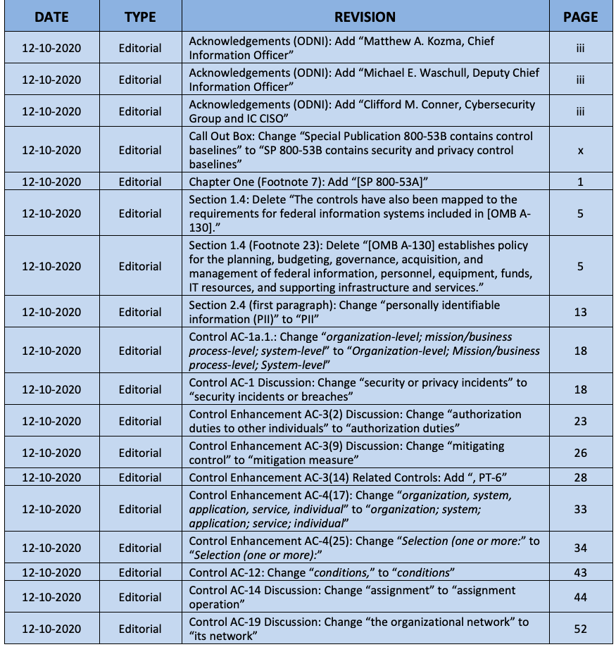
| 日付 | 種別 | 改訂内容（引用は英文を保持） | ページ |
|---|---|---|---|
| 12-10-2020 | 編集上の修正 | 謝辞（ODNI）：“Matthew A. Kozma, Chief Information Officer”を追加。 | iii |
| 12-10-2020 | 編集上の修正 | 謝辞（ODNI）：“Michael E. Waschull, Deputy Chief Information Officer”を追加。 | iii |
| 12-10-2020 | 編集上の修正 | 謝辞（ODNI）：“Clifford M. Conner, Cybersecurity Group and IC CISO”を追加。 | iii |
| 12-10-2020 | 編集上の修正 | 囲み記事：“Special Publication 800-53B contains control baselines”を“SP 800-53B contains security and privacy control baselines”に変更。 | x |
| 12-10-2020 | 編集上の修正 | 第1章（脚注7）：“[SP 800-53A]”を追加。 | 1 |
| 12-10-2020 | 編集上の修正 | 1.4節：“The controls have also been mapped to the requirements for federal information systems included in [OMB A-130].”を削除。 | 5 |
| 12-10-2020 | 編集上の修正 | 1.4節（脚注23）：“[OMB A-130] establishes policy for the planning, budgeting, governance, acquisition, and management of federal information, personnel, equipment, funds, IT resources, and supporting infrastructure and services.”を削除。 | 5 |
| 12-10-2020 | 編集上の修正 | 2.4節（第1段落）：“personally identifiable information (PII)”を“PII”に変更。 | 13 |
| 12-10-2020 | 編集上の修正 | 管理策 AC-1a | 18 |
| 12-10-2020 | 編集上の修正 | 管理策 AC-1の考察：“security or privacy incidents”を“security incidents or breaches”に変更。 | 18 |
| 12-10-2020 | 編集上の修正 | 管理策拡張 AC-3(2)の考察：“authorization duties to other individuals”を“authorization duties”に変更。 | 23 |
| 12-10-2020 | 編集上の修正 | 管理策拡張 AC-3(9)の考察：“mitigating control”を“mitigation measure”に変更。 | 26 |
| 12-10-2020 | 編集上の修正 | 管理策拡張 AC-3(14)の関連管理策：“, PT-6”を追加。 | 28 |
| 12-10-2020 | 編集上の修正 | 管理策拡張 AC-4(17)：“organization, system, application, service, individual”を“organization; system; application; service; individual”に変更。 | 33 |
| 12-10-2020 | 編集上の修正 | 管理策拡張 AC-4(25)：“Selection (one or more:”を“Selection (one or more):”に変更。 | 34 |
| 12-10-2020 | 編集上の修正 | 管理策 AC-12：“conditions,”を“conditions”に変更。 | 43 |
| 12-10-2020 | 編集上の修正 | 管理策 AC-14の考察：“assignment”を“assignment operation”に変更。 | 44 |
| 12-10-2020 | 編集上の修正 | 管理策 AC-19の考察：“the organizational network”を“its network”に変更。 | 52 |
| 12-10-2020 | 編集上の修正 | 管理策 AC-19の考察：“Many controls for mobile devices are reflected in other controls allocated to the initial control baselines as starting points for the development of security plans and overlays using the tailoring process. There may also be some overlap by the security controls within the different families of controls.”を“Many safeguards for mobile devices are reflected in other controls.”に変更。 | 52 |
| 12-10-2020 | 編集上の修正 | 管理策 AC-20の考察：“organizational systems”を“organizational systems,”に変更。 | 53 |
| 12-10-2020 | 編集上の修正 | 管理策拡張 AC-20(3)の考察：“AC-20(6)”を“AC-20 b.”に変更。 | 54 |
| 12-10-2020 | 編集上の修正 | 管理策 AT-1a | 59 |
| 12-10-2020 | 編集上の修正 | 管理策 AT-1の考察：“security or privacy incidents”を“security incidents or breaches”に変更。 | 59 |
| 12-10-2020 | 編集上の修正 | 管理策 AT-2d.：“security or privacy incidents”を“security incidents or breaches”に変更。 | 60 |
| 12-10-2020 | 編集上の修正 | 管理策 AT-2の考察：“security or privacy incidents”を“security incidents or breaches”に変更。 | 60 |
| 12-10-2020 | 編集上の修正 | 管理策 AT-3c.：“security or privacy incidents”を“security incidents or breaches”に変更。 | 62 |
| 12-10-2020 | 編集上の修正 | 管理策 AT-3の考察：“security or privacy incidents”を“security incidents or breaches”に変更。 | 63 |
| 12-10-2020 | 編集上の修正 | 管理策 AT-3の関連管理策：“IR-10”を“IR-4”に変更。 | 63 |
| 12-10-2020 | 編集上の修正 | 管理策 AT-6の考察：“assessment and update”を“evaluation and update”に変更。 | 64 |
| 12-10-2020 | 編集上の修正 | 管理策 AT-6の考察：“organization training”を“organizational training”に変更。 | 64 |
| 12-10-2020 | 編集上の修正 | 管理策 AU-1a | 65 |
| 12-10-2020 | 編集上の修正 | 管理策 AU-1の考察：“security or privacy incidents”を“security incidents or breaches”に変更。 | 65 |
| 12-10-2020 | 編集上の修正 | 管理策 CA-1a | 83 |
| 12-10-2020 | 編集上の修正 | 管理策 CA-1の考察：“security or privacy incidents”を“security incidents or breaches”に変更。 | 83 |
| 12-10-2020 | 編集上の修正 | 管理策 CA-1の参考文献：“[OMB A-130, Appendix II]”を“[OMB A-130]”に変更。 | 84 |
| 12-10-2020 | 編集上の修正 | 管理策 CA-1の参考文献：“[SP 800-137A],”を追加。 | 84 |
| 12-10-2020 | 編集上の修正 | 管理策拡張 CA-2(2)：“data loss assessment”を“data loss assessment;”に変更。 | 86 |
| 12-10-2020 | 編集上の修正 | 管理策 CA-3の参考文献：“[OMB A-130, Appendix II]”を“[OMB A-130]”に変更。 | 88 |
| 12-10-2020 | 編集上の修正 | 管理策 CA-7の考察：“SC-18c”を“SC-18b”に変更。 | 91 |
| 12-10-2020 | 編集上の修正 | 管理策 CM-1a | 96 |
| 12-10-2020 | 編集上の修正 | 管理策 CM-1の考察：“security or privacy incidents”を“security incidents or breaches”に変更。 | 96 |
| 12-10-2020 | 編集上の修正 | 管理策 CM-2b | 97 |
| 12-10-2020 | 編集上の修正 | 管理策拡張 CM-7(4)の名称：“UNAUTHORIZED SOFTWARE”を“UNAUTHORIZED SOFTWARE – DENY-BY-EXCEPTION”に変更。 | 106 |
| 12-10-2020 | 編集上の修正 | 管理策拡張 CM-7(5)の名称：“AUTHORIZED SOFTWARE”を“AUTHORIZED SOFTWARE – ALLOW-BY-EXCEPTION”に変更。 | 106 |
| 12-10-2020 | 編集上の修正 | 管理策 CM-8の関連管理策：“CP-9,”を追加。 | 108 |
| 12-10-2020 | 編集上の修正 | 管理策 CP-1a | 115 |
| 12-10-2020 | 編集上の修正 | 管理策 CP-1の考察：“security or privacy incidents”を“security incidents or breaches”に変更。 | 115 |
| 12-10-2020 | 編集上の修正 | 管理策 CP-3の考察：“security or privacy incidents”を“security incidents or breaches”に変更。 | 119 |
| 12-10-2020 | 編集上の修正 | 管理策拡張 CP-9(7)の名称：“DUAL AUTHORIZATION”を“DUAL AUTHORIZATION FOR DELETION OR DESTRUCTION”に変更。 | 127 |
| 12-10-2020 | 編集上の修正 | 管理策拡張 CP-10(3)：“tailoring procedures”を“tailoring”に変更。 | 128 |
| 12-10-2020 | 編集上の修正 | 管理策 IA-1a | 131 |
| 12-10-2020 | 編集上の修正 | 管理策 IA-1の考察：“security or privacy incidents”を“security incidents or breaches”に変更。 | 131 |
| 12-10-2020 | 編集上の修正 | 管理策拡張 IA-2(1)の考察：“Common Access Card”を“Common Access Card (CAC)”に変更。 | 132 |
| 12-10-2020 | 編集上の修正 | 管理策拡張 IA-2(7)の名称：“ACCESS”を“NETWORK ACCESS”に変更。 | 134 |
| 12-10-2020 | 編集上の修正 | 管理策拡張 IA-8(5)の考察：“Personal Identity Verification (PIV)”を“PIV”に変更。 | 145 |
| 12-10-2020 | 編集上の修正 | 管理策 IR-1a | 149 |
| 12-10-2020 | 編集上の修正 | 管理策 IR-1の考察：“security or privacy incidents”を“security incidents or breaches”に変更。 | 149 |
| 12-10-2020 | 編集上の修正 | 管理策拡張 IR-2(1)の考察：“Incident response training includes tabletop exercises that simulate a breach. See IR-2(3).”を削除。 | 150 |
| 12-10-2020 | 編集上の修正 | 管理策 IR-4の関連管理策：“IR-5,”を追加。 | 152 |
| 12-10-2020 | 編集上の修正 | 管理策 IR-5の関連管理策：“IR-4, IR-6,”を追加。 | 156 |
| 12-10-2020 | 編集上の修正 | 管理策拡張 IR-5(1)の関連管理策：“AU-7, IR-4”を“None”に変更。 | 156 |
| 12-10-2020 | 編集上の修正 | 管理策 IR-10：“Incident Analysis”を“Integrated Information Security Analysis Team”に変更。 | 161 |
| 12-10-2020 | 編集上の修正 | 管理策 IR-10：“Incorporated into”を“Moved to”に変更。 | 161 |
| 12-10-2020 | 編集上の修正 | 管理策 MA-1a | 162 |
| 12-10-2020 | 編集上の修正 | 管理策 MA-1の考察：“security or privacy incidents”を“security incidents or breaches”に変更。 | 162 |
| 12-10-2020 | 編集上の修正 | 管理策拡張 MA-4(2)：“MA-1, MA-4”を“MA-1 and MA-4”に変更。 | 166 |
| 12-10-2020 | 編集上の修正 | 管理策 MP-1a | 171 |
| 12-10-2020 | 編集上の修正 | 管理策 MP-1の考察：“security or privacy incidents”を“security incidents or breaches”に変更。 | 171 |
| 12-10-2020 | 編集上の修正 | 管理策 MP-3の参考文献：“[EO 13556],”を追加。 | 172 |
| 12-10-2020 | 編集上の修正 | 管理策 PE-1a | 179 |
| 12-10-2020 | 編集上の修正 | 管理策 PE-1の考察：“security or privacy incidents”を“security incidents or breaches”に変更。 | 179 |
| 12-10-2020 | 編集上の修正 | 管理策拡張 PE-3(8)の考察：“, or mantrap,”を削除。 | 183 |
| 12-10-2020 | 編集上の修正 | 管理策拡張 PE-3(8)の考察：“Mantraps”を“Vestibules”に変更。 | 183 |
| 12-10-2020 | 編集上の修正 | 管理策拡張 PE-19(1)の名称：”AND TEMPEST”を削除。 | 192 |
| 12-10-2020 | 編集上の修正 | 管理策 PL-1a | 194 |
| 12-10-2020 | 編集上の修正 | 管理策 PL-1の考察：“security or privacy incidents”を“security incidents or breaches”に変更。 | 194 |
| 12-10-2020 | 編集上の修正 | 管理策 PL-2の参考文献：“[OMB A-130, Appendix II]”を“[OMB A-130]”に変更。 | 196 |
| 12-10-2020 | 編集上の修正 | 管理策 PL-7の参考文献：“[OMB A-130, Appendix II]”を“[OMB A-130]”に変更。 | 198 |
| 12-10-2020 | 編集上の修正 | 管理策 PL-11の考察：“[FISMA] and [PRIVACT]”を“[FISMA], [PRIVACT], and [OMB A-130]”に変更。 | 201 |
| 12-10-2020 | 編集上の修正 | 管理策 PM-1の考察：“security or privacy incidents”を“security incidents or breaches”に変更。 | 204 |
| 12-10-2020 | 編集上の修正 | 管理策 PM-2の参考文献：“, [SP 800-181]”を追加。 | 204 |
| 12-10-2020 | 編集上の修正 | 管理策 PM-5の参考文献：“[OMB A-130],”を追加。 | 206 |
| 12-10-2020 | 編集上の修正 | 管理策 PM-8の参考文献：“[EO 13636],”を追加。 | 207 |
| 12-10-2020 | 編集上の修正 | 管理策 PM-10の参考文献：“, [SP 800-181]”を追加。 | 208 |
| 12-10-2020 | 編集上の修正 | 管理策 PM-11の関連管理策：“RA-9,”を追加。 | 209 |
| 12-10-2020 | 編集上の修正 | 管理策 PM-12の参考文献：“[NITP12],”を追加。 | 210 |
| 12-10-2020 | 編集上の修正 | 管理策 PM-17の参考文献：“[SP 800-172],”を追加。 | 212 |
| 12-10-2020 | 編集上の修正 | 管理策 PM-19の関連管理策：“, PM-27”を追加。 | 213 |
| 12-10-2020 | 編集上の修正 | 管理策 PM-22の参考文献：“[OMB M-19-15],”を追加。 | 216 |
| 12-10-2020 | 編集上の修正 | 管理策 PM-24の関連管理策：“PT-2,”を追加。 | 216 |
| 12-10-2020 | 編集上の修正 | 管理策 PM-24の参考文献：“[OMB A-130, Appendix II]”を“[OMB A-130]”に変更。 | 217 |
| 12-10-2020 | 編集上の修正 | 管理策 PM-25の関連管理策：“, SI-12”を追加。 | 217 |
| 12-10-2020 | 編集上の修正 | 管理策 PM-25の参考文献：“[OMB A-130, Appendix II]”を“[OMB A-130]”に変更。 | 217 |
| 12-10-2020 | 編集上の修正 | 管理策 PM-29の参考文献：“, [SP 800-181]”を追加。 | 219 |
| 12-10-2020 | 編集上の修正 | 管理策 PM-30の参考文献：“[CNSSD 505],”を追加。 | 220 |
| 12-10-2020 | 編集上の修正 | 管理策 PM-31の考察：“SC-18c”を“SC-18b”に変更。 | 220 |
| 12-10-2020 | 編集上の修正 | 管理策 PM-31の参考文献：“, [SP 800-137A]”を追加。 | 221 |
| 12-10-2020 | 編集上の修正 | 管理策 PM-32の参考文献：“[SP 800-137]”を“[SP 800-160-1], [SP 800-160-2]”に変更。 | 221 |
| 12-10-2020 | 編集上の修正 | 管理策 PS-1a | 222 |
| 12-10-2020 | 編集上の修正 | 管理策 PS-1の考察：“security or privacy incidents”を“security incidents or breaches”に変更。 | 222 |
| 12-10-2020 | 編集上の修正 | 管理策拡張 PS-3(3)の名称：“WITH”を“REQUIRING”に変更。 | 224 |
| 12-10-2020 | 編集上の修正 | 管理策 PT-1a | 229 |
| 12-10-2020 | 編集上の修正 | 管理策 PT-1の考察：“privacy breaches”を“breaches”に変更。 | 229 |
| 12-10-2020 | 編集上の修正 | 管理策拡張 PT-2(1)：“permissible”を“authorized”に変更。 | 230 |
| 12-10-2020 | 編集上の修正 | 管理策 PT-2の参考文献：“[OMB A-130, Appendix II]”を“[OMB A-130]”に変更。 | 231 |
| 12-10-2020 | 編集上の修正 | 管理策 PT-3a.：“[Assignment organization-defined purpose(s)]”を“[Assignment: organization-defined purpose(s)]”に変更。 | 231 |
| 12-10-2020 | 編集上の修正 | 管理策 PT-3の参考文献：“[OMB A-130, Appendix II]”を“[OMB A-130]”に変更。 | 232 |
| 12-10-2020 | 編集上の修正 | 管理策 PT-5の関連管理策：“SC-42,”を追加。 | 234 |
| 12-10-2020 | 編集上の修正 | 管理策拡張 PT-6(2)：“[Assignment: organization-defined frequency]”を“[Assignment: organization-defined frequency]”に変更。 | 235 |
| 12-10-2020 | 編集上の修正 | 管理策 PT-7の参考文献：“, [NARA CUI]”を追加。 | 236 |
| 12-10-2020 | 編集上の修正 | 管理策 PT-8の参考文献：“[CMPPA],”を追加。 | 237 |
| 12-10-2020 | 編集上の修正 | 管理策 RA-1a | 238 |
| 12-10-2020 | 編集上の修正 | 管理策 RA-1の考察：“security or privacy incidents”を“security incidents or breaches”に変更。 | 238 |
| 12-10-2020 | 編集上の修正 | 管理策 RA-2の参考文献：“, [NARA CUI]”を追加。 | 240 |
| 12-10-2020 | 編集上の修正 | 管理策 RA-3の関連管理策：“PT-2,”を追加。 | 240 |
| 12-10-2020 | 編集上の修正 | 管理策 RA-8の参考文献：“[OMB A-130, Appendix II]”を“[OMB A-130]”に変更。 | 247 |
| 12-10-2020 | 編集上の修正 | 管理策 RA-9の関連管理策：“PM-11,”を追加。 | 247 |
| 12-10-2020 | 編集上の修正 | 管理策 SA-1a | 249 |
| 12-10-2020 | 編集上の修正 | 管理策 SA-1の考察：“security or privacy incidents”を“security incidents or breaches”に変更。 | 249 |
| 12-10-2020 | 編集上の修正 | 管理策 SA-2の参考文献：“[SP 800-37], ”を追加。 | 250 |
| 12-10-2020 | 編集上の修正 | 管理策 SA-4の参考文献：“[ISO 29148], ”を追加。 | 255 |
| 12-10-2020 | 編集上の修正 | 管理策拡張 SA-9(5)の考察：“security or privacy incidents”を“security incidents or breaches”に変更。 | 273 |
| 12-10-2020 | 編集上の修正 | 管理策拡張 SA-10(2)の名称：“ALTERNATIVE CONFIGURATION MANAGEMENT”を“ALTERNATIVE CONFIGURATION MANAGEMENT PROCESSES”に変更。 | 274 |
| 12-10-2020 | 編集上の修正 | 管理策 SA-11a | 276 |
| 12-10-2020 | 編集上の修正 | 管理策拡張 SA-12(13)：“MA-6, RA-9”を“MA-6 and RA-9”に変更。 | 280 |
| 12-10-2020 | 編集上の修正 | 管理策拡張 SA-12(14)：“SR-4(1), SR-4(2)”を“SR-4(1) and SR-4(2)”に変更。 | 280 |
| 12-10-2020 | 編集上の修正 | 管理策拡張 SA-17(4)(b)：“informal demonstration,”を“informal demonstration;”に変更。 | 286 |
| 12-10-2020 | 編集上の修正 | 管理策 SA-23：“design modification, augmentation, reconfiguration”を“design; modification; augmentation; reconfiguration”に変更。 | 291 |
| 12-10-2020 | 編集上の修正 | 管理策 SC-1a | 292 |
| 12-10-2020 | 編集上の修正 | 管理策 SC-1の考察：“security or privacy incidents”を“security incidents or breaches”に変更。 | 292 |
| 12-10-2020 | 編集上の修正 | 管理策 SC-6：“Selection (one or more);”を“Selection (one or more):”に変更。 | 297 |
| 12-10-2020 | 実質的な修正 | 管理策 SC-7の考察：“[SP 800-189] provides additional information on source address validation techniques to prevent ingress and egress of traffic with spoofed addresses.”を追加。 | 297 |
| 12-10-2020 | 実質的な修正 | 管理策拡張 SC-7(4)の考察：“Unauthorized control plane traffic can occur through a technique known as spoofing.”を削除。 | 298 |
| 12-10-2020 | 実質的な修正 | 管理策拡張 SC-7(4)の考察：“routing”を“Border Gateway Protocol (BGP) routing“に変更。 | 298 |
| 12-10-2020 | 実質的な修正 | 管理策拡張 SC-7(4)の考察：“management”を“management protocols“に変更。 | 298 |
| 12-10-2020 | 実質的な修正 | 管理策拡張 SC-7(4)の考察：“See [SP 800-189] for additional information on the use of the resource public key infrastructure (RPKI) to protect BGP routes and detect unauthorized BGP announcements.”を追加。 | 298 |
| 12-10-2020 | 編集上の修正 | 管理策拡張 SC-7(4)の関連管理策：“, SC-20, SC-21, SC-22”を追加。 | 298 |
| 12-10-2020 | 編集上の修正 | 管理策拡張 SC-7(5)：“Selection (one or more);”を“Selection (one or more):”に変更。 | 298 |
| 12-10-2020 | 編集上の修正 | 管理策 SC-14：“SI-7,”を“SI-7, and”に変更。 | 309 |
| 12-10-2020 | 編集上の修正 | 管理策 SC-17の考察：“Public Key Infrastructure”を“Public Key Infrastructure (PKI)”に変更。 | 311 |
| 12-10-2020 | 編集上の修正 | 管理策 SC-19：“addressed by other controls for protocols”を“addressed as any other technology or protocol”に変更。 | 313 |
| 12-10-2020 | 編集上の修正 | 管理策拡張 SC-30(4)の関連管理策：“SC-26”を“None”に変更。 | 319 |
| 12-10-2020 | 編集上の修正 | 管理策拡張 SC-31(2)：“Selection (one or more);”を“Selection (one or more):”に変更。 | 320 |
| 12-10-2020 | 編集上の修正 | 管理策 SC-42b.：“class of users”を“group of users”に変更。 | 326 |
| 12-10-2020 | 編集上の修正 | 管理策 SI-1a | 332 |
| 12-10-2020 | 編集上の修正 | 管理策 SI-1の考察：“security or privacy incidents”を“security incidents or breaches”に変更。 | 332 |
| 12-10-2020 | 編集上の修正 | 管理策 SI-3c.1.：“Selection (one or more);”を“Selection (one or more):”に変更。 | 334 |
| 12-10-2020 | 編集上の修正 | 管理策 SI-9：“AC-5,”を“AC-5, and”に変更。 | 349 |
| 12-10-2020 | 編集上の修正 | 管理策 SI-10の参考文献：“[OMB A-130, Appendix II]”を“[OMB A-130]”に変更。 | 351 |
| 12-10-2020 | 編集上の修正 | 管理策拡張 SI-12(1)：“PII”を“personally identifiable information”に変更。 | 352 |
| 12-10-2020 | 編集上の修正 | 管理策拡張 SI-12(1)の関連管理策：“PT-2, PT-3, RA-3”を削除。 | 352 |
| 12-10-2020 | 編集上の修正 | 管理策拡張 SI-12(3)の関連管理策：“MP-6”を“None”に変更。 | 353 |
| 12-10-2020 | 編集上の修正 | 管理策 SI-12の参考文献：“[OMB A-130, Appendix II]”を“[OMB A-130]”に変更。 | 353 |
| 12-10-2020 | 編集上の修正 | 管理策 SI-18の関連管理策：“PT-2,”を追加。 | 356 |
| 12-10-2020 | 編集上の修正 | 管理策拡張 SI-18(1)の関連管理策：“PM-22,”を削除。 | 357 |
| 12-10-2020 | 編集上の修正 | 管理策拡張 SI-18(4)の関連管理策：“PM-22”を“None”に変更。 | 358 |
| 12-10-2020 | 編集上の修正 | 管理策 SI-18の参考文献：“[OMB M-19-15],”を追加。 | 358 |
| 12-10-2020 | 編集上の修正 | 管理策 SI-19の参考文献：“[OMB A-130, Appendix II]”を“[OMB A-130]”に変更。 | 360 |
| 12-10-2020 | 編集上の修正 | 管理策 SI-20の参考文献：“[OMB A-130, Appendix II]”を“[OMB A-130]”に変更。 | 361 |
| 12-10-2020 | 編集上の修正 | 管理策 SR-1a | 363 |
| 12-10-2020 | 編集上の修正 | 管理策 SR-1の考察：“security or privacy incidents”を“security incidents or breaches”に変更。 | 363 |
| 12-10-2020 | 編集上の修正 | 管理策 SR-1の参考文献：“[CNSSD 505],”を追加。 | 364 |
| 12-10-2020 | 編集上の修正 | 管理策 SR-2の参考文献：“[SP 800-181],”を追加。 | 365 |
| 12-10-2020 | 編集上の修正 | 管理策 SR-2の参考文献：“[CNSSD 505],”を追加。 | 365 |
| 12-10-2020 | 編集上の修正 | 管理策拡張 SR-5(2)の関連管理策：“SR-9”を削除。 | 369 |
| 12-10-2020 | 編集上の修正 | 管理策拡張 SR-6(1)：“organizational analysis, independent third-party analysis, organizational testing, independent third-party testing”を“organizational analysis; independent third-party analysis; organizational testing; independent third-party testing”に変更。 | 370 |
| 12-10-2020 | 編集上の修正 | 参考文献 [ATOM54]：“Atomic Energy Act (P.L. 107)”を“Atomic Energy Act (P.L. 83-703)”に変更。 | 374 |
| 12-10-2020 | 編集上の修正 | 参考文献 [ISO 15026-1]：“International Organization for Standardization/ | 377 |
| 12-10-2020 | 編集上の修正 | 参考文献：“[ISO 28001]”を削除。 | 378 |
| 12-10-2020 | 編集上の修正 | 参考文献 [ISO 29148]：“International Organization for Standardization/ | 379 |
| 12-10-2020 | 編集上の修正 | 参考文献 [SP 800-53B]：“Draft NIST”を“NIST”に変更。 | 381 |
| 12-10-2020 | 編集上の修正 | 参考文献 [SP 800-53B]：“https:/ | 381 |
| 12-10-2020 | 編集上の修正 | 参考文献：“[SP 800-58]”を削除。 | 382 |
| 12-10-2020 | 編集上の修正 | 参考文献：“[SP 800-137A] Dempsey KL, Pillitteri VY, Baer C, Niemeyer R, Rudman R, Urban S (2020) Assessing Information Security Continuous Monitoring (ISCM) Programs: Developing an ISCM Program Assessment. (National Institute of Standards and Technology, Gaithersburg, MD), NIST Special Publication (SP) 800-137A. https:/ | 387 |
| 12-10-2020 | 編集上の修正 | 参考文献：“[SP 800-161-1]”を削除。 | 387 |
| 12-10-2020 | 編集上の修正 | 参考文献 [SP 800-181]：“Newhouse WD, Witte GA, Scribner B, Keith S (2017) National Initiative for Cybersecurity Education (NICE) Cybersecurity Workforce Framework. (National Institute of Standards and Technology, Gaithersburg, MD), NIST Special Publication (SP) 800-181. https:/ | 388 |
| 12-10-2020 | 編集上の修正 | 参考文献 [DODTERMS]：“http:/ | 391 |
| 12-10-2020 | 編集上の修正 | 付録A 用語集（偽造品）：“[SP 800-161-1]”を[SP 800-161]”に変更。 | 400 |
| 12-10-2020 | 編集上の修正 | 付録A 用語集（サプライヤー）：“[SP 800-161-1]”を削除。 | 419 |
| 12-10-2020 | 編集上の修正 | 付録A 用語集（サプライチェーン）：“[SP 800-161-1]”を削除。 | 419 |
| 12-10-2020 | 編集上の修正 | 付録A 用語集（サプライチェーンリスク）：“[SP 800-161-1]”を削除。 | 420 |
| 12-10-2020 | 編集上の修正 | 付録A 用語集（サプライチェーンリスク評価）：“[SP 800-161-1]”を削除。 | 420 |
| 12-10-2020 | 編集上の修正 | 付録A 用語集（サプライチェーンリスク管理）：“[SP 800-161-1]”を削除。 | 420 |
| 12-10-2020 | 編集上の修正 | 付録B 略語：“BGP Border Gateway Protocol”を追加。 | 424 |
| 12-10-2020 | 編集上の修正 | 付録B 略語：“CAC Common Access Card”を追加。 | 424 |
| 12-10-2020 | 編集上の修正 | 付録B 略語：“CONOPS Concept of Operations”を追加。 | 424 |
| 12-10-2020 | 編集上の修正 | 付録B 略語：“DSB Defense Science Board”を追加。 | 424 |
| 12-10-2020 | 編集上の修正 | 付録B 略語：“FICAM Federal Identity, Credential, and Access Management”を追加。 | 425 |
| 12-10-2020 | 編集上の修正 | 付録B 略語：“IEEE Institute of Electrical and Electronics Engineers”を追加。 | 425 |
| 12-10-2020 | 編集上の修正 | 付録B 略語：“ISAC Information Sharing and Analysis Centers”を追加。 | 425 |
| 12-10-2020 | 編集上の修正 | 付録B 略語：“ISAO Information Sharing and Analysis Organizations”を追加。 | 425 |
| 12-10-2020 | 編集上の修正 | 付録B 略語：“ITL Information Technology Laboratory”を追加。 | 425 |
| 12-10-2020 | 編集上の修正 | 付録B 略語：“MLS Multilevel Secure”を追加。 | 425 |
| 12-10-2020 | 編集上の修正 | 付録B 略語：“NDA Non-Disclosure Agreement”を追加。 | 426 |
| 12-10-2020 | 編集上の修正 | 付録B 略語：“ODNI Office of the Director of National Intelligence”を追加。 | 426 |
| 12-10-2020 | 編集上の修正 | 付録B 略語：“OPM Office of Personnel Management”を追加。 | 426 |
| 12-10-2020 | 編集上の修正 | 付録B 略語：“PDS Position Designation System”を追加。 | 426 |
| 12-10-2020 | 編集上の修正 | 付録B 略語：“RPKI Resource Public Key Infrastructure”を追加。 | 426 |
| 12-10-2020 | 編集上の修正 | 付録B 略語：“SCRM Supply Chain Risk Management”を追加。 | 426 |
| 12-10-2020 | 編集上の修正 | 付録B 略語：“SDLC System Development Life Cycle”を追加。 | 426 |
| 12-10-2020 | 編集上の修正 | 付録B 略語：“SIEM Security Information and Event Management”を追加。 | 426 |
| 12-10-2020 | 編集上の修正 | 付録B 略語：“SWID Software Identification”を追加。 | 427 |
| 12-10-2020 | 編集上の修正 | 付録B 略語：“TIC Trusted Internet Connections”を追加。 | 427 |
| 12-10-2020 | 編集上の修正 | 付録B 略語：“UEFI Unified Extensible Firmware Interface”を追加。 | 427 |
| 12-10-2020 | 編集上の修正 | 付録B 略語：“UPS Uninterruptible Power Supply”を追加。 | 427 |
| 12-10-2020 | 編集上の修正 | 付録C 管理策の要約：“w”を“W”に変更。 | 428 |
| 12-10-2020 | 編集上の修正 | 表 C-1 (AC-3(1))の名称：“FUNCTION”を“FUNCTIONS”に変更。 | 429 |
| 12-10-2020 | 編集上の修正 | 表 C-1 (AC-3(6))：“MP-4, SC-28”を“MP-4 and SC-28”に変更。 | 429 |
| 12-10-2020 | 編集上の修正 | 表 C-1 (AC-13)：“AC-2, AU-6”を“AC-2 and AU-6”に変更。 | 431 |
| 12-10-2020 | 編集上の修正 | 表 C-3 (AU-7(2))の名称：“SEARCH AND SORT”を“SORT AND SEARCH”に変更。 | 434 |
| 12-10-2020 | 編集上の修正 | 表 C-3 AU-15：“Incorporated into”を“Moved to”に変更。 | 435 |
| 12-10-2020 | 編集上の修正 | 表 C-4 (CA-3(1))の名称：“CONNECTIONS”を“SYSTEM CONNECTIONS”に変更。 | 436 |
| 12-10-2020 | 編集上の修正 | 表 C-5 (CM-7(4))の名称：“UNAUTHORIZED SOFTWARE”を“UNAUTHORIZED SOFTWARE – DENY-BY-EXCEPTION”に変更。 | 437 |
| 12-10-2020 | 編集上の修正 | 表 C-5 (CM-7(5))の名称：“AUTHORIZED SOFTWARE”を“AUTHORIZED SOFTWARE – ALLOW-BY-EXCEPTION”に変更。 | 437 |
| 12-10-2020 | 編集上の修正 | 表 C-5：重複する行CM-8(5)を削除。 | 438 |
| 12-10-2020 | 編集上の修正 | 表 C-6 (CP-9(7))の名称：“DUAL AUTHORIZATION”を“DUAL AUTHORIZATION FOR DELETION OR DESTRUCTION”に変更。 | 440 |
| 12-10-2020 | 編集上の修正 | 表 C-7 (IA-5(11))：“IA-2(1)(2)”を“IA-2(1) and IA-2(2)”に変更。 | 441 |
| 12-10-2020 | 編集上の修正 | 表 C-8 (IR-10)の名称：“Integrated Information Security Analysis”を“Integrated Information Security Analysis Team”に変更。 | 444 |
| 12-10-2020 | 編集上の修正 | 表 C-9 (MA-4(2))：“MA-1, MA-4”を“MA-1 and MA-4”に変更。 | 445 |
| 12-10-2020 | 編集上の修正 | 表 C-11 (PE-7)：“PE-2, PE-3”を“PE-2 and PE-3”に変更。 | 447 |
| 12-10-2020 | 編集上の修正 | 表 C-11 (PE-19(1))の名称：”AND TEMPEST”を削除。 | 448 |
| 12-10-2020 | 編集上の修正 | 表 C-14 (PS-3(1))の名称：“INFORMATION”を“INFORMATION”に変更。［原本では変更前後の語句・書体が同一。］ | 451 |
| 12-10-2020 | 編集上の修正 | 表 C-14 (PS-3(3))の名称：“WITH”を“REQUIRING”に変更。 | 451 |
| 12-10-2020 | 編集上の修正 | 表 C-17 (SA-6)：“CM-10, SI-7”を“CM-10 and SI-7”に変更。 | 454 |
| 12-10-2020 | 編集上の修正 | 表 C-17 (SA-7)：“CM-11, SI-7”を“CM-11 and SI-7”に変更。 | 454 |
| 12-10-2020 | 編集上の修正 | 表 C-17 (SA-12(13))：“MA-6, RA-9”を“MA-6 and RA-9”に変更。 | 456 |
| 12-10-2020 | 編集上の修正 | 表 C-17 (SA-12(14))：“SR-4(1)(2)”を“SR-4(1) and SR-4(2)”に変更。 | 456 |
| 12-10-2020 | 編集上の修正 | 表 C-17 (SA-12(15))の名称：“PROCESS”を“PROCESSES”に変更。 | 456 |
| 12-10-2020 | 編集上の修正 | 表 C-18 (SC-7(25))の名称：“CONNECTIONS”を“SYSTEM CONNECTIONS”に変更。 | 459 |
| 12-10-2020 | 編集上の修正 | 表 C-18 (SC-12(4))：“SC-12”を“SC-12(3)”に変更。 | 459 |
| 12-10-2020 | 編集上の修正 | 表 C-18 (SC-12(5))：“SC-12”を“SC-12(3)”に変更。 | 459 |
| 12-10-2020 | 編集上の修正 | 表 C-18 (SC-14)：“SI-7,”を“SI-7, and”に変更。 | 459 |
| 12-10-2020 | 編集上の修正 | 表 C-18 (SC-19)：“addressed by other controls for protocols”を“addressed as any other technology or protocol.”に変更。 | 460 |
| 12-10-2020 | 編集上の修正 | 表 C-19 (SI-9)：“AC-5,”を“AC-5, and”に変更。 | 463 |
| 12-10-2020 | 編集上の修正 | 表 C-19 (SI-19(7))の名称：“SOFTWARE”を“AND SOFTWARE”に変更。 | 464 |
CHAPTER ONE
第1章
INTRODUCTION
序論
THE NEED TO PROTECT INFORMATION, SYSTEMS, ORGANIZATIONS, AND INDIVIDUALS
情報、システム、組織および個人を保護する必要性
Modern information systems1 can include a variety of computing platforms (e.g., industrial control systems, general purpose computing systems, cyber-physical systems, super computers, weapons systems, communications systems, environmental control systems, medical devices, embedded devices, sensors, and mobile devices such as smart phones and tablets). These platforms all share a common foundation—computers with complex hardware, software and firmware providing a capability that supports the essential mission and business functions of organizations.2
現代の情報システム1には、さまざまなコンピューティングプラットフォーム（例：産業用制御システム、汎用コンピューティングシステム、サイバーフィジカルシステム、スーパーコンピュータ、兵器システム、通信システム、環境制御システム、医療機器、組込み機器、センサー、並びにスマートフォン及びタブレットなどのモバイルデバイス）が含まれ得る。これらのプラットフォームはすべて共通の基盤を持つ。すなわち、複雑なハードウェア、ソフトウェア及びファームウェアを備え、組織の不可欠なミッション及び事業機能を支える能力を提供するコンピュータである。2
Security controls are the safeguards or countermeasures employed within a system or an organization to protect the confidentiality, integrity, and availability of the system and its information and to manage information security3 risk. Privacy controls are the administrative, technical, and physical safeguards employed within a system or an organization to manage privacy risks and to ensure compliance with applicable privacy requirements.4 Security and privacy controls are selected and implemented to satisfy security and privacy requirements levied on a system or organization. Security and privacy requirements are derived from applicable laws, executive orders, directives, regulations, policies, standards, and mission needs to ensure the confidentiality, integrity, and availability of information processed, stored, or transmitted and to manage risks to individual privacy.
セキュリティ管理策とは、システム及びその情報の機密性、完全性及び可用性を保護し、情報セキュリティ3リスクを管理するために、システム又は組織の中で用いられる保護策又は対抗策である。プライバシー管理策とは、プライバシーリスクを管理し、適用されるプライバシー要件の遵守を確実にするために、システム又は組織の中で用いられる管理的、技術的及び物理的な保護策である。4セキュリティ及びプライバシーの管理策は、システム又は組織に課されたセキュリティ及びプライバシーの要件を満たすために選択され、実装される。セキュリティ及びプライバシーの要件は、処理、保存又は伝送される情報の機密性、完全性及び可用性を確保し、個人のプライバシーに対するリスクを管理するために、適用される法律、大統領令、指令、規則、ポリシー、標準及びミッション上の必要性から導き出される。
The selection, design, and implementation of security and privacy controls5 are important tasks that have significant implications for the operations6 and assets of organizations as well as the welfare of individuals and the Nation. Organizations should answer several key questions when addressing information security and privacy controls:
セキュリティ及びプライバシーの管理策5の選択、設計及び実装は、組織の業務6及び資産、並びに個人及び国家の福利に重大な影響を及ぼす重要な作業である。組織は、情報セキュリティ及びプライバシーの管理策に取り組む際に、次のような重要な問いに答えるべきである。
•What security and privacy controls are needed to satisfy security and privacy requirements and to adequately manage mission/business risks or risks to individuals?
•セキュリティおよびプライバシー要件を満たし、ミッション／業務上のリスクまたは個人に対するリスクを適切に管理するには、どのセキュリティおよびプライバシー管理策が必要か。
•Have the selected controls been implemented or is there a plan in place to do so?
•選択した管理策は実装済みか、または実装計画があるか。
•What is the required level of assurance (i.e., grounds for confidence) that the selected controls, as designed and implemented, are effective?7
•選択した管理策が、設計され実装されたとおりに有効であることについて、どの程度の保証（すなわち、信頼の根拠）が必要か。7
The answers to these questions are not given in isolation but rather in the context of a risk management process for the organization that identifies, assesses, responds to, and monitors security and privacy risks arising from its information and systems on an ongoing basis.8 The security and privacy controls in this publication are recommended for use by organizations to satisfy their information security and privacy requirements. The control catalog can be viewed as a toolbox containing a collection of safeguards, countermeasures, techniques, and processes to respond to security and privacy risks. The controls are employed as part of a well-defined risk management process that supports organizational information security and privacy programs. In turn, those information security and privacy programs lay the foundation for the success of the mission and business functions of the organization.
これらの問いへの答えは、それだけを切り離して出されるものではなく、組織のリスク管理プロセスの文脈の中で出される。このプロセスは、組織の情報及びシステムから生じるセキュリティ及びプライバシーのリスクを、継続的に特定し、評価し、それに対応し、監視するものである。8本書のセキュリティ及びプライバシーの管理策は、組織が情報セキュリティ及びプライバシーの要件を満たすために用いることを推奨するものである。管理策カタログは、セキュリティ及びプライバシーのリスクに対応するための保護策、対抗策、技法及びプロセスを集めた道具箱と見ることができる。管理策は、組織の情報セキュリティプログラム及びプライバシープログラムを支える、明確に定義されたリスク管理プロセスの一部として用いられる。そして、これらの情報セキュリティプログラム及びプライバシープログラムが、組織のミッション及び事業機能の成功の基盤となる。
It is important that responsible officials understand the security and privacy risks that could adversely affect organizational operations and assets, individuals, other organizations, and the Nation.9 These officials must also understand the current status of their security and privacy programs and the controls planned or in place to protect information, information systems, and organizations in order to make informed judgments and investments that respond to identified risks in an acceptable manner. The objective is to manage these risks through the selection and implementation of security and privacy controls.
責任を負う職員が、組織の業務及び資産、個人、他の組織並びに国家に悪影響を及ぼし得るセキュリティ及びプライバシーのリスクを理解していることが重要である。9これらの職員は、特定されたリスクに受容可能な形で対応する、十分な情報に基づいた判断及び投資を行うために、自らのセキュリティプログラム及びプライバシープログラムの現状と、情報、情報システム及び組織を保護するために計画されている、又は導入済みの管理策についても理解していなければならない。目的は、セキュリティ及びプライバシーの管理策の選択及び実装を通じて、これらのリスクを管理することである。
1.1 PURPOSE AND APPLICABILITY
1.1 目的および適用範囲
This publication establishes controls for systems and organizations. The controls can be implemented within any organization or system that processes, stores, or transmits information. The use of these controls is mandatory for federal information systems10 in accordance with Office of Management and Budget (OMB) Circular A-130 [OMB A-130] and the provisions of the Federal Information Security Modernization Act11 [FISMA], which requires the implementation of minimum controls to protect federal information and information systems.12 This publication, along with other supporting NIST publications, is designed to help organizations identify the security and privacy controls needed to manage risk and to satisfy the security and privacy requirements in FISMA, the Privacy Act of 1974 [PRIVACT], OMB policies (e.g., [OMB A-130]), and designated Federal Information Processing Standards (FIPS), among others. It accomplishes this objective by providing a comprehensive and flexible catalog of security and privacy controls to meet current and future protection needs based on changing threats, vulnerabilities, requirements, and technologies. The publication also improves communication among organizations by providing a common lexicon that supports the discussion of security, privacy, and risk management concepts.
本書は、システム及び組織のための管理策を定める。これらの管理策は、情報を処理、保存又は伝送するいかなる組織又はシステムにおいても実装できる。連邦政府の情報システム10については、Office of Management and Budget（OMB）Circular A-130 [OMB A-130]及びFederal Information Security Modernization Act11 [FISMA]の規定に従い、これらの管理策の使用が義務付けられている。FISMAは、連邦政府の情報及び情報システムを保護するための最低限の管理策の実装を求めている。12本書は、これを補完する他のNIST刊行物とともに、リスクを管理し、FISMA、Privacy Act of 1974 [PRIVACT]、OMBのポリシー（例：[OMB A-130]）、指定されたFederal Information Processing Standards（FIPS）などに定めるセキュリティ及びプライバシーの要件を満たすために必要なセキュリティ及びプライバシーの管理策を、組織が特定できるように設計されている。本書は、変化する脅威、脆弱性、要件及び技術に基づく現在及び将来の保護ニーズを満たすための、包括的かつ柔軟なセキュリティ及びプライバシーの管理策カタログを提供することによって、この目的を達成する。本書はまた、セキュリティ、プライバシー及びリスク管理の概念に関する議論を支える共通の用語体系を提供することによって、組織間のコミュニケーションを改善する。
Finally, the controls are independent of the process employed to select those controls. The control selection process can be part of an organization-wide risk management process, a systems engineering process [SP 800-160-1],13 the Risk Management Framework [SP 800-37], the Cybersecurity Framework [NIST CSF], or the Privacy Framework [NIST PF].14 The control selection criteria can be guided and informed by many factors, including mission and business needs, stakeholder protection needs, threats, vulnerabilities, and requirements to comply with federal laws, executive orders, directives, regulations, policies, standards, and guidelines. The combination of a catalog of security and privacy controls and a risk-based control selection process can help organizations comply with stated security and privacy requirements, obtain adequate security for their information systems, and protect the privacy of individuals.
最後に、管理策は、それを選択するために用いるプロセスから独立している。管理策の選択プロセスは、組織全体のリスク管理プロセス、システムエンジニアリングプロセス[SP 800-160-1]、13 Risk Management Framework [SP 800-37]、Cybersecurity Framework [NIST CSF]又はPrivacy Framework [NIST PF]の一部とすることができる。14管理策の選択基準は、ミッション及び事業上のニーズ、ステークホルダーの保護ニーズ、脅威、脆弱性、並びに連邦の法律、大統領令、指令、規則、ポリシー、標準及びガイドラインを遵守するための要件を含む、多くの要因を指針及び判断材料として定めることができる。セキュリティ及びプライバシーの管理策カタログと、リスクに基づく管理策の選択プロセスとを組み合わせることは、組織が、明示されたセキュリティ及びプライバシーの要件を遵守し、情報システムに十分なセキュリティを確保し、個人のプライバシーを保護する助けとなる。
1.2 TARGET AUDIENCE
1.2 対象読者
This publication is intended to serve a diverse audience, including:
本刊行物は、次のような多様な読者を対象とする。
•Individuals with system, information security, privacy, or risk management and oversight responsibilities, including authorizing officials, chief information officers, senior agency information security officers, and senior agency officials for privacy;
•認可担当者、最高情報責任者、上級機関情報セキュリティ責任者、プライバシー担当上級機関職員など、システム、情報セキュリティ、プライバシー、リスク管理および監督の責任を担う個人。
•Individuals with system development responsibilities, including mission owners, program managers, system engineers, system security engineers, privacy engineers, hardware and software developers, system integrators, and acquisition or procurement officials;
•ミッション所有者、プログラム・マネージャー、システム・エンジニア、システム・セキュリティ・エンジニア、プライバシー・エンジニア、ハードウェアおよびソフトウェア開発者、システム・インテグレーター、調達担当者など、システム開発の責任を担う個人。
•Individuals with logistical or disposition-related responsibilities, including program managers, procurement officials, system integrators, and property managers;
•プログラム・マネージャー、調達担当者、システム・インテグレーター、資産管理者など、ロジスティクスまたは処分関連の責任を担う個人。
•Individuals with security and privacy implementation and operations responsibilities, including mission or business owners, system owners, information owners or stewards, system administrators, continuity planners, and system security or privacy officers;
•ミッションまたは業務所有者、システム所有者、情報所有者または管理者、システム管理者、継続計画担当者、システム・セキュリティまたはプライバシー担当者など、セキュリティおよびプライバシーの実装と運用の責任を担う個人。
•Individuals with security and privacy assessment and monitoring responsibilities, including auditors, Inspectors General, system evaluators, control assessors, independent verifiers and validators, and analysts; and
•監査人、監察総監、システム評価者、管理策評価者、独立検証・妥当性確認担当者およびアナリストなど、セキュリティおよびプライバシーの評価と監視の責任を担う個人、ならびに
•Commercial entities, including industry partners, producing component products and systems, creating security and privacy technologies, or providing services or capabilities that support information security or privacy.
•構成要素製品およびシステムを製造するか、セキュリティおよびプライバシー技術を開発するか、または情報セキュリティもしくはプライバシーを支援するサービスもしくは能力を提供する、業界パートナーを含む商業事業体。
1.3 ORGANIZATIONAL RESPONSIBILITIES
1.3 組織の責任
Managing security and privacy risks is a complex, multifaceted undertaking that requires:
セキュリティおよびプライバシーのリスク管理は複雑で多面的な取り組みであり、以下を必要とする。
•Well-defined security and privacy requirements for systems and organizations;
•システムおよび組織に関する、明確に定義されたセキュリティおよびプライバシー要件。
•The use of trustworthy information system components based on state-of-the-practice hardware, firmware, and software development and acquisition processes;
•実務上最新のハードウェア、ファームウェアおよびソフトウェアの開発・調達プロセスに基づく、信頼できる情報システム・コンポーネントの使用。
•Rigorous security and privacy planning and system development life cycle management;
•厳格なセキュリティおよびプライバシー計画と、システム開発ライフサイクル管理；
•The application of system security and privacy engineering principles and practices to securely develop and integrate system components into information systems;
•システムセキュリティおよびプライバシーのエンジニアリング原則と実践を適用し、システム構成要素をセキュアに開発して情報システムに統合すること；
•The employment of security and privacy practices that are properly documented and integrated into and supportive of the institutional and operational processes of organizations; and
•適切に文書化され、組織の制度的・運用的プロセスに統合され、それらを支援するセキュリティおよびプライバシー実践の採用；ならびに
•Continuous monitoring of information systems and organizations to determine the ongoing effectiveness of controls, changes in information systems and environments of operation, and the state of security and privacy organization-wide.
•管理策の継続的な有効性、情報システムおよび運用環境の変化、ならびに組織全体におけるセキュリティおよびプライバシーの状態を判断するための、情報システムおよび組織の継続的監視。
Organizations continuously assess the security and privacy risks to organizational operations and assets, individuals, other organizations, and the Nation. Security and privacy risks arise from the planning and execution of organizational mission and business functions, placing information systems into operation, or continuing system operations. Realistic assessments of risk require a thorough understanding of the susceptibility to threats based on the specific vulnerabilities in information systems and organizations and the likelihood and potential adverse impacts of successful exploitations of such vulnerabilities by those threats.15 Risk assessments also require an understanding of privacy risks.16
組織は、組織の業務及び資産、個人、他の組織並びに国家に対するセキュリティ及びプライバシーのリスクを継続的に評価する。セキュリティ及びプライバシーのリスクは、組織のミッション及び事業機能の計画及び遂行、情報システムの運用開始、又はシステム運用の継続から生じる。現実的なリスクアセスメントを行うには、情報システム及び組織に存在する具体的な脆弱性に基づく脅威への感受性と、それらの脅威が当該脆弱性の悪用に成功する可能性及びそれによって生じ得る悪影響とを十分に理解する必要がある。15リスクアセスメントには、プライバシーリスクの理解も必要である。16
To address the organization’s concerns about assessment and determination of risk, security and privacy requirements are satisfied with the knowledge and understanding of the organizational risk management strategy.17 The risk management strategy considers the cost, schedule, performance, and supply chain issues associated with the design, development, acquisition, deployment, operation, sustainment, and disposal of organizational systems. A risk management process is then applied to manage risk on an ongoing basis.18
リスクのアセスメント及び判定に関する組織の懸念に対処するために、セキュリティ及びプライバシーの要件は、組織のリスク管理戦略を知り、理解したうえで満たされる。17リスク管理戦略は、組織のシステムの設計、開発、調達、導入、運用、維持及び廃棄に伴うコスト、スケジュール、性能及びサプライチェーンの課題を考慮する。そのうえで、リスクを継続的に管理するためにリスク管理プロセスが適用される。18
The catalog of security and privacy controls can be effectively used to protect organizations, individuals, and information systems from traditional and advanced persistent threats and privacy risks arising from the processing of personally identifiable information (PII) in varied operational, environmental, and technical scenarios. The controls can be used to demonstrate compliance with a variety of governmental, organizational, or institutional security and privacy requirements. Organizations have the responsibility to select the appropriate security and privacy controls, to implement the controls correctly, and to demonstrate the effectiveness of the controls in satisfying security and privacy requirements.19 Security and privacy controls can also be used in developing specialized baselines or overlays for unique or specialized missions or business applications, information systems, threat concerns, operational environments, technologies, or communities of interest.20
セキュリティ及びプライバシーの管理策カタログは、さまざまな運用上、環境上及び技術上のシナリオにおいて、従来型の脅威及び高度で持続的な脅威、並びに個人識別可能情報（PII）の処理から生じるプライバシーリスクから、組織、個人及び情報システムを保護するために効果的に用いることができる。管理策は、政府、組織又は機関のさまざまなセキュリティ及びプライバシーの要件を遵守していることを示すために用いることができる。組織は、適切なセキュリティ及びプライバシーの管理策を選択し、それらを正しく実装し、セキュリティ及びプライバシーの要件を満たすうえで管理策が有効であることを示す責任を負う。19セキュリティ及びプライバシーの管理策は、固有又は特殊なミッション若しくは事業用途、情報システム、脅威に関する懸念、運用環境、技術又は関心を共有するコミュニティのための、特化したベースライン又はオーバーレイを作成する際にも用いることができる。20
Organizational risk assessments are used, in part, to inform the security and privacy control selection process. The selection process results in an agreed-upon set of security and privacy controls addressing specific mission or business needs consistent with organizational risk tolerance.21 The process preserves, to the greatest extent possible, the agility and flexibility that organizations need to address an increasingly sophisticated and hostile threat space, mission and business requirements, rapidly changing technologies, complex supply chains, and many types of operational environments.
組織のリスクアセスメントは、その用途の一つとして、セキュリティ及びプライバシーの管理策の選択プロセスに情報を与えるために用いられる。選択プロセスの結果として、組織のリスク許容度と整合し、特定のミッション又は事業上のニーズに対処する、合意されたセキュリティ及びプライバシーの管理策の一式が得られる。21このプロセスは、ますます高度化し敵対的になる脅威空間、ミッション及び事業上の要件、急速に変化する技術、複雑なサプライチェーン、並びに多様な運用環境に対処するために組織が必要とする俊敏性及び柔軟性を、可能な限り維持する。
1.4 RELATIONSHIP TO OTHER PUBLICATIONS
1.4 他の出版物との関係
This publication defines controls to satisfy a diverse set of security and privacy requirements that have been levied on information systems and organizations and that are consistent with and complementary to other recognized national and international information security and privacy standards. To develop a broadly applicable and technically sound set of controls for information systems and organizations, many sources were considered during the development of this publication. These sources included requirements and controls from the manufacturing, defense, financial, healthcare, transportation, energy, intelligence, industrial control, and audit communities as well as national and international standards organizations. In addition, the controls in this publication are used by the national security community in publications such as Committee on National Security Systems (CNSS) Instruction No. 1253 [CNSSI 1253] to provide guidance specific to systems designated as national security systems. Whenever possible, the controls have been mapped to international standards to help ensure maximum usability and applicability.22 The relationship of this publication to other risk management, security, privacy, and publications can be found at [FISMA IMP].
本書は、情報システム及び組織に課されている多様なセキュリティ及びプライバシーの要件を満たすための管理策を定義する。これらの管理策は、広く認められた他の国内及び国際的な情報セキュリティ及びプライバシーの標準と整合し、それらを補完する。情報システム及び組織に幅広く適用でき、技術的に妥当な管理策の一式を作成するために、本書の作成に当たっては多くの情報源を考慮した。これらの情報源には、製造、国防、金融、医療、運輸、エネルギー、インテリジェンス、産業制御及び監査の各コミュニティ、並びに国内及び国際的な標準化団体の要件及び管理策が含まれる。加えて、本書の管理策は、国家安全保障コミュニティにより、Committee on National Security Systems（CNSS）Instruction No. 1253 [CNSSI 1253]などの刊行物において、国家安全保障システムに指定されたシステムに固有のガイダンスを提供するために用いられている。管理策は、使いやすさと適用可能性を最大限に確保できるよう、可能な限り国際標準に対応付けてある。22本書と、リスク管理、セキュリティ、プライバシーに関する他の刊行物との関係は、[FISMA IMP]で確認できる。
1.5 REVISIONS AND EXTENSIONS
1.5 改訂および拡張
The security and privacy controls described in this publication represent the state-of-the-practice protection measures for individuals, information systems, and organizations. The controls are reviewed and revised periodically to reflect the experience gained from using the controls; new or revised laws, executive orders, directives, regulations, policies, and standards; changing security and privacy requirements; emerging threats, vulnerabilities, attack and information processing methods; and the availability of new technologies.
本書に記述するセキュリティ及びプライバシーの管理策は、個人、情報システム及び組織のための、現在の実務水準における保護手段を示すものである。管理策は、その使用から得られた経験、新設又は改正された法律、大統領令、指令、規則、ポリシー及び標準、変化するセキュリティ及びプライバシーの要件、新たに出現する脅威、脆弱性、攻撃手法及び情報処理手法、並びに新たな技術の利用可能性を反映するために、定期的にレビューされ、改訂される。
The security and privacy controls in the control catalog are also expected to change over time as controls are withdrawn, revised, and added. In addition to the need for change, the need for stability is addressed by requiring that proposed modifications to security and privacy controls go through a rigorous and transparent public review process to obtain public and private sector feedback and to build a consensus for such change. The review process provides a technically sound, flexible, and stable set of security and privacy controls for the organizations that use the control catalog.
管理策カタログのセキュリティ管理策およびプライバシー管理策も、廃止、改訂、追加に応じて時間とともに変化することが想定される。変更の必要性に加えて安定性の必要性にも対処するため、セキュリティ管理策およびプライバシー管理策の変更案は、公共部門および民間部門から意見を得て変更に関する合意を形成するため、厳格で透明性のある公開レビューのプロセスを経ることが求められる。このレビュー・プロセスによって、管理策カタログを使用する組織のために、技術的に妥当で柔軟かつ安定したセキュリティ管理策およびプライバシー管理策一式が提供される。
1.6 PUBLICATION ORGANIZATION
1.6 本書の構成
The remainder of this special publication is organized as follows:
本特別出版物の残りの部分は、次のように構成されている：
•Chapter Two describes the fundamental concepts associated with security and privacy controls, including the structure of the controls, how the controls are organized in the consolidated catalog, control implementation approaches, the relationship between security and privacy controls, and trustworthiness and assurance.
•第二章では、セキュリティ管理策およびプライバシー管理策に関する基本概念を説明する。これには、管理策の構造、統合カタログ内での管理策の編成方法、管理策の実装アプローチ、セキュリティ管理策とプライバシー管理策の関係、ならびに信頼性および保証が含まれる。
•Chapter Three provides a consolidated catalog of security and privacy controls including a discussion section to explain the purpose of each control and to provide useful information regarding control implementation and assessment, a list of related controls to show the relationships and dependencies among controls, and a list of references to supporting publications that may be helpful to organizations.
•第三章では、セキュリティ管理策およびプライバシー管理策の統合カタログを示す。カタログには、各管理策の目的を説明し、実装および評価に関する有用な情報を提供する解説の節、管理策間の関係および依存関係を示す関連管理策の一覧、ならびに組織に有用となり得る参考出版物の一覧が含まれる。
•References, Glossary, Acronyms, and Control Summaries provide additional information on the use of security and privacy controls.23
•参考文献、用語集、略語及び管理策の要約は、セキュリティ及びプライバシーの管理策の使用に関する追加情報を提供する。23
CHAPTER TWO
第二章
THE FUNDAMENTALS
基本事項
STRUCTURE, TYPE, AND ORGANIZATION OF SECURITY AND PRIVACY CONTROLS
セキュリティ管理策およびプライバシー管理策の構造、種類、および編成
This chapter presents the fundamental concepts associated with security and privacy controls, including the relationship between requirements and controls, the structure of controls, how controls are organized in the consolidated control catalog, the different control implementation approaches for information systems and organizations, the relationship between security and privacy controls, the importance of the concepts of trustworthiness and assurance for security and privacy controls, and the effects of the controls on achieving trustworthy, secure, and resilient systems.
本章では、要件と管理策の関係、管理策の構造、統合管理策カタログ内での編成、情報システムおよび組織に対するさまざまな管理策実装アプローチ、セキュリティ管理策とプライバシー管理策の関係、セキュリティ管理策およびプライバシー管理策における信頼性と保証の概念の重要性、ならびに信頼できるセキュアでレジリエントなシステムの実現に対する管理策の効果など、セキュリティ管理策およびプライバシー管理策に関する基本概念を示す。
2.1 REQUIREMENTS AND CONTROLS
2.1 要件および管理策
It is important to understand the relationship between requirements and controls. For federal information security and privacy policies, the term requirement is generally used to refer to information security and privacy obligations imposed on organizations. For example, [OMB A-130] imposes information security and privacy requirements with which federal agencies must comply when managing information resources. The term requirement can also be used in a broader sense to refer to an expression of stakeholder protection needs for a particular system or organization. Stakeholder protection needs and the corresponding security and privacy requirements may be derived from many sources (e.g., laws, executive orders, directives, regulations, policies, standards, mission and business needs, or risk assessments). The term requirement, as used in this guideline, includes both legal and policy requirements, as well as an expression of the broader set of stakeholder protection needs that may be derived from other sources. All of these requirements, when applied to a system, help determine the necessary characteristics of the system—encompassing security, privacy, and assurance.24
要求事項と管理策の関係を理解することは重要である。連邦政府の情報セキュリティ及びプライバシーの方針において、要求事項という用語は一般に、組織に課される情報セキュリティ及びプライバシー上の義務を指すために用いられる。例えば、[OMB A-130]は、連邦機関が情報資源を管理する際に遵守しなければならない情報セキュリティ及びプライバシーの要求事項を課している。要求事項という用語は、より広い意味で、特定のシステム又は組織に対する利害関係者の保護ニーズを表現したものを指すためにも用いられる。利害関係者の保護ニーズ及びそれに対応するセキュリティ及びプライバシーの要求事項は、多くの源泉（例えば、法律、大統領令、指令、規則、方針、標準、ミッション及び業務上のニーズ、又はリスクアセスメント）から導き出されることがある。本ガイドラインで用いる要求事項という用語は、法律上及び方針上の要求事項の両方に加え、他の源泉から導き出されることのある、より広範な利害関係者の保護ニーズを表現したものも含む。これらの要求事項はすべて、システムに適用されると、セキュリティ、プライバシー及び保証を包含する、システムに必要な特性を決定する助けとなる。24
Organizations may divide security and privacy requirements into more granular categories, depending on where the requirements are employed in the system development life cycle (SDLC) and for what purpose. Organizations may use the term capability requirement to describe a capability that the system or organization must provide to satisfy a stakeholder protection need. In addition, organizations may refer to system requirements that pertain to particular hardware, software, and firmware components of a system as specification requirements—that is, capabilities that implement all or part of a control and that may be assessed (i.e., as part of the verification, validation, testing, and evaluation processes). Finally, organizations may use the term statement of work requirements to refer to actions that must be performed operationally or during system development.
組織は、要件がシステム開発ライフサイクル（SDLC）のどの段階で、どの目的で用いられるかに応じて、セキュリティ要件およびプライバシー要件をより詳細な区分に分ける場合がある。組織は、利害関係者の保護ニーズを満たすためにシステムまたは組織が提供しなければならない能力を表す用語として、「能力要件」を使用できる。また、システムの特定のハードウェア、ソフトウェア、およびファームウェアのコンポーネントに関するシステム要件を「仕様要件」と呼ぶ場合がある。すなわち、管理策の全部または一部を実装し、評価可能な能力である（たとえば、検証、妥当性確認、テスト、および評価のプロセスの一環として）。最後に、組織は、運用上またはシステム開発中に実施しなければならない行動を「作業範囲記述書要件」と呼ぶ場合がある。
Controls can be viewed as descriptions of the safeguards and protection capabilities appropriate for achieving the particular security and privacy objectives of the organization and reflecting the protection needs of organizational stakeholders. Controls are selected and implemented by the organization in order to satisfy the system requirements. Controls can include administrative, technical, and physical aspects. In some cases, the selection and implementation of a control may necessitate additional specification by the organization in the form of derived requirements or instantiated control parameter values. The derived requirements and control parameter values may be necessary to provide the appropriate level of implementation detail for particular controls within the SDLC.
管理策は、組織の特定のセキュリティおよびプライバシー目標を達成し、組織の利害関係者の保護ニーズを反映するために適切な保護措置と保護能力の記述として捉えることができる。組織は、システム要件を満たすために管理策を選択し実装する。管理策には、管理的、技術的および物理的な側面が含まれる。場合によっては、管理策の選択と実装にあたり、派生要件または具体化された管理策パラメーター値の形で組織が追加仕様を定める必要がある。派生要件および管理策パラメーター値は、SDLCの特定の管理策に対して適切な実装詳細を示すために必要となる場合がある。
2.2 CONTROL STRUCTURE AND ORGANIZATION
2.2 管理策の構造および構成
Security and privacy controls described in this publication have a well-defined organization and structure. For ease of use in the security and privacy control selection and specification process, controls are organized into 20 families.25 Each family contains controls that are related to the specific topic of the family. A two-character identifier uniquely identifies each control family (e.g., PS for Personnel Security). Security and privacy controls may involve aspects of policy, oversight, supervision, manual processes, and automated mechanisms that are implemented by systems or actions by individuals. Table 1 lists the security and privacy control families and their associated family identifiers.
本書に記載するセキュリティ及びプライバシー管理策は、明確に定義された編成と構造を持つ。セキュリティ及びプライバシー管理策の選択及び仕様化のプロセスで使いやすいように、管理策は20のファミリーに編成されている。25各ファミリーには、そのファミリーの特定の主題に関連する管理策が含まれる。2文字の識別子が各管理策ファミリーを一意に識別する（例えば、Personnel SecurityはPS）。セキュリティ及びプライバシー管理策は、システムによって実装される、又は個人の行為によって実施される、方針、監督、指導監督、手作業のプロセス及び自動化されたメカニズムの側面を伴うことがある。表1に、セキュリティ及びプライバシー管理策ファミリーとそれに対応するファミリー識別子を示す。
TABLE 1: SECURITY AND PRIVACY CONTROL FAMILIES
表1：セキュリティおよびプライバシー管理策ファミリー
| ID | FAMILY | ID | FAMILY |
|---|---|---|---|
| AC | Access Control | PE | Physical and Environmental Protection |
| AT | Awareness and Training | PL | Planning |
| AU | Audit and Accountability | PM | Program Management |
| CA | Assessment, Authorization, and Monitoring | PS | Personnel Security |
| CM | Configuration Management | PT | PII Processing and Transparency |
| CP | Contingency Planning | RA | Risk Assessment |
| IA | Identification and Authentication | SA | System and Services Acquisition |
| IR | Incident Response | SC | System and Communications Protection |
| MA | Maintenance | SI | System and Information Integrity |
| MP | Media Protection | SR | Supply Chain Risk Management |
原本PDFの抜粋画像
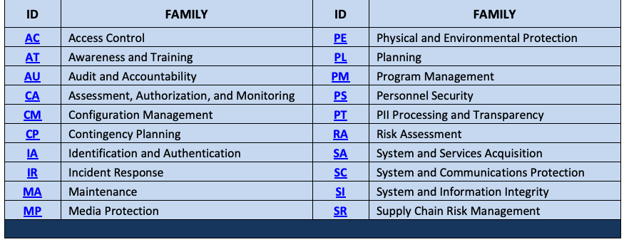
| 識別子 | ファミリー | 識別子 | ファミリー |
|---|---|---|---|
| AC | アクセス制御 | PE | 物理的及び環境的保護 |
| AT | 意識向上及び訓練 | PL | 計画 |
| AU | 監査及び責任追跡性 | PM | プログラム管理 |
| CA | 評価、認可及び監視 | PS | 人的セキュリティ |
| CM | 構成管理 | PT | 個人識別可能情報（PII）の処理及び透明性 |
| CP | 緊急時対応計画 | RA | リスク評価 |
| IA | 識別及び認証 | SA | システム及びサービスの取得 |
| IR | インシデント対応 | SC | システム及び通信の保護 |
| MA | 保守 | SI | システム及び情報の完全性 |
| MP | 媒体保護 | SR | サプライチェーンリスク管理 |
Families of controls contain base controls and control enhancements, which are directly related to their base controls. Control enhancements either add functionality or specificity to a base control or increase the strength of a base control. Control enhancements are used in systems and environments of operation that require greater protection than the protection provided by the base control. The need for organizations to select and implement control enhancements is due to the potential adverse organizational or individual impacts or when organizations require additions to the base control functionality or assurance based on assessments of risk. The selection and implementation of control enhancements always requires the selection and implementation of the base control.
管理策ファミリーには基本管理策と、その基本管理策に直接関連する管理策強化が含まれる。管理策強化は、基本管理策に機能または具体性を追加するか、基本管理策の強度を高める。基本管理策による保護を上回る保護が必要なシステムおよび運用環境で、管理策強化を使用する。管理策強化を選択・実装する必要性は、組織または個人に対する潜在的な悪影響がある場合、あるいはリスク評価に基づき基本管理策の機能または保証を追加する必要がある場合に生じる。管理策強化を選択・実装する際は、常に対応する基本管理策も選択・実装しなければならない。
The families are arranged in alphabetical order, while the controls and control enhancements within each family are in numerical order. The order of the families, controls, and control enhancements does not imply any logical progression, level of prioritization or importance, or order in which the controls or control enhancements are to be implemented. Rather, it reflects the order in which they were included in the catalog. Control designations are not re-used when a control is withdrawn.
ファミリーはアルファベット順に配置され、各ファミリー内の管理策と管理策強化は番号順に配置されている。ファミリー、管理策、および管理策強化の順序は、論理的な進行、優先順位や重要度の水準、または実装すべき順序を示すものではない。これは単にカタログに収録された順序を反映する。管理策が撤回された場合、その管理策の指定は再利用しない。
Security and privacy controls have the following structure: a base control section, a discussion section, a related controls section, a control enhancements section, and a references section. Figure 1 illustrates the structure of a typical control.
セキュリティおよびプライバシー管理策は、基本管理策の節、解説の節、関連管理策の節、管理策強化の節、および参考文献の節で構成される。図1に一般的な管理策の構造を示す。
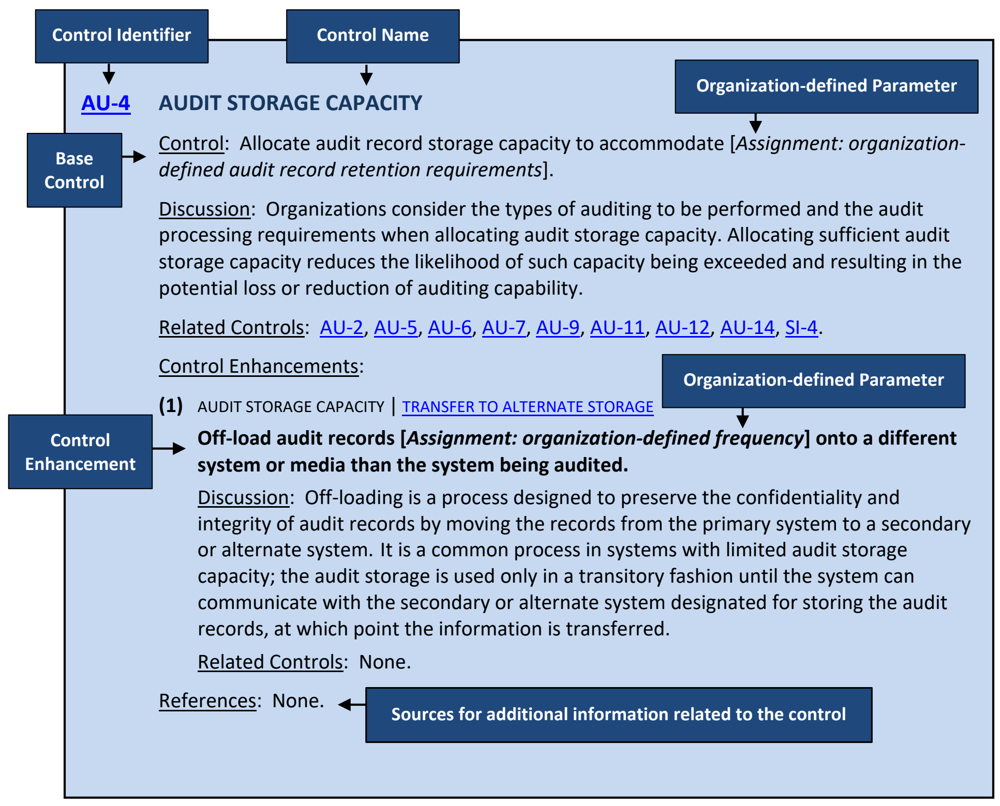
図1は、AU-4「監査用ストレージ容量」を例に、管理策ID、管理策名、基本管理策、管理策の拡張、組織定義パラメーター、追加情報の出典の位置を矢印で示す。監査記録の保持要件と代替ストレージへの転送頻度が、2つの組織定義パラメーターに当たる。後続のAU-4の対訳は、この図に示された例の内容である。
AU-4 AUDIT STORAGE CAPACITY
AU-4 監査用ストレージ容量
Control: Allocate audit record storage capacity to accommodate [Assignment: organization-defined audit record retention requirements].
管理策：[割当て：組織が定義する監査記録の保持要件]を満たすよう、監査記録用のストレージ容量を割り当てる。
Discussion: Organizations consider the types of auditing to be performed and the audit processing requirements when allocating audit storage capacity. Allocating sufficient audit storage capacity reduces the likelihood of such capacity being exceeded and resulting in the potential loss or reduction of auditing capability.
考察：組織は、監査用ストレージ容量を割り当てる際に、実施する監査の種類と監査処理の要件を考慮する。十分な監査用ストレージ容量を割り当てることで、容量を超過し、監査能力の喪失または低下につながる可能性を低減する。
Related Controls: AU-2, AU-5, AU-6, AU-7, AU-9, AU-11, AU-12, AU-14, SI-4.
関連管理策：AU-2、AU-5、AU-6、AU-7、AU-9、AU-11、AU-12、AU-14、SI-4。
Control Enhancements:
管理策の拡張：
(1) AUDIT STORAGE CAPACITY | TRANSFER TO ALTERNATE STORAGE Off-load audit records [Assignment: organization-defined frequency] onto a different system or media than the system being audited.
(1) 監査用ストレージ容量 | 代替ストレージへの転送 [割当て：組織が定義する頻度]で、監査対象のシステムとは異なるシステムまたは媒体へ監査記録を移す。
Discussion: Off-loading is a process designed to preserve the confidentiality and integrity of audit records by moving the records from the primary system to a secondary or alternate system. It is a common process in systems with limited audit storage capacity; the audit storage is used only in a transitory fashion until the system can communicate with the secondary or alternate system designated for storing the audit records, at which point the information is transferred.
考察：オフロードは、主システムから副システムまたは代替システムへ監査記録を移動することで、記録の機密性と完全性を維持するためのプロセスである。これは監査用ストレージ容量が限られたシステムで一般的に用いられる。監査用ストレージは、監査記録の保存先として指定された副システムまたは代替システムと通信できるようになるまでの一時的な用途にのみ使用され、通信可能になった時点で情報が転送される。
Related Controls: None.
関連管理策：なし。
References: None.
参考文献：なし。
FIGURE 1: CONTROL STRUCTURE
図1：管理策の構造
The control section prescribes a security or privacy capability to be implemented. Security and privacy capabilities are achieved by the activities or actions, automated or nonautomated, carried out by information systems and organizations. Organizations designate the responsibility for control development, implementation, assessment, and monitoring. Organizations have the flexibility to implement the controls selected in whatever manner that satisfies organizational mission or business needs consistent with law, regulation, and policy.
管理策の節では、実装すべきセキュリティまたはプライバシー能力を規定する。セキュリティおよびプライバシー能力は、情報システムおよび組織が実施する自動化または非自動化の活動や行動によって実現される。組織は、管理策の策定、実装、評価および監視の責任を指定する。組織は、法律、規制および方針に整合する範囲で、組織のミッションまたは業務上のニーズを満たす任意の方法により、選択した管理策を柔軟に実装できる。
The discussion section provides additional information about a control. Organizations can use the information as needed when developing, tailoring, implementing, assessing, or monitoring controls. The information provides important considerations for implementing controls based on mission or business requirements, operational environments, or assessments of risk. The additional information can also explain the purpose of controls and often includes examples. Control enhancements may also include a separate discussion section when the discussion information is applicable only to a specific control enhancement.
解説の節は、管理策に関する追加情報を提供する。組織は、管理策の策定、調整、実装、評価または監視に必要に応じてこの情報を使用できる。この情報は、ミッションまたは業務要件、運用環境、あるいはリスク評価に基づく管理策の実装に関する重要な考慮事項を示す。また、管理策の目的を説明し、例を含むことも多い。解説情報が特定の管理策強化にのみ該当する場合、管理策強化に個別の解説節が設けられることもある。
The related controls section provides a list of controls from the control catalog that impact or support the implementation of a particular control or control enhancement, address a related security or privacy capability, or are referenced in the discussion section. Control enhancements are inherently related to their base control. Thus, related controls that are referenced in the base control are not repeated in the control enhancements. However, there may be related controls identified for control enhancements that are not referenced in the base control (i.e., the related control is only associated with the specific control enhancement). Controls may also be related to enhancements of other base controls. When a control is designated as a related control, a corresponding designation is made on that control in its source location in the catalog to illustrate the two-way relationship. Additionally, each control in a given family is inherently related to the -1 control (Policy and Procedures) in the same family. Therefore, the relationship between the -1 control and the other controls in the same family is not specified in the related controls section for each control.
関連管理策の節には、特定の管理策または管理策強化の実装に影響を与える、またはそれを支援する管理策カタログ内の管理策、関連するセキュリティまたはプライバシー能力を扱う管理策、あるいは解説の節で参照される管理策が列挙される。管理策強化は、その基本管理策と本質的に関連している。そのため、基本管理策で参照されている関連管理策は、管理策強化では繰り返し記載しない。ただし、基本管理策では参照されず、特定の管理策強化のみに関連する管理策が、管理策強化に記載される場合がある。管理策は、他の基本管理策の強化策にも関連することがある。ある管理策が関連管理策として指定される場合、双方向の関係を示すため、その管理策のカタログ上の元の位置にも対応する指定が記載される。また、同一ファミリー内の各管理策は、そのファミリーの-1管理策（方針および手順）と本質的に関連している。したがって、各管理策の関連管理策の節では、-1管理策と同じファミリー内の他の管理策との関係を明記しない。
The control enhancements section provides statements of security and privacy capability that augment a base control. The control enhancements are numbered sequentially within each control so that the enhancements can be easily identified when selected to supplement the base control. Each control enhancement has a short subtitle to indicate the intended function or capability provided by the enhancement. In the AU-4 example, if the control enhancement is selected, the control designation becomes AU-4(1). The numerical designation of a control enhancement is used only to identify that enhancement within the control. The designation is not indicative of the strength of the control enhancement, level of protection, priority, degree of importance, or any hierarchical relationship among the enhancements. Control enhancements are not intended to be selected independently. That is, if a control enhancement is selected, then the corresponding base control is also selected and implemented.
管理策強化の節には、基本管理策を補強するセキュリティおよびプライバシー能力の記述が含まれる。基本管理策を補完するために選択したとき容易に識別できるよう、各管理策内で管理策強化に連番を付す。各管理策強化には、その意図する機能または能力を示す短い副題がある。AU-4の例では、管理策強化を選択すると管理策指定はAU-4(1)となる。管理策強化の番号指定は、その管理策内で当該強化を識別するためだけに使用される。この指定は、管理策強化の強度、保護水準、優先順位、重要度、または強化間の階層関係を示すものではない。管理策強化を単独で選択することは想定されていない。すなわち、管理策強化を選択した場合、対応する基本管理策も選択して実装する。
The references section includes a list of applicable laws, policies, standards, guidelines, websites, and other useful references that are relevant to a specific control or control enhancement.26 The references section also includes hyperlinks to publications for obtaining additional information for control development, implementation, assessment, and monitoring.
参考文献の節には、特定の管理策または管理策の拡張に関連する、適用される法律、方針、標準、指針、ウェブサイト、その他の有用な参考資料の一覧が含まれる。26 また、管理策の策定、実装、評価、モニタリングに関する追加情報を得るための刊行物へのハイパーリンクも含まれる。
For some controls, additional flexibility is provided by allowing organizations to define specific values for designated parameters associated with the controls. Flexibility is achieved as part of a tailoring process using assignment and selection operations embedded within the controls and enclosed by brackets. The assignment and selection operations give organizations the capability to customize controls based on organizational security and privacy requirements. In contrast to assignment operations which allow complete flexibility in the designation of parameter values, selection operations narrow the range of potential values by providing a specific list of items from which organizations choose.
一部の管理策では、管理策に関連付けられた指定パラメーターについて、組織が具体的な値を定められるため、追加の柔軟性が提供される。この柔軟性は、角括弧で囲まれた割当ておよび選択の操作を管理策内に組み込む調整プロセスによって実現される。これらの操作により、組織のセキュリティおよびプライバシー要件に基づいて管理策をカスタマイズできる。パラメーター値の指定に完全な柔軟性を認める割当て操作とは異なり、選択操作は、組織が選ぶ項目の具体的なリストを提示することで、取り得る値の範囲を狭める。
Determination of the organization-defined parameters can evolve from many sources, including laws, executive orders, directives, regulations, policies, standards, guidance, and mission or business needs. Organizational risk assessments and risk tolerance are also important factors in determining the values for control parameters. Once specified by the organization, the values for the assignment and selection operations become a part of the control. Organization-defined control parameters used in the base controls also apply to the control enhancements associated with those controls. The implementation of the control is assessed for effectiveness against the completed control statement.
組織定義パラメーターの決定は、法律、大統領令、指令、規制、方針、標準、ガイダンス、およびミッションまたは業務上のニーズなど、多くの情報源から導かれる。組織のリスク評価とリスク許容度も、管理策パラメーターの値を決定する重要な要素である。組織が割当ておよび選択操作の値を指定すると、それらの値は管理策の一部となる。基本管理策で使用する組織定義の管理策パラメーターは、その管理策に関連する管理策強化にも適用される。管理策の実装は、完成した管理策記述に照らして有効性が評価される。
In addition to assignment and selection operations embedded in a control, additional flexibility is achieved through iteration and refinement actions. Iteration allows organizations to use a control multiple times with different assignment and selection values, perhaps being applied in different situations or when implementing multiple policies. For example, an organization may have multiple systems implementing a control but with different parameters established to address different risks for each system and environment of operation. Refinement is the process of providing additional implementation detail to a control. Refinement can also be used to narrow the scope of a control in conjunction with iteration to cover all applicable scopes (e.g., applying different authentication mechanisms to different system interfaces). The combination of assignment and selection operations and iteration and refinement actions when applied to controls provides the needed flexibility to allow organizations to satisfy a broad base of security and privacy requirements at the organization, mission and business process, and system levels of implementation.
管理策に組み込まれた割当ておよび選択操作に加え、反復および詳細化によっても柔軟性が得られる。反復により、組織は異なる割当て値および選択値を用いて同じ管理策を複数回使用できる。異なる状況に適用する場合や複数の方針を実装する場合などがある。例えば、組織が複数のシステムで管理策を実装し、各システムおよび運用環境の異なるリスクに対応するため異なるパラメーターを設定する場合がある。詳細化とは、管理策に追加の実装詳細を与えるプロセスである。反復と併せて詳細化を使用し、適用対象となるすべての範囲を網羅するよう管理策の適用範囲を狭めることもできる（例：システムインターフェースごとに異なる認証メカニズムを適用する）。管理策に割当て・選択操作と反復・詳細化を組み合わせることで、組織、ミッションおよび業務プロセス、ならびにシステムの各実装レベルで幅広いセキュリティおよびプライバシー要件を満たすために必要な柔軟性が得られる。
SECURITY AS A DESIGN PROBLEM
設計上の問題としてのセキュリティ
“Providing satisfactory security controls in a computer system is….a system design problem. A combination of hardware, software, communications, physical, personnel and administrative-procedural safeguards is required for comprehensive security….software safeguards alone are not sufficient.”
「コンピューターシステムに十分なセキュリティ管理策を備えることは……システム設計の問題である。包括的なセキュリティには、ハードウェア、ソフトウェア、通信、物理面、人員面、および管理上の手続きに関する保護措置の組み合わせが必要である……ソフトウェアによる保護措置だけでは十分ではない。」
-- The Ware Report Defense Science Board Task Force on Computer Security, 1970
――『The Ware Report』、国防科学委員会コンピューターセキュリティタスクフォース、1970年
2.3 CONTROL IMPLEMENTATION APPROACHES
2.3 管理策の実装アプローチ
There are three approaches to implementing the controls in Chapter Three: (1) a common (inheritable) control implementation approach, (2) a system-specific control implementation approach, and (3) a hybrid control implementation approach. The control implementation approaches define the scope of applicability for the control, the shared nature or inheritability of the control, and the responsibility for control development, implementation, assessment, and authorization. Each control implementation approach has a specific objective and focus that helps organizations select the appropriate controls, implement the controls in an effective manner, and satisfy security and privacy requirements. A specific control implementation approach may achieve cost benefits by leveraging security and privacy capabilities across multiple systems and environments of operation.27
第三章の管理策を実装するアプローチは三つある。(1) 共通（継承可能）管理策の実装アプローチ、(2) システム固有の管理策実装アプローチ、(3) ハイブリッド管理策実装アプローチである。管理策実装アプローチは、管理策の適用範囲、管理策の共有または継承可能性、および管理策の開発、実装、評価、認可に関する責任を定める。各管理策実装アプローチには固有の目的と重点があり、組織が適切な管理策を選択し、効果的に実装して、セキュリティおよびプライバシー要件を満たすのに役立つ。特定の管理策実装アプローチは、複数のシステムおよび運用環境にわたってセキュリティおよびプライバシー能力を活用することで、コスト上の利点をもたらす場合がある。27
Common controls are controls whose implementation results in a capability that is inheritable by multiple systems or programs. A control is deemed inheritable when the system or program receives protection from the implemented control, but the control is developed, implemented, assessed, authorized, and monitored by an internal or external entity other than the entity responsible for the system or program. The security and privacy capabilities provided by common controls can be inherited from many sources, including mission or business lines, organizations, enclaves, environments of operation, sites, or other systems or programs. Implementing controls as common controls can introduce the risk of a single point of failure.
共通管理策とは、その実装によって複数のシステムまたはプログラムが継承できる能力が得られる管理策である。システムまたはプログラムが実装済み管理策から保護を受ける一方で、当該システムまたはプログラムの責任主体とは別の内部または外部の主体が管理策を開発、実装、評価、認可および監視する場合、その管理策は継承可能とみなされる。共通管理策が提供するセキュリティおよびプライバシー能力は、ミッションまたは業務分野、組織、エンクレーブ、運用環境、サイト、その他のシステムまたはプログラムなど、多くの供給元から継承できる。管理策を共通管理策として実装すると、単一障害点のリスクが生じる場合がある。
Many of the controls needed to protect organizational information systems—including many physical and environmental protection controls, personnel security controls, and incident response controls—are inheritable and, therefore, are good candidates for common control status. Common controls can also include technology-based controls, such as identification and authentication controls, boundary protection controls, audit and accountability controls, and access controls. The cost of development, implementation, assessment, authorization, and monitoring can be amortized across multiple systems, organizational elements, and programs using the common control implementation approach.
組織の情報システムを保護するために必要な管理策の多く—物理的・環境的保護、人的セキュリティおよびインシデント対応に関する多数の管理策を含む—は継承可能であり、したがって共通管理策に適している。共通管理策には、識別・認証、境界保護、監査・説明責任およびアクセス制御などの技術ベースの管理策も含められる。共通管理策実装アプローチを使うと、開発、実装、評価、認可および監視のコストを複数のシステム、組織要素およびプログラムにわたって按分できる。
Controls not implemented as common controls are implemented as system-specific or hybrid controls. System-specific controls are the primary responsibility of the system owner and the authorizing official for a given system. Implementing system-specific controls can introduce risk if the control implementations are not interoperable with common controls. Organizations can implement a control as hybrid if one part of the control is common (inheritable) and the other part is system-specific. For example, an organization may implement control CP-2 using a predefined template for the contingency plan for all organizational information systems with individual system owners tailoring the plan for system-specific uses, where appropriate. The division of a hybrid control into its common (inheritable) and system-specific parts may vary by organization, depending on the types of information technologies employed, the approach used by the organization to manage its controls, and assignment of responsibilities. When a control is implemented as a hybrid control, the common control provider is responsible for ensuring the implementation, assessment, and monitoring of the common part of the hybrid control, and the system owner is responsible for ensuring the implementation, assessment, and monitoring of the system-specific part of the hybrid control. Implementing controls as hybrid controls can introduce risk if the responsibility for the implementation and ongoing management of the common and system-specific parts of the controls is unclear.
共通管理策として実装されない管理策は、システム固有またはハイブリッド管理策として実装される。システム固有管理策は、対象システムのシステム所有者および認可担当者が主たる責任を負う。システム固有管理策の実装が共通管理策と相互運用できない場合、リスクが生じることがある。管理策の一部が共通（継承可能）で、他の部分がシステム固有である場合、組織はその管理策をハイブリッドとして実装できる。例えば、組織は、すべての組織情報システムに対して緊急時対応計画の事前定義済みテンプレートを用いてCP-2管理策を実装し、必要に応じて各システム所有者がシステム固有の用途に合わせて計画を調整することができる。ハイブリッド管理策を共通（継承可能）部分とシステム固有部分に分ける方法は、採用技術、組織の管理策管理方法および責任の割当てに応じて組織ごとに異なる場合がある。管理策をハイブリッドとして実装する場合、共通管理策提供者はハイブリッド管理策の共通部分の実装、評価および監視を確保する責任を負い、システム所有者はシステム固有部分の実装、評価および監視を確保する責任を負う。共通部分とシステム固有部分の実装および継続的な管理に関する責任が不明確な場合、ハイブリッド管理策の実装によりリスクが生じることがある。
The determination as to the appropriate control implementation approach (i.e., common, hybrid, or system-specific) is context-dependent. The control implementation approach cannot be determined to be common, hybrid, or system-specific simply based on the language of the control. Identifying the control implementation approach can result in significant savings to organizations in implementation and assessment costs and a more consistent application of the controls organization-wide. Typically, the identification of the control implementation approach is straightforward. However, the implementation takes significant planning and coordination.
適切な管理策実装アプローチ（共通、ハイブリッドまたはシステム固有）の決定は、状況に依存する。管理策の文言だけから、実装アプローチが共通、ハイブリッドまたはシステム固有と決めることはできない。管理策実装アプローチを特定することで、組織全体で管理策をより一貫して適用でき、実装および評価コストを大幅に削減できる場合がある。通常、管理策実装アプローチの特定は容易である。しかし、その実施には十分な計画と調整が必要となる。
Planning for the implementation approach of a control (i.e., common, hybrid, or system-specific) is best carried out early in the system development life cycle and coordinated with the entities providing the control [SP 800-37]. Similarly, if a control is to be inheritable, coordination is required with the inheriting entity to ensure that the control meets its needs. This is especially important given the nature of control parameters. An inheriting entity cannot assume that controls are the same and mitigate the appropriate risk to the system just because the control identifiers (e.g., AC-1) are the same. It is essential to examine the control parameters (e.g., assignment or selection operations) when determining if a common control is adequate to mitigate system-specific risks.
管理策の実装アプローチ（共通、ハイブリッドまたはシステム固有）の計画は、システム開発ライフサイクルの早期に行い、管理策を提供する主体と調整するのが最善である [SP 800-37]。同様に、管理策を継承可能とする場合は、継承する主体と調整し、そのニーズを満たすことを確実にする必要がある。これは管理策パラメーターの性質を考えると特に重要である。継承する主体は、管理策識別子（例：AC-1）が同じというだけで、管理策が同一でありシステムに適切なリスク低減をもたらすと想定できない。共通管理策がシステム固有のリスクを十分に低減するか判断するには、管理策パラメーター（例：割当てまたは選択操作）を調べることが不可欠である。
2.4 SECURITY AND PRIVACY CONTROLS
2.4 セキュリティおよびプライバシー管理策
The selection and implementation of security and privacy controls reflect the objectives of information security and privacy programs and how those programs manage their respective risks. Depending on the circumstances, these objectives and risks can be independent or overlapping. Federal information security programs are responsible for protecting information and information systems from unauthorized access, use, disclosure, disruption, modification, or destruction (i.e., unauthorized activity or system behavior) to provide confidentiality, integrity, and availability. Those programs are also responsible for managing security risk and for ensuring compliance with applicable security requirements. Federal privacy programs are responsible for managing risks to individuals associated with the creation, collection, use, processing, storage, maintenance, dissemination, disclosure, or disposal (collectively referred to as “processing”) of PII and for ensuring compliance with applicable privacy requirements.28 When a system processes PII, the information security program and the privacy program have a shared responsibility for managing the security risks for the PII in the system. Due to this overlap in responsibilities, the controls that organizations select to manage these security risks will generally be the same regardless of their designation as security or privacy controls in control baselines or program or system plans.
セキュリティ及びプライバシー管理策の選択及び実装は、情報セキュリティプログラム及びプライバシープログラムの目的と、それらのプログラムがそれぞれのリスクをどのように管理するかを反映する。状況に応じて、これらの目的及びリスクは、独立していることも重複していることもある。連邦政府の情報セキュリティプログラムは、機密性、完全性及び可用性を提供するために、情報及び情報システムを、認可されていないアクセス、利用、開示、妨害、変更又は破壊（すなわち、認可されていない活動又はシステムの挙動）から保護する責任を負う。これらのプログラムはまた、セキュリティリスクを管理し、適用されるセキュリティ要求事項の遵守を確実にする責任も負う。連邦政府のプライバシープログラムは、PIIの作成、収集、利用、処理、保存、維持、配布、開示又は廃棄（総称して「処理」という）に伴う個人へのリスクを管理し、適用されるプライバシー要求事項の遵守を確実にする責任を負う。28システムがPIIを処理する場合、情報セキュリティプログラムとプライバシープログラムは、システム内のPIIに関するセキュリティリスクを管理する責任を共有する。この責任の重複のため、これらのセキュリティリスクを管理するために組織が選択する管理策は、管理策ベースライン又はプログラム計画若しくはシステム計画においてセキュリティ管理策とプライバシー管理策のいずれに指定されているかにかかわらず、一般に同じものとなる。
There also may be circumstances in which the selection and/or implementation of the control or control enhancement affects the ability of a program to achieve its objectives and manage its respective risks. The control discussion section may highlight specific security and/or privacy considerations so that organizations can take these considerations into account as they determine the most effective method to implement the control. However, these considerations are not exhaustive.
管理策または管理策強化の選択および／または実装が、プログラムの目的達成やそれぞれのリスク管理能力に影響する状況もあり得る。管理策の解説の節では、組織が最も効果的な実装方法を決定する際に考慮できるよう、特定のセキュリティおよび／またはプライバシー上の考慮事項を強調する場合がある。ただし、これらの考慮事項は網羅的ではない。
For example, an organization might select AU-3 (Content of Audit Records) to support monitoring for unauthorized access to an information asset that does not include PII. Since the potential loss of confidentiality of the information asset does not affect privacy, security objectives are the primary driver for the selection of the control. However, the implementation of the control with respect to monitoring for unauthorized access could involve the processing of PII which may result in privacy risks and affect privacy program objectives. The discussion section in AU-3 includes privacy risk considerations so that organizations can take those considerations into account as they determine the best way to implement the control. Additionally, the control enhancement AU-3(3) (Limit Personally Identifiable Information Elements) could be selected to support managing these privacy risks.
例えば、PIIを含まない情報資産への不正アクセスの監視を支援するため、組織はAU-3（監査記録の内容）を選択することがある。情報資産の機密性が失われる可能性はプライバシーに影響しないため、この管理策の選択は主としてセキュリティ上の目的によって決まる。しかし、不正アクセス監視に関する管理策の実装にPIIの処理が伴い、プライバシーリスクが生じてプライバシー・プログラムの目的に影響する場合がある。AU-3の解説には、組織が最適な実装方法を決定する際に考慮できるプライバシーリスク上の考慮事項が含まれている。さらに、こうしたプライバシーリスク管理を支援するため、管理策強化AU-3(3)（個人識別情報要素の制限）を選択できる。
Due to permutations in the relationship between information security and privacy program objectives and risk management, there is a need for close collaboration between programs to select and implement the appropriate controls for information systems processing PII. Organizations consider how to promote and institutionalize collaboration between the two programs to ensure that the objectives of both disciplines are met and risks are appropriately managed.29
情報セキュリティプログラム及びプライバシープログラムの目的とリスク管理との関係にはさまざまな組合せがあるため、PIIを処理する情報システムに対して適切な管理策を選択し実装するには、プログラム間の緊密な協力が必要である。組織は、両分野の目的が達成され、リスクが適切に管理されることを確実にするために、2つのプログラム間の協力をどのように促進し制度化するかを検討する。29
2.5 TRUSTWORTHINESS AND ASSURANCE
2.5 信頼性および保証
The trustworthiness of systems, system components, and system services is an important part of the risk management strategies developed by organizations.30 Trustworthiness, in this context, means worthy of being trusted to fulfill whatever requirements may be needed for a component, subsystem, system, network, application, mission, business function, enterprise, or other entity.31 Trustworthiness requirements can include attributes of reliability, dependability, performance, resilience, safety, security, privacy, and survivability under a range of potential adversity in the form of disruptions, hazards, threats, and privacy risks. Effective measures of trustworthiness are meaningful only to the extent that the requirements are complete, well-defined, and can be accurately assessed.
システム、システム構成要素及びシステムサービスのトラストワージネスは、組織が策定するリスク管理戦略の重要な部分である。30この文脈においてトラストワージネスとは、コンポーネント、サブシステム、システム、ネットワーク、アプリケーション、ミッション、業務機能、エンタープライズ又はその他の実体に必要とされ得るあらゆる要求事項を満たすものとして、信頼に値することを意味する。31トラストワージネスの要求事項には、妨害、ハザード、脅威及びプライバシーリスクという形で生じ得るさまざまな逆境の下での、信頼性、ディペンダビリティ、性能、レジリエンス、セーフティ、セキュリティ、プライバシー及び生存性という属性が含まれ得る。トラストワージネスの有効な測定は、要求事項が完全で、明確に定義されており、正確に評価できる限りにおいてのみ意味を持つ。
Two fundamental concepts that affect the trustworthiness of systems are functionality and assurance. Functionality is defined in terms of the security and privacy features, functions, mechanisms, services, procedures, and architectures implemented within organizational systems and programs and the environments in which those systems and programs operate. Assurance is the measure of confidence that the system functionality is implemented correctly, operating as intended, and producing the desired outcome with respect to meeting the security and privacy requirements for the system—thus possessing the capability to accurately mediate and enforce established security and privacy policies.
システムの信頼性に影響する基本概念は、機能性と保証の二つである。機能性は、組織のシステムおよびプログラム内と、それらが運用される環境に実装されたセキュリティおよびプライバシーの特徴、機能、メカニズム、サービス、手順およびアーキテクチャによって定義される。保証とは、システム機能が正しく実装され、意図どおりに運用され、システムのセキュリティおよびプライバシー要件を満たす望ましい結果を生み出していることへの確信の尺度であり、確立されたセキュリティおよびプライバシー方針を正確に仲介し実施する能力を備えることを意味する。
In general, the task of providing meaningful assurance that a system is likely to do what is expected of it can be enhanced by techniques that simplify or narrow the analysis by, for example, increasing the discipline applied to the system architecture, software design, specifications, code style, and configuration management. Security and privacy controls address functionality and assurance. Certain controls focus primarily on functionality while other controls focus primarily on assurance. Some controls can support functionality and assurance.
一般に、システムが期待どおりに動作する可能性について意味のある保証を提供する作業は、例えばシステム・アーキテクチャ、ソフトウェア設計、仕様、コード・スタイルおよび構成管理に適用する規律を高めることにより、分析を簡素化または範囲限定する技法によって強化できる。セキュリティおよびプライバシー管理策は、機能性と保証の両方を扱う。機能性を主に重視する管理策もあれば、保証を主に重視する管理策もある。機能性と保証を支援する管理策もある。
Organizations can select assurance-related controls to define system development activities, generate evidence about the functionality and behavior of the system, and trace the evidence to the system elements that provide such functionality or exhibit such behavior. The evidence is used to obtain a degree of confidence that the system satisfies the stated security and privacy requirements while supporting the organization’s mission and business functions. Assurance-related controls are identified in the control summary tables in Appendix C.
組織は、保証に関連する管理策を選択することで、システム開発活動を定義し、システムの機能及び挙動に関する証拠を生成し、その証拠を、当該機能を提供する又は当該挙動を示すシステム要素までたどることができる。この証拠は、システムが組織のミッション及び業務機能を支援しつつ、明示されたセキュリティ及びプライバシーの要求事項を満たしているという一定の確信を得るために用いられる。保証に関連する管理策は、付録Cの管理策要約表で特定されている。
EVIDENCE OF CONTROL IMPLEMENTATION
管理策の実装の証拠
During control selection and implementation, it is important for organizations to consider the evidence (e.g., artifacts, documentation) that will be needed to support current and future control assessments. Such assessments help determine whether the controls are implemented correctly, operating as intended, and satisfying security and privacy policies—thus, providing essential information for senior leaders to make informed risk-based decisions.
管理策の選択及び実装にあたっては、現在及び将来の管理策アセスメントを支援するために必要となる証拠（例えば、成果物、文書）を組織が考慮することが重要である。そのようなアセスメントは、管理策が正しく実装され、意図したとおりに運用され、セキュリティ及びプライバシーの方針を満たしているかどうかを判断する助けとなり、それによって、上級指導者がリスクに基づく十分な情報を得た上での意思決定を行うために不可欠な情報を提供する。
CHAPTER THREE
第三章
THE CONTROLS
管理策
SECURITY AND PRIVACY CONTROLS AND CONTROL ENHANCEMENTS
セキュリティおよびプライバシー管理策と管理策の拡張
This catalog of security and privacy controls provides protective measures for systems, organizations, and individuals.32 The controls are designed to facilitate risk management and compliance with applicable federal laws, executive orders, directives, regulations, policies, and standards. With few exceptions, the security and privacy controls in the catalog are policy-, technology-, and sector-neutral, meaning that the controls focus on the fundamental measures necessary to protect information and the privacy of individuals across the information life cycle. While the security and privacy controls are largely policy-, technology-, and sector-neutral, that does not imply that the controls are policy-, technology-, and sector-unaware. Understanding policies, technologies, and sectors is necessary so that the controls are relevant when they are implemented. Employing a policy-, technology-, and sector-neutral control catalog has many benefits. It encourages organizations to:
このセキュリティおよびプライバシー管理策カタログは、システム、組織および個人を保護する措置を提供する。32管理策は、適用される連邦法、大統領令、指令、規則、方針および規格へのリスク管理と準拠を促進するよう設計されている。わずかな例外を除き、カタログのセキュリティおよびプライバシー管理策は、方針、技術および分野に中立である。つまり、情報ライフサイクル全体にわたる情報と個人のプライバシーを保護するために必要な基本的措置に焦点を当てている。管理策が方針、技術および分野に中立であることは、方針、技術および分野を考慮しないことを意味しない。管理策を実装時に適切なものとするには、方針、技術および分野を理解する必要がある。方針、技術および分野に中立な管理策カタログの採用には多くの利点がある。これにより組織は次のことを促される。
•Focus on the security and privacy functions and capabilities required for mission and business success and the protection of information and the privacy of individuals, irrespective of the technologies that are employed in organizational systems;
•採用技術にかかわらず、ミッションおよび業務の成功に必要なセキュリティおよびプライバシー機能・能力と、情報および個人のプライバシーの保護に注力する。
•Analyze each security and privacy control for its applicability to specific technologies, environments of operation, mission and business functions, and communities of interest; and
•各セキュリティおよびプライバシー管理策について、特定の技術、運用環境、ミッションおよび業務機能、関心コミュニティへの適用可能性を分析する；ならびに
•Specify security and privacy policies as part of the tailoring process for controls that have variable parameters.
•可変パラメーターを持つ管理策について、調整プロセスの一環としてセキュリティおよびプライバシー方針を指定する。
In the few cases where specific technologies are referenced in controls, organizations are cautioned that the need to manage security and privacy risks may go beyond the requirements in a single control associated with a technology. The additional needed protection measures are obtained from the other controls in the catalog. Federal Information Processing Standards, Special Publications, and Interagency/Internal Reports provide guidance on selecting security and privacy controls that reduce risk for specific technologies and sector-specific applications, including smart grid, cloud, healthcare, mobile, industrial control systems, and Internet of Things (IoT) devices.33 NIST publications are cited as references as applicable to specific controls in Sections 3.1 through 3.20.
管理策で特定技術に言及する少数のケースでは、セキュリティおよびプライバシーリスクを管理する必要性が、その技術に関連付けられた単一の管理策の要件を超える場合があることに留意する。追加で必要となる保護措置はカタログ内の他の管理策から得られる。Federal Information Processing Standards、Special PublicationsおよびInteragency/Internal Reportsは、スマートグリッド、クラウド、医療、モバイル、産業用制御システム、Internet of Things (IoT) デバイスなど、特定技術および分野固有の用途においてリスクを低減するセキュリティおよびプライバシー管理策の選択に関する指針を示す。33 NIST刊行物は、第3.1節から第3.20節で個々の管理策に該当する参照文献として引用される。
Security and privacy controls in the catalog are expected to change over time as controls are withdrawn, revised, and added. To maintain stability in security and privacy plans, controls are not renumbered each time a control is withdrawn. Rather, notations of the controls that have been withdrawn are maintained in the control catalog for historical purposes. Controls may be withdrawn for a variety of reasons, including when the function or capability provided by the control has been incorporated into another control, the control is redundant to an existing control, or the control is deemed to be no longer necessary or effective.
管理策カタログのセキュリティおよびプライバシー管理策は、管理策の撤回、改訂および追加に伴って時間とともに変更されることが見込まれる。セキュリティおよびプライバシー計画の安定性を保つため、管理策が撤回されるたびに番号を振り直すことはしない。代わりに、撤回された管理策の注記を履歴情報としてカタログに残す。管理策が撤回される理由には、その機能または能力が別の管理策に統合された場合、既存管理策と重複する場合、または不要もしくは有効でなくなったと判断された場合などがある。
New controls are developed on a regular basis using threat and vulnerability information and information on the tactics, techniques, and procedures used by adversaries. In addition, new controls are developed based on a better understanding of how to mitigate information security risks to systems and organizations and risks to the privacy of individuals arising from information processing. Finally, new controls are developed based on new or changing requirements in laws, executive orders, regulations, policies, standards, or guidelines. Proposed modifications to the controls are carefully analyzed during each revision cycle, considering the need for stability of controls and the need to be responsive to changing technologies, threats, vulnerabilities, types of attack, and processing methods. The objective is to adjust the level of information security and privacy over time to meet the needs of organizations and individuals.
新たな管理策は、脅威および脆弱性に関する情報と、敵対者が用いる戦術、技法、および手順に関する情報を用いて定期的に策定される。また、システムおよび組織の情報セキュリティリスクと、情報処理から生じる個人のプライバシーリスクを軽減する方法について理解が深まることに基づいて、新たな管理策が策定される。さらに、法律、大統領令、規制、方針、標準、またはガイドラインにおける新規または変更された要件に基づいて、新たな管理策が策定される。改訂サイクルごとに、管理策の安定性と、変化する技術、脅威、脆弱性、攻撃の種類、および処理方法に対応する必要性を考慮して、管理策の変更案を慎重に分析する。その目的は、組織および個人のニーズを満たすため、情報セキュリティおよびプライバシーの水準を時間とともに調整することである。
3.1 ACCESS CONTROL
3.1 アクセス制御
Quick link to Access Control Summary Table
アクセス制御の概要表へのクイックリンク
AC-1 POLICY AND PROCEDURES
AC-1 方針および手順
Control:
管理策：
a. Develop, document, and disseminate to [Assignment: organization-defined personnel or roles]:
a. [割当て：組織が定義する人員または役割]に対し、次を策定し、文書化し、周知する：
•1. [Selection (one or more): Organization-level; Mission/business process-level; System-level] access control policy that:
•1. 次の事項を満たす、[選択（1つ以上）：組織レベル；ミッション／業務プロセスレベル；システムレベル]のアクセス制御方針：
(a) Addresses purpose, scope, roles, responsibilities, management commitment, coordination among organizational entities, and compliance; and
(a) 目的、適用範囲、役割、責任、経営陣の関与、組織エンティティ間の調整、およびコンプライアンスを扱う；ならびに
(b) Is consistent with applicable laws, executive orders, directives, regulations, policies, standards, and guidelines; and
(b) 適用される法律、大統領令、指令、規則、方針、標準、およびガイドラインと整合する；ならびに
•2. Procedures to facilitate the implementation of the access control policy and the associated access controls;
•2. アクセス制御方針及び関連するアクセス制御の実装を促進するための手順；
•b. Designate an [Assignment: organization-defined official] to manage the development, documentation, and dissemination of the access control policy and procedures; and
•b. アクセス制御の方針及び手順の策定、文書化及び配布を管理する[割当て：組織が定義する職員]を指名する；及び
c. Review and update the current access control:
c. 現行のアクセス制御の次の項目をレビューし、更新する：
1.Policy [Assignment: organization-defined frequency] and following [Assignment: organization-defined events]; and
1.方針：[割当て：組織が定義する頻度]で、かつ[割当て：組織が定義する事象]の発生後；ならびに
2.Procedures [Assignment: organization-defined frequency] and following [Assignment: organization-defined events].
2.手順：[割当て：組織が定義する頻度]で、かつ[割当て：組織が定義する事象]の発生後。
Discussion: Access control policy and procedures address the controls in the AC family that are implemented within systems and organizations. The risk management strategy is an important factor in establishing such policies and procedures. Policies and procedures contribute to security and privacy assurance. Therefore, it is important that security and privacy programs collaborate on the development of access control policy and procedures. Security and privacy program policies and procedures at the organization level are preferable, in general, and may obviate the need for mission- or system-specific policies and procedures. The policy can be included as part of the general security and privacy policy or be represented by multiple policies reflecting the complex nature of organizations. Procedures can be established for security and privacy programs, for mission or business processes, and for systems, if needed. Procedures describe how the policies or controls are implemented and can be directed at the individual or role that is the object of the procedure. Procedures can be documented in system security and privacy plans or in one or more separate documents. Events that may precipitate an update to access control policy and procedures include assessment or audit findings, security incidents or breaches, or changes in laws, executive orders, directives, regulations, policies, standards, and guidelines. Simply restating controls does not constitute an organizational policy or procedure.
考察：アクセス制御方針および手順は、システムおよび組織内に実装されるACファミリーの管理策を扱う。リスク管理戦略は、このような方針および手順を定めるうえで重要な要素である。方針および手順は、セキュリティおよびプライバシーの保証に寄与する。したがって、セキュリティプログラムとプライバシープログラムがアクセス制御方針および手順の策定で連携することが重要である。一般に、組織レベルのセキュリティおよびプライバシープログラム方針・手順が望ましく、任務またはシステム固有の方針・手順が不要となる場合もある。方針は、一般的なセキュリティおよびプライバシー方針の一部として含めることも、組織の複雑な性質を反映した複数の方針で表すこともできる。必要に応じて、セキュリティおよびプライバシープログラム、任務または業務プロセス、ならびにシステム向けの手順を定めることができる。手順は、方針または管理策の実装方法を記述し、手順の対象となる個人または役割に向けて定めることができる。手順は、システムのセキュリティおよびプライバシー計画、または一つ以上の独立した文書に記録できる。アクセス制御方針および手順の更新を促す事象には、評価または監査の指摘事項、セキュリティインシデントまたは侵害、あるいは法律、大統領令、指令、規制、方針、標準、およびガイドラインの変更が含まれる場合がある。管理策を単に言い換えるだけでは、組織の方針または手順とはならない。
Related Controls: IA-1, PM-9, PM-24, PS-8, SI-12.
関連管理策：IA-1、PM-9、PM-24、PS-8、SI-12。
Control Enhancements: None.
管理策の拡張：なし。
References: [OMB A-130], [SP 800-12], [SP 800-30], [SP 800-39], [SP 800-100], [IR 7874].
参考文献：[OMB A-130]、[SP 800-12]、[SP 800-30]、[SP 800-39]、[SP 800-100]、[IR 7874]。
AC-2 ACCOUNT MANAGEMENT
AC-2 アカウント管理
Control:
管理策：
•a. Define and document the types of accounts allowed and specifically prohibited for use within the system;
•a. システム内での使用を許可するアカウントの種類及び明確に禁止するアカウントの種類を定義し、文書化する；
•b. Assign account managers;
•b. アカウント管理者を割り当てる；
•c. Require [Assignment: organization-defined prerequisites and criteria] for group and role membership;
•c. グループ及び役割のメンバーシップについて[割当て：組織が定義する前提条件及び基準]を要求する；
d. Specify:
d. 次の事項を明示する：
1.Authorized users of the system;
1.システムの認可済みユーザー；
2.Group and role membership; and
2.グループおよび役割への所属；ならびに
•3. Access authorizations (i.e., privileges) and [Assignment: organization-defined attributes (as required)] for each account;
•3. 各アカウントのアクセス認可（すなわち、特権）及び[割当て：組織が定義する属性（必要に応じて）]；
•e. Require approvals by [Assignment: organization-defined personnel or roles] for requests to create accounts;
•e. アカウント作成の要求について[割当て：組織が定義する要員又は役割]による承認を要求する；
•f. Create, enable, modify, disable, and remove accounts in accordance with [Assignment: organization-defined policy, procedures, prerequisites, and criteria];
•f. [割当て：組織が定義する方針、手順、前提条件及び基準]に従って、アカウントを作成、有効化、変更、無効化及び削除する；
g. Monitor the use of accounts; h. Notify account managers and [Assignment: organization-defined personnel or roles] within:
g. アカウントの使用を監視する； h. 次の期間内に、アカウント管理者および[割当て：組織が定義する人員または役割]に通知する：
1.[Assignment: organization-defined time period] when accounts are no longer required;
1.アカウントが不要となった場合：[割当て：組織が定義する期間]以内；
2.[Assignment: organization-defined time period] when users are terminated or transferred; and
2.ユーザーが退職または異動した場合：[割当て：組織が定義する期間]以内；ならびに
•3. [Assignment: organization-defined time period] when system usage or need-to-know changes for an individual;
•3. 個人についてシステムの利用又は知る必要性が変わった場合は[割当て：組織が定義する期間]；
i. Authorize access to the system based on:
i. 次の事項に基づいて、システムへのアクセスを認可する：
1.A valid access authorization;
1.有効なアクセス認可；
2.Intended system usage; and
2.意図されたシステムの使用；ならびに
•3. [Assignment: organization-defined attributes (as required)];
•3. [割当て：組織が定義する属性（必要に応じて）]；
•j. Review accounts for compliance with account management requirements [Assignment: organization-defined frequency];
•j. アカウント管理の要求事項への適合について、[割当て：組織が定義する頻度]でアカウントをレビューする；
•k. Establish and implement a process for changing shared or group account authenticators (if deployed) when individuals are removed from the group; and
•k. 個人がグループから外された場合に、共有アカウント又はグループアカウントのオーセンティケータ（導入されている場合）を変更するプロセスを確立し、実施する；及び
l. Align account management processes with personnel termination and transfer processes.
l. アカウント管理プロセスを人員の退職および異動プロセスと整合させる。
Discussion: Examples of system account types include individual, shared, group, system, guest, anonymous, emergency, developer, temporary, and service. Identification of authorized system users and the specification of access privileges reflect the requirements in other controls in the security plan. Users requiring administrative privileges on system accounts receive additional scrutiny by organizational personnel responsible for approving such accounts and privileged access, including system owner, mission or business owner, senior agency information security officer, or senior agency official for privacy. Types of accounts that organizations may wish to prohibit due to increased risk include shared, group, emergency, anonymous, temporary, and guest accounts.
考察：システムアカウントの種類の例には、個人、共有、グループ、システム、ゲスト、匿名、緊急、開発者、一時、およびサービスの各アカウントがある。認可されたシステムユーザーの識別とアクセス権限の指定には、セキュリティ計画内の他の管理策の要件を反映する。システムアカウントに対する管理者権限を必要とするユーザーは、システム所有者、ミッションまたは業務の所有者、上級機関情報セキュリティ責任者、または上級プライバシー担当機関職員など、アカウントおよび特権アクセスの承認責任を負う組織要員による追加審査を受ける。リスク増加を理由に組織が禁止を検討するアカウントの種類には、共有、グループ、緊急、匿名、一時、およびゲストアカウントがある。
Where access involves personally identifiable information, security programs collaborate with the senior agency official for privacy to establish the specific conditions for group and role membership; specify authorized users, group and role membership, and access authorizations for each account; and create, adjust, or remove system accounts in accordance with organizational policies. Policies can include such information as account expiration dates or other factors that trigger the disabling of accounts. Organizations may choose to define access privileges or other attributes by account, type of account, or a combination of the two. Examples of other attributes required for authorizing access include restrictions on time of day, day of week, and point of origin. In defining other system account attributes, organizations consider system-related requirements and mission/business requirements. Failure to consider these factors could affect system availability.
アクセスに個人識別情報が関与する場合、セキュリティプログラムはプライバシー担当上級機関職員と連携し、グループおよび役割への所属に関する具体的条件を定め、認可ユーザー、グループおよび役割への所属、各アカウントのアクセス認可を指定し、組織方針に従ってシステムアカウントを作成、調整または削除する。方針には、アカウント有効期限やアカウント無効化の契機となるその他の要因を含めることができる。組織は、アカウント単位、アカウント種別単位、またはその組み合わせによってアクセス権限やその他の属性を定義できる。アクセス認可に必要なその他の属性の例には、時刻、曜日、接続元に関する制限がある。その他のシステムアカウント属性を定める際、組織はシステム関連要件とミッション／業務要件を考慮する。これらの要因を考慮しないと、システムの可用性に影響する可能性がある。
Temporary and emergency accounts are intended for short-term use. Organizations establish temporary accounts as part of normal account activation procedures when there is a need for short-term accounts without the demand for immediacy in account activation. Organizations establish emergency accounts in response to crisis situations and with the need for rapid account activation. Therefore, emergency account activation may bypass normal account authorization processes. Emergency and temporary accounts are not to be confused with infrequently used accounts, including local logon accounts used for special tasks or when network resources are unavailable (may also be known as accounts of last resort). Such accounts remain available and are not subject to automatic disabling or removal dates. Conditions for disabling or deactivating accounts include when shared/group, emergency, or temporary accounts are no longer required and when individuals are transferred or terminated. Changing shared/group authenticators when members leave the group is intended to ensure that former group members do not retain access to the shared or group account. Some types of system accounts may require specialized training.
一時アカウントおよび緊急アカウントは、短期間の使用を目的とする。組織は、アカウントを即時に有効化する必要はないが短期間のアカウントが必要となる場合、通常のアカウント有効化手順の一環として一時アカウントを設定する。危機的状況に対応し、迅速なアカウント有効化が必要な場合、組織は緊急アカウントを設定する。そのため、緊急アカウントの有効化では通常のアカウント認可プロセスを迂回することがある。緊急アカウントおよび一時アカウントを、使用頻度の低いアカウントと混同してはならない。使用頻度の低いアカウントには、特定の作業、またはネットワークリソースが利用できない場合に使うローカルログオンアカウント（最後の手段のアカウントとも呼ばれる）が含まれる。この種のアカウントは引き続き利用可能であり、自動無効化または削除の期日の対象ではない。アカウントを無効化または停止する条件には、共有／グループ、緊急、または一時アカウントが不要になった場合、ならびに個人が異動または退職した場合が含まれる。メンバーがグループを離れた際に共有／グループ認証情報を変更することで、元メンバーが共有またはグループアカウントへのアクセスを保持しないようにする。一部の種類のシステムアカウントでは、専門的な訓練が必要となる場合がある。
Related Controls: AC-3, AC-5, AC-6, AC-17, AC-18, AC-20, AC-24, AU-2, AU-12, CM-5, IA-2, IA-4, IA-5, IA-8, MA-3, MA-5, PE-2, PL-4, PS-2, PS-4, PS-5, PS-7, PT-2, PT-3, SC-7, SC-12, SC-13, SC-37.
関連管理策：AC-3、AC-5、AC-6、AC-17、AC-18、AC-20、AC-24、AU-2、AU-12、CM-5、IA-2、IA-4、IA-5、IA-8、MA-3、MA-5、PE-2、PL-4、PS-2、PS-4、PS-5、PS-7、PT-2、PT-3、SC-7、SC-12、SC-13、SC-37。
Control Enhancements:
管理策の拡張：
(1) ACCOUNT MANAGEMENT | AUTOMATED SYSTEM ACCOUNT MANAGEMENT Support the management of system accounts using [Assignment: organization-defined automated mechanisms]. Discussion: Automated system account management includes using automated mechanisms to create, enable, modify, disable, and remove accounts; notify account managers when an account is created, enabled, modified, disabled, or removed, or when users are terminated or transferred; monitor system account usage; and report atypical system account usage. Automated mechanisms can include internal system functions and email, telephonic, and text messaging notifications. Related Controls: None.
(1) アカウント管理｜自動化されたシステムアカウント管理 [割当て：組織が定義する自動化された仕組み]を使用してシステムアカウントの管理を支援する。考察：自動化されたシステムアカウント管理には、自動化された仕組みを用いたアカウントの作成、有効化、変更、無効化および削除が含まれる。また、アカウントの作成、有効化、変更、無効化または削除時、あるいはユーザーの退職または異動時にアカウント管理者へ通知し、システムアカウントの使用状況を監視し、通常と異なる使用状況を報告することも含まれる。自動化された仕組みには、システム内部機能および電子メール、電話、テキストメッセージによる通知が含まれる場合がある。関連管理策：なし。
(2) ACCOUNT MANAGEMENT | AUTOMATED TEMPORARY AND EMERGENCY ACCOUNT MANAGEMENT Automatically [Selection: remove; disable] temporary and emergency accounts after [Assignment: organization-defined time period for each type of account]. Discussion: Management of temporary and emergency accounts includes the removal or disabling of such accounts automatically after a predefined time period rather than at the convenience of the system administrator. Automatic removal or disabling of accounts provides a more consistent implementation. Related Controls: None.
(2) アカウント管理｜自動化された一時／緊急アカウント管理 [割当て：アカウントの種類ごとに組織が定義する期間]の経過後、一時アカウントおよび緊急アカウントを自動的に[選択：削除；無効化]する。考察：一時および緊急アカウントの管理には、システム管理者の都合に委ねず、事前に定めた期間の経過後に自動的にアカウントを削除または無効化することが含まれる。アカウントを自動的に削除または無効化すると、より一貫した実装が実現する。関連管理策：なし。
(3) ACCOUNT MANAGEMENT | DISABLE ACCOUNTS Disable accounts within [Assignment: organization-defined time period] when the accounts:
(3) アカウント管理｜アカウントの無効化 アカウントが次の状態にある場合、[割当て：組織が定義する期間]以内にそのアカウントを無効化する：
•(a) Have expired;
•(a) 有効期限が切れた；
•(b) Are no longer associated with a user or individual;
•(b) ユーザ又は個人との関連付けがなくなった；
•(c) Are in violation of organizational policy; or
•(c) 組織の方針に違反している；又は
•(d) Have been inactive for [Assignment: organization-defined time period].
•(d) [割当て：組織が定義する期間]にわたって非アクティブである。
Discussion: Disabling expired, inactive, or otherwise anomalous accounts supports the concepts of least privilege and least functionality which reduce the attack surface of the system.
考察：有効期限切れのアカウント、非アクティブなアカウント、又はその他の異常なアカウントを無効化することは、システムのアタックサーフェスを縮小する最小特権及び最小機能の概念を支える。
Related Controls: None.
関連管理策：なし。
(4) ACCOUNT MANAGEMENT | AUTOMATED AUDIT ACTIONS Automatically audit account creation, modification, enabling, disabling, and removal actions.
(4) アカウント管理｜自動化された監査処理 アカウントの作成、変更、有効化、無効化及び削除の処理を自動的に監査する。
Discussion: Account management audit records are defined in accordance with AU-2 and reviewed, analyzed, and reported in accordance with AU-6.
考察：アカウント管理の監査記録は、AU-2に従って定義され、AU-6に従ってレビュー、分析及び報告される。
Related Controls: AU-2, AU-6.
関連管理策：AU-2、AU-6。
(5) ACCOUNT MANAGEMENT | INACTIVITY LOGOUT Require that users log out when [Assignment: organization-defined time period of expected inactivity or description of when to log out].
(5) アカウント管理｜非アクティブ時のログアウト [割当て：組織が定義する想定される非アクティブ期間又はログアウトすべき時期の記述]の場合に、ユーザがログアウトすることを要求する。
Discussion: Inactivity logout is behavior- or policy-based and requires users to take physical action to log out when they are expecting inactivity longer than the defined period. Automatic enforcement of inactivity logout is addressed by AC-11.
考察：非アクティブ時のログアウトは、行動又は方針に基づくものであり、定義された期間より長く非アクティブになると見込まれる場合に、ユーザがログアウトのための物理的な操作を行うことを要求する。非アクティブ時のログアウトの自動的な強制は、AC-11で扱う。
Related Controls: AC-11.
関連管理策：AC-11。
(6) ACCOUNT MANAGEMENT | DYNAMIC PRIVILEGE MANAGEMENT Implement [Assignment: organization-defined dynamic privilege management capabilities].
(6) アカウント管理｜動的特権管理 [割当て：組織が定義する動的特権管理機能]を実装する。
Discussion: In contrast to access control approaches that employ static accounts and predefined user privileges, dynamic access control approaches rely on runtime access control decisions facilitated by dynamic privilege management, such as attribute-based access control. While user identities remain relatively constant over time, user privileges typically change more frequently based on ongoing mission or business requirements and the operational needs of organizations. An example of dynamic privilege management is the immediate revocation of privileges from users as opposed to requiring that users terminate and restart their sessions to reflect changes in privileges. Dynamic privilege management can also include mechanisms that change user privileges based on dynamic rules as opposed to editing specific user profiles. Examples include automatic adjustments of user privileges if they are operating out of their normal work times, if their job function or assignment changes, or if systems are under duress or in emergency situations. Dynamic privilege management includes the effects of privilege changes, for example, when there are changes to encryption keys used for communications.
考察：静的なアカウント及び事前に定義されたユーザ特権を用いるアクセス制御の手法とは対照的に、動的なアクセス制御の手法は、属性ベースのアクセス制御など、動的特権管理によって実現される実行時のアクセス制御の判断に依拠する。ユーザの識別情報は時間が経っても比較的一定であるのに対し、ユーザの特権は通常、進行中のミッション又は業務の要求事項及び組織の運用上のニーズに基づいて、より頻繁に変化する。動的特権管理の一例は、特権の変更を反映させるためにユーザにセッションの終了と再開を要求するのではなく、ユーザから特権を即時に取り消すことである。動的特権管理には、特定のユーザプロファイルを編集するのではなく、動的な規則に基づいてユーザ特権を変更するメカニズムも含まれ得る。例としては、ユーザが通常の勤務時間外に作業している場合、ユーザの職務又は担当が変わった場合、又はシステムが強要を受けている若しくは緊急事態にある場合の、ユーザ特権の自動調整がある。動的特権管理には、特権変更の影響、例えば、通信に用いる暗号鍵に変更がある場合の影響も含まれる。
Related Controls: AC-16.
関連管理策：AC-16。
(7) ACCOUNT MANAGEMENT | PRIVILEGED USER ACCOUNTS (a) Establish and administer privileged user accounts in accordance with [Selection: a role-based access scheme; an attribute-based access scheme]; (b) Monitor privileged role or attribute assignments; (c) Monitor changes to roles or attributes; and (d) Revoke access when privileged role or attribute assignments are no longer appropriate.
(7) アカウント管理 | 特権ユーザーアカウント (a) [Selection: a role-based access scheme; an attribute-based access scheme]に従って特権ユーザーアカウントを設定し、管理する。(b) 特権的な役割または属性の割当てを監視する。(c) 役割または属性の変更を監視する。(d) 特権的な役割または属性の割当てが適切でなくなった場合、アクセス権を取り消す。
Discussion: Privileged roles are organization-defined roles assigned to individuals that allow those individuals to perform certain security-relevant functions that ordinary users are not authorized to perform. Privileged roles include key management, account management, database administration, system and network administration, and web administration. A role-based access scheme organizes permitted system access and privileges into roles. In contrast, an attribute-based access scheme specifies allowed system access and privileges based on attributes. Related Controls: None.
考察：特権的役割とは、一般ユーザーには認可されていない、セキュリティに関連する特定機能を実行できるよう、個人に割り当てる組織定義の役割である。特権的役割には、鍵管理、アカウント管理、データベース管理、システムおよびネットワーク管理、ならびにウェブ管理が含まれる。役割ベースのアクセス方式では、許可されるシステムアクセスおよび特権を役割にまとめる。これに対し、属性ベースのアクセス方式では、属性に基づいて許可されるシステムアクセスおよび特権を指定する。関連管理策：なし。
(8) ACCOUNT MANAGEMENT | DYNAMIC ACCOUNT MANAGEMENT Create, activate, manage, and deactivate [Assignment: organization-defined system accounts] dynamically. Discussion: Approaches for dynamically creating, activating, managing, and deactivating system accounts rely on automatically provisioning the accounts at runtime for entities that were previously unknown. Organizations plan for the dynamic management, creation, activation, and deactivation of system accounts by establishing trust relationships, business rules, and mechanisms with appropriate authorities to validate related authorizations and privileges. Related Controls: AC-16.
(8) アカウント管理｜動的アカウント管理 [割当て：組織が定義するシステムアカウント]を動的に作成、有効化、管理および無効化する。考察：システムアカウントを動的に作成、有効化、管理および無効化する方式では、以前は未知であった主体のアカウントを実行時に自動的にプロビジョニングする。組織は、関連する認可および特権を検証するため、適切な権限機関との信頼関係、業務規則および仕組みを確立し、システムアカウントの動的な管理、作成、有効化および無効化を計画する。関連管理策：AC-16。
(9) ACCOUNT MANAGEMENT | RESTRICTIONS ON USE OF SHARED AND GROUP ACCOUNTS Only permit the use of shared and group accounts that meet [Assignment: organization-defined conditions for establishing shared and group accounts]. Discussion: Before permitting the use of shared or group accounts, organizations consider the increased risk due to the lack of accountability with such accounts. Related Controls: None.
(9) アカウント管理｜共有／グループアカウントの使用制限 [割当て：共有アカウントおよびグループアカウントを確立するために組織が定義する条件]を満たす共有アカウントおよびグループアカウントのみ使用を許可する。考察：共有アカウントまたはグループアカウントの使用を許可する前に、組織はそのようなアカウントに伴う説明責任の欠如によるリスク増加を考慮する。関連管理策：なし。
(10)ACCOUNT MANAGEMENT | SHARED AND GROUP ACCOUNT CREDENTIAL CHANGE [Withdrawn: Incorporated into AC-2k.]
(10) アカウント管理｜共有／グループアカウント認証情報の変更 [廃止：AC-2kに統合。]
(11)ACCOUNT MANAGEMENT | USAGE CONDITIONS Enforce [Assignment: organization-defined circumstances and/or usage conditions] for [Assignment: organization-defined system accounts]. Discussion: Specifying and enforcing usage conditions helps to enforce the principle of least privilege, increase user accountability, and enable effective account monitoring. Account monitoring includes alerts generated if the account is used in violation of organizational parameters. Organizations can describe specific conditions or circumstances under which system accounts can be used, such as by restricting usage to certain days of the week, time of day, or specific durations of time. Related Controls: None.
(11) アカウント管理｜使用条件 [割当て：組織が定義するシステムアカウント]に対して、[割当て：組織が定義する状況および／または使用条件]を強制する。考察：使用条件を指定して強制することにより、最小権限の原則を徹底し、ユーザーの説明責任を高め、効果的なアカウント監視を可能にする。アカウント監視には、組織が定めたパラメーターに違反してアカウントが使用された場合に生成されるアラートが含まれる。組織は、曜日、時刻、または特定の時間の長さに使用を制限するなど、システムアカウントを使用できる具体的な条件または状況を記述できる。関連管理策：なし。
(12) ACCOUNT MANAGEMENT | ACCOUNT MONITORING FOR ATYPICAL USAGE (a) Monitor system accounts for [Assignment: organization-defined atypical usage]; and (b) Report atypical usage of system accounts to [Assignment: organization-defined personnel or roles]. Discussion: Atypical usage includes accessing systems at certain times of the day or from locations that are not consistent with the normal usage patterns of individuals. Monitoring for atypical usage may reveal rogue behavior by individuals or an attack in progress. Account monitoring may inadvertently create privacy risks since data collected to identify atypical usage may reveal previously unknown information about the behavior of individuals. Organizations assess and document privacy risks from monitoring accounts for atypical usage in their privacy impact assessment and make determinations that are in alignment with their privacy program plan. Related Controls: AU-6, AU-7, CA-7, IR-8, SI-4.
(12) アカウント管理 | 通常と異なる使用状況に関するアカウント監視 (a) [Assignment: organization-defined atypical usage]についてシステムアカウントを監視する。(b) システムアカウントの通常と異なる使用状況を[Assignment: organization-defined personnel or roles]に報告する。 考察：通常と異なる使用状況には、個人の通常の使用パターンと一致しない時刻または場所からシステムにアクセスすることが含まれる。通常と異なる使用状況の監視により、個人による不正行為または進行中の攻撃が明らかになる場合がある。通常と異なる使用状況を特定するために収集するデータから、個人の行動に関するそれまで知られていなかった情報が明らかになる可能性があるため、アカウント監視は意図せずプライバシーリスクを生じさせることがある。組織は、通常と異なる使用状況に関するアカウント監視から生じるプライバシーリスクをプライバシー影響評価で評価して文書化し、プライバシープログラム計画に整合する判断を行う。関連管理策：AU-6、AU-7、CA-7、IR-8、SI-4。
(13)ACCOUNT MANAGEMENT | DISABLE ACCOUNTS FOR HIGH-RISK INDIVIDUALS Disable accounts of individuals within [Assignment: organization-defined time period] of discovery of [Assignment: organization-defined significant risks]. Discussion: Users who pose a significant security and/or privacy risk include individuals for whom reliable evidence indicates either the intention to use authorized access to systems to cause harm or through whom adversaries will cause harm. Such harm includes adverse impacts to organizational operations, organizational assets, individuals, other organizations, or the Nation. Close coordination among system administrators, legal staff, human resource managers, and authorizing officials is essential when disabling system accounts for high-risk individuals. Related Controls: AU-6, SI-4.
(13) アカウント管理｜高リスク個人のアカウント無効化 [割当て：組織が定義する重大なリスク]が判明してから[割当て：組織が定義する期間]以内に、該当する個人のアカウントを無効化する。考察：重大なセキュリティおよび／またはプライバシーリスクをもたらすユーザーには、システムへの認可アクセスを害を与えるために使用する意図がある、または敵対者がその個人を介して害を与えることを示す信頼できる証拠がある個人が含まれる。その害には、組織の運用、組織資産、個人、他組織、または国家への悪影響が含まれる。高リスク個人のシステムアカウントを無効化する際は、システム管理者、法務担当者、人事管理者および認可担当者間の緊密な連携が不可欠である。関連管理策：AU-6、SI-4。
References: [SP 800-162], [SP 800-178], [SP 800-192].
参考文献：[SP 800-162]、[SP 800-178]、[SP 800-192]。
AC-3 ACCESS ENFORCEMENT
AC-3 アクセス強制
Control: Enforce approved authorizations for logical access to information and system resources in accordance with applicable access control policies.
管理策：該当するアクセス制御方針に従って、情報およびシステムリソースへの論理アクセスに関する承認済みの認可を強制する。
Discussion: Access control policies control access between active entities or subjects (i.e., users or processes acting on behalf of users) and passive entities or objects (i.e., devices, files, records, domains) in organizational systems. In addition to enforcing authorized access at the system level and recognizing that systems can host many applications and services in support of mission and business functions, access enforcement mechanisms can also be employed at the application and service level to provide increased information security and privacy. In contrast to logical access controls that are implemented within the system, physical access controls are addressed by the controls in the Physical and Environmental Protection (PE) family.
考察：アクセス制御方針は、組織システムにおける能動的な実体すなわち主体（すなわち、ユーザーまたはユーザーの代わりに動作するプロセス）と、受動的な実体すなわちオブジェクト（すなわち、デバイス、ファイル、記録、ドメイン）との間のアクセスを制御する。システムレベルで認可されたアクセスを強制することに加え、ミッションおよび業務機能を支援する多数のアプリケーションやサービスをシステムがホストし得ることを踏まえ、アプリケーションおよびサービスのレベルでもアクセス強制メカニズムを使用して情報セキュリティとプライバシーを強化できる。システム内に実装される論理アクセス制御とは異なり、物理アクセス制御は物理的および環境的保護（PE）ファミリーの管理策で扱う。
Related Controls: AC-2, AC-4, AC-5, AC-6, AC-16, AC-17, AC-18, AC-19, AC-20, AC-21, AC-22, AC-24, AC-25, AT-2, AT-3, AU-9, CA-9, CM-5, CM-11, IA-2, IA-5, IA-6, IA-7, IA-11, MA-3, MA-4, MA-5, MP-4, PM-2, PS-3, PT-2, PT-3, SA-17, SC-2, SC-3, SC-4, SC-12, SC-13, SC-28, SC-31, SC-34, SI-4, SI-8.
関連管理策：AC-2、AC-4、AC-5、AC-6、AC-16、AC-17、AC-18、AC-19、AC-20、AC-21、AC-22、AC-24、AC-25、AT-2、AT-3、AU-9、CA-9、CM-5、CM-11、IA-2、IA-5、IA-6、IA-7、IA-11、MA-3、MA-4、MA-5、MP-4、PM-2、PS-3、PT-2、PT-3、SA-17、SC-2、SC-3、SC-4、SC-12、SC-13、SC-28、SC-31、SC-34、SI-4、SI-8。
Control Enhancements:
管理策の拡張：
(1) ACCESS ENFORCEMENT | RESTRICTED ACCESS TO PRIVILEGED FUNCTIONS [Withdrawn: Incorporated into AC-6.]
(1) アクセス強制｜特権機能へのアクセス制限 [廃止：AC-6に統合。]
(2) ACCESS ENFORCEMENT | DUAL AUTHORIZATION Enforce dual authorization for [Assignment: organization-defined privileged commands and/or other organization-defined actions]. Discussion: Dual authorization, also known as two-person control, reduces risk related to insider threats. Dual authorization mechanisms require the approval of two authorized individuals to execute. To reduce the risk of collusion, organizations consider rotating dual authorization duties. Organizations consider the risk associated with implementing dual authorization mechanisms when immediate responses are necessary to ensure public and environmental safety. Related Controls: CP-9, MP-6.
(2) アクセス強制｜二者承認 [割当て：組織が定義する特権コマンドおよび／またはその他の組織が定義する行為]について二者承認を強制する。考察：二者統制とも呼ばれる二者承認は、内部者脅威に関連するリスクを低減する。二者承認メカニズムでは、実行に2人の認可された個人の承認を要する。共謀のリスクを低減するため、組織は二者承認の役割を交代制にすることを検討する。公共および環境の安全を確保するため即時対応が必要な場合、組織は二者承認メカニズムの実装に伴うリスクを考慮する。関連管理策：CP-9、MP-6。
(3) ACCESS ENFORCEMENT | MANDATORY ACCESS CONTROL
(3) アクセス強制｜強制アクセス制御
Enforce [Assignment: organization-defined mandatory access control policy] over the set of covered subjects and objects specified in the policy, and where the policy: (a) Is uniformly enforced across the covered subjects and objects within the system; (b) Specifies that a subject that has been granted access to information is constrained from doing any of the following; (1) Passing the information to unauthorized subjects or objects; (2) Granting its privileges to other subjects; (3) Changing one or more security attributes (specified by the policy) on subjects, objects, the system, or system components; (4) Choosing the security attributes and attribute values (specified by the policy) to be associated with newly created or modified objects; and (5) Changing the rules governing access control; and (c) Specifies that [Assignment: organization-defined subjects] may explicitly be granted [Assignment: organization-defined privileges] such that they are not limited by any defined subset (or all) of the above constraints.
方針で指定される対象主体および対象オブジェクトの集合に対し、[Assignment: organization-defined mandatory access control policy]を強制する。方針は次を満たす：(a) システム内の対象主体および対象オブジェクト全体に一様に強制される。(b) 情報へのアクセスを認可された主体が、次のいずれの行為も行えないよう制約されることを指定する。(1) 情報を未認可の主体またはオブジェクトに渡す。(2) 自身の特権を他の主体に付与する。(3) 主体、オブジェクト、システム、またはシステム構成要素に関する1つ以上のセキュリティ属性（方針で指定）を変更する。(4) 新規作成または変更されたオブジェクトに関連付けるセキュリティ属性および属性値（方針で指定）を選択する。(5) アクセス制御を規定する規則を変更する。(c) [Assignment: organization-defined subjects]には、上記の制約の定義済みのサブセット（またはすべて）による制限を受けないよう、[Assignment: organization-defined privileges]を明示的に付与できることを指定する。
Discussion: Mandatory access control is a type of nondiscretionary access control. Mandatory access control policies constrain what actions subjects can take with information obtained from objects for which they have already been granted access. This prevents the subjects from passing the information to unauthorized subjects and objects. Mandatory access control policies constrain actions that subjects can take with respect to the propagation of access control privileges; that is, a subject with a privilege cannot pass that privilege to other subjects. The policy is uniformly enforced over all subjects and objects to which the system has control. Otherwise, the access control policy can be circumvented. This enforcement is provided by an implementation that meets the reference monitor concept as described in AC-25. The policy is bounded by the system (i.e., once the information is passed outside of the control of the system, additional means may be required to ensure that the constraints on the information remain in effect).
考察：強制アクセス制御は、非裁量的アクセス制御の一種である。強制アクセス制御方針は、すでにアクセスを認可されたオブジェクトから得た情報について、主体が実行できる行為を制約する。これにより、主体が情報を未認可の主体またはオブジェクトに渡すことを防ぐ。強制アクセス制御方針は、アクセス制御特権の伝播に関して主体が実行できる行為も制約する。すなわち、ある特権を持つ主体は、その特権を他の主体に渡せない。方針は、システムが制御するすべての主体およびオブジェクトに一様に適用される。そうでなければ、アクセス制御方針を回避できる可能性がある。この強制は、AC-25で説明する参照モニター概念を満たす実装によって提供される。方針の適用範囲はシステムによって限定される（すなわち、情報がシステムの制御外へ渡された後も制約を有効に保つには、追加の手段が必要となる場合がある）。
The trusted subjects described above are granted privileges consistent with the concept of least privilege (see AC-6). Trusted subjects are only given the minimum privileges necessary for satisfying organizational mission/business needs relative to the above policy. The control is most applicable when there is a mandate that establishes a policy regarding access to controlled unclassified information or classified information and some users of the system are not authorized access to all such information resident in the system. Mandatory access control can operate in conjunction with discretionary access control as described in AC-3(4). A subject constrained in its operation by mandatory access control policies can still operate under the less rigorous constraints of AC-3(4), but mandatory access control policies take precedence over the less rigorous constraints of AC-3(4). For example, while a mandatory access control policy imposes a constraint that prevents a subject from passing information to another subject operating at a different impact or classification level, AC-3(4) permits the subject to pass the information to any other subject with the same impact or classification level as the subject. Examples of mandatory access control policies include the Bell-LaPadula policy to protect confidentiality of information and the Biba policy to protect the integrity of information. Related Controls: SC-7.
上記の信頼された主体には、最小権限の概念（AC-6参照）に整合する特権が付与される。信頼された主体には、上記方針に関連する組織のミッション／業務ニーズを満たすために必要な最小限の特権のみを付与する。この管理策は、管理対象非機密情報または機密情報へのアクセス方針を定める義務があり、システム利用者の一部がシステム内に存在するすべての情報へのアクセスを認可されていない場合に最も適用される。強制アクセス制御は、AC-3(4)で説明する任意アクセス制御と併用できる。強制アクセス制御方針によって動作を制約された主体も、AC-3(4)のより緩やかな制約の下で動作できるが、強制アクセス制御方針が優先される。例えば、強制アクセス制御方針が、異なる影響度または分類レベルで動作する別の主体へ情報を渡すことを禁止する一方、AC-3(4)は、同じ影響度または分類レベルの任意の主体へ情報を渡すことを許可する。強制アクセス制御方針の例には、情報の機密性を保護するBell-LaPadula方針と、情報の完全性を保護するBiba方針がある。関連管理策：SC-7。
(4) ACCESS ENFORCEMENT | DISCRETIONARY ACCESS CONTROL Enforce [Assignment: organization-defined discretionary access control policy] over the set of covered subjects and objects specified in the policy, and where the policy specifies that a subject that has been granted access to information can do one or more of the following: (a) Pass the information to any other subjects or objects;
(4) アクセス実施｜任意アクセス制御 方針で指定された対象の主体およびオブジェクトの集合に対し、[割当て：組織が定義する任意アクセス制御方針] を実施し、方針が、情報へのアクセスを許可された主体が次の1つ以上を行えると規定する場合にも実施する：(a) 当該情報を他の任意の主体またはオブジェクトに渡す；
(b) Grant its privileges to other subjects; (c) Change security attributes on subjects, objects, the system, or the system’s components; (d) Choose the security attributes to be associated with newly created or revised objects; or (e) Change the rules governing access control. Discussion: When discretionary access control policies are implemented, subjects are not constrained with regard to what actions they can take with information for which they have already been granted access. Thus, subjects that have been granted access to information are not prevented from passing the information to other subjects or objects (i.e., subjects have the discretion to pass). Discretionary access control can operate in conjunction with mandatory access control as described in AC-3(3) and AC-3(15). A subject that is constrained in its operation by mandatory access control policies can still operate under the less rigorous constraints of discretionary access control. Therefore, while AC-3(3) imposes constraints that prevent a subject from passing information to another subject operating at a different impact or classification level, AC-3(4) permits the subject to pass the information to any subject at the same impact or classification level. The policy is bounded by the system. Once the information is passed outside of system control, additional means may be required to ensure that the constraints remain in effect. While traditional definitions of discretionary access control require identity-based access control, that limitation is not required for this particular use of discretionary access control. Related Controls: None.
(b) 自らの特権を他の主体に付与する。(c) 主体、オブジェクト、システムまたはシステム・コンポーネントのセキュリティ属性を変更する。(d) 新たに作成または改訂されたオブジェクトに関連付けるセキュリティ属性を選択する。または (e) アクセス制御を規定する規則を変更する。考察：任意アクセス制御方針を実装した場合、主体は、すでにアクセスを許可された情報に対して実行できる行為を制限されない。したがって、情報へのアクセスを許可された主体が、その情報を他の主体またはオブジェクトに渡すこと（すなわち、渡す裁量を有すること）は妨げられない。任意アクセス制御は、AC-3(3)およびAC-3(15)に記載される必須アクセス制御と併用できる。必須アクセス制御方針によって操作を制約される主体も、より緩やかな任意アクセス制御の制約の下で操作できる。したがって、AC-3(3)は、異なる影響度または分類レベルで動作する別の主体へ情報を渡すことを防ぐ制約を課す一方で、AC-3(4)は、同じ影響度または分類レベルにある任意の主体へ情報を渡すことを認める。方針の適用範囲はシステム内に限られる。情報がシステムの制御外へ渡された後も制約が有効であることを確保するには、追加の手段が必要となる場合がある。従来の任意アクセス制御の定義ではIDベースのアクセス制御を要求するが、この特定の任意アクセス制御の用法ではその制限は必須ではない。関連管理策：なし。
(5) ACCESS ENFORCEMENT | SECURITY-RELEVANT INFORMATION Prevent access to [Assignment: organization-defined security-relevant information] except during secure, non-operable system states. Discussion: Security-relevant information is information within systems that can potentially impact the operation of security functions or the provision of security services in a manner that could result in failure to enforce system security and privacy policies or maintain the separation of code and data. Security-relevant information includes access control lists, filtering rules for routers or firewalls, configuration parameters for security services, and cryptographic key management information. Secure, non-operable system states include the times in which systems are not performing mission or business-related processing, such as when the system is offline for maintenance, boot-up, troubleshooting, or shut down. Related Controls: CM-6, SC-39.
(5) アクセス実施｜セキュリティ関連情報 安全な運用不能のシステム状態にある場合を除き、[割当て：組織が定義するセキュリティ関連情報] へのアクセスを防止する。考察：セキュリティ関連情報とは、システムのセキュリティ機能の運用またはセキュリティ・サービスの提供に影響し、システムのセキュリティおよびプライバシー方針の実施失敗、またはコードとデータの分離維持の失敗につながる可能性のある、システム内の情報である。セキュリティ関連情報には、アクセス制御リスト、ルーターまたはファイアウォールのフィルタリング規則、セキュリティ・サービスの構成パラメーター、および暗号鍵管理情報が含まれる。安全な運用不能のシステム状態には、保守、起動、トラブルシューティングまたはシャットダウンのためにオフラインとなっている場合など、システムがミッションまたは業務関連の処理を行っていない時間が含まれる。関連管理策：CM-6、SC-39。
(6) ACCESS ENFORCEMENT | PROTECTION OF USER AND SYSTEM INFORMATION [Withdrawn: Incorporated into MP-4 and SC-28.]
(6) アクセス実施｜ユーザーおよびシステム情報の保護 [廃止：MP-4およびSC-28に統合。]
(7) ACCESS ENFORCEMENT | ROLE-BASED ACCESS CONTROL Enforce a role-based access control policy over defined subjects and objects and control access based upon [Assignment: organization-defined roles and users authorized to assume such roles]. Discussion: Role-based access control (RBAC) is an access control policy that enforces access to objects and system functions based on the defined role (i.e., job function) of the subject. Organizations can create specific roles based on job functions and the authorizations (i.e., privileges) to perform needed operations on the systems associated with the organization-defined roles. When users are assigned to specific roles, they inherit the authorizations or privileges defined for those roles. RBAC simplifies privilege administration for organizations because privileges are not assigned directly to every user (which can be a large number of individuals) but are instead acquired through role assignments. RBAC can also increase privacy and security risk if individuals assigned to a role are given access to information beyond what they need to support organizational missions or business functions. RBAC can be implemented as a mandatory or discretionary form of access control. For organizations implementing RBAC with mandatory access controls, the requirements in AC-3(3) define the scope of the subjects and objects covered by the policy. Related Controls: None.
(7) アクセス実施｜役割ベースのアクセス制御 定義された主体およびオブジェクトに対する役割ベースのアクセス制御方針を実施し、[Assignment: organization-defined roles and users authorized to assume such roles]に基づいてアクセスを制御する。 考察：役割ベースのアクセス制御 (RBAC) は、主体の定義された役割（すなわち職務）に基づいて、オブジェクトおよびシステム機能へのアクセスを実施するアクセス制御方針である。組織は、職務と、組織が定義した役割に関連するシステム上で必要な操作を実行するための認可（すなわち特権）とに基づいて、特定の役割を作成できる。ユーザーに特定の役割を割り当てると、ユーザーはその役割に定義された認可または特権を継承する。RBACでは特権を各ユーザー（多数の個人となり得る）へ直接割り当てず、役割の割当てを通じて取得させるため、組織の特権管理が簡素化される。役割に割り当てられた個人に、組織のミッションまたは業務機能を支援するために必要な範囲を超える情報へのアクセスを与えると、RBACはプライバシーおよびセキュリティのリスクを高める場合もある。RBACは必須または任意のアクセス制御方式として実装できる。必須アクセス制御を伴うRBACを実装する組織では、AC-3(3)の要件が方針の対象となる主体およびオブジェクトの範囲を定義する。関連管理策：なし。
(8) ACCESS ENFORCEMENT | REVOCATION OF ACCESS AUTHORIZATIONS Enforce the revocation of access authorizations resulting from changes to the security attributes of subjects and objects based on [Assignment: organization-defined rules governing the timing of revocations of access authorizations]. Discussion: Revocation of access rules may differ based on the types of access revoked. For example, if a subject (i.e., user or process acting on behalf of a user) is removed from a group, access may not be revoked until the next time the object is opened or the next time the subject attempts to access the object. Revocation based on changes to security labels may take effect immediately. Organizations provide alternative approaches on how to make revocations immediate if systems cannot provide such capability and immediate revocation is necessary. Related Controls: None.
(8) アクセス実施｜アクセス認可の失効 主体およびオブジェクトのセキュリティ属性の変更によって生じるアクセス認可の失効を、[割当て：アクセス認可の失効時期を規定する組織が定義する規則] に基づいて実施する。考察：アクセス失効の規則は、失効対象のアクセス種別によって異なる場合がある。例えば、主体（すなわちユーザー、またはユーザーに代わって動作するプロセス）がグループから削除された場合、オブジェクトが次に開かれた時点、または主体が次にそのオブジェクトへのアクセスを試みた時点まで、アクセスが失効しないことがある。セキュリティ・ラベルの変更に基づく失効は、即時に有効となる場合がある。システムに即時失効機能がなく、即時の失効が必要な場合、組織は失効を即時に行う代替手段を提供する。関連管理策：なし。
(9) ACCESS ENFORCEMENT | CONTROLLED RELEASE Release information outside of the system only if: (a) The receiving [Assignment: organization-defined system or system component] provides [Assignment: organization-defined controls]; and (b) [Assignment: organization-defined controls] are used to validate the appropriateness of the information designated for release. Discussion: Organizations can only directly protect information when it resides within the system. Additional controls may be needed to ensure that organizational information is adequately protected once it is transmitted outside of the system. In situations where the system is unable to determine the adequacy of the protections provided by external entities, as a mitigation measure, organizations procedurally determine whether the external systems are providing adequate controls. The means used to determine the adequacy of controls provided by external systems include conducting periodic assessments (inspections/tests), establishing agreements between the organization and its counterpart organizations, or some other process. The means used by external entities to protect the information received need not be the same as those used by the organization, but the means employed are sufficient to provide consistent adjudication of the security and privacy policy to protect the information and individuals’ privacy.
(9) アクセス実施｜制御された情報リリース 次の場合に限り、システム外へ情報をリリースする。(a) 受信側の[割当て：組織が定めるシステムまたはシステム構成要素]が[割当て：組織が定める管理策]を備える。(b) リリース対象として指定された情報が適切であることを検証するため、[割当て：組織が定める管理策]を使用する。 考察：組織が情報を直接保護できるのは、情報がシステム内にある場合に限られる。組織の情報をシステム外へ伝送した後も適切に保護するには、追加の管理策が必要となる場合がある。外部主体が提供する保護の十分性をシステムが判断できない状況では、緩和策として、外部システムが適切な管理策を提供しているかを組織が手続き的に判断する。外部システムが提供する管理策の十分性を判断する方法には、定期評価（検査／試験）の実施、組織と相手組織との合意の確立、またはその他のプロセスが含まれる。受信した情報を保護するために外部主体が用いる手段は、組織が用いる手段と同一である必要はないが、情報および個人のプライバシーを保護するセキュリティおよびプライバシー方針を一貫して適用するのに十分である。
Controlled release of information requires systems to implement technical or procedural means to validate the information prior to releasing it to external systems. For example, if the system passes information to a system controlled by another organization, technical means are employed to validate that the security and privacy attributes associated with the exported information are appropriate for the receiving system. Alternatively, if the system passes information to a printer in organization-controlled space, procedural means can be employed to ensure that only authorized individuals gain access to the printer. Related Controls: CA-3, PT-7, PT-8, SA-9, SC-16.
情報を制御してリリースするには、システムが外部システムへリリースする前に情報を検証する技術的または手続き的手段を実装する必要がある。例えば、システムが別の組織の管理下にあるシステムへ情報を渡す場合、エクスポートされる情報に関連するセキュリティおよびプライバシー属性が受信側システムに適切であることを技術的手段で検証する。あるいは、システムが組織の管理区域内にあるプリンターへ情報を渡す場合、認可された個人だけがプリンターにアクセスできるよう手続き的手段を用いることができる。関連管理策：CA-3、PT-7、PT-8、SA-9、SC-16。
(10)ACCESS ENFORCEMENT | AUDITED OVERRIDE OF ACCESS CONTROL MECHANISMS Employ an audited override of automated access control mechanisms under [Assignment: organization-defined conditions] by [Assignment: organization-defined roles].
(10)アクセス実施｜監査対象のアクセス制御機構オーバーライド [割当て：組織が定義する条件] の下で、[割当て：組織が定義する役割] による、自動化されたアクセス制御機構の監査対象オーバーライドを用いる。
Discussion: In certain situations, such as when there is a threat to human life or an event that threatens the organization’s ability to carry out critical missions or business functions, an override capability for access control mechanisms may be needed. Override conditions are defined by organizations and used only in those limited circumstances. Audit events are defined in AU-2. Audit records are generated in AU-12. Related Controls: AU-2, AU-6, AU-10, AU-12, AU-14.
考察：人命への脅威、または組織が重要なミッションや業務機能を遂行する能力を脅かす事象など、特定の状況では、アクセス制御機構のオーバーライド機能が必要となる場合がある。オーバーライド条件は組織が定義し、限定された状況でのみ使用する。監査事象はAU-2で定義する。監査記録はAU-12で生成する。関連管理策：AU-2、AU-6、AU-10、AU-12、AU-14。
(11)ACCESS ENFORCEMENT | RESTRICT ACCESS TO SPECIFIC INFORMATION TYPES Restrict access to data repositories containing [Assignment: organization-defined information types]. Discussion: Restricting access to specific information is intended to provide flexibility regarding access control of specific information types within a system. For example, role-based access could be employed to allow access to only a specific type of personally identifiable information within a database rather than allowing access to the database in its entirety. Other examples include restricting access to cryptographic keys, authentication information, and selected system information. Related Controls: CM-8, CM-12, CM-13, PM-5.
(11)アクセス実施｜特定の情報種別へのアクセス制限 [割当て：組織が定義する情報種別] を含むデータ・リポジトリへのアクセスを制限する。考察：特定情報へのアクセス制限は、システム内の特定の情報種別についてアクセス制御の柔軟性を提供することを目的とする。例えば、データベース全体へのアクセスを許可する代わりに、役割ベースのアクセスを用いて、データベース内の特定種別の個人識別情報だけへのアクセスを許可できる。その他の例には、暗号鍵、認証情報および選択されたシステム情報へのアクセス制限がある。関連管理策：CM-8、CM-12、CM-13、PM-5。
(12) ACCESS ENFORCEMENT | ASSERT AND ENFORCE APPLICATION ACCESS (a) Require applications to assert, as part of the installation process, the access needed to the following system applications and functions: [Assignment: organization-defined system applications and functions]; (b) Provide an enforcement mechanism to prevent unauthorized access; and (c) Approve access changes after initial installation of the application. Discussion: Asserting and enforcing application access is intended to address applications that need to access existing system applications and functions, including user contacts, global positioning systems, cameras, keyboards, microphones, networks, phones, or other files. Related Controls: CM-7.
(12) アクセス実施｜アプリケーション・アクセスの申告および実施 (a) アプリケーションに対し、インストール・プロセスの一環として、次のシステム・アプリケーションおよび機能への必要なアクセスを申告するよう要求する：[Assignment: organization-defined system applications and functions]。(b) 不正アクセスを防ぐ実施メカニズムを提供する。(c) アプリケーションの初期インストール後のアクセス変更を承認する。 考察：アプリケーション・アクセスの申告および実施は、ユーザーの連絡先、全地球測位システム、カメラ、キーボード、マイク、ネットワーク、電話またはその他のファイルなど、既存のシステム・アプリケーションおよび機能へのアクセスを必要とするアプリケーションを対象とする。関連管理策：CM-7。
(13)ACCESS ENFORCEMENT | ATTRIBUTE-BASED ACCESS CONTROL Enforce attribute-based access control policy over defined subjects and objects and control access based upon [Assignment: organization-defined attributes to assume access permissions]. Discussion: Attribute-based access control is an access control policy that restricts system access to authorized users based on specified organizational attributes (e.g., job function, identity), action attributes (e.g., read, write, delete), environmental attributes (e.g., time of day, location), and resource attributes (e.g., classification of a document). Organizations can create rules based on attributes and the authorizations (i.e., privileges) to perform needed operations on the systems associated with organization-defined attributes and rules. When users are assigned to attributes defined in attribute-based access control policies or rules, they can be provisioned to a system with the appropriate privileges or dynamically granted access to a protected resource. Attribute-based access control can be implemented as either a mandatory or discretionary form of access control. When implemented with mandatory access controls, the requirements in AC-3(3) define the scope of the subjects and objects covered by the policy. Related Controls: None.
(13)アクセス実施｜属性ベースのアクセス制御 定義された主体およびオブジェクトに対する属性ベースのアクセス制御方針を実施し、[割当て：アクセス許可を想定するために組織が定義する属性] に基づいてアクセスを制御する。考察：属性ベースのアクセス制御は、指定された組織属性（例：職務、識別情報）、アクション属性（例：読み取り、書き込み、削除）、環境属性（例：時刻、場所）およびリソース属性（例：文書の分類）に基づいて、認可されたユーザーにシステム・アクセスを制限するアクセス制御方針である。組織は属性に基づく規則と、組織定義の属性および規則に関連付けられたシステム上の必要な操作を実行するための認可（すなわち特権）を作成できる。ユーザーを属性ベースのアクセス制御方針または規則で定義された属性に割り当てると、適切な特権を伴ってシステムを利用できるようにしたり、保護対象リソースへのアクセスを動的に付与したりできる。属性ベースのアクセス制御は、必須または任意のアクセス制御方式として実装できる。必須アクセス制御とともに実装する場合、AC-3(3)の要件が方針の対象となる主体およびオブジェクトの範囲を定義する。関連管理策：なし。
(14)ACCESS ENFORCEMENT | INDIVIDUAL ACCESS
(14)アクセス実施｜個人アクセス
Provide [Assignment: organization-defined mechanisms] to enable individuals to have access to the following elements of their personally identifiable information: [Assignment: organization-defined elements]. Discussion: Individual access affords individuals the ability to review personally identifiable information about them held within organizational records, regardless of format. Access helps individuals to develop an understanding about how their personally identifiable information is being processed. It can also help individuals ensure that their data is accurate. Access mechanisms can include request forms and application interfaces. For federal agencies, [PRIVACT] processes can be located in systems of record notices and on agency websites. Access to certain types of records may not be appropriate (e.g., for federal agencies, law enforcement records within a system of records may be exempt from disclosure under the [PRIVACT]) or may require certain levels of authentication assurance. Organizational personnel consult with the senior agency official for privacy and legal counsel to determine appropriate mechanisms and access rights or limitations. Related Controls: IA-8, PM-22, PM-20, PM-21, PT-6.
[割当て：組織が定義する仕組み] を提供し、個人が自身の個人識別情報の次の要素にアクセスできるようにする：[割当て：組織が定義する要素]。考察：個人アクセスにより、個人は、形式を問わず、組織の記録に保持されている自身に関する個人識別情報を確認できる。アクセスは、個人識別情報がどのように処理されているかを個人が理解する助けとなり、データの正確性を確認する助けにもなる。アクセスの仕組みには、申請書式やアプリケーション・インターフェースが含まれる。連邦機関では、[PRIVACT] に基づく手続きは、記録システム通知および機関のウェブサイトに掲載できる。特定種類の記録へのアクセスは適切でない場合（例：連邦機関では、記録システム内の法執行記録が [PRIVACT] に基づく開示免除の対象となる場合）や、一定水準の認証保証を必要とする場合がある。組織要員は、適切な仕組み、アクセス権または制限を決定するため、プライバシー担当上級機関職員および法律顧問に相談する。関連管理策：IA-8、PM-22、PM-20、PM-21、PT-6。
(15) ACCESS ENFORCEMENT | DISCRETIONARY AND MANDATORY ACCESS CONTROL (a) Enforce [Assignment: organization-defined mandatory access control policy] over the set of covered subjects and objects specified in the policy; and (b) Enforce [Assignment: organization-defined discretionary access control policy] over the set of covered subjects and objects specified in the policy. Discussion: Simultaneously implementing a mandatory access control policy and a discretionary access control policy can provide additional protection against the unauthorized execution of code by users or processes acting on behalf of users. This helps prevent a single compromised user or process from compromising the entire system. Related Controls: SC-2, SC-3, AC-4.
(15) アクセス実施｜任意および必須アクセス制御 (a) 方針で指定された対象の主体およびオブジェクトの集合に対し、[Assignment: organization-defined mandatory access control policy]を実施する。(b) 方針で指定された対象の主体およびオブジェクトの集合に対し、[Assignment: organization-defined discretionary access control policy]を実施する。 考察：必須アクセス制御方針と任意アクセス制御方針を同時に実装すると、ユーザーまたはユーザーに代わって動作するプロセスによるコードの不正実行に対して、追加の保護を提供できる。これは、侵害された単一のユーザーまたはプロセスがシステム全体を侵害するのを防ぐのに役立つ。関連管理策：SC-2、SC-3、AC-4。
References: [PRIVACT], [OMB A-130], [SP 800-57-1], [SP 800-57-2], [SP 800-57-3], [SP 800-162], [SP 800-178], [IR 7874].
参考文献：[PRIVACT]、[OMB A-130]、[SP 800-57-1]、[SP 800-57-2]、[SP 800-57-3]、[SP 800-162]、[SP 800-178]、[IR 7874]。
AC-4 INFORMATION FLOW ENFORCEMENT
AC-4 情報フロー実施
Control: Enforce approved authorizations for controlling the flow of information within the system and between connected systems based on [Assignment: organization-defined information flow control policies].
管理策：[割当て：組織が定義する情報フロー制御方針]に基づき、システム内および接続システム間の情報フローを制御するための承認済みの認可を強制する。
Discussion: Information flow control regulates where information can travel within a system and between systems (in contrast to who is allowed to access the information) and without regard to subsequent accesses to that information. Flow control restrictions include blocking external traffic that claims to be from within the organization, keeping export-controlled information from being transmitted in the clear to the Internet, restricting web requests that are not from the internal web proxy server, and limiting information transfers between organizations based on data structures and content. Transferring information between organizations may require an agreement specifying how the information flow is enforced (see CA-3). Transferring information between systems in different security or privacy domains with different security or privacy policies introduces the risk that such transfers violate one or more domain security or privacy policies. In such situations, information owners/stewards provide guidance at designated policy enforcement points between connected systems. Organizations consider mandating specific architectural solutions to enforce specific security and privacy policies. Enforcement includes prohibiting information transfers between connected systems (i.e., allowing access only), verifying write permissions before accepting information from another security or privacy domain or connected system, employing hardware mechanisms to enforce one-way information flows, and implementing trustworthy regrading mechanisms to reassign security or privacy attributes and labels.
考察：情報フロー制御は、情報へのアクセスを誰に許可するかとは異なり、また情報へのその後のアクセスにかかわらず、システム内およびシステム間で情報がどこへ移動できるかを規制する。フロー制御の制限には、組織内部から発信されたと偽る外部トラフィックの遮断、輸出規制対象情報が平文でインターネットへ送信されることの防止、内部ウェブ・プロキシ・サーバーからのものでないウェブ要求の制限、データ構造および内容に基づく組織間情報転送の制限が含まれる。組織間で情報を転送するには、情報フローの実施方法を規定する合意が必要となる場合がある（CA-3参照）。セキュリティまたはプライバシー方針が異なる別々のセキュリティまたはプライバシー・ドメインに属するシステム間で情報を転送すると、その転送が一つ以上のドメインのセキュリティまたはプライバシー方針に違反するリスクが生じる。このような場合、情報所有者／管理者は接続システム間の指定された方針実施ポイントで指針を提供する。組織は特定のセキュリティおよびプライバシー方針を実施するため、特定のアーキテクチャ・ソリューションを義務付けることを検討する。実施には、接続システム間の情報転送の禁止（すなわちアクセスのみを許可すること）、他のセキュリティまたはプライバシー・ドメインもしくは接続システムから情報を受け入れる前の書込み権限の検証、一方向情報フローを実施するハードウェア機構の使用、およびセキュリティまたはプライバシー属性とラベルを再割当てする信頼できる再格付け機構の実装が含まれる。
Organizations commonly employ information flow control policies and enforcement mechanisms to control the flow of information between designated sources and destinations within systems and between connected systems. Flow control is based on the characteristics of the information and/or the information path. Enforcement occurs, for example, in boundary protection devices that employ rule sets or establish configuration settings that restrict system services, provide a packet-filtering capability based on header information, or provide a message-filtering capability based on message content. Organizations also consider the trustworthiness of filtering and/or inspection mechanisms (i.e., hardware, firmware, and software components) that are critical to information flow enforcement. Control enhancements 3 through 32 primarily address cross-domain solution needs that focus on more advanced filtering techniques, in-depth analysis, and stronger flow enforcement mechanisms implemented in cross-domain products, such as high-assurance guards. Such capabilities are generally not available in commercial off-the-shelf products. Information flow enforcement also applies to control plane traffic (e.g., routing and DNS).
組織は通常、システム内および接続システム間で指定された送信元と宛先の間の情報フローを制御するため、情報フロー制御方針および実施メカニズムを用いる。フロー制御は情報の特性および／または情報経路に基づく。例えば、ルールセットまたは構成設定を用いてシステム・サービスを制限し、ヘッダー情報に基づくパケット・フィルタリング機能、またはメッセージ内容に基づくメッセージ・フィルタリング機能を提供する境界保護装置で実施される。組織は情報フロー実施に不可欠なフィルタリングおよび／または検査メカニズム（すなわちハードウェア、ファームウェアおよびソフトウェア・コンポーネント）の信頼性も考慮する。管理策の拡張3から32は主に、より高度なフィルタリング技法、詳細な分析、および高保証ガードなどのクロスドメイン製品に実装されたより強力なフロー実施メカニズムに焦点を当てた、クロスドメイン・ソリューションのニーズを扱う。このような能力は通常、市販既製品では利用できない。情報フロー実施は制御プレーンのトラフィック（例：ルーティングおよびDNS）にも適用される。
Related Controls: AC-3, AC-6, AC-16, AC-17, AC-19, AC-21, AU-10, CA-3, CA-9, CM-7, PL-9, PM-24, SA-17, SC-4, SC-7, SC-16, SC-31.
関連管理策：AC-3、AC-6、AC-16、AC-17、AC-19、AC-21、AU-10、CA-3、CA-9、CM-7、PL-9、PM-24、SA-17、SC-4、SC-7、SC-16、SC-31。
Control Enhancements:
管理策の拡張：
(1) INFORMATION FLOW ENFORCEMENT | OBJECT SECURITY AND PRIVACY ATTRIBUTES Use [Assignment: organization-defined security and privacy attributes] associated with [Assignment: organization-defined information, source, and destination objects] to enforce [Assignment: organization-defined information flow control policies] as a basis for flow control decisions. Discussion: Information flow enforcement mechanisms compare security and privacy attributes associated with information (i.e., data content and structure) and source and destination objects and respond appropriately when the enforcement mechanisms encounter information flows not explicitly allowed by information flow policies. For example, an information object labeled Secret would be allowed to flow to a destination object labeled Secret, but an information object labeled Top Secret would not be allowed to flow to a destination object labeled Secret. A dataset of personally identifiable information may be tagged with restrictions against combining with other types of datasets and, thus, would not be allowed to flow to the restricted dataset. Security and privacy attributes can also include source and destination addresses employed in traffic filter firewalls. Flow enforcement using explicit security or privacy attributes can be used, for example, to control the release of certain types of information. Related Controls: None.
(1) 情報フロー実施｜オブジェクトのセキュリティおよびプライバシー属性 フロー制御の判断基準として、[割当て：組織が定義する情報フロー制御方針] を実施するため、[割当て：組織が定義する情報、送信元および宛先オブジェクト] に関連付けられた [割当て：組織が定義するセキュリティおよびプライバシー属性] を使用する。考察：情報フロー実施メカニズムは、情報（すなわちデータの内容および構造）ならびに送信元および宛先オブジェクトに関連付けられたセキュリティおよびプライバシー属性を比較し、情報フロー方針で明示的に許可されていない情報フローに遭遇したとき適切に対応する。例えば、Secretとラベル付けされた情報オブジェクトはSecretとラベル付けされた宛先オブジェクトへ流せるが、Top Secretとラベル付けされた情報オブジェクトはSecretとラベル付けされた宛先オブジェクトへ流せない。個人識別情報のデータセットには、他種のデータセットとの結合を禁じる制限をタグ付けでき、その場合、制限対象のデータセットへ流すことは許可されない。セキュリティおよびプライバシー属性には、トラフィック・フィルター・ファイアウォールで用いる送信元および宛先アドレスを含めることもできる。明示的なセキュリティまたはプライバシー属性を用いたフロー実施は、例えば特定種別の情報のリリースを制御するために使用できる。関連管理策：なし。
(2) INFORMATION FLOW ENFORCEMENT | PROCESSING DOMAINS Use protected processing domains to enforce [Assignment: organization-defined information flow control policies] as a basis for flow control decisions. Discussion: Protected processing domains within systems are processing spaces that have controlled interactions with other processing spaces, enabling control of information flows between these spaces and to/from information objects. A protected processing domain can be provided, for example, by implementing domain and type enforcement. In domain and type enforcement, system processes are assigned to domains, information is identified by types, and information flows are controlled based on allowed information accesses (i.e., determined by domain and type), allowed signaling among domains, and allowed process transitions to other domains.
(2) 情報フロー実施｜処理ドメイン フロー制御の判断基準として、[割当て：組織が定義する情報フロー制御方針] を実施するため、保護された処理ドメインを使用する。考察：システム内の保護された処理ドメインは、他の処理空間との相互作用が制御された処理空間であり、空間間および情報オブジェクトとの間の情報フローを制御できる。例えば、ドメインおよびタイプの実施を実装することで保護された処理ドメインを提供できる。ドメインおよびタイプの実施では、システム・プロセスをドメインに割り当て、情報をタイプで識別し、許可された情報アクセス（すなわちドメインおよびタイプによって決定）、ドメイン間で許可されたシグナリング、および他のドメインへの許可されたプロセス遷移に基づいて情報フローを制御する。
Related Controls: SC-39.
関連管理策：SC-39。
(3) INFORMATION FLOW ENFORCEMENT | DYNAMIC INFORMATION FLOW CONTROL Enforce [Assignment: organization-defined information flow control policies]. Discussion: Organizational policies regarding dynamic information flow control include allowing or disallowing information flows based on changing conditions or mission or operational considerations. Changing conditions include changes in risk tolerance due to changes in the immediacy of mission or business needs, changes in the threat environment, and detection of potentially harmful or adverse events. Related Controls: SI-4.
(3) 情報フロー実施｜動的情報フロー制御 [割当て：組織が定義する情報フロー制御方針] を実施する。考察：動的情報フロー制御に関する組織方針には、変化する状況またはミッション上・運用上の考慮事項に基づいて情報フローを許可または禁止することが含まれる。変化する状況には、ミッションまたは業務上のニーズの緊急度の変化に伴うリスク許容度の変化、脅威環境の変化、および有害または悪影響を及ぼす可能性のある事象の検知が含まれる。関連管理策：SI-4。
(4) INFORMATION FLOW ENFORCEMENT | FLOW CONTROL OF ENCRYPTED INFORMATION Prevent encrypted information from bypassing [Assignment: organization-defined information flow control mechanisms] by [Selection (one or more): decrypting the information; blocking the flow of the encrypted information; terminating communications sessions attempting to pass encrypted information; [Assignment: organization-defined procedure or method]]. Discussion: Flow control mechanisms include content checking, security policy filters, and data type identifiers. The term encryption is extended to cover encoded data not recognized by filtering mechanisms. Related Controls: SI-4.
(4) 情報フロー実施｜暗号化情報のフロー制御 暗号化された情報が[割当て：組織が定義する情報フロー制御機構]を迂回することを、[選択（1つ以上）：情報を復号する；暗号化された情報のフローを遮断する；暗号化された情報を通過させようとする通信セッションを終了する；[割当て：組織が定義する手順または方法]]によって防止する。考察：フロー制御メカニズムには、内容検査、セキュリティ方針フィルターおよびデータ型識別子が含まれる。暗号化という用語には、フィルタリング・メカニズムが認識しない符号化データも含まれる。関連管理策：SI-4。
(5) INFORMATION FLOW ENFORCEMENT | EMBEDDED DATA TYPES Enforce [Assignment: organization-defined limitations] on embedding data types within other data types. Discussion: Embedding data types within other data types may result in reduced flow control effectiveness. Data type embedding includes inserting files as objects within other files and using compressed or archived data types that may include multiple embedded data types. Limitations on data type embedding consider the levels of embedding and prohibit levels of data type embedding that are beyond the capability of the inspection tools. Related Controls: None.
(5) 情報フロー実施｜埋込みデータ型 他のデータ型内にデータ型を埋め込むことについて、[割当て：組織が定義する制限] を実施する。考察：データ型を他のデータ型に埋め込むと、情報フロー制御の有効性が低下する場合がある。データ型の埋込みには、ファイルを他のファイル内のオブジェクトとして挿入すること、および複数の埋込みデータ型を含み得る圧縮またはアーカイブ形式を用いることが含まれる。データ型の埋込み制限では、埋込みレベルを考慮し、検査ツールの能力を超えるレベルの埋込みを禁止する。関連管理策：なし。
(6) INFORMATION FLOW ENFORCEMENT | METADATA Enforce information flow control based on [Assignment: organization-defined metadata]. Discussion: Metadata is information that describes the characteristics of data. Metadata can include structural metadata describing data structures or descriptive metadata describing data content. Enforcement of allowed information flows based on metadata enables simpler and more effective flow control. Organizations consider the trustworthiness of metadata regarding data accuracy (i.e., knowledge that the metadata values are correct with respect to the data), data integrity (i.e., protecting against unauthorized changes to metadata tags), and the binding of metadata to the data payload (i.e., employing sufficiently strong binding techniques with appropriate assurance). Related Controls: AC-16, SI-7.
(6) 情報フロー実施｜メタデータ [割当て：組織が定義するメタデータ] に基づいて情報フロー制御を実施する。考察：メタデータとはデータの特性を記述する情報である。メタデータには、データ構造を記述する構造メタデータ、またはデータ内容を記述する記述メタデータが含まれる。メタデータに基づく許可情報フローの実施により、より簡潔で効果的なフロー制御が可能となる。組織は、データの正確性（すなわちメタデータ値がデータに照らして正しいという知識）、データ完全性（すなわちメタデータ・タグへの不正変更からの保護）、およびメタデータとデータ・ペイロードの結合（すなわち適切な保証を伴う十分に強力な結合技法の使用）に関するメタデータの信頼性を検討する。関連管理策：AC-16、SI-7。
(7) INFORMATION FLOW ENFORCEMENT | ONE-WAY FLOW MECHANISMS Enforce one-way information flows through hardware-based flow control mechanisms. Discussion: One-way flow mechanisms may also be referred to as a unidirectional network, unidirectional security gateway, or data diode. One-way flow mechanisms can be used to prevent data from being exported from a higher impact or classified domain or system while permitting data from a lower impact or unclassified domain or system to be imported. Related Controls: None.
(7) 情報フロー実施｜一方向フロー機構 ハードウェアベースのフロー制御機構を通じて一方向の情報フローを実施する。考察：一方向フロー機構は、一方向ネットワーク、一方向セキュリティ・ゲートウェイまたはデータ・ダイオードとも呼ばれる。一方向フロー機構は、より高い影響度または分類レベルのドメイン／システムからデータがエクスポートされるのを防ぎながら、より低い影響度または非分類ドメイン／システムからデータをインポートできるようにするために使用できる。関連管理策：なし。
(8) INFORMATION FLOW ENFORCEMENT | SECURITY AND PRIVACY POLICY FILTERS
(8) 情報フローの強制｜セキュリティおよびプライバシーの方針フィルタ
•(a) Enforce information flow control using [Assignment: organization-defined security or privacy policy filters] as a basis for flow control decisions for [Assignment: organization-defined information flows]; and
•(a) [割当て：組織が定義する情報フロー]に対するフロー制御の判断の基礎として[割当て：組織が定義するセキュリティ又はプライバシーの方針フィルタ]を用いて、情報フロー制御を強制する；及び
•(b) [Selection (one or more): Block; Strip; Modify; Quarantine] data after a filter processing failure in accordance with [Assignment: organization-defined security or privacy policy].
•(b) フィルタ処理が失敗した後、[割当て：組織が定義するセキュリティ又はプライバシーの方針]に従って、データを[選択（1つ以上）：遮断；除去；変更；隔離]する。
Discussion: Organization-defined security or privacy policy filters can address data structures and content. For example, security or privacy policy filters for data structures can check for maximum file lengths, maximum field sizes, and data/file types (for structured and unstructured data). Security or privacy policy filters for data content can check for specific words, enumerated values or data value ranges, and hidden content. Structured data permits the interpretation of data content by applications. Unstructured data refers to digital information without a data structure or with a data structure that does not facilitate the development of rule sets to address the impact or classification level of the information conveyed by the data or the flow enforcement decisions. Unstructured data consists of bitmap objects that are inherently non-language-based (i.e., image, video, or audio files) and textual objects that are based on written or printed languages. Organizations can implement more than one security or privacy policy filter to meet information flow control objectives.
考察：組織が定義するセキュリティ又はプライバシーの方針フィルタは、データ構造及び内容を対象とすることができる。例えば、データ構造に対するセキュリティ又はプライバシーの方針フィルタは、ファイルの最大長、フィールドの最大サイズ、及びデータ／ファイルの種類（構造化データ及び非構造化データの場合）を検査することができる。データ内容に対するセキュリティ又はプライバシーの方針フィルタは、特定の語、列挙値又はデータ値の範囲、及び隠された内容を検査することができる。構造化データは、アプリケーションによるデータ内容の解釈を可能にする。非構造化データとは、データ構造を持たないデジタル情報、又は、データが伝える情報の影響レベル若しくは機密区分レベル、あるいはフロー強制の判断に対処する規則セットの作成を容易にしないデータ構造を持つデジタル情報をいう。非構造化データは、本質的に言語に基づかないビットマップオブジェクト（すなわち、画像、動画又は音声のファイル）と、書かれた又は印刷された言語に基づくテキストオブジェクトからなる。組織は、情報フロー制御の目的を満たすために、複数のセキュリティ又はプライバシーの方針フィルタを実装することができる。
Related Controls: None.
関連管理策：なし。
(9) INFORMATION FLOW ENFORCEMENT | HUMAN REVIEWS Enforce the use of human reviews for [Assignment: organization-defined information flows] under the following conditions: [Assignment: organization-defined conditions].
(9) 情報フローの強制｜人によるレビュー 次の条件の下で、[割当て：組織が定義する情報フロー]に対して人によるレビューの利用を強制する：[割当て：組織が定義する条件]。
Discussion: Organizations define security or privacy policy filters for all situations where automated flow control decisions are possible. When a fully automated flow control decision is not possible, then a human review may be employed in lieu of or as a complement to automated security or privacy policy filtering. Human reviews may also be employed as deemed necessary by organizations.
考察：組織は、自動化されたフロー制御の判断が可能なすべての状況について、セキュリティ又はプライバシーの方針フィルタを定義する。完全に自動化されたフロー制御の判断が可能でない場合は、自動化されたセキュリティ又はプライバシーの方針フィルタリングの代わりに、又はそれを補完するものとして、人によるレビューを用いることができる。人によるレビューは、組織が必要と認める場合にも用いることができる。
Related Controls: None.
関連管理策：なし。
(10) INFORMATION FLOW ENFORCEMENT | ENABLE AND DISABLE SECURITY OR PRIVACY POLICY FILTERS Provide the capability for privileged administrators to enable and disable [Assignment: organization-defined security or privacy policy filters] under the following conditions: [Assignment: organization-defined conditions].
(10) 情報フローの強制｜セキュリティまたはプライバシーの方針フィルタの有効化および無効化 次の条件の下で、特権を持つ管理者が[割当て：組織が定義するセキュリティ又はプライバシーの方針フィルタ]を有効化及び無効化する機能を提供する：[割当て：組織が定義する条件]。
Discussion: For example, as allowed by the system authorization, administrators can enable security or privacy policy filters to accommodate approved data types. Administrators also have the capability to select the filters that are executed on a specific data flow based on the type of data that is being transferred, the source and destination security domains, and other security or privacy relevant features, as needed.
考察：例えば、システムの認可で許容されている場合、管理者は、承認されたデータの種類に対応するためにセキュリティ又はプライバシーの方針フィルタを有効化することができる。管理者はまた、必要に応じて、転送されるデータの種類、送信元及び宛先のセキュリティドメイン、並びにセキュリティ又はプライバシーに関連するその他の特徴に基づいて、特定のデータフローに対して実行されるフィルタを選択する機能も持つ。
Related Controls: None.
関連管理策：なし。
(11) INFORMATION FLOW ENFORCEMENT | CONFIGURATION OF SECURITY OR PRIVACY POLICY FILTERS Provide the capability for privileged administrators to configure [Assignment: organization-defined security or privacy policy filters] to support different security or privacy policies.
(11) 情報フローの強制｜セキュリティまたはプライバシーの方針フィルタの構成 異なるセキュリティ又はプライバシーの方針に対応するために、特権を持つ管理者が[割当て：組織が定義するセキュリティ又はプライバシーの方針フィルタ]を設定する機能を提供する。
Discussion: Documentation contains detailed information for configuring security or privacy policy filters. For example, administrators can configure security or privacy policy filters to include the list of inappropriate words that security or privacy policy mechanisms check in accordance with the definitions provided by organizations.
考察：文書には、セキュリティ又はプライバシーの方針フィルタを設定するための詳細な情報が含まれる。例えば、管理者は、組織が定める定義に従ってセキュリティ又はプライバシーの方針メカニズムが検査する不適切な語のリストを含むように、セキュリティ又はプライバシーの方針フィルタを設定することができる。
Related Controls: None.
関連管理策：なし。
(12)INFORMATION FLOW ENFORCEMENT | DATA TYPE IDENTIFIERS When transferring information between different security domains, use [Assignment: organization-defined data type identifiers] to validate data essential for information flow decisions. Discussion: Data type identifiers include filenames, file types, file signatures or tokens, and multiple internal file signatures or tokens. Systems only allow transfer of data that is compliant with data type format specifications. Identification and validation of data types is based on defined specifications associated with each allowed data format. The filename and number alone are not used for data type identification. Content is validated syntactically and semantically against its specification to ensure that it is the proper data type. Related Controls: None.
(12) 情報フローの強制｜データ型識別子 異なるセキュリティドメイン間で情報を転送する際、情報フロー判断に不可欠なデータを検証するため、[割当て：組織が定義するデータ型識別子]を使用する。考察：データ型識別子には、ファイル名、ファイルの種類、ファイルシグネチャまたはトークン、ならびに複数の内部ファイルシグネチャまたはトークンが含まれる。システムは、データ型の形式仕様に準拠するデータのみ転送を許可する。データ型の識別および検証は、許可された各データ形式に対応する定義済み仕様に基づく。データ型の識別にファイル名および番号だけを使用しない。内容が適切なデータ型であることを確認するため、仕様に照らして構文および意味の両面で検証する。関連管理策：なし。
(13)INFORMATION FLOW ENFORCEMENT | DECOMPOSITION INTO POLICY-RELEVANT SUBCOMPONENTS When transferring information between different security domains, decompose information into [Assignment: organization-defined policy-relevant subcomponents] for submission to policy enforcement mechanisms. Discussion: Decomposing information into policy-relevant subcomponents prior to information transfer facilitates policy decisions on source, destination, certificates, classification, attachments, and other security- or privacy-related component differentiators. Policy enforcement mechanisms apply filtering, inspection, and/or sanitization rules to the policy-relevant subcomponents of information to facilitate flow enforcement prior to transferring such information to different security domains. Related Controls: None.
(13) 情報フローの強制｜方針関連サブコンポーネントへの分解 異なるセキュリティドメイン間で情報を転送する際、方針執行機構に渡すため、情報を[割当て：組織が定義する方針関連サブコンポーネント]に分解する。考察：情報転送前に情報を方針関連サブコンポーネントへ分解することで、送信元、宛先、証明書、分類、添付ファイル、およびその他のセキュリティまたはプライバシー関連の構成要素の識別要因に関する方針判断が容易になる。方針執行機構は、情報を異なるセキュリティドメインへ転送する前にフロー制御を支援するため、情報の方針関連サブコンポーネントにフィルタリング、検査、および／またはサニタイズのルールを適用する。関連管理策：なし。
(14)INFORMATION FLOW ENFORCEMENT | SECURITY OR PRIVACY POLICY FILTER CONSTRAINTS When transferring information between different security domains, implement [Assignment: organization-defined security or privacy policy filters] requiring fully enumerated formats that restrict data structure and content. Discussion: Data structure and content restrictions reduce the range of potential malicious or unsanctioned content in cross-domain transactions. Security or privacy policy filters that restrict data structures include restricting file sizes and field lengths. Data content policy filters include encoding formats for character sets, restricting character data fields to only contain alpha-numeric characters, prohibiting special characters, and validating schema structures. Related Controls: None.
(14) 情報フローの強制｜セキュリティ／プライバシー方針フィルターの制約 異なるセキュリティドメイン間で情報を転送する際、データ構造および内容を制限する完全列挙形式を要求する[割当て：組織が定義するセキュリティまたはプライバシー方針フィルター]を実装する。考察：データ構造および内容に制限を設けることで、ドメイン間のやり取りにおいて悪意ある内容または許可されていない内容が含まれる可能性の範囲を狭める。データ構造を制限するセキュリティまたはプライバシー方針フィルターには、ファイルサイズおよびフィールド長の制限が含まれる。データ内容方針フィルターには、文字集合の符号化形式、文字データフィールドに英数字のみを含める制限、特殊文字の禁止、およびスキーマ構造の妥当性確認が含まれる。関連管理策：なし。
(15)INFORMATION FLOW ENFORCEMENT | DETECTION OF UNSANCTIONED INFORMATION When transferring information between different security domains, examine the information for the presence of [Assignment: organization-defined unsanctioned information] and prohibit the transfer of such information in accordance with the [Assignment: organization-defined security or privacy policy]. Discussion: Unsanctioned information includes malicious code, information that is inappropriate for release from the source network, or executable code that could disrupt or harm the services or systems on the destination network. Related Controls: SI-3.
(15) 情報フローの強制｜許可されていない情報の検知 異なるセキュリティドメイン間で情報を転送する際、[割当て：組織が定義する許可されていない情報]の有無を検査し、[割当て：組織が定義するセキュリティまたはプライバシー方針]に従って当該情報の転送を禁止する。考察：許可されていない情報には、悪意あるコード、送信元ネットワークから公開するのに不適切な情報、または宛先ネットワーク上のサービスやシステムを妨害もしくは損傷する可能性がある実行可能コードが含まれる。関連管理策：SI-3。
(16)INFORMATION FLOW ENFORCEMENT | INFORMATION TRANSFERS ON INTERCONNECTED SYSTEMS [Withdrawn: Incorporated into AC-4.]
(16) 情報フローの強制｜相互接続システム間の情報転送 [廃止：AC-4に統合。]
(17)INFORMATION FLOW ENFORCEMENT | DOMAIN AUTHENTICATION
(17) 情報フローの強制｜ドメイン認証
Uniquely identify and authenticate source and destination points by [Selection (one or more): organization; system; application; service; individual] for information transfer. Discussion: Attribution is a critical component of a security and privacy concept of operations. The ability to identify source and destination points for information flowing within systems allows the forensic reconstruction of events and encourages policy compliance by attributing policy violations to specific organizations or individuals. Successful domain authentication requires that system labels distinguish among systems, organizations, and individuals involved in preparing, sending, receiving, or disseminating information. Attribution also allows organizations to better maintain the lineage of personally identifiable information processing as it flows through systems and can facilitate consent tracking, as well as correction, deletion, or access requests from individuals. Related Controls: IA-2, IA-3, IA-9.
情報転送の送信元および宛先を、[選択（1つ以上）：組織；システム；アプリケーション；サービス；個人]によって一意に識別し、認証する。考察：帰属の明確化は、セキュリティおよびプライバシーの運用概念における重要な要素である。システム内を流れる情報の送信元および宛先を識別できることで、事象のフォレンジック再構成が可能になり、方針違反を特定の組織または個人に帰属させることで方針遵守を促進する。ドメイン認証を成功させるには、情報の準備、送信、受信、または配布に関わるシステム、組織、および個人をシステムラベルで区別できる必要がある。帰属の明確化により、個人識別可能情報の処理がシステム内を流れる際の来歴を組織が適切に維持できるほか、個人からの同意追跡、訂正、削除、またはアクセスの要求にも対応しやすくなる。関連管理策：IA-2、IA-3、IA-9。
(18)INFORMATION FLOW ENFORCEMENT | SECURITY ATTRIBUTE BINDING [Withdrawn: Incorporated into AC-16.]
(18) 情報フローの強制｜セキュリティ属性の結合 [廃止：AC-16に統合。]
(19)INFORMATION FLOW ENFORCEMENT | VALIDATION OF METADATA When transferring information between different security domains, implement [Assignment: organization-defined security or privacy policy filters] on metadata. Discussion: All information (including metadata and the data to which the metadata applies) is subject to filtering and inspection. Some organizations distinguish between metadata and data payloads (i.e., only the data to which the metadata is bound). Other organizations do not make such distinctions and consider metadata and the data to which the metadata applies to be part of the payload. Related Controls: None.
(19) 情報フローの強制｜メタデータの妥当性確認 異なるセキュリティドメイン間で情報を転送する際、メタデータに対して[割当て：組織が定義するセキュリティまたはプライバシー方針フィルター]を実装する。考察：すべての情報（メタデータおよびそのメタデータが適用されるデータを含む）は、フィルタリングおよび検査の対象となる。メタデータとデータペイロード（すなわち、メタデータが結合されるデータのみ）を区別する組織もある。他方、区別せず、メタデータとその適用対象データをペイロードの一部とみなす組織もある。関連管理策：なし。
(20)INFORMATION FLOW ENFORCEMENT | APPROVED SOLUTIONS Employ [Assignment: organization-defined solutions in approved configurations] to control the flow of [Assignment: organization-defined information] across security domains. Discussion: Organizations define approved solutions and configurations in cross-domain policies and guidance in accordance with the types of information flows across classification boundaries. The National Security Agency (NSA) National Cross Domain Strategy and Management Office provides a listing of approved cross-domain solutions. Contact ncdsmo@nsa.gov for more information. Related Controls: None.
(20) 情報フローの強制｜承認済みソリューション セキュリティドメインを越えて[割当て：組織が定義する情報]のフローを制御するため、[割当て：組織が定義する承認済み構成のソリューション]を採用する。考察：組織は、分類境界を越える情報フローの種類に応じて、ドメイン間方針およびガイダンスで承認済みソリューションと構成を定義する。米国国家安全保障局（NSA）のNational Cross Domain Strategy and Management Officeは、承認済みドメイン間ソリューションの一覧を提供する。詳細についてはncdsmo@nsa.govに連絡する。関連管理策：なし。
(21)INFORMATION FLOW ENFORCEMENT | PHYSICAL OR LOGICAL SEPARATION OF INFORMATION FLOWS Separate information flows logically or physically using [Assignment: organization-defined mechanisms and/or techniques] to accomplish [Assignment: organization-defined required separations by types of information]. Discussion: Enforcing the separation of information flows associated with defined types of data can enhance protection by ensuring that information is not commingled while in transit and by enabling flow control by transmission paths that are not otherwise achievable. Types of separable information include inbound and outbound communications traffic, service requests and responses, and information of differing security impact or classification levels. Related Controls: SC-32.
(21) 情報フローの強制｜情報フローの物理的または論理的分離 [割当て：情報の種類ごとに組織が定義する必要な分離]を実現するため、[割当て：組織が定義する機構および／または技法]を用いて情報フローを論理的または物理的に分離する。考察：定義されたデータ種別に関連する情報フローを分離することで、転送中に情報が混在しないようにし、他の方法では実現できない送信経路ごとのフロー制御を可能にするため、保護を強化できる。分離可能な情報の種類には、受信および送信の通信トラフィック、サービス要求および応答、ならびにセキュリティ影響度または分類レベルの異なる情報が含まれる。関連管理策：SC-32。
(22)INFORMATION FLOW ENFORCEMENT | ACCESS ONLY Provide access from a single device to computing platforms, applications, or data residing in multiple different security domains, while preventing information flow between the different security domains.
(22) 情報フローの強制｜アクセスのみ 複数の異なるセキュリティドメインに存在するコンピューティングプラットフォーム、アプリケーション、またはデータへの単一デバイスからのアクセスを提供しつつ、異なるセキュリティドメイン間の情報フローを防止する。
Discussion: The system provides a capability for users to access each connected security domain without providing any mechanisms to allow users to transfer data or information between the different security domains. An example of an access-only solution is a terminal that provides a user access to information with different security classifications while assuredly keeping the information separate. Related Controls: None.
考察：システムは、異なるセキュリティドメイン間でデータまたは情報を転送できる仕組みをユーザーに提供せずに、接続された各セキュリティドメインへアクセスする機能を提供する。アクセスのみのソリューションの例は、異なるセキュリティ分類の情報へのアクセスをユーザーに提供しながら、情報を確実に分離したままにする端末である。関連管理策：なし。
(23)INFORMATION FLOW ENFORCEMENT | MODIFY NON-RELEASABLE INFORMATION When transferring information between different security domains, modify non-releasable information by implementing [Assignment: organization-defined modification action]. Discussion: Modifying non-releasable information can help prevent a data spill or attack when information is transferred across security domains. Modification actions include masking, permutation, alteration, removal, or redaction. Related Controls: None.
(23) 情報フローの強制｜公開不可情報の変更 異なるセキュリティドメイン間で情報を転送する際、[割当て：組織が定義する変更措置]を実装して公開不可情報を変更する。考察：公開不可情報を変更することで、セキュリティドメイン間の情報転送時のデータ流出または攻撃を防止できる場合がある。変更措置には、マスキング、順列化、変更、削除、または墨消しが含まれる。関連管理策：なし。
(24)INFORMATION FLOW ENFORCEMENT | INTERNAL NORMALIZED FORMAT When transferring information between different security domains, parse incoming data into an internal normalized format and regenerate the data to be consistent with its intended specification. Discussion: Converting data into normalized forms is one of most of effective mechanisms to stop malicious attacks and large classes of data exfiltration. Related Controls: None.
(24) 情報フローの強制｜内部正規化形式 異なるセキュリティドメイン間で情報を転送する際、入力データを内部正規化形式に解析し、意図された仕様に適合するようデータを再生成する。考察：データを正規化形式に変換することは、悪意ある攻撃および広範な類型のデータ持ち出しを阻止する最も効果的な機構の一つである。関連管理策：なし。
(25)INFORMATION FLOW ENFORCEMENT | DATA SANITIZATION When transferring information between different security domains, sanitize data to minimize [Selection (one or more): delivery of malicious content, command and control of malicious code, malicious code augmentation, and steganography encoded data; spillage of sensitive information] in accordance with [Assignment: organization-defined policy]]. Discussion: Data sanitization is the process of irreversibly removing or destroying data stored on a memory device (e.g., hard drives, flash memory/solid state drives, mobile devices, CDs, and DVDs) or in hard copy form. Related Controls: MP-6.
(25) 情報フローの強制｜データのサニタイズ 異なるセキュリティドメイン間で情報を転送する際、[選択（1つ以上）：悪意あるコンテンツの送達、悪意あるコードのコマンド・アンド・コントロール、悪意あるコードの増強、およびステガノグラフィで符号化されたデータ；機微情報の流出]を最小化するため、[割当て：組織が定義する方針]]に従ってデータをサニタイズする。考察：データのサニタイズとは、メモリデバイス（例：ハードドライブ、フラッシュメモリ／ソリッドステートドライブ、モバイルデバイス、CD、およびDVD）または紙媒体に保存されたデータを不可逆的に除去または破壊するプロセスである。関連管理策：MP-6。
(26)INFORMATION FLOW ENFORCEMENT | AUDIT FILTERING ACTIONS When transferring information between different security domains, record and audit content filtering actions and results for the information being filtered. Discussion: Content filtering is the process of inspecting information as it traverses a cross-domain solution and determines if the information meets a predefined policy. Content filtering actions and the results of filtering actions are recorded for individual messages to ensure that the correct filter actions were applied. Content filter reports are used to assist in troubleshooting actions by, for example, determining why message content was modified and/or why it failed the filtering process. Audit events are defined in AU-2. Audit records are generated in AU-12. Related Controls: AU-2, AU-3, AU-12.
(26) 情報フローの強制 | フィルタリング措置の監査 異なるセキュリティドメイン間で情報を転送する際、フィルタリング対象の情報に対するコンテンツフィルタリング措置およびその結果を記録し、監査する。考察：コンテンツフィルタリングとは、ドメイン間ソリューションを通過する情報を検査し、定義済み方針を満たすかを判定するプロセスである。正しいフィルター措置が適用されたことを確認するため、個々のメッセージについてコンテンツフィルタリング措置および結果を記録する。フィルタリング報告書は、たとえばメッセージ内容が変更された理由や、フィルタリングプロセスに失敗した理由を特定するなど、問題のトラブルシューティングに役立つ。監査イベントはAU-2で定義される。監査記録はAU-12で生成される。関連管理策：AU-2、AU-3、AU-12。
(27) INFORMATION FLOW ENFORCEMENT | REDUNDANT/INDEPENDENT FILTERING MECHANISMS When transferring information between different security domains, implement content filtering solutions that provide redundant and independent filtering mechanisms for each data type. Discussion: Content filtering is the process of inspecting information as it traverses a cross-domain solution and determines if the information meets a predefined policy. Redundant and independent content filtering eliminates a single point of failure filtering system. Independence is defined as the implementation of a content filter that uses a different code base and supporting libraries (e.g., two JPEG filters using different vendors’ JPEG libraries) and multiple, independent system processes. Related Controls: None.
(27) 情報フロー実施 | 冗長／独立したフィルタリング機構 異なるセキュリティドメイン間で情報を転送する際、各データ型に対し冗長かつ独立したフィルタリング機構を提供するコンテンツフィルタリングソリューションを実装する。 考察：コンテンツフィルタリングとは、クロスドメインソリューションを通過する情報を検査し、その情報が事前に定義された方針を満たすかを判定するプロセスである。冗長かつ独立したコンテンツフィルタリングにより、フィルタリングシステムの単一障害点がなくなる。独立性とは、異なるコードベースおよびサポートライブラリ（例：異なるベンダーのJPEGライブラリを使用する二つのJPEGフィルター）と、複数の独立したシステムプロセスを使用するコンテンツフィルターの実装と定義される。関連管理策：なし。
(28) INFORMATION FLOW ENFORCEMENT | LINEAR FILTER PIPELINES When transferring information between different security domains, implement a linear content filter pipeline that is enforced with discretionary and mandatory access controls.
(28) 情報フローの強制｜線形のフィルタパイプライン 異なるセキュリティドメイン間で情報を転送する際に、任意アクセス制御及び強制アクセス制御によって強制される線形のコンテンツフィルタパイプラインを実装する。
Discussion: Content filtering is the process of inspecting information as it traverses a cross-domain solution and determines if the information meets a predefined policy. The use of linear content filter pipelines ensures that filter processes are non-bypassable and always invoked. In general, the use of parallel filtering architectures for content filtering of a single data type introduces bypass and non-invocation issues.
考察：コンテンツフィルタリングとは、情報がクロスドメインソリューションを通過する際にその情報を検査し、事前に定義された方針を満たしているかどうかを判定するプロセスである。線形のコンテンツフィルタパイプラインを用いることで、フィルタ処理が迂回不可能であり、常に呼び出されることが確実になる。一般に、単一のデータ種類のコンテンツフィルタリングに並列のフィルタリングアーキテクチャを用いると、迂回及び呼び出されないという問題が生じる。
Related Controls: None.
関連管理策：なし。
(29) INFORMATION FLOW ENFORCEMENT | FILTER ORCHESTRATION ENGINES When transferring information between different security domains, employ content filter orchestration engines to ensure that:
(29) 情報フローの強制｜フィルタのオーケストレーションエンジン 異なるセキュリティドメイン間で情報を転送する際に、次の事項を確実にするためにコンテンツフィルタのオーケストレーションエンジンを用いる：
•(a) Content filtering mechanisms successfully complete execution without errors; and
•(a) コンテンツフィルタリングのメカニズムがエラーなく実行を正常に完了する；及び
•(b) Content filtering actions occur in the correct order and comply with [Assignment: organization-defined policy].
•(b) コンテンツフィルタリングの処理が正しい順序で行われ、[割当て：組織が定義する方針]に適合する。
Discussion: Content filtering is the process of inspecting information as it traverses a cross-domain solution and determines if the information meets a predefined security policy. An orchestration engine coordinates the sequencing of activities (manual and automated) in a content filtering process. Errors are defined as either anomalous actions or unexpected termination of the content filter process. This is not the same as a filter failing content due to non-compliance with policy. Content filter reports are a commonly used mechanism to ensure that expected filtering actions are completed successfully.
考察：コンテンツフィルタリングとは、情報がクロスドメインソリューションを通過する際にその情報を検査し、事前に定義されたセキュリティ方針を満たしているかどうかを判定するプロセスである。オーケストレーションエンジンは、コンテンツフィルタリングのプロセスにおける活動（手動及び自動）の順序付けを調整する。エラーは、異常な処理又はコンテンツフィルタプロセスの予期しない終了のいずれかとして定義される。これは、方針に適合しないためにフィルタがコンテンツを不合格とすることと同じではない。コンテンツフィルタの報告は、想定されるフィルタリング処理が正常に完了することを確実にするために一般的に用いられるメカニズムである。
Related Controls: None.
関連管理策：なし。
(30) INFORMATION FLOW ENFORCEMENT | FILTER MECHANISMS USING MULTIPLE PROCESSES When transferring information between different security domains, implement content filtering mechanisms using multiple processes.
(30) 情報フローの強制｜複数のプロセスを用いるフィルタメカニズム 異なるセキュリティドメイン間で情報を転送する際に、複数のプロセスを用いてコンテンツフィルタリングのメカニズムを実装する。
Discussion: The use of multiple processes to implement content filtering mechanisms reduces the likelihood of a single point of failure.
考察：コンテンツフィルタリングのメカニズムの実装に複数のプロセスを用いることで、単一障害点が生じる可能性が低減される。
Related Controls: None.
関連管理策：なし。
(31) INFORMATION FLOW ENFORCEMENT | FAILED CONTENT TRANSFER PREVENTION When transferring information between different security domains, prevent the transfer of failed content to the receiving domain.
(31) 情報フローの強制｜不合格コンテンツの転送防止 異なるセキュリティドメイン間で情報を転送する際に、不合格となったコンテンツが受信側ドメインに転送されることを防止する。
Discussion: Content that failed filtering checks can corrupt the system if transferred to the receiving domain.
考察：フィルタリング検査で不合格となったコンテンツは、受信側ドメインに転送されるとシステムを破損させるおそれがある。
Related Controls: None.
関連管理策：なし。
(32) INFORMATION FLOW ENFORCEMENT | PROCESS REQUIREMENTS FOR INFORMATION TRANSFER When transferring information between different security domains, the process that transfers information between filter pipelines:
(32) 情報フローの強制｜情報転送に関するプロセス要件 異なるセキュリティドメイン間で情報を転送する際に、フィルタパイプライン間で情報を転送するプロセスは：
•(a) Does not filter message content;
•(a) メッセージの内容をフィルタリングしない；
•(b) Validates filtering metadata;
•(b) フィルタリングのメタデータを検証する；
•(c) Ensures the content associated with the filtering metadata has successfully completed filtering; and
•(c) フィルタリングのメタデータに関連付けられたコンテンツがフィルタリングを正常に完了していることを確実にする；及び
•(d) Transfers the content to the destination filter pipeline.
•(d) コンテンツを宛先のフィルタパイプラインに転送する。
Discussion: The processes transferring information between filter pipelines have minimum complexity and functionality to provide assurance that the processes operate correctly.
考察：フィルタパイプライン間で情報を転送するプロセスは、正しく動作するという保証を与えるために、複雑さ及び機能を最小限にとどめる。
Related Controls: None.
関連管理策：なし。
References: [SP-800-160-1], [SP 800-162], [SP 800-178], [IR 8112].
参考文献：[SP-800-160-1]、[SP 800-162]、[SP 800-178]、[IR 8112]。
AC-5 SEPARATION OF DUTIES
AC-5 職務の分離
Control:
管理策：
•a. Identify and document [Assignment: organization-defined duties of individuals requiring separation]; and
•a. [割当て：組織が定義する分離を必要とする個人の職務]を特定し、文書化する；及び
b. Define system access authorizations to support separation of duties.
b. 職務の分離を支援するシステムアクセス認可を定義する。
Discussion: Separation of duties addresses the potential for abuse of authorized privileges and helps to reduce the risk of malevolent activity without collusion. Separation of duties includes dividing mission or business functions and support functions among different individuals or roles, conducting system support functions with different individuals, and ensuring that security personnel who administer access control functions do not also administer audit functions. Because separation of duty violations can span systems and application domains, organizations consider the entirety of systems and system components when developing policy on separation of duties. Separation of duties is enforced through the account management activities in AC-2, access control mechanisms in AC-3, and identity management activities in IA-2, IA-4, and IA-12.
考察：職務の分離は、認可された特権の悪用可能性に対処し、共謀を伴わない悪意ある活動のリスクを低減する。職務の分離には、ミッションまたは業務機能と支援機能を異なる個人または役割に分けること、システム支援機能を異なる個人が実施すること、ならびにアクセス制御機能を管理するセキュリティ要員が監査機能も管理しないようにすることが含まれる。職務分離違反はシステムおよびアプリケーションの領域をまたぐ可能性があるため、組織は職務分離方針の策定時にシステムおよびシステム構成要素全体を考慮する。職務の分離は、AC-2のアカウント管理活動、AC-3のアクセス制御メカニズム、およびIA-2、IA-4、IA-12のID管理活動を通じて強制する。
Related Controls: AC-2, AC-3, AC-6, AU-9, CM-5, CM-11, CP-9, IA-2, IA-4, IA-5, IA-12, MA-3, MA-5, PS-2, SA-8, SA-17.
関連管理策：AC-2、AC-3、AC-6、AU-9、CM-5、CM-11、CP-9、IA-2、IA-4、IA-5、IA-12、MA-3、MA-5、PS-2、SA-8、SA-17。
Control Enhancements: None.
管理策の拡張：なし。
References: None.
参考文献：なし。
AC-6 LEAST PRIVILEGE
AC-6 最小権限
Control: Employ the principle of least privilege, allowing only authorized accesses for users (or processes acting on behalf of users) that are necessary to accomplish assigned organizational tasks.
管理策：最小権限の原則を適用し、割り当てられた組織タスクの達成に必要な認可アクセスのみをユーザー（またはユーザーの代わりに動作するプロセス）に許可する。
Discussion: Organizations employ least privilege for specific duties and systems. The principle of least privilege is also applied to system processes, ensuring that the processes have access to systems and operate at privilege levels no higher than necessary to accomplish organizational missions or business functions. Organizations consider the creation of additional processes, roles, and accounts as necessary to achieve least privilege. Organizations apply least privilege to the development, implementation, and operation of organizational systems.
考察：組織は特定の職務およびシステムに最小権限を適用する。最小権限の原則はシステムプロセスにも適用され、組織のミッションまたは業務機能の達成に必要な範囲を超えるシステムアクセスや特権レベルをプロセスに与えないようにする。組織は、最小権限を達成するため必要に応じて追加のプロセス、役割およびアカウントを作成することを検討する。組織は、組織システムの開発、実装および運用に最小権限を適用する。
Related Controls: AC-2, AC-3, AC-5, AC-16, CM-5, CM-11, PL-2, PM-12, SA-8, SA-15, SA-17, SC-38.
関連管理策：AC-2、AC-3、AC-5、AC-16、CM-5、CM-11、PL-2、PM-12、SA-8、SA-15、SA-17、SC-38。
Control Enhancements:
管理策の拡張：
(1) LEAST PRIVILEGE | AUTHORIZE ACCESS TO SECURITY FUNCTIONS Authorize access for [Assignment: organization-defined individuals or roles] to: (a) [Assignment: organization-defined security functions (deployed in hardware, software, and firmware)]; and (b) [Assignment: organization-defined security-relevant information].
(1) 最小権限 | セキュリティ機能へのアクセス認可 [Assignment: organization-defined individuals or roles]に対し、次へのアクセスを認可する：(a) [Assignment: organization-defined security functions (deployed in hardware, software, and firmware)]、および (b) [Assignment: organization-defined security-relevant information]。
Discussion: Security functions include establishing system accounts, configuring access authorizations (i.e., permissions, privileges), configuring settings for events to be audited, and establishing intrusion detection parameters. Security-relevant information includes filtering rules for routers or firewalls, configuration parameters for security services, cryptographic key management information, and access control lists. Authorized personnel include security administrators, system administrators, system security officers, system programmers, and other privileged users. Related Controls: AC-17, AC-18, AC-19, AU-9, PE-2.
考察：セキュリティ機能には、システムアカウントの設定、アクセス認可（すなわち、許可および特権）の構成、監査対象イベントの設定、および侵入検知パラメーターの設定が含まれる。セキュリティ関連情報には、ルーターまたはファイアウォールのフィルタリング規則、セキュリティサービスの構成パラメーター、暗号鍵管理情報、およびアクセス制御リストが含まれる。認可された要員には、セキュリティ管理者、システム管理者、システムセキュリティ責任者、システムプログラマー、およびその他の特権ユーザーが含まれる。関連管理策：AC-17、AC-18、AC-19、AU-9、PE-2。
(2) LEAST PRIVILEGE | NON-PRIVILEGED ACCESS FOR NONSECURITY FUNCTIONS Require that users of system accounts (or roles) with access to [Assignment: organization-defined security functions or security-relevant information] use non-privileged accounts or roles, when accessing nonsecurity functions. Discussion: Requiring the use of non-privileged accounts when accessing nonsecurity functions limits exposure when operating from within privileged accounts or roles. The inclusion of roles addresses situations where organizations implement access control policies, such as role-based access control, and where a change of role provides the same degree of assurance in the change of access authorizations for the user and the processes acting on behalf of the user as would be provided by a change between a privileged and non-privileged account. Related Controls: AC-17, AC-18, AC-19, PL-4.
(2) 最小権限｜非セキュリティ機能に対する非特権アクセス [割当て：組織が定義するセキュリティ機能又はセキュリティ関連情報]へのアクセス権を持つシステムアカウント（または役割）のユーザーが、非セキュリティ機能にアクセスする際、非特権アカウントまたは役割を使用するよう要求する。考察：非セキュリティ機能へのアクセス時に非特権アカウントを使用するよう求めることで、特権アカウントまたは役割から操作する際の露出を制限する。役割を含めることで、組織が役割ベースアクセス制御などのアクセス制御方針を実装し、役割の変更によって、ユーザーおよびユーザーの代わりに動作するプロセスのアクセス認可が、特権アカウントと非特権アカウント間の変更と同程度の保証をもって変更される状況に対処する。関連管理策：AC-17、AC-18、AC-19、PL-4。
(3) LEAST PRIVILEGE | NETWORK ACCESS TO PRIVILEGED COMMANDS Authorize network access to [Assignment: organization-defined privileged commands] only for [Assignment: organization-defined compelling operational needs] and document the rationale for such access in the security plan for the system. Discussion: Network access is any access across a network connection in lieu of local access (i.e., user being physically present at the device). Related Controls: AC-17, AC-18, AC-19.
(3) 最小権限｜特権コマンドへのネットワークアクセス [割当て：組織が定義するやむを得ない運用上の必要性]に限り、[割当て：組織が定義する特権コマンド]へのネットワークアクセスを認可し、そのアクセスの根拠をシステムのセキュリティ計画に記録する。考察：ネットワークアクセスとは、ローカルアクセス（すなわち、ユーザーがデバイスの物理的な場所にいる状態）に代わる、ネットワーク接続を介したあらゆるアクセスである。関連管理策：AC-17、AC-18、AC-19。
(4) LEAST PRIVILEGE | SEPARATE PROCESSING DOMAINS Provide separate processing domains to enable finer-grained allocation of user privileges. Discussion: Providing separate processing domains for finer-grained allocation of user privileges includes using virtualization techniques to permit additional user privileges within a virtual machine while restricting privileges to other virtual machines or to the underlying physical machine, implementing separate physical domains, and employing hardware or software domain separation mechanisms. Related Controls: AC-4, SC-2, SC-3, SC-30, SC-32, SC-39.
(4) 最小権限｜個別処理ドメイン ユーザー特権をよりきめ細かく割り当てられるよう、個別の処理ドメインを提供する。考察：ユーザー特権をよりきめ細かく割り当てるための個別処理ドメインの提供には、仮想マシン内で追加のユーザー特権を許可しながら他の仮想マシンまたは基盤となる物理マシンへの特権を制限する仮想化技術、個別の物理ドメイン、およびハードウェアまたはソフトウェアによるドメイン分離メカニズムの使用が含まれる。関連管理策：AC-4、SC-2、SC-3、SC-30、SC-32、SC-39。
(5) LEAST PRIVILEGE | PRIVILEGED ACCOUNTS Restrict privileged accounts on the system to [Assignment: organization-defined personnel or roles]. Discussion: Privileged accounts, including super user accounts, are typically described as system administrator for various types of commercial off-the-shelf operating systems. Restricting privileged accounts to specific personnel or roles prevents day-to-day users from accessing privileged information or privileged functions. Organizations may differentiate in the application of restricting privileged accounts between allowed privileges for local accounts and for domain accounts provided that they retain the ability to control system configurations for key parameters and as otherwise necessary to sufficiently mitigate risk. Related Controls: IA-2, MA-3, MA-4.
(5) 最小権限｜特権アカウント システム上の特権アカウントを[割当て：組織が定義する要員又は役割]に制限する。考察：スーパーユーザーアカウントを含む特権アカウントは、一般に各種の市販オペレーティングシステムでシステム管理者アカウントと呼ばれる。特権アカウントを特定の要員または役割に制限すると、日常的なユーザーが特権情報または特権機能にアクセスすることを防ぐ。主要パラメーターについて、およびリスクを十分に緩和するためにその他必要な事項について、システム構成を制御する能力を維持することを条件に、組織はローカルアカウントとドメインアカウントで許容する特権を区別し、特権アカウントの制限を適用できる。関連管理策：IA-2、MA-3、MA-4。
(6) LEAST PRIVILEGE | PRIVILEGED ACCESS BY NON-ORGANIZATIONAL USERS Prohibit privileged access to the system by non-organizational users. Discussion: An organizational user is an employee or an individual considered by the organization to have the equivalent status of an employee. Organizational users include contractors, guest researchers, or individuals detailed from other organizations. A non-organizational user is a user who is not an organizational user. Policies and procedures for granting equivalent status of employees to individuals include a need-to-know, citizenship, and the relationship to the organization. Related Controls: AC-18, AC-19, IA-2, IA-8.
(6) 最小権限｜組織外ユーザーによる特権アクセス 組織外ユーザーによるシステムへの特権アクセスを禁止する。考察：組織ユーザーとは、従業員、または組織が従業員と同等の地位にあるとみなす個人である。組織ユーザーには、請負業者、客員研究者、または他組織から派遣された個人が含まれる。組織外ユーザーとは、組織ユーザーではないユーザーである。個人に従業員と同等の地位を付与する方針および手順には、知る必要性、市民権、および組織との関係が含まれる。関連管理策：AC-18、AC-19、IA-2、IA-8。
(7) LEAST PRIVILEGE | REVIEW OF USER PRIVILEGES (a) Review [Assignment: organization-defined frequency] the privileges assigned to [Assignment: organization-defined roles or classes of users] to validate the need for such privileges; and (b) Reassign or remove privileges, if necessary, to correctly reflect organizational mission and business needs. Discussion: The need for certain assigned user privileges may change over time to reflect changes in organizational mission and business functions, environments of operation, technologies, or threats. A periodic review of assigned user privileges is necessary to determine if the rationale for assigning such privileges remains valid. If the need cannot be revalidated, organizations take appropriate corrective actions. Related Controls: CA-7.
(7) 最小権限 | ユーザー特権のレビュー (a) [Assignment: organization-defined frequency]で、[Assignment: organization-defined roles or classes of users]に割り当てられた特権をレビューし、その特権の必要性を検証する。(b) 必要に応じて特権を再割当てまたは削除し、組織のミッションおよび業務上のニーズを正しく反映する。 考察：割り当て済みのユーザー特権の一部は、組織のミッションおよび業務機能、運用環境、技術、または脅威の変化を反映して、時間とともに必要性が変わる場合がある。割り当て済みユーザー特権の定期的なレビューは、その特権を割り当てた根拠が引き続き有効かを判断するために必要である。必要性を再確認できない場合、組織は適切な是正措置を講じる。関連管理策：CA-7。
(8) LEAST PRIVILEGE | PRIVILEGE LEVELS FOR CODE EXECUTION Prevent the following software from executing at higher privilege levels than users executing the software: [Assignment: organization-defined software]. Discussion: In certain situations, software applications or programs need to execute with elevated privileges to perform required functions. However, depending on the software functionality and configuration, if the privileges required for execution are at a higher level than the privileges assigned to organizational users invoking such applications or programs, those users may indirectly be provided with greater privileges than assigned. Related Controls: None.
(8) 最小権限｜コード実行時の特権レベル [割当て：組織が定義するソフトウェア]が、そのソフトウェアを実行するユーザーより高い特権レベルで実行されないようにする。考察：状況によっては、ソフトウェアアプリケーションまたはプログラムが必要な機能を実行するため、高い特権で動作する必要がある。しかし、ソフトウェアの機能および構成によっては、実行に必要な特権が当該アプリケーションまたはプログラムを起動する組織ユーザーに割り当てられた特権より高い場合、そのユーザーに割当て以上の特権が間接的に与えられるおそれがある。関連管理策：なし。
(9) LEAST PRIVILEGE | LOG USE OF PRIVILEGED FUNCTIONS Log the execution of privileged functions. Discussion: The misuse of privileged functions, either intentionally or unintentionally by authorized users or by unauthorized external entities that have compromised system accounts, is a serious and ongoing concern and can have significant adverse impacts on organizations. Logging and analyzing the use of privileged functions is one way to detect such misuse and, in doing so, help mitigate the risk from insider threats and the advanced persistent threat. Related Controls: AU-2, AU-3, AU-12.
(9) 最小権限｜特権機能の使用記録 特権機能の実行を記録する。考察：認可ユーザーによる意図的または意図しない特権機能の誤用、あるいはシステムアカウントを侵害した未認可の外部主体による誤用は、継続的な重大懸念であり、組織に大きな悪影響を及ぼす可能性がある。特権機能の使用を記録・分析することは、そのような誤用を検知し、内部者脅威および高度持続的脅威のリスク緩和に役立つ方法の1つである。関連管理策：AU-2、AU-3、AU-12。
(10) LEAST PRIVILEGE | PROHIBIT NON-PRIVILEGED USERS FROM EXECUTING PRIVILEGED FUNCTIONS Prevent non-privileged users from executing privileged functions. Discussion: Privileged functions include disabling, circumventing, or altering implemented security or privacy controls, establishing system accounts, performing system integrity checks, and administering cryptographic key management activities. Non-privileged users are individuals who do not possess appropriate authorizations. Privileged functions that require protection from non-privileged users include circumventing intrusion detection and prevention mechanisms or malicious code protection mechanisms. Preventing non-privileged users from executing privileged functions is enforced by AC-3. Related Controls: None.
(10) 最小権限 | 非特権ユーザーによる特権機能実行の禁止 非特権ユーザーが特権機能を実行できないようにする。 考察：特権機能には、実装済みのセキュリティまたはプライバシー管理策の無効化、回避、または変更、システムアカウントの設定、システム完全性チェックの実施、および暗号鍵管理活動の実施が含まれる。非特権ユーザーとは、適切な認可を持たない個人である。非特権ユーザーからの保護が必要な特権機能には、侵入検知および防止メカニズムまたは悪意あるコード保護メカニズムの回避が含まれる。非特権ユーザーによる特権機能の実行防止はAC-3によって強制する。関連管理策：なし。
References: None.
参考文献：なし。
AC-7 UNSUCCESSFUL LOGON ATTEMPTS
AC-7 ログオン試行の失敗
Control:
管理策：
•a. Enforce a limit of [Assignment: organization-defined number] consecutive invalid logon attempts by a user during a [Assignment: organization-defined time period]; and
•a. [割当て：組織が定義する期間]内における、ユーザによる連続した無効なログオン試行について、[割当て：組織が定義する回数]の上限を強制する；及び
•b. Automatically [Selection (one or more): lock the account or node for an [Assignment: organization-defined time period]; lock the account or node until released by an administrator; delay next logon prompt per [Assignment: organization-defined delay algorithm]; notify system administrator; take other [Assignment: organization-defined action]] when the maximum number of unsuccessful attempts is exceeded.
•b. 失敗した試行の最大回数を超えた場合、自動的に[選択（1つ以上）：[割当て：組織が定義する期間]にわたりアカウント又はノードをロックする；管理者が解除するまでアカウント又はノードをロックする；[割当て：組織が定義する遅延アルゴリズム]に従って次のログオンプロンプトを遅延させる；システム管理者に通知する；その他の[割当て：組織が定義する措置]を講じる]。
Discussion: The need to limit unsuccessful logon attempts and take subsequent action when the maximum number of attempts is exceeded applies regardless of whether the logon occurs via a local or network connection. Due to the potential for denial of service, automatic lockouts initiated by systems are usually temporary and automatically release after a predetermined, organization-defined time period. If a delay algorithm is selected, organizations may employ different algorithms for different components of the system based on the capabilities of those components. Responses to unsuccessful logon attempts may be implemented at the operating system and the application levels. Organization-defined actions that may be taken when the number of allowed consecutive invalid logon attempts is exceeded include prompting the user to answer a secret question in addition to the username and password, invoking a lockdown mode with limited user capabilities (instead of full lockout), allowing users to only logon from specified Internet Protocol (IP) addresses, requiring a CAPTCHA to prevent automated attacks, or applying user profiles such as location, time of day, IP address, device, or Media Access Control (MAC) address. If automatic system lockout or execution of a delay algorithm is not implemented in support of the availability objective, organizations consider a combination of other actions to help prevent brute force attacks. In addition to the above, organizations can prompt users to respond to a secret question before the number of allowed unsuccessful logon attempts is exceeded. Automatically unlocking an account after a specified period of time is generally not permitted. However, exceptions may be required based on operational mission or need.
考察：ログオンがローカル接続かネットワーク接続かにかかわらず、ログオン試行の失敗を制限し、最大試行回数を超えた場合に後続措置を取る必要がある。サービス拒否の可能性があるため、システムが開始する自動ロックアウトは通常一時的であり、事前に定めた組織定義の期間が過ぎると自動的に解除される。遅延アルゴリズムを選択する場合、組織はコンポーネントの能力に応じて、システムの異なるコンポーネントに異なるアルゴリズムを使用できる。ログオン試行失敗への対応は、オペレーティングシステムおよびアプリケーションの各レベルで実装できる。連続する無効なログオン試行の許容回数を超えた場合に実行する組織定義の措置には、ユーザー名とパスワードに加えて秘密の質問への回答を求めること、完全なロックアウトではなくユーザー機能を限定したロックダウンモードを起動すること、指定IPアドレスからのみログオンを許可すること、自動攻撃防止のためCAPTCHAを要求すること、または場所、時刻、IPアドレス、デバイス、メディアアクセス制御（MAC）アドレスなどのユーザープロファイルを適用することが含まれる。可用性目標を支援するための自動システムロックアウトまたは遅延アルゴリズムが実装されていない場合、組織はブルートフォース攻撃の防止に役立つ他の措置の組み合わせを検討する。さらに、許容されるログオン試行失敗回数に達する前に、秘密の質問への回答を求めることもできる。指定期間後にアカウントを自動的にロック解除することは、一般に許可されない。ただし、運用上のミッションまたは必要性により例外が必要となる場合がある。
Related Controls: AC-2, AC-9, AU-2, AU-6, IA-5.
関連管理策：AC-2、AC-9、AU-2、AU-6、IA-5。
Control Enhancements:
管理策の拡張：
(1) UNSUCCESSFUL LOGON ATTEMPTS | AUTOMATIC ACCOUNT LOCK [Withdrawn: Incorporated into AC-7.]
(1) ログオン試行の失敗｜アカウントの自動ロック [廃止：AC-7に統合。]
(2) UNSUCCESSFUL LOGON ATTEMPTS | PURGE OR WIPE MOBILE DEVICE Purge or wipe information from [Assignment: organization-defined mobile devices] based on [Assignment: organization-defined purging or wiping requirements and techniques] after [Assignment: organization-defined number] consecutive, unsuccessful device logon attempts. Discussion: A mobile device is a computing device that has a small form factor such that it can be carried by a single individual; is designed to operate without a physical connection; possesses local, non-removable or removable data storage; and includes a self-contained power source. Purging or wiping the device applies only to mobile devices for which the organization-defined number of unsuccessful logons occurs. The logon is to the mobile device, not to any one account on the device. Successful logons to accounts on mobile devices reset the unsuccessful logon count to zero. Purging or wiping may be unnecessary if the information on the device is protected with sufficiently strong encryption mechanisms. Related Controls: AC-19, MP-5, MP-6.
(2) ログオン試行の失敗 | モバイルデバイスの消去 [Assignment: organization-defined number]回連続してデバイスへのログオンに失敗した後、[Assignment: organization-defined purging or wiping requirements and techniques]に基づき、[Assignment: organization-defined mobile devices]から情報を消去または抹消する。 考察：モバイルデバイスとは、1人で携行できる小型フォームファクターであり、物理的な接続なしで動作するよう設計され、ローカルの固定式または取り外し可能なデータストレージを持ち、自己完結型の電源を備えるコンピューティングデバイスである。デバイスの消去または抹消は、組織定義の回数のログオン失敗が発生したモバイルデバイスにのみ適用される。ログオン対象はモバイルデバイス自体であり、デバイス上の特定アカウントではない。モバイルデバイス上のアカウントへのログオンが成功すると、ログオン失敗回数はゼロにリセットされる。デバイス上の情報が十分に強固な暗号メカニズムで保護されている場合、消去または抹消は不要な場合がある。関連管理策：AC-19、MP-5、MP-6。
(3) UNSUCCESSFUL LOGON ATTEMPTS | BIOMETRIC ATTEMPT LIMITING Limit the number of unsuccessful biometric logon attempts to [Assignment: organization-defined number].
(3) ログオン試行の失敗｜生体認証の試行回数の制限 失敗した生体認証によるログオン試行の回数を[割当て：組織が定義する回数]に制限する。
Discussion: Biometrics are probabilistic in nature. The ability to successfully authenticate can be impacted by many factors, including matching performance and presentation attack detection mechanisms. Organizations select the appropriate number of attempts for users based on organizationally-defined factors.
考察：生体認証は本質的に確率的なものである。認証が成功するかどうかは、照合性能やプレゼンテーション攻撃検知メカニズムを含む多くの要因に左右され得る。組織は、組織が定義する要因に基づいて、利用者に認める適切な試行回数を選択する。
Related Controls: IA-3.
関連管理策：IA-3。
(4) UNSUCCESSFUL LOGON ATTEMPTS | USE OF ALTERNATE AUTHENTICATION FACTOR
(4) ログオン試行の失敗｜代替認証要素の使用
•(a) Allow the use of [Assignment: organization-defined authentication factors] that are different from the primary authentication factors after the number of organization-defined consecutive invalid logon attempts have been exceeded; and
•(a) 組織が定義する連続した無効なログオン試行の回数を超えた後、主たる認証要素とは異なる[割当て：組織が定義する認証要素]の使用を許可する；及び
•(b) Enforce a limit of [Assignment: organization-defined number] consecutive invalid logon attempts through use of the alternative factors by a user during a [Assignment: organization-defined time period].
•(b) [割当て：組織が定義する期間]における、利用者による代替要素を用いた連続した無効なログオン試行を[割当て：組織が定義する回数]までに制限する。
Discussion: The use of alternate authentication factors supports the objective of availability and allows a user who has inadvertently been locked out to use additional authentication factors to bypass the lockout.
考察：代替認証要素の使用は、可用性の目的を支援し、誤ってロックアウトされた利用者が追加の認証要素を用いてロックアウトを回避できるようにする。
Related Controls: IA-3.
関連管理策：IA-3。
References: [SP 800-63-3], [SP 800-124].
参考文献：[SP 800-63-3]、[SP 800-124]。
AC-8 SYSTEM USE NOTIFICATION
AC-8 システム利用通知
Control:
管理策：
a. Display [Assignment: organization-defined system use notification message or banner] to users before granting access to the system that provides privacy and security notices consistent with applicable laws, executive orders, directives, regulations, policies, standards, and guidelines and state that:
a. システムへのアクセスを許可する前に、[割当て：組織が定義するシステム使用通知メッセージまたはバナー]をユーザーに表示する。その通知には、適用される法律、大統領令、指令、規則、方針、標準およびガイドラインと整合するプライバシーおよびセキュリティに関する告知を含め、次の事項を明示する：
1.Users are accessing a U.S. Government system;
1.ユーザーが米国政府のシステムにアクセスしていること；
2.System usage may be monitored, recorded, and subject to audit;
2.システムの使用が監視、記録され、監査の対象となる場合があること；
3.Unauthorized use of the system is prohibited and subject to criminal and civil penalties; and
3.システムの不正使用は禁止されており、刑事および民事上の罰則の対象となること；ならびに
•4. Use of the system indicates consent to monitoring and recording;
•4. システムの使用は、監視および記録への同意を示すものであること。
•b. Retain the notification message or banner on the screen until users acknowledge the usage conditions and take explicit actions to log on to or further access the system; and
•b. 利用者が使用条件を了承し、システムにログオンするため、またはシステムにさらにアクセスするための明示的な操作を行うまで、通知メッセージまたはバナーを画面上に保持する；及び
c. For publicly accessible systems:
c. 公開アクセス可能なシステムの場合：
1.Display system use information [Assignment: organization-defined conditions], before granting further access to the publicly accessible system;
1.[割当て：組織が定義する条件]の下で、公開アクセス可能なシステムへの追加アクセスを許可する前に、システム使用情報を表示する；
•2. Display references, if any, to monitoring, recording, or auditing that are consistent with privacy accommodations for such systems that generally prohibit those activities; and
•2. 監視、記録、または監査への言及がある場合には、それらの活動を一般に禁止している当該システムに対するプライバシー上の配慮と整合する形で、その言及を表示する；及び
3.Include a description of the authorized uses of the system.
3.システムの認可された使用方法の説明を含める。
Discussion: System use notifications can be implemented using messages or warning banners displayed before individuals log in to systems. System use notifications are used only for access via logon interfaces with human users. Notifications are not required when human interfaces do not exist. Based on an assessment of risk, organizations consider whether or not a secondary system use notification is needed to access applications or other system resources after the initial network logon. Organizations consider system use notification messages or banners displayed in multiple languages based on organizational needs and the demographics of system users. Organizations consult with the privacy office for input regarding privacy messaging and the Office of the General Counsel or organizational equivalent for legal review and approval of warning banner content.
考察：システム使用通知は、個人がシステムにログインする前に表示するメッセージまたは警告バナーとして実装できる。システム使用通知は、人間のユーザーがログオンインターフェースを通じてアクセスする場合にのみ使用する。人間とのインターフェースが存在しない場合、通知は不要である。リスク評価に基づき、組織は初回のネットワークログオン後にアプリケーションまたは他のシステムリソースへアクセスする際、二次的なシステム使用通知が必要かどうかを検討する。組織は、組織上のニーズおよびシステムユーザーの人口統計に応じて、複数言語で表示するシステム使用通知メッセージまたはバナーを検討する。組織は、プライバシーに関するメッセージ内容についてプライバシー部門に意見を求め、警告バナーの内容の法的審査および承認についてOffice of the General Counselまたは組織内の同等機関に相談する。
Related Controls: AC-14, PL-4, SI-4.
関連管理策：AC-14、PL-4、SI-4。
Control Enhancements: None.
管理策の拡張：なし。
References: None.
参考文献：なし。
AC-9 PREVIOUS LOGON NOTIFICATION
AC-9 前回ログオン通知
Control: Notify the user, upon successful logon to the system, of the date and time of the last logon.
管理策：システムへのログオンが成功した時点で、前回のログオン日時をユーザーに通知する。
Discussion: Previous logon notification is applicable to system access via human user interfaces and access to systems that occurs in other types of architectures. Information about the last successful logon allows the user to recognize if the date and time provided is not consistent with the user’s last access.
考察：前回ログオン通知は、人間のユーザーインターフェースを介したシステムアクセス、および他の種類のアーキテクチャで発生するシステムへのアクセスに適用される。前回ログオンが成功した日時に関する情報により、ユーザーは表示された日時が自身の前回アクセスと一致しないかどうかを認識できる。
Related Controls: AC-7, PL-4.
関連管理策：AC-7、PL-4。
Control Enhancements:
管理策の拡張：
(1) PREVIOUS LOGON NOTIFICATION | UNSUCCESSFUL LOGONS Notify the user, upon successful logon, of the number of unsuccessful logon attempts since the last successful logon. Discussion: Information about the number of unsuccessful logon attempts since the last successful logon allows the user to recognize if the number of unsuccessful logon attempts is consistent with the user’s actual logon attempts. Related Controls: None.
(1) 前回ログオン通知｜失敗したログオン 前回ログオン成功後の失敗したログオン試行回数を、ログオン成功時にユーザーへ通知する。考察：前回のログオン成功後に失敗したログオン試行回数に関する情報により、ユーザーは、その回数が自身の実際のログオン試行と一致するかどうかを認識できる。関連管理策：なし。
(2) PREVIOUS LOGON NOTIFICATION | SUCCESSFUL AND UNSUCCESSFUL LOGONS Notify the user, upon successful logon, of the number of [Selection: successful logons; unsuccessful logon attempts; both] during [Assignment: organization-defined time period]. Discussion: Information about the number of successful and unsuccessful logon attempts within a specified time period allows the user to recognize if the number and type of logon attempts are consistent with the user’s actual logon attempts. Related Controls: None.
(2) 前回ログオン通知｜成功および失敗したログオン [割当て：組織が定義する期間]の間における [選択：成功したログオン；失敗したログオン試行；両方]の回数を、ログオン成功時にユーザーへ通知する。考察：指定期間内の成功および失敗したログオン試行回数に関する情報により、ユーザーは、試行回数および種別が自身の実際のログオン試行と一致するかどうかを認識できる。関連管理策：なし。
(3) PREVIOUS LOGON NOTIFICATION | NOTIFICATION OF ACCOUNT CHANGES Notify the user, upon successful logon, of changes to [Assignment: organization-defined security-related characteristics or parameters of the user’s account] during [Assignment: organization-defined time period]. Discussion: Information about changes to security-related account characteristics within a specified time period allows users to recognize if changes were made without their knowledge.
(3) 前回ログオン通知｜アカウント変更の通知 [割当て：組織が定義する期間]の間にユーザーのアカウントで行われた[割当て：組織が定義するユーザーのアカウントのセキュリティ関連の特性又はパラメータ]の変更を、ログオン成功時にユーザーへ通知する。考察：指定期間内にセキュリティ関連アカウント特性が変更されたことを知らせる情報により、ユーザーは自身の知らないうちに変更が行われたかを認識できる。
Related Controls: None.
関連管理策：なし。
(4) PREVIOUS LOGON NOTIFICATION | ADDITIONAL LOGON INFORMATION Notify the user, upon successful logon, of the following additional information: [Assignment: organization-defined additional information].
(4) 前回ログオン通知｜追加のログオン情報 ログオンの成功時に、次の追加情報を利用者に通知する：[割当て：組織が定義する追加情報]。
Discussion: Organizations can specify additional information to be provided to users upon logon, including the location of the last logon. User location is defined as information that can be determined by systems, such as Internet Protocol (IP) addresses from which network logons occurred, notifications of local logons, or device identifiers.
考察：組織は、前回のログオンの場所を含め、ログオン時に利用者に提供する追加情報を指定できる。利用者の場所とは、ネットワークログオンが行われたインターネットプロトコル（IP）アドレス、ローカルログオンの通知、デバイス識別子など、システムが特定できる情報と定義される。
Related Controls: None.
関連管理策：なし。
References: None.
参考文献：なし。
AC-10 CONCURRENT SESSION CONTROL
AC-10 同時セッション制御
Control: Limit the number of concurrent sessions for each [Assignment: organization-defined account and/or account type] to [Assignment: organization-defined number].
管理策：[Assignment: organization-defined account and/or account type] ごとに、同時セッション数を [Assignment: organization-defined number] に制限する。
Discussion: Organizations may define the maximum number of concurrent sessions for system accounts globally, by account type, by account, or any combination thereof. For example, organizations may limit the number of concurrent sessions for system administrators or other individuals working in particularly sensitive domains or mission-critical applications. Concurrent session control addresses concurrent sessions for system accounts. It does not, however, address concurrent sessions by single users via multiple system accounts.
考察：組織は、システム・アカウントの同時セッション最大数を、全体、アカウント種別別、アカウント別、またはこれらの組合せで定義できる。例えば、システム管理者、または特に機密性の高いドメインやミッションクリティカルなアプリケーションで作業する他の個人について、同時セッション数を制限できる。同時セッション制御はシステム・アカウントの同時セッションを扱う。ただし、単一ユーザーが複数のシステム・アカウントを通じて行う同時セッションは扱わない。
Related Controls: SC-23.
関連管理策：SC-23。
Control Enhancements: None.
管理策の拡張：なし。
References: None.
参考文献：なし。
AC-11 DEVICE LOCK
AC-11 デバイスロック
Control:
管理策：
•a. Prevent further access to the system by [Selection (one or more): initiating a device lock after [Assignment: organization-defined time period] of inactivity; requiring the user to initiate a device lock before leaving the system unattended]; and
•a. [選択（1つ以上）：[割当て：組織が定義する期間]にわたり操作がない場合にデバイスロックを開始する；システムを無人のまま離れる前に利用者がデバイスロックを開始することを要求する]ことにより、システムへのそれ以上のアクセスを防止する。
•b. Retain the device lock until the user reestablishes access using established identification and authentication procedures.
•b. 利用者が、確立された識別および認証の手順を用いてアクセスを再確立するまで、デバイスロックを維持する。
Discussion: Device locks are temporary actions taken to prevent logical access to organizational systems when users stop work and move away from the immediate vicinity of those systems but do not want to log out because of the temporary nature of their absences. Device locks can be implemented at the operating system level or at the application level. A proximity lock may be used to initiate the device lock (e.g., via a Bluetooth-enabled device or dongle). User-initiated device locking is behavior or policy-based and, as such, requires users to take physical action to initiate the device lock. Device locks are not an acceptable substitute for logging out of systems, such as when organizations require users to log out at the end of workdays.
考察：デバイスロックは、利用者が作業を中断して組織のシステムのすぐ近くから離れるものの、不在が一時的であるためログアウトはしたくない場合に、当該システムへの論理的アクセスを防止するために講じる一時的な措置である。デバイスロックは、オペレーティングシステムレベルまたはアプリケーションレベルで実装できる。デバイスロックの開始には、近接ロックを用いてもよい（例：Bluetooth対応のデバイスまたはドングルを介して）。利用者が開始するデバイスロックは、行動またはポリシーに基づくものであり、そのため、デバイスロックを開始するには利用者が物理的な操作を行う必要がある。デバイスロックは、組織が利用者に終業時のログアウトを要求している場合などにおいて、システムからのログアウトの代わりとして認められるものではない。
Related Controls: AC-2, AC-7, IA-11, PL-4.
関連管理策：AC-2、AC-7、IA-11、PL-4。
Control Enhancements:
管理策の拡張：
(1) DEVICE LOCK | PATTERN-HIDING DISPLAYS Conceal, via the device lock, information previously visible on the display with a publicly viewable image.
(1) デバイスロック｜パターンを隠す表示 デバイスロックにより、それまでディスプレイに表示されていた情報を、公開されても差し支えない画像で隠す。
Discussion: The pattern-hiding display can include static or dynamic images, such as patterns used with screen savers, photographic images, solid colors, clock, battery life indicator, or a blank screen with the caveat that controlled unclassified information is not displayed. Related Controls: None.
考察：パターン隠蔽表示には、スクリーン・セーバーで使われるパターン、写真、単色、時計、バッテリー残量表示、または空白画面などの静止画像または動的画像を含められる。ただし、管理対象の非機密情報が表示されないことを条件とする。関連管理策：なし。
References: None.
参考文献：なし。
AC-12 SESSION TERMINATION
AC-12 セッションの終了
Control: Automatically terminate a user session after [Assignment: organization-defined conditions or trigger events requiring session disconnect].
管理策：[割当て：セッションの切断を必要とする組織定義の条件またはトリガーイベント]の後に、ユーザーセッションを自動的に終了する。
Discussion: Session termination addresses the termination of user-initiated logical sessions (in contrast to SC-10, which addresses the termination of network connections associated with communications sessions (i.e., network disconnect)). A logical session (for local, network, and remote access) is initiated whenever a user (or process acting on behalf of a user) accesses an organizational system. Such user sessions can be terminated without terminating network sessions. Session termination ends all processes associated with a user’s logical session except for those processes that are specifically created by the user (i.e., session owner) to continue after the session is terminated. Conditions or trigger events that require automatic termination of the session include organization-defined periods of user inactivity, targeted responses to certain types of incidents, or time-of-day restrictions on system use.
考察：セッション終了は、ユーザーが開始した論理セッションの終了を扱う（通信セッションに関連するネットワーク接続の終了（すなわちネットワーク切断）を扱うSC-10とは異なる）。論理セッション（ローカル、ネットワークおよびリモートアクセス用）は、ユーザー（またはユーザーに代わって動作するプロセス）が組織のシステムにアクセスするたびに開始される。このようなユーザーセッションは、ネットワークセッションを終了せずに終了できる。セッション終了は、ユーザー（すなわちセッション所有者）が終了後も継続するよう明示的に作成したプロセスを除き、ユーザーの論理セッションに関連付けられたすべてのプロセスを終了する。セッションの自動終了を必要とする条件またはトリガーイベントには、組織が定義するユーザーの非アクティブ期間、特定種類のインシデントへの対象を絞った対応、またはシステム使用の時間帯制限が含まれる。
Related Controls: MA-4, SC-10, SC-23.
関連管理策：MA-4、SC-10、SC-23。
Control Enhancements:
管理策の拡張：
(1) SESSION TERMINATION | USER-INITIATED LOGOUTS Provide a logout capability for user-initiated communications sessions whenever authentication is used to gain access to [Assignment: organization-defined information resources]. Discussion: Information resources to which users gain access via authentication include local workstations, databases, and password-protected websites or web-based services. Related Controls: None.
(1) セッションの終了｜ユーザーが開始するログアウト 認証を用いて[割当て：組織が定義する情報資源]へのアクセスを得る場合、ユーザーが開始した通信セッションにログアウト機能を提供する。考察：認証を介してユーザーがアクセスする情報資源には、ローカルワークステーション、データベース、パスワード保護されたウェブサイトまたはウェブベースサービスが含まれる。関連管理策：なし。
(2) SESSION TERMINATION | TERMINATION MESSAGE Display an explicit logout message to users indicating the termination of authenticated communications sessions. Discussion: Logout messages for web access can be displayed after authenticated sessions have been terminated. However, for certain types of sessions, including file transfer protocol (FTP) sessions, systems typically send logout messages as final messages prior to terminating sessions. Related Controls: None.
(2) セッションの終了｜終了メッセージ 認証済み通信セッションの終了を示す明示的なログアウトメッセージをユーザーに表示する。考察：ウェブアクセスのログアウトメッセージは、認証済みセッション終了後に表示できる。ただし、ファイル転送プロトコル（FTP）セッションなど特定の種類のセッションでは、通常、セッション終了前の最後のメッセージとしてログアウトメッセージを送信する。関連管理策：なし。
(3) SESSION TERMINATION | TIMEOUT WARNING MESSAGE Display an explicit message to users indicating that the session will end in [Assignment: organization-defined time until end of session]. Discussion: To increase usability, notify users of pending session termination and prompt users to continue the session. The pending session termination time period is based on the parameters defined in the AC-12 base control. Related Controls: None.
(3) セッションの終了｜タイムアウト警告メッセージ セッションが[割当て：組織が定義するセッション終了までの時間]後に終了することを示す明示的なメッセージをユーザーに表示する。考察：使いやすさを高めるため、保留中のセッション終了をユーザーに通知し、セッションを継続するか確認する。保留中のセッション終了までの期間は、AC-12基本管理策で定義されたパラメータに基づく。関連管理策：なし。
References: None.
参考文献：なし。
AC-13 SUPERVISION AND REVIEW — ACCESS CONTROL
AC-13 監督およびレビュー — アクセス制御
[Withdrawn: Incorporated into AC-2 and AU-6.]
[廃止：AC-2およびAU-6に統合。]
AC-14 PERMITTED ACTIONS WITHOUT IDENTIFICATION OR AUTHENTICATION
AC-14 識別または認証なしで許可される操作
Control:
管理策：
•a. Identify [Assignment: organization-defined user actions] that can be performed on the system without identification or authentication consistent with organizational mission and business functions; and
•a. 組織のミッションおよび業務機能と整合する形で、識別または認証なしにシステム上で実行できる[割当て：組織が定義する利用者の操作]を特定する。
b. Document and provide supporting rationale in the security plan for the system, user actions not requiring identification or authentication.
b. 識別または認証を必要としないユーザー操作を、システムのセキュリティ計画に文書化し、根拠を示す。
Discussion: Specific user actions may be permitted without identification or authentication if organizations determine that identification and authentication are not required for the specified user actions. Organizations may allow a limited number of user actions without identification or authentication, including when individuals access public websites or other publicly accessible federal systems, when individuals use mobile phones to receive calls, or when facsimiles are received. Organizations identify actions that normally require identification or authentication but may, under certain circumstances, allow identification or authentication mechanisms to be bypassed. Such bypasses may occur, for example, via a software-readable physical switch that commands bypass of the logon functionality and is protected from accidental or unmonitored use. Permitting actions without identification or authentication does not apply to situations where identification and authentication have already occurred and are not repeated but rather to situations where identification and authentication have not yet occurred. Organizations may decide that there are no user actions that can be performed on organizational systems without identification and authentication, and therefore, the value for the assignment operation can be “none.”
考察：組織が特定のユーザー操作に識別および認証が不要と判断する場合、その操作を識別または認証なしで許可してよい。組織は、個人が公開ウェブサイトまたはその他の一般公開された連邦システムにアクセスする場合、携帯電話で通話を受ける場合、またはファクシミリを受信する場合など、識別または認証なしで実行できるユーザー操作を限定的に許可してよい。組織は、通常は識別または認証を要するが、特定状況下で識別または認証機構を迂回してよい操作を特定する。このような迂回は、例えば、ログオン機能の迂回を指示するソフトウェア読取可能な物理スイッチを介して行われ、誤操作または監視されない使用から保護される場合がある。識別または認証なしの操作許可は、識別および認証が既に行われていて再度実施しない状況ではなく、まだ実施されていない状況に適用される。組織は、組織システム上で識別および認証なしに実行できるユーザー操作はないと判断してよく、その場合、割当て値は「なし」とできる。
Related Controls: AC-8, IA-2, PL-2.
関連管理策：AC-8、IA-2、PL-2。
Control Enhancements: None.
管理策の拡張：なし。
(1) PERMITTED ACTIONS WITHOUT IDENTIFICATION OR AUTHENTICATION | NECESSARY USES [Withdrawn: Incorporated into AC-14.]
(1) 識別または認証なしで許可される行為｜必要な利用 [廃止：AC-14に統合。]
References: None.
参考文献：なし。
AC-15 AUTOMATED MARKING
AC-15 自動マーキング
[Withdrawn: Incorporated into MP-3.]
[撤回：MP-3に統合。]
AC-16 SECURITY AND PRIVACY ATTRIBUTES
AC-16 セキュリティ属性およびプライバシー属性
Control:
管理策：
•a. Provide the means to associate [Assignment: organization-defined types of security and privacy attributes] with [Assignment: organization-defined security and privacy attribute values] for information in storage, in process, and/or in transmission;
•a. 保存中、処理中、および／または伝送中の情報について、[割当て：組織が定義するセキュリティ属性およびプライバシー属性の種類]を[割当て：組織が定義するセキュリティ属性およびプライバシー属性の値]に関連付ける手段を提供する。
•b. Ensure that the attribute associations are made and retained with the information;
•b. 属性の関連付けが行われ、情報とともに保持されることを確実にする。
•c. Establish the following permitted security and privacy attributes from the attributes defined in AC-16a for [Assignment: organization-defined systems]: [Assignment: organization-defined security and privacy attributes];
•c. [割当て：組織が定義するシステム]について、AC-16aで定義した属性の中から、次の許可されるセキュリティ属性およびプライバシー属性を定める：[割当て：組織が定義するセキュリティ属性およびプライバシー属性]。
•d. Determine the following permitted attribute values or ranges for each of the established attributes: [Assignment: organization-defined attribute values or ranges for established attributes];
•d. 定めた各属性について、次の許可される属性値または範囲を決定する：[割当て：組織が定義する、定めた属性の属性値または範囲]。
•e. Audit changes to attributes; and
•e. 属性の変更を監査する。
•f. Review [Assignment: organization-defined security and privacy attributes] for applicability [Assignment: organization-defined frequency].
•f. [割当て：組織が定義するセキュリティ属性およびプライバシー属性]の適用可能性を[割当て：組織が定義する頻度]でレビューする。
Discussion: Information is represented internally within systems using abstractions known as data structures. Internal data structures can represent different types of entities, both active and passive. Active entities, also known as subjects, are typically associated with individuals, devices, or processes acting on behalf of individuals. Passive entities, also known as objects, are typically associated with data structures, such as records, buffers, tables, files, inter-process pipes, and communications ports. Security attributes, a form of metadata, are abstractions that represent the basic properties or characteristics of active and passive entities with respect to safeguarding information. Privacy attributes, which may be used independently or in conjunction with security attributes, represent the basic properties or characteristics of active or passive entities with respect to the management of personally identifiable information. Attributes can be either explicitly or implicitly associated with the information contained in organizational systems or system components.
考察：情報は、データ構造と呼ばれる抽象概念を用いてシステム内部で表現される。内部のデータ構造は、能動的なものと受動的なものの両方を含む、さまざまな種類のエンティティを表現できる。能動的エンティティは主体とも呼ばれ、通常、個人、デバイス、または個人に代わって動作するプロセスに関連付けられる。受動的エンティティは客体とも呼ばれ、通常、レコード、バッファ、テーブル、ファイル、プロセス間パイプ、通信ポートなどのデータ構造に関連付けられる。セキュリティ属性はメタデータの一形態であり、情報の保護に関して、能動的エンティティおよび受動的エンティティの基本的な性質または特性を表す抽象概念である。プライバシー属性は、単独で、またはセキュリティ属性と組み合わせて使用でき、個人識別可能情報の管理に関して、能動的エンティティまたは受動的エンティティの基本的な性質または特性を表す。属性は、組織のシステムまたはシステム構成要素に含まれる情報に、明示的にも暗黙的にも関連付けることができる。
Attributes may be associated with active entities (i.e., subjects) that have the potential to send or receive information, cause information to flow among objects, or change the system state. These attributes may also be associated with passive entities (i.e., objects) that contain or receive information. The association of attributes to subjects and objects by a system is referred to as binding and is inclusive of setting the attribute value and the attribute type. Attributes, when bound to data or information, permit the enforcement of security and privacy policies for access control and information flow control, including data retention limits, permitted uses of personally identifiable information, and identification of personal information within data objects. Such enforcement occurs through organizational processes or system functions or mechanisms. The binding techniques implemented by systems affect the strength of attribute binding to information. Binding strength and the assurance associated with binding techniques play important parts in the trust that organizations have in the information flow enforcement process. The binding techniques affect the number and degree of additional reviews required by organizations. The content or assigned values of attributes can directly affect the ability of individuals to access organizational information.
属性は、情報を送受信する、客体間で情報を流す、またはシステムの状態を変更する可能性のある能動的エンティティ（すなわち主体）に関連付けることができる。これらの属性は、情報を格納または受信する受動的エンティティ（すなわち客体）にも関連付けることができる。システムによる主体および客体への属性の関連付けはバインディングと呼ばれ、属性値および属性の種類の設定を含む。属性は、データまたは情報にバインドされると、データ保持期限、個人識別可能情報の許可された利用、データ客体内の個人情報の識別を含め、アクセス制御および情報フロー制御のためのセキュリティポリシーおよびプライバシーポリシーの実施を可能にする。こうした実施は、組織のプロセス、またはシステムの機能もしくはメカニズムを通じて行われる。システムが実装するバインディング技法は、情報への属性のバインディングの強度に影響する。バインディングの強度と、バインディング技法に伴う保証は、組織が情報フロー実施プロセスに置く信頼において重要な役割を果たす。バインディング技法は、組織が必要とする追加レビューの数と程度に影響する。属性の内容または割り当てられた値は、個人が組織の情報にアクセスできるかどうかに直接影響し得る。
Organizations can define the types of attributes needed for systems to support missions or business functions. There are many values that can be assigned to a security attribute. By specifying the permitted attribute ranges and values, organizations ensure that attribute values are meaningful and relevant. Labeling refers to the association of attributes with the subjects and objects represented by the internal data structures within systems. This facilitates system-based enforcement of information security and privacy policies. Labels include classification of information in accordance with legal and compliance requirements (e.g., top secret, secret, confidential, controlled unclassified), information impact level; high value asset information, access authorizations, nationality; data life cycle protection (i.e., encryption and data expiration), personally identifiable information processing permissions, including individual consent to personally identifiable information processing, and contractor affiliation. A related term to labeling is marking. Marking refers to the association of attributes with objects in a human-readable form and displayed on system media. Marking enables manual, procedural, or process-based enforcement of information security and privacy policies. Security and privacy labels may have the same value as media markings (e.g., top secret, secret, confidential). See MP-3 (Media Marking).
組織は、ミッションまたは業務機能を支援するためにシステムに必要な属性の種類を定義できる。セキュリティ属性に割り当てることのできる値は多数ある。許可される属性の範囲および値を指定することにより、組織は、属性値が意味を持ち、適切であることを確実にする。ラベリングとは、システム内の内部データ構造によって表現される主体および客体に属性を関連付けることをいう。これにより、情報セキュリティポリシーおよびプライバシーポリシーのシステムによる実施が容易になる。ラベルには、法令およびコンプライアンスの要件に従った情報の分類（例：top secret、secret、confidential、controlled unclassified）、情報の影響レベル、高価値資産情報、アクセス認可、国籍、データライフサイクル保護（すなわち暗号化およびデータの有効期限）、個人識別可能情報の処理に対する個人の同意を含む個人識別可能情報の処理許可、ならびに契約業者の所属が含まれる。ラベリングに関連する用語にマーキングがある。マーキングとは、人が読める形式で属性を客体に関連付け、システム媒体上に表示することをいう。マーキングにより、情報セキュリティポリシーおよびプライバシーポリシーの手作業、手続き、またはプロセスに基づく実施が可能になる。セキュリティラベルおよびプライバシーラベルは、媒体のマーキングと同じ値（例：top secret、secret、confidential）を持つ場合がある。MP-3（Media Marking）を参照。
Related Controls: AC-3, AC-4, AC-6, AC-21, AC-25, AU-2, AU-10, MP-3, PE-22, PT-2, PT-3, PT-4, SC-11, SC-16, SI-12, SI-18.
関連管理策：AC-3、AC-4、AC-6、AC-21、AC-25、AU-2、AU-10、MP-3、PE-22、PT-2、PT-3、PT-4、SC-11、SC-16、SI-12、SI-18。
Control Enhancements:
管理策の拡張：
(1) SECURITY AND PRIVACY ATTRIBUTES | DYNAMIC ATTRIBUTE ASSOCIATION Dynamically associate security and privacy attributes with [Assignment: organization-defined subjects and objects] in accordance with the following security and privacy policies as information is created and combined: [Assignment: organization-defined security and privacy policies]. Discussion: Dynamic association of attributes is appropriate whenever the security or privacy characteristics of information change over time. Attributes may change due to information aggregation issues (i.e., characteristics of individual data elements are different from the combined elements), changes in individual access authorizations (i.e., privileges), changes in the security category of information, or changes in security or privacy policies. Attributes may also change situationally. Related Controls: None.
(1) セキュリティ属性およびプライバシー属性｜動的な属性関連付け 情報の作成および結合に際し、次のセキュリティおよびプライバシー方針に従って、[割当て：組織が定義する主体およびオブジェクト]にセキュリティ属性およびプライバシー属性を動的に関連付ける：[割当て：組織が定義するセキュリティおよびプライバシー方針]。考察：情報のセキュリティまたはプライバシー特性が時間とともに変化する場合、属性の動的関連付けが適切である。情報集約の問題（個々のデータ要素と結合後の要素で特性が異なる）、個人のアクセス認可（すなわち権限）の変化、情報のセキュリティカテゴリの変化、セキュリティまたはプライバシー方針の変更により属性が変化し得る。属性は状況に応じて変化する場合もある。関連管理策：なし。
(2) SECURITY AND PRIVACY ATTRIBUTES | ATTRIBUTE VALUE CHANGES BY AUTHORIZED INDIVIDUALS Provide authorized individuals (or processes acting on behalf of individuals) the capability to define or change the value of associated security and privacy attributes. Discussion: The content or assigned values of attributes can directly affect the ability of individuals to access organizational information. Therefore, it is important for systems to be able to limit the ability to create or modify attributes to authorized individuals. Related Controls: None.
(2) セキュリティ属性およびプライバシー属性｜認可された個人による属性値の変更 認可された個人（または個人に代わって動作するプロセス）に、関連付けられたセキュリティ属性およびプライバシー属性の値を定義または変更する能力を提供する。考察：属性の内容または割当て値は、個人が組織情報にアクセスできる能力に直接影響する。そのため、属性の作成または変更を認可された個人に制限できることが重要である。関連管理策：なし。
(3) SECURITY AND PRIVACY ATTRIBUTES | MAINTENANCE OF ATTRIBUTE ASSOCIATIONS BY SYSTEM Maintain the association and integrity of [Assignment: organization-defined security and privacy attributes] to [Assignment: organization-defined subjects and objects]. Discussion: Maintaining the association and integrity of security and privacy attributes to subjects and objects with sufficient assurance helps to ensure that the attribute associations can be used as the basis of automated policy actions. The integrity of specific items, such as security configuration files, may be maintained through the use of an integrity monitoring mechanism that detects anomalies and changes that deviate from “known good” baselines. Automated policy actions include retention date expirations, access control decisions, information flow control decisions, and information disclosure decisions. Related Controls: None.
(3) セキュリティ属性およびプライバシー属性｜システムによる属性関連付けの維持 [割当て：組織が定義するセキュリティおよびプライバシー属性]と[割当て：組織が定義する主体およびオブジェクト]との関連付けおよび完全性を維持する。考察：十分な保証をもって主体およびオブジェクトに対するセキュリティ属性およびプライバシー属性の関連付けと完全性を維持することは、自動化された方針アクションの根拠として属性関連付けを利用できるようにする。セキュリティ設定ファイルなど特定の項目の完全性は、「既知の正常」なベースラインから逸脱する異常や変更を検出する完全性監視機構で維持できる。自動化された方針アクションには、保持期限の満了、アクセス制御判断、情報フロー制御判断、情報開示判断が含まれる。関連管理策：なし。
(4) SECURITY AND PRIVACY ATTRIBUTES | ASSOCIATION OF ATTRIBUTES BY AUTHORIZED INDIVIDUALS Provide the capability to associate [Assignment: organization-defined security and privacy attributes] with [Assignment: organization-defined subjects and objects] by authorized individuals (or processes acting on behalf of individuals). Discussion: Systems, in general, provide the capability for privileged users to assign security and privacy attributes to system-defined subjects (e.g., users) and objects (e.g., directories, files, and ports). Some systems provide additional capability for general users to assign security and privacy attributes to additional objects (e.g., files, emails). The association of attributes by authorized individuals is described in the design documentation. The support provided by systems can include prompting users to select security and privacy attributes to be associated with information objects, employing automated mechanisms to categorize information with attributes based on defined policies, or ensuring that the combination of the security or privacy attributes selected is valid. Organizations consider the creation, deletion, or modification of attributes when defining auditable events.
(4) セキュリティ属性およびプライバシー属性｜認可された個人による属性の関連付け 認可された個人（または個人に代わって動作するプロセス）が、[割当て：組織が定義するセキュリティおよびプライバシー属性]を[割当て：組織が定義する主体およびオブジェクト]に関連付ける能力を提供する。考察：一般に、システムは特権ユーザーがシステム定義の主体（例：ユーザー）およびオブジェクト（例：ディレクトリ、ファイル、ポート）にセキュリティ属性およびプライバシー属性を割り当てる機能を提供する。一部のシステムは、一般ユーザーが追加オブジェクト（例：ファイル、電子メール）に属性を割り当てる追加機能を提供する。認可された個人による属性の関連付けは設計文書に記載されている。システムの支援には、情報オブジェクトに関連付ける属性の選択をユーザーに促すこと、定義済み方針に基づいて情報を属性で分類する自動機構の利用、選択されたセキュリティ属性またはプライバシー属性の組合せが有効であることの確認が含まれる。組織は、監査可能なイベントを定義する際、属性の作成、削除または変更を考慮する。
Related Controls: None.
関連管理策：なし。
(5) SECURITY AND PRIVACY ATTRIBUTES | ATTRIBUTE DISPLAYS ON OBJECTS TO BE OUTPUT Display security and privacy attributes in human-readable form on each object that the system transmits to output devices to identify [Assignment: organization-defined special dissemination, handling, or distribution instructions] using [Assignment: organization-defined human-readable, standard naming conventions]. Discussion: System outputs include printed pages, screens, or equivalent items. System output devices include printers, notebook computers, video displays, smart phones, and tablets. To mitigate the risk of unauthorized exposure of information (e.g., shoulder surfing), the outputs display full attribute values when unmasked by the subscriber. Related Controls: None.
(5) セキュリティ属性およびプライバシー属性｜出力対象オブジェクト上の属性表示 システムが出力装置へ送信する各オブジェクトに、[割当て：組織が定義する特別な配布、取扱いまたは頒布の指示]を識別するため、[割当て：組織が定義する人が読める標準命名規則]を用いてセキュリティ属性およびプライバシー属性を人が読める形式で表示する。考察：システム出力には、印刷ページ、画面または同等の項目が含まれる。システム出力装置には、プリンター、ノートパソコン、ビデオディスプレイ、スマートフォン、タブレットが含まれる。情報の不正な露出（例：のぞき見）のリスクを軽減するため、加入者がマスクを解除した場合、出力には属性値全体を表示する。関連管理策：なし。
(6) SECURITY AND PRIVACY ATTRIBUTES | MAINTENANCE OF ATTRIBUTE ASSOCIATION Require personnel to associate and maintain the association of [Assignment: organization-defined security and privacy attributes] with [Assignment: organization-defined subjects and objects] in accordance with [Assignment: organization-defined security and privacy policies]. Discussion: Maintaining attribute association requires individual users (as opposed to the system) to maintain associations of defined security and privacy attributes with subjects and objects. Related Controls: None.
(6) セキュリティおよびプライバシー属性｜属性関連付けの維持 [割当て：組織が定義するセキュリティ方針およびプライバシー方針]に従い、要員に[割当て：組織が定義する主体およびオブジェクト]と[割当て：組織が定義するセキュリティ属性およびプライバシー属性]との関連付けを行い、その関連付けを維持させる。考察：属性関連付けの維持には、システムではなく個々のユーザーが、定義されたセキュリティおよびプライバシー属性と主体およびオブジェクトとの関連付けを維持することが必要である。関連管理策：なし。
(7) SECURITY AND PRIVACY ATTRIBUTES | CONSISTENT ATTRIBUTE INTERPRETATION Provide a consistent interpretation of security and privacy attributes transmitted between distributed system components. Discussion: To enforce security and privacy policies across multiple system components in distributed systems, organizations provide a consistent interpretation of security and privacy attributes employed in access enforcement and flow enforcement decisions. Organizations can establish agreements and processes to help ensure that distributed system components implement attributes with consistent interpretations in automated access enforcement and flow enforcement actions. Related Controls: None.
(7) セキュリティおよびプライバシー属性｜一貫した属性解釈 分散システム構成要素間で伝送されるセキュリティおよびプライバシー属性を一貫して解釈する。考察：分散システム内の複数のシステム構成要素にわたってセキュリティおよびプライバシー方針を強制するため、組織はアクセス強制および情報フロー強制の判断に用いる属性を一貫して解釈する。分散システム構成要素が自動アクセス強制および情報フロー強制の操作で属性を一貫して解釈するよう、組織は合意およびプロセスを確立できる。関連管理策：なし。
(8) SECURITY AND PRIVACY ATTRIBUTES | ASSOCIATION TECHNIQUES AND TECHNOLOGIES Implement [Assignment: organization-defined techniques and technologies] in associating security and privacy attributes to information. Discussion: The association of security and privacy attributes to information within systems is important for conducting automated access enforcement and flow enforcement actions. The association of such attributes to information (i.e., binding) can be accomplished with technologies and techniques that provide different levels of assurance. For example, systems can cryptographically bind attributes to information using digital signatures that support cryptographic keys protected by hardware devices (sometimes known as hardware roots of trust). Related Controls: SC-12, SC-13.
(8) セキュリティおよびプライバシー属性｜属性関連付けの技法および技術 [割当て：組織が定義する技法および技術]を実装し、情報にセキュリティおよびプライバシー属性を関連付ける。考察：システム内の情報にセキュリティおよびプライバシー属性を関連付けることは、自動アクセス強制および情報フロー強制を行ううえで重要である。このような属性を情報に関連付けること（すなわち、バインディング）は、異なる保証水準を提供する技術および技法で実現できる。例えば、ハードウェアデバイスによって保護された暗号鍵を用いるデジタル署名によって、システムは属性を情報に暗号学的にバインドできる（ハードウェア信頼基点と呼ばれることもある）。関連管理策：SC-12、SC-13。
(9) SECURITY AND PRIVACY ATTRIBUTES | ATTRIBUTE REASSIGNMENT — REGRADING MECHANISMS Change security and privacy attributes associated with information only via regrading mechanisms validated using [Assignment: organization-defined techniques or procedures]. Discussion: A regrading mechanism is a trusted process authorized to re-classify and re-label data in accordance with a defined policy exception. Validated regrading mechanisms are used by organizations to provide the requisite levels of assurance for attribute reassignment activities. The validation is facilitated by ensuring that regrading mechanisms are single purpose and of limited function. Since security and privacy attribute changes can directly affect policy enforcement actions, implementing trustworthy regrading mechanisms is necessary to help ensure that such mechanisms perform in a consistent and correct mode of operation. Related Controls: None.
(9) セキュリティおよびプライバシー属性 | 属性再割当て—再格付けメカニズム [Assignment: organization-defined techniques or procedures]を用いて検証された再格付けメカニズムによる場合に限り、情報に関連付けられたセキュリティおよびプライバシー属性を変更する。 考察：再格付けメカニズムとは、定義された方針例外に従ってデータを再分類し、再ラベル付けすることを認可された信頼できるプロセスである。検証済みの再格付けメカニズムは、属性再割当て活動に必要な保証水準を提供するために組織が使用する。再格付けメカニズムを単一目的かつ限定された機能にすることで、検証が容易になる。セキュリティおよびプライバシー属性の変更は方針の強制措置に直接影響する可能性があるため、再格付けメカニズムが一貫した正しい動作モードで機能することを確保するには、信頼できる再格付けメカニズムの実装が必要である。関連管理策：なし。
(10) SECURITY AND PRIVACY ATTRIBUTES | ATTRIBUTE CONFIGURATION BY AUTHORIZED INDIVIDUALS Provide authorized individuals the capability to define or change the type and value of security and privacy attributes available for association with subjects and objects.
(10) セキュリティ属性およびプライバシー属性｜認可された個人による属性の構成 主体および客体への関連付けに利用できるセキュリティ属性およびプライバシー属性の種類と値を定義または変更する能力を、認可された個人に提供する。
Discussion: The content or assigned values of security and privacy attributes can directly affect the ability of individuals to access organizational information. Thus, it is important for systems to be able to limit the ability to create or modify the type and value of attributes available for association with subjects and objects to authorized individuals only.
考察：セキュリティ属性およびプライバシー属性の内容または割り当てられた値は、個人が組織の情報にアクセスできるかどうかに直接影響し得る。したがって、主体および客体への関連付けに利用できる属性の種類と値を作成または変更する能力を、システムが認可された個人のみに制限できることが重要である。
Related Controls: None.
関連管理策：なし。
References: [OMB A-130], [FIPS 140-3], [FIPS 186-4], [SP 800-162], [SP 800-178].
参考文献：[OMB A-130]、[FIPS 140-3]、[FIPS 186-4]、[SP 800-162]、[SP 800-178]。
AC-17 REMOTE ACCESS
AC-17 リモートアクセス
Control:
管理策：
•a. Establish and document usage restrictions, configuration/connection requirements, and implementation guidance for each type of remote access allowed; and
•a. 許可するリモートアクセスの種類ごとに、使用制限、構成／接続の要件、および実装ガイダンスを確立し、文書化する。
b. Authorize each type of remote access to the system prior to allowing such connections.
b. そのような接続を許可する前に、各種類のリモートアクセスをシステムに対して認可する。
Discussion: Remote access is access to organizational systems (or processes acting on behalf of users) that communicate through external networks such as the Internet. Types of remote access include dial-up, broadband, and wireless. Organizations use encrypted virtual private networks (VPNs) to enhance confidentiality and integrity for remote connections. The use of encrypted VPNs provides sufficient assurance to the organization that it can effectively treat such connections as internal networks if the cryptographic mechanisms used are implemented in accordance with applicable laws, executive orders, directives, regulations, policies, standards, and guidelines. Still, VPN connections traverse external networks, and the encrypted VPN does not enhance the availability of remote connections. VPNs with encrypted tunnels can also affect the ability to adequately monitor network communications traffic for malicious code. Remote access controls apply to systems other than public web servers or systems designed for public access. Authorization of each remote access type addresses authorization prior to allowing remote access without specifying the specific formats for such authorization. While organizations may use information exchange and system connection security agreements to manage remote access connections to other systems, such agreements are addressed as part of CA-3. Enforcing access restrictions for remote access is addressed via AC-3.
考察：リモートアクセスとは、インターネットなどの外部ネットワークを介して通信する組織システム（またはユーザーの代わりに動作するプロセス）へのアクセスである。リモートアクセスの種類には、ダイヤルアップ、ブロードバンドおよび無線がある。組織は、リモート接続の機密性および完全性を高めるため、暗号化仮想プライベートネットワーク（VPN）を使用する。適用される法律、大統領令、指令、規制、方針、標準およびガイドラインに従って暗号メカニズムが実装されている場合、暗号化VPNを使用することで、その接続を内部ネットワークとして効果的に扱えるという十分な保証を組織に提供できる。それでも、VPN接続は外部ネットワークを経由し、暗号化VPNはリモート接続の可用性を高めない。暗号化トンネルを用いるVPNは、悪意あるコードに関するネットワーク通信トラフィックを適切に監視する能力にも影響し得る。リモートアクセス制御は、公開ウェブサーバーまたは公開アクセス用に設計されたシステム以外のシステムに適用される。各リモートアクセス方式の認可では、リモートアクセスを許可する前の認可を扱うが、その認可の具体的な形式は指定しない。組織は他システムへのリモートアクセス接続を管理するために情報交換合意およびシステム接続セキュリティ合意を用いることがあるが、そのような合意はCA-3で扱う。リモートアクセスに対するアクセス制限の強制はAC-3で扱う。
Related Controls: AC-2, AC-3, AC-4, AC-18, AC-19, AC-20, CA-3, CM-10, IA-2, IA-3, IA-8, MA-4, PE-17, PL-2, PL-4, SC-10, SC-12, SC-13, SI-4.
関連管理策：AC-2、AC-3、AC-4、AC-18、AC-19、AC-20、CA-3、CM-10、IA-2、IA-3、IA-8、MA-4、PE-17、PL-2、PL-4、SC-10、SC-12、SC-13、SI-4。
Control Enhancements:
管理策の拡張：
(1) REMOTE ACCESS | MONITORING AND CONTROL Employ automated mechanisms to monitor and control remote access methods. Discussion: Monitoring and control of remote access methods allows organizations to detect attacks and help ensure compliance with remote access policies by auditing the connection activities of remote users on a variety of system components, including servers, notebook computers, workstations, smart phones, and tablets. Audit logging for remote access is enforced by AU-2. Audit events are defined in AU-2a. Related Controls: AU-2, AU-6, AU-12, AU-14.
(1) リモートアクセス | 監視および制御 リモートアクセス方式を監視および制御する自動化メカニズムを使用する。 考察：リモートアクセス方式の監視および制御により、組織は、サーバー、ノートパソコン、ワークステーション、スマートフォンおよびタブレットなど、さまざまなシステム構成要素におけるリモートユーザーの接続活動を監査して、攻撃を検知し、リモートアクセスポリシーの遵守の確保を支援できる。リモートアクセスの監査ログ記録はAU-2によって強制される。監査イベントはAU-2aで定義する。関連管理策：AU-2、AU-6、AU-12、AU-14。
(2) REMOTE ACCESS | PROTECTION OF CONFIDENTIALITY AND INTEGRITY USING ENCRYPTION Implement cryptographic mechanisms to protect the confidentiality and integrity of remote access sessions. Discussion: Virtual private networks can be used to protect the confidentiality and integrity of remote access sessions. Transport Layer Security (TLS) is an example of a cryptographic protocol that provides end-to-end communications security over networks and is used for Internet communications and online transactions. Related Controls: SC-8, SC-12, SC-13.
(2) リモートアクセス｜暗号化を用いた機密性および完全性の保護 リモートアクセスセッションの機密性および完全性を保護する暗号メカニズムを実装する。考察：仮想プライベートネットワークを使用して、リモートアクセスセッションの機密性および完全性を保護できる。トランスポート層セキュリティ（TLS）は、ネットワーク上でエンドツーエンド通信のセキュリティを提供し、インターネット通信およびオンライン取引に使用される暗号プロトコルの一例である。関連管理策：SC-8、SC-12、SC-13。
(3) REMOTE ACCESS | MANAGED ACCESS CONTROL POINTS Route remote accesses through authorized and managed network access control points. Discussion: Organizations consider the Trusted Internet Connections (TIC) initiative [DHS TIC] requirements for external network connections since limiting the number of access control points for remote access reduces attack surfaces. Related Controls: SC-7.
(3) リモートアクセス｜管理されたアクセス制御ポイント リモートアクセスを認可された管理下のネットワークアクセス制御ポイント経由でルーティングする。考察：リモートアクセスのアクセス制御ポイント数を制限すると攻撃対象領域が減少するため、組織は外部ネットワーク接続についてTrusted Internet Connections（TIC）イニシアチブ[DHS TIC]の要件を検討する。関連管理策：SC-7。
(4) REMOTE ACCESS | PRIVILEGED COMMANDS AND ACCESS (a) Authorize the execution of privileged commands and access to security-relevant information via remote access only in a format that provides assessable evidence and for the following needs: [Assignment: organization-defined needs]; and (b) Document the rationale for remote access in the security plan for the system. Discussion: Remote access to systems represents a significant potential vulnerability that can be exploited by adversaries. As such, restricting the execution of privileged commands and access to security-relevant information via remote access reduces the exposure of the organization and the susceptibility to threats by adversaries to the remote access capability. Related Controls: AC-6, SC-12, SC-13.
(4) リモートアクセス｜特権コマンドおよびアクセス (a) 評価可能な証拠を提供する形式で、かつ次の必要性に限り、リモートアクセスを介した特権コマンドの実行およびセキュリティ関連情報へのアクセスを認可する：[割当て：組織が定義する必要性]；および(b) リモートアクセスの根拠をシステムのセキュリティ計画に文書化する。考察：システムへのリモートアクセスは、敵対者に悪用され得る重大な潜在的脆弱性となる。そのため、リモートアクセスを介した特権コマンドの実行およびセキュリティ関連情報へのアクセスを制限することで、組織の露出と、敵対者によるリモートアクセス機能への脅威に対する脆弱性を低減する。関連管理策：AC-6、SC-12、SC-13。
(5) REMOTE ACCESS | MONITORING FOR UNAUTHORIZED CONNECTIONS [Withdrawn: Incorporated into SI-4.]
(5) リモートアクセス｜未認可接続の監視 [廃止：SI-4に統合。]
(6) REMOTE ACCESS | PROTECTION OF MECHANISM INFORMATION Protect information about remote access mechanisms from unauthorized use and disclosure. Discussion: Remote access to organizational information by non-organizational entities can increase the risk of unauthorized use and disclosure about remote access mechanisms. The organization considers including remote access requirements in the information exchange agreements with other organizations, as applicable. Remote access requirements can also be included in rules of behavior (see PL-4) and access agreements (see PS-6). Related Controls: AT-2, AT-3, PS-6.
(6) リモートアクセス｜メカニズム情報の保護 リモートアクセスメカニズムに関する情報を、未認可の使用および開示から保護する。考察：組織外主体による組織情報へのリモートアクセスは、リモートアクセスメカニズムに関する情報の未認可使用および開示のリスクを高める可能性がある。該当する場合、組織は他組織との情報交換合意にリモートアクセス要件を含めることを検討する。リモートアクセス要件は、行動規範（PL-4参照）およびアクセス合意（PS-6参照）にも含めることができる。関連管理策：AT-2、AT-3、PS-6。
(7) REMOTE ACCESS | ADDITIONAL PROTECTION FOR SECURITY FUNCTION ACCESS [Withdrawn: Incorporated into AC-3(10).]
(7) リモートアクセス｜セキュリティ機能アクセスの追加保護 [廃止：AC-3(10)に統合。]
(8) REMOTE ACCESS | DISABLE NONSECURE NETWORK PROTOCOLS [Withdrawn: Incorporated into CM-7.]
(8) リモートアクセス｜非セキュアなネットワークプロトコルの無効化 [廃止：CM-7に統合。]
(9) REMOTE ACCESS | DISCONNECT OR DISABLE ACCESS Provide the capability to disconnect or disable remote access to the system within [Assignment: organization-defined time period].
(9) リモートアクセス｜アクセスの切断または無効化 システムへのリモートアクセスを[割当て：組織が定義する期間]内に切断または無効化する能力を提供する。
Discussion: The speed of system disconnect or disablement varies based on the criticality of missions or business functions and the need to eliminate immediate or future remote access to systems.
考察：システムの切断または無効化の速さは、ミッションまたは業務機能の重要度、およびシステムへの即時または将来のリモートアクセスを排除する必要性に応じて異なる。
Related Controls: None.
関連管理策：なし。
(10) REMOTE ACCESS | AUTHENTICATE REMOTE COMMANDS Implement [Assignment: organization-defined mechanisms] to authenticate [Assignment: organization-defined remote commands].
(10) リモートアクセス｜リモートコマンドの認証 [割当て：組織が定義するリモートコマンド]を認証するために、[割当て：組織が定義するメカニズム]を実装する。
Discussion: Authenticating remote commands protects against unauthorized commands and the replay of authorized commands. The ability to authenticate remote commands is important for remote systems for which loss, malfunction, misdirection, or exploitation would have immediate or serious consequences, such as injury, death, property damage, loss of high value assets, failure of mission or business functions, or compromise of classified or controlled unclassified information. Authentication mechanisms for remote commands ensure that systems accept and execute commands in the order intended, execute only authorized commands, and reject unauthorized commands. Cryptographic mechanisms can be used, for example, to authenticate remote commands.
考察：リモートコマンドの認証は、認可されていないコマンドおよび認可されたコマンドのリプレイから保護する。リモートコマンドを認証する能力は、その喪失、誤動作、誤った誘導、または悪用が、負傷、死亡、物的損害、高価値資産の喪失、ミッションもしくは業務機能の失敗、または機密情報もしくは管理対象非機密情報の危殆化といった、即時または重大な結果をもたらすリモートシステムにとって重要である。リモートコマンドの認証メカニズムは、システムが意図された順序でコマンドを受け入れて実行し、認可されたコマンドのみを実行し、認可されていないコマンドを拒否することを確実にする。リモートコマンドの認証には、例えば暗号メカニズムを使用できる。
Related Controls: SC-12, SC-13, SC-23.
関連管理策：SC-12、SC-13、SC-23。
References: [SP 800-46], [SP 800-77], [SP 800-113], [SP 800-114], [SP 800-121], [IR 7966].
参考文献：[SP 800-46]、[SP 800-77]、[SP 800-113]、[SP 800-114]、[SP 800-121]、[IR 7966]。
AC-18 WIRELESS ACCESS
AC-18 無線アクセス
Control:
管理策：
•a. Establish configuration requirements, connection requirements, and implementation guidance for each type of wireless access; and
•a. 無線アクセスの種類ごとに、構成要件、接続要件、および実装ガイダンスを確立する。
b. Authorize each type of wireless access to the system prior to allowing such connections.
b. そのような接続を許可する前に、各種類の無線アクセスをシステムに対して認可する。
Discussion: Wireless technologies include microwave, packet radio (ultra-high frequency or very high frequency), 802.11x, and Bluetooth. Wireless networks use authentication protocols that provide authenticator protection and mutual authentication.
考察：無線技術には、マイクロ波、パケット無線（極超短波または超短波）、802.11x、およびBluetoothが含まれる。無線ネットワークは、認証器の保護と相互認証を提供する認証プロトコルを使用する。
Related Controls: AC-2, AC-3, AC-17, AC-19, CA-9, CM-7, IA-2, IA-3, IA-8, PL-4, SC-40, SC-43, SI-4.
関連管理策：AC-2、AC-3、AC-17、AC-19、CA-9、CM-7、IA-2、IA-3、IA-8、PL-4、SC-40、SC-43、SI-4。
Control Enhancements:
管理策の拡張：
(1) WIRELESS ACCESS | AUTHENTICATION AND ENCRYPTION Protect wireless access to the system using authentication of [Selection (one or more): users; devices] and encryption.
(1) 無線アクセス｜認証および暗号化 [選択（1つ以上）：利用者；デバイス]の認証および暗号化を用いて、システムへの無線アクセスを保護する。
Discussion: Wireless networking capabilities represent a significant potential vulnerability that can be exploited by adversaries. To protect systems with wireless access points, strong authentication of users and devices along with strong encryption can reduce susceptibility to threats by adversaries involving wireless technologies.
考察：無線ネットワーク機能は、攻撃者に悪用され得る重大な潜在的脆弱性である。無線アクセスポイントを備えたシステムを保護するうえで、利用者およびデバイスの強力な認証と強力な暗号化を併用することにより、無線技術に関わる攻撃者の脅威の影響の受けやすさを低減できる。
Related Controls: SC-8, SC-12, SC-13.
関連管理策：SC-8、SC-12、SC-13。
(2) WIRELESS ACCESS | MONITORING UNAUTHORIZED CONNECTIONS [Withdrawn: Incorporated into SI-4.]
(2) 無線アクセス｜認可されていない接続の監視 [廃止：SI-4に統合。]
(3) WIRELESS ACCESS | DISABLE WIRELESS NETWORKING Disable, when not intended for use, wireless networking capabilities embedded within system components prior to issuance and deployment.
(3) 無線アクセス｜無線ネットワーク機能の無効化 システム構成要素に組み込まれた無線ネットワーク機能を、使用する予定がない場合、支給および配備の前に無効化する。
Discussion: Wireless networking capabilities that are embedded within system components represent a significant potential vulnerability that can be exploited by adversaries. Disabling wireless capabilities when not needed for essential organizational missions or functions can reduce susceptibility to threats by adversaries involving wireless technologies. Related Controls: None.
考察：システム構成要素に組み込まれた無線ネットワーク機能は、敵対者に悪用され得る重大な潜在的脆弱性となる。組織の不可欠なミッションまたは機能に必要でない場合に無線機能を無効化すると、無線技術に関する敵対者の脅威に対する脆弱性を低減できる。関連管理策：なし。
(4) WIRELESS ACCESS | RESTRICT CONFIGURATIONS BY USERS Identify and explicitly authorize users allowed to independently configure wireless networking capabilities. Discussion: Organizational authorizations to allow selected users to configure wireless networking capabilities are enforced, in part, by the access enforcement mechanisms employed within organizational systems. Related Controls: SC-7, SC-15.
(4) 無線アクセス｜ユーザーによる構成の制限 無線ネットワーク機能を独自に構成することを許可するユーザーを特定し、明示的に認可する。考察：選択されたユーザーに無線ネットワーク機能の構成を許可する組織の認可は、組織システム内で採用するアクセス強制メカニズムによって一部強制される。関連管理策：SC-7、SC-15。
(5) WIRELESS ACCESS | ANTENNAS AND TRANSMISSION POWER LEVELS Select radio antennas and calibrate transmission power levels to reduce the probability that signals from wireless access points can be received outside of organization-controlled boundaries. Discussion: Actions that may be taken to limit unauthorized use of wireless communications outside of organization-controlled boundaries include reducing the power of wireless transmissions so that the transmissions are less likely to emit a signal that can be captured outside of the physical perimeters of the organization, employing measures such as emissions security to control wireless emanations, and using directional or beamforming antennas that reduce the likelihood that unintended receivers will be able to intercept signals. Prior to taking such mitigating actions, organizations can conduct periodic wireless surveys to understand the radio frequency profile of organizational systems as well as other systems that may be operating in the area. Related Controls: PE-19.
(5) 無線アクセス | アンテナおよび送信電力レベル 無線アクセスポイントからの信号が組織の管理境界外で受信される可能性を低減するため、無線アンテナを選択し、送信電力レベルを調整する。考察：組織の管理境界外で無線通信が未認可に使用されることを制限する措置には、組織の物理的境界外で信号を捕捉されにくくするため無線送信電力を下げること、放射セキュリティなどの措置を用いて無線放射を制御すること、意図しない受信機による信号傍受の可能性を下げる指向性アンテナまたはビームフォーミングアンテナを使用することが含まれる。このような緩和措置を講じる前に、組織は定期的な無線調査を実施し、組織システムおよび周辺で動作している可能性のある他システムの無線周波数プロファイルを把握できる。関連管理策：PE-19。
References: [SP 800-94], [SP 800-97].
参考文献：[SP 800-94]、[SP 800-97]。
AC-19 ACCESS CONTROL FOR MOBILE DEVICES
AC-19 モバイル・デバイスのアクセス制御
Control:
管理策：
a. Establish configuration requirements, connection requirements, and implementation guidance for organization-controlled mobile devices, to include when such devices are outside of controlled areas; and
a. 組織が管理するモバイル・デバイスについて、管理区域外にある場合を含め、構成要件、接続要件および実装指針を確立する；および
b. Authorize the connection of mobile devices to organizational systems.
b. モバイル・デバイスの組織システムへの接続を認可する。
Discussion: A mobile device is a computing device that has a small form factor such that it can easily be carried by a single individual; is designed to operate without a physical connection; possesses local, non-removable or removable data storage; and includes a self-contained power source. Mobile device functionality may also include voice communication capabilities, on-board sensors that allow the device to capture information, and/or built-in features for synchronizing local data with remote locations. Examples include smart phones and tablets. Mobile devices are typically associated with a single individual. The processing, storage, and transmission capability of the mobile device may be comparable to or merely a subset of notebook/desktop systems, depending on the nature and intended purpose of the device. Protection and control of mobile devices is behavior or policy-based and requires users to take physical action to protect and control such devices when outside of controlled areas. Controlled areas are spaces for which organizations provide physical or procedural controls to meet the requirements established for protecting information and systems.
考察：モバイル・デバイスとは、個人が容易に携帯できる小型のコンピューティング・デバイスであり、物理的接続なしに動作するよう設計され、ローカルの非着脱式または着脱式データ記憶装置を備え、独立した電源を有する。モバイル・デバイスには、音声通信機能、情報を取り込むオンボード・センサー、および／またはローカル・データを遠隔地と同期する内蔵機能が含まれる場合もある。例としてスマートフォンやタブレットがある。モバイル・デバイスは通常、個人一人に関連付けられる。モバイル・デバイスの処理、保存および伝送能力は、デバイスの性質と意図された用途に応じて、ノートブック／デスクトップ・システムと同等の場合も、それらの一部に限られる場合もある。モバイル・デバイスの保護および管理は、行動または方針に基づき、管理区域外でユーザーがデバイスを保護・管理する物理的措置を必要とする。管理区域とは、情報およびシステムを保護するために定められた要件を満たす物理的または手続き的管理策を組織が提供する空間である。
Due to the large variety of mobile devices with different characteristics and capabilities, organizational restrictions may vary for the different classes or types of such devices. Usage restrictions and specific implementation guidance for mobile devices include configuration management, device identification and authentication, implementation of mandatory protective software, scanning devices for malicious code, updating virus protection software, scanning for critical software updates and patches, conducting primary operating system (and possibly other resident software) integrity checks, and disabling unnecessary hardware.
特性および機能の異なるモバイルデバイスが多種多様に存在するため、組織による制限は、当該デバイスのクラスまたは種類によって異なる場合がある。モバイルデバイスの使用制限および具体的な実装ガイダンスには、構成管理、デバイスの識別および認証、必須の保護ソフトウェアの実装、悪意のあるコードに対するデバイスのスキャン、ウイルス対策ソフトウェアの更新、重要なソフトウェア更新およびパッチの有無のスキャン、主要なオペレーティングシステム（および場合によってはその他の常駐ソフトウェア）の完全性チェックの実施、ならびに不要なハードウェアの無効化が含まれる。
Usage restrictions and authorization to connect may vary among organizational systems. For example, the organization may authorize the connection of mobile devices to its network and impose a set of usage restrictions, while a system owner may withhold authorization for mobile device connection to specific applications or impose additional usage restrictions before allowing mobile device connections to a system. Adequate security for mobile devices goes beyond the requirements specified in AC-19. Many safeguards for mobile devices are reflected in other controls. AC-20 addresses mobile devices that are not organization-controlled.
使用制限および接続の認可は、組織のシステムによって異なる場合がある。例えば、組織がモバイルデバイスの自組織のネットワークへの接続を認可して一連の使用制限を課す一方で、システムオーナーが、特定のアプリケーションへのモバイルデバイスの接続の認可を保留したり、システムへのモバイルデバイスの接続を許可する前に追加の使用制限を課したりする場合がある。モバイルデバイスに対する適切なセキュリティは、AC-19に規定された要件にとどまらない。モバイルデバイスに対する保護策の多くは、他の管理策に反映されている。AC-20は、組織の管理下にないモバイルデバイスを扱っている。
Related Controls: AC-3, AC-4, AC-7, AC-11, AC-17, AC-18, AC-20, CA-9, CM-2, CM-6, IA-2, IA-3, MP-2, MP-4, MP-5, MP-7, PL-4, SC-7, SC-34, SC-43, SI-3, SI-4.
関連管理策：AC-3、AC-4、AC-7、AC-11、AC-17、AC-18、AC-20、CA-9、CM-2、CM-6、IA-2、IA-3、MP-2、MP-4、MP-5、MP-7、PL-4、SC-7、SC-34、SC-43、SI-3、SI-4。
Control Enhancements:
管理策の拡張：
(1) ACCESS CONTROL FOR MOBILE DEVICES | USE OF WRITABLE AND PORTABLE STORAGE DEVICES [Withdrawn: Incorporated into MP-7.]
(1) モバイル・デバイスのアクセス制御｜書込み可能な携帯型記憶装置の使用 [廃止：MP-7に統合。]
(2) ACCESS CONTROL FOR MOBILE DEVICES | USE OF PERSONALLY OWNED PORTABLE STORAGE DEVICES [Withdrawn: Incorporated into MP-7.]
(2) モバイル・デバイスのアクセス制御｜個人所有の携帯型記憶装置の使用 [廃止：MP-7に統合。]
(3) ACCESS CONTROL FOR MOBILE DEVICES | USE OF PORTABLE STORAGE DEVICES WITH NO IDENTIFIABLE OWNER [Withdrawn: Incorporated into MP-7.]
(3) モバイル・デバイスのアクセス制御｜所有者を特定できない携帯型記憶装置の使用 [廃止：MP-7に統合。]
(4) ACCESS CONTROL FOR MOBILE DEVICES | RESTRICTIONS FOR CLASSIFIED INFORMATION (a) Prohibit the use of unclassified mobile devices in facilities containing systems processing, storing, or transmitting classified information unless specifically permitted by the authorizing official; and (b) Enforce the following restrictions on individuals permitted by the authorizing official to use unclassified mobile devices in facilities containing systems processing, storing, or transmitting classified information: (1) Connection of unclassified mobile devices to classified systems is prohibited; (2) Connection of unclassified mobile devices to unclassified systems requires approval from the authorizing official; (3) Use of internal or external modems or wireless interfaces within the unclassified mobile devices is prohibited; and (4) Unclassified mobile devices and the information stored on those devices are subject to random reviews and inspections by [Assignment: organization-defined security officials], and if classified information is found, the incident handling policy is followed. (c) Restrict the connection of classified mobile devices to classified systems in accordance with [Assignment: organization-defined security policies]. Discussion: None. Related Controls: CM-8, IR-4.
(4) モバイル・デバイスのアクセス制御 | 機密指定情報に関する制限 (a) 認可担当者が特に許可した場合を除き、機密指定情報を処理、保存または伝送するシステムを含む施設内で、非機密指定モバイル・デバイスの使用を禁止する。かつ、(b) 機密指定情報を処理、保存または伝送するシステムを含む施設内で非機密指定モバイル・デバイスを使用することを認可担当者から許可された個人に対して、次の制限を実施する。(1) 非機密指定モバイル・デバイスを機密指定システムへ接続することは禁止する。(2) 非機密指定モバイル・デバイスを非機密指定システムへ接続するには、認可担当者の承認を必要とする。(3) 非機密指定モバイル・デバイス内の内部または外部モデム、もしくは無線インターフェースの使用は禁止する。かつ、(4) 非機密指定モバイル・デバイスおよびそれらのデバイスに保存された情報は、[割当て：組織が定めるセキュリティ担当官]による抜き打ちの審査および検査の対象とし、機密指定情報が発見された場合はインシデント対応方針に従う。(c) [割当て：組織が定めるセキュリティ方針]に従い、機密指定モバイル・デバイスの機密指定システムへの接続を制限する。考察：なし。関連管理策：CM-8、IR-4。
(5) ACCESS CONTROL FOR MOBILE DEVICES | FULL DEVICE OR CONTAINER-BASED ENCRYPTION Employ [Selection: full-device encryption; container-based encryption] to protect the confidentiality and integrity of information on [Assignment: organization-defined mobile devices].
(5) モバイル・デバイスのアクセス制御｜デバイス全体の暗号化またはコンテナベースの暗号化 [割当て：組織が定義するモバイルデバイス]上の情報の機密性および完全性を保護するために、[選択：デバイス全体の暗号化；コンテナベースの暗号化]を採用する。
Discussion: Container-based encryption provides a more fine-grained approach to data and information encryption on mobile devices, including encrypting selected data structures such as files, records, or fields.
考察：コンテナベースの暗号化は、ファイル、レコード、フィールドなど選択したデータ構造の暗号化を含め、モバイルデバイス上のデータおよび情報の暗号化に対して、よりきめ細かなアプローチを提供する。
Related Controls: SC-12, SC-13, SC-28.
関連管理策：SC-12、SC-13、SC-28。
References: [SP 800-114], [SP 800-124].
参考文献：[SP 800-114]、[SP 800-124]。
AC-20 USE OF EXTERNAL SYSTEMS
AC-20 外部システムの使用
Control:
管理策：
a. [Selection (one or more): Establish [Assignment: organization-defined terms and conditions]; Identify [Assignment: organization-defined controls asserted to be implemented on external systems]], consistent with the trust relationships established with other organizations owning, operating, and/or maintaining external systems, allowing authorized individuals to:
a. 他の組織が所有、運用、および／または保守する外部システムとの間で確立された信頼関係に整合するよう、[選択（一つ以上）：[割当て：組織が定義する条件]を定める；[割当て：組織が定義する、外部システムに実装されていると主張される管理策]を特定する]、認可された個人に次を許可する：
1.Access the system from external systems; and
1.外部システムからシステムにアクセスする。ならびに
•2. Process, store, or transmit organization-controlled information using external systems; or
•2. 外部システムを使用して、組織が管理する情報を処理、保存、または伝送する；または
b. Prohibit the use of [Assignment: organizationally-defined types of external systems].
b. [割当て：組織が定義する外部システムの種類]の使用を禁止する。
Discussion: External systems are systems that are used by but not part of organizational systems, and for which the organization has no direct control over the implementation of required controls or the assessment of control effectiveness. External systems include personally owned systems, components, or devices; privately owned computing and communications devices in commercial or public facilities; systems owned or controlled by nonfederal organizations; systems managed by contractors; and federal information systems that are not owned by, operated by, or under the direct supervision or authority of the organization. External systems also include systems owned or operated by other components within the same organization and systems within the organization with different authorization boundaries. Organizations have the option to prohibit the use of any type of external system or prohibit the use of specified types of external systems, (e.g., prohibit the use of any external system that is not organizationally owned or prohibit the use of personally-owned systems).
考察：外部システムとは、組織システムの一部ではないが組織が使用し、必要な管理策の実装または管理策の有効性評価を直接制御できないシステムである。外部システムには、個人所有のシステム、コンポーネントまたはデバイス、商業施設または公共施設にある民間所有のコンピューティング／通信デバイス、非連邦組織が所有または管理するシステム、請負業者が管理するシステム、ならびに組織が所有、運用、直接監督または権限行使をしていない連邦情報システムが含まれる。外部システムには、同一組織内の他の部門が所有または運用するシステム、および異なる認可境界を持つ組織内システムも含まれる。組織は、あらゆる種類の外部システムの使用、または指定種別の外部システム（例：組織所有でない外部システム全般、もしくは個人所有システム）の使用を禁止できる。
For some external systems (i.e., systems operated by other organizations), the trust relationships that have been established between those organizations and the originating organization may be such that no explicit terms and conditions are required. Systems within these organizations may not be considered external. These situations occur when, for example, there are pre-existing information exchange agreements (either implicit or explicit) established between organizations or components or when such agreements are specified by applicable laws, executive orders, directives, regulations, policies, or standards. Authorized individuals include organizational personnel, contractors, or other individuals with authorized access to organizational systems and over which organizations have the authority to impose specific rules of behavior regarding system access. Restrictions that organizations impose on authorized individuals need not be uniform, as the restrictions may vary depending on trust relationships between organizations. Therefore, organizations may choose to impose different security restrictions on contractors than on state, local, or tribal governments.
一部の外部システム（すなわち他組織が運用するシステム）では、他組織と元の組織との間に確立された信頼関係により、明示的な条件が不要な場合がある。そのような組織内のシステムは外部とみなされないことがある。例えば、組織または部門間に既存の情報交換合意（暗黙または明示）がある場合、または適用される法律、大統領令、指令、規則、方針または規格が合意を規定している場合に、このような状況が発生する。認可された個人には、組織システムへの認可済みアクセスを持ち、組織がシステム・アクセスに関する特定の行動規則を課す権限を持つ組織要員、請負業者またはその他の個人が含まれる。認可された個人に組織が課す制限は一律である必要はなく、組織間の信頼関係に応じて異なる場合がある。したがって、州政府、地方政府または部族政府に対するものとは異なるセキュリティ制限を請負業者に課すこともできる。
External systems used to access public interfaces to organizational systems are outside the scope of AC-20. Organizations establish specific terms and conditions for the use of external systems in accordance with organizational security policies and procedures. At a minimum, terms and conditions address the specific types of applications that can be accessed on organizational systems from external systems and the highest security category of information that can be processed, stored, or transmitted on external systems. If the terms and conditions with the owners of the external systems cannot be established, organizations may impose restrictions on organizational personnel using those external systems.
組織システムの公開インターフェースにアクセスするために用いる外部システムは、AC-20の適用範囲外である。組織は、組織のセキュリティ方針および手順に従って、外部システムの使用に関する具体的な条件を定める。条件では最低限、外部システムからアクセスできる組織システム上のアプリケーションの具体的な種別と、外部システム上で処理、保存または伝送できる情報の最高のセキュリティ・カテゴリを扱う。外部システムの所有者との間で条件を定められない場合、組織は、それらの外部システムを使用する組織の要員に制限を課すことができる。
Related Controls: AC-2, AC-3, AC-17, AC-19, CA-3, PL-2, PL-4, SA-9, SC-7.
関連管理策：AC-2、AC-3、AC-17、AC-19、CA-3、PL-2、PL-4、SA-9、SC-7。
Control Enhancements:
管理策の拡張：
(1) USE OF EXTERNAL SYSTEMS | LIMITS ON AUTHORIZED USE Permit authorized individuals to use an external system to access the system or to process, store, or transmit organization-controlled information only after: (a) Verification of the implementation of controls on the external system as specified in the organization’s security and privacy policies and security and privacy plans; or (b) Retention of approved system connection or processing agreements with the organizational entity hosting the external system. Discussion: Limiting authorized use recognizes circumstances where individuals using external systems may need to access organizational systems. Organizations need assurance that the external systems contain the necessary controls so as not to compromise, damage, or otherwise harm organizational systems. Verification that the required controls have been implemented can be achieved by external, independent assessments, attestations, or other means, depending on the confidence level required by organizations. Related Controls: CA-2.
(1) 外部システムの使用 | 認可された使用の制限 次のいずれかを満たした後に限り、認可された個人が外部システムを使用してシステムにアクセスすること、または組織が管理する情報を処理、保存もしくは伝送することを許可する。(a) 組織のセキュリティおよびプライバシーの方針ならびにセキュリティおよびプライバシーの計画で指定されたとおりに、外部システム上で管理策が実装されていることを検証する。または、(b) 外部システムをホストする組織主体との間で、承認済みのシステム接続または処理に関する合意を保持する。考察：認可された使用の制限は、外部システムを使用する個人が組織システムにアクセスする必要があり得る状況を想定したものである。組織は、外部システムが組織システムを侵害、損傷またはその他の形で害さないために必要な管理策を備えているという保証を必要とする。必要な管理策が実装されていることは、組織が求める信頼度に応じて、外部の独立した評価、証明またはその他の手段で検証できる。関連管理策：CA-2。
(2) USE OF EXTERNAL SYSTEMS | PORTABLE STORAGE DEVICES — RESTRICTED USE Restrict the use of organization-controlled portable storage devices by authorized individuals on external systems using [Assignment: organization-defined restrictions].
(2) 外部システムの使用｜携帯型記憶装置 — 使用の制限 認可された個人が、組織が管理する携帯型記憶装置を外部システムで使用することを、[割当て：組織が定義する制限]を用いて制限する。
Discussion: Limits on the use of organization-controlled portable storage devices in external systems include restrictions on how the devices may be used and under what conditions the devices may be used.
考察：組織が管理する携帯型記憶装置の外部システムでの使用に対する制限には、当該装置をどのように使用してよいか、およびどのような条件の下で使用してよいかに関する制限が含まれる。
Related Controls: MP-7, SC-41.
関連管理策：MP-7、SC-41。
(3) USE OF EXTERNAL SYSTEMS | NON-ORGANIZATIONALLY OWNED SYSTEMS — RESTRICTED USE Restrict the use of non-organizationally owned systems or system components to process, store, or transmit organizational information using [Assignment: organization-defined restrictions].
(3) 外部システムの使用｜組織が所有していないシステム — 使用の制限 組織の情報を処理、保存、または伝送するために組織が所有していないシステムまたはシステム構成要素を使用することを、[割当て：組織が定義する制限]を用いて制限する。
Discussion: Non-organizationally owned systems or system components include systems or system components owned by other organizations as well as personally owned devices. There are potential risks to using non-organizationally owned systems or components. In some cases, the risk is sufficiently high as to prohibit such use (see AC-20 b.). In other cases, the use of such systems or system components may be allowed but restricted in some way. Restrictions include requiring the implementation of approved controls prior to authorizing the connection of non-organizationally owned systems and components; limiting access to types of information, services, or applications; using virtualization techniques to limit processing and storage activities to servers or system components provisioned by the organization; and agreeing to the terms and conditions for usage. Organizations consult with the Office of the General Counsel regarding legal issues associated with using personally owned devices, including requirements for conducting forensic analyses during investigations after an incident.
考察：組織が所有していないシステムまたはシステム構成要素には、他の組織が所有するシステムまたはシステム構成要素のほか、個人所有のデバイスが含まれる。組織が所有していないシステムまたはコンポーネントの使用には、潜在的なリスクがある。場合によっては、リスクが十分に高く、そうした使用を禁止することになる（AC-20 b.を参照）。別の場合には、当該システムまたはシステム構成要素の使用が、何らかの制限付きで許可されることがある。制限には、組織が所有していないシステムおよびコンポーネントの接続を認可する前に、承認された管理策の実装を要求すること、情報、サービス、またはアプリケーションの種類へのアクセスを制限すること、仮想化技術を用いて、処理および保存の活動を組織が用意したサーバまたはシステム構成要素に限定すること、ならびに使用条件に同意することが含まれる。組織は、インシデント後の調査におけるフォレンジック分析の実施に関する要件を含め、個人所有のデバイスの使用に伴う法的問題について、Office of the General Counselに相談する。
Related Controls: None.
関連管理策：なし。
(4) USE OF EXTERNAL SYSTEMS | NETWORK ACCESSIBLE STORAGE DEVICES — PROHIBITED USE Prohibit the use of [Assignment: organization-defined network accessible storage devices] in external systems.
(4) 外部システムの使用｜ネットワークアクセス可能な記憶装置 — 使用の禁止 外部システムにおける[割当て：組織が定義するネットワークアクセス可能な記憶装置]の使用を禁止する。
Discussion: Network-accessible storage devices in external systems include online storage devices in public, hybrid, or community cloud-based systems.
考察：外部システムにおけるネットワークアクセス可能な記憶装置には、パブリック、ハイブリッド、またはコミュニティのクラウドベースのシステムにおけるオンライン記憶装置が含まれる。
Related Controls: None.
関連管理策：なし。
(5) USE OF EXTERNAL SYSTEMS | PORTABLE STORAGE DEVICES — PROHIBITED USE Prohibit the use of organization-controlled portable storage devices by authorized individuals on external systems.
(5) 外部システムの使用｜携帯型記憶装置 — 使用の禁止 認可された個人が、組織が管理する携帯型記憶装置を外部システムで使用することを禁止する。
Discussion: Limits on the use of organization-controlled portable storage devices in external systems include a complete prohibition of the use of such devices. Prohibiting such use is enforced using technical methods and/or nontechnical (i.e., process-based) methods.
考察：組織が管理する携帯型記憶装置の外部システムでの使用に対する制限には、当該装置の使用の全面的な禁止が含まれる。こうした使用の禁止は、技術的な方法および／または非技術的な（すなわちプロセスに基づく）方法を用いて実施される。
Related Controls: MP-7, PL-4, PS-6, SC-41.
関連管理策：MP-7、PL-4、PS-6、SC-41。
References: [FIPS 199], [SP 800-171], [SP 800-172].
参考文献：[FIPS 199]、[SP 800-171]、[SP 800-172]。
AC-21 INFORMATION SHARING
AC-21 情報共有
Control:
管理策：
•a. Enable authorized users to determine whether access authorizations assigned to a sharing partner match the information’s access and use restrictions for [Assignment: organization-defined information sharing circumstances where user discretion is required]; and
•a. [割当て：組織が定義する、利用者の裁量が必要となる情報共有の状況]について、共有相手に割り当てられたアクセス認可が、当該情報のアクセス制限および使用制限に合致するかどうかを、認可された利用者が判断できるようにする；および
•b. Employ [Assignment: organization-defined automated mechanisms or manual processes] to assist users in making information sharing and collaboration decisions.
•b. 利用者による情報共有および協働に関する判断を支援するために、[割当て：組織が定義する自動化されたメカニズムまたは手作業のプロセス]を採用する。
Discussion: Information sharing applies to information that may be restricted in some manner based on some formal or administrative determination. Examples of such information include, contract-sensitive information, classified information related to special access programs or compartments, privileged information, proprietary information, and personally identifiable information. Security and privacy risk assessments as well as applicable laws, regulations, and policies can provide useful inputs to these determinations. Depending on the circumstances, sharing partners may be defined at the individual, group, or organizational level. Information may be defined by content, type, security category, or special access program or compartment. Access restrictions may include non-disclosure agreements (NDA). Information flow techniques and security attributes may be used to provide automated assistance to users making sharing and collaboration decisions.
考察：情報共有は、正式または管理上の判断に基づいて何らかの制限が課される情報に適用される。このような情報の例には、契約上機微な情報、特別アクセスプログラムまたは区分に関連する機密情報、特権情報、専有情報、個人識別可能情報がある。セキュリティおよびプライバシーリスク評価、ならびに適用される法律、規則および方針は、これらの判断に有用な情報を提供できる。状況に応じて、共有相手は個人、グループまたは組織のレベルで定義されることがある。情報は、内容、種類、セキュリティカテゴリ、または特別アクセスプログラムもしくは区分によって定義できる。アクセス制限には秘密保持契約（NDA）が含まれる場合がある。情報フロー技法およびセキュリティ属性を用いて、共有および協働の判断を行うユーザーを自動的に支援できる。
Related Controls: AC-3, AC-4, AC-16, PT-2, PT-7, RA-3, SC-15.
関連管理策：AC-3、AC-4、AC-16、PT-2、PT-7、RA-3、SC-15。
Control Enhancements:
管理策の拡張：
(1) INFORMATION SHARING | AUTOMATED DECISION SUPPORT Employ [Assignment: organization-defined automated mechanisms] to enforce information-sharing decisions by authorized users based on access authorizations of sharing partners and access restrictions on information to be shared.
(1) 情報共有｜自動化された判断支援 共有相手のアクセス認可および共有する情報に対するアクセス制限に基づく、認可された利用者による情報共有の判断を実施するために、[割当て：組織が定義する自動化されたメカニズム]を採用する。
Discussion: Automated mechanisms are used to enforce information sharing decisions.
考察：自動化されたメカニズムは、情報共有の判断を実施するために使用される。
Related Controls: None.
関連管理策：なし。
(2) INFORMATION SHARING | INFORMATION SEARCH AND RETRIEVAL Implement information search and retrieval services that enforce [Assignment: organization-defined information sharing restrictions].
(2) 情報共有｜情報の検索および取得 [割当て：組織が定義する情報共有の制限]を強制する情報検索及び取得サービスを実装する。
Discussion: Information search and retrieval services identify information system resources relevant to an information need.
考察：情報検索及び取得サービスは、情報ニーズに関連する情報システム資源を特定する。
Related Controls: None.
関連管理策：なし。
References: [OMB A-130], [SP 800-150], [IR 8062].
参考文献：[OMB A-130]、[SP 800-150]、[IR 8062]。
AC-22 PUBLICLY ACCESSIBLE CONTENT
AC-22 公開アクセス可能なコンテンツ
Control:
管理策：
a. Designate individuals authorized to make information publicly accessible;
a. 情報を一般公開可能にする権限を持つ個人を指定する；
b. Train authorized individuals to ensure that publicly accessible information does not contain nonpublic information;
b. 一般公開される情報に非公開情報が含まれないよう、認可された個人を訓練する；
c. Review the proposed content of information prior to posting onto the publicly accessible system to ensure that nonpublic information is not included; and
c. 公開アクセス可能なシステムに掲載する前に、提案された情報内容をレビューし、非公開情報が含まれないことを確実にする；および
d. Review the content on the publicly accessible system for nonpublic information [Assignment: organization-defined frequency] and remove such information, if discovered.
d. 公開アクセス可能なシステム上の内容を[割当て：組織が定義する頻度]でレビューして非公開情報の有無を確認し、発見した場合は削除する。
Discussion: In accordance with applicable laws, executive orders, directives, policies, regulations, standards, and guidelines, the public is not authorized to have access to nonpublic information, including information protected under the [PRIVACT] and proprietary information. Publicly accessible content addresses systems that are controlled by the organization and accessible to the public, typically without identification or authentication. Posting information on non-organizational systems (e.g., non-organizational public websites, forums, and social media) is covered by organizational policy. While organizations may have individuals who are responsible for developing and implementing policies about the information that can be made publicly accessible, publicly accessible content addresses the management of the individuals who make such information publicly accessible.
考察：適用される法律、大統領令、指令、方針、規則、規格およびガイドラインに従い、[PRIVACT]で保護される情報や専有情報を含む非公開情報へのアクセスは公衆に許可されない。公開アクセス可能なコンテンツは、組織が管理し、通常は識別または認証なしで公衆がアクセスできるシステムを対象とする。組織外のシステム（例：組織外の公開ウェブサイト、フォーラム、ソーシャルメディア）への情報掲載は、組織方針の対象となる。一般公開可能な情報に関する方針を策定・実施する責任者を組織が置く場合があるが、この管理策は、そのような情報を一般公開する個人の管理を扱う。
Related Controls: AC-3, AT-2, AT-3, AU-13.
関連管理策：AC-3、AT-2、AT-3、AU-13。
Control Enhancements: None.
管理策の拡張：なし。
References: [PRIVACT].
参考文献：[PRIVACT]。
AC-23 DATA MINING PROTECTION
AC-23 データマイニングからの保護
Control: Employ [Assignment: organization-defined data mining prevention and detection techniques] for [Assignment: organization-defined data storage objects] to detect and protect against unauthorized data mining.
管理策：[割当て：組織が定義するデータマイニングの防止および検出技法]を[割当て：組織が定義するデータ保管オブジェクト]に適用し、不正なデータマイニングを検出して防止する。
Discussion: Data mining is an analytical process that attempts to find correlations or patterns in large data sets for the purpose of data or knowledge discovery. Data storage objects include database records and database fields. Sensitive information can be extracted from data mining operations. When information is personally identifiable information, it may lead to unanticipated revelations about individuals and give rise to privacy risks. Prior to performing data mining activities, organizations determine whether such activities are authorized. Organizations may be subject to applicable laws, executive orders, directives, regulations, or policies that address data mining requirements. Organizational personnel consult with the senior agency official for privacy and legal counsel regarding such requirements.
考察：データマイニングは、データまたは知識の発見を目的として、大規模データセット内の相関またはパターンを見つけようとする分析プロセスである。データ保管オブジェクトにはデータベースレコードおよびデータベースフィールドが含まれる。データマイニング処理から機微情報が抽出されることがある。情報が個人識別可能情報である場合、個人について予期しない事実が明らかになり、プライバシーリスクを生じさせる可能性がある。データマイニング活動を行う前に、組織はその活動が認可されているか判断する。組織は、データマイニング要件を扱う適用法、大統領令、指令、規則または方針の対象となる場合がある。組織要員は、こうした要件について、プライバシー担当上級機関職員および法律顧問に相談する。
Data mining prevention and detection techniques include limiting the number and frequency of database queries to increase the work factor needed to determine the contents of databases, limiting types of responses provided to database queries, applying differential privacy techniques or homomorphic encryption, and notifying personnel when atypical database queries or accesses occur. Data mining protection focuses on protecting information from data mining while such information resides in organizational data stores. In contrast, AU-13 focuses on monitoring for organizational information that may have been mined or otherwise obtained from data stores and is available as open-source information residing on external sites, such as social networking or social media websites.
データマイニングの防止および検出の技法には、データベースの内容を特定するために必要な作業量を増やすためのデータベース・クエリの数および頻度の制限、データベース・クエリに対して返す応答の種類の制限、差分プライバシー技法または準同型暗号の適用、ならびに通常と異なるデータベース・クエリまたはアクセスが発生した際の要員への通知が含まれる。データマイニング保護は、情報が組織のデータストアに存在している間、その情報をデータマイニングから保護することに重点を置く。これに対し、AU-13は、データストアからマイニングまたはその他の方法で取得された可能性があり、ソーシャル・ネットワーキングまたはソーシャル・メディアのウェブサイトなどの外部サイト上で公開情報として入手できる組織の情報を監視することに重点を置く。
[EO 13587] requires the establishment of an insider threat program for deterring, detecting, and mitigating insider threats, including the safeguarding of sensitive information from exploitation, compromise, or other unauthorized disclosure. Data mining protection requires organizations to identify appropriate techniques to prevent and detect unnecessary or unauthorized data mining. Data mining can be used by an insider to collect organizational information for the purpose of exfiltration.
[EO 13587]は、機微情報を悪用、侵害、またはその他の不正開示から保護することを含め、内部脅威を抑止、検出、軽減する内部脅威プログラムの設置を求めている。データマイニング保護では、不要または不正なデータマイニングを防止・検出する適切な技法を組織が特定する必要がある。内部者が流出を目的として組織情報を収集するためにデータマイニングを利用する場合がある。
Related Controls: PM-12, PT-2.
関連管理策：PM-12、PT-2。
Control Enhancements: None.
管理策の拡張：なし。
References: [EO 13587].
参考文献：[EO 13587]。
AC-24 ACCESS CONTROL DECISIONS
AC-24 アクセス制御の判断
Control: [Selection: Establish procedures; Implement mechanisms] to ensure [Assignment: organization-defined access control decisions] are applied to each access request prior to access enforcement.
管理策：[選択：手順を確立する；機構を実装する]ことにより、[割当て：組織が定義するアクセス制御判断]がアクセス強制の前に各アクセス要求へ適用されることを確実にする。
Discussion: Access control decisions (also known as authorization decisions) occur when authorization information is applied to specific accesses. In contrast, access enforcement occurs when systems enforce access control decisions. While it is common to have access control decisions and access enforcement implemented by the same entity, it is not required, and it is not always an optimal implementation choice. For some architectures and distributed systems, different entities may make access control decisions and enforce access.
考察：アクセス制御判断（認可判断とも呼ばれる）は、認可情報を特定のアクセスに適用する際に行われる。これに対し、アクセス強制は、システムがアクセス制御判断を実施する際に行われる。アクセス制御判断とアクセス強制を同じエンティティが実装するのが一般的だが、必須ではなく、常に最適な実装選択とも限らない。一部のアーキテクチャおよび分散システムでは、異なるエンティティがアクセス制御判断を行い、アクセスを強制する場合がある。
Related Controls: AC-2, AC-3.
関連管理策：AC-2、AC-3。
Control Enhancements:
管理策の拡張：
(1) ACCESS CONTROL DECISIONS | TRANSMIT ACCESS AUTHORIZATION INFORMATION Transmit [Assignment: organization-defined access authorization information] using [Assignment: organization-defined controls] to [Assignment: organization-defined systems] that enforce access control decisions.
(1) アクセス制御の判断｜アクセス認可情報の送信 [割当て：組織が定義する管理策]を用いて、[割当て：組織が定義するアクセス認可情報]を、アクセス制御の判断を強制する[割当て：組織が定義するシステム]に送信する。
Discussion: Authorization processes and access control decisions may occur in separate parts of systems or in separate systems. In such instances, authorization information is transmitted securely (e.g., using cryptographic mechanisms) so that timely access control decisions can be enforced at the appropriate locations. To support the access control decisions, it may be necessary to transmit as part of the access authorization information supporting security and privacy attributes. This is because in distributed systems, there are various access control decisions that need to be made, and different entities make these decisions in a serial fashion, each requiring those attributes to make the decisions. Protecting access authorization information ensures that such information cannot be altered, spoofed, or compromised during transmission.
考察：認可プロセスとアクセス制御の判断は、システムの別々の部分又は別々のシステムで行われることがある。そのような場合、認可情報は、適切な場所でアクセス制御の判断を適時に強制できるように、安全に（例えば、暗号メカニズムを用いて）送信される。アクセス制御の判断を支援するために、それを裏付けるセキュリティ属性及びプライバシー属性をアクセス認可情報の一部として送信することが必要になる場合がある。これは、分散システムでは、行う必要のあるさまざまなアクセス制御の判断があり、異なるエンティティがそれらの判断を順次行い、それぞれが判断のためにそれらの属性を必要とするためである。アクセス認可情報を保護することにより、そのような情報が送信中に改変、なりすまし又は侵害を受けないことが確実になる。
Related Controls: AU-10.
関連管理策：AU-10。
(2) ACCESS CONTROL DECISIONS | NO USER OR PROCESS IDENTITY Enforce access control decisions based on [Assignment: organization-defined security or privacy attributes] that do not include the identity of the user or process acting on behalf of the user. Discussion: In certain situations, it is important that access control decisions can be made without information regarding the identity of the users issuing the requests. These are generally instances where preserving individual privacy is of paramount importance. In other situations, user identification information is simply not needed for access control decisions, and especially in the case of distributed systems, transmitting such information with the needed degree of assurance may be very expensive or difficult to accomplish. MAC, RBAC, ABAC, and label-based control policies, for example, might not include user identity as an attribute. Related Controls: None.
(2) アクセス制御の判断 | ユーザーまたはプロセスの識別情報なし ユーザーまたはユーザーに代わって動作するプロセスの識別情報を含まない[Assignment: organization-defined security or privacy attributes]に基づいて、アクセス制御の判断を実施する。考察：状況によっては、要求を発行するユーザーの識別情報に関する情報なしにアクセス制御の判断を行えることが重要である。これは一般に、個人のプライバシーの保護が最も重要となる場合である。別の状況では、アクセス制御の判断にユーザーの識別情報が単に不要であり、特に分散システムの場合、そのような情報を必要な保証の度合いで伝送することは、非常に高価または困難であり得る。例えば、MAC、RBAC、ABACおよびラベルベースの制御方針は、属性としてユーザーの識別情報を含まないことがある。関連管理策：なし。
References: [SP 800-162], [SP 800-178].
参考文献：[SP 800-162]、[SP 800-178]。
AC-25 REFERENCE MONITOR
AC-25 リファレンスモニター
Control: Implement a reference monitor for [Assignment: organization-defined access control policies] that is tamperproof, always invoked, and small enough to be subject to analysis and testing, the completeness of which can be assured.
管理策：[割当て：組織が定義するアクセス制御方針]について、改ざん防止され、常に呼び出され、分析およびテストの対象とできるほど小さく、その完全性を保証できるリファレンスモニターを実装する。
Discussion: A reference monitor is a set of design requirements on a reference validation mechanism that, as a key component of an operating system, enforces an access control policy over all subjects and objects. A reference validation mechanism is always invoked, tamper-proof, and small enough to be subject to analysis and tests, the completeness of which can be assured (i.e., verifiable). Information is represented internally within systems using abstractions known as data structures. Internal data structures can represent different types of entities, both active and passive. Active entities, also known as subjects, are associated with individuals, devices, or processes acting on behalf of individuals. Passive entities, also known as objects, are associated with data structures, such as records, buffers, communications ports, tables, files, and inter-process pipes. Reference monitors enforce access control policies that restrict access to objects based on the identity of subjects or groups to which the subjects belong. The system enforces the access control policy based on the rule set established by the policy. The tamper-proof property of the reference monitor prevents determined adversaries from compromising the functioning of the reference validation mechanism. The always invoked property prevents adversaries from bypassing the mechanism and violating the security policy. The smallness property helps to ensure completeness in the analysis and testing of the mechanism to detect any weaknesses or deficiencies (i.e., latent flaws) that would prevent the enforcement of the security policy. Related Controls: AC-3, AC-16, SA-8, SA-17, SC-3, SC-11, SC-39, SI-13.
考察：リファレンスモニターは、オペレーティングシステムの主要コンポーネントとしてすべての主体およびオブジェクトに対するアクセス制御方針を実施する、参照検証機構に関する一連の設計要件である。参照検証機構は常に呼び出され、改ざん防止され、分析およびテストの対象にできるほど小さく、その完全性を保証（すなわち検証）できる。システム内の情報は、データ構造と呼ばれる抽象化を用いて内部表現される。内部データ構造は、能動的および受動的な異なる種類のエンティティを表現できる。主体とも呼ばれる能動的エンティティは、個人、デバイス、または個人に代わって動作するプロセスに関連付けられる。オブジェクトとも呼ばれる受動的エンティティは、レコード、バッファ、通信ポート、テーブル、ファイル、プロセス間パイプなどのデータ構造に関連付けられる。リファレンスモニターは、主体の識別情報または主体が属するグループに基づいてオブジェクトへのアクセスを制限するアクセス制御方針を実施する。システムは方針で確立された規則セットに基づいてアクセス制御方針を実施する。リファレンスモニターの改ざん防止特性は、断固とした敵対者による参照検証機構の機能侵害を防ぐ。常時呼出し特性は、敵対者が機構を迂回してセキュリティ方針に違反することを防ぐ。小規模性は、機構の分析およびテストの完全性を確保し、セキュリティ方針の実施を妨げる弱点または欠陥（すなわち潜在的な欠陥）を検出する助けとなる。関連管理策：AC-3、AC-16、SA-8、SA-17、SC-3、SC-11、SC-39、SI-13。
Control Enhancements: None.
管理策の拡張：なし。
References: None.
参考文献：なし。
3.2 AWARENESS AND TRAINING
3.2 意識向上および訓練
Quick link to Awareness and Training Summary Table
「意識向上および訓練」概要表へのクイックリンク
AT-1 POLICY AND PROCEDURES
AT-1 ポリシーおよび手順
Control:
管理策：
a. Develop, document, and disseminate to [Assignment: organization-defined personnel or roles]:
a. [割当て：組織が定義する人員または役割]に対し、次を策定し、文書化し、周知する：
•1. [Selection (one or more): Organization-level; Mission/business process-level; System-level] awareness and training policy that:
•1. 次の事項を満たす、[選択（1つ以上）：組織レベル；ミッション／業務プロセスレベル；システムレベル]の意識向上及び訓練の方針：
(a) Addresses purpose, scope, roles, responsibilities, management commitment, coordination among organizational entities, and compliance; and
(a) 目的、適用範囲、役割、責任、経営陣のコミットメント、組織エンティティ間の調整、および遵守を扱う；ならびに
(b) Is consistent with applicable laws, executive orders, directives, regulations, policies, standards, and guidelines; and
(b) 適用される法律、大統領令、指令、規則、方針、標準およびガイドラインと整合する；ならびに
•2. Procedures to facilitate the implementation of the awareness and training policy and the associated awareness and training controls;
•2. 意識向上及び訓練の方針並びに関連する意識向上及び訓練の管理策の実装を促進するための手順；
•b. Designate an [Assignment: organization-defined official] to manage the development, documentation, and dissemination of the awareness and training policy and procedures; and
•b. 意識向上及び訓練の方針及び手順の策定、文書化及び配布を管理する[割当て：組織が定義する職員]を指名する；及び
c. Review and update the current awareness and training:
c. 現行の意識向上および訓練に関する次のものをレビューし、更新する。
1.Policy [Assignment: organization-defined frequency] and following [Assignment: organization-defined events]; and
1.方針：[Assignment: 組織が定める頻度]で、また[Assignment: 組織が定める事象]の発生後。
2.Procedures [Assignment: organization-defined frequency] and following [Assignment: organization-defined events].
2.手順：[Assignment: 組織が定める頻度]で、また[Assignment: 組織が定める事象]の発生後。
Discussion: Awareness and training policy and procedures address the controls in the AT family that are implemented within systems and organizations. The risk management strategy is an important factor in establishing such policies and procedures. Policies and procedures contribute to security and privacy assurance. Therefore, it is important that security and privacy programs collaborate on the development of awareness and training policy and procedures. Security and privacy program policies and procedures at the organization level are preferable, in general, and may obviate the need for mission- or system-specific policies and procedures. The policy can be included as part of the general security and privacy policy or be represented by multiple policies that reflect the complex nature of organizations. Procedures can be established for security and privacy programs, for mission or business processes, and for systems, if needed. Procedures describe how the policies or controls are implemented and can be directed at the individual or role that is the object of the procedure. Procedures can be documented in system security and privacy plans or in one or more separate documents. Events that may precipitate an update to awareness and training policy and procedures include assessment or audit findings, security incidents or breaches, or changes in applicable laws, executive orders, directives, regulations, policies, standards, and guidelines. Simply restating controls does not constitute an organizational policy or procedure.
考察：意識向上および訓練の方針と手順は、システムおよび組織内で実装されるATファミリーの管理策に対処する。リスク管理戦略は、そのような方針および手順を確立するうえで重要な要素である。方針および手順は、セキュリティおよびプライバシーの保証に寄与する。したがって、セキュリティプログラムとプライバシープログラムが協力して意識向上および訓練の方針・手順を策定することが重要である。一般に、組織レベルのセキュリティおよびプライバシープログラムの方針・手順が望ましく、ミッション固有またはシステム固有の方針・手順を不要にできる場合がある。方針は、全般的なセキュリティおよびプライバシー方針の一部として含めることも、組織の複雑な性質を反映する複数の方針で表すこともできる。必要に応じ、セキュリティおよびプライバシープログラム、ミッションまたは業務プロセス、ならびにシステムについて手順を確立できる。手順は、方針または管理策の実装方法を記述し、その手順の対象となる個人または役割に向けて定めることができる。手順は、システムのセキュリティ計画およびプライバシー計画、または1つ以上の別文書に記録できる。意識向上および訓練の方針・手順の更新を促す事象には、評価または監査の所見、セキュリティインシデントまたは侵害、あるいは適用される法律、大統領令、指令、規則、方針、標準およびガイドラインの変更が含まれる。管理策を単に言い換えただけでは、組織の方針または手順とはならない。
Related Controls: PM-9, PS-8, SI-12.
関連管理策：PM-9、PS-8、SI-12。
Control Enhancements: None.
管理策の拡張：なし。
References: [OMB A-130], [SP 800-12], [SP 800-30], [SP 800-39], [SP 800-50], [SP 800-100].
参考文献：[OMB A-130]、[SP 800-12]、[SP 800-30]、[SP 800-39]、[SP 800-50]、[SP 800-100]。
AT-2 LITERACY TRAINING AND AWARENESS
AT-2 リテラシー訓練および意識向上
Control:
管理策：
a. Provide security and privacy literacy training to system users (including managers, senior executives, and contractors):
a. システムユーザー（管理者、上級幹部および請負業者を含む）にセキュリティおよびプライバシーのリテラシー訓練を提供する。
1.As part of initial training for new users and [Assignment: organization-defined frequency] thereafter; and
1.新規ユーザー向けの初期訓練の一環として、およびその後は[割当て：組織が定める頻度]ごとに；および
•2. When required by system changes or following [Assignment: organization-defined events];
•2. システムの変更により必要となったとき、又は[割当て：組織が定義する事象]の後；
•b. Employ the following techniques to increase the security and privacy awareness of system users [Assignment: organization-defined awareness techniques];
•b. システムユーザのセキュリティ及びプライバシーに対する意識を高めるために、次の手法を用いる[割当て：組織が定義する意識向上の手法]；
•c. Update literacy training and awareness content [Assignment: organization-defined frequency] and following [Assignment: organization-defined events]; and
•c. リテラシー訓練及び意識向上の内容を、[割当て：組織が定義する頻度]で、及び[割当て：組織が定義する事象]の後に更新する；及び
d. Incorporate lessons learned from internal or external security incidents or breaches into literacy training and awareness techniques.
d. 内部または外部のセキュリティインシデントもしくは侵害から得られた教訓を、リテラシー訓練および意識向上手法に取り入れる。
Discussion: Organizations provide basic and advanced levels of literacy training to system users, including measures to test the knowledge level of users. Organizations determine the content of literacy training and awareness based on specific organizational requirements, the systems to which personnel have authorized access, and work environments (e.g., telework). The content includes an understanding of the need for security and privacy as well as actions by users to maintain security and personal privacy and to respond to suspected incidents. The content addresses the need for operations security and the handling of personally identifiable information.
考察：組織は、ユーザの知識水準をテストする手段を含め、基礎レベル及び上級レベルのリテラシー訓練をシステムユーザに提供する。組織は、組織固有の要求事項、要員がアクセスを認可されているシステム、及び作業環境（例えば、テレワーク）に基づいて、リテラシー訓練及び意識向上の内容を決定する。その内容には、セキュリティ及びプライバシーの必要性についての理解のほか、セキュリティ及び個人のプライバシーを維持し、インシデントの疑いに対応するためのユーザの行動が含まれる。その内容は、運用セキュリティの必要性及び個人識別可能情報の取扱いを扱う。
Awareness techniques include displaying posters, offering supplies inscribed with security and privacy reminders, displaying logon screen messages, generating email advisories or notices from organizational officials, and conducting awareness events. Literacy training after the initial training described in AT-2a.1 is conducted at a minimum frequency consistent with applicable laws, directives, regulations, and policies. Subsequent literacy training may be satisfied by one or more short ad hoc sessions and include topical information on recent attack schemes, changes to organizational security and privacy policies, revised security and privacy expectations, or a subset of topics from the initial training. Updating literacy training and awareness content on a regular basis helps to ensure that the content remains relevant. Events that may precipitate an update to literacy training and awareness content include, but are not limited to, assessment or audit findings, security incidents or breaches, or changes in applicable laws, executive orders, directives, regulations, policies, standards, and guidelines.
意識向上の手法には、ポスターの掲示、セキュリティ及びプライバシーに関する注意喚起を記した備品の提供、ログオン画面でのメッセージの表示、組織の職員からの電子メールによる勧告又は通知の発信、及び意識向上イベントの実施が含まれる。AT-2a.1に記載された初回の訓練の後のリテラシー訓練は、適用される法律、指令、規制及び方針に整合する最低限の頻度で実施される。その後のリテラシー訓練は、1回以上の短い臨時のセッションによって満たすことができ、最近の攻撃手口、組織のセキュリティ及びプライバシーの方針の変更、セキュリティ及びプライバシーに関する期待事項の改訂についての時宜を得た情報、又は初回の訓練のトピックの一部を含めることができる。リテラシー訓練及び意識向上の内容を定期的に更新することは、その内容が適切であり続けることを確実にするのに役立つ。リテラシー訓練及び意識向上の内容の更新のきっかけとなり得る事象には、アセスメント若しくは監査の指摘事項、セキュリティインシデント若しくは侵害、又は適用される法律、大統領令、指令、規制、方針、標準及びガイドラインの変更が含まれるが、これらに限定されない。
Related Controls: AC-3, AC-17, AC-22, AT-3, AT-4, CP-3, IA-4, IR-2, IR-7, IR-9, PL-4, PM-13, PM-21, PS-7, PT-2, SA-8, SA-16.
関連管理策：AC-3、AC-17、AC-22、AT-3、AT-4、CP-3、IA-4、IR-2、IR-7、IR-9、PL-4、PM-13、PM-21、PS-7、PT-2、SA-8、SA-16。
Control Enhancements:
管理策の拡張：
(1) LITERACY TRAINING AND AWARENESS | PRACTICAL EXERCISES Provide practical exercises in literacy training that simulate events and incidents.
(1) リテラシー訓練および意識向上｜実践的な演習 事象及びインシデントを模擬する実践的な演習をリテラシー訓練の中で提供する。
Discussion: Practical exercises include no-notice social engineering attempts to collect information, gain unauthorized access, or simulate the adverse impact of opening malicious email attachments or invoking, via spear phishing attacks, malicious web links.
考察：実践的な演習には、情報を収集し、不正アクセスを得ようとする、又は悪意のある電子メールの添付ファイルを開くこと若しくはスピアフィッシング攻撃を通じて悪意のあるウェブリンクを起動することによる悪影響を模擬する、予告なしのソーシャルエンジニアリングの試みが含まれる。
Related Controls: CA-2, CA-7, CP-4, IR-3.
関連管理策：CA-2、CA-7、CP-4、IR-3。
(2) LITERACY TRAINING AND AWARENESS | INSIDER THREAT Provide literacy training on recognizing and reporting potential indicators of insider threat.
(2) リテラシー訓練および意識向上｜内部脅威 内部脅威の潜在的な兆候の認識及び報告に関するリテラシー訓練を提供する。
Discussion: Potential indicators and possible precursors of insider threat can include behaviors such as inordinate, long-term job dissatisfaction; attempts to gain access to information not required for job performance; unexplained access to financial resources; bullying or harassment of fellow employees; workplace violence; and other serious violations of policies, procedures, directives, regulations, rules, or practices. Literacy training includes how to communicate the concerns of employees and management regarding potential indicators of insider threat through channels established by the organization and in accordance with established policies and procedures. Organizations may consider tailoring insider threat awareness topics to the role. For example, training for managers may be focused on changes in the behavior of team members, while training for employees may be focused on more general observations. Related Controls: PM-12.
考察： 内部脅威の潜在的な兆候および前兆には、長期にわたる著しい職務不満、職務遂行に必要のない情報へのアクセスを得ようとする行為、説明のつかない金銭的資源へのアクセス、同僚へのいじめまたは嫌がらせ、職場での暴力、ならびに方針、手順、指令、規則、規制または慣行に対するその他の重大な違反などの行動が含まれ得る。リテラシー訓練には、確立された方針および手順に従い、組織が設けた経路を通じて、内部脅威の潜在的な兆候に関する従業員および管理者の懸念を伝える方法を含める。組織は、内部脅威に関する意識向上トピックを役割に合わせて調整することを検討できる。例えば、管理者向け訓練はチームメンバーの行動の変化に焦点を当て、従業員向け訓練はより一般的な観察に焦点を当てることができる。関連管理策： PM-12。
(3) LITERACY TRAINING AND AWARENESS | SOCIAL ENGINEERING AND MINING Provide literacy training on recognizing and reporting potential and actual instances of social engineering and social mining. Discussion: Social engineering is an attempt to trick an individual into revealing information or taking an action that can be used to breach, compromise, or otherwise adversely impact a system. Social engineering includes phishing, pretexting, impersonation, baiting, quid pro quo, thread-jacking, social media exploitation, and tailgating. Social mining is an attempt to gather information about the organization that may be used to support future attacks. Literacy training includes information on how to communicate the concerns of employees and management regarding potential and actual instances of social engineering and data mining through organizational channels based on established policies and procedures. Related Controls: None.
(3) リテラシー訓練および意識向上｜ソーシャルエンジニアリングおよびソーシャルマイニング ソーシャルエンジニアリングおよびソーシャルマイニングの潜在的および実際の事例を認識し、報告することに関するリテラシー訓練を提供する。考察：ソーシャルエンジニアリングとは、システムを侵害、危殆化、またはその他の形で悪影響を与えるために利用され得る情報を開示させ、または行動を取らせるよう個人を欺こうとする試みである。ソーシャルエンジニアリングには、フィッシング、口実詐欺、なりすまし、ベイティング、見返りを条件とする欺瞞、スレッド乗っ取り、ソーシャルメディアの悪用、およびテールゲーティングが含まれる。ソーシャルマイニングとは、将来の攻撃を支援するために利用され得る組織に関する情報を収集しようとする試みである。リテラシー訓練には、確立された方針および手順に基づき、組織内の経路を通じて、ソーシャルエンジニアリングおよびデータマイニングの潜在的および実際の事例に関する従業員および管理者の懸念を伝える方法を含める。関連管理策：なし。
(4) LITERACY TRAINING AND AWARENESS | SUSPICIOUS COMMUNICATIONS AND ANOMALOUS SYSTEM BEHAVIOR Provide literacy training on recognizing suspicious communications and anomalous behavior in organizational systems using [Assignment: organization-defined indicators of malicious code]. Discussion: A well-trained workforce provides another organizational control that can be employed as part of a defense-in-depth strategy to protect against malicious code coming into organizations via email or the web applications. Personnel are trained to look for indications of potentially suspicious email (e.g., receiving an unexpected email, receiving an email containing strange or poor grammar, or receiving an email from an unfamiliar sender that appears to be from a known sponsor or contractor). Personnel are also trained on how to respond to suspicious email or web communications. For this process to work effectively, personnel are trained and made aware of what constitutes suspicious communications. Training personnel on how to recognize anomalous behaviors in systems can provide organizations with early warning for the presence of malicious code. Recognition of anomalous behavior by organizational personnel can supplement malicious code detection and protection tools and systems employed by organizations. Related Controls: None.
(4) リテラシー訓練および意識向上｜不審な通信および異常なシステム動作 [割当て：組織が定義する悪意あるコードの指標]を用いて、組織のシステムにおける不審な通信および異常な動作を認識することに関するリテラシー訓練を提供する。考察：十分に訓練された要員は、多層防御戦略の一環として用いることができ、電子メールまたはウェブアプリケーションを介して組織に侵入する悪意あるコードから保護するための、もう一つの組織的管理策となる。要員は、疑わしい可能性のある電子メールの兆候（例：予期しない電子メールの受信、不自然または拙劣な文法を含む電子メールの受信、既知のスポンサーまたは請負業者からのように見えるが見知らぬ送信者から届いた電子メールの受信）を確認するよう訓練される。要員は、不審な電子メールまたはウェブ通信への対応方法についても訓練される。このプロセスを効果的に機能させるには、何が不審な通信に該当するかについて要員を訓練し、認識させる。システム内の異常な動作を認識する方法を要員に訓練することで、悪意あるコードの存在を早期に警告できる。組織の要員による異常動作の認識は、組織が利用する悪意あるコードの検出および保護ツール・システムを補完できる。関連管理策：なし。
(5) LITERACY TRAINING AND AWARENESS | ADVANCED PERSISTENT THREAT Provide literacy training on the advanced persistent threat. Discussion: An effective way to detect advanced persistent threats (APT) and to preclude successful attacks is to provide specific literacy training for individuals. Threat literacy training includes educating individuals on the various ways that APTs can infiltrate the organization (e.g., through websites, emails, advertisement pop-ups, articles, and social engineering). Effective training includes techniques for recognizing suspicious emails, use of removable systems in non-secure settings, and the potential targeting of individuals at home. Related Controls: None.
(5) リテラシー訓練および意識向上 | 高度持続的脅威 高度持続的脅威に関するリテラシー訓練を提供する。考察：高度持続的脅威（APT）を検出し、攻撃の成功を防ぐ効果的な方法は、個人に対して特定のリテラシー訓練を提供することである。脅威リテラシー訓練には、APTが組織に侵入し得るさまざまな方法（例：ウェブサイト、電子メール、広告のポップアップ、記事、ソーシャル・エンジニアリングを通じた方法）について個人を教育することが含まれる。効果的な訓練には、不審な電子メールを見分けるための技法、安全でない環境でのリムーバブル・システムの使用、および自宅にいる個人が標的とされる可能性が含まれる。関連管理策：なし。
(6) LITERACY TRAINING AND AWARENESS | CYBER THREAT ENVIRONMENT
(6) リテラシー訓練および意識向上｜サイバー脅威環境
•(a) Provide literacy training on the cyber threat environment; and
•(a) サイバー脅威環境に関するリテラシー訓練を提供する；及び
•(b) Reflect current cyber threat information in system operations.
•(b) 最新のサイバー脅威情報をシステムの運用に反映する。
Discussion: Since threats continue to change over time, threat literacy training by the organization is dynamic. Moreover, threat literacy training is not performed in isolation from the system operations that support organizational mission and business functions.
考察：脅威は時間とともに変化し続けるため、組織による脅威リテラシー訓練は動的なものである。さらに、脅威リテラシー訓練は、組織のミッション及び業務機能を支えるシステムの運用から切り離して実施されるものではない。
Related Controls: RA-3.
関連管理策：RA-3。
References: [OMB A-130], [SP 800-50], [SP 800-160-2], [SP 800-181], [ODNI CTF].
参考文献：[OMB A-130]、[SP 800-50]、[SP 800-160-2]、[SP 800-181]、[ODNI CTF]。
AT-3 ROLE-BASED TRAINING
AT-3 役割ベースの訓練
Control:
管理策：
a. Provide role-based security and privacy training to personnel with the following roles and responsibilities: [Assignment: organization-defined roles and responsibilities]:
a. 次の役割および責任を担う要員に、役割ベースのセキュリティおよびプライバシー訓練を提供する：[割当て：組織が定義する役割および責任]：
1.Before authorizing access to the system, information, or performing assigned duties, and [Assignment: organization-defined frequency] thereafter; and
1.システムもしくは情報へのアクセス、または割り当てられた職務の遂行を認可する前、およびその後[割当て：組織が定義する頻度]ごと；および
•2. When required by system changes;
•2. システムの変更により必要となったとき；
•b. Update role-based training content [Assignment: organization-defined frequency] and following [Assignment: organization-defined events]; and
•b. 役割に基づく訓練の内容を、[割当て：組織が定義する頻度]で、及び[割当て：組織が定義する事象]の後に更新する；及び
c. Incorporate lessons learned from internal or external security incidents or breaches into role-based training.
c. 内部または外部のセキュリティ・インシデントもしくは侵害から得た教訓を役割ベースの訓練に取り入れる。
Discussion: Organizations determine the content of training based on the assigned roles and responsibilities of individuals as well as the security and privacy requirements of organizations and the systems to which personnel have authorized access, including technical training specifically tailored for assigned duties. Roles that may require role-based training include senior leaders or management officials (e.g., head of agency/chief executive officer, chief information officer, senior accountable official for risk management, senior agency information security officer, senior agency official for privacy), system owners; authorizing officials; system security officers; privacy officers; acquisition and procurement officials; enterprise architects; systems engineers; software developers; systems security engineers; privacy engineers; system, network, and database administrators; auditors; personnel conducting configuration management activities; personnel performing verification and validation activities; personnel with access to system-level software; control assessors; personnel with contingency planning and incident response duties; personnel with privacy management responsibilities; and personnel with access to personally identifiable information.
考察：組織は、個人に割り当てられた役割および責任と、組織のセキュリティ・プライバシー要件、および職員がアクセスを認可されているシステムのセキュリティ・プライバシー要件に基づいて訓練内容を決定する。これには、割当て職務に特化した技術訓練を含む。役割ベースの訓練が必要となり得る役割には、上級責任者または管理担当者（例：機関の長／最高経営責任者、最高情報責任者、リスク管理上級責任者、上級機関情報セキュリティ責任者、プライバシー担当上級機関職員）、システム所有者、認可担当者、システム・セキュリティ責任者、プライバシー責任者、取得および調達担当者、エンタープライズ・アーキテクト、システム・エンジニア、ソフトウェア開発者、システム・セキュリティ・エンジニア、プライバシー・エンジニア、システム・ネットワーク・データベース管理者、監査人、構成管理活動を行う職員、検証および妥当性確認活動を行う職員、システム・レベル・ソフトウェアにアクセスする職員、管理策評価者、緊急時対応計画およびインシデント対応を担う職員、プライバシー管理責任を担う職員、ならびに個人識別情報にアクセスする職員が含まれる。
Comprehensive role-based training addresses management, operational, and technical roles and responsibilities covering physical, personnel, and technical controls. Role-based training also includes policies, procedures, tools, methods, and artifacts for the security and privacy roles defined. Organizations provide the training necessary for individuals to fulfill their responsibilities related to operations and supply chain risk management within the context of organizational security and privacy programs. Role-based training also applies to contractors who provide services to federal agencies. Types of training include web-based and computer-based training, classroom-style training, and hands-on training (including micro-training). Updating role-based training on a regular basis helps to ensure that the content remains relevant and effective. Events that may precipitate an update to role-based training content include, but are not limited to, assessment or audit findings, security incidents or breaches, or changes in applicable laws, executive orders, directives, regulations, policies, standards, and guidelines.
包括的な役割ベースの訓練は、物理的、人的および技術的な管理策にわたる、管理上、運用上および技術上の役割と責任を扱う。役割ベースの訓練には、定義されたセキュリティおよびプライバシーの役割のための方針、手順、ツール、方法および成果物も含まれる。組織は、組織のセキュリティおよびプライバシーのプログラムの文脈において、個人が運用およびサプライチェーン・リスク管理に関する責任を果たすために必要な訓練を提供する。役割ベースの訓練は、連邦機関にサービスを提供する請負業者にも適用される。訓練の種類には、ウェブベースおよびコンピュータベースの訓練、教室形式の訓練、ならびに実習形式の訓練（マイクロ訓練を含む）がある。役割ベースの訓練を定期的に更新することは、内容の関連性と有効性を保つのに役立つ。役割ベースの訓練内容の更新を促し得る事象には、評価または監査の所見、セキュリティ・インシデントまたは侵害、あるいは適用される法律、大統領令、指令、規則、方針、規格および指針の変更が含まれるが、これらに限られない。
Related Controls: AC-3, AC-17, AC-22, AT-2, AT-4, CP-3, IR-2, IR-4, IR-7, IR-9, PL-4, PM-13, PM-23, PS-7, PS-9, SA-3, SA-8, SA-11, SA-16, SR-5, SR-6, SR-11.
関連管理策：AC-3、AC-17、AC-22、AT-2、AT-4、CP-3、IR-2、IR-4、IR-7、IR-9、PL-4、PM-13、PM-23、PS-7、PS-9、SA-3、SA-8、SA-11、SA-16、SR-5、SR-6、SR-11。
Control Enhancements:
管理策の拡張：
(1) ROLE-BASED TRAINING | ENVIRONMENTAL CONTROLS Provide [Assignment: organization-defined personnel or roles] with initial and [Assignment: organization-defined frequency] training in the employment and operation of environmental controls. Discussion: Environmental controls include fire suppression and detection devices or systems, sprinkler systems, handheld fire extinguishers, fixed fire hoses, smoke detectors, temperature or humidity, heating, ventilation, air conditioning, and power within the facility. Related Controls: PE-1, PE-11, PE-13, PE-14, PE-15.
(1) 役割ベースの訓練｜環境管理策 [割当て：組織が定義する要員または役割]に対し、環境管理策の使用および運用に関する初期訓練および[割当て：組織が定義する頻度]ごとの訓練を提供する。考察：環境管理策には、施設内の消火・検知装置またはシステム、スプリンクラー、携帯式消火器、固定式消防ホース、煙感知器、温度または湿度、暖房、換気、空調および電力が含まれる。関連管理策：PE-1、PE-11、PE-13、PE-14、PE-15。
(2) ROLE-BASED TRAINING | PHYSICAL SECURITY CONTROLS Provide [Assignment: organization-defined personnel or roles] with initial and [Assignment: organization-defined frequency] training in the employment and operation of physical security controls. Discussion: Physical security controls include physical access control devices, physical intrusion and detection alarms, operating procedures for facility security guards, and monitoring or surveillance equipment. Related Controls: PE-2, PE-3, PE-4.
(2) 役割ベースの訓練｜物理セキュリティ管理策 [割当て：組織が定義する要員または役割]に対し、物理セキュリティ管理策の使用および運用に関する初期訓練および[割当て：組織が定義する頻度]ごとの訓練を提供する。考察：物理セキュリティ管理策には、物理アクセス制御装置、物理侵入・検知警報、施設警備員の運用手順、監視またはサーベイランス機器が含まれる。関連管理策：PE-2、PE-3、PE-4。
(3) ROLE-BASED TRAINING | PRACTICAL EXERCISES Provide practical exercises in security and privacy training that reinforce training objectives. Discussion: Practical exercises for security include training for software developers that addresses simulated attacks that exploit common software vulnerabilities or spear or whale phishing attacks targeted at senior leaders or executives. Practical exercises for privacy include modules with quizzes on identifying and processing personally identifiable information in various scenarios or scenarios on conducting privacy impact assessments. Related Controls: None.
(3) 役割ベースの訓練｜実践演習 訓練目標を強化するセキュリティおよびプライバシー訓練の実践演習を実施する。考察：セキュリティの実践演習には、一般的なソフトウェア脆弱性を悪用する模擬攻撃を扱うソフトウェア開発者向け訓練や、上級責任者または幹部を標的とするスピア・フィッシングまたはホエーリング攻撃が含まれる。プライバシーの実践演習には、さまざまなシナリオで個人識別情報を特定・処理するためのクイズ付きモジュールや、プライバシー影響評価の実施シナリオが含まれる。関連管理策：なし。
(4) ROLE-BASED TRAINING | SUSPICIOUS COMMUNICATIONS AND ANOMALOUS SYSTEM BEHAVIOR [Withdrawn: Moved to AT-2(4)].
(4) 役割ベースの訓練｜不審な通信および異常なシステム動作 [廃止：AT-2(4)に移動。]
(5) ROLE-BASED TRAINING | PROCESSING PERSONALLY IDENTIFIABLE INFORMATION Provide [Assignment: organization-defined personnel or roles] with initial and [Assignment: organization-defined frequency] training in the employment and operation of personally identifiable information processing and transparency controls. Discussion: Personally identifiable information processing and transparency controls include the organization’s authority to process personally identifiable information and personally identifiable information processing purposes. Role-based training for federal agencies addresses the types of information that may constitute personally identifiable information and the risks, considerations, and obligations associated with its processing. Such training also considers the authority to process personally identifiable information documented in privacy policies and notices, system of records notices, computer matching agreements and notices, privacy impact assessments, [PRIVACT] statements, contracts, information sharing agreements, memoranda of understanding, and/or other documentation. Related Controls: PT-2, PT-3, PT-5, PT-6.
(5) 役割ベースの訓練 | 個人識別情報の処理 [Assignment: organization-defined personnel or roles]に対し、個人識別情報の処理および透明性に関する管理策の使用と運用について、初期訓練および[Assignment: organization-defined frequency]の訓練を提供する。考察：個人識別情報の処理および透明性に関する管理策には、個人識別情報を処理する組織の権限と、個人識別情報の処理目的が含まれる。連邦機関向けの役割ベースの訓練は、個人識別情報に該当し得る情報の種類と、その処理に伴うリスク、考慮事項および義務を扱う。そのような訓練では、プライバシー方針および通知、記録システム通知、コンピュータ照合合意および通知、プライバシー影響評価、[PRIVACT]に基づく声明、契約、情報共有合意、覚書、および／またはその他の文書に記載された、個人識別情報を処理する権限も考慮する。関連管理策：PT-2、PT-3、PT-5、PT-6。
References: [OMB A-130], [SP 800-50], [SP 800-181].
参考文献：[OMB A-130]、[SP 800-50]、[SP 800-181]。
AT-4 TRAINING RECORDS
AT-4 訓練記録
Control:
管理策：
•a. Document and monitor information security and privacy training activities, including security and privacy awareness training and specific role-based security and privacy training; and
•a. セキュリティ及びプライバシーの意識向上訓練並びに特定の役割に基づくセキュリティ及びプライバシーの訓練を含め、情報セキュリティ及びプライバシーの訓練活動を文書化し、監視する；及び
•b. Retain individual training records for [Assignment: organization-defined time period].
•b. 個人の訓練記録を[割当て：組織が定義する期間]保持する。
Discussion: Documentation for specialized training may be maintained by individual supervisors at the discretion of the organization. The National Archives and Records Administration provides guidance on records retention for federal agencies.
考察：専門訓練の文書は、組織の裁量により個々の監督者が保持できる。National Archives and Records Administrationは連邦機関向けに記録保存に関する指針を提供している。
Related Controls: AT-2, AT-3, CP-3, IR-2, PM-14, SI-12.
関連管理策：AT-2、AT-3、CP-3、IR-2、PM-14、SI-12。
Control Enhancements: None.
管理策の拡張：なし。
References: [OMB A-130].
参考文献：[OMB A-130]。
AT-5 CONTACTS WITH SECURITY GROUPS AND ASSOCIATIONS
AT-5 セキュリティ・グループおよび協会との連絡
[Withdrawn: Incorporated into PM-15.]
[Withdrawn: PM-15に統合。]
AT-6 TRAINING FEEDBACK
AT-6 訓練フィードバック
Control: Provide feedback on organizational training results to the following personnel [Assignment: organization-defined frequency]: [Assignment: organization-defined personnel].
管理策：[Assignment: organization-defined frequency] で、組織の訓練結果に関するフィードバックを次の要員へ提供する：[Assignment: organization-defined personnel]。
Discussion: Training feedback includes awareness training results and role-based training results. Training results, especially failures of personnel in critical roles, can be indicative of a potentially serious problem. Therefore, it is important that senior managers are made aware of such situations so that they can take appropriate response actions. Training feedback supports the evaluation and update of organizational training described in AT-2b and AT-3b.
考察：訓練フィードバックには、意識向上訓練および役割ベースの訓練の結果が含まれる。訓練結果、特に重要な役割を担う要員の不合格は、潜在的に深刻な問題を示すことがある。したがって、上級管理職がこのような状況を把握し、適切な対応措置を講じられるようにすることが重要である。訓練フィードバックは、AT-2bおよびAT-3bに記載される組織訓練の評価および更新を支援する。
Related Controls: None.
関連管理策：なし。
Control Enhancements: None.
管理策の拡張：なし。
References: None.
参考文献：なし。
3.3 AUDIT AND ACCOUNTABILITY
3.3 監査および説明責任
Quick link to Audit and Accountability Summary Table
監査および説明責任の概要表へのクイックリンク
AU-1 POLICY AND PROCEDURES
AU-1 ポリシーおよび手順
Control:
管理策：
a. Develop, document, and disseminate to [Assignment: organization-defined personnel or roles]:
a. [割当て：組織が定義する人員または役割]に対し、次を策定し、文書化し、周知する：
•1. [Selection (one or more): Organization-level; Mission/business process-level; System-level] audit and accountability policy that:
•1. 次の事項を満たす、[選択（1つ以上）：組織レベル；ミッション／業務プロセスレベル；システムレベル]の監査及び責任追跡性の方針：
(a) Addresses purpose, scope, roles, responsibilities, management commitment, coordination among organizational entities, and compliance; and
(a) 目的、適用範囲、役割、責任、経営陣のコミットメント、組織エンティティ間の調整、および遵守を扱う；ならびに
(b) Is consistent with applicable laws, executive orders, directives, regulations, policies, standards, and guidelines; and
(b) 適用される法律、大統領令、指令、規則、方針、標準およびガイドラインと整合する；ならびに
•2. Procedures to facilitate the implementation of the audit and accountability policy and the associated audit and accountability controls;
•2. 監査及び責任追跡性の方針並びに関連する監査及び責任追跡性の管理策の実装を促進するための手順；
•b. Designate an [Assignment: organization-defined official] to manage the development, documentation, and dissemination of the audit and accountability policy and procedures; and
•b. 監査及び責任追跡性の方針及び手順の策定、文書化及び配布を管理する[割当て：組織が定義する職員]を指名する；及び
c. Review and update the current audit and accountability:
c. 現行の監査および説明責任に関する次の事項をレビューし、更新する：
1.Policy [Assignment: organization-defined frequency] and following [Assignment: organization-defined events]; and
1.方針について、[割当て：組織が定義する頻度]ごと、および[割当て：組織が定義するイベント]の発生後；および
2.Procedures [Assignment: organization-defined frequency] and following [Assignment: organization-defined events].
2.手順について、[割当て：組織が定義する頻度]ごと、および[割当て：組織が定義するイベント]の発生後。
Discussion: Audit and accountability policy and procedures address the controls in the AU family that are implemented within systems and organizations. The risk management strategy is an important factor in establishing such policies and procedures. Policies and procedures contribute to security and privacy assurance. Therefore, it is important that security and privacy programs collaborate on the development of audit and accountability policy and procedures. Security and privacy program policies and procedures at the organization level are preferable, in general, and may obviate the need for mission- or system-specific policies and procedures. The policy can be included as part of the general security and privacy policy or be represented by multiple policies that reflect the complex nature of organizations. Procedures can be established for security and privacy programs, for mission or business processes, and for systems, if needed. Procedures describe how the policies or controls are implemented and can be directed at the individual or role that is the object of the procedure. Procedures can be documented in system security and privacy plans or in one or more separate documents. Events that may precipitate an update to audit and accountability policy and procedures include assessment or audit findings, security incidents or breaches, or changes in applicable laws, executive orders, directives, regulations, policies, standards, and guidelines. Simply restating controls does not constitute an organizational policy or procedure.
考察：監査および説明責任に関する方針・手順は、システムおよび組織内で実装されるAUファミリーの管理策を扱う。リスク管理戦略は、こうした方針・手順の確立における重要な要素である。方針・手順はセキュリティおよびプライバシーの保証に寄与する。したがって、セキュリティプログラムとプライバシープログラムが協力して監査および説明責任に関する方針・手順を策定することが重要である。一般に、組織レベルのセキュリティおよびプライバシープログラムの方針・手順が望ましく、使命またはシステム固有の方針・手順が不要になる場合がある。方針は一般的なセキュリティおよびプライバシー方針の一部に含めても、組織の複雑さを反映する複数の方針としてもよい。必要に応じて、セキュリティおよびプライバシープログラム、使命または業務プロセス、システムについて手順を確立できる。手順は方針または管理策の実装方法を記述し、その手順の対象である個人または役割に指示を与えることができる。手順はシステムセキュリティ・プライバシー計画、または1つ以上の独立文書に記載できる。監査および説明責任に関する方針・手順の更新を促すイベントには、評価または監査の所見、セキュリティインシデントまたは侵害、適用される法律、大統領令、指令、規則、方針、規格、ガイドラインの変更が含まれる。単に管理策を言い換えただけでは、組織の方針または手順とはならない。
Related Controls: PM-9, PS-8, SI-12.
関連管理策：PM-9、PS-8、SI-12。
Control Enhancements: None.
管理策の拡張：なし。
References: [SP 800-12], [SP 800-30], [SP 800-39], [SP 800-100].
参考文献：[SP 800-12]、[SP 800-30]、[SP 800-39]、[SP 800-100]。
AU-2 EVENT LOGGING
AU-2 イベントログ記録
Control:
管理策：
•a. Identify the types of events that the system is capable of logging in support of the audit function: [Assignment: organization-defined event types that the system is capable of logging];
•a. 監査機能を支援するためにシステムがログに記録できる事象の種類を特定する：[割当て：組織が定義する、システムがログに記録できる事象の種類]；
•b. Coordinate the event logging function with other organizational entities requiring audit-related information to guide and inform the selection criteria for events to be logged;
•b. ログに記録する事象の選択基準の指針及び参考とするために、監査関連の情報を必要とする組織の他のエンティティと事象ログ記録機能を調整する；
•c. Specify the following event types for logging within the system: [Assignment: organization-defined event types (subset of the event types defined in AU-2a.) along with the frequency of (or situation requiring) logging for each identified event type];
•c. システム内でログに記録する事象の種類として次のものを指定する：[割当て：組織が定義する事象の種類（AU-2a.で定義した事象の種類の一部）及び特定した事象の種類ごとのログ記録の頻度（又はログ記録を必要とする状況）]；
•d. Provide a rationale for why the event types selected for logging are deemed to be adequate to support after-the-fact investigations of incidents; and
•d. ログに記録するものとして選択した事象の種類が、インシデントの事後調査を支援するのに十分であると見なされる根拠を示す；及び
•e. Review and update the event types selected for logging [Assignment: organization-defined frequency].
•e. ログに記録するものとして選択した事象の種類を、[割当て：組織が定義する頻度]でレビューし、更新する。
Discussion: An event is an observable occurrence in a system. The types of events that require logging are those events that are significant and relevant to the security of systems and the privacy of individuals. Event logging also supports specific monitoring and auditing needs. Event types include password changes, failed logons or failed accesses related to systems, security or privacy attribute changes, administrative privilege usage, PIV credential usage, data action changes, query parameters, or external credential usage. In determining the set of event types that require logging, organizations consider the monitoring and auditing appropriate for each of the controls to be implemented. For completeness, event logging includes all protocols that are operational and supported by the system.
考察：イベントとは、システム内で観察可能な発生事象である。ログ記録を要するイベント種類は、システムのセキュリティおよび個人のプライバシーにとって重要かつ関連性があるイベントである。イベントログ記録は、特定の監視および監査ニーズも支援する。イベント種類には、パスワード変更、システムに関連するログオン失敗またはアクセス失敗、セキュリティ属性もしくはプライバシー属性の変更、管理者権限の使用、PIV資格情報の使用、データ操作の変更、クエリパラメータ、外部資格情報の使用が含まれる。ログ記録を要するイベント種類の集合を決定する際、組織は実装する各管理策に適した監視および監査を考慮する。完全性のため、イベントログ記録にはシステムが運用しサポートするすべてのプロトコルを含める。
To balance monitoring and auditing requirements with other system needs, event logging requires identifying the subset of event types that are logged at a given point in time. For example, organizations may determine that systems need the capability to log every file access successful and unsuccessful, but not activate that capability except for specific circumstances due to the potential burden on system performance. The types of events that organizations desire to be logged may change. Reviewing and updating the set of logged events is necessary to help ensure that the events remain relevant and continue to support the needs of the organization. Organizations consider how the types of logging events can reveal information about individuals that may give rise to privacy risk and how best to mitigate such risks. For example, there is the potential to reveal personally identifiable information in the audit trail, especially if the logging event is based on patterns or time of usage.
監視および監査要件と他のシステムニーズとの均衡を図るため、イベントログ記録では、ある時点でログに記録するイベント種類の部分集合を特定する必要がある。例えば、組織は、システムに成功および失敗を問わず全ファイルアクセスをログ記録する能力が必要と判断しつつ、システム性能への負荷の可能性から、特定状況以外ではその機能を有効にしない場合がある。組織がログ記録を望むイベント種類は変化することがある。ログ記録対象イベントの集合をレビューおよび更新することは、イベントの関連性を保ち、組織のニーズを引き続き支援するために必要である。組織は、ログ記録イベント種類が個人に関する情報を明らかにしてプライバシーリスクを生じさせる可能性と、そのリスクを最善に軽減する方法を考慮する。例えば、特にログ記録イベントが使用パターンまたは使用時刻に基づく場合、監査証跡に個人識別可能情報が含まれる可能性がある。
Event logging requirements, including the need to log specific event types, may be referenced in other controls and control enhancements. These include AC-2(4), AC-3(10), AC-6(9), AC-17(1), CM-3f, CM-5(1), IA-3(3.b), MA-4(1), MP-4(2), PE-3, PM-21, PT-7, RA-8, SC-7(9), SC-7(15), SI-3(8), SI-4(22), SI-7(8), and SI-10(1). Organizations include event types that are required by applicable laws, executive orders, directives, policies, regulations, standards, and guidelines. Audit records can be generated at various levels, including at the packet level as information traverses the network. Selecting the appropriate level of event logging is an important part of a monitoring and auditing capability and can identify the root causes of problems. When defining event types, organizations consider the logging necessary to cover related event types, such as the steps in distributed, transaction-based processes and the actions that occur in service-oriented architectures.
イベントログ記録要件（特定のイベント種類を記録する必要性を含む）は、他の管理策および管理策の拡張で参照される場合がある。例として、AC-2(4)、AC-3(10)、AC-6(9)、AC-17(1)、CM-3f、CM-5(1)、IA-3(3.b)、MA-4(1)、MP-4(2)、PE-3、PM-21、PT-7、RA-8、SC-7(9)、SC-7(15)、SI-3(8)、SI-4(22)、SI-7(8)、SI-10(1)がある。組織は、適用される法律、大統領令、指令、方針、規則、規格およびガイドラインが要求するイベント種類を含める。監査記録は、情報がネットワークを通過する際のパケットレベルを含むさまざまなレベルで生成できる。適切なイベントログ記録レベルの選択は、監視および監査能力の重要な部分であり、問題の根本原因を特定できる。イベント種類を定義する際、組織は、分散型トランザクションベース処理の各段階やサービス指向アーキテクチャで発生するアクションなど、関連イベント種類を網羅するために必要なログ記録を考慮する。
Related Controls: AC-2, AC-3, AC-6, AC-7, AC-8, AC-16, AC-17, AU-3, AU-4, AU-5, AU-6, AU-7, AU-11, AU-12, CM-3, CM-5, CM-6, CM-13, IA-3, MA-4, MP-4, PE-3, PM-21, PT-2, PT-7, RA-8, SA-8, SC-7, SC-18, SI-3, SI-4, SI-7, SI-10, SI-11.
関連管理策：AC-2、AC-3、AC-6、AC-7、AC-8、AC-16、AC-17、AU-3、AU-4、AU-5、AU-6、AU-7、AU-11、AU-12、CM-3、CM-5、CM-6、CM-13、IA-3、MA-4、MP-4、PE-3、PM-21、PT-2、PT-7、RA-8、SA-8、SC-7、SC-18、SI-3、SI-4、SI-7、SI-10、SI-11。
Control Enhancements:
管理策の拡張：
(1) EVENT LOGGING | COMPILATION OF AUDIT RECORDS FROM MULTIPLE SOURCES [Withdrawn: Incorporated into AU-12.]
(1) イベントログ記録｜複数ソースからの監査記録の集約 [廃止：AU-12に統合。]
(2) EVENT LOGGING | SELECTION OF AUDIT EVENTS BY COMPONENT [Withdrawn: Incorporated into AU-12.]
(2) イベントログ記録｜コンポーネントによる監査イベントの選択 [廃止：AU-12に統合。]
(3) EVENT LOGGING | REVIEWS AND UPDATES [Withdrawn: Incorporated into AU-2.]
(3) イベントログ記録｜レビューおよび更新 [廃止：AU-2に統合。]
(4) EVENT LOGGING | PRIVILEGED FUNCTIONS [Withdrawn: Incorporated into AC-6(9).]
(4) イベントログ記録｜特権機能 [廃止：AC-6(9)に統合。]
References: [OMB A-130], [SP 800-92].
参考文献：[OMB A-130]、[SP 800-92]。
AU-3 CONTENT OF AUDIT RECORDS
AU-3 監査記録の内容
Control: Ensure that audit records contain information that establishes the following:
管理策：監査記録に、次の事項を確立する情報が含まれることを確実にする：
a. What type of event occurred;
a. 発生したイベントの種類；
b. When the event occurred;
b. イベントが発生した時刻；
c. Where the event occurred;
c. イベントが発生した場所；
d. Source of the event;
d. イベントの発生源；
e. Outcome of the event; and
e. イベントの結果；および
f. Identity of any individuals, subjects, or objects/entities associated with the event.
f. イベントに関連する個人、主体、またはオブジェクト／エンティティの識別情報。
Discussion: Audit record content that may be necessary to support the auditing function includes event descriptions (item a), time stamps (item b), source and destination addresses (item c), user or process identifiers (items d and f), success or fail indications (item e), and filenames involved (items a, c, e, and f) . Event outcomes include indicators of event success or failure and event-specific results, such as the system security and privacy posture after the event occurred. Organizations consider how audit records can reveal information about individuals that may give rise to privacy risks and how best to mitigate such risks. For example, there is the potential to reveal personally identifiable information in the audit trail, especially if the trail records inputs or is based on patterns or time of usage.
考察：監査機能を支援するため必要となる監査記録内容には、イベント記述（項目a）、タイムスタンプ（項目b）、送信元および宛先アドレス（項目c）、ユーザーまたはプロセス識別子（項目dおよびf）、成功または失敗の表示（項目e）、関係するファイル名（項目a、c、e、f）が含まれる場合がある。イベント結果には、イベントの成功または失敗を示す表示、およびイベント発生後のシステムのセキュリティ・プライバシー態勢など、イベント固有の結果が含まれる。組織は、監査記録が個人に関する情報を明らかにしてプライバシーリスクを生じさせる可能性と、そのリスクを最善に軽減する方法を考慮する。例えば、特に監査証跡が入力を記録する場合、または使用パターンもしくは使用時刻に基づく場合、監査証跡に個人識別情報が含まれる可能性がある。
Related Controls: AU-2, AU-8, AU-12, AU-14, MA-4, PL-9, SA-8, SI-7, SI-11.
関連管理策：AU-2、AU-8、AU-12、AU-14、MA-4、PL-9、SA-8、SI-7、SI-11。
Control Enhancements:
管理策の拡張：
(1) CONTENT OF AUDIT RECORDS | ADDITIONAL AUDIT INFORMATION Generate audit records containing the following additional information: [Assignment: organization-defined additional information]. Discussion: The ability to add information generated in audit records is dependent on system functionality to configure the audit record content. Organizations may consider additional information in audit records including, but not limited to, access control or flow control rules invoked and individual identities of group account users. Organizations may also consider limiting additional audit record information to only information that is explicitly needed for audit requirements. This facilitates the use of audit trails and audit logs by not including information in audit records that could potentially be misleading, make it more difficult to locate information of interest, or increase the risk to individuals' privacy. Related Controls: None.
(1) 監査記録の内容｜追加監査情報 次の追加情報を含む監査記録を生成する：[割当て：組織が定義する追加情報]。考察：監査記録に生成情報を追加できるかどうかは、監査記録内容を設定するシステム機能に依存する。組織は、監査記録に追加する情報として、呼び出されたアクセス制御またはフロー制御規則、グループアカウント利用者の個別識別情報などを検討できる。また、監査要件で明示的に必要な情報だけに追加監査記録情報を限定することも検討できる。監査記録に誤解を招く可能性がある情報、関心のある情報の発見を困難にする情報、または個人のプライバシーリスクを高める情報を含めないことで、監査証跡および監査ログを利用しやすくなる。関連管理策：なし。
(2) CONTENT OF AUDIT RECORDS | CENTRALIZED MANAGEMENT OF PLANNED AUDIT RECORD CONTENT [Withdrawn: Incorporated into PL-9.]
(2) 監査記録の内容｜計画された監査記録内容の集中管理 [廃止：PL-9に統合。]
(3) CONTENT OF AUDIT RECORDS | LIMIT PERSONALLY IDENTIFIABLE INFORMATION ELEMENTS Limit personally identifiable information contained in audit records to the following elements identified in the privacy risk assessment: [Assignment: organization-defined elements].
(3) 監査記録の内容｜個人を特定できる情報の要素の限定 監査記録に含まれる個人識別可能情報を、プライバシーリスクアセスメントで特定した次の要素に限定する：[割当て：組織が定義する要素]。
Discussion: Limiting personally identifiable information in audit records when such information is not needed for operational purposes helps reduce the level of privacy risk created by a system.
考察：運用上の目的のために必要でない場合に監査記録内の個人識別可能情報を限定することは、システムが生み出すプライバシーリスクのレベルを低減するのに役立つ。
Related Controls: RA-3.
関連管理策：RA-3。
References: [OMB A-130], [IR 8062].
参考文献：[OMB A-130]、[IR 8062]。
AU-4 AUDIT LOG STORAGE CAPACITY
AU-4 監査ログの記憶容量
Control: Allocate audit log storage capacity to accommodate [Assignment: organization-defined audit log retention requirements].
管理策：監査ログの記憶容量として、[割当て：組織が定義する監査ログ保持要件]を満たす容量を割り当てる。
Discussion: Organizations consider the types of audit logging to be performed and the audit log processing requirements when allocating audit log storage capacity. Allocating sufficient audit log storage capacity reduces the likelihood of such capacity being exceeded and resulting in the potential loss or reduction of audit logging capability.
考察：組織は監査ログ記憶容量を割り当てる際、実施する監査ログ記録の種類および監査ログ処理要件を考慮する。十分な監査ログ記憶容量を割り当てることで、容量超過により監査ログ記録機能が失われ、または低下する可能性を減らす。
Related Controls: AU-2, AU-5, AU-6, AU-7, AU-9, AU-11, AU-12, AU-14, SI-4.
関連管理策：AU-2、AU-5、AU-6、AU-7、AU-9、AU-11、AU-12、AU-14、SI-4。
Control Enhancements:
管理策の拡張：
(1) AUDIT LOG STORAGE CAPACITY | TRANSFER TO ALTERNATE STORAGE Transfer audit logs [Assignment: organization-defined frequency] to a different system, system component, or media other than the system or system component conducting the logging.
(1) 監査ログの保存容量｜代替ストレージへの転送 監査ログを、[割当て：組織が定義する頻度]で、ログ記録を行っているシステム又はシステム構成要素とは別のシステム、システム構成要素又は媒体に転送する。
Discussion: Audit log transfer, also known as off-loading, is a common process in systems with limited audit log storage capacity and thus supports availability of the audit logs. The initial audit log storage is only used in a transitory fashion until the system can communicate with the secondary or alternate system allocated to audit log storage, at which point the audit logs are transferred. Transferring audit logs to alternate storage is similar to AU-9(2) in that audit logs are transferred to a different entity. However, the purpose of selecting AU-9(2) is to protect the confidentiality and integrity of audit records. Organizations can select either control enhancement to obtain the benefit of increased audit log storage capacity and preserving the confidentiality, integrity, and availability of audit records and logs.
考察：監査ログの転送は、オフロードとも呼ばれ、監査ログの保存容量が限られたシステムでは一般的なプロセスであり、それによって監査ログの可用性を支える。最初の監査ログの保存場所は、監査ログの保存に割り当てられた二次的な又は代替のシステムとシステムが通信できるようになるまでの一時的な形でのみ使用され、通信できるようになった時点で監査ログが転送される。代替の保存場所への監査ログの転送は、監査ログが別のエンティティに転送されるという点でAU-9(2)に類似している。ただし、AU-9(2)を選択する目的は、監査記録の機密性及び完全性を保護することにある。組織は、監査ログの保存容量の増加、並びに監査記録及び監査ログの機密性、完全性及び可用性の維持という利点を得るために、いずれの管理策強化も選択することができる。
Related Controls: None.
関連管理策：なし。
References: None.
参考文献：なし。
AU-5 RESPONSE TO AUDIT LOGGING PROCESS FAILURES
AU-5 監査ログ記録プロセスの障害への対応
Control:
管理策：
•a. Alert [Assignment: organization-defined personnel or roles] within [Assignment: organization-defined time period] in the event of an audit logging process failure; and
•a. 監査ログ記録プロセスに障害が発生した場合、[割当て：組織が定義する期間]以内に[割当て：組織が定義する要員又は役割]に警告する；及び
•b. Take the following additional actions: [Assignment: organization-defined additional actions].
•b. 次の追加の措置を講じる：[割当て：組織が定義する追加の措置]。
Discussion: Audit logging process failures include software and hardware errors, failures in audit log capturing mechanisms, and reaching or exceeding audit log storage capacity. Organization-defined actions include overwriting oldest audit records, shutting down the system, and stopping the generation of audit records. Organizations may choose to define additional actions for audit logging process failures based on the type of failure, the location of the failure, the severity of the failure, or a combination of such factors. When the audit logging process failure is related to storage, the response is carried out for the audit log storage repository (i.e., the distinct system component where the audit logs are stored), the system on which the audit logs reside, the total audit log storage capacity of the organization (i.e., all audit log storage repositories combined), or all three. Organizations may decide to take no additional actions after alerting designated roles or personnel.
考察：監査ログ記録プロセスの障害には、ソフトウェアおよびハードウェアのエラー、監査ログ取得メカニズムの障害、ならびに監査ログ記憶容量への到達または超過が含まれる。組織が定める措置には、最も古い監査記録の上書き、システムのシャットダウン、および監査記録の生成の停止が含まれる。組織は、障害の種類、障害の場所、障害の重大度、またはそれらの要素の組合せに基づいて、監査ログ記録プロセスの障害に対する追加の措置を定めることを選択できる。監査ログ記録プロセスの障害が記憶域に関係する場合、対応は、監査ログ記憶リポジトリ（すなわち、監査ログが保存される個別のシステム・コンポーネント）、監査ログが存在するシステム、組織の監査ログ記憶容量の全体（すなわち、すべての監査ログ記憶リポジトリの合計）、またはこれら三つすべてに対して実施する。組織は、指定された役割または要員に警報を発した後、追加の措置を講じないと決定することもできる。
Related Controls: AU-2, AU-4, AU-7, AU-9, AU-11, AU-12, AU-14, SI-4, SI-12.
関連管理策：AU-2、AU-4、AU-7、AU-9、AU-11、AU-12、AU-14、SI-4、SI-12。
Control Enhancements:
管理策の拡張：
(1) RESPONSE TO AUDIT LOGGING PROCESS FAILURES | STORAGE CAPACITY WARNING Provide a warning to [Assignment: organization-defined personnel, roles, and/or locations] within [Assignment: organization-defined time period] when allocated audit log storage volume reaches [Assignment: organization-defined percentage] of repository maximum audit log storage capacity. Discussion: Organizations may have multiple audit log storage repositories distributed across multiple system components with each repository having different storage volume capacities. Related Controls: None.
(1) 監査ログ記録プロセスの障害への対応｜記憶容量の警告 割り当てられた監査ログ記憶域の使用量がリポジトリの最大監査ログ記憶容量の[割当て：組織が定義する割合]に達した場合、[割当て：組織が定義する期間]以内に[割当て：組織が定義する要員、役割および／または場所]へ警告する。考察：組織は、複数のシステム構成要素に分散した複数の監査ログ記憶リポジトリを持ち、各リポジトリの記憶容量が異なる場合がある。関連管理策：なし。
(2) RESPONSE TO AUDIT LOGGING PROCESS FAILURES | REAL-TIME ALERTS Provide an alert within [Assignment: organization-defined real-time period] to [Assignment: organization-defined personnel, roles, and/or locations] when the following audit failure events occur: [Assignment: organization-defined audit logging failure events requiring real-time alerts]. Discussion: Alerts provide organizations with urgent messages. Real-time alerts provide these messages at information technology speed (i.e., the time from event detection to alert occurs in seconds or less). Related Controls: None.
(2) 監査ログ記録プロセスの障害への対応｜リアルタイム警報 次の監査障害事象が発生した場合、[割当て：組織が定義するリアルタイム期間]以内に[割当て：組織が定義する要員、役割および／または場所]へ警報する：[割当て：リアルタイム警報を必要とする、組織が定義する監査ログ記録障害事象]。考察：警報は、緊急性の高いメッセージを組織に提供する。リアルタイム警報は、情報技術の速度でメッセージを提供する（すなわち、事象検出から警報までが数秒以内）。関連管理策：なし。
(3) RESPONSE TO AUDIT LOGGING PROCESS FAILURES | CONFIGURABLE TRAFFIC VOLUME THRESHOLDS Enforce configurable network communications traffic volume thresholds reflecting limits on audit log storage capacity and [Selection: reject; delay] network traffic above those thresholds. Discussion: Organizations have the capability to reject or delay the processing of network communications traffic if audit logging information about such traffic is determined to exceed the storage capacity of the system audit logging function. The rejection or delay response is triggered by the established organizational traffic volume thresholds that can be adjusted based on changes to audit log storage capacity. Related Controls: None.
(3) 監査ログ記録プロセスの障害への対応｜設定可能なトラフィック量しきい値 監査ログ記憶容量の限界を反映した、設定可能なネットワーク通信トラフィック量のしきい値を適用し、そのしきい値を超えるネットワークトラフィックを[選択：拒否する；遅延させる]。考察：そのようなトラフィックに関する監査ログ情報がシステムの監査ログ記録機能の記憶容量を超えると判断された場合、組織はネットワーク通信トラフィックの処理を拒否または遅延させる機能を備える。拒否または遅延の応答は、監査ログ記憶容量の変化に応じて調整可能な、確立済みの組織トラフィック量しきい値によって開始される。関連管理策：なし。
(4) RESPONSE TO AUDIT LOGGING PROCESS FAILURES | SHUTDOWN ON FAILURE Invoke a [Selection: full system shutdown; partial system shutdown; degraded operational mode with limited mission or business functionality available] in the event of [Assignment: organization-defined audit logging failures], unless an alternate audit logging capability exists. Discussion: Organizations determine the types of audit logging failures that can trigger automatic system shutdowns or degraded operations. Because of the importance of ensuring mission and business continuity, organizations may determine that the nature of the audit logging failure is not so severe that it warrants a complete shutdown of the system supporting the core organizational mission and business functions. In those instances, partial system shutdowns or operating in a degraded mode with reduced capability may be viable alternatives. Related Controls: AU-15.
(4) 監査ログ記録プロセスの障害への対応 | 障害時のシャットダウン 代替の監査ログ記録機能が存在する場合を除き、[Assignment: organization-defined audit logging failures]が発生した場合に[Selection: full system shutdown; partial system shutdown; degraded operational mode with limited mission or business functionality available]を起動する。考察：組織は、自動的なシステムのシャットダウンまたは縮退運用を引き起こし得る監査ログ記録の障害の種類を決定する。ミッションおよび業務の継続性を確保することが重要であるため、組織は、監査ログ記録の障害の性質が、組織の中核的なミッションおよび業務機能を支えるシステムの完全なシャットダウンを正当とするほど重大ではないと判断することがある。そのような場合には、システムの部分的なシャットダウン、または能力を低下させた縮退モードでの運用が、実行可能な代替策となり得る。関連管理策：AU-15。
(5) RESPONSE TO AUDIT LOGGING PROCESS FAILURES | ALTERNATE AUDIT LOGGING CAPABILITY Provide an alternate audit logging capability in the event of a failure in primary audit logging capability that implements [Assignment: organization-defined alternate audit logging functionality].
(5) 監査ログ記録プロセスの障害への対応｜代替の監査ログ記録機能 主たる監査ログ記録機能に障害が発生した場合に、[割当て：組織が定義する代替の監査ログ記録機能]を実装する代替の監査ログ記録機能を提供する。
Discussion: Since an alternate audit logging capability may be a short-term protection solution employed until the failure in the primary audit logging capability is corrected, organizations may determine that the alternate audit logging capability need only provide a subset of the primary audit logging functionality that is impacted by the failure.
考察：代替の監査ログ記録機能は、主たる監査ログ記録機能の障害が是正されるまでの間に用いられる短期的な保護の解決策である場合があるため、組織は、代替の監査ログ記録機能が、主たる監査ログ記録機能のうち障害の影響を受けた一部のみを提供すればよいと判断することができる。
Related Controls: AU-9.
関連管理策：AU-9。
References: None.
参考文献：なし。
AU-6 AUDIT RECORD REVIEW, ANALYSIS, AND REPORTING
AU-6 監査記録のレビュー、分析および報告
Control:
管理策：
•a. Review and analyze system audit records [Assignment: organization-defined frequency] for indications of [Assignment: organization-defined inappropriate or unusual activity] and the potential impact of the inappropriate or unusual activity;
•a. システムの監査記録を[割当て：組織が定義する頻度]でレビュー及び分析し、[割当て：組織が定義する不適切な又は異常な活動]の兆候及びその不適切な又は異常な活動の潜在的な影響を調べる；
•b. Report findings to [Assignment: organization-defined personnel or roles]; and
•b. 発見事項を[割当て：組織が定義する要員又は役割]に報告する；及び
c. Adjust the level of audit record review, analysis, and reporting within the system when there is a change in risk based on law enforcement information, intelligence information, or other credible sources of information.
c. 法執行機関からの情報、インテリジェンス情報、またはその他の信頼できる情報源に基づいてリスクに変化があった場合、システム内の監査記録のレビュー、分析および報告のレベルを調整する。
Discussion: Audit record review, analysis, and reporting covers information security- and privacy-related logging performed by organizations, including logging that results from the monitoring of account usage, remote access, wireless connectivity, mobile device connection, configuration settings, system component inventory, use of maintenance tools and non-local maintenance, physical access, temperature and humidity, equipment delivery and removal, communications at system interfaces, and use of mobile code or Voice over Internet Protocol (VoIP). Findings can be reported to organizational entities that include the incident response team, help desk, and security or privacy offices. If organizations are prohibited from reviewing and analyzing audit records or unable to conduct such activities, the review or analysis may be carried out by other organizations granted such authority. The frequency, scope, and/or depth of the audit record review, analysis, and reporting may be adjusted to meet organizational needs based on new information received.
考察：監査記録のレビュー、分析及び報告は、組織が行う情報セキュリティ及びプライバシーに関連するログ記録を対象とし、これには、アカウントの使用、リモートアクセス、無線接続、モバイルデバイスの接続、構成設定、システム構成要素のインベントリ、保守ツールの使用及び非ローカル保守、物理的アクセス、温度及び湿度、機器の搬入及び搬出、システムインタフェースにおける通信、並びにモバイルコード又はVoice over Internet Protocol（VoIP）の使用の監視から生じるログ記録が含まれる。発見事項は、インシデント対応チーム、ヘルプデスク、及びセキュリティ又はプライバシーの担当部署を含む組織のエンティティに報告することができる。組織が監査記録のレビュー及び分析を禁止されている場合、又はそのような活動を実施できない場合、そのレビュー又は分析は、その権限を与えられた他の組織が実施することができる。監査記録のレビュー、分析及び報告の頻度、範囲及び／又は深さは、受け取った新たな情報に基づき、組織のニーズを満たすように調整することができる。
Related Controls: AC-2, AC-3, AC-5, AC-6, AC-7, AC-17, AU-7, AU-16, CA-2, CA-7, CM-2, CM-5, CM-6, CM-10, CM-11, IA-2, IA-3, IA-5, IA-8, IR-5, MA-4, MP-4, PE-3, PE-6, RA-5, SA-8, SC-7, SI-3, SI-4, SI-7.
関連管理策：AC-2、AC-3、AC-5、AC-6、AC-7、AC-17、AU-7、AU-16、CA-2、CA-7、CM-2、CM-5、CM-6、CM-10、CM-11、IA-2、IA-3、IA-5、IA-8、IR-5、MA-4、MP-4、PE-3、PE-6、RA-5、SA-8、SC-7、SI-3、SI-4、SI-7。
Control Enhancements:
管理策の拡張：
(1) AUDIT RECORD REVIEW, ANALYSIS, AND REPORTING | AUTOMATED PROCESS INTEGRATION Integrate audit record review, analysis, and reporting processes using [Assignment: organization-defined automated mechanisms].
(1) 監査記録のレビュー、分析および報告｜自動化されたプロセス統合 [割当て：組織が定義する自動化されたメカニズム]を用いて、監査記録のレビュー、分析及び報告のプロセスを統合する。
Discussion: Organizational processes that benefit from integrated audit record review, analysis, and reporting include incident response, continuous monitoring, contingency planning, investigation and response to suspicious activities, and Inspector General audits.
考察：統合された監査記録のレビュー、分析及び報告から恩恵を受ける組織のプロセスには、インシデント対応、継続的な監視、緊急時対応計画、疑わしい活動の調査及び対応、並びに監察総監による監査が含まれる。
Related Controls: PM-7.
関連管理策：PM-7。
(2) AUDIT RECORD REVIEW, ANALYSIS, AND REPORTING | AUTOMATED SECURITY ALERTS [Withdrawn: Incorporated into SI-4.]
(2) 監査記録のレビュー、分析および報告｜自動セキュリティ警報 [廃止：SI-4に統合。]
(3) AUDIT RECORD REVIEW, ANALYSIS, AND REPORTING | CORRELATE AUDIT RECORD REPOSITORIES Analyze and correlate audit records across different repositories to gain organization-wide situational awareness. Discussion: Organization-wide situational awareness includes awareness across all three levels of risk management (i.e., organizational level, mission/business process level, and information system level) and supports cross-organization awareness. Related Controls: AU-12, IR-4.
(3) 監査記録のレビュー、分析および報告｜監査記録リポジトリ間の相関 組織全体の状況認識を得るため、異なるリポジトリにわたって監査記録を分析し、相関させる。考察：組織全体の状況認識には、リスク管理の3つのレベル（すなわち、組織レベル、ミッション／業務プロセスレベル、および情報システムレベル）すべてにわたる認識が含まれ、組織横断的な認識を支援する。関連管理策：AU-12、IR-4。
(4) AUDIT RECORD REVIEW, ANALYSIS, AND REPORTING | CENTRAL REVIEW AND ANALYSIS Provide and implement the capability to centrally review and analyze audit records from multiple components within the system. Discussion: Automated mechanisms for centralized reviews and analyses include Security Information and Event Management products. Related Controls: AU-2, AU-12.
(4) 監査記録のレビュー、分析および報告｜集中的なレビューおよび分析 システム内の複数のコンポーネントから監査記録を一元的にレビューおよび分析する機能を提供し、実装する。考察：集中レビューおよび分析の自動化メカニズムには、セキュリティ情報・イベント管理（Security Information and Event Management）製品が含まれる。関連管理策：AU-2、AU-12。
(5) AUDIT RECORD REVIEW, ANALYSIS, AND REPORTING | INTEGRATED ANALYSIS OF AUDIT RECORDS Integrate analysis of audit records with analysis of [Selection (one or more): vulnerability scanning information; performance data; system monitoring information; [Assignment: organization-defined data/information collected from other sources]] to further enhance the ability to identify inappropriate or unusual activity. Discussion: Integrated analysis of audit records does not require vulnerability scanning, the generation of performance data, or system monitoring. Rather, integrated analysis requires that the analysis of information generated by scanning, monitoring, or other data collection activities is integrated with the analysis of audit record information. Security Information and Event Management tools can facilitate audit record aggregation or consolidation from multiple system components as well as audit record correlation and analysis. The use of standardized audit record analysis scripts developed by organizations (with localized script adjustments, as necessary) provides more cost-effective approaches for analyzing audit record information collected. The correlation of audit record information with vulnerability scanning information is important in determining the veracity of vulnerability scans of the system and in correlating attack detection events with scanning results. Correlation with performance data can uncover denial-of-service attacks or other types of attacks that result in the unauthorized use of resources. Correlation with system monitoring information can assist in uncovering attacks and in better relating audit information to operational situations. Related Controls: AU-12, IR-4.
(5) 監査記録のレビュー、分析および報告｜監査記録の統合分析 不適切または異常な活動を識別する能力をさらに高めるため、監査記録の分析を次の分析と統合する：[選択（1つ以上）：脆弱性スキャン情報；パフォーマンスデータ；システム監視情報；[割当て：他の情報源から収集した、組織が定義するデータ／情報]]。考察：監査記録の統合分析には、脆弱性スキャン、パフォーマンスデータの生成、またはシステム監視は必須ではない。むしろ、スキャン、監視またはその他のデータ収集活動で生成された情報の分析を、監査記録情報の分析と統合することが必要である。セキュリティ情報・イベント管理（Security Information and Event Management）ツールは、複数のシステム構成要素からの監査記録の集約または統合に加え、監査記録の相関および分析を促進できる。組織が開発した標準化監査記録分析スクリプトを使用し、必要に応じてローカル環境向けに調整することで、収集した監査記録情報をより費用対効果の高い方法で分析できる。監査記録情報と脆弱性スキャン情報との相関は、システムの脆弱性スキャンの妥当性を判断し、攻撃検出事象をスキャン結果と関連付けるうえで重要である。パフォーマンスデータとの相関により、サービス妨害攻撃や、リソースの不正使用を招くその他の種類の攻撃が明らかになる場合がある。システム監視情報との相関は、攻撃の発見を助け、監査情報を運用状況とより適切に関連付けるのに役立つ。関連管理策：AU-12、IR-4。
(6) AUDIT RECORD REVIEW, ANALYSIS, AND REPORTING | CORRELATION WITH PHYSICAL MONITORING Correlate information from audit records with information obtained from monitoring physical access to further enhance the ability to identify suspicious, inappropriate, unusual, or malevolent activity. Discussion: The correlation of physical audit record information and the audit records from systems may assist organizations in identifying suspicious behavior or supporting evidence of such behavior. For example, the correlation of an individual’s identity for logical access to certain systems with the additional physical security information that the individual was present at the facility when the logical access occurred may be useful in investigations. Related Controls: None.
(6) 監査記録のレビュー、分析および報告｜物理監視との相関 不審、不適切、異常または悪意のある活動を特定する能力をさらに高めるため、監査記録の情報を物理アクセスの監視から得た情報と相関させる。考察：物理監査記録情報とシステム監査記録との相関は、組織が不審な行動を識別したり、その裏付けとなる証拠を得たりするのに役立つ場合がある。例えば、特定のシステムへの論理アクセスに用いた個人のIDと、その論理アクセス時に当該個人が施設内にいたことを示す追加の物理セキュリティ情報との相関は、調査に有用となり得る。関連管理策：なし。
(7) AUDIT RECORD REVIEW, ANALYSIS, AND REPORTING | PERMITTED ACTIONS Specify the permitted actions for each [Selection (one or more): system process; role; user] associated with the review, analysis, and reporting of audit record information. Discussion: Organizations specify permitted actions for system processes, roles, and users associated with the review, analysis, and reporting of audit records through system account management activities. Specifying permitted actions on audit record information is a way to enforce the principle of least privilege. Permitted actions are enforced by the system and include read, write, execute, append, and delete. Related Controls: None.
(7) 監査記録のレビュー、分析および報告｜許可される操作 監査記録情報のレビュー、分析および報告に関連する各[選択（1つ以上）：システムプロセス；役割；ユーザー]について、許可される操作を指定する。考察：組織は、システムアカウント管理活動を通じて、監査記録のレビュー、分析および報告に関連するシステムプロセス、役割およびユーザーに許可される操作を指定する。監査記録情報に対する許可操作を指定することは、最小権限の原則を徹底する方法である。許可操作はシステムによって強制され、読み取り、書き込み、実行、追加および削除を含む。関連管理策：なし。
(8) AUDIT RECORD REVIEW, ANALYSIS, AND REPORTING | FULL TEXT ANALYSIS OF PRIVILEGED COMMANDS Perform a full text analysis of logged privileged commands in a physically distinct component or subsystem of the system, or other system that is dedicated to that analysis. Discussion: Full text analysis of privileged commands requires a distinct environment for the analysis of audit record information related to privileged users without compromising such information on the system where the users have elevated privileges, including the capability to execute privileged commands. Full text analysis refers to analysis that considers the full text of privileged commands (i.e., commands and parameters) as opposed to analysis that considers only the name of the command. Full text analysis includes the use of pattern matching and heuristics. Related Controls: AU-3, AU-9, AU-11, AU-12.
(8) 監査記録のレビュー、分析および報告｜特権コマンドの全文分析 システムの物理的に分離されたコンポーネントもしくはサブシステム、または分析専用の別のシステムで、ログに記録された特権コマンドを全文分析する。考察：特権コマンドの全文分析では、特権コマンドを実行する機能を含む昇格権限を持つユーザーが利用するシステム上の情報を危殆化させることなく、特権ユーザーに関連する監査記録情報を分析するため、独立した環境が必要となる。全文分析とは、コマンド名だけを考慮する分析ではなく、特権コマンドの全文（すなわち、コマンドおよびパラメータ）を考慮する分析を指す。全文分析には、パターン照合およびヒューリスティックの利用が含まれる。関連管理策：AU-3、AU-9、AU-11、AU-12。
(9) AUDIT RECORD REVIEW, ANALYSIS, AND REPORTING | CORRELATION WITH INFORMATION FROM NONTECHNICAL SOURCES Correlate information from nontechnical sources with audit record information to enhance organization-wide situational awareness. Discussion: Nontechnical sources include records that document organizational policy violations related to harassment incidents and the improper use of information assets. Such information can lead to a directed analytical effort to detect potential malicious insider activity. Organizations limit access to information that is available from nontechnical sources due to its sensitive nature. Limited access minimizes the potential for inadvertent release of privacy-related information to individuals who do not have a need to know. The correlation of information from nontechnical sources with audit record information generally occurs only when individuals are suspected of being involved in an incident. Organizations obtain legal advice prior to initiating such actions. Related Controls: PM-12.
(9) 監査記録のレビュー、分析および報告｜非技術的情報源の情報との相関 組織全体の状況認識を高めるため、非技術的情報源の情報を監査記録情報と相関させる。考察：非技術的情報源には、嫌がらせ事案に関連する組織方針違反、および情報資産の不適切な使用を記録した記録が含まれる。そのような情報により、悪意のある内部関係者の潜在的活動を検出するための、対象を絞った分析が行われる場合がある。組織は、非技術的情報源から得られる情報の機微な性質を踏まえ、その情報へのアクセスを制限する。アクセス制限により、知る必要のない個人へプライバシー関連情報が不注意に開示される可能性を最小限に抑える。一般に、非技術的情報源の情報と監査記録情報との相関は、個人がインシデントに関与した疑いがある場合にのみ行う。組織はそのような措置を開始する前に法律上の助言を得る。関連管理策：PM-12。
(10)AUDIT RECORD REVIEW, ANALYSIS, AND REPORTING | AUDIT LEVEL ADJUSTMENT [Withdrawn: Incorporated into AU-6.]
(10)監査記録のレビュー、分析および報告｜監査レベルの調整 [廃止：AU-6に統合。]
References: [SP 800-86], [SP 800-101].
参考文献：[SP 800-86]、[SP 800-101]。
AU-7 AUDIT RECORD REDUCTION AND REPORT GENERATION
AU-7 監査記録の削減およびレポート生成
Control: Provide and implement an audit record reduction and report generation capability that:
管理策：次の機能を備えた監査記録の削減およびレポート生成機能を提供し、実装する：
a. Supports on-demand audit record review, analysis, and reporting requirements and after-the-fact investigations of incidents; and
a. オンデマンドの監査記録のレビュー、分析および報告要件ならびにインシデント発生後の調査を支援する；および
b. Does not alter the original content or time ordering of audit records.
b. 監査記録の元の内容または時系列順を変更しない。
Discussion: Audit record reduction is a process that manipulates collected audit log information and organizes it into a summary format that is more meaningful to analysts. Audit record reduction and report generation capabilities do not always emanate from the same system or from the same organizational entities that conduct audit logging activities. The audit record reduction capability includes modern data mining techniques with advanced data filters to identify anomalous behavior in audit records. The report generation capability provided by the system can generate customizable reports. Time ordering of audit records can be an issue if the granularity of the timestamp in the record is insufficient.
考察：監査記録の削減とは、収集した監査ログ情報を加工し、分析者にとってより意味のある要約形式に整理するプロセスである。監査記録の削減およびレポート生成の機能は、監査ログ記録活動を行うのと同じシステムまたは同じ組織主体から常に提供されるとは限らない。監査記録の削減機能には、監査記録内の異常な振る舞いを特定するための高度なデータ・フィルターを備えた最新のデータマイニング技法が含まれる。システムが提供するレポート生成機能は、カスタマイズ可能なレポートを生成できる。記録内のタイムスタンプの粒度が不十分な場合、監査記録の時間順の並びが問題となり得る。
Related Controls: AC-2, AU-2, AU-3, AU-4, AU-5, AU-6, AU-12, AU-16, CM-5, IA-5, IR-4, PM-12, SI-4.
関連管理策：AC-2、AU-2、AU-3、AU-4、AU-5、AU-6、AU-12、AU-16、CM-5、IA-5、IR-4、PM-12、SI-4。
Control Enhancements:
管理策の拡張：
(1) AUDIT RECORD REDUCTION AND REPORT GENERATION | AUTOMATIC PROCESSING Provide and implement the capability to process, sort, and search audit records for events of interest based on the following content: [Assignment: organization-defined fields within audit records].
(1) 監査記録の削減およびレポート生成｜自動処理 次の内容に基づき、関心のある事象について監査記録を処理、ソート及び検索する機能を提供し、実装する：[割当て：組織が定義する監査記録内のフィールド]。
Discussion: Events of interest can be identified by the content of audit records, including system resources involved, information objects accessed, identities of individuals, event types, event locations, event dates and times, Internet Protocol addresses involved, or event success or failure. Organizations may define event criteria to any degree of granularity required, such as locations selectable by a general networking location or by specific system component.
考察：関心のある事象は、関係するシステム資源、アクセスされた情報オブジェクト、個人の識別情報、事象の種類、事象の発生場所、事象の日時、関係するインターネットプロトコルアドレス、又は事象の成否を含む、監査記録の内容によって特定することができる。組織は、一般的なネットワーク上の場所又は特定のシステム構成要素によって選択できる場所など、必要とされる任意の粒度で事象の基準を定義することができる。
Related Controls: None.
関連管理策：なし。
(2) AUDIT RECORD REDUCTION AND REPORT GENERATION | AUTOMATIC SORT AND SEARCH [Withdrawn: Incorporated into AU-7(1).]
(2) 監査記録の削減およびレポート生成｜自動ソートおよび検索 [廃止：AU-7(1)に統合。]
References: None.
参考文献：なし。
AU-8 TIME STAMPS
AU-8 タイムスタンプ
Control:
管理策：
•a. Use internal system clocks to generate time stamps for audit records; and
•a. システムの内部クロックを用いて、監査記録のタイムスタンプを生成する；及び
•b. Record time stamps for audit records that meet [Assignment: organization-defined granularity of time measurement] and that use Coordinated Universal Time, have a fixed local time offset from Coordinated Universal Time, or that include the local time offset as part of the time stamp.
•b. [割当て：組織が定義する時間計測の粒度]を満たし、かつ、協定世界時を用いるか、協定世界時からの固定のローカル時刻オフセットを持つか、又はローカル時刻オフセットをタイムスタンプの一部として含む、監査記録のタイムスタンプを記録する。
Discussion: Time stamps generated by the system include date and time. Time is commonly expressed in Coordinated Universal Time (UTC), a modern continuation of Greenwich Mean Time (GMT), or local time with an offset from UTC. Granularity of time measurements refers to the degree of synchronization between system clocks and reference clocks (e.g., clocks synchronizing within hundreds of milliseconds or tens of milliseconds). Organizations may define different time granularities for different system components. Time service can be critical to other security capabilities such as access control and identification and authentication, depending on the nature of the mechanisms used to support those capabilities.
考察：システムが生成するタイムスタンプには日付および時刻が含まれる。時刻は一般に、グリニッジ標準時 (GMT) を現代的に継承する協定世界時 (UTC)、またはUTCからのオフセットを伴う現地時刻で表す。時刻測定の粒度とは、システム時計と基準時計との同期の程度を指す（例：数百ミリ秒または数十ミリ秒以内に同期する時計）。組織はシステム・コンポーネントごとに異なる時刻粒度を定義できる。時刻サービスは、使用するメカニズムの性質に応じて、アクセス制御、識別および認証など他のセキュリティ機能にとって重要となる場合がある。
Related Controls: AU-3, AU-12, AU-14, SC-45.
関連管理策：AU-3、AU-12、AU-14、SC-45。
Control Enhancements:
管理策の拡張：
(1) TIME STAMPS | SYNCHRONIZATION WITH AUTHORITATIVE TIME SOURCE [Withdrawn: Moved to SC-45(1).]
(1) タイムスタンプ｜権威ある時刻源との同期 [廃止：SC-45(1)に移動。]
(2) TIME STAMPS | SECONDARY AUTHORITATIVE TIME SOURCE [Withdrawn: Moved to SC-45(2).]
(2) タイムスタンプ｜二次的な権威ある時刻源 [廃止：SC-45(2)に移動。]
References: None.
参考文献：なし。
AU-9 PROTECTION OF AUDIT INFORMATION
AU-9 監査情報の保護
Control:
管理策：
•a. Protect audit information and audit logging tools from unauthorized access, modification, and deletion; and
•a. 監査情報及び監査ログ記録ツールを、不正なアクセス、変更及び削除から保護する；及び
•b. Alert [Assignment: organization-defined personnel or roles] upon detection of unauthorized access, modification, or deletion of audit information.
•b. 監査情報に対する不正なアクセス、変更又は削除を検知したときに、[割当て：組織が定義する要員又は役割]に警告する。
Discussion: Audit information includes all information needed to successfully audit system activity, such as audit records, audit log settings, audit reports, and personally identifiable information. Audit logging tools are those programs and devices used to conduct system audit and logging activities. Protection of audit information focuses on technical protection and limits the ability to access and execute audit logging tools to authorized individuals. Physical protection of audit information is addressed by both media protection controls and physical and environmental protection controls.
考察：監査情報には、監査記録、監査ログ設定、監査レポートおよび個人識別情報など、システム活動を適切に監査するために必要なすべての情報が含まれる。監査ログ記録ツールとは、システムの監査およびログ記録活動に用いるプログラムとデバイスである。監査情報の保護は技術的保護に重点を置き、監査ログ記録ツールへのアクセスおよび実行を認可された個人に限定する。監査情報の物理的保護は、媒体保護管理策と物理的・環境的保護管理策の両方で扱う。
Related Controls: AC-3, AC-6, AU-6, AU-11, AU-14, AU-15, MP-2, MP-4, PE-2, PE-3, PE-6, SA-8, SC-8, SI-4.
関連管理策：AC-3、AC-6、AU-6、AU-11、AU-14、AU-15、MP-2、MP-4、PE-2、PE-3、PE-6、SA-8、SC-8、SI-4。
Control Enhancements:
管理策の拡張：
(1) PROTECTION OF AUDIT INFORMATION | HARDWARE WRITE-ONCE MEDIA Write audit trails to hardware-enforced, write-once media.
(1) 監査情報の保護｜ハードウェアによるライトワンス媒体 監査証跡を、ハードウェアによって強制されるライトワンス媒体に書き込む。
Discussion: Writing audit trails to hardware-enforced, write-once media applies to the initial generation of audit trails (i.e., the collection of audit records that represents the information to be used for detection, analysis, and reporting purposes) and to the backup of those audit trails. Writing audit trails to hardware-enforced, write-once media does not apply to the initial generation of audit records prior to being written to an audit trail. Write-once, read-many (WORM) media includes Compact Disc-Recordable (CD-R), Blu-Ray Disc Recordable (BD-R), and Digital Versatile Disc-Recordable (DVD-R). In contrast, the use of switchable write-protection media, such as tape cartridges, Universal Serial Bus (USB) drives, Compact Disc Re-Writeable (CD-RW), and Digital Versatile Disc-Read Write (DVD-RW) results in write-protected but not write-once media.
考察：ハードウェアによって強制されるライトワンス媒体への監査証跡の書込みは、監査証跡（すなわち、検知、分析及び報告の目的で使用される情報を表す監査記録の集合）の最初の生成及びその監査証跡のバックアップに適用される。ハードウェアによって強制されるライトワンス媒体への監査証跡の書込みは、監査証跡に書き込まれる前の監査記録の最初の生成には適用されない。ライトワンス・リードメニー（WORM）媒体には、Compact Disc-Recordable（CD-R）、Blu-Ray Disc Recordable（BD-R）及びDigital Versatile Disc-Recordable（DVD-R）が含まれる。これに対し、テープカートリッジ、Universal Serial Bus（USB）ドライブ、Compact Disc Re-Writeable（CD-RW）及びDigital Versatile Disc-Read Write（DVD-RW）のような、書込み保護を切り替えられる媒体を使用した場合は、書込み保護された媒体にはなるが、ライトワンス媒体にはならない。
Related Controls: AU-4, AU-5.
関連管理策：AU-4、AU-5。
(2) PROTECTION OF AUDIT INFORMATION | STORE ON SEPARATE PHYSICAL SYSTEMS OR COMPONENTS Store audit records [Assignment: organization-defined frequency] in a repository that is part of a physically different system or system component than the system or component being audited.
(2) 監査情報の保護｜物理的に分離されたシステムまたはコンポーネントへの保存 監査記録を、[割当て：組織が定義する頻度]で、監査対象のシステム又はコンポーネントとは物理的に異なるシステム又はシステム構成要素の一部であるリポジトリに保存する。
Discussion: Storing audit records in a repository separate from the audited system or system component helps to ensure that a compromise of the system being audited does not also result in a compromise of the audit records. Storing audit records on separate physical systems or components also preserves the confidentiality and integrity of audit records and facilitates the management of audit records as an organization-wide activity. Storing audit records on separate systems or components applies to initial generation as well as backup or long-term storage of audit records.
考察：監査対象のシステム又はシステム構成要素とは別のリポジトリに監査記録を保存することは、監査対象のシステムの侵害が監査記録の侵害にもつながらないことを確実にするのに役立つ。物理的に別のシステム又はコンポーネントに監査記録を保存することは、監査記録の機密性及び完全性を維持し、組織全体の活動としての監査記録の管理を容易にもする。別のシステム又はコンポーネントへの監査記録の保存は、監査記録の最初の生成のほか、バックアップ又は長期保存にも適用される。
Related Controls: AU-4, AU-5.
関連管理策：AU-4、AU-5。
(3) PROTECTION OF AUDIT INFORMATION | CRYPTOGRAPHIC PROTECTION
(3) 監査情報の保護｜暗号による保護
Implement cryptographic mechanisms to protect the integrity of audit information and audit tools. Discussion: Cryptographic mechanisms used for protecting the integrity of audit information include signed hash functions using asymmetric cryptography. This enables the distribution of the public key to verify the hash information while maintaining the confidentiality of the secret key used to generate the hash. Related Controls: AU-10, SC-12, SC-13.
監査情報および監査ツールの完全性を保護するため、暗号メカニズムを実装する。考察：監査情報の完全性保護に用いる暗号メカニズムには、公開鍵暗号を使用した署名付きハッシュ関数が含まれる。これにより、ハッシュ生成に使う秘密鍵の機密性を維持しながら、ハッシュ情報を検証する公開鍵を配布できる。関連管理策：AU-10、SC-12、SC-13。
(4) PROTECTION OF AUDIT INFORMATION | ACCESS BY SUBSET OF PRIVILEGED USERS Authorize access to management of audit logging functionality to only [Assignment: organization-defined subset of privileged users or roles]. Discussion: Individuals or roles with privileged access to a system and who are also the subject of an audit by that system may affect the reliability of the audit information by inhibiting audit activities or modifying audit records. Requiring privileged access to be further defined between audit-related privileges and other privileges limits the number of users or roles with audit-related privileges. Related Controls: AC-5.
(4) 監査情報の保護｜特権ユーザーの一部によるアクセス 監査ログ記録機能の管理へのアクセスを、[割当て：組織が定義する特権ユーザーまたは役割の部分集合]のみに認可する。考察：システムに対する特権アクセスを持ち、かつ当該システムによる監査対象でもある個人または役割は、監査活動を妨げたり監査記録を変更したりして、監査情報の信頼性に影響する場合がある。監査関連特権とその他の特権を分けて特権アクセスをさらに定義することにより、監査関連特権を持つユーザーまたは役割の数を制限できる。関連管理策：AC-5。
(5) PROTECTION OF AUDIT INFORMATION | DUAL AUTHORIZATION Enforce dual authorization for [Selection (one or more): movement; deletion] of [Assignment: organization-defined audit information]. Discussion: Organizations may choose different selection options for different types of audit information. Dual authorization mechanisms (also known as two-person control) require the approval of two authorized individuals to execute audit functions. To reduce the risk of collusion, organizations consider rotating dual authorization duties to other individuals. Organizations do not require dual authorization mechanisms when immediate responses are necessary to ensure public and environmental safety. Related Controls: AC-3.
(5) 監査情報の保護｜二重承認 [割当て：組織が定義する監査情報]の[選択（1つ以上）：移動；削除]について二重承認を実施する。考察：組織は監査情報の種別ごとに異なる選択肢を選べる。二重承認メカニズム（二人統制とも呼ばれる）では、監査機能を実行するために二人の認可された個人の承認を要求する。共謀のリスクを低減するため、組織は二重承認の職務を他の個人へ交代で割り当てることを検討する。公衆および環境の安全を確保するため即時対応が必要な場合、組織は二重承認メカニズムを要求しない。関連管理策：AC-3。
(6) PROTECTION OF AUDIT INFORMATION | READ-ONLY ACCESS Authorize read-only access to audit information to [Assignment: organization-defined subset of privileged users or roles]. Discussion: Restricting privileged user or role authorizations to read-only helps to limit the potential damage to organizations that could be initiated by such users or roles, such as deleting audit records to cover up malicious activity. Related Controls: None.
(6) 監査情報の保護｜読取り専用アクセス [割当て：組織が定義する特権ユーザーまたは役割の部分集合]に監査情報への読取り専用アクセスを認可する。考察：特権ユーザーまたは役割の認可を読取り専用に制限すると、悪意ある活動を隠すために監査記録を削除するなど、当該ユーザーまたは役割が組織に与え得る損害を制限できる。関連管理策：なし。
(7) PROTECTION OF AUDIT INFORMATION | STORE ON COMPONENT WITH DIFFERENT OPERATING SYSTEM Store audit information on a component running a different operating system than the system or component being audited. Discussion: Storing auditing information on a system component running a different operating system reduces the risk of a vulnerability specific to the system, resulting in a compromise of the audit records.
(7) 監査情報の保護｜異なるオペレーティング・システムを実行するコンポーネントへの保存 監査対象のシステムまたはコンポーネントとは異なるオペレーティング・システムを実行するコンポーネントに監査情報を保存する。考察：異なるオペレーティング・システムを実行するシステム・コンポーネントに監査情報を保存すると、システム固有の脆弱性によって監査記録が侵害されるリスクを低減する。
Related controls: AU-4, AU-5, AU-11, SC-29.
関連管理策：AU-4、AU-5、AU-11、SC-29。
References: [FIPS 140-3], [FIPS 180-4], [FIPS 202].
参考文献：[FIPS 140-3]、[FIPS 180-4]、[FIPS 202]。
AU-10 NON-REPUDIATION
AU-10 否認防止
Control: Provide irrefutable evidence that an individual (or process acting on behalf of an individual) has performed [Assignment: organization-defined actions to be covered by non-repudiation].
管理策：個人（又は個人に代わって動作するプロセス）が[割当て：組織が定義する、否認防止の対象となる行為]を実行したことについて、反論の余地のない証拠を提供する。
Discussion: Types of individual actions covered by non-repudiation include creating information, sending and receiving messages, and approving information. Non-repudiation protects against claims by authors of not having authored certain documents, senders of not having transmitted messages, receivers of not having received messages, and signatories of not having signed documents. Non-repudiation services can be used to determine if information originated from an individual or if an individual took specific actions (e.g., sending an email, signing a contract, approving a procurement request, or receiving specific information). Organizations obtain non-repudiation services by employing various techniques or mechanisms, including digital signatures and digital message receipts.
考察：否認防止の対象となる個人の行為の種類には、情報の作成、メッセージの送信及び受信、並びに情報の承認が含まれる。否認防止は、作成者による特定の文書を作成していないという主張、送信者によるメッセージを送信していないという主張、受信者によるメッセージを受信していないという主張、及び署名者による文書に署名していないという主張から保護する。否認防止サービスは、情報が特定の個人から発信されたものかどうか、又は個人が特定の行為（例えば、電子メールの送信、契約書への署名、調達要求の承認、又は特定の情報の受信）を行ったかどうかを判定するために使用することができる。組織は、デジタル署名及びデジタルメッセージ受領証を含む、さまざまな技術又はメカニズムを用いることによって否認防止サービスを得る。
Related Controls: AU-9, PM-12, SA-8, SC-8, SC-12, SC-13, SC-16, SC-17, SC-23.
関連管理策：AU-9、PM-12、SA-8、SC-8、SC-12、SC-13、SC-16、SC-17、SC-23。
Control Enhancements:
管理策の拡張：
(1) NON-REPUDIATION | ASSOCIATION OF IDENTITIES
(1) 否認防止｜アイデンティティの関連付け
•(a) Bind the identity of the information producer with the information to [Assignment: organization-defined strength of binding]; and
•(a) 情報作成者の識別情報を、[割当て：組織が定義する結合の強度]でその情報に結合する；及び
•(b) Provide the means for authorized individuals to determine the identity of the producer of the information.
•(b) 認可された個人が情報の作成者の識別情報を判定するための手段を提供する。
Discussion: Binding identities to the information supports audit requirements that provide organizational personnel with the means to identify who produced specific information in the event of an information transfer. Organizations determine and approve the strength of attribute binding between the information producer and the information based on the security category of the information and other relevant risk factors.
考察：識別情報を情報に結び付けることは、情報が転送された場合に、特定の情報を誰が作成したかを組織の要員が識別する手段を提供する監査要件を支援する。組織は、情報のセキュリティカテゴリ及びその他の関連するリスク要因に基づいて、情報の作成者と情報との間の属性の結び付けの強度を決定し、承認する。
Related Controls: AC-4, AC-16.
関連管理策：AC-4、AC-16。
(2) NON-REPUDIATION | VALIDATE BINDING OF INFORMATION PRODUCER IDENTITY (a) Validate the binding of the information producer identity to the information at [Assignment: organization-defined frequency]; and (b) Perform [Assignment: organization-defined actions] in the event of a validation error. Discussion: Validating the binding of the information producer identity to the information prevents the modification of information between production and review. The validation of bindings can be achieved by, for example, using cryptographic checksums. Organizations determine if validations are in response to user requests or generated automatically. Related Controls: AC-3, AC-4, AC-16.
(2) 否認防止 | 情報作成者の識別情報のバインディングの検証 (a) 情報作成者の識別情報と情報とのバインディングを[Assignment: organization-defined frequency]で検証する。かつ、(b) 検証エラーが発生した場合に[Assignment: organization-defined actions]を実行する。考察：情報作成者の識別情報と情報とのバインディングを検証することで、作成からレビューまでの間に情報が変更されることを防ぐ。バインディングの検証は、例えば暗号チェックサムを用いて実現できる。組織は、検証をユーザーの要求に応じて行うか、自動的に発生させるかを決定する。関連管理策：AC-3、AC-4、AC-16。
(3) NON-REPUDIATION | CHAIN OF CUSTODY Maintain reviewer or releaser credentials within the established chain of custody for information reviewed or released. Discussion: Chain of custody is a process that tracks the movement of evidence through its collection, safeguarding, and analysis life cycle by documenting each individual who handled the evidence, the date and time the evidence was collected or transferred, and the purpose for the transfer. If the reviewer is a human or if the review function is automated but separate from the release or transfer function, the system associates the identity of the reviewer of the information to be released with the information and the information label. In the case of human reviews, maintaining the credentials of reviewers or releasers provides the organization with the means to identify who reviewed and released the information. In the case of automated reviews, it ensures that only approved review functions are used. Related Controls: AC-4, AC-16.
(3) 否認防止 | 管理の連鎖 レビューまたはリリースされた情報について、確立された管理の連鎖の中でレビュー担当者またはリリース担当者の資格情報を維持する。考察：管理の連鎖とは、証拠を取り扱った各個人、証拠が収集または移転された日時、および移転の目的を文書化することによって、収集、保護および分析のライフサイクルを通じた証拠の移動を追跡するプロセスである。レビュー担当者が人間である場合、またはレビュー機能が自動化されているもののリリースもしくは転送の機能から分離されている場合、システムは、リリース対象の情報のレビュー担当者の識別情報を、その情報および情報ラベルに関連付ける。人間によるレビューの場合、レビュー担当者またはリリース担当者の資格情報を維持することで、誰が情報をレビューしリリースしたかを特定する手段が組織に与えられる。自動化されたレビューの場合は、承認されたレビュー機能だけが使用されることを確実にする。関連管理策：AC-4、AC-16。
(4) NON-REPUDIATION | VALIDATE BINDING OF INFORMATION REVIEWER IDENTITY
(4) 否認防止 | 情報とそのレビュー者の識別情報の結び付けの検証
(a)Validate the binding of the information reviewer identity to the information at the transfer or release points prior to release or transfer between [Assignment: organization-defined security domains]; and
(a)[割当て：組織が定義するセキュリティドメイン]間での開示または転送に先立ち、転送点または開示点で、情報レビュー者の識別情報と情報との結び付けを検証する。および
(b)Perform [Assignment: organization-defined actions] in the event of a validation error.
(b)検証エラーが発生した場合に、[割当て：組織が定義する措置]を実施する。
Discussion: Validating the binding of the information reviewer identity to the information at transfer or release points prevents the unauthorized modification of information between review and the transfer or release. The validation of bindings can be achieved by using cryptographic checksums. Organizations determine if validations are in response to user requests or generated automatically.
考察：転送点または開示点で、情報レビュー者の識別情報と情報との結び付けを検証することにより、レビューから転送または開示までの間に情報が不正に変更されることを防ぐ。結び付けの検証には、暗号学的チェックサムを使用できる。組織は、利用者の要求に応じて検証するか、自動的に検証するかを決定する。
Related Controls: AC-4, AC-16.
関連管理策：AC-4、AC-16。
(5) NON-REPUDIATION | DIGITAL SIGNATURES
(5) 否認防止 | デジタル署名
[Withdrawn: Incorporated into SI-7.]
[廃止：SI-7に統合。]
References: [FIPS 140-3], [FIPS 180-4], [FIPS 186-4], [FIPS 202], [SP 800-177].
参考文献：[FIPS 140-3]、[FIPS 180-4]、[FIPS 186-4]、[FIPS 202]、[SP 800-177]。
AU-11 AUDIT RECORD RETENTION
AU-11 監査記録の保持
Control: Retain audit records for [Assignment: organization-defined time period consistent with records retention policy] to provide support for after-the-fact investigations of incidents and to meet regulatory and organizational information retention requirements.
管理策：インシデントの事後調査を支援し、規制および組織の情報保持要件を満たすため、[割当て：記録保持方針に整合した、組織が定義する期間]にわたり監査記録を保持する。
Discussion: Organizations retain audit records until it is determined that the records are no longer needed for administrative, legal, audit, or other operational purposes. This includes the retention and availability of audit records relative to Freedom of Information Act (FOIA) requests, subpoenas, and law enforcement actions. Organizations develop standard categories of audit records relative to such types of actions and standard response processes for each type of action. The National Archives and Records Administration (NARA) General Records Schedules provide federal policy on records retention.
考察：組織は、管理上、法的、監査上、またはその他の業務上の目的で記録が不要と判断されるまで、監査記録を保持する。これには、情報自由法（FOIA）に基づく請求、召喚状、法執行措置に関する監査記録の保持と利用可能性が含まれる。組織は、こうした対応の種類に応じた監査記録の標準的な分類と、各種類に対する標準的な対応プロセスを策定する。米国国立公文書記録管理局（NARA）の一般記録保存期間表は、記録保持に関する連邦政府の方針を示している。
Related Controls: AU-2, AU-4, AU-5, AU-6, AU-9, AU-14, MP-6, RA-5, SI-12.
関連管理策：AU-2、AU-4、AU-5、AU-6、AU-9、AU-14、MP-6、RA-5、SI-12。
Control Enhancements:
管理策の拡張：
(1) AUDIT RECORD RETENTION | LONG-TERM RETRIEVAL CAPABILITY
(1) 監査記録の保持 | 長期間にわたる取り出し能力
Employ [Assignment: organization-defined measures] to ensure that long-term audit records generated by the system can be retrieved.
システムが生成した長期保存用の監査記録を取り出せるよう、[割当て：組織が定義する措置]を講じる。
Discussion: Organizations need to access and read audit records requiring long-term storage (on the order of years). Measures employed to help facilitate the retrieval of audit records include converting records to newer formats, retaining equipment capable of reading the records, and retaining the necessary documentation to help personnel understand how to interpret the records.
考察：組織は、長期保存（数年単位）を要する監査記録にアクセスして読み取る必要がある。監査記録を取り出しやすくする措置には、記録を新しい形式に変換すること、記録を読み取れる機器を保持すること、記録の解釈方法を要員が理解するために必要な文書を保持することが含まれる。
Related Controls: None.
関連管理策：なし。
References: [OMB A-130].
参考文献：[OMB A-130]。
AU-12 AUDIT RECORD GENERATION
AU-12 監査記録の生成
Control:
管理策：
•a. Provide audit record generation capability for the event types the system is capable of auditing as defined in AU-2a on [Assignment: organization-defined system components];
•a. AU-2aで定義した、システムが監査できる事象の種類について、[割当て：組織が定義するシステム構成要素]において監査記録を生成する機能を提供する；
•b. Allow [Assignment: organization-defined personnel or roles] to select the event types that are to be logged by specific components of the system; and
•b. [割当て：組織が定義する要員又は役割]が、システムの特定のコンポーネントがログに記録する事象の種類を選択できるようにする；及び
c. Generate audit records for the event types defined in AU-2c that include the audit record content defined in AU-3.
c. AU-2cで定義したイベント種類について、AU-3で定義した監査記録内容を含む監査記録を生成する。
Discussion: Audit records can be generated from many different system components. The event types specified in AU-2d are the event types for which audit logs are to be generated and are a subset of all event types for which the system can generate audit records.
考察：監査記録はさまざまなシステム構成要素から生成できる。AU-2dで指定したイベント種類は監査ログを生成する対象であり、システムが監査記録を生成できるすべてのイベント種類の部分集合である。
Related Controls: AC-6, AC-17, AU-2, AU-3, AU-4, AU-5, AU-6, AU-7, AU-14, CM-5, MA-4, MP-4, PM-12, SA-8, SC-18, SI-3, SI-4, SI-7, SI-10.
関連管理策：AC-6、AC-17、AU-2、AU-3、AU-4、AU-5、AU-6、AU-7、AU-14、CM-5、MA-4、MP-4、PM-12、SA-8、SC-18、SI-3、SI-4、SI-7、SI-10。
Control Enhancements:
管理策の拡張：
(1) AUDIT RECORD GENERATION | SYSTEM-WIDE AND TIME-CORRELATED AUDIT TRAIL Compile audit records from [Assignment: organization-defined system components] into a system-wide (logical or physical) audit trail that is time-correlated to within [Assignment: organization-defined level of tolerance for the relationship between time stamps of individual records in the audit trail].
(1) 監査記録の生成｜システム全体の時間的に相関付けられた監査証跡 [割当て：組織が定義するシステム構成要素]からの監査記録を、[割当て：組織が定義する、監査証跡内の個々の記録のタイムスタンプ間の関係についての許容水準]以内で時間的に相関付けられた、システム全体の（論理的又は物理的な）監査証跡にまとめる。
Discussion: Audit trails are time-correlated if the time stamps in the individual audit records can be reliably related to the time stamps in other audit records to achieve a time ordering of the records within organizational tolerances.
考察：個々の監査記録のタイムスタンプを他の監査記録のタイムスタンプと確実に関連付け、組織の許容範囲内で記録の時間的な順序付けを行うことができる場合、監査証跡は時間的に相関付けられている。
Related Controls: AU-8, SC-45.
関連管理策：AU-8、SC-45。
(2) AUDIT RECORD GENERATION | STANDARDIZED FORMATS Produce a system-wide (logical or physical) audit trail composed of audit records in a standardized format.
(2) 監査記録の生成｜標準化された形式 標準化された形式の監査記録で構成される、システム全体の（論理的又は物理的な）監査証跡を作成する。
Discussion: Audit records that follow common standards promote interoperability and information exchange between devices and systems. Promoting interoperability and information exchange facilitates the production of event information that can be readily analyzed and correlated. If logging mechanisms do not conform to standardized formats, systems may convert individual audit records into standardized formats when compiling system-wide audit trails.
考察：共通の標準に従う監査記録は、デバイス間及びシステム間の相互運用性及び情報交換を促進する。相互運用性及び情報交換を促進することは、容易に分析し相関付けることのできる事象情報の作成を助ける。ログ記録のメカニズムが標準化された形式に適合していない場合、システムは、システム全体の監査証跡をまとめる際に、個々の監査記録を標準化された形式に変換してもよい。
Related Controls: None.
関連管理策：なし。
(3) AUDIT RECORD GENERATION | CHANGES BY AUTHORIZED INDIVIDUALS Provide and implement the capability for [Assignment: organization-defined individuals or roles] to change the logging to be performed on [Assignment: organization-defined system components] based on [Assignment: organization-defined selectable event criteria] within [Assignment: organization-defined time thresholds].
(3) 監査記録の生成｜認可された個人による変更 [割当て：組織が定義する個人又は役割]が、[割当て：組織が定義する選択可能な事象の基準]に基づき、[割当て：組織が定義する時間のしきい値]以内に、[割当て：組織が定義するシステム構成要素]で行うログ記録を変更する機能を提供し、実装する。
Discussion: Permitting authorized individuals to make changes to system logging enables organizations to extend or limit logging as necessary to meet organizational requirements. Logging that is limited to conserve system resources may be extended (either temporarily or permanently) to address certain threat situations. In addition, logging may be limited to a specific set of event types to facilitate audit reduction, analysis, and reporting. Organizations can establish time thresholds in which logging actions are changed (e.g., near real-time, within minutes, or within hours).
考察：認可された個人がシステムのログ記録を変更できるようにすることにより、組織は、組織の要求事項を満たすために必要に応じてログ記録を拡大又は制限することができる。システム資源を節約するために制限されているログ記録を、特定の脅威の状況に対処するために（一時的又は恒久的に）拡大することがある。また、監査記録の削減、分析及び報告を容易にするために、ログ記録を特定の事象の種類の集合に制限することもある。組織は、ログ記録の動作が変更されるまでの時間のしきい値（例：ほぼリアルタイム、数分以内又は数時間以内）を定めることができる。
Related Controls: AC-3.
関連管理策：AC-3。
(4) AUDIT RECORD GENERATION | QUERY PARAMETER AUDITS OF PERSONALLY IDENTIFIABLE INFORMATION Provide and implement the capability for auditing the parameters of user query events for data sets containing personally identifiable information. Discussion: Query parameters are explicit criteria that an individual or automated system submits to a system to retrieve data. Auditing of query parameters for datasets that contain personally identifiable information augments the capability of an organization to track and understand the access, usage, or sharing of personally identifiable information by authorized personnel. Related Controls: None.
(4) 監査記録の生成｜個人識別可能情報に関するクエリパラメータ監査 個人識別可能情報を含むデータセットについて、ユーザークエリイベントのパラメータを監査する機能を提供し、実装する。考察：クエリパラメータは、データを取得するために個人または自動システムがシステムへ送信する明示的な基準である。個人識別可能情報を含むデータセットのクエリパラメータを監査することで、認可された要員による個人識別可能情報へのアクセス、使用、共有を追跡し理解する組織の能力が高まる。関連管理策：なし。
References: None.
参考文献：なし。
AU-13 MONITORING FOR INFORMATION DISCLOSURE
AU-13 情報開示の監視
Control: a. Monitor [Assignment: organization-defined open-source information and/or information sites] [Assignment: organization-defined frequency] for evidence of unauthorized disclosure of organizational information; and
管理策：a. 組織情報の不正開示の証拠について、[割当て：組織が定義するオープンソース情報および／または情報サイト]を[割当て：組織が定義する頻度]で監視する；および
b. If an information disclosure is discovered:
b. 情報開示が発見された場合：
1.Notify [Assignment: organization-defined personnel or roles]; and
1.[割当て：組織定義の要員または役割]に通知する；および
2.Take the following additional actions: [Assignment: organization-defined additional actions].
2.次の追加措置を講じる：[割当て：組織定義の追加措置]。
Discussion: Unauthorized disclosure of information is a form of data leakage. Open-source information includes social networking sites and code-sharing platforms and repositories. Examples of organizational information include personally identifiable information retained by the organization or proprietary information generated by the organization.
考察：情報の不正開示はデータ漏えいの一形態である。オープンソース情報には、ソーシャルネットワーキングサイト、コード共有プラットフォームおよびリポジトリが含まれる。組織情報の例には、組織が保持する個人識別可能情報、または組織が生成した専有情報がある。
Related Controls: AC-22, PE-3, PM-12, RA-5, SC-7, SI-20.
関連管理策：AC-22、PE-3、PM-12、RA-5、SC-7、SI-20。
Control Enhancements:
管理策の拡張：
(1) MONITORING FOR INFORMATION DISCLOSURE | USE OF AUTOMATED TOOLS Monitor open-source information and information sites using [Assignment: organization-defined automated mechanisms]. Discussion: Automated mechanisms include commercial services that provide notifications and alerts to organizations and automated scripts to monitor new posts on websites. Related Controls: None.
(1) 情報開示の監視｜自動化ツールの使用 [割当て：組織が定義する自動化されたメカニズム]を用いて、オープンソース情報およびオープンソース情報サイトを監視する。考察：自動化されたメカニズムには、組織に通知および警報を提供する商用サービスや、ウェブサイトの新規投稿を監視する自動スクリプトが含まれる。関連管理策：なし。
(2) MONITORING FOR INFORMATION DISCLOSURE | REVIEW OF MONITORED SITES Review the list of open-source information sites being monitored [Assignment: organization-defined frequency]. Discussion: Reviewing the current list of open-source information sites being monitored on a regular basis helps to ensure that the selected sites remain relevant. The review also provides the opportunity to add new open-source information sites with the potential to provide evidence of unauthorized disclosure of organizational information. The list of sites monitored can be guided and informed by threat intelligence of other credible sources of information. Related Controls: None.
(2) 情報開示の監視｜監視対象サイトのレビュー 監視対象のオープンソース情報サイトの一覧を[割当て：組織が定義する頻度]でレビューする。考察：監視対象のオープンソース情報サイト一覧を定期的にレビューすることで、選定したサイトの関連性を維持できる。レビューにより、組織情報の不正開示を示す証拠を提供し得る新たなオープンソース情報サイトを追加する機会も得られる。監視サイトの一覧は、脅威インテリジェンスまたはその他の信頼できる情報源の情報を指針として作成できる。関連管理策：なし。
(3) MONITORING FOR INFORMATION DISCLOSURE | UNAUTHORIZED REPLICATION OF INFORMATION Employ discovery techniques, processes, and tools to determine if external entities are replicating organizational information in an unauthorized manner.
(3) 情報開示の監視｜情報の認可されていない複製 探索の技法、プロセス及びツールを用いて、外部のエンティティが組織の情報を認可なく複製していないかを判定する。
Discussion: The unauthorized use or replication of organizational information by external entities can cause adverse impacts on organizational operations and assets, including damage to reputation. Such activity can include the replication of an organizational website by an adversary or hostile threat actor who attempts to impersonate the web-hosting organization. Discovery tools, techniques, and processes used to determine if external entities are replicating organizational information in an unauthorized manner include scanning external websites, monitoring social media, and training staff to recognize the unauthorized use of organizational information.
考察：外部のエンティティによる組織の情報の認可されていない使用又は複製は、評判の毀損を含め、組織の業務及び資産に悪影響を及ぼすことがある。そのような活動には、ウェブサイトを運営する組織になりすまそうとする攻撃者又は敵対的な脅威主体による、組織のウェブサイトの複製が含まれることがある。外部のエンティティが組織の情報を認可なく複製していないかを判定するために用いる探索のツール、技法及びプロセスには、外部のウェブサイトのスキャン、ソーシャルメディアの監視、及び組織の情報の認可されていない使用を見分けられるようにするための職員の訓練が含まれる。
Related Controls: None.
関連管理策：なし。
References: None.
参考文献：なし。
AU-14 SESSION AUDIT
AU-14 セッション監査
Control:
管理策：
•a. Provide and implement the capability for [Assignment: organization-defined users or roles] to [Selection (one or more): record; view; hear; log] the content of a user session under [Assignment: organization-defined circumstances]; and
•a. [割当て：組織が定義するユーザ又は役割]が、[割当て：組織が定義する状況]において、ユーザセッションの内容を[選択（1つ以上）：記録する；閲覧する；聴取する；ログに記録する]機能を提供し、実装する；及び
b. Develop, integrate, and use session auditing activities in consultation with legal counsel and in accordance with applicable laws, executive orders, directives, regulations, policies, standards, and guidelines.
b. 法律顧問と協議し、適用される法律、大統領令、指令、規則、方針、標準およびガイドラインに従って、セッション監査活動を策定、統合し、使用する。
Discussion: Session audits can include monitoring keystrokes, tracking websites visited, and recording information and/or file transfers. Session audit capability is implemented in addition to event logging and may involve implementation of specialized session capture technology. Organizations consider how session auditing can reveal information about individuals that may give rise to privacy risk as well as how to mitigate those risks. Because session auditing can impact system and network performance, organizations activate the capability under well-defined situations (e.g., the organization is suspicious of a specific individual). Organizations consult with legal counsel, civil liberties officials, and privacy officials to ensure that any legal, privacy, civil rights, or civil liberties issues, including the use of personally identifiable information, are appropriately addressed.
考察：セッション監査には、キーストロークの監視、訪問したウェブサイトの追跡、並びに情報及び／又はファイルの転送の記録が含まれることがある。セッション監査の機能は、事象のログ記録に加えて実装されるものであり、専用のセッションキャプチャ技術の実装を伴うことがある。組織は、セッション監査によって、プライバシーリスクを生じさせ得る個人に関する情報がどのように明らかになるか、及びそれらのリスクをどのように低減するかを検討する。セッション監査はシステム及びネットワークの性能に影響を及ぼすことがあるため、組織は、明確に定義された状況（例：組織が特定の個人に疑いを抱いている）においてこの機能を有効にする。組織は、個人識別可能情報の使用を含め、法律、プライバシー、市民的権利又は市民的自由に関するあらゆる問題に適切に対処することを確実にするために、法律顧問、市民的自由の担当官及びプライバシーの担当官と協議する。
Related Controls: AC-3, AC-8, AU-2, AU-3, AU-4, AU-5, AU-8, AU-9, AU-11, AU-12.
関連管理策：AC-3、AC-8、AU-2、AU-3、AU-4、AU-5、AU-8、AU-9、AU-11、AU-12。
Control Enhancements:
管理策の拡張：
(1) SESSION AUDIT | SYSTEM START-UP Initiate session audits automatically at system start-up.
(1) セッション監査｜システムの起動 システムの起動時にセッション監査を自動的に開始する。
Discussion: The automatic initiation of session audits at startup helps to ensure that the information being captured on selected individuals is complete and not subject to compromise through tampering by malicious threat actors.
考察：起動時にセッション監査を自動的に開始することは、選択された個人について取得される情報が完全であり、悪意のある脅威主体による改ざんによって損なわれないことを確実にするのに役立つ。
Related Controls: None.
関連管理策：なし。
(2) SESSION AUDIT | CAPTURE AND RECORD CONTENT [Withdrawn: Incorporated into AU-14.]
(2) セッション監査｜内容の取得および記録 [廃止：AU-14に統合。]
(3) SESSION AUDIT | REMOTE VIEWING AND LISTENING Provide and implement the capability for authorized users to remotely view and hear content related to an established user session in real time.
(3) セッション監査｜遠隔からの閲覧および聴取 認可されたユーザが、確立されたユーザセッションに関連する内容をリアルタイムで遠隔から閲覧し、聴取する機能を提供し、実装する。
Discussion: None.
考察：なし。
Related Controls: AC-17.
関連管理策：AC-17。
References: None.
参考文献：なし。
AU-15 ALTERNATE AUDIT LOGGING CAPABILITY
AU-15 代替の監査ログ記録機能
[Withdrawn: Moved to AU-5(5).]
[廃止：AU-5(5)に移動。]
AU-16 CROSS-ORGANIZATIONAL AUDIT LOGGING
AU-16 組織間の監査ログ記録
Control: Employ [Assignment: organization-defined methods] for coordinating [Assignment: organization-defined audit information] among external organizations when audit information is transmitted across organizational boundaries.
管理策：組織境界を越えて監査情報が送信される場合、外部組織間で[割当て：組織定義の監査情報]を調整するため、[割当て：組織定義の方法]を用いる。
Discussion: When organizations use systems or services of external organizations, the audit logging capability necessitates a coordinated, cross-organization approach. For example, maintaining the identity of individuals who request specific services across organizational boundaries may often be difficult, and doing so may prove to have significant performance and privacy ramifications. Therefore, it is often the case that cross-organizational audit logging simply captures the identity of individuals who issue requests at the initial system, and subsequent systems record that the requests originated from authorized individuals. Organizations consider including processes for coordinating audit information requirements and protection of audit information in information exchange agreements.
考察：組織が外部組織のシステムまたはサービスを使用する場合、監査ログ記録機能には、組織間で調整されたアプローチが必要となる。例えば、組織境界を越えて特定のサービスを要求する個人のIDを維持することは困難な場合が多く、重大な性能上およびプライバシー上の影響をもたらす可能性がある。そのため、組織間の監査ログ記録では、最初のシステムで要求を発行した個人のIDを取得するだけであり、後続のシステムは、要求が認可された個人から発生したことを記録する場合が多い。組織は、情報交換合意に監査情報要件の調整および監査情報の保護に関するプロセスを含めることを検討する。
Related Controls: AU-3, AU-6, AU-7, CA-3, PT-7.
関連管理策：AU-3、AU-6、AU-7、CA-3、PT-7。
Control Enhancements:
管理策の拡張：
(1) CROSS-ORGANIZATIONAL AUDIT LOGGING | IDENTITY PRESERVATION Preserve the identity of individuals in cross-organizational audit trails.
(1) 組織をまたぐ監査ログ記録｜アイデンティティの保持 組織をまたぐ監査証跡において、個人の識別情報を保持する。
Discussion: Identity preservation is applied when there is a need to be able to trace actions that are performed across organizational boundaries to a specific individual.
考察：識別情報の保持は、組織の境界を越えて行われる行為を特定の個人まで追跡できるようにする必要がある場合に適用される。
Related Controls: IA-2, IA-4, IA-5, IA-8.
関連管理策：IA-2、IA-4、IA-5、IA-8。
(2) CROSS-ORGANIZATIONAL AUDIT LOGGING | SHARING OF AUDIT INFORMATION Provide cross-organizational audit information to [Assignment: organization-defined organizations] based on [Assignment: organization-defined cross-organizational sharing agreements].
(2) 組織をまたぐ監査ログ記録｜監査情報の共有 [割当て：組織が定義する組織間の共有協定]に基づき、組織をまたぐ監査情報を[割当て：組織が定義する組織]に提供する。
Discussion: Due to the distributed nature of the audit information, cross-organization sharing of audit information may be essential for effective analysis of the auditing being performed. For example, the audit records of one organization may not provide sufficient information to determine the appropriate or inappropriate use of organizational information resources by individuals in other organizations. In some instances, only individuals’ home organizations have the appropriate knowledge to make such determinations, thus requiring the sharing of audit information among organizations.
考察：監査情報は分散しているという性質を持つため、実施している監査を効果的に分析するには、組織をまたぐ監査情報の共有が不可欠となることがある。例えば、ある組織の監査記録だけでは、他の組織の個人による組織の情報資源の使用が適切か不適切かを判断するのに十分な情報が得られないことがある。場合によっては、個人が所属する組織のみがそのような判断を行うための適切な知識を有しており、そのため、組織間で監査情報を共有することが必要となる。
Related Controls: IR-4, SI-4.
関連管理策：IR-4、SI-4。
(3) CROSS-ORGANIZATIONAL AUDITING | DISASSOCIABILITY Implement [Assignment: organization-defined measures] to disassociate individuals from audit information transmitted across organizational boundaries.
(3) 組織をまたぐ監査｜関連付けの切り離し [割当て：組織が定義する手段]を実装して、組織の境界を越えて伝送される監査情報から個人を切り離す。
Discussion: Preserving identities in audit trails could have privacy ramifications, such as enabling the tracking and profiling of individuals, but may not be operationally necessary. These risks could be further amplified when transmitting information across organizational boundaries. Implementing privacy-enhancing cryptographic techniques can disassociate individuals from audit information and reduce privacy risk while maintaining accountability.
考察：監査証跡において識別情報を保持することは、個人の追跡及びプロファイリングを可能にするなど、プライバシーに影響を及ぼすおそれがある一方で、運用上は必要でない場合がある。これらのリスクは、組織の境界を越えて情報を伝送する際に、さらに増大するおそれがある。プライバシーを強化する暗号技術を実装することにより、責任追跡性を維持しながら、監査情報から個人を切り離し、プライバシーリスクを低減することができる。
Related Controls: None.
関連管理策：なし。
References: None.
参考文献：なし。
3.4 ASSESSMENT, AUTHORIZATION, AND MONITORING
3.4 評価、認可および監視
Quick link to Assessment, Authorization, and Monitoring Summary Table
「評価、認可および監視」概要表へのクイックリンク
CA-1 POLICY AND PROCEDURES
CA-1 ポリシーおよび手順
Control:
管理策：
a. Develop, document, and disseminate to [Assignment: organization-defined personnel or roles]:
a. [割当て：組織が定義する人員または役割]に対し、次を策定し、文書化し、周知する：
•1. [Selection (one or more): Organization-level; Mission/business process-level; System-level] assessment, authorization, and monitoring policy that:
•1. 次の事項を満たす、[選択（1つ以上）：組織レベル；ミッション／業務プロセスレベル；システムレベル]のアセスメント、認可及び監視の方針：
(a) Addresses purpose, scope, roles, responsibilities, management commitment, coordination among organizational entities, and compliance; and
(a) 目的、適用範囲、役割、責任、経営陣のコミットメント、組織エンティティ間の調整、および遵守を扱う；ならびに
(b) Is consistent with applicable laws, executive orders, directives, regulations, policies, standards, and guidelines; and
(b) 適用される法律、大統領令、指令、規則、方針、標準およびガイドラインと整合する；ならびに
•2. Procedures to facilitate the implementation of the assessment, authorization, and monitoring policy and the associated assessment, authorization, and monitoring controls;
•2. アセスメント、認可及び監視の方針並びに関連するアセスメント、認可及び監視の管理策の実装を促進するための手順；
•b. Designate an [Assignment: organization-defined official] to manage the development, documentation, and dissemination of the assessment, authorization, and monitoring policy and procedures; and
•b. アセスメント、認可及び監視の方針及び手順の策定、文書化及び配布を管理する[割当て：組織が定義する職員]を指名する；及び
c. Review and update the current assessment, authorization, and monitoring:
c. 現行の評価、認可および監視に関する次のものをレビューし、更新する。
1.Policy [Assignment: organization-defined frequency] and following [Assignment: organization-defined events]; and
1.方針については[割当て：組織定義の頻度]ごと、および[割当て：組織定義の事象]の後に；ならびに
2.Procedures [Assignment: organization-defined frequency] and following [Assignment: organization-defined events].
2.手順については[割当て：組織定義の頻度]ごと、および[割当て：組織定義の事象]の後に。
Discussion: Assessment, authorization, and monitoring policy and procedures address the controls in the CA family that are implemented within systems and organizations. The risk management strategy is an important factor in establishing such policies and procedures. Policies and procedures contribute to security and privacy assurance. Therefore, it is important that security and privacy programs collaborate on the development of assessment, authorization, and monitoring policy and procedures. Security and privacy program policies and procedures at the organization level are preferable, in general, and may obviate the need for mission- or system-specific policies and procedures. The policy can be included as part of the general security and privacy policy or be represented by multiple policies that reflect the complex nature of organizations. Procedures can be established for security and privacy programs, for mission or business processes, and for systems, if needed. Procedures describe how the policies or controls are implemented and can be directed at the individual or role that is the object of the procedure. Procedures can be documented in system security and privacy plans or in one or more separate documents. Events that may precipitate an update to assessment, authorization, and monitoring policy and procedures include assessment or audit findings, security incidents or breaches, or changes in applicable laws, executive orders, directives, regulations, policies, standards, and guidelines. Simply restating controls does not constitute an organizational policy or procedure.
考察：アセスメント、認可及び監視の方針及び手順は、システム及び組織の中で実装されるCAファミリーの管理策を対象とする。リスク管理戦略は、そのような方針及び手順を確立する上で重要な要素である。方針及び手順は、セキュリティ及びプライバシーの保証に寄与する。したがって、セキュリティプログラムとプライバシープログラムが、アセスメント、認可及び監視の方針及び手順の策定において協力することが重要である。一般に、組織レベルのセキュリティプログラム及びプライバシープログラムの方針及び手順が望ましく、それによって、ミッション又はシステムに固有の方針及び手順が不要になることがある。方針は、セキュリティ及びプライバシーの全般的な方針の一部として含めることも、組織の複雑な性質を反映した複数の方針によって表すこともできる。手順は、必要に応じて、セキュリティプログラム及びプライバシープログラム、ミッション又は業務プロセス、並びにシステムについて確立することができる。手順は、方針又は管理策がどのように実装されるかを記述するものであり、その手順の対象となる個人又は役割に向けたものとすることができる。手順は、システムセキュリティ計画及びプライバシー計画の中に、又は1つ以上の別の文書の中に文書化することができる。アセスメント、認可及び監視の方針及び手順の更新のきっかけとなり得る事象には、アセスメント又は監査の発見事項、セキュリティインシデント又は侵害、並びに適用される法律、大統領令、指令、規則、方針、標準及びガイドラインの変更が含まれる。管理策を単に言い換えただけのものは、組織の方針又は手順とはならない。
Related Controls: PM-9, PS-8, SI-12.
関連管理策：PM-9、PS-8、SI-12。
Control Enhancements: None.
管理策の拡張：なし。
References: [OMB A-130], [SP 800-12], [SP 800-30], [SP 800-37], [SP 800-39], [SP 800-53A], [SP 800-100], [SP 800-137], [SP 800-137A], [IR 8062].
参考文献：[OMB A-130]、[SP 800-12]、[SP 800-30]、[SP 800-37]、[SP 800-39]、[SP 800-53A]、[SP 800-100]、[SP 800-137]、[SP 800-137A]、[IR 8062]。
CA-2 CONTROL ASSESSMENTS
CA-2 管理策アセスメント
Control:
管理策：
•a. Select the appropriate assessor or assessment team for the type of assessment to be conducted;
•a. 実施するアセスメントの種類に適した評価者又はアセスメントチームを選定する；
b. Develop a control assessment plan that describes the scope of the assessment including:
b. 次を含む評価範囲を記述した管理策評価計画を策定する。
1.Controls and control enhancements under assessment;
1.評価対象の管理策および管理策の拡張；
2.Assessment procedures to be used to determine control effectiveness; and
2.管理策の有効性を判断するために用いる評価手順；および
•3. Assessment environment, assessment team, and assessment roles and responsibilities;
•3. アセスメント環境、アセスメントチーム、並びにアセスメントにおける役割及び責任；
•c. Ensure the control assessment plan is reviewed and approved by the authorizing official or designated representative prior to conducting the assessment;
•c. アセスメントの実施に先立ち、管理策アセスメント計画が認可責任者又は指名された代理人によってレビューされ、承認されることを確実にする；
•d. Assess the controls in the system and its environment of operation [Assignment: organization-defined frequency] to determine the extent to which the controls are implemented correctly, operating as intended, and producing the desired outcome with respect to meeting established security and privacy requirements;
•d. システム及びその運用環境における管理策を[割当て：組織が定義する頻度]でアセスメントし、確立されたセキュリティ及びプライバシーの要求事項を満たすことに関して、管理策が正しく実装され、意図したとおりに運用され、望ましい結果を生み出している程度を判定する；
•e. Produce a control assessment report that document the results of the assessment; and
•e. アセスメントの結果を文書化した管理策アセスメント報告書を作成する；及び
•f. Provide the results of the control assessment to [Assignment: organization-defined individuals or roles].
•f. 管理策アセスメントの結果を[割当て：組織が定義する個人又は役割]に提供する。
Discussion: Organizations ensure that control assessors possess the required skills and technical expertise to develop effective assessment plans and to conduct assessments of system-specific, hybrid, common, and program management controls, as appropriate. The required skills include general knowledge of risk management concepts and approaches as well as comprehensive knowledge of and experience with the hardware, software, and firmware system components implemented.
考察：組織は、評価者が必要な技能および技術的専門知識を有し、適切な範囲でシステム固有、ハイブリッド、共通およびプログラム管理の管理策に対する効果的な評価計画を策定し、評価を実施できることを確保する。必要な技能には、リスク管理の概念および手法に関する一般知識と、実装されたハードウェア、ソフトウェアおよびファームウェアのシステム・コンポーネントに関する包括的な知識と経験が含まれる。
Organizations assess controls in systems and the environments in which those systems operate as part of initial and ongoing authorizations, continuous monitoring, FISMA annual assessments, system design and development, systems security engineering, privacy engineering, and the system development life cycle. Assessments help to ensure that organizations meet information security and privacy requirements, identify weaknesses and deficiencies in the system design and development process, provide essential information needed to make risk-based decisions as part of authorization processes, and comply with vulnerability mitigation procedures. Organizations conduct assessments on the implemented controls as documented in security and privacy plans. Assessments can also be conducted throughout the system development life cycle as part of systems engineering and systems security engineering processes. The design for controls can be assessed as RFPs are developed, responses assessed, and design reviews conducted. If a design to implement controls and subsequent implementation in accordance with the design are assessed during development, the final control testing can be a simple confirmation utilizing previously completed control assessment and aggregating the outcomes.
組織は、初期および継続的な認可、継続的監視、FISMA年次評価、システム設計・開発、システム・セキュリティ・エンジニアリング、プライバシー・エンジニアリング、およびシステム開発ライフサイクルの一環として、システムとその運用環境における管理策を評価する。評価は、組織が情報セキュリティおよびプライバシー要件を満たすこと、システム設計・開発プロセスの弱点や欠陥を特定すること、認可プロセスでリスクベースの判断を行うために必要な不可欠の情報を提供すること、ならびに脆弱性緩和手順への準拠を確保することに役立つ。組織は、セキュリティおよびプライバシー計画に記載された実装済み管理策を評価する。システム・エンジニアリングおよびシステム・セキュリティ・エンジニアリング・プロセスの一環として、システム開発ライフサイクル全体を通じて評価を実施することもできる。RFPの策定、提案の評価、設計レビューの実施時に管理策設計を評価できる。開発中に、管理策を実装する設計とその設計に沿った後続の実装を評価する場合、最終的な管理策試験は、完了済みの管理策評価を用いた簡単な確認と、その結果の集約で済む場合がある。
Organizations may develop a single, consolidated security and privacy assessment plan for the system or maintain separate plans. A consolidated assessment plan clearly delineates the roles and responsibilities for control assessment. If multiple organizations participate in assessing a system, a coordinated approach can reduce redundancies and associated costs.
組織は、システムについてセキュリティおよびプライバシーの統合評価計画を一つ策定するか、個別計画を維持できる。統合評価計画では管理策評価に関する役割と責任を明確にする。複数組織がシステム評価に参加する場合、調整されたアプローチにより重複と関連コストを削減できる。
Organizations can use other types of assessment activities, such as vulnerability scanning and system monitoring, to maintain the security and privacy posture of systems during the system life cycle. Assessment reports document assessment results in sufficient detail, as deemed necessary by organizations, to determine the accuracy and completeness of the reports and whether the controls are implemented correctly, operating as intended, and producing the desired outcome with respect to meeting requirements. Assessment results are provided to the individuals or roles appropriate for the types of assessments being conducted. For example, assessments conducted in support of authorization decisions are provided to authorizing officials, senior agency officials for privacy, senior agency information security officers, and authorizing official designated representatives.
組織は、システム・ライフサイクルの間、システムのセキュリティおよびプライバシーの態勢を維持するために、脆弱性スキャンやシステム監視など、他の種類の評価活動を利用できる。評価報告書は、報告書の正確性および完全性、ならびに管理策が正しく実装され、意図どおりに運用され、要件を満たすことに関して望ましい結果を生んでいるかどうかを判断するために、組織が必要とみなす十分な詳細さで評価結果を記録する。評価結果は、実施する評価の種類に応じた適切な個人または役割に提供する。例えば、認可判断を支援するために実施した評価は、認可担当者、プライバシー担当上級機関職員、上級機関情報セキュリティ責任者、および認可担当者の指定代理人に提供する。
To satisfy annual assessment requirements, organizations can use assessment results from the following sources: initial or ongoing system authorizations, continuous monitoring, systems engineering processes, or system development life cycle activities. Organizations ensure that assessment results are current, relevant to the determination of control effectiveness, and obtained with the appropriate level of assessor independence. Existing control assessment results can be reused to the extent that the results are still valid and can also be supplemented with additional assessments as needed. After the initial authorizations, organizations assess controls during continuous monitoring. Organizations also establish the frequency for ongoing assessments in accordance with organizational continuous monitoring strategies. External audits, including audits by external entities such as regulatory agencies, are outside of the scope of CA-2.
年次のアセスメントの要求事項を満たすために、組織は、次の情報源から得られるアセスメント結果を用いることができる：システムの初回の認可又は継続的な認可、継続的な監視、システムエンジニアリングプロセス、又はシステム開発ライフサイクルの活動。組織は、アセスメント結果が最新であり、管理策の有効性の判定に関連し、かつ適切な水準の評価者の独立性の下で得られたものであることを確実にする。既存の管理策アセスメントの結果は、その結果が依然として有効である範囲で再利用することができ、必要に応じて追加のアセスメントで補うこともできる。初回の認可の後、組織は、継続的な監視の中で管理策をアセスメントする。組織はまた、組織の継続的な監視の戦略に従って、継続的なアセスメントの頻度を定める。規制機関などの外部のエンティティによる監査を含め、外部監査はCA-2の適用範囲外である。
Related Controls: AC-20, CA-5, CA-6, CA-7, PM-9, RA-5, RA-10, SA-11, SC-38, SI-3, SI-12, SR-2, SR-3.
関連管理策：AC-20、CA-5、CA-6、CA-7、PM-9、RA-5、RA-10、SA-11、SC-38、SI-3、SI-12、SR-2、SR-3。
Control Enhancements:
管理策の拡張：
(1) CONTROL ASSESSMENTS | INDEPENDENT ASSESSORS Employ independent assessors or assessment teams to conduct control assessments.
(1) 管理策アセスメント｜独立した評価者 独立した評価者又はアセスメントチームを用いて、管理策アセスメントを実施する。
Discussion: Independent assessors or assessment teams are individuals or groups who conduct impartial assessments of systems. Impartiality means that assessors are free from any perceived or actual conflicts of interest regarding the development, operation, sustainment, or management of the systems under assessment or the determination of control effectiveness. To achieve impartiality, assessors do not create a mutual or conflicting interest with the organizations where the assessments are being conducted, assess their own work, act as management or employees of the organizations they are serving, or place themselves in positions of advocacy for the organizations acquiring their services.
考察：独立した評価者又はアセスメントチームとは、システムについて公平なアセスメントを実施する個人又はグループである。公平性とは、アセスメント対象のシステムの開発、運用、維持若しくは管理、又は管理策の有効性の判定に関して、評価者に、外見上のものであれ実際のものであれ、いかなる利益相反もないことを意味する。公平性を達成するために、評価者は、アセスメントが実施される組織との間に相互の利害関係又は相反する利害関係を生じさせず、自らの作業をアセスメントせず、サービスを提供する先の組織の管理者又は従業員として行動せず、また、自らのサービスを調達する組織を擁護する立場に身を置かない。
Independent assessments can be obtained from elements within organizations or be contracted to public or private sector entities outside of organizations. Authorizing officials determine the required level of independence based on the security categories of systems and/or the risk to organizational operations, organizational assets, or individuals. Authorizing officials also determine if the level of assessor independence provides sufficient assurance that the results are sound and can be used to make credible, risk-based decisions. Assessor independence determination includes whether contracted assessment services have sufficient independence, such as when system owners are not directly involved in contracting processes or cannot influence the impartiality of the assessors conducting the assessments. During the system design and development phase, having independent assessors is analogous to having independent SMEs involved in design reviews.
独立評価は、組織内の部門から得ることも、組織外の公共部門または民間部門の主体に委託することもできる。認可担当者は、システムのセキュリティ・カテゴリおよび／または組織の運用、資産または個人へのリスクに基づいて、必要な独立性の水準を決定する。認可担当者は、評価者の独立性水準が結果の妥当性を十分に保証し、信頼できるリスクベースの判断に利用できるかも決定する。評価者独立性の判断では、委託された評価サービスが十分に独立しているかを含める。例えば、システム所有者が契約プロセスに直接関与しない、または評価者の公平性に影響できない場合である。システム設計・開発段階で独立評価者を置くことは、設計レビューに独立したSMEを参加させることに相当する。
When organizations that own the systems are small or the structures of the organizations require that assessments be conducted by individuals that are in the developmental, operational, or management chain of the system owners, independence in assessment processes can be achieved by ensuring that assessment results are carefully reviewed and analyzed by independent teams of experts to validate the completeness, accuracy, integrity, and reliability of the results. Assessments performed for purposes other than to support authorization decisions are more likely to be useable for such decisions when performed by assessors with sufficient independence, thereby reducing the need to repeat assessments. Related Controls: None.
システムを所有する組織が小規模である場合、または組織の構造上、システム所有者の開発、運用もしくは管理の指揮系統内にいる個人が評価を実施する必要がある場合、評価プロセスの独立性は、独立した専門家チームが評価結果を慎重にレビューおよび分析し、結果の完全性、正確性、インテグリティおよび信頼性を検証することを確実にすることで達成できる。認可判断の支援以外の目的で実施する評価は、十分な独立性を持つ評価者が実施した場合、認可判断にも利用できる可能性が高くなり、それによって評価を繰り返す必要が減る。関連管理策：なし。
(2) CONTROL ASSESSMENTS | SPECIALIZED ASSESSMENTS Include as part of control assessments, [Assignment: organization-defined frequency], [Selection: announced; unannounced], [Selection (one or more): in-depth monitoring; security instrumentation; automated security test cases; vulnerability scanning; malicious user testing; insider threat assessment; performance and load testing; data leakage or data loss assessment; [Assignment: organization-defined other forms of assessment]].
(2) 管理策アセスメント｜専門的なアセスメント 管理策アセスメントの一部として、[割当て：組織が定義する頻度]で、[選択：予告あり；予告なし]の[選択（1つ以上）：詳細な監視；セキュリティ計装；自動化されたセキュリティテストケース；脆弱性スキャン；悪意のあるユーザを想定したテスト；内部脅威アセスメント；性能及び負荷のテスト；データ漏えい又はデータ損失のアセスメント；[割当て：組織が定義するその他の形態のアセスメント]]を含める。
Discussion: Organizations can conduct specialized assessments, including verification and validation, system monitoring, insider threat assessments, malicious user testing, and other forms of testing. These assessments can improve readiness by exercising organizational capabilities and indicating current levels of performance as a means of focusing actions to improve security and privacy. Organizations conduct specialized assessments in accordance with applicable laws, executive orders, directives, regulations, policies, standards, and guidelines. Authorizing officials approve the assessment methods in coordination with the organizational risk executive function. Organizations can include vulnerabilities uncovered during assessments into vulnerability remediation processes. Specialized assessments can also be conducted early in the system development life cycle (e.g., during initial design, development, and unit testing).
考察：組織は、検証及び妥当性確認、システムの監視、内部脅威アセスメント、悪意のあるユーザを想定したテスト、及びその他の形態のテストを含む、専門的なアセスメントを実施することができる。これらのアセスメントは、組織の能力を実際に試し、現在の性能水準を示すことによって即応性を向上させることができ、セキュリティ及びプライバシーを改善するための取組みの的を絞る手段となる。組織は、適用される法律、大統領令、指令、規則、方針、標準及びガイドラインに従って、専門的なアセスメントを実施する。認可責任者は、組織のリスクエグゼクティブ機能と調整して、アセスメント手法を承認する。組織は、アセスメントの中で発見された脆弱性を、脆弱性の是正プロセスに組み入れることができる。専門的なアセスメントは、システム開発ライフサイクルの早い段階（例：初期設計、開発及び単体テストの段階）で実施することもできる。
Related Controls: PE-3, SI-2.
関連管理策：PE-3、SI-2。
(3) CONTROL ASSESSMENTS | LEVERAGING RESULTS FROM EXTERNAL ORGANIZATIONS Leverage the results of control assessments performed by [Assignment: organization-defined external organization] on [Assignment: organization-defined system] when the assessment meets [Assignment: organization-defined requirements].
(3) 管理策アセスメント｜外部組織による結果の活用 アセスメントが[割当て：組織が定義する要求事項]を満たす場合に、[割当て：組織が定義する外部の組織]が[割当て：組織が定義するシステム]について実施した管理策アセスメントの結果を活用する。
Discussion: Organizations may rely on control assessments of organizational systems by other (external) organizations. Using such assessments and reusing existing assessment evidence can decrease the time and resources required for assessments by limiting the independent assessment activities that organizations need to perform. The factors that organizations consider in determining whether to accept assessment results from external organizations can vary. Such factors include the organization’s past experience with the organization that conducted the assessment, the reputation of the assessment organization, the level of detail of supporting assessment evidence provided, and mandates imposed by applicable laws, executive orders, directives, regulations, policies, standards, and guidelines. Accredited testing laboratories that support the Common Criteria Program [ISO 15408-1], the NIST Cryptographic Module Validation Program (CMVP), or the NIST Cryptographic Algorithm Validation Program (CAVP) can provide independent assessment results that organizations can leverage.
考察：組織は、他の（外部の）組織による組織のシステムの管理策アセスメントに依拠することがある。そのようなアセスメントを用い、既存のアセスメントの証拠を再利用することは、組織が実施する必要のある独立したアセスメント活動を限定することによって、アセスメントに必要な時間及び資源を減らすことができる。外部の組織からのアセスメント結果を受け入れるかどうかを判断する際に組織が考慮する要因は、さまざまである。そのような要因には、アセスメントを実施した組織についての当該組織の過去の経験、アセスメントを実施した組織の評判、提供されるアセスメントの裏付けとなる証拠の詳細さの程度、並びに適用される法律、大統領令、指令、規則、方針、標準及びガイドラインによって課される義務が含まれる。Common Criteria Program [ISO 15408-1]、NIST Cryptographic Module Validation Program（CMVP）又はNIST Cryptographic Algorithm Validation Program（CAVP）を支援する認定試験機関は、組織が活用できる独立したアセスメント結果を提供することができる。
Related Controls: SA-4.
関連管理策：SA-4。
References: [OMB A-130], [FIPS 199], [SP 800-18], [SP 800-37], [SP 800-39], [SP 800-53A], [SP 800-115], [SP 800-137], [IR 8011-1], [IR 8062].
参考文献：[OMB A-130]、[FIPS 199]、[SP 800-18]、[SP 800-37]、[SP 800-39]、[SP 800-53A]、[SP 800-115]、[SP 800-137]、[IR 8011-1]、[IR 8062]。
CA-3 INFORMATION EXCHANGE
CA-3 情報交換
Control:
管理策：
•a. Approve and manage the exchange of information between the system and other systems using [Selection (one or more): interconnection security agreements; information exchange security agreements; memoranda of understanding or agreement; service level agreements; user agreements; nondisclosure agreements; [Assignment: organization-defined type of agreement]];
•a. [選択（1つ以上）：相互接続セキュリティ協定；情報交換セキュリティ協定；了解覚書又は合意覚書；サービスレベル合意書；利用者合意書；秘密保持契約；[割当て：組織が定義する協定の種類]]を用いて、当該システムと他のシステムとの間の情報交換を承認し、管理する；
•b. Document, as part of each exchange agreement, the interface characteristics, security and privacy requirements, controls, and responsibilities for each system, and the impact level of the information communicated; and
•b. 各交換協定の一部として、各システムのインタフェース特性、セキュリティ及びプライバシーの要求事項、管理策及び責任、並びにやり取りされる情報の影響レベルを文書化する；及び
•c. Review and update the agreements [Assignment: organization-defined frequency].
•c. 協定を[割当て：組織が定義する頻度]でレビューし、更新する。
Discussion: System information exchange requirements apply to information exchanges between two or more systems. System information exchanges include connections via leased lines or virtual private networks, connections to internet service providers, database sharing or exchanges of database transaction information, connections and exchanges with cloud services, exchanges via web-based services, or exchanges of files via file transfer protocols, network protocols (e.g., IPv4, IPv6), email, or other organization-to-organization communications. Organizations consider the risk related to new or increased threats that may be introduced when systems exchange information with other systems that may have different security and privacy requirements and controls. This includes systems within the same organization and systems that are external to the organization. A joint authorization of the systems exchanging information, as described in CA-6(1) or CA-6(2), may help to communicate and reduce risk.
考察：システム情報交換要件は、二つ以上のシステム間の情報交換に適用される。システム情報交換には、専用線または仮想プライベート・ネットワークによる接続、インターネット・サービス・プロバイダーへの接続、データベース共有またはデータベース取引情報の交換、クラウド・サービスとの接続および交換、ウェブベース・サービスによる交換、ファイル転送プロトコル、ネットワーク・プロトコル（例：IPv4、IPv6）、電子メールまたはその他の組織間通信によるファイル交換が含まれる。組織は、異なるセキュリティおよびプライバシー要件や管理策を持つ他システムと情報交換する際に生じ得る、新たな脅威または増大した脅威に関するリスクを検討する。これは同一組織内のシステムと組織外のシステムの両方に当てはまる。CA-6(1)またはCA-6(2)に記載される、情報を交換するシステムの共同認可は、リスクの伝達および低減に役立つ場合がある。
Authorizing officials determine the risk associated with system information exchange and the controls needed for appropriate risk mitigation. The types of agreements selected are based on factors such as the impact level of the information being exchanged, the relationship between the organizations exchanging information (e.g., government to government, government to business, business to business, government or business to service provider, government or business to individual), or the level of access to the organizational system by users of the other system. If systems that exchange information have the same authorizing official, organizations need not develop agreements. Instead, the interface characteristics between the systems (e.g., how the information is being exchanged. how the information is protected) are described in the respective security and privacy plans. If the systems that exchange information have different authorizing officials within the same organization, the organizations can develop agreements or provide the same information that would be provided in the appropriate agreement type from CA-3a in the respective security and privacy plans for the systems. Organizations may incorporate agreement information into formal contracts, especially for information exchanges established between federal agencies and nonfederal organizations (including service providers, contractors, system developers, and system integrators). Risk considerations include systems that share the same networks.
認可担当者は、システム情報交換に伴うリスクと、適切なリスク緩和に必要な管理策を決定する。選択する合意の種別は、交換情報の影響度、情報交換組織間の関係（例：政府間、政府と企業間、企業間、政府または企業とサービス・プロバイダー間、政府または企業と個人間）、他システムのユーザーが組織システムにアクセスできる程度などの要因に基づく。情報交換するシステムが同一の認可担当者を持つ場合、組織は合意を作成する必要はない。代わりに、システム間のインターフェース特性（例：情報交換方法、情報の保護方法）を各システムのセキュリティおよびプライバシー計画に記述する。情報交換するシステムが同一組織内の異なる認可担当者を持つ場合、組織は合意を作成するか、CA-3aに示す適切な合意種別に含まれる同じ情報を各システムのセキュリティおよびプライバシー計画に記載できる。組織は、特に連邦機関と非連邦組織（サービス・プロバイダー、請負業者、システム開発者、システム・インテグレーターを含む）との間で確立する情報交換について、合意情報を正式な契約に含めることができる。リスク検討には、同じネットワークを共有するシステムが含まれる。
Related Controls: AC-4, AC-20, AU-16, CA-6, IA-3, IR-4, PL-2, PT-7, RA-3, SA-9, SC-7, SI-12.
関連管理策：AC-4、AC-20、AU-16、CA-6、IA-3、IR-4、PL-2、PT-7、RA-3、SA-9、SC-7、SI-12。
Control Enhancements:
管理策の拡張：
(1) SYSTEM CONNECTIONS | UNCLASSIFIED NATIONAL SECURITY SYSTEM CONNECTIONS [Withdrawn: Moved to SC-7(25).]
(1) システム接続｜非機密の国家安全保障システムとの接続 [廃止：SC-7(25)に移動。]
(2) SYSTEM CONNECTIONS | CLASSIFIED NATIONAL SECURITY SYSTEM CONNECTIONS [Withdrawn: Moved to SC-7(26).]
(2) システム接続｜機密の国家安全保障システムとの接続 [廃止：SC-7(26)に移動。]
(3) SYSTEM CONNECTIONS | UNCLASSIFIED NON-NATIONAL SECURITY SYSTEM CONNECTIONS [Withdrawn: Moved to SC-7(27).]
(3) システム接続｜非機密の非国家安全保障システムとの接続 [廃止：SC-7(27)に移動。]
(4) SYSTEM CONNECTIONS | CONNECTIONS TO PUBLIC NETWORKS [Withdrawn: Moved to SC-7(28).]
(4) システム接続｜公衆ネットワークへの接続 [廃止：SC-7(28)に移動。]
(5) SYSTEM CONNECTIONS | RESTRICTIONS ON EXTERNAL SYSTEM CONNECTIONS
(5) システム接続｜外部システム接続の制限
[Withdrawn: Moved to SC-7(5).]
[廃止：SC-7(5)に移動。]
(6) INFORMATION EXCHANGE | TRANSFER AUTHORIZATIONS Verify that individuals or systems transferring data between interconnecting systems have the requisite authorizations (i.e., write permissions or privileges) prior to accepting such data. Discussion: To prevent unauthorized individuals and systems from making information transfers to protected systems, the protected system verifies—via independent means— whether the individual or system attempting to transfer information is authorized to do so. Verification of the authorization to transfer information also applies to control plane traffic (e.g., routing and DNS) and services (e.g., authenticated SMTP relays). Related Controls: AC-2, AC-3, AC-4.
(6) 情報交換｜転送認可 相互接続システム間でデータを転送する個人またはシステムが、そのデータを受け入れる前に必要な認可（すなわち書込み権限または特権）を有することを検証する。考察：認可されていない個人およびシステムが保護対象システムへ情報を転送するのを防ぐため、保護対象システムは、情報の転送を試みる個人またはシステムがそれを行う認可を受けているかを、独立した手段で検証する。情報転送の認可の検証は、制御プレーンのトラフィック（例：ルーティングおよびDNS）およびサービス（例：認証済みSMTPリレー）にも適用される。関連管理策：AC-2、AC-3、AC-4。
(7) INFORMATION EXCHANGE | TRANSITIVE INFORMATION EXCHANGES (a) Identify transitive (downstream) information exchanges with other systems through the systems identified in CA-3a; and (b) Take measures to ensure that transitive (downstream) information exchanges cease when the controls on identified transitive (downstream) systems cannot be verified or validated. Discussion: Transitive or “downstream” information exchanges are information exchanges between the system or systems with which the organizational system exchanges information and other systems. For mission-essential systems, services, and applications, including high value assets, it is necessary to identify such information exchanges. The transparency of the controls or protection measures in place in such downstream systems connected directly or indirectly to organizational systems is essential to understanding the security and privacy risks resulting from those information exchanges. Organizational systems can inherit risk from downstream systems through transitive connections and information exchanges, which can make the organizational systems more susceptible to threats, hazards, and adverse impacts. Related Controls: SC-7.
(7) 情報交換 | 推移的な情報交換 (a) CA-3aで特定したシステムを介した、他のシステムとの推移的（下流）な情報交換を特定する。かつ、(b) 特定した推移的（下流）なシステムの管理策を検証または妥当性確認できない場合に、推移的（下流）な情報交換が停止することを確実にする措置を講じる。考察：推移的または「下流」の情報交換とは、組織システムが情報を交換する一つまたは複数のシステムと、他のシステムとの間の情報交換である。高価値資産を含む、ミッションに不可欠なシステム、サービスおよびアプリケーションについては、そのような情報交換を特定する必要がある。組織システムに直接または間接に接続された下流システムで実施されている管理策または保護措置の透明性は、それらの情報交換から生じるセキュリティおよびプライバシーのリスクを理解するうえで不可欠である。組織システムは、推移的な接続および情報交換を通じて下流システムからリスクを継承することがあり、それによって組織システムは脅威、ハザードおよび有害な影響を受けやすくなり得る。関連管理策：SC-7。
References: [OMB A-130], [FIPS 199], [SP 800-47].
参考文献：[OMB A-130]、[FIPS 199]、[SP 800-47]。
CA-4 SECURITY CERTIFICATION
CA-4 セキュリティ認証
[Withdrawn: Incorporated into CA-2.]
[撤回：CA-2に統合。]
CA-5 PLAN OF ACTION AND MILESTONES
CA-5 行動計画およびマイルストーン
Control:
管理策：
a. Develop a plan of action and milestones for the system to document the planned remediation actions of the organization to correct weaknesses or deficiencies noted during the assessment of the controls and to reduce or eliminate known vulnerabilities in the system; and b. Update existing plan of action and milestones [Assignment: organization-defined frequency] based on the findings from control assessments, independent audits or reviews, and continuous monitoring activities.
a. 管理策の評価で指摘された弱点または欠陥を是正し、システムの既知の脆弱性を低減または排除するため、組織が計画する是正措置を文書化した、システムの行動計画およびマイルストーンを作成する；および b. 管理策評価、独立監査またはレビュー、継続的監視活動の所見に基づいて、既存の行動計画およびマイルストーンを[割当て：組織が定義する頻度]で更新する。
Discussion: Plans of action and milestones are useful for any type of organization to track planned remedial actions. Plans of action and milestones are required in authorization packages and subject to federal reporting requirements established by OMB.
考察：行動計画およびマイルストーンは、あらゆる種類の組織にとって計画済みの是正措置を追跡するのに有用である。行動計画およびマイルストーンは認可パッケージに必要であり、OMBが定める連邦報告要件の対象となる。
Related Controls: CA-2, CA-7, PM-4, PM-9, RA-7, SI-2, SI-12.
関連管理策：CA-2、CA-7、PM-4、PM-9、RA-7、SI-2、SI-12。
Control Enhancements:
管理策の拡張：
(1) PLAN OF ACTION AND MILESTONES | AUTOMATION SUPPORT FOR ACCURACY AND CURRENCY Ensure the accuracy, currency, and availability of the plan of action and milestones for the system using [Assignment: organization-defined automated mechanisms].
(1) 行動計画およびマイルストーン｜正確性および最新性のための自動化支援 [割当て：組織が定義する自動化されたメカニズム]を用いて、当該システムの行動計画及びマイルストーンの正確性、最新性及び可用性を確実にする。
Discussion: Using automated tools helps maintain the accuracy, currency, and availability of the plan of action and milestones and facilitates the coordination and sharing of security and privacy information throughout the organization. Such coordination and information sharing help to identify systemic weaknesses or deficiencies in organizational systems and ensure that appropriate resources are directed at the most critical system vulnerabilities in a timely manner.
考察：自動化ツールを使用することは、行動計画とマイルストーンの正確性、最新性及び可用性を維持するのに役立ち、組織全体でのセキュリティ及びプライバシーに関する情報の調整と共有を容易にする。こうした調整と情報共有は、組織のシステムにおける体系的な弱点又は欠陥を特定するのに役立ち、最も重大なシステムの脆弱性に適切な資源が適時に振り向けられることを確実にする。
Related Controls: None.
関連管理策：なし。
References: [OMB A-130], [SP 800-37].
参考文献：[OMB A-130]、[SP 800-37]。
CA-6 AUTHORIZATION
CA-6 認可
Control:
管理策：
•a. Assign a senior official as the authorizing official for the system;
•a. 上級職員をシステムの認可責任者として任命する；
•b. Assign a senior official as the authorizing official for common controls available for inheritance by organizational systems;
•b. 上級職員を、組織のシステムが継承できる共通管理策の認可責任者として任命する；
c. Ensure that the authorizing official for the system, before commencing operations:
c. システムの認可担当者が運用開始前に次を行うことを確実にする：
1.Accepts the use of common controls inherited by the system; and
1.システムが継承する共通管理策の使用を受け入れる；および
•2. Authorizes the system to operate;
•2. システムの運用を認可する；
•d. Ensure that the authorizing official for common controls authorizes the use of those controls for inheritance by organizational systems;
•d. 共通管理策の認可責任者が、組織のシステムによる継承のためにそれらの管理策の使用を認可することを確実にする；
•e. Update the authorizations [Assignment: organization-defined frequency].
•e. 認可を[割当て：組織が定義する頻度]で更新する。
Discussion: Authorizations are official management decisions by senior officials to authorize operation of systems, authorize the use of common controls for inheritance by organizational systems, and explicitly accept the risk to organizational operations and assets, individuals, other organizations, and the Nation based on the implementation of agreed-upon controls. Authorizing officials provide budgetary oversight for organizational systems and common controls or assume responsibility for the mission and business functions supported by those systems or common controls. The authorization process is a federal responsibility, and therefore, authorizing officials must be federal employees. Authorizing officials are both responsible and accountable for security and privacy risks associated with the operation and use of organizational systems. Nonfederal organizations may have similar processes to authorize systems and senior officials that assume the authorization role and associated responsibilities.
考察：認可とは、合意された管理策の実装に基づいて、システム運用を認可し、組織システムが共通管理策を継承して使用することを認可し、組織の運用および資産、個人、他組織、国家に対するリスクを明示的に受容する、上級職員による正式な管理上の決定である。認可担当者は組織システムおよび共通管理策の予算監督を行うか、それらが支援する使命および業務機能に責任を負う。認可プロセスは連邦政府の責務であり、したがって認可担当者は連邦職員でなければならない。認可担当者は組織システムの運用および使用に関連するセキュリティ・プライバシーリスクに対して責任を負い、説明責任を負う。連邦以外の組織にも、システムを認可する同様のプロセスや、認可の役割と関連責任を担う上級職員が存在する場合がある。
Authorizing officials issue ongoing authorizations of systems based on evidence produced from implemented continuous monitoring programs. Robust continuous monitoring programs reduce the need for separate reauthorization processes. Through the employment of comprehensive continuous monitoring processes, the information contained in authorization packages (i.e., security and privacy plans, assessment reports, and plans of action and milestones) is updated on an ongoing basis. This provides authorizing officials, common control providers, and system owners with an up-to-date status of the security and privacy posture of their systems, controls, and operating environments. To reduce the cost of reauthorization, authorizing officials can leverage the results of continuous monitoring processes to the maximum extent possible as the basis for rendering reauthorization decisions.
認可担当者は、実装された継続的監視プログラムから得られた証拠に基づいてシステムの継続的認可を発行する。堅牢な継続的監視プログラムにより、個別の再認可プロセスの必要性が軽減される。包括的な継続的監視プロセスを用いることで、認可パッケージ（すなわちセキュリティ・プライバシー計画、評価報告書、行動計画およびマイルストーン）に含まれる情報が継続的に更新される。これにより、認可担当者、共通管理策提供者、システム所有者は、自らのシステム、管理策、運用環境のセキュリティ・プライバシー態勢を最新の状態で把握できる。再認可の費用を抑えるため、認可担当者は再認可判断の根拠として、可能な限り継続的監視プロセスの結果を活用できる。
Related Controls: CA-2, CA-3, CA-7, PM-9, PM-10, RA-3, SA-10, SI-12.
関連管理策：CA-2、CA-3、CA-7、PM-9、PM-10、RA-3、SA-10、SI-12。
Control Enhancements:
管理策の拡張：
(1) AUTHORIZATION | JOINT AUTHORIZATION — INTRA-ORGANIZATION Employ a joint authorization process for the system that includes multiple authorizing officials from the same organization conducting the authorization.
(1) 認可｜共同認可 — 組織内 認可を実施する組織と同じ組織に属する複数の認可責任者を含む、システムの共同認可プロセスを採用する。
Discussion: Assigning multiple authorizing officials from the same organization to serve as co-authorizing officials for the system increases the level of independence in the risk-based decision-making process. It also implements the concepts of separation of duties and dual authorization as applied to the system authorization process. The intra-organization joint authorization process is most relevant for connected systems, shared systems, and systems with multiple information owners.
考察：同じ組織に属する複数の認可責任者をシステムの共同認可責任者として任命することは、リスクに基づく意思決定プロセスの独立性の水準を高める。また、システムの認可プロセスに適用される職務の分離及び二重認可の概念を実現する。組織内の共同認可プロセスは、接続されたシステム、共有システム及び複数の情報所有者がいるシステムに最も関連が深い。
Related Controls: AC-6.
関連管理策：AC-6。
(2) AUTHORIZATION | JOINT AUTHORIZATION — INTER-ORGANIZATION Employ a joint authorization process for the system that includes multiple authorizing officials with at least one authorizing official from an organization external to the organization conducting the authorization.
(2) 認可｜共同認可 — 組織間 複数の認可責任者を含み、そのうち少なくとも1名が認可を実施する組織の外部の組織に属する認可責任者である、システムの共同認可プロセスを採用する。
Discussion: Assigning multiple authorizing officials, at least one of whom comes from an external organization, to serve as co-authorizing officials for the system increases the level of independence in the risk-based decision-making process. It implements the concepts of separation of duties and dual authorization as applied to the system authorization process. Employing authorizing officials from external organizations to supplement the authorizing official from the organization that owns or hosts the system may be necessary when the external organizations have a vested interest or equities in the outcome of the authorization decision. The inter-organization joint authorization process is relevant and appropriate for connected systems, shared systems or services, and systems with multiple information owners. The authorizing officials from the external organizations are key stakeholders of the system undergoing authorization.
考察：少なくとも1名が外部の組織に属する複数の認可責任者をシステムの共同認可責任者として任命することは、リスクに基づく意思決定プロセスの独立性の水準を高める。これは、システムの認可プロセスに適用される職務の分離及び二重認可の概念を実現する。システムを所有又はホストする組織の認可責任者を補うために外部の組織の認可責任者を起用することは、外部の組織が認可の決定の結果に既得の利害又は権益を有する場合に必要となることがある。組織間の共同認可プロセスは、接続されたシステム、共有されるシステム又はサービス、及び複数の情報所有者がいるシステムに関連し、適している。外部の組織の認可責任者は、認可を受けるシステムの主要な利害関係者である。
Related Controls: AC-6.
関連管理策：AC-6。
References: [OMB A-130], [SP 800-37], [SP 800-137].
参考文献：[OMB A-130]、[SP 800-37]、[SP 800-137]。
CA-7 CONTINUOUS MONITORING
CA-7 継続的監視
Control: Develop a system-level continuous monitoring strategy and implement continuous monitoring in accordance with the organization-level continuous monitoring strategy that includes:
管理策：システムレベルの継続的監視戦略を策定し、次の事項を含む組織レベルの継続的監視戦略に従って継続的監視を実施する：
•a. Establishing the following system-level metrics to be monitored: [Assignment: organization-defined system-level metrics];
•a. 監視対象とする次のシステムレベルの測定指標を定めること：[割当て：組織が定義するシステムレベルの測定指標]；
•b. Establishing [Assignment: organization-defined frequencies] for monitoring and [Assignment: organization-defined frequencies] for assessment of control effectiveness;
•b. 監視のための[割当て：組織が定義する頻度]及び管理策の有効性のアセスメントのための[割当て：組織が定義する頻度]を定めること；
•c. Ongoing control assessments in accordance with the continuous monitoring strategy;
•c. 継続的監視戦略に従った継続的な管理策アセスメント；
•d. Ongoing monitoring of system and organization-defined metrics in accordance with the continuous monitoring strategy;
•d. 継続的監視戦略に従った、システムの測定指標及び組織が定義する測定指標の継続的な監視；
•e. Correlation and analysis of information generated by control assessments and monitoring;
•e. 管理策アセスメント及び監視によって生成された情報の相関付けと分析；
•f. Response actions to address results of the analysis of control assessment and monitoring information; and
•f. 管理策アセスメント及び監視の情報の分析結果に対処するための対応措置；及び
g. Reporting the security and privacy status of the system to [Assignment: organization-defined personnel or roles] [Assignment: organization-defined frequency].
g. システムのセキュリティ及びプライバシーの状況を、[割当て：組織が定義する要員又は役割]に[割当て：組織が定義する頻度]で報告すること。
Discussion: Continuous monitoring at the system level facilitates ongoing awareness of the system security and privacy posture to support organizational risk management decisions. The terms “continuous” and “ongoing” imply that organizations assess and monitor their controls and risks at a frequency sufficient to support risk-based decisions. Different types of controls may require different monitoring frequencies. The results of continuous monitoring generate risk response actions by organizations. When monitoring the effectiveness of multiple controls that have been grouped into capabilities, a root-cause analysis may be needed to determine the specific control that has failed. Continuous monitoring programs allow organizations to maintain the authorizations of systems and common controls in highly dynamic environments of operation with changing mission and business needs, threats, vulnerabilities, and technologies. Having access to security and privacy information on a continuing basis through reports and dashboards gives organizational officials the ability to make effective and timely risk management decisions, including ongoing authorization decisions.
考察：システムレベルの継続的監視は、組織のリスク管理上の意思決定を支援するため、システムのセキュリティおよびプライバシーの状態を継続的に把握できるようにする。「継続的」および「継続して」という語は、リスクに基づく意思決定を支援するのに十分な頻度で、組織が管理策およびリスクを評価・監視することを意味する。管理策の種類によって、必要な監視頻度は異なる場合がある。継続的監視の結果に基づき、組織はリスク対応措置を講じる。複数の管理策を機能単位にまとめて有効性を監視する場合、失敗した特定の管理策を判断するために根本原因分析が必要となることがある。継続的監視プログラムにより、ミッションおよび業務上のニーズ、脅威、脆弱性、技術が変化する高度に動的な運用環境において、組織はシステムおよび共通管理策の認可を維持できる。報告書やダッシュボードを通じてセキュリティおよびプライバシー情報を継続的に利用できると、組織職員は継続的な認可判断を含む、効果的かつ適時のリスク管理上の意思決定を行える。
Automation supports more frequent updates to hardware, software, and firmware inventories, authorization packages, and other system information. Effectiveness is further enhanced when continuous monitoring outputs are formatted to provide information that is specific, measurable, actionable, relevant, and timely. Continuous monitoring activities are scaled in accordance with the security categories of systems. Monitoring requirements, including the need for specific monitoring, may be referenced in other controls and control enhancements, such as AC-2g, AC-2(7), AC-2(12)(a), AC-2(7)(b), AC-2(7)(c), AC-17(1), AT-4a, AU-13, AU-13(1), AU-13(2), CM-3f, CM-6d, CM-11c, IR-5, MA-2b, MA-3a, MA-4a, PE-3d, PE-6, PE-14b, PE-16, PE-20, PM-6, PM-23, PM-31, PS-7e, SA-9c, SR-4, SC-5(3)(b), SC-7a, SC-7(24)(b), SC-18b, SC-43b, and SI-4.
自動化により、ハードウェア、ソフトウェアおよびファームウェアの目録、認可パッケージ、その他のシステム情報をより頻繁に更新できる。継続的監視の出力を、具体的、測定可能、実行可能、関連性があり、適時な情報として提供する形式にすることで、有効性はさらに高まる。継続的監視活動は、システムのセキュリティカテゴリに応じて規模を調整する。特定の監視の必要性を含む監視要件は、AC-2g、AC-2(7)、AC-2(12)(a)、AC-2(7)(b)、AC-2(7)(c)、AC-17(1)、AT-4a、AU-13、AU-13(1)、AU-13(2)、CM-3f、CM-6d、CM-11c、IR-5、MA-2b、MA-3a、MA-4a、PE-3d、PE-6、PE-14b、PE-16、PE-20、PM-6、PM-23、PM-31、PS-7e、SA-9c、SR-4、SC-5(3)(b)、SC-7a、SC-7(24)(b)、SC-18b、SC-43b、SI-4など、他の管理策および管理策の拡張で参照される場合がある。
Related Controls: AC-2, AC-6, AC-17, AT-4, AU-6, AU-13, CA-2, CA-5, CA-6, CM-3, CM-4, CM-6, CM-11, IA-5, IR-5, MA-2, MA-3, MA-4, PE-3, PE-6, PE-14, PE-16, PE-20, PL-2, PM-4, PM-6, PM-9, PM-10, PM-12, PM-14, PM-23, PM-28, PM-31, PS-7, PT-7, RA-3, RA-5, RA-7, RA-10, SA-8, SA-9, SA-11, SC-5, SC-7, SC-18, SC-38, SC-43, SI-3, SI-4, SI-12, SR-6.
関連管理策：AC-2, AC-6, AC-17, AT-4, AU-6, AU-13, CA-2, CA-5, CA-6, CM-3, CM-4, CM-6, CM-11, IA-5, IR-5, MA-2, MA-3, MA-4, PE-3, PE-6, PE-14, PE-16, PE-20, PL-2, PM-4, PM-6, PM-9, PM-10, PM-12, PM-14, PM-23, PM-28, PM-31, PS-7, PT-7, RA-3, RA-5, RA-7, RA-10, SA-8, SA-9, SA-11, SC-5, SC-7, SC-18, SC-38, SC-43, SI-3, SI-4, SI-12, SR-6。
Control Enhancements:
管理策の拡張：
(1) CONTINUOUS MONITORING | INDEPENDENT ASSESSMENT Employ independent assessors or assessment teams to monitor the controls in the system on an ongoing basis. Discussion: Organizations maximize the value of control assessments by requiring that assessments be conducted by assessors with appropriate levels of independence. The level of required independence is based on organizational continuous monitoring strategies. Assessor independence provides a degree of impartiality to the monitoring process. To achieve such impartiality, assessors do not create a mutual or conflicting interest with the organizations where the assessments are being conducted, assess their own work, act as management or employees of the organizations they are serving, or place themselves in advocacy positions for the organizations acquiring their services. Related Controls: None.
(1) 継続的監視｜独立評価 独立した評価者または評価チームを用いて、システム内の管理策を継続的に監視する。考察：組織は、適切なレベルの独立性を有する評価者が評価を実施するよう求めることで、管理策評価の価値を最大化する。必要な独立性のレベルは、組織の継続的監視戦略に基づく。評価者の独立性は、監視プロセスに一定の公平性をもたらす。その公平性を達成するため、評価者は、評価対象の組織と相互利益または利益相反を生じさせず、自らの作業を評価せず、業務を提供する組織の経営陣または従業員として行動せず、またサービスを取得する組織の擁護者としての立場を取らない。関連管理策：なし。
(2) CONTINUOUS MONITORING | TYPES OF ASSESSMENTS [Withdrawn: Incorporated into CA-2.]
(2) 継続的監視｜評価の種類 [廃止：CA-2に統合。]
(3) CONTINUOUS MONITORING | TREND ANALYSES Employ trend analyses to determine if control implementations, the frequency of continuous monitoring activities, and the types of activities used in the continuous monitoring process need to be modified based on empirical data.
(3) 継続的監視｜傾向分析 実証データに基づき、管理策の実装、継続的監視活動の頻度、および継続的監視プロセスで使用する活動の種類を変更する必要があるか判断するため、傾向分析を用いる。
Discussion: Trend analyses include examining recent threat information that addresses the types of threat events that have occurred in the organization or the Federal Government, success rates of certain types of attacks, emerging vulnerabilities in technologies, evolving social engineering techniques, the effectiveness of configuration settings, results from multiple control assessments, and findings from Inspectors General or auditors. Related Controls: None.
考察：傾向分析には、組織または連邦政府で発生した脅威事象の種類、特定種類の攻撃の成功率、技術における新たな脆弱性、進化するソーシャルエンジニアリング手法、構成設定の有効性、複数の管理策評価の結果、ならびに監察総監または監査人の所見を扱った最近の脅威情報の調査が含まれる。関連管理策：なし。
(4) CONTINUOUS MONITORING | RISK MONITORING Ensure risk monitoring is an integral part of the continuous monitoring strategy that includes the following: (a) Effectiveness monitoring; (b) Compliance monitoring; and (c) Change monitoring. Discussion: Risk monitoring is informed by the established organizational risk tolerance. Effectiveness monitoring determines the ongoing effectiveness of the implemented risk response measures. Compliance monitoring verifies that required risk response measures are implemented. It also verifies that security and privacy requirements are satisfied. Change monitoring identifies changes to organizational systems and environments of operation that may affect security and privacy risk. Related Controls: None.
(4) 継続的監視｜リスク監視 次を含むリスク監視が継続的監視戦略の不可欠な一部となるようにする。(a) 有効性監視、(b) コンプライアンス監視、および (c) 変更監視。考察：リスク監視は、確立済みの組織のリスク許容度に基づく。有効性監視は、実装済みのリスク対応措置が継続的に有効であるかを判断する。コンプライアンス監視は、必要なリスク対応措置が実装されていることを検証する。また、セキュリティおよびプライバシー要件が満たされていることも検証する。変更監視は、セキュリティおよびプライバシーリスクに影響を及ぼす可能性のある、組織システムおよび運用環境の変更を特定する。関連管理策：なし。
(5) CONTINUOUS MONITORING | CONSISTENCY ANALYSIS Employ the following actions to validate that policies are established and implemented controls are operating in a consistent manner: [Assignment: organization-defined actions]. Discussion: Security and privacy controls are often added incrementally to a system. As a result, policies for selecting and implementing controls may be inconsistent, and the controls could fail to work together in a consistent or coordinated manner. At a minimum, the lack of consistency and coordination could mean that there are unacceptable security and privacy gaps in the system. At worst, it could mean that some of the controls implemented in one location or by one component are actually impeding the functionality of other controls (e.g., encrypting internal network traffic can impede monitoring). In other situations, failing to consistently monitor all implemented network protocols (e.g., a dual stack of IPv4 and IPv6) may create unintended vulnerabilities in the system that could be exploited by adversaries. It is important to validate—through testing, monitoring, and analysis—that the implemented controls are operating in a consistent, coordinated, non-interfering manner. Related Controls: None.
(5) 継続的監視｜一貫性分析 ポリシーが確立され、実装済みの管理策が一貫して動作していることを検証するため、次の措置を講じる：[割当て：組織が定義する措置]。考察：セキュリティおよびプライバシー管理策は、システムに段階的に追加されることが多い。その結果、管理策の選択および実装に関するポリシーに一貫性がなく、管理策同士が一貫性または協調性をもって機能しない場合がある。少なくとも、一貫性および調整の欠如は、システムに許容できないセキュリティおよびプライバシー上の空白があることを意味し得る。最悪の場合、ある場所またはコンポーネントに実装された管理策が、実際には他の管理策の機能を妨げていることを意味し得る（例：内部ネットワークトラフィックの暗号化が監視を妨げる）。他の状況では、実装済みのすべてのネットワークプロトコル（例：IPv4とIPv6のデュアルスタック）を一貫して監視できないと、敵対者に悪用され得る意図しない脆弱性がシステムに生じる可能性がある。実装済み管理策が一貫し、協調し、相互に干渉せずに動作していることを、試験、監視および分析を通じて検証することが重要である。関連管理策：なし。
(6) CONTINUOUS MONITORING | AUTOMATION SUPPORT FOR MONITORING Ensure the accuracy, currency, and availability of monitoring results for the system using [Assignment: organization-defined automated mechanisms]. Discussion: Using automated tools for monitoring helps to maintain the accuracy, currency, and availability of monitoring information which in turns helps to increase the level of ongoing awareness of the system security and privacy posture in support of organizational risk management decisions. Related Controls: None.
(6) 継続的監視｜監視の自動化支援 [割当て：組織が定義する自動化されたメカニズム]を用いて、システムの監視結果の正確性、最新性および可用性を確保する。考察：監視に自動化ツールを用いると、監視情報の正確性、最新性および可用性を維持でき、ひいては組織のリスク管理上の意思決定を支援するためにシステムのセキュリティおよびプライバシーの態勢を継続的に把握する度合いを高める。関連管理策：なし。
References: [OMB A-130], [SP 800-37], [SP 800-39], [SP 800-53A], [SP 800-115],[SP 800-137], [IR 8011-1], [IR 8062].
参考文献：[OMB A-130], [SP 800-37], [SP 800-39], [SP 800-53A], [SP 800-115],[SP 800-137], [IR 8011-1], [IR 8062]。
CA-8 PENETRATION TESTING
CA-8 ペネトレーションテスト
Control: Conduct penetration testing [Assignment: organization-defined frequency] on [Assignment: organization-defined systems or system components].
管理策：[Assignment: organization-defined frequency] ごとに、[Assignment: organization-defined systems or system components] に対してペネトレーションテストを実施する。
Discussion: Penetration testing is a specialized type of assessment conducted on systems or individual system components to identify vulnerabilities that could be exploited by adversaries. Penetration testing goes beyond automated vulnerability scanning and is conducted by agents and teams with demonstrable skills and experience that include technical expertise in network, operating system, and/or application level security. Penetration testing can be used to validate vulnerabilities or determine the degree of penetration resistance of systems to adversaries within specified constraints. Such constraints include time, resources, and skills. Penetration testing attempts to duplicate the actions of adversaries and provides a more in-depth analysis of security- and privacy-related weaknesses or deficiencies. Penetration testing is especially important when organizations are transitioning from older technologies to newer technologies (e.g., transitioning from IPv4 to IPv6 network protocols).
考察：ペネトレーションテストは、敵対者に悪用され得る脆弱性を特定するために、システムまたは個々のシステム構成要素に対して行う専門的な種類の評価である。ペネトレーションテストは自動脆弱性スキャンを超えるものであり、ネットワーク、オペレーティングシステムおよび／またはアプリケーションレベルのセキュリティに関する技術的専門知識を含む、実証可能な技能および経験を有するエージェントやチームが実施する。ペネトレーションテストは、脆弱性を検証し、または特定の制約下でシステムが敵対者の侵入にどの程度耐えられるかを判断するために使用できる。このような制約には、時間、リソースおよび技能が含まれる。ペネトレーションテストは敵対者の行動を再現しようとするもので、セキュリティおよびプライバシーに関連する弱点または欠陥をより詳細に分析できる。組織が旧技術から新技術へ移行する場合（例：IPv4からIPv6ネットワークプロトコルへの移行）、ペネトレーションテストは特に重要である。
Organizations can use the results of vulnerability analyses to support penetration testing activities. Penetration testing can be conducted internally or externally on the hardware, software, or firmware components of a system and can exercise both physical and technical controls. A standard method for penetration testing includes a pretest analysis based on full knowledge of the system, pretest identification of potential vulnerabilities based on the pretest analysis, and testing designed to determine the exploitability of vulnerabilities. All parties agree to the rules of engagement before commencing penetration testing scenarios. Organizations correlate the rules of engagement for the penetration tests with the tools, techniques, and procedures that are anticipated to be employed by adversaries. Penetration testing may result in the exposure of information that is protected by laws or regulations, to individuals conducting the testing. Rules of engagement, contracts, or other appropriate mechanisms can be used to communicate expectations for how to protect this information. Risk assessments guide the decisions on the level of independence required for the personnel conducting penetration testing.
組織は脆弱性分析の結果をペネトレーションテスト活動の支援に使用できる。ペネトレーションテストは、システムのハードウェア、ソフトウェアまたはファームウェアコンポーネントに対して内部または外部から実施でき、物理的管理策と技術的管理策の両方を試すことができる。標準的なペネトレーションテスト方法には、システムに関する完全な知識に基づく事前分析、事前分析に基づく潜在的脆弱性の事前特定、および脆弱性の悪用可能性を判断するために設計された試験が含まれる。ペネトレーションテストのシナリオを開始する前に、すべての関係者がルール・オブ・エンゲージメントに合意する。組織は、ペネトレーションテストのルール・オブ・エンゲージメントを、敵対者が使用すると予想されるツール、手法および手順と関連付ける。ペネトレーションテストにより、法律または規則で保護された情報が、テスト実施者に開示される場合がある。情報保護に関する期待を伝えるため、ルール・オブ・エンゲージメント、契約、またはその他の適切な仕組みを使用できる。リスク評価は、ペネトレーションテストを実施する要員に必要な独立性のレベルに関する判断を導く。
Related Controls: RA-5, RA-10, SA-11, SR-5, SR-6.
関連管理策：RA-5、RA-10、SA-11、SR-5、SR-6。
Control Enhancements:
管理策の拡張：
(1) PENETRATION TESTING | INDEPENDENT PENETRATION TESTING AGENT OR TEAM Employ an independent penetration testing agent or team to perform penetration testing on the system or system components.
(1) ペネトレーションテスト｜独立したペネトレーションテストの実施者またはチーム システム又はシステム構成要素に対するペネトレーションテストを実施するために、独立したペネトレーションテストの実施者又はチームを起用する。
Discussion: Independent penetration testing agents or teams are individuals or groups who conduct impartial penetration testing of organizational systems. Impartiality implies that penetration testing agents or teams are free from perceived or actual conflicts of interest with respect to the development, operation, or management of the systems that are the targets of the penetration testing. CA-2(1) provides additional information on independent assessments that can be applied to penetration testing.
考察：独立したペネトレーションテストの実施者又はチームとは、組織のシステムに対して公平なペネトレーションテストを実施する個人又はグループである。公平であるとは、ペネトレーションテストの実施者又はチームが、ペネトレーションテストの対象となるシステムの開発、運用又は管理に関して、外観上又は実際の利益相反を有しないことを意味する。CA-2(1)は、ペネトレーションテストに適用できる独立したアセスメントに関する追加情報を提供する。
Related Controls: CA-2.
関連管理策：CA-2。
(2) PENETRATION TESTING | RED TEAM EXERCISES Employ the following red-team exercises to simulate attempts by adversaries to compromise organizational systems in accordance with applicable rules of engagement: [Assignment: organization-defined red team exercises]. Discussion: Red team exercises extend the objectives of penetration testing by examining the security and privacy posture of organizations and the capability to implement effective cyber defenses. Red team exercises simulate attempts by adversaries to compromise mission and business functions and provide a comprehensive assessment of the security and privacy posture of systems and organizations. Such attempts may include technology-based attacks and social engineering-based attacks. Technology-based attacks include interactions with hardware, software, or firmware components and/or mission and business processes. Social engineering-based attacks include interactions via email, telephone, shoulder surfing, or personal conversations. Red team exercises are most effective when conducted by penetration testing agents and teams with knowledge of and experience with current adversarial tactics, techniques, procedures, and tools. While penetration testing may be primarily laboratory-based testing, organizations can use red team exercises to provide more comprehensive assessments that reflect real-world conditions. The results from red team exercises can be used by organizations to improve security and privacy awareness and training and to assess control effectiveness. Related Controls: None.
(2) ペネトレーションテスト | レッドチーム演習 適用される交戦規定に従い、敵対者による組織システムの侵害の試みを模擬するために、次のレッドチーム演習を用いる：[Assignment: organization-defined red team exercises]。考察：レッドチーム演習は、組織のセキュリティおよびプライバシーの態勢と、効果的なサイバー防御を実装する能力を調べることによって、ペネトレーションテストの目的を拡張する。レッドチーム演習は、敵対者によるミッションおよび業務機能の侵害の試みを模擬し、システムおよび組織のセキュリティおよびプライバシーの態勢の包括的な評価を提供する。そのような試みには、技術ベースの攻撃およびソーシャル・エンジニアリング・ベースの攻撃が含まれ得る。技術ベースの攻撃には、ハードウェア、ソフトウェアもしくはファームウェアのコンポーネント、および／またはミッションおよび業務のプロセスとのやり取りが含まれる。ソーシャル・エンジニアリング・ベースの攻撃には、電子メール、電話、ショルダー・サーフィン、または対面での会話を介したやり取りが含まれる。レッドチーム演習は、現在の敵対者の戦術、技法、手順およびツールに関する知識と経験を持つペネトレーションテストの担当者およびチームが実施する場合に最も効果的である。ペネトレーションテストは主として実験室ベースの試験であり得るが、組織はレッドチーム演習を用いて、実世界の条件を反映した、より包括的な評価を提供できる。組織は、レッドチーム演習の結果を、セキュリティおよびプライバシーの意識向上および訓練の改善、ならびに管理策の有効性の評価に使用できる。関連管理策：なし。
(3) PENETRATION TESTING | FACILITY PENETRATION TESTING Employ a penetration testing process that includes [Assignment: organization-defined frequency] [Selection: announced; unannounced] attempts to bypass or circumvent controls associated with physical access points to the facility.
(3) ペネトレーションテスト｜施設のペネトレーションテスト 施設への物理的アクセスポイントに関連する管理策を迂回又は回避する試みを、[割当て：組織が定義する頻度]で、[選択：予告あり；予告なし]で行うことを含むペネトレーションテストのプロセスを採用する。
Discussion: Penetration testing of physical access points can provide information on critical vulnerabilities in the operating environments of organizational systems. Such information can be used to correct weaknesses or deficiencies in physical controls that are necessary to protect organizational systems.
考察：物理的アクセスポイントのペネトレーションテストは、組織のシステムの運用環境における重大な脆弱性に関する情報を提供し得る。こうした情報は、組織のシステムを保護するために必要な物理的管理策の弱点又は欠陥を是正するために利用できる。
Related Controls: CA-2, PE-3.
関連管理策：CA-2、PE-3。
References: None.
参考文献：なし。
CA-9 INTERNAL SYSTEM CONNECTIONS
CA-9 内部システム接続
Control:
管理策：
•a. Authorize internal connections of [Assignment: organization-defined system components or classes of components] to the system;
•a. [割当て：組織が定義するシステム構成要素又はコンポーネントのクラス]のシステムへの内部接続を認可する；
•b. Document, for each internal connection, the interface characteristics, security and privacy requirements, and the nature of the information communicated;
•b. 内部接続ごとに、インタフェースの特性、セキュリティ及びプライバシーの要件、並びに通信される情報の性質を文書化する；
•c. Terminate internal system connections after [Assignment: organization-defined conditions]; and
•c. [割当て：組織が定義する条件]の後に内部システム接続を終了する；及び
•d. Review [Assignment: organization-defined frequency] the continued need for each internal connection.
•d. 各内部接続が引き続き必要であるかを[割当て：組織が定義する頻度]でレビューする。
Discussion: Internal system connections are connections between organizational systems and separate constituent system components (i.e., connections between components that are part of the same system) including components used for system development. Intra-system connections include connections with mobile devices, notebook and desktop computers, tablets, printers, copiers, facsimile machines, scanners, sensors, and servers. Instead of authorizing each internal system connection individually, organizations can authorize internal connections for a class of system components with common characteristics and/or configurations, including printers, scanners, and copiers with a specified processing, transmission, and storage capability or smart phones and tablets with a specific baseline configuration. The continued need for an internal system connection is reviewed from the perspective of whether it provides support for organizational missions or business functions.
考察：内部システム接続とは、組織のシステムと、それを構成する個別のシステム構成要素との間の接続（すなわち、同じシステムの一部であるコンポーネント間の接続）であり、システム開発に使用されるコンポーネントを含む。システム内の接続には、モバイルデバイス、ノート型及びデスクトップ型のコンピュータ、タブレット、プリンタ、複写機、ファクシミリ装置、スキャナ、センサ並びにサーバとの接続が含まれる。組織は、内部システム接続を1つずつ個別に認可する代わりに、共通の特性及び／又は構成を持つシステム構成要素のクラスについて内部接続を認可することができる。こうしたクラスには、特定の処理、伝送及び保存の能力を持つプリンタ、スキャナ及び複写機、又は特定のベースライン構成を持つスマートフォン及びタブレットが含まれる。内部システム接続が引き続き必要であるかは、それが組織のミッション又は事業機能を支援しているかどうかという観点からレビューされる。
Related Controls: AC-3, AC-4, AC-18, AC-19, CM-2, IA-3, SC-7, SI-12.
関連管理策：AC-3、AC-4、AC-18、AC-19、CM-2、IA-3、SC-7、SI-12。
Control Enhancements:
管理策の拡張：
(1) INTERNAL SYSTEM CONNECTIONS | COMPLIANCE CHECKS Perform security and privacy compliance checks on constituent system components prior to the establishment of the internal connection. Discussion: Compliance checks include verification of the relevant baseline configuration. Related Controls: CM-6.
(1) 内部システム接続｜コンプライアンス確認 内部接続を確立する前に、構成システム構成要素に対してセキュリティおよびプライバシーのコンプライアンス確認を実施する。考察：コンプライアンス確認には、該当するベースライン構成の検証が含まれる。関連管理策：CM-6。
References: [SP 800-124], [IR 8023].
参考文献：[SP 800-124]、[IR 8023]。
3.5 CONFIGURATION MANAGEMENT
3.5 構成管理
Quick link to Configuration Management Summary Table
「構成管理」概要表へのクイックリンク
CM-1 POLICY AND PROCEDURES
CM-1 ポリシーおよび手順
Control:
管理策：
a. Develop, document, and disseminate to [Assignment: organization-defined personnel or roles]:
a. [割当て：組織が定義する人員または役割]に対し、次を策定し、文書化し、周知する：
•1. [Selection (one or more): Organization-level; Mission/business process-level; System-level] configuration management policy that:
•1. 次の事項を満たす[選択（1つ以上）：組織レベル；ミッション／事業プロセスレベル；システムレベル]の構成管理ポリシー：
(a) Addresses purpose, scope, roles, responsibilities, management commitment, coordination among organizational entities, and compliance; and
(a) 目的、適用範囲、役割、責任、経営陣のコミットメント、組織エンティティ間の調整、および遵守を扱う；ならびに
(b) Is consistent with applicable laws, executive orders, directives, regulations, policies, standards, and guidelines; and
(b) 適用される法律、大統領令、指令、規則、方針、標準およびガイドラインと整合する；ならびに
•2. Procedures to facilitate the implementation of the configuration management policy and the associated configuration management controls;
•2. 構成管理ポリシー及び関連する構成管理の管理策の実施を促進するための手順；
•b. Designate an [Assignment: organization-defined official] to manage the development, documentation, and dissemination of the configuration management policy and procedures; and
•b. 構成管理のポリシー及び手順の策定、文書化及び周知を管理する[割当て：組織が定義する職員]を指名する；及び
c. Review and update the current configuration management:
c. 現行の構成管理に関する次のものをレビューし、更新する。
1.Policy [Assignment: organization-defined frequency] and following [Assignment: organization-defined events]; and
1.方針：[Assignment: organization-defined frequency] ごと、および [Assignment: organization-defined events] の後；ならびに
2.Procedures [Assignment: organization-defined frequency] and following [Assignment: organization-defined events].
2.手順：[Assignment: organization-defined frequency] ごと、および [Assignment: organization-defined events] の後。
Discussion: Configuration management policy and procedures address the controls in the CM family that are implemented within systems and organizations. The risk management strategy is an important factor in establishing such policies and procedures. Policies and procedures contribute to security and privacy assurance. Therefore, it is important that security and privacy programs collaborate on the development of configuration management policy and procedures. Security and privacy program policies and procedures at the organization level are preferable, in general, and may obviate the need for mission- or system-specific policies and procedures. The policy can be included as part of the general security and privacy policy or be represented by multiple policies that reflect the complex nature of organizations. Procedures can be established for security and privacy programs, for mission/business processes, and for systems, if needed. Procedures describe how the policies or controls are implemented and can be directed at the individual or role that is the object of the procedure. Procedures can be documented in system security and privacy plans or in one or more separate documents. Events that may precipitate an update to configuration management policy and procedures include, but are not limited to, assessment or audit findings, security incidents or breaches, or changes in applicable laws, executive orders, directives, regulations, policies, standards, and guidelines. Simply restating controls does not constitute an organizational policy or procedure.
考察：構成管理方針および手順は、システムおよび組織内に実装されるCMファミリーの管理策を扱う。リスク管理戦略は、このような方針および手順の確立における重要な要素である。方針および手順はセキュリティとプライバシーの保証に寄与する。したがって、構成管理方針および手順の策定において、セキュリティ・プログラムとプライバシー・プログラムが連携することが重要である。一般に、組織レベルでのセキュリティおよびプライバシー・プログラムの方針と手順が望ましく、ミッション固有またはシステム固有の方針・手順が不要となる場合もある。方針は一般的なセキュリティおよびプライバシー方針の一部にできるほか、組織の複雑な性質を反映する複数方針として表すこともできる。必要に応じて、セキュリティおよびプライバシー・プログラム、ミッション／業務プロセス、ならびにシステム向けに手順を確立できる。手順は方針または管理策の実装方法を記述し、その手順の対象となる個人または役割に向けて定めることができる。手順はシステムのセキュリティおよびプライバシー計画または一つ以上の別文書に記録できる。構成管理方針および手順の更新を促す事象には、評価または監査の所見、セキュリティ・インシデントまたは侵害、適用法、大統領令、指令、規則、方針、規格および指針の変更などが含まれるが、これらに限られない。単に管理策を言い換えるだけでは、組織の方針または手順とはならない。
Related Controls: PM-9, PS-8, SA-8, SI-12.
関連管理策：PM-9、PS-8、SA-8、SI-12。
Control Enhancements: None.
管理策の拡張：なし。
References: [OMB A-130], [SP 800-12], [SP 800-30], [SP 800-39], [SP 800-100].
参考文献：[OMB A-130]、[SP 800-12]、[SP 800-30]、[SP 800-39]、[SP 800-100]。
CM-2 BASELINE CONFIGURATION
CM-2 ベースライン構成
Control:
管理策：
•a. Develop, document, and maintain under configuration control, a current baseline configuration of the system; and
•a. システムの最新のベースライン構成を策定し、文書化し、構成制御の下で維持する；及び
b. Review and update the baseline configuration of the system:
b. システムのベースライン構成を次の時点でレビューし、更新する。
1.[Assignment: organization-defined frequency];
1.[Assignment: organization-defined frequency]；
2.When required due to [Assignment: organization-defined circumstances]; and
2.[割当て：組織が定義する状況]により必要となった場合；および
3.When system components are installed or upgraded.
3.システム・コンポーネントをインストールまたはアップグレードした場合。
Discussion: Baseline configurations for systems and system components include connectivity, operational, and communications aspects of systems. Baseline configurations are documented, formally reviewed, and agreed-upon specifications for systems or configuration items within those systems. Baseline configurations serve as a basis for future builds, releases, or changes to systems and include security and privacy control implementations, operational procedures, information about system components, network topology, and logical placement of components in the system architecture. Maintaining baseline configurations requires creating new baselines as organizational systems change over time. Baseline configurations of systems reflect the current enterprise architecture.
考察：システム及びシステム構成要素のベースライン構成は、システムの接続性、運用及び通信の側面を含む。ベースライン構成は、システム又はそのシステム内の構成品目について、文書化され、正式にレビューされ、合意された仕様である。ベースライン構成は、システムの将来のビルド、リリース又は変更の基礎となるものであり、セキュリティ及びプライバシーの管理策の実装、運用手順、システム構成要素に関する情報、ネットワークトポロジ、並びにシステムアーキテクチャにおけるコンポーネントの論理的な配置を含む。ベースライン構成を維持するには、組織のシステムが時間とともに変化するのに応じて新しいベースラインを作成する必要がある。システムのベースライン構成は、現行のエンタープライズアーキテクチャを反映する。
Related Controls: AC-19, AU-6, CA-9, CM-1, CM-3, CM-5, CM-6, CM-8, CM-9, CP-9, CP-10, CP-12, MA-2, PL-8, PM-5, SA-8, SA-10, SA-15, SC-18.
関連管理策：AC-19、AU-6、CA-9、CM-1、CM-3、CM-5、CM-6、CM-8、CM-9、CP-9、CP-10、CP-12、MA-2、PL-8、PM-5、SA-8、SA-10、SA-15、SC-18。
Control Enhancements:
管理策の拡張：
(1) BASELINE CONFIGURATION | REVIEWS AND UPDATES [Withdrawn: Incorporated into CM-2.]
(1) ベースライン構成｜レビューおよび更新 [廃止：CM-2に統合。]
(2) BASELINE CONFIGURATION | AUTOMATION SUPPORT FOR ACCURACY AND CURRENCY Maintain the currency, completeness, accuracy, and availability of the baseline configuration of the system using [Assignment: organization-defined automated mechanisms].
(2) ベースライン構成｜正確性および最新性のための自動化支援 [割当て：組織が定義する自動化された仕組み]を使用して、システムのベースライン構成の最新性、完全性、正確性及び可用性を維持する。
Discussion: Automated mechanisms that help organizations maintain consistent baseline configurations for systems include configuration management tools, hardware, software, firmware inventory tools, and network management tools. Automated tools can be used at the organization level, mission and business process level, or system level on workstations, servers, notebook computers, network components, or mobile devices. Tools can be used to track version numbers on operating systems, applications, types of software installed, and current patch levels. Automation support for accuracy and currency can be satisfied by the implementation of CM-8(2) for organizations that combine system component inventory and baseline configuration activities.
考察：組織がシステムの一貫したベースライン構成を維持するのに役立つ自動化された仕組みには、構成管理ツール、ハードウェア、ソフトウェア、ファームウェアのインベントリツール及びネットワーク管理ツールが含まれる。自動化ツールは、組織レベル、ミッション及び事業プロセスレベル、又はシステムレベルで、ワークステーション、サーバ、ノート型コンピュータ、ネットワークコンポーネント又はモバイルデバイスに対して使用できる。ツールは、オペレーティングシステムやアプリケーションのバージョン番号、インストールされているソフトウェアの種類、及び現在のパッチレベルを追跡するために使用できる。正確性及び最新性のための自動化による支援は、システム構成要素のインベントリの活動とベースライン構成の活動を一体として行う組織については、CM-8(2)の実施によって満たすことができる。
Related Controls: CM-7, IA-3, RA-5.
関連管理策：CM-7、IA-3、RA-5。
(3) BASELINE CONFIGURATION | RETENTION OF PREVIOUS CONFIGURATIONS Retain [Assignment: organization-defined number] of previous versions of baseline configurations of the system to support rollback.
(3) ベースライン構成｜以前の構成の保持 ロールバックを支援するために、システムのベースライン構成の以前のバージョンを[割当て：組織が定義する数]だけ保持する。
Discussion: Retaining previous versions of baseline configurations to support rollback include hardware, software, firmware, configuration files, configuration records, and associated documentation.
考察：ロールバックを支援するために保持するベースライン構成の以前のバージョンには、ハードウェア、ソフトウェア、ファームウェア、構成ファイル、構成記録及び関連する文書が含まれる。
Related Controls: None.
関連管理策：なし。
(4) BASELINE CONFIGURATION | UNAUTHORIZED SOFTWARE
(4) ベースライン構成｜認可されていないソフトウェア
[Withdrawn: Incorporated into CM-7(4).]
[廃止：CM-7(4)に統合。]
(5) BASELINE CONFIGURATION | AUTHORIZED SOFTWARE [Withdrawn: Incorporated into CM-7(5).]
(5) ベースライン構成｜認可済みソフトウェア [廃止：CM-7(5)に統合。]
(6) BASELINE CONFIGURATION | DEVELOPMENT AND TEST ENVIRONMENTS Maintain a baseline configuration for system development and test environments that is managed separately from the operational baseline configuration. Discussion: Establishing separate baseline configurations for development, testing, and operational environments protects systems from unplanned or unexpected events related to development and testing activities. Separate baseline configurations allow organizations to apply the configuration management that is most appropriate for each type of configuration. For example, the management of operational configurations typically emphasizes the need for stability, while the management of development or test configurations requires greater flexibility. Configurations in the test environment mirror configurations in the operational environment to the extent practicable so that the results of the testing are representative of the proposed changes to the operational systems. Separate baseline configurations do not necessarily require separate physical environments. Related Controls: CM-4, SC-3, SC-7.
(6) ベースライン構成｜開発環境および試験環境 システム開発環境および試験環境のベースライン構成を維持する。この構成は運用ベースライン構成とは別に管理する。考察：開発、試験および運用環境について別個のベースライン構成を確立すると、開発・試験活動に関連する計画外または予期しない事象からシステムを保護できる。別個のベースライン構成により、各構成種別に最適な構成管理を適用できる。例えば、運用構成の管理では通常、安定性が重視される一方、開発または試験構成の管理にはより高い柔軟性が必要である。試験環境の構成は、実施可能な範囲で運用環境の構成を反映し、試験結果が運用システムに対する変更案を代表するものとなるようにする。別個のベースライン構成に、物理環境を別にすることが必ずしも必要ではない。関連管理策：CM-4、SC-3、SC-7。
(7) BASELINE CONFIGURATION | CONFIGURE SYSTEMS AND COMPONENTS FOR HIGH-RISK AREAS (a) Issue [Assignment: organization-defined systems or system components] with [Assignment: organization-defined configurations] to individuals traveling to locations that the organization deems to be of significant risk; and (b) Apply the following controls to the systems or components when the individuals return from travel: [Assignment: organization-defined controls]. Discussion: When it is known that systems or system components will be in high-risk areas external to the organization, additional controls may be implemented to counter the increased threat in such areas. For example, organizations can take actions for notebook computers used by individuals departing on and returning from travel. Actions include determining the locations that are of concern, defining the required configurations for the components, ensuring that components are configured as intended before travel is initiated, and applying controls to the components after travel is completed. Specially configured notebook computers include computers with sanitized hard drives, limited applications, and more stringent configuration settings. Controls applied to mobile devices upon return from travel include examining the mobile device for signs of physical tampering and purging and reimaging disk drives. Protecting information that resides on mobile devices is addressed in the MP (Media Protection) family. Related Controls: MP-4, MP-5.
(7) ベースライン構成 | 高リスク地域向けのシステムおよびコンポーネントの構成 (a) 組織が重大なリスクがあるとみなす場所へ渡航する個人に、[Assignment: organization-defined configurations]を備えた[Assignment: organization-defined systems or system components]を支給する。かつ、(b) 個人が渡航から戻った際に、システムまたはコンポーネントに次の管理策を適用する：[Assignment: organization-defined controls]。考察：システムまたはシステム・コンポーネントが組織外の高リスク地域に置かれることが分かっている場合、そのような地域で増大する脅威に対抗するために、追加の管理策を実装できる。例えば、組織は、渡航に出発する個人および渡航から戻る個人が使用するノートブック・コンピュータについて措置を講じることができる。措置には、懸念される場所の決定、コンポーネントに必要な構成の定義、渡航の開始前にコンポーネントが意図どおりに構成されていることの確認、および渡航の完了後のコンポーネントへの管理策の適用が含まれる。特別に構成したノートブック・コンピュータには、サニタイズ済みのハード・ドライブ、限定されたアプリケーション、およびより厳格な構成設定を持つコンピュータが含まれる。渡航から戻った際にモバイル・デバイスに適用する管理策には、物理的な改ざんの痕跡についてのモバイル・デバイスの検査、ならびにディスク・ドライブのパージおよび再イメージ化が含まれる。モバイル・デバイス上に存在する情報の保護は、MP（媒体保護）ファミリーで扱う。関連管理策：MP-4、MP-5。
References: [SP 800-124], [SP 800-128].
参考文献：[SP 800-124]、[SP 800-128]。
CM-3 CONFIGURATION CHANGE CONTROL
CM-3 構成変更管理
Control:
管理策：
a. Determine and document the types of changes to the system that are configuration-controlled;
a. 構成管理対象とするシステム変更の種別を決定し、文書化する。
b. Review proposed configuration-controlled changes to the system and approve or disapprove such changes with explicit consideration for security and privacy impact analyses;
b. システムに対して提案された構成管理対象の変更をレビューし、セキュリティおよびプライバシー影響分析を明示的に考慮して、その変更を承認または却下する。
c. Document configuration change decisions associated with the system;
c. システムに関連する構成変更の決定を文書化する。
d. Implement approved configuration-controlled changes to the system;
d. 承認済みの構成管理対象変更をシステムに実装する。
e. Retain records of configuration-controlled changes to the system for [Assignment: organization-defined time period];
e. 構成制御の対象となるシステムへの変更の記録を[割当て：組織が定義する期間]保持する；
f. Monitor and review activities associated with configuration-controlled changes to the system; and
f. システムに対する構成管理対象変更に関連する活動を監視し、レビューする；および
g. Coordinate and provide oversight for configuration change control activities through [Assignment: organization-defined configuration change control element] that convenes [Selection (one or more): [Assignment: organization-defined frequency]; when [Assignment: organization-defined configuration change conditions]].
g. [選択（一つ以上）：[割当て：組織が定義する頻度]；[割当て：組織が定義する構成変更条件]が発生したとき]に招集される[割当て：組織が定義する構成変更管理要素]を通じて、構成変更管理活動を調整し、監督する。
Discussion: Configuration change control for organizational systems involves the systematic proposal, justification, implementation, testing, review, and disposition of system changes, including system upgrades and modifications. Configuration change control includes changes to baseline configurations, configuration items of systems, operational procedures, configuration settings for system components, remediate vulnerabilities, and unscheduled or unauthorized changes. Processes for managing configuration changes to systems include Configuration Control Boards or Change Advisory Boards that review and approve proposed changes. For changes that impact privacy risk, the senior agency official for privacy updates privacy impact assessments and system of records notices. For new systems or major upgrades, organizations consider including representatives from the development organizations on the Configuration Control Boards or Change Advisory Boards. Auditing of changes includes activities before and after changes are made to systems and the auditing activities required to implement such changes. See also SA-10. Related Controls: CA-7, CM-2, CM-4, CM-5, CM-6, CM-9, CM-11, IA-3, MA-2, PE-16, PT-6, RA-8, SA-8, SA-10, SC-28, SC-34, SC-37, SI-2, SI-3, SI-4, SI-7, SI-10, SR-11.
考察：組織システムの構成変更管理には、システムのアップグレードおよび変更を含むシステム変更の体系的な提案、正当化、実装、テスト、レビュー、処置が含まれる。構成変更管理には、ベースライン構成、システムの構成項目、運用手順、システム構成要素の設定への変更、脆弱性の修復、ならびに予定外または不正な変更が含まれる。システム変更を管理するプロセスには、提案変更をレビューし承認する構成管理委員会または変更諮問委員会が含まれる。プライバシーリスクに影響する変更について、プライバシー担当上級機関職員はプライバシー影響評価および記録システム通知を更新する。新規システムまたは大規模アップグレードでは、組織は開発組織の代表者を構成管理委員会または変更諮問委員会に含めることを検討する。変更の監査には、システム変更の前後の活動、および変更実装に必要な監査活動が含まれる。SA-10も参照。関連管理策：CA-7、CM-2、CM-4、CM-5、CM-6、CM-9、CM-11、IA-3、MA-2、PE-16、PT-6、RA-8、SA-8、SA-10、SC-28、SC-34、SC-37、SI-2、SI-3、SI-4、SI-7、SI-10、SR-11。
Control Enhancements:
管理策の拡張：
(1) CONFIGURATION CHANGE CONTROL | AUTOMATED DOCUMENTATION, NOTIFICATION, AND PROHIBITION OF CHANGES Use [Assignment: organization-defined automated mechanisms] to: (a) Document proposed changes to the system; (b) Notify [Assignment: organization-defined approval authorities] of proposed changes to the system and request change approval; (c) Highlight proposed changes to the system that have not been approved or disapproved within [Assignment: organization-defined time period]; (d) Prohibit changes to the system until designated approvals are received; (e) Document all changes to the system; and (f) Notify [Assignment: organization-defined personnel] when approved changes to the system are completed. Discussion: None. Related Controls: None.
(1) 構成変更管理 | 変更の自動化された文書化、通知および禁止 [Assignment: organization-defined automated mechanisms]を用いて次を行う。(a) システムへの変更案を文書化する。(b) システムへの変更案を[Assignment: organization-defined approval authorities]に通知し、変更の承認を要求する。(c) [Assignment: organization-defined time period]以内に承認も却下もされていないシステムへの変更案を強調表示する。(d) 指定された承認を受けるまで、システムへの変更を禁止する。(e) システムへのすべての変更を文書化する。かつ、(f) システムへの承認済みの変更が完了したときに[Assignment: organization-defined personnel]に通知する。考察：なし。関連管理策：なし。
(2) CONFIGURATION CHANGE CONTROL | TESTING, VALIDATION, AND DOCUMENTATION OF CHANGES Test, validate, and document changes to the system before finalizing the implementation of the changes. Discussion: Changes to systems include modifications to hardware, software, or firmware components and configuration settings defined in CM-6. Organizations ensure that testing does not interfere with system operations that support organizational mission and business functions. Individuals or groups conducting tests understand security and privacy policies and procedures, system security and privacy policies and procedures, and the health, safety, and environmental risks associated with specific facilities or processes. Operational systems may need to be taken offline, or replicated to the extent feasible, before testing can be conducted. If systems must be taken offline for testing, the tests are scheduled to occur during planned system outages whenever possible. If the testing cannot be conducted on operational systems, organizations employ compensating controls. Related Controls: None.
(2) 構成変更管理 | 変更のテスト、妥当性確認および文書化 変更の実装を確定する前に、システムへの変更をテストし、妥当性を確認し、文書化する。考察：システムへの変更には、ハードウェア、ソフトウェアまたはファームウェアのコンポーネント、およびCM-6で定義した構成設定の変更が含まれる。組織は、テストが、組織のミッションおよび業務機能を支えるシステムの運用を妨げないことを確実にする。テストを実施する個人またはグループは、セキュリティおよびプライバシーの方針と手順、システムのセキュリティおよびプライバシーの方針と手順、ならびに特定の施設またはプロセスに関連する健康、安全および環境上のリスクを理解している。テストを実施する前に、運用システムをオフラインにするか、可能な範囲で複製する必要が生じることがある。テストのためにシステムをオフラインにしなければならない場合、テストは可能な限り計画されたシステム停止の間に行うよう予定する。運用システム上でテストを実施できない場合、組織は補完的管理策を用いる。関連管理策：なし。
(3) CONFIGURATION CHANGE CONTROL | AUTOMATED CHANGE IMPLEMENTATION Implement changes to the current system baseline and deploy the updated baseline across the installed base using [Assignment: organization-defined automated mechanisms]. Discussion: Automated tools can improve the accuracy, consistency, and availability of configuration baseline information. Automation can also provide data aggregation and data correlation capabilities, alerting mechanisms, and dashboards to support risk-based decision-making within the organization. Related Controls: None.
(3) 構成変更管理｜変更の自動実装 [割当て：組織が定義する自動機構]を用いて、現行システムベースラインに変更を実装し、更新したベースラインを導入済み環境全体に展開する。考察：自動ツールは、構成ベースライン情報の正確性、一貫性、可用性を向上できる。また、自動化によりデータ集約・相関機能、警告機構、ダッシュボードを提供し、組織内のリスクベース意思決定を支援できる。関連管理策：なし。
(4) CONFIGURATION CHANGE CONTROL | SECURITY AND PRIVACY REPRESENTATIVES Require [Assignment: organization-defined security and privacy representatives] to be members of the [Assignment: organization-defined configuration change control element]. Discussion: Information security and privacy representatives include system security officers, senior agency information security officers, senior agency officials for privacy, or system privacy officers. Representation by personnel with information security and privacy expertise is important because changes to system configurations can have unintended side effects, some of which may be security- or privacy-relevant. Detecting such changes early in the process can help avoid unintended, negative consequences that could ultimately affect the security and privacy posture of systems. The configuration change control element referred to in the second organization-defined parameter reflects the change control elements defined by organizations in CM-3g. Related Controls: None.
(4) 構成変更管理｜セキュリティおよびプライバシー担当者 [割当て：組織が定義するセキュリティおよびプライバシー担当者]を[割当て：組織が定義する構成変更管理要素]のメンバーとすることを要求する。考察：情報セキュリティおよびプライバシー担当者には、システムセキュリティ責任者、機関情報セキュリティ担当上級者、プライバシー担当上級機関職員、システムプライバシー責任者が含まれる。システム構成の変更は意図しない副作用（セキュリティまたはプライバシーに関係するものを含む）を生じさせる可能性があるため、情報セキュリティおよびプライバシーの専門知識を持つ職員の参加が重要である。プロセスの早期にこのような変更を検出すると、最終的にシステムのセキュリティ・プライバシー態勢に影響し得る、意図しない負の結果を回避できる。2番目の組織定義パラメータで言及する構成変更管理要素は、組織がCM-3gで定義する変更管理要素を指す。関連管理策：なし。
(5) CONFIGURATION CHANGE CONTROL | AUTOMATED SECURITY RESPONSE Implement the following security responses automatically if baseline configurations are changed in an unauthorized manner: [Assignment: organization-defined security responses]. Discussion: Automated security responses include halting selected system functions, halting system processing, and issuing alerts or notifications to organizational personnel when there is an unauthorized modification of a configuration item. Related Controls: None.
(5) 構成変更管理｜自動化されたセキュリティ対応 ベースライン構成が不正に変更された場合、次のセキュリティ対応を自動的に実施する：[割当て：組織が定義するセキュリティ対応]。考察：自動化されたセキュリティ対応には、選択したシステム機能の停止、システム処理の停止、構成項目が不正に変更された際の組織要員への警報または通知の発行が含まれる。関連管理策：なし。
(6) CONFIGURATION CHANGE CONTROL | CRYPTOGRAPHY MANAGEMENT Ensure that cryptographic mechanisms used to provide the following controls are under configuration management: [Assignment: organization-defined controls]. Discussion: The controls referenced in the control enhancement refer to security and privacy controls from the control catalog. Regardless of the cryptographic mechanisms employed, processes and procedures are in place to manage those mechanisms. For example, if system components use certificates for identification and authentication, a process is implemented to address the expiration of those certificates. Related Controls: SC-12.
(6) 構成変更管理｜暗号管理 次の管理策を提供するために使用する暗号機構が構成管理下にあることを確実にする：[割当て：組織が定義する管理策]。考察：この拡張管理策が参照する管理策は、管理策カタログのセキュリティおよびプライバシー管理策である。採用する暗号機構にかかわらず、それらを管理するプロセスおよび手順を設ける。例えば、システム構成要素が識別および認証に証明書を使用する場合、その証明書の有効期限切れに対処するプロセスを実装する。関連管理策：SC-12。
(7) CONFIGURATION CHANGE CONTROL | REVIEW SYSTEM CHANGES
(7) 構成変更管理｜システム変更のレビュー
Review changes to the system [Assignment: organization-defined frequency] or when [Assignment: organization-defined circumstances] to determine whether unauthorized changes have occurred. Discussion: Indications that warrant a review of changes to the system and the specific circumstances justifying such reviews may be obtained from activities carried out by organizations during the configuration change process or continuous monitoring process. Related Controls: AU-6, AU-7, CM-3.
システム変更を[割当て：組織が定義する頻度]で、または[割当て：組織が定義する状況]が発生したときにレビューし、不正な変更が発生したか判断する。考察：システム変更レビューが必要となる兆候およびレビューを正当化する具体的状況は、構成変更プロセスまたは継続的監視プロセス中に組織が行う活動から得られる場合がある。関連管理策：AU-6、AU-7、CM-3。
(8) CONFIGURATION CHANGE CONTROL | PREVENT OR RESTRICT CONFIGURATION CHANGES Prevent or restrict changes to the configuration of the system under the following circumstances: [Assignment: organization-defined circumstances]. Discussion: System configuration changes can adversely affect critical system security and privacy functionality. Change restrictions can be enforced through automated mechanisms. Related Controls: None.
(8) 構成変更管理｜構成変更の防止または制限 次の状況では、システム構成への変更を防止または制限する：[割当て：組織が定義する状況]。考察：システム構成の変更は、重要なシステムのセキュリティおよびプライバシー機能に悪影響を及ぼす場合がある。変更制限は自動機構を通じて実施できる。関連管理策：なし。
References: [SP 800-124], [SP 800-128], [IR 8062].
参考文献：[SP 800-124]、[SP 800-128]、[IR 8062]。
CM-4 IMPACT ANALYSES
CM-4 影響分析
Control: Analyze changes to the system to determine potential security and privacy impacts prior to change implementation.
管理策：変更を実装する前にシステム変更を分析し、セキュリティおよびプライバシーに及ぼす潜在的影響を判断する。
Discussion: Organizational personnel with security or privacy responsibilities conduct impact analyses. Individuals conducting impact analyses possess the necessary skills and technical expertise to analyze the changes to systems as well as the security or privacy ramifications. Impact analyses include reviewing security and privacy plans, policies, and procedures to understand control requirements; reviewing system design documentation and operational procedures to understand control implementation and how specific system changes might affect the controls; reviewing the impact of changes on organizational supply chain partners with stakeholders; and determining how potential changes to a system create new risks to the privacy of individuals and the ability of implemented controls to mitigate those risks. Impact analyses also include risk assessments to understand the impact of the changes and determine if additional controls are required.
考察：セキュリティまたはプライバシーの責任を持つ組織要員が影響分析を実施する。影響分析を行う個人は、システム変更ならびにセキュリティまたはプライバシーへの影響を分析するために必要な技能および技術的専門知識を有する。影響分析には、管理策要件を理解するためのセキュリティ・プライバシー計画、方針、手順のレビュー；管理策の実装および特定のシステム変更が管理策に及ぼす影響を理解するためのシステム設計文書と運用手順のレビュー；利害関係者とともに、変更が組織のサプライチェーンパートナーに及ぼす影響をレビューすること；潜在的なシステム変更が個人のプライバシーおよび実装済み管理策によるリスク軽減能力に新たなリスクを生じさせるかの判断が含まれる。影響分析には、変更の影響を理解し、追加管理策が必要か判断するリスク評価も含まれる。
Related Controls: CA-7, CM-3, CM-8, CM-9, MA-2, RA-3, RA-5, RA-8, SA-5, SA-8, SA-10, SI-2.
関連管理策：CA-7、CM-3、CM-8、CM-9、MA-2、RA-3、RA-5、RA-8、SA-5、SA-8、SA-10、SI-2。
Control Enhancements:
管理策の拡張：
(1) IMPACT ANALYSES | SEPARATE TEST ENVIRONMENTS Analyze changes to the system in a separate test environment before implementation in an operational environment, looking for security and privacy impacts due to flaws, weaknesses, incompatibility, or intentional malice. Discussion: A separate test environment requires an environment that is physically or logically separate and distinct from the operational environment. The separation is sufficient to ensure that activities in the test environment do not impact activities in the operational environment and that information in the operational environment is not inadvertently transmitted to the test environment. Separate environments can be achieved by physical or logical means. If physically separate test environments are not implemented, organizations determine the strength of mechanism required when implementing logical separation. Related Controls: SA-11, SC-7.
(1) 影響分析｜分離されたテスト環境 運用環境に実装する前に、別個のテスト環境でシステム変更を分析し、欠陥、弱点、非互換性、意図的な悪意によるセキュリティおよびプライバシーへの影響を調べる。考察：別個のテスト環境には、運用環境と物理的または論理的に分離され、区別された環境が必要である。テスト環境での活動が運用環境の活動に影響せず、運用環境の情報が誤ってテスト環境へ送信されないよう十分に分離する。環境は物理的または論理的に分離できる。物理的に分離したテスト環境を実装しない場合、組織は論理的分離を実装する際に必要な機構強度を決定する。関連管理策：SA-11、SC-7。
(2) IMPACT ANALYSES | VERIFICATION OF CONTROLS
(2) 影響分析｜管理策の検証
After system changes, verify that the impacted controls are implemented correctly, operating as intended, and producing the desired outcome with regard to meeting the security and privacy requirements for the system. Discussion: Implementation in this context refers to installing changed code in the operational system that may have an impact on security or privacy controls. Related Controls: SA-11, SC-3, SI-6.
システム変更後、影響を受けた管理策が正しく実装され、意図どおりに動作し、システムのセキュリティおよびプライバシー要件を満たす望ましい結果を生んでいることを検証する。考察：ここでいう実装とは、セキュリティまたはプライバシー管理策に影響する可能性がある変更済みコードを運用システムにインストールすることを指す。関連管理策：SA-11、SC-3、SI-6。
References: [SP 800-128].
参考文献：[SP 800-128]。
CM-5 ACCESS RESTRICTIONS FOR CHANGE
CM-5 変更に対するアクセス制限
Control: Define, document, approve, and enforce physical and logical access restrictions associated with changes to the system.
管理策：システム変更に関連する物理的および論理的アクセス制限を定義し、文書化し、承認し、実施する。
Discussion: Changes to the hardware, software, or firmware components of systems or the operational procedures related to the system can potentially have significant effects on the security of the systems or individuals’ privacy. Therefore, organizations permit only qualified and authorized individuals to access systems for purposes of initiating changes. Access restrictions include physical and logical access controls (see AC-3 and PE-3), software libraries, workflow automation, media libraries, abstract layers (i.e., changes implemented into external interfaces rather than directly into systems), and change windows (i.e., changes occur only during specified times).
考察：システムのハードウェア、ソフトウェア、ファームウェアコンポーネント、またはシステムに関連する運用手順の変更は、システムのセキュリティまたは個人のプライバシーに重大な影響を及ぼす可能性がある。したがって、組織は変更開始の目的でシステムにアクセスする者を、適格かつ認可された個人に限定する。アクセス制限には、物理的および論理的アクセス制御（AC-3およびPE-3参照）、ソフトウェアライブラリ、ワークフロー自動化、媒体ライブラリ、抽象化レイヤー（すなわちシステムへ直接ではなく外部インターフェースに実装する変更）、変更時間枠（すなわち指定時間に限って行う変更）が含まれる。
Related Controls: AC-3, AC-5, AC-6, CM-9, PE-3, SC-28, SC-34, SC-37, SI-2, SI-10.
関連管理策：AC-3、AC-5、AC-6、CM-9、PE-3、SC-28、SC-34、SC-37、SI-2、SI-10。
Control Enhancements:
管理策の拡張：
(1) ACCESS RESTRICTIONS FOR CHANGE | AUTOMATED ACCESS ENFORCEMENT AND AUDIT RECORDS
(a) Enforce access restrictions using [Assignment: organization-defined automated mechanisms]; and
(b) Automatically generate audit records of the enforcement actions.
Discussion: Organizations log system accesses associated with applying configuration changes to ensure that configuration change control is implemented and to support after-the-fact actions should organizations discover any unauthorized changes.
Related Controls: AU-2, AU-6, AU-7, AU-12, CM-6, CM-11, SI-12.
(1) 変更に対するアクセス制限 | 自動アクセス強制および監査記録
(a) [割当て：組織が定義する自動機構]を用いてアクセス制限を強制する。および
(b) 強制措置の監査記録を自動生成する。
考察：組織は、構成変更管理の実施を確実にし、不正な変更を発見した場合の事後措置を支援するため、構成変更の適用に関連するシステムアクセスをログに記録する。
関連管理策：AU-2、AU-6、AU-7、AU-12、CM-6、CM-11、SI-12。
(2) ACCESS RESTRICTIONS FOR CHANGE | REVIEW SYSTEM CHANGES [Withdrawn: Incorporated into CM-3(7).]
(2) 変更に対するアクセス制限｜システム変更のレビュー [廃止：CM-3(7)に統合。]
(3) ACCESS RESTRICTIONS FOR CHANGE | SIGNED COMPONENTS [Withdrawn: Moved to CM-14.]
(3) 変更に対するアクセス制限｜署名付きコンポーネント [廃止：CM-14に移動。]
(4) ACCESS RESTRICTIONS FOR CHANGE | DUAL AUTHORIZATION Enforce dual authorization for implementing changes to [Assignment: organization-defined system components and system-level information]. Discussion: Organizations employ dual authorization to help ensure that any changes to selected system components and information cannot occur unless two qualified individuals approve and implement such changes. The two individuals possess the skills and expertise to determine if the proposed changes are correct implementations of approved changes. The individuals are also accountable for the changes. Dual authorization may also be known as two-person control. To reduce the risk of collusion, organizations consider rotating dual authorization duties to other individuals. System-level information includes operational procedures. Related Controls: AC-2, AC-5, CM-3.
(4) 変更に対するアクセス制限｜二重認可 [割当て：組織が定義するシステム構成要素およびシステムレベル情報]への変更を実装する際、二重認可を実施する。考察：選択したシステム構成要素および情報への変更について、2名の適格な個人が承認し実装しない限り変更できないようにするため、組織は二重認可を用いる。2名は、提案された変更が承認済み変更を正しく実装しているか判断する技能および専門知識を持つ。また、変更に対する説明責任を負う。二重認可は二人統制とも呼ばれる。共謀リスクを低減するため、組織は二重認可の職務を他の個人へ交代することを検討する。システムレベル情報には運用手順が含まれる。関連管理策：AC-2、AC-5、CM-3。
(5) ACCESS RESTRICTIONS FOR CHANGE | PRIVILEGE LIMITATION FOR PRODUCTION AND OPERATION
(a) Limit privileges to change system components and system-related information within a production or operational environment; and
(b) Review and reevaluate privileges [Assignment: organization-defined frequency].
Discussion: In many organizations, systems support multiple mission and business functions. Limiting privileges to change system components with respect to operational systems is necessary because changes to a system component may have far-reaching effects on mission and business processes supported by the system. The relationships between systems and mission/business processes are, in some cases, unknown to developers. System-related information includes operational procedures.
Related Controls: AC-2.
(5) 変更に対するアクセス制限 | 本番環境および運用環境の特権制限
(a) 本番環境または運用環境内のシステム構成要素およびシステム関連情報を変更する特権を制限する。および
(b) 特権を[割当て：組織が定義する頻度]で見直し、再評価する。
考察：多くの組織では、システムが複数のミッションおよび業務機能を支援する。運用中のシステムについてシステム構成要素を変更する特権を制限することが必要である。システム構成要素の変更が、そのシステムが支援するミッションおよび業務プロセスに広範な影響を及ぼす可能性があるためである。システムとミッション／業務プロセスとの関係は、開発者に知られていない場合もある。システム関連情報には運用手順が含まれる。
関連管理策：AC-2。
(6) ACCESS RESTRICTIONS FOR CHANGE | LIMIT LIBRARY PRIVILEGES Limit privileges to change software resident within software libraries.
(6) 変更に対するアクセス制限｜ライブラリに対する特権の制限 ソフトウェアライブラリ内に置かれているソフトウェアを変更する特権を制限する。
Discussion: Software libraries include privileged programs.
考察：ソフトウェアライブラリには特権プログラムが含まれる。
Related Controls: AC-2.
関連管理策：AC-2。
(7) ACCESS RESTRICTIONS FOR CHANGE | AUTOMATIC IMPLEMENTATION OF SECURITY SAFEGUARDS [Withdrawn: Incorporated into SI-7.]
(7) 変更に対するアクセス制限｜セキュリティ保護策の自動実装 [廃止：SI-7に統合。]
References: [FIPS 140-3]; [FIPS 186-4].
参考文献：[FIPS 140-3]; [FIPS 186-4]。
CM-6 CONFIGURATION SETTINGS
CM-6 構成設定
Control:
管理策：
•a. Establish and document configuration settings for components employed within the system that reflect the most restrictive mode consistent with operational requirements using [Assignment: organization-defined common secure configurations];
•a. [割当て：組織が定義する共通のセキュアな構成]を使用して、システム内で使用されるコンポーネントについて、運用上の要件と整合する最も制限的なモードを反映した構成設定を定め、文書化する；
•b. Implement the configuration settings;
•b. その構成設定を実装する；
•c. Identify, document, and approve any deviations from established configuration settings for [Assignment: organization-defined system components] based on [Assignment: organization-defined operational requirements]; and
•c. [割当て：組織が定義する運用上の要件]に基づき、[割当て：組織が定義するシステム構成要素]について、定められた構成設定からの逸脱を特定し、文書化し、承認する；及び
•d. Monitor and control changes to the configuration settings in accordance with organizational policies and procedures.
•d. 組織のポリシー及び手順に従って、構成設定への変更を監視し、制御する。
Discussion: Configuration settings are the parameters that can be changed in the hardware, software, or firmware components of the system that affect the security and privacy posture or functionality of the system. Information technology products for which configuration settings can be defined include mainframe computers, servers, workstations, operating systems, mobile devices, input/output devices, protocols, and applications. Parameters that impact the security posture of systems include registry settings; account, file, or directory permission settings; and settings for functions, protocols, ports, services, and remote connections. Privacy parameters are parameters impacting the privacy posture of systems, including the parameters required to satisfy other privacy controls. Privacy parameters include settings for access controls, data processing preferences, and processing and retention permissions. Organizations establish organization-wide configuration settings and subsequently derive specific configuration settings for systems. The established settings become part of the configuration baseline for the system.
考察：構成設定とは、システムのハードウェア、ソフトウェア又はファームウェアのコンポーネントにおいて変更可能なパラメータであって、システムのセキュリティ及びプライバシーの態勢又は機能に影響を与えるものである。構成設定を定義できる情報技術製品には、メインフレームコンピュータ、サーバ、ワークステーション、オペレーティングシステム、モバイルデバイス、入出力装置、プロトコル及びアプリケーションが含まれる。システムのセキュリティ態勢に影響を与えるパラメータには、レジストリ設定、アカウント、ファイル又はディレクトリの権限設定、並びに機能、プロトコル、ポート、サービス及びリモート接続の設定が含まれる。プライバシーパラメータとは、システムのプライバシー態勢に影響を与えるパラメータであり、他のプライバシー管理策を満たすために必要なパラメータを含む。プライバシーパラメータには、アクセス制御、データ処理に関する選好、並びに処理及び保持の許可に関する設定が含まれる。組織は、組織全体の構成設定を定め、その後、そこからシステムごとの具体的な構成設定を導出する。定められた設定は、システムの構成ベースラインの一部となる。
Common secure configurations (also known as security configuration checklists, lockdown and hardening guides, and security reference guides) provide recognized, standardized, and established benchmarks that stipulate secure configuration settings for information technology products and platforms as well as instructions for configuring those products or platforms to meet operational requirements. Common secure configurations can be developed by a variety of organizations, including information technology product developers, manufacturers, vendors, federal agencies, consortia, academia, industry, and other organizations in the public and private sectors.
共通のセキュア構成（セキュリティ構成チェックリスト、ロックダウンおよび強化ガイド、セキュリティ参照ガイドとも呼ばれる）は、情報技術製品およびプラットフォームのセキュアな構成設定を規定する、認知され標準化された確立済みのベンチマークと、それらの製品またはプラットフォームを運用要件に適合するよう構成するための手順を提供する。共通のセキュア構成は、情報技術製品の開発者、製造業者、ベンダー、連邦機関、コンソーシアム、学界、産業界、ならびに公的部門および民間部門のその他の組織など、さまざまな組織が開発できる。
Implementation of a common secure configuration may be mandated at the organization level, mission and business process level, system level, or at a higher level, including by a regulatory agency. Common secure configurations include the United States Government Configuration Baseline [USGCB] and security technical implementation guides (STIGs), which affect the implementation of CM-6 and other controls such as AC-19 and CM-7. The Security Content Automation Protocol (SCAP) and the defined standards within the protocol provide an effective method to uniquely identify, track, and control configuration settings.
共通のセキュアな構成の実装は、組織レベル、ミッション及び事業プロセスレベル、システムレベル、又は規制機関によるものを含め、より上位のレベルで義務付けられることがある。共通のセキュアな構成には、United States Government Configuration Baseline [USGCB]及びセキュリティ技術実装ガイド（STIG）が含まれ、これらはCM-6の実装並びにAC-19及びCM-7などの他の管理策の実装に影響を与える。Security Content Automation Protocol（SCAP）及びこのプロトコルの中で定義された標準は、構成設定を一意に識別し、追跡し、制御するための効果的な方法を提供する。
Related Controls: AC-3, AC-19, AU-2, AU-6, CA-9, CM-2, CM-3, CM-5, CM-7, CM-11, CP-7, CP-9, CP-10, IA-3, IA-5, PL-8, PL-9, RA-5, SA-4, SA-5, SA-8, SA-9, SC-18, SC-28, SC-43, SI-2, SI-4, SI-6.
関連管理策：AC-3、AC-19、AU-2、AU-6、CA-9、CM-2、CM-3、CM-5、CM-7、CM-11、CP-7、CP-9、CP-10、IA-3、IA-5、PL-8、PL-9、RA-5、SA-4、SA-5、SA-8、SA-9、SC-18、SC-28、SC-43、SI-2、SI-4、SI-6。
Control Enhancements:
管理策の拡張：
(1) CONFIGURATION SETTINGS | AUTOMATED MANAGEMENT, APPLICATION, AND VERIFICATION Manage, apply, and verify configuration settings for [Assignment: organization-defined system components] using [Assignment: organization-defined automated mechanisms].
(1) 構成設定｜自動化された管理、適用、および検証 [割当て：組織が定義する自動化された仕組み]を使用して、[割当て：組織が定義するシステム構成要素]の構成設定を管理し、適用し、検証する。
Discussion: Automated tools (e.g., hardening tools, baseline configuration tools) can improve the accuracy, consistency, and availability of configuration settings information. Automation can also provide data aggregation and data correlation capabilities, alerting mechanisms, and dashboards to support risk-based decision-making within the organization.
考察：自動化ツール（例えば、ハードニングツール、ベースライン構成ツール）は、構成設定情報の正確性、一貫性及び可用性を向上させることができる。自動化はまた、組織内のリスクに基づく意思決定を支援するために、データの集約及びデータの相関付けの能力、警報の仕組み並びにダッシュボードを提供することができる。
Related Controls: CA-7.
関連管理策：CA-7。
(2) CONFIGURATION SETTINGS | RESPOND TO UNAUTHORIZED CHANGES Take the following actions in response to unauthorized changes to [Assignment: organization-defined configuration settings]: [Assignment: organization-defined actions].
(2) 構成設定｜認可されていない変更への対応 [割当て：組織が定義する構成設定]への認可されていない変更に対して、次の措置を講じる：[割当て：組織が定義する措置]。
Discussion: Responses to unauthorized changes to configuration settings include alerting designated organizational personnel, restoring established configuration settings, or—in extreme cases—halting affected system processing.
考察：構成設定への認可されていない変更への対応には、指定された組織の要員への警報、定められた構成設定の復元、又は極端な場合には影響を受けたシステムの処理の停止が含まれる。
Related Controls: IR-4, IR-6, SI-7.
関連管理策：IR-4、IR-6、SI-7。
(3) CONFIGURATION SETTINGS | UNAUTHORIZED CHANGE DETECTION [Withdrawn: Incorporated into SI-7.]
(3) 構成設定｜認可されていない変更の検知 [廃止：SI-7に統合。]
(4) CONFIGURATION SETTINGS | CONFORMANCE DEMONSTRATION [Withdrawn: Incorporated into CM-4.]
(4) 構成設定｜適合性の実証 [廃止：CM-4に統合。]
References: [SP 800-70], [SP 800-126], [SP 800-128], [USGCB], [NCPR], [DOD STIG].
参考文献：[SP 800-70], [SP 800-126], [SP 800-128], [USGCB], [NCPR], [DOD STIG]。
CM-7 LEAST FUNCTIONALITY
CM-7 最小機能
Control:
管理策：
•a. Configure the system to provide only [Assignment: organization-defined mission essential capabilities]; and
•a. [割当て：組織が定義するミッションに不可欠な能力]のみを提供するようにシステムを構成する；及び
•b. Prohibit or restrict the use of the following functions, ports, protocols, software, and/or services: [Assignment: organization-defined prohibited or restricted functions, system ports, protocols, software, and/or services].
•b. 次の機能、ポート、プロトコル、ソフトウェア及び／又はサービスの使用を禁止又は制限する：[割当て：組織が定義する、禁止又は制限される機能、システムポート、プロトコル、ソフトウェア及び／又はサービス]。
Discussion: Systems provide a wide variety of functions and services. Some of the functions and services routinely provided by default may not be necessary to support essential organizational missions, functions, or operations. Additionally, it is sometimes convenient to provide multiple services from a single system component, but doing so increases risk over limiting the services provided by that single component. Where feasible, organizations limit component functionality to a single function per component. Organizations consider removing unused or unnecessary software and disabling unused or unnecessary physical and logical ports and protocols to prevent unauthorized connection of components, transfer of information, and tunneling. Organizations employ network scanning tools, intrusion detection and prevention systems, and end-point protection technologies, such as firewalls and host-based intrusion detection systems, to identify and prevent the use of prohibited functions, protocols, ports, and services. Least functionality can also be achieved as part of the fundamental design and development of the system (see SA-8, SC-2, and SC-3).
考察： システムは幅広い機能およびサービスを提供する。既定で通常提供される機能およびサービスの一部は、組織の不可欠なミッション、機能または運用を支援するために必要でない場合がある。また、単一のシステム構成要素から複数のサービスを提供することは便利な場合もあるが、そのコンポーネントが提供するサービスを制限する場合に比べてリスクが増加する。実行可能な場合、組織はコンポーネントの機能をコンポーネントごとに単一の機能に制限する。組織は、コンポーネントの不正接続、情報転送およびトンネリングを防止するため、未使用または不要なソフトウェアの削除、ならびに未使用または不要な物理ポートおよび論理ポート、プロトコルの無効化を検討する。組織は、ネットワークスキャンツール、侵入検知・防止システム、ならびにファイアウォールやホストベースの侵入検知システムなどのエンドポイント保護技術を用いて、禁止された機能、プロトコル、ポートおよびサービスの使用を特定し、防止する。最小機能は、システムの基本設計および開発の一環としても実現できる（SA-8、SC-2、SC-3を参照）。
Related Controls: AC-3, AC-4, CM-2, CM-5, CM-6, CM-11, RA-5, SA-4, SA-5, SA-8, SA-9, SA-15, SC-2, SC-3, SC-7, SC-37, SI-4.
関連管理策：AC-3、AC-4、CM-2、CM-5、CM-6、CM-11、RA-5、SA-4、SA-5、SA-8、SA-9、SA-15、SC-2、SC-3、SC-7、SC-37、SI-4。
Control Enhancements:
管理策の拡張：
(1) LEAST FUNCTIONALITY | PERIODIC REVIEW
(a) Review the system [Assignment: organization-defined frequency] to identify unnecessary and/or nonsecure functions, ports, protocols, software, and services; and
(b) Disable or remove [Assignment: organization-defined functions, ports, protocols, software, and services within the system deemed to be unnecessary and/or nonsecure].
Discussion: Organizations review functions, ports, protocols, and services provided by systems or system components to determine the functions and services that are candidates for elimination. Such reviews are especially important during transition periods from older technologies to newer technologies (e.g., transition from IPv4 to IPv6). These technology transitions may require implementing the older and newer technologies simultaneously during the transition period and returning to minimum essential functions, ports, protocols, and services at the earliest opportunity. Organizations can either decide the relative security of the function, port, protocol, and/or service or base the security decision on the assessment of other entities. Unsecure protocols include Bluetooth, FTP, and peer-to-peer networking.
Related Controls: AC-18.
(1) 最小機能 | 定期的なレビュー
(a) 不要および／または安全でない機能、ポート、プロトコル、ソフトウェアおよびサービスを特定するため、[割当て：組織が定義する頻度]でシステムをレビューする。および
(b) [割当て：システム内で不要および／または安全でないと判断された、組織が定義する機能、ポート、プロトコル、ソフトウェアおよびサービス]を無効化または削除する。
考察：組織は、システムまたはシステム構成要素が提供する機能、ポート、プロトコルおよびサービスをレビューし、廃止の候補となる機能およびサービスを判断する。こうしたレビューは、旧技術から新技術への移行期間（例：IPv4からIPv6への移行）に特に重要である。このような技術移行では、移行期間中に旧技術と新技術を同時に実装し、できるだけ早い機会に必要最小限の機能、ポート、プロトコルおよびサービスへ戻すことが必要になる場合がある。組織は、機能、ポート、プロトコルおよび／またはサービスの相対的な安全性を自ら判断するか、他の主体による評価に基づいてセキュリティ上の判断を行うことができる。安全でないプロトコルには、Bluetooth、FTPおよびピアツーピアネットワーキングが含まれる。
関連管理策：AC-18。
(2) LEAST FUNCTIONALITY | PREVENT PROGRAM EXECUTION Prevent program execution in accordance with [Selection (one or more): [Assignment: organization-defined policies, rules of behavior, and/or access agreements regarding software program usage and restrictions]; rules authorizing the terms and conditions of software program usage]. Discussion: Prevention of program execution addresses organizational policies, rules of behavior, and/or access agreements that restrict software usage and the terms and conditions imposed by the developer or manufacturer, including software licensing and copyrights. Restrictions include prohibiting auto-execute features, restricting roles allowed to approve program execution, permitting or prohibiting specific software programs, or restricting the number of program instances executed at the same time. Related Controls: CM-8, PL-4, PL-9, PM-5, PS-6.
(2) 最小機能｜プログラム実行の防止 [選択（1つ以上）：[割当て：組織が定義する、ソフトウェアプログラムの使用および制限に関する方針、行動規則および／またはアクセス合意]；ソフトウェアプログラムの使用条件を認可する規則]に従って、プログラムの実行を防止する。考察：プログラム実行の防止は、ソフトウェア使用を制限する組織の方針、行動規則および／またはアクセス合意、ならびにソフトウェア開発者または製造業者が課す使用条件（ソフトウェアライセンスおよび著作権を含む）に対応する。制限には、自動実行機能の禁止、プログラム実行を承認できる役割の制限、特定ソフトウェアプログラムの許可または禁止、または同時に実行されるプログラムインスタンス数の制限が含まれる。関連管理策：CM-8、PL-4、PL-9、PM-5、PS-6。
(3) LEAST FUNCTIONALITY | REGISTRATION COMPLIANCE Ensure compliance with [Assignment: organization-defined registration requirements for functions, ports, protocols, and services].
(3) 最小機能｜登録要件への準拠 [割当て：組織が定義する機能、ポート、プロトコルおよびサービスの登録要件]への準拠を確保する。
Discussion: Organizations use the registration process to manage, track, and provide oversight for systems and implemented functions, ports, protocols, and services. Related Controls: None.
考察：組織は登録プロセスを使用して、システムならびに実装された機能、ポート、プロトコルおよびサービスを管理、追跡し、監督する。関連管理策：なし。
(4) LEAST FUNCTIONALITY | UNAUTHORIZED SOFTWARE — DENY-BY-EXCEPTION
(a) Identify [Assignment: organization-defined software programs not authorized to execute on the system];
(b) Employ an allow-all, deny-by-exception policy to prohibit the execution of unauthorized software programs on the system; and
(c) Review and update the list of unauthorized software programs [Assignment: organization-defined frequency].
Discussion: Unauthorized software programs can be limited to specific versions or from a specific source. The concept of prohibiting the execution of unauthorized software may also be applied to user actions, system ports and protocols, IP addresses/ranges, websites, and MAC addresses.
Related Controls: CM-6, CM-8, CM-10, PL-9, PM-5.
(4) 最小機能 | 未承認ソフトウェア — 例外による拒否
(a) [割当て：システム上での実行が許可されていない、組織が定義するソフトウェアプログラム]を特定する。
(b) 未承認ソフトウェアプログラムのシステム上での実行を禁止するため、全許可・例外拒否の方針を採用する。および
(c) 未承認ソフトウェアプログラムのリストを[割当て：組織が定義する頻度]でレビューし、更新する。
考察：未承認ソフトウェアプログラムは、特定のバージョンまたは特定の提供元のものに限定できる。未承認ソフトウェアの実行を禁止するという考え方は、ユーザーの操作、システムのポートおよびプロトコル、IPアドレス／範囲、ウェブサイトならびにMACアドレスにも適用できる。
関連管理策：CM-6、CM-8、CM-10、PL-9、PM-5。
(5) LEAST FUNCTIONALITY | AUTHORIZED SOFTWARE — ALLOW-BY-EXCEPTION
(a) Identify [Assignment: organization-defined software programs authorized to execute on the system];
(b) Employ a deny-all, permit-by-exception policy to allow the execution of authorized software programs on the system; and
(c) Review and update the list of authorized software programs [Assignment: organization-defined frequency].
Discussion: Authorized software programs can be limited to specific versions or from a specific source. To facilitate a comprehensive authorized software process and increase the strength of protection for attacks that bypass application level authorized software, software programs may be decomposed into and monitored at different levels of detail. These levels include applications, application programming interfaces, application modules, scripts, system processes, system services, kernel functions, registries, drivers, and dynamic link libraries. The concept of permitting the execution of authorized software may also be applied to user actions, system ports and protocols, IP addresses/ranges, websites, and MAC addresses. Organizations consider verifying the integrity of authorized software programs using digital signatures, cryptographic checksums, or hash functions. Verification of authorized software can occur either prior to execution or at system startup. The identification of authorized URLs for websites is addressed in CA-3(5) and SC-7.
Related Controls: CM-2, CM-6, CM-8, CM-10, PL-9, PM-5, SA-10, SC-34, SI-7.
(5) 最小機能 | 承認済みソフトウェア — 例外による許可
(a) [割当て：システム上での実行が許可された、組織が定義するソフトウェアプログラム]を特定する。
(b) 承認済みソフトウェアプログラムのシステム上での実行を許可するため、全拒否・例外許可の方針を採用する。および
(c) 承認済みソフトウェアプログラムのリストを[割当て：組織が定義する頻度]でレビューし、更新する。
考察：承認済みソフトウェアプログラムは、特定のバージョンまたは特定の提供元のものに限定できる。包括的な承認済みソフトウェアのプロセスを促進し、アプリケーションレベルの承認済みソフトウェアを回避する攻撃に対する保護の強度を高めるため、ソフトウェアプログラムを異なる詳細度に分解し、それぞれの詳細度で監視してもよい。これらの詳細度には、アプリケーション、アプリケーションプログラミングインターフェース、アプリケーションモジュール、スクリプト、システムプロセス、システムサービス、カーネル関数、レジストリ、ドライバおよびダイナミックリンクライブラリが含まれる。承認済みソフトウェアの実行を許可するという考え方は、ユーザーの操作、システムのポートおよびプロトコル、IPアドレス／範囲、ウェブサイトならびにMACアドレスにも適用できる。組織は、デジタル署名、暗号チェックサムまたはハッシュ関数を用いて承認済みソフトウェアプログラムの完全性を検証することを検討する。承認済みソフトウェアの検証は、実行前またはシステム起動時のいずれかに行える。ウェブサイトの承認済みURLの特定は、CA-3(5)およびSC-7で扱う。
関連管理策：CM-2、CM-6、CM-8、CM-10、PL-9、PM-5、SA-10、SC-34、SI-7。
(6) LEAST FUNCTIONALITY | CONFINED ENVIRONMENTS WITH LIMITED PRIVILEGES Require that the following user-installed software execute in a confined physical or virtual machine environment with limited privileges: [Assignment: organization-defined user-installed software]. Discussion: Organizations identify software that may be of concern regarding its origin or potential for containing malicious code. For this type of software, user installations occur in confined environments of operation to limit or contain damage from malicious code that may be executed. Related Controls: CM-11, SC-44.
(6) 最小機能｜権限を制限した隔離環境 次のユーザーインストールソフトウェアが、権限を制限した隔離された物理または仮想マシン環境で実行されることを要求する：[割当て：組織が定義するユーザーインストールソフトウェア]。考察：組織は、出所または悪意のあるコードを含む可能性に関して懸念されるソフトウェアを特定する。この種のソフトウェアのユーザーによるインストールは、実行される可能性のある悪意のあるコードによる損害を制限または封じ込めるため、隔離された運用環境内で行う。関連管理策：CM-11、SC-44。
(7) LEAST FUNCTIONALITY | CODE EXECUTION IN PROTECTED ENVIRONMENTS
(7) 最小機能｜保護された環境でのコード実行
Allow execution of binary or machine-executable code only in confined physical or virtual machine environments and with the explicit approval of [Assignment: organization-defined personnel or roles] when such code is: (a) Obtained from sources with limited or no warranty; and/or (b) Without the provision of source code. Discussion: Code execution in protected environments applies to all sources of binary or machine-executable code, including commercial software and firmware and open-source software. Related Controls: CM-10, SC-44.
バイナリコードまたは機械実行可能コードの実行は、次のいずれかに該当する場合、隔離された物理または仮想マシン環境内でのみ、かつ[割当て：組織が定義する要員または役割]の明示的な承認を得た上でのみ許可する。(a) 保証が限定的または存在しない提供元から取得されたもの、および／または (b) ソースコードが提供されていないもの。考察：保護された環境でのコード実行は、商用ソフトウェアおよびファームウェア、オープンソースソフトウェアを含む、あらゆる提供元のバイナリコードまたは機械実行可能コードに適用される。関連管理策：CM-10、SC-44。
(8) LEAST FUNCTIONALITY | BINARY OR MACHINE EXECUTABLE CODE
(a) Prohibit the use of binary or machine-executable code from sources with limited or no warranty or without the provision of source code; and
(b) Allow exceptions only for compelling mission or operational requirements and with the approval of the authorizing official.
Discussion: Binary or machine executable code applies to all sources of binary or machine-executable code, including commercial software and firmware and open-source software. Organizations assess software products without accompanying source code or from sources with limited or no warranty for potential security impacts. The assessments address the fact that software products without the provision of source code may be difficult to review, repair, or extend. In addition, there may be no owners to make such repairs on behalf of organizations. If open-source software is used, the assessments address the fact that there is no warranty, the open-source software could contain back doors or malware, and there may be no support available.
Related Controls: SA-5, SA-22.
(8) 最小機能 | バイナリコードまたは機械実行可能コード
(a) 保証が限定的であるかもしくは存在しない提供元からの、またはソースコードが提供されない、バイナリコードまたは機械実行可能コードの使用を禁止する。および
(b) 例外は、やむを得ないミッション上または運用上の要件があり、かつ認可責任者の承認を得た場合に限り認める。
考察：バイナリコードまたは機械実行可能コードは、商用のソフトウェアおよびファームウェアならびにオープンソースソフトウェアを含む、あらゆる提供元のバイナリコードまたは機械実行可能コードに適用される。組織は、ソースコードが付属しないソフトウェア製品、または保証が限定的であるかもしくは存在しない提供元のソフトウェア製品について、潜在的なセキュリティ上の影響を評価する。この評価では、ソースコードが提供されないソフトウェア製品はレビュー、修復または拡張が困難な場合があるという事実を扱う。さらに、組織に代わってそうした修復を行う所有者が存在しない場合もある。オープンソースソフトウェアを使用する場合、評価では、保証がないこと、オープンソースソフトウェアにバックドアやマルウェアが含まれ得ること、および利用可能なサポートがない場合があることを扱う。
関連管理策：SA-5、SA-22。
(9) LEAST FUNCTIONALITY | PROHIBITING THE USE OF UNAUTHORIZED HARDWARE
(a) Identify [Assignment: organization-defined hardware components authorized for system use];
(b) Prohibit the use or connection of unauthorized hardware components;
(c) Review and update the list of authorized hardware components [Assignment: organization-defined frequency].
Discussion: Hardware components provide the foundation for organizational systems and the platform for the execution of authorized software programs. Managing the inventory of hardware components and controlling which hardware components are permitted to be installed or connected to organizational systems is essential in order to provide adequate security.
Related Controls: None.
(9) 最小機能 | 未承認ハードウェアの使用禁止
(a) [割当て：システムでの使用が承認された、組織が定義するハードウェアコンポーネント]を特定する。
(b) 未承認ハードウェアコンポーネントの使用または接続を禁止する。
(c) 承認済みハードウェアコンポーネントのリストを[割当て：組織が定義する頻度]でレビューし、更新する。
考察：ハードウェアコンポーネントは、組織のシステムの基盤と、承認済みソフトウェアプログラムを実行するためのプラットフォームを提供する。ハードウェアコンポーネントのインベントリを管理し、どのハードウェアコンポーネントを組織のシステムに設置または接続してよいかを統制することは、十分なセキュリティを提供するために不可欠である。
関連管理策：なし。
References: [FIPS 140-3], [FIPS 180-4], [FIPS 186-4], [FIPS 202], [SP 800-167].
参考文献：[FIPS 140-3]、[FIPS 180-4]、[FIPS 186-4]、[FIPS 202]、[SP 800-167]。
CM-8 SYSTEM COMPONENT INVENTORY
CM-8 システム・コンポーネント資産目録
Control:
管理策：
a. Develop and document an inventory of system components that:
a. 次の要件を満たすシステム・コンポーネント資産目録を策定し、文書化する。
1.Accurately reflects the system;
1.システムを正確に反映する。
2.Includes all components within the system;
2.システム内のすべてのコンポーネントを含む。
3.Does not include duplicate accounting of components or components assigned to any other system;
3.コンポーネントの重複計上や、他のシステムに割り当てられたコンポーネントを含まない。
4.Is at the level of granularity deemed necessary for tracking and reporting; and
4.追跡および報告に必要とみなされる粒度である。ならびに
5.Includes the following information to achieve system component accountability: [Assignment: organization-defined information deemed necessary to achieve effective system component accountability]; and
5.システム構成要素の説明責任を達成するため、次の情報を含む：[割当て：システム構成要素の有効な説明責任の達成に必要と見なされる、組織が定義する情報]；および
b. Review and update the system component inventory [Assignment: organization-defined frequency].
b. システム・コンポーネント資産目録を[割当て：組織が定義する頻度]でレビューし、更新する。
Discussion: System components are discrete, identifiable information technology assets that include hardware, software, and firmware. Organizations may choose to implement centralized system component inventories that include components from all organizational systems. In such situations, organizations ensure that the inventories include system-specific information required for component accountability. The information necessary for effective accountability of system components includes the system name, software owners, software version numbers, hardware inventory specifications, software license information, and for networked components, the machine names and network addresses across all implemented protocols (e.g., IPv4, IPv6). Inventory specifications include date of receipt, cost, model, serial number, manufacturer, supplier information, component type, and physical location.
考察：システム・コンポーネントとは、ハードウェア、ソフトウェアおよびファームウェアを含む、個別に識別可能な情報技術資産である。組織は、すべての組織システムのコンポーネントを含む集中型のシステム・コンポーネント資産目録を実装できる。この場合、コンポーネントの説明責任に必要なシステム固有情報が目録に含まれることを確保する。システム・コンポーネントの効果的な説明責任に必要な情報には、システム名、ソフトウェア所有者、ソフトウェア・バージョン番号、ハードウェア資産目録仕様、ソフトウェア・ライセンス情報、ならびにネットワーク接続されたコンポーネントについて実装済み全プロトコル（例：IPv4、IPv6）にわたるマシン名とネットワーク・アドレスが含まれる。資産目録仕様には、受領日、費用、モデル、シリアル番号、製造元、供給元情報、コンポーネント種別および物理的位置が含まれる。
Preventing duplicate accounting of system components addresses the lack of accountability that occurs when component ownership and system association is not known, especially in large or complex connected systems. Effective prevention of duplicate accounting of system components necessitates use of a unique identifier for each component. For software inventory, centrally managed software that is accessed via other systems is addressed as a component of the system on which it is installed and managed. Software installed on multiple organizational systems and managed at the system level is addressed for each individual system and may appear more than once in a centralized component inventory, necessitating a system association for each software instance in the centralized inventory to avoid duplicate accounting of components. Scanning systems implementing multiple network protocols (e.g., IPv4 and IPv6) can result in duplicate components being identified in different address spaces. The implementation of CM-8(7) can help to eliminate duplicate accounting of components.
システム・コンポーネントの重複計上防止は、特に大規模または複雑な接続システムにおいて、コンポーネントの所有権およびシステムとの関連付けが不明なために生じる説明責任の欠如に対処する。重複計上を効果的に防止するには、各コンポーネントに一意の識別子を使用する必要がある。ソフトウェア資産目録では、他システムを介してアクセスされる集中管理ソフトウェアを、インストールされ管理されるシステムのコンポーネントとして扱う。複数の組織システムにインストールされ、システム・レベルで管理されるソフトウェアは各個別システムについて扱う。集中型コンポーネント資産目録に複数回掲載される可能性があるため、重複計上を避けるには、集中型目録内の各ソフトウェア・インスタンスをシステムに関連付ける必要がある。複数のネットワーク・プロトコル（例：IPv4およびIPv6）を実装するシステムをスキャンすると、異なるアドレス空間でコンポーネントが重複して識別される場合がある。CM-8(7)の実装はコンポーネントの重複計上の排除に役立つ。
Related Controls: CM-2, CM-7, CM-9, CM-10, CM-11, CM-13, CP-2, CP-9, MA-2, MA-6, PE-20, PL-9, PM-5, SA-4, SA-5, SI-2, SR-4.
関連管理策：CM-2、CM-7、CM-9、CM-10、CM-11、CM-13、CP-2、CP-9、MA-2、MA-6、PE-20、PL-9、PM-5、SA-4、SA-5、SI-2、SR-4。
Control Enhancements:
管理策の拡張：
(1) SYSTEM COMPONENT INVENTORY | UPDATES DURING INSTALLATION AND REMOVAL Update the inventory of system components as part of component installations, removals, and system updates. Discussion: Organizations can improve the accuracy, completeness, and consistency of system component inventories if the inventories are updated as part of component installations or removals or during general system updates. If inventories are not updated at these key times, there is a greater likelihood that the information will not be appropriately captured and documented. System updates include hardware, software, and firmware components. Related Controls: PM-16.
(1) システム・コンポーネント資産目録｜インストールおよび削除時の更新 コンポーネントのインストール、削除およびシステム更新の一環として、システム・コンポーネント資産目録を更新する。考察：コンポーネントのインストールまたは削除、あるいは一般的なシステム更新の一環として目録を更新すれば、システム・コンポーネント資産目録の正確性、完全性および一貫性を改善できる。これらの重要な時点で目録を更新しないと、情報を適切に取得・文書化できない可能性が高まる。システム更新にはハードウェア、ソフトウェアおよびファームウェアのコンポーネントが含まれる。関連管理策：PM-16。
(2) SYSTEM COMPONENT INVENTORY | AUTOMATED MAINTENANCE
Maintain the currency, completeness, accuracy, and availability of the inventory of system components using [Assignment: organization-defined automated mechanisms].
Discussion: Organizations maintain system inventories to the extent feasible. For example, virtual machines can be difficult to monitor because such machines are not visible to the network when not in use. In such cases, organizations maintain as up-to-date, complete, and accurate an inventory as is deemed reasonable. Automated maintenance can be achieved by the implementation of CM-2(2) for organizations that combine system component inventory and baseline configuration activities.
Related Controls: None.
(2) システム構成要素インベントリ | 自動保守
[割当て：組織が定義する自動機構]を用いて、システム構成要素のインベントリの最新性、完全性、正確性および可用性を維持する。
考察：組織は、実行可能な範囲でシステムのインベントリを維持する。例えば、仮想マシンは使用されていないときネットワークから見えないため、監視が困難な場合がある。そのような場合、組織は、合理的とみなされる範囲で、できるだけ最新かつ完全で正確なインベントリを維持する。システム構成要素インベントリの活動とベースライン構成の活動を統合している組織は、CM-2(2)の実装によって自動保守を実現できる。
関連管理策：なし。
(3) SYSTEM COMPONENT INVENTORY | AUTOMATED UNAUTHORIZED COMPONENT DETECTION
(3) システム・コンポーネント資産目録｜認可されていないコンポーネントの自動検知
•(a) Detect the presence of unauthorized hardware, software, and firmware components within the system using [Assignment: organization-defined automated mechanisms] [Assignment: organization-defined frequency]; and
•(a) [割当て：組織が定義する自動化された仕組み]を使用して、システム内に認可されていないハードウェア、ソフトウェア及びファームウェアのコンポーネントが存在することを[割当て：組織が定義する頻度]で検知する；及び
•(b) Take the following actions when unauthorized components are detected: [Selection (one or more): disable network access by such components; isolate the components; notify [Assignment: organization-defined personnel or roles]].
•(b) 認可されていないコンポーネントが検知された場合、次の措置を講じる：[選択（1つ以上）：当該コンポーネントによるネットワークアクセスを無効にする；当該コンポーネントを隔離する；[割当て：組織が定義する要員又は役割]に通知する]。
Discussion: Automated unauthorized component detection is applied in addition to the monitoring for unauthorized remote connections and mobile devices. Monitoring for unauthorized system components may be accomplished on an ongoing basis or by the periodic scanning of systems for that purpose. Automated mechanisms may also be used to prevent the connection of unauthorized components (see CM-7(9)). Automated mechanisms can be implemented in systems or in separate system components. When acquiring and implementing automated mechanisms, organizations consider whether such mechanisms depend on the ability of the system component to support an agent or supplicant in order to be detected since some types of components do not have or cannot support agents (e.g., IoT devices, sensors). Isolation can be achieved , for example, by placing unauthorized system components in separate domains or subnets or quarantining such components. This type of component isolation is commonly referred to as “sandboxing.”
考察：認可されていないコンポーネントの自動検知は、認可されていないリモート接続及びモバイルデバイスの監視に加えて適用される。認可されていないシステム構成要素の監視は、継続的に行うことも、その目的でシステムを定期的にスキャンすることによって行うこともできる。自動化された仕組みは、認可されていないコンポーネントの接続を防止するために使用することもできる（CM-7(9)を参照）。自動化された仕組みは、システム内に実装することも、別個のシステム構成要素内に実装することもできる。自動化された仕組みを調達し実装する際、組織は、その仕組みによる検知が、システム構成要素がエージェント又はサプリカントをサポートできることに依存するかどうかを考慮する。これは、種類によってはエージェントを持たない、又はサポートできないコンポーネント（例えば、IoTデバイス、センサ）があるためである。隔離は、例えば、認可されていないシステム構成要素を別のドメイン若しくはサブネットに配置すること、又は当該コンポーネントを検疫することによって実現できる。この種のコンポーネントの隔離は、一般に「サンドボックス化」と呼ばれる。
Related Controls: AC-19, CA-7, RA-5, SC-3, SC-39, SC-44, SI-3, SI-4, SI-7.
関連管理策：AC-19、CA-7、RA-5、SC-3、SC-39、SC-44、SI-3、SI-4、SI-7。
(4) SYSTEM COMPONENT INVENTORY | ACCOUNTABILITY INFORMATION Include in the system component inventory information, a means for identifying by [Selection (one or more): name; position; role], individuals responsible and accountable for administering those components.
(4) システム・コンポーネント資産目録｜説明責任に関する情報 システム・コンポーネント資産目録の情報に、当該コンポーネントの管理について責任及び説明責任を負う個人を[選択（1つ以上）：氏名；職位；役割]によって識別する手段を含める。
Discussion: Identifying individuals who are responsible and accountable for administering system components ensures that the assigned components are properly administered and that organizations can contact those individuals if some action is required (e.g., when the component is determined to be the source of a breach, needs to be recalled or replaced, or needs to be relocated).
考察：システム構成要素の管理について責任及び説明責任を負う個人を識別することは、割り当てられたコンポーネントが適切に管理されること、及び何らかの措置が必要な場合（例えば、当該コンポーネントが侵害の発生源であると判断された場合、回収若しくは交換が必要な場合、又は移設が必要な場合）に組織がその個人に連絡できることを確実にする。
Related Controls: AC-3.
関連管理策：AC-3。
(5) SYSTEM COMPONENT INVENTORY | NO DUPLICATE ACCOUNTING OF COMPONENTS [Withdrawn: Incorporated into CM-8.]
(5) システム・コンポーネント資産目録｜コンポーネントの重複計上の禁止 [廃止：CM-8に統合。]
(6) SYSTEM COMPONENT INVENTORY | ASSESSED CONFIGURATIONS AND APPROVED DEVIATIONS Include assessed component configurations and any approved deviations to current deployed configurations in the system component inventory.
(6) システム・コンポーネント資産目録｜アセスメント済みの構成および承認済みの逸脱 アセスメント済みのコンポーネントの構成、及び現在導入されている構成に対する承認済みの逸脱を、システム・コンポーネント資産目録に含める。
Discussion: Assessed configurations and approved deviations focus on configuration settings established by organizations for system components, the specific components that have been assessed to determine compliance with the required configuration settings, and any approved deviations from established configuration settings.
考察：アセスメント済みの構成及び承認済みの逸脱は、組織がシステム構成要素について定めた構成設定、要求される構成設定への適合を判定するためにアセスメントされた特定のコンポーネント、及び定められた構成設定からの承認済みの逸脱に焦点を当てる。
Related Controls: None.
関連管理策：なし。
(7) SYSTEM COMPONENT INVENTORY | CENTRALIZED REPOSITORY Provide a centralized repository for the inventory of system components.
(7) システム・コンポーネント資産目録｜一元化されたリポジトリ システム・コンポーネント資産目録のために、一元化されたリポジトリを提供する。
Discussion: Organizations may implement centralized system component inventories that include components from all organizational systems. Centralized repositories of component inventories provide opportunities for efficiencies in accounting for organizational hardware, software, and firmware assets. Such repositories may also help organizations rapidly identify the location and responsible individuals of components that have been compromised, breached, or are otherwise in need of mitigation actions. Organizations ensure that the resulting centralized inventories include system-specific information required for proper component accountability.
考察：組織は、組織のすべてのシステムのコンポーネントを含む、一元化されたシステム構成要素インベントリを実装してもよい。コンポーネントインベントリの一元化されたリポジトリは、組織のハードウェア、ソフトウェア及びファームウェアの資産を把握するうえで効率化の機会をもたらす。このようなリポジトリは、侵害された、侵入を受けた、又はその他の理由で緩和措置を必要とするコンポーネントの所在と責任者を組織が迅速に特定する助けにもなり得る。組織は、その結果として得られる一元化されたインベントリに、コンポーネントの適切な責任追跡に必要なシステム固有の情報が含まれることを確実にする。
Related Controls: None.
関連管理策：なし。
(8) SYSTEM COMPONENT INVENTORY | AUTOMATED LOCATION TRACKING Support the tracking of system components by geographic location using [Assignment: organization-defined automated mechanisms].
(8) システム・コンポーネント資産目録｜自動化された位置追跡 [割当て：組織が定義する自動化されたメカニズム]を用いて、地理的位置によるシステム構成要素の追跡を支援する。
Discussion: The use of automated mechanisms to track the location of system components can increase the accuracy of component inventories. Such capability may help organizations rapidly identify the location and responsible individuals of system components that have been compromised, breached, or are otherwise in need of mitigation actions. The use of tracking mechanisms can be coordinated with senior agency officials for privacy if there are implications that affect individual privacy.
考察：システム構成要素の位置を追跡するために自動化されたメカニズムを用いると、コンポーネントインベントリの正確性を高めることができる。このような能力は、侵害された、侵入を受けた、又はその他の理由で緩和措置を必要とするシステム構成要素の所在と責任者を組織が迅速に特定する助けになり得る。個人のプライバシーに影響する事項がある場合、追跡メカニズムの使用については、プライバシー担当上級機関職員と調整することができる。
Related Controls: None.
関連管理策：なし。
(9) SYSTEM COMPONENT INVENTORY | ASSIGNMENT OF COMPONENTS TO SYSTEMS
(a) Assign system components to a system; and
(b) Receive an acknowledgement from [Assignment: organization-defined personnel or roles] of this assignment.
Discussion: System components that are not assigned to a system may be unmanaged, lack the required protection, and become an organizational vulnerability.
Related Controls: None.
(9) システム構成要素インベントリ | コンポーネントのシステムへの割当て
(a) システム構成要素をシステムに割り当てる。および
(b) この割当てについて、[割当て：組織が定義する要員または役割]から確認応答を受け取る。
考察：システムに割り当てられていないシステム構成要素は、管理されず、必要な保護を欠き、組織の脆弱性となるおそれがある。
関連管理策：なし。
References: [OMB A-130], [SP 800-57-1], [SP 800-57-2], [SP 800-57-3], [SP 800-128], [IR 8011-2], [IR 8011-3].
参考文献：[OMB A-130]、[SP 800-57-1]、[SP 800-57-2]、[SP 800-57-3]、[SP 800-128]、[IR 8011-2]、[IR 8011-3]。
CM-9 CONFIGURATION MANAGEMENT PLAN
CM-9 構成管理計画
Control: Develop, document, and implement a configuration management plan for the system that:
管理策：次の事項を満たす、システムの構成管理計画を策定し、文書化し、実施する。
•a. Addresses roles, responsibilities, and configuration management processes and procedures;
•a. 役割、責任、並びに構成管理のプロセス及び手順を扱う。
•b. Establishes a process for identifying configuration items throughout the system development life cycle and for managing the configuration of the configuration items;
•b. システム開発ライフサイクル全体を通じて構成品目を識別し、その構成品目の構成を管理するためのプロセスを確立する。
•c. Defines the configuration items for the system and places the configuration items under configuration management;
•c. システムの構成品目を定義し、その構成品目を構成管理の対象とする。
•d. Is reviewed and approved by [Assignment: organization-defined personnel or roles]; and
•d. [割当て：組織が定義する要員又は役割]によってレビューされ、承認される。
e. Protects the configuration management plan from unauthorized disclosure and modification.
e. 構成管理計画を不正な開示および変更から保護する。
Discussion: Configuration management activities occur throughout the system development life cycle. As such, there are developmental configuration management activities (e.g., the control of code and software libraries) and operational configuration management activities (e.g., control of installed components and how the components are configured). Configuration management plans satisfy the requirements in configuration management policies while being tailored to individual systems. Configuration management plans define processes and procedures for how configuration management is used to support system development life cycle activities.
考察：構成管理活動は、システム開発ライフサイクルの全体を通じて行われる。そのため、開発時の構成管理活動（例：コードおよびソフトウェアライブラリの管理）と運用時の構成管理活動（例：インストール済みコンポーネントおよびその構成方法の管理）がある。構成管理計画は、個々のシステムに合わせて調整されつつ、構成管理方針の要件を満たす。構成管理計画は、システム開発ライフサイクルの活動を支援するために構成管理をどのように用いるかについて、プロセスおよび手順を定義する。
Configuration management plans are generated during the development and acquisition stage of the system development life cycle. The plans describe how to advance changes through change management processes; update configuration settings and baselines; maintain component inventories; control development, test, and operational environments; and develop, release, and update key documents.
構成管理計画は、システム開発ライフサイクルの開発・取得段階で作成される。計画には、変更管理プロセスを通じて変更を進める方法、構成設定およびベースラインを更新する方法、コンポーネント資産目録を維持する方法、開発・テスト・運用環境を管理する方法、ならびに主要文書を作成、発行、更新する方法を記述する。
Organizations can employ templates to help ensure the consistent and timely development and implementation of configuration management plans. Templates can represent a configuration management plan for the organization with subsets of the plan implemented on a system by system basis. Configuration management approval processes include the designation of key stakeholders responsible for reviewing and approving proposed changes to systems, and personnel who conduct security and privacy impact analyses prior to the implementation of changes to the systems. Configuration items are the system components, such as the hardware, software, firmware, and documentation to be configuration-managed. As systems continue through the system development life cycle, new configuration items may be identified, and some existing configuration items may no longer need to be under configuration control.
組織は、構成管理計画を一貫して適時に策定・実施するため、テンプレートを活用できる。テンプレートは組織全体の構成管理計画を表し、その一部をシステムごとに実施する形にできる。構成管理の承認プロセスには、システム変更案をレビュー・承認する主要な利害関係者、および変更実施前にセキュリティ・プライバシー影響分析を行う要員の指定が含まれる。構成項目とは、構成管理対象となるハードウェア、ソフトウェア、ファームウェア、文書などのシステム構成要素である。システムが開発ライフサイクルを進むにつれて、新たな構成項目が特定され、既存項目の一部は構成管理の対象でなくなる場合がある。
Related Controls: CM-2, CM-3, CM-4, CM-5, CM-8, PL-2, RA-8, SA-10, SI-12.
関連管理策：CM-2、CM-3、CM-4、CM-5、CM-8、PL-2、RA-8、SA-10、SI-12。
Control Enhancements:
管理策の拡張：
(1) CONFIGURATION MANAGEMENT PLAN | ASSIGNMENT OF RESPONSIBILITY Assign responsibility for developing the configuration management process to organizational personnel that are not directly involved in system development.
(1) 構成管理計画｜責任の割当て 構成管理プロセスを策定する責任を、システム開発に直接関与していない組織の要員に割り当てる。
Discussion: In the absence of dedicated configuration management teams assigned within organizations, system developers may be tasked with developing configuration management processes using personnel who are not directly involved in system development or system integration. This separation of duties ensures that organizations establish and maintain a sufficient degree of independence between the system development and integration processes and configuration management processes to facilitate quality control and more effective oversight.
考察：組織内に専任の構成管理チームが割り当てられていない場合、システム開発者は、システム開発又はシステム統合に直接関与していない要員を用いて構成管理プロセスを策定する任務を課されることがある。この職務の分離により、組織は、システムの開発及び統合のプロセスと構成管理プロセスとの間に十分な程度の独立性を確立して維持することが確実になり、品質管理とより効果的な監督が促進される。
Related Controls: None.
関連管理策：なし。
References: [SP 800-128].
参考文献：[SP 800-128]。
CM-10 SOFTWARE USAGE RESTRICTIONS
CM-10 ソフトウェア使用制限
Control:
管理策：
•a. Use software and associated documentation in accordance with contract agreements and copyright laws;
•a. ソフトウェア及び関連文書を、契約上の合意及び著作権法に従って使用する。
•b. Track the use of software and associated documentation protected by quantity licenses to control copying and distribution; and
•b. 数量ライセンスによって保護されているソフトウェア及び関連文書の使用を追跡し、複製及び配布を管理する。
c. Control and document the use of peer-to-peer file sharing technology to ensure that this capability is not used for the unauthorized distribution, display, performance, or reproduction of copyrighted work.
c. ピアツーピアのファイル共有技術の使用を管理し、文書化して、この機能が著作物の不正な配布、表示、実演、複製に使われないようにする。
Discussion: Software license tracking can be accomplished by manual or automated methods, depending on organizational needs. Examples of contract agreements include software license agreements and non-disclosure agreements.
考察：ソフトウェアライセンスの追跡は、組織のニーズに応じて手動または自動の方法で実施できる。契約上の合意の例には、ソフトウェアライセンス契約および秘密保持契約がある。
Related Controls: AC-17, AU-6, CM-7, CM-8, PM-30, SC-7.
関連管理策：AC-17、AU-6、CM-7、CM-8、PM-30、SC-7。
Control Enhancements:
管理策の拡張：
(1) SOFTWARE USAGE RESTRICTIONS | OPEN-SOURCE SOFTWARE Establish the following restrictions on the use of open-source software: [Assignment: organization-defined restrictions]. Discussion: Open-source software refers to software that is available in source code form. Certain software rights normally reserved for copyright holders are routinely provided under software license agreements that permit individuals to study, change, and improve the software. From a security perspective, the major advantage of open-source software is that it provides organizations with the ability to examine the source code. In some cases, there is an online community associated with the software that inspects, tests, updates, and reports on issues found in software on an ongoing basis. However, remediating vulnerabilities in open-source software may be problematic. There may also be licensing issues associated with open-source software, including the constraints on derivative use of such software. Open-source software that is available only in binary form may increase the level of risk in using such software. Related Controls: SI-7.
(1) ソフトウェア使用制限｜オープンソースソフトウェア オープンソースソフトウェアの使用に関して次の制限を確立する：[割当て：組織が定義する制限]。考察：オープンソースソフトウェアとは、ソースコード形式で利用可能なソフトウェアをいう。通常は著作権者に留保される一部のソフトウェア権利は、個人がソフトウェアを調査、変更、改善することを許すライセンス契約を通じて一般に提供される。セキュリティの観点でオープンソースソフトウェアの主な利点は、組織がソースコードを調査できることである。場合によっては、ソフトウェアに関連するオンラインコミュニティがあり、ソフトウェアを継続的に検査、テスト、更新し、発見した問題を報告する。ただし、オープンソースソフトウェアの脆弱性修正は問題となる場合がある。派生利用に関する制約など、オープンソースソフトウェアにライセンス上の問題が伴う場合もある。バイナリ形式でのみ利用できるオープンソースソフトウェアは、使用に伴うリスクを高める可能性がある。関連管理策：SI-7。
References: None.
参考文献：なし。
CM-11 USER-INSTALLED SOFTWARE
CM-11 ユーザーがインストールするソフトウェア
Control: a. Establish [Assignment: organization-defined policies] governing the installation of software by users; b. Enforce software installation policies through the following methods: [Assignment: organization-defined methods]; and c. Monitor policy compliance [Assignment: organization-defined frequency].
管理策：a. ユーザーによるソフトウェアインストールを規定する[割当て：組織が定義する方針]を確立する；b. 次の方法でソフトウェアインストール方針を実施する：[割当て：組織が定義する方法]；および c. 方針の遵守を[割当て：組織が定義する頻度]で監視する。
Discussion: If provided the necessary privileges, users can install software in organizational systems. To maintain control over the software installed, organizations identify permitted and prohibited actions regarding software installation. Permitted software installations include updates and security patches to existing software and downloading new applications from organization-approved “app stores.” Prohibited software installations include software with unknown or suspect pedigrees or software that organizations consider potentially malicious. Policies selected for governing user-installed software are organization-developed or provided by some external entity. Policy enforcement methods can include procedural methods and automated methods.
考察：必要な特権を与えられたユーザーは、組織システムにソフトウェアをインストールできる。インストール済みソフトウェアを管理するため、組織はソフトウェアインストールについて許可および禁止する操作を特定する。許可するインストールには、既存ソフトウェアの更新およびセキュリティパッチ、組織承認済み「アプリストア」からの新規アプリケーションのダウンロードが含まれる。禁止するインストールには、出所が不明または疑わしいソフトウェア、または組織が悪意を持つ可能性があると判断するソフトウェアが含まれる。ユーザーがインストールするソフトウェアを規定する方針は、組織が策定するか、外部エンティティが提供する。方針の実施方法には手続き的方法および自動的方法がある。
Related Controls: AC-3, AU-6, CM-2, CM-3, CM-5, CM-6, CM-7, CM-8, PL-4, SI-4, SI-7.
関連管理策：AC-3、AU-6、CM-2、CM-3、CM-5、CM-6、CM-7、CM-8、PL-4、SI-4、SI-7。
Control Enhancements:
管理策の拡張：
(1) USER-INSTALLED SOFTWARE | ALERTS FOR UNAUTHORIZED INSTALLATIONS [Withdrawn: Incorporated into CM-8(3).]
(1) ユーザーがインストールするソフトウェア｜不正インストールの警告 [廃止：CM-8(3)に統合。]
(2) USER-INSTALLED SOFTWARE | SOFTWARE INSTALLATION WITH PRIVILEGED STATUS Allow user installation of software only with explicit privileged status. Discussion: Privileged status can be obtained, for example, by serving in the role of system administrator. Related Controls: AC-5, AC-6.
(2) ユーザーがインストールするソフトウェア｜特権状態でのソフトウェアインストール 明示的な特権状態でのみユーザーによるソフトウェアインストールを許可する。考察：例えば、システム管理者の役割を担うことで特権状態を得ることができる。関連管理策：AC-5、AC-6。
(3) USER-INSTALLED SOFTWARE | AUTOMATED ENFORCEMENT AND MONITORING Enforce and monitor compliance with software installation policies using [Assignment: organization-defined automated mechanisms].
(3) ユーザーがインストールするソフトウェア｜自動化された強制および監視 [割当て：組織が定義する自動化されたメカニズム]を用いて、ソフトウェアインストールポリシーへの準拠を強制し、監視する。
Discussion: Organizations enforce and monitor compliance with software installation policies using automated mechanisms to more quickly detect and respond to unauthorized software installation which can be an indicator of an internal or external hostile attack.
考察：組織は、自動化されたメカニズムを用いてソフトウェアインストールポリシーへの準拠を強制及び監視し、内部又は外部からの敵対的な攻撃の兆候となり得る認可されていないソフトウェアのインストールを、より迅速に検知して対応する。
Related Controls: None.
関連管理策：なし。
References: None.
参考文献：なし。
CM-12 INFORMATION LOCATION
CM-12 情報の所在
Control:
管理策：
•a. Identify and document the location of [Assignment: organization-defined information] and the specific system components on which the information is processed and stored;
•a. [割当て：組織が定義する情報]の所在、及びその情報が処理され保存される具体的なシステム構成要素を特定し、文書化する。
•b. Identify and document the users who have access to the system and system components where the information is processed and stored; and
•b. その情報が処理され保存されるシステム及びシステム構成要素へのアクセス権を持つユーザを特定し、文書化する。
c. Document changes to the location (i.e., system or system components) where the information is processed and stored.
c. 情報が処理・保存される場所（すなわちシステムまたはシステム構成要素）の変更を文書化する。
Discussion: Information location addresses the need to understand where information is being processed and stored. Information location includes identifying where specific information types and information reside in system components and how information is being processed so that information flow can be understood and adequate protection and policy management provided for such information and system components. The security category of the information is also a factor in determining the controls necessary to protect the information and the system component where the information resides (see FIPS 199). The location of the information and system components is also a factor in the architecture and design of the system (see SA-4, SA-8, SA-17).
考察：情報の所在は、情報がどこで処理され保存されているかを理解する必要性を扱う。情報の所在には、特定種類の情報および情報がシステム構成要素内のどこに存在するか、その情報がどのように処理されているかの特定が含まれる。これにより情報フローを理解し、その情報およびシステム構成要素に適切な保護と方針管理を提供できる。情報のセキュリティカテゴリも、情報とそれが存在するシステム構成要素を保護するために必要な管理策を決定する要素である（FIPS 199参照）。情報およびシステム構成要素の所在は、システムのアーキテクチャおよび設計の要素でもある（SA-4、SA-8、SA-17参照）。
Related Controls: AC-2, AC-3, AC-4, AC-6, AC-23, CM-8, PM-5, RA-2, SA-4, SA-8, SA-17, SC-4, SC-16, SC-28, SI-4, SI-7.
関連管理策：AC-2、AC-3、AC-4、AC-6、AC-23、CM-8、PM-5、RA-2、SA-4、SA-8、SA-17、SC-4、SC-16、SC-28、SI-4、SI-7。
Control Enhancements:
管理策の拡張：
(1) INFORMATION LOCATION | AUTOMATED TOOLS TO SUPPORT INFORMATION LOCATION Use automated tools to identify [Assignment: organization-defined information by information type] on [Assignment: organization-defined system components] to ensure controls are in place to protect organizational information and individual privacy.
(1) 情報の所在｜情報の所在の特定を支援する自動化ツール 組織の情報及び個人のプライバシーを保護するための管理策が導入されていることを確実にするため、自動化ツールを用いて、[割当て：組織が定義するシステム構成要素]上の[割当て：組織が定義する情報（情報の種類別）]を特定する。
Discussion: The use of automated tools helps to increase the effectiveness and efficiency of the information location capability implemented within the system. Automation also helps organizations manage the data produced during information location activities and share such information across the organization. The output of automated information location tools can be used to guide and inform system architecture and design decisions.
考察：自動化ツールの使用は、システム内に実装された情報所在特定の能力の有効性と効率を高める助けとなる。自動化はまた、組織が情報所在特定の活動中に生成されるデータを管理し、そのような情報を組織全体で共有する助けにもなる。自動化された情報所在特定ツールの出力は、システムのアーキテクチャ及び設計に関する決定の指針及び判断材料として用いることができる。
Related Controls: None.
関連管理策：なし。
References: [FIPS 199], [SP 800-60-1], [SP 800-60-2].
参考文献：[FIPS 199]、[SP 800-60-1]、[SP 800-60-2]。
CM-13 DATA ACTION MAPPING
CM-13 データ操作マッピング
Control: Develop and document a map of system data actions.
管理策：システムのデータ操作マップを作成し、文書化する。
Discussion: Data actions are system operations that process personally identifiable information. The processing of such information encompasses the full information life cycle, which includes collection, generation, transformation, use, disclosure, retention, and disposal. A map of system data actions includes discrete data actions, elements of personally identifiable information being processed in the data actions, system components involved in the data actions, and the owners or operators of the system components. Understanding what personally identifiable information is being processed (e.g., the sensitivity of the personally identifiable information), how personally identifiable information is being processed (e.g., if the data action is visible to the individual or is processed in another part of the system), and by whom (e.g., individuals may have different privacy perceptions based on the entity that is processing the personally identifiable information) provides a number of contextual factors that are important to assessing the degree of privacy risk created by the system. Data maps can be illustrated in different ways, and the level of detail may vary based on the mission and business needs of the organization. The data map may be an overlay of any system design artifact that the organization is using. The development of this map may necessitate coordination between the privacy and security programs regarding the covered data actions and the components that are identified as part of the system.
考察：データ操作とは、個人識別可能情報を処理するシステム操作である。こうした情報の処理は、収集、生成、変換、使用、開示、保持および廃棄を含む情報ライフサイクルの全体に及ぶ。システムのデータ操作のマップには、個々のデータ操作、データ操作で処理される個人識別可能情報の要素、データ操作に関与するシステム構成要素、およびそのシステム構成要素の所有者または運用者が含まれる。どの個人識別可能情報が処理されているか（例：その個人識別可能情報の機微性）、個人識別可能情報がどのように処理されているか（例：データ操作が本人に見えるか、システムの別の部分で処理されるか）、および誰が処理しているか（例：個人識別可能情報を処理する主体によって、個人のプライバシーに対する受け止め方が異なる場合がある）を理解することで、システムが生み出すプライバシーリスクの程度を評価する上で重要な、いくつもの文脈上の要因が得られる。データマップはさまざまな方法で図示でき、詳細度は組織のミッションおよび業務上のニーズに応じて異なってよい。データマップは、組織が使用している任意のシステム設計成果物に重ねたものであってもよい。このマップの作成には、対象となるデータ操作およびシステムの一部として特定されるコンポーネントについて、プライバシープログラムとセキュリティプログラムの間の調整が必要になる場合がある。
Related Controls: AC-3, CM-4, CM-12, PM-5, PM-27, PT-2, PT-3, RA-3, RA-8.
関連管理策：AC-3、CM-4、CM-12、PM-5、PM-27、PT-2、PT-3、RA-3、RA-8。
CM-14 SIGNED COMPONENTS
CM-14 署名付きコンポーネント
Control: Prevent the installation of [Assignment: organization-defined software and firmware components] without verification that the component has been digitally signed using a certificate that is recognized and approved by the organization.
管理策：[Assignment: 組織が定めるソフトウェアおよびファームウェアコンポーネント]について、組織が認識し承認した証明書を用いてデジタル署名されていることを検証せずにインストールすることを防止する。
Discussion: Software and firmware components prevented from installation unless signed with recognized and approved certificates include software and firmware version updates, patches, service packs, device drivers, and basic input/output system updates. Organizations can identify applicable software and firmware components by type, by specific items, or a combination of both. Digital signatures and organizational verification of such signatures is a method of code authentication. Related Controls: CM-7, SC-12, SC-13, SI-7.
考察：認識され承認された証明書で署名されていない限りインストールを防止するソフトウェアおよびファームウェアコンポーネントには、ソフトウェアおよびファームウェアのバージョン更新、パッチ、サービスパック、デバイスドライバ、基本入出力システムの更新が含まれる。組織は、種類別、特定項目別、またはその両方によって、該当するソフトウェアおよびファームウェアコンポーネントを特定できる。デジタル署名および組織によるその署名の検証は、コード認証の方法である。関連管理策：CM-7、SC-12、SC-13、SI-7。
References: [IR 8062].
参考文献：[IR 8062]。
3.6 CONTINGENCY PLANNING
3.6 緊急時対応計画
Quick link to Contingency Planning Summary Table
「緊急時対応計画」概要表へのクイックリンク
CP-1 POLICY AND PROCEDURES
CP-1 ポリシーおよび手順
Control:
管理策：
a. Develop, document, and disseminate to [Assignment: organization-defined personnel or roles]:
a. [割当て：組織が定義する人員または役割]に対し、次を策定し、文書化し、周知する：
•1. [Selection (one or more): Organization-level; Mission/business process-level; System-level] contingency planning policy that:
•1. 次の事項を満たす、[選択（1つ以上）：組織レベル；ミッション／業務プロセスレベル；システムレベル]の緊急時対応計画ポリシー
(a) Addresses purpose, scope, roles, responsibilities, management commitment, coordination among organizational entities, and compliance; and
(a) 目的、適用範囲、役割、責任、経営陣のコミットメント、組織エンティティ間の調整、および遵守を扱う；ならびに
(b) Is consistent with applicable laws, executive orders, directives, regulations, policies, standards, and guidelines; and
(b) 適用される法律、大統領令、指令、規則、方針、標準およびガイドラインと整合する；ならびに
•2. Procedures to facilitate the implementation of the contingency planning policy and the associated contingency planning controls;
•2. 緊急時対応計画ポリシー及び関連する緊急時対応計画の管理策の実施を促進するための手順
•b. Designate an [Assignment: organization-defined official] to manage the development, documentation, and dissemination of the contingency planning policy and procedures; and
•b. 緊急時対応計画のポリシー及び手順の策定、文書化及び配布を管理する[割当て：組織が定義する職員]を指名する。
c. Review and update the current contingency planning:
c. 現行の緊急時対応計画に関する次のものをレビューし、更新する。
1.Policy [Assignment: organization-defined frequency] and following [Assignment: organization-defined events]; and
1.方針：[Assignment: 組織が定める頻度]で、また[Assignment: 組織が定める事象]の発生後。
2.Procedures [Assignment: organization-defined frequency] and following [Assignment: organization-defined events].
2.手順：[Assignment: 組織が定める頻度]で、また[Assignment: 組織が定める事象]の発生後。
Discussion: Contingency planning policy and procedures address the controls in the CP family that are implemented within systems and organizations. The risk management strategy is an important factor in establishing such policies and procedures. Policies and procedures contribute to security and privacy assurance. Therefore, it is important that security and privacy programs collaborate on the development of contingency planning policy and procedures. Security and privacy program policies and procedures at the organization level are preferable, in general, and may obviate the need for mission- or system-specific policies and procedures. The policy can be included as part of the general security and privacy policy or be represented by multiple policies that reflect the complex nature of organizations. Procedures can be established for security and privacy programs, for mission or business processes, and for systems, if needed. Procedures describe how the policies or controls are implemented and can be directed at the individual or role that is the object of the procedure. Procedures can be documented in system security and privacy plans or in one or more separate documents. Events that may precipitate an update to contingency planning policy and procedures include assessment or audit findings, security incidents or breaches, or changes in laws, executive orders, directives, regulations, policies, standards, and guidelines. Simply restating controls does not constitute an organizational policy or procedure.
考察：緊急時対応計画の方針と手順は、システムおよび組織内で実装されるCPファミリーの管理策に対処する。リスク管理戦略は、そのような方針および手順を確立するうえで重要な要素である。方針および手順は、セキュリティおよびプライバシーの保証に寄与する。したがって、セキュリティプログラムとプライバシープログラムが協力して緊急時対応計画の方針・手順を策定することが重要である。一般に、組織レベルのセキュリティおよびプライバシープログラムの方針・手順が望ましく、ミッション固有またはシステム固有の方針・手順を不要にできる場合がある。方針は全般的なセキュリティおよびプライバシー方針の一部として含めることも、組織の複雑な性質を反映する複数の方針で表すこともできる。必要に応じ、セキュリティおよびプライバシープログラム、ミッションまたは業務プロセス、ならびにシステムについて手順を確立できる。手順は、方針または管理策の実装方法を記述し、その手順の対象となる個人または役割に向けて定めることができる。手順はシステムのセキュリティ計画およびプライバシー計画、または1つ以上の別文書に記録できる。緊急時対応計画の方針・手順の更新を促す事象には、評価または監査の所見、セキュリティインシデントまたは侵害、あるいは法律、大統領令、指令、規則、方針、標準およびガイドラインの変更が含まれる。管理策を単に言い換えただけでは、組織の方針または手順とはならない。
Related Controls: PM-9, PS-8, SI-12.
関連管理策：PM-9、PS-8、SI-12。
Control Enhancements: None.
管理策の拡張：なし。
References: [SP 800-12], [SP 800-30], [SP 800-34], [SP 800-39], [SP 800-50], [SP 800-100].
参考文献：[SP 800-12]、[SP 800-30]、[SP 800-34]、[SP 800-39]、[SP 800-50]、[SP 800-100]。
CP-2 CONTINGENCY PLAN
CP-2 緊急時対応計画
Control:
管理策：
a. Develop a contingency plan for the system that:
a. 次の内容を含むシステムの緊急時対応計画を策定する。
1.Identifies essential mission and business functions and associated contingency requirements;
1.不可欠なミッションおよび業務機能ならびに関連する緊急時要件を特定する。
2.Provides recovery objectives, restoration priorities, and metrics;
2.復旧目標、復元の優先順位および指標を定める。
3.Addresses contingency roles, responsibilities, assigned individuals with contact information;
3.緊急時の役割、責任、ならびに連絡先情報を含む担当者に対処する。
4.Addresses maintaining essential mission and business functions despite a system disruption, compromise, or failure;
4.システムの中断、危殆化または障害があっても不可欠なミッションおよび業務機能を維持することに対処する。
5.Addresses eventual, full system restoration without deterioration of the controls originally planned and implemented;
5.当初計画および実装された管理策を劣化させることなく、最終的にシステム全体を復元することに対処する。
6.Addresses the sharing of contingency information; and
6.緊急時情報の共有に対処する；ならびに
•7. Is reviewed and approved by [Assignment: organization-defined personnel or roles];
•7. [割当て：組織が定義する要員又は役割]によってレビューされ、承認される。
•b. Distribute copies of the contingency plan to [Assignment: organization-defined key contingency personnel (identified by name and/or by role) and organizational elements];
•b. 緊急時対応計画の写しを[割当て：組織が定義する緊急時対応の主要要員（氏名及び／又は役割で特定する）及び組織の構成要素]に配布する。
•c. Coordinate contingency planning activities with incident handling activities;
•c. 緊急時対応計画の活動をインシデント対処の活動と調整する。
•d. Review the contingency plan for the system [Assignment: organization-defined frequency];
•d. システムの緊急時対応計画を[割当て：組織が定義する頻度]でレビューする。
•e. Update the contingency plan to address changes to the organization, system, or environment of operation and problems encountered during contingency plan implementation, execution, or testing;
•e. 組織、システム又は運用環境の変更、及び緊急時対応計画の実施、実行又はテストの際に生じた問題に対処するため、緊急時対応計画を更新する。
•f. Communicate contingency plan changes to [Assignment: organization-defined key contingency personnel (identified by name and/or by role) and organizational elements];
•f. 緊急時対応計画の変更を[割当て：組織が定義する緊急時対応の主要要員（氏名及び／又は役割で特定する）及び組織の構成要素]に伝達する。
•g. Incorporate lessons learned from contingency plan testing, training, or actual contingency activities into contingency testing and training; and
•g. 緊急時対応計画のテスト、訓練又は実際の緊急時対応活動から得た教訓を、緊急時対応のテスト及び訓練に取り入れる。
h. Protect the contingency plan from unauthorized disclosure and modification.
h. 緊急時対応計画を不正な開示および変更から保護する。
Discussion: Contingency planning for systems is part of an overall program for achieving continuity of operations for organizational mission and business functions. Contingency planning addresses system restoration and implementation of alternative mission or business processes when systems are compromised or breached. Contingency planning is considered throughout the system development life cycle and is a fundamental part of the system design. Systems can be designed for redundancy, to provide backup capabilities, and for resilience. Contingency plans reflect the degree of restoration required for organizational systems since not all systems need to fully recover to achieve the level of continuity of operations desired. System recovery objectives reflect applicable laws, executive orders, directives, regulations, policies, standards, guidelines, organizational risk tolerance, and system impact level.
考察：システムの緊急時対応計画は、組織のミッションおよび業務機能の運用継続を達成するための総合的なプログラムの一部である。緊急時対応計画は、システムが危殆化または侵害された場合のシステム復元、および代替ミッションまたは業務プロセスの実装に対処する。緊急時対応計画はシステム開発ライフサイクル全体を通じて検討され、システム設計の基本的な一部である。システムは、冗長性、バックアップ機能およびレジリエンスを備えるよう設計できる。望ましい運用継続レベルを達成するためにすべてのシステムを完全復旧する必要はないため、緊急時対応計画は組織システムに必要な復元の程度を反映する。システム復旧目標は、適用される法律、大統領令、指令、規則、方針、標準、ガイドライン、組織のリスク許容度、およびシステム影響レベルを反映する。
Actions addressed in contingency plans include orderly system degradation, system shutdown, fallback to a manual mode, alternate information flows, and operating in modes reserved for when systems are under attack. By coordinating contingency planning with incident handling activities, organizations ensure that the necessary planning activities are in place and activated in the event of an incident. Organizations consider whether continuity of operations during an incident conflicts with the capability to automatically disable the system, as specified in IR-4(5). Incident response planning is part of contingency planning for organizations and is addressed in the IR (Incident Response) family.
緊急時対応計画で扱う措置には、秩序立ったシステム機能低下、システムのシャットダウン、手動モードへの切替え、代替情報フロー、およびシステムが攻撃を受けている場合に備えたモードでの運用が含まれる。緊急時対応計画をインシデント対応活動と調整することで、組織はインシデント発生時に必要な計画活動が整備され、起動されるようにする。組織は、インシデント中の運用継続が、IR-4(5)で規定されるシステムの自動無効化機能と矛盾するかどうかを検討する。インシデント対応計画は組織の緊急時対応計画の一部であり、IR（インシデント対応）ファミリーで扱われる。
Related Controls: CP-3, CP-4, CP-6, CP-7, CP-8, CP-9, CP-10, CP-11, CP-13, IR-4, IR-6, IR-8, IR-9, MA-6, MP-2, MP-4, MP-5, PL-2, PM-8, PM-11, SA-15, SA-20, SC-7, SC-23, SI-12.
関連管理策：CP-3、CP-4、CP-6、CP-7、CP-8、CP-9、CP-10、CP-11、CP-13、IR-4、IR-6、IR-8、IR-9、MA-6、MP-2、MP-4、MP-5、PL-2、PM-8、PM-11、SA-15、SA-20、SC-7、SC-23、SI-12。
Control Enhancements:
管理策の拡張：
(1) CONTINGENCY PLAN | COORDINATE WITH RELATED PLANS Coordinate contingency plan development with organizational elements responsible for related plans. Discussion: Plans that are related to contingency plans include Business Continuity Plans, Disaster Recovery Plans, Critical Infrastructure Plans, Continuity of Operations Plans, Crisis Communications Plans, Insider Threat Implementation Plans, Data Breach Response Plans, Cyber Incident Response Plans, Breach Response Plans, and Occupant Emergency Plans. Related Controls: None.
(1) 緊急時対応計画｜関連計画との調整 関連計画を担当する組織要素と緊急時対応計画の策定を調整する。考察：緊急時対応計画に関連する計画には、事業継続計画、災害復旧計画、重要インフラ計画、業務継続計画、危機通信計画、内部脅威実施計画、データ侵害対応計画、サイバー・インシデント対応計画、侵害対応計画、および在館者緊急計画が含まれる。関連管理策：なし。
(2) CONTINGENCY PLAN | CAPACITY PLANNING Conduct capacity planning so that necessary capacity for information processing, telecommunications, and environmental support exists during contingency operations. Discussion: Capacity planning is needed because different threats can result in a reduction of the available processing, telecommunications, and support services intended to support essential mission and business functions. Organizations anticipate degraded operations during contingency operations and factor the degradation into capacity planning. For capacity planning, environmental support refers to any environmental factor for which the organization determines that it needs to provide support in a contingency situation, even if in a degraded state. Such determinations are based on an organizational assessment of risk, system categorization (impact level), and organizational risk tolerance.
(2) 緊急時対応計画｜容量計画 緊急時対応中に情報処理、通信および環境支援に必要な容量を確保できるよう容量計画を実施する。考察：さまざまな脅威により、重要なミッションおよび業務機能を支援するための利用可能な処理、通信および支援サービスが低下する可能性があるため、容量計画が必要である。組織は緊急時対応中に運用が低下する可能性を見込み、その低下を容量計画に織り込む。容量計画でいう環境支援とは、低下状態であっても緊急時に支援を提供する必要があると組織が判断した環境要因を指す。こうした判断は、組織のリスク評価、システム分類（影響度）および組織のリスク許容度に基づく。
Related Controls: PE-11, PE-12, PE-13, PE-14, PE-18, SC-5.
関連管理策：PE-11、PE-12、PE-13、PE-14、PE-18、SC-5。
(3) CONTINGENCY PLAN | RESUME MISSION AND BUSINESS FUNCTIONS Plan for the resumption of [Selection: all; essential] mission and business functions within [Assignment: organization-defined time period] of contingency plan activation. Discussion: Organizations may choose to conduct contingency planning activities to resume mission and business functions as part of business continuity planning or as part of business impact analyses. Organizations prioritize the resumption of mission and business functions. The time period for resuming mission and business functions may be dependent on the severity and extent of the disruptions to the system and its supporting infrastructure. Related Controls: None.
(3) 緊急時対応計画｜ミッションおよび業務機能の再開 緊急時対応計画の発動後[割当て：組織が定義する期間]以内に、[選択：すべての；不可欠な]ミッションおよび業務機能を再開する計画を策定する。考察：組織は、事業継続計画または業務影響分析の一環として、ミッションおよび業務機能を再開する緊急時対応計画活動を実施できる。組織はミッションおよび業務機能の再開に優先順位を付ける。再開までの期間は、システムおよびその支援インフラストラクチャに対する中断の深刻さと範囲に依存する場合がある。関連管理策：なし。
(4) CONTINGENCY PLAN | RESUME ALL MISSION AND BUSINESS FUNCTIONS [Withdrawn: Incorporated into CP-2(3).]
(4) 緊急時対応計画｜すべてのミッションおよび業務機能の再開 [廃止：CP-2(3)に統合。]
(5) CONTINGENCY PLAN | CONTINUE MISSION AND BUSINESS FUNCTIONS Plan for the continuance of [Selection: all; essential] mission and business functions with minimal or no loss of operational continuity and sustains that continuity until full system restoration at primary processing and/or storage sites. Discussion: Organizations may choose to conduct the contingency planning activities to continue mission and business functions as part of business continuity planning or business impact analyses. Primary processing and/or storage sites defined by organizations as part of contingency planning may change depending on the circumstances associated with the contingency. Related Controls: None.
(5) 緊急時対応計画｜ミッションおよび業務機能の継続 [選択：すべての；不可欠な]ミッションおよび業務機能について、運用継続性の損失を最小限またはゼロにして継続し、一次処理サイトおよび／または一次保管サイトでシステムが完全に復旧するまでその継続性を維持する計画を策定する。考察：組織は、事業継続計画または業務影響分析の一環として、ミッションおよび業務機能を継続する緊急時対応計画活動を実施できる。緊急時対応計画の一環として組織が定義した一次処理サイトおよび／または一次保管サイトは、緊急事態に伴う状況によって変更される場合がある。関連管理策：なし。
(6) CONTINGENCY PLAN | ALTERNATE PROCESSING AND STORAGE SITES Plan for the transfer of [Selection: all; essential] mission and business functions to alternate processing and/or storage sites with minimal or no loss of operational continuity and sustain that continuity through system restoration to primary processing and/or storage sites.
(6) 緊急時対応計画｜代替処理サイトおよび代替保管サイト 運用の継続性の損失を最小限に抑えるか又は生じさせずに、[選択：すべての；不可欠な]ミッション機能及び業務機能を代替の処理サイト及び／又は保管サイトへ移行すること、並びに主たる処理サイト及び／又は保管サイトにシステムが復旧するまでその継続性を維持することを計画する。
Discussion: Organizations may choose to conduct contingency planning activities for alternate processing and storage sites as part of business continuity planning or business impact analyses. Primary processing and/or storage sites defined by organizations as part of contingency planning may change depending on the circumstances associated with the contingency.
考察：組織は、代替の処理サイト及び保管サイトに関する緊急時対応計画の活動を、事業継続計画又は事業影響分析の一環として実施することを選択してもよい。組織が緊急時対応計画の一環として定義する主たる処理サイト及び／又は保管サイトは、緊急事態に伴う状況に応じて変わることがある。
Related Controls: None.
関連管理策：なし。
(7) CONTINGENCY PLAN | COORDINATE WITH EXTERNAL SERVICE PROVIDERS Coordinate the contingency plan with the contingency plans of external service providers to ensure that contingency requirements can be satisfied.
(7) 緊急時対応計画｜外部サービスプロバイダとの調整 緊急時対応の要求事項を満たせることを確実にするため、緊急時対応計画を外部サービスプロバイダの緊急時対応計画と調整する。
Discussion: When the capability of an organization to carry out its mission and business functions is dependent on external service providers, developing a comprehensive and timely contingency plan may become more challenging. When mission and business functions are dependent on external service providers, organizations coordinate contingency planning activities with the external entities to ensure that the individual plans reflect the overall contingency needs of the organization.
考察：組織がミッション機能及び業務機能を遂行する能力が外部サービスプロバイダに依存している場合、包括的で時宜を得た緊急時対応計画の策定は、より困難になることがある。ミッション機能及び業務機能が外部サービスプロバイダに依存している場合、組織は、個々の計画が組織の緊急時対応に関する全体的なニーズを反映することを確実にするため、緊急時対応計画の活動を外部の主体と調整する。
Related Controls: SA-9.
関連管理策：SA-9。
(8) CONTINGENCY PLAN | IDENTIFY CRITICAL ASSETS Identify critical system assets supporting [Selection: all; essential] mission and business functions.
(8) 緊急時対応計画｜重要資産の特定 [選択：すべての；不可欠な]ミッション機能及び業務機能を支える重要なシステム資産を特定する。
Discussion: Organizations may choose to identify critical assets as part of criticality analysis, business continuity planning, or business impact analyses. Organizations identify critical system assets so that additional controls can be employed (beyond the controls routinely implemented) to help ensure that organizational mission and business functions can continue to be conducted during contingency operations. The identification of critical information assets also facilitates the prioritization of organizational resources. Critical system assets include technical and operational aspects. Technical aspects include system components, information technology services, information technology products, and mechanisms. Operational aspects include procedures (i.e., manually executed operations) and personnel (i.e., individuals operating technical controls and/or executing manual procedures). Organizational program protection plans can assist in identifying critical assets. If critical assets are resident within or supported by external service providers, organizations consider implementing CP-2(7) as a control enhancement.
考察：組織は、重要度分析、事業継続計画又は事業影響分析の一環として重要な資産を特定することを選択してもよい。組織は、（日常的に実装している管理策に加えて）追加の管理策を採用し、緊急時対応の運用中も組織のミッション機能及び業務機能を継続して遂行できることを確実にする助けとするために、重要なシステム資産を特定する。重要な情報資産の特定は、組織の資源の優先順位付けも容易にする。重要なシステム資産には、技術的側面と運用的側面が含まれる。技術的側面には、システム構成要素、情報技術サービス、情報技術製品及びメカニズムが含まれる。運用的側面には、手順（すなわち、手動で実行される操作）及び要員（すなわち、技術的管理策を運用する個人及び／又は手動の手順を実行する個人）が含まれる。組織のプログラム保護計画は、重要な資産の特定に役立ち得る。重要な資産が外部サービスプロバイダの内部に存在するか、又は外部サービスプロバイダによって支えられている場合、組織は、管理策強化としてCP-2(7)を実装することを検討する。
Related Controls: CM-8, RA-9.
関連管理策：CM-8、RA-9。
References: [SP 800-34], [IR 8179].
参考文献：[SP 800-34]、[IR 8179]。
CP-3 CONTINGENCY TRAINING
CP-3 緊急時対応訓練
Control:
管理策：
a. Provide contingency training to system users consistent with assigned roles and responsibilities:
a. 割り当てられた役割および責任に従い、システム・ユーザーに緊急時対応訓練を提供する。
1.Within [Assignment: organization-defined time period] of assuming a contingency role or responsibility;
1.緊急時対応の役割または責任を引き受けてから[Assignment: 組織が定める期間]以内。
•2. When required by system changes; and
•2. システムの変更により必要となったとき
•3. [Assignment: organization-defined frequency] thereafter; and
•3. その後は[割当て：組織が定義する頻度]で
b. Review and update contingency training content [Assignment: organization-defined frequency] and following [Assignment: organization-defined events].
b. [割当て：組織が定義する頻度]で、および[割当て：組織が定義する事象]の後に、緊急時対応訓練の内容をレビューし、更新する。
Discussion: Contingency training provided by organizations is linked to the assigned roles and responsibilities of organizational personnel to ensure that the appropriate content and level of detail is included in such training. For example, some individuals may only need to know when and where to report for duty during contingency operations and if normal duties are affected; system administrators may require additional training on how to establish systems at alternate processing and storage sites; and organizational officials may receive more specific training on how to conduct mission-essential functions in designated off-site locations and how to establish communications with other governmental entities for purposes of coordination on contingency-related activities. Training for contingency roles or responsibilities reflects the specific continuity requirements in the contingency plan. Events that may precipitate an update to contingency training content include, but are not limited to, contingency plan testing or an actual contingency (lessons learned), assessment or audit findings, security incidents or breaches, or changes in laws, executive orders, directives, regulations, policies, standards, and guidelines. At the discretion of the organization, participation in a contingency plan test or exercise, including lessons learned sessions subsequent to the test or exercise, may satisfy contingency plan training requirements.
考察：組織が提供する緊急時対応訓練は、適切な内容と詳細さの水準が訓練に含まれることを確実にするため、組織の要員に割り当てられた役割及び責任と結び付けられる。例えば、一部の個人は、緊急時対応の運用中にいつ、どこに出勤すべきか、及び通常の職務が影響を受けるかどうかを知るだけでよい場合がある。システム管理者は、代替の処理サイト及び保管サイトにシステムを構築する方法について追加の訓練を必要とする場合がある。また、組織の職員は、指定されたオフサイトの場所でミッションに不可欠な機能を遂行する方法、及び緊急時対応に関連する活動の調整を目的として他の政府機関との通信を確立する方法について、より具体的な訓練を受ける場合がある。緊急時対応の役割又は責任に関する訓練は、緊急時対応計画に定められた具体的な継続性の要求事項を反映する。緊急時対応訓練の内容の更新を促し得る事象には、緊急時対応計画のテスト又は実際の緊急事態（得られた教訓）、アセスメント又は監査の所見、セキュリティインシデント又は侵害、あるいは法律、大統領令、指令、規則、ポリシー、標準及びガイドラインの変更が含まれるが、これらに限定されない。組織の裁量により、緊急時対応計画のテスト又は演習への参加（テスト又は演習の後に行われる教訓の振り返りの会合を含む）をもって、緊急時対応計画の訓練の要求事項を満たすものとしてもよい。
Related Controls: AT-2, AT-3, AT-4, CP-2, CP-4, CP-8, IR-2, IR-4, IR-9.
関連管理策：AT-2、AT-3、AT-4、CP-2、CP-4、CP-8、IR-2、IR-4、IR-9。
Control Enhancements:
管理策の拡張：
(1) CONTINGENCY TRAINING | SIMULATED EVENTS Incorporate simulated events into contingency training to facilitate effective response by personnel in crisis situations.
(1) 緊急時対応訓練｜模擬的な事象 危機的状況における要員の効果的な対応を促進するため、模擬的な事象を緊急時対応訓練に組み込む。
Discussion: The use of simulated events creates an environment for personnel to experience actual threat events, including cyber-attacks that disable websites, ransomware attacks that encrypt organizational data on servers, hurricanes that damage or destroy organizational facilities, or hardware or software failures.
考察：模擬的な事象を用いることで、要員が実際の脅威事象を体験する環境が作り出される。そのような脅威事象には、ウェブサイトを機能停止させるサイバー攻撃、サーバ上の組織のデータを暗号化するランサムウェア攻撃、組織の施設を損傷又は破壊するハリケーン、あるいはハードウェア又はソフトウェアの故障が含まれる。
Related Controls: None.
関連管理策：なし。
(2) CONTINGENCY TRAINING | MECHANISMS USED IN TRAINING ENVIRONMENTS Employ mechanisms used in operations to provide a more thorough and realistic contingency training environment.
(2) 緊急時対応訓練｜訓練環境で使用するメカニズム より徹底した現実的な緊急時対応訓練の環境を提供するため、運用で使用されているメカニズムを採用する。
Discussion: Operational mechanisms refer to processes that have been established to accomplish an organizational goal or a system that supports a particular organizational mission or business objective. Actual mission and business processes, systems, and/or facilities may be used to generate simulated events and enhance the realism of simulated events during contingency training.
考察：運用上のメカニズムとは、組織の目標を達成するために確立されたプロセス、又は組織の特定のミッション若しくは業務目標を支えるシステムを指す。緊急時対応訓練において、模擬的な事象を生成し、その現実味を高めるために、実際のミッションプロセス及び業務プロセス、システム、並びに／又は施設を用いてもよい。
Related Controls: None.
関連管理策：なし。
References: [SP 800-50].
参考文献：[SP 800-50]。
CP-4 CONTINGENCY PLAN TESTING
CP-4 緊急時対応計画の試験
Control:
管理策：
•a. Test the contingency plan for the system [Assignment: organization-defined frequency] using the following tests to determine the effectiveness of the plan and the readiness to execute the plan: [Assignment: organization-defined tests].
•a. 計画の有効性及び計画を実行する準備状況を判定するため、次のテストを用いて、システムの緊急時対応計画を[割当て：組織が定義する頻度]でテストする：[割当て：組織が定義するテスト]。
•b. Review the contingency plan test results; and
•b. 緊急時対応計画のテスト結果をレビューする。
c. Initiate corrective actions, if needed.
c. 必要に応じて是正措置を開始する。
Discussion: Methods for testing contingency plans to determine the effectiveness of the plans and identify potential weaknesses include checklists, walk-through and tabletop exercises, simulations (parallel or full interrupt), and comprehensive exercises. Organizations conduct testing based on the requirements in contingency plans and include a determination of the effects on organizational operations, assets, and individuals due to contingency operations. Organizations have flexibility and discretion in the breadth, depth, and timelines of corrective actions.
考察：計画の有効性を判断し、潜在的な弱点を特定するための緊急時対応計画試験方法には、チェックリスト、ウォークスルーおよび机上演習、シミュレーション（並行または全面中断）、ならびに包括的演習が含まれる。組織は緊急時対応計画の要件に基づいて試験を行い、緊急時対応による組織運用、資産および個人への影響を判断する。組織は是正措置の範囲、深度および期限に関して柔軟性と裁量を持つ。
Related Controls: AT-3, CP-2, CP-3, CP-8, CP-9, IR-3, IR-4, PL-2, PM-14, SR-2.
関連管理策：AT-3、CP-2、CP-3、CP-8、CP-9、IR-3、IR-4、PL-2、PM-14、SR-2。
Control Enhancements:
管理策の拡張：
(1) CONTINGENCY PLAN TESTING | COORDINATE WITH RELATED PLANS Coordinate contingency plan testing with organizational elements responsible for related plans. Discussion: Plans related to contingency planning for organizational systems include Business Continuity Plans, Disaster Recovery Plans, Continuity of Operations Plans, Crisis Communications Plans, Critical Infrastructure Plans, Cyber Incident Response Plans, and Occupant Emergency Plans. Coordination of contingency plan testing does not require organizations to create organizational elements to handle related plans or to align such elements with specific plans. However, it does require that if such organizational elements are responsible for related plans, organizations coordinate with those elements. Related Controls: IR-8, PM-8.
(1) 緊急時対応計画の試験｜関連計画との調整 関連計画を担当する組織要素と緊急時対応計画の試験を調整する。考察：組織システムの緊急時対応計画に関連する計画には、事業継続計画、災害復旧計画、業務継続計画、危機通信計画、重要インフラ計画、サイバー・インシデント対応計画、および在館者緊急計画が含まれる。緊急時対応計画試験の調整にあたり、組織が関連計画担当の組織要素を新設したり、それらを特定計画に整合させたりする必要はない。ただし、そのような組織要素が関連計画を担当している場合、組織は当該要素と調整しなければならない。関連管理策：IR-8、PM-8。
(2) CONTINGENCY PLAN TESTING | ALTERNATE PROCESSING SITE
Test the contingency plan at the alternate processing site:
(a) To familiarize contingency personnel with the facility and available resources; and
(b) To evaluate the capabilities of the alternate processing site to support contingency operations.
Discussion: Conditions at the alternate processing site may be significantly different than the conditions at the primary site. Having the opportunity to visit the alternate site and experience the actual capabilities available at the site can provide valuable information on potential vulnerabilities that could affect essential organizational mission and business functions. The on-site visit can also provide an opportunity to refine the contingency plan to address the vulnerabilities discovered during testing.
Related Controls: CP-7.
(2) 緊急時対応計画の試験 | 代替処理サイト
次の目的で、代替処理サイトにおいて緊急時対応計画を試験する。
(a) 緊急時対応要員を施設および利用可能な資源に習熟させるため。および
(b) 緊急時対応の運用を支援する代替処理サイトの能力を評価するため。
考察：代替処理サイトの状況は、主サイトの状況と大きく異なる場合がある。代替サイトを訪れ、そのサイトで利用できる実際の能力を体験する機会があれば、組織の不可欠なミッションおよび業務機能に影響し得る潜在的な脆弱性について有益な情報が得られる。現地訪問は、試験中に発見された脆弱性に対処するよう緊急時対応計画を改良する機会にもなる。
関連管理策：CP-7。
(3) CONTINGENCY PLAN TESTING | AUTOMATED TESTING Test the contingency plan using [Assignment: organization-defined automated mechanisms]. Discussion: Automated mechanisms facilitate thorough and effective testing of contingency plans by providing more complete coverage of contingency issues, selecting more realistic test scenarios and environments, and effectively stressing the system and supported mission and business functions. Related Controls: None.
(3) 緊急時対応計画の試験｜自動試験 [割当て：組織が定義する自動化されたメカニズム]を用いて緊急時対応計画を試験する。考察：自動化メカニズムは、緊急時の問題をより包括的に網羅し、より現実的な試験シナリオおよび環境を選択し、システムと支援するミッション・業務機能に効果的な負荷を与えることで、緊急時対応計画の徹底的かつ効果的な試験を容易にする。関連管理策：なし。
(4) CONTINGENCY PLAN TESTING | FULL RECOVERY AND RECONSTITUTION
Include a full recovery and reconstitution of the system to a known state as part of contingency plan testing.
Discussion: Recovery is executing contingency plan activities to restore organizational mission and business functions. Reconstitution takes place following recovery and includes activities for returning systems to fully operational states. Organizations establish a known state for systems that includes system state information for hardware, software programs, and data. Preserving system state information facilitates system restart and return to the operational mode of organizations with less disruption of mission and business processes.
Related Controls: CP-10, SC-24.
(4) 緊急時対応計画の試験 | 完全な復旧および再構成
緊急時対応計画の試験の一部として、システムの既知の状態への完全な復旧および再構成を含める。
考察：復旧とは、組織のミッションおよび業務機能を回復するために緊急時対応計画の活動を実行することである。再構成は復旧の後に行われ、システムを完全な運用状態へ戻すための活動を含む。組織は、ハードウェア、ソフトウェアプログラムおよびデータのシステム状態情報を含む、システムの既知の状態を確立する。システム状態情報を保存しておくと、ミッションおよび業務プロセスの中断を抑えて、システムを再起動し組織の運用モードへ戻すことが容易になる。
関連管理策：CP-10、SC-24。
(5) CONTINGENCY PLAN TESTING | SELF-CHALLENGE Employ [Assignment: organization-defined mechanisms] to [Assignment: organization-defined system or system component] to disrupt and adversely affect the system or system component.
(5) 緊急時対応計画の試験｜自己挑戦 [割当て：組織が定義するシステム又はシステム構成要素]に対して[割当て：組織が定義するメカニズム]を用い、そのシステム又はシステム構成要素を中断させ、悪影響を与える。
Discussion: Often, the best method of assessing system resilience is to disrupt the system in some manner. The mechanisms used by the organization could disrupt system functions or system services in many ways, including terminating or disabling critical system components, changing the configuration of system components, degrading critical functionality (e.g., restricting network bandwidth), or altering privileges. Automated, on-going, and simulated cyber-attacks and service disruptions can reveal unexpected functional dependencies and help the organization determine its ability to ensure resilience in the face of an actual cyber-attack.
考察：システムのレジリエンスを評価する最良の方法は、多くの場合、何らかの形でシステムを中断させることである。組織が用いるメカニズムは、重要なシステム構成要素の終了又は無効化、システム構成要素の構成の変更、重要な機能の低下（例えば、ネットワーク帯域幅の制限）、又は特権の変更を含む多くの方法で、システムの機能又はシステムのサービスを中断させ得る。自動化され、継続的に行われる模擬的なサイバー攻撃及びサービス中断は、予期しない機能上の依存関係を明らかにし、実際のサイバー攻撃に直面した際にレジリエンスを確保する能力を組織が判断する助けとなり得る。
Related Controls: None.
関連管理策：なし。
References: [FIPS 199], [SP 800-34], [SP 800-84], [SP 800-160-2].
参考文献：[FIPS 199]、[SP 800-34]、[SP 800-84]、[SP 800-160-2]。
CP-5 CONTINGENCY PLAN UPDATE
CP-5 緊急時対応計画の更新
[Withdrawn: Incorporated into CP-2.]
[廃止：CP-2に統合。]
CP-6 ALTERNATE STORAGE SITE
CP-6 代替保管サイト
Control:
管理策：
•a. Establish an alternate storage site, including necessary agreements to permit the storage and retrieval of system backup information; and
•a. システムのバックアップ情報の保管及び取出しを可能にするために必要な合意を含め、代替保管サイトを確立する。
b. Ensure that the alternate storage site provides controls equivalent to that of the primary site.
b. 代替保管サイトが主サイトと同等の管理策を提供することを確実にする。
Discussion: Alternate storage sites are geographically distinct from primary storage sites and maintain duplicate copies of information and data if the primary storage site is not available. Similarly, alternate processing sites provide processing capability if the primary processing site is not available. Geographically distributed architectures that support contingency requirements may be considered alternate storage sites. Items covered by alternate storage site agreements include environmental conditions at the alternate sites, access rules for systems and facilities, physical and environmental protection requirements, and coordination of delivery and retrieval of backup media. Alternate storage sites reflect the requirements in contingency plans so that organizations can maintain essential mission and business functions despite compromise, failure, or disruption in organizational systems.
考察：代替保管サイトは主保管サイトと地理的に離れており、主保管サイトが利用できない場合に備えて情報およびデータの複製を保持する。同様に、代替処理サイトは主処理サイトが利用できない場合に処理能力を提供する。緊急時要件を支援する地理的分散アーキテクチャを代替保管サイトとみなすことができる。代替保管サイト契約の対象には、代替サイトの環境条件、システムおよび施設へのアクセス規則、物理的・環境的保護要件、バックアップ媒体の配送および回収の調整が含まれる。代替保管サイトは、組織システムの侵害、故障、中断にもかかわらず、組織がミッションおよび業務に不可欠な機能を維持できるよう、緊急時対応計画の要件を反映する。
Related Controls: CP-2, CP-7, CP-8, CP-9, CP-10, MP-4, MP-5, PE-3, SC-36, SI-13.
関連管理策：CP-2、CP-7、CP-8、CP-9、CP-10、MP-4、MP-5、PE-3、SC-36、SI-13。
Control Enhancements:
管理策の拡張：
(1) ALTERNATE STORAGE SITE | SEPARATION FROM PRIMARY SITE
Identify an alternate storage site that is sufficiently separated from the primary storage site to reduce susceptibility to the same threats.
Discussion: Threats that affect alternate storage sites are defined in organizational risk assessments and include natural disasters, structural failures, hostile attacks, and errors of omission or commission. Organizations determine what is considered a sufficient degree of separation between primary and alternate storage sites based on the types of threats that are of concern. For threats such as hostile attacks, the degree of separation between sites is less relevant.
Related Controls: RA-3.
(1) 代替保管サイト | 主サイトからの分離
同じ脅威の影響を受ける可能性を低減するため、主保管サイトから十分に離れた代替保管サイトを特定する。
考察：代替保管サイトに影響する脅威は、組織のリスク評価で定義され、自然災害、構造上の故障、敵対的攻撃、および不作為または作為による誤りを含む。組織は、懸念される脅威の種類に基づいて、主保管サイトと代替保管サイトの間でどの程度の分離を十分とみなすかを決定する。敵対的攻撃のような脅威については、サイト間の分離の程度はあまり関係しない。
関連管理策：RA-3。
(2) ALTERNATE STORAGE SITE | RECOVERY TIME AND RECOVERY POINT OBJECTIVES Configure the alternate storage site to facilitate recovery operations in accordance with recovery time and recovery point objectives. Discussion: Organizations establish recovery time and recovery point objectives as part of contingency planning. Configuration of the alternate storage site includes physical facilities and the systems supporting recovery operations that ensure accessibility and correct execution. Related Controls: None.
(2) 代替保管サイト｜復旧時間目標および復旧時点目標 復旧時間目標および復旧時点目標に従って復旧作業を容易にするよう、代替保管サイトを構成する。考察：組織は緊急時対応計画の一部として復旧時間目標および復旧時点目標を定める。代替保管サイトの構成には、アクセス可能性および正しい実行を確保する物理施設と復旧作業を支援するシステムが含まれる。関連管理策：なし。
(3) ALTERNATE STORAGE SITE | ACCESSIBILITY Identify potential accessibility problems to the alternate storage site in the event of an area-wide disruption or disaster and outline explicit mitigation actions. Discussion: Area-wide disruptions refer to those types of disruptions that are broad in geographic scope with such determinations made by organizations based on organizational assessments of risk. Explicit mitigation actions include duplicating backup information at other alternate storage sites if access problems occur at originally designated alternate sites or planning for physical access to retrieve backup information if electronic accessibility to the alternate site is disrupted. Related Controls: RA-3.
(3) 代替保管サイト｜アクセス可能性 広域の妨害または災害時に代替保管サイトへアクセス上の潜在的な問題を特定し、明示的な緩和措置を定める。考察：広域妨害とは地理的範囲が広い妨害を指し、組織はリスク評価に基づいて判断する。明示的な緩和措置には、指定済み代替サイトでアクセス問題が生じた場合に他の代替保管サイトへバックアップ情報を複製すること、または代替サイトへの電子的アクセスが妨害された場合にバックアップ情報を回収する物理アクセスを計画することが含まれる。関連管理策：RA-3。
References: [SP 800-34].
参考文献：[SP 800-34]。
CP-7 ALTERNATE PROCESSING SITE
CP-7 代替処理サイト
Control:
管理策：
a. Establish an alternate processing site, including necessary agreements to permit the transfer and resumption of [Assignment: organization-defined system operations] for essential mission and business functions within [Assignment: organization-defined time period consistent with recovery time and recovery point objectives] when the primary processing capabilities are unavailable;
a. 主処理能力が利用できない場合に、使命および業務に不可欠な機能について、[割当て：組織が定義するシステム運用]を[割当て：復旧時間目標および復旧時点目標と整合する、組織が定義する期間]内に移転し再開できるよう、必要な契約を含む代替処理サイトを確立する；
b. Make available at the alternate processing site, the equipment and supplies required to transfer and resume operations or put contracts in place to support delivery to the site within the organization-defined time period for transfer and resumption; and
b. 運用移転および再開に必要な機器と物資を代替処理サイトで利用可能にするか、移転・再開について組織定義の期間内に同サイトへ配送する契約を締結する；および
c. Provide controls at the alternate processing site that are equivalent to those at the primary site.
c. 代替処理サイトで主サイトと同等の管理策を提供する。
Discussion: Alternate processing sites are geographically distinct from primary processing sites and provide processing capability if the primary processing site is not available. The alternate processing capability may be addressed using a physical processing site or other alternatives, such as failover to a cloud-based service provider or other internally or externally provided processing service. Geographically distributed architectures that support contingency requirements may also be considered alternate processing sites. Controls that are covered by alternate processing site agreements include the environmental conditions at alternate sites, access rules, physical and environmental protection requirements, and the coordination for the transfer and assignment of personnel. Requirements are allocated to alternate processing sites that reflect the requirements in contingency plans to maintain essential mission and business functions despite disruption, compromise, or failure in organizational systems.
考察：代替処理サイトは主処理サイトと地理的に別の場所にあり、主処理サイトが利用できない場合に処理能力を提供する。代替処理能力は、物理的な処理サイトを用いるか、クラウドベースのサービスプロバイダーへのフェイルオーバーや、内部または外部から提供されるその他の処理サービスといった他の代替手段を用いて確保してよい。緊急時対応の要件を支援する地理的に分散したアーキテクチャも、代替処理サイトとみなしてよい。代替処理サイトの契約の対象となる管理策には、代替サイトの環境条件、アクセス規則、物理的および環境的保護の要件、ならびに要員の移動および配置の調整が含まれる。代替処理サイトには、組織のシステムに中断、侵害または故障が生じても不可欠なミッションおよび業務機能を維持するという緊急時対応計画の要件を反映した要件が割り当てられる。
Related Controls: CP-2, CP-6, CP-8, CP-9, CP-10, MA-6, PE-3, PE-11, PE-12, PE-17, SC-36, SI-13.
関連管理策：CP-2、CP-6、CP-8、CP-9、CP-10、MA-6、PE-3、PE-11、PE-12、PE-17、SC-36、SI-13。
Control Enhancements:
管理策の拡張：
(1) ALTERNATE PROCESSING SITE | SEPARATION FROM PRIMARY SITE Identify an alternate processing site that is sufficiently separated from the primary processing site to reduce susceptibility to the same threats. Discussion: Threats that affect alternate processing sites are defined in organizational assessments of risk and include natural disasters, structural failures, hostile attacks, and errors of omission or commission. Organizations determine what is considered a sufficient degree of separation between primary and alternate processing sites based on the types of threats that are of concern. For threats such as hostile attacks, the degree of separation between sites is less relevant. Related Controls: RA-3.
(1) 代替処理サイト｜主サイトからの分離 同じ脅威に対する脆弱性を低減するため、主処理サイトから十分に離れた代替処理サイトを特定する。考察：代替処理サイトに影響する脅威は組織のリスク評価で定義され、自然災害、構造上の故障、敵対的攻撃、不作為または作為による誤りを含む。組織は、懸念される脅威の種類に基づいて主サイトと代替処理サイト間に必要な分離の程度を決定する。敵対的攻撃などの脅威では、サイト間の距離はさほど関係しない。関連管理策：RA-3。
(2) ALTERNATE PROCESSING SITE | ACCESSIBILITY Identify potential accessibility problems to alternate processing sites in the event of an area-wide disruption or disaster and outlines explicit mitigation actions. Discussion: Area-wide disruptions refer to those types of disruptions that are broad in geographic scope with such determinations made by organizations based on organizational assessments of risk. Related Controls: RA-3.
(2) 代替処理サイト｜アクセス可能性 広域の妨害または災害時に代替処理サイトへアクセス上の潜在的な問題を特定し、明示的な緩和措置を示す。考察：広域妨害とは地理的範囲が広い妨害を指す。組織はリスク評価に基づいてそのように判断する。関連管理策：RA-3。
(3) ALTERNATE PROCESSING SITE | PRIORITY OF SERVICE Develop alternate processing site agreements that contain priority-of-service provisions in accordance with availability requirements (including recovery time objectives). Discussion: Priority of service agreements refer to negotiated agreements with service providers that ensure that organizations receive priority treatment consistent with their availability requirements and the availability of information resources for logical alternate processing and/or at the physical alternate processing site. Organizations establish recovery time objectives as part of contingency planning. Related Controls: None.
(3) 代替処理サイト｜サービス優先条項 可用性要件（復旧時間目標を含む）に従ったサービス優先条項を含む代替処理サイト契約を策定する。考察：サービス優先契約とは、組織が可用性要件に整合した優先的取扱いを受け、論理的代替処理および／または物理的代替処理サイトで情報資源の可用性が確保されるよう、サービスプロバイダーと交渉した契約をいう。組織は緊急時対応計画の一部として復旧時間目標を定める。関連管理策：なし。
(4) ALTERNATE PROCESSING SITE | PREPARATION FOR USE Prepare the alternate processing site so that the site can serve as the operational site supporting essential mission and business functions. Discussion: Site preparation includes establishing configuration settings for systems at the alternate processing site consistent with the requirements for such settings at the primary site and ensuring that essential supplies and logistical considerations are in place. Related Controls: CM-2, CM-6, CP-4.
(4) 代替処理サイト｜使用準備 代替処理サイトが使命および業務に不可欠な機能を支援する運用サイトとして機能できるよう準備する。考察：サイト準備には、主サイトにおける要件と整合する代替処理サイトのシステム構成設定、および不可欠な物資と物流上の準備の確保が含まれる。関連管理策：CM-2、CM-6、CP-4。
(5) ALTERNATE PROCESSING SITE | EQUIVALENT INFORMATION SECURITY SAFEGUARDS [Withdrawn: Incorporated into CP-7.]
(5) 代替処理サイト｜同等の情報セキュリティ保護措置 [廃止：CP-7に統合。]
(6) ALTERNATE PROCESSING SITE | INABILITY TO RETURN TO PRIMARY SITE
Plan and prepare for circumstances that preclude returning to the primary processing site.
Discussion: There may be situations that preclude an organization from returning to the primary processing site such as if a natural disaster (e.g., flood or a hurricane) damaged or destroyed a facility and it was determined that rebuilding in the same location was not prudent.
Related Controls: None.
(6) 代替処理サイト | 主サイトへ戻れない場合
主処理サイトへ戻ることを妨げる状況に備えて計画し、準備する。
考察：自然災害（例：洪水またはハリケーン）によって施設が損傷または破壊され、同じ場所での再建は賢明でないと判断された場合のように、組織が主処理サイトへ戻れない状況があり得る。
関連管理策：なし。
References: [SP 800-34].
参考文献：[SP 800-34]。
CP-8 TELECOMMUNICATIONS SERVICES
CP-8 電気通信サービス
Control: Establish alternate telecommunications services, including necessary agreements to permit the resumption of [Assignment: organization-defined system operations] for essential mission and business functions within [Assignment: organization-defined time period] when the primary telecommunications capabilities are unavailable at either the primary or alternate processing or storage sites.
管理策：主処理・保管サイトまたは代替処理・保管サイトのいずれかで主電気通信能力が利用できない場合、ミッションおよび業務に不可欠な機能について[Assignment: organization-defined system operations]を[Assignment: organization-defined time period]内に再開できるよう、必要な契約を含む代替電気通信サービスを確立する。
Discussion: Telecommunications services (for data and voice) for primary and alternate processing and storage sites are in scope for CP-8. Alternate telecommunications services reflect the continuity requirements in contingency plans to maintain essential mission and business functions despite the loss of primary telecommunications services. Organizations may specify different time periods for primary or alternate sites. Alternate telecommunications services include additional organizational or commercial ground-based circuits or lines, network-based approaches to telecommunications, or the use of satellites. Organizations consider factors such as availability, quality of service, and access when entering into alternate telecommunications agreements.
考察：CP-8の対象には、主および代替処理・保管サイト向けのデータ通信および音声通信サービスが含まれる。代替電気通信サービスは、主電気通信サービスを失ってもミッションおよび業務に不可欠な機能を維持するという緊急時対応計画の継続要件を反映する。組織は主サイトと代替サイトで異なる期間を指定できる。代替電気通信サービスには、追加の組織所有または商用の地上回線、ネットワークベースの通信方式、衛星の利用が含まれる。組織は代替電気通信契約を締結する際、可用性、サービス品質、アクセスなどの要因を考慮する。
Related Controls: CP-2, CP-6, CP-7, CP-11, SC-7.
関連管理策：CP-2、CP-6、CP-7、CP-11、SC-7。
Control Enhancements:
管理策の拡張：
(1) TELECOMMUNICATIONS SERVICES | PRIORITY OF SERVICE PROVISIONS
(a) Develop primary and alternate telecommunications service agreements that contain priority-of-service provisions in accordance with availability requirements (including recovery time objectives); and
(1) 電気通信サービス | サービス優先条項
(a) 可用性要件（復旧時間目標を含む）に従ったサービス優先条項を含む、主および代替の電気通信サービス契約を策定する。および
(b) Request Telecommunications Service Priority for all telecommunications services used for national security emergency preparedness if the primary and/or alternate telecommunications services are provided by a common carrier. Discussion: Organizations consider the potential mission or business impact in situations where telecommunications service providers are servicing other organizations with similar priority of service provisions. Telecommunications Service Priority (TSP) is a Federal Communications Commission (FCC) program that directs telecommunications service providers (e.g., wireline and wireless phone companies) to give preferential treatment to users enrolled in the program when they need to add new lines or have their lines restored following a disruption of service, regardless of the cause. The FCC sets the rules and policies for the TSP program, and the Department of Homeland Security manages the TSP program. The TSP program is always in effect and not contingent on a major disaster or attack taking place. Federal sponsorship is required to enroll in the TSP program. Related Controls: None.
(b) 主および／または代替電気通信サービスが共通通信事業者によって提供される場合、国家安全保障緊急事態準備に使用するすべての電気通信サービスについて電気通信サービス優先（TSP）を申請する。考察：電気通信サービスプロバイダーが同様の優先条項を持つ他組織にもサービスを提供している状況で、使命または業務に及ぶ潜在的影響を組織は考慮する。電気通信サービス優先（TSP）は連邦通信委員会（FCC）のプログラムであり、サービスプロバイダー（例：有線・無線電話会社）に対し、登録利用者が新回線を追加する必要がある場合、または原因を問わずサービス障害後に回線を復旧する場合に優先的取扱いを行うよう指示する。FCCがTSPプログラムの規則および方針を定め、国土安全保障省が同プログラムを管理する。TSPプログラムは常時有効であり、大規模災害または攻撃の発生を条件としない。TSPプログラムへの登録には連邦政府の支援が必要である。関連管理策：なし。
(2) TELECOMMUNICATIONS SERVICES | SINGLE POINTS OF FAILURE Obtain alternate telecommunications services to reduce the likelihood of sharing a single point of failure with primary telecommunications services. Discussion: In certain circumstances, telecommunications service providers or services may share the same physical lines, which increases the vulnerability of a single failure point. It is important to have provider transparency for the actual physical transmission capability for telecommunication services.
(2) 電気通信サービス｜単一障害点 主電気通信サービスと単一障害点を共有する可能性を低減する代替電気通信サービスを取得する。考察：特定状況では電気通信サービスプロバイダーまたはサービスが同じ物理回線を共有し、単一障害点の脆弱性を高める場合がある。通信サービスの実際の物理伝送能力について、プロバイダーの透明性を確保することが重要である。
Related Controls: None.
関連管理策：なし。
(3) TELECOMMUNICATIONS SERVICES | SEPARATION OF PRIMARY AND ALTERNATE PROVIDERS Obtain alternate telecommunications services from providers that are separated from primary service providers to reduce susceptibility to the same threats.
(3) 電気通信サービス｜主たるプロバイダと代替プロバイダの分離 同一の脅威の影響の受けやすさを低減するため、主たるサービスプロバイダから分離されたプロバイダから代替の電気通信サービスを取得する。
Discussion: Threats that affect telecommunications services are defined in organizational assessments of risk and include natural disasters, structural failures, cyber or physical attacks, and errors of omission or commission. Organizations can reduce common susceptibilities by minimizing shared infrastructure among telecommunications service providers and achieving sufficient geographic separation between services. Organizations may consider using a single service provider in situations where the service provider can provide alternate telecommunications services that meet the separation needs addressed in the risk assessment.
考察：電気通信サービスに影響する脅威は、組織のリスクアセスメントにおいて定義され、自然災害、構造的な障害、サイバー攻撃又は物理的攻撃、及び不作為又は作為による過誤が含まれる。組織は、電気通信サービスプロバイダ間で共有されるインフラストラクチャを最小限に抑え、サービス間に十分な地理的分離を確保することによって、共通の影響の受けやすさを低減できる。サービスプロバイダが、リスクアセスメントで扱われた分離のニーズを満たす代替の電気通信サービスを提供できる状況では、組織は単一のサービスプロバイダの利用を検討してもよい。
Related Controls: None.
関連管理策：なし。
(4) TELECOMMUNICATIONS SERVICES | PROVIDER CONTINGENCY PLAN
(a) Require primary and alternate telecommunications service providers to have contingency plans;
(4) 電気通信サービス | プロバイダーの緊急時対応計画
(a) 主および代替の電気通信サービスプロバイダーに対し、緊急時対応計画を持つことを要求する。
•(b) Review provider contingency plans to ensure that the plans meet organizational contingency requirements; and
•(b) プロバイダの緊急時対応計画が組織の緊急時対応の要求事項を満たすことを確実にするため、その計画をレビューする。
•(c) Obtain evidence of contingency testing and training by providers [Assignment: organization-defined frequency].
•(c) プロバイダによる緊急時対応のテスト及び訓練の証拠を[割当て：組織が定義する頻度]で入手する。
Discussion: Reviews of provider contingency plans consider the proprietary nature of such plans. In some situations, a summary of provider contingency plans may be sufficient evidence for organizations to satisfy the review requirement. Telecommunications service providers may also participate in ongoing disaster recovery exercises in coordination with the Department of Homeland Security and state and local governments. Organizations may use these types of activities to satisfy evidentiary requirements related to service provider contingency plan reviews, testing, and training.
考察：プロバイダの緊急時対応計画のレビューでは、そのような計画が専有情報としての性質を持つことを考慮する。状況によっては、プロバイダの緊急時対応計画の要約が、組織がレビューの要求事項を満たすための十分な証拠となることがある。電気通信サービスプロバイダは、Department of Homeland Security並びに州政府及び地方政府と連携して継続的に行われる災害復旧演習に参加することもある。組織は、サービスプロバイダの緊急時対応計画のレビュー、テスト及び訓練に関する証拠の要求事項を満たすために、この種の活動を利用してもよい。
Related Controls: CP-3, CP-4.
関連管理策：CP-3、CP-4。
(5) TELECOMMUNICATIONS SERVICES | ALTERNATE TELECOMMUNICATION SERVICE TESTING Test alternate telecommunication services [Assignment: organization-defined frequency].
(5) 電気通信サービス｜代替電気通信サービスの試験 代替の電気通信サービスを[割当て：組織が定義する頻度]でテストする。
Discussion: Alternate telecommunications services testing is arranged through contractual agreements with service providers. The testing may occur in parallel with normal operations to ensure that there is no degradation in organizational missions or functions.
考察：代替の電気通信サービスのテストは、サービスプロバイダとの契約上の合意を通じて取り決められる。このテストは、組織のミッション又は機能が低下しないことを確実にするため、通常の運用と並行して行ってもよい。
Related Controls: CP-3.
関連管理策：CP-3。
References: [SP 800-34].
参考文献：[SP 800-34]。
CP-9 SYSTEM BACKUP
CP-9 システムバックアップ
Control:
管理策：
•a. Conduct backups of user-level information contained in [Assignment: organization-defined system components] [Assignment: organization-defined frequency consistent with recovery time and recovery point objectives];
•a. [割当て：組織が定義するシステム構成要素]に含まれるユーザレベルの情報のバックアップを、[割当て：組織が定義する、目標復旧時間及び目標復旧時点と整合する頻度]で実施する。
•b. Conduct backups of system-level information contained in the system [Assignment: organization-defined frequency consistent with recovery time and recovery point objectives];
•b. システムに含まれるシステムレベルの情報のバックアップを、[割当て：組織が定義する、目標復旧時間及び目標復旧時点と整合する頻度]で実施する。
c. Conduct backups of system documentation, including security- and privacy-related documentation [Assignment: organization-defined frequency consistent with recovery time and recovery point objectives]; and
c. セキュリティおよびプライバシーに関連する文書を含むシステム文書のバックアップを、[割当て：復旧時間目標および復旧時点目標と整合する、組織が定義する頻度]で実施する；および
d. Protect the confidentiality, integrity, and availability of backup information.
d. バックアップ情報の機密性、完全性、可用性を保護する。
Discussion: System-level information includes system state information, operating system software, middleware, application software, and licenses. User-level information includes information other than system-level information. Mechanisms employed to protect the integrity of system backups include digital signatures and cryptographic hashes. Protection of system backup information while in transit is addressed by MP-5 and SC-8. System backups reflect the requirements in contingency plans as well as other organizational requirements for backing up information. Organizations may be subject to laws, executive orders, directives, regulations, or policies with requirements regarding specific categories of information (e.g., personal health information). Organizational personnel consult with the senior agency official for privacy and legal counsel regarding such requirements.
考察：システムレベル情報には、システム状態情報、オペレーティングシステムソフトウェア、ミドルウェア、アプリケーションソフトウェア、ライセンスが含まれる。ユーザーレベル情報とはシステムレベル情報以外の情報である。システムバックアップの完全性を保護する機構には、デジタル署名および暗号ハッシュが含まれる。転送中のシステムバックアップ情報の保護はMP-5およびSC-8で扱う。システムバックアップは、緊急時対応計画ならびにその他の組織要件における情報バックアップ要件を反映する。組織は、特定カテゴリの情報（例：個人健康情報）に関する要件を定める法律、大統領令、指令、規則または方針の対象となる場合がある。組織要員はこうした要件について、プライバシー担当上級機関職員および法律顧問に相談する。
Related Controls: CP-2, CP-6, CP-10, MP-4, MP-5, SC-8, SC-12, SC-13, SI-4, SI-13.
関連管理策：CP-2、CP-6、CP-10、MP-4、MP-5、SC-8、SC-12、SC-13、SI-4、SI-13。
Control Enhancements:
管理策の拡張：
(1) SYSTEM BACKUP | TESTING FOR RELIABILITY AND INTEGRITY Test backup information [Assignment: organization-defined frequency] to verify media reliability and information integrity. Discussion: Organizations need assurance that backup information can be reliably retrieved. Reliability pertains to the systems and system components where the backup information is stored, the operations used to retrieve the information, and the integrity of the information being retrieved. Independent and specialized tests can be used for each of the aspects of reliability. For example, decrypting and transporting (or transmitting) a random sample of backup files from the alternate storage or backup site and comparing the information to the same information at the primary processing site can provide such assurance. Related Controls: CP-4.
(1) システムバックアップ｜信頼性および完全性のテスト 媒体の信頼性および情報の完全性を検証するため、[割当て：組織が定義する頻度]でバックアップ情報をテストする。考察：組織はバックアップ情報を確実に取得できる保証を必要とする。信頼性は、バックアップ情報の保存先となるシステムおよびコンポーネント、情報取得に用いる操作、取得する情報の完全性に関係する。信頼性の各側面について独立かつ専門的なテストを使用できる。例えば、代替保管サイトまたはバックアップサイトからバックアップファイルの無作為標本を復号して搬送（または送信）し、主処理サイトにある同一情報と比較することで、そのような保証を得られる。関連管理策：CP-4。
(2) SYSTEM BACKUP | TEST RESTORATION USING SAMPLING Use a sample of backup information in the restoration of selected system functions as part of contingency plan testing. Discussion: Organizations need assurance that system functions can be restored correctly and can support established organizational missions. To ensure that the selected system functions are thoroughly exercised during contingency plan testing, a sample of backup information is retrieved to determine whether the functions are operating as intended. Organizations can determine the sample size for the functions and backup information based on the level of assurance needed. Related Controls: CP-4.
(2) システムバックアップ｜標本を用いた復元テスト 緊急時対応計画のテストの一環として、選択したシステム機能の復元にバックアップ情報の標本を用いる。考察：組織はシステム機能が正しく復元され、確立された組織の使命を支援できる保証を必要とする。緊急時対応計画のテスト中に選択したシステム機能を十分に実行させるため、機能が意図どおり動作するか判断する目的でバックアップ情報の標本を取得する。組織は必要な保証レベルに基づいて、機能およびバックアップ情報の標本サイズを決定できる。関連管理策：CP-4。
(3) SYSTEM BACKUP | SEPARATE STORAGE FOR CRITICAL INFORMATION
Store backup copies of [Assignment: organization-defined critical system software and other security-related information] in a separate facility or in a fire rated container that is not collocated with the operational system.
Discussion: Separate storage for critical information applies to all critical information regardless of the type of backup storage media. Critical system software includes operating systems, middleware, cryptographic key management systems, and intrusion detection systems. Security-related information includes inventories of system hardware, software, and firmware components. Alternate storage sites, including geographically distributed architectures, serve as separate storage facilities for organizations. Organizations may provide separate storage by implementing automated backup processes at alternative storage sites (e.g., data centers). The General Services Administration (GSA) establishes standards and specifications for security and fire rated containers.
Related Controls: CM-2, CM-6, CM-8.
(3) システムバックアップ | 重要情報の分離保管
[割当て：組織が定義する重要なシステムソフトウェアおよびその他のセキュリティ関連情報]のバックアップコピーを、運用システムと同じ場所にない別の施設または耐火容器に保管する。
考察：重要情報の分離保管は、バックアップ保管媒体の種類を問わず、すべての重要情報に適用される。重要なシステムソフトウェアには、オペレーティングシステム、ミドルウェア、暗号鍵管理システムおよび侵入検知システムが含まれる。セキュリティ関連情報には、システムのハードウェア、ソフトウェアおよびファームウェアのコンポーネントのインベントリが含まれる。地理的に分散したアーキテクチャを含む代替保管サイトは、組織にとって別個の保管施設として機能する。組織は、代替の保管サイト（例：データセンター）で自動バックアッププロセスを実装することにより、分離保管を実現してもよい。一般調達局（GSA）は、セキュリティ容器および耐火容器の標準および仕様を定める。
関連管理策：CM-2、CM-6、CM-8。
(4) SYSTEM BACKUP | PROTECTION FROM UNAUTHORIZED MODIFICATION [Withdrawn: Incorporated into CP-9.]
(4) システムバックアップ｜不正変更からの保護 [廃止：CP-9に統合。]
(5) SYSTEM BACKUP | TRANSFER TO ALTERNATE STORAGE SITE Transfer system backup information to the alternate storage site [Assignment: organization-defined time period and transfer rate consistent with the recovery time and recovery point objectives]. Discussion: System backup information can be transferred to alternate storage sites either electronically or by the physical shipment of storage media. Related Controls: CP-7, MP-3, MP-4, MP-5.
(5) システムバックアップ｜代替保管サイトへの転送 [割当て：復旧時間目標および復旧時点目標と整合する組織定義の期間および転送速度]で、システムバックアップ情報を代替保管サイトへ転送する。考察：システムバックアップ情報は、電子的に、または保管媒体を物理的に発送して代替保管サイトへ転送できる。関連管理策：CP-7、MP-3、MP-4、MP-5。
(6) SYSTEM BACKUP | REDUNDANT SECONDARY SYSTEM Conduct system backup by maintaining a redundant secondary system that is not collocated with the primary system and that can be activated without loss of information or disruption to operations. Discussion: The effect of system backup can be achieved by maintaining a redundant secondary system that mirrors the primary system, including the replication of information. If this type of redundancy is in place and there is sufficient geographic separation between the two systems, the secondary system can also serve as the alternate processing site. Related Controls: CP-7.
(6) システムバックアップ｜冗長な二次システム 主システムと同じ場所に置かず、情報の損失や運用の妨害なしに有効化できる冗長な二次システムを維持することで、システムバックアップを実施する。考察：情報の複製を含め主システムをミラーリングする冗長な二次システムを維持することで、システムバックアップの効果を実現できる。この冗長性が実装され、2つのシステム間に十分な地理的分離がある場合、二次システムは代替処理サイトとしても機能できる。関連管理策：CP-7。
(7) SYSTEM BACKUP | DUAL AUTHORIZATION FOR DELETION OR DESTRUCTION Enforce dual authorization for the deletion or destruction of [Assignment: organization-defined backup information]. Discussion: Dual authorization ensures that deletion or destruction of backup information cannot occur unless two qualified individuals carry out the task. Individuals deleting or destroying backup information possess the skills or expertise to determine if the proposed deletion or destruction of information reflects organizational policies and procedures. Dual authorization may also be known as two-person control. To reduce the risk of collusion, organizations consider rotating dual authorization duties to other individuals. Related Controls: AC-3, AC-5, MP-2.
(7) システムバックアップ｜削除または破壊に対する二重認可 [割当て：組織が定義するバックアップ情報]の削除または破壊について二重認可を実施する。考察：二重認可により、2名の適格者が作業を実施しない限りバックアップ情報を削除または破壊できない。バックアップ情報を削除または破壊する個人は、提案された削除または破壊が組織の方針および手順を反映するか判断する技能または専門知識を有する。二重認可は二人統制とも呼ばれる。共謀リスクを低減するため、組織は二重認可の職務を他の個人へ交代することを検討する。関連管理策：AC-3、AC-5、MP-2。
(8) SYSTEM BACKUP | CRYPTOGRAPHIC PROTECTION Implement cryptographic mechanisms to prevent unauthorized disclosure and modification of [Assignment: organization-defined backup information]. Discussion: The selection of cryptographic mechanisms is based on the need to protect the confidentiality and integrity of backup information. The strength of mechanisms selected is commensurate with the security category or classification of the information. Cryptographic protection applies to system backup information in storage at both primary and alternate locations. Organizations that implement cryptographic mechanisms to protect information at rest also consider cryptographic key management solutions. Related Controls: SC-12, SC-13, SC-28.
(8) システムバックアップ｜暗号保護 [割当て：組織が定義するバックアップ情報]の不正開示および変更を防ぐため暗号機構を実装する。考察：暗号機構の選択は、バックアップ情報の機密性および完全性を保護する必要性に基づく。選択する機構の強度は情報のセキュリティカテゴリまたは分類に相応させる。暗号保護は、主および代替の両方の場所で保存中のシステムバックアップ情報に適用される。保存データを暗号機構で保護する組織は、暗号鍵管理ソリューションも検討する。関連管理策：SC-12、SC-13、SC-28。
References: [FIPS 140-3], [FIPS 186-4], [SP 800-34], [SP 800-130], [SP 800-152].
参考文献：[FIPS 140-3]、[FIPS 186-4]、[SP 800-34]、[SP 800-130]、[SP 800-152]。
CP-10 SYSTEM RECOVERY AND RECONSTITUTION
CP-10 システムの復旧および再構成
Control: Provide for the recovery and reconstitution of the system to a known state within [Assignment: organization-defined time period consistent with recovery time and recovery point objectives] after a disruption, compromise, or failure.
管理策：中断、危殆化、または障害の後、[割当て：復旧時間目標および復旧時点目標と整合する組織定義の期間]内にシステムを既知の状態へ復旧・再構成する手段を提供する。
Discussion: Recovery is executing contingency plan activities to restore organizational mission and business functions. Reconstitution takes place following recovery and includes activities for returning systems to fully operational states. Recovery and reconstitution operations reflect mission and business priorities; recovery point, recovery time, and reconstitution objectives; and organizational metrics consistent with contingency plan requirements. Reconstitution includes the deactivation of interim system capabilities that may have been needed during recovery operations. Reconstitution also includes assessments of fully restored system capabilities, reestablishment of continuous monitoring activities, system reauthorization (if required), and activities to prepare the system and organization for future disruptions, breaches, compromises, or failures. Recovery and reconstitution capabilities can include automated mechanisms and manual procedures. Organizations establish recovery time and recovery point objectives as part of contingency planning. Related Controls: CP-2, CP-4, CP-6, CP-7, CP-9, IR-4, SA-8, SC-24, SI-13.
考察：復旧とは、組織の使命および業務機能を回復するために緊急時対応計画の活動を実行することである。再構成は復旧後に行い、システムを完全な運用状態に戻す活動を含む。復旧および再構成の運用には、使命・業務の優先順位、復旧時点・復旧時間・再構成目標、緊急時対応計画要件に整合する組織指標を反映する。再構成には、復旧作業中に必要だった暫定システム能力の無効化が含まれる。また、完全に復旧したシステム能力の評価、継続的監視活動の再確立、システム再認可（必要な場合）、将来の妨害、漏えい、侵害、故障に備えるシステムおよび組織の準備活動も含まれる。復旧・再構成能力には、自動機構および手動手順を含めることができる。組織は緊急時対応計画の一環として復旧時間目標および復旧時点目標を確立する。関連管理策：CP-2、CP-4、CP-6、CP-7、CP-9、IR-4、SA-8、SC-24、SI-13。
Control Enhancements:
管理策の拡張：
(1) SYSTEM RECOVERY AND RECONSTITUTION | CONTINGENCY PLAN TESTING [Withdrawn: Incorporated into CP-4.]
(1) システムの復旧および再構成｜緊急時対応計画のテスト [廃止：CP-4に統合。]
(2) SYSTEM RECOVERY AND RECONSTITUTION | TRANSACTION RECOVERY Implement transaction recovery for systems that are transaction-based. Discussion: Transaction-based systems include database management systems and transaction processing systems. Mechanisms supporting transaction recovery include transaction rollback and transaction journaling. Related Controls: None.
(2) システムの復旧および再構成｜トランザクション復旧 トランザクションベースのシステムにトランザクション復旧を実装する。考察：トランザクションベースのシステムにはデータベース管理システムおよびトランザクション処理システムが含まれる。トランザクション復旧を支援する機構には、トランザクションのロールバックおよびジャーナリングが含まれる。関連管理策：なし。
(3) SYSTEM RECOVERY AND RECONSTITUTION | COMPENSATING SECURITY CONTROLS [Withdrawn: Addressed through tailoring.]
(3) システムの復旧および再構成｜代替セキュリティ管理策 [廃止：テーラリングで対応。]
(4) SYSTEM RECOVERY AND RECONSTITUTION | RESTORE WITHIN TIME PERIOD Provide the capability to restore system components within [Assignment: organization-defined restoration time periods] from configuration-controlled and integrity-protected information representing a known, operational state for the components. Discussion: Restoration of system components includes reimaging, which restores the components to known, operational states. Related Controls: CM-2, CM-6.
(4) システムの復旧および再構成｜期間内の復元 コンポーネントを既知の運用状態を示す構成管理下かつ完全性保護済みの情報から、[割当て：組織が定義する復元期間]内に復元する能力を提供する。考察：システム構成要素の復元には、コンポーネントを既知の運用状態へ戻す再イメージ化が含まれる。関連管理策：CM-2、CM-6。
(5) SYSTEM RECOVERY AND RECONSTITUTION | FAILOVER CAPABILITY [Withdrawn: Incorporated into SI-13.]
(5) システムの復旧および再構成｜フェイルオーバー能力 [廃止：SI-13に統合。]
(6) SYSTEM RECOVERY AND RECONSTITUTION | COMPONENT PROTECTION Protect system components used for recovery and reconstitution. Discussion: Protection of system recovery and reconstitution components (i.e., hardware, firmware, and software) includes physical and technical controls. Backup and restoration components used for recovery and reconstitution include router tables, compilers, and other system software. Related Controls: AC-3, AC-6, MP-2, MP-4, PE-3, PE-6.
(6) システムの復旧および再構成｜コンポーネントの保護 復旧および再構成に用いるシステム構成要素を保護する。考察：システムの復旧・再構成コンポーネント（すなわちハードウェア、ファームウェア、ソフトウェア）の保護には物理的および技術的管理策が含まれる。復旧・再構成に用いるバックアップおよび復元コンポーネントには、ルーターテーブル、コンパイラー、その他のシステムソフトウェアが含まれる。関連管理策：AC-3、AC-6、MP-2、MP-4、PE-3、PE-6。
References: [SP 800-34].
参考文献：[SP 800-34]。
CP-11 ALTERNATE COMMUNICATIONS PROTOCOLS
CP-11 代替通信プロトコル
Control: Provide the capability to employ [Assignment: organization-defined alternative communications protocols] in support of maintaining continuity of operations.
管理策：運用の継続性を維持するため、[Assignment: organization-defined alternative communications protocols]を使用する能力を提供する。
Discussion: Contingency plans and the contingency training or testing associated with those plans incorporate an alternate communications protocol capability as part of establishing resilience in organizational systems. Switching communications protocols may affect software applications and operational aspects of systems. Organizations assess the potential side effects of introducing alternate communications protocols prior to implementation.
考察：緊急時対応計画およびそれに関連する緊急時対応訓練または試験には、組織システムのレジリエンス確立の一環として代替通信プロトコル機能を組み込む。通信プロトコルの切替えは、ソフトウェア・アプリケーションおよびシステムの運用面に影響する場合がある。組織は代替通信プロトコルを導入する前に、副作用の可能性を評価する。
Related Controls: CP-2, CP-8, CP-13.
関連管理策：CP-2、CP-8、CP-13。
Control Enhancements: None.
管理策の拡張：なし。
References: None.
参考文献：なし。
CP-12 SAFE MODE
CP-12 セーフ・モード
Control: When [Assignment: organization-defined conditions] are detected, enter a safe mode of operation with [Assignment: organization-defined restrictions of safe mode of operation].
管理策：[Assignment: organization-defined conditions] を検知した場合、[Assignment: organization-defined restrictions of safe mode of operation] を伴うセーフ・モード運用に移行する。
Discussion: For systems that support critical mission and business functions—including military operations, civilian space operations, nuclear power plant operations, and air traffic control operations (especially real-time operational environments)—organizations can identify certain conditions under which those systems revert to a predefined safe mode of operation. The safe mode of operation, which can be activated either automatically or manually, restricts the operations that systems can execute when those conditions are encountered. Restriction includes allowing only selected functions to execute that can be carried out under limited power or with reduced communications bandwidth.
考察：軍事作戦、民間宇宙運用、原子力発電所運転、航空管制（特にリアルタイム運用環境）など、重要なミッションおよび業務機能を支援するシステムについて、組織は事前定義されたセーフ・モード運用へ復帰させる条件を特定できる。自動または手動で有効化できるセーフ・モード運用では、その条件に遭遇したときにシステムが実行可能な運用を制限する。この制限には、限られた電力または低下した通信帯域幅で実行できる選択済み機能のみを許可することが含まれる。
Related Controls: CM-2, SA-8, SC-24, SI-13, SI-17.
関連管理策：CM-2、SA-8、SC-24、SI-13、SI-17。
Control Enhancements: None.
管理策の拡張：なし。
References: None.
参考文献：なし。
CP-13 ALTERNATIVE SECURITY MECHANISMS
CP-13 代替セキュリティ・メカニズム
Control: Employ [Assignment: organization-defined alternative or supplemental security mechanisms] for satisfying [Assignment: organization-defined security functions] when the primary means of implementing the security function is unavailable or compromised.
管理策：セキュリティ機能を実装する主たる手段が利用不能または侵害された場合に [Assignment: organization-defined security functions] を満たすため、[Assignment: organization-defined alternative or supplemental security mechanisms] を用いる。
Discussion: Use of alternative security mechanisms supports system resiliency, contingency planning, and continuity of operations. To ensure mission and business continuity, organizations can implement alternative or supplemental security mechanisms. The mechanisms may be less effective than the primary mechanisms. However, having the capability to readily employ alternative or supplemental mechanisms enhances mission and business continuity that might otherwise be adversely impacted if operations had to be curtailed until the primary means of implementing the functions was restored. Given the cost and level of effort required to provide such alternative capabilities, the alternative or supplemental mechanisms are only applied to critical security capabilities provided by systems, system components, or system services. For example, an organization may issue one-time pads to senior executives, officials, and system administrators if multi-factor tokens—the standard means for achieving secure authentication— are compromised.
考察：代替セキュリティ・メカニズムの使用は、システムのレジリエンス、緊急時対応計画および運用の継続性を支援する。ミッションおよび業務の継続性を確保するため、組織は代替または補完的なセキュリティ・メカニズムを実装できる。これらのメカニズムは主たるメカニズムより有効性が低い場合がある。それでも代替または補完的メカニズムをすぐに使用できる能力があれば、機能実装の主たる手段が復旧するまで運用を縮小せざるを得ない場合に生じ得る悪影響を抑え、ミッションおよび業務の継続性を強化できる。このような代替能力を提供するために必要なコストと労力を考慮し、システム、システム・コンポーネントまたはシステム・サービスが提供する重要なセキュリティ機能に限り、代替または補完的メカニズムを適用する。例えば、多要素トークン（セキュア認証を実現する標準的手段）が侵害された場合、組織は上級幹部、幹部職員およびシステム管理者にワンタイム・パッドを支給できる。
Related Controls: CP-2, CP-11, SI-13.
関連管理策：CP-2、CP-11、SI-13。
Control Enhancements: None
管理策の拡張：なし
References: None.
参考文献：なし。
3.7 IDENTIFICATION AND AUTHENTICATION
3.7 識別および認証
Quick link to Identification and Authentication Summary Table
識別および認証の概要表へのクイックリンク
IA-1 POLICY AND PROCEDURES
IA-1 ポリシーおよび手順
Control:
管理策：
a. Develop, document, and disseminate to [Assignment: organization-defined personnel or roles]:
a. [割当て：組織が定義する人員または役割]に対し、次を策定し、文書化し、周知する：
•1. [Selection (one or more): Organization-level; Mission/business process-level; System-level] identification and authentication policy that:
•1. 次の事項を満たす、[選択（1つ以上）：組織レベル；ミッション／業務プロセスレベル；システムレベル]の識別及び認証ポリシー
(a) Addresses purpose, scope, roles, responsibilities, management commitment, coordination among organizational entities, and compliance; and
(a) 目的、適用範囲、役割、責任、経営陣のコミットメント、組織エンティティ間の調整、および遵守を扱う；ならびに
(b) Is consistent with applicable laws, executive orders, directives, regulations, policies, standards, and guidelines; and
(b) 適用される法律、大統領令、指令、規則、方針、標準およびガイドラインと整合する；ならびに
•2. Procedures to facilitate the implementation of the identification and authentication policy and the associated identification and authentication controls;
•2. 識別及び認証ポリシー並びに関連する識別及び認証の管理策の実施を促進するための手順
•b. Designate an [Assignment: organization-defined official] to manage the development, documentation, and dissemination of the identification and authentication policy and procedures; and
•b. 識別及び認証のポリシー及び手順の策定、文書化及び配布を管理する[割当て：組織が定義する職員]を指名する。
c. Review and update the current identification and authentication:
c. 現行の識別および認証に関する次のものをレビューし、更新する。
1.Policy [Assignment: organization-defined frequency] and following [Assignment: organization-defined events]; and
1.方針：[Assignment: organization-defined frequency] ごと、および [Assignment: organization-defined events] の後、ならびに
2.Procedures [Assignment: organization-defined frequency] and following [Assignment: organization-defined events].
2.手順：[Assignment: organization-defined frequency] ごと、および [Assignment: organization-defined events] の後。
Discussion: Identification and authentication policy and procedures address the controls in the IA family that are implemented within systems and organizations. The risk management strategy is an important factor in establishing such policies and procedures. Policies and procedures contribute to security and privacy assurance. Therefore, it is important that security and privacy programs collaborate on the development of identification and authentication policy and procedures. Security and privacy program policies and procedures at the organization level are preferable, in general, and may obviate the need for mission- or system-specific policies and procedures. The policy can be included as part of the general security and privacy policy or be represented by multiple policies that reflect the complex nature of organizations. Procedures can be established for security and privacy programs, for mission or business processes, and for systems, if needed. Procedures describe how the policies or controls are implemented and can be directed at the individual or role that is the object of the procedure. Procedures can be documented in system security and privacy plans or in one or more separate documents. Events that may precipitate an update to identification and authentication policy and procedures include assessment or audit findings, security incidents or breaches, or changes in applicable laws, executive orders, directives, regulations, policies, standards, and guidelines. Simply restating controls does not constitute an organizational policy or procedure.
考察：識別および認証方針・手順は、システムおよび組織内に実装されるIAファミリーの管理策を扱う。リスク管理戦略は、このような方針および手順の確立における重要な要素である。方針および手順はセキュリティとプライバシーの保証に寄与する。したがって、識別および認証方針・手順の策定において、セキュリティ・プログラムとプライバシー・プログラムが連携することが重要である。一般に、組織レベルでのセキュリティおよびプライバシー・プログラム方針・手順が望ましく、ミッション固有またはシステム固有の方針・手順が不要となる場合もある。方針は一般的なセキュリティおよびプライバシー方針の一部にできるほか、組織の複雑な性質を反映する複数方針として表すこともできる。必要に応じて、セキュリティおよびプライバシー・プログラム、ミッションまたは業務プロセス、ならびにシステム向けに手順を確立できる。手順は方針または管理策の実装方法を記述し、その手順の対象となる個人または役割に向けて定めることができる。手順はシステムのセキュリティおよびプライバシー計画または一つ以上の別文書に記録できる。識別および認証方針・手順の更新を促す事象には、評価または監査所見、セキュリティ・インシデントまたは侵害、適用法、大統領令、指令、規則、方針、規格および指針の変更が含まれる。単に管理策を言い換えるだけでは、組織の方針または手順とはならない。
Related Controls: AC-1, PM-9, PS-8, SI-12.
関連管理策：AC-1、PM-9、PS-8、SI-12。
Control Enhancements: None.
管理策の拡張：なし。
References: [OMB A-130], [FIPS 201-2], [SP 800-12], [SP 800-30], [SP 800-39], [SP 800-63-3], [SP 800-73-4], [SP 800-76-2], [SP 800-78-4], [SP 800-100], [IR 7874].
参考文献：[OMB A-130]、[FIPS 201-2]、[SP 800-12]、[SP 800-30]、[SP 800-39]、[SP 800-63-3]、[SP 800-73-4]、[SP 800-76-2]、[SP 800-78-4]、[SP 800-100]、[IR 7874]。
IA-2 IDENTIFICATION AND AUTHENTICATION (ORGANIZATIONAL USERS)
IA-2 識別および認証（組織ユーザー）
Control: Uniquely identify and authenticate organizational users and associate that unique identification with processes acting on behalf of those users.
管理策：組織ユーザーを一意に識別および認証し、その一意の識別情報を当該ユーザーに代わって動作するプロセスに関連付ける。
Discussion: Organizations can satisfy the identification and authentication requirements by complying with the requirements in [HSPD 12]. Organizational users include employees or individuals who organizations consider to have an equivalent status to employees (e.g., contractors and guest researchers). Unique identification and authentication of users applies to all accesses other than those that are explicitly identified in AC-14 and that occur through the authorized use of group authenticators without individual authentication. Since processes execute on behalf of groups and roles, organizations may require unique identification of individuals in group accounts or for detailed accountability of individual activity.
考察：組織は [HSPD 12] の要件に準拠することにより識別および認証要件を満たせる。組織ユーザーには、従業員または組織が従業員と同等の地位とみなす個人（例：請負業者、客員研究者）が含まれる。ユーザーの一意な識別および認証は、AC-14で明示的に特定され、個人認証を伴わないグループ認証子の認可された使用を通じて行われるものを除き、すべてのアクセスに適用される。プロセスはグループおよび役割に代わって実行されるため、組織はグループ・アカウント内の個人を一意に識別すること、または個人の活動を詳細に説明できることを要求する場合がある。
Organizations employ passwords, physical authenticators, or biometrics to authenticate user identities or, in the case of multi-factor authentication, some combination thereof. Access to organizational systems is defined as either local access or network access. Local access is any access to organizational systems by users or processes acting on behalf of users, where access is obtained through direct connections without the use of networks. Network access is access to organizational systems by users (or processes acting on behalf of users) where access is obtained through network connections (i.e., nonlocal accesses). Remote access is a type of network access that involves communication through external networks. Internal networks include local area networks and wide area networks.
組織は、パスワード、物理認証器または生体認証を使用してユーザーIDを認証する。多要素認証の場合は、これらを組み合わせる。組織システムへのアクセスは、ローカル・アクセスまたはネットワーク・アクセスのいずれかに定義される。ローカル・アクセスとは、ユーザーまたはユーザーに代わって動作するプロセスが、ネットワークを使用せず直接接続を通じて組織システムを利用するアクセスである。ネットワーク・アクセスとは、ユーザー（またはユーザーに代わって動作するプロセス）がネットワーク接続（すなわち非ローカル・アクセス）を通じて組織システムを利用するアクセスである。リモート・アクセスは、外部ネットワークを介した通信を伴うネットワーク・アクセスの一種である。内部ネットワークにはローカル・エリア・ネットワークおよび広域ネットワークが含まれる。
The use of encrypted virtual private networks for network connections between organization-controlled endpoints and non-organization-controlled endpoints may be treated as internal networks with respect to protecting the confidentiality and integrity of information traversing the network. Identification and authentication requirements for non-organizational users are described in IA-8.
組織が管理するエンドポイントと組織が管理しないエンドポイント間のネットワーク接続に暗号化仮想プライベート・ネットワークを使用する場合、ネットワークを通過する情報の機密性および完全性を保護する観点では、内部ネットワークとして扱える。非組織ユーザーの識別および認証要件はIA-8に記載されている。
Related Controls: AC-2, AC-3, AC-4, AC-14, AC-17, AC-18, AU-1, AU-6, IA-4, IA-5, IA-8, MA-4, MA-5, PE-2, PL-4, SA-4, SA-8.
関連管理策：AC-2、AC-3、AC-4、AC-14、AC-17、AC-18、AU-1、AU-6、IA-4、IA-5、IA-8、MA-4、MA-5、PE-2、PL-4、SA-4、SA-8。
Control Enhancements:
管理策の拡張：
(1) IDENTIFICATION AND AUTHENTICATION (ORGANIZATIONAL USERS) | MULTI-FACTOR AUTHENTICATION TO PRIVILEGED ACCOUNTS Implement multi-factor authentication for access to privileged accounts. Discussion: Multi-factor authentication requires the use of two or more different factors to achieve authentication. The authentication factors are defined as follows: something you know (e.g., a personal identification number [PIN]), something you have (e.g., a physical authenticator such as a cryptographic private key), or something you are (e.g., a biometric). Multi-factor authentication solutions that feature physical authenticators include hardware authenticators that provide time-based or challenge-response outputs and smart cards such as the U.S. Government Personal Identity Verification (PIV) card or the Department of Defense (DoD) Common Access Card (CAC). In addition to authenticating users at the system level (i.e., at logon), organizations may employ authentication mechanisms at the application level, at their discretion, to provide increased security. Regardless of the type of access (i.e., local, network, remote), privileged accounts are authenticated using multi-factor options appropriate for the level of risk. Organizations can add additional security measures, such as additional or more rigorous authentication mechanisms, for specific types of access.
(1) 識別および認証（組織ユーザー）｜特権アカウントへの多要素認証 特権アカウントへのアクセスに多要素認証を実装する。考察：多要素認証では、認証を実現するため2つ以上の異なる要素を使用する。認証要素は次のとおり定義される：知っているもの（例：個人識別番号［PIN］）、所持するもの（例：暗号秘密鍵などの物理認証器）、本人固有のもの（例：生体情報）。物理認証器を使う多要素認証ソリューションには、時刻ベースまたはチャレンジ・レスポンス出力を提供するハードウェア認証器、米国政府個人識別検証（PIV）カードや国防総省（DoD）共通アクセスカード（CAC）などのスマートカードが含まれる。システムレベル（すなわちログオン時）でのユーザー認証に加え、組織は裁量でアプリケーションレベルの認証機構を用い、セキュリティを強化できる。アクセスの種類（ローカル、ネットワーク、リモート）を問わず、特権アカウントはリスクレベルに応じた多要素認証方式で認証する。組織は特定のアクセス種類に対し、追加またはより厳格な認証機構などの追加セキュリティ措置を講じることができる。
Related Controls: AC-5, AC-6.
関連管理策：AC-5、AC-6。
(2) IDENTIFICATION AND AUTHENTICATION (ORGANIZATIONAL USERS) | MULTI-FACTOR AUTHENTICATION TO NON-PRIVILEGED ACCOUNTS Implement multi-factor authentication for access to non-privileged accounts.
(2) 識別および認証（組織ユーザー）｜非特権アカウントへの多要素認証 非特権アカウントへのアクセスに多要素認証を実装する。
Discussion: Multi-factor authentication requires the use of two or more different factors to achieve authentication. The authentication factors are defined as follows: something you know (e.g., a personal identification number [PIN]), something you have (e.g., a physical authenticator such as a cryptographic private key), or something you are (e.g., a biometric). Multi-factor authentication solutions that feature physical authenticators include hardware authenticators that provide time-based or challenge-response outputs and smart cards such as the U.S. Government Personal Identity Verification card or the DoD Common Access Card. In addition to authenticating users at the system level, organizations may also employ authentication mechanisms at the application level, at their discretion, to provide increased information security. Regardless of the type of access (i.e., local, network, remote), non-privileged accounts are authenticated using multi-factor options appropriate for the level of risk. Organizations can provide additional security measures, such as additional or more rigorous authentication mechanisms, for specific types of access.
考察：多要素認証では、認証を達成するために2つ以上の異なる要素を用いることが求められる。認証要素は次のように定義される。すなわち、知っているもの（例えば、個人識別番号[PIN]）、持っているもの（例えば、暗号の秘密鍵などの物理的なオーセンティケータ）、又は本人自身の特徴（例えば、生体情報）である。物理的なオーセンティケータを特徴とする多要素認証ソリューションには、時刻ベース又はチャレンジレスポンスの出力を提供するハードウェアオーセンティケータ、及び米国政府のPersonal Identity VerificationカードやDoDのCommon Access Cardなどのスマートカードが含まれる。組織は、システムレベルでユーザを認証することに加えて、情報セキュリティを高めるために、自らの裁量でアプリケーションレベルの認証メカニズムを採用してもよい。アクセスの種類（すなわち、ローカル、ネットワーク、リモート）にかかわらず、非特権アカウントは、リスクのレベルに適した多要素の選択肢を用いて認証される。組織は、特定の種類のアクセスに対して、追加の又はより厳格な認証メカニズムなど、追加のセキュリティ対策を提供することができる。
Related Controls: AC-5.
関連管理策：AC-5。
(3) IDENTIFICATION AND AUTHENTICATION (ORGANIZATIONAL USERS) | LOCAL ACCESS TO PRIVILEGED ACCOUNTS [Withdrawn: Incorporated into IA-2(1).]
(3) IDENTIFICATION AND AUTHENTICATION (ORGANIZATIONAL USERS) | LOCAL ACCESS TO PRIVILEGED ACCOUNTS [廃止：IA-2(1)に統合。]
(4) IDENTIFICATION AND AUTHENTICATION (ORGANIZATIONAL USERS) | LOCAL ACCESS TO NON-PRIVILEGED ACCOUNTS [Withdrawn: Incorporated into IA-2(2).]
(4) IDENTIFICATION AND AUTHENTICATION (ORGANIZATIONAL USERS) | LOCAL ACCESS TO NON-PRIVILEGED ACCOUNTS [廃止：IA-2(2)に統合。]
(5) IDENTIFICATION AND AUTHENTICATION (ORGANIZATIONAL USERS) | INDIVIDUAL AUTHENTICATION WITH GROUP AUTHENTICATION When shared accounts or authenticators are employed, require users to be individually authenticated before granting access to the shared accounts or resources.
(5) IDENTIFICATION AND AUTHENTICATION (ORGANIZATIONAL USERS) | INDIVIDUAL AUTHENTICATION WITH GROUP AUTHENTICATION 共有アカウントまたは共有オーセンティケータを使用する場合、共有アカウントまたは共有リソースへのアクセスを許可する前に、利用者を個別に認証することを要求する。
Discussion: Individual authentication prior to shared group authentication mitigates the risk of using group accounts or authenticators.
考察：共有のグループ認証に先立って個人を認証することにより、グループアカウントまたはグループオーセンティケータを使用するリスクが軽減される。
Related Controls: None.
関連管理策：なし。
(6) IDENTIFICATION AND AUTHENTICATION (ORGANIZATIONAL USERS) | ACCESS TO ACCOUNTS — SEPARATE DEVICE Implement multi-factor authentication for [Selection (one or more): local; network; remote] access to [Selection (one or more): privileged accounts; non-privileged accounts] such that:
(6) IDENTIFICATION AND AUTHENTICATION (ORGANIZATIONAL USERS) | ACCESS TO ACCOUNTS — SEPARATE DEVICE [選択（1つ以上）：特権アカウント；非特権アカウント]への[選択（1つ以上）：ローカル；ネットワーク；リモート]アクセスに対して、次のように多要素認証を実装する：
•(a) One of the factors is provided by a device separate from the system gaining access; and
•(a) 要素の1つは、アクセスしようとするシステムとは別のデバイスによって提供される。
•(b) The device meets [Assignment: organization-defined strength of mechanism requirements].
•(b) そのデバイスは、[割当て：組織が定義するメカニズムの強度の要件]を満たす。
Discussion: The purpose of requiring a device that is separate from the system to which the user is attempting to gain access for one of the factors during multi-factor authentication is to reduce the likelihood of compromising authenticators or credentials stored on the system. Adversaries may be able to compromise such authenticators or credentials and subsequently impersonate authorized users. Implementing one of the factors on a separate device (e.g., a hardware token), provides a greater strength of mechanism and an increased level of assurance in the authentication process.
考察：多要素認証の要素の1つについて、利用者がアクセスしようとするシステムとは別のデバイスを要求する目的は、システムに保存されたオーセンティケータまたはクレデンシャルが侵害される可能性を低減することにある。攻撃者は、そうしたオーセンティケータまたはクレデンシャルを侵害し、その後、許可された利用者になりすますことができる場合がある。要素の1つを別のデバイス（例：ハードウェアトークン）に実装すると、メカニズムの強度が高まり、認証プロセスの保証レベルが向上する。
Related Controls: AC-6.
関連管理策：AC-6。
(7) IDENTIFICATION AND AUTHENTICATION (ORGANIZATIONAL USERS) | NETWORK ACCESS TO NON-PRIVILEGED ACCOUNTS — SEPARATE DEVICE [Withdrawn: Incorporated into IA-2(6).]
(7) 識別および認証（組織ユーザー）｜非特権アカウントへのネットワークアクセス — 別個のデバイス [廃止：IA-2(6)に統合。]
(8) IDENTIFICATION AND AUTHENTICATION (ORGANIZATIONAL USERS) | ACCESS TO ACCOUNTS — REPLAY RESISTANT Implement replay-resistant authentication mechanisms for access to [Selection (one or more): privileged accounts; non-privileged accounts]. Discussion: Authentication processes resist replay attacks if it is impractical to achieve successful authentications by replaying previous authentication messages. Replay-resistant techniques include protocols that use nonces or challenges such as time synchronous or cryptographic authenticators. Related Controls: None.
(8) 識別および認証（組織ユーザー）｜アカウントへのアクセス — リプレイ耐性 [選択（1つ以上）：特権アカウント；非特権アカウント]へのアクセスにリプレイ耐性のある認証機構を実装する。考察：過去の認証メッセージを再送しても認証を成功させることが実際上困難である場合、認証プロセスはリプレイ攻撃に耐性を持つ。リプレイ耐性技法には、時刻同期または暗号認証器など、ノンスまたはチャレンジを用いるプロトコルが含まれる。関連管理策：なし。
(9) IDENTIFICATION AND AUTHENTICATION (ORGANIZATIONAL USERS) | NETWORK ACCESS TO NON-PRIVILEGED ACCOUNTS — REPLAY RESISTANT [Withdrawn: Incorporated into IA-2(8).]
(9) 識別および認証（組織ユーザー）｜非特権アカウントへのネットワークアクセス — リプレイ耐性 [廃止：IA-2(8)に統合。]
(10)IDENTIFICATION AND AUTHENTICATION (ORGANIZATIONAL USERS) | SINGLE SIGN-ON Provide a single sign-on capability for [Assignment: organization-defined system accounts and services]. Discussion: Single sign-on enables users to log in once and gain access to multiple system resources. Organizations consider the operational efficiencies provided by single sign-on capabilities with the risk introduced by allowing access to multiple systems via a single authentication event. Single sign-on can present opportunities to improve system security, for example by providing the ability to add multi-factor authentication for applications and systems (existing and new) that may not be able to natively support multi-factor authentication. Related Controls: None.
(10) 識別および認証（組織ユーザー）｜シングルサインオン [割当て：組織が定義するシステムアカウントおよびサービス]にシングルサインオン機能を提供する。考察：シングルサインオンにより、ユーザーは一度ログインするだけで複数のシステム資源にアクセスできる。組織は、シングルサインオンによる運用効率と、単一の認証イベントで複数システムへのアクセスを許すことによるリスクを検討する。例えば、多要素認証をネイティブにサポートできない既存および新規のアプリケーション・システムに多要素認証を追加できるようにするなど、シングルサインオンはシステムセキュリティを向上させる機会となる。関連管理策：なし。
(11)IDENTIFICATION AND AUTHENTICATION (ORGANIZATIONAL USERS) | REMOTE ACCESS — SEPARATE DEVICE [Withdrawn: Incorporated into IA-2(6).]
(11) 識別および認証（組織ユーザー）｜リモートアクセス — 別個のデバイス [廃止：IA-2(6)に統合。]
(12)IDENTIFICATION AND AUTHENTICATION (ORGANIZATIONAL USERS) | ACCEPTANCE OF PIV CREDENTIALS Accept and electronically verify Personal Identity Verification-compliant credentials. Discussion: Acceptance of Personal Identity Verification (PIV)-compliant credentials applies to organizations implementing logical access control and physical access control systems. PIV-compliant credentials are those credentials issued by federal agencies that conform to FIPS Publication 201 and supporting guidance documents. The adequacy and reliability of PIV card issuers are authorized using [SP 800-79-2]. Acceptance of PIV-compliant credentials includes derived PIV credentials, the use of which is addressed in [SP 800-166]. The DOD Common Access Card (CAC) is an example of a PIV credential. Related Controls: None.
(12) 識別および認証（組織ユーザー）｜PIV資格情報の受入れ 個人識別検証（PIV）準拠資格情報を受け入れ、電子的に検証する。考察：PIV準拠資格情報の受入れは、論理アクセス制御および物理アクセス制御システムを実装する組織に適用される。PIV準拠資格情報とは、FIPS Publication 201および関連ガイダンス文書に準拠して連邦機関が発行する資格情報である。PIVカード発行者の適格性および信頼性は[SP 800-79-2]を用いて認可される。PIV準拠資格情報の受入れには派生PIV資格情報が含まれ、その使用は[SP 800-166]で扱われる。DoD共通アクセスカード（CAC）はPIV資格情報の一例である。関連管理策：なし。
(13)IDENTIFICATION AND AUTHENTICATION (ORGANIZATIONAL USERS) | OUT-OF-BAND AUTHENTICATION Implement the following out-of-band authentication mechanisms under [Assignment: organization-defined conditions]: [Assignment: organization-defined out-of-band authentication].
(13) 識別および認証（組織ユーザー）｜帯域外認証 [割当て：組織が定義する条件]の下で、次の帯域外認証機構を実装する：[割当て：組織が定義する帯域外認証]。
Discussion: Out-of-band authentication refers to the use of two separate communication paths to identify and authenticate users or devices to an information system. The first path (i.e., the in-band path) is used to identify and authenticate users or devices and is generally the path through which information flows. The second path (i.e., the out-of-band path) is used to independently verify the authentication and/or requested action. For example, a user authenticates via a notebook computer to a remote server to which the user desires access and requests some action of the server via that communication path. Subsequently, the server contacts the user via the user’s cell phone to verify that the requested action originated from the user. The user may confirm the intended action to an individual on the telephone or provide an authentication code via the telephone. Out-of-band authentication can be used to mitigate actual or suspected “man-in the-middle” attacks. The conditions or criteria for activation include suspicious activities, new threat indicators, elevated threat levels, or the impact or classification level of information in requested transactions. Related Controls: IA-10, IA-11, SC-37.
考察：帯域外認証とは、情報システムに対してユーザーまたはデバイスを識別・認証するため、2つの別個の通信経路を使用することをいう。第1の経路（すなわち帯域内経路）はユーザーまたはデバイスの識別・認証に使われ、一般に情報が流れる経路でもある。第2の経路（すなわち帯域外経路）は認証および／または要求された操作を独立に検証するために使われる。例えば、ユーザーがノートパソコンからアクセスを希望するリモートサーバーに認証し、その通信経路でサーバーに操作を要求する。その後サーバーがユーザーの携帯電話に連絡して、要求された操作がユーザーから発信されたことを検証する。ユーザーは電話で担当者に操作の意図を確認するか、電話を介して認証コードを提供する。帯域外認証は、実際の、または疑われる「中間者」攻撃の緩和に用いることができる。有効化の条件または基準には、不審な活動、新たな脅威指標、脅威レベルの上昇、要求された取引に含まれる情報の影響レベルまたは分類レベルがある。関連管理策：IA-10、IA-11、SC-37。
References: [FIPS 140-3], [FIPS 201-2], [FIPS 202], [SP 800-63-3], [SP 800-73-4], [SP 800-76-2], [SP 800-78-4], [SP 800-79-2], [SP 800-156], [SP 800-166], [IR 7539], [IR 7676], [IR 7817], [IR 7849], [IR 7870], [IR 7874], [IR 7966].
参考文献：[FIPS 140-3]、[FIPS 201-2]、[FIPS 202]、[SP 800-63-3]、[SP 800-73-4]、[SP 800-76-2]、[SP 800-78-4]、[SP 800-79-2]、[SP 800-156]、[SP 800-166]、[IR 7539]、[IR 7676]、[IR 7817]、[IR 7849]、[IR 7870]、[IR 7874]、[IR 7966]。
IA-3 DEVICE IDENTIFICATION AND AUTHENTICATION
IA-3 デバイスの識別および認証
Control: Uniquely identify and authenticate [Assignment: organization-defined devices and/or types of devices] before establishing a [Selection (one or more): local; remote; network] connection.
管理策：[割当て：組織が定義するデバイスおよび／またはデバイス種類]を一意に識別・認証してから、[選択（一つ以上）：ローカル；リモート；ネットワーク]接続を確立する。
Discussion: Devices that require unique device-to-device identification and authentication are defined by type, device, or a combination of type and device. Organization-defined device types include devices that are not owned by the organization. Systems use shared known information (e.g., Media Access Control [MAC], Transmission Control Protocol/Internet Protocol [TCP/IP] addresses) for device identification or organizational authentication solutions (e.g., Institute of Electrical and Electronics Engineers (IEEE) 802.1x and Extensible Authentication Protocol [EAP], RADIUS server with EAP-Transport Layer Security [TLS] authentication, Kerberos) to identify and authenticate devices on local and wide area networks. Organizations determine the required strength of authentication mechanisms based on the security categories of systems and mission or business requirements. Because of the challenges of implementing device authentication on a large scale, organizations can restrict the application of the control to a limited number/type of devices based on mission or business needs.
考察：デバイス間で一意な識別および認証を必要とするデバイスは、種類、デバイス、または種類とデバイスの組合せによって定義する。組織が定義するデバイス種類には、組織が所有しないデバイスも含まれる。システムは、ローカルネットワークおよび広域ネットワーク上のデバイスを識別・認証するため、共有の既知情報（例：メディアアクセス制御［MAC］、伝送制御プロトコル／インターネットプロトコル［TCP/IP］アドレス）または組織の認証ソリューション（例：Institute of Electrical and Electronics Engineers（IEEE）802.1xおよび拡張認証プロトコル［EAP］、EAPトランスポート層セキュリティ［TLS］認証を用いるRADIUSサーバー、Kerberos）を使用する。組織はシステムのセキュリティカテゴリおよび使命・業務要件に基づき、必要な認証機構の強度を決定する。大規模環境でデバイス認証を実装することは困難なため、組織は使命または業務ニーズに基づいて管理策の適用対象を限られた数または種類のデバイスに制限できる。
Related Controls: AC-17, AC-18, AC-19, AU-6, CA-3, CA-9, IA-4, IA-5, IA-9, IA-11, SI-4.
関連管理策：AC-17、AC-18、AC-19、AU-6、CA-3、CA-9、IA-4、IA-5、IA-9、IA-11、SI-4。
Control Enhancements:
管理策の拡張：
(1) DEVICE IDENTIFICATION AND AUTHENTICATION | CRYPTOGRAPHIC BIDIRECTIONAL AUTHENTICATION Authenticate [Assignment: organization-defined devices and/or types of devices] before establishing [Selection (one or more): local; remote; network] connection using bidirectional authentication that is cryptographically based. Discussion: A local connection is a connection with a device that communicates without the use of a network. A network connection is a connection with a device that communicates through a network. A remote connection is a connection with a device that communicates through an external network. Bidirectional authentication provides stronger protection to validate the identity of other devices for connections that are of greater risk.
(1) デバイスの識別および認証｜暗号による双方向認証 [割当て：組織が定義するデバイスおよび／またはデバイス種類]を、暗号に基づく双方向認証を用いて認証してから[選択（1つ以上）：ローカル；リモート；ネットワーク]接続を確立する。考察：ローカル接続はネットワークを使用せずに通信するデバイスとの接続である。ネットワーク接続はネットワークを介して通信するデバイスとの接続である。リモート接続は外部ネットワークを介して通信するデバイスとの接続である。双方向認証は、リスクがより高い接続において他デバイスの識別情報を検証するためのより強力な保護を提供する。
Related Controls: SC-8, SC-12, SC-13.
関連管理策：SC-8、SC-12、SC-13。
(2) DEVICE IDENTIFICATION AND AUTHENTICATION | CRYPTOGRAPHIC BIDIRECTIONAL NETWORK AUTHENTICATION
(2) デバイスの識別および認証｜暗号による双方向ネットワーク認証
[Withdrawn: Incorporated into IA-3(1).]
[廃止：IA-3(1)に統合。]
(3) DEVICE IDENTIFICATION AND AUTHENTICATION | DYNAMIC ADDRESS ALLOCATION
(3) デバイスの識別と認証 | 動的なアドレス割当て
(a)Where addresses are allocated dynamically, standardize dynamic address allocation lease information and the lease duration assigned to devices in accordance with [Assignment: organization-defined lease information and lease duration]; and
(a)アドレスを動的に割り当てる場合は、[割当て：組織が定義するリース情報およびリース期間]に従い、動的アドレス割当てのリース情報と、デバイスに割り当てるリース期間を標準化する。および
(b)Audit lease information when assigned to a device.
(b)リース情報をデバイスに割り当てる際に、その情報を監査する。
Discussion: The Dynamic Host Configuration Protocol (DHCP) is an example of a means by which clients can dynamically receive network address assignments.
考察：Dynamic Host Configuration Protocol（DHCP）は、クライアントがネットワークアドレスの割当てを動的に受けられる手段の一例である。
Related Controls: AU-2.
関連管理策：AU-2。
(4) DEVICE IDENTIFICATION AND AUTHENTICATION | DEVICE ATTESTATION
(4) デバイスの識別と認証 | デバイスのアテステーション
Handle device identification and authentication based on attestation by [Assignment: organization-defined configuration management process].
[割当て：組織が定義する構成管理プロセス]によるアテステーションに基づいて、デバイスの識別と認証を行う。
Discussion: Device attestation refers to the identification and authentication of a device based on its configuration and known operating state. Device attestation can be determined via a cryptographic hash of the device. If device attestation is the means of identification and authentication, then it is important that patches and updates to the device are handled via a configuration management process such that the patches and updates are done securely and do not disrupt identification and authentication to other devices.
考察：デバイスのアテステーションとは、その構成と既知の動作状態に基づいてデバイスを識別・認証することをいう。デバイスのアテステーションは、そのデバイスの暗号学的ハッシュによって判断できる。アテステーションを識別・認証の手段とする場合、デバイスへのパッチ適用や更新は、構成管理プロセスを通じて処理することが重要である。それにより、パッチ適用や更新を安全に実施し、他のデバイスに対する識別・認証を妨げないようにする。
Related Controls: CM-2, CM-3, CM-6.
関連管理策：CM-2、CM-3、CM-6。
References: None.
参考文献：なし。
IA-4 IDENTIFIER MANAGEMENT
IA-4 識別子の管理
Control: Manage system identifiers by:
管理策：次の方法でシステムの識別子を管理する。
a.Receiving authorization from [Assignment: organization-defined personnel or roles] to assign an individual, group, role, service, or device identifier;
a.個人、グループ、役割、サービス、またはデバイスの識別子を割り当てるため、[割当て：組織が定義する人員または役割]から認可を得る。
b.Selecting an identifier that identifies an individual, group, role, service, or device;
b.個人、グループ、役割、サービス、またはデバイスを識別する識別子を選択する。
c. Assigning the identifier to the intended individual, group, role, service, or device; and d. Preventing reuse of identifiers for [Assignment: organization-defined time period].
c. 意図した個人、グループ、役割、サービス、またはデバイスに識別子を割り当てる；および d. [割当て：組織が定義する期間]にわたり識別子の再利用を防止する。
Discussion: Common device identifiers include Media Access Control (MAC) addresses, Internet Protocol (IP) addresses, or device-unique token identifiers. The management of individual identifiers is not applicable to shared system accounts. Typically, individual identifiers are the usernames of the system accounts assigned to those individuals. In such instances, the account management activities of AC-2 use account names provided by IA-4. Identifier management also addresses individual identifiers not necessarily associated with system accounts. Preventing the reuse of identifiers implies preventing the assignment of previously used individual, group, role, service, or device identifiers to different individuals, groups, roles, services, or devices.
考察：一般的なデバイス識別子には、Media Access Control（MAC）アドレス、Internet Protocol（IP）アドレス、またはデバイス固有のトークン識別子が含まれる。個別識別子の管理は、共有システムアカウントには適用されない。通常、個別識別子は、それらの個人に割り当てられたシステムアカウントのユーザー名である。そのような場合、AC-2のアカウント管理活動ではIA-4が提供するアカウント名を用いる。識別子管理は、必ずしもシステムアカウントに関連付けられない個別識別子にも対処する。識別子の再利用防止とは、以前使用された個人、グループ、役割、サービスまたはデバイスの識別子を、異なる個人、グループ、役割、サービスまたはデバイスに割り当てないことを意味する。
Related Controls: AC-5, IA-2, IA-3, IA-5, IA-8, IA-9, IA-12, MA-4, PE-2, PE-3, PE-4, PL-4, PM-12, PS-3, PS-4, PS-5, SC-37.
関連管理策：AC-5、IA-2、IA-3、IA-5、IA-8、IA-9、IA-12、MA-4、PE-2、PE-3、PE-4、PL-4、PM-12、PS-3、PS-4、PS-5、SC-37。
Control Enhancements:
管理策の拡張：
(1) IDENTIFIER MANAGEMENT | PROHIBIT ACCOUNT IDENTIFIERS AS PUBLIC IDENTIFIERS Prohibit the use of system account identifiers that are the same as public identifiers for individual accounts. Discussion: Prohibiting account identifiers as public identifiers applies to any publicly disclosed account identifier used for communication such as, electronic mail and instant messaging. Prohibiting the use of systems account identifiers that are the same as some public identifier, such as the individual identifier section of an electronic mail address, makes it more difficult for adversaries to guess user identifiers. Prohibiting account identifiers as public identifiers without the implementation of other supporting controls only complicates guessing of identifiers. Additional protections are required for authenticators and credentials to protect the account.
(1) 識別子管理 | アカウント識別子を公開識別子として使用することの禁止 個人アカウントの公開識別子と同一のシステムアカウント識別子の使用を禁止する。 考察：アカウント識別子の公開識別子としての使用禁止は、電子メールやインスタントメッセージなど、通信に使用する公開されたあらゆるアカウント識別子に適用される。電子メールアドレスの個人識別子部分など、何らかの公開識別子と同一のシステムアカウント識別子の使用を禁止すると、敵対者がユーザー識別子を推測することがより困難になる。他の支援管理策を実装せずにアカウント識別子の公開識別子としての使用を禁止するだけでは、識別子の推測を複雑にするにとどまる。アカウントを保護するには、認証器およびクレデンシャルに対する追加の保護が必要である。
Related Controls: AT-2, PT-7.
関連管理策：AT-2、PT-7。
(2) IDENTIFIER MANAGEMENT | SUPERVISOR AUTHORIZATION [Withdrawn: Incorporated into IA-12(1).]
(2) 識別子管理｜監督者の承認 [廃止：IA-12(1)に統合。]
(3) IDENTIFIER MANAGEMENT | MULTIPLE FORMS OF CERTIFICATION [Withdrawn: Incorporated into IA-12(2).]
(3) 識別子管理｜複数形式の証明 [廃止：IA-12(2)に統合。]
(4) IDENTIFIER MANAGEMENT | IDENTIFY USER STATUS Manage individual identifiers by uniquely identifying each individual as [Assignment: organization-defined characteristic identifying individual status]. Discussion: Characteristics that identify the status of individuals include contractors, foreign nationals, and non-organizational users. Identifying the status of individuals by these characteristics provides additional information about the people with whom organizational personnel are communicating. For example, it might be useful for a government employee to know that one of the individuals on an email message is a contractor. Related Controls: None.
(4) 識別子管理｜ユーザーの状態の識別 各個人を[割当て：組織が定義する個人の状態を識別する特性]として一意に識別することで、個別識別子を管理する。考察：個人の状態を識別する特性には、請負業者、外国籍者および組織外ユーザーが含まれる。これらの特性によって個人の状態を識別すると、組織要員が通信する相手に関する追加情報が得られる。例えば、政府職員が電子メールに関与している個人の一人は請負業者であると把握できることが有用な場合がある。関連管理策：なし。
(5) IDENTIFIER MANAGEMENT | DYNAMIC MANAGEMENT Manage individual identifiers dynamically in accordance with [Assignment: organization-defined dynamic identifier policy]. Discussion: In contrast to conventional approaches to identification that presume static accounts for preregistered users, many distributed systems establish identifiers at runtime for entities that were previously unknown. When identifiers are established at runtime for previously unknown entities, organizations can anticipate and provision for the dynamic establishment of identifiers. Pre-established trust relationships and mechanisms with appropriate authorities to validate credentials and related identifiers are essential. Related Controls: AC-16.
(5) 識別子管理｜動的管理 [割当て：組織が定義する動的識別子方針]に従って、個別識別子を動的に管理する。考察：事前登録済みユーザーに静的アカウントがあることを前提とする従来の識別手法とは対照的に、多くの分散システムでは、以前は未知であったエンティティに対して実行時に識別子を確立する。未知のエンティティに対して実行時に識別子を確立する場合、組織は識別子の動的な確立を予測し、備えることができる。クレデンシャルおよび関連識別子を検証する適切な機関との事前確立済みの信頼関係およびメカニズムが不可欠である。関連管理策：AC-16。
(6) IDENTIFIER MANAGEMENT | CROSS-ORGANIZATION MANAGEMENT Coordinate with the following external organizations for cross-organization management of identifiers: [Assignment: organization-defined external organizations]. Discussion: Cross-organization identifier management provides the capability to identify individuals, groups, roles, or devices when conducting cross-organization activities involving the processing, storage, or transmission of information. Related Controls: AU-16, IA-2, IA-5.
(6) 識別子管理｜組織間管理 識別子の組織間管理のため、次の外部組織と調整する：[割当て：組織が定義する外部組織]。考察：組織間の識別子管理により、情報の処理、保存または送信を伴う組織間活動を行う際に、個人、グループ、役割またはデバイスを識別できる。関連管理策：AU-16、IA-2、IA-5。
(7) IDENTIFIER MANAGEMENT | IN-PERSON REGISTRATION [Withdrawn: Incorporated into IA-12(4).]
(7) 識別子管理｜対面登録 [廃止：IA-12(4)に統合。]
(8) IDENTIFIER MANAGEMENT | PAIRWISE PSEUDONYMOUS IDENTIFIERS Generate pairwise pseudonymous identifiers. Discussion: A pairwise pseudonymous identifier is an opaque unguessable subscriber identifier generated by an identity provider for use at a specific individual relying party. Generating distinct pairwise pseudonymous identifiers with no identifying information about a subscriber discourages subscriber activity tracking and profiling beyond the operational requirements established by an organization. The pairwise pseudonymous identifiers are unique to each relying party except in situations where relying parties can show a demonstrable relationship justifying an operational need for correlation, or all parties consent to being correlated in such a manner. Related Controls: IA-5.
(8) 識別子管理 | ペア単位の仮名識別子 ペア単位の仮名識別子を生成する。 考察：ペア単位の仮名識別子とは、特定の個別の依拠当事者で使用するためにアイデンティティプロバイダが生成する、不透明で推測不可能な加入者識別子である。加入者を特定する情報を含まない個別のペア単位の仮名識別子を生成することで、組織が定める運用上の要件を超えた加入者の活動追跡およびプロファイリングを抑制する。ペア単位の仮名識別子は、相関付けの運用上の必要性を正当化する関係を依拠当事者が実証できる場合、またはすべての当事者がそのような相関付けに同意する場合を除き、依拠当事者ごとに一意である。関連管理策：IA-5。
(9) IDENTIFIER MANAGEMENT | ATTRIBUTE MAINTENANCE AND PROTECTION Maintain the attributes for each uniquely identified individual, device, or service in [Assignment: organization-defined protected central storage].
(9) 識別子管理｜属性の維持および保護 一意に識別される個人、デバイスまたはサービスのそれぞれの属性を、[割当て：組織が定義する保護された集中ストレージ]で維持する。
Discussion: For each of the entities covered in IA-2, IA-3, IA-8, and IA-9, it is important to maintain the attributes for each authenticated entity on an ongoing basis in a central (protected) store.
考察：IA-2、IA-3、IA-8およびIA-9が対象とするエンティティのそれぞれについて、認証された各エンティティの属性を、（保護された）集中的な保存場所で継続的に維持することが重要である。
Related Controls: None.
関連管理策：なし。
References: [FIPS 201-2], [SP 800-63-3], [SP 800-73-4], [SP 800-76-2], [SP 800-78-4].
参考文献：[FIPS 201-2]、[SP 800-63-3]、[SP 800-73-4]、[SP 800-76-2]、[SP 800-78-4]。
IA-5 AUTHENTICATOR MANAGEMENT
IA-5 認証器管理
Control: Manage system authenticators by:
管理策：次のことにより、システムのオーセンティケータを管理する：
•a. Verifying, as part of the initial authenticator distribution, the identity of the individual, group, role, service, or device receiving the authenticator;
•a. オーセンティケータの初回配布の一環として、オーセンティケータを受け取る個人、グループ、役割、サービスまたはデバイスの身元を検証する。
•b. Establishing initial authenticator content for any authenticators issued by the organization;
•b. 組織が発行するすべてのオーセンティケータについて、オーセンティケータの初期内容を定める。
•c. Ensuring that authenticators have sufficient strength of mechanism for their intended use;
•c. オーセンティケータが、意図された用途に対して十分なメカニズムの強度を持つことを確実にする。
•d. Establishing and implementing administrative procedures for initial authenticator distribution, for lost or compromised or damaged authenticators, and for revoking authenticators;
•d. オーセンティケータの初回配布、オーセンティケータの紛失、侵害または損傷、およびオーセンティケータの失効に関する管理上の手順を確立し、実施する。
•e. Changing default authenticators prior to first use;
•e. 最初の使用の前に、デフォルトのオーセンティケータを変更する。
•f. Changing or refreshing authenticators [Assignment: organization-defined time period by authenticator type] or when [Assignment: organization-defined events] occur;
•f. [割当て：組織が定義する、オーセンティケータの種類ごとの期間]で、または[割当て：組織が定義する事象]が発生したときに、オーセンティケータを変更または更新する。
•g. Protecting authenticator content from unauthorized disclosure and modification;
•g. オーセンティケータの内容を、許可されていない開示および改変から保護する。
•h. Requiring individuals to take, and having devices implement, specific controls to protect authenticators; and
•h. オーセンティケータを保護するための特定の管理策を、個人に講じさせ、デバイスに実装させる。
i. Changing authenticators for group or role accounts when membership to those accounts changes.
i. グループまたは役割アカウントのメンバーが変更された場合、そのアカウントの認証器を変更する。
Discussion: Authenticators include passwords, cryptographic devices, biometrics, certificates, one-time password devices, and ID badges. Device authenticators include certificates and passwords. Initial authenticator content is the actual content of the authenticator (e.g., the initial password). In contrast, the requirements for authenticator content contain specific criteria or characteristics (e.g., minimum password length). Developers may deliver system components with factory default authentication credentials (i.e., passwords) to allow for initial installation and configuration. Default authentication credentials are often well known, easily discoverable, and present a significant risk. The requirement to protect individual authenticators may be implemented via control PL-4 or PS-6 for authenticators in the possession of individuals and by controls AC-3, AC-6, and SC-28 for authenticators stored in organizational systems, including passwords stored in hashed or encrypted formats or files containing encrypted or hashed passwords accessible with administrator privileges.
考察：認証器には、パスワード、暗号デバイス、生体認証、証明書、ワンタイムパスワードデバイスおよびIDバッジが含まれる。デバイス認証器には証明書およびパスワードが含まれる。初期認証器内容は、認証器の実際の内容（例：初期パスワード）である。これに対して、認証器内容に関する要件は、具体的な基準または特性（例：パスワードの最小長）を含む。開発者は、初期インストールおよび構成を可能にするため、工場出荷時の既定認証クレデンシャル（すなわちパスワード）を付けてシステム構成要素を提供する場合がある。既定の認証クレデンシャルは広く知られ、容易に発見できることが多く、重大なリスクとなる。個人が保有する認証器についてはPL-4またはPS-6の管理策、組織システムに保存された認証器についてはAC-3、AC-6およびSC-28の管理策を用いて、個々の認証器を保護する要件を実装できる。後者には、ハッシュ化または暗号化形式で保存されたパスワードや、管理者権限でアクセス可能な暗号化またはハッシュ化パスワードを含むファイルが含まれる。
Systems support authenticator management by organization-defined settings and restrictions for various authenticator characteristics (e.g., minimum password length, validation time window for time synchronous one-time tokens, and number of allowed rejections during the verification stage of biometric authentication). Actions can be taken to safeguard individual authenticators, including maintaining possession of authenticators, not sharing authenticators with others, and immediately reporting lost, stolen, or compromised authenticators. Authenticator management includes issuing and revoking authenticators for temporary access when no longer needed.
システムは、認証器のさまざまな特性（例：パスワードの最小長、時間同期ワンタイムトークンの検証時間枠、生体認証の検証段階で許容される拒否回数）に関する組織が定める設定および制限によって、認証器管理を支援する。認証器を保有し続ける、認証器を他者と共有しない、紛失、盗難または危殆化した認証器を直ちに報告するなど、個々の認証器を保護する措置を講じることができる。認証器管理には、一時アクセス用の認証器を発行し、不要となったときに失効させることが含まれる。
Related Controls: AC-3, AC-6, CM-6, IA-2, IA-4, IA-7, IA-8, IA-9, MA-4, PE-2, PL-4, SC-12, SC-13.
関連管理策：AC-3、AC-6、CM-6、IA-2、IA-4、IA-7、IA-8、IA-9、MA-4、PE-2、PL-4、SC-12、SC-13。
Control Enhancements:
管理策の拡張：
(1) AUTHENTICATOR MANAGEMENT | PASSWORD-BASED AUTHENTICATION For password-based authentication: (a) Maintain a list of commonly-used, expected, or compromised passwords and update the list [Assignment: organization-defined frequency] and when organizational passwords are suspected to have been compromised directly or indirectly; (b) Verify, when users create or update passwords, that the passwords are not found on the list of commonly-used, expected, or compromised passwords in IA-5(1)(a); (c) Transmit passwords only over cryptographically-protected channels; (d) Store passwords using an approved salted key derivation function, preferably using a keyed hash; (e) Require immediate selection of a new password upon account recovery; (f) Allow user selection of long passwords and passphrases, including spaces and all printable characters; (g) Employ automated tools to assist the user in selecting strong password authenticators; and (h) Enforce the following composition and complexity rules: [Assignment: organization-defined composition and complexity rules]. Discussion: Password-based authentication applies to passwords regardless of whether they are used in single-factor or multi-factor authentication. Long passwords or passphrases are preferable over shorter passwords. Enforced composition rules provide marginal security benefits while decreasing usability. However, organizations may choose to establish certain rules for password generation (e.g., minimum character length for long passwords) under certain circumstances and can enforce this requirement in IA-5(1)(h). Account recovery can occur, for example, in situations when a password is forgotten. Cryptographically protected passwords include salted one-way cryptographic hashes of passwords. The list of commonly used, compromised, or expected passwords includes passwords obtained from previous breach corpuses, dictionary words, and repetitive or sequential characters. The list includes context-specific words, such as the name of the service, username, and derivatives thereof. Related Controls: IA-6.
(1) 認証器管理 | パスワードベース認証 パスワードベース認証について、次を行う。(a) よく使われる、予想される、または侵害されたパスワードの一覧を維持し、[割当て：組織が定める頻度]で、また組織のパスワードが直接または間接に侵害された疑いがある場合に一覧を更新する。(b) ユーザーがパスワードを作成または更新する際、そのパスワードがIA-5(1)(a)のよく使われる、予想される、または侵害されたパスワードの一覧に含まれないことを検証する。(c) パスワードは暗号学的に保護されたチャネルを介してのみ送信する。(d) 承認されたソルト付き鍵導出関数を使用して、できれば鍵付きハッシュを使用して、パスワードを保存する。(e) アカウント回復時に新しいパスワードを直ちに選択するよう要求する。(f) スペースおよび印字可能なすべての文字を含む、長いパスワードおよびパスフレーズをユーザーが選択できるようにする。(g) 強度の高いパスワード認証器の選択をユーザーに支援する自動化ツールを使用する。および (h) 次の構成および複雑さの規則を適用する：[割当て：組織が定める構成および複雑さの規則]。 考察：パスワードベース認証は、単一要素認証と多要素認証のいずれで使用されるかにかかわらず、パスワードに適用される。短いパスワードより長いパスワードまたはパスフレーズが望ましい。強制される構成規則は、ユーザビリティを低下させる一方で、わずかなセキュリティ上の利点しかもたらさない。ただし、組織は特定の状況において、パスワード生成に関する一定の規則（例：長いパスワードの最小文字数）を定めることを選択でき、IA-5(1)(h)でこの要件を適用できる。アカウント回復は、例えば、パスワードを忘れた場合に行われる。暗号学的に保護されたパスワードには、パスワードのソルト付き一方向暗号ハッシュが含まれる。よく使われる、侵害された、または予想されるパスワードの一覧には、過去の漏えいデータセットから得たパスワード、辞書語、反復文字または連続文字が含まれる。一覧には、サービス名、ユーザー名およびその派生形など、文脈固有の語も含まれる。関連管理策：IA-6。
(2) AUTHENTICATOR MANAGEMENT | PUBLIC KEY-BASED AUTHENTICATION (a) For public key-based authentication:
(2) 認証器管理｜公開鍵ベース認証 (a) 公開鍵ベース認証について、次を行う。
(1) Enforce authorized access to the corresponding private key; and (2) Map the authenticated identity to the account of the individual or group; and (b) When public key infrastructure (PKI) is used: (1) Validate certificates by constructing and verifying a certification path to an accepted trust anchor, including checking certificate status information; and (2) Implement a local cache of revocation data to support path discovery and validation.
(1) 対応する秘密鍵への認可アクセスを強制する。および (2) 認証されたIDを個人またはグループのアカウントに対応付ける。および (b) 公開鍵基盤（PKI）を使用する場合、(1) 証明書状態情報の確認を含め、受け入れられた信頼アンカーへの証明パスを構築して検証し、証明書を検証する。および (2) パスの探索および検証を支援する失効データのローカルキャッシュを実装する。
Discussion: Public key cryptography is a valid authentication mechanism for individuals, machines, and devices. For PKI solutions, status information for certification paths includes certificate revocation lists or certificate status protocol responses. For PIV cards, certificate validation involves the construction and verification of a certification path to the Common Policy Root trust anchor, which includes certificate policy processing. Implementing a local cache of revocation data to support path discovery and validation also supports system availability in situations where organizations are unable to access revocation information via the network. Related Controls: IA-3, SC-17.
考察：公開鍵暗号は、個人、マシンおよびデバイスに対する有効な認証メカニズムである。PKIソリューションでは、証明パスの状態情報に証明書失効リストまたは証明書状態プロトコル応答が含まれる。PIVカードの場合、証明書検証にはCommon Policy Root信頼アンカーへの証明パスの構築および検証が含まれ、証明書ポリシー処理も行う。パスの探索および検証を支援する失効データのローカルキャッシュを実装すると、ネットワーク経由で失効情報にアクセスできない状況においてもシステムの可用性を支援する。関連管理策：IA-3、SC-17。
(3) AUTHENTICATOR MANAGEMENT | IN-PERSON OR TRUSTED EXTERNAL PARTY REGISTRATION [Withdrawn: Incorporated into IA-12(4).]
(3) 認証器管理｜対面または信頼できる外部関係者による登録 [廃止：IA-12(4)に統合。]
(4) AUTHENTICATOR MANAGEMENT | AUTOMATED SUPPORT FOR PASSWORD STRENGTH DETERMINATION [Withdrawn: Incorporated into IA-5(1).]
(4) 認証器管理｜パスワード強度判定の自動化支援 [廃止：IA-5(1)に統合。]
(5) AUTHENTICATOR MANAGEMENT | CHANGE AUTHENTICATORS PRIOR TO DELIVERY Require developers and installers of system components to provide unique authenticators or change default authenticators prior to delivery and installation. Discussion: Changing authenticators prior to the delivery and installation of system components extends the requirement for organizations to change default authenticators upon system installation by requiring developers and/or installers to provide unique authenticators or change default authenticators for system components prior to delivery and/or installation. However, it typically does not apply to developers of commercial off-the-shelf information technology products. Requirements for unique authenticators can be included in acquisition documents prepared by organizations when procuring systems or system components. Related Controls: None.
(5) 認証器管理｜配布前の認証器変更 システム構成要素の開発者およびインストーラに対し、配布およびインストール前に一意の認証器を提供するか、既定の認証器を変更するよう要求する。考察：システム構成要素の配布およびインストール前の認証器変更は、システムのインストール時に既定の認証器を変更するという組織の要件を、開発者および／またはインストーラに対し、配布および／またはインストール前にシステム構成要素の一意の認証器を提供するか既定の認証器を変更するよう要求することで拡張するものである。ただし、通常は市販の既製情報技術製品の開発者には適用されない。一意の認証器に関する要件は、システムまたはシステム構成要素を調達する際に組織が作成する調達文書に含めることができる。関連管理策：なし。
(6) AUTHENTICATOR MANAGEMENT | PROTECTION OF AUTHENTICATORS Protect authenticators commensurate with the security category of the information to which use of the authenticator permits access. Discussion: For systems that contain multiple security categories of information without reliable physical or logical separation between categories, authenticators used to grant access to the systems are protected commensurate with the highest security category of information on the systems. Security categories of information are determined as part of the security categorization process. Related Controls: RA-2.
(6) 認証子管理｜認証子の保護 認証子の使用によってアクセス可能となる情報のセキュリティ・カテゴリに見合う形で認証子を保護する。考察：情報カテゴリ間の信頼できる物理的または論理的分離がない状態で複数のセキュリティ・カテゴリの情報を含むシステムでは、システムへのアクセスを許可するために使用する認証子を、当該システム上の最高セキュリティ・カテゴリの情報に見合う形で保護する。情報のセキュリティ・カテゴリはセキュリティ分類プロセスの一環として決定される。関連管理策：RA-2。
(7) AUTHENTICATOR MANAGEMENT | NO EMBEDDED UNENCRYPTED STATIC AUTHENTICATORS Ensure that unencrypted static authenticators are not embedded in applications or other forms of static storage. Discussion: In addition to applications, other forms of static storage include access scripts and function keys. Organizations exercise caution when determining whether embedded or stored authenticators are in encrypted or unencrypted form. If authenticators are used in the manner stored, then those representations are considered unencrypted authenticators. Related Controls: None.
(7) 認証子管理｜埋込み型の非暗号化静的認証子なし 暗号化されていない静的認証子が、アプリケーションまたはその他の静的保存形式に埋め込まれていないことを確保する。考察：アプリケーション以外の静的保存形式には、アクセス・スクリプトおよびファンクション・キーが含まれる。組織は、埋め込みまたは保存された認証子が暗号化形式か非暗号化形式かを判断する際に注意する。認証子を保存されている形式のまま使用する場合、その表現は非暗号化認証子とみなす。関連管理策：なし。
(8) AUTHENTICATOR MANAGEMENT | MULTIPLE SYSTEM ACCOUNTS Implement [Assignment: organization-defined security controls] to manage the risk of compromise due to individuals having accounts on multiple systems.
(8) 認証子管理｜複数システム・アカウント 複数システムにアカウントを持つ個人に起因する侵害リスクを管理するため、[割当て：組織が定義するセキュリティ管理策]を実装する。
Discussion: When individuals have accounts on multiple systems and use the same authenticators such as passwords, there is the risk that a compromise of one account may lead to the compromise of other accounts. Alternative approaches include having different authenticators (passwords) on all systems, employing a single sign-on or federation mechanism, or using some form of one-time passwords on all systems. Organizations can also use rules of behavior (see PL-4) and access agreements (see PS-6) to mitigate the risk of multiple system accounts. Related Controls: PS-6.
考察：個人が複数システムにアカウントを持ち、パスワードなど同一の認証子を使用する場合、一つのアカウントの侵害が他のアカウントの侵害につながるリスクがある。代替策には、すべてのシステムで異なる認証子（パスワード）を使用すること、シングルサインオンまたはフェデレーション機構を使用すること、すべてのシステムで何らかのワンタイム・パスワードを使用することが含まれる。組織は複数システム・アカウントのリスクを軽減するため、行動規則（PL-4参照）およびアクセス合意（PS-6参照）も利用できる。関連管理策：PS-6。
(9) AUTHENTICATOR MANAGEMENT | FEDERATED CREDENTIAL MANAGEMENT Use the following external organizations to federate credentials: [Assignment: organization-defined external organizations]. Discussion: Federation provides organizations with the capability to authenticate individuals and devices when conducting cross-organization activities involving the processing, storage, or transmission of information. Using a specific list of approved external organizations for authentication helps to ensure that those organizations are vetted and trusted. Related Controls: AU-7, AU-16.
(9) 認証子管理｜フェデレーション認証情報管理 次の外部組織を用いて認証情報をフェデレーションする：[割当て：組織が定義する外部組織]。考察：フェデレーションにより、情報の処理、保存または伝送を伴う組織間活動を行う際、個人およびデバイスを認証できる。認証に承認済み外部組織の具体的なリストを使用すると、当該組織が審査済みで信頼できることを確保しやすくなる。関連管理策：AU-7、AU-16。
(10)AUTHENTICATOR MANAGEMENT | DYNAMIC CREDENTIAL BINDING Bind identities and authenticators dynamically using the following rules: [Assignment: organization-defined binding rules]. Discussion: Authentication requires some form of binding between an identity and the authenticator that is used to confirm the identity. In conventional approaches, binding is established by pre-provisioning both the identity and the authenticator to the system. For example, the binding between a username (i.e., identity) and a password (i.e., authenticator) is accomplished by provisioning the identity and authenticator as a pair in the system. New authentication techniques allow the binding between the identity and the authenticator to be implemented external to a system. For example, with smartcard credentials, the identity and authenticator are bound together on the smartcard. Using these credentials, systems can authenticate identities that have not been pre-provisioned, dynamically provisioning the identity after authentication. In these situations, organizations can anticipate the dynamic provisioning of identities. Pre-established trust relationships and mechanisms with appropriate authorities to validate identities and related credentials are essential. Related Controls: AU-16, IA-5.
(10)認証子管理｜動的認証情報バインディング 次の規則を用いて、IDと認証子を動的にバインドする：[割当て：組織が定義するバインディング規則]。考察：認証では、IDと、そのIDを確認するために使用する認証子との間の何らかのバインディングが必要である。従来型の方式では、IDと認証子の両方を事前にシステムへプロビジョニングしてバインディングを確立する。例えば、ユーザー名（ID）とパスワード（認証子）のバインディングは、システムにIDと認証子の組をプロビジョニングして実現する。新しい認証技法では、IDと認証子のバインディングをシステム外で実装できる。例えば、スマートカード認証情報では、IDと認証子をスマートカード上で結び付ける。この認証情報を用いると、システムは事前にプロビジョニングされていないIDを認証し、認証後にIDを動的にプロビジョニングできる。このような状況では、組織はIDの動的プロビジョニングを想定できる。適切な機関との事前確立済み信頼関係およびメカニズムにより、IDおよび関連認証情報を検証することが不可欠である。関連管理策：AU-16、IA-5。
(11)AUTHENTICATOR MANAGEMENT | HARDWARE TOKEN-BASED AUTHENTICATION [Withdrawn: Incorporated into IA-2(1) and IA-2(2).]
(11)認証子管理｜ハードウェア・トークンベース認証 [廃止：IA-2(1)およびIA-2(2)に統合。]
(12)AUTHENTICATOR MANAGEMENT | BIOMETRIC AUTHENTICATION PERFORMANCE For biometric-based authentication, employ mechanisms that satisfy the following biometric quality requirements [Assignment: organization-defined biometric quality requirements]. Discussion: Unlike password-based authentication, which provides exact matches of user-input passwords to stored passwords, biometric authentication does not provide exact matches. Depending on the type of biometric and the type of collection mechanism, there is likely to be some divergence from the presented biometric and the stored biometric that serves as the basis for comparison. Matching performance is the rate at which a biometric algorithm correctly results in a match for a genuine user and rejects other users. Biometric performance requirements include the match rate, which reflects the accuracy of the biometric matching algorithm used by a system. Related Controls: AC-7.
(12)認証子管理｜生体認証性能 生体認証に基づく認証について、次の生体品質要件を満たすメカニズムを用いる：[割当て：組織が定義する生体品質要件]。考察：ユーザー入力パスワードと保存済みパスワードを完全一致で照合するパスワード認証とは異なり、生体認証では完全一致にならない。生体種別および取得メカニズムの種類に応じて、比較基準となる提示生体と保存済み生体との間に差異が生じる可能性がある。照合性能とは、生体アルゴリズムが正当なユーザーを正しく一致と判定し、他のユーザーを拒否する割合である。生体性能要件には、システムで使用する生体照合アルゴリズムの精度を反映する一致率が含まれる。関連管理策：AC-7。
(13)AUTHENTICATOR MANAGEMENT | EXPIRATION OF CACHED AUTHENTICATORS Prohibit the use of cached authenticators after [Assignment: organization-defined time period]. Discussion: Cached authenticators are used to authenticate to the local machine when the network is not available. If cached authentication information is out of date, the validity of the authentication information may be questionable. Related Controls: None.
(13) 認証子管理｜キャッシュ認証子の有効期限 [割当て：組織が定義する期間]が経過した後のキャッシュ認証子の使用を禁止する。考察：ネットワークが利用できない場合、ローカル・マシンへの認証にキャッシュ認証子を使用する。キャッシュされた認証情報が古くなると、その有効性が疑わしくなる場合がある。関連管理策：なし。
(14)AUTHENTICATOR MANAGEMENT | MANAGING CONTENT OF PKI TRUST STORES For PKI-based authentication, employ an organization-wide methodology for managing the content of PKI trust stores installed across all platforms, including networks, operating systems, browsers, and applications. Discussion: An organization-wide methodology for managing the content of PKI trust stores helps improve the accuracy and currency of PKI-based authentication credentials across the organization. Related Controls: None.
(14) 認証子管理｜PKI信頼ストアの内容管理 PKIベース認証について、ネットワーク、オペレーティング・システム、ブラウザーおよびアプリケーションを含む全プラットフォームにインストールされたPKI信頼ストアの内容を管理する、組織全体で統一された方法論を用いる。考察：PKI信頼ストアの内容を管理する組織全体の方法論は、組織内のPKIベース認証情報の正確性と最新性の改善に役立つ。関連管理策：なし。
(15)AUTHENTICATOR MANAGEMENT | GSA-APPROVED PRODUCTS AND SERVICES Use only General Services Administration-approved products and services for identity, credential, and access management. Discussion: General Services Administration (GSA)-approved products and services are products and services that have been approved through the GSA conformance program, where applicable, and posted to the GSA Approved Products List. GSA provides guidance for teams to design and build functional and secure systems that comply with Federal Identity, Credential, and Access Management (FICAM) policies, technologies, and implementation patterns. Related Controls: None.
(15) 認証子管理｜GSA承認製品およびサービス ID、認証情報およびアクセス管理には、General Services Administrationが承認した製品およびサービスのみを使用する。考察：General Services Administration (GSA) 承認製品およびサービスとは、該当する場合にGSA適合性プログラムを通じて承認され、GSA Approved Products Listに掲載された製品およびサービスである。GSAは、Federal Identity, Credential, and Access Management (FICAM) の方針、技術および実装パターンに準拠する機能的かつ安全なシステムを設計・構築するチーム向けに指針を提供する。関連管理策：なし。
(16)AUTHENTICATOR MANAGEMENT | IN-PERSON OR TRUSTED EXTERNAL PARTY AUTHENTICATOR ISSUANCE Require that the issuance of [Assignment: organization-defined types of and/or specific authenticators] be conducted [Selection: in person; by a trusted external party] before [Assignment: organization-defined registration authority] with authorization by [Assignment: organization-defined personnel or roles]. Discussion: Issuing authenticators in person or by a trusted external party enhances and reinforces the trustworthiness of the identity proofing process. Related Controls: IA-12.
(16) 認証子管理｜対面または信頼された外部当事者による認証子発行 [割当て：組織が定義する認証子の種類および／または特定の認証子]の発行を、[割当て：組織が定義する登録機関]の前で、[割当て：組織が定義する要員または役割]の承認を得て、[選択：対面；信頼された外部当事者]によって実施するよう要求する。考察：対面または信頼された外部当事者による認証子発行は、本人確認プロセスの信頼性を高め、強化する。関連管理策：IA-12。
(17)AUTHENTICATOR MANAGEMENT | PRESENTATION ATTACK DETECTION FOR BIOMETRIC AUTHENTICATORS Employ presentation attack detection mechanisms for biometric-based authentication. Discussion: Biometric characteristics do not constitute secrets. Such characteristics can be obtained by online web accesses, taking a picture of someone with a camera phone to obtain facial images with or without their knowledge, lifting from objects that someone has touched (e.g., a latent fingerprint), or capturing a high-resolution image (e.g., an iris pattern). Presentation attack detection technologies including liveness detection, can mitigate the risk of these types of attacks by making it difficult to produce artifacts intended to defeat the biometric sensor. Related Controls: AC-7.
(17) 認証子管理｜生体認証子に対する提示攻撃検知 生体認証に基づく認証に提示攻撃検知メカニズムを用いる。考察：生体特性は秘密情報ではない。こうした特性は、オンライン・ウェブへのアクセス、本人が気付いているかどうかにかかわらず、カメラ付き携帯電話で顔画像を撮影すること、触れた物体から取得すること（例：潜在指紋）、または高解像度画像（例：虹彩パターン）を取得することで得られる場合がある。生存検知を含む提示攻撃検知技術は、生体センサーを欺く目的の人工物を作成しにくくすることで、この種の攻撃リスクを軽減できる。関連管理策：AC-7。
(18)AUTHENTICATOR MANAGEMENT | PASSWORD MANAGERS
(18) 認証子管理｜パスワード・マネージャー
•(a) Employ [Assignment: organization-defined password managers] to generate and manage passwords; and
•(a) パスワードの生成および管理に[割当て：組織が定義するパスワードマネージャ]を使用する。
•(b) Protect the passwords using [Assignment: organization-defined controls].
•(b) [割当て：組織が定義する管理策]を用いてパスワードを保護する。
Discussion: For systems where static passwords are employed, it is often a challenge to ensure that the passwords are suitably complex and that the same passwords are not employed on multiple systems. A password manager is a solution to this problem as it automatically generates and stores strong and different passwords for various accounts. A potential risk of using password managers is that adversaries can target the collection of passwords generated by the password manager. Therefore, the collection of passwords requires protection including encrypting the passwords (see IA-5(1)(d)) and storing the collection offline in a token.
考察：静的パスワードを使用するシステムでは、パスワードが適切に複雑であること、および同じパスワードが複数のシステムで使用されないことを確実にするのが難しい場合が多い。パスワードマネージャは、さまざまなアカウントに対して強力で互いに異なるパスワードを自動的に生成し保存するため、この問題の解決策となる。パスワードマネージャを使用することの潜在的なリスクは、パスワードマネージャが生成したパスワードの集合を攻撃者が標的にできることである。したがって、パスワードの集合には、パスワードの暗号化（IA-5(1)(d)を参照）およびその集合をトークン内にオフラインで保存することを含む保護が必要である。
Related Controls: None.
関連管理策：なし。
References: [FIPS 140-3], [FIPS 180-4], [FIPS 201-2], [FIPS 202], [SP 800-63-3], [SP 800-73-4], [SP 800-76-2], [SP 800-78-4], [IR 7539], [IR 7817], [IR 7849], [IR 7870], [IR 8040].
参考文献：[FIPS 140-3]、[FIPS 180-4]、[FIPS 201-2]、[FIPS 202]、[SP 800-63-3]、[SP 800-73-4]、[SP 800-76-2]、[SP 800-78-4]、[IR 7539]、[IR 7817]、[IR 7849]、[IR 7870]、[IR 8040]。
IA-6 AUTHENTICATION FEEDBACK
IA-6 認証フィードバック
Control: Obscure feedback of authentication information during the authentication process to protect the information from possible exploitation and use by unauthorized individuals.
管理策：不正な個人が認証情報を悪用することから保護するため、認証プロセス中の認証情報のフィードバックを隠す。
Discussion: Authentication feedback from systems does not provide information that would allow unauthorized individuals to compromise authentication mechanisms. For some types of systems, such as desktops or notebooks with relatively large monitors, the threat (referred to as shoulder surfing) may be significant. For other types of systems, such as mobile devices with small displays, the threat may be less significant and is balanced against the increased likelihood of typographic input errors due to small keyboards. Thus, the means for obscuring authentication feedback is selected accordingly. Obscuring authentication feedback includes displaying asterisks when users type passwords into input devices or displaying feedback for a very limited time before obscuring it.
考察：システムからの認証フィードバックは、不正な個人が認証メカニズムを侵害できる情報を提供しない。デスクトップや比較的大きなモニターを持つノートブックなど一部のシステムでは、脅威（ショルダーサーフィンと呼ばれる）が重大となる場合がある。小さな表示画面のモバイル・デバイスなど他種のシステムでは、脅威は比較的小さく、小さなキーボードによる入力ミスの増加可能性との兼ね合いがある。そのため、認証フィードバックを隠す手段を状況に応じて選択する。認証フィードバックを隠す方法には、入力デバイスでユーザーがパスワードを入力する間アスタリスクを表示すること、または隠す前にごく短時間のみ入力内容を表示することが含まれる。
Related Controls: AC-3.
関連管理策：AC-3。
Control Enhancements: None.
管理策の拡張：なし。
References: None.
参考文献：なし。
IA-7 CRYPTOGRAPHIC MODULE AUTHENTICATION
IA-7 暗号モジュール認証
Control: Implement mechanisms for authentication to a cryptographic module that meet the requirements of applicable laws, executive orders, directives, policies, regulations, standards, and guidelines for such authentication.
管理策：そのような認証に適用される法律、大統領令、指令、方針、規則、規格および指針の要件を満たす、暗号モジュール認証用メカニズムを実装する。
Discussion: Authentication mechanisms may be required within a cryptographic module to authenticate an operator accessing the module and to verify that the operator is authorized to assume the requested role and perform services within that role.
考察：暗号モジュール内では、モジュールにアクセスする操作者を認証し、当該操作者が要求された役割を担い、その役割内のサービスを実行する認可を得ていることを検証するため、認証メカニズムが必要となる場合がある。
Related Controls: AC-3, IA-5, SA-4, SC-12, SC-13.
関連管理策：AC-3、IA-5、SA-4、SC-12、SC-13。
Control Enhancements: None.
管理策の拡張：なし。
References: [FIPS 140-3].
参考文献：[FIPS 140-3]。
IA-8 IDENTIFICATION AND AUTHENTICATION (NON-ORGANIZATIONAL USERS)
IA-8 識別および認証（非組織ユーザー）
Control: Uniquely identify and authenticate non-organizational users or processes acting on behalf of non-organizational users.
管理策：非組織ユーザー、または非組織ユーザーに代わって動作するプロセスを一意に識別および認証する。
Discussion: Non-organizational users include system users other than organizational users explicitly covered by IA-2. Non-organizational users are uniquely identified and authenticated for accesses other than those explicitly identified and documented in AC-14. Identification and authentication of non-organizational users accessing federal systems may be required to protect federal, proprietary, or privacy-related information (with exceptions noted for national security systems). Organizations consider many factors—including security, privacy, scalability, and practicality—when balancing the need to ensure ease of use for access to federal information and systems with the need to protect and adequately mitigate risk.
考察：非組織ユーザーには、IA-2で明示的に扱われる組織ユーザー以外のシステム・ユーザーが含まれる。非組織ユーザーは、AC-14で明示的に特定・文書化されたアクセスを除くアクセスについて、一意に識別および認証される。連邦システムへアクセスする非組織ユーザーの識別および認証は、（国家安全保障システムについて明記された例外を除き）連邦、専有またはプライバシー関連情報の保護に必要となる場合がある。組織は、連邦の情報およびシステムへ容易にアクセスさせる必要性と、リスクを保護し適切に緩和する必要性との均衡を取る際に、セキュリティ、プライバシー、拡張性および実用性など多くの要因を検討する。
Related Controls: AC-2, AC-6, AC-14, AC-17, AC-18, AU-6, IA-2, IA-4, IA-5, IA-10, IA-11, MA-4, RA-3, SA-4, SC-8.
関連管理策：AC-2、AC-6、AC-14、AC-17、AC-18、AU-6、IA-2、IA-4、IA-5、IA-10、IA-11、MA-4、RA-3、SA-4、SC-8。
Control Enhancements:
管理策の拡張：
(1) IDENTIFICATION AND AUTHENTICATION (NON-ORGANIZATIONAL USERS) | ACCEPTANCE OF PIV CREDENTIALS FROM OTHER AGENCIES Accept and electronically verify Personal Identity Verification-compliant credentials from other federal agencies.
(1) IDENTIFICATION AND AUTHENTICATION (NON-ORGANIZATIONAL USERS) | ACCEPTANCE OF PIV CREDENTIALS FROM OTHER AGENCIES 他の連邦政府機関が発行した、Personal Identity Verificationに準拠したクレデンシャルを受け入れ、電子的に検証する。
Discussion: Acceptance of Personal Identity Verification (PIV) credentials from other federal agencies applies to both logical and physical access control systems. PIV credentials are those credentials issued by federal agencies that conform to FIPS Publication 201 and supporting guidelines. The adequacy and reliability of PIV card issuers are addressed and authorized using [SP 800-79-2].
考察：他の連邦政府機関が発行したPersonal Identity Verification（PIV）クレデンシャルの受入れは、論理アクセス制御システムと物理アクセス制御システムの両方に適用される。PIVクレデンシャルとは、連邦政府機関が発行する、FIPS Publication 201およびそれを補足するガイドラインに適合するクレデンシャルである。PIVカード発行者の適切性および信頼性は、[SP 800-79-2]を用いて対処され、認可される。
Related Controls: PE-3.
関連管理策：PE-3。
(2) IDENTIFICATION AND AUTHENTICATION (NON-ORGANIZATIONAL USERS) | ACCEPTANCE OF EXTERNAL AUTHENTICATORS
(2) IDENTIFICATION AND AUTHENTICATION (NON-ORGANIZATIONAL USERS) | ACCEPTANCE OF EXTERNAL AUTHENTICATORS
•(a) Accept only external authenticators that are NIST-compliant; and
•(a) NISTに準拠した外部オーセンティケータのみを受け入れる。
•(b) Document and maintain a list of accepted external authenticators.
•(b) 受け入れた外部オーセンティケータの一覧を文書化し、維持する。
Discussion: Acceptance of only NIST-compliant external authenticators applies to organizational systems that are accessible to the public (e.g., public-facing websites). External authenticators are issued by nonfederal government entities and are compliant with [SP 800-63B]. Approved external authenticators meet or exceed the minimum Federal Government-wide technical, security, privacy, and organizational maturity requirements. Meeting or exceeding Federal requirements allows Federal Government relying parties to trust external authenticators in connection with an authentication transaction at a specified authenticator assurance level.
考察：NISTに準拠した外部オーセンティケータのみの受入れは、一般の人々がアクセスできる組織のシステム（例：公開ウェブサイト）に適用される。外部オーセンティケータは、連邦政府以外の政府機関が発行するものであり、[SP 800-63B]に準拠している。承認された外部オーセンティケータは、連邦政府全体にわたる技術、セキュリティ、プライバシーおよび組織の成熟度に関する最低限の要件を満たすか、それを上回る。連邦政府の要件を満たすか上回ることにより、連邦政府のリライングパーティは、指定されたオーセンティケータ保証レベルでの認証トランザクションに関して、外部オーセンティケータを信頼できるようになる。
Related Controls: None.
関連管理策：なし。
(3) IDENTIFICATION AND AUTHENTICATION (NON-ORGANIZATIONAL USERS) | USE OF FICAM-APPROVED PRODUCTS [Withdrawn: Incorporated into IA-8(2).]
(3) IDENTIFICATION AND AUTHENTICATION (NON-ORGANIZATIONAL USERS) | USE OF FICAM-APPROVED PRODUCTS [廃止：IA-8(2)に統合。]
(4) IDENTIFICATION AND AUTHENTICATION (NON-ORGANIZATIONAL USERS) | USE OF DEFINED PROFILES Conform to the following profiles for identity management [Assignment: organization-defined identity management profiles].
(4) IDENTIFICATION AND AUTHENTICATION (NON-ORGANIZATIONAL USERS) | USE OF DEFINED PROFILES アイデンティティ管理について、次のプロファイルに適合する：[割当て：組織が定義するアイデンティティ管理プロファイル]。
Discussion: Organizations define profiles for identity management based on open identity management standards. To ensure that open identity management standards are viable, robust, reliable, sustainable, and interoperable as documented, the Federal Government assesses and scopes the standards and technology implementations against applicable laws, executive orders, directives, policies, regulations, standards, and guidelines.
考察：組織は、オープンなアイデンティティ管理標準に基づいて、アイデンティティ管理のプロファイルを定義する。オープンなアイデンティティ管理標準が、文書化されたとおりに実用可能で、堅牢で、信頼性があり、持続可能で、相互運用可能であることを確実にするため、連邦政府は、適用される法律、大統領令、指令、政策、規則、標準およびガイドラインに照らして、それらの標準および技術の実装を評価し、その適用範囲を定める。
Related Controls: None.
関連管理策：なし。
(5) IDENTIFICATION AND AUTHENTICATION (NON-ORGANIZATIONAL USERS) | ACCEPTANCE OF PIV-I CREDENTIALS Accept and verify federated or PKI credentials that meet [Assignment: organization-defined policy].
(5) IDENTIFICATION AND AUTHENTICATION (NON-ORGANIZATIONAL USERS) | ACCEPTANCE OF PIV-I CREDENTIALS [割当て：組織が定義するポリシー]を満たす、フェデレーションまたはPKIのクレデンシャルを受け入れ、検証する。
Discussion: Acceptance of PIV-I credentials can be implemented by PIV, PIV-I, and other commercial or external identity providers. The acceptance and verification of PIV-I-compliant credentials apply to both logical and physical access control systems. The acceptance and verification of PIV-I credentials address nonfederal issuers of identity cards that desire to interoperate with United States Government PIV systems and that can be trusted by Federal Government-relying parties. The X.509 certificate policy for the Federal Bridge Certification Authority (FBCA) addresses PIV-I requirements. The PIV-I card is commensurate with the PIV credentials as defined in cited references. PIV-I credentials are the credentials issued by a PIV-I provider whose PIV-I certificate policy maps to the Federal Bridge PIV-I Certificate Policy. A PIV-I provider is cross-certified with the FBCA (directly or through another PKI bridge) with policies that have been mapped and approved as meeting the requirements of the PIV-I policies defined in the FBCA certificate policy.
考察：PIV-Iクレデンシャルの受入れは、PIV、PIV-I、およびその他の商用または外部のアイデンティティプロバイダによって実装できる。PIV-Iに準拠したクレデンシャルの受入れおよび検証は、論理アクセス制御システムと物理アクセス制御システムの両方に適用される。PIV-Iクレデンシャルの受入れおよび検証は、米国政府のPIVシステムとの相互運用を望み、かつ連邦政府のリライングパーティが信頼できる、連邦政府以外のIDカード発行者を対象とする。Federal Bridge Certification Authority（FBCA）のX.509証明書ポリシーは、PIV-Iの要件を扱っている。PIV-Iカードは、引用した参考文献で定義されているPIVクレデンシャルに相応するものである。PIV-Iクレデンシャルとは、PIV-I証明書ポリシーがFederal Bridge PIV-I Certificate Policyに対応付けられているPIV-Iプロバイダが発行するクレデンシャルである。PIV-Iプロバイダは、FBCAの証明書ポリシーで定義されたPIV-Iポリシーの要件を満たすものとして対応付けられ承認されたポリシーにより、FBCAと（直接または別のPKIブリッジを介して）相互認証されている。
Related Controls: None.
関連管理策：なし。
(6) IDENTIFICATION AND AUTHENTICATION (NON-ORGANIZATIONAL USERS) | DISASSOCIABILITY Implement the following measures to disassociate user attributes or identifier assertion relationships among individuals, credential service providers, and relying parties: [Assignment: organization-defined measures].
(6) IDENTIFICATION AND AUTHENTICATION (NON-ORGANIZATIONAL USERS) | DISASSOCIABILITY 個人、クレデンシャルサービスプロバイダおよびリライングパーティの間で、利用者の属性または識別子のアサーションの関係を切り離すため、次の措置を実施する：[割当て：組織が定義する措置]。
Discussion: Federated identity solutions can create increased privacy risks due to the tracking and profiling of individuals. Using identifier mapping tables or cryptographic techniques to blind credential service providers and relying parties from each other or to make identity attributes less visible to transmitting parties can reduce these privacy risks.
考察：フェデレーション型のアイデンティティソリューションは、個人の追跡およびプロファイリングにより、プライバシーリスクを増大させる可能性がある。識別子の対応表または暗号技術を使用して、クレデンシャルサービスプロバイダとリライングパーティが互いを知ることができないようにする、または伝送する当事者からアイデンティティ属性を見えにくくすることにより、これらのプライバシーリスクを低減できる。
Related Controls: None.
関連管理策：なし。
References: [OMB A-130], [FED PKI], [FIPS 201-2], [SP 800-63-3], [SP 800-79-2], [SP 800-116], [IR 8062].
参考文献：[OMB A-130]、[FED PKI]、[FIPS 201-2]、[SP 800-63-3]、[SP 800-79-2]、[SP 800-116]、[IR 8062]。
IA-9 SERVICE IDENTIFICATION AND AUTHENTICATION
IA-9 サービスの識別および認証
Control: Uniquely identify and authenticate [Assignment: organization-defined system services and applications] before establishing communications with devices, users, or other services or applications.
管理策：[割当て：組織が定義するシステムサービスおよびアプリケーション]を一意に識別・認証してから、デバイス、ユーザー、その他のサービスまたはアプリケーションとの通信を確立する。
Discussion: Services that may require identification and authentication include web applications using digital certificates or services or applications that query a database. Identification and authentication methods for system services and applications include information or code signing, provenance graphs, and electronic signatures that indicate the sources of services. Decisions regarding the validity of identification and authentication claims can be made by services separate from the services acting on those decisions. This can occur in distributed system architectures. In such situations, the identification and authentication decisions (instead of actual identifiers and authentication data) are provided to the services that need to act on those decisions.
考察：識別および認証を必要とするサービスには、デジタル証明書を使うウェブアプリケーション、またはデータベースを照会するサービス・アプリケーションが含まれる。システムサービスおよびアプリケーションの識別・認証方法には、情報またはコードへの署名、来歴グラフ、およびサービスの出所を示す電子署名が含まれる。識別および認証の主張が有効かどうかの判断は、その判断に基づいて動作するサービスとは別のサービスが行うことができる。これは分散システムアーキテクチャで起こり得る。その場合、実際の識別子および認証データではなく、識別および認証の判断結果を、その判断に基づいて動作するサービスに提供する。
Related Controls: IA-3, IA-4, IA-5, SC-8.
関連管理策：IA-3、IA-4、IA-5、SC-8。
Control Enhancements:
管理策の拡張：
(1) SERVICE IDENTIFICATION AND AUTHENTICATION | INFORMATION EXCHANGE [Withdrawn: Incorporated into IA-9.]
(1) サービスの識別および認証｜情報交換 [廃止：IA-9に統合。]
(2) SERVICE IDENTIFICATION AND AUTHENTICATION | TRANSMISSION OF DECISIONS [Withdrawn: Incorporated into IA-9.]
(2) サービスの識別および認証｜判断の伝送 [廃止：IA-9に統合。]
References: None.
参考文献：なし。
IA-10 ADAPTIVE AUTHENTICATION
IA-10 適応型認証
Control: Require individuals accessing the system to employ [Assignment: organization-defined supplemental authentication techniques or mechanisms] under specific [Assignment: organization-defined circumstances or situations].
管理策：システムにアクセスする個人に対し、特定の[割当て：組織が定義する状況]の下で、[割当て：組織が定義する補足的認証技法または機構]の使用を要求する。
Discussion: Adversaries may compromise individual authentication mechanisms employed by organizations and subsequently attempt to impersonate legitimate users. To address this threat, organizations may employ specific techniques or mechanisms and establish protocols to assess suspicious behavior. Suspicious behavior may include accessing information that individuals do not typically access as part of their duties, roles, or responsibilities; accessing greater quantities of information than individuals would routinely access; or attempting to access information from suspicious network addresses. When pre-established conditions or triggers occur, organizations can require individuals to provide additional authentication information. Another potential use for adaptive authentication is to increase the strength of mechanism based on the number or types of records being accessed. Adaptive authentication does not replace and is not used to avoid the use of multi-factor authentication mechanisms but can augment implementations of multi-factor authentication.
考察：敵対者は、組織が採用する個人認証機構を侵害した後、正規ユーザーになりすまそうとする場合がある。この脅威に対処するため、組織は特定の技法または機構を用い、不審な行動を評価するプロトコルを確立できる。不審な行動には、個人の職務、役割、責任の一環として通常アクセスしない情報へのアクセス、通常より大量の情報へのアクセス、不審なネットワークアドレスからの情報アクセスの試みが含まれる。事前に確立した条件またはトリガーが発生したとき、組織は個人に追加の認証情報の提示を要求できる。適応型認証は、アクセスする記録の数または種類に基づいて機構強度を高めるためにも利用できる。適応型認証は多要素認証機構に取って代わるものでも、その使用を回避するために用いるものでもなく、多要素認証の実装を補完できる。
Related Controls: IA-2, IA-8.
関連管理策：IA-2、IA-8。
Control Enhancements: None.
管理策の拡張：なし。
References: [SP 800-63-3].
参考文献：[SP 800-63-3]。
IA-11 RE-AUTHENTICATION
IA-11 再認証
Control: Require users to re-authenticate when [Assignment: organization-defined circumstances or situations requiring re-authentication].
管理策：[割当て：再認証を必要とする組織定義の状況]でユーザーに再認証を要求する。
Discussion: In addition to the re-authentication requirements associated with device locks, organizations may require re-authentication of individuals in certain situations, including when roles, authenticators or credentials change, when security categories of systems change, when the execution of privileged functions occurs, after a fixed time period, or periodically.
考察：デバイスロックに伴う再認証要件に加え、組織は役割、認証器または資格情報が変更された場合、システムのセキュリティカテゴリが変更された場合、特権機能の実行時、一定期間の経過後、または定期的に、個人に再認証を要求できる。
Related Controls: AC-3, AC-11, IA-2, IA-3, IA-4, IA-8.
関連管理策：AC-3、AC-11、IA-2、IA-3、IA-4、IA-8。
Control Enhancements: None.
管理策の拡張：なし。
References: None.
参考文献：なし。
IA-12 IDENTITY PROOFING
IA-12 身元確認
Control:
管理策：
•a. Identity proof users that require accounts for logical access to systems based on appropriate identity assurance level requirements as specified in applicable standards and guidelines;
•a. 適用される標準およびガイドラインに定められた適切なアイデンティティ保証レベルの要件に基づき、システムへの論理アクセスのためのアカウントを必要とする利用者の身元確認を行う。
•b. Resolve user identities to a unique individual; and
•b. 利用者のアイデンティティを一意の個人に特定する。
c. Collect, validate, and verify identity evidence.
c. 身元証拠を収集し、妥当性確認し、検証する。
Discussion: Identity proofing is the process of collecting, validating, and verifying a user’s identity information for the purposes of establishing credentials for accessing a system. Identity proofing is intended to mitigate threats to the registration of users and the establishment of their accounts. Standards and guidelines specifying identity assurance levels for identity proofing include [SP 800-63-3] and [SP 800-63A]. Organizations may be subject to laws, executive orders, directives, regulations, or policies that address the collection of identity evidence. Organizational personnel consult with the senior agency official for privacy and legal counsel regarding such requirements.
考察：身元確認とは、システムアクセス用の資格情報を確立する目的で、ユーザーの身元情報を収集し、妥当性確認し、検証するプロセスである。身元確認は、ユーザーの登録およびそのアカウントの確立に対する脅威を軽減することを目的とする。身元確認の身元保証レベルを定める規格およびガイドラインには、[SP 800-63-3]および[SP 800-63A]が含まれる。組織は、身元証拠の収集を扱う法律、大統領令、指令、規則または方針の対象となる場合がある。組織要員は、こうした要件について、プライバシー担当上級機関職員および法律顧問に相談する。
Related Controls: AC-5, IA-1, IA-2, IA-3, IA-4, IA-5, IA-6, IA-8.
関連管理策：AC-5、IA-1、IA-2、IA-3、IA-4、IA-5、IA-6、IA-8。
Control Enhancements:
管理策の拡張：
(1) IDENTITY PROOFING | SUPERVISOR AUTHORIZATION Require that the registration process to receive an account for logical access includes supervisor or sponsor authorization.
(1) 身元確認｜監督者による認可 論理アクセスのためのアカウントを受け取る登録プロセスに、監督者またはスポンサーによる認可を含めることを要求する。
Discussion: Including supervisor or sponsor authorization as part of the registration process provides an additional level of scrutiny to ensure that the user’s management chain is aware of the account, the account is essential to carry out organizational missions and functions, and the user’s privileges are appropriate for the anticipated responsibilities and authorities within the organization.
考察：監督者またはスポンサーによる認可を登録プロセスの一部に含めることにより、利用者の管理系統がそのアカウントを認識していること、そのアカウントが組織のミッションおよび機能の遂行に不可欠であること、ならびに利用者の特権が組織内で想定される責任および権限に対して適切であることを確実にするための精査が一段階加わる。
Related Controls: None.
関連管理策：なし。
(2) IDENTITY PROOFING | IDENTITY EVIDENCE Require evidence of individual identification be presented to the registration authority.
(2) 身元確認｜身元証拠 個人の身元を証明する証拠を登録機関に提示することを要求する。
Discussion: Identity evidence, such as documentary evidence or a combination of documents and biometrics, reduces the likelihood of individuals using fraudulent identification to establish an identity or at least increases the work factor of potential adversaries. The forms of acceptable evidence are consistent with the risks to the systems, roles, and privileges associated with the user’s account.
考察：文書による証拠、または文書と生体情報の組合せなどの身元証拠は、個人が偽の身分証明を使用してアイデンティティを確立する可能性を低減し、または少なくとも潜在的な攻撃者のワークファクタを増大させる。受け入れ可能な証拠の形式は、利用者のアカウントに関連付けられたシステム、役割および特権に対するリスクに見合ったものとする。
Related Controls: None.
関連管理策：なし。
(3) IDENTITY PROOFING | IDENTITY EVIDENCE VALIDATION AND VERIFICATION Require that the presented identity evidence be validated and verified through [Assignment: organizational defined methods of validation and verification].
(3) 身元確認｜身元証拠の妥当性確認および検証 提示された身元証拠を、[割当て：組織が定義する妥当性確認および検証の方法]によって妥当性確認し、検証することを要求する。
Discussion: Validation and verification of identity evidence increases the assurance that accounts and identifiers are being established for the correct user and authenticators are being bound to that user. Validation refers to the process of confirming that the evidence is genuine and authentic, and the data contained in the evidence is correct, current, and related to an individual. Verification confirms and establishes a linkage between the claimed identity and the actual existence of the user presenting the evidence. Acceptable methods for validating and verifying identity evidence are consistent with the risks to the systems, roles, and privileges associated with the users account.
考察：身元証拠の妥当性確認および検証は、アカウントおよび識別子が正しい利用者に対して確立され、オーセンティケータがその利用者に結び付けられているという保証を高める。妥当性確認とは、証拠が本物で真正であること、および証拠に含まれるデータが正確かつ最新であり、個人に関連するものであることを確認するプロセスをいう。検証は、主張されたアイデンティティと、証拠を提示している利用者の実在との結び付きを確認し、確立する。身元証拠の妥当性確認および検証の受け入れ可能な方法は、利用者のアカウントに関連付けられたシステム、役割および特権に対するリスクに見合ったものとする。
Related Controls: None.
関連管理策：なし。
(4) IDENTITY PROOFING | IN-PERSON VALIDATION AND VERIFICATION Require that the validation and verification of identity evidence be conducted in person before a designated registration authority.
(4) 身元確認｜対面による妥当性確認および検証 身元証拠の妥当性確認および検証を、指定された登録機関の面前で対面により実施することを要求する。
Discussion: In-person proofing reduces the likelihood of fraudulent credentials being issued because it requires the physical presence of individuals, the presentation of physical identity documents, and actual face-to-face interactions with designated registration authorities.
考察：対面での身元確認は、個人が物理的にその場にいること、物理的な身分証明書を提示すること、および指定された登録機関と実際に対面でやり取りすることを必要とするため、不正なクレデンシャルが発行される可能性を低減する。
Related Controls: None.
関連管理策：なし。
(5) IDENTITY PROOFING | ADDRESS CONFIRMATION Require that a [Selection: registration code; notice of proofing] be delivered through an out-of-band channel to verify the users address (physical or digital) of record.
(5) 身元確認｜アドレスの確認 記録上の利用者のアドレス（物理的またはデジタル）を検証するため、[選択：登録コード；身元確認の通知]を帯域外チャネルを通じて届けることを要求する。
Discussion: To make it more difficult for adversaries to pose as legitimate users during the identity proofing process, organizations can use out-of-band methods to ensure that the individual associated with an address of record is the same individual that participated in the registration. Confirmation can take the form of a temporary enrollment code or a notice of proofing. The delivery address for these artifacts is obtained from records and not self-asserted by the user. The address can include a physical or digital address. A home address is an example of a physical address. Email addresses and telephone numbers are examples of digital addresses.
考察：攻撃者が身元確認プロセスの間に正当な利用者になりすますことをより困難にするため、組織は帯域外の方法を用いて、記録上のアドレスに関連付けられた個人が登録に参加した個人と同一であることを確実にできる。確認は、一時的な登録コードまたは身元確認の通知の形を取ることができる。これらの送付物の届け先アドレスは記録から取得するものであり、利用者が自己申告するものではない。アドレスには、物理的なアドレスまたはデジタルのアドレスが含まれ得る。自宅住所は物理的なアドレスの一例である。電子メールアドレスおよび電話番号は、デジタルのアドレスの例である。
Related Controls: IA-12.
関連管理策：IA-12。
(6) IDENTITY PROOFING | ACCEPT EXTERNALLY-PROOFED IDENTITIES Accept externally-proofed identities at [Assignment: organization-defined identity assurance level].
(6) 身元確認｜外部で身元確認されたアイデンティティの受入れ [割当て：組織が定義するアイデンティティ保証レベル]で、外部で身元確認されたアイデンティティを受け入れる。
Discussion: To limit unnecessary re-proofing of identities, particularly of non-PIV users, organizations accept proofing conducted at a commensurate level of assurance by other agencies or organizations. Proofing is consistent with organizational security policy and the identity assurance level appropriate for the system, application, or information accessed. Accepting externally-proofed identities is a fundamental component of managing federated identities across agencies and organizations.
考察：アイデンティティ、特にPIVを持たない利用者のアイデンティティについて不要な身元確認のやり直しを抑えるため、組織は、他の政府機関または組織が相応の保証レベルで実施した身元確認を受け入れる。身元確認は、組織のセキュリティポリシー、およびアクセスされるシステム、アプリケーションまたは情報に適したアイデンティティ保証レベルに整合したものとする。外部で身元確認されたアイデンティティを受け入れることは、政府機関および組織をまたいでフェデレーション型のアイデンティティを管理するうえでの基本的な構成要素である。
Related Controls: IA-3, IA-4, IA-5, IA-8.
関連管理策：IA-3、IA-4、IA-5、IA-8。
References: [FIPS 201-2], [SP 800-63-3], [SP 800-63A], [SP 800-79-2].
参考文献：[FIPS 201-2]、[SP 800-63-3]、[SP 800-63A]、[SP 800-79-2]。
3.8 INCIDENT RESPONSE
3.8 インシデント対応
Quick link to Incident Response Summary Table
インシデント対応概要表へのクイックリンク
IR-1 POLICY AND PROCEDURES
IR-1 方針および手順
Control:
管理策：
a. Develop, document, and disseminate to [Assignment: organization-defined personnel or roles]:
a. [割当て：組織が定義する人員または役割]に対し、次を策定し、文書化し、周知する：
1.[Selection (one or more): Organization-level; Mission/business process-level; System-level] incident response policy that:
1.次の条件を満たす、[選択（1つ以上）：組織レベル；任務／業務プロセスレベル；システムレベル]のインシデント対応方針。
(a) Addresses purpose, scope, roles, responsibilities, management commitment, coordination among organizational entities, and compliance; and
(a) 目的、適用範囲、役割、責任、経営陣のコミットメント、組織エンティティ間の調整、遵守を扱う；および
(b) Is consistent with applicable laws, executive orders, directives, regulations, policies, standards, and guidelines; and
(b) 適用される法律、大統領令、指令、規則、方針、規格、ガイドラインと整合する；および
2.Procedures to facilitate the implementation of the incident response policy and the associated incident response controls;
2.インシデント対応方針および関連するインシデント対応管理策の実装を促進する手順。
b.Designate an [Assignment: organization-defined official] to manage the development, documentation, and dissemination of the incident response policy and procedures; and
b.インシデント対応の方針および手順の策定、文書化、周知を管理する[割当て：組織が定義する責任者]を指名する。および
c. Review and update the current incident response:
c. 現行のインシデント対応に関する次の事項をレビューし、更新する：
1.Policy [Assignment: organization-defined frequency] and following [Assignment: organization-defined events]; and
1.方針 [割当て：組織が定義する頻度]および[割当て：組織が定義するイベント]の発生後；および
2.Procedures [Assignment: organization-defined frequency] and following [Assignment: organization-defined events].
2.手順 [割当て：組織が定義する頻度]および[割当て：組織が定義するイベント]の発生後。
Discussion: Incident response policy and procedures address the controls in the IR family that are implemented within systems and organizations. The risk management strategy is an important factor in establishing such policies and procedures. Policies and procedures contribute to security and privacy assurance. Therefore, it is important that security and privacy programs collaborate on the development of incident response policy and procedures. Security and privacy program policies and procedures at the organization level are preferable, in general, and may obviate the need for mission- or system-specific policies and procedures. The policy can be included as part of the general security and privacy policy or be represented by multiple policies that reflect the complex nature of organizations. Procedures can be established for security and privacy programs, for mission or business processes, and for systems, if needed. Procedures describe how the policies or controls are implemented and can be directed at the individual or role that is the object of the procedure. Procedures can be documented in system security and privacy plans or in one or more separate documents. Events that may precipitate an update to incident response policy and procedures include assessment or audit findings, security incidents or breaches, or changes in laws, executive orders, directives, regulations, policies, standards, and guidelines. Simply restating controls does not constitute an organizational policy or procedure.
考察：インシデント対応方針および手順は、システムおよび組織内で実装されるIRファミリーの管理策を扱う。リスク管理戦略は、こうした方針・手順の確立における重要な要素である。方針・手順はセキュリティおよびプライバシーの保証に寄与する。したがって、セキュリティプログラムとプライバシープログラムが協力してインシデント対応方針・手順を策定することが重要である。一般に、組織レベルの方針・手順が望ましく、使命またはシステム固有の方針・手順が不要になる場合がある。方針は一般的なセキュリティおよびプライバシー方針の一部に含めても、組織の複雑さを反映する複数の方針としてもよい。必要に応じて、セキュリティおよびプライバシープログラム、使命または業務プロセス、システムについて手順を確立できる。手順は方針または管理策の実装方法を記述し、その手順の対象である個人または役割に指示を与えることができる。手順はシステムセキュリティ・プライバシー計画、または1つ以上の独立文書に記載できる。インシデント対応方針・手順の更新を促すイベントには、評価または監査の所見、セキュリティインシデントまたは侵害、法律、大統領令、指令、規則、方針、規格、ガイドラインの変更が含まれる。単に管理策を言い換えただけでは、組織の方針または手順とはならない。
Related Controls: PM-9, PS-8, SI-12.
関連管理策：PM-9、PS-8、SI-12。
Control Enhancements: None.
管理策の拡張：なし。
References: [OMB A-130], [SP 800-12], [SP 800-30], [SP 800-39], [SP 800-50], [SP 800-61], [SP 800-83], [SP 800-100].
参考文献：[OMB A-130]、[SP 800-12]、[SP 800-30]、[SP 800-39]、[SP 800-50]、[SP 800-61]、[SP 800-83]、[SP 800-100]。
IR-2 INCIDENT RESPONSE TRAINING
IR-2 インシデント対応訓練
Control:
管理策：
a. Provide incident response training to system users consistent with assigned roles and responsibilities:
a. 割り当てられた役割および責任に整合するインシデント対応訓練をシステムユーザーに提供する：
1.Within [Assignment: organization-defined time period] of assuming an incident response role or responsibility or acquiring system access;
1.インシデント対応の役割または責任を担う、あるいはシステムアクセスを取得してから[割当て：組織が定義する期間]内；
2.When required by system changes; and
2.システム変更で必要となる場合；および
3.[Assignment: organization-defined frequency] thereafter; and
3.その後[割当て：組織が定義する頻度]で；および
b. Review and update incident response training content [Assignment: organization-defined frequency] and following [Assignment: organization-defined events].
b. インシデント対応訓練の内容を[割当て：組織が定義する頻度]および[割当て：組織が定義するイベント]発生後にレビューし、更新する。
Discussion: Incident response training is associated with the assigned roles and responsibilities of organizational personnel to ensure that the appropriate content and level of detail are included in such training. For example, users may only need to know who to call or how to recognize an incident; system administrators may require additional training on how to handle incidents; and incident responders may receive more specific training on forensics, data collection techniques, reporting, system recovery, and system restoration. Incident response training includes user training in identifying and reporting suspicious activities from external and internal sources. Incident response training for users may be provided as part of AT-2 or AT-3. Events that may precipitate an update to incident response training content include, but are not limited to, incident response plan testing or response to an actual incident (lessons learned), assessment or audit findings, or changes in applicable laws, executive orders, directives, regulations, policies, standards, and guidelines.
考察：インシデント対応訓練は組織要員に割り当てられた役割および責任に関連付け、訓練に適切な内容と詳細度を含める。例えば、ユーザーは連絡先またはインシデントの見分け方だけを知ればよい場合がある。システム管理者にはインシデントの取扱いに関する追加訓練が必要となる場合があり、インシデント対応者はフォレンジック、データ収集技法、報告、システム復旧、システム復元に関するより専門的な訓練を受ける場合がある。インシデント対応訓練には、外部および内部の情報源から不審な活動を識別し報告するユーザー訓練が含まれる。ユーザー向けのインシデント対応訓練はAT-2またはAT-3の一部として提供できる。訓練内容の更新を促すイベントには、インシデント対応計画のテスト、実際のインシデントへの対応（教訓）、評価または監査所見、適用される法律、大統領令、指令、規則、方針、規格、ガイドラインの変更が含まれるが、これらに限定されない。
Related Controls: AT-2, AT-3, AT-4, CP-3, IR-3, IR-4, IR-8, IR-9.
関連管理策：AT-2、AT-3、AT-4、CP-3、IR-3、IR-4、IR-8、IR-9。
Control Enhancements:
管理策の拡張：
(1) INCIDENT RESPONSE TRAINING | SIMULATED EVENTS Incorporate simulated events into incident response training to facilitate the required response by personnel in crisis situations. Discussion: Organizations establish requirements for responding to incidents in incident response plans. Incorporating simulated events into incident response training helps to ensure that personnel understand their individual responsibilities and what specific actions to take in crisis situations. Related Controls: None.
(1) インシデント対応訓練｜模擬イベント 危機状況で要員に求められる対応を容易にするため、インシデント対応訓練に模擬イベントを組み込む。考察：組織はインシデント対応計画でインシデント対応要件を確立する。訓練に模擬イベントを組み込むことで、危機状況における個々の責任および具体的な行動を要員が理解していることを確実にする。関連管理策：なし。
(2) INCIDENT RESPONSE TRAINING | AUTOMATED TRAINING ENVIRONMENTS Provide an incident response training environment using [Assignment: organization-defined automated mechanisms]. Discussion: Automated mechanisms can provide a more thorough and realistic incident response training environment. This can be accomplished, for example, by providing more complete coverage of incident response issues, selecting more realistic training scenarios and environments, and stressing the response capability. Related Controls: None.
(2) インシデント対応訓練｜自動化訓練環境 [割当て：組織が定義する自動機構]を用いたインシデント対応訓練環境を提供する。考察：自動機構はより包括的で現実的なインシデント対応訓練環境を提供できる。例えば、インシデント対応課題のより完全な網羅、より現実的な訓練シナリオおよび環境の選択、対応能力への負荷によって実現できる。関連管理策：なし。
(3) INCIDENT RESPONSE TRAINING | BREACH Provide incident response training on how to identify and respond to a breach, including the organization’s process for reporting a breach.
(3) インシデント対応訓練｜侵害 侵害の識別および対応方法について、侵害報告に関する組織のプロセスを含むインシデント対応訓練を提供する。
Discussion: For federal agencies, an incident that involves personally identifiable information is considered a breach. A breach results in the loss of control, compromise, unauthorized disclosure, unauthorized acquisition, or a similar occurrence where a person other than an authorized user accesses or potentially accesses personally identifiable information or an authorized user accesses or potentially accesses such information for other than authorized purposes. The incident response training emphasizes the obligation of individuals to report both confirmed and suspected breaches involving information in any medium or form, including paper, oral, and electronic. Incident response training includes tabletop exercises that simulate a breach. See IR-2(1).
考察：連邦政府機関では、個人識別可能情報が関係するインシデントを漏えいとみなす。漏えいには、管理の喪失、侵害、不正な開示、不正な取得、またはこれらに類する事象が含まれる。こうした事象では、認可された利用者以外の者が個人識別可能情報にアクセスするか、アクセスする可能性が生じる、または認可された利用者が認可された目的以外でその情報にアクセスするか、アクセスする可能性が生じる。インシデント対応訓練では、紙、口頭、電子形式を含むあらゆる媒体・形式の情報に関して、確認された漏えいと疑わしい漏えいの両方を報告する個人の義務を強調する。インシデント対応訓練には、漏えいを模擬する机上演習が含まれる。IR-2(1)を参照。
Related Controls: None.
関連管理策：なし。
References: [OMB M-17-12], [SP 800-50].
参考文献：[OMB M-17-12]、[SP 800-50]。
IR-3 INCIDENT RESPONSE TESTING
IR-3 インシデント対応試験
Control: Test the effectiveness of the incident response capability for the system [Assignment: organization-defined frequency] using the following tests: [Assignment: organization-defined tests].
管理策：[割当て：組織が定義するテスト]を用いて、[割当て：組織が定義する頻度]でシステムのインシデント対応能力の有効性をテストする。
Discussion: Organizations test incident response capabilities to determine their effectiveness and identify potential weaknesses or deficiencies. Incident response testing includes the use of checklists, walk-through or tabletop exercises, and simulations (parallel or full interrupt). Incident response testing can include a determination of the effects on organizational operations and assets and individuals due to incident response. The use of qualitative and quantitative data aids in determining the effectiveness of incident response processes.
考察：組織はインシデント対応能力の有効性を判断し、潜在的な弱点または欠陥を特定するためにテストする。インシデント対応テストにはチェックリスト、ウォークスルーまたは机上演習、シミュレーション（並行または全面中断）が含まれる。インシデント対応の結果として組織の運用および資産、個人に及ぶ影響の判断も含めることができる。定性的および定量的データの使用は、インシデント対応プロセスの有効性判断に役立つ。
Related Controls: CP-3, CP-4, IR-2, IR-4, IR-8, PM-14.
関連管理策：CP-3、CP-4、IR-2、IR-4、IR-8、PM-14。
Control Enhancements:
管理策の拡張：
(1) INCIDENT RESPONSE TESTING | AUTOMATED TESTING
(1) インシデント対応試験 | 自動化された試験
Test the incident response capability using [Assignment: organization-defined automated mechanisms].
[割当て：組織が定義する自動化された仕組み]を用いて、インシデント対応能力をテストする。
Discussion: Organizations use automated mechanisms to more thoroughly and effectively test incident response capabilities. This can be accomplished by providing more complete coverage of incident response issues, selecting realistic test scenarios and environments, and stressing the response capability.
考察：組織は、自動化された仕組みを使用して、インシデント対応能力をより徹底的かつ効果的にテストする。そのために、インシデント対応に関する問題をより広く網羅し、現実的なテストシナリオと環境を選び、対応能力に負荷をかけることができる。
Related Controls: None.
関連管理策：なし。
(2) INCIDENT RESPONSE TESTING | COORDINATION WITH RELATED PLANS
(2) インシデント対応試験 | 関連計画との調整
Coordinate incident response testing with organizational elements responsible for related plans.
関連計画に責任を持つ組織内の部門と、インシデント対応試験を調整する。
Discussion: Organizational plans related to incident response testing include business continuity plans, disaster recovery plans, continuity of operations plans, contingency plans, crisis communications plans, critical infrastructure plans, and occupant emergency plans.
考察：インシデント対応試験に関連する組織の計画には、事業継続計画、災害復旧計画、業務継続計画、緊急時対応計画、危機広報計画、重要インフラ計画、および施設内の人員に関する緊急時計画が含まれる。
Related Controls: None.
関連管理策：なし。
(3) INCIDENT RESPONSE TESTING | CONTINUOUS IMPROVEMENT Use qualitative and quantitative data from testing to: (a) Determine the effectiveness of incident response processes; (b) Continuously improve incident response processes; and (c) Provide incident response measures and metrics that are accurate, consistent, and in a reproducible format.
(3) インシデント対応試験｜継続的改善 試験から得た定性的および定量的データを次に用いる。(a) インシデント対応プロセスの有効性を判断する。(b) インシデント対応プロセスを継続的に改善する。および (c) 正確で一貫性があり、再現可能な形式のインシデント対応尺度および指標を提供する。
Discussion: To help incident response activities function as intended, organizations may use metrics and evaluation criteria to assess incident response programs as part of an effort to continually improve response performance. These efforts facilitate improvement in incident response efficacy and lessen the impact of incidents.
考察：インシデント対応活動が意図したとおりに機能するのを助けるため、組織は、対応の成果を継続的に改善する取組みの一環として、測定指標および評価基準を用いてインシデント対応プログラムを評価することができる。こうした取組みは、インシデント対応の有効性の向上を促し、インシデントの影響を軽減する。
Related Controls: None.
関連管理策：なし。
References: [OMB A-130], [SP 800-84], [SP 800-115].
参考文献：[OMB A-130]、[SP 800-84]、[SP 800-115]。
IR-4 INCIDENT HANDLING
IR-4 インシデント対応
Control:
管理策：
•a. Implement an incident handling capability for incidents that is consistent with the incident response plan and includes preparation, detection and analysis, containment, eradication, and recovery;
•a. インシデント対応計画と整合し、準備、検知および分析、封じ込め、根絶、ならびに復旧を含む、インシデントに対するインシデントハンドリング能力を実装する。
•b. Coordinate incident handling activities with contingency planning activities;
•b. インシデントハンドリング活動を緊急時対応計画の活動と調整する。
•c. Incorporate lessons learned from ongoing incident handling activities into incident response procedures, training, and testing, and implement the resulting changes accordingly; and
•c. 進行中のインシデントハンドリング活動から得られた教訓を、インシデント対応の手順、訓練およびテストに取り入れ、その結果生じる変更をそれに応じて実施する。
d. Ensure the rigor, intensity, scope, and results of incident handling activities are comparable and predictable across the organization.
d. インシデント対応活動の厳格さ、強度、範囲および結果が組織全体で比較可能かつ予測可能であることを確保する。
Discussion: Organizations recognize that incident response capabilities are dependent on the capabilities of organizational systems and the mission and business processes being supported by those systems. Organizations consider incident response as part of the definition, design, and development of mission and business processes and systems. Incident-related information can be obtained from a variety of sources, including audit monitoring, physical access monitoring, and network monitoring; user or administrator reports; and reported supply chain events. An effective incident handling capability includes coordination among many organizational entities (e.g., mission or business owners, system owners, authorizing officials, human resources offices, physical security offices, personnel security offices, legal departments, risk executive [function], operations personnel, procurement offices). Suspected security incidents include the receipt of suspicious email communications that can contain malicious code. Suspected supply chain incidents include the insertion of counterfeit hardware or malicious code into organizational systems or system components. For federal agencies, an incident that involves personally identifiable information is considered a breach. A breach results in unauthorized disclosure, the loss of control, unauthorized acquisition, compromise, or a similar occurrence where a person other than an authorized user accesses or potentially accesses personally identifiable information or an authorized user accesses or potentially accesses such information for other than authorized purposes.
考察：組織は、インシデント対応能力が、組織システムの能力、およびそれらのシステムが支援するミッション・業務プロセスに依存することを認識する。組織はミッション・業務プロセスおよびシステムの定義、設計、開発の一環としてインシデント対応を検討する。インシデント関連情報は、監査監視、物理アクセス監視、ネットワーク監視、ユーザーまたは管理者の報告、報告されたサプライチェーン事象など、さまざまな情報源から得られる。効果的なインシデント対応能力には、多くの組織主体間の調整が含まれる（例：ミッションまたは業務所有者、システム所有者、認可担当者、人事部門、物理セキュリティ部門、職員セキュリティ部門、法務部門、リスク執行機能、運用職員、調達部門）。セキュリティ・インシデントの疑いには、悪意あるコードを含み得る不審な電子メール通信の受信が含まれる。サプライチェーン・インシデントの疑いには、偽造ハードウェアまたは悪意あるコードが組織システムもしくはシステム・コンポーネントへ挿入されることが含まれる。連邦機関では、個人識別情報を含むインシデントは侵害とみなされる。侵害とは、不正な開示、管理の喪失、不正取得、漏えい、またはこれらに類する事象であり、認可ユーザー以外の者が個人識別情報へアクセスした、またはアクセスした可能性がある場合、あるいは認可ユーザーが認可目的以外で当該情報へアクセスした、またはアクセスした可能性がある場合に発生する。
Related Controls: AC-19, AU-6, AU-7, CM-6, CP-2, CP-3, CP-4, IR-2, IR-3, IR-5, IR-6, IR-8, PE-6, PL-2, PM-12, SA-8, SC-5, SC-7, SI-3, SI-4, SI-7.
関連管理策：AC-19、AU-6、AU-7、CM-6、CP-2、CP-3、CP-4、IR-2、IR-3、IR-5、IR-6、IR-8、PE-6、PL-2、PM-12、SA-8、SC-5、SC-7、SI-3、SI-4、SI-7。
Control Enhancements:
管理策の拡張：
(1) INCIDENT HANDLING | AUTOMATED INCIDENT HANDLING PROCESSES Support the incident handling process using [Assignment: organization-defined automated mechanisms].
(1) インシデント対応｜自動化されたインシデント対応プロセス [割当て：組織が定義する自動化されたメカニズム]を用いて、インシデント対応プロセスを支援する。
Discussion: Automated mechanisms that support incident handling processes include online incident management systems and tools that support the collection of live response data, full network packet capture, and forensic analysis.
考察：インシデントハンドリングプロセスを支援する自動化されたメカニズムには、オンラインのインシデント管理システム、ならびにライブレスポンスデータの収集、ネットワークパケットの完全なキャプチャおよびフォレンジック分析を支援するツールが含まれる。
Related Controls: None.
関連管理策：なし。
(2) INCIDENT HANDLING | DYNAMIC RECONFIGURATION
(2) インシデント対応｜動的再構成
Include the following types of dynamic reconfiguration for [Assignment: organization-defined system components] as part of the incident response capability: [Assignment: organization-defined types of dynamic reconfiguration]. Discussion: Dynamic reconfiguration includes changes to router rules, access control lists, intrusion detection or prevention system parameters, and filter rules for guards or firewalls. Organizations may perform dynamic reconfiguration of systems to stop attacks, misdirect attackers, and isolate components of systems, thus limiting the extent of the damage from breaches or compromises. Organizations include specific time frames for achieving the reconfiguration of systems in the definition of the reconfiguration capability, considering the potential need for rapid response to effectively address cyber threats. Related Controls: AC-2, AC-4, CM-2.
インシデント対応能力の一環として、[割当て：組織が定義するシステム・コンポーネント]に対し次の種類の動的再構成を含める：[割当て：組織が定義する動的再構成の種類]。考察：動的再構成には、ルーター規則、アクセス制御リスト、侵入検知／防止システムのパラメーター、ガードまたはファイアウォールのフィルター規則の変更が含まれる。組織は、攻撃を停止させ、攻撃者を欺き、システム・コンポーネントを分離するため、システムを動的に再構成し、侵害または被害の範囲を限定できる。組織は、サイバー脅威へ効果的に迅速対応する潜在的必要性を考慮し、再構成能力の定義にシステム再構成を達成する具体的な時間枠を含める。関連管理策：AC-2、AC-4、CM-2。
(3) INCIDENT HANDLING | CONTINUITY OF OPERATIONS Identify [Assignment: organization-defined classes of incidents] and take the following actions in response to those incidents to ensure continuation of organizational mission and business functions: [Assignment: organization-defined actions to take in response to classes of incidents]. Discussion: Classes of incidents include malfunctions due to design or implementation errors and omissions, targeted malicious attacks, and untargeted malicious attacks. Incident response actions include orderly system degradation, system shutdown, fall back to manual mode or activation of alternative technology whereby the system operates differently, employing deceptive measures, alternate information flows, or operating in a mode that is reserved for when systems are under attack. Organizations consider whether continuity of operations requirements during an incident conflict with the capability to automatically disable the system as specified as part of IR-4(5). Related Controls: None.
(3) インシデント対応｜業務継続 [割当て：組織が定義するインシデントのクラス]を特定し、組織のミッションおよび業務機能の継続を確保するため、それらのインシデントに対して次の措置を講じる：[割当て：組織が定義する、インシデントのクラスへの対応として講じる措置]。考察：インシデントのクラスには、設計または実装上の誤り・欠落による故障、標的型悪意ある攻撃、および無差別型悪意ある攻撃が含まれる。インシデント対応措置には、システムの秩序だった縮退、システム停止、手動モードへの切替えまたはシステムの動作方式を変える代替技術の有効化、欺瞞措置、代替情報フロー、あるいはシステム攻撃時用に確保されたモードでの運用が含まれる。組織は、インシデント中の業務継続要件と、IR-4(5)の一環として定められるシステム自動無効化能力との間に矛盾があるかを検討する。関連管理策：なし。
(4) INCIDENT HANDLING | INFORMATION CORRELATION Correlate incident information and individual incident responses to achieve an organization-wide perspective on incident awareness and response. Discussion: Sometimes, a threat event, such as a hostile cyber-attack, can only be observed by bringing together information from different sources, including various reports and reporting procedures established by organizations. Related Controls: None.
(4) インシデント対応｜情報の相関付け インシデント認識および対応について組織全体の視点を得るため、インシデント情報および個別のインシデント対応を相関付ける。考察：敵対的サイバー攻撃などの脅威事象は、組織が定めたさまざまな報告および報告手順を含む異なる情報源の情報をまとめて初めて観察できる場合がある。関連管理策：なし。
(5) INCIDENT HANDLING | AUTOMATIC DISABLING OF SYSTEM Implement a configurable capability to automatically disable the system if [Assignment: organization-defined security violations] are detected. Discussion: Organizations consider whether the capability to automatically disable the system conflicts with continuity of operations requirements specified as part of CP-2 or IR-4(3). Security violations include cyber-attacks that have compromised the integrity of the system or exfiltrated organizational information and serious errors in software programs that could adversely impact organizational missions or functions or jeopardize the safety of individuals. Related Controls: None.
(5) インシデント対応｜システムの自動無効化 [割当て：組織が定義するセキュリティ違反]を検知した場合、システムを自動的に無効化する構成可能な能力を実装する。考察：組織は、システム自動無効化能力と、CP-2またはIR-4(3)に定められた業務継続要件との間に矛盾があるかを検討する。セキュリティ違反には、システムの完全性を侵害した、または組織情報を持ち出したサイバー攻撃、および組織のミッションや機能に悪影響を与える、または個人の安全を脅かす可能性のある重大なソフトウェア・プログラムの誤りが含まれる。関連管理策：なし。
(6) INCIDENT HANDLING | INSIDER THREATS Implement an incident handling capability for incidents involving insider threats. Discussion: Explicit focus on handling incidents involving insider threats provides additional emphasis on this type of threat and the need for specific incident handling capabilities to provide appropriate and timely responses.
(6) インシデント対応｜内部脅威 内部脅威に関するインシデントに対応する能力を実装する。考察：内部脅威に関するインシデントへの明示的な対応は、この種の脅威および適切かつ適時の対応に必要な具体的なインシデント対応能力をさらに重視する。
Related Controls: None.
関連管理策：なし。
(7) INCIDENT HANDLING | INSIDER THREATS — INTRA-ORGANIZATION COORDINATION Coordinate an incident handling capability for insider threats that includes the following organizational entities [Assignment: organization-defined entities]. Discussion: Incident handling for insider threat incidents (e.g., preparation, detection and analysis, containment, eradication, and recovery) requires coordination among many organizational entities, including mission or business owners, system owners, human resources offices, procurement offices, personnel offices, physical security offices, senior agency information security officer, operations personnel, risk executive (function), senior agency official for privacy, and legal counsel. In addition, organizations may require external support from federal, state, and local law enforcement agencies. Related Controls: None.
(7) インシデント対応｜内部脅威 — 組織内調整 次の組織主体[割当て：組織が定義する主体]を含む、内部脅威向けインシデント対応能力を調整する。考察：内部脅威インシデント（例：準備、検知・分析、封じ込め、根絶、復旧）への対応には、多くの組織主体間の調整が必要である。これには、ミッションまたは業務所有者、システム所有者、人事部門、調達部門、職員部門、物理セキュリティ部門、上級機関情報セキュリティ責任者、運用職員、リスク執行機能、プライバシー担当上級機関職員、および法律顧問が含まれる。さらに、組織は連邦、州および地方の法執行機関から外部支援を求める場合がある。関連管理策：なし。
(8) INCIDENT HANDLING | CORRELATION WITH EXTERNAL ORGANIZATIONS Coordinate with [Assignment: organization-defined external organizations] to correlate and share [Assignment: organization-defined incident information] to achieve a cross-organization perspective on incident awareness and more effective incident responses. Discussion: The coordination of incident information with external organizations—including mission or business partners, military or coalition partners, customers, and developers—can provide significant benefits. Cross-organizational coordination can serve as an important risk management capability. This capability allows organizations to leverage information from a variety of sources to effectively respond to incidents and breaches that could potentially affect the organization’s operations, assets, and individuals. Related Controls: AU-16, PM-16.
(8) インシデント対応｜外部組織との相関付け [割当て：組織が定義する外部組織]と調整して、[割当て：組織が定義するインシデント情報]を相関付け、共有し、インシデント認識およびより効果的なインシデント対応について組織横断的な視点を得る。考察：ミッション／業務パートナー、軍事または連合パートナー、顧客および開発者など、外部組織とのインシデント情報の調整は大きな利点をもたらし得る。組織横断的な調整は重要なリスク管理能力となり得る。この能力により、さまざまな情報源の情報を活用し、組織の運用、資産および個人に影響を及ぼし得るインシデントや侵害へ効果的に対応できる。関連管理策：AU-16、PM-16。
(9) INCIDENT HANDLING | DYNAMIC RESPONSE CAPABILITY Employ [Assignment: organization-defined dynamic response capabilities] to respond to incidents. Discussion: The dynamic response capability addresses the timely deployment of new or replacement organizational capabilities in response to incidents. This includes capabilities implemented at the mission and business process level and at the system level. Related Controls: None.
(9) インシデント対応｜動的対応能力 インシデント対応のため、[割当て：組織が定義する動的対応能力]を用いる。考察：動的対応能力は、インシデントに応じて新規または代替の組織能力を適時配備することを扱う。これにはミッション・業務プロセス・レベルおよびシステム・レベルに実装される能力が含まれる。関連管理策：なし。
(10)INCIDENT HANDLING | SUPPLY CHAIN COORDINATION Coordinate incident handling activities involving supply chain events with other organizations involved in the supply chain. Discussion: Organizations involved in supply chain activities include product developers, system integrators, manufacturers, packagers, assemblers, distributors, vendors, and resellers. Supply chain incidents can occur anywhere through or to the supply chain and include compromises or breaches that involve primary or sub-tier providers, information technology products, system components, development processes or personnel, and distribution processes or warehousing facilities. Organizations consider including processes for protecting and sharing incident information in information exchange agreements and their obligations for reporting incidents to government oversight bodies (e.g., Federal Acquisition Security Council). Related Controls: CA-3, MA-2, SA-9, SR-8.
(10)インシデント対応｜サプライチェーン調整 サプライチェーン事象に関わるインシデント対応活動を、サプライチェーンに関与する他組織と調整する。考察：サプライチェーン活動に関与する組織には、製品開発者、システム・インテグレーター、製造者、包装業者、組立業者、流通業者、ベンダーおよび再販業者が含まれる。サプライチェーン・インシデントはサプライチェーンの全過程またはサプライチェーンに対して発生し得る。これには、一次または下位階層の供給者、情報技術製品、システム・コンポーネント、開発プロセスまたは要員、流通プロセスまたは倉庫施設に関する侵害または被害が含まれる。組織は、情報交換合意にインシデント情報の保護・共有プロセス、および政府監督機関（例：Federal Acquisition Security Council）へのインシデント報告義務を含めることを検討する。関連管理策：CA-3、MA-2、SA-9、SR-8。
(11)INCIDENT HANDLING | INTEGRATED INCIDENT RESPONSE TEAM Establish and maintain an integrated incident response team that can be deployed to any location identified by the organization in [Assignment: organization-defined time period].
(11)インシデント対応｜統合インシデント対応チーム [割当て：組織が定義する期間]内に、組織が指定する任意の場所へ展開可能な統合インシデント対応チームを設立し、維持する。
Discussion: An integrated incident response team is a team of experts that assesses, documents, and responds to incidents so that organizational systems and networks can recover quickly and implement the necessary controls to avoid future incidents. Incident response team personnel include forensic and malicious code analysts, tool developers, systems security and privacy engineers, and real-time operations personnel. The incident handling capability includes performing rapid forensic preservation of evidence and analysis of and response to intrusions. For some organizations, the incident response team can be a cross-organizational entity.
考察：統合インシデント対応チームとは、組織システムおよびネットワークが迅速に復旧し、将来のインシデント回避に必要な管理策を実装できるよう、インシデントを評価、文書化し、対応する専門家チームである。インシデント対応チームの要員には、フォレンジックおよび悪意あるコードの分析者、ツール開発者、システム・セキュリティおよびプライバシー・エンジニア、リアルタイム運用要員が含まれる。インシデント対応能力には、証拠の迅速なフォレンジック保全、侵入の分析および対応が含まれる。組織によっては、インシデント対応チームを組織横断的な主体とできる。
An integrated incident response team facilitates information sharing and allows organizational personnel (e.g., developers, implementers, and operators) to leverage team knowledge of the threat and implement defensive measures that enable organizations to deter intrusions more effectively. Moreover, integrated teams promote the rapid detection of intrusions, the development of appropriate mitigations, and the deployment of effective defensive measures. For example, when an intrusion is detected, the integrated team can rapidly develop an appropriate response for operators to implement, correlate the new incident with information on past intrusions, and augment ongoing cyber intelligence development. Integrated incident response teams are better able to identify adversary tactics, techniques, and procedures that are linked to the operations tempo or specific mission and business functions and to define responsive actions in a way that does not disrupt those mission and business functions. Incident response teams can be distributed within organizations to make the capability resilient. Related Controls: AT-3.
統合インシデント対応チームは情報共有を促進し、組織要員（例：開発者、実装担当者、運用担当者）が脅威に関するチームの知見を活用して防御策を実装し、侵入をより効果的に阻止できるようにする。また、統合チームは侵入の迅速な検知、適切な緩和策の策定および効果的な防御策の展開を促進する。例えば、侵入が検知された際、統合チームは運用担当者が実装する適切な対応を迅速に策定し、新たなインシデントを過去の侵入情報と相関付け、継続中のサイバー情報分析の開発を強化できる。統合インシデント対応チームは、運用テンポまたは特定のミッション・業務機能に関連する敵対者の戦術、技法および手順をより適切に特定し、ミッション・業務機能を妨げない対応措置を定義できる。レジリエンスを高めるため、インシデント対応チームを組織内に分散配置できる。関連管理策：AT-3。
(12)INCIDENT HANDLING | MALICIOUS CODE AND FORENSIC ANALYSIS Analyze malicious code and/or other residual artifacts remaining in the system after the incident. Discussion: When conducted carefully in an isolated environment, analysis of malicious code and other residual artifacts of a security incident or breach can give the organization insight into adversary tactics, techniques, and procedures. It can also indicate the identity or some defining characteristics of the adversary. In addition, malicious code analysis can help the organization develop responses to future incidents. Related Controls: None.
(12)インシデント対応｜悪意あるコードおよびフォレンジック分析 インシデント後にシステム内に残る悪意あるコードおよび／またはその他の残存物を分析する。考察：隔離環境で注意深く実施すると、悪意あるコードおよびセキュリティ・インシデント／侵害の残存物を分析し、敵対者の戦術、技法および手順に関する知見を組織に与えられる。また、敵対者のIDまたは特徴の一部を示す場合もある。さらに、悪意あるコードの分析は、将来のインシデントに対する対応策の策定に役立つ。関連管理策：なし。
(13)INCIDENT HANDLING | BEHAVIOR ANALYSIS Analyze anomalous or suspected adversarial behavior in or related to [Assignment: organization-defined environments or resources]. Discussion: If the organization maintains a deception environment, an analysis of behaviors in that environment, including resources targeted by the adversary and timing of the incident or event, can provide insight into adversarial tactics, techniques, and procedures. External to a deception environment, the analysis of anomalous adversarial behavior (e.g., changes in system performance or usage patterns) or suspected behavior (e.g., changes in searches for the location of specific resources) can give the organization such insight. Related Controls: None.
(13)インシデント対応｜行動分析 [割当て：組織が定義する環境または資源]内またはそれらに関連する異常な行動もしくは敵対者による疑いのある行動を分析する。考察：組織が欺瞞環境を維持している場合、敵対者が標的とした資源やインシデント／事象の時期を含む、その環境内の行動分析から敵対者の戦術、技法および手順に関する知見を得られる。欺瞞環境外で、異常な敵対行動（例：システム性能または利用パターンの変化）または疑わしい行動（例：特定資源の所在を探す検索の変化）を分析することも、同様の知見を組織にもたらす。関連管理策：なし。
(14) INCIDENT HANDLING | SECURITY OPERATIONS CENTER Establish and maintain a security operations center. Discussion: A security operations center (SOC) is the focal point for security operations and computer network defense for an organization. The purpose of the SOC is to defend and monitor an organization’s systems and networks (i.e., cyber infrastructure) on an ongoing basis. The SOC is also responsible for detecting, analyzing, and responding to cybersecurity incidents in a timely manner. The organization staffs the SOC with skilled technical and operational personnel (e.g., security analysts, incident response personnel, systems security engineers) and implements a combination of technical, management, and operational controls (including monitoring, scanning, and forensics tools) to monitor, fuse, correlate, analyze, and respond to threat and security-relevant event data from multiple sources. These sources include perimeter defenses, network devices (e.g., routers, switches), and endpoint agent data feeds. The SOC provides a holistic situational awareness capability to help organizations determine the security posture of the system and organization. A SOC capability can be obtained in a variety of ways. Larger organizations may implement a dedicated SOC while smaller organizations may employ third-party organizations to provide such a capability. Related Controls: None.
(14) インシデント対応｜セキュリティ運用センター セキュリティ運用センターを設立し、維持する。 考察：セキュリティ運用センター (SOC) は、組織のセキュリティ運用およびコンピュータ・ネットワーク防御の中核拠点である。SOCの目的は、組織のシステムおよびネットワーク（すなわちサイバー・インフラストラクチャ）を継続的に防御し、監視することである。またSOCは、サイバーセキュリティ・インシデントを適時に検知し、分析し、対応する責任を負う。組織は、SOCに熟練した技術職員および運用職員（例：セキュリティ分析者、インシデント対応職員、システム・セキュリティ・エンジニア）を配置し、複数の情報源から得る脅威およびセキュリティ関連事象のデータを監視し、統合し、相関付け、分析し、対応するため、技術的、管理的および運用上の管理策（監視、スキャン、フォレンジックのツールを含む）を組み合わせて実装する。これらの情報源には、境界防御、ネットワーク・デバイス（例：ルーター、スイッチ）、エンドポイント・エージェントのデータ・フィードが含まれる。SOCは、組織がシステムおよび組織のセキュリティ態勢を判断するのに役立つ包括的な状況認識能力を提供する。SOC能力はさまざまな方法で確保できる。大規模組織は専用のSOCを実装する場合があり、小規模組織は第三者組織を利用して当該能力の提供を受ける場合がある。関連管理策：なし。
(15) INCIDENT HANDLING | PUBLIC RELATIONS AND REPUTATION REPAIR
(15) インシデント対応｜広報および評判の回復
•(a) Manage public relations associated with an incident; and
•(a) インシデントに関連する広報を管理する。
•(b) Employ measures to repair the reputation of the organization.
•(b) 組織の評判を回復するための措置を講じる。
Discussion: It is important for an organization to have a strategy in place for addressing incidents that have been brought to the attention of the general public, have cast the organization in a negative light, or have affected the organization’s constituents (e.g., partners, customers). Such publicity can be extremely harmful to the organization and affect its ability to carry out its mission and business functions. Taking proactive steps to repair the organization’s reputation is an essential aspect of reestablishing the trust and confidence of its constituents.
考察：一般の人々の知るところとなったインシデント、組織の印象を悪くしたインシデント、または組織の関係者（例：パートナー、顧客）に影響を及ぼしたインシデントに対処するための戦略を、組織が整えておくことが重要である。そのような形で世間に知られることは、組織にとって極めて有害となり得るものであり、組織がミッションおよび事業機能を遂行する能力に影響を及ぼし得る。組織の評判を回復するために先を見越した措置を講じることは、関係者の信頼および信用を再び確立するうえで不可欠な側面である。
Related Controls: None.
関連管理策：なし。
References: [FASC18], [41 CFR 201], [OMB M-17-12], [SP 800-61], [SP 800-86], [SP 800-101], [SP 800-150], [SP 800-160-2], [SP 800-184], [IR 7559].
参考文献：[FASC18]、[41 CFR 201]、[OMB M-17-12]、[SP 800-61]、[SP 800-86]、[SP 800-101]、[SP 800-150]、[SP 800-160-2]、[SP 800-184]、[IR 7559]。
IR-5 INCIDENT MONITORING
IR-5 インシデント監視
Control: Track and document incidents.
管理策：インシデントを追跡し、文書化する。
Discussion: Documenting incidents includes maintaining records about each incident, the status of the incident, and other pertinent information necessary for forensics as well as evaluating incident details, trends, and handling. Incident information can be obtained from a variety of sources, including network monitoring, incident reports, incident response teams, user complaints, supply chain partners, audit monitoring, physical access monitoring, and user and administrator reports. IR-4 provides information on the types of incidents that are appropriate for monitoring.
考察：インシデントの文書化には、各インシデントの記録、インシデントの状態、フォレンジックならびにインシデントの詳細、傾向、取扱いの評価に必要なその他の関連情報の維持が含まれる。インシデント情報は、ネットワーク監視、インシデント報告、インシデント対応チーム、ユーザー苦情、サプライチェーンパートナー、監査監視、物理アクセス監視、ユーザーおよび管理者の報告など、さまざまな情報源から得られる。監視に適切なインシデントの種類についてはIR-4に情報がある。
Related Controls: AU-6, AU-7, IR-4, IR-6, IR-8, PE-6, PM-5, SC-5, SC-7, SI-3, SI-4, SI-7.
関連管理策：AU-6、AU-7、IR-4、IR-6、IR-8、PE-6、PM-5、SC-5、SC-7、SI-3、SI-4、SI-7。
Control Enhancements:
管理策の拡張：
(1) INCIDENT MONITORING | AUTOMATED TRACKING, DATA COLLECTION, AND ANALYSIS Track incidents and collect and analyze incident information using [Assignment: organization-defined automated mechanisms].
(1) インシデント監視｜自動化された追跡、データ収集、および分析 [割当て：組織が定義する自動化されたメカニズム]を用いて、インシデントを追跡し、インシデント情報を収集および分析する。
Discussion: Automated mechanisms for tracking incidents and collecting and analyzing incident information include Computer Incident Response Centers or other electronic databases of incidents and network monitoring devices.
考察：インシデントを追跡し、インシデント情報を収集および分析するための自動化されたメカニズムには、Computer Incident Response Centersその他のインシデントの電子データベース、およびネットワーク監視デバイスが含まれる。
Related Controls: None.
関連管理策：なし。
References: [SP 800-61].
参考文献：[SP 800-61]。
IR-6 INCIDENT REPORTING
IR-6 インシデント報告
Control:
管理策：
•a. Require personnel to report suspected incidents to the organizational incident response capability within [Assignment: organization-defined time period]; and
•a. インシデントの疑いがある事象を、[割当て：組織が定義する期間]内に組織のインシデント対応能力に報告することを要員に要求する。
•b. Report incident information to [Assignment: organization-defined authorities].
•b. インシデント情報を[割当て：組織が定義する当局]に報告する。
Discussion: The types of incidents reported, the content and timeliness of the reports, and the designated reporting authorities reflect applicable laws, executive orders, directives, regulations, policies, standards, and guidelines. Incident information can inform risk assessments, control effectiveness assessments, security requirements for acquisitions, and selection criteria for technology products.
考察：報告するインシデントの種類、報告内容および適時性、指定報告当局は、適用される法律、大統領令、指令、規則、方針、規格、ガイドラインを反映する。インシデント情報は、リスク評価、管理策の有効性評価、調達に関するセキュリティ要件、技術製品の選定基準に役立つ。
Related Controls: CM-6, CP-2, IR-4, IR-5, IR-8, IR-9.
関連管理策：CM-6、CP-2、IR-4、IR-5、IR-8、IR-9。
Control Enhancements:
管理策の拡張：
(1) INCIDENT REPORTING | AUTOMATED REPORTING Report incidents using [Assignment: organization-defined automated mechanisms].
(1) インシデント報告｜自動化された報告 [割当て：組織が定義する自動化されたメカニズム]を用いてインシデントを報告する。
Discussion: The recipients of incident reports are specified in IR-6b. Automated reporting mechanisms include email, posting on websites (with automatic updates), and automated incident response tools and programs.
考察：インシデント報告の受領者は、IR-6bで指定される。自動化された報告メカニズムには、電子メール、ウェブサイトへの掲載（自動更新を伴う）、ならびに自動化されたインシデント対応のツールおよびプログラムが含まれる。
Related Controls: IR-7.
関連管理策：IR-7。
(2) INCIDENT REPORTING | VULNERABILITIES RELATED TO INCIDENTS Report system vulnerabilities associated with reported incidents to [Assignment: organization-defined personnel or roles].
(2) インシデント報告｜インシデントに関連する脆弱性 報告されたインシデントに関連するシステムの脆弱性を、[割当て：組織が定義する要員または役割]に報告する。
Discussion: Reported incidents that uncover system vulnerabilities are analyzed by organizational personnel including system owners, mission and business owners, senior agency information security officers, senior agency officials for privacy, authorizing officials, and the risk executive (function). The analysis can serve to prioritize and initiate mitigation actions to address the discovered system vulnerability.
考察：報告されたインシデントのうちシステムの脆弱性を明らかにしたものは、システムオーナー、ミッションおよび事業のオーナー、上級機関情報セキュリティ責任者、プライバシー担当上級機関職員、認可権限者、およびリスクエグゼクティブ（機能）を含む組織の要員によって分析される。この分析は、発見されたシステムの脆弱性に対処するための軽減措置に優先順位を付け、それを開始するのに役立ち得る。
Related Controls: None.
関連管理策：なし。
(3) INCIDENT REPORTING | SUPPLY CHAIN COORDINATION Provide incident information to the provider of the product or service and other organizations involved in the supply chain or supply chain governance for systems or system components related to the incident.
(3) インシデント報告｜サプライチェーンの連携 インシデントに関連するシステムまたはシステム構成要素について、製品またはサービスの提供者、およびサプライチェーンまたはサプライチェーンガバナンスに関与するその他の組織に、インシデント情報を提供する。
Discussion: Organizations involved in supply chain activities include product developers, system integrators, manufacturers, packagers, assemblers, distributors, vendors, and resellers. Entities that provide supply chain governance include the Federal Acquisition Security Council (FASC). Supply chain incidents include compromises or breaches that involve information technology products, system components, development processes or personnel, distribution processes, or warehousing facilities. Organizations determine the appropriate information to share and consider the value gained from informing external organizations about supply chain incidents, including the ability to improve processes or to identify the root cause of an incident.
考察：サプライチェーン活動に関与する組織には、製品開発者、システムインテグレータ、製造業者、包装業者、組立業者、流通業者、ベンダー、再販業者が含まれる。サプライチェーンのガバナンスを提供する主体には、Federal Acquisition Security Council（FASC）が含まれる。サプライチェーンインシデントには、情報技術製品、システム構成要素、開発プロセスもしくは開発要員、流通プロセス、または倉庫施設に関わる侵害または漏えいが含まれる。組織は、共有すべき適切な情報を決定し、サプライチェーンインシデントについて外部組織に知らせることで得られる価値（プロセスを改善できること、インシデントの根本原因を特定できることを含む）を考慮する。
Related Controls: SR-8.
関連管理策：SR-8。
References: [FASC18], [41 CFR 201], [USCERT IR], [SP 800-61].
参考文献：[FASC18]、[41 CFR 201]、[USCERT IR]、[SP 800-61]。
IR-7 INCIDENT RESPONSE ASSISTANCE
IR-7 インシデント対応支援
Control: Provide an incident response support resource, integral to the organizational incident response capability, that offers advice and assistance to users of the system for the handling and reporting of incidents.
管理策：組織のインシデント対応能力に不可欠なインシデント対応支援リソースを提供する。このリソースは、インシデントの取扱いおよび報告についてシステムユーザーに助言と支援を行う。
Discussion: Incident response support resources provided by organizations include help desks, assistance groups, automated ticketing systems to open and track incident response tickets, and access to forensics services or consumer redress services, when required.
考察：組織が提供するインシデント対応支援リソースには、ヘルプデスク、支援グループ、インシデント対応チケットの起票・追跡を行う自動チケットシステム、必要に応じて利用するフォレンジックサービスまたは消費者救済サービスが含まれる。
Related Controls: AT-2, AT-3, IR-4, IR-6, IR-8, PM-22, PM-26, SA-9, SI-18.
関連管理策：AT-2、AT-3、IR-4、IR-6、IR-8、PM-22、PM-26、SA-9、SI-18。
Control Enhancements:
管理策の拡張：
(1) INCIDENT RESPONSE ASSISTANCE | AUTOMATION SUPPORT FOR AVAILABILITY OF INFORMATION AND SUPPORT Increase the availability of incident response information and support using [Assignment: organization-defined automated mechanisms].
(1) インシデント対応支援｜情報および支援の可用性のための自動化支援 [割当て：組織が定義する自動化されたメカニズム]を使用して、インシデント対応に関する情報および支援の可用性を高める。
Discussion: Automated mechanisms can provide a push or pull capability for users to obtain incident response assistance. For example, individuals may have access to a website to query the assistance capability, or the assistance capability can proactively send incident response information to users (general distribution or targeted) as part of increasing understanding of current response capabilities and support.
考察：自動化されたメカニズムは、利用者がインシデント対応の支援を得るためのプッシュ機能またはプル機能を提供できる。例えば、個人がウェブサイトにアクセスして支援機能に問い合わせることができる場合もあれば、現在の対応能力および支援についての理解を深める一環として、支援機能がインシデント対応情報を利用者に（全体に向けて、または対象を絞って）能動的に送信することもできる。
Related Controls: None.
関連管理策：なし。
(2) INCIDENT RESPONSE ASSISTANCE | COORDINATION WITH EXTERNAL PROVIDERS (a) Establish a direct, cooperative relationship between its incident response capability and external providers of system protection capability; and (b) Identify organizational incident response team members to the external providers. Discussion: External providers of a system protection capability include the Computer Network Defense program within the U.S. Department of Defense. External providers help to protect, monitor, analyze, detect, and respond to unauthorized activity within organizational information systems and networks. It may be beneficial to have agreements in place with external providers to clarify the roles and responsibilities of each party before an incident occurs. Related Controls: None.
(2) インシデント対応支援 | 外部プロバイダーとの調整 (a) 自組織のインシデント対応能力とシステム保護能力の外部プロバイダーとの間に、直接的かつ協力的な関係を確立する。および (b) 組織のインシデント対応チームのメンバーを外部プロバイダーに明らかにする。 考察：システム保護能力の外部プロバイダーには、米国国防総省内のコンピューターネットワーク防御プログラムが含まれる。外部プロバイダーは、組織の情報システムおよびネットワーク内の不正活動に対する防護、監視、分析、検出および対応を支援する。インシデント発生前に各当事者の役割および責任を明確にするため、外部プロバイダーと合意を締結しておくことが有益な場合がある。関連管理策：なし。
References: [OMB A-130], [IR 7559].
参考文献：[OMB A-130]、[IR 7559]。
IR-8 INCIDENT RESPONSE PLAN
IR-8 インシデント対応計画
Control:
管理策：
a. Develop an incident response plan that:
a. 次の事項を含むインシデント対応計画を策定する：
1.Provides the organization with a roadmap for implementing its incident response capability;
1.組織のインシデント対応能力を実施するためのロードマップを組織に提供する；
2.Describes the structure and organization of the incident response capability;
2.インシデント対応能力の構造および組織体制を記述する；
3.Provides a high-level approach for how the incident response capability fits into the overall organization;
3.インシデント対応能力が組織全体にどのように組み込まれるかについて、全体的なアプローチを示す；
4.Meets the unique requirements of the organization, which relate to mission, size, structure, and functions;
4.使命、規模、構造、機能に関する組織固有の要件を満たす；
5.Defines reportable incidents;
5.報告対象インシデントを定義する；
6.Provides metrics for measuring the incident response capability within the organization;
6.組織内のインシデント対応能力を測定するための指標を提供する；
7.Defines the resources and management support needed to effectively maintain and mature an incident response capability;
7.インシデント対応能力を効果的に維持・成熟させるために必要な資源および管理側の支援を定義する；
8.Addresses the sharing of incident information;
8.インシデント情報の共有を扱う；
9.Is reviewed and approved by [Assignment: organization-defined personnel or roles] [Assignment: organization-defined frequency]; and
9.[割当て：組織が定義する要員または役割]が[割当て：組織が定義する頻度]でレビューし、承認する；および
•10. Explicitly designates responsibility for incident response to [Assignment: organization-defined entities, personnel, or roles].
•10. インシデント対応の責任を[割当て：組織が定義する主体、要員、または役割]に明示的に割り当てる。
•b. Distribute copies of the incident response plan to [Assignment: organization-defined incident response personnel (identified by name and/or by role) and organizational elements];
•b. インシデント対応計画の写しを[割当て：組織が定義するインシデント対応要員（氏名および／または役割によって特定される）および組織の構成要素]に配布する。
•c. Update the incident response plan to address system and organizational changes or problems encountered during plan implementation, execution, or testing;
•c. システムおよび組織の変更、または計画の実施、実行、もしくはテストの際に生じた問題に対処するために、インシデント対応計画を更新する。
•d. Communicate incident response plan changes to [Assignment: organization-defined incident response personnel (identified by name and/or by role) and organizational elements]; and
•d. インシデント対応計画の変更を[割当て：組織が定義するインシデント対応要員（氏名および／または役割によって特定される）および組織の構成要素]に伝達する。
e. Protect the incident response plan from unauthorized disclosure and modification.
e. インシデント対応計画を不正な開示および変更から保護する。
Discussion: It is important that organizations develop and implement a coordinated approach to incident response. Organizational mission and business functions determine the structure of incident response capabilities. As part of the incident response capabilities, organizations consider the coordination and sharing of information with external organizations, including external service providers and other organizations involved in the supply chain. For incidents involving personally identifiable information (i.e., breaches), include a process to determine whether notice to oversight organizations or affected individuals is appropriate and provide that notice accordingly.
考察：組織がインシデント対応に対する調整されたアプローチを策定し、実装することが重要である。組織の使命および業務機能がインシデント対応能力の構造を決定する。インシデント対応能力の一環として、外部サービスプロバイダーおよびサプライチェーンに関与する他組織を含む外部組織との調整および情報共有を検討する。個人識別可能情報が関与するインシデント（すなわち侵害）については、監督組織または影響を受ける個人への通知が適切か判断し、それに応じて通知するプロセスを含める。
Related Controls: AC-2, CP-2, CP-4, IR-4, IR-7, IR-9, PE-6, PL-2, SA-15, SI-12, SR-8.
関連管理策：AC-2、CP-2、CP-4、IR-4、IR-7、IR-9、PE-6、PL-2、SA-15、SI-12、SR-8。
Control Enhancements:
管理策の拡張：
(1) INCIDENT RESPONSE PLAN | BREACHES Include the following in the Incident Response Plan for breaches involving personally identifiable information: (a) A process to determine if notice to individuals or other organizations, including oversight organizations, is needed; (b) An assessment process to determine the extent of the harm, embarrassment, inconvenience, or unfairness to affected individuals and any mechanisms to mitigate such harms; and (c) Identification of applicable privacy requirements. Discussion: Organizations may be required by law, regulation, or policy to follow specific procedures relating to breaches, including notice to individuals, affected organizations, and oversight bodies; standards of harm; and mitigation or other specific requirements. Related Controls: PT-1, PT-2, PT-3, PT-4, PT-5, PT-7.
(1) インシデント対応計画 | 侵害 個人識別可能情報が関与する侵害について、インシデント対応計画に次の事項を含める：(a) 個人または他組織（監督組織を含む）への通知が必要かどうかを判断するプロセス；(b) 影響を受ける個人に生じる損害、困惑、不便または不公平の程度、およびそのような損害を緩和する機構を判断する評価プロセス；および (c) 適用されるプライバシー要件の特定。 考察：組織は、侵害に関する特定の手順（個人、影響を受ける組織および監督機関への通知、損害の基準、ならびに緩和策その他の具体的要件を含む）に従うことを、法律、規則または方針で求められる場合がある。関連管理策：PT-1、PT-2、PT-3、PT-4、PT-5、PT-7。
References: [OMB A-130], [SP 800-61], [OMB M-17-12].
参考文献：[OMB A-130]、[SP 800-61]、[OMB M-17-12]。
IR-9 INFORMATION SPILLAGE RESPONSE
IR-9 情報流出への対応
Control: Respond to information spills by:
管理策：次のことにより、情報流出に対応する。
•a. Assigning [Assignment: organization-defined personnel or roles] with responsibility for responding to information spills;
•a. 情報流出への対応の責任を[割当て：組織が定義する要員または役割]に割り当てる。
•b. Identifying the specific information involved in the system contamination;
•b. システムの汚染に関係する具体的な情報を特定する。
•c. Alerting [Assignment: organization-defined personnel or roles] of the information spill using a method of communication not associated with the spill;
•c. 流出に関係しない通信手段を使用して、情報流出について[割当て：組織が定義する要員または役割]に警告する。
•d. Isolating the contaminated system or system component;
•d. 汚染されたシステムまたはシステム構成要素を隔離する。
•e. Eradicating the information from the contaminated system or component;
•e. 汚染されたシステムまたはコンポーネントから当該情報を根絶する。
•f. Identifying other systems or system components that may have been subsequently contaminated; and
•f. その後に汚染された可能性のある他のシステムまたはシステム構成要素を特定する。
•g. Performing the following additional actions: [Assignment: organization-defined actions].
•g. 次の追加の措置を実施する：[割当て：組織が定義する措置]。
Discussion: Information spillage refers to instances where information is placed on systems that are not authorized to process such information. Information spills occur when information that is thought to be a certain classification or impact level is transmitted to a system and subsequently is determined to be of a higher classification or impact level. At that point, corrective action is required. The nature of the response is based on the classification or impact level of the spilled information, the security capabilities of the system, the specific nature of the contaminated storage media, and the access authorizations of individuals with authorized access to the contaminated system. The methods used to communicate information about the spill after the fact do not involve methods directly associated with the actual spill to minimize the risk of further spreading the contamination before such contamination is isolated and eradicated.
考察：情報スピルとは、当該情報の処理を認可されていないシステムに情報が置かれる事象をいう。情報が特定の分類または影響レベルであると考えられてシステムへ送信された後、より高い分類または影響レベルであると判明した場合に情報スピルが発生する。この時点で是正措置が必要となる。対応の性質は、スピルした情報の分類または影響レベル、システムのセキュリティ能力、汚染された記憶媒体の具体的特性、汚染システムへの認可アクセスを持つ個人のアクセス認可に基づく。事後のスピル情報伝達には、汚染を隔離・根絶する前にさらに拡散するリスクを最小限にするため、実際のスピルに直接関連する方法を使用しない。
Related Controls: CP-2, IR-6, PM-26, PM-27, PT-2, PT-3, PT-7, RA-7.
関連管理策：CP-2、IR-6、PM-26、PM-27、PT-2、PT-3、PT-7、RA-7。
Control Enhancements:
管理策の拡張：
(1) INFORMATION SPILLAGE RESPONSE | RESPONSIBLE PERSONNEL [Withdrawn: Incorporated into IR-9.]
(1) 情報流出への対応｜責任を負う要員 [廃止：IR-9に統合。]
(2) INFORMATION SPILLAGE RESPONSE | TRAINING Provide information spillage response training [Assignment: organization-defined frequency].
(2) 情報流出への対応｜訓練 情報流出への対応に関する訓練を[割当て：組織が定義する頻度]で提供する。
Discussion: Organizations establish requirements for responding to information spillage incidents in incident response plans. Incident response training on a regular basis helps to ensure that organizational personnel understand their individual responsibilities and what specific actions to take when spillage incidents occur.
考察：組織は、情報流出インシデントへの対応に関する要件をインシデント対応計画の中で定める。インシデント対応訓練を定期的に行うことは、組織の要員が各自の責任と、流出インシデントの発生時に取るべき具体的な措置を理解することを確実にするのに役立つ。
Related Controls: AT-2, AT-3, CP-3, IR-2.
関連管理策：AT-2、AT-3、CP-3、IR-2。
(3) INFORMATION SPILLAGE RESPONSE | POST-SPILL OPERATIONS Implement the following procedures to ensure that organizational personnel impacted by information spills can continue to carry out assigned tasks while contaminated systems are undergoing corrective actions: [Assignment: organization-defined procedures].
(3) 情報流出への対応｜流出後の業務 汚染されたシステムに是正措置が施されている間も、情報流出の影響を受けた組織の要員が割り当てられた業務を継続して遂行できることを確実にするために、次の手順を実施する：[割当て：組織が定義する手順]。
Discussion: Corrective actions for systems contaminated due to information spillages may be time-consuming. Personnel may not have access to the contaminated systems while corrective actions are being taken, which may potentially affect their ability to conduct organizational business.
考察：情報流出によって汚染されたシステムに対する是正措置には、時間がかかる場合がある。是正措置が行われている間、要員は汚染されたシステムにアクセスできないことがあり、それが組織の業務を遂行する能力に影響を及ぼす可能性がある。
Related Controls: None.
関連管理策：なし。
(4) INFORMATION SPILLAGE RESPONSE | EXPOSURE TO UNAUTHORIZED PERSONNEL Employ the following controls for personnel exposed to information not within assigned access authorizations: [Assignment: organization-defined controls]. Discussion: Controls include ensuring that personnel who are exposed to spilled information are made aware of the laws, executive orders, directives, regulations, policies, standards, and guidelines regarding the information and the restrictions imposed based on exposure to such information. Related Controls: None.
(4) 情報スピル対応 | 認可されていない要員への情報露出 割り当てられたアクセス認可の範囲外の情報に触れた要員に対し、次の管理策を用いる：[割当て：組織が定義する管理策]。 考察：管理策には、スピルした情報に触れた要員に、その情報に関する法律、大統領令、指令、規則、方針、標準およびガイドライン、ならびにそのような情報に触れたことに基づいて課される制限を確実に認識させることが含まれる。関連管理策：なし。
References: None.
参考文献：なし。
IR-10 INTEGRATED INFORMATION SECURITY ANALYSIS TEAM
IR-10 統合情報セキュリティ分析チーム
[Withdrawn: Moved to IR-4(11).]
[廃止：IR-4(11)に移動。]
3.9 MAINTENANCE
3.9 保守
Quick link to Maintenance Summary Table
保守概要表へのクイックリンク
MA-1 POLICY AND PROCEDURES
MA-1 ポリシーおよび手順
Control:
管理策：
a. Develop, document, and disseminate to [Assignment: organization-defined personnel or roles]:
a. [割当て：組織が定義する要員または役割]に対して、次を策定し、文書化し、周知する：
•1. [Selection (one or more): Organization-level; Mission/business process-level; System-level] maintenance policy that:
•1. 次の事項を満たす、[選択（1つ以上）：組織レベル；ミッション／業務プロセスレベル；システムレベル]の保守ポリシー：
(a) Addresses purpose, scope, roles, responsibilities, management commitment, coordination among organizational entities, and compliance; and
(a) 目的、適用範囲、役割、責任、管理者のコミットメント、組織エンティティ間の調整、遵守を扱う；および
(b) Is consistent with applicable laws, executive orders, directives, regulations, policies, standards, and guidelines; and
(b) 適用される法律、大統領令、指令、規則、方針、規格、ガイドラインと整合する；および
•2. Procedures to facilitate the implementation of the maintenance policy and the associated maintenance controls;
•2. 保守ポリシーおよび関連する保守の管理策の実施を促進するための手順
•b. Designate an [Assignment: organization-defined official] to manage the development, documentation, and dissemination of the maintenance policy and procedures; and
•b. 保守ポリシーおよび手順の策定、文書化、および周知を管理する[割当て：組織が定義する責任者]を指名する。
c. Review and update the current maintenance:
c. 現行の保守に関する次の事項をレビューし、更新する：
1.Policy [Assignment: organization-defined frequency] and following [Assignment: organization-defined events]; and
1.方針 [割当て：組織が定義する頻度]および[割当て：組織が定義するイベント]の発生後；および
2.Procedures [Assignment: organization-defined frequency] and following [Assignment: organization-defined events].
2.手順 [割当て：組織が定義する頻度]および[割当て：組織が定義するイベント]の発生後。
Discussion: Maintenance policy and procedures address the controls in the MA family that are implemented within systems and organizations. The risk management strategy is an important factor in establishing such policies and procedures. Policies and procedures contribute to security and privacy assurance. Therefore, it is important that security and privacy programs collaborate on the development of maintenance policy and procedures. Security and privacy program policies and procedures at the organization level are preferable, in general, and may obviate the need for mission- or system-specific policies and procedures. The policy can be included as part of the general security and privacy policy or be represented by multiple policies that reflect the complex nature of organizations. Procedures can be established for security and privacy programs, for mission or business processes, and for systems, if needed. Procedures describe how the policies or controls are implemented and can be directed at the individual or role that is the object of the procedure. Procedures can be documented in system security and privacy plans or in one or more separate documents. Events that may precipitate an update to maintenance policy and procedures assessment or audit findings, security incidents or breaches, or changes in applicable laws, executive orders, directives, regulations, policies, standards, and guidelines. Simply restating controls does not constitute an organizational policy or procedure.
考察：保守方針および手順は、システムおよび組織内に実装されるMAファミリーの管理策を扱う。リスク管理戦略は、このような方針および手順を確立する上で重要な要素である。方針および手順はセキュリティとプライバシーの保証に寄与する。したがって、保守方針および手順の策定では、セキュリティ・プログラムとプライバシー・プログラムが連携することが重要である。一般に組織レベルのセキュリティおよびプライバシー・プログラム方針と手順が望ましく、ミッション固有またはシステム固有の方針・手順が不要となる場合もある。方針は一般的なセキュリティおよびプライバシー方針の一部にできるほか、組織の複雑な性質を反映する複数方針として表すこともできる。必要に応じて、セキュリティおよびプライバシー・プログラム、ミッションまたは業務プロセス、ならびにシステム向けに手順を確立できる。手順は方針または管理策の実装方法を記述し、その手順の対象となる個人または役割に向けて定めることができる。手順はシステムのセキュリティおよびプライバシー計画または一つ以上の別文書に記録できる。保守方針および手順の更新を促す事象には、評価または監査所見、セキュリティ・インシデントまたは侵害、適用法、大統領令、指令、規則、方針、規格および指針の変更が含まれる。単に管理策を言い換えるだけでは、組織の方針または手順とはならない。
Related Controls: PM-9, PS-8, SI-12.
関連管理策：PM-9、PS-8、SI-12。
Control Enhancements: None.
管理策の拡張：なし。
References: [OMB A-130], [SP 800-12], [SP 800-30], [SP 800-39], [SP 800-100].
参考文献：[OMB A-130]、[SP 800-12]、[SP 800-30]、[SP 800-39]、[SP 800-100]。
MA-2 CONTROLLED MAINTENANCE
MA-2 管理された保守
Control:
管理策：
•a. Schedule, document, and review records of maintenance, repair, and replacement on system components in accordance with manufacturer or vendor specifications and/or organizational requirements;
•a. 製造業者もしくはベンダーの仕様および／または組織の要件に従って、システム構成要素の保守、修理、および交換を計画し、文書化し、その記録をレビューする。
•b. Approve and monitor all maintenance activities, whether performed on site or remotely and whether the system or system components are serviced on site or removed to another location;
•b. オンサイトで実施されるか遠隔で実施されるかを問わず、また、システムまたはシステム構成要素がオンサイトで整備されるか別の場所に移されるかを問わず、すべての保守活動を承認し、監視する。
•c. Require that [Assignment: organization-defined personnel or roles] explicitly approve the removal of the system or system components from organizational facilities for off-site maintenance, repair, or replacement;
•c. オフサイトでの保守、修理、または交換のためにシステムまたはシステム構成要素を組織の施設から搬出することを、[割当て：組織が定義する要員または役割]が明示的に承認することを求める。
•d. Sanitize equipment to remove the following information from associated media prior to removal from organizational facilities for off-site maintenance, repair, or replacement: [Assignment: organization-defined information];
•d. オフサイトでの保守、修理、または交換のために組織の施設から搬出する前に、機器をサニタイズして、関連する媒体から次の情報を除去する：[割当て：組織が定義する情報]。
•e. Check all potentially impacted controls to verify that the controls are still functioning properly following maintenance, repair, or replacement actions; and
•e. 保守、修理、または交換の措置の後に、影響を受けた可能性のあるすべての管理策を確認し、それらの管理策が引き続き適切に機能していることを検証する。
•f. Include the following information in organizational maintenance records: [Assignment: organization-defined information].
•f. 組織の保守記録に次の情報を含める：[割当て：組織が定義する情報]。
Discussion: Controlling system maintenance addresses the information security aspects of the system maintenance program and applies to all types of maintenance to system components conducted by local or nonlocal entities. Maintenance includes peripherals such as scanners, copiers, and printers. Information necessary for creating effective maintenance records includes the date and time of maintenance, a description of the maintenance performed, names of the individuals or group performing the maintenance, name of the escort, and system components or equipment that are removed or replaced. Organizations consider supply chain-related risks associated with replacement components for systems.
考察：システム保守の管理は、システム保守プログラムの情報セキュリティ面を扱い、ローカルまたは非ローカル主体が実施するあらゆる種類のシステム・コンポーネント保守に適用される。保守にはスキャナー、コピー機およびプリンターなどの周辺機器が含まれる。効果的な保守記録の作成に必要な情報には、保守日時、実施した保守の説明、保守を実施した個人またはグループの氏名、同行者の氏名、取り外しまたは交換したシステム・コンポーネント／機器が含まれる。組織はシステムの交換コンポーネントに関連するサプライチェーン・リスクを検討する。
Related Controls: CM-2, CM-3, CM-4, CM-5, CM-8, MA-4, MP-6, PE-16, SI-2, SR-3, SR-4, SR-11.
関連管理策：CM-2、CM-3、CM-4、CM-5、CM-8、MA-4、MP-6、PE-16、SI-2、SR-3、SR-4、SR-11。
Control Enhancements:
管理策の拡張：
(1) CONTROLLED MAINTENANCE | RECORD CONTENT [Withdrawn: Incorporated into MA-2.]
(1) 管理された保守｜記録の内容 [廃止：MA-2に統合。]
(2) CONTROLLED MAINTENANCE | AUTOMATED MAINTENANCE ACTIVITIES
(2) 管理された保守｜自動化された保守活動
•(a) Schedule, conduct, and document maintenance, repair, and replacement actions for the system using [Assignment: organization-defined automated mechanisms]; and
•(a) [割当て：組織が定義する自動化されたメカニズム]を使用して、システムの保守、修理、および交換の措置を計画し、実施し、文書化する。
•(b) Produce up-to date, accurate, and complete records of all maintenance, repair, and replacement actions requested, scheduled, in process, and completed.
•(b) 依頼された、計画された、実施中の、および完了したすべての保守、修理、および交換の措置について、最新で、正確かつ完全な記録を作成する。
Discussion: The use of automated mechanisms to manage and control system maintenance programs and activities helps to ensure the generation of timely, accurate, complete, and consistent maintenance records.
考察：システムの保守プログラムおよび保守活動を管理し制御するために自動化されたメカニズムを使用することは、適時で、正確で、完全で、一貫した保守記録の生成を確実にするのに役立つ。
Related Controls: MA-3.
関連管理策：MA-3。
References: [OMB A-130], [IR 8023].
参考文献：[OMB A-130]、[IR 8023]。
MA-3 MAINTENANCE TOOLS
MA-3 保守ツール
Control:
管理策：
•a. Approve, control, and monitor the use of system maintenance tools; and
•a. システムの保守ツールの使用を承認し、管理し、監視する。
b. Review previously approved system maintenance tools [Assignment: organization-defined frequency].
b. 過去に承認されたシステムの保守ツールを[割当て：組織が定義する頻度]でレビューする。
Discussion: Approving, controlling, monitoring, and reviewing maintenance tools address security-related issues associated with maintenance tools that are not within system authorization boundaries and are used specifically for diagnostic and repair actions on organizational systems. Organizations have flexibility in determining roles for the approval of maintenance tools and how that approval is documented. A periodic review of maintenance tools facilitates the withdrawal of approval for outdated, unsupported, irrelevant, or no-longer-used tools. Maintenance tools can include hardware, software, and firmware items and may be pre-installed, brought in with maintenance personnel on media, cloud-based, or downloaded from a website. Such tools can be vehicles for transporting malicious code, either intentionally or unintentionally, into a facility and subsequently into systems. Maintenance tools can include hardware and software diagnostic test equipment and packet sniffers. The hardware and software components that support maintenance and are a part of the system (including the software implementing utilities such as “ping,” “ls,” “ipconfig,” or the hardware and software implementing the monitoring port of an Ethernet switch) are not addressed by maintenance tools.
考察：保守ツールの承認、制御、監視およびレビューは、システム認可境界内にないものの、組織システムの診断・修理専用に用いられる保守ツールに関連するセキュリティ問題を扱う。組織は保守ツール承認の役割と、その承認の文書化方法を柔軟に決定できる。保守ツールを定期的にレビューすると、旧式、サポート対象外、無関係、または使用されなくなったツールの承認を取り消しやすくなる。保守ツールにはハードウェア、ソフトウェアおよびファームウェア品目が含まれ、事前インストール済み、保守要員が媒体で持ち込むもの、クラウドベース、またはウェブサイトからダウンロードするものがある。こうしたツールは意図的または意図せずに悪意あるコードを施設内、さらにシステム内へ運び込む手段となる場合がある。保守ツールにはハードウェア／ソフトウェア診断試験装置およびパケット・スニファーが含まれる。保守を支援し、システムの一部であるハードウェアおよびソフトウェア・コンポーネント（「ping」「ls」「ipconfig」などのユーティリティを実装するソフトウェア、またはEthernetスイッチの監視ポートを実装するハードウェアおよびソフトウェアを含む）は、保守ツールとしては扱わない。
Related Controls: MA-2, PE-16.
関連管理策：MA-2、PE-16。
Control Enhancements:
管理策の拡張：
(1) MAINTENANCE TOOLS | INSPECT TOOLS Inspect the maintenance tools used by maintenance personnel for improper or unauthorized modifications. Discussion: Maintenance tools can be directly brought into a facility by maintenance personnel or downloaded from a vendor’s website. If, upon inspection of the maintenance tools, organizations determine that the tools have been modified in an improper manner or the tools contain malicious code, the incident is handled consistent with organizational policies and procedures for incident handling. Related Controls: SI-7.
(1) 保守ツール｜ツールの検査 保守要員が使用する保守ツールについて、不適切または未認可の改変がないか検査する。考察：保守要員が保守ツールを施設へ直接持ち込むことも、ベンダーのウェブサイトからダウンロードすることもある。検査の結果、ツールが不適切に変更されている、または悪意あるコードを含むと組織が判断した場合、組織のインシデント対応方針および手順に従って対応する。関連管理策：SI-7。
(2) MAINTENANCE TOOLS | INSPECT MEDIA Check media containing diagnostic and test programs for malicious code before the media are used in the system. Discussion: If, upon inspection of media containing maintenance, diagnostic, and test programs, organizations determine that the media contains malicious code, the incident is handled consistent with organizational incident handling policies and procedures. Related Controls: SI-3.
(2) 保守ツール｜媒体の検査 診断および試験プログラムを含む媒体について、システムで使用する前に悪意あるコードがないか検査する。考察：保守、診断および試験プログラムを含む媒体の検査で悪意あるコードが含まれると組織が判断した場合、組織のインシデント対応方針および手順に従って対応する。関連管理策：SI-3。
(3) MAINTENANCE TOOLS | PREVENT UNAUTHORIZED REMOVAL Prevent the removal of maintenance equipment containing organizational information by: (a) Verifying that there is no organizational information contained on the equipment; (b) Sanitizing or destroying the equipment; (c) Retaining the equipment within the facility; or (d) Obtaining an exemption from [Assignment: organization-defined personnel or roles] explicitly authorizing removal of the equipment from the facility. Discussion: Organizational information includes all information owned by organizations and any information provided to organizations for which the organizations serve as information stewards. Related Controls: MP-6.
(3) 保守ツール｜未認可の持出し防止 組織情報を含む保守機器の持出しを次の方法で防止する。(a) 機器に組織情報が含まれていないことを検証する。(b) 機器をサニタイズまたは破壊する。(c) 機器を施設内に保持する。または (d) 施設からの機器持出しを明示的に承認する[割当て：組織が定義する要員または役割]から免除を得る。考察：組織情報には、組織が所有するすべての情報、および組織が情報管理者を務める情報が含まれる。関連管理策：MP-6。
(4) MAINTENANCE TOOLS | RESTRICTED TOOL USE Restrict the use of maintenance tools to authorized personnel only.
(4) 保守ツール｜ツール使用の制限 保守ツールの使用を、認可された要員のみに制限する。
Discussion: Restricting the use of maintenance tools to only authorized personnel applies to systems that are used to carry out maintenance functions.
考察：保守ツールの使用を認可された要員のみに制限することは、保守機能を実行するために使用されるシステムに適用される。
Related Controls: AC-3, AC-5, AC-6.
関連管理策：AC-3、AC-5、AC-6。
(5) MAINTENANCE TOOLS | EXECUTION WITH PRIVILEGE Monitor the use of maintenance tools that execute with increased privilege.
(5) 保守ツール｜特権での実行 昇格した特権で実行される保守ツールの使用を監視する。
Discussion: Maintenance tools that execute with increased system privilege can result in unauthorized access to organizational information and assets that would otherwise be inaccessible.
考察：昇格したシステム特権で実行される保守ツールは、本来であればアクセスできない組織の情報および資産への不正アクセスをもたらす可能性がある。
Related Controls: AC-3, AC-6.
関連管理策：AC-3、AC-6。
(6) MAINTENANCE TOOLS | SOFTWARE UPDATES AND PATCHES Inspect maintenance tools to ensure the latest software updates and patches are installed.
(6) 保守ツール｜ソフトウェア更新およびパッチ 保守ツールを検査し、最新のソフトウェア更新およびパッチが適用されていることを確実にする。
Discussion: Maintenance tools using outdated and/or unpatched software can provide a threat vector for adversaries and result in a significant vulnerability for organizations.
考察：古いソフトウェアおよび／またはパッチが適用されていないソフトウェアを使用する保守ツールは、攻撃者に脅威ベクトルを与え、組織にとって重大な脆弱性となる可能性がある。
Related Controls: AC-3, AC-6.
関連管理策：AC-3、AC-6。
References: [SP 800-88].
参考文献：[SP 800-88]。
MA-4 NONLOCAL MAINTENANCE
MA-4 非ローカル保守
Control:
管理策：
•a. Approve and monitor nonlocal maintenance and diagnostic activities;
•a. 非ローカルの保守活動および診断活動を承認し、監視する。
•b. Allow the use of nonlocal maintenance and diagnostic tools only as consistent with organizational policy and documented in the security plan for the system;
•b. 非ローカルの保守ツールおよび診断ツールの使用を、組織のポリシーに整合し、かつシステムのセキュリティ計画に文書化されている場合に限り許可する。
•c. Employ strong authentication in the establishment of nonlocal maintenance and diagnostic sessions;
•c. 非ローカルの保守セッションおよび診断セッションの確立に、強力な認証を採用する。
•d. Maintain records for nonlocal maintenance and diagnostic activities; and
•d. 非ローカルの保守活動および診断活動の記録を維持する。
e. Terminate session and network connections when nonlocal maintenance is completed.
e. 非ローカル保守の完了時にセッションおよびネットワーク接続を終了する。
Discussion: Nonlocal maintenance and diagnostic activities are conducted by individuals who communicate through either an external or internal network. Local maintenance and diagnostic activities are carried out by individuals who are physically present at the system location and not communicating across a network connection. Authentication techniques used to establish nonlocal maintenance and diagnostic sessions reflect the network access requirements in IA-2. Strong authentication requires authenticators that are resistant to replay attacks and employ multi-factor authentication. Strong authenticators include PKI where certificates are stored on a token protected by a password, passphrase, or biometric. Enforcing requirements in MA-4 is accomplished, in part, by other controls. [SP 800-63B] provides additional guidance on strong authentication and authenticators.
考察：非ローカル保守および診断活動は、外部または内部ネットワーク経由で通信する個人が実施する。ローカル保守・診断活動は、システムの場所に物理的に存在し、ネットワーク接続を介して通信していない個人が行う。非ローカル保守・診断セッション確立に用いる認証技法は、IA-2のネットワーク・アクセス要件を反映する。強固な認証には、リプレイ攻撃に耐性を持ち、多要素認証を採用する認証子が必要である。強固な認証子には、パスワード、パスフレーズまたは生体認証で保護されたトークンに証明書を保存するPKIが含まれる。MA-4の要件の実施は、他の管理策によって一部達成される。[SP 800-63B] は強固な認証および認証子に関する追加指針を示す。
Related Controls: AC-2, AC-3, AC-6, AC-17, AU-2, AU-3, IA-2, IA-4, IA-5, IA-8, MA-2, MA-5, PL-2, SC-7, SC-10.
関連管理策：AC-2、AC-3、AC-6、AC-17、AU-2、AU-3、IA-2、IA-4、IA-5、IA-8、MA-2、MA-5、PL-2、SC-7、SC-10。
Control Enhancements:
管理策の拡張：
(1) NONLOCAL MAINTENANCE | LOGGING AND REVIEW (a) Log [Assignment: organization-defined audit events] for nonlocal maintenance and diagnostic sessions; and
(1) 非ローカル保守 | ログ記録およびレビュー (a) 非ローカル保守および診断セッションについて、[Assignment: 組織が定める監査事象]をログに記録する。および
•(b) Review the audit records of the maintenance and diagnostic sessions to detect anomalous behavior.
•(b) 保守セッションおよび診断セッションの監査記録をレビューし、異常な挙動を検知する。
Discussion: Audit logging for nonlocal maintenance is enforced by AU-2. Audit events are defined in AU-2a.
考察：非ローカル保守に対する監査ログの記録は、AU-2によって実施される。監査事象はAU-2aで定義される。
Related Controls: AU-6, AU-12.
関連管理策：AU-6、AU-12。
(2) NONLOCAL MAINTENANCE | DOCUMENT NONLOCAL MAINTENANCE [Withdrawn: Incorporated into MA-1 and MA-4.]
(2) 非ローカル保守｜非ローカル保守の文書化 [廃止：MA-1およびMA-4に統合。]
(3) NONLOCAL MAINTENANCE | COMPARABLE SECURITY AND SANITIZATION (a) Require that nonlocal maintenance and diagnostic services be performed from a system that implements a security capability comparable to the capability implemented on the system being serviced; or (b) Remove the component to be serviced from the system prior to nonlocal maintenance or diagnostic services; sanitize the component (for organizational information); and after the service is performed, inspect and sanitize the component (for potentially malicious software) before reconnecting the component to the system. Discussion: Comparable security capability on systems, diagnostic tools, and equipment providing maintenance services implies that the implemented controls on those systems, tools, and equipment are at least as comprehensive as the controls on the system being serviced. Related Controls: MP-6, SI-3, SI-7.
(3) 非ローカル保守 | 同等のセキュリティおよびサニタイズ (a) 非ローカル保守および診断サービスを、保守対象システムに実装されたものと同等のセキュリティ機能を実装するシステムから実施するよう要求する。または (b) 非ローカル保守または診断サービスの前に、保守対象コンポーネントをシステムから取り外し、（組織情報に関して）コンポーネントをサニタイズする。サービス実施後は、コンポーネントをシステムに再接続する前に、コンポーネントを検査し、（潜在的な悪意のあるソフトウェアに関して）サニタイズする。 考察： 保守サービスを提供するシステム、診断ツールおよび機器における同等のセキュリティ機能とは、それらのシステム、ツールおよび機器上の実装済み管理策が、保守対象システム上の管理策と少なくとも同程度に包括的であることを意味する。関連管理策： MP-6, SI-3, SI-7。
(4) NONLOCAL MAINTENANCE | AUTHENTICATION AND SEPARATION OF MAINTENANCE SESSIONS Protect nonlocal maintenance sessions by: (a) Employing [Assignment: organization-defined authenticators that are replay resistant]; and (b) Separating the maintenance sessions from other network sessions with the system by either: (1) Physically separated communications paths; or (2) Logically separated communications paths. Discussion: Communications paths can be logically separated using encryption. Related Controls: None.
(4) 非ローカル保守 | 保守セッションの認証および分離 非ローカル保守セッションを次の方法で保護する。(a) [Assignment: 組織が定めるリプレイ耐性のある認証器]を使用する。および (b) 次のいずれかにより、保守セッションをシステムとの他のネットワークセッションから分離する。(1) 物理的に分離された通信経路、または (2) 論理的に分離された通信経路。 考察： 通信経路は暗号化を用いて論理的に分離できる。関連管理策： None。
(5) NONLOCAL MAINTENANCE | APPROVALS AND NOTIFICATIONS
(5) 非ローカル保守｜承認および通知
•(a) Require the approval of each nonlocal maintenance session by [Assignment: organization-defined personnel or roles]; and
•(a) 各非ローカル保守セッションについて、[割当て：組織が定義する要員または役割]による承認を求める。
•(b) Notify the following personnel or roles of the date and time of planned nonlocal maintenance: [Assignment: organization-defined personnel or roles].
•(b) 予定されている非ローカル保守の日時を、次の要員または役割に通知する：[割当て：組織が定義する要員または役割]。
Discussion: Notification may be performed by maintenance personnel. Approval of nonlocal maintenance is accomplished by personnel with sufficient information security and system knowledge to determine the appropriateness of the proposed maintenance.
考察：通知は保守要員が行ってもよい。非ローカル保守の承認は、提案された保守の適切性を判断するのに十分な情報セキュリティおよびシステムの知識を有する要員によって行われる。
Related Controls: None.
関連管理策：なし。
(6) NONLOCAL MAINTENANCE | CRYPTOGRAPHIC PROTECTION Implement the following cryptographic mechanisms to protect the integrity and confidentiality of nonlocal maintenance and diagnostic communications: [Assignment: organization-defined cryptographic mechanisms]. Discussion: Failure to protect nonlocal maintenance and diagnostic communications can result in unauthorized individuals gaining access to organizational information. Unauthorized access during remote maintenance sessions can result in a variety of hostile actions, including malicious code insertion, unauthorized changes to system parameters, and exfiltration of organizational information. Such actions can result in the loss or degradation of mission or business capabilities. Related Controls: SC-8, SC-12, SC-13.
(6) 非ローカル保守 | 暗号保護 非ローカル保守および診断通信の完全性と機密性を保護するため、次の暗号メカニズムを実装する：[Assignment: 組織が定める暗号メカニズム]。 考察： 非ローカル保守および診断通信を保護しないと、不正な個人が組織情報にアクセスする可能性がある。リモート保守セッション中の不正アクセスは、悪意あるコードの挿入、システムパラメータの不正変更、組織情報の持ち出しなど、さまざまな敵対的行為につながる可能性がある。このような行為は、ミッションまたは業務能力の喪失または低下を招く可能性がある。関連管理策： SC-8, SC-12, SC-13。
(7) NONLOCAL MAINTENANCE | DISCONNECT VERIFICATION
(7) 非ローカル保守 | 切断の検証
Verify session and network connection termination after the completion of nonlocal maintenance and diagnostic sessions.
非ローカルの保守および診断セッションが完了した後、セッションとネットワーク接続が終了していることを検証する。
Discussion: Verifying the termination of a connection once maintenance is completed ensures that connections established during nonlocal maintenance and diagnostic sessions have been terminated and are no longer available for use.
考察：保守完了後に接続の終了を検証することで、非ローカルの保守・診断セッション中に確立された接続が終了し、もはや使用できないことを確保する。
Related Controls: AC-12.
関連管理策：AC-12。
References: [FIPS 140-3], [FIPS 197], [FIPS 201-2], [SP 800-63-3], [SP 800-88].
参考文献：[FIPS 140-3]、[FIPS 197]、[FIPS 201-2]、[SP 800-63-3]、[SP 800-88]。
MA-5 MAINTENANCE PERSONNEL
MA-5 保守要員
Control:
管理策：
a.Establish a process for maintenance personnel authorization and maintain a list of authorized maintenance organizations or personnel;
a.保守要員を認可するプロセスを確立し、認可された保守組織または要員の一覧を維持する。
b.Verify that non-escorted personnel performing maintenance on the system possess the required access authorizations; and
b.付き添いなしでシステムの保守を行う要員が、必要なアクセス認可を持っていることを検証する。および
c.Designate organizational personnel with required access authorizations and technical competence to supervise the maintenance activities of personnel who do not possess the required access authorizations.
c.必要なアクセス認可を持たない要員の保守活動を監督するため、必要なアクセス認可と技術的能力を持つ組織内の要員を指名する。
Discussion: Maintenance personnel refers to individuals who perform hardware or software maintenance on organizational systems, while PE-2 addresses physical access for individuals whose maintenance duties place them within the physical protection perimeter of the systems. Technical competence of supervising individuals relates to the maintenance performed on the systems, while having required access authorizations refers to maintenance on and near the systems. Individuals not previously identified as authorized maintenance personnel—such as information technology manufacturers, vendors, systems integrators, and consultants—may require privileged access to organizational systems, such as when they are required to conduct maintenance activities with little or no notice. Based on organizational assessments of risk, organizations may issue temporary credentials to these individuals. Temporary credentials may be for one-time use or for very limited time periods.
考察：保守要員とは、組織のシステムに対してハードウェアまたはソフトウェアの保守を行う者を指す。一方、PE-2は、保守業務によってシステムの物理的な保護境界内に立ち入る者の物理アクセスを扱う。監督者の技術的能力は、システムに対して実施する保守に関するものであり、必要なアクセス認可を持つという要件は、システム自体とその近傍での保守に関するものである。情報技術の製造者、販売者、システムインテグレーター、コンサルタントなど、認可された保守要員として事前に特定されていない者が、予告がほとんどないか全くない状況で保守活動を行う必要がある場合などに、組織のシステムへの特権アクセスを必要とすることがある。組織は、組織としてのリスク評価に基づいて、こうした者に一時的なクレデンシャルを発行してもよい。一時的なクレデンシャルは、1回限り、またはごく限られた期間の使用に限定できる。
Related Controls: AC-2, AC-3, AC-5, AC-6, IA-2, IA-8, MA-4, MP-2, PE-2, PE-3, PS-7, RA-3.
関連管理策：AC-2、AC-3、AC-5、AC-6、IA-2、IA-8、MA-4、MP-2、PE-2、PE-3、PS-7、RA-3。
Control Enhancements:
管理策の拡張：
(1) MAINTENANCE PERSONNEL | INDIVIDUALS WITHOUT APPROPRIATE ACCESS
(1) 保守要員 | 適切なアクセス権を持たない者
a.Implement procedures for the use of maintenance personnel that lack appropriate security clearances or are not U.S. citizens, that include the following requirements:
a.適切なセキュリティクリアランスを持たない、または米国市民ではない保守要員の利用について、次の要件を含む手順を実装する。
1.Maintenance personnel who do not have needed access authorizations, clearances, or formal access approvals are escorted and supervised during the performance of maintenance and diagnostic activities on the system by approved organizational personnel who are fully cleared, have appropriate access authorizations, and are technically qualified; and
1.必要なアクセス認可、セキュリティクリアランス、または正式なアクセス承認を持たない保守要員がシステムの保守・診断活動を行う間は、必要なクリアランスをすべて持ち、適切なアクセス認可と技術的資格を有する、承認された組織内の要員が付き添い、監督する。および
2.Prior to initiating maintenance or diagnostic activities by personnel who do not have needed access authorizations, clearances or formal access approvals, all volatile information storage components within the system are sanitized and all nonvolatile storage media are removed or physically disconnected from the system and secured; and
2.必要なアクセス認可、セキュリティクリアランス、または正式なアクセス承認を持たない要員による保守・診断活動を開始する前に、システム内のすべての揮発性情報記憶構成要素をサニタイズし、すべての不揮発性記憶媒体を取り外すかシステムから物理的に切断して、安全に保護する。および
b.Develop and implement [ Assignment: organization-defined alternate controls ] in the event a system component cannot be sanitized, removed, or disconnected from the system.
b.システム構成要素をサニタイズ、取り外し、またはシステムから切断できない場合、[割当て：組織が定義する代替管理策]を策定し、実装する。
Discussion: Procedures for individuals who lack appropriate security clearances or who are not U.S. citizens are intended to deny visual and electronic access to classified or controlled unclassified information contained on organizational systems. Procedures for the use of maintenance personnel can be documented in security plans for the systems.
考察：適切なセキュリティクリアランスを持たない者、または米国市民ではない者に関する手順は、組織のシステム内の機密情報や管理対象非機密情報への、視覚的および電子的なアクセスを拒否することを意図している。保守要員の利用手順は、システムのセキュリティ計画に文書化できる。
Related Controls: MP-6, PL-2.
関連管理策：MP-6、PL-2。
(2) MAINTENANCE PERSONNEL | SECURITY CLEARANCES FOR CLASSIFIED SYSTEMS Verify that personnel performing maintenance and diagnostic activities on a system processing, storing, or transmitting classified information possess security clearances and formal access approvals for at least the highest classification level and for compartments of information on the system. Discussion: Personnel who conduct maintenance on organizational systems may be exposed to classified information during the course of their maintenance activities. To mitigate the inherent risk of such exposure, organizations use maintenance personnel that are cleared (i.e., possess security clearances) to the classification level of the information stored on the system. Related Controls: PS-3.
(2) 保守要員｜機密システムのセキュリティクリアランス 機密情報を処理、保存または送信するシステムで保守および診断活動を行う要員が、そのシステム上の情報の少なくとも最高機密区分レベルおよび情報区画について、セキュリティクリアランスと正式なアクセス承認を有することを検証する。考察：組織システムの保守を行う要員は、保守活動中に機密情報に触れる可能性がある。このような露出に伴う固有のリスクを軽減するため、組織はシステムに保存されている情報の機密区分レベルまでクリアランスを有する（すなわち、セキュリティクリアランスを持つ）保守要員を使用する。関連管理策：PS-3。
(3) MAINTENANCE PERSONNEL | CITIZENSHIP REQUIREMENTS FOR CLASSIFIED SYSTEMS Verify that personnel performing maintenance and diagnostic activities on a system processing, storing, or transmitting classified information are U.S. citizens. Discussion: Personnel who conduct maintenance on organizational systems may be exposed to classified information during the course of their maintenance activities. If access to classified information on organizational systems is restricted to U.S. citizens, the same restriction is applied to personnel performing maintenance on those systems. Related Controls: PS-3.
(3) 保守要員｜機密システムの市民権要件 機密情報を処理、保存または送信するシステムで保守および診断活動を行う要員が米国市民であることを検証する。考察：組織システムの保守を行う要員は、保守活動中に機密情報に触れる可能性がある。組織システム上の機密情報へのアクセスを米国市民に限定する場合、当該システムの保守を行う要員にも同じ制限を適用する。関連管理策：PS-3。
(4) MAINTENANCE PERSONNEL | FOREIGN NATIONALS Ensure that: (a) Foreign nationals with appropriate security clearances are used to conduct maintenance and diagnostic activities on classified systems only when the systems are jointly owned and operated by the United States and foreign allied governments, or owned and operated solely by foreign allied governments; and (b) Approvals, consents, and detailed operational conditions regarding the use of foreign nationals to conduct maintenance and diagnostic activities on classified systems are fully documented within Memoranda of Agreements. Discussion: Personnel who conduct maintenance and diagnostic activities on organizational systems may be exposed to classified information. If non-U.S. citizens are permitted to perform maintenance and diagnostics activities on classified systems, then additional vetting is required to ensure agreements and restrictions are not being violated. Related Controls: PS-3.
(4) 保守要員 | 外国籍者 次を確保する。(a) 適切なセキュリティクリアランスを有する外国籍者を機密システムの保守および診断活動に用いるのは、米国と外国の同盟国政府がシステムを共同で所有および運用する場合、または外国の同盟国政府のみが所有および運用する場合に限る。および (b) 機密システムの保守および診断活動に外国籍者を用いることに関する承認、同意および詳細な運用条件を、合意覚書に完全に文書化する。 考察： 組織システムの保守および診断活動を行う要員は、機密情報に触れる可能性がある。米国市民でない者に機密システムの保守および診断活動の実施を許可する場合、合意および制限に違反していないことを確認するため、追加の審査が必要となる。関連管理策： PS-3。
(5) MAINTENANCE PERSONNEL | NON-SYSTEM MAINTENANCE
(5) 保守要員｜システム以外の保守
Ensure that non-escorted personnel performing maintenance activities not directly associated with the system but in the physical proximity of the system, have required access authorizations. Discussion: Personnel who perform maintenance activities in other capacities not directly related to the system include physical plant personnel and custodial personnel. Related Controls: None.
システムに直接関係しないがシステムの物理的近傍で保守活動を行う、同行者のいない要員が必要なアクセス認可を有することを確保する。考察：システムに直接関係しない別の立場で保守活動を行う要員には、施設管理要員および清掃要員が含まれる。関連管理策：なし。
References: None.
参考文献：なし。
MA-6 TIMELY MAINTENANCE
MA-6 適時の保守
Control: Obtain maintenance support and/or spare parts for [Assignment: organization-defined system components] within [Assignment: organization-defined time period] of failure.
管理策：[割当て：組織が定義するシステム構成要素]の故障から[割当て：組織が定義する期間]以内に、保守支援および／または予備部品を確保する。
Discussion: Organizations specify the system components that result in increased risk to organizational operations and assets, individuals, other organizations, or the Nation when the functionality provided by those components is not operational. Organizational actions to obtain maintenance support include having appropriate contracts in place.
考察：組織は、コンポーネントが提供する機能が稼働していないときに、組織の運用および資産、個人、他の組織または国家へのリスクを増大させるシステム構成要素を特定する。保守支援を確保するための組織の措置には、適切な契約を締結しておくことが含まれる。
Related Controls: CM-8, CP-2, CP-7, RA-7, SA-15, SI-13, SR-2, SR-3, SR-4.
関連管理策：CM-8、CP-2、CP-7、RA-7、SA-15、SI-13、SR-2、SR-3、SR-4。
Control Enhancements:
管理策の拡張：
(1) TIMELY MAINTENANCE | PREVENTIVE MAINTENANCE Perform preventive maintenance on [Assignment: organization-defined system components] at [Assignment: organization-defined time intervals]. Discussion: Preventive maintenance includes proactive care and the servicing of system components to maintain organizational equipment and facilities in satisfactory operating condition. Such maintenance provides for the systematic inspection, tests, measurements, adjustments, parts replacement, detection, and correction of incipient failures either before they occur or before they develop into major defects. The primary goal of preventive maintenance is to avoid or mitigate the consequences of equipment failures. Preventive maintenance is designed to preserve and restore equipment reliability by replacing worn components before they fail. Methods of determining what preventive (or other) failure management policies to apply include original equipment manufacturer recommendations; statistical failure records; expert opinion; maintenance that has already been conducted on similar equipment; requirements of codes, laws, or regulations within a jurisdiction; or measured values and performance indications. Related Controls: None.
(1) 適時の保守｜予防保守 [割当て：組織が定義する時間間隔]で、[割当て：組織が定義するシステム構成要素]の予防保守を実施する。考察：予防保守には、組織の機器および施設を良好な稼働状態に保つための、先を見越した手入れおよびシステム構成要素の保守が含まれる。この保守では、故障が発生する前、または重大な欠陥に発展する前に、体系的な検査、試験、測定、調整、部品交換、兆候検出および是正を行う。予防保守の主な目標は、機器故障の影響を回避または軽減することである。予防保守は、摩耗したコンポーネントを故障前に交換することによって、機器の信頼性を維持し、回復させるように設計される。適用する予防（またはその他の）故障管理方針の決定方法には、元の機器製造業者の推奨事項、統計的な故障記録、専門家の意見、類似機器ですでに実施された保守、管轄区域の法令または規則の要件、あるいは測定値および性能指標が含まれる。関連管理策：なし。
(2) TIMELY MAINTENANCE | PREDICTIVE MAINTENANCE Perform predictive maintenance on [Assignment: organization-defined system components] at [Assignment: organization-defined time intervals]. Discussion: Predictive maintenance evaluates the condition of equipment by performing periodic or continuous (online) equipment condition monitoring. The goal of predictive maintenance is to perform maintenance at a scheduled time when the maintenance activity is most cost-effective and before the equipment loses performance within a threshold. The predictive component of predictive maintenance stems from the objective of predicting the future trend of the equipment's condition. The predictive maintenance approach employs principles of statistical process control to determine at what point in the future maintenance activities will be appropriate. Most predictive maintenance inspections are performed while equipment is in service, thus minimizing disruption of normal system operations. Predictive maintenance can result in substantial cost savings and higher system reliability. Related Controls: None.
(2) 適時の保守｜予知保全 [割当て：組織が定義する時間間隔]で、[割当て：組織が定義するシステム構成要素]の予知保全を実施する。考察：予知保全は、定期的または継続的（オンライン）の機器状態監視を行って機器の状態を評価する。予知保全の目標は、保守活動の費用対効果が最も高く、機器の性能がしきい値を下回る前の予定時点に保守を実施することである。予知保全における「予知」の要素は、機器状態の将来の傾向を予測する目的に由来する。予知保全のアプローチでは、統計的工程管理の原則を用いて、将来のどの時点で保守活動が適切となるかを判断する。予知保全の点検の大半は機器の稼働中に実施されるため、通常のシステム運用への中断を最小化できる。予知保全は大幅なコスト削減とシステム信頼性の向上につながる場合がある。関連管理策：なし。
(3) TIMELY MAINTENANCE | AUTOMATED SUPPORT FOR PREDICTIVE MAINTENANCE Transfer predictive maintenance data to a maintenance management system using [Assignment: organization-defined automated mechanisms]. Discussion: A computerized maintenance management system maintains a database of information about the maintenance operations of organizations and automates the processing of equipment condition data to trigger maintenance planning, execution, and reporting. Related Controls: None.
(3) 適時の保守｜予知保全の自動化支援 [割当て：組織が定義する自動化されたメカニズム]を用いて予知保全データを保守管理システムに転送する。考察：コンピューター化保守管理システムは、組織の保守作業に関する情報データベースを維持し、機器状態データの処理を自動化して保守計画、実施、報告を開始する。関連管理策：なし。
References: None.
参考文献：なし。
MA-7 FIELD MAINTENANCE
MA-7 現地保守
Control: Restrict or prohibit field maintenance on [Assignment: organization-defined systems or system components] to [Assignment: organization-defined trusted maintenance facilities].
管理策：[割当て：組織が定義する信頼された保守施設]に限定して、[割当て：組織が定義するシステムまたはシステム構成要素]の現地保守を制限または禁止する。
Discussion: Field maintenance is the type of maintenance conducted on a system or system component after the system or component has been deployed to a specific site (i.e., operational environment). In certain instances, field maintenance (i.e., local maintenance at the site) may not be executed with the same degree of rigor or with the same quality control checks as depot maintenance. For critical systems designated as such by the organization, it may be necessary to restrict or prohibit field maintenance at the local site and require that such maintenance be conducted in trusted facilities with additional controls.
考察：現地保守とは、システムまたはコンポーネントを特定サイト（すなわち運用環境）に配備した後に実施する保守である。場合によって、現地保守（すなわちサイトでの保守）は、デポ保守と同程度の厳格さまたは品質管理検査を伴わないことがある。組織が重要と指定した重要システムでは、現地サイトでの現地保守を制限または禁止し、追加管理策のある信頼された施設で保守を行うことを要求する必要がある場合がある。
Related Controls: MA-2, MA-4, MA-5.
関連管理策：MA-2、MA-4、MA-5。
Control Enhancements: None.
管理策の拡張：なし。
References: None.
参考文献：なし。
3.10 MEDIA PROTECTION
3.10 媒体の保護
Quick link to Media Protection Summary Table
媒体保護概要表へのクイックリンク
MP-1 POLICY AND PROCEDURES
MP-1 ポリシーおよび手順
Control:
管理策：
a. Develop, document, and disseminate to [Assignment: organization-defined personnel or roles]:
a. [割当て：組織が定義する要員または役割]に対して、次を策定し、文書化し、周知する：
•1. [Selection (one or more): Organization-level; Mission/business process-level; System-level] media protection policy that:
•1. 次の事項を満たす、[選択（1つ以上）：組織レベル；ミッション／業務プロセスレベル；システムレベル]の媒体保護ポリシー：
(a) Addresses purpose, scope, roles, responsibilities, management commitment, coordination among organizational entities, and compliance; and
(a) 目的、適用範囲、役割、責任、管理者のコミットメント、組織エンティティ間の調整、遵守を扱う；および
(b) Is consistent with applicable laws, executive orders, directives, regulations, policies, standards, and guidelines; and
(b) 適用される法律、大統領令、指令、規則、方針、規格、ガイドラインと整合する；および
•2. Procedures to facilitate the implementation of the media protection policy and the associated media protection controls;
•2. 媒体保護ポリシーおよび関連する媒体保護の管理策の実施を促進するための手順
•b. Designate an [Assignment: organization-defined official] to manage the development, documentation, and dissemination of the media protection policy and procedures; and
•b. 媒体保護ポリシーおよび手順の策定、文書化、および周知を管理する[割当て：組織が定義する責任者]を指名する。
c. Review and update the current media protection:
c. 現行の媒体保護に関する次の事項をレビューし、更新する：
1.Policy [Assignment: organization-defined frequency] and following [Assignment: organization-defined events]; and
1.方針 [割当て：組織が定義する頻度]および[割当て：組織が定義するイベント]の発生後；および
2.Procedures [Assignment: organization-defined frequency] and following [Assignment: organization-defined events].
2.手順 [割当て：組織が定義する頻度]および[割当て：組織が定義するイベント]の発生後。
Discussion: Media protection policy and procedures address the controls in the MP family that are implemented within systems and organizations. The risk management strategy is an important factor in establishing such policies and procedures. Policies and procedures contribute to security and privacy assurance. Therefore, it is important that security and privacy programs collaborate on the development of media protection policy and procedures. Security and privacy program policies and procedures at the organization level are preferable, in general, and may obviate the need for mission- or system-specific policies and procedures. The policy can be included as part of the general security and privacy policy or be represented by multiple policies that reflect the complex nature of organizations. Procedures can be established for security and privacy programs, for mission or business processes, and for systems, if needed. Procedures describe how the policies or controls are implemented and can be directed at the individual or role that is the object of the procedure. Procedures can be documented in system security and privacy plans or in one or more separate documents. Events that may precipitate an update to media protection policy and procedures include assessment or audit findings, security incidents or breaches, or changes in applicable laws, executive orders, directives, regulations, policies, standards, and guidelines. Simply restating controls does not constitute an organizational policy or procedure.
考察：媒体保護方針および手順は、システムおよび組織内で実装されるMPファミリーの管理策を扱う。リスク管理戦略は、こうした方針・手順の確立における重要な要素である。方針・手順はセキュリティおよびプライバシーの保証に寄与する。したがって、セキュリティプログラムとプライバシープログラムが協力して媒体保護方針・手順を策定することが重要である。一般に、組織レベルの方針・手順が望ましく、使命またはシステム固有の方針・手順が不要になる場合がある。方針は一般的なセキュリティおよびプライバシー方針の一部に含めても、組織の複雑さを反映する複数の方針としてもよい。必要に応じて、セキュリティおよびプライバシープログラム、使命または業務プロセス、システムについて手順を確立できる。手順は方針または管理策の実装方法を記述し、その手順の対象である個人または役割に指示を与えることができる。手順はシステムセキュリティ・プライバシー計画、または1つ以上の独立文書に記載できる。媒体保護方針・手順の更新を促すイベントには、評価または監査の所見、セキュリティインシデントまたは侵害、適用される法律、大統領令、指令、規則、方針、規格、ガイドラインの変更が含まれる。単に管理策を言い換えただけでは、組織の方針または手順とはならない。
Related Controls: PM-9, PS-8, SI-12.
関連管理策：PM-9、PS-8、SI-12。
Control Enhancements: None.
管理策の拡張：なし。
References: [OMB A-130], [SP 800-12], [SP 800-30], [SP 800-39], [SP 800-100].
参考文献：[OMB A-130]、[SP 800-12]、[SP 800-30]、[SP 800-39]、[SP 800-100]。
MP-2 MEDIA ACCESS
MP-2 媒体アクセス
Control: Restrict access to [Assignment: organization-defined types of digital and/or non-digital media] to [Assignment: organization-defined personnel or roles].
管理策：[割当て：組織が定義するデジタルおよび／または非デジタル媒体の種類]へのアクセスを[割当て：組織が定義する要員または役割]に制限する。
Discussion: System media includes digital and non-digital media. Digital media includes flash drives, diskettes, magnetic tapes, external or removable hard disk drives (e.g., solid state, magnetic), compact discs, and digital versatile discs. Non-digital media includes paper and microfilm. Denying access to patient medical records in a community hospital unless the individuals seeking access to such records are authorized healthcare providers is an example of restricting access to non-digital media. Limiting access to the design specifications stored on compact discs in the media library to individuals on the system development team is an example of restricting access to digital media.
考察：システム媒体にはデジタル媒体および非デジタル媒体が含まれる。デジタル媒体には、フラッシュドライブ、フロッピーディスク、磁気テープ、外付けまたは取り外し可能なハードディスクドライブ（例：ソリッドステート、磁気式）、コンパクトディスク、デジタル多用途ディスクが含まれる。非デジタル媒体には紙およびマイクロフィルムが含まれる。地域病院で、患者の医療記録へのアクセスを求める個人が認可された医療提供者でない限りアクセスを拒否することは、非デジタル媒体へのアクセス制限の例である。メディアライブラリにあるコンパクトディスク保存の設計仕様へのアクセスをシステム開発チームの個人に限定することは、デジタル媒体へのアクセス制限の例である。
Related Controls: AC-19, AU-9, CP-2, CP-9, CP-10, MA-5, MP-4, MP-6, PE-2, PE-3, SC-12, SC-13, SC-34, SI-12.
関連管理策：AC-19、AU-9、CP-2、CP-9、CP-10、MA-5、MP-4、MP-6、PE-2、PE-3、SC-12、SC-13、SC-34、SI-12。
Control Enhancements:
管理策の拡張：
(1) MEDIA ACCESS | AUTOMATED RESTRICTED ACCESS [Withdrawn: Incorporated into MP-4(2).]
(1) 媒体アクセス｜自動化されたアクセス制限 [廃止：MP-4(2)に統合。]
(2) MEDIA ACCESS | CRYPTOGRAPHIC PROTECTION [Withdrawn: Incorporated into SC-28(1).]
(2) 媒体アクセス｜暗号による保護 [廃止：SC-28(1)に統合。]
References: [OMB A-130], [FIPS 199], [SP 800-111].
参考文献：[OMB A-130]、[FIPS 199]、[SP 800-111]。
MP-3 MEDIA MARKING
MP-3 媒体のマーキング
Control:
管理策：
•a. Mark system media indicating the distribution limitations, handling caveats, and applicable security markings (if any) of the information; and
•a. システム媒体に、情報の配布制限、取扱い上の注意事項、および（該当する場合は）適用されるセキュリティマーキングを示すマーキングを施す。
•b. Exempt [Assignment: organization-defined types of system media] from marking if the media remain within [Assignment: organization-defined controlled areas].
•b. [割当て：組織が定義する種類のシステム媒体]については、当該媒体が[割当て：組織が定義する管理区域]内にとどまる場合、マーキングを免除する。
Discussion: Security marking refers to the application or use of human-readable security attributes. Digital media includes diskettes, magnetic tapes, external or removable hard disk drives (e.g., solid state, magnetic), flash drives, compact discs, and digital versatile discs. Non-digital media includes paper and microfilm. Controlled unclassified information is defined by the National Archives and Records Administration along with the appropriate safeguarding and dissemination requirements for such information and is codified in [32 CFR 2002]. Security markings are generally not required for media that contains information determined by organizations to be in the public domain or to be publicly releasable. Some organizations may require markings for public information indicating that the information is publicly releasable. System media marking reflects applicable laws, executive orders, directives, policies, regulations, standards, and guidelines.
考察：セキュリティマーキングとは、人間が読み取れるセキュリティ属性を適用または使用することを指す。デジタル媒体には、ディスケット、磁気テープ、外付けまたは取り外し可能なハードディスクドライブ（例：ソリッドステート、磁気）、フラッシュドライブ、コンパクトディスク、およびデジタル多用途ディスクが含まれる。非デジタル媒体には、紙およびマイクロフィルムが含まれる。管理対象非機密情報は、当該情報に対する適切な保護および配布の要件とともに米国国立公文書記録管理局によって定義され、[32 CFR 2002]に成文化されている。セキュリティマーキングは、一般に、パブリックドメインにある、または公開可能であると組織が判断した情報を含む媒体には要求されない。組織によっては、公開情報に対して、その情報が公開可能であることを示すマーキングを要求する場合がある。システム媒体のマーキングは、適用される法律、大統領令、指令、ポリシー、規則、標準、およびガイドラインを反映する。
Related Controls: AC-16, CP-9, MP-5, PE-22, SI-12.
関連管理策：AC-16、CP-9、MP-5、PE-22、SI-12。
Control Enhancements: None.
管理策の拡張：なし。
References: [EO 13556], [32 CFR 2002], [FIPS 199].
参考文献：[EO 13556]、[32 CFR 2002]、[FIPS 199]。
MP-4 MEDIA STORAGE
MP-4 媒体の保管
Control:
管理策：
•a. Physically control and securely store [Assignment: organization-defined types of digital and/or non-digital media] within [Assignment: organization-defined controlled areas]; and
•a. [割当て：組織が定義する種類のデジタル媒体および／または非デジタル媒体]を、[割当て：組織が定義する管理区域]内で物理的に管理し、安全に保管する。
b. Protect system media types defined in MP-4a until the media are destroyed or sanitized using approved equipment, techniques, and procedures.
b. MP-4aで定義したシステム媒体の種類を、承認済みの機器、技法および手順を用いて媒体を破壊またはサニタイズするまで保護する。
Discussion: System media includes digital and non-digital media. Digital media includes flash drives, diskettes, magnetic tapes, external or removable hard disk drives (e.g., solid state, magnetic), compact discs, and digital versatile discs. Non-digital media includes paper and microfilm. Physically controlling stored media includes conducting inventories, ensuring procedures are in place to allow individuals to check out and return media to the library, and maintaining accountability for stored media. Secure storage includes a locked drawer, desk, or cabinet or a controlled media library. The type of media storage is commensurate with the security category or classification of the information on the media. Controlled areas are spaces that provide physical and procedural controls to meet the requirements established for protecting information and systems. Fewer controls may be needed for media that contains information determined to be in the public domain, publicly releasable, or have limited adverse impacts on organizations, operations, or individuals if accessed by other than authorized personnel. In these situations, physical access controls provide adequate protection.
考察：システム媒体には、デジタル媒体と非デジタル媒体が含まれる。デジタル媒体には、フラッシュドライブ、ディスケット、磁気テープ、外付けまたは取り外し可能なハードディスクドライブ（例：ソリッドステート、磁気式）、コンパクトディスク、およびデジタル多用途ディスクが含まれる。非デジタル媒体には、紙およびマイクロフィルムが含まれる。保管媒体を物理的に管理することには、棚卸しを実施すること、個人が媒体を媒体ライブラリから借り出して返却できる手順を整備すること、および保管媒体の説明責任を維持することが含まれる。安全な保管には、施錠された引き出し、机もしくはキャビネット、または管理された媒体保管庫が含まれる。媒体保管の種類は、その媒体上の情報のセキュリティカテゴリまたは分類に見合ったものとする。管理区域とは、情報およびシステムを保護するために定められた要件を満たす物理的および手続き上の管理策を提供する空間である。公知である、公に開示可能である、または権限のない要員がアクセスした場合に組織、業務もしくは個人に及ぼす悪影響が限定的であると判断された情報を含む媒体については、より少ない管理策で足りる場合がある。このような場合、物理的アクセス管理策によって十分な保護が得られる。
Related Controls: AC-19, CP-2, CP-6, CP-9, CP-10, MP-2, MP-7, PE-3, PL-2, SC-12, SC-13, SC-28, SC-34, SI-12.
関連管理策：AC-19、CP-2、CP-6、CP-9、CP-10、MP-2、MP-7、PE-3、PL-2、SC-12、SC-13、SC-28、SC-34、SI-12。
Control Enhancements:
管理策の拡張：
(1) MEDIA STORAGE | CRYPTOGRAPHIC PROTECTION [Withdrawn: Incorporated into SC-28(1).]
(1) 媒体の保管｜暗号による保護 [廃止：SC-28(1)に統合。]
(2) MEDIA STORAGE | AUTOMATED RESTRICTED ACCESS Restrict access to media storage areas and log access attempts and access granted using [Assignment: organization-defined automated mechanisms].
(2) 媒体の保管｜自動化されたアクセス制限 [割当て：組織が定義する自動化されたメカニズム]を使用して、媒体保管区域へのアクセスを制限し、アクセスの試行および許可されたアクセスをログに記録する。
Discussion: Automated mechanisms include keypads, biometric readers, or card readers on the external entries to media storage areas.
考察：自動化されたメカニズムには、媒体保管区域の外部出入口に設置されたキーパッド、生体認証リーダー、またはカードリーダーが含まれる。
Related Controls: AC-3, AU-2, AU-6, AU-9, AU-12, PE-3.
関連管理策：AC-3、AU-2、AU-6、AU-9、AU-12、PE-3。
References: [FIPS 199], [SP 800-56A], [SP 800-56B], [SP 800-56C], [SP 800-57-1], [SP 800-57-2], [SP 800-57-3], [SP 800-111].
参考文献：[FIPS 199]、[SP 800-56A]、[SP 800-56B]、[SP 800-56C]、[SP 800-57-1]、[SP 800-57-2]、[SP 800-57-3]、[SP 800-111]。
MP-5 MEDIA TRANSPORT
MP-5 媒体の輸送
Control:
管理策：
•a. Protect and control [Assignment: organization-defined types of system media] during transport outside of controlled areas using [Assignment: organization-defined controls];
•a. 管理区域外での輸送中、[割当て：組織が定義する管理策]を使用して、[割当て：組織が定義する種類のシステム媒体]を保護し、管理する。
•b. Maintain accountability for system media during transport outside of controlled areas;
•b. 管理区域外での輸送中、システム媒体に対する説明責任を維持する。
•c. Document activities associated with the transport of system media; and
•c. システム媒体の輸送に関連する活動を文書化する。
d. Restrict the activities associated with the transport of system media to authorized personnel.
d. システム媒体の輸送に関連する活動を権限のある要員に限定する。
Discussion: System media includes digital and non-digital media. Digital media includes flash drives, diskettes, magnetic tapes, external or removable hard disk drives (e.g., solid state and magnetic), compact discs, and digital versatile discs. Non-digital media includes microfilm and paper. Controlled areas are spaces for which organizations provide physical or procedural controls to meet requirements established for protecting information and systems. Controls to protect media during transport include cryptography and locked containers. Cryptographic mechanisms can provide confidentiality and integrity protections depending on the mechanisms implemented. Activities associated with media transport include releasing media for transport, ensuring that media enters the appropriate transport processes, and the actual transport. Authorized transport and courier personnel may include individuals external to the organization. Maintaining accountability of media during transport includes restricting transport activities to authorized personnel and tracking and/or obtaining records of transport activities as the media moves through the transportation system to prevent and detect loss, destruction, or tampering. Organizations establish documentation requirements for activities associated with the transport of system media in accordance with organizational assessments of risk. Organizations maintain the flexibility to define record-keeping methods for the different types of media transport as part of a system of transport-related records.
考察： システム媒体には、デジタル媒体と非デジタル媒体が含まれる。デジタル媒体には、フラッシュドライブ、ディスケット、磁気テープ、外付けまたは取り外し可能なハードディスクドライブ（例: ソリッドステートおよび磁気式）、コンパクトディスク、およびデジタル多用途ディスクが含まれる。非デジタル媒体には、マイクロフィルムおよび紙が含まれる。管理区域とは、情報およびシステムを保護するために定められた要件を満たす物理的または手続き上の管理策を組織が提供する空間である。輸送中に媒体を保護する管理策には、暗号技術および施錠容器が含まれる。暗号メカニズムは、実装されたメカニズムに応じて、機密性および完全性の保護を提供できる。媒体輸送に関連する活動には、輸送のために媒体を引き渡すこと、媒体が適切な輸送プロセスに入ることを確認すること、および実際の輸送が含まれる。権限のある輸送担当者および運送担当者には、組織外の個人が含まれる場合がある。輸送中の媒体の説明責任を維持することには、輸送活動を権限のある要員に限定すること、および紛失、破壊または改ざんを防止し検知するため、媒体が輸送システム内を移動する際に輸送活動の記録を追跡および／または取得することが含まれる。組織は、組織のリスク評価に従って、システム媒体の輸送に関連する活動の文書化要件を定める。組織は、輸送関連記録の体系の一部として、媒体輸送の種類ごとに記録管理方法を定義する柔軟性を保つ。
Related Controls: AC-7, AC-19, CP-2, CP-9, MP-3, MP-4, PE-16, PL-2, SC-12, SC-13, SC-28, SC-34.
関連管理策：AC-7、AC-19、CP-2、CP-9、MP-3、MP-4、PE-16、PL-2、SC-12、SC-13、SC-28、SC-34。
Control Enhancements:
管理策の拡張：
(1) MEDIA TRANSPORT | PROTECTION OUTSIDE OF CONTROLLED AREAS [Withdrawn: Incorporated into MP-5.]
(1) 媒体の輸送｜管理区域外での保護 [廃止：MP-5に統合。]
(2) MEDIA TRANSPORT | DOCUMENTATION OF ACTIVITIES [Withdrawn: Incorporated into MP-5.]
(2) 媒体の輸送｜活動の文書化 [廃止：MP-5に統合。]
(3) MEDIA TRANSPORT | CUSTODIANS Employ an identified custodian during transport of system media outside of controlled areas.
(3) 媒体の輸送｜管理責任者 管理区域外でのシステム媒体の輸送中、特定された管理責任者を置く。
Discussion: Identified custodians provide organizations with specific points of contact during the media transport process and facilitate individual accountability. Custodial responsibilities can be transferred from one individual to another if an unambiguous custodian is identified.
考察：特定された管理責任者は、媒体の輸送プロセスにおける具体的な連絡窓口を組織に提供し、個人の説明責任を促進する。管理責任は、管理責任者が明確に特定されていれば、ある個人から別の個人に移転することができる。
Related Controls: None.
関連管理策：なし。
(4) MEDIA TRANSPORT | CRYPTOGRAPHIC PROTECTION [Withdrawn: Incorporated into SC-28(1).]
(4) 媒体の輸送｜暗号による保護 [廃止：SC-28(1)に統合。]
References: [FIPS 199], [SP 800-60-1], [SP 800-60-2].
参考文献：[FIPS 199]、[SP 800-60-1]、[SP 800-60-2]。
MP-6 MEDIA SANITIZATION
MP-6 媒体サニタイズ
Control:
管理策：
•a. Sanitize [Assignment: organization-defined system media] prior to disposal, release out of organizational control, or release for reuse using [Assignment: organization-defined sanitization techniques and procedures]; and
•a. 廃棄、組織の管理外への持ち出し、または再利用のための払い出しの前に、[割当て：組織が定義するサニタイズの技法および手順]を使用して、[割当て：組織が定義するシステム媒体]をサニタイズする。
b. Employ sanitization mechanisms with the strength and integrity commensurate with the security category or classification of the information.
b. 情報のセキュリティカテゴリまたは分類に見合った強度および完全性を備えるサニタイズメカニズムを採用する。
Discussion: Media sanitization applies to all digital and non-digital system media subject to disposal or reuse, whether or not the media is considered removable. Examples include digital media in scanners, copiers, printers, notebook computers, workstations, network components, mobile devices, and non-digital media (e.g., paper and microfilm). The sanitization process removes information from system media such that the information cannot be retrieved or reconstructed. Sanitization techniques—including clearing, purging, cryptographic erase, de-identification of personally identifiable information, and destruction—prevent the disclosure of information to unauthorized individuals when such media is reused or released for disposal. Organizations determine the appropriate sanitization methods, recognizing that destruction is sometimes necessary when other methods cannot be applied to media requiring sanitization.
考察：媒体のサニタイズは、媒体が取り外し可能とみなされるか否かを問わず、廃棄または再利用の対象となるすべてのデジタルおよび非デジタルのシステム媒体に適用される。例としては、スキャナ、複写機、プリンタ、ノートブックコンピュータ、ワークステーション、ネットワークコンポーネント、モバイルデバイスの中のデジタル媒体、および非デジタル媒体（例：紙およびマイクロフィルム）がある。サニタイズのプロセスは、情報を取り出したり再構成したりできないように、システム媒体から情報を除去する。サニタイズの技法（消去、除去、暗号化消去、個人識別可能情報の非識別化、および破壊を含む）は、そのような媒体が再利用される、または廃棄のために払い出される際に、認可されていない個人に情報が開示されることを防止する。組織は、サニタイズを必要とする媒体に他の方法を適用できない場合には破壊が必要になることもあると認識したうえで、適切なサニタイズの方法を決定する。
Organizations use discretion on the employment of approved sanitization techniques and procedures for media that contains information deemed to be in the public domain or publicly releasable or information deemed to have no adverse impact on organizations or individuals if released for reuse or disposal. Sanitization of non-digital media includes destruction, removing a classified appendix from an otherwise unclassified document, or redacting selected sections or words from a document by obscuring the redacted sections or words in a manner equivalent in effectiveness to removing them from the document. NSA standards and policies control the sanitization process for media that contains classified information. NARA policies control the sanitization process for controlled unclassified information.
組織は、公知もしくは公に開示可能とみなされる情報、または再利用もしくは廃棄のために解放されても組織もしくは個人に悪影響を及ぼさないとみなされる情報を含む媒体について、承認済みのサニタイズ技法および手順の適用に裁量を用いる。非デジタル媒体のサニタイズには、破壊、未分類文書から機密扱いの付録を取り除くこと、または文書から選択した節や語を、文書から除去するのと同等の効果を持つ方法で該当箇所を隠して墨消しすることが含まれる。機密情報を含む媒体のサニタイズプロセスは、NSAの基準および方針に従う。管理対象非機密情報のサニタイズプロセスは、NARAの方針に従う。
Related Controls: AC-3, AC-7, AU-11, MA-2, MA-3, MA-4, MA-5, PM-22, SI-12, SI-18, SI-19, SR-11.
関連管理策：AC-3、AC-7、AU-11、MA-2、MA-3、MA-4、MA-5、PM-22、SI-12、SI-18、SI-19、SR-11。
Control Enhancements:
管理策の拡張：
(1) MEDIA SANITIZATION | REVIEW, APPROVE, TRACK, DOCUMENT, AND VERIFY Review, approve, track, document, and verify media sanitization and disposal actions. Discussion: Organizations review and approve media to be sanitized to ensure compliance with records retention policies. Tracking and documenting actions include listing personnel who reviewed and approved sanitization and disposal actions, types of media sanitized, files stored on the media, sanitization methods used, date and time of the sanitization actions, personnel who performed the sanitization, verification actions taken and personnel who performed the verification, and the disposal actions taken. Organizations verify that the sanitization of the media was effective prior to disposal. Related Controls: None.
(1) 媒体サニタイズ｜レビュー、承認、追跡、文書化および検証 媒体のサニタイズおよび廃棄措置をレビュー、承認、追跡、文書化し、検証する。考察：組織は、記録保持方針への準拠を確実にするため、サニタイズ対象媒体をレビューし承認する。措置の追跡および文書化には、サニタイズおよび廃棄措置をレビュー・承認した要員、サニタイズした媒体の種類、媒体に保存されていたファイル、使用したサニタイズ方法、サニタイズ措置の日時、サニタイズを実施した要員、実施した検証措置および検証を実施した要員、ならびに講じた廃棄措置の一覧を含める。組織は、廃棄前に媒体のサニタイズが有効であったことを検証する。関連管理策：なし。
(2) MEDIA SANITIZATION | EQUIPMENT TESTING Test sanitization equipment and procedures [Assignment: organization-defined frequency] to ensure that the intended sanitization is being achieved. Discussion: Testing of sanitization equipment and procedures may be conducted by qualified and authorized external entities, including federal agencies or external service providers. Related Controls: None.
(2) 媒体サニタイズ｜機器試験 意図したサニタイズが達成されていることを確実にするため、[割当て：組織が定義する頻度]でサニタイズ機器および手順を試験する。考察：サニタイズ機器および手順の試験は、連邦機関または外部サービスプロバイダーを含む、資格を有し権限を付与された外部機関が実施する場合がある。関連管理策：なし。
(3) MEDIA SANITIZATION | NONDESTRUCTIVE TECHNIQUES Apply nondestructive sanitization techniques to portable storage devices prior to connecting such devices to the system under the following circumstances: [Assignment: organization-defined circumstances requiring sanitization of portable storage devices]. Discussion: Portable storage devices include external or removable hard disk drives (e.g., solid state, magnetic), optical discs, magnetic or optical tapes, flash memory devices, flash memory cards, and other external or removable disks. Portable storage devices can be obtained from untrustworthy sources and contain malicious code that can be inserted into or transferred to organizational systems through USB ports or other entry portals. While scanning storage devices is recommended, sanitization provides additional assurance that such devices are free of malicious code. Organizations consider nondestructive sanitization of portable storage devices when the devices are purchased from manufacturers or vendors prior to initial use or when organizations cannot maintain a positive chain of custody for the devices. Related Controls: None.
(3) 媒体サニタイズ｜非破壊技法 次の状況において、ポータブル記憶デバイスをシステムに接続する前に、非破壊サニタイズ技法を適用する：[割当て：組織が定義する、ポータブル記憶デバイスのサニタイズを必要とする状況]。考察：ポータブル記憶デバイスには、外付けまたは取り外し可能なハードディスクドライブ（例：ソリッドステート、磁気式）、光ディスク、磁気テープまたは光テープ、フラッシュメモリデバイス、フラッシュメモリカード、およびその他の外付けまたは取り外し可能なディスクが含まれる。ポータブル記憶デバイスは信頼できない供給元から入手される場合があり、USBポートまたはその他の接続口を通じて組織のシステムに挿入または転送される悪意のあるコードを含むことがある。記憶デバイスのスキャンが推奨される一方、サニタイズによって、それらのデバイスに悪意のあるコードがないことを追加的に保証できる。組織は、初回使用前に製造業者または販売業者から購入した場合、またはデバイスについて確実な管理連鎖を維持できない場合に、ポータブル記憶デバイスの非破壊サニタイズを検討する。関連管理策：なし。
(4) MEDIA SANITIZATION | CONTROLLED UNCLASSIFIED INFORMATION [Withdrawn: Incorporated into MP-6.]
(4) 媒体サニタイズ｜管理対象非機密情報 [廃止：MP-6に統合。]
(5) MEDIA SANITIZATION | CLASSIFIED INFORMATION [Withdrawn: Incorporated into MP-6.]
(5) 媒体サニタイズ｜機密指定情報 [廃止：MP-6に統合。]
(6) MEDIA SANITIZATION | MEDIA DESTRUCTION [Withdrawn: Incorporated into MP-6.]
(6) 媒体サニタイズ｜媒体の破壊 [廃止：MP-6に統合。]
(7) MEDIA SANITIZATION | DUAL AUTHORIZATION Enforce dual authorization for the sanitization of [Assignment: organization-defined system media].
(7) 媒体サニタイズ｜二重認可 [割当て：組織が定義するシステム媒体]のサニタイズに対して、二重認可を強制する。
Discussion: Organizations employ dual authorization to help ensure that system media sanitization cannot occur unless two technically qualified individuals conduct the designated task. Individuals who sanitize system media possess sufficient skills and expertise to determine if the proposed sanitization reflects applicable federal and organizational standards, policies, and procedures. Dual authorization also helps to ensure that sanitization occurs as intended, protecting against errors and false claims of having performed the sanitization actions. Dual authorization may also be known as two-person control. To reduce the risk of collusion, organizations consider rotating dual authorization duties to other individuals.
考察：組織は、技術的な資格を有する2名の個人が指定された作業を実施しない限りシステム媒体のサニタイズが行われないことを確実にするために、二重認可を採用する。システム媒体をサニタイズする個人は、提案されたサニタイズが、適用される連邦政府および組織の標準、ポリシー、および手順を反映しているかどうかを判断するのに十分なスキルと専門知識を有する。二重認可はまた、サニタイズが意図したとおりに行われることを確実にするのに役立ち、誤りや、サニタイズの措置を実施したという虚偽の主張から保護する。二重認可は、二人制管理とも呼ばれることがある。共謀のリスクを低減するために、組織は、二重認可の職務を他の個人に交代させることを検討する。
Related Controls: AC-3, MP-2.
関連管理策：AC-3、MP-2。
(8) MEDIA SANITIZATION | REMOTE PURGING OR WIPING OF INFORMATION Provide the capability to purge or wipe information from [Assignment: organization-defined systems or system components] [Selection: remotely; under the following conditions: [Assignment: organization-defined conditions]].
(8) 媒体サニタイズ｜情報の遠隔での除去またはワイプ [割当て：組織が定義するシステムまたはシステム構成要素]から、[選択：遠隔で；次の条件の下で：[割当て：組織が定義する条件]]情報を除去またはワイプする能力を提供する。
Discussion: Remote purging or wiping of information protects information on organizational systems and system components if systems or components are obtained by unauthorized individuals. Remote purge or wipe commands require strong authentication to help mitigate the risk of unauthorized individuals purging or wiping the system, component, or device. The purge or wipe function can be implemented in a variety of ways, including by overwriting data or information multiple times or by destroying the key necessary to decrypt encrypted data.
考察：情報の遠隔での除去またはワイプは、システムまたはコンポーネントが認可されていない個人の手に渡った場合に、組織のシステムおよびシステム構成要素上の情報を保護する。遠隔での除去またはワイプのコマンドは、認可されていない個人がシステム、コンポーネント、またはデバイスを除去またはワイプするリスクを軽減するために、強力な認証を必要とする。除去またはワイプの機能は、データもしくは情報を複数回上書きすること、または暗号化されたデータの復号に必要な鍵を破壊することを含め、さまざまな方法で実装できる。
Related Controls: None.
関連管理策：なし。
References: [32 CFR 2002], [OMB A-130], [NARA CUI], [FIPS 199], [SP 800-60-1], [SP 800-60-2], [SP 800-88], [SP 800-124], [IR 8023], [NSA MEDIA].
参考文献：[32 CFR 2002]、[OMB A-130]、[NARA CUI]、[FIPS 199]、[SP 800-60-1]、[SP 800-60-2]、[SP 800-88]、[SP 800-124]、[IR 8023]、[NSA MEDIA]。
MP-7 MEDIA USE
MP-7 媒体の使用
Control:
管理策：
•a. [Selection: Restrict; Prohibit] the use of [Assignment: organization-defined types of system media] on [Assignment: organization-defined systems or system components] using [Assignment: organization-defined controls]; and
•a. [割当て：組織が定義する管理策]を使用して、[割当て：組織が定義するシステムまたはシステム構成要素]における[割当て：組織が定義する種類のシステム媒体]の使用を[選択：制限する；禁止する]。
b. Prohibit the use of portable storage devices in organizational systems when such devices have no identifiable owner.
b. 所有者を特定できないポータブル記憶デバイスの組織システムでの使用を禁止する。
Discussion: System media includes both digital and non-digital media. Digital media includes diskettes, magnetic tapes, flash drives, compact discs, digital versatile discs, and removable hard disk drives. Non-digital media includes paper and microfilm. Media use protections also apply to mobile devices with information storage capabilities. In contrast to MP-2, which restricts user access to media, MP-7 restricts the use of certain types of media on systems, for example, restricting or prohibiting the use of flash drives or external hard disk drives. Organizations use technical and nontechnical controls to restrict the use of system media. Organizations may restrict the use of portable storage devices, for example, by using physical cages on workstations to prohibit access to certain external ports or disabling or removing the ability to insert, read, or write to such devices. Organizations may also limit the use of portable storage devices to only approved devices, including devices provided by the organization, devices provided by other approved organizations, and devices that are not personally owned. Finally, organizations may restrict the use of portable storage devices based on the type of device, such as by prohibiting the use of writeable, portable storage devices and implementing this restriction by disabling or removing the capability to write to such devices. Requiring identifiable owners for storage devices reduces the risk of using such devices by allowing organizations to assign responsibility for addressing known vulnerabilities in the devices.
考察： システム媒体にはデジタル媒体と非デジタル媒体の両方が含まれる。デジタル媒体には、ディスケット、磁気テープ、フラッシュドライブ、コンパクトディスク、デジタル多用途ディスク、および取り外し可能なハードディスクドライブが含まれる。非デジタル媒体には、紙およびマイクロフィルムが含まれる。媒体使用の保護策は、情報記憶機能を備えたモバイルデバイスにも適用される。ユーザーによる媒体へのアクセスを制限するMP-2とは対照的に、MP-7は、例えばフラッシュドライブまたは外付けハードディスクドライブの使用を制限または禁止するなど、システム上での特定の種類の媒体の使用を制限する。組織は、技術的および非技術的管理策を用いてシステム媒体の使用を制限する。組織は、例えば、ワークステーションに物理的なケージを設けて特定の外部ポートへのアクセスを禁止すること、または当該デバイスの挿入、読み取りもしくは書き込みの機能を無効化または取り除くことにより、ポータブル記憶デバイスの使用を制限する場合がある。また、組織は、組織が提供するデバイス、他の承認済み組織が提供するデバイス、および個人所有ではないデバイスを含む、承認済みデバイスのみにポータブル記憶デバイスの使用を限定する場合もある。最後に、組織は、書き込み可能なポータブル記憶デバイスの使用を禁止し、その制限を当該デバイスへの書き込み機能の無効化または削除によって実施するなど、デバイスの種類に基づいてポータブル記憶デバイスの使用を制限する場合がある。記憶デバイスに特定可能な所有者を要求することにより、デバイスの既知の脆弱性に対処する責任を組織が割り当てられるため、そのようなデバイスの使用リスクが低減する。
Related Controls: AC-19, AC-20, PL-4, PM-12, SC-34, SC-41.
関連管理策：AC-19、AC-20、PL-4、PM-12、SC-34、SC-41。
Control Enhancements:
管理策の拡張：
(1) MEDIA USE | PROHIBIT USE WITHOUT OWNER [Withdrawn: Incorporated into MP-7.]
(1) 媒体の使用｜所有者のいない媒体の使用禁止 [廃止：MP-7に統合。]
(2) MEDIA USE | PROHIBIT USE OF SANITIZATION-RESISTANT MEDIA Prohibit the use of sanitization-resistant media in organizational systems.
(2) 媒体の使用｜サニタイズ耐性のある媒体の使用禁止 組織のシステムにおいて、サニタイズ耐性のある媒体の使用を禁止する。
Discussion: Sanitization resistance refers to how resistant media are to non-destructive sanitization techniques with respect to the capability to purge information from media. Certain types of media do not support sanitization commands, or if supported, the interfaces are not supported in a standardized way across these devices. Sanitization-resistant media includes compact flash, embedded flash on boards and devices, solid state drives, and USB removable media.
考察：サニタイズ耐性とは、媒体から情報を除去する能力に関して、媒体が非破壊的なサニタイズ技法に対してどの程度の耐性を持つかを指す。特定の種類の媒体は、サニタイズコマンドをサポートしていないか、サポートしていても、そのインタフェースがこれらのデバイス間で標準化された形でサポートされていない。サニタイズ耐性のある媒体には、コンパクトフラッシュ、基板およびデバイスに組み込まれたフラッシュ、ソリッドステートドライブ、およびUSBリムーバブルメディアが含まれる。
Related Controls: MP-6.
関連管理策：MP-6。
References: [FIPS 199], [SP 800-111].
参考文献：[FIPS 199]、[SP 800-111]。
MP-8 MEDIA DOWNGRADING
MP-8 媒体格下げ
Control:
管理策：
•a. Establish [Assignment: organization-defined system media downgrading process] that includes employing downgrading mechanisms with strength and integrity commensurate with the security category or classification of the information;
•a. 情報のセキュリティカテゴリ又は機密区分に見合った強度と完全性を備えた格下げメカニズムの採用を含む、[割当て：組織が定義するシステム媒体の格下げプロセス]を確立する；
•b. Verify that the system media downgrading process is commensurate with the security category and/or classification level of the information to be removed and the access authorizations of the potential recipients of the downgraded information;
•b. システム媒体の格下げプロセスが、除去する情報のセキュリティカテゴリ及び／又は機密区分レベル、並びに格下げされた情報の受領者となり得る者のアクセス認可に見合っていることを検証する；
•c. Identify [Assignment: organization-defined system media requiring downgrading]; and
•c. [割当て：組織が定義する、格下げを必要とするシステム媒体]を特定する；及び
•d. Downgrade the identified system media using the established process.
•d. 特定したシステム媒体を、確立したプロセスを用いて格下げする。
Discussion: Media downgrading applies to digital and non-digital media subject to release outside of the organization, whether the media is considered removable or not. When applied to system media, the downgrading process removes information from the media, typically by security category or classification level, such that the information cannot be retrieved or reconstructed. Downgrading of media includes redacting information to enable wider release and distribution. Downgrading ensures that empty space on the media is devoid of information.
考察：媒体の格下げは、取外し可能とみなされるか否かにかかわらず、組織外への持出しの対象となるデジタル媒体及び非デジタル媒体に適用される。システム媒体に適用する場合、格下げプロセスは、通常はセキュリティカテゴリ又は機密区分レベルごとに、情報を取り出すことも再構成することもできないように媒体から情報を除去する。媒体の格下げには、より広い範囲への公開及び配布を可能にするために情報を墨消しすることが含まれる。格下げにより、媒体上の空き領域に情報が残っていないことが確実になる。
Related Controls: None.
関連管理策：なし。
Control Enhancements:
管理策の拡張：
(1) MEDIA DOWNGRADING | DOCUMENTATION OF PROCESS Document system media downgrading actions.
(1) 媒体格下げ｜プロセスの文書化 システム媒体の格下げ措置を文書化する。
Discussion: Organizations can document the media downgrading process by providing information, such as the downgrading technique employed, the identification number of the downgraded media, and the identity of the individual that authorized and/or performed the downgrading action. Related Controls: None.
考察： 組織は、使用した格下げ技法、格下げした媒体の識別番号、および格下げ措置を承認および／または実施した個人の身元などの情報を提示することで、媒体格下げプロセスを文書化できる。関連管理策：なし。
(2) MEDIA DOWNGRADING | EQUIPMENT TESTING Test downgrading equipment and procedures [Assignment: organization-defined frequency] to ensure that downgrading actions are being achieved. Discussion: None. Related Controls: None.
(2) 媒体格下げ｜機器試験 格下げ措置が達成されていることを確実にするため、[割当て：組織が定義する頻度]で格下げ機器および手順を試験する。考察：なし。関連管理策：なし。
(3) MEDIA DOWNGRADING | CONTROLLED UNCLASSIFIED INFORMATION Downgrade system media containing controlled unclassified information prior to public release. Discussion: The downgrading of controlled unclassified information uses approved sanitization tools, techniques, and procedures. Related Controls: None.
(3) 媒体格下げ｜管理対象非機密情報 公開前に、管理対象非機密情報を含むシステム媒体を格下げする。考察：管理対象非機密情報の格下げには、承認済みのサニタイズツール、技法および手順を使用する。関連管理策：なし。
(4) MEDIA DOWNGRADING | CLASSIFIED INFORMATION Downgrade system media containing classified information prior to release to individuals without required access authorizations. Discussion: Downgrading of classified information uses approved sanitization tools, techniques, and procedures to transfer information confirmed to be unclassified from classified systems to unclassified media. Related Controls: None.
(4) 媒体格下げ｜機密情報 必要なアクセス許可を持たない個人に解放する前に、機密情報を含むシステム媒体を格下げする。考察：機密情報の格下げには、機密システムから非機密媒体へ、非機密であることが確認された情報を移すため、承認済みのサニタイズツール、技法および手順を使用する。関連管理策：なし。
References: [32 CFR 2002], [NSA MEDIA].
参考文献：[32 CFR 2002]、[NSA MEDIA]。
3.11 PHYSICAL AND ENVIRONMENTAL PROTECTION
3.11 物理的および環境的保護
Quick link to Physical and Environmental Protection Summary Table
物理的および環境的保護の概要表へのクイックリンク
PE-1 POLICY AND PROCEDURES
PE-1 ポリシーおよび手順
Control:
管理策：
a. Develop, document, and disseminate to [Assignment: organization-defined personnel or roles]:
a. [割当て：組織が定義する要員または役割]に対して、次を策定し、文書化し、周知する：
•1. [Selection (one or more): Organization-level; Mission/business process-level; System-level] physical and environmental protection policy that:
•1. 次の事項を満たす、[選択（1つ以上）：組織レベル；ミッション／業務プロセスレベル；システムレベル]の物理的及び環境的保護ポリシー：
(a) Addresses purpose, scope, roles, responsibilities, management commitment, coordination among organizational entities, and compliance; and
(a) 目的、適用範囲、役割、責任、経営陣のコミットメント、組織内の各主体間の調整、およびコンプライアンスを扱う；および
(b) Is consistent with applicable laws, executive orders, directives, regulations, policies, standards, and guidelines; and
(b) 適用される法律、大統領令、指令、規則、方針、標準およびガイドラインと整合する；および
•2. Procedures to facilitate the implementation of the physical and environmental protection policy and the associated physical and environmental protection controls;
•2. 物理的及び環境的保護ポリシー並びに関連する物理的及び環境的保護の管理策の実施を促進するための手順；
•b. Designate an [Assignment: organization-defined official] to manage the development, documentation, and dissemination of the physical and environmental protection policy and procedures; and
•b. 物理的及び環境的保護のポリシー及び手順の策定、文書化及び周知を管理する[割当て：組織が定義する責任者]を指名する；及び
c. Review and update the current physical and environmental protection:
c. 現行の物理的および環境的保護に関する次の事項をレビューし、更新する:
1.Policy [Assignment: organization-defined frequency] and following [Assignment: organization-defined events]; and
1.方針を[割当て：組織が定義する頻度]ごと、および[割当て：組織が定義する事象]の発生後に；ならびに
2.Procedures [Assignment: organization-defined frequency] and following [Assignment: organization-defined events].
2.手順を[割当て：組織が定義する頻度]ごと、および[割当て：組織が定義する事象]の発生後に。
Discussion: Physical and environmental protection policy and procedures address the controls in the PE family that are implemented within systems and organizations. The risk management strategy is an important factor in establishing such policies and procedures. Policies and procedures contribute to security and privacy assurance. Therefore, it is important that security and privacy programs collaborate on the development of physical and environmental protection policy and procedures. Security and privacy program policies and procedures at the organization level are preferable, in general, and may obviate the need for mission- or system-specific policies and procedures. The policy can be included as part of the general security and privacy policy or be represented by multiple policies that reflect the complex nature of organizations. Procedures can be established for security and privacy programs, for mission or business processes, and for systems, if needed. Procedures describe how the policies or controls are implemented and can be directed at the individual or role that is the object of the procedure. Procedures can be documented in system security and privacy plans or in one or more separate documents. Events that may precipitate an update to physical and environmental protection policy and procedures include assessment or audit findings, security incidents or breaches, or changes in applicable laws, executive orders, directives, regulations, policies, standards, and guidelines. Simply restating controls does not constitute an organizational policy or procedure.
考察： 物理的および環境的保護方針および手順は、システムおよび組織内で実装されるPEファミリーの管理策を扱う。リスク管理戦略は、このような方針および手順を確立する上で重要な要素である。方針および手順は、セキュリティとプライバシーの保証に寄与する。したがって、セキュリティプログラムとプライバシープログラムが物理的および環境的保護方針および手順の策定に協力することが重要である。一般に、組織レベルのセキュリティおよびプライバシープログラムの方針および手順が望ましく、ミッション固有またはシステム固有の方針および手順が不要になる場合がある。方針は、一般的なセキュリティおよびプライバシー方針の一部として含めることも、組織の複雑な性質を反映した複数の方針として表すこともできる。必要に応じて、セキュリティおよびプライバシープログラム、ミッションまたは業務プロセス、ならびにシステムについて手順を確立できる。手順は、方針または管理策の実装方法を記述し、その手順の対象となる個人または役割に向けることができる。手順は、システムのセキュリティおよびプライバシー計画、または一つ以上の別個の文書に記録できる。物理的および環境的保護方針および手順の更新を促す事象には、評価または監査の指摘事項、セキュリティインシデントまたは侵害、あるいは適用される法律、大統領令、指令、規則、方針、標準およびガイドラインの変更が含まれる場合がある。管理策を単に言い換えるだけでは、組織の方針または手順を構成しない。
Related Controls: AT-3, PM-9, PS-8, SI-12.
関連管理策：AT-3、PM-9、PS-8、SI-12。
Control Enhancements: None.
管理策の拡張：なし。
References: [SP 800-12], [SP 800-30], [SP 800-39], [SP 800-100].
参考文献：[SP 800-12]、[SP 800-30]、[SP 800-39]、[SP 800-100]。
PE-2 PHYSICAL ACCESS AUTHORIZATIONS
PE-2 物理アクセス認可
Control:
管理策：
•a. Develop, approve, and maintain a list of individuals with authorized access to the facility where the system resides;
•a. システムが所在する施設へのアクセスを認可された個人のリストを作成し、承認し、維持する；
•b. Issue authorization credentials for facility access;
•b. 施設へのアクセスのための認可クレデンシャルを発行する；
•c. Review the access list detailing authorized facility access by individuals [Assignment: organization-defined frequency]; and
•c. 個人による認可された施設アクセスを詳細に記載したアクセスリストを[割当て：組織が定義する頻度]でレビューする；及び
d. Remove individuals from the facility access list when access is no longer required.
d. アクセスが不要になった個人を施設アクセス一覧から削除する。
Discussion: Physical access authorizations apply to employees and visitors. Individuals with permanent physical access authorization credentials are not considered visitors. Authorization credentials include ID badges, identification cards, and smart cards. Organizations determine the strength of authorization credentials needed consistent with applicable laws, executive orders, directives, regulations, policies, standards, and guidelines. Physical access authorizations may not be necessary to access certain areas within facilities that are designated as publicly accessible.
考察：物理アクセス認可は従業員および訪問者に適用される。恒久的な物理アクセス認可資格情報を持つ個人は訪問者とみなさない。認可資格情報にはIDバッジ、身分証明カード、スマートカードが含まれる。組織は、適用される法律、大統領令、指令、規則、方針、規格、ガイドラインに整合する、必要な認可資格情報の強度を判断する。公衆がアクセス可能と指定された施設内の特定区域へのアクセスには、物理アクセス認可が不要な場合がある。
Related Controls: AT-3, AU-9, IA-4, MA-5, MP-2, PE-3, PE-4, PE-5, PE-8, PM-12, PS-3, PS-4, PS-5, PS-6.
関連管理策：AT-3、AU-9、IA-4、MA-5、MP-2、PE-3、PE-4、PE-5、PE-8、PM-12、PS-3、PS-4、PS-5、PS-6。
Control Enhancements:
管理策の拡張：
(1) PHYSICAL ACCESS AUTHORIZATIONS | ACCESS BY POSITION OR ROLE Authorize physical access to the facility where the system resides based on position or role.
(1) 物理アクセス認可｜職位または役割によるアクセス システムが所在する施設への物理的アクセスを、職位又は役割に基づいて認可する。
Discussion: Role-based facility access includes access by authorized permanent and regular/routine maintenance personnel, duty officers, and emergency medical staff.
考察：役割に基づく施設アクセスには、認可された常勤の保守要員及び定期的／日常的な保守要員、当直員並びに救急医療スタッフによるアクセスが含まれる。
Related Controls: AC-2, AC-3, AC-6.
関連管理策：AC-2、AC-3、AC-6。
(2) PHYSICAL ACCESS AUTHORIZATIONS | TWO FORMS OF IDENTIFICATION Require two forms of identification from the following forms of identification for visitor access to the facility where the system resides: [Assignment: organization-defined list of acceptable forms of identification].
(2) 物理アクセス認可｜2種類の身分証明 システムが所在する施設への訪問者のアクセスに際し、次の身分証明の形式のうち2種類の身分証明を要求する：[割当て：組織が定義する、受け入れ可能な身分証明の形式のリスト]。
Discussion: Acceptable forms of identification include passports, REAL ID-compliant drivers’ licenses, and Personal Identity Verification (PIV) cards. For gaining access to facilities using automated mechanisms, organizations may use PIV cards, key cards, PINs, and biometrics.
考察：受け入れ可能な身分証明の形式には、パスポート、REAL IDに準拠した運転免許証及びPersonal Identity Verification（PIV）カードが含まれる。自動化されたメカニズムを用いて施設にアクセスする場合、組織は、PIVカード、キーカード、PIN及び生体認証を使用してもよい。
Related Controls: IA-2, IA-4, IA-5.
関連管理策：IA-2、IA-4、IA-5。
(3) PHYSICAL ACCESS AUTHORIZATIONS | RESTRICT UNESCORTED ACCESS Restrict unescorted access to the facility where the system resides to personnel with [Selection (one or more): security clearances for all information contained within the system; formal access authorizations for all information contained within the system; need for access to all information contained within the system; [Assignment: organization-defined physical access authorizations]].
(3) 物理アクセス認可｜付添いなしのアクセスの制限 システムが所在する施設への付添いなしのアクセスを、[選択（1つ以上）：システムに含まれるすべての情報に対するセキュリティクリアランス；システムに含まれるすべての情報に対する正式なアクセス認可；システムに含まれるすべての情報へのアクセスの必要性；[割当て：組織が定義する物理的アクセス認可]]を有する要員に制限する。
Discussion: Individuals without required security clearances, access approvals, or need to know are escorted by individuals with appropriate physical access authorizations to ensure that information is not exposed or otherwise compromised.
考察：必要なセキュリティクリアランス、アクセスの承認又は知る必要性を有しない個人には、情報が露出したりその他の形で危殆化したりしないことを確実にするため、適切な物理的アクセス認可を有する個人が付き添う。
Related Controls: PS-2, PS-6.
関連管理策：PS-2、PS-6。
References: [FIPS 201-2], [SP 800-73-4], [SP 800-76-2], [SP 800-78-4].
参考文献：[FIPS 201-2]、[SP 800-73-4]、[SP 800-76-2]、[SP 800-78-4]。
PE-3 PHYSICAL ACCESS CONTROL
PE-3 物理アクセス制御
Control:
管理策：
a. Enforce physical access authorizations at [Assignment: organization-defined entry and exit points to the facility where the system resides] by:
a. 次の方法により、[割当て：システムが存在する施設への組織定義の出入口]で物理アクセス認可を実施する：
1.Verifying individual access authorizations before granting access to the facility; and
1.施設へのアクセスを許可する前に、個人のアクセス認可を検証する；および
•2. Controlling ingress and egress to the facility using [Selection (one or more): [Assignment: organization-defined physical access control systems or devices]; guards];
•2. [選択（1つ以上）：[割当て：組織が定義する物理的アクセス制御システム又は装置]；警備員]を用いて、施設への入退出を制御すること；
•b. Maintain physical access audit logs for [Assignment: organization-defined entry or exit points];
•b. [割当て：組織が定義する入口又は出口]について、物理的アクセスの監査ログを維持する；
•c. Control access to areas within the facility designated as publicly accessible by implementing the following controls: [Assignment: organization-defined physical access controls];
•c. 次の管理策を実施することにより、施設内で一般の立入りが可能と指定された区域へのアクセスを制御する：[割当て：組織が定義する物理的アクセス制御]；
•d. Escort visitors and control visitor activity [Assignment: organization-defined circumstances requiring visitor escorts and control of visitor activity];
•d. [割当て：組織が定義する、訪問者への付添い及び訪問者の行動の管理を必要とする状況]において、訪問者に付き添い、訪問者の行動を管理する；
•e. Secure keys, combinations, and other physical access devices;
•e. 鍵、ダイヤル錠の番号及びその他の物理的アクセス装置を安全に保管する；
•f. Inventory [Assignment: organization-defined physical access devices] every [Assignment: organization-defined frequency]; and
•f. [割当て：組織が定義する物理的アクセス装置]の棚卸しを[割当て：組織が定義する頻度]ごとに行う；及び
•g. Change combinations and keys [Assignment: organization-defined frequency] and/or when keys are lost, combinations are compromised, or when individuals possessing the keys or combinations are transferred or terminated.
•g. ダイヤル錠の番号及び鍵を、[割当て：組織が定義する頻度]で、並びに／又は、鍵を紛失したとき、番号が危殆化したとき、若しくは鍵若しくは番号を保有する個人が異動若しくは退職したときに変更する。
Discussion: Physical access control applies to employees and visitors. Individuals with permanent physical access authorizations are not considered visitors. Physical access controls for publicly accessible areas may include physical access control logs/records, guards, or physical access devices and barriers to prevent movement from publicly accessible areas to non-public areas. Organizations determine the types of guards needed, including professional security staff, system users, or administrative staff. Physical access devices include keys, locks, combinations, biometric readers, and card readers. Physical access control systems comply with applicable laws, executive orders, directives, policies, regulations, standards, and guidelines. Organizations have flexibility in the types of audit logs employed. Audit logs can be procedural, automated, or some combination thereof. Physical access points can include facility access points, interior access points to systems that require supplemental access controls, or both. Components of systems may be in areas designated as publicly accessible with organizations controlling access to the components.
考察：物理的アクセス制御は、従業員及び訪問者に適用される。恒久的な物理的アクセス認可を有する個人は、訪問者とはみなされない。一般の立入りが可能な区域に対する物理的アクセス制御には、物理的アクセス制御のログ／記録、警備員、又は一般の立入りが可能な区域から非公開の区域への移動を防ぐための物理的アクセス装置及び障壁が含まれ得る。組織は、専門の警備スタッフ、システム利用者又は管理スタッフを含め、必要な警備員の種類を決定する。物理的アクセス装置には、鍵、錠、ダイヤル錠、生体認証リーダー及びカードリーダーが含まれる。物理的アクセス制御システムは、適用される法律、大統領令、指令、ポリシー、規則、標準及びガイドラインに準拠する。組織は、採用する監査ログの種類について柔軟性を有する。監査ログは、手続きによるもの、自動化されたもの、又はそれらの組合せとすることができる。物理的アクセスポイントには、施設のアクセスポイント、補足的なアクセス制御を必要とするシステムへの内部アクセスポイント、又はその両方が含まれ得る。システムのコンポーネントは、一般の立入りが可能と指定された区域に置かれ、組織が当該コンポーネントへのアクセスを制御する場合がある。
Related Controls: AT-3, AU-2, AU-6, AU-9, AU-13, CP-10, IA-3, IA-8, MA-5, MP-2, MP-4, PE-2, PE-4, PE-5, PE-8, PS-2, PS-3, PS-6, PS-7, RA-3, SC-28, SI-4, SR-3.
関連管理策：AT-3、AU-2、AU-6、AU-9、AU-13、CP-10、IA-3、IA-8、MA-5、MP-2、MP-4、PE-2、PE-4、PE-5、PE-8、PS-2、PS-3、PS-6、PS-7、RA-3、SC-28、SI-4、SR-3。
Control Enhancements:
管理策の拡張：
(1) PHYSICAL ACCESS CONTROL | SYSTEM ACCESS Enforce physical access authorizations to the system in addition to the physical access controls for the facility at [Assignment: organization-defined physical spaces containing one or more components of the system].
(1) 物理アクセス制御｜システムへのアクセス [割当て：組織が定義する、システムのコンポーネントを1つ以上含む物理的空間]において、施設に対する物理的アクセス制御に加えて、システムへの物理的アクセス認可を強制する。
Discussion: Control of physical access to the system provides additional physical security for those areas within facilities where there is a concentration of system components.
考察：システムへの物理的アクセスの制御は、施設内でシステム構成要素が集中している区域に、追加の物理的セキュリティを提供する。
Related Controls: None.
関連管理策：なし。
(2) PHYSICAL ACCESS CONTROL | FACILITY AND SYSTEMS
(2) 物理アクセス制御｜施設およびシステム
Perform security checks [Assignment: organization-defined frequency] at the physical perimeter of the facility or system for exfiltration of information or removal of system components. Discussion: Organizations determine the extent, frequency, and/or randomness of security checks to adequately mitigate risk associated with exfiltration. Related Controls: AC-4, SC-7.
情報の持ち出しまたはシステム構成要素の搬出がないか、施設またはシステムの物理境界で[割当て：組織が定義する頻度]にセキュリティ検査を実施する。考察：組織は、持ち出しに伴うリスクを適切に緩和するため、セキュリティ検査の範囲、頻度、および／または無作為性を判断する。関連管理策：AC-4、SC-7。
(3) PHYSICAL ACCESS CONTROL | CONTINUOUS GUARDS Employ guards to control [Assignment: organization-defined physical access points] to the facility where the system resides 24 hours per day, 7 days per week. Discussion: Employing guards at selected physical access points to the facility provides a more rapid response capability for organizations. Guards also provide the opportunity for human surveillance in areas of the facility not covered by video surveillance. Related Controls: CP-6, CP-7, PE-6.
(3) 物理アクセス制御｜常駐警備 システムが存在する施設への[割当て：組織が定義する物理アクセスポイント]を、1日24時間、週7日警備員で制御する。考察：選定した施設の物理アクセスポイントに警備員を配置すると、組織の対応能力を迅速化できる。警備員は、ビデオ監視でカバーされない施設内区域を人が監視する機会も提供する。関連管理策：CP-6、CP-7、PE-6。
(4) PHYSICAL ACCESS CONTROL | LOCKABLE CASINGS Use lockable physical casings to protect [Assignment: organization-defined system components] from unauthorized physical access. Discussion: The greatest risk from the use of portable devices—such as smart phones, tablets, and notebook computers—is theft. Organizations can employ lockable, physical casings to reduce or eliminate the risk of equipment theft. Such casings come in a variety of sizes, from units that protect a single notebook computer to full cabinets that can protect multiple servers, computers, and peripherals. Lockable physical casings can be used in conjunction with cable locks or lockdown plates to prevent the theft of the locked casing containing the computer equipment. Related Controls: None.
(4) 物理アクセス制御｜施錠可能な筐体 [割当て：組織が定義するシステム構成要素]を不正な物理アクセスから保護するため、施錠可能な物理筐体を使用する。考察：スマートフォン、タブレット、ノートパソコンなどの携帯機器の使用で最大のリスクは盗難である。組織は施錠可能な物理筐体を用いて機器盗難のリスクを低減または排除できる。このような筐体には、ノートパソコン1台を保護するものから、複数のサーバー、コンピューター、周辺機器を保護する大型キャビネットまで、さまざまなサイズがある。コンピューター機器を収納した施錠筐体自体の盗難を防ぐため、ケーブルロックまたは固定プレートと組み合わせて使用できる。関連管理策：なし。
(5) PHYSICAL ACCESS CONTROL | TAMPER PROTECTION Employ [Assignment: organization-defined anti-tamper technologies] to [Selection (one or more): detect; prevent] physical tampering or alteration of [Assignment: organization-defined hardware components] within the system. Discussion: Organizations can implement tamper detection and prevention at selected hardware components or implement tamper detection at some components and tamper prevention at other components. Detection and prevention activities can employ many types of anti-tamper technologies, including tamper-detection seals and anti-tamper coatings. Anti-tamper programs help to detect hardware alterations through counterfeiting and other supply chain-related risks. Related Controls: SA-16, SR-9, SR-11.
(5) 物理アクセス制御｜改ざん防止 [割当て：組織が定義する耐改ざん技術]を用いて、システム内の[割当て：組織が定義するハードウェアコンポーネント]に対する物理的改ざんまたは変更を[選択（1つ以上）：検出する；防止する]。考察：組織は、選択したハードウェアコンポーネントに改ざん検出および防止を実装することも、一部のコンポーネントには改ざん検出を、他のコンポーネントには改ざん防止を実装することもできる。検出および防止活動では、改ざん検知シールや耐改ざんコーティングなど多くの種類の耐改ざん技術を使用できる。耐改ざんプログラムは、偽造その他のサプライチェーン関連リスクによるハードウェア変更の検出に役立つ。関連管理策：SA-16、SR-9、SR-11。
(6) PHYSICAL ACCESS CONTROL | FACILITY PENETRATION TESTING [Withdrawn: Incorporated into CA-8.]
(6) 物理アクセス制御｜施設侵入テスト [廃止：CA-8に統合。]
(7) PHYSICAL ACCESS CONTROL | PHYSICAL BARRIERS Limit access using physical barriers. Discussion: Physical barriers include bollards, concrete slabs, jersey walls, and hydraulic active vehicle barriers. Related Controls: None.
(7) 物理アクセス制御｜物理的障壁 物理的障壁を用いてアクセスを制限する。考察：物理的障壁には、車止め、コンクリート障壁、ジャージー型防護壁、油圧式可動車両障壁が含まれる。関連管理策：なし。
(8) PHYSICAL ACCESS CONTROL | ACCESS CONTROL VESTIBULES Employ access control vestibules at [Assignment: organization-defined locations within the facility].
(8) 物理アクセス制御｜アクセス制御前室 [割当て：施設内の組織が定義する場所]にアクセス制御前室を設置する。
Discussion: An access control vestibule is part of a physical access control system that typically provides a space between two sets of interlocking doors. Vestibules are designed to prevent unauthorized individuals from following authorized individuals into facilities with controlled access. This activity, also known as piggybacking or tailgating, results in unauthorized access to the facility. Interlocking door controllers can be used to limit the number of individuals who enter controlled access points and to provide containment areas while authorization for physical access is verified. Interlocking door controllers can be fully automated (i.e., controlling the opening and closing of the doors) or partially automated (i.e., using security guards to control the number of individuals entering the containment area). Related Controls: None.
考察：アクセス制御前室は物理アクセス制御システムの一部であり、通常、連動する2組のドアの間に空間を設ける。前室は、認可されていない個人が認可済みの個人に続いてアクセス制御施設へ入ることを防止するよう設計される。この行為はピギーバックまたはテールゲーティングとも呼ばれ、施設への不正アクセスにつながる。連動ドア制御装置は、アクセス制御点に入る個人の数を制限し、物理アクセス認可の確認中に一時収容する区域を提供できる。連動ドア制御装置は完全自動（すなわちドアの開閉を制御）または半自動（すなわち警備員が収容区域へ入る個人の数を制御）とできる。関連管理策：なし。
References: [FIPS 201-2], [SP 800-73-4], [SP 800-76-2], [SP 800-78-4], [SP 800-116].
参考文献：[FIPS 201-2]、[SP 800-73-4]、[SP 800-76-2]、[SP 800-78-4]、[SP 800-116]。
PE-4 ACCESS CONTROL FOR TRANSMISSION
PE-4 伝送に対するアクセス制御
Control: Control physical access to [Assignment: organization-defined system distribution and transmission lines] within organizational facilities using [Assignment: organization-defined security controls].
管理策：[割当て：組織が定義するシステムの配線および伝送回線]への物理アクセスを、[割当て：組織が定義するセキュリティ管理策]を用いて組織施設内で制御する。
Discussion: Security controls applied to system distribution and transmission lines prevent accidental damage, disruption, and physical tampering. Such controls may also be necessary to prevent eavesdropping or modification of unencrypted transmissions. Security controls used to control physical access to system distribution and transmission lines include disconnected or locked spare jacks, locked wiring closets, protection of cabling by conduit or cable trays, and wiretapping sensors.
考察：システムの配線および伝送線に適用するセキュリティ管理策は、偶発的な損傷、中断、物理的改ざんを防止する。このような管理策は、暗号化されていない伝送の盗聴または変更を防ぐためにも必要な場合がある。システムの配線および伝送線への物理アクセスを制御するセキュリティ管理策には、切断または施錠された予備ジャック、施錠された配線室、導管またはケーブルトレイによるケーブル保護、盗聴センサーが含まれる。
Related Controls: AT-3, IA-4, MP-2, MP-4, PE-2, PE-3, PE-5, PE-9, SC-7, SC-8.
関連管理策：AT-3、IA-4、MP-2、MP-4、PE-2、PE-3、PE-5、PE-9、SC-7、SC-8。
Control Enhancements: None.
管理策の拡張：なし。
References: None.
参考文献：なし。
PE-5 ACCESS CONTROL FOR OUTPUT DEVICES
PE-5 出力装置へのアクセス制御
Control: Control physical access to output from [Assignment: organization-defined output devices] to prevent unauthorized individuals from obtaining the output.
管理策：[割当て：組織が定義する出力装置]からの出力への物理アクセスを制御し、認可されていない個人が出力を取得することを防止する。
Discussion: Controlling physical access to output devices includes placing output devices in locked rooms or other secured areas with keypad or card reader access controls and allowing access to authorized individuals only, placing output devices in locations that can be monitored by personnel, installing monitor or screen filters, and using headphones. Examples of output devices include monitors, printers, scanners, audio devices, facsimile machines, and copiers.
考察：出力装置への物理アクセス制御には、出力装置を、キーパッドまたはカードリーダーによるアクセス制御を備えた施錠室その他の安全区域に設置し、認可された個人のみアクセスを許すこと、要員が監視できる場所に出力装置を設置すること、モニターまたは画面フィルターを設置すること、ヘッドフォンを使用することが含まれる。出力装置の例には、モニター、プリンター、スキャナー、音声装置、ファクシミリ装置、コピー機がある。
Related Controls: PE-2, PE-3, PE-4, PE-18.
関連管理策：PE-2、PE-3、PE-4、PE-18。
Control Enhancements:
管理策の拡張：
(1) ACCESS CONTROL FOR OUTPUT DEVICES | ACCESS TO OUTPUT BY AUTHORIZED INDIVIDUALS [Withdrawn: Incorporated into PE-5.]
(1) 出力装置へのアクセス制御｜認可された個人による出力アクセス [廃止：PE-5に統合。]
(2) ACCESS CONTROL FOR OUTPUT DEVICES | LINK TO INDIVIDUAL IDENTITY Link individual identity to receipt of output from output devices. Discussion: Methods for linking individual identity to the receipt of output from output devices include installing security functionality on facsimile machines, copiers, and printers. Such functionality allows organizations to implement authentication on output devices prior to the release of output to individuals.
(2) 出力装置へのアクセス制御｜個人の身元との関連付け 個人の身元を出力装置からの出力の受領に関連付ける。考察：出力装置からの出力の受領を個人の身元に関連付ける方法には、ファクシミリ装置、コピー機、プリンターへのセキュリティ機能の導入が含まれる。このような機能により、個人へ出力を渡す前に出力装置で認証を実施できる。
Related Controls: None.
関連管理策：なし。
(3) ACCESS CONTROL FOR OUTPUT DEVICES | MARKING OUTPUT DEVICES [Withdrawn: Incorporated into PE-22.]
(3) 出力装置へのアクセス制御｜出力装置のマーキング [廃止：PE-22に統合。]
References: [IR 8023].
参考文献：[IR 8023]。
PE-6 MONITORING PHYSICAL ACCESS
PE-6 物理アクセスの監視
Control:
管理策：
a. Monitor physical access to the facility where the system resides to detect and respond to physical security incidents; b. Review physical access logs [Assignment: organization-defined frequency] and upon occurrence of [Assignment: organization-defined events or potential indications of events]; and
a. 物理セキュリティインシデントを検出し対応するため、システムが存在する施設への物理アクセスを監視する；b. [割当て：組織が定義する頻度]および[割当て：組織が定義するイベントまたはイベントの潜在的兆候]の発生時に物理アクセスログをレビューする；および
c. Coordinate results of reviews and investigations with the organizational incident response capability.
c. レビューおよび調査の結果を、組織のインシデント対応能力と調整する。
Discussion: Physical access monitoring includes publicly accessible areas within organizational facilities. Examples of physical access monitoring include the employment of guards, video surveillance equipment (i.e., cameras), and sensor devices. Reviewing physical access logs can help identify suspicious activity, anomalous events, or potential threats. The reviews can be supported by audit logging controls, such as AU-2, if the access logs are part of an automated system. Organizational incident response capabilities include investigations of physical security incidents and responses to the incidents. Incidents include security violations or suspicious physical access activities. Suspicious physical access activities include accesses outside of normal work hours, repeated accesses to areas not normally accessed, accesses for unusual lengths of time, and out-of-sequence accesses.
考察：物理アクセス監視には、組織施設内の公衆アクセス可能区域が含まれる。物理アクセス監視の例には、警備員、ビデオ監視装置（すなわちカメラ）、センサー装置の使用がある。物理アクセスログのレビューは、不審な活動、異常なイベント、潜在的脅威の特定に役立つ。アクセスログが自動化システムの一部である場合、レビューはAU-2などの監査ログ管理策で支援できる。組織のインシデント対応能力には物理セキュリティインシデントの調査および対応が含まれる。インシデントにはセキュリティ違反または不審な物理アクセス活動が含まれる。不審な物理アクセス活動には、通常の勤務時間外のアクセス、通常はアクセスしない区域への反復アクセス、異常に長時間のアクセス、順序外のアクセスが含まれる。
Related Controls: AU-2, AU-6, AU-9, AU-12, CA-7, CP-10, IR-4, IR-8.
関連管理策：AU-2、AU-6、AU-9、AU-12、CA-7、CP-10、IR-4、IR-8。
Control Enhancements:
管理策の拡張：
(1) MONITORING PHYSICAL ACCESS | INTRUSION ALARMS AND SURVEILLANCE EQUIPMENT Monitor physical access to the facility where the system resides using physical intrusion alarms and surveillance equipment. Discussion: Physical intrusion alarms can be employed to alert security personnel when unauthorized access to the facility is attempted. Alarm systems work in conjunction with physical barriers, physical access control systems, and security guards by triggering a response when these other forms of security have been compromised or breached. Physical intrusion alarms can include different types of sensor devices, such as motion sensors, contact sensors, and broken glass sensors. Surveillance equipment includes video cameras installed at strategic locations throughout the facility. Related Controls: None.
(1) 物理アクセスの監視｜侵入警報および監視装置 物理的侵入警報および監視装置を用いて、システムが存在する施設への物理アクセスを監視する。考察：物理的侵入警報は、認可されていない者が施設へアクセスしようとした際にセキュリティ要員へ警告するために使用できる。警報システムは物理的障壁、物理アクセス制御システム、警備員と連動し、他のセキュリティ形態が侵害または突破された際に対応を起動する。物理的侵入警報には、動体センサー、接触センサー、ガラス破損センサーなど、さまざまな種類のセンサー装置を含めることができる。監視装置には、施設内の戦略的な場所に設置されたビデオカメラが含まれる。関連管理策：なし。
(2) MONITORING PHYSICAL ACCESS | AUTOMATED INTRUSION RECOGNITION AND RESPONSES Recognize [Assignment: organization-defined classes or types of intrusions] and initiate [Assignment: organization-defined response actions] using [Assignment: organization-defined automated mechanisms]. Discussion: Response actions can include notifying selected organizational personnel or law enforcement personnel. Automated mechanisms implemented to initiate response actions include system alert notifications, email and text messages, and activating door locking mechanisms. Physical access monitoring can be coordinated with intrusion detection systems and system monitoring capabilities to provide integrated threat coverage for the organization. Related Controls: SI-4.
(2) 物理アクセスの監視 | 自動侵入認識および対応 [割当て：組織が定義する自動機構]を用いて、[割当て：組織が定義する侵入のクラスまたは種類]を認識し、[割当て：組織が定義する対応措置]を開始する。 考察：対応措置には、選定した組織要員または法執行機関要員への通知が含まれる。対応措置を開始するために実装される自動機構には、システム警報通知、電子メールおよびテキストメッセージ、ドア施錠機構の作動が含まれる。物理アクセス監視は、侵入検知システムおよびシステム監視能力と連携させて、組織に対する統合的な脅威カバレッジを提供できる。関連管理策：SI-4。
(3) MONITORING PHYSICAL ACCESS | VIDEO SURVEILLANCE
(3) 物理アクセスの監視｜ビデオ監視
•(a) Employ video surveillance of [Assignment: organization-defined operational areas];
•(a) [割当て：組織が定義する運用区域]の映像監視を実施する；
•(b) Review video recordings [Assignment: organization-defined frequency]; and
•(b) 録画映像を[割当て：組織が定義する頻度]でレビューする；及び
•(c) Retain video recordings for [Assignment: organization-defined time period].
•(c) 録画映像を[割当て：組織が定義する期間]保持する。
Discussion: Video surveillance focuses on recording activity in specified areas for the purposes of subsequent review, if circumstances so warrant. Video recordings are typically reviewed to detect anomalous events or incidents. Monitoring the surveillance video is not required, although organizations may choose to do so. There may be legal considerations when performing and retaining video surveillance, especially if such surveillance is in a public location.
考察：映像監視は、状況により必要となった場合に後からレビューする目的で、指定された区域における活動を記録することに重点を置く。録画映像は、通常、異常な事象又はインシデントを検知するためにレビューされる。監視映像を常時監視することは要求されないが、組織はそうすることを選択してもよい。映像監視の実施及び録画の保持に際しては、特に当該監視が公共の場所で行われる場合、法的な考慮事項が存在し得る。
Related Controls: None.
関連管理策：なし。
(4) MONITORING PHYSICAL ACCESS | MONITORING PHYSICAL ACCESS TO SYSTEMS Monitor physical access to the system in addition to the physical access monitoring of the facility at [Assignment: organization-defined physical spaces containing one or more components of the system].
(4) 物理アクセスの監視｜システムへの物理アクセスの監視 [割当て：組織が定義する、システムのコンポーネントを1つ以上含む物理的空間]において、施設の物理的アクセス監視に加えて、システムへの物理的アクセスを監視する。
Discussion: Monitoring physical access to systems provides additional monitoring for those areas within facilities where there is a concentration of system components, including server rooms, media storage areas, and communications centers. Physical access monitoring can be coordinated with intrusion detection systems and system monitoring capabilities to provide comprehensive and integrated threat coverage for the organization.
考察：システムへの物理的アクセスの監視は、サーバ室、媒体保管区域及び通信センターを含む、施設内でシステム構成要素が集中している区域に、追加の監視を提供する。物理的アクセスの監視は、侵入検知システム及びシステム監視の能力と連携させることで、組織に対して包括的かつ統合された脅威への対応範囲を提供することができる。
Related Controls: None.
関連管理策：なし。
References: None.
参考文献：なし。
PE-7 VISITOR CONTROL
PE-7 訪問者管理
[Withdrawn: Incorporated into PE-2 and PE-3.]
[撤回：PE-2およびPE-3に統合。]
PE-8 VISITOR ACCESS RECORDS
PE-8 訪問者アクセス記録
Control:
管理策：
•a. Maintain visitor access records to the facility where the system resides for [Assignment: organization-defined time period];
•a. システムが所在する施設への訪問者のアクセス記録を[割当て：組織が定義する期間]維持する；
•b. Review visitor access records [Assignment: organization-defined frequency]; and
•b. 訪問者のアクセス記録を[割当て：組織が定義する頻度]でレビューする；及び
•c. Report anomalies in visitor access records to [Assignment: organization-defined personnel].
•c. 訪問者のアクセス記録における異常を[割当て：組織が定義する要員]に報告する。
Discussion: Visitor access records include the names and organizations of individuals visiting, visitor signatures, forms of identification, dates of access, entry and departure times, purpose of visits, and the names and organizations of individuals visited. Access record reviews determine if access authorizations are current and are still required to support organizational mission and business functions. Access records are not required for publicly accessible areas.
考察：訪問者アクセス記録には、訪問者の氏名および所属組織、訪問者の署名、身分証明の種類、アクセス日、入退館時刻、訪問目的、訪問先の個人の氏名および所属組織が含まれる。アクセス記録のレビューでは、アクセス認可が最新であり、組織の使命および業務機能を支援するため引き続き必要かを判断する。公衆アクセス可能区域ではアクセス記録は不要である。
Related Controls: PE-2, PE-3, PE-6.
関連管理策：PE-2、PE-3、PE-6。
Control Enhancements:
管理策の拡張：
(1) VISITOR ACCESS RECORDS | AUTOMATED RECORDS MAINTENANCE AND REVIEW
(1) 訪問者アクセス記録｜自動化された記録の維持およびレビュー
Maintain and review visitor access records using [Assignment: organization-defined automated mechanisms]. Discussion: Visitor access records may be stored and maintained in a database management system that is accessible by organizational personnel. Automated access to such records facilitates record reviews on a regular basis to determine if access authorizations are current and still required to support organizational mission and business functions. Related Controls: None.
[割当て：組織が定義する自動機構]を用いて訪問者アクセス記録を維持し、レビューする。考察：訪問者アクセス記録は、組織要員がアクセスできるデータベース管理システムに保存・維持できる。そのような記録への自動アクセスにより、定期的な記録レビューが容易になり、アクセス認可が最新であり、組織の使命および業務機能を支援するため引き続き必要かを判断できる。関連管理策：なし。
(2) VISITOR ACCESS RECORDS | PHYSICAL ACCESS RECORDS [Withdrawn: Incorporated into PE-2.]
(2) 訪問者アクセス記録｜物理アクセス記録 [廃止：PE-2に統合。]
(3) VISITOR ACCESS RECORDS | LIMIT PERSONALLY IDENTIFIABLE INFORMATION ELEMENTS Limit personally identifiable information contained in visitor access records to the following elements identified in the privacy risk assessment: [Assignment: organization-defined elements]. Discussion: Organizations may have requirements that specify the contents of visitor access records. Limiting personally identifiable information in visitor access records when such information is not needed for operational purposes helps reduce the level of privacy risk created by a system. Related Controls: RA-3, SA-8.
(3) 訪問者アクセス記録｜個人識別可能情報の要素の制限 訪問者アクセス記録に含める個人識別可能情報を、プライバシーリスク評価で特定された次の要素に制限する：[割当て：組織が定義する要素]。考察：組織には訪問者アクセス記録の内容を指定する要件がある場合がある。運用目的に不要な個人識別可能情報を訪問者アクセス記録で制限すると、システムが生じさせるプライバシーリスクの程度を低減できる。関連管理策：RA-3、SA-8。
References: None.
参考文献：なし。
PE-9 POWER EQUIPMENT AND CABLING
PE-9 電源設備および配線
Control: Protect power equipment and power cabling for the system from damage and destruction.
管理策：システムの電源設備および電源配線を損傷および破壊から保護する。
Discussion: Organizations determine the types of protection necessary for the power equipment and cabling employed at different locations that are both internal and external to organizational facilities and environments of operation. Types of power equipment and cabling include internal cabling and uninterruptable power sources in offices or data centers, generators and power cabling outside of buildings, and power sources for self-contained components such as satellites, vehicles, and other deployable systems.
考察：組織は、組織施設内外のさまざまな場所および運用環境で使用される電源設備・配線に必要な保護の種類を判断する。電源設備および配線には、オフィスまたはデータセンター内の内部配線および無停電電源、建物外の発電機および電源配線、衛星、車両、その他の展開可能なシステムなどの自己完結型コンポーネント用電源が含まれる。
Related Controls: PE-4.
関連管理策：PE-4。
Control Enhancements:
管理策の拡張：
(1) POWER EQUIPMENT AND CABLING | REDUNDANT CABLING Employ redundant power cabling paths that are physically separated by [Assignment: organization-defined distance]. Discussion: Physically separate and redundant power cables ensure that power continues to flow in the event that one of the cables is cut or otherwise damaged. Related Controls: None.
(1) 電源設備および配線｜冗長配線 [割当て：組織が定義する距離]だけ物理的に分離した冗長な電源配線経路を使用する。考察：電源ケーブルを物理的に分離して冗長化すると、ケーブルが1本切断その他の損傷を受けた場合でも給電が継続する。関連管理策：なし。
(2) POWER EQUIPMENT AND CABLING | AUTOMATIC VOLTAGE CONTROLS Employ automatic voltage controls for [Assignment: organization-defined critical system components]. Discussion: Automatic voltage controls can monitor and control voltage. Such controls include voltage regulators, voltage conditioners, and voltage stabilizers. Related Controls: None.
(2) 電源設備および配線｜自動電圧制御 [割当て：組織が定義する重要なシステム構成要素]に自動電圧制御を使用する。考察：自動電圧制御は電圧を監視し制御できる。このような制御には、電圧調整器、電圧調整装置、電圧安定器が含まれる。関連管理策：なし。
References: None.
参考文献：なし。
PE-10 EMERGENCY SHUTOFF
PE-10 緊急遮断
Control:
管理策：
•a. Provide the capability of shutting off power to [Assignment: organization-defined system or individual system components] in emergency situations;
•a. 緊急時に[割当て：組織が定義するシステム又は個々のシステム構成要素]への電力を遮断する能力を提供する；
•b. Place emergency shutoff switches or devices in [Assignment: organization-defined location by system or system component] to facilitate access for authorized personnel; and
•b. 認可された要員がアクセスしやすいよう、緊急遮断スイッチ又は装置を[割当て：組織が定義する、システム又はシステム構成要素ごとの場所]に設置する；及び
c. Protect emergency power shutoff capability from unauthorized activation.
c. 緊急電源遮断機能を不正な作動から保護する。
Discussion: Emergency power shutoff primarily applies to organizational facilities that contain concentrations of system resources, including data centers, mainframe computer rooms, server rooms, and areas with computer-controlled machinery.
考察：緊急電源遮断は主に、データセンター、メインフレームコンピューター室、サーバー室、コンピューター制御機械のある区域など、システム資源が集中する組織施設に適用される。
Related Controls: PE-15.
関連管理策：PE-15。
Control Enhancements:
管理策の拡張：
(1) EMERGENCY SHUTOFF | ACCIDENTAL AND UNAUTHORIZED ACTIVATION [Withdrawn: Incorporated into PE-10.]
(1) 緊急遮断｜偶発的および不正な作動 [廃止：PE-10に統合。]
References: None.
参考文献：なし。
PE-11 EMERGENCY POWER
PE-11 緊急電源
Control: Provide an uninterruptible power supply to facilitate [Selection (one or more): an orderly shutdown of the system; transition of the system to long-term alternate power] in the event of a primary power source loss.
管理策：主電源の喪失時に[選択（一つ以上）：システムを秩序立ててシャットダウンする；システムを長期代替電源へ移行する]ことを容易にするため、無停電電源を提供する。
Discussion: An uninterruptible power supply (UPS) is an electrical system or mechanism that provides emergency power when there is a failure of the main power source. A UPS is typically used to protect computers, data centers, telecommunication equipment, or other electrical equipment where an unexpected power disruption could cause injuries, fatalities, serious mission or business disruption, or loss of data or information. A UPS differs from an emergency power system or backup generator in that the UPS provides near-instantaneous protection from unanticipated power interruptions from the main power source by providing energy stored in batteries, supercapacitors, or flywheels. The battery duration of a UPS is relatively short but provides sufficient time to start a standby power source, such as a backup generator, or properly shut down the system.
考察：無停電電源（UPS）は、主電源故障時に緊急電力を供給する電気システムまたは機構である。UPSは通常、予期しない停電が負傷、死亡、使命または業務の重大な妨害、データまたは情報の損失を引き起こす可能性があるコンピューター、データセンター、電気通信機器、その他の電気機器の保護に用いられる。UPSは緊急電源システムまたはバックアップ発電機とは異なり、バッテリー、スーパーキャパシター、フライホイールに蓄えたエネルギーを供給し、主電源の予期しない停電からほぼ瞬時に保護する。UPSのバッテリー持続時間は比較的短いが、バックアップ発電機などの待機電源を起動するか、システムを適切にシャットダウンするための十分な時間を提供する。
Related Controls: AT-3, CP-2, CP-7.
関連管理策：AT-3、CP-2、CP-7。
Control Enhancements:
管理策の拡張：
(1) EMERGENCY POWER | ALTERNATE POWER SUPPLY — MINIMAL OPERATIONAL CAPABILITY Provide an alternate power supply for the system that is activated [Selection: manually; automatically] and that can maintain minimally required operational capability in the event of an extended loss of the primary power source.
(1) 非常用電源｜代替電源 — 最低限の運用能力 [選択：手動で；自動で]起動され、主電源が長時間失われた場合に最低限必要な運用能力を維持できる代替電源を、システムに提供する。
Discussion: Provision of an alternate power supply with minimal operating capability can be satisfied by accessing a secondary commercial power supply or other external power supply.
考察：最低限の運用能力を備えた代替電源の提供は、二次的な商用電源又はその他の外部電源を利用することで満たすことができる。
Related Controls: None.
関連管理策：なし。
(2) EMERGENCY POWER | ALTERNATE POWER SUPPLY — SELF-CONTAINED Provide an alternate power supply for the system that is activated [Selection: manually; automatically] and that is:
(2) 非常用電源｜代替電源 — 自己完結型 [選択：手動で；自動で]起動され、かつ次の事項を満たす代替電源を、システムに提供する：
•(a) Self-contained;
•(a) 自己完結型である；
(b) Not reliant on external power generation; and (c) Capable of maintaining [Selection: minimally required operational capability; full operational capability] in the event of an extended loss of the primary power source. Discussion: The provision of a long-term, self-contained power supply can be satisfied by using one or more generators with sufficient capacity to meet the needs of the organization. Related Controls: None.
(b) 外部発電に依存しない；および (c) 主電源の長期喪失時に[選択：最低限必要な運用能力；完全な運用能力]を維持できる。考察：長期的な自己完結型電源は、組織のニーズを満たす十分な容量を持つ1台以上の発電機を使用することで実現できる。関連管理策：なし。
References: None.
参考文献：なし。
PE-12 EMERGENCY LIGHTING
PE-12 緊急照明
Control: Employ and maintain automatic emergency lighting for the system that activates in the event of a power outage or disruption and that covers emergency exits and evacuation routes within the facility.
管理策：停電または電力妨害時に作動し、施設内の非常口および避難経路を照らすシステム用の自動緊急照明を設置し、維持する。
Discussion: The provision of emergency lighting applies primarily to organizational facilities that contain concentrations of system resources, including data centers, server rooms, and mainframe computer rooms. Emergency lighting provisions for the system are described in the contingency plan for the organization. If emergency lighting for the system fails or cannot be provided, organizations consider alternate processing sites for power-related contingencies.
考察：緊急照明の提供は主に、データセンター、サーバー室、メインフレームコンピューター室など、システム資源が集中する組織施設に適用される。システム用緊急照明の規定は、組織の緊急時対応計画に記載する。システムの緊急照明が故障するか提供できない場合、組織は電源関連の緊急時に備えて代替処理サイトを検討する。
Related Controls: CP-2, CP-7.
関連管理策：CP-2、CP-7。
Control Enhancements:
管理策の拡張：
(1) EMERGENCY LIGHTING | ESSENTIAL MISSION AND BUSINESS FUNCTIONS Provide emergency lighting for all areas within the facility supporting essential mission and business functions. Discussion: Organizations define their essential missions and functions. Related Controls: None.
(1) 緊急照明｜使命および業務に不可欠な機能 使命および業務に不可欠な機能を支援する施設内のすべての区域に緊急照明を提供する。考察：組織は不可欠な使命および機能を定義する。関連管理策：なし。
References: None.
参考文献：なし。
PE-13 FIRE PROTECTION
PE-13 防火
Control: Employ and maintain fire detection and suppression systems that are supported by an independent energy source.
管理策：独立したエネルギー源で支援される火災検知・消火システムを設置し、維持する。
Discussion: The provision of fire detection and suppression systems applies primarily to organizational facilities that contain concentrations of system resources, including data centers, server rooms, and mainframe computer rooms. Fire detection and suppression systems that may require an independent energy source include sprinkler systems and smoke detectors. An independent energy source is an energy source, such as a microgrid, that is separate, or can be separated, from the energy sources providing power for the other parts of the facility.
考察：火災検知・消火システムの提供は主に、データセンター、サーバー室、メインフレームコンピューター室など、システム資源が集中する組織施設に適用される。独立したエネルギー源を必要とする可能性のある火災検知・消火システムには、スプリンクラーシステムおよび煙探知器が含まれる。独立したエネルギー源とは、施設の他の部分に電力を供給するエネルギー源から分離されている、または分離可能なエネルギー源（例：マイクログリッド）である。
Related Controls: AT-3.
関連管理策：AT-3。
Control Enhancements:
管理策の拡張：
(1) FIRE PROTECTION | DETECTION SYSTEMS — AUTOMATIC ACTIVATION AND NOTIFICATION Employ fire detection systems that activate automatically and notify [Assignment: organization-defined personnel or roles] and [Assignment: organization-defined emergency responders] in the event of a fire. Discussion: Organizations can identify personnel, roles, and emergency responders if individuals on the notification list need to have access authorizations or clearances (e.g., to enter to facilities where access is restricted due to the classification or impact level of information within the facility). Notification mechanisms may require independent energy sources to ensure that the notification capability is not adversely affected by the fire. Related Controls: None.
(1) 防火 | 検知システム — 自動起動および通知 火災発生時に自動的に起動し、[Assignment: organization-defined personnel or roles] および [Assignment: organization-defined emergency responders] に通知する火災検知システムを使用する。 考察： 通知先リストに含まれる個人がアクセス許可またはクリアランスを必要とする場合（例: 施設内の情報の分類または影響レベルによりアクセスが制限される施設に立ち入る場合）、組織は要員、役割および緊急対応要員を特定できる。火災によって通知機能が悪影響を受けないよう、通知メカニズムには独立したエネルギー源が必要となる場合がある。関連管理策：なし。
(2) FIRE PROTECTION | SUPPRESSION SYSTEMS — AUTOMATIC ACTIVATION AND NOTIFICATION (a) Employ fire suppression systems that activate automatically and notify [Assignment: organization-defined personnel or roles] and [Assignment: organization-defined emergency responders]; and (b) Employ an automatic fire suppression capability when the facility is not staffed on a continuous basis. Discussion: Organizations can identify specific personnel, roles, and emergency responders if individuals on the notification list need to have appropriate access authorizations and/or clearances (e.g., to enter to facilities where access is restricted due to the impact level or classification of information within the facility). Notification mechanisms may require independent energy sources to ensure that the notification capability is not adversely affected by the fire. Related Controls: None.
(2) 防火 | 消火システム — 自動起動および通知 (a) 自動的に起動し、[Assignment: organization-defined personnel or roles] および [Assignment: organization-defined emergency responders] に通知する消火システムを使用する。(b) 施設に常時人員が配置されていない場合、自動消火機能を使用する。 考察： 通知先リストに含まれる個人が適切なアクセス許可およびクリアランスの両方またはいずれかを必要とする場合（例: 施設内の情報の影響レベルまたは分類によりアクセスが制限される施設に立ち入る場合）、組織は特定の要員、役割および緊急対応要員を特定できる。火災によって通知機能が悪影響を受けないよう、通知メカニズムには独立したエネルギー源が必要となる場合がある。関連管理策：なし。
(3) FIRE PROTECTION | AUTOMATIC FIRE SUPPRESSION [Withdrawn: Incorporated into PE-13(2).]
(3) 防火｜自動消火 [廃止：PE-13(2)に統合。]
(4) FIRE PROTECTION | INSPECTIONS Ensure that the facility undergoes [Assignment: organization-defined frequency] fire protection inspections by authorized and qualified inspectors and identified deficiencies are resolved within [Assignment: organization-defined time period].
(4) 防火｜検査 施設が、認可された有資格の検査員による防火検査を[割当て：組織が定義する頻度]で受け、特定された不備が[割当て：組織が定義する期間]内に解消されることを確実にする。
Discussion: Authorized and qualified personnel within the jurisdiction of the organization include state, county, and city fire inspectors and fire marshals. Organizations provide escorts during inspections in situations where the systems that reside within the facilities contain sensitive information.
考察：組織を管轄する、認可された有資格の要員には、州、郡及び市の消防検査官並びに消防保安官が含まれる。施設内に所在するシステムが機微な情報を含む状況では、組織は検査中に付添い人を付ける。
Related Controls: None.
関連管理策：なし。
References: None.
参考文献：なし。
PE-14 ENVIRONMENTAL CONTROLS
PE-14 環境制御
Control:
管理策：
•a. Maintain [Selection (one or more): temperature; humidity; pressure; radiation; [Assignment: organization-defined environmental control]] levels within the facility where the system resides at [Assignment: organization-defined acceptable levels]; and
•a. システムが所在する施設内の[選択（1つ以上）：温度；湿度；圧力；放射線；[割当て：組織が定義する環境制御]]のレベルを、[割当て：組織が定義する許容レベル]に維持する；及び
•b. Monitor environmental control levels [Assignment: organization-defined frequency].
•b. 環境制御のレベルを[割当て：組織が定義する頻度]で監視する。
Discussion: The provision of environmental controls applies primarily to organizational facilities that contain concentrations of system resources (e.g., data centers, mainframe computer rooms, and server rooms). Insufficient environmental controls, especially in very harsh environments, can have a significant adverse impact on the availability of systems and system components that are needed to support organizational mission and business functions.
考察：環境制御の提供は、主にシステム資源が集中する組織施設（例：データセンター、メインフレームコンピューター室、サーバー室）に適用される。環境制御が不十分な場合、特に非常に過酷な環境では、組織の使命および業務機能を支えるために必要なシステムおよびシステム構成要素の可用性に重大な悪影響を及ぼす可能性がある。
Related Controls: AT-3, CP-2.
関連管理策：AT-3、CP-2。
Control Enhancements:
管理策の拡張：
(1) ENVIRONMENTAL CONTROLS | AUTOMATIC CONTROLS Employ the following automatic environmental controls in the facility to prevent fluctuations potentially harmful to the system: [Assignment: organization-defined automatic environmental controls].
(1) 環境制御｜自動制御 システムに害を及ぼすおそれのある変動を防止するため、施設内で次の自動環境制御を採用する：[割当て：組織が定義する自動環境制御]。
Discussion: The implementation of automatic environmental controls provides an immediate response to environmental conditions that can damage, degrade, or destroy organizational systems or systems components.
考察：自動環境制御の実施は、組織のシステム又はシステム構成要素を損傷、劣化又は破壊し得る環境条件に対する即時の対応を提供する。
Related Controls: None.
関連管理策：なし。
(2) ENVIRONMENTAL CONTROLS | MONITORING WITH ALARMS AND NOTIFICATIONS Employ environmental control monitoring that provides an alarm or notification of changes potentially harmful to personnel or equipment to [Assignment: organization-defined personnel or roles].
(2) 環境制御｜警報および通知を伴う監視 要員又は機器に害を及ぼすおそれのある変化について、[割当て：組織が定義する要員又は役割]に警報又は通知を発する環境制御の監視を採用する。
Discussion: The alarm or notification may be an audible alarm or a visual message in real time to personnel or roles defined by the organization. Such alarms and notifications can help minimize harm to individuals and damage to organizational assets by facilitating a timely incident response.
考察：警報又は通知は、組織が定義する要員又は役割に対するリアルタイムの可聴警報又は視覚的メッセージであってもよい。このような警報及び通知は、適時のインシデント対応を促進することにより、個人への危害及び組織の資産への損害を最小限に抑えるのに役立ち得る。
Related Controls: None.
関連管理策：なし。
References: None.
参考文献：なし。
PE-15 WATER DAMAGE PROTECTION
PE-15 水害防護
Control: Protect the system from damage resulting from water leakage by providing master shutoff or isolation valves that are accessible, working properly, and known to key personnel.
管理策：アクセス可能で、正常に機能し、主要な要員に認識されている主遮断弁または隔離弁を設置して、水漏れによる損傷からシステムを保護する。
Discussion: The provision of water damage protection primarily applies to organizational facilities that contain concentrations of system resources, including data centers, server rooms, and mainframe computer rooms. Isolation valves can be employed in addition to or in lieu of master shutoff valves to shut off water supplies in specific areas of concern without affecting entire organizations.
考察：水害防護の提供は、主としてデータセンター、サーバー室、メインフレームコンピューター室など、システム資源が集中する組織施設に適用される。隔離弁は主遮断弁に加えて、またはその代わりに使用して、組織全体に影響を与えることなく懸念される特定区域の給水を止めることができる。
Related Controls: AT-3, PE-10.
関連管理策：AT-3、PE-10。
Control Enhancements:
管理策の拡張：
(1) WATER DAMAGE PROTECTION | AUTOMATION SUPPORT Detect the presence of water near the system and alert [Assignment: organization-defined personnel or roles] using [Assignment: organization-defined automated mechanisms].
(1) 水害からの保護｜自動化による支援 [割当て：組織が定義する自動化されたメカニズム]を用いて、システム付近の水の存在を検知し、[割当て：組織が定義する要員又は役割]に警告する。
Discussion: Automated mechanisms include notification systems, water detection sensors, and alarms.
考察：自動化されたメカニズムには、通知システム、水検知センサー及び警報が含まれる。
Related Controls: None.
関連管理策：なし。
References: None.
参考文献：なし。
PE-16 DELIVERY AND REMOVAL
PE-16 搬入および搬出
Control:
管理策：
•a. Authorize and control [Assignment: organization-defined types of system components] entering and exiting the facility; and
•a. 施設に搬入及び搬出される[割当て：組織が定義するシステム構成要素の種類]を認可し、管理する；及び
b. Maintain records of the system components.
b. システム構成要素の記録を維持する。
Discussion: Enforcing authorizations for entry and exit of system components may require restricting access to delivery areas and isolating the areas from the system and media libraries.
考察： システム構成要素の搬入および搬出に関する承認を実施するには、搬入区域へのアクセスを制限し、その区域をシステムおよび媒体ライブラリから隔離する必要がある場合がある。
Related Controls: CM-3, CM-8, MA-2, MA-3, MP-5, PE-20, SR-2, SR-3, SR-4, SR-6.
関連管理策：CM-3、CM-8、MA-2、MA-3、MP-5、PE-20、SR-2、SR-3、SR-4、SR-6。
Control Enhancements: None.
管理策の強化: None.
References: None.
参考文献：なし。
PE-17 ALTERNATE WORK SITE
PE-17 代替作業サイト
Control:
管理策：
•a. Determine and document the [Assignment: organization-defined alternate work sites] allowed for use by employees;
•a. 従業員による使用を許可する[割当て：組織が定義する代替作業場所]を決定し、文書化する；
•b. Employ the following controls at alternate work sites: [Assignment: organization-defined controls];
•b. 代替作業場所において次の管理策を採用する：[割当て：組織が定義する管理策]；
•c. Assess the effectiveness of controls at alternate work sites; and
•c. 代替作業場所における管理策の有効性を評価する；及び
d. Provide a means for employees to communicate with information security and privacy personnel in case of incidents.
d. インシデント発生時に従業員が情報セキュリティおよびプライバシー担当者と連絡を取る手段を提供する。
Discussion: Alternate work sites include government facilities or the private residences of employees. While distinct from alternative processing sites, alternate work sites can provide readily available alternate locations during contingency operations. Organizations can define different sets of controls for specific alternate work sites or types of sites depending on the work-related activities conducted at the sites. Implementing and assessing the effectiveness of organization-defined controls and providing a means to communicate incidents at alternate work sites supports the contingency planning activities of organizations.
考察： 代替作業場所には、政府施設または従業員の個人宅が含まれる。代替処理サイトとは異なるものの、代替作業場所は緊急時運用においてすぐに利用できる代替場所となり得る。組織は、そこで実施される業務関連活動に応じて、特定の代替作業場所または場所の種類ごとに異なる管理策を定義できる。組織が定義した管理策を実装してその有効性を評価し、代替作業場所でインシデントを連絡する手段を提供することは、組織の緊急時対応計画活動を支援する。
Related Controls: AC-17, AC-18, CP-7.
関連管理策：AC-17、AC-18、CP-7。
Control Enhancements: None.
管理策の拡張：なし。
References: [SP 800-46].
参考文献：[SP 800-46]。
PE-18 LOCATION OF SYSTEM COMPONENTS
PE-18 システム構成要素の配置
Control: Position system components within the facility to minimize potential damage from [Assignment: organization-defined physical and environmental hazards] and to minimize the opportunity for unauthorized access.
管理策：[割当て：組織が定義する物理的・環境的ハザード]による潜在的損害、および不正アクセスの機会を最小化するため、施設内にシステム構成要素を配置する。
Discussion: Physical and environmental hazards include floods, fires, tornadoes, earthquakes, hurricanes, terrorism, vandalism, an electromagnetic pulse, electrical interference, and other forms of incoming electromagnetic radiation. Organizations consider the location of entry points where unauthorized individuals, while not being granted access, might nonetheless be near systems. Such proximity can increase the risk of unauthorized access to organizational communications using wireless packet sniffers or microphones, or unauthorized disclosure of information.
考察：物理的・環境的ハザードには、洪水、火災、竜巻、地震、ハリケーン、テロリズム、破壊行為、電磁パルス、電気的干渉、その他の入射電磁放射が含まれる。組織は、アクセスを許可されていない個人がシステムの近くにいる可能性がある出入口の位置を考慮する。このような近接は、無線パケットスニファーまたはマイクロフォンを用いた組織通信への不正アクセス、あるいは情報の不正開示のリスクを高める可能性がある。
Related Controls: CP-2, PE-5, PE-19, PE-20, RA-3.
関連管理策：CP-2、PE-5、PE-19、PE-20、RA-3。
(1) LOCATION OF SYSTEM COMPONENTS | FACILITY SITE [Withdrawn: Moved to PE-23.]
(1) システム構成要素の配置｜施設の敷地 [廃止：PE-23に移動。]
References: None.
参考文献：なし。
PE-19 INFORMATION LEAKAGE
PE-19 情報漏えい
Control: Protect the system from information leakage due to electromagnetic signals emanations.
管理策：電磁信号の放射による情報漏えいからシステムを保護する。
Discussion: Information leakage is the intentional or unintentional release of data or information to an untrusted environment from electromagnetic signals emanations. The security categories or classifications of systems (with respect to confidentiality), organizational security policies, and risk tolerance guide the selection of controls employed to protect systems against information leakage due to electromagnetic signals emanations.
考察： 情報漏えいとは、電磁信号の放射により、データまたは情報が信頼されていない環境へ意図的または意図せずに放出されることである。（機密性に関する）システムのセキュリティカテゴリまたは分類、組織のセキュリティ方針、およびリスク許容度が、電磁信号の放射による情報漏えいからシステムを保護するために用いる管理策の選択の指針となる。
Related Controls: AC-18, PE-18, PE-20.
関連管理策：AC-18、PE-18、PE-20。
Control Enhancements:
管理策の拡張：
(1) INFORMATION LEAKAGE | NATIONAL EMISSIONS POLICIES AND PROCEDURES Protect system components, associated data communications, and networks in accordance with national Emissions Security policies and procedures based on the security category or classification of the information.
(1) 情報漏えい｜国の電磁放射に関するポリシーおよび手順 情報のセキュリティカテゴリまたは機密区分に基づき、国の電磁放射セキュリティ（Emissions Security）に関するポリシーおよび手順に従って、システム構成要素、関連するデータ通信およびネットワークを保護する。
Discussion: Emissions Security (EMSEC) policies include the former TEMPEST policies.
考察：Emissions Security（EMSEC）のポリシーには、旧TEMPESTポリシーが含まれる。
Related Controls: None.
関連管理策：なし。
References: [FIPS 199].
参考文献：[FIPS 199]。
PE-20 ASSET MONITORING AND TRACKING
PE-20 資産の監視および追跡
Control: Employ [Assignment: organization-defined asset location technologies] to track and monitor the location and movement of [Assignment: organization-defined assets] within [Assignment: organization-defined controlled areas].
管理策：[割当て：組織が定義する管理区域]内にある[割当て：組織が定義する資産]の位置および移動を追跡・監視するため、[割当て：組織が定義する資産位置特定技術]を使用する。
Discussion: Asset location technologies can help ensure that critical assets—including vehicles, equipment, and system components—remain in authorized locations. Organizations consult with the Office of the General Counsel and senior agency official for privacy regarding the deployment and use of asset location technologies to address potential privacy concerns.
考察：資産位置特定技術は、車両、機器、システム構成要素などの重要資産が認可された場所にとどまることを確実にするのに役立つ。組織は、資産位置特定技術の導入および使用に関する潜在的なプライバシー懸念に対処するため、法務顧問室およびプライバシー担当上級機関職員に相談する。
Related Controls: CM-8, PE-16, PM-8.
関連管理策：CM-8、PE-16、PM-8。
Control Enhancements: None.
管理策の拡張：なし。
References: None.
参考文献：なし。
PE-21 ELECTROMAGNETIC PULSE PROTECTION
PE-21 電磁パルス保護
Control: Employ [Assignment: organization-defined protective measures] against electromagnetic pulse damage for [Assignment: organization-defined systems and system components].
管理策：[割当て：組織が定義するシステムおよびシステム構成要素]を電磁パルス損傷から守るため、[割当て：組織が定義する保護措置]を講じる。
Discussion: An electromagnetic pulse (EMP) is a short burst of electromagnetic energy that is spread over a range of frequencies. Such energy bursts may be natural or man-made. EMP interference may be disruptive or damaging to electronic equipment. Protective measures used to mitigate EMP risk include shielding, surge suppressors, ferro-resonant transformers, and earth grounding. EMP protection may be especially significant for systems and applications that are part of the U.S. critical infrastructure.
考察：電磁パルス（EMP）は、広範囲の周波数にわたって広がる短時間の電磁エネルギーのバーストである。このようなエネルギーバーストは自然発生または人為的に発生する。EMP干渉は電子機器を妨害または損傷する可能性がある。EMPリスクを緩和する保護措置には、シールド、サージ抑制器、鉄共振変圧器、接地が含まれる。EMP保護は、米国の重要インフラの一部であるシステムおよびアプリケーションにとって特に重要となる場合がある。
Related Controls: PE-18, PE-19.
関連管理策：PE-18、PE-19。
Control Enhancements: None.
管理策の拡張：なし。
References: None.
参考文献：なし。
PE-22 COMPONENT MARKING
PE-22 コンポーネントのマーキング
Control: Mark [Assignment: organization-defined system hardware components] indicating the impact level or classification level of the information permitted to be processed, stored, or transmitted by the hardware component.
管理策：[割当て：組織が定義するシステムハードウェアコンポーネント]に、そのハードウェアコンポーネントによる処理、保存、伝送が許可された情報の影響レベルまたは分類レベルを示すマーキングを行う。
Discussion: Hardware components that may require marking include input and output devices. Input devices include desktop and notebook computers, keyboards, tablets, and smart phones. Output devices include printers, monitors/video displays, facsimile machines, scanners, copiers, and audio devices. Permissions controlling output to the output devices are addressed in AC-3 or AC-4. Components are marked to indicate the impact level or classification level of the system to which the devices are connected, or the impact level or classification level of the information permitted to be output. Security marking refers to the use of human-readable security attributes. Security labeling refers to the use of security attributes for internal system data structures. Security marking is generally not required for hardware components that process, store, or transmit information determined by organizations to be in the public domain or to be publicly releasable. However, organizations may require markings for hardware components that process, store, or transmit public information in order to indicate that such information is publicly releasable. Marking of system hardware components reflects applicable laws, executive orders, directives, policies, regulations, and standards.
考察：マーキングが必要となる場合があるハードウェアコンポーネントには入力装置および出力装置が含まれる。入力装置にはデスクトップおよびノートパソコン、キーボード、タブレット、スマートフォンが含まれる。出力装置にはプリンター、モニター／ビデオディスプレイ、ファクシミリ装置、スキャナー、コピー機、音声装置が含まれる。出力装置への出力を制御する許可はAC-3またはAC-4で扱う。コンポーネントには、接続先システムの影響レベルまたは分類レベル、あるいは出力を許可された情報の影響レベルまたは分類レベルを示すマーキングを行う。セキュリティマーキングとは、人が読めるセキュリティ属性を使用することである。セキュリティラベリングとは、内部システムデータ構造にセキュリティ属性を使用することである。組織が公有または公開可能と判断した情報を処理、保存、伝送するハードウェアコンポーネントには、通常セキュリティマーキングは不要である。ただし、組織は、公開情報を処理、保存、伝送するハードウェアコンポーネントに、その情報が公開可能であることを示すマーキングを要求する場合がある。システムハードウェアコンポーネントのマーキングは、適用される法律、大統領令、指令、方針、規則、規格を反映する。
Related Controls: AC-3, AC-4, AC-16, MP-3.
関連管理策：AC-3、AC-4、AC-16、MP-3。
Control Enhancements: None.
管理策の拡張：なし。
References: [IR 8023].
参考文献：[IR 8023]。
PE-23 FACILITY LOCATION
PE-23 施設の立地
Control:
管理策：
•a. Plan the location or site of the facility where the system resides considering physical and environmental hazards; and
•a. 物理的及び環境的なハザードを考慮して、システムが所在する施設の場所又は敷地を計画する；及び
b. For existing facilities, consider the physical and environmental hazards in the organizational risk management strategy.
b. 既存施設については、組織のリスク管理戦略で物理的・環境的ハザードを考慮する。
Discussion: Physical and environmental hazards include floods, fires, tornadoes, earthquakes, hurricanes, terrorism, vandalism, an electromagnetic pulse, electrical interference, and other forms of incoming electromagnetic radiation. The location of system components within the facility is addressed in PE-18.
考察：物理的・環境的ハザードには、洪水、火災、竜巻、地震、ハリケーン、テロリズム、破壊行為、電磁パルス、電気的干渉、その他の入射電磁放射が含まれる。施設内のシステム構成要素の配置はPE-18で扱う。
Related Controls: CP-2, PE-18, PE-19, PM-8, PM-9, RA-3.
関連管理策：CP-2、PE-18、PE-19、PM-8、PM-9、RA-3。
References: None.
参考文献：なし。
3.12 PLANNING
3.12 計画策定
Quick link to Planning Summary Table
計画策定の概要表へのクイックリンク
PL-1 POLICY AND PROCEDURES
PL-1 ポリシーおよび手順
Control:
管理策：
a. Develop, document, and disseminate to [Assignment: organization-defined personnel or roles]:
a. [割当て：組織が定義する要員または役割]に対して、次を策定し、文書化し、周知する：
•1. [Selection (one or more): Organization-level; Mission/business process-level; System-level] planning policy that:
•1. 次の事項を満たす、[選択（1つ以上）：組織レベル；ミッション／業務プロセスレベル；システムレベル]の計画ポリシー：
(a) Addresses purpose, scope, roles, responsibilities, management commitment, coordination among organizational entities, and compliance; and
(a) 目的、適用範囲、役割、責任、経営陣のコミットメント、組織内の各主体間の調整、およびコンプライアンスを扱う；および
(b) Is consistent with applicable laws, executive orders, directives, regulations, policies, standards, and guidelines; and
(b) 適用される法律、大統領令、指令、規則、方針、標準およびガイドラインと整合する；および
•2. Procedures to facilitate the implementation of the planning policy and the associated planning controls;
•2. 計画ポリシー及び関連する計画の管理策の実施を促進するための手順；
•b. Designate an [Assignment: organization-defined official] to manage the development, documentation, and dissemination of the planning policy and procedures; and
•b. 計画のポリシー及び手順の策定、文書化及び周知を管理する[割当て：組織が定義する責任者]を指名する；及び
c. Review and update the current planning:
c. 現行の計画策定に関する次の事項をレビューし、更新する:
1.Policy [Assignment: organization-defined frequency] and following [Assignment: organization-defined events]; and
1.方針は[割当て：組織が定義する頻度]ごと、および[割当て：組織が定義する事象]の発生後；ならびに
2.Procedures [Assignment: organization-defined frequency] and following [Assignment: organization-defined events].
2.手順は[割当て：組織が定義する頻度]ごと、および[割当て：組織が定義する事象]の発生後。
Discussion: Planning policy and procedures for the controls in the PL family implemented within systems and organizations. The risk management strategy is an important factor in establishing such policies and procedures. Policies and procedures contribute to security and privacy assurance. Therefore, it is important that security and privacy programs collaborate on their development. Security and privacy program policies and procedures at the organization level are preferable, in general, and may obviate the need for mission level or system-specific policies and procedures. The policy can be included as part of the general security and privacy policy or be represented by multiple policies that reflect the complex nature of organizations. Procedures can be established for security and privacy programs, for mission/business processes, and for systems, if needed. Procedures describe how the policies or controls are implemented and can be directed at the individual or role that is the object of the procedure. Procedures can be documented in system security and privacy plans or in one or more separate documents. Events that may precipitate an update to planning policy and procedures include, but are not limited to, assessment or audit findings, security incidents or breaches, or changes in laws, executive orders, directives, regulations, policies, standards, and guidelines. Simply restating controls does not constitute an organizational policy or procedure.
考察： 計画策定方針および手順は、システムおよび組織内で実装されるPLファミリーの管理策を対象とする。リスク管理戦略は、このような方針および手順を確立する上で重要な要素である。方針および手順は、セキュリティとプライバシーの保証に寄与する。したがって、その策定にセキュリティプログラムとプライバシープログラムが協力することが重要である。一般に、組織レベルのセキュリティおよびプライバシープログラムの方針および手順が望ましく、ミッションレベルまたはシステム固有の方針および手順が不要になる場合がある。方針は、一般的なセキュリティおよびプライバシー方針の一部として含めることも、組織の複雑な性質を反映した複数の方針として表すこともできる。必要に応じて、セキュリティおよびプライバシープログラム、ミッション／業務プロセス、ならびにシステムについて手順を確立できる。手順は、方針または管理策の実装方法を記述し、その手順の対象となる個人または役割に向けることができる。手順は、システムのセキュリティおよびプライバシー計画、または一つ以上の別個の文書に記録できる。計画策定方針および手順の更新を促す事象には、評価または監査の指摘事項、セキュリティインシデントまたは侵害、あるいは法律、大統領令、指令、規則、方針、標準およびガイドラインの変更が含まれるが、これらに限定されない。管理策を単に言い換えるだけでは、組織の方針または手順を構成しない。
Related Controls: PM-9, PS-8, SI-12.
関連管理策：PM-9、PS-8、SI-12。
Control Enhancements: None.
管理策の拡張：なし。
References: [OMB A-130], [SP 800-12], [SP 800-18], [SP 800-30], [SP 800-39], [SP 800-100].
参考文献：[OMB A-130]、[SP 800-12]、[SP 800-18]、[SP 800-30]、[SP 800-39]、[SP 800-100]。
PL-2 SYSTEM SECURITY AND PRIVACY PLANS
PL-2 システムセキュリティおよびプライバシー計画
Control:
管理策：
a. Develop security and privacy plans for the system that:
a. システムのセキュリティおよびプライバシー計画を策定する。計画は次を満たす:
1.Are consistent with the organization’s enterprise architecture;
1.組織のエンタープライズアーキテクチャと整合している。
2.Explicitly define the constituent system components;
2.構成要素となるシステム構成要素を明示的に定義している。
3.Describe the operational context of the system in terms of mission and business processes;
3.ミッションおよび業務プロセスの観点からシステムの運用状況を記述している。
4.Identify the individuals that fulfill system roles and responsibilities;
4.システムの役割および責任を担う個人を特定している。
5.Identify the information types processed, stored, and transmitted by the system;
5.システムによって処理、保存、および送信される情報の種類を特定している。
6.Provide the security categorization of the system, including supporting rationale;
6.根拠を含め、システムのセキュリティ分類を示している。
7.Describe any specific threats to the system that are of concern to the organization;
7.組織が懸念するシステムに対する特定の脅威を記述している。
8.Provide the results of a privacy risk assessment for systems processing personally identifiable information;
8.個人識別情報を処理するシステムについて、プライバシーリスク評価の結果を提示している。
9.Describe the operational environment for the system and any dependencies on or connections to other systems or system components;
9.システムの運用環境、および他のシステムまたはシステム構成要素への依存関係または接続を記述している。
10.Provide an overview of the security and privacy requirements for the system;
10.システムに関するセキュリティおよびプライバシー要件の概要を提示している。
11.Identify any relevant control baselines or overlays, if applicable;
11.該当する場合、関連する管理策ベースラインまたはオーバーレイを特定している。
12.Describe the controls in place or planned for meeting the security and privacy requirements, including a rationale for any tailoring decisions;
12.セキュリティおよびプライバシー要件を満たすために導入済みまたは計画中の管理策を記述し、調整に関する各決定の根拠を含めている。
13.Include risk determinations for security and privacy architecture and design decisions;
13.セキュリティおよびプライバシーのアーキテクチャならびに設計上の決定に関するリスク判定を含めている。
14.Include security- and privacy-related activities affecting the system that require planning and coordination with [Assignment: organization-defined individuals or groups]; and
14.[Assignment: organization-defined individuals or groups] との計画策定および調整を要する、システムに影響するセキュリティおよびプライバシー関連活動を含めている。
•15. Are reviewed and approved by the authorizing official or designated representative prior to plan implementation.
•15. 計画の実施に先立ち、認可責任者又は指名された代理人によりレビューされ、承認される。
•b. Distribute copies of the plans and communicate subsequent changes to the plans to [Assignment: organization-defined personnel or roles];
•b. 計画の写しを[割当て：組織が定義する要員又は役割]に配布し、その後の計画の変更を伝達する；
•c. Review the plans [Assignment: organization-defined frequency];
•c. 計画を[割当て：組織が定義する頻度]でレビューする；
•d. Update the plans to address changes to the system and environment of operation or problems identified during plan implementation or control assessments; and
•d. システム及び運用環境の変更、又は計画の実施中若しくは管理策のアセスメント中に特定された問題に対処するため、計画を更新する；及び
e. Protect the plans from unauthorized disclosure and modification.
e. 計画を権限のない開示および変更から保護する。
Discussion: System security and privacy plans are scoped to the system and system components within the defined authorization boundary and contain an overview of the security and privacy requirements for the system and the controls selected to satisfy the requirements. The plans describe the intended application of each selected control in the context of the system with a sufficient level of detail to correctly implement the control and to subsequently assess the effectiveness of the control. The control documentation describes how system-specific and hybrid controls are implemented and the plans and expectations regarding the functionality of the system. System security and privacy plans can also be used in the design and development of systems in support of life cycle-based security and privacy engineering processes. System security and privacy plans are living documents that are updated and adapted throughout the system development life cycle (e.g., during capability determination, analysis of alternatives, requests for proposal, and design reviews). Section 2.1 describes the different types of requirements that are relevant to organizations during the system development life cycle and the relationship between requirements and controls.
考察： システムのセキュリティおよびプライバシー計画は、定義された認可境界内のシステムおよびシステム構成要素を対象範囲とし、システムのセキュリティおよびプライバシー要件ならびにその要件を満たすために選択した管理策の概要を含む。計画は、管理策を正しく実装し、その有効性を後に評価するのに十分な詳細さで、システムの状況に即した各選択済み管理策の意図する適用方法を記述する。管理策の文書には、システム固有の管理策およびハイブリッド管理策の実装方法と、システムの機能に関する計画および期待事項を記述する。システムのセキュリティおよびプライバシー計画は、ライフサイクルに基づくセキュリティおよびプライバシーエンジニアリングプロセスを支援するため、システムの設計および開発にも使用できる。システムのセキュリティおよびプライバシー計画は生きた文書であり、システム開発ライフサイクル全体を通じて（例: 能力決定、代替案分析、提案依頼、および設計レビューの際に）更新および適応される。セクション2.1では、システム開発ライフサイクルにおいて組織に関係するさまざまな種類の要件、および要件と管理策との関係を説明している。
Organizations may develop a single, integrated security and privacy plan or maintain separate plans. Security and privacy plans relate security and privacy requirements to a set of controls and control enhancements. The plans describe how the controls and control enhancements meet the security and privacy requirements but do not provide detailed, technical descriptions of the design or implementation of the controls and control enhancements. Security and privacy plans contain sufficient information (including specifications of control parameter values for selection and assignment operations explicitly or by reference) to enable a design and implementation that is unambiguously compliant with the intent of the plans and subsequent determinations of risk to organizational operations and assets, individuals, other organizations, and the Nation if the plan is implemented.
組織は、セキュリティ計画とプライバシー計画を統合した単一の計画を作成することも、別々の計画を維持することもできる。セキュリティ計画およびプライバシー計画は、セキュリティおよびプライバシー要件を一連の管理策および管理策強化に関連付ける。計画は、管理策および管理策強化がセキュリティおよびプライバシー要件をどのように満たすかを説明するが、管理策および管理策強化の設計または実装の詳細な技術記述は提供しない。セキュリティ計画およびプライバシー計画には、計画を実装した場合の、計画の意図、ならびに組織の運用および資産、個人、他の組織ならびに国家に対するリスクのその後の判断に、明確に適合する設計および実装を可能にするのに十分な情報（選択および割当操作における管理策パラメータ値の仕様を明示的に、または参照により含む）を記載する。
Security and privacy plans need not be single documents. The plans can be a collection of various documents, including documents that already exist. Effective security and privacy plans make extensive use of references to policies, procedures, and additional documents, including design and implementation specifications where more detailed information can be obtained. The use of references helps reduce the documentation associated with security and privacy programs and maintains the security- and privacy-related information in other established management and operational areas, including enterprise architecture, system development life cycle, systems engineering, and acquisition. Security and privacy plans need not contain detailed contingency plan or incident response plan information but can instead provide—explicitly or by reference— sufficient information to define what needs to be accomplished by those plans.
セキュリティ計画およびプライバシー計画を単一文書にする必要はない。計画は、既存の文書を含む各種文書の集合とすることができる。効果的なセキュリティ計画およびプライバシー計画では、方針、手順、追加文書（詳細情報を得られる設計・実装仕様など）を広く参照する。参照を用いることで、セキュリティおよびプライバシープログラムに関連する文書を減らし、企業アーキテクチャ、システム開発ライフサイクル、システムエンジニアリング、調達など、他の確立された管理・運用領域でセキュリティおよびプライバシー関連情報を維持できる。セキュリティ計画およびプライバシー計画に詳細な緊急時対応計画またはインシデント対応計画の情報を含める必要はない。その代わり、これらの計画で達成すべき事項を定義する十分な情報を、明示的にまたは参照によって記載できる。
Security- and privacy-related activities that may require coordination and planning with other individuals or groups within the organization include assessments, audits, inspections, hardware and software maintenance, acquisition and supply chain risk management, patch management, and contingency plan testing. Planning and coordination include emergency and nonemergency (i.e., planned or non-urgent unplanned) situations. The process defined by organizations to plan and coordinate security- and privacy-related activities can also be included in other documents, as appropriate.
組織内の他の個人又はグループとの調整及び計画を必要とし得るセキュリティ及びプライバシーに関連する活動には、アセスメント、監査、検査、ハードウェア及びソフトウェアの保守、調達及びサプライチェーンリスク管理、パッチ管理並びに緊急時対応計画のテストが含まれる。計画及び調整は、緊急時及び非緊急時（すなわち、計画されたもの又は緊急でない計画外のもの）の状況を含む。セキュリティ及びプライバシーに関連する活動を計画し調整するために組織が定義するプロセスは、必要に応じて、他の文書に含めることもできる。
Related Controls: AC-2, AC-6, AC-14, AC-17, AC-20, CA-2, CA-3, CA-7, CM-9, CM-13, CP-2, CP-4, IR-4, IR-8, MA-4, MA-5, MP-4, MP-5, PL-7, PL-8, PL-10, PL-11, PM-1, PM-7, PM-8, PM-9, PM-10, PM-11, RA-3, RA-8, RA-9, SA-5, SA-17, SA-22, SI-12, SR-2, SR-4.
関連管理策：AC-2、AC-6、AC-14、AC-17、AC-20、CA-2、CA-3、CA-7、CM-9、CM-13、CP-2、CP-4、IR-4、IR-8、MA-4、MA-5、MP-4、MP-5、PL-7、PL-8、PL-10、PL-11、PM-1、PM-7、PM-8、PM-9、PM-10、PM-11、RA-3、RA-8、RA-9、SA-5、SA-17、SA-22、SI-12、SR-2、SR-4。
Control Enhancements:
管理策の拡張：
(1) SYSTEM SECURITY AND PRIVACY PLANS | CONCEPT OF OPERATIONS [Withdrawn: Incorporated into PL-7.]
(1) システムセキュリティおよびプライバシー計画｜運用構想 [廃止：PL-7に統合。]
(2) SYSTEM SECURITY AND PRIVACY PLANS | FUNCTIONAL ARCHITECTURE [Withdrawn: Incorporated into PL-8.]
(2) システムセキュリティ計画およびプライバシー計画｜機能アーキテクチャ [廃止：PL-8に統合。]
(3) SYSTEM SECURITY AND PRIVACY PLANS | PLAN AND COORDINATE WITH OTHER ORGANIZATIONAL ENTITIES [Withdrawn: Incorporated into PL-2.]
(3) システムセキュリティ計画およびプライバシー計画｜他の組織体との計画および調整 [廃止：PL-2に統合。]
References: [OMB A-130], [SP 800-18], [SP 800-37], [SP 800-160-1], [SP 800-160-2].
参考文献： [OMB A-130], [SP 800-18], [SP 800-37], [SP 800-160-1], [SP 800-160-2]。
PL-3 SYSTEM SECURITY PLAN UPDATE
PL-3 システムセキュリティ計画の更新
[Withdrawn: Incorporated into PL-2.]
[廃止：PL-2に統合。]
PL-4 RULES OF BEHAVIOR
PL-4 行動規則
Control:
管理策：
•a. Establish and provide to individuals requiring access to the system, the rules that describe their responsibilities and expected behavior for information and system usage, security, and privacy;
•a. 情報及びシステムの利用、セキュリティ並びにプライバシーに関する責任及び期待される行動を記述した規則を確立し、システムへのアクセスを必要とする個人に提供する；
•b. Receive a documented acknowledgment from such individuals, indicating that they have read, understand, and agree to abide by the rules of behavior, before authorizing access to information and the system;
•b. 情報及びシステムへのアクセスを認可する前に、当該個人から、行動規則を読み、理解し、遵守することに同意したことを示す、文書化された確認を受領する；
•c. Review and update the rules of behavior [Assignment: organization-defined frequency]; and
•c. 行動規則を[割当て：組織が定義する頻度]でレビューし、更新する；及び
d. Require individuals who have acknowledged a previous version of the rules of behavior to read and re-acknowledge [Selection (one or more): [Assignment: organization-defined frequency]; when the rules are revised or updated].
d. 行動規則の以前の版を確認した個人に対し、[選択（1つ以上）：[割当て：組織が定義する頻度]；規則の改訂または更新時]に、規則を読み直して再確認するよう求める。
Discussion: Rules of behavior represent a type of access agreement for organizational users. Other types of access agreements include nondisclosure agreements, conflict-of-interest agreements, and acceptable use agreements (see PS-6). Organizations consider rules of behavior based on individual user roles and responsibilities and differentiate between rules that apply to privileged users and rules that apply to general users. Establishing rules of behavior for some types of non-organizational users, including individuals who receive information from federal systems, is often not feasible given the large number of such users and the limited nature of their interactions with the systems. Rules of behavior for organizational and non-organizational users can also be established in AC-8. The related controls section provides a list of controls that are relevant to organizational rules of behavior. PL-4b, the documented acknowledgment portion of the control, may be satisfied by the literacy training and awareness and role-based training programs conducted by organizations if such training includes rules of behavior. Documented acknowledgements for rules of behavior include electronic or physical signatures and electronic agreement check boxes or radio buttons.
考察：行動規則は、組織ユーザー向けのアクセス合意の一種である。その他のアクセス合意には、秘密保持契約、利益相反契約、許容利用合意が含まれる（PS-6を参照）。組織は個々のユーザーの役割および責任に基づいて行動規則を検討し、特権ユーザーに適用される規則と一般ユーザーに適用される規則を区別する。連邦システムから情報を受け取る個人を含む一部の組織外ユーザーについて行動規則を確立することは、ユーザー数が多くシステムとのやり取りが限られるため、実行可能でないことが多い。組織内外のユーザー向け行動規則は、AC-8でも確立できる。関連管理策の節に、組織の行動規則に関連する管理策の一覧を示す。PL-4bの文書化された確認部分は、組織が実施するリテラシー訓練および意識向上プログラム、ならびに役割ベースの訓練プログラムが行動規則を含む場合、それらによって満たすことができる。行動規則の文書化された確認には、電子署名または物理的な署名、電子的な同意チェックボックスまたはラジオボタンが含まれる。
Related Controls: AC-2, AC-6, AC-8, AC-9, AC-17, AC-18, AC-19, AC-20, AT-2, AT-3, CM-11, IA-2, IA-4, IA-5, MP-7, PS-6, PS-8, SA-5, SI-12.
関連管理策： AC-2, AC-6, AC-8, AC-9, AC-17, AC-18, AC-19, AC-20, AT-2, AT-3, CM-11, IA-2, IA-4, IA-5, MP-7, PS-6, PS-8, SA-5, SI-12。
Control Enhancements:
管理策の拡張：
(1) RULES OF BEHAVIOR | SOCIAL MEDIA AND EXTERNAL SITE/APPLICATION USAGE RESTRICTIONS Include in the rules of behavior, restrictions on:
(1) 行動規則｜ソーシャルメディアおよび外部サイト／アプリケーションの利用制限 行動規則に、次の事項に関する制限を含める：
•(a) Use of social media, social networking sites, and external sites/applications;
•(a) ソーシャルメディア、ソーシャルネットワーキングサイト及び外部のサイト／アプリケーションの利用；
•(b) Posting organizational information on public websites; and
•(b) 公開ウェブサイトへの組織の情報の投稿；及び
•(c) Use of organization-provided identifiers (e.g., email addresses) and authentication secrets (e.g., passwords) for creating accounts on external sites/applications.
•(c) 外部のサイト／アプリケーションでアカウントを作成するための、組織が提供する識別子（例：電子メールアドレス）及び認証シークレット（例：パスワード）の使用。
Discussion: Social media, social networking, and external site/application usage restrictions address rules of behavior related to the use of social media, social networking, and external sites when organizational personnel are using such sites for official duties or in the conduct of official business, when organizational information is involved in social media and social networking transactions, and when personnel access social media and networking sites from organizational systems. Organizations also address specific rules that prevent unauthorized entities from obtaining non-public organizational information from social media and networking sites either directly or through inference. Non-public information includes personally identifiable information and system account information.
考察：ソーシャルメディア、ソーシャルネットワーキング及び外部のサイト／アプリケーションの利用制限は、組織の要員が公務のため又は公的な業務の遂行においてこれらのサイトを利用する場合、ソーシャルメディア及びソーシャルネットワーキングでのやり取りに組織の情報が関わる場合、並びに要員が組織のシステムからソーシャルメディア及びネットワーキングサイトにアクセスする場合における、ソーシャルメディア、ソーシャルネットワーキング及び外部サイトの利用に関する行動規則を扱う。組織はまた、認可されていない主体がソーシャルメディア及びネットワーキングサイトから、直接又は推論によって、組織の非公開情報を入手することを防ぐための具体的な規則も扱う。非公開情報には、個人識別可能情報及びシステムアカウント情報が含まれる。
Related Controls: AC-22, AU-13.
関連管理策： AC-22, AU-13。
References: [OMB A-130], [SP 800-18].
参考文献： [OMB A-130], [SP 800-18]。
PL-5 PRIVACY IMPACT ASSESSMENT
PL-5 プライバシー影響評価
[Withdrawn: Incorporated into RA-8.]
[廃止：RA-8に統合。]
PL-6 SECURITY-RELATED ACTIVITY PLANNING
PL-6 セキュリティ関連活動の計画
[Withdrawn: Incorporated into PL-2.]
[廃止：PL-2に統合。]
PL-7 CONCEPT OF OPERATIONS
PL-7 運用構想
Control:
管理策：
•a. Develop a Concept of Operations (CONOPS) for the system describing how the organization intends to operate the system from the perspective of information security and privacy; and
•a. 情報セキュリティ及びプライバシーの観点から組織がシステムをどのように運用しようとしているかを記述した、システムのConcept of Operations（CONOPS）を策定する；及び
•b. Review and update the CONOPS [Assignment: organization-defined frequency].
•b. CONOPSを[割当て：組織が定義する頻度]でレビューし、更新する。
Discussion: The CONOPS may be included in the security or privacy plans for the system or in other system development life cycle documents. The CONOPS is a living document that requires updating throughout the system development life cycle. For example, during system design reviews, the concept of operations is checked to ensure that it remains consistent with the design for controls, the system architecture, and the operational procedures. Changes to the CONOPS are reflected in ongoing updates to the security and privacy plans, security and privacy architectures, and other organizational documents, such as procurement specifications, system development life cycle documents, and systems engineering documents.
考察： CONOPSは、システムのセキュリティ計画またはプライバシー計画、あるいは他のシステム開発ライフサイクル文書に含めることができる。CONOPSはシステム開発ライフサイクル全体を通じて更新が必要な生きた文書である。例えば、システム設計レビュー中に運用構想を確認し、管理策の設計、システムアーキテクチャおよび運用手順と整合し続けていることを確かめる。CONOPSへの変更は、セキュリティ計画およびプライバシー計画、セキュリティおよびプライバシーアーキテクチャ、ならびに調達仕様書、システム開発ライフサイクル文書、システムエンジニアリング文書など、他の組織文書の継続的な更新に反映する。
Related Controls: PL-2, SA-2, SI-12.
関連管理策： PL-2, SA-2, SI-12。
Control Enhancements: None.
管理策の拡張： None。
References: [OMB A-130].
参考文献： [OMB A-130]。
PL-8 SECURITY AND PRIVACY ARCHITECTURES
PL-8 セキュリティおよびプライバシーアーキテクチャ
Control:
管理策：
a. Develop security and privacy architectures for the system that:
a. 次の内容を含むシステムのセキュリティおよびプライバシーアーキテクチャを策定する。
1.Describe the requirements and approach to be taken for protecting the confidentiality, integrity, and availability of organizational information;
1.組織情報の機密性、完全性および可用性を保護するための要件と採用するアプローチを記述する。
2.Describe the requirements and approach to be taken for processing personally identifiable information to minimize privacy risk to individuals;
2.個人のプライバシーリスクを最小限に抑えるため、個人識別可能情報を処理する要件と採用するアプローチを記述する。
3.Describe how the architectures are integrated into and support the enterprise architecture; and
3.アーキテクチャがエンタープライズアーキテクチャにどのように統合され、これを支援するかを記述する。
•4. Describe any assumptions about, and dependencies on, external systems and services;
•4. 外部のシステム及びサービスに関するあらゆる前提、並びにそれらへの依存関係を記述する；
•b. Review and update the architectures [Assignment: organization-defined frequency] to reflect changes in the enterprise architecture; and
•b. エンタープライズアーキテクチャの変更を反映するため、アーキテクチャを[割当て：組織が定義する頻度]でレビューし、更新する；及び
c. Reflect planned architecture changes in security and privacy plans, Concept of Operations (CONOPS), criticality analysis, organizational procedures, and procurements and acquisitions.
c. 計画されたアーキテクチャ変更を、セキュリティ計画およびプライバシー計画、運用構想（CONOPS）、重要度分析、組織手順、調達および取得に反映する。
Discussion: The security and privacy architectures at the system level are consistent with the organization-wide security and privacy architectures described in PM-7, which are integral to and developed as part of the enterprise architecture. The architectures include an architectural description, the allocation of security and privacy functionality (including controls), security- and privacy-related information for external interfaces, information being exchanged across the interfaces, and the protection mechanisms associated with each interface. The architectures can also include other information, such as user roles and the access privileges assigned to each role; security and privacy requirements; types of information processed, stored, and transmitted by the system; supply chain risk management requirements; restoration priorities of information and system services; and other protection needs.
考察： システムレベルのセキュリティおよびプライバシーアーキテクチャは、PM-7に記載された組織全体のセキュリティおよびプライバシーアーキテクチャと整合する。後者は企業アーキテクチャの不可欠な要素であり、その一部として策定される。アーキテクチャには、アーキテクチャの記述、セキュリティおよびプライバシー機能（管理策を含む）の割当て、外部インターフェースに関するセキュリティおよびプライバシー関連情報、インターフェースを介して交換される情報、ならびに各インターフェースに関連する保護メカニズムが含まれる。アーキテクチャには、ユーザーの役割および各役割に割り当てられたアクセス権限、セキュリティおよびプライバシー要件、システムが処理、保存および送信する情報の種類、サプライチェーンリスク管理要件、情報およびシステムサービスの復旧優先順位、その他の保護上のニーズなど、他の情報を含めることもできる。
[SP 800-160-1] provides guidance on the use of security architectures as part of the system development life cycle process. [OMB M-19-03] requires the use of the systems security engineering concepts described in [SP 800-160-1] for high value assets. Security and privacy architectures are reviewed and updated throughout the system development life cycle, from analysis of alternatives through review of the proposed architecture in the RFP responses to the design reviews before and during implementation (e.g., during preliminary design reviews and critical design reviews).
[SP 800-160-1] は、システム開発ライフサイクルプロセスの一環としてセキュリティアーキテクチャを使用するための指針を示す。[OMB M-19-03] は、高価値資産に対し、[SP 800-160-1] に記載されたシステムセキュリティエンジニアリングの概念を使用することを求めている。セキュリティおよびプライバシーアーキテクチャは、代替案分析から、RFP回答における提案アーキテクチャのレビュー、実装前および実装中の設計レビュー（例: 予備設計レビューおよびクリティカル設計レビュー）に至るまで、システム開発ライフサイクル全体を通じてレビューおよび更新される。
In today’s modern computing architectures, it is becoming less common for organizations to control all information resources. There may be key dependencies on external information services and service providers. Describing such dependencies in the security and privacy architectures is necessary for developing a comprehensive mission and business protection strategy. Establishing, developing, documenting, and maintaining under configuration control a baseline configuration for organizational systems is critical to implementing and maintaining effective architectures. The development of the architectures is coordinated with the senior agency information security officer and the senior agency official for privacy to ensure that the controls needed to support security and privacy requirements are identified and effectively implemented. In many circumstances, there may be no distinction between the security and privacy architecture for a system. In other circumstances, security objectives may be adequately satisfied, but privacy objectives may only be partially satisfied by the security requirements. In these cases, consideration of the privacy requirements needed to achieve satisfaction will result in a distinct privacy architecture. The documentation, however, may simply reflect the combined architectures.
今日の最新のコンピューティングアーキテクチャでは、組織がすべての情報資源を管理することは一般的でなくなりつつある。外部情報サービスおよびサービスプロバイダーへの重要な依存関係が存在する場合がある。包括的なミッションおよび業務の保護戦略を策定するには、セキュリティおよびプライバシーアーキテクチャにこのような依存関係を記述する必要がある。組織システムのベースライン構成を確立、策定、文書化し、構成管理下で維持することは、効果的なアーキテクチャを実装および維持する上で極めて重要である。アーキテクチャの策定は、セキュリティおよびプライバシー要件を支援するために必要な管理策が特定され、効果的に実装されるよう、上級機関情報セキュリティ責任者および上級機関プライバシー担当者と調整して行う。多くの場合、システムのセキュリティアーキテクチャとプライバシーアーキテクチャに区別がないことがある。別の場合には、セキュリティ要件でセキュリティ目標は十分に満たされる一方、プライバシー目標は部分的にしか満たされないことがある。このような場合、目標を満たすために必要なプライバシー要件を検討することで、独立したプライバシーアーキテクチャが生じる。ただし、文書には統合アーキテクチャのみを反映すればよい場合がある。
PL-8 is primarily directed at organizations to ensure that architectures are developed for the system and, moreover, that the architectures are integrated with or tightly coupled to the enterprise architecture. In contrast, SA-17 is primarily directed at the external information technology product and system developers and integrators. SA-17, which is complementary to PL-8, is selected when organizations outsource the development of systems or components to external entities and when there is a need to demonstrate consistency with the organization’s enterprise architecture and security and privacy architectures.
PL-8は主に組織を対象とし、システムのアーキテクチャが策定されること、さらにそのアーキテクチャがエンタープライズアーキテクチャと統合されるか、密接に結び付くことを確実にする。これに対し、SA-17は主に外部の情報技術製品およびシステムの開発者とインテグレーターを対象とする。PL-8を補完するSA-17は、組織がシステムまたはコンポーネントの開発を外部組織に委託する場合、および組織のエンタープライズアーキテクチャならびにセキュリティ・プライバシーアーキテクチャとの整合性を示す必要がある場合に選択する。
Related Controls: CM-2, CM-6, PL-2, PL-7, PL-9, PM-5, PM-7, RA-9, SA-3, SA-5, SA-8, SA-17, SC-7.
関連管理策：CM-2, CM-6, PL-2, PL-7, PL-9, PM-5, PM-7, RA-9, SA-3, SA-5, SA-8, SA-17, SC-7。
Control Enhancements:
管理策の拡張：
(1) SECURITY AND PRIVACY ARCHITECTURES | DEFENSE IN DEPTH Design the security and privacy architectures for the system using a defense-in-depth approach that: (a) Allocates [Assignment: organization-defined controls] to [Assignment: organization-defined locations and architectural layers]; and (b) Ensures that the allocated controls operate in a coordinated and mutually reinforcing manner. Discussion: Organizations strategically allocate security and privacy controls in the security and privacy architectures so that adversaries must overcome multiple controls to achieve their objective. Requiring adversaries to defeat multiple controls makes it more difficult to attack information resources by increasing the work factor of the adversary; it also increases the likelihood of detection. The coordination of allocated controls is essential to ensure that an attack that involves one control does not create adverse, unintended consequences by interfering with other controls. Unintended consequences can include system lockout and cascading alarms. The placement of controls in systems and organizations is an important activity that requires thoughtful analysis. The value of organizational assets is an important consideration in providing additional layering. Defense-in-depth architectural approaches include modularity and layering (see SA-8(3)), separation of system and user functionality (see SC-2), and security function isolation (see SC-3). Related Controls: SC-2, SC-3, SC-29, SC-36.
(1) セキュリティおよびプライバシーアーキテクチャ | 多層防御 次を満たす多層防御のアプローチを用いて、システムのセキュリティおよびプライバシーアーキテクチャを設計する: (a) [Assignment: organization-defined controls] を [Assignment: organization-defined locations and architectural layers] に割り当てる。(b) 割り当てられた管理策が、連携し相互に強化し合う形で機能することを確実にする。 考察： 組織は、攻撃者が目的を達成するために複数の管理策を克服しなければならないよう、セキュリティおよびプライバシーアーキテクチャ内でセキュリティおよびプライバシー管理策を戦略的に割り当てる。攻撃者に複数の管理策の突破を強いると、攻撃者のワークファクタが増加して情報資源への攻撃がより困難になり、検知の可能性も高まる。割り当てられた管理策の連携は、ある管理策に関係する攻撃が他の管理策に干渉して、意図しない悪影響を生じさせないようにするために不可欠である。意図しない結果には、システムのロックアウトや警報の連鎖が含まれ得る。システムおよび組織内における管理策の配置は、慎重な分析を要する重要な活動である。組織資産の価値は、追加の階層化を行う際の重要な考慮事項である。多層防御のアーキテクチャアプローチには、モジュール化および階層化（SA-8(3)を参照）、システム機能とユーザー機能の分離（SC-2を参照）、ならびにセキュリティ機能の分離（SC-3を参照）が含まれる。関連管理策： SC-2, SC-3, SC-29, SC-36.
(2) SECURITY AND PRIVACY ARCHITECTURES | SUPPLIER DIVERSITY Require that [Assignment: organization-defined controls] allocated to [Assignment: organization-defined locations and architectural layers] are obtained from different suppliers.
(2) セキュリティおよびプライバシーアーキテクチャ｜サプライヤーの多様性 [割当て：組織が定義する場所およびアーキテクチャ層]に割り当てられた[割当て：組織が定義する管理策]を、異なるサプライヤーから調達することを要求する。
Discussion: Information technology products have different strengths and weaknesses. Providing a broad spectrum of products complements the individual offerings. For example, vendors offering malicious code protection typically update their products at different times, often developing solutions for known viruses, Trojans, or worms based on their priorities and development schedules. By deploying different products at different locations, there is an increased likelihood that at least one of the products will detect the malicious code. With respect to privacy, vendors may offer products that track personally identifiable information in systems. Products may use different tracking methods. Using multiple products may result in more assurance that personally identifiable information is inventoried.
考察：情報技術製品には、それぞれ異なる長所と短所がある。幅広い製品を用意することで、個々の製品が互いに補い合う。例えば、悪意のあるコードからの保護を提供するベンダーは、通常、それぞれ異なる時期に製品を更新し、多くの場合、自社の優先順位と開発スケジュールに基づいて既知のウイルス、トロイの木馬、ワームへの対策を開発する。異なる場所に異なる製品を導入することで、少なくとも1つの製品が悪意のあるコードを検知する可能性が高まる。プライバシーに関しては、ベンダーがシステム内の個人識別可能情報を追跡する製品を提供していることがある。製品によって追跡の方法が異なる場合がある。複数の製品を使用することで、個人識別可能情報がインベントリに登録されていることについて、より高い保証が得られる可能性がある。
Related Controls: SC-29, SR-3.
関連管理策：SC-29、SR-3。
References: [OMB A-130], [SP 800-160-1], [SP 800-160-2].
参考文献：[OMB A-130], [SP 800-160-1], [SP 800-160-2]。
PL-9 CENTRAL MANAGEMENT
PL-9 集中管理
Control: Centrally manage [Assignment: organization-defined controls and related processes].
管理策: [Assignment: organization-defined controls and related processes] を一元的に管理する。
Discussion: Central management refers to organization-wide management and implementation of selected controls and processes. This includes planning, implementing, assessing, authorizing, and monitoring the organization-defined, centrally managed controls and processes. As the central management of controls is generally associated with the concept of common (inherited) controls, such management promotes and facilitates standardization of control implementations and management and the judicious use of organizational resources. Centrally managed controls and processes may also meet independence requirements for assessments in support of initial and ongoing authorizations to operate and as part of organizational continuous monitoring.
考察： 集中管理とは、選択された管理策およびプロセスを組織全体で管理し、実装することを指す。これには、組織が定義した集中管理対象の管理策およびプロセスの計画、実装、評価、認可ならびに監視が含まれる。管理策の集中管理は一般に共通（継承）管理策の概念と関連するため、このような管理によって管理策の実装および管理の標準化ならびに組織資源の賢明な利用が促進され、容易になる。集中管理される管理策およびプロセスは、初回および継続的な運用認可を支援する評価や、組織の継続的監視の一環として行う評価に求められる独立性要件を満たす場合もある。
Automated tools (e.g., security information and event management tools or enterprise security monitoring and management tools) can improve the accuracy, consistency, and availability of information associated with centrally managed controls and processes. Automation can also provide data aggregation and data correlation capabilities; alerting mechanisms; and dashboards to support risk-based decision-making within the organization.
自動化ツール（例: セキュリティ情報・イベント管理ツール、またはエンタープライズセキュリティ監視・管理ツール）は、集中管理される管理策およびプロセスに関連する情報の正確性、一貫性および可用性を向上させることができる。自動化は、データ集約およびデータ相関機能、警告メカニズム、ならびに組織内のリスクベースの意思決定を支援するダッシュボードも提供できる。
As part of the control selection processes, organizations determine the controls that may be suitable for central management based on resources and capabilities. It is not always possible to centrally manage every aspect of a control. In such cases, the control can be treated as a hybrid control with the control managed and implemented centrally or at the system level. The controls and control enhancements that are candidates for full or partial central management include but are not limited to: AC-2(1), AC-2(2), AC-2(3), AC-2(4), AC-4(all), AC-17(1), AC-17(2), AC-17(3), AC-17(9), AC-18(1), AC-18(3), AC-18(4), AC-18(5), AC-19(4), AC-22, AC-23, AT-2(1), AT-2(2), AT-3(1), AT-3(2), AT-3(3), AT-4, AU-3, AU-6(1), AU-6(3), AU-6(5), AU-6(6), AU-6(9), AU-7(1), AU-7(2), AU-11, AU-13, AU-16, CA-2(1), CA-2(2), CA-2(3), CA-3(1), CA-3(2), CA-3(3), CA-7(1), CA-9, CM-2(2), CM-3(1), CM-3(4), CM-4, CM-6, CM-6(1), CM-7(2), CM-7(4), CM-7(5), CM-8(all), CM-9(1), CM-10, CM-11, CP-7(all), CP-8(all), SC-43, SI-2, SI-3, SI-4(all), SI-7, SI-8.
管理策の選択プロセスの一環として、組織は、資源と能力に基づいて、集中管理に適している可能性のある管理策を決定する。管理策のあらゆる側面を集中管理できるとは限らない。そのような場合、当該管理策はハイブリッド管理策として扱うことができ、集中的に、またはシステムレベルで管理および実装される。全面的または部分的な集中管理の候補となる管理策および管理策強化には、次のものが含まれるが、これらに限定されない：AC-2(1)、AC-2(2)、AC-2(3)、AC-2(4)、AC-4(all)、AC-17(1)、AC-17(2)、AC-17(3)、AC-17(9)、AC-18(1)、AC-18(3)、AC-18(4)、AC-18(5)、AC-19(4)、AC-22、AC-23、AT-2(1)、AT-2(2)、AT-3(1)、AT-3(2)、AT-3(3)、AT-4、AU-3、AU-6(1)、AU-6(3)、AU-6(5)、AU-6(6)、AU-6(9)、AU-7(1)、AU-7(2)、AU-11、AU-13、AU-16、CA-2(1)、CA-2(2)、CA-2(3)、CA-3(1)、CA-3(2)、CA-3(3)、CA-7(1)、CA-9、CM-2(2)、CM-3(1)、CM-3(4)、CM-4、CM-6、CM-6(1)、CM-7(2)、CM-7(4)、CM-7(5)、CM-8(all)、CM-9(1)、CM-10、CM-11、CP-7(all)、CP-8(all)、SC-43、SI-2、SI-3、SI-4(all)、SI-7、SI-8。
Related Controls: PL-8, PM-9.
関連管理策： PL-8, PM-9.
Control Enhancements: None.
管理策の拡張：なし。
References: [OMB A-130], [SP 800-37].
参考文献：[OMB A-130], [SP 800-37]。
PL-10 BASELINE SELECTION
PL-10 ベースライン選択
Control: Select a control baseline for the system.
管理策: システムの管理策ベースラインを選択する。
Discussion: Control baselines are predefined sets of controls specifically assembled to address the protection needs of a group, organization, or community of interest. Controls are chosen for baselines to either satisfy mandates imposed by laws, executive orders, directives, regulations, policies, standards, and guidelines or address threats common to all users of the baseline under the assumptions specific to the baseline. Baselines represent a starting point for the protection of individuals’ privacy, information, and information systems with subsequent tailoring actions to manage risk in accordance with mission, business, or other constraints (see PL-11). Federal control baselines are provided in [SP 800-53B]. The selection of a control baseline is determined by the needs of stakeholders. Stakeholder needs consider mission and business requirements as well as mandates imposed by applicable laws, executive orders, directives, policies, regulations, standards, and guidelines. For example, the control baselines in [SP 800-53B] are based on the requirements from [FISMA] and [PRIVACT]. The requirements, along with the NIST standards and guidelines implementing the legislation, direct organizations to select one of the control baselines after the reviewing the information types and the information that is processed, stored, and transmitted on the system; analyzing the potential adverse impact of the loss or compromise of the information or system on the organization’s operations and assets, individuals, other organizations, or the Nation; and considering the results from system and organizational risk assessments. [CNSSI 1253] provides guidance on control baselines for national security systems.
考察： 管理策ベースラインは、特定のグループ、組織、または関心共同体の保護ニーズに対応するために特別に編成された、事前定義済みの管理策セットである。ベースラインの管理策は、法律、大統領令、指令、規則、方針、標準およびガイドラインが課す義務を満たすため、またはベースライン固有の前提の下で、そのベースラインのすべての利用者に共通する脅威に対処するために選択される。ベースラインは、後続の調整措置によってミッション、業務、またはその他の制約に従ってリスクを管理するための出発点として、個人のプライバシー、情報および情報システムを保護する（PL-11を参照）。連邦政府の管理策ベースラインは[SP 800-53B]に示されている。管理策ベースラインの選択は利害関係者のニーズによって決まる。利害関係者のニーズでは、ミッションおよび業務要件に加えて、適用される法律、大統領令、指令、方針、規則、標準およびガイドラインが課す義務を考慮する。例えば、[SP 800-53B]の管理策ベースラインは、[FISMA]および[PRIVACT]の要件に基づいている。これらの要件ならびに法律を実施するNIST標準およびガイドラインは、システム上で処理、保存および送信される情報の種類と情報をレビューし、情報またはシステムの喪失もしくは侵害が組織の業務および資産、個人、他の組織または国に及ぼし得る悪影響を分析し、システムおよび組織のリスク評価結果を考慮した上で、いずれかの管理策ベースラインを選択するよう組織に指示する。[CNSSI 1253]は、国家安全保障システムの管理策ベースラインに関する指針を示す。
Related Controls: PL-2, PL-11, RA-2, RA-3, SA-8.
関連管理策：PL-2, PL-11, RA-2, RA-3, SA-8。
Control Enhancements: None.
管理策の拡張：なし。
References: [FIPS 199], [FIPS 200], [SP 800-30], [SP 800-37], [SP 800-39], [SP 800-53B], [SP 800-60-1], [SP 800-60-2], [SP 800-160-1], [CNSSI 1253].
参考文献：[FIPS 199]、[FIPS 200]、[SP 800-30]、[SP 800-37]、[SP 800-39]、[SP 800-53B]、[SP 800-60-1]、[SP 800-60-2]、[SP 800-160-1]、[CNSSI 1253]。
PL-11 BASELINE TAILORING
PL-11 ベースラインのテーラリング
Control: Tailor the selected control baseline by applying specified tailoring actions.
管理策: 指定された調整措置を適用して、選択した管理策ベースラインを調整する。
Discussion: The concept of tailoring allows organizations to specialize or customize a set of baseline controls by applying a defined set of tailoring actions. Tailoring actions facilitate such specialization and customization by allowing organizations to develop security and privacy plans that reflect their specific mission and business functions, the environments where their systems operate, the threats and vulnerabilities that can affect their systems, and any other conditions or situations that can impact their mission or business success. Tailoring guidance is provided in [SP 800-53B]. Tailoring a control baseline is accomplished by identifying and designating common controls, applying scoping considerations, selecting compensating controls, assigning values to control parameters, supplementing the control baseline with additional controls as needed, and providing information for control implementation. The general tailoring actions in [SP 800-53B] can be supplemented with additional actions based on the needs of organizations. Tailoring actions can be applied to the baselines in [SP 800-53B] in accordance with the security and privacy requirements from [FISMA], [PRIVACT], and [OMB A-130]. Alternatively, other communities of interest adopting different control baselines can apply the tailoring actions in [SP 800-53B] to specialize or customize the controls that represent the specific needs and concerns of those entities.
考察： 調整の概念により、組織は定義済みの調整措置を適用し、ベースライン管理策セットを特化またはカスタマイズできる。調整措置は、組織が特定のミッションおよび業務機能、システムが運用される環境、システムに影響を及ぼす可能性がある脅威および脆弱性、ならびにミッションまたは業務の成功に影響を及ぼすその他の条件や状況を反映するセキュリティおよびプライバシー計画を策定できるようにすることで、このような特化およびカスタマイズを促進する。調整に関する指針は[SP 800-53B]に示されている。管理策ベースラインの調整は、共通管理策を特定して指定し、範囲設定上の考慮事項を適用し、代替管理策を選択し、管理策パラメーターに値を割り当て、必要に応じて追加の管理策でベースラインを補完し、管理策実装に関する情報を提供することによって行う。[SP 800-53B]の一般的な調整措置には、組織のニーズに基づく追加措置を加えることができる。[FISMA]、[PRIVACT]および[OMB A-130]のセキュリティおよびプライバシー要件に従って、[SP 800-53B]のベースラインに調整措置を適用できる。あるいは、異なる管理策ベースラインを採用する他の関心共同体は、それらの主体固有のニーズや懸念を表す管理策を特化またはカスタマイズするため、[SP 800-53B]の調整措置を適用できる。
Related Controls: PL-10, RA-2, RA-3, RA-9, SA-8.
関連管理策：PL-10、RA-2、RA-3、RA-9、SA-8。
Control Enhancements: None.
管理策の拡張：なし。
References: [FIPS 199], [FIPS 200], [SP 800-30], [SP 800-37], [SP 800-39], [SP 800-53B], [SP 800-60-1], [SP 800-60-2], [SP 800-160-1], [CNSSI 1253].
参考文献： [FIPS 199], [FIPS 200], [SP 800-30], [SP 800-37], [SP 800-39], [SP 800-53B], [SP 800-60-1], [SP 800-60-2], [SP 800-160-1], [CNSSI 1253].
3.13 PROGRAM MANAGEMENT
3.13 プログラム管理
PROGRAM MANAGEMENT CONTROLS
PROGRAM MANAGEMENT CONTROLS
[FISMA], [PRIVACT], and [OMB A-130] require federal agencies to develop, implement, and provide oversight for organization-wide information security and privacy programs to help ensure the confidentiality, integrity, and availability of federal information processed, stored, and transmitted by federal information systems and to protect individual privacy. The program management (PM) controls described in this section are implemented at the organization level and not directed at individual information systems. The PM controls have been designed to facilitate organizational compliance with applicable federal laws, executive orders, directives, policies, regulations, and standards. The controls are independent of [FIPS 200] impact levels and, therefore, are not associated with the control baselines described in [SP 800-53B].
[FISMA]、[PRIVACT]および[OMB A-130]は、連邦情報システムが処理、保存、伝送する連邦情報の機密性、完全性、可用性を確保し、個人のプライバシーを保護するために、組織全体の情報セキュリティプログラムおよびプライバシープログラムを策定し、実施し、監督することを連邦機関に要求している。本節で説明するプログラムマネジメント（PM）管理策は、組織レベルで実装されるものであり、個々の情報システムを対象とするものではない。PM管理策は、適用される連邦法、大統領令、指令、政策、規則、標準への組織の準拠を促進するように設計されている。これらの管理策は[FIPS 200]の影響レベルから独立しており、したがって、[SP 800-53B]に記載された管理策ベースラインには関連付けられていない。
Organizations document program management controls in the information security and privacy program plans. The organization-wide information security program plan (see PM-1) and privacy program plan (see PM-18) supplement system security and privacy plans (see PL-2) developed for organizational information systems. Together, the system security and privacy plans for the individual information systems and the information security and privacy program plans cover the totality of security and privacy controls employed by the organization.
組織は、プログラムマネジメント管理策を情報セキュリティプログラム計画およびプライバシープログラム計画に文書化する。組織全体の情報セキュリティプログラム計画（PM-1を参照）およびプライバシープログラム計画（PM-18を参照）は、組織の情報システムについて策定されるシステムセキュリティ計画およびプライバシー計画（PL-2を参照）を補完する。個々の情報システムのシステムセキュリティ計画およびプライバシー計画と、情報セキュリティプログラム計画およびプライバシープログラム計画とを合わせることで、組織が採用するセキュリティおよびプライバシー管理策の全体が網羅される。
Quick link to Program Management Summary Table
プログラム管理概要表へのクイックリンク
PM-1 INFORMATION SECURITY PROGRAM PLAN
PM-1 情報セキュリティプログラム計画
Control:
管理策：
a. Develop and disseminate an organization-wide information security program plan that:
a. 組織全体の情報セキュリティプログラム計画を策定し、周知する。次を含める。
1.Provides an overview of the requirements for the security program and a description of the security program management controls and common controls in place or planned for meeting those requirements;
1.セキュリティプログラム要件の概要と、それらの要件を満たすために導入済みまたは計画中のセキュリティプログラム管理策および共通管理策の説明を提供する。
2.Includes the identification and assignment of roles, responsibilities, management commitment, coordination among organizational entities, and compliance;
2.役割、責任、経営陣のコミットメント、組織単位間の調整およびコンプライアンスの特定と割り当てを含む。
3.Reflects the coordination among organizational entities responsible for information security; and
3.情報セキュリティに責任を負う組織単位間の調整を反映する。および
•4. Is approved by a senior official with responsibility and accountability for the risk being incurred to organizational operations (including mission, functions, image, and reputation), organizational assets, individuals, other organizations, and the Nation;
•4. 組織の業務（ミッション、機能、イメージ、評判を含む）、組織の資産、個人、他の組織、および国家に生じるリスクについて責任と説明責任を負う上級職員によって承認されている。
•b. Review and update the organization-wide information security program plan [Assignment: organization-defined frequency] and following [Assignment: organization-defined events]; and
•b. 組織全体の情報セキュリティプログラム計画を、[割当て：組織が定義する頻度]で、および[割当て：組織が定義する事象]の後にレビューし、更新する。
c. Protect the information security program plan from unauthorized disclosure and modification.
c. 情報セキュリティプログラム計画を不正な開示および変更から保護する。
Discussion: An information security program plan is a formal document that provides an overview of the security requirements for an organization-wide information security program and describes the program management controls and common controls in place or planned for meeting those requirements. An information security program plan can be represented in a single document or compilations of documents. Privacy program plans and supply chain risk management plans are addressed separately in PM-18 and SR-2, respectively.
考察： 情報セキュリティプログラム計画は、組織全体の情報セキュリティプログラムに対するセキュリティ要件の概要を示し、それらの要件を満たすために導入済みまたは計画中のプログラム管理の管理策および共通管理策を記述する正式な文書である。情報セキュリティプログラム計画は、単一の文書または複数の文書をまとめたものとして表すことができる。プライバシープログラム計画およびサプライチェーンリスク管理計画は、それぞれPM-18およびSR-2で別途扱う。
An information security program plan documents implementation details about program management and common controls. The plan provides sufficient information about the controls (including specification of parameters for assignment and selection operations, explicitly or by reference) to enable implementations that are unambiguously compliant with the intent of the plan and a determination of the risk to be incurred if the plan is implemented as intended. Updates to information security program plans include organizational changes and problems identified during plan implementation or control assessments.
情報セキュリティプログラム計画には、プログラム管理策および共通管理策に関する実装の詳細を文書化する。この計画は、計画の意図に曖昧さなく適合する実装を可能にし、かつ計画どおりに実装した場合に生じるリスクを判断できるようにするために、管理策に関する十分な情報（割当て操作および選択操作のパラメータの仕様を、明示的に、または参照により示したものを含む）を提供する。情報セキュリティプログラム計画の更新には、組織の変更、ならびに計画の実装中または管理策評価中に特定された問題が含まれる。
Program management controls may be implemented at the organization level or the mission or business process level, and are essential for managing the organization’s information security program. Program management controls are distinct from common, system-specific, and hybrid controls because program management controls are independent of any particular system. Together, the individual system security plans and the organization-wide information security program plan provide complete coverage for the security controls employed within the organization. Common controls available for inheritance by organizational systems are documented in an appendix to the organization’s information security program plan unless the controls are included in a separate security plan for a system. The organization-wide information security program plan indicates which separate security plans contain descriptions of common controls.
プログラム管理策は組織レベルまたはミッション・業務プロセスレベルで実装でき、組織の情報セキュリティプログラム管理に不可欠である。特定システムに依存しないため、共通、システム固有、ハイブリッドの管理策とは異なる。個別システムのセキュリティ計画と組織全体の計画を合わせると、組織内のセキュリティ管理策全体を網羅できる。組織システムが継承可能な共通管理策は、システム個別のセキュリティ計画に含まれない限り、組織計画の付録に記録する。組織全体の計画は、共通管理策を記述する個別計画を示す。
Events that may precipitate an update to the information security program plan include, but are not limited to, organization-wide assessment or audit findings, security incidents or breaches, or changes in laws, executive orders, directives, regulations, policies, standards, and guidelines.
情報セキュリティプログラム計画の更新を促す事象には、組織全体の評価・監査所見、セキュリティインシデント・侵害、法律、大統領令、指令、規則、方針、標準、ガイドラインの変更などが含まれるが、これらに限定されない。
Related Controls: PL-2, PM-18, PM-30, RA-9, SI-12, SR-2.
関連管理策： PL-2, PM-18, PM-30, RA-9, SI-12, SR-2。
Control Enhancements: None.
管理策の拡張： None。
References: [FISMA], [OMB A-130], [SP 800-37], [SP 800-39].
参考文献： [FISMA], [OMB A-130], [SP 800-37], [SP 800-39]。
PM-2 INFORMATION SECURITY PROGRAM LEADERSHIP ROLE
PM-2 情報セキュリティプログラムのリーダーシップ役割
Control: Appoint a senior agency information security officer with the mission and resources to coordinate, develop, implement, and maintain an organization-wide information security program.
管理策： 組織全体の情報セキュリティプログラムを調整、策定、実装、維持するミッションと資源を持つ情報セキュリティ担当上級機関職員を任命する。
Discussion: The senior agency information security officer is an organizational official. For federal agencies (as defined by applicable laws, executive orders, regulations, directives, policies, and standards), this official is the senior agency information security officer. Organizations may also refer to this official as the senior information security officer or chief information security officer.
考察： 情報セキュリティ担当上級機関職員は組織職員である。適用法令、大統領令、規則、指令、方針および標準で定義される連邦機関では、この職員が該当する上級職員となる。組織はこの職員を情報セキュリティ担当上級職員または最高情報セキュリティ責任者と呼ぶこともある。
Related Controls: None.
関連管理策： None。
Control Enhancements: None.
管理策の拡張： None。
References: [OMB M-17-25], [SP 800-37], [SP 800-39], [SP 800-181].
参考文献： [OMB M-17-25], [SP 800-37], [SP 800-39], [SP 800-181]。
PM-3 INFORMATION SECURITY AND PRIVACY RESOURCES
PM-3 情報セキュリティおよびプライバシー資源
Control:
管理策：
a. Include the resources needed to implement the information security and privacy programs in capital planning and investment requests and document all exceptions to this requirement;
a. 情報セキュリティプログラムおよびプライバシープログラムの実施に必要な資源を資本計画および投資要求に含め、この要件に対するすべての例外を文書化する；
b. Prepare documentation required for addressing information security and privacy programs in capital planning and investment requests in accordance with applicable laws, executive orders, directives, policies, regulations, standards; and
b. 適用される法律、大統領令、指令、方針、規則、標準に従い、資本計画および投資要求における情報セキュリティおよびプライバシープログラムへの対応に必要な文書を準備する；および
c. Make available for expenditure, the planned information security and privacy resources.
c. 計画済みの情報セキュリティおよびプライバシー資源を支出に利用できるようにする。
Discussion: Organizations consider establishing champions for information security and privacy and, as part of including the necessary resources, assign specialized expertise and resources as needed. Organizations may designate and empower an Investment Review Board or similar group to manage and provide oversight for the information security and privacy aspects of the capital planning and investment control process.
考察： 組織は情報セキュリティ・プライバシーの推進担当者を置くことを検討し、必要な資源の一環として専門知識と資源を割り当てる。組織は投資審査委員会などを指定・権限付与し、資本計画および投資管理プロセスの情報セキュリティ・プライバシー面を管理・監督させることができる。
Related Controls: PM-4, SA-2.
関連管理策： PM-4, SA-2。
Control Enhancements: None.
管理策の拡張： None。
References: [OMB A-130].
参考文献： [OMB A-130]。
PM-4 PLAN OF ACTION AND MILESTONES PROCESS
PM-4 行動計画およびマイルストーンのプロセス
Control:
管理策：
a. Implement a process to ensure that plans of action and milestones for the information security, privacy, and supply chain risk management programs and associated organizational systems:
a. 情報セキュリティ、プライバシー、サプライチェーンリスク管理プログラムおよび関連システムの行動計画・マイルストーンについて、次を確保するプロセスを実装する。
1.Are developed and maintained;
1.策定し、維持する。
2.Document the remedial information security, privacy, and supply chain risk management actions to adequately respond to risk to organizational operations and assets, individuals, other organizations, and the Nation; and
2.組織の運用および資産、個人、他の組織ならびに国家に対するリスクに適切に対応するための、情報セキュリティ、プライバシーおよびサプライチェーンリスク管理に関する是正措置を文書化する；および
3.Are reported in accordance with established reporting requirements.
3.確立された報告要件に従って報告される。
b. Review plans of action and milestones for consistency with the organizational risk management strategy and organization-wide priorities for risk response actions.
b. 行動計画およびマイルストーンが、組織のリスク管理戦略とリスク対応に関する組織全体の優先順位に整合するかレビューする。
Discussion: The plan of action and milestones is a key organizational document and is subject to reporting requirements established by the Office of Management and Budget. Organizations develop plans of action and milestones with an organization-wide perspective, prioritizing risk response actions and ensuring consistency with the goals and objectives of the organization. Plan of action and milestones updates are based on findings from control assessments and continuous monitoring activities. There can be multiple plans of action and milestones corresponding to the information system level, mission/business process level, and organizational/governance level. While plans of action and milestones are required for federal organizations, other types of organizations can help reduce risk by documenting and tracking planned remediations. Specific guidance on plans of action and milestones at the system level is provided in CA-5.
考察： 行動計画およびマイルストーンは組織の重要文書で、行政管理予算局の報告要件に従う。組織は組織全体の視点から計画を策定し、リスク対応措置に優先順位を付け、組織目標との整合性を確保する。計画更新は管理策評価および継続的監視の所見に基づく。情報システム、ミッション／業務プロセス、組織／ガバナンス各レベルに複数の計画を対応させることができる。連邦組織には計画が必要だが、他の組織も是正措置を文書化・追跡してリスクを軽減できる。システムレベルの具体的ガイダンスはCA-5を参照。
Related Controls: CA-5, CA-7, PM-3, RA-7, SI-12.
関連管理策： CA-5, CA-7, PM-3, RA-7, SI-12。
Control Enhancements: None.
管理策の拡張： None。
References: [PRIVACT], [OMB A-130], [SP 800-37].
参考文献： [PRIVACT], [OMB A-130], [SP 800-37]。
PM-5 SYSTEM INVENTORY
PM-5 システム目録
Control: Develop and update [Assignment: organization-defined frequency] an inventory of organizational systems.
管理策： 組織システムの目録を策定し、[Assignment: 組織が定める頻度]で更新する。
Discussion: [OMB A-130] provides guidance on developing systems inventories and associated reporting requirements. System inventory refers to an organization-wide inventory of systems, not system components as described in CM-8.
考察： [OMB A-130]は、システム目録の作成および関連する報告要件に関するガイダンスを提供する。システム目録とは、CM-8に記載されるシステム構成要素の目録ではなく、組織全体にわたるシステムの目録を指す。
Related Controls: None.
関連管理策： None。
Control Enhancements:
管理策の拡張：
(1) SYSTEM INVENTORY | INVENTORY OF PERSONALLY IDENTIFIABLE INFORMATION Establish, maintain, and update [Assignment: organization-defined frequency] an inventory of all systems, applications, and projects that process personally identifiable information.
(1) システムインベントリ｜個人識別可能情報のインベントリ 個人識別可能情報を処理するすべてのシステム、アプリケーション、プロジェクトのインベントリを確立し、維持し、[割当て：組織が定義する頻度]で更新する。
Discussion: An inventory of systems, applications, and projects that process personally identifiable information supports the mapping of data actions, providing individuals with privacy notices, maintaining accurate personally identifiable information, and limiting the processing of personally identifiable information when such information is not needed for operational purposes. Organizations may use this inventory to ensure that systems only process the personally identifiable information for authorized purposes and that this processing is still relevant and necessary for the purpose specified therein.
考察：個人識別可能情報を処理するシステム、アプリケーション、プロジェクトのインベントリは、データアクションのマッピング、個人へのプライバシー通知の提供、正確な個人識別可能情報の維持、および業務上の目的に必要でない場合における個人識別可能情報の処理の制限を支援する。組織は、このインベントリを使用して、システムが認可された目的のためにのみ個人識別可能情報を処理すること、およびその処理が、そこに明記された目的にとって依然として関連性があり必要であることを確実にすることができる。
Related Controls: AC-3, CM-8, CM-12, CM-13, PL-8, PM-22, PT-3, PT-5, SI-12, SI-18.
関連管理策：AC-3、CM-8、CM-12、CM-13、PL-8、PM-22、PT-3、PT-5、SI-12、SI-18。
References: [OMB A-130], [IR 8062].
参考文献： [OMB A-130], [IR 8062]。
PM-6 MEASURES OF PERFORMANCE
PM-6 性能測定指標
Control: Develop, monitor, and report on the results of information security and privacy measures of performance.
管理策： 情報セキュリティおよびプライバシーの性能測定指標を策定し、監視し、その結果を報告する。
Discussion: Measures of performance are outcome-based metrics used by an organization to measure the effectiveness or efficiency of the information security and privacy programs and the controls employed in support of the program. To facilitate security and privacy risk management, organizations consider aligning measures of performance with the organizational risk tolerance as defined in the risk management strategy.
考察：性能測定指標は、情報セキュリティおよびプライバシープログラムと、そのプログラムを支援するために用いられる管理策との有効性または効率性を、組織が測定するために用いる成果ベースの尺度である。セキュリティおよびプライバシーリスク管理を促進するため、組織は性能測定指標を、リスク管理戦略で定義する組織のリスク許容度に整合させることを検討する。
Related Controls: CA-7, PM-9.
関連管理策： CA-7, PM-9。
Control Enhancements: None.
管理策の拡張： None。
References: [OMB A-130], [SP 800-37], [SP 800-39], [SP 800-55], [SP 800-137].
参考文献： [OMB A-130], [SP 800-37], [SP 800-39], [SP 800-55], [SP 800-137]。
PM-7 ENTERPRISE ARCHITECTURE
PM-7 企業アーキテクチャ
Control: Develop and maintain an enterprise architecture with consideration for information security, privacy, and the resulting risk to organizational operations and assets, individuals, other organizations, and the Nation.
管理策： 情報セキュリティ、プライバシー、および組織の運用と資産、個人、他の組織ならびに国家に対する結果的なリスクを考慮した企業アーキテクチャを策定し、維持する。
Discussion: The integration of security and privacy requirements and controls into the enterprise architecture helps to ensure that security and privacy considerations are addressed throughout the system development life cycle and are explicitly related to the organization’s mission and business processes. The process of security and privacy requirements integration also embeds into the enterprise architecture and the organization’s security and privacy architectures consistent with the organizational risk management strategy. For PM-7, security and privacy architectures are developed at a system-of-systems level, representing all organizational systems. For PL-8, the security and privacy architectures are developed at a level that represents an individual system. The system-level architectures are consistent with the security and privacy architectures defined for the organization. Security and privacy requirements and control integration are most effectively accomplished through the rigorous application of the Risk Management Framework [SP 800-37] and supporting security standards and guidelines.
考察： セキュリティおよびプライバシーの要件と管理策を企業アーキテクチャに統合することは、セキュリティおよびプライバシーに関する考慮事項がシステム開発ライフサイクル全体を通じて扱われ、組織のミッションおよび業務プロセスと明示的に関連付けられることを確実にするのに役立つ。セキュリティおよびプライバシー要件を統合するプロセスは、組織のリスク管理戦略と整合する形で、企業アーキテクチャならびに組織のセキュリティおよびプライバシーアーキテクチャにも組み込まれる。PM-7では、セキュリティおよびプライバシーアーキテクチャを、組織のすべてのシステムを表すシステム・オブ・システムズのレベルで策定する。PL-8では、セキュリティおよびプライバシーアーキテクチャを、個々のシステムを表すレベルで策定する。システムレベルのアーキテクチャは、組織に対して定義されたセキュリティおよびプライバシーアーキテクチャと整合する。セキュリティおよびプライバシーの要件と管理策の統合は、リスク管理フレームワーク [SP 800-37] ならびにそれを支えるセキュリティ標準およびガイドラインを厳格に適用することによって、最も効果的に達成される。
Related Controls: AU-6, PL-2, PL-8, PM-11, RA-2, SA-3, SA-8, SA-17.
関連管理策： AU-6, PL-2, PL-8, PM-11, RA-2, SA-3, SA-8, SA-17。
Control Enhancements:
管理策の拡張：
(1) ENTERPRISE ARCHITECTURE | OFFLOADING Offload [Assignment: organization-defined non-essential functions or services] to other systems, system components, or an external provider.
(1) エンタープライズアーキテクチャ｜オフロード [割当て：組織が定義する必須でない機能またはサービス]を、他のシステム、システム構成要素、または外部プロバイダーに移す。
Discussion: Not every function or service that a system provides is essential to organizational mission or business functions. Printing or copying is an example of a non-essential but supporting service for an organization. Whenever feasible, such supportive but non-essential functions or services are not co-located with the functions or services that support essential mission or business functions. Maintaining such functions on the same system or system component increases the attack surface of the organization’s mission-essential functions or services. Moving supportive but non-essential functions to a non-critical system, system component, or external provider can also increase efficiency by putting those functions or services under the control of individuals or providers who are subject matter experts in the functions or services.
考察：システムが提供するすべての機能やサービスが、組織のミッションまたは事業機能にとって必須であるわけではない。印刷や複写は、組織にとって必須ではないが支援的なサービスの一例である。実行可能な場合は常に、このような支援的であるが必須ではない機能またはサービスを、必須のミッションまたは事業機能を支える機能またはサービスと同じ場所に配置しない。そのような機能を同一のシステムまたはシステム構成要素上に維持すると、組織のミッションに必須の機能またはサービスの攻撃対象領域が拡大する。支援的であるが必須ではない機能を、重要でないシステム、システム構成要素、または外部プロバイダーに移すことは、それらの機能またはサービスを、その分野の専門家である個人またはプロバイダーの管理下に置くことによって、効率を高めることにもなり得る。
Related Controls: SA-8.
関連管理策：SA-8。
References: [OMB A-130], [SP 800-37], [SP 800-39], [SP 800-160-1], [SP 800-160-2].
参考文献： [OMB A-130], [SP 800-37], [SP 800-39], [SP 800-160-1], [SP 800-160-2]。
PM-8 CRITICAL INFRASTRUCTURE PLAN
PM-8 重要インフラ計画
Control: Address information security and privacy issues in the development, documentation, and updating of a critical infrastructure and key resources protection plan.
管理策： 重要インフラストラクチャおよび主要資源の保護計画の策定、文書化および更新において、情報セキュリティおよびプライバシーの問題に対処する。
Discussion: Protection strategies are based on the prioritization of critical assets and resources. The requirement and guidance for defining critical infrastructure and key resources and for preparing an associated critical infrastructure protection plan are found in applicable laws, executive orders, directives, policies, regulations, standards, and guidelines.
考察： 保護戦略は、重要資産および資源の優先順位付けに基づく。重要インフラストラクチャおよび主要資源の定義ならびに関連する重要インフラストラクチャ保護計画の策定に関する要件およびガイダンスは、適用される法律、大統領令、指令、方針、規則、標準およびガイドラインに示されている。
Related Controls: CP-2, CP-4, PE-18, PL-2, PM-9, PM-11, PM-18, RA-3, SI-12.
関連管理策： CP-2, CP-4, PE-18, PL-2, PM-9, PM-11, PM-18, RA-3, SI-12。
Control Enhancements: None.
管理策の拡張： None。
References: [EO 13636], [OMB A-130], [HSPD 7], [DHS NIPP].
参考文献： [EO 13636], [OMB A-130], [HSPD 7], [DHS NIPP]。
PM-9 RISK MANAGEMENT STRATEGY
PM-9 リスクマネジメント戦略
Control:
管理策：
a. Develops a comprehensive strategy to manage:
a. 次を管理するための包括的な戦略を策定する。
1.Security risk to organizational operations and assets, individuals, other organizations, and the Nation associated with the operation and use of organizational systems; and
1.組織システムの運用および使用に伴う、組織の運用および資産、個人、他の組織ならびに国家に対するセキュリティリスク。および
•2. Privacy risk to individuals resulting from the authorized processing of personally identifiable information;
•2. 個人識別可能情報の認可された処理から生じる、個人に対するプライバシーリスク
•b. Implement the risk management strategy consistently across the organization; and
•b. リスク管理戦略を組織全体で一貫して実施する。
•c. Review and update the risk management strategy [Assignment: organization-defined frequency] or as required, to address organizational changes.
•c. 組織の変化に対応するため、リスク管理戦略を[割当て：組織が定義する頻度]で、または必要に応じてレビューし、更新する。
Discussion: An organization-wide risk management strategy includes an expression of the security and privacy risk tolerance for the organization, security and privacy risk mitigation strategies, acceptable risk assessment methodologies, a process for evaluating security and privacy risk across the organization with respect to the organization’s risk tolerance, and approaches for monitoring risk over time. The senior accountable official for risk management (agency head or designated official) aligns information security management processes with strategic, operational, and budgetary planning processes. The risk executive function, led by the senior accountable official for risk management, can facilitate consistent application of the risk management strategy organization-wide. The risk management strategy can be informed by security and privacy risk-related inputs from other sources, both internal and external to the organization, to ensure that the strategy is broad-based and comprehensive. The supply chain risk management strategy described in PM-30 can also provide useful inputs to the organization-wide risk management strategy.
考察：組織全体のリスク管理戦略には、組織のセキュリティおよびプライバシーリスク許容度の表明、セキュリティおよびプライバシーリスクの低減戦略、受け入れ可能なリスクアセスメント手法、組織のリスク許容度に照らして組織全体のセキュリティおよびプライバシーリスクを評価するプロセス、ならびにリスクを継続的に監視するアプローチが含まれる。リスク管理担当上級責任者（機関の長または指名された職員）は、情報セキュリティ管理プロセスを、戦略、運用、予算の各計画プロセスと整合させる。リスク管理担当上級責任者が主導するリスクエグゼクティブ機能は、リスク管理戦略を組織全体で一貫して適用することを促進できる。リスク管理戦略は、戦略が幅広い基盤に立った包括的なものとなるよう、組織の内外の他の情報源から得られるセキュリティおよびプライバシーリスクに関する入力情報を踏まえて策定することができる。PM-30に記載されたサプライチェーンリスク管理戦略も、組織全体のリスク管理戦略に有用な入力情報を提供し得る。
Related Controls: AC-1, AU-1, AT-1, CA-1, CA-2, CA-5, CA-6, CA-7, CM-1, CP-1, IA-1, IR-1, MA-1, MP-1, PE-1, PL-1, PL-2, PM-2, PM-8, PM-18, PM-28, PM-30, PS-1, PT-1, PT-2, PT-3, RA-1, RA-3, RA-9, SA-1, SA-4, SC-1, SC-38, SI-1, SI-12, SR-1, SR-2.
関連管理策： AC-1, AU-1, AT-1, CA-1, CA-2, CA-5, CA-6, CA-7, CM-1, CP-1, IA-1, IR-1, MA-1, MP-1, PE-1, PL-1, PL-2, PM-2, PM-8, PM-18, PM-28, PM-30, PS-1, PT-1, PT-2, PT-3, RA-1, RA-3, RA-9, SA-1, SA-4, SC-1, SC-38, SI-1, SI-12, SR-1, SR-2。
Control Enhancements: None.
管理策の拡張： None。
References: [OMB A-130], [SP 800-30], [SP 800-37], [SP 800-39], [SP 800-161], [IR 8023].
参考文献： [OMB A-130], [SP 800-30], [SP 800-37], [SP 800-39], [SP 800-161], [IR 8023]。
PM-10 AUTHORIZATION PROCESS
PM-10 認可プロセス
Control:
管理策：
•a. Manage the security and privacy state of organizational systems and the environments in which those systems operate through authorization processes;
•a. 組織のシステムおよびそれらのシステムが運用される環境のセキュリティおよびプライバシーの状態を、認可プロセスを通じて管理する。
•b. Designate individuals to fulfill specific roles and responsibilities within the organizational risk management process; and
•b. 組織のリスク管理プロセスにおける特定の役割と責任を果たす個人を指名する。
c. Integrate the authorization processes into an organization-wide risk management program.
c. 認可プロセスを組織全体のリスク管理プログラムに統合する。
Discussion: Authorization processes for organizational systems and environments of operation require the implementation of an organization-wide risk management process and associated security and privacy standards and guidelines. Specific roles for risk management processes include a risk executive (function) and designated authorizing officials for each organizational system and common control provider. The authorization processes for the organization are integrated with continuous monitoring processes to facilitate ongoing understanding and acceptance of security and privacy risks to organizational operations, organizational assets, individuals, other organizations, and the Nation.
考察： 組織システムおよび運用環境の認可プロセスには、組織全体のリスク管理プロセスならびに関連するセキュリティ・プライバシー標準およびガイドラインの実装が必要となる。リスク管理プロセスにおける具体的な役割には、リスク執行者（機能）と、各組織システムおよび共通管理策プロバイダに対して指名された認可責任者が含まれる。組織の認可プロセスは継続的監視プロセスと統合され、組織の運用、組織資産、個人、他組織および国家に対するセキュリティ・プライバシーリスクを継続的に理解し、受容することを促進する。
Related Controls: CA-6, CA-7, PL-2.
関連管理策： CA-6, CA-7, PL-2。
Control Enhancements: None.
管理策の拡張： None。
References: [SP 800-37], [SP 800-39], [SP 800-181].
参考文献： [SP 800-37], [SP 800-39], [SP 800-181]。
PM-11 MISSION AND BUSINESS PROCESS DEFINITION
PM-11 ミッションおよび業務プロセスの定義
Control:
管理策：
•a. Define organizational mission and business processes with consideration for information security and privacy and the resulting risk to organizational operations, organizational assets, individuals, other organizations, and the Nation; and
•a. 情報セキュリティおよびプライバシー、ならびにその結果として組織の業務、組織の資産、個人、他の組織、および国家に生じるリスクを考慮して、組織のミッションおよび業務プロセスを定義する。
•b. Determine information protection and personally identifiable information processing needs arising from the defined mission and business processes; and
•b. 定義したミッションおよび業務プロセスから生じる、情報保護および個人識別可能情報の処理に関するニーズを決定する。
c. Review and revise the mission and business processes [Assignment: organization-defined frequency].
c. ミッションおよび業務プロセスを[割当て：組織が定義する頻度]でレビューし、改訂する。
Discussion: Protection needs are technology-independent capabilities that are required to counter threats to organizations, individuals, systems, and the Nation through the compromise of information (i.e., loss of confidentiality, integrity, availability, or privacy). Information protection and personally identifiable information processing needs are derived from the mission and business needs defined by organizational stakeholders, the mission and business processes designed to meet those needs, and the organizational risk management strategy. Information protection and personally identifiable information processing needs determine the required controls for the organization and the systems. Inherent to defining protection and personally identifiable information processing needs is an understanding of the adverse impact that could result if a compromise or breach of information occurs. The categorization process is used to make such potential impact determinations. Privacy risks to individuals can arise from the compromise of personally identifiable information, but they can also arise as unintended consequences or a byproduct of the processing of personally identifiable information at any stage of the information life cycle. Privacy risk assessments are used to prioritize the risks that are created for individuals from system processing of personally identifiable information. These risk assessments enable the selection of the required privacy controls for the organization and systems. Mission and business process definitions and the associated protection requirements are documented in accordance with organizational policies and procedures.
考察： 保護ニーズとは、情報の危殆化（すなわち、機密性、完全性、可用性またはプライバシーの喪失）を通じた、組織、個人、システムおよび国家への脅威に対抗するために必要な、技術に依存しない能力である。情報保護および個人を特定できる情報処理のニーズは、組織の利害関係者が定めるミッションおよび業務上のニーズ、それらのニーズを満たすために設計されたミッションおよび業務プロセス、ならびに組織のリスク管理戦略から導出される。情報保護および個人を特定できる情報処理のニーズにより、組織およびシステムに必要な管理策が決まる。保護ニーズおよび個人を特定できる情報処理ニーズを定義するには、情報の危殆化または侵害が発生した場合に生じ得る悪影響を理解することが本質的に必要である。そのような潜在的影響の判断には分類プロセスを用いる。個人のプライバシーリスクは、個人を特定できる情報の危殆化から生じることがあるが、情報ライフサイクルのどの段階における同情報の処理でも、意図しない結果または副産物として生じる場合がある。個人のプライバシーリスク評価は、システムによる個人を特定できる情報の処理が個人にもたらすリスクの優先順位付けに用いる。これらのリスク評価によって、組織およびシステムに必要なプライバシー管理策を選定できる。ミッションおよび業務プロセスの定義と関連する保護要件は、組織の方針および手順に従って文書化する。
Related Controls: CP-2, PL-2, PM-7, PM-8, RA-2, RA-3, RA-9, SA-2.
関連管理策： CP-2, PL-2, PM-7, PM-8, RA-2, RA-3, RA-9, SA-2。
Control Enhancements: None.
管理策の拡張： None。
References: [OMB A-130], [FIPS 199],[SP 800-39], [SP 800-60-1], [SP 800-60-2], [SP 800-160-1].
参考文献： [OMB A-130], [FIPS 199], [SP 800-39], [SP 800-60-1], [SP 800-60-2], [SP 800-160-1]。
PM-12 INSIDER THREAT PROGRAM
PM-12 内部脅威プログラム
Control: Implement an insider threat program that includes a cross-discipline insider threat incident handling team.
管理策： 分野横断型の内部脅威インシデント対応チームを含む内部脅威プログラムを実装する。
Discussion: Organizations that handle classified information are required, under Executive Order 13587 [EO 13587] and the National Insider Threat Policy [ODNI NITP], to establish insider threat programs. The same standards and guidelines that apply to insider threat programs in classified environments can also be employed effectively to improve the security of controlled unclassified and other information in non-national security systems. Insider threat programs include controls to detect and prevent malicious insider activity through the centralized integration and analysis of both technical and nontechnical information to identify potential insider threat concerns. A senior official is designated by the department or agency head as the responsible individual to implement and provide oversight for the program. In addition to the centralized integration and analysis capability, insider threat programs require organizations to prepare department or agency insider threat policies and implementation plans, conduct host-based user monitoring of individual employee activities on government-owned classified computers, provide insider threat awareness training to employees, receive access to information from offices in the department or agency for insider threat analysis, and conduct self-assessments of department or agency insider threat posture.
考察： 機密情報を取り扱う組織は、大統領令13587 [EO 13587]および国家内部脅威方針[ODNI NITP]に基づき、内部脅威プログラムを確立することが求められる。機密環境向けの内部脅威プログラムに適用される標準およびガイドラインは、国家安全保障システム以外のシステムにおける管理対象非機密情報その他の情報のセキュリティ改善にも効果的に利用できる。内部脅威プログラムには、技術情報と非技術情報の両方を一元的に統合・分析し、潜在的な内部脅威の懸念を特定することによって、悪意ある内部活動を検出および防止する管理策が含まれる。省庁または機関の長が、プログラムの実装および監督に責任を負う個人として上級職員を指名する。一元的な統合・分析能力に加え、内部脅威プログラムでは、組織が省庁または機関の内部脅威方針および実装計画を準備し、政府所有の機密コンピュータ上で個々の職員の活動をホストベースで監視し、職員に内部脅威の意識向上訓練を提供し、省庁または機関内の各部局から内部脅威分析用の情報にアクセスし、省庁または機関の内部脅威態勢を自己評価することが必要となる。
Insider threat programs can leverage the existence of incident handling teams that organizations may already have in place, such as computer security incident response teams. Human resources records are especially important in this effort, as there is compelling evidence to show that some types of insider crimes are often preceded by nontechnical behaviors in the workplace, including ongoing patterns of disgruntled behavior and conflicts with coworkers and other colleagues. These precursors can guide organizational officials in more focused, targeted monitoring efforts. However, the use of human resource records could raise significant concerns for privacy. The participation of a legal team, including consultation with the senior agency official for privacy, ensures that monitoring activities are performed in accordance with applicable laws, executive orders, directives, regulations, policies, standards, and guidelines.
内部脅威プログラムは、コンピュータセキュリティインシデント対応チームなど、組織がすでに設置しているインシデント対応チームを活用できる。この取り組みでは人事記録が特に重要である。一部の種類の内部犯行には、不満を示す行動の継続的なパターンや、同僚その他の仕事仲間との対立など、職場における非技術的な行動が先行することが多いことを示す有力な証拠があるためである。こうした前兆は、組織の職員がより焦点を絞り、対象を限定した監視を行う際の指針となり得る。ただし、人事記録の使用は、プライバシーに関する重大な懸念を引き起こす可能性がある。プライバシー担当上級機関職員との協議を含む法務チームの参加により、監視活動が、適用される法律、大統領令、指令、規則、方針、標準およびガイドラインに従って実施されることが確実になる。
Related Controls: AC-6, AT-2, AU-6, AU-7, AU-10, AU-12, AU-13, CA-7, IA-4, IR-4, MP-7, PE-2, PM-16, PS-3, PS-4, PS-5, PS-7, PS-8, SC-7, SC-38, SI-4, PM-14.
関連管理策：AC-6、AT-2、AU-6、AU-7、AU-10、AU-12、AU-13、CA-7、IA-4、IR-4、MP-7、PE-2、PM-16、PS-3、PS-4、PS-5、PS-7、PS-8、SC-7、SC-38、SI-4、PM-14。
Control Enhancements: None.
管理策の拡張： None。
References: [EO 13587], [NITP12], [ODNI NITP].
参考文献： [EO 13587], [NITP12], [ODNI NITP]。
PM-13 SECURITY AND PRIVACY WORKFORCE
PM-13 セキュリティおよびプライバシー要員
Control: Establish a security and privacy workforce development and improvement program.
管理策： セキュリティおよびプライバシー要員の育成・改善プログラムを確立する。
Discussion: Security and privacy workforce development and improvement programs include defining the knowledge, skills, and abilities needed to perform security and privacy duties and tasks; developing role-based training programs for individuals assigned security and privacy roles and responsibilities; and providing standards and guidelines for measuring and building individual qualifications for incumbents and applicants for security- and privacy-related positions. Such workforce development and improvement programs can also include security and privacy career paths to encourage security and privacy professionals to advance in the field and fill positions with greater responsibility. The programs encourage organizations to fill security- and privacy-related positions with qualified personnel. Security and privacy workforce development and improvement programs are complementary to organizational security awareness and training programs and focus on developing and institutionalizing the core security and privacy capabilities of personnel needed to protect organizational operations, assets, and individuals.
考察： セキュリティおよびプライバシー要員の育成・改善プログラムには、セキュリティおよびプライバシーの職務とタスクを遂行するために必要な知識、技能および能力の定義、セキュリティおよびプライバシーの役割と責任を割り当てられた個人向けの役割ベース訓練プログラムの策定、ならびにセキュリティ・プライバシー関連職の現職者および応募者の資格を測定・構築するための標準とガイドラインの提供が含まれる。このような要員育成・改善プログラムには、セキュリティおよびプライバシーの専門家が分野で成長し、より大きな責任を担う職位に就くよう促すキャリアパスも含めることができる。これらのプログラムは、組織がセキュリティ・プライバシー関連職に有資格者を配置することを促す。セキュリティおよびプライバシー要員の育成・改善プログラムは、組織のセキュリティ意識向上・訓練プログラムを補完し、組織の運用、資産および個人を保護するために必要な職員の中核的なセキュリティ・プライバシー能力の育成と制度化に焦点を当てる。
Related Controls: AT-2, AT-3.
関連管理策： AT-2, AT-3。
Control Enhancements: None.
管理策の拡張： None。
References: [OMB A-130], [SP 800-181].
参考文献： [OMB A-130], [SP 800-181]。
PM-14 TESTING, TRAINING, AND MONITORING
PM-14 試験、訓練および監視
Control:
管理策：
a. Implement a process for ensuring that organizational plans for conducting security and privacy testing, training, and monitoring activities associated with organizational systems:
a. 組織システムに関連するセキュリティ・プライバシーの試験、訓練および監視活動を実施する組織計画について、次を確保するプロセスを実装する。
1.Are developed and maintained; and
1.策定され、維持される。および
2.Continue to be executed; and
2.継続して実行される；および
b. Review testing, training, and monitoring plans for consistency with the organizational risk management strategy and organization-wide priorities for risk response actions.
b. 試験、訓練および監視計画が、組織のリスク管理戦略ならびにリスク対応措置に関する組織全体の優先順位と整合するかレビューする。
Discussion: A process for organization-wide security and privacy testing, training, and monitoring helps ensure that organizations provide oversight for testing, training, and monitoring activities and that those activities are coordinated. With the growing importance of continuous monitoring programs, the implementation of information security and privacy across the three levels of the risk management hierarchy and the widespread use of common controls, organizations coordinate and consolidate the testing and monitoring activities that are routinely conducted as part of ongoing assessments supporting a variety of controls. Security and privacy training activities, while focused on individual systems and specific roles, require coordination across all organizational elements. Testing, training, and monitoring plans and activities are informed by current threat and vulnerability assessments.
考察： 組織全体のセキュリティおよびプライバシー試験、訓練、監視のプロセスは、組織がそれらの活動を監督し、活動同士が調整されるようにする。継続的監視プログラムの重要性の高まり、リスク管理階層の3つのレベル全体における情報セキュリティおよびプライバシーの実装、ならびに共通管理策の広範な利用を受けて、組織はさまざまな管理策を支援する継続的評価の一環として日常的に行う試験・監視活動を調整し、統合する。個々のシステムおよび特定の役割に焦点を当てるセキュリティ・プライバシー訓練活動も、組織内のすべての要素間で調整する必要がある。試験、訓練および監視の計画と活動は、最新の脅威評価および脆弱性評価に基づいて策定する。
Related Controls: AT-2, AT-3, CA-7, CP-4, IR-3, PM-12, SI-4.
関連管理策： AT-2, AT-3, CA-7, CP-4, IR-3, PM-12, SI-4。
Control Enhancements: None.
管理策の拡張： None。
References: [OMB A-130], [SP 800-37], [SP 800-39], [SP 800-53A], [SP 800-115], [SP 800-137].
参考文献： [OMB A-130], [SP 800-37], [SP 800-39], [SP 800-53A], [SP 800-115], [SP 800-137]。
PM-15 SECURITY AND PRIVACY GROUPS AND ASSOCIATIONS
PM-15 セキュリティおよびプライバシーのグループ・団体
Control: Establish and institutionalize contact with selected groups and associations within the security and privacy communities:
管理策：次の目的のために、セキュリティおよびプライバシーのコミュニティ内の選定したグループおよび団体との連絡関係を確立し、制度化する：
•a. To facilitate ongoing security and privacy education and training for organizational personnel;
•a. 組織の要員に対する継続的なセキュリティおよびプライバシーの教育・訓練を促進するため
•b. To maintain currency with recommended security and privacy practices, techniques, and technologies; and
•b. 推奨されるセキュリティおよびプライバシーの実践、技法、技術に関する最新の知識を維持するため
•c. To share current security and privacy information, including threats, vulnerabilities, and incidents.
•c. 脅威、脆弱性、インシデントを含む、最新のセキュリティおよびプライバシー情報を共有するため
Discussion: Ongoing contact with security and privacy groups and associations is important in an environment of rapidly changing technologies and threats. Groups and associations include special interest groups, professional associations, forums, news groups, users’ groups, and peer groups of security and privacy professionals in similar organizations. Organizations select security and privacy groups and associations based on mission and business functions. Organizations share threat, vulnerability, and incident information as well as contextual insights, compliance techniques, and privacy problems consistent with applicable laws, executive orders, directives, policies, regulations, standards, and guidelines.
考察： 技術および脅威が急速に変化する環境では、セキュリティおよびプライバシーのグループ・団体と継続的に連絡を取ることが重要である。グループおよび団体には、特別利益団体、専門家団体、フォーラム、ニュースグループ、ユーザーグループ、ならびに同様の組織に属するセキュリティ・プライバシー専門家の同業者グループが含まれる。組織はミッションおよび業務機能に基づいて、セキュリティおよびプライバシーのグループ・団体を選定する。組織は適用される法律、大統領令、指令、方針、規則、標準およびガイドラインに従って、脅威、脆弱性、インシデント情報のほか、状況に関する知見、コンプライアンス手法およびプライバシー上の問題を共有する。
Related Controls: SA-11, SI-5.
関連管理策： SA-11, SI-5。
Control Enhancements: None.
管理策の拡張： None。
References: [OMB A-130].
参考文献： [OMB A-130]。
PM-16 THREAT AWARENESS PROGRAM
PM-16 脅威認識プログラム
Control: Implement a threat awareness program that includes a cross-organization information-sharing capability for threat intelligence.
管理策：脅威インテリジェンスに関する組織横断的な情報共有能力を含む、脅威認識プログラムを実施する。
Discussion: Because of the constantly changing and increasing sophistication of adversaries, especially the advanced persistent threat (APT), it may be more likely that adversaries can successfully breach or compromise organizational systems. One of the best techniques to address this concern is for organizations to share threat information, including threat events (i.e., tactics, techniques, and procedures) that organizations have experienced, mitigations that organizations have found are effective against certain types of threats, and threat intelligence (i.e., indications and warnings about threats). Threat information sharing may be bilateral or multilateral. Bilateral threat sharing includes government-to-commercial and government-to-government cooperatives. Multilateral threat sharing includes organizations taking part in threat-sharing consortia. Threat information may require special agreements and protection, or it may be freely shared.
考察：攻撃者、特に高度で持続的な脅威（APT）は絶えず変化し、巧妙さを増しているため、攻撃者が組織のシステムへの侵入または侵害に成功する可能性は高まっていると考えられる。この懸念に対処するための最良の手法の1つは、組織が脅威情報を共有することである。脅威情報には、組織が経験した脅威事象（すなわち、戦術、技法、手順）、特定の種類の脅威に対して有効であると組織が確認した低減策、および脅威インテリジェンス（すなわち、脅威に関する兆候と警告）が含まれる。脅威情報の共有は、二者間の場合も多者間の場合もある。二者間の脅威共有には、政府と民間、および政府間の協力体制が含まれる。多者間の脅威共有には、組織が脅威共有コンソーシアムに参加することが含まれる。脅威情報は、特別な合意と保護を必要とする場合もあれば、自由に共有できる場合もある。
Related Controls: IR-4, PM-12.
関連管理策： IR-4, PM-12。
Control Enhancements:
管理策の拡張：
(1) THREAT AWARENESS PROGRAM | AUTOMATED MEANS FOR SHARING THREAT INTELLIGENCE Employ automated mechanisms to maximize the effectiveness of sharing threat intelligence information. Discussion: To maximize the effectiveness of monitoring, it is important to know what threat observables and indicators the sensors need to be searching for. By using well-established frameworks, services, and automated tools, organizations improve their ability to rapidly share and feed the relevant threat detection signatures into monitoring tools. Related Controls: None.
(1) 脅威認識プログラム | 脅威インテリジェンス共有の自動化手段 脅威インテリジェンス情報の共有の有効性を最大化するため、自動化されたメカニズムを使用する。 考察： 監視の有効性を最大化するには、センサーがどの脅威の観測可能要素および指標を探す必要があるかを把握することが重要である。確立された枠組み、サービスおよび自動化ツールを用いることで、組織は、関連する脅威検出シグネチャを迅速に共有し、監視ツールに取り込む能力を高める。関連管理策：なし。
References: None.
参考文献： None。
PM-17 PROTECTING CONTROLLED UNCLASSIFIED INFORMATION ON EXTERNAL SYSTEMS
PM-17 外部システム上の管理対象非機密情報の保護
Control:
管理策：
•a. Establish policy and procedures to ensure that requirements for the protection of controlled unclassified information that is processed, stored or transmitted on external systems, are implemented in accordance with applicable laws, executive orders, directives, policies, regulations, and standards; and
•a. 外部システム上で処理、保存、または伝送される管理対象非機密情報の保護に関する要件が、適用される法律、大統領令、指令、政策、規則、標準に従って実施されることを確実にするための方針および手順を確立する。
•b. Review and update the policy and procedures [Assignment: organization-defined frequency].
•b. 方針および手順を[割当て：組織が定義する頻度]でレビューし、更新する。
Discussion: Controlled unclassified information is defined by the National Archives and Records Administration along with the safeguarding and dissemination requirements for such information and is codified in [32 CFR 2002] and, specifically for systems external to the federal organization, 32 CFR 2002.14h. The policy prescribes the specific use and conditions to be implemented in accordance with organizational procedures, including via its contracting processes.
考察： 管理対象非機密情報は、当該情報の保護および配布要件とともに国立公文書記録管理局が定義し、[32 CFR 2002]、特に連邦組織外のシステムについては32 CFR 2002.14hに成文化されている。方針は、契約プロセスを通じたものを含め、組織の手順に従って実施すべき具体的な使用方法および条件を定める。
Related Controls: CA-6, PM-10.
関連管理策： CA-6, PM-10。
Control Enhancements: None.
管理策の拡張： None。
References: [32 CFR 2002], [SP 800-171], [SP 800-172], [NARA CUI].
参考文献： [32 CFR 2002], [SP 800-171], [SP 800-172], [NARA CUI]。
PM-18 PRIVACY PROGRAM PLAN
PM-18 プライバシープログラム計画
Control:
管理策：
a. Develop and disseminate an organization-wide privacy program plan that provides an overview of the agency’s privacy program, and:
a. 機関のプライバシープログラムの概要を示す、組織全体のプライバシープログラム計画を策定し、周知する。計画には次を含める。
1.Includes a description of the structure of the privacy program and the resources dedicated to the privacy program;
1.プライバシープログラムの構造および同プログラムに割り当てられた資源の説明。
2.Provides an overview of the requirements for the privacy program and a description of the privacy program management controls and common controls in place or planned for meeting those requirements;
2.プライバシープログラムの要件の概要、ならびにそれらの要件を満たすために導入済みまたは計画中のプライバシープログラム管理策および共通管理策の説明。
3.Includes the role of the senior agency official for privacy and the identification and assignment of roles of other privacy officials and staff and their responsibilities;
3.プライバシー担当上級機関職員の役割、ならびに他のプライバシー担当責任者および職員の役割と責任の特定・割当て。
4.Describes management commitment, compliance, and the strategic goals and objectives of the privacy program;
4.経営陣のコミットメント、コンプライアンス、ならびにプライバシープログラムの戦略目標および目的。
5.Reflects coordination among organizational entities responsible for the different aspects of privacy; and
5.プライバシーのさまざまな側面に責任を負う組織単位間の調整を反映する；および
•6. Is approved by a senior official with responsibility and accountability for the privacy risk being incurred to organizational operations (including mission, functions, image, and reputation), organizational assets, individuals, other organizations, and the Nation; and
•6. 組織の業務（ミッション、機能、イメージ、評判を含む）、組織の資産、個人、他の組織、および国家に生じるプライバシーリスクについて責任と説明責任を負う上級職員によって承認されている。
b. Update the plan [Assignment: organization-defined frequency] and to address changes in federal privacy laws and policy and organizational changes and problems identified during plan implementation or privacy control assessments.
b. 計画を[Assignment: 組織が定める頻度]で更新し、連邦プライバシー法および方針の変更、組織の変更、ならびに計画実施またはプライバシー管理策評価中に特定された問題に対処する。
Discussion: A privacy program plan is a formal document that provides an overview of an organization’s privacy program, including a description of the structure of the privacy program, the resources dedicated to the privacy program, the role of the senior agency official for privacy and other privacy officials and staff, the strategic goals and objectives of the privacy program, and the program management controls and common controls in place or planned for meeting applicable privacy requirements and managing privacy risks. Privacy program plans can be represented in single documents or compilations of documents.
考察： プライバシープログラム計画は、組織のプライバシープログラムの概要を示す正式な文書であり、プライバシープログラムの構造、専用の資源、プライバシー担当上級機関職員およびその他のプライバシー担当責任者・職員の役割、プライバシープログラムの戦略目標および目的、ならびに適用されるプライバシー要件を満たしプライバシーリスクを管理するための導入済みまたは計画中のプログラム管理策および共通管理策の説明を含む。プライバシープログラム計画は、単一の文書または複数文書の編集物として提示できる。
The senior agency official for privacy is responsible for designating which privacy controls the organization will treat as program management, common, system-specific, and hybrid controls. Privacy program plans provide sufficient information about the privacy program management and common controls (including the specification of parameters and assignment and selection operations explicitly or by reference) to enable control implementations that are unambiguously compliant with the intent of the plans and a determination of the risk incurred if the plans are implemented as intended.
プライバシー担当上級機関職員は、組織がプログラム管理、共通、システム固有およびハイブリッドの各管理策として扱うプライバシー管理策を指定する責任を負う。プライバシープログラム計画には、計画の意図に明確に準拠した管理策の実装を可能にし、計画どおりに実装した場合に生じるリスクを判断できるよう、プライバシープログラム管理策および共通管理策に関する十分な情報（パラメータの仕様、割当て・選択操作を明示的または参照によって示すことを含む）を記載する。
Program management controls are generally implemented at the organization level and are essential for managing the organization’s privacy program. Program management controls are distinct from common, system-specific, and hybrid controls because program management controls are independent of any particular information system. Together, the privacy plans for individual systems and the organization-wide privacy program plan provide complete coverage for the privacy controls employed within the organization.
プログラム管理策は一般に組織レベルで実装され、組織のプライバシープログラムを管理するうえで不可欠である。プログラム管理策は特定の情報システムに依存しないため、共通、システム固有およびハイブリッドの管理策とは異なる。個々のシステムのプライバシー計画と組織全体のプライバシープログラム計画を合わせることで、組織内で使用するプライバシー管理策をすべて網羅する。
Common controls are documented in an appendix to the organization’s privacy program plan unless the controls are included in a separate privacy plan for a system. The organization-wide privacy program plan indicates which separate privacy plans contain descriptions of privacy controls.
共通管理策をシステム用の個別プライバシー計画に含める場合を除き、組織のプライバシープログラム計画の付録に文書化する。組織全体のプライバシープログラム計画には、どの個別プライバシー計画にプライバシー管理策の説明が含まれるかを示す。
Related Controls: PM-8, PM-9, PM-19.
関連管理策： PM-8, PM-9, PM-19。
Control Enhancements: None.
管理策の拡張： None。
References: [PRIVACT], [OMB A-130].
参考文献： [PRIVACT], [OMB A-130]。
PM-19 PRIVACY PROGRAM LEADERSHIP ROLE
PM-19 プライバシープログラムのリーダーシップ役割
Control: Appoint a senior agency official for privacy with the authority, mission, accountability, and resources to coordinate, develop, and implement, applicable privacy requirements and manage privacy risks through the organization-wide privacy program.
管理策： 組織全体のプライバシープログラムを通じて、適用されるプライバシー要件を調整、策定、実装し、プライバシーリスクを管理する権限、ミッション、説明責任および資源を備えたプライバシー担当上級機関職員を任命する。
Discussion: The privacy officer is an organizational official. For federal agencies—as defined by applicable laws, executive orders, directives, regulations, policies, standards, and guidelines—this official is designated as the senior agency official for privacy. Organizations may also refer to this official as the chief privacy officer. The senior agency official for privacy also has roles on the data management board (see PM-23) and the data integrity board (see PM-24).
考察： プライバシー担当官は組織職員である。適用される法律、大統領令、指令、規則、方針、標準およびガイドラインで定義される連邦機関では、この職員はプライバシー担当上級機関職員として指名される。組織はこの職員を最高プライバシー責任者と呼ぶこともある。プライバシー担当上級機関職員は、データ管理委員会（PM-23を参照）およびデータ完全性委員会（PM-24を参照）の役割も担う。
Related Controls: PM-18, PM-20, PM-23, PM-24, PM-27.
関連管理策： PM-18, PM-20, PM-23, PM-24, PM-27。
Control Enhancements: None.
管理策の拡張： None。
References: [OMB A-130].
参考文献： [OMB A-130]。
PM-20 DISSEMINATION OF PRIVACY PROGRAM INFORMATION
PM-20 プライバシープログラム情報の普及
Control: Maintain a central resource webpage on the organization’s principal public website that serves as a central source of information about the organization’s privacy program and that:
管理策：組織の主要な公開ウェブサイトに、組織のプライバシープログラムに関する情報の一元的な情報源となる中央リソースページを維持する。このページは次を満たす：
a. Ensures that the public has access to information about organizational privacy activities and can communicate with its senior agency official for privacy;
a. 一般の人々が組織のプライバシー活動に関する情報にアクセスでき、組織のプライバシー担当上級機関職員と連絡できることを確実にする；
b. Ensures that organizational privacy practices and reports are publicly available; and
b. 組織のプライバシーに関する実践および報告書が公開されていることを確実にする；および
c. Employs publicly facing email addresses and/or phone lines to enable the public to provide feedback and/or direct questions to privacy offices regarding privacy practices.
c. 一般の人々がフィードバックを提供し、および／またはプライバシー慣行に関する質問をプライバシー部門に直接送れるよう、公開用の電子メールアドレスおよび／または電話回線を設ける。
Discussion: For federal agencies, the webpage is located at www.[agency].gov/privacy. Federal agencies include public privacy impact assessments, system of records notices, computer matching notices and agreements, [PRIVACT] exemption and implementation rules, privacy reports, privacy policies, instructions for individuals making an access or amendment request, email addresses for questions/complaints, blogs, and periodic publications.
考察：連邦機関の場合、ウェブページはwww.[agency].gov/privacyに置かれている。連邦機関は、公開用プライバシー影響評価、記録システム通知、コンピュータ照合通知および合意、[PRIVACT]の適用除外および施行規則、プライバシー報告書、プライバシー方針、個人がアクセスまたは訂正を求める際の手順、質問・苦情用の電子メールアドレス、ブログ、定期刊行物を含める。
Related Controls: AC-3, PM-19, PT-5, PT-6, PT-7, RA-8.
関連管理策： AC-3, PM-19, PT-5, PT-6, PT-7, RA-8。
Control Enhancements:
管理策の拡張：
(1) DISSEMINATION OF PRIVACY PROGRAM INFORMATION | PRIVACY POLICIES ON WEBSITES, APPLICATIONS, AND DIGITAL SERVICES Develop and post privacy policies on all external-facing websites, mobile applications, and other digital services, that: (a) Are written in plain language and organized in a way that is easy to understand and navigate; (b) Provide information needed by the public to make an informed decision about whether and how to interact with the organization; and (c) Are updated whenever the organization makes a substantive change to the practices it describes and includes a time/date stamp to inform the public of the date of the most recent changes. Discussion: Organizations post privacy policies on all external-facing websites, mobile applications, and other digital services. Organizations post a link to the relevant privacy policy on any known, major entry points to the website, application, or digital service. In addition, organizations provide a link to the privacy policy on any webpage that collects personally identifiable information. Organizations may be subject to applicable laws, executive orders, directives, regulations, or policies that require the provision of specific information to the public. Organizational personnel consult with the senior agency official for privacy and legal counsel regarding such requirements. Related Controls: None.
(1) プライバシープログラム情報の普及 | ウェブサイト、アプリケーションおよびデジタルサービス上のプライバシー方針 外部公開のすべてのウェブサイト、モバイルアプリケーションおよびその他のデジタルサービスについて、次を満たすプライバシー方針を策定し、掲載する: (a) 平易な言葉で記述され、理解しやすく目的の情報を探しやすい形で構成されている。(b) 組織とやり取りするかどうか、またどのようにやり取りするかを、一般の人々が十分な情報に基づいて判断するために必要な情報を提供する。(c) 方針に記載した実務に組織が実質的な変更を加えるたびに更新され、直近の変更日を一般の人々に知らせる日時スタンプを含む。 考察： 組織は、外部公開のすべてのウェブサイト、モバイルアプリケーションおよびその他のデジタルサービスにプライバシー方針を掲載する。組織は、ウェブサイト、アプリケーションまたはデジタルサービスの既知の主要な入口すべてに、該当するプライバシー方針へのリンクを掲載する。さらに、組織は、個人識別可能情報を収集するすべてのウェブページに、プライバシー方針へのリンクを設ける。組織は、特定の情報を一般の人々に提供することを求める適用法令、大統領令、指令、規則または方針の対象となる場合がある。組織の要員は、そのような要件について、プライバシー担当上級機関職員および法務顧問に相談する。関連管理策：なし。
References: [PRIVACT], [OMB A-130], [OMB M-17-06].
参考文献： [PRIVACT], [OMB A-130], [OMB M-17-06]。
PM-21 ACCOUNTING OF DISCLOSURES
PM-21 開示記録
Control:
管理策：
a. Develop and maintain an accurate accounting of disclosures of personally identifiable information, including:
a. 個人を特定できる情報の開示について、次を含む正確な記録を作成し、維持する。
1.Date, nature, and purpose of each disclosure; and
1.各開示の日付、性質および目的、ならびに
2.Name and address, or other contact information of the individual or organization to which the disclosure was made;
2.開示先となった個人または組織の氏名および住所、またはその他の連絡先情報；
b. Retain the accounting of disclosures for the length of the time the personally identifiable information is maintained or five years after the disclosure is made, whichever is longer; and
b. 個人を特定できる情報が維持される期間、または開示後5年間のいずれか長い期間、開示記録を保持する。および
c. Make the accounting of disclosures available to the individual to whom the personally identifiable information relates upon request.
c. 要求があった場合、個人を特定できる情報に関係する個人が開示記録を利用できるようにする。
Discussion: The purpose of accounting of disclosures is to allow individuals to learn to whom their personally identifiable information has been disclosed, to provide a basis for subsequently advising recipients of any corrected or disputed personally identifiable information, and to provide an audit trail for subsequent reviews of organizational compliance with conditions for disclosures. For federal agencies, keeping an accounting of disclosures is required by the [PRIVACT]; agencies should consult with their senior agency official for privacy and legal counsel on this requirement and be aware of the statutory exceptions and OMB guidance relating to the provision.
考察： 開示記録の目的は、個人が自身の個人を特定できる情報の開示先を知り、その後、訂正済みまたは異議のある個人情報について受領者に通知するための根拠を提供し、さらに開示条件に関する組織のコンプライアンスを後日レビューするための監査証跡を提供することである。連邦機関では、開示記録の保持は[PRIVACT]によって義務付けられている。機関はこの要件についてプライバシー担当上級機関職員および法律顧問に相談し、この規定に関連する法定例外およびOMBガイダンスを認識すべきである。
Organizations can use any system for keeping notations of disclosures, if it can construct from such a system, a document listing of all disclosures along with the required information. Automated mechanisms can be used by organizations to determine when personally identifiable information is disclosed, including commercial services that provide notifications and alerts. Accounting of disclosures may also be used to help organizations verify compliance with applicable privacy statutes and policies governing the disclosure or dissemination of information and dissemination restrictions.
開示記録を保持するシステムから、必要な情報を含むすべての開示の一覧文書を作成できるなら、組織はいずれのシステムを用いて開示記録を維持してもよい。通知や警報を提供する商用サービスを含む自動化メカニズムを用いて、個人を特定できる情報が開示された時点を組織が判断できる。開示記録は、情報の開示または普及ならびに普及制限を定める適用されるプライバシー法令および方針への準拠を組織が検証するうえでも役立つ場合がある。
Related Controls: AC-3, AU-2, PT-2.
関連管理策： AC-3, AU-2, PT-2。
Control Enhancements: None.
管理策の拡張： None。
References: [PRIVACT], [OMB A-130].
参考文献： [PRIVACT], [OMB A-130]。
PM-22 PERSONALLY IDENTIFIABLE INFORMATION QUALITY MANAGEMENT
PM-22 個人識別可能情報の品質管理
Control: Develop and document organization-wide policies and procedures for:
管理策：次の事項に関する組織全体の方針および手順を策定し、文書化する：
•a. Reviewing for the accuracy, relevance, timeliness, and completeness of personally identifiable information across the information life cycle;
•a. 情報ライフサイクル全体にわたる、個人識別可能情報の正確性、関連性、適時性、完全性のレビュー
•b. Correcting or deleting inaccurate or outdated personally identifiable information;
•b. 不正確または古くなった個人識別可能情報の訂正または削除
•c. Disseminating notice of corrected or deleted personally identifiable information to individuals or other appropriate entities; and
•c. 個人識別可能情報を訂正または削除した旨の、個人またはその他の適切な主体への通知
d. Appeals of adverse decisions on correction or deletion requests.
d. 訂正または削除要求に対する不利な決定への不服申立て。
Discussion: Personally identifiable information quality management includes steps that organizations take to confirm the accuracy and relevance of personally identifiable information throughout the information life cycle. The information life cycle includes the creation, collection, use, processing, storage, maintenance, dissemination, disclosure, and disposition of personally identifiable information. Organizational policies and procedures for personally identifiable information quality management are important because inaccurate or outdated personally identifiable information maintained by organizations may cause problems for individuals. Organizations consider the quality of personally identifiable information involved in business functions where inaccurate information may result in adverse decisions or the denial of benefits and services, or the disclosure of the information may cause stigmatization. Correct information, in certain circumstances, can cause problems for individuals that outweigh the benefits of organizations maintaining the information. Organizations consider creating policies and procedures for the removal of such information.
考察： 個人を特定できる情報の品質管理には、情報ライフサイクル全体を通じて、同情報の正確性および関連性を確認するために組織が講じる措置が含まれる。情報ライフサイクルには、個人を特定できる情報の作成、収集、使用、処理、保存、維持、配布、開示および廃棄が含まれる。組織が維持する不正確または古くなった個人を特定できる情報は個人に問題を生じさせる可能性があるため、同情報の品質管理に関する組織の方針および手順は重要である。組織は、不正確な情報が不利な決定または給付・サービスの拒否につながり得る、あるいは情報の開示がスティグマをもたらし得る業務機能に関係する個人情報の品質を検討する。状況によっては、正確な情報であっても、組織がその情報を維持する利点を上回る問題を個人に生じさせる場合がある。組織はそのような情報の削除に関する方針および手順の作成を検討する。
The senior agency official for privacy ensures that practical means and mechanisms exist and are accessible for individuals or their authorized representatives to seek the correction or deletion of personally identifiable information. Processes for correcting or deleting data are clearly defined and publicly available. Organizations use discretion in determining whether data is to be deleted or corrected based on the scope of requests, the changes sought, and the impact of the changes. Additionally, processes include the provision of responses to individuals of decisions to deny requests for correction or deletion. The responses include the reasons for the decisions, a means to record individual objections to the decisions, and a means of requesting reviews of the initial determinations.
プライバシー担当上級機関職員は、個人またはその権限のある代理人が個人識別可能情報の訂正または削除を求めるための実用的な手段およびメカニズムが存在し、利用可能であることを確実にする。データを訂正または削除するプロセスは明確に定義され、一般に公開される。組織は、要求の範囲、求められる変更および変更の影響に基づき、データを削除するか訂正するかを裁量によって決定する。加えて、プロセスには、訂正または削除の要求を拒否する決定について個人に回答することを含める。回答には、決定の理由、決定に対する個人の異議を記録する手段、および当初の判断のレビューを要求する手段を含める。
Organizations notify individuals or their designated representatives when their personally identifiable information is corrected or deleted to provide transparency and confirm the completed action. Due to the complexity of data flows and storage, other entities may need to be informed of the correction or deletion. Notice supports the consistent correction and deletion of personally identifiable information across the data ecosystem.
組織は、透明性を確保し、措置の完了を確認するため、個人を特定できる情報を訂正または削除した際に、個人または指定代理人に通知する。データフローおよび保管の複雑さを踏まえると、訂正または削除について他のエンティティにも知らせる必要がある場合がある。通知により、データエコシステム全体にわたる個人を特定できる情報の一貫した訂正および削除が支援される。
Related Controls: PM-23, SI-18.
関連管理策： PM-23, SI-18。
Control Enhancements: None.
管理策の拡張： None。
References: [OMB A-130], [OMB M-19-15], [SP 800-188].
参考文献： [OMB A-130], [OMB M-19-15], [SP 800-188]。
PM-23 DATA GOVERNANCE BODY
PM-23 データガバナンス機関
Control: Establish a Data Governance Body consisting of [Assignment: organization-defined roles] with [Assignment: organization-defined responsibilities].
管理策： [Assignment: 組織が定める役割]で構成され、[Assignment: 組織が定める責任]を担うデータガバナンス機関を設置する。
Discussion: A Data Governance Body can help ensure that the organization has coherent policies and the ability to balance the utility of data with security and privacy requirements. The Data Governance Body establishes policies, procedures, and standards that facilitate data governance so that data, including personally identifiable information, is effectively managed and maintained in accordance with applicable laws, executive orders, directives, regulations, policies, standards, and guidance. Responsibilities can include developing and implementing guidelines that support data modeling, quality, integrity, and the de-identification needs of personally identifiable information across the information life cycle as well as reviewing and approving applications to release data outside of the organization, archiving the applications and the released data, and performing post-release monitoring to ensure that the assumptions made as part of the data release continue to be valid. Members include the chief information officer, senior agency information security officer, and senior agency official for privacy. Federal agencies are required to establish a Data Governance Body with specific roles and responsibilities in accordance with the [EVIDACT] and policies set forth under [OMB M-19-23].
考察： データガバナンス機関は、組織に一貫した方針があり、データの有用性とセキュリティ・プライバシー要件のバランスを取る能力が備わるよう支援できる。データガバナンス機関は、適用される法律、大統領令、指令、規則、方針、標準およびガイダンスに従って、個人を特定できる情報を含むデータを効果的に管理・維持するため、データガバナンスを促進する方針、手順および標準を確立する。責任には、情報ライフサイクル全体にわたるデータモデリング、品質、完全性および個人を特定できる情報の匿名化ニーズを支援するガイドラインの策定・実装、組織外へのデータ公開申請のレビューおよび承認、申請と公開データのアーカイブ、ならびにデータ公開時の前提が引き続き妥当であることを確認する公開後の監視が含まれる場合がある。委員には、最高情報責任者、情報セキュリティ担当上級機関職員、およびプライバシー担当上級機関職員が含まれる。連邦機関は、[EVIDACT]および[OMB M-19-23]に定める方針に従って、特定の役割と責任を持つデータガバナンス機関を設置することが求められる。
Related Controls: AT-2, AT-3, PM-19, PM-22, PM-24, PT-7, SI-4, SI-19.
関連管理策： AT-2, AT-3, PM-19, PM-22, PM-24, PT-7, SI-4, SI-19。
Control Enhancements: None.
管理策の拡張： None。
References: [EVIDACT], [OMB A-130], [OMB M-19-23], [SP 800-188].
参考文献： [EVIDACT], [OMB A-130], [OMB M-19-23], [SP 800-188]。
PM-24 DATA INTEGRITY BOARD
PM-24 データ完全性委員会
Control: Establish a Data Integrity Board to:
管理策： 次のためのデータ完全性委員会を設置する。
a. Review proposals to conduct or participate in a matching program; and
a. 照合プログラムを実施またはこれに参加する提案をレビューする。および
b. Conduct an annual review of all matching programs in which the agency has participated.
b. 機関が参加したすべての照合プログラムを毎年レビューする。
Discussion: A Data Integrity Board is the board of senior officials designated by the head of a federal agency and is responsible for, among other things, reviewing the agency’s proposals to conduct or participate in a matching program and conducting an annual review of all matching programs in which the agency has participated. As a general matter, a matching program is a computerized comparison of records from two or more automated [PRIVACT] systems of records or an automated system of records and automated records maintained by a non-federal agency (or agent thereof). A matching program either pertains to Federal benefit programs or Federal personnel or payroll records. At a minimum, the Data Integrity Board includes the Inspector General of the agency, if any, and the senior agency official for privacy.
考察： データ完全性委員会は、連邦機関の長によって指名された上級職員の委員会である。機関が照合プログラムを実施またはこれに参加する提案をレビューし、機関が参加したすべての照合プログラムを毎年レビューすることなどに責任を負う。一般に、照合プログラムとは、2つ以上の自動化された[PRIVACT]記録システムの記録、または自動化された記録システムと非連邦機関（またはその代理人）が保持する自動化記録とをコンピュータで比較することである。照合プログラムは、連邦給付プログラム、または連邦職員・給与記録のいずれかに関するものである。最低限、データ完全性委員会には、機関の監察総監（存在する場合）およびプライバシー担当上級機関職員を含める。
Related Controls: AC-4, PM-19, PM-23, PT-2, PT-8.
関連管理策： AC-4, PM-19, PM-23, PT-2, PT-8。
Control Enhancements: None.
管理策の拡張： None。
References: [PRIVACT], [OMB A-130], [OMB A-108].
参考文献： [PRIVACT], [OMB A-130], [OMB A-108]。
PM-25 MINIMIZATION OF PERSONALLY IDENTIFIABLE INFORMATION USED IN TESTING, TRAINING, AND RESEARCH Control:
PM-25 試験、訓練および研究に使用する個人識別可能情報の最小化 管理策：
•a. Develop, document, and implement policies and procedures that address the use of personally identifiable information for internal testing, training, and research;
•a. 内部でのテスト、訓練、研究における個人識別可能情報の使用を扱う方針および手順を策定し、文書化し、実施する。
•b. Limit or minimize the amount of personally identifiable information used for internal testing, training, and research purposes;
•b. 内部でのテスト、訓練、研究の目的で使用する個人識別可能情報の量を制限または最小化する。
•c. Authorize the use of personally identifiable information when such information is required for internal testing, training, and research; and
•c. 内部でのテスト、訓練、研究に個人識別可能情報が必要な場合に、その使用を認可する。
•d. Review and update policies and procedures [Assignment: organization-defined frequency].
•d. 方針および手順を[割当て：組織が定義する頻度]でレビューし、更新する。
Discussion: The use of personally identifiable information in testing, research, and training increases the risk of unauthorized disclosure or misuse of such information. Organizations consult with the senior agency official for privacy and/or legal counsel to ensure that the use of personally identifiable information in testing, training, and research is compatible with the original purpose for which it was collected. When possible, organizations use placeholder data to avoid exposure of personally identifiable information when conducting testing, training, and research.
考察：試験、研究および訓練に個人識別可能情報を使用すると、その情報が不正に開示または悪用されるリスクが高まる。組織は、試験、訓練および研究での個人識別可能情報の使用が、当初収集した目的と両立することを確保するため、プライバシー担当上級機関職員および／または法律顧問に相談する。可能な場合、組織は試験、訓練および研究の実施時に個人識別可能情報が露出しないよう、プレースホルダーデータを使用する。
Related Controls: PM-23, PT-3, SA-3, SA-8, SI-12.
関連管理策： PM-23, PT-3, SA-3, SA-8, SI-12。
Control Enhancements: None.
管理策の拡張： None。
References: [OMB A-130].
参考文献： [OMB A-130]。
PM-26 COMPLAINT MANAGEMENT
PM-26 苦情管理
Control: Implement a process for receiving and responding to complaints, concerns, or questions from individuals about the organizational security and privacy practices that includes:
管理策：組織のセキュリティおよびプライバシーに関する実践について個人から寄せられる苦情、懸念、または質問を受け付け、それに対応するプロセスを実施する。このプロセスには次のものを含める：
•a. Mechanisms that are easy to use and readily accessible by the public;
•a. 使いやすく、一般の人々が容易に利用できる仕組み
•b. All information necessary for successfully filing complaints;
•b. 苦情を適切に申し立てるために必要なすべての情報
•c. Tracking mechanisms to ensure all complaints received are reviewed and addressed within [Assignment: organization-defined time period];
•c. 受け付けたすべての苦情が[割当て：組織が定義する期間]内にレビューされ、対処されることを確実にするための追跡の仕組み
•d. Acknowledgement of receipt of complaints, concerns, or questions from individuals within [Assignment: organization-defined time period]; and
•d. 個人からの苦情、懸念、または質問を受領した旨の、[割当て：組織が定義する期間]内の通知
•e. Response to complaints, concerns, or questions from individuals within [Assignment: organization-defined time period].
•e. 個人からの苦情、懸念、または質問に対する、[割当て：組織が定義する期間]内の回答
Discussion: Complaints, concerns, and questions from individuals can serve as valuable sources of input to organizations and ultimately improve operational models, uses of technology, data collection practices, and controls. Mechanisms that can be used by the public include telephone hotline, email, or web-based forms. The information necessary for successfully filing complaints includes contact information for the senior agency official for privacy or other official designated to receive complaints. Privacy complaints may also include personally identifiable information which is handled in accordance with relevant policies and processes.
考察： 個人からの苦情、懸念および質問は組織にとって貴重な意見源となり、最終的に運用モデル、技術の利用、データ収集慣行および管理策の改善につながる。一般の人々が利用できるメカニズムには、電話ホットライン、電子メールまたはウェブフォームが含まれる。苦情を適切に申し立てるために必要な情報には、プライバシー担当上級機関職員または苦情受付担当として指名された他の職員の連絡先情報が含まれる。プライバシーに関する苦情には個人を特定できる情報が含まれる場合もあり、関連する方針およびプロセスに従って取り扱う。
Related Controls: IR-7, IR-9, PM-22, SI-18.
関連管理策： IR-7, IR-9, PM-22, SI-18。
Control Enhancements: None.
管理策の拡張： None。
References: [OMB A-130].
参考文献： [OMB A-130]。
PM-27 PRIVACY REPORTING
PM-27 プライバシー報告
Control:
管理策：
a. Develop [Assignment: organization-defined privacy reports] and disseminate to:
a. [Assignment: 組織が定めるプライバシー報告書]を策定し、次に配布する。
1.[Assignment: organization-defined oversight bodies] to demonstrate accountability with statutory, regulatory, and policy privacy mandates; and
1.[Assignment: 組織が定める監督機関]。法令、規則および方針に定めるプライバシー義務に対する説明責任を示すため。および
•2. [Assignment: organization-defined officials] and other personnel with responsibility for monitoring privacy program compliance; and
•2. [割当て：組織が定義する職員]およびプライバシープログラムの遵守状況の監視に責任を負うその他の要員
b. Review and update privacy reports [Assignment: organization-defined frequency].
b. プライバシー報告書を[Assignment: 組織が定める頻度]でレビューし、更新する。
Discussion: Through internal and external reporting, organizations promote accountability and transparency in organizational privacy operations. Reporting can also help organizations to determine progress in meeting privacy compliance requirements and privacy controls, compare performance across the federal government, discover vulnerabilities, identify gaps in policy and implementation, and identify models for success. For federal agencies, privacy reports include annual senior agency official for privacy reports to OMB, reports to Congress required by Implementing Regulations of the 9/11 Commission Act, and other public reports required by law, regulation, or policy, including internal policies of organizations. The senior agency official for privacy consults with legal counsel, where appropriate, to ensure that organizations meet all applicable privacy reporting requirements.
考察： 組織は内部および外部への報告を通じて、組織のプライバシー運用に関する説明責任と透明性を促進する。報告は、プライバシーコンプライアンス要件およびプライバシー管理策の達成状況の判断、連邦政府内での実績比較、脆弱性の発見、方針・実装上のギャップの特定、成功事例の特定にも役立つ。連邦機関のプライバシー報告書には、OMBへのプライバシー担当上級機関職員の年次報告、9/11委員会法の実施規則によって議会に義務付けられる報告、ならびに法律、規則または方針（組織の内部方針を含む）によって求められるその他の公開報告書が含まれる。プライバシー担当上級機関職員は、組織が適用されるプライバシー報告要件をすべて満たすよう、適切な場合に法律顧問と協議する。
Related Controls: IR-9, PM-19.
関連管理策： IR-9, PM-19。
Control Enhancements: None.
管理策の拡張： None。
References: [FISMA], [OMB A-130], [OMB A-108].
参考文献： [FISMA], [OMB A-130], [OMB A-108]。
PM-28 RISK FRAMING
PM-28 リスクのフレーミング
Control:
管理策：
a. Identify and document:
a. 次を特定し、文書化する。
1.Assumptions affecting risk assessments, risk responses, and risk monitoring;
1.リスク評価、リスク対応およびリスク監視に影響する前提。
2.Constraints affecting risk assessments, risk responses, and risk monitoring;
2.リスク評価、リスク対応およびリスク監視に影響する制約。
3.Priorities and trade-offs considered by the organization for managing risk; and
3.組織がリスク管理に際して考慮する優先順位およびトレードオフ。および
•4. Organizational risk tolerance;
•4. 組織のリスク許容度
•b. Distribute the results of risk framing activities to [Assignment: organization-defined personnel]; and
•b. リスクフレーミング活動の結果を[割当て：組織が定義する要員]に配布する。
•c. Review and update risk framing considerations [Assignment: organization-defined frequency].
•c. リスクフレーミングに関する考慮事項を[割当て：組織が定義する頻度]でレビューし、更新する。
Discussion: Risk framing is most effective when conducted at the organization level and in consultation with stakeholders throughout the organization including mission, business, and system owners. The assumptions, constraints, risk tolerance, priorities, and trade-offs identified as part of the risk framing process inform the risk management strategy, which in turn informs the conduct of risk assessment, risk response, and risk monitoring activities. Risk framing results are shared with organizational personnel, including mission and business owners, information owners or stewards, system owners, authorizing officials, senior agency information security officer, senior agency official for privacy, and senior accountable official for risk management.
考察： リスクの枠組み設定は、組織レベルで、かつミッション、業務およびシステムの所有者を含む組織全体の利害関係者と協議して実施する場合に最も効果的である。リスクの枠組み設定プロセスの一環として特定された前提、制約、リスク許容度、優先順位およびトレードオフは、リスク管理戦略の基礎となり、その戦略がリスク評価、リスク対応およびリスク監視の各活動の実施の基礎となる。リスクの枠組み設定の結果は、ミッションおよび業務の所有者、情報の所有者または管理者、システム所有者、認可責任者、情報セキュリティ担当上級機関職員、プライバシー担当上級機関職員、およびリスク管理担当上級責任者を含む組織の要員と共有する。
Related Controls: CA-7, PM-9, RA-3, RA-7.
関連管理策： CA-7, PM-9, RA-3, RA-7。
Control Enhancements: None.
管理策の拡張： None。
References: [OMB A-130], [SP 800-39].
参考文献： [OMB A-130], [SP 800-39]。
PM-29 RISK MANAGEMENT PROGRAM LEADERSHIP ROLES
PM-29 リスク管理プログラムのリーダーシップ役割
Control:
管理策：
•a. Appoint a Senior Accountable Official for Risk Management to align organizational information security and privacy management processes with strategic, operational, and budgetary planning processes; and
•a. 組織の情報セキュリティおよびプライバシーの管理プロセスを、戦略、運用、予算の各計画プロセスと整合させるために、リスク管理担当上級責任者を任命する。
b. Establish a Risk Executive (function) to view and analyze risk from an organization-wide perspective and ensure management of risk is consistent across the organization.
b. 組織全体の視点からリスクを見て分析し、リスク管理が組織全体で一貫するようにするリスク執行者（機能）を設置する。
Discussion: The senior accountable official for risk management leads the risk executive (function) in organization-wide risk management activities.
考察： リスク管理担当上級責任者は、組織全体のリスク管理活動においてリスク執行者（機能）を主導する。
Related Controls: PM-2, PM-19.
関連管理策： PM-2, PM-19。
Control Enhancements: None.
管理策の拡張： None。
References: [SP 800-37], [SP 800-181].
参考文献： [SP 800-37], [SP 800-181]。
PM-30 SUPPLY CHAIN RISK MANAGEMENT STRATEGY
PM-30 サプライチェーンリスク管理戦略
Control:
管理策：
•a. Develop an organization-wide strategy for managing supply chain risks associated with the development, acquisition, maintenance, and disposal of systems, system components, and system services;
•a. システム、システム構成要素、システムサービスの開発、取得、保守、廃棄に伴うサプライチェーンリスクを管理するための、組織全体の戦略を策定する。
•b. Implement the supply chain risk management strategy consistently across the organization; and
•b. サプライチェーンリスク管理戦略を組織全体で一貫して実施する。
•c. Review and update the supply chain risk management strategy on [Assignment: organization-defined frequency] or as required, to address organizational changes.
•c. 組織の変化に対応するため、サプライチェーンリスク管理戦略を[割当て：組織が定義する頻度]で、または必要に応じてレビューし、更新する。
Discussion: An organization-wide supply chain risk management strategy includes an unambiguous expression of the supply chain risk appetite and tolerance for the organization, acceptable supply chain risk mitigation strategies or controls, a process for consistently evaluating and monitoring supply chain risk, approaches for implementing and communicating the supply chain risk management strategy, and the associated roles and responsibilities. Supply chain risk management includes considerations of the security and privacy risks associated with the development, acquisition, maintenance, and disposal of systems, system components, and system services. The supply chain risk management strategy can be incorporated into the organization’s overarching risk management strategy and can guide and inform supply chain policies and system-level supply chain risk management plans. In addition, the use of a risk executive function can facilitate a consistent, organization-wide application of the supply chain risk management strategy. The supply chain risk management strategy is implemented at the organization and mission/business levels, whereas the supply chain risk management plan (see SR-2) is implemented at the system level.
考察： 組織全体のサプライチェーンリスク管理戦略には、組織のサプライチェーンリスク選好度および許容度の明確な表明、許容可能なサプライチェーンリスク軽減戦略または管理策、サプライチェーンリスクを一貫して評価・監視するプロセス、戦略の実装および伝達方法、ならびに関連する役割と責任が含まれる。サプライチェーンリスク管理では、システム、システム構成要素およびシステムサービスの開発、取得、保守および廃棄に伴うセキュリティ・プライバシーリスクを考慮する。サプライチェーンリスク管理戦略は、組織の包括的なリスク管理戦略に組み込むことができ、サプライチェーン方針およびシステムレベルのサプライチェーンリスク管理計画の指針となり得る。さらに、リスク執行者機能を用いることで、戦略を組織全体に一貫して適用しやすくなる。サプライチェーンリスク管理戦略は組織およびミッション／業務レベルで実施する一方、サプライチェーンリスク管理計画（SR-2を参照）はシステムレベルで実施する。
Related Controls: CM-10, PM-9, SR-1, SR-2, SR-3, SR-4, SR-5, SR-6, SR-7, SR-8, SR-9, SR-11.
関連管理策： CM-10, PM-9, SR-1, SR-2, SR-3, SR-4, SR-5, SR-6, SR-7, SR-8, SR-9, SR-11。
Control Enhancements:
管理策の拡張：
(1) SUPPLY CHAIN RISK MANAGEMENT STRATEGY | SUPPLIERS OF CRITICAL OR MISSION-ESSENTIAL ITEMS Identify, prioritize, and assess suppliers of critical or mission-essential technologies, products, and services.
(1) サプライチェーンリスクマネジメント戦略｜重要な、またはミッションに必須の品目のサプライヤー 重要な、またはミッションに必須の技術、製品、サービスのサプライヤーを特定し、優先順位を付け、評価する。
Discussion: The identification and prioritization of suppliers of critical or mission-essential technologies, products, and services is paramount to the mission/business success of organizations. The assessment of suppliers is conducted using supplier reviews (see SR-6) and supply chain risk assessment processes (see RA-3(1)). An analysis of supply chain risk can help an organization identify systems or components for which additional supply chain risk mitigations are required.
考察：重要な、またはミッションに必須の技術、製品、サービスのサプライヤーを特定し、優先順位を付けることは、組織のミッションおよび事業の成功にとって極めて重要である。サプライヤーの評価は、サプライヤーレビュー（SR-6を参照）およびサプライチェーンリスクアセスメントプロセス（RA-3(1)を参照）を用いて実施する。サプライチェーンリスクの分析は、追加のサプライチェーンリスク低減策が必要なシステムまたはコンポーネントを組織が特定するのに役立つ。
Related Controls: RA-3, SR-6.
関連管理策：RA-3、SR-6。
References: [PRIVACT], [FASC18], [EO 13873], [41 CFR 201], [OMB A-130], [OMB M-17-06] [CNSSD 505], [ISO 27036], [ISO 20243], [SP 800-161], [IR 8272].
参考文献： [PRIVACT], [FASC18], [EO 13873], [41 CFR 201], [OMB A-130], [OMB M-17-06] [CNSSD 505], [ISO 27036], [ISO 20243], [SP 800-161], [IR 8272]。
PM-31 CONTINUOUS MONITORING STRATEGY
PM-31 継続的監視戦略
Control: Develop an organization-wide continuous monitoring strategy and implement continuous monitoring programs that include:
管理策：組織全体の継続的監視戦略を策定し、次のものを含む継続的監視プログラムを実施する：
•a. Establishing the following organization-wide metrics to be monitored: [Assignment: organization-defined metrics];
•a. 監視対象とする次の組織全体のメトリクスの確立：[割当て：組織が定義するメトリクス]
•b. Establishing [Assignment: organization-defined frequencies] for monitoring and [Assignment: organization-defined frequencies] for assessment of control effectiveness;
•b. 監視のための[割当て：組織が定義する頻度]および管理策の有効性の評価のための[割当て：組織が定義する頻度]の確立
•c. Ongoing monitoring of organizationally-defined metrics in accordance with the continuous monitoring strategy;
•c. 継続的監視戦略に従った、組織が定義するメトリクスの継続的な監視
•d. Correlation and analysis of information generated by control assessments and monitoring;
•d. 管理策の評価および監視によって生成された情報の相関付けと分析
•e. Response actions to address results of the analysis of control assessment and monitoring information; and
•e. 管理策の評価および監視に関する情報の分析結果に対処するための対応措置
•f. Reporting the security and privacy status of organizational systems to [Assignment: organization-defined personnel or roles] [Assignment: organization-defined frequency].
•f. 組織のシステムのセキュリティおよびプライバシーの状況の、[割当て：組織が定義する要員または役割]に対する[割当て：組織が定義する頻度]での報告
Discussion: Continuous monitoring at the organization level facilitates ongoing awareness of the security and privacy posture across the organization to support organizational risk management decisions. The terms “continuous” and “ongoing” imply that organizations assess and monitor their controls and risks at a frequency sufficient to support risk-based decisions. Different types of controls may require different monitoring frequencies. The results of continuous monitoring guide and inform risk response actions by organizations. Continuous monitoring programs allow organizations to maintain the authorizations of systems and common controls in highly dynamic environments of operation with changing mission and business needs, threats, vulnerabilities, and technologies. Having access to security- and privacy-related information on a continuing basis through reports and dashboards gives organizational officials the capability to make effective, timely, and informed risk management decisions, including ongoing authorization decisions. To further facilitate security and privacy risk management, organizations consider aligning organization-defined monitoring metrics with organizational risk tolerance as defined in the risk management strategy. Monitoring requirements, including the need for monitoring, may be referenced in other controls and control enhancements such as, AC-2g, AC-2(7), AC-2(12)(a), AC-2(7)(b), AC-2(7)(c), AC-17(1), AT-4a, AU-13, AU-13(1), AU-13(2), CA-7, CM-3f, CM-6d, CM-11c, IR-5, MA-2b, MA-3a, MA-4a, PE-3d, PE-6, PE-14b, PE-16, PE-20, PM-6, PM-23, PS-7e, SA-9c, SC-5(3)(b), SC-7a, SC-7(24)(b), SC-18b, SC-43b, SI-4.
考察：組織レベルでの継続的監視は、組織全体のセキュリティおよびプライバシーの態勢を継続的に把握することを促進し、組織のリスク管理上の意思決定を支援する。「continuous」および「ongoing」という用語は、組織が、リスクに基づく意思決定を支えるのに十分な頻度で、管理策とリスクを評価し監視することを意味する。管理策の種類によって、必要な監視頻度が異なる場合がある。継続的監視の結果は、組織によるリスク対応措置の指針および判断材料となる。継続的監視プログラムにより、組織は、ミッションおよび事業上のニーズ、脅威、脆弱性、技術が変化する極めて動的な運用環境において、システムおよび共通管理策の認可を維持できる。報告書やダッシュボードを通じてセキュリティおよびプライバシーに関する情報を継続的に入手できることで、組織の職員は、継続的な認可の決定を含め、効果的で、時宜を得た、十分な情報に基づくリスク管理上の意思決定を行う能力を得る。セキュリティおよびプライバシーリスクの管理をさらに促進するために、組織は、組織が定義する監視メトリクスを、リスク管理戦略で定義された組織のリスク許容度と整合させることを検討する。監視の必要性を含む監視要件は、他の管理策および管理策強化において言及されている場合がある。例えば、AC-2g、AC-2(7)、AC-2(12)(a)、AC-2(7)(b)、AC-2(7)(c)、AC-17(1)、AT-4a、AU-13、AU-13(1)、AU-13(2)、CA-7、CM-3f、CM-6d、CM-11c、IR-5、MA-2b、MA-3a、MA-4a、PE-3d、PE-6、PE-14b、PE-16、PE-20、PM-6、PM-23、PS-7e、SA-9c、SC-5(3)(b)、SC-7a、SC-7(24)(b)、SC-18b、SC-43b、SI-4である。
Related Controls: AC-2, AC-6, AC-17, AT-4, AU-6, AU-13, CA-2, CA-5, CA-6, CA-7, CM-3, CM-4, CM-6, CM-11, IA-5, IR-5, MA-2, MA-3, MA-4, PE-3, PE-6, PE-14, PE-16, PE-20, PL-2, PM-4, PM-6, PM-9, PM-10, PM-12, PM-14, PM-23, PM-28, PS-7, PT-7, RA-3, RA-5, RA-7, SA-9, SA-11, SC-5, SC-7, SC-18, SC-38, SC-43, SI-3, SI-4, SI-12, SR-2, SR-4.
関連管理策：AC-2、AC-6、AC-17、AT-4、AU-6、AU-13、CA-2、CA-5、CA-6、CA-7、CM-3、CM-4、CM-6、CM-11、IA-5、IR-5、MA-2、MA-3、MA-4、PE-3、PE-6、PE-14、PE-16、PE-20、PL-2、PM-4、PM-6、PM-9、PM-10、PM-12、PM-14、PM-23、PM-28、PS-7、PT-7、RA-3、RA-5、RA-7、SA-9、SA-11、SC-5、SC-7、SC-18、SC-38、SC-43、SI-3、SI-4、SI-12、SR-2、SR-4。
References: [SP 800-37], [SP 800-39], [SP 800-137], [SP 800-137A].
参考文献： [SP 800-37], [SP 800-39], [SP 800-137], [SP 800-137A]。
PM-32 PURPOSING
PM-32 目的適合性
Control: Analyze [Assignment: organization-defined systems or systems components] supporting mission essential services or functions to ensure that the information resources are being used consistent with their intended purpose.
管理策： ミッション上不可欠なサービスまたは機能を支援する[Assignment: 組織が定めるシステムまたはシステム構成要素]を分析し、情報資源が意図された目的に沿って使用されていることを確認する。
Discussion: Systems are designed to support a specific mission or business function. However, over time, systems and system components may be used to support services and functions that are outside of the scope of the intended mission or business functions. This can result in exposing information resources to unintended environments and uses that can significantly increase threat exposure. In doing so, the systems are more vulnerable to compromise, which can ultimately impact the services and functions for which they were intended. This is especially impactful for mission-essential services and functions. By analyzing resource use, organizations can identify such potential exposures.
考察： システムは特定のミッションまたは業務機能を支援するように設計される。しかし、時間の経過とともに、システムやシステム構成要素が本来のミッションまたは業務機能の範囲外のサービスや機能を支援するために使用される場合がある。その結果、情報資源が意図しない環境や用途にさらされ、脅威への露出が大幅に増す可能性がある。これによりシステムは危殆化しやすくなり、最終的には本来支援するはずのサービスや機能に影響し得る。これはミッション上不可欠なサービスおよび機能に特に重大な影響を与える。資源の使用状況を分析することで、組織はこのような潜在的露出を特定できる。
Related Controls: CA-7, PL-2, RA-3, RA-9.
関連管理策： CA-7, PL-2, RA-3, RA-9。
Control Enhancements: None.
管理策の拡張： None。
References: [SP 800-160-1], [SP 800-160-2].
参考文献： [SP 800-160-1], [SP 800-160-2]。
3.14 PERSONNEL SECURITY
3.14 要員のセキュリティ
Quick link to Personnel Security Summary Table
「要員のセキュリティ」概要表へのクイックリンク
PS-1 POLICY AND PROCEDURES
PS-1 ポリシーおよび手順
Control:
管理策：
a. Develop, document, and disseminate to [Assignment: organization-defined personnel or roles]:
a. [割当て：組織が定義する要員または役割]に対して、次を策定し、文書化し、周知する：
•1. [Selection (one or more): Organization-level; Mission/business process-level; System-level] personnel security policy that:
•1. 次の事項を満たす、[選択（1つ以上）：組織レベル；ミッション／業務プロセスレベル；システムレベル]の要員のセキュリティ方針：
(a) Addresses purpose, scope, roles, responsibilities, management commitment, coordination among organizational entities, and compliance; and
(a) 目的、適用範囲、役割、責任、経営陣のコミットメント、組織単位間の調整およびコンプライアンスに対処する。および
(b) Is consistent with applicable laws, executive orders, directives, regulations, policies, standards, and guidelines; and
(b) 適用される法律、大統領令、指令、規則、方針、標準およびガイドラインと整合する。および
•2. Procedures to facilitate the implementation of the personnel security policy and the associated personnel security controls;
•2. 要員のセキュリティ方針および関連する要員のセキュリティ管理策の実施を促進するための手順
•b. Designate an [Assignment: organization-defined official] to manage the development, documentation, and dissemination of the personnel security policy and procedures; and
•b. 要員のセキュリティ方針および手順の策定、文書化、配布を管理する[割当て：組織が定義する職員]を指名する。
c. Review and update the current personnel security:
c. 現行の要員セキュリティに関する次のものをレビューし、更新する。
1.Policy [Assignment: organization-defined frequency] and following [Assignment: organization-defined events]; and
1.方針：[Assignment: 組織が定める頻度]で、また[Assignment: 組織が定める事象]の発生後。
2.Procedures [Assignment: organization-defined frequency] and following [Assignment: organization-defined events].
2.手順：[Assignment: 組織が定める頻度]で、また[Assignment: 組織が定める事象]の発生後。
Discussion: Personnel security policy and procedures for the controls in the PS family that are implemented within systems and organizations. The risk management strategy is an important factor in establishing such policies and procedures. Policies and procedures contribute to security and privacy assurance. Therefore, it is important that security and privacy programs collaborate on their development. Security and privacy program policies and procedures at the organization level are preferable, in general, and may obviate the need for mission level or system-specific policies and procedures. The policy can be included as part of the general security and privacy policy or be represented by multiple policies reflecting the complex nature of organizations. Procedures can be established for security and privacy programs, for mission/business processes, and for systems, if needed. Procedures describe how the policies or controls are implemented and can be directed at the individual or role that is the object of the procedure. Procedures can be documented in system security and privacy plans or in one or more separate documents. Events that may precipitate an update to personnel security policy and procedures include, but are not limited to, assessment or audit findings, security incidents or breaches, or changes in applicable laws, executive orders, directives, regulations, policies, standards, and guidelines. Simply restating controls does not constitute an organizational policy or procedure.
考察：要員セキュリティ方針および手順は、システムおよび組織で実装されるPSファミリーの管理策を対象とする。リスク管理戦略は、そのような方針および手順を確立する際の重要な要素である。方針および手順は、セキュリティおよびプライバシーの保証に寄与する。したがって、セキュリティプログラムとプライバシープログラムがその策定に協力することが重要である。一般に、組織レベルのセキュリティおよびプライバシープログラムの方針・手順が望ましく、ミッションレベルまたはシステム固有の方針・手順を不要にできる場合がある。方針は全般的なセキュリティ・プライバシー方針の一部として含めることも、組織の複雑な性質を反映する複数の方針で表すこともできる。必要に応じ、セキュリティおよびプライバシープログラム、ミッション／業務プロセス、システムについて手順を確立できる。手順は、方針または管理策の実装方法を記述し、その手順の対象となる個人または役割に向けて定めることができる。手順はシステムのセキュリティ・プライバシー計画、または1つ以上の別文書に記録できる。要員セキュリティ方針・手順の更新を促す事象には、評価・監査所見、セキュリティインシデント・侵害、適用法令、大統領令、指令、規則、方針、標準、ガイドラインの変更などが含まれるが、これらに限定されない。管理策の単なる言い換えは、組織の方針または手順にはならない。
Related Controls: PM-9, PS-8, SI-12.
関連管理策： PM-9, PS-8, SI-12。
Control Enhancements: None.
管理策の拡張： None。
References: [SP 800-12], [SP 800-30], [SP 800-39], [SP 800-100].
参考文献： [SP 800-12], [SP 800-30], [SP 800-39], [SP 800-100]。
PS-2 POSITION RISK DESIGNATION
PS-2 職位リスクの指定
Control:
管理策：
•a. Assign a risk designation to all organizational positions;
•a. 組織のすべての職位にリスク区分を割り当てる。
b. Establish screening criteria for individuals filling those positions; and c. Review and update position risk designations [Assignment: organization-defined frequency].
b. それらの職位に就く個人の審査基準を確立する。および c. 職位リスク指定を[Assignment: 組織が定める頻度]でレビューし、更新する。
Discussion: Position risk designations reflect Office of Personnel Management (OPM) policy and guidance. Proper position designation is the foundation of an effective and consistent suitability and personnel security program. The Position Designation System (PDS) assesses the duties and responsibilities of a position to determine the degree of potential damage to the efficiency or integrity of the service due to misconduct of an incumbent of a position and establishes the risk level of that position. The PDS assessment also determines if the duties and responsibilities of the position present the potential for position incumbents to bring about a material adverse effect on national security and the degree of that potential effect, which establishes the sensitivity level of a position. The results of the assessment determine what level of investigation is conducted for a position. Risk designations can guide and inform the types of authorizations that individuals receive when accessing organizational information and information systems. Position screening criteria include explicit information security role appointment requirements. Parts 1400 and 731 of Title 5, Code of Federal Regulations, establish the requirements for organizations to evaluate relevant covered positions for a position sensitivity and position risk designation commensurate with the duties and responsibilities of those positions.
考察： 職位リスク指定は、人事管理局（OPM）の方針およびガイダンスを反映する。適切な職位指定は、効果的で一貫した適格性審査・要員セキュリティプログラムの基礎である。職位指定システム（PDS）は、職位の職務および責任を評価し、現職者の不正行為による業務効率またはサービスの完全性への潜在的損害の程度を判断して、その職位のリスクレベルを定める。PDS評価では、職位の職務および責任によって現職者が国家安全保障に重大な悪影響を及ぼす可能性があるか、その影響の程度も判断し、職位の機微性レベルを定める。評価結果によって職位に対して実施する調査レベルが決まる。リスク指定は、個人が組織情報および情報システムにアクセスする際に受け取る認可の種類の指針となり得る。職位の審査基準には、情報セキュリティ上の役割への任命に関する明確な要件が含まれる。連邦規則集第5編の1400部および731部は、職務と責任に見合った機微性および職位リスク指定について、該当する対象職位を評価する要件を組織に定めている。
Related Controls: AC-5, AT-3, PE-2, PE-3, PL-2, PS-3, PS-6, SA-5, SA-21, SI-12.
関連管理策： AC-5, AT-3, PE-2, PE-3, PL-2, PS-3, PS-6, SA-5, SA-21, SI-12。
Control Enhancements: None.
管理策の拡張： None。
References: [5 CFR 731], [SP 800-181].
参考文献： [5 CFR 731], [SP 800-181]。
PS-3 PERSONNEL SCREENING
PS-3 人員審査
Control:
管理策：
•a. Screen individuals prior to authorizing access to the system; and
•a. システムへのアクセスを認可する前に、個人の審査を行う。
•b. Rescreen individuals in accordance with [Assignment: organization-defined conditions requiring rescreening and, where rescreening is so indicated, the frequency of rescreening].
•b. [割当て：組織が定義する、再審査を必要とする条件、および再審査が必要とされる場合にはその頻度]に従って、個人を再審査する。
Discussion: Personnel screening and rescreening activities reflect applicable laws, executive orders, directives, regulations, policies, standards, guidelines, and specific criteria established for the risk designations of assigned positions. Examples of personnel screening include background investigations and agency checks. Organizations may define different rescreening conditions and frequencies for personnel accessing systems based on types of information processed, stored, or transmitted by the systems.
考察： 人員の審査および再審査活動には、適用される法律、大統領令、指令、規則、方針、標準、ガイドライン、ならびに割り当てられた職位のリスク指定に対して定められた具体的な基準が反映される。人員審査の例には、身元調査および機関照会が含まれる。組織は、システムが処理、保存、または送信する情報の種類に基づき、システムにアクセスする人員について異なる再審査条件および頻度を定めてもよい。
Related Controls: AC-2, IA-4, MA-5, PE-2, PM-12, PS-2, PS-6, PS-7, SA-21.
関連管理策： AC-2, IA-4, MA-5, PE-2, PM-12, PS-2, PS-6, PS-7, SA-21.
Control Enhancements:
管理策の拡張：
(1) PERSONNEL SCREENING | CLASSIFIED INFORMATION Verify that individuals accessing a system processing, storing, or transmitting classified information are cleared and indoctrinated to the highest classification level of the information to which they have access on the system. Discussion: Classified information is the most sensitive information that the Federal Government processes, stores, or transmits. It is imperative that individuals have the requisite security clearances and system access authorizations prior to gaining access to such information. Access authorizations are enforced by system access controls (see AC-3) and flow controls (see AC-4). Related Controls: AC-3, AC-4.
(1) 人員審査 | 機密情報 機密情報を処理、保存または送信するシステムにアクセスする個人が、そのシステム上でアクセスできる情報の最高の機密区分レベルまでクリアランスを取得し、必要な教育を受けていることを確認する。 考察： 機密情報は、連邦政府が処理、保存または送信する情報のうち最も機微な情報である。個人は、そのような情報にアクセスする前に、必要なセキュリティクリアランスおよびシステムアクセス許可を有していることが不可欠である。アクセス許可は、システムのアクセス制御（AC-3を参照）およびフロー制御（AC-4を参照）によって強制される。関連管理策： AC-3, AC-4.
(2) PERSONNEL SCREENING | FORMAL INDOCTRINATION Verify that individuals accessing a system processing, storing, or transmitting types of classified information that require formal indoctrination, are formally indoctrinated for all the relevant types of information to which they have access on the system.
(2) 人員審査 | 正式な取扱い教育 正式な取扱い教育を必要とする種類の機密情報を処理、保存、伝送するシステムにアクセスする者が、そのシステムでアクセスするすべての関連する種類の情報について、正式な取扱い教育を受けていることを検証する。
Discussion: Types of classified information that require formal indoctrination include Special Access Program (SAP), Restricted Data (RD), and Sensitive Compartmented Information (SCI).
考察：正式な取扱い教育を必要とする機密情報の種類には、特別アクセスプログラム（SAP）、制限データ（RD）、機微区画情報（SCI）がある。
Related Controls: AC-3, AC-4.
関連管理策：AC-3、AC-4。
(3) PERSONNEL SCREENING | INFORMATION REQUIRING SPECIAL PROTECTIVE MEASURES Verify that individuals accessing a system processing, storing, or transmitting information requiring special protection: (a) Have valid access authorizations that are demonstrated by assigned official government duties; and (b) Satisfy [Assignment: organization-defined additional personnel screening criteria]. Discussion: Organizational information that requires special protection includes controlled unclassified information. Personnel security criteria include position sensitivity background screening requirements. Related Controls: None.
(3) 人員審査 | 特別な保護措置を要する情報 特別な保護を要する情報を処理、保存、伝送するシステムにアクセスする個人が、次を満たすことを検証する。(a)割り当てられた政府の公務によって裏付けられる、有効なアクセス認可を持つ。および (b)[割当て：組織が定義する追加の人員審査基準]を満たす。 考察：特別な保護を要する組織の情報には、管理対象非機密情報が含まれる。人員セキュリティ基準には、職位の機微度に応じた身元審査要件が含まれる。関連管理策：なし。
(4) PERSONNEL SCREENING | CITIZENSHIP REQUIREMENTS Verify that individuals accessing a system processing, storing, or transmitting [Assignment: organization-defined information types] meet [Assignment: organization-defined citizenship requirements].
(4) 人員審査 | 市民権の要件 [割当て：組織が定義する情報の種類]を処理、保存、伝送するシステムにアクセスする者が、[割当て：組織が定義する市民権要件]を満たしていることを検証する。
Discussion: None.
考察：なし。
Related Controls: None.
関連管理策：なし。
References: [EO 13526], [EO 13587], [FIPS 199], [FIPS 201-2], [SP 800-60-1], [SP 800-60-2], [SP 800-73-4], [SP 800-76-2], [SP 800-78-4].
参考文献： [EO 13526], [EO 13587], [FIPS 199], [FIPS 201-2], [SP 800-60-1], [SP 800-60-2], [SP 800-73-4], [SP 800-76-2], [SP 800-78-4].
PS-4 PERSONNEL TERMINATION
PS-4 要員の雇用終了
Control: Upon termination of individual employment:
管理策：個人の雇用終了時に、次を行う。
a.Disable system access within [Assignment: organization-defined time period];
a.[割当て：組織が定義する期間]内に、システムへのアクセスを無効化する。
b.Terminate or revoke any authenticators and credentials associated with the individual;
b.当該個人に関連付けられたすべての認証器とクレデンシャルを停止または失効させる。
c.Conduct exit interviews that include a discussion of [Assignment: organization-defined information security topics];
c.[割当て：組織が定義する情報セキュリティ上の話題]の説明を含む、雇用終了時の面談を実施する。
d.Retrieve all security-related organizational system-related property; and
d.組織のシステムに関連する、セキュリティ上重要なすべての資産を回収する。および
e. Retain access to organizational information and systems formerly controlled by terminated individual.
e. 退職した個人が以前管理していた組織情報およびシステムへのアクセスを保持する。
Discussion: System property includes hardware authentication tokens, system administration technical manuals, keys, identification cards, and building passes. Exit interviews ensure that terminated individuals understand the security constraints imposed by being former employees and that proper accountability is achieved for system-related property. Security topics at exit interviews include reminding individuals of nondisclosure agreements and potential limitations on future employment. Exit interviews may not always be possible for some individuals, including in cases related to the unavailability of supervisors, illnesses, or job abandonment. Exit interviews are important for individuals with security clearances. The timely execution of termination actions is essential for individuals who have been terminated for cause. In certain situations, organizations consider disabling the system accounts of individuals who are being terminated prior to the individuals being notified.
考察： システム資産には、ハードウェア認証トークン、システム管理技術マニュアル、鍵、身分証明カードおよび建物通行証が含まれる。退職時面談により、雇用が終了した個人が元従業員として課されるセキュリティ上の制約を理解すること、およびシステム関連資産について適切な説明責任が果たされることが確実になる。退職時面談で扱うセキュリティ上の話題には、秘密保持契約および将来の雇用に関する潜在的な制限を個人に再確認させることが含まれる。上司の不在、疾病または職務放棄に関係する場合など、個人によっては退職時面談を必ずしも実施できないことがある。退職時面談は、セキュリティクリアランスを有する個人について重要である。正当な理由により解雇された個人については、雇用終了措置を適時に実施することが不可欠である。特定の状況では、組織は、解雇される個人のシステムアカウントを、本人に通知する前に無効化することを検討する。
Related Controls: AC-2, IA-4, PE-2, PM-12, PS-6, PS-7.
関連管理策： AC-2, IA-4, PE-2, PM-12, PS-6, PS-7.
Control Enhancements:
管理策の拡張：
(1) PERSONNEL TERMINATION | POST-EMPLOYMENT REQUIREMENTS
(1) 雇用終了 | 雇用終了後の要件
a.Notify terminated individuals of applicable, legally binding post-employment requirements for the protection of organizational information; and
a.組織の情報を保護するため、適用される法的拘束力のある雇用終了後の要件を、雇用が終了した個人に通知する。および
b.Require terminated individuals to sign an acknowledgment of post-employment requirements as part of the organizational termination process.
b.組織の雇用終了プロセスの一環として、雇用終了後の要件を確認した旨の文書に署名するよう、雇用が終了した個人に求める。
Discussion: Organizations consult with the Office of the General Counsel regarding matters of post-employment requirements on terminated individuals.
考察：組織は、雇用が終了した個人に対する雇用終了後の要件について、法務顧問室に相談する。
Related Controls: None.
関連管理策：なし。
(2) PERSONNEL TERMINATION | AUTOMATED ACTIONS Use [Assignment: organization-defined automated mechanisms] to [Selection (one or more): notify [Assignment: organization-defined personnel or roles] of individual termination actions; disable access to system resources].
(2) 雇用終了 | 自動化された措置 [割当て：組織が定義する自動化された仕組み]を用いて、[選択（1つ以上）：個人の雇用終了措置について[割当て：組織が定義する人員または役割]へ通知する；システム資源へのアクセスを無効化する]。
Discussion: In organizations with many employees, not all personnel who need to know about termination actions receive the appropriate notifications, or if such notifications are received, they may not occur in a timely manner. Automated mechanisms can be used to send automatic alerts or notifications to organizational personnel or roles when individuals are terminated. Such automatic alerts or notifications can be conveyed in a variety of ways, including via telephone, electronic mail, text message, or websites. Automated mechanisms can also be employed to quickly and thoroughly disable access to system resources after an employee is terminated.
考察：従業員が多数いる組織では、雇用終了措置を知る必要のある要員の全員が適切な通知を受け取るとは限らず、受け取る場合でも適時に届かないことがある。自動化された仕組みを用いて、個人の雇用が終了した際に、組織内の要員や役割に自動アラートや通知を送信できる。こうしたアラートや通知は、電話、電子メール、テキストメッセージ、ウェブサイトなど、さまざまな方法で伝達できる。また、自動化された仕組みを用いて、従業員の雇用終了後、システム資源へのアクセスを迅速かつ徹底的に無効化することもできる。
Related Controls: None.
関連管理策：なし。
References: None.
参考文献：なし。
PS-5 PERSONNEL TRANSFER
PS-5 人員の異動
Control:
管理策：
a.Review and confirm ongoing operational need for current logical and physical access authorizations to systems and facilities when individuals are reassigned or transferred to other positions within the organization;
a.個人を組織内の他の職位に配置換えまたは異動させる際に、システムと施設に対する現行の論理アクセス認可および物理アクセス認可について、業務上の必要性が継続しているかをレビューし、確認する。
b.Initiate [Assignment: organization-defined transfer or reassignment actions] within [Assignment: organization-defined time period following the formal transfer action];
b.[割当て：正式な異動措置の後の、組織が定義する期間]内に、[割当て：組織が定義する異動または配置換えの措置]を開始する。
c.Modify access authorization as needed to correspond with any changes in operational need due to reassignment or transfer; and
c.配置換えや異動による業務上の必要性の変化に対応するため、必要に応じてアクセス認可を変更する。および
d.Notify [Assignment: organization-defined personnel or roles] within [Assignment: organization-defined time period].
d.[割当て：組織が定義する期間]内に、[割当て：組織が定義する人員または役割]へ通知する。
Discussion: Personnel transfer applies when reassignments or transfers of individuals are permanent or of such extended duration as to make the actions warranted. Organizations define actions appropriate for the types of reassignments or transfers, whether permanent or extended. Actions that may be required for personnel transfers or reassignments to other positions within organizations include returning old and issuing new keys, identification cards, and building passes; closing system accounts and establishing new accounts; changing system access authorizations (i.e., privileges); and providing for access to official records to which individuals had access at previous work locations and in previous system accounts.
考察： 人員異動は、個人の配置換えまたは異動が恒久的である場合、または措置が正当化されるほど長期にわたる場合に適用される。組織は、恒久的か長期かを問わず、配置換えまたは異動の種類に応じた適切な措置を定める。組織内の他の職位への人員の異動または配置換えに際して必要となり得る措置には、古い鍵、身分証明カードおよび建物通行証の返却と新しいものの発行、システムアカウントの閉鎖と新しいアカウントの開設、システムアクセス許可（すなわち、権限）の変更、ならびに個人が以前の勤務場所および以前のシステムアカウントでアクセスしていた公式記録へのアクセスの確保が含まれる。
Related Controls: AC-2, IA-4, PE-2, PM-12, PS-4, PS-7.
関連管理策： AC-2, IA-4, PE-2, PM-12, PS-4, PS-7.
Control Enhancements: None.
管理策の拡張：なし。
References: None.
参考文献：なし。
PS-6 ACCESS AGREEMENTS
PS-6 アクセス合意
Control:
管理策：
•a. Develop and document access agreements for organizational systems;
•a. 組織のシステムに関するアクセス合意を作成し、文書化する。
•b. Review and update the access agreements [Assignment: organization-defined frequency]; and
•b. [割当て：組織が定義する頻度]で、アクセス合意をレビューし、更新する。および
c. Verify that individuals requiring access to organizational information and systems:
c. 組織の情報およびシステムへのアクセスを必要とする個人が、次を行うことを確認する。
1.Sign appropriate access agreements prior to being granted access; and
1.アクセスを許可される前に、適切なアクセス合意に署名する。および
2.Re-sign access agreements to maintain access to organizational systems when access agreements have been updated or [Assignment: organization-defined frequency].
2.アクセス合意が更新された場合、または[Assignment: 組織が定める頻度]で、組織システムへのアクセスを維持するためにアクセス合意に再署名する。
Discussion: Access agreements include nondisclosure agreements, acceptable use agreements, rules of behavior, and conflict-of-interest agreements. Signed access agreements include an acknowledgement that individuals have read, understand, and agree to abide by the constraints associated with organizational systems to which access is authorized. Organizations can use electronic signatures to acknowledge access agreements unless specifically prohibited by organizational policy.
考察： アクセス合意には、秘密保持契約、利用規約、行動規則、および利益相反に関する合意が含まれる。署名済みアクセス合意には、個人が、アクセスを許可された組織システムに関連する制約を読み、理解し、遵守することに同意した旨の確認が含まれる。組織方針で特に禁止されていない限り、組織はアクセス合意の確認に電子署名を使用できる。
Related Controls: AC-17, PE-2, PL-4, PS-2, PS-3, PS-6, PS-7, PS-8, SA-21, SI-12.
関連管理策： AC-17, PE-2, PL-4, PS-2, PS-3, PS-6, PS-7, PS-8, SA-21, SI-12.
Control Enhancements:
管理策の拡張：
(1) ACCESS AGREEMENTS | INFORMATION REQUIRING SPECIAL PROTECTION [Withdrawn: Incorporated into PS-3.]
(1) アクセス合意 | 特別な保護を要する情報 [廃止：PS-3に統合。]
(2) ACCESS AGREEMENTS | CLASSIFIED INFORMATION REQUIRING SPECIAL PROTECTION Verify that access to classified information requiring special protection is granted only to individuals who: (a) Have a valid access authorization that is demonstrated by assigned official government duties; (b) Satisfy associated personnel security criteria; and (c) Have read, understood, and signed a nondisclosure agreement. Discussion: Classified information that requires special protection includes collateral information, Special Access Program (SAP) information, and Sensitive Compartmented Information (SCI). Personnel security criteria reflect applicable laws, executive orders, directives, regulations, policies, standards, and guidelines. Related Controls: None.
(2) アクセス合意 | 特別な保護を要する機密情報 特別な保護を要する機密情報へのアクセスが、次を満たす個人にのみ許可されることを確認する: (a) 割り当てられた政府の公務によって裏付けられる有効なアクセス許可を有する。(b) 関連する人員セキュリティ基準を満たす。(c) 秘密保持契約を読み、理解し、署名している。 考察： 特別な保護を要する機密情報には、コラテラル情報、Special Access Program (SAP) 情報、および Sensitive Compartmented Information (SCI) が含まれる。人員セキュリティ基準は、適用される法律、大統領令、指令、規則、方針、標準およびガイドラインを反映する。関連管理策：なし。
(3) ACCESS AGREEMENTS | POST-EMPLOYMENT REQUIREMENTS (a) Notify individuals of applicable, legally binding post-employment requirements for protection of organizational information; and
(3) アクセス合意 | 退職後の要件 (a) 組織の情報の保護に関して適用される、法的拘束力のある退職後の要件を個人に通知する。および
•(b) Require individuals to sign an acknowledgment of these requirements, if applicable, as part of granting initial access to covered information.
•(b) 該当する場合、対象情報への最初のアクセスを許可する手続の一環として、これらの要求事項を了承した旨の署名を個人に求める。
Discussion: Organizations consult with the Office of the General Counsel regarding matters of post-employment requirements on terminated individuals.
考察：組織は、雇用を終了した個人に対する雇用終了後の要求事項に関する事項について、Office of the General Counselに相談する。
Related Controls: PS-4.
関連管理策：PS-4。
References: None.
参考文献：なし。
PS-7 EXTERNAL PERSONNEL SECURITY
PS-7 外部要員のセキュリティ
Control:
管理策：
•a. Establish personnel security requirements, including security roles and responsibilities for external providers;
•a. 外部プロバイダに対する人的セキュリティ要求事項（セキュリティ上の役割および責任を含む）を定める。
•b. Require external providers to comply with personnel security policies and procedures established by the organization;
•b. 組織が定めた人的セキュリティのポリシーおよび手順に従うことを外部プロバイダに求める。
•c. Document personnel security requirements;
•c. 人的セキュリティ要求事項を文書化する。
•d. Require external providers to notify [Assignment: organization-defined personnel or roles] of any personnel transfers or terminations of external personnel who possess organizational credentials and/or badges, or who have system privileges within [Assignment: organization-defined time period]; and
•d. 組織のクレデンシャルもしくはバッジ、またはその両方を所持する外部要員、あるいはシステム特権を持つ外部要員の異動または雇用終了があった場合、[割当て：組織が定義する期間]以内に[割当て：組織が定義する要員または役割]に通知することを外部プロバイダに求める。
e. Monitor provider compliance with personnel security requirements.
e. プロバイダーが人員セキュリティ要件を遵守しているか監視する。
Discussion: External provider refers to organizations other than the organization operating or acquiring the system. External providers include service bureaus, contractors, and other organizations that provide system development, information technology services, testing or assessment services, outsourced applications, and network/security management. Organizations explicitly include personnel security requirements in acquisition-related documents. External providers may have personnel working at organizational facilities with credentials, badges, or system privileges issued by organizations. Notifications of external personnel changes ensure the appropriate termination of privileges and credentials. Organizations define the transfers and terminations deemed reportable by security-related characteristics that include functions, roles, and the nature of credentials or privileges associated with transferred or terminated individuals.
考察：外部プロバイダーとは、システムを運用または取得する組織以外の組織を指す。外部プロバイダーには、サービスビューロー、請負業者、およびシステム開発、情報技術サービス、試験または評価サービス、外部委託アプリケーション、ならびにネットワーク／セキュリティ管理を提供するその他の組織が含まれる。組織は、調達関連文書に要員セキュリティ要件を明記する。外部プロバイダーの要員が、組織から発行された資格情報、バッジ、またはシステム権限を用いて組織施設内で勤務する場合がある。外部要員の変更通知により、権限および資格情報を適切に終了できる。組織は、異動または退職した個人の職務、役割、および関連する資格情報や権限の性質など、セキュリティ関連の特性に基づき、報告対象とする異動および退職を定める。
Related Controls: AT-2, AT-3, MA-5, PE-3, PS-2, PS-3, PS-4, PS-5, PS-6, SA-5, SA-9, SA-21.
関連管理策： AT-2, AT-3, MA-5, PE-3, PS-2, PS-3, PS-4, PS-5, PS-6, SA-5, SA-9, SA-21.
Control Enhancements: None.
管理策の拡張：なし。
References: [SP 800-35], [SP 800-63-3].
参考文献： [SP 800-35], [SP 800-63-3].
PS-8 PERSONNEL SANCTIONS
PS-8 人員への制裁
Control:
管理策：
•a. Employ a formal sanctions process for individuals failing to comply with established information security and privacy policies and procedures; and
•a. 定められた情報セキュリティおよびプライバシーのポリシーおよび手順に従わない個人に対して、正式な制裁プロセスを適用する。
•b. Notify [Assignment: organization-defined personnel or roles] within [Assignment: organization-defined time period] when a formal employee sanctions process is initiated, identifying the individual sanctioned and the reason for the sanction.
•b. 従業員に対する正式な制裁プロセスが開始された場合、[割当て：組織が定義する期間]以内に[割当て：組織が定義する要員または役割]に通知し、制裁の対象となった個人および制裁の理由を明らかにする。
Discussion: Organizational sanctions reflect applicable laws, executive orders, directives, regulations, policies, standards, and guidelines. Sanctions processes are described in access agreements and can be included as part of general personnel policies for organizations and/or specified in security and privacy policies. Organizations consult with the Office of the General Counsel regarding matters of employee sanctions.
考察：組織の制裁は、適用される法律、大統領令、指令、規則、方針、標準、およびガイドラインを反映する。制裁手続きはアクセス合意に記載され、組織の一般的な人事方針の一部として含めること、ならびに／またはセキュリティ・プライバシー方針に明記することができる。組織は、従業員制裁に関する事項について法務顧問室に相談する。
Related Controls: All XX-1 Controls, PL-4, PM-12, PS-6, PT-1.
関連管理策：すべてのXX-1管理策、PL-4、PM-12、PS-6、PT-1。
Control Enhancements: None.
管理策の拡張：なし。
References: None.
参考文献：なし。
PS-9 POSITION DESCRIPTIONS
PS-9 職務記述書
Control: Incorporate security and privacy roles and responsibilities into organizational position descriptions.
管理策： 組織の職務記述書にセキュリティおよびプライバシー上の役割と責任を組み込む。
Discussion: Specification of security and privacy roles in individual organizational position descriptions facilitates clarity in understanding the security or privacy responsibilities associated with the roles and the role-based security and privacy training requirements for the roles.
考察： 個々の組織職務記述書にセキュリティおよびプライバシー上の役割を明記することで、それらの役割に伴うセキュリティまたはプライバシー上の責任、および役割に基づくセキュリティ・プライバシー研修要件を明確に理解できる。
Related Controls: None.
関連管理策：なし。
Control Enhancements: None.
管理策の拡張：なし。
References: [SP 800-181].
参考文献： [SP 800-181].
3.15 PERSONALLY IDENTIFIABLE INFORMATION PROCESSING AND TRANSPARENCY
3.15 PERSONALLY IDENTIFIABLE INFORMATION PROCESSING AND TRANSPARENCY
Quick link to Personally Identifiable Information Processing and Transparency table
「個人識別可能情報の処理と透明性」表へのクイックリンク
PT-1 POLICY AND PROCEDURES
PT-1 ポリシーおよび手順
Control:
管理策：
a. Develop, document, and disseminate to [Assignment: organization-defined personnel or roles]:
a. [Assignment: 組織が定める人員または役割]に以下を策定し、文書化して、周知する。
•1. [Selection (one or more): Organization-level; Mission/business process-level; System-level] personally identifiable information processing and transparency policy that:
•1. 次の条件を満たす、[選択（1つ以上）：組織レベル；ミッション／業務プロセスレベル；システムレベル]の個人識別可能情報の処理および透明性に関するポリシー：
•(a) Addresses purpose, scope, roles, responsibilities, management commitment, coordination among organizational entities, and compliance; and
•(a) 目的、適用範囲、役割、責任、経営層のコミットメント、組織内の各主体間の調整、およびコンプライアンスを扱っている。
•(b) Is consistent with applicable laws, executive orders, directives, regulations, policies, standards, and guidelines; and
•(b) 適用される法律、大統領令、指令、規則、ポリシー、標準、およびガイドラインと整合している。
•2. Procedures to facilitate the implementation of the personally identifiable information processing and transparency policy and the associated personally identifiable information processing and transparency controls;
•2. 個人識別可能情報の処理および透明性に関するポリシー、ならびに関連する個人識別可能情報の処理および透明性の管理策の実装を促進するための手順。
•b. Designate an [Assignment: organization-defined official] to manage the development, documentation, and dissemination of the personally identifiable information processing and transparency policy and procedures; and
•b. 個人識別可能情報の処理および透明性に関するポリシーおよび手順の策定、文書化、および配布を管理する[割当て：組織が定義する担当官]を指名する。
c. Review and update the current personally identifiable information processing and transparency:
c. 現行の個人識別可能情報の処理および透明性に関する次の事項をレビューし、更新する：
1.Policy [Assignment: organization-defined frequency] and following [Assignment: organization-defined events]; and
1.方針 [Assignment: organization-defined frequency] ごと、および [Assignment: organization-defined events] の発生後；および
2.Procedures [Assignment: organization-defined frequency] and following [Assignment: organization-defined events].
2.手順 [Assignment: organization-defined frequency] ごと、および [Assignment: organization-defined events] の発生後。
Discussion: Personally identifiable information processing and transparency policy and procedures address the controls in the PT family that are implemented within systems and organizations. The risk management strategy is an important factor in establishing such policies and procedures. Policies and procedures contribute to security and privacy assurance. Therefore, it is important that security and privacy programs collaborate on the development of personally identifiable information processing and transparency policy and procedures. Security and privacy program policies and procedures at the organization level are preferable, in general, and may obviate the need for mission- or system-specific policies and procedures. The policy can be included as part of the general security and privacy policy or be represented by multiple policies that reflect the complex nature of organizations. Procedures can be established for security and privacy programs, for mission or business processes, and for systems, if needed. Procedures describe how the policies or controls are implemented and can be directed at the individual or role that is the object of the procedure. Procedures can be documented in system security and privacy plans or in one or more separate documents. Events that may precipitate an update to personally identifiable information processing and transparency policy and procedures include assessment or audit findings, breaches, or changes in applicable laws, executive orders, directives, regulations, policies, standards, and guidelines. Simply restating controls does not constitute an organizational policy or procedure.
考察：個人識別可能情報の処理および透明性に関する方針と手順は、システムおよび組織内で実装されるPTファミリーの管理策に対応する。リスク管理戦略は、こうした方針および手順を定めるうえで重要な要素である。方針と手順は、セキュリティおよびプライバシーの保証に寄与する。したがって、セキュリティプログラムとプライバシープログラムが連携して、個人識別可能情報の処理および透明性に関する方針と手順を策定することが重要である。一般に、組織レベルのセキュリティおよびプライバシープログラムの方針と手順が望ましく、ミッション固有またはシステム固有の方針・手順が不要になる場合もある。方針は、全般的なセキュリティおよびプライバシー方針の一部として含めることも、組織の複雑な性質を反映した複数の方針として表すこともできる。必要に応じて、セキュリティおよびプライバシープログラム、ミッションまたは業務プロセス、ならびにシステムに関する手順を定めることができる。手順には、方針または管理策の実装方法を記述し、手順の対象となる個人または役割に指示を与えることができる。手順は、システムセキュリティ計画およびプライバシー計画、または一つ以上の独立文書に記録できる。個人識別可能情報の処理および透明性に関する方針・手順の更新を促す事象には、評価または監査の所見、侵害、ならびに適用される法律、大統領令、指令、規則、方針、標準およびガイドラインの変更が含まれる。管理策を単に言い換えただけでは、組織の方針または手順とはならない。
Related Controls: None.
関連管理策：なし。
Control Enhancements: None.
管理策の拡張：なし。
References: [OMB A-130].
参考文献：[OMB A-130]。
PT-2 AUTHORITY TO PROCESS PERSONALLY IDENTIFIABLE INFORMATION
PT-2 個人識別可能情報を処理する権限
Control:
管理策：
•a. Determine and document the [Assignment: organization-defined authority] that permits the [Assignment: organization-defined processing] of personally identifiable information; and
•a. 個人識別可能情報の[割当て：組織が定義する処理]を許可する[割当て：組織が定義する権限]を特定し、文書化する。
•b. Restrict the [Assignment: organization-defined processing] of personally identifiable information to only that which is authorized.
•b. 個人識別可能情報の[割当て：組織が定義する処理]を、認可されたものだけに制限する。
Discussion: The processing of personally identifiable information is an operation or set of operations that the information system or organization performs with respect to personally identifiable information across the information life cycle. Processing includes but is not limited to creation, collection, use, processing, storage, maintenance, dissemination, disclosure, and disposal. Processing operations also include logging, generation, and transformation, as well as analysis techniques, such as data mining.
考察：個人識別可能情報の処理とは、情報システムまたは組織が、情報のライフサイクル全体にわたって個人識別可能情報に関して行う1つの操作または一連の操作である。処理には、作成、収集、利用、加工、保存、維持管理、配布、開示、および廃棄が含まれるが、これらに限定されない。処理の操作には、ログ記録、生成、および変換のほか、データマイニングなどの分析技法も含まれる。
Organizations may be subject to laws, executive orders, directives, regulations, or policies that establish the organization’s authority and thereby limit certain types of processing of personally identifiable information or establish other requirements related to the processing. Organizational personnel consult with the senior agency official for privacy and legal counsel regarding such authority, particularly if the organization is subject to multiple jurisdictions or sources of authority. For organizations whose processing is not determined according to legal authorities, the organization’s policies and determinations govern how they process personally identifiable information. While processing of personally identifiable information may be legally permissible, privacy risks may still arise. Privacy risk assessments can identify the privacy risks associated with the authorized processing of personally identifiable information and support solutions to manage such risks.
組織は、個人識別可能情報の特定の処理を制限したり、処理に関するその他の要求事項を定めたりする、組織の権限を確立する法律、大統領令、指令、規則または方針の適用を受ける場合がある。組織の人員は、特に組織が複数の法域または権限源の適用を受ける場合、当該権限についてプライバシー担当上級機関職員および法律顧問に相談する。処理が法的権限に基づいて決定されない組織では、組織の方針および判断が、個人識別可能情報の処理方法を規定する。個人識別可能情報の処理が法的に許容される場合でも、プライバシーリスクが生じる可能性がある。プライバシーリスク評価により、個人識別可能情報の許可された処理に伴うプライバシーリスクを特定でき、そのリスクを管理するための解決策を支援できる。
Organizations consider applicable requirements and organizational policies to determine how to document this authority. For federal agencies, the authority to process personally identifiable information is documented in privacy policies and notices, system of records notices, privacy impact assessments, [PRIVACT] statements, computer matching agreements and notices, contracts, information sharing agreements, memoranda of understanding, and other documentation.
組織は、適用要件および組織の方針を考慮して、この権限の文書化方法を決定する。連邦機関では、個人識別可能情報を処理する権限は、プライバシー方針および通知、記録システム通知、プライバシー影響評価、[PRIVACT]声明、コンピュータ照合契約および通知、契約、情報共有契約、覚書、その他の文書に記録される。
Organizations take steps to ensure that personally identifiable information is only processed for authorized purposes, including training organizational personnel on the authorized processing of personally identifiable information and monitoring and auditing organizational use of personally identifiable information.
組織は、個人識別可能情報が許可された目的に限って処理されるよう措置を講じる。これには、許可された処理について組織の人員を訓練すること、および組織による個人識別可能情報の使用を監視・監査することが含まれる。
Related Controls: AC-2, AC-3, CM-13, IR-9, PM-9, PM-24, PT-1, PT-3, PT-5, PT-6, RA-3, RA-8, SI-12, SI-18.
関連管理策：AC-2、AC-3、CM-13、IR-9、PM-9、PM-24、PT-1、PT-3、PT-5、PT-6、RA-3、RA-8、SI-12、SI-18。
Control Enhancements:
管理策の拡張：
(1) AUTHORITY TO PROCESS PERSONALLY IDENTIFIABLE INFORMATION | DATA TAGGING Attach data tags containing [Assignment: organization-defined authorized processing] to [Assignment: organization-defined elements of personally identifiable information]. Discussion: Data tags support the tracking and enforcement of authorized processing by conveying the types of processing that are authorized along with the relevant elements of personally identifiable information throughout the system. Data tags may also support the use of automated tools. Related Controls: AC-16, CA-6, CM-12, PM-5, PM-22, PT-4, SC-16, SC-43, SI-10, SI-15, SI-19.
(1) 個人識別可能情報を処理する権限 | データタグ付け [Assignment: organization-defined authorized processing]を含むデータタグを、[Assignment: organization-defined elements of personally identifiable information]に付与する。 考察：データタグは、許可された処理の種類を、関連する個人識別可能情報の要素とともにシステム全体にわたって伝えることで、許可された処理の追跡および実施を支援する。データタグは、自動化ツールの利用も支援する場合がある。関連管理策：AC-16、CA-6、CM-12、PM-5、PM-22、PT-4、SC-16、SC-43、SI-10、SI-15、SI-19。
(2) AUTHORITY TO PROCESS PERSONALLY IDENTIFIABLE INFORMATION | AUTOMATION Manage enforcement of the authorized processing of personally identifiable information using [Assignment: organization-defined automated mechanisms].
(2) 個人識別可能情報を処理する権限｜自動化 [割当て：組織が定義する自動化されたメカニズム]を用いて、個人識別可能情報の認可された処理の強制を管理する。
Discussion: Automated mechanisms augment verification that only authorized processing is occurring.
考察：自動化されたメカニズムは、認可された処理だけが行われていることの検証を補強する。
Related Controls: CA-6, CM-12, PM-5, PM-22, PT-4, SC-16, SC-43, SI-10, SI-15, SI-19.
関連管理策：CA-6、CM-12、PM-5、PM-22、PT-4、SC-16、SC-43、SI-10、SI-15、SI-19。
References: [PRIVACT], [OMB A-130], [IR 8112].
参考文献：[PRIVACT]、[OMB A-130]、[IR 8112]。
PT-3 PERSONALLY IDENTIFIABLE INFORMATION PROCESSING PURPOSES
PT-3 個人識別可能情報の処理目的
Control:
管理策：
•a. Identify and document the [Assignment: organization-defined purpose(s)] for processing personally identifiable information;
•a. 個人識別可能情報を処理する[割当て：組織が定義する目的]を特定し、文書化する。
•b. Describe the purpose(s) in the public privacy notices and policies of the organization;
•b. その目的を、組織が公開するプライバシー通知およびポリシーに記載する。
•c. Restrict the [Assignment: organization-defined processing] of personally identifiable information to only that which is compatible with the identified purpose(s); and
•c. 個人識別可能情報の[割当て：組織が定義する処理]を、特定した目的と両立するものだけに制限する。
d. Monitor changes in processing personally identifiable information and implement [Assignment: organization-defined mechanisms] to ensure that any changes are made in accordance with [Assignment: organization-defined requirements].
d. 個人識別可能情報の処理の変更を監視し、[割当て：組織が定義するメカニズム]を実装して、変更が[割当て：組織が定義する要件]に従って行われることを確保する。
Discussion: Identifying and documenting the purpose for processing provides organizations with a basis for understanding why personally identifiable information may be processed. The term “process” includes every step of the information life cycle, including creation, collection, use, processing, storage, maintenance, dissemination, disclosure, and disposal. Identifying and documenting the purpose of processing is a prerequisite to enabling owners and operators of the system and individuals whose information is processed by the system to understand how the information will be processed. This enables individuals to make informed decisions about their engagement with information systems and organizations and to manage their privacy interests. Once the specific processing purpose has been identified, the purpose is described in the organization’s privacy notices, policies, and any related privacy compliance documentation, including privacy impact assessments, system of records notices, [PRIVACT] statements, computer matching notices, and other applicable Federal Register notices.
考察：処理目的を特定し文書化することで、個人識別可能情報を処理する理由を組織が理解するための基礎が得られる。「処理」には、情報ライフサイクルの各段階、すなわち作成、収集、利用、処理、保存、保守、配布、開示および廃棄が含まれる。処理目的の特定と文書化は、システムの所有者および運用者、ならびにシステムによって情報を処理される個人が、情報の処理方法を理解するための前提条件である。これにより個人は、情報システムおよび組織との関わりについて十分な情報に基づく判断を行い、自らのプライバシー上の利益を管理できる。具体的な処理目的を特定した後、その目的を組織のプライバシー通知および方針、ならびにプライバシー影響評価、記録システム通知、[PRIVACT]声明、コンピュータ照合通知その他適用される連邦官報通知などの関連するプライバシー準拠文書に記述する。
Organizations take steps to help ensure that personally identifiable information is processed only for identified purposes, including training organizational personnel and monitoring and auditing organizational processing of personally identifiable information.
組織は、個人識別可能情報が特定された目的に限って処理されるよう措置を講じる。これには、組織の人員を訓練すること、および個人識別可能情報の処理を監視・監査することが含まれる。
Organizations monitor for changes in personally identifiable information processing. Organizational personnel consult with the senior agency official for privacy and legal counsel to ensure that any new purposes that arise from changes in processing are compatible with the purpose for which the information was collected, or if the new purpose is not compatible, implement mechanisms in accordance with defined requirements to allow for the new processing, if appropriate. Mechanisms may include obtaining consent from individuals, revising privacy policies, or other measures to manage privacy risks that arise from changes in personally identifiable information processing purposes.
組織は、個人識別可能情報の処理における変更を監視する。組織の要員は、プライバシー担当上級機関職員および法律顧問と協議し、処理の変更によって生じる新たな目的が情報の収集目的と両立することを確実にする。新たな目的が両立しない場合は、適切であれば、定められた要求事項に従って、新たな処理を可能にするためのメカニズムを実装する。メカニズムには、個人からの同意の取得、プライバシーポリシーの改訂、または個人識別可能情報の処理目的の変更によって生じるプライバシーリスクを管理するためのその他の手段が含まれうる。
Related Controls: AC-2, AC-3, AT-3, CM-13, IR-9, PM-9, PM-25, PT-2, PT-5, PT-6, PT-7, RA-8, SC-43, SI-12, SI-18.
関連管理策：AC-2、AC-3、AT-3、CM-13、IR-9、PM-9、PM-25、PT-2、PT-5、PT-6、PT-7、RA-8、SC-43、SI-12、SI-18。
Control Enhancements:
管理策の拡張：
(1) PERSONALLY IDENTIFIABLE INFORMATION PROCESSING PURPOSES | DATA TAGGING Attach data tags containing the following purposes to [Assignment: organization-defined elements of personally identifiable information]: [Assignment: organization-defined processing purposes].
(1) 個人識別可能情報の処理目的｜データタグ付け 次の目的を含むデータタグを[割当て：組織が定義する個人識別可能情報の要素]に付与する：[割当て：組織が定義する処理目的]。
Discussion: Data tags support the tracking of processing purposes by conveying the purposes along with the relevant elements of personally identifiable information throughout the system. By conveying the processing purposes in a data tag along with the personally identifiable information as the information transits a system, a system owner or operator can identify whether a change in processing would be compatible with the identified and documented purposes. Data tags may also support the use of automated tools.
考察：データタグは、システム全体を通じて、関連する個人識別可能情報の要素とともに目的を伝達することで、処理目的の追跡を支援する。情報がシステムを通過する際に、個人識別可能情報とともに処理目的をデータタグで伝達することにより、システムの所有者または運用者は、処理の変更が、特定され文書化された目的と両立するかどうかを判別できる。データタグは、自動化ツールの利用を支援する場合もある。
Related Controls: CA-6, CM-12, PM-5, PM-22, SC-16, SC-43, SI-10, SI-15, SI-19.
関連管理策：CA-6、CM-12、PM-5、PM-22、SC-16、SC-43、SI-10、SI-15、SI-19。
(2) PERSONALLY IDENTIFIABLE INFORMATION PROCESSING PURPOSES | AUTOMATION Track processing purposes of personally identifiable information using [Assignment: organization-defined automated mechanisms].
(2) 個人識別可能情報の処理目的｜自動化 [割当て：組織が定義する自動化されたメカニズム]を用いて、個人識別可能情報の処理目的を追跡する。
Discussion: Automated mechanisms augment tracking of the processing purposes.
考察：自動化されたメカニズムは、処理目的の追跡を補強する。
Related Controls: CA-6, CM-12, PM-5, PM-22, SC-16, SC-43, SI-10, SI-15, SI-19.
関連管理策：CA-6、CM-12、PM-5、PM-22、SC-16、SC-43、SI-10、SI-15、SI-19。
References: [PRIVACT], [OMB A-130], [IR 8112].
参考文献：[PRIVACT]、[OMB A-130]、[IR 8112]。
PT-4 CONSENT
PT-4 同意
Control: Implement [Assignment: organization-defined tools or mechanisms] for individuals to consent to the processing of their personally identifiable information prior to its collection that facilitate individuals’ informed decision-making.
管理策：[Assignment: organization-defined tools or mechanisms]を実装し、個人が個人識別可能情報の収集前にその処理へ同意できるようにする。これにより、個人が十分な情報に基づいて意思決定できるようにする。
Discussion: Consent allows individuals to participate in making decisions about the processing of their information and transfers some of the risk that arises from the processing of personally identifiable information from the organization to an individual. Consent may be required by applicable laws, executive orders, directives, regulations, policies, standards, or guidelines. Otherwise, when selecting consent as a control, organizations consider whether individuals can be reasonably expected to understand and accept the privacy risks that arise from their authorization. Organizations consider whether other controls may more effectively mitigate privacy risk either alone or in conjunction with consent. Organizations also consider any demographic or contextual factors that may influence the understanding or behavior of individuals with respect to the processing carried out by the system or organization. When soliciting consent from individuals, organizations consider the appropriate mechanism for obtaining consent, including the type of consent (e.g., opt-in, opt-out), how to properly authenticate and identity proof individuals and how to obtain consent through electronic means. In addition, organizations consider providing a mechanism for individuals to revoke consent once it has been provided, as appropriate. Finally, organizations consider usability factors to help individuals understand the risks being accepted when providing consent, including the use of plain language and avoiding technical jargon.
考察：同意は、個人が自らの情報の処理に関する意思決定に参加することを可能にし、個人識別可能情報の処理から生じるリスクの一部を組織から個人に移転する。同意は、適用される法律、大統領令、指令、規則、ポリシー、標準、またはガイドラインによって要求される場合がある。そうでない場合に同意を管理策として選択するとき、組織は、自らが与える認可から生じるプライバシーリスクを個人が理解し受容することを合理的に期待できるかどうかを考慮する。組織は、他の管理策が、単独でまたは同意との併用により、プライバシーリスクをより効果的に低減できるかどうかを考慮する。組織はまた、システムまたは組織が行う処理に関する個人の理解または行動に影響を与えうる、人口統計上または状況上の要因も考慮する。個人に同意を求める際、組織は、同意の種類（例：オプトイン、オプトアウト）、個人を適切に認証し身元確認する方法、および電子的手段によって同意を取得する方法を含め、同意を取得するための適切なメカニズムを考慮する。加えて、組織は、必要に応じて、いったん与えた同意を個人が撤回するためのメカニズムを提供することを考慮する。最後に、組織は、平易な言葉を用い技術的な専門用語を避けることを含め、同意を与える際に受容するリスクを個人が理解できるようにするためのユーザビリティ上の要因を考慮する。
Related Controls: AC-16, PT-2, PT-5.
関連管理策：AC-16、PT-2、PT-5。
Control Enhancements:
管理策の拡張：
(1) CONSENT | TAILORED CONSENT Provide [Assignment: organization-defined mechanisms] to allow individuals to tailor processing permissions to selected elements of personally identifiable information.
(1) 同意｜調整された同意 個人が、個人識別可能情報のうち選択した要素について処理の許可を調整できるようにするための[割当て：組織が定義するメカニズム]を提供する。
Discussion: While some processing may be necessary for the basic functionality of the product or service, other processing may not. In these circumstances, organizations allow individuals to select how specific personally identifiable information elements may be processed. More tailored consent may help reduce privacy risk, increase individual satisfaction, and avoid adverse behaviors, such as abandonment of the product or service.
考察：製品またはサービスの基本的な機能に必要な処理もあれば、そうでない処理もある。このような状況では、組織は、個人識別可能情報の特定の要素をどのように処理してよいかを個人が選択できるようにする。より細かく調整された同意は、プライバシーリスクの低減、個人の満足度の向上、および製品またはサービスの利用放棄といった望ましくない行動の回避に役立ちうる。
Related Controls: PT-2.
関連管理策：PT-2。
(2) CONSENT | JUST-IN-TIME CONSENT Present [Assignment: organization-defined consent mechanisms] to individuals at [Assignment: organization-defined frequency] and in conjunction with [Assignment: organization-defined personally identifiable information processing].
(2) 同意｜ジャストインタイムの同意 [割当て：組織が定義する頻度]で、かつ[割当て：組織が定義する個人識別可能情報の処理]に合わせて、[割当て：組織が定義する同意メカニズム]を個人に提示する。
Discussion: Just-in-time consent enables individuals to participate in how their personally identifiable information is being processed at the time or in conjunction with specific types of data processing when such participation may be most useful to the individual. Individual assumptions about how personally identifiable information is being processed might not be accurate or reliable if time has passed since the individual last gave consent or the type of processing creates significant privacy risk. Organizations use discretion to determine when to use just-in-time consent and may use supporting information on demographics, focus groups, or surveys to learn more about individuals’ privacy interests and concerns.
考察：ジャストインタイムの同意は、個人が、自らの個人識別可能情報がどのように処理されるかについて、その関与が本人にとって最も有用となりうる時点で、または特定の種類のデータ処理に合わせて、関与できるようにする。個人が最後に同意を与えてから時間が経過している場合、または処理の種類が重大なプライバシーリスクを生じさせる場合、個人識別可能情報がどのように処理されているかについての個人の想定は、正確でも信頼できるものでもない可能性がある。組織は、ジャストインタイムの同意をいつ用いるかを裁量により判断し、個人のプライバシー上の関心および懸念をより詳しく把握するために、人口統計、フォーカスグループ、または調査に関する補助的な情報を利用してもよい。
Related Controls: PT-2.
関連管理策：PT-2。
(3) CONSENT | REVOCATION Implement [Assignment: organization-defined tools or mechanisms] for individuals to revoke consent to the processing of their personally identifiable information.
(3) 同意｜撤回 個人が自らの個人識別可能情報の処理に対する同意を撤回するための[割当て：組織が定義するツールまたはメカニズム]を実装する。
Discussion: Revocation of consent enables individuals to exercise control over their initial consent decision when circumstances change. Organizations consider usability factors in enabling easy-to-use revocation capabilities.
考察：同意の撤回は、状況が変化した際に、個人が当初の同意の決定に対してコントロールを行使できるようにする。組織は、使いやすい撤回機能を実現するにあたり、ユーザビリティ上の要因を考慮する。
Related Controls: PT-2.
関連管理策：PT-2。
References: [PRIVACT], [OMB A-130], [SP 800-63-3].
参考文献：[PRIVACT]、[OMB A-130]、[SP 800-63-3]。
PT-5 PRIVACY NOTICE
PT-5 プライバシー通知
Control: Provide notice to individuals about the processing of personally identifiable information that:
管理策：個人識別可能情報の処理について、次の条件を満たす通知を個人に提供する：
•a. Is available to individuals upon first interacting with an organization, and subsequently at [Assignment: organization-defined frequency];
•a. 個人が組織と最初にやり取りする時点で、およびその後は[割当て：組織が定義する頻度]で、個人が利用できる。
•b. Is clear and easy-to-understand, expressing information about personally identifiable information processing in plain language;
•b. 明確で理解しやすく、個人識別可能情報の処理に関する情報を平易な言葉で表現している。
•c. Identifies the authority that authorizes the processing of personally identifiable information;
•c. 個人識別可能情報の処理を認可する権限を特定している。
d. Identifies the purposes for which personally identifiable information is to be processed; and e. Includes [Assignment: organization-defined information].
d. 個人識別可能情報を処理する目的を特定する。および e. [Assignment: 組織が定める情報]を含める。
Discussion: Privacy notices help inform individuals about how their personally identifiable information is being processed by the system or organization. Organizations use privacy notices to inform individuals about how, under what authority, and for what purpose their personally identifiable information is processed, as well as other information such as choices individuals might have with respect to that processing and other parties with whom information is shared. Laws, executive orders, directives, regulations, or policies may require that privacy notices include specific elements or be provided in specific formats. Federal agency personnel consult with the senior agency official for privacy and legal counsel regarding when and where to provide privacy notices, as well as elements to include in privacy notices and required formats. In circumstances where laws or government-wide policies do not require privacy notices, organizational policies and determinations may require privacy notices and may serve as a source of the elements to include in privacy notices.
考察：プライバシー通知は、個人識別可能情報がシステムまたは組織によってどのように処理されているかを個人に知らせるのに役立つ。組織はプライバシー通知を用いて、個人識別可能情報がどのように、どの権限に基づき、何の目的で処理されるかを個人に知らせるほか、その処理に関して個人が持ち得る選択肢や、情報が共有される他の当事者といったその他の情報も知らせる。法律、大統領令、指令、規則、または方針により、プライバシー通知に特定の要素を含めること、または特定の形式で提供することが求められる場合がある。連邦機関の職員は、プライバシー通知をいつ、どこで提供するか、ならびにプライバシー通知に含める要素および必要な形式について、プライバシー担当上級機関職員および法務顧問に相談する。法律または政府全体の方針がプライバシー通知を求めていない状況でも、組織の方針および決定によりプライバシー通知が求められる場合があり、それらがプライバシー通知に含める要素の出所となる場合もある。
Privacy risk assessments identify the privacy risks associated with the processing of personally identifiable information and may help organizations determine appropriate elements to include in a privacy notice to manage such risks. To help individuals understand how their information is being processed, organizations write materials in plain language and avoid technical jargon.
プライバシーリスク評価は、個人識別可能情報の処理に伴うプライバシーリスクを特定し、そのリスクを管理するために通知へ含める適切な要素を組織が判断する助けとなる。情報の処理方法を個人が理解できるよう、組織は平易な言葉で資料を作成し、専門用語を避ける。
Related Controls: PM-20, PM-22, PT-2, PT-3, PT-4, PT-7, RA-3, SC-42, SI-18.
関連管理策：PM-20、PM-22、PT-2、PT-3、PT-4、PT-7、RA-3、SC-42、SI-18。
Control Enhancements:
管理策の拡張：
(1) PRIVACY NOTICE | JUST-IN-TIME NOTICE Present notice of personally identifiable information processing to individuals at a time and location where the individual provides personally identifiable information or in conjunction with a data action, or [Assignment: organization-defined frequency].
(1) プライバシー通知｜ジャストインタイムの通知 個人が個人識別可能情報を提供する時点および場所で、もしくはデータアクションに合わせて、または[割当て：組織が定義する頻度]で、個人識別可能情報の処理に関する通知を個人に提示する。
Discussion: Just-in-time notices inform individuals of how organizations process their personally identifiable information at a time when such notices may be most useful to the individuals. Individual assumptions about how personally identifiable information will be processed might not be accurate or reliable if time has passed since the organization last presented notice or the circumstances under which the individual was last provided notice have changed. A just-in-time notice can explain data actions that organizations have identified as potentially giving rise to greater privacy risk for individuals. Organizations can use a just-in-time notice to update or remind individuals about specific data actions as they occur or highlight specific changes that occurred since last presenting notice. A just-in-time notice can be used in conjunction with just-in-time consent to explain what will occur if consent is declined. Organizations use discretion to determine when to use a just-in-time notice and may use supporting information on user demographics, focus groups, or surveys to learn about users’ privacy interests and concerns.
考察：ジャストインタイムの通知は、組織が個人の個人識別可能情報をどのように処理するかを、その通知が個人にとって最も有用となりうる時点で個人に知らせる。組織が最後に通知を提示してから時間が経過している場合、または個人が最後に通知を受けたときの状況が変化している場合、個人識別可能情報がどのように処理されるかについての個人の想定は、正確でも信頼できるものでもない可能性がある。ジャストインタイムの通知は、個人に対してより大きなプライバシーリスクを生じさせる可能性があると組織が特定したデータアクションを説明できる。組織は、ジャストインタイムの通知を用いて、特定のデータアクションが発生した際にそれについて個人に最新情報を伝えもしくは注意を喚起し、または前回の通知の提示以降に生じた特定の変更を強調できる。ジャストインタイムの通知は、ジャストインタイムの同意と併用して、同意を拒否した場合に何が起こるかを説明するために用いることができる。組織は、ジャストインタイムの通知をいつ用いるかを裁量により判断し、利用者のプライバシー上の関心および懸念を把握するために、利用者の人口統計、フォーカスグループ、または調査に関する補助的な情報を利用してもよい。
Related Controls: PM-21.
関連管理策：PM-21。
(2) PRIVACY NOTICE | PRIVACY ACT STATEMENTS Include Privacy Act statements on forms that collect information that will be maintained in a Privacy Act system of records, or provide Privacy Act statements on separate forms that can be retained by individuals.
(2) プライバシー通知｜Privacy Actステートメント Privacy Actの記録システムで維持管理されることになる情報を収集する様式にPrivacy Actステートメントを記載するか、または個人が保持できる別の様式でPrivacy Actステートメントを提供する。
Discussion: If a federal agency asks individuals to supply information that will become part of a system of records, the agency is required to provide a [PRIVACT] statement on the form used to collect the information or on a separate form that can be retained by the individual. The agency provides a [PRIVACT] statement in such circumstances regardless of whether the information will be collected on a paper or electronic form, on a website, on a mobile application, over the telephone, or through some other medium. This requirement ensures that the individual is provided with sufficient information about the request for information to make an informed decision on whether or not to respond.
考察：連邦機関が、記録システムの一部となる情報の提供を個人に求める場合、当該機関は、情報の収集に用いる様式、または個人が保持できる別の様式で、[PRIVACT]ステートメントを提供することが求められる。当該機関は、このような状況では、情報が紙の様式、電子様式、ウェブサイト、モバイルアプリケーション、電話、またはその他の媒体のいずれで収集されるかにかかわらず、[PRIVACT]ステートメントを提供する。この要求事項により、個人は、応じるかどうかを十分な情報に基づいて判断するために、情報提供の要請に関する十分な情報を確実に得られる。
[PRIVACT] statements provide formal notice to individuals of the authority that authorizes the solicitation of the information; whether providing the information is mandatory or voluntary; the principal purpose(s) for which the information is to be used; the published routine uses to which the information is subject; the effects on the individual, if any, of not providing all or any part of the information requested; and an appropriate citation and link to the relevant system of records notice. Federal agency personnel consult with the senior agency official for privacy and legal counsel regarding the notice provisions of the [PRIVACT].
[PRIVACT]ステートメントは、次の事項を個人に正式に通知する：情報の提供要請を認可する権限、情報の提供が義務であるか任意であるか、情報が利用される主たる目的、情報が対象となる公表済みのルーチンユース、要請された情報の全部または一部を提供しない場合に個人に生じる影響（ある場合）、ならびに関連する記録システム通知の適切な引用およびリンク。連邦機関の要員は、[PRIVACT]の通知に関する規定について、プライバシー担当上級機関職員および法律顧問と協議する。
Related Controls: PT-6.
関連管理策：PT-6。
Control Enhancements: None.
管理策の拡張：なし。
References: [PRIVACT], [OMB A-130], [OMB A-108].
参考文献：[PRIVACT]、[OMB A-130]、[OMB A-108]。
PT-6 SYSTEM OF RECORDS NOTICE
PT-6 記録システム通知
Control: For systems that process information that will be maintained in a Privacy Act system of records:
管理策：Privacy Actの記録システムで維持管理されることになる情報を処理するシステムについて：
•a. Draft system of records notices in accordance with OMB guidance and submit new and significantly modified system of records notices to the OMB and appropriate congressional committees for advance review;
•a. OMBのガイダンスに従って記録システム通知を起草し、新規の記録システム通知および大幅に変更した記録システム通知を、事前審査のためにOMBおよび適切な議会委員会に提出する。
•b. Publish system of records notices in the Federal Register; and
•b. 記録システム通知をFederal Registerで公表する。
c. Keep system of records notices accurate, up-to-date, and scoped in accordance with policy.
c. 記録システム通知を、正確かつ最新に保ち、方針に従った範囲に限定する。
Discussion: The [PRIVACT] requires that federal agencies publish a system of records notice in the Federal Register upon the establishment and/or modification of a [PRIVACT] system of records. As a general matter, a system of records notice is required when an agency maintains a group of any records under the control of the agency from which information is retrieved by the name of an individual or by some identifying number, symbol, or other identifier. The notice describes the existence and character of the system and identifies the system of records, the purpose(s) of the system, the authority for maintenance of the records, the categories of records maintained in the system, the categories of individuals about whom records are maintained, the routine uses to which the records are subject, and additional details about the system as described in [OMB A-108].
考察：[PRIVACT]は、連邦機関に対し、[PRIVACT]記録システムの設立および／または変更に際して、記録システム通知をFederal Registerに掲載するよう求める。一般に、機関が管理する記録の集合から、個人の氏名、識別番号、記号、またはその他の識別子によって情報を検索できる場合、記録システム通知が必要となる。通知には、システムの存在と性質を記述し、記録システム、システムの目的、記録を維持する権限、システム内で維持される記録のカテゴリ、記録が維持される個人のカテゴリ、記録に適用される通常利用、および[OMB A-108]に記載されるシステムに関する追加詳細を特定する。
Related Controls: AC-3, PM-20, PT-2, PT-3, PT-5.
関連管理策：AC-3、PM-20、PT-2、PT-3、PT-5。
Control Enhancements:
管理策の拡張：
(1) SYSTEM OF RECORDS NOTICE | ROUTINE USES Review all routine uses published in the system of records notice at [Assignment: organization-defined frequency] to ensure continued accuracy, and to ensure that routine uses continue to be compatible with the purpose for which the information was collected.
(1) 記録システム通知｜ルーチンユース 記録システム通知で公表されているすべてのルーチンユースを[割当て：組織が定義する頻度]でレビューし、引き続き正確であること、およびルーチンユースが情報の収集目的と引き続き両立していることを確実にする。
Discussion: A [PRIVACT] routine use is a particular kind of disclosure of a record outside of the federal agency maintaining the system of records. A routine use is an exception to the [PRIVACT] prohibition on the disclosure of a record in a system of records without the prior written consent of the individual to whom the record pertains. To qualify as a routine use, the disclosure must be for a purpose that is compatible with the purpose for which the information was originally collected. The [PRIVACT] requires agencies to describe each routine use of the records maintained in the system of records, including the categories of users of the records and the purpose of the use. Agencies may only establish routine uses by explicitly publishing them in the relevant system of records notice.
考察：[PRIVACT]のルーチンユースとは、記録システムを維持管理する連邦機関の外部への記録の開示のうち、特定の種類のものである。ルーチンユースは、記録に係る本人の事前の書面による同意なしに記録システム内の記録を開示することを禁じる[PRIVACT]の規定に対する例外である。ルーチンユースとして認められるには、その開示が、情報が当初収集された目的と両立する目的のためのものでなければならない。[PRIVACT]は、記録システムで維持管理される記録の各ルーチンユースについて、記録の利用者の類型および利用の目的を含めて記述することを機関に求めている。機関は、関連する記録システム通知で明示的に公表することによってのみ、ルーチンユースを定めることができる。
Related Controls: None.
関連管理策：なし。
(2) SYSTEM OF RECORDS NOTICE | EXEMPTION RULES Review all Privacy Act exemptions claimed for the system of records at [Assignment: organization-defined frequency] to ensure they remain appropriate and necessary in accordance with law, that they have been promulgated as regulations, and that they are accurately described in the system of records notice. Discussion: The [PRIVACT] includes two sets of provisions that allow federal agencies to claim exemptions from certain requirements in the statute. In certain circumstances, these provisions allow agencies to promulgate regulations to exempt a system of records from select provisions of the [PRIVACT]. At a minimum, organizations’ [PRIVACT] exemption regulations include the specific name(s) of any system(s) of records that will be exempt, the specific provisions of the [PRIVACT] from which the system(s) of records is to be exempted, the reasons for the exemption, and an explanation for why the exemption is both necessary and appropriate. Related Controls: None.
(2) 記録システム通知 | 免除規則 記録システムについて主張しているすべてのPrivacy Act上の免除を[Assignment: organization-defined frequency]でレビューし、それらが法律に従って引き続き適切かつ必要であること、規則として公布されていること、および記録システム通知に正確に記載されていることを確認する。 考察：[PRIVACT]には、連邦機関が同法の特定の要件について免除を主張することを認める二組の規定がある。一定の状況では、これらの規定により、機関は記録システムを[PRIVACT]の一部の規定から免除する規則を公布できる。組織の[PRIVACT]免除規則には、少なくとも、免除される記録システムの具体的な名称、当該記録システムを免除する[PRIVACT]の具体的な規定、免除の理由、および免除が必要かつ適切である理由の説明を含める。関連管理策：なし。
References: [PRIVACT], [OMB A-108].
参考文献：[PRIVACT]、[OMB A-108]。
PT-7 SPECIFIC CATEGORIES OF PERSONALLY IDENTIFIABLE INFORMATION
PT-7 個人識別可能情報の特定カテゴリ
Control: Apply [Assignment: organization-defined processing conditions] for specific categories of personally identifiable information.
管理策：特定カテゴリの個人識別可能情報に対して、[Assignment: organization-defined processing conditions] を適用する。
Discussion: Organizations apply any conditions or protections that may be necessary for specific categories of personally identifiable information. These conditions may be required by laws, executive orders, directives, regulations, policies, standards, or guidelines. The requirements may also come from the results of privacy risk assessments that factor in contextual changes that may result in an organizational determination that a particular category of personally identifiable information is particularly sensitive or raises particular privacy risks. Organizations consult with the senior agency official for privacy and legal counsel regarding any protections that may be necessary.
考察：組織は、個人識別可能情報の特定の類型に必要となりうる条件または保護を適用する。これらの条件は、法律、大統領令、指令、規則、ポリシー、標準、またはガイドラインによって要求される場合がある。要求事項は、プライバシーリスクアセスメントの結果から生じる場合もある。このアセスメントでは状況の変化を考慮に入れ、その結果、個人識別可能情報の特定の類型が特に機微である、または特有のプライバシーリスクを生じさせると組織が判断することがある。組織は、必要となりうる保護について、プライバシー担当上級機関職員および法律顧問と協議する。
Related Controls: IR-9, PT-2, PT-3, RA-3.
関連管理策：IR-9、PT-2、PT-3、RA-3。
Control Enhancements:
管理策の拡張：
(1) SPECIFIC CATEGORIES OF PERSONALLY IDENTIFIABLE INFORMATION | SOCIAL SECURITY NUMBERS When a system processes Social Security numbers:
(1) 個人識別可能情報の特定のカテゴリー｜社会保障番号 システムが社会保障番号を処理する場合：
•(a) Eliminate unnecessary collection, maintenance, and use of Social Security numbers, and explore alternatives to their use as a personal identifier;
•(a) 社会保障番号の不要な収集、維持管理、および利用をなくし、個人識別子としての利用に代わる手段を検討する。
•(b) Do not deny any individual any right, benefit, or privilege provided by law because of such individual’s refusal to disclose his or her Social Security number; and
•(b) 個人が自らの社会保障番号の開示を拒否したことを理由に、法律で定められた権利、給付、または特権をその個人に対して拒否しない。
•(c) Inform any individual who is asked to disclose his or her Social Security number whether that disclosure is mandatory or voluntary, by what statutory or other authority such number is solicited, and what uses will be made of it.
•(c) 社会保障番号の開示を求められる個人に対し、その開示が義務であるか任意であるか、どの法令上またはその他の権限に基づいて番号を求めるのか、およびその番号がどのように利用されるのかを知らせる。
Discussion: Federal law and policy establish specific requirements for organizations’ processing of Social Security numbers. Organizations take steps to eliminate unnecessary uses of Social Security numbers and other sensitive information and observe any particular requirements that apply.
考察：連邦の法律およびポリシーは、組織による社会保障番号の処理について特定の要求事項を定めている。組織は、社会保障番号およびその他の機微な情報の不要な利用をなくすための措置を講じ、適用される個別の要求事項を遵守する。
Related Controls: IA-4.
関連管理策：IA-4。
(2) SPECIFIC CATEGORIES OF PERSONALLY IDENTIFIABLE INFORMATION | FIRST AMENDMENT INFORMATION Prohibit the processing of information describing how any individual exercises rights guaranteed by the First Amendment unless expressly authorized by statute or by the individual or unless pertinent to and within the scope of an authorized law enforcement activity.
(2) 個人識別可能情報の特定のカテゴリー｜First Amendmentに関する情報 法令もしくは本人によって明示的に認可されている場合、または認可された法執行活動に関連し、かつその範囲内である場合を除き、個人がFirst Amendmentで保障された権利をどのように行使しているかを記述する情報の処理を禁止する。
Discussion: The [PRIVACT] limits agencies’ ability to process information that describes how individuals exercise rights guaranteed by the First Amendment. Organizations consult with the senior agency official for privacy and legal counsel regarding these requirements.
考察：[PRIVACT]は、個人がFirst Amendmentで保障された権利をどのように行使しているかを記述する情報を機関が処理できる範囲を制限している。組織は、これらの要求事項について、プライバシー担当上級機関職員および法律顧問と協議する。
Related Controls: None.
関連管理策：なし。
References: [PRIVACT], [OMB A-130], [OMB A-108], [NARA CUI].
参考文献：[PRIVACT]、[OMB A-130]、[OMB A-108]、[NARA CUI]。
PT-8 COMPUTER MATCHING REQUIREMENTS
PT-8 コンピュータ照合の要求事項
Control: When a system or organization processes information for the purpose of conducting a matching program:
管理策：システムまたは組織が照合プログラムを実施する目的で情報を処理する場合：
a. Obtain approval from the Data Integrity Board to conduct the matching program;
a. データ完全性委員会から照合プログラム実施の承認を得る。
b. Develop and enter into a computer matching agreement;
b. コンピュータ照合契約を策定し、締結する。
c. Publish a matching notice in the Federal Register;
c. 連邦官報に照合通知を掲載する。
d. Independently verify the information produced by the matching program before taking adverse action against an individual, if required; and
d. 必要な場合、個人に不利益な措置を講じる前に、照合プログラムが生成した情報を独立して検証する。
e. Provide individuals with notice and an opportunity to contest the findings before taking adverse action against an individual.
e. 個人に不利益な措置を講じる前に、その個人へ通知し、所見に異議を申し立てる機会を提供する。
Discussion: The [PRIVACT] establishes requirements for federal and non-federal agencies if they engage in a matching program. In general, a matching program is a computerized comparison of records from two or more automated [PRIVACT] systems of records or an automated system of records and automated records maintained by a non-federal agency (or agent thereof). A matching program either pertains to federal benefit programs or federal personnel or payroll records. A federal benefit match is performed to determine or verify eligibility for payments under federal benefit programs or to recoup payments or delinquent debts under federal benefit programs. A matching program involves not just the matching activity itself but also the investigative follow-up and ultimate action, if any.
考察：[PRIVACT]は、照合プログラムを実施する連邦機関および非連邦機関に要求事項を定めている。一般に、照合プログラムとは、二つ以上の自動化された[PRIVACT]記録システム、または自動化された記録システムと非連邦機関（またはその代理人）が維持する自動化記録をコンピュータで比較することである。照合プログラムは、連邦給付プログラムまたは連邦要員・給与記録に関係する。連邦給付に関する照合は、連邦給付プログラムの支払資格を判定もしくは確認するため、または同プログラムの支払金もしくは延滞債務を回収するために行う。照合プログラムには、照合そのものだけでなく、その後の調査および最終的な措置（該当する場合）も含まれる。
Related Controls: PM-24.
関連管理策：PM-24。
Control Enhancements: None.
管理策の拡張：なし。
References: [PRIVACT], [CMPPA], [OMB A-130], [OMB A-108].
参考文献：[PRIVACT]、[CMPPA]、[OMB A-130]、[OMB A-108]。
3.16 RISK ASSESSMENT
3.16 リスク評価
Quick link to Risk Assessment Summary Table
リスク評価の概要表へのクイックリンク
RA-1 POLICY AND PROCEDURES
RA-1 ポリシーおよび手順
Control:
管理策：
a. Develop, document, and disseminate to [Assignment: organization-defined personnel or roles]:
a. [割当て：組織が定義する要員または役割]に対して、次を策定し、文書化し、周知する：
•1. [Selection (one or more): Organization-level; Mission/business process-level; System-level] risk assessment policy that:
•1. 次の条件を満たす、[選択（1つ以上）：組織レベル；ミッション／業務プロセスレベル；システムレベル]のリスクアセスメントポリシー：
(a) Addresses purpose, scope, roles, responsibilities, management commitment, coordination among organizational entities, and compliance; and
(a) 目的、適用範囲、役割、責任、経営陣のコミットメント、組織内の各主体間の調整、およびコンプライアンスを扱う；および
(b) Is consistent with applicable laws, executive orders, directives, regulations, policies, standards, and guidelines; and
(b) 適用される法律、大統領令、指令、規則、方針、標準およびガイドラインと整合する；および
•2. Procedures to facilitate the implementation of the risk assessment policy and the associated risk assessment controls;
•2. リスクアセスメントポリシーおよび関連するリスクアセスメント管理策の実装を促進するための手順。
•b. Designate an [Assignment: organization-defined official] to manage the development, documentation, and dissemination of the risk assessment policy and procedures; and
•b. リスクアセスメントのポリシーおよび手順の策定、文書化、および配布を管理する[割当て：組織が定義する担当官]を指名する。
c. Review and update the current risk assessment:
c. 現行のリスク評価に関する次の文書をレビューし、更新する：
1.Policy [Assignment: organization-defined frequency] and following [Assignment: organization-defined events]; and
1.方針 [Assignment: organization-defined frequency] ごと、および [Assignment: organization-defined events] の発生後；および
2.Procedures [Assignment: organization-defined frequency] and following [Assignment: organization-defined events].
2.手順 [Assignment: organization-defined frequency] ごと、および [Assignment: organization-defined events] の発生後。
Discussion: Risk assessment policy and procedures address the controls in the RA family that are implemented within systems and organizations. The risk management strategy is an important factor in establishing such policies and procedures. Policies and procedures contribute to security and privacy assurance. Therefore, it is important that security and privacy programs collaborate on the development of risk assessment policy and procedures. Security and privacy program policies and procedures at the organization level are preferable, in general, and may obviate the need for mission- or system-specific policies and procedures. The policy can be included as part of the general security and privacy policy or be represented by multiple policies reflecting the complex nature of organizations. Procedures can be established for security and privacy programs, for mission or business processes, and for systems, if needed. Procedures describe how the policies or controls are implemented and can be directed at the individual or role that is the object of the procedure. Procedures can be documented in system security and privacy plans or in one or more separate documents. Events that may precipitate an update to risk assessment policy and procedures include assessment or audit findings, security incidents or breaches, or changes in laws, executive orders, directives, regulations, policies, standards, and guidelines. Simply restating controls does not constitute an organizational policy or procedure.
考察：リスク評価方針および手順は、システムおよび組織内で実装されるRAファミリーの管理策に対応する。リスク管理戦略は、そのような方針および手順を定めるうえで重要な要素である。方針および手順は、セキュリティとプライバシーの保証に寄与する。そのため、セキュリティプログラムとプライバシープログラムが協力して、リスク評価方針および手順を策定することが重要である。一般に、組織レベルのセキュリティおよびプライバシープログラム方針・手順が望ましく、ミッション固有またはシステム固有の方針・手順を不要にできる場合がある。方針は全般的なセキュリティ・プライバシー方針の一部として含めることも、組織の複雑さを反映する複数の方針として表すこともできる。必要に応じて、セキュリティ・プライバシープログラム、ミッションまたは業務プロセス、およびシステムについて手順を定めることができる。手順には、方針または管理策の実装方法を記述し、その手順の対象となる個人または役割に指示を与えることができる。手順は、システムセキュリティ計画およびプライバシー計画、または一つ以上の別個の文書に記録できる。リスク評価方針および手順の更新を促す事象には、評価または監査の所見、セキュリティインシデントまたは侵害、ならびに法律、大統領令、指令、規則、方針、標準およびガイドラインの変更が含まれる。管理策の単純な言い換えは、組織の方針または手順とはならない。
Related Controls: PM-9, PS-8, SI-12.
関連管理策：PM-9、PS-8、SI-12。
Control Enhancements: None.
管理策の拡張：なし。
References: [OMB A-130], [SP 800-12], [SP 800-30], [SP 800-39], [SP 800-100].
参考文献：[OMB A-130]、[SP 800-12]、[SP 800-30]、[SP 800-39]、[SP 800-100]。
RA-2 SECURITY CATEGORIZATION
RA-2 セキュリティ分類
Control:
管理策：
•a. Categorize the system and information it processes, stores, and transmits;
•a. システム、およびシステムが処理、保存、伝送する情報を分類する。
•b. Document the security categorization results, including supporting rationale, in the security plan for the system; and
•b. セキュリティ分類の結果を、その裏付けとなる根拠を含めて、システムのセキュリティ計画に文書化する。
c. Verify that the authorizing official or authorizing official designated representative reviews and approves the security categorization decision.
c. 認可担当者または認可担当者が指名した代表者が、セキュリティ分類の決定をレビューし、承認したことを確認する。
Discussion: Security categories describe the potential adverse impacts or negative consequences to organizational operations, organizational assets, and individuals if organizational information and systems are compromised through a loss of confidentiality, integrity, or availability. Security categorization is also a type of asset loss characterization in systems security engineering processes that is carried out throughout the system development life cycle. Organizations can use privacy risk assessments or privacy impact assessments to better understand the potential adverse effects on individuals. [CNSSI 1253] provides additional guidance on categorization for national security systems.
考察：セキュリティカテゴリは、機密性、完全性または可用性の喪失によって組織の情報またはシステムが侵害された場合に、組織の運用、組織資産および個人に生じ得る悪影響または不利益を示す。セキュリティ分類は、システム開発ライフサイクル全体を通じて実施するシステムセキュリティ工学プロセスにおける資産損失特性評価の一種でもある。組織は、個人への潜在的悪影響をよりよく理解するため、プライバシーリスク評価またはプライバシー影響評価を利用できる。[CNSSI 1253]は、国家安全保障システムの分類に関する追加ガイダンスを提供する。
Organizations conduct the security categorization process as an organization-wide activity with the direct involvement of chief information officers, senior agency information security officers, senior agency officials for privacy, system owners, mission and business owners, and information owners or stewards. Organizations consider the potential adverse impacts to other organizations and, in accordance with [USA PATRIOT] and Homeland Security Presidential Directives, potential national-level adverse impacts.
組織は、最高情報責任者、上級機関情報セキュリティ責任者、プライバシー担当上級機関職員、システム所有者、ミッションおよび業務の所有者、ならびに情報所有者または管理者が直接関与する組織全体の活動として、セキュリティ分類プロセスを実施する。組織は、他組織に及ぼす潜在的悪影響、および[USA PATRIOT]と国土安全保障大統領指令に従い、国家レベルでの潜在的悪影響も考慮する。
Security categorization processes facilitate the development of inventories of information assets and, along with CM-8, mappings to specific system components where information is processed, stored, or transmitted. The security categorization process is revisited throughout the system development life cycle to ensure that the security categories remain accurate and relevant.
セキュリティ分類プロセスは、情報資産の目録作成を促進する。また、CM-8とあわせて、情報が処理、保存または送信される特定のシステム構成要素への対応付けを促進する。分類カテゴリの正確性と関連性を保つため、システム開発ライフサイクル全体を通じてセキュリティ分類プロセスを見直す。
Related Controls: CM-8, MP-4, PL-2, PL-10, PL-11, PM-7, RA-3, RA-5, RA-7, RA-8, SA-8, SC-7, SC-38, SI-12.
関連管理策：CM-8、MP-4、PL-2、PL-10、PL-11、PM-7、RA-3、RA-5、RA-7、RA-8、SA-8、SC-7、SC-38、SI-12。
Control Enhancements:
管理策の拡張：
(1) SECURITY CATEGORIZATION | IMPACT-LEVEL PRIORITIZATION Conduct an impact-level prioritization of organizational systems to obtain additional granularity on system impact levels.
(1) セキュリティ分類｜影響レベルの優先順位付け システムの影響レベルをより細かい粒度で把握するために、組織のシステムについて影響レベルの優先順位付けを実施する。
Discussion: Organizations apply the “high-water mark” concept to each system categorized in accordance with [FIPS 199], resulting in systems designated as low impact, moderate impact, or high impact. Organizations that desire additional granularity in the system impact designations for risk-based decision-making, can further partition the systems into sub-categories of the initial system categorization. For example, an impact-level prioritization on a moderate-impact system can produce three new sub-categories: low-moderate systems, moderate-moderate systems, and high-moderate systems. Impact-level prioritization and the resulting sub-categories of the system give organizations an opportunity to focus their investments related to security control selection and the tailoring of control baselines in responding to identified risks. Impact-level prioritization can also be used to determine those systems that may be of heightened interest or value to adversaries or represent a critical loss to the federal enterprise, sometimes described as high value assets. For such high value assets, organizations may be more focused on complexity, aggregation, and information exchanges. Systems with high value assets can be prioritized by partitioning high-impact systems into low-high systems, moderate-high systems, and high-high systems. Alternatively, organizations can apply the guidance in [CNSSI 1253] for security objective-related categorization.
考察：組織は、[FIPS 199]に従って分類した各システムに「ハイウォーターマーク」の概念を適用し、その結果、システムは低影響、中影響、高影響のいずれかに指定される。リスクに基づく意思決定のためにシステムの影響指定をより細かい粒度で行いたい組織は、当初のシステム分類をさらに下位区分に分割できる。例えば、中影響システムに対して影響レベルの優先順位付けを行うと、低-中システム、中-中システム、高-中システムという3つの新たな下位区分が得られる。影響レベルの優先順位付けと、その結果として得られるシステムの下位区分により、組織は、特定されたリスクに対応する際に、セキュリティ管理策の選択および管理策ベースラインのテーラリングに関する投資を重点化する機会を得る。影響レベルの優先順位付けは、敵対者にとって関心や価値が高い可能性のあるシステム、または連邦政府全体にとって重大な損失となるシステムを判定するためにも利用できる。これらは高価値資産と呼ばれることがある。このような高価値資産について、組織は、複雑性、集約、および情報交換により重点を置くことがある。高価値資産を有するシステムは、高影響システムを低-高システム、中-高システム、高-高システムに分割することで優先順位を付けることができる。あるいは、組織は、セキュリティ目的に関連する分類について[CNSSI 1253]のガイダンスを適用できる。
Related Controls: None.
関連管理策：なし。
References: [FIPS 199], [FIPS 200], [SP 800-30], [SP 800-37], [SP 800-39], [SP 800-60-1], [SP 800-60-2], [SP 800-160-1], [CNSSI 1253], [NARA CUI].
参考文献：[FIPS 199]、[FIPS 200]、[SP 800-30]、[SP 800-37]、[SP 800-39]、[SP 800-60-1]、[SP 800-60-2]、[SP 800-160-1]、[CNSSI 1253]、[NARA CUI]。
RA-3 RISK ASSESSMENT
RA-3 リスクアセスメント
Control:
管理策：
a. Conduct a risk assessment, including:
a. 次を含むリスク評価を実施する：
1.Identifying threats to and vulnerabilities in the system;
1.システムに対する脅威およびシステム内の脆弱性を特定する。
2.Determining the likelihood and magnitude of harm from unauthorized access, use, disclosure, disruption, modification, or destruction of the system, the information it processes, stores, or transmits, and any related information; and
2.システム、システムが処理、保存または送信する情報、および関連情報への不正アクセス、使用、開示、妨害、改変または破壊による損害の可能性と規模を判断する。
•3. Determining the likelihood and impact of adverse effects on individuals arising from the processing of personally identifiable information;
•3. 個人識別可能情報の処理から生じる、個人に対する悪影響の可能性と影響を判定すること。
•b. Integrate risk assessment results and risk management decisions from the organization and mission or business process perspectives with system-level risk assessments;
•b. 組織の観点およびミッション・業務プロセスの観点からのリスクアセスメントの結果とリスク管理上の決定を、システムレベルのリスクアセスメントと統合する。
•c. Document risk assessment results in [Selection: security and privacy plans; risk assessment report; [Assignment: organization-defined document]];
•c. リスクアセスメントの結果を[選択：セキュリティ計画およびプライバシー計画；リスクアセスメント報告書；[割当て：組織が定義する文書]]に文書化する。
•d. Review risk assessment results [Assignment: organization-defined frequency];
•d. リスクアセスメントの結果を[割当て：組織が定義する頻度]でレビューする。
•e. Disseminate risk assessment results to [Assignment: organization-defined personnel or roles]; and
•e. リスクアセスメントの結果を[割当て：組織が定義する要員または役割]に配布する。
•f. Update the risk assessment [Assignment: organization-defined frequency] or when there are significant changes to the system, its environment of operation, or other conditions that may impact the security or privacy state of the system.
•f. リスクアセスメントを、[割当て：組織が定義する頻度]で、またはシステム、その運用環境、もしくはシステムのセキュリティもしくはプライバシーの状態に影響を及ぼし得るその他の条件に重大な変更があった場合に更新する。
Discussion: Risk assessments consider threats, vulnerabilities, likelihood, and impact to organizational operations and assets, individuals, other organizations, and the Nation. Risk assessments also consider risk from external parties, including contractors who operate systems on behalf of the organization, individuals who access organizational systems, service providers, and outsourcing entities.
考察：リスク評価では、脅威、脆弱性、可能性、および組織の運用・資産、個人、他組織、国家への影響を考慮する。また、組織に代わってシステムを運用する請負業者、組織システムにアクセスする個人、サービスプロバイダー、アウトソーシング事業体など、外部関係者に起因するリスクも考慮する。
Organizations can conduct risk assessments at all three levels in the risk management hierarchy (i.e., organization level, mission/business process level, or information system level) and at any stage in the system development life cycle. Risk assessments can also be conducted at various steps in the Risk Management Framework, including preparation, categorization, control selection, control implementation, control assessment, authorization, and control monitoring. Risk assessment is an ongoing activity carried out throughout the system development life cycle.
組織は、リスク管理階層の三つのレベル（組織レベル、ミッション／業務プロセスレベル、情報システムレベル）のすべてで、またシステム開発ライフサイクルのどの段階でもリスク評価を実施できる。リスク管理フレームワークの準備、分類、管理策選択、管理策実装、管理策評価、認可、管理策監視を含む各段階でも実施できる。リスク評価は、システム開発ライフサイクル全体にわたって実施する継続的な活動である。
Risk assessments can also address information related to the system, including system design, the intended use of the system, testing results, and supply chain-related information or artifacts. Risk assessments can play an important role in control selection processes, particularly during the application of tailoring guidance and in the earliest phases of capability determination.
リスク評価では、システム設計、システムの想定用途、試験結果、サプライチェーン関連情報または成果物など、システムに関する情報も扱える。リスク評価は、特に調整ガイダンスの適用時や能力決定の初期段階において、管理策選択プロセスで重要な役割を果たし得る。
Related Controls: CA-3, CA-6, CM-4, CM-13, CP-6, CP-7, IA-8, MA-5, PE-3, PE-8, PE-18, PL-2, PL-10, PL-11, PM-8, PM-9, PM-28, PT-2, PT-7, RA-2, RA-5, RA-7, SA-8, SA-9, SC-38, SI-12.
関連管理策：CA-3、CA-6、CM-4、CM-13、CP-6、CP-7、IA-8、MA-5、PE-3、PE-8、PE-18、PL-2、PL-10、PL-11、PM-8、PM-9、PM-28、PT-2、PT-7、RA-2、RA-5、RA-7、SA-8、SA-9、SC-38、SI-12。
Control Enhancements:
管理策の拡張：
(1) RISK ASSESSMENT | SUPPLY CHAIN RISK ASSESSMENT
(1) リスクアセスメント｜サプライチェーンリスクアセスメント
•(a) Assess supply chain risks associated with [Assignment: organization-defined systems, system components, and system services]; and
•(a) [割当て：組織が定義するシステム、システム構成要素、およびシステムサービス]に関連するサプライチェーンリスクをアセスメントする。
•(b) Update the supply chain risk assessment [Assignment: organization-defined frequency], when there are significant changes to the relevant supply chain, or when changes to the system, environments of operation, or other conditions may necessitate a change in the supply chain.
•(b) サプライチェーンリスクアセスメントを、[割当て：組織が定義する頻度]で、関連するサプライチェーンに重大な変更があった場合に、またはシステム、運用環境、もしくはその他の条件の変更によりサプライチェーンの変更が必要となり得る場合に更新する。
Discussion: Supply chain-related events include disruption, use of defective components, insertion of counterfeits, theft, malicious development practices, improper delivery practices, and insertion of malicious code. These events can have a significant impact on the confidentiality, integrity, or availability of a system and its information and, therefore, can also adversely impact organizational operations (including mission, functions, image, or reputation), organizational assets, individuals, other organizations, and the Nation. The supply chain-related events may be unintentional or malicious and can occur at any point during the system life cycle. An analysis of supply chain risk can help an organization identify systems or components for which additional supply chain risk mitigations are required.
考察：サプライチェーンに関連する事象には、途絶、欠陥のあるコンポーネントの使用、偽造品の混入、窃取、悪意のある開発慣行、不適切な納入慣行、および悪意のあるコードの挿入が含まれる。これらの事象は、システムおよびその情報の機密性、完全性、または可用性に重大な影響を及ぼし得るため、組織の業務（ミッション、機能、イメージ、評判を含む）、組織の資産、個人、他の組織、および国家にも悪影響を及ぼし得る。サプライチェーンに関連する事象は、意図的でない場合も悪意による場合もあり、システムライフサイクルのどの時点でも発生し得る。サプライチェーンリスクの分析は、追加のサプライチェーンリスク低減策が必要なシステムまたはコンポーネントを組織が特定するのに役立つ。
Related Controls: RA-2, RA-9, PM-17, PM-30, SR-2.
関連管理策：RA-2、RA-9、PM-17、PM-30、SR-2。
(2) RISK ASSESSMENT | USE OF ALL-SOURCE INTELLIGENCE Use all-source intelligence to assist in the analysis of risk.
(2) リスクアセスメント｜オールソースインテリジェンスの利用 リスクの分析を支援するために、オールソースインテリジェンスを利用する。
Discussion: Organizations employ all-source intelligence to inform engineering, acquisition, and risk management decisions. All-source intelligence consists of information derived from all available sources, including publicly available or open-source information, measurement and signature intelligence, human intelligence, signals intelligence, and imagery intelligence. All-source intelligence is used to analyze the risk of vulnerabilities (both intentional and unintentional) from development, manufacturing, and delivery processes, people, and the environment. The risk analysis may be performed on suppliers at multiple tiers in the supply chain sufficient to manage risks. Organizations may develop agreements to share all-source intelligence information or resulting decisions with other organizations, as appropriate.
考察：組織は、エンジニアリング、調達、およびリスク管理に関する決定の判断材料として、オールソースインテリジェンスを用いる。オールソースインテリジェンスは、利用可能なすべての情報源から得られる情報で構成され、これには公開情報またはオープンソース情報、計測・痕跡インテリジェンス、人的インテリジェンス、信号インテリジェンス、および画像インテリジェンスが含まれる。オールソースインテリジェンスは、開発、製造、納入の各プロセス、人、および環境に由来する脆弱性（意図的なものと意図的でないものの両方）のリスクを分析するために用いられる。リスク分析は、リスクを管理するのに十分な範囲で、サプライチェーンの複数の階層にある供給者を対象に実施されることがある。組織は、必要に応じて、オールソースインテリジェンスの情報またはそれに基づく決定を他の組織と共有するための合意を策定することがある。
Related Controls: None.
関連管理策：なし。
(3) RISK ASSESSMENT | DYNAMIC THREAT AWARENESS Determine the current cyber threat environment on an ongoing basis using [Assignment: organization-defined means].
(3) リスクアセスメント｜動的な脅威認識 [割当て：組織が定義する手段]を用いて、現在のサイバー脅威環境を継続的に判定する。
Discussion: The threat awareness information that is gathered feeds into the organization’s information security operations to ensure that procedures are updated in response to the changing threat environment. For example, at higher threat levels, organizations may change the privilege or authentication thresholds required to perform certain operations.
考察：収集された脅威認識情報は、組織の情報セキュリティ運用に取り込まれ、変化する脅威環境に対応して手順が確実に更新されるようにする。例えば、脅威レベルが高い場合、組織は、特定の操作の実行に必要な特権または認証のしきい値を変更することがある。
Related Controls: AT-2.
関連管理策：AT-2。
(4) RISK ASSESSMENT | PREDICTIVE CYBER ANALYTICS Employ the following advanced automation and analytics capabilities to predict and identify risks to [Assignment: organization-defined systems or system components]: [Assignment: organization-defined advanced automation and analytics capabilities]. Discussion: A properly resourced Security Operations Center (SOC) or Computer Incident Response Team (CIRT) may be overwhelmed by the volume of information generated by the proliferation of security tools and appliances unless it employs advanced automation and analytics to analyze the data. Advanced automation and analytics capabilities are typically supported by artificial intelligence concepts, including machine learning. Examples include Automated Threat Discovery and Response (which includes broad-based collection, context-based analysis, and adaptive response capabilities), automated workflow operations, and machine assisted decision tools. Note, however, that sophisticated adversaries may be able to extract information related to analytic parameters and retrain the machine learning to classify malicious activity as benign. Accordingly, machine learning is augmented by human monitoring to ensure that sophisticated adversaries are not able to conceal their activities. Related Controls: None.
(4) リスク評価 | 予測的サイバー分析 [Assignment: organization-defined systems or system components]に対するリスクを予測および特定するため、次の高度な自動化および分析の能力を用いる：[Assignment: organization-defined advanced automation and analytics capabilities]。 考察：適切なリソースを備えたセキュリティ運用センター（SOC）またはコンピュータインシデント対応チーム（CIRT）であっても、高度な自動化および分析を用いてデータを分析しなければ、セキュリティツールおよびアプライアンスの増加によって生成される情報の量に圧倒される場合がある。高度な自動化および分析の能力は、通常、機械学習を含む人工知能の概念に支えられている。例として、自動脅威発見・対応（広範な収集、コンテキストに基づく分析、および適応型の対応能力を含む）、自動化されたワークフロー運用、機械支援型の意思決定ツールがある。ただし、高度な敵対者は、分析パラメータに関する情報を抽出し、悪意のある活動を無害なものと分類するよう機械学習を再訓練できる場合があることに注意する。このため、機械学習を人による監視で補い、高度な敵対者が自らの活動を隠せないようにする。関連管理策：なし。
References: [OMB A-130], [SP 800-30], [SP 800-39], [SP 800-161], [IR 8023], [IR 8062], [IR 8272].
参考文献：[OMB A-130]、[SP 800-30]、[SP 800-39]、[SP 800-161]、[IR 8023]、[IR 8062]、[IR 8272]。
RA-4 RISK ASSESSMENT UPDATE
RA-4 リスク評価の更新
[Withdrawn: Incorporated into RA-3.]
[廃止：RA-3に統合。]
RA-5 VULNERABILITY MONITORING AND SCANNING
RA-5 脆弱性の監視およびスキャン
Control:
管理策：
•a. Monitor and scan for vulnerabilities in the system and hosted applications [Assignment: organization-defined frequency and/or randomly in accordance with organization-defined process] and when new vulnerabilities potentially affecting the system are identified and reported;
•a. システムおよびホストされているアプリケーションの脆弱性を、[割当て：組織が定義する頻度で、および／または組織が定義するプロセスに従って無作為に]、ならびにシステムに影響を及ぼす可能性のある新たな脆弱性が特定され報告された場合に、監視およびスキャンする。
b. Employ vulnerability monitoring tools and techniques that facilitate interoperability among tools and automate parts of the vulnerability management process by using standards for:
b. 次の標準を用いてツール間の相互運用性を促進し、脆弱性管理プロセスの一部を自動化する脆弱性監視ツールおよび技法を採用する：
1.Enumerating platforms, software flaws, and improper configurations;
1.プラットフォーム、ソフトウェアの欠陥、および不適切な構成の列挙。
2.Formatting checklists and test procedures; and
2.チェックリストおよび試験手順を書式化する；および
•3. Measuring vulnerability impact;
•3. 脆弱性の影響を測定すること。
•c. Analyze vulnerability scan reports and results from vulnerability monitoring;
•c. 脆弱性スキャンの報告書および脆弱性監視の結果を分析する。
•d. Remediate legitimate vulnerabilities [Assignment: organization-defined response times] in accordance with an organizational assessment of risk;
•d. 組織のリスクアセスメントに従って、正当な脆弱性を[割当て：組織が定義する対応時間]内に修正する。
•e. Share information obtained from the vulnerability monitoring process and control assessments with [Assignment: organization-defined personnel or roles] to help eliminate similar vulnerabilities in other systems; and
•e. 他のシステムにおける同様の脆弱性の排除に役立てるために、脆弱性監視プロセスおよび管理策アセスメントから得られた情報を[割当て：組織が定義する要員または役割]と共有する。
f. Employ vulnerability monitoring tools that include the capability to readily update the vulnerabilities to be scanned.
f. スキャン対象の脆弱性を容易に更新できる機能を備えた脆弱性監視ツールを使用する。
Discussion: Security categorization of information and systems guides the frequency and comprehensiveness of vulnerability monitoring (including scans). Organizations determine the required vulnerability monitoring for system components, ensuring that the potential sources of vulnerabilities—such as infrastructure components (e.g., switches, routers, guards, sensors), networked printers, scanners, and copiers—are not overlooked. The capability to readily update vulnerability monitoring tools as new vulnerabilities are discovered and announced and as new scanning methods are developed helps to ensure that new vulnerabilities are not missed by employed vulnerability monitoring tools. The vulnerability monitoring tool update process helps to ensure that potential vulnerabilities in the system are identified and addressed as quickly as possible. Vulnerability monitoring and analyses for custom software may require additional approaches, such as static analysis, dynamic analysis, binary analysis, or a hybrid of the three approaches. Organizations can use these analysis approaches in source code reviews and in a variety of tools, including web-based application scanners, static analysis tools, and binary analyzers.
考察：情報およびシステムのセキュリティ分類は、脆弱性監視（スキャンを含む）の頻度と網羅性を決める指針となる。組織は、システム構成要素に必要な脆弱性監視を決定し、インフラ構成要素（例：スイッチ、ルーター、ガード、センサー）、ネットワーク接続プリンター、スキャナー、コピー機など、脆弱性の潜在的な発生源を見落とさないようにする。新たな脆弱性の発見・公表時や新しいスキャン方法の開発時に脆弱性監視ツールを速やかに更新できれば、使用中の脆弱性監視ツールで新たな脆弱性を見落とさないようにできる。ツール更新プロセスは、システムの潜在的脆弱性を可能な限り速やかに特定・対処するのに役立つ。カスタムソフトウェアの脆弱性監視および分析には、静的分析、動的分析、バイナリ分析、またはこれら三つを組み合わせた手法などの追加アプローチが必要となる場合がある。組織は、ソースコードレビューや、ウェブアプリケーションスキャナー、静的分析ツール、バイナリアナライザーなどの多様なツールで、これらの分析手法を使用できる。
Vulnerability monitoring includes scanning for patch levels; scanning for functions, ports, protocols, and services that should not be accessible to users or devices; and scanning for flow control mechanisms that are improperly configured or operating incorrectly. Vulnerability monitoring may also include continuous vulnerability monitoring tools that use instrumentation to continuously analyze components. Instrumentation-based tools may improve accuracy and may be run throughout an organization without scanning. Vulnerability monitoring tools that facilitate interoperability include tools that are Security Content Automated Protocol (SCAP)-validated. Thus, organizations consider using scanning tools that express vulnerabilities in the Common Vulnerabilities and Exposures (CVE) naming convention and that employ the Open Vulnerability Assessment Language (OVAL) to determine the presence of vulnerabilities. Sources for vulnerability information include the Common Weakness Enumeration (CWE) listing and the National Vulnerability Database (NVD). Control assessments, such as red team exercises, provide additional sources of potential vulnerabilities for which to scan. Organizations also consider using scanning tools that express vulnerability impact by the Common Vulnerability Scoring System (CVSS).
脆弱性監視には、パッチレベルのスキャン、ユーザーまたはデバイスからアクセスできるべきでない機能、ポート、プロトコル、およびサービスのスキャン、ならびに不適切に構成されている、または正しく動作していないフロー制御メカニズムのスキャンが含まれる。脆弱性監視には、インストルメンテーションを用いてコンポーネントを継続的に分析する継続的脆弱性監視ツールが含まれる場合もある。インストルメンテーションに基づくツールは、精度を高める場合があり、スキャンを行わずに組織全体で実行できる場合がある。相互運用性を促進する脆弱性監視ツールには、Security Content Automated Protocol（SCAP）検証済みのツールが含まれる。したがって、組織は、Common Vulnerabilities and Exposures（CVE）の命名規則で脆弱性を表現し、Open Vulnerability Assessment Language（OVAL）を用いて脆弱性の有無を判定するスキャンツールの利用を検討する。脆弱性情報の情報源には、Common Weakness Enumeration（CWE）の一覧およびNational Vulnerability Database（NVD）が含まれる。レッドチーム演習などの管理策評価は、スキャンの対象とすべき潜在的な脆弱性の追加の情報源となる。組織は、Common Vulnerability Scoring System（CVSS）によって脆弱性の影響を表現するスキャンツールの利用も検討する。
Vulnerability monitoring includes a channel and process for receiving reports of security vulnerabilities from the public at-large. Vulnerability disclosure programs can be as simple as publishing a monitored email address or web form that can receive reports, including notification authorizing good-faith research and disclosure of security vulnerabilities. Organizations generally expect that such research is happening with or without their authorization and can use public vulnerability disclosure channels to increase the likelihood that discovered vulnerabilities are reported directly to the organization for remediation.
脆弱性監視には、一般の人々からセキュリティ脆弱性の報告を受け付ける窓口およびプロセスを含める。脆弱性開示プログラムは、報告を受け付ける監視対象メールアドレスまたはウェブフォームを公開し、善意の調査および脆弱性開示を承認する通知を含めるなど、簡素なものでもよい。組織は、承認の有無にかかわらずそのような調査が行われていると一般に想定し、公的な脆弱性開示窓口を利用して、発見された脆弱性が是正のため組織へ直接報告される可能性を高めることができる。
Organizations may also employ the use of financial incentives (also known as “bug bounties”) to further encourage external security researchers to report discovered vulnerabilities. Bug bounty programs can be tailored to the organization’s needs. Bounties can be operated indefinitely or over a defined period of time and can be offered to the general public or to a curated group. Organizations may run public and private bounties simultaneously and could choose to offer partially credentialed access to certain participants in order to evaluate security vulnerabilities from privileged vantage points.
組織は、外部セキュリティ研究者による脆弱性報告をさらに促すため、金銭的インセンティブ（「バグ報奨金」とも呼ばれる）を用いる場合もある。バグ報奨金プログラムは組織のニーズに合わせて設定できる。報奨金は無期限または定められた期間で運用でき、一般公衆または選定したグループに提供できる。組織は公開型と非公開型の報奨金を同時に運営でき、特権的な視点から脆弱性を評価するため、一部参加者に限定的な認証付きアクセスを提供することもできる。
Related Controls: CA-2, CA-7, CA-8, CM-2, CM-4, CM-6, CM-8, RA-2, RA-3, SA-11, SA-15, SC-38, SI-2, SI-3, SI-4, SI-7, SR-11.
関連管理策：CA-2、CA-7、CA-8、CM-2、CM-4、CM-6、CM-8、RA-2、RA-3、SA-11、SA-15、SC-38、SI-2、SI-3、SI-4、SI-7、SR-11。
Control Enhancements:
管理策の拡張：
(1) VULNERABILITY MONITORING AND SCANNING | UPDATE TOOL CAPABILITY [Withdrawn: Incorporated into RA-5.]
(1) 脆弱性の監視およびスキャン｜ツール更新機能 [廃止：RA-5に統合。]
(2) VULNERABILITY MONITORING AND SCANNING | UPDATE VULNERABILITIES TO BE SCANNED Update the system vulnerabilities to be scanned [Selection (one or more): [Assignment: organization-defined frequency]; prior to a new scan; when new vulnerabilities are identified and reported]. Discussion: Due to the complexity of modern software, systems, and other factors, new vulnerabilities are discovered on a regular basis. It is important that newly discovered vulnerabilities are added to the list of vulnerabilities to be scanned to ensure that the organization can take steps to mitigate those vulnerabilities in a timely manner. Related Controls: SI-5.
(2) 脆弱性の監視およびスキャン｜スキャン対象脆弱性の更新 [選択（1つ以上）：[割当て：組織が定義する頻度]；新たなスキャンの前；新たな脆弱性が特定され報告されたとき]に、スキャン対象となるシステムの脆弱性を更新する。考察：現代のソフトウェア、システムその他の複雑さから、新たな脆弱性は定期的に発見される。組織が適時に軽減措置を講じられるよう、新たに発見された脆弱性をスキャン対象一覧に追加することが重要である。関連管理策：SI-5。
(3) VULNERABILITY MONITORING AND SCANNING | BREADTH AND DEPTH OF COVERAGE Define the breadth and depth of vulnerability scanning coverage. Discussion: The breadth of vulnerability scanning coverage can be expressed as a percentage of components within the system, by the particular types of systems, by the criticality of systems, or by the number of vulnerabilities to be checked. Conversely, the depth of vulnerability scanning coverage can be expressed as the level of the system design that the organization intends to monitor (e.g., component, module, subsystem, element).
(3) 脆弱性の監視およびスキャン｜対象範囲の広さと深さ 脆弱性スキャンの対象範囲の広さと深さを定義する。考察：対象範囲の広さは、システム内構成要素の割合、システムの種類、システムの重要度、または確認する脆弱性数で表せる。一方、対象範囲の深さは、組織が監視するシステム設計のレベル（例：構成要素、モジュール、サブシステム、要素）で表せる。
Organizations can determine the sufficiency of vulnerability scanning coverage with regard to its risk tolerance and other factors. Scanning tools and how the tools are configured may affect the depth and coverage. Multiple scanning tools may be needed to achieve the desired depth and coverage. [SP 800-53A] provides additional information on the breadth and depth of coverage. Related Controls: None.
組織は、リスク許容度その他の要素を考慮して、脆弱性スキャンの対象範囲が十分か判断できる。スキャンツールおよびその構成方法は、スキャンの深さと範囲に影響し得る。望ましい深さと範囲を達成するには、複数のスキャンツールが必要となる場合がある。[SP 800-53A]は、対象範囲の広さと深さに関する追加情報を提供する。関連管理策：なし。
(4) VULNERABILITY MONITORING AND SCANNING | DISCOVERABLE INFORMATION Determine information about the system that is discoverable and take [Assignment: organization-defined corrective actions]. Discussion: Discoverable information includes information that adversaries could obtain without compromising or breaching the system, such as by collecting information that the system is exposing or by conducting extensive web searches. Corrective actions include notifying appropriate organizational personnel, removing designated information, or changing the system to make the designated information less relevant or attractive to adversaries. This enhancement excludes intentionally discoverable information that may be part of a decoy capability (e.g., honeypots, honeynets, or deception nets) deployed by the organization. Related Controls: AU-13, SC-26.
(4) 脆弱性の監視およびスキャン｜発見可能な情報 システムについて発見可能な情報を特定し、[割当て：組織が定義する是正措置]を講じる。考察：発見可能な情報とは、システムを侵害せずに敵対者が取得できる情報であり、システムが公開している情報の収集や広範なウェブ検索などで得られるものを含む。是正措置には、適切な組織人員への通知、指定情報の削除、または敵対者にとって指定情報の関連性や魅力を低下させるシステム変更が含まれる。この拡張は、組織が配備するおとり機能（例：ハニーポット、ハニーネット、欺瞞ネット）の一部となり得る、意図的に発見可能な情報を対象外とする。関連管理策：AU-13、SC-26。
(5) VULNERABILITY MONITORING AND SCANNING | PRIVILEGED ACCESS Implement privileged access authorization to [Assignment: organization-defined system components] for [Assignment: organization-defined vulnerability scanning activities]. Discussion: In certain situations, the nature of the vulnerability scanning may be more intrusive, or the system component that is the subject of the scanning may contain classified or controlled unclassified information, such as personally identifiable information. Privileged access authorization to selected system components facilitates more thorough vulnerability scanning and protects the sensitive nature of such scanning. Related Controls: None.
(5) 脆弱性の監視およびスキャン｜特権アクセス [割当て：組織が定義する脆弱性スキャン活動]のために、[割当て：組織が定義するシステム構成要素]に対する特権アクセス認可を実装する。考察：状況によっては、脆弱性スキャンがより侵襲的となる場合や、スキャン対象のシステム構成要素に、機密情報、または個人識別可能情報などの管理対象非機密情報が含まれる場合がある。選択したシステム構成要素への特権アクセス認可により、より徹底した脆弱性スキャンが可能となり、スキャンの機微な性質も保護される。関連管理策：なし。
(6) VULNERABILITY MONITORING AND SCANNING | AUTOMATED TREND ANALYSES Compare the results of multiple vulnerability scans using [Assignment: organization-defined automated mechanisms]. Discussion: Using automated mechanisms to analyze multiple vulnerability scans over time can help determine trends in system vulnerabilities and identify patterns of attack. Related Controls: None.
(6) 脆弱性の監視およびスキャン｜自動傾向分析 [割当て：組織が定義する自動化されたメカニズム]を使用して複数の脆弱性スキャン結果を比較する。考察：複数回にわたる脆弱性スキャンを自動化メカニズムで分析すると、システム脆弱性の傾向を判定し、攻撃パターンを特定できる。関連管理策：なし。
(7) VULNERABILITY MONITORING AND SCANNING | AUTOMATED DETECTION AND NOTIFICATION OF UNAUTHORIZED COMPONENTS [Withdrawn: Incorporated into CM-8.]
(7) 脆弱性の監視およびスキャン｜不正構成要素の自動検出および通知 [廃止：CM-8に統合。]
(8) VULNERABILITY MONITORING AND SCANNING | REVIEW HISTORIC AUDIT LOGS Review historic audit logs to determine if a vulnerability identified in a [Assignment: organization-defined system] has been previously exploited within an [Assignment: organization-defined time period]. Discussion: Reviewing historic audit logs to determine if a recently detected vulnerability in a system has been previously exploited by an adversary can provide important information for forensic analyses. Such analyses can help identify, for example, the extent of a previous intrusion, the trade craft employed during the attack, organizational information exfiltrated or modified, mission or business capabilities affected, and the duration of the attack. Related Controls: AU-6, AU-11.
(8) 脆弱性の監視およびスキャン｜過去の監査ログのレビュー [割当て：組織が定義するシステム]で特定された脆弱性が、[割当て：組織が定義する期間]内に過去に悪用されたか判断するため、過去の監査ログをレビューする。考察：システムで最近検出された脆弱性が敵対者に過去に悪用されたかを監査ログのレビューで判断すると、フォレンジック分析に有用な情報が得られる。分析により、過去の侵入の範囲、攻撃時に用いられた手法、流出または改変された組織情報、影響を受けたミッションまたは業務能力、攻撃期間などを特定できる。関連管理策：AU-6、AU-11。
(9) VULNERABILITY MONITORING AND SCANNING | PENETRATION TESTING AND ANALYSES [Withdrawn: Incorporated into CA-8.]
(9) 脆弱性の監視およびスキャン｜ペネトレーションテストおよび分析 [廃止：CA-8に統合。]
(10) VULNERABILITY MONITORING AND SCANNING | CORRELATE SCANNING INFORMATION Correlate the output from vulnerability scanning tools to determine the presence of multi-vulnerability and multi-hop attack vectors.
(10) 脆弱性の監視およびスキャン｜スキャン情報の相関分析 複数の脆弱性を利用する攻撃ベクトルおよびマルチホップの攻撃ベクトルの存在を判定するために、脆弱性スキャンツールの出力を相関分析する。
Discussion: An attack vector is a path or means by which an adversary can gain access to a system in order to deliver malicious code or exfiltrate information. Organizations can use attack trees to show how hostile activities by adversaries interact and combine to produce adverse impacts or negative consequences to systems and organizations. Such information, together with correlated data from vulnerability scanning tools, can provide greater clarity regarding multi-vulnerability and multi-hop attack vectors. The correlation of vulnerability scanning information is especially important when organizations are transitioning from older technologies to newer technologies (e.g., transitioning from IPv4 to IPv6 network protocols). During such transitions, some system components may inadvertently be unmanaged and create opportunities for adversary exploitation.
考察：攻撃ベクトルとは、敵対者が悪意のあるコードを送り込む、または情報を持ち出すためにシステムへのアクセスを得る経路または手段である。組織は、攻撃ツリーを用いて、敵対者による敵対的活動がどのように相互作用し、組み合わさって、システムおよび組織に悪影響または負の結果をもたらすかを示すことができる。こうした情報は、脆弱性スキャンツールから得られる相関分析済みのデータと合わせることで、複数の脆弱性を利用する攻撃ベクトルおよびマルチホップの攻撃ベクトルをより明確にできる。脆弱性スキャン情報の相関分析は、組織が古い技術から新しい技術へ移行している場合（例：IPv4からIPv6ネットワークプロトコルへの移行）に特に重要である。このような移行の間に、一部のシステム構成要素が意図せず管理されない状態となり、敵対者に悪用の機会を与えることがある。
Related Controls: None.
関連管理策：なし。
(11) VULNERABILITY MONITORING AND SCANNING | PUBLIC DISCLOSURE PROGRAM Establish a public reporting channel for receiving reports of vulnerabilities in organizational systems and system components.
(11) 脆弱性の監視およびスキャン｜公開開示プログラム 組織のシステムおよびシステム構成要素の脆弱性に関する報告を受け付けるための公開の報告窓口を設ける。
Discussion: The reporting channel is publicly discoverable and contains clear language authorizing good-faith research and the disclosure of vulnerabilities to the organization. The organization does not condition its authorization on an expectation of indefinite non-disclosure to the public by the reporting entity but may request a specific time period to properly remediate the vulnerability.
考察：報告窓口は一般の人が見つけられるものであり、善意の調査および組織への脆弱性の開示を認可する明確な文言を含む。組織は、報告者が一般への公表を無期限に控えることを認可の条件としないが、脆弱性を適切に修正するための特定の期間を求めることがある。
Related Controls: None.
関連管理策：なし。
References: [ISO 29147], [SP 800-40], [SP 800-53A], [SP 800-70], [SP 800-115], [SP 800-126], [IR 7788], [IR 8011-4], [IR 8023].
参考文献：[ISO 29147]、[SP 800-40]、[SP 800-53A]、[SP 800-70]、[SP 800-115]、[SP 800-126]、[IR 7788]、[IR 8011-4]、[IR 8023]。
RA-6 TECHNICAL SURVEILLANCE COUNTERMEASURES SURVEY
RA-6 技術的監視対抗策調査
Control: Employ a technical surveillance countermeasures survey at [Assignment: organization-defined locations] [Selection (one or more): [Assignment: organization-defined frequency]; when the following events or indicators occur: [Assignment: organization-defined events or indicators]].
管理策：[割当て：組織が定義する場所]において、技術的監視対策調査を[選択（1つ以上）：[割当て：組織が定義する頻度]で；次の事象または兆候が発生した場合：[割当て：組織が定義する事象または兆候]]実施する。
Discussion: A technical surveillance countermeasures survey is a service provided by qualified personnel to detect the presence of technical surveillance devices and hazards and to identify technical security weaknesses that could be used in the conduct of a technical penetration of the surveyed facility. Technical surveillance countermeasures surveys also provide evaluations of the technical security posture of organizations and facilities and include visual, electronic, and physical examinations of surveyed facilities, internally and externally. The surveys also provide useful input for risk assessments and information regarding organizational exposure to potential adversaries.
考察：技術的監視対抗策調査とは、資格を有する人員が実施するサービスであり、技術的監視装置および危険の存在を検出し、調査対象施設への技術的侵入に利用され得る技術的セキュリティ上の弱点を特定する。調査では、組織および施設の技術的セキュリティ態勢も評価し、調査対象施設の内外を目視、電子的および物理的に検査する。また、リスク評価に有用な情報を提供し、潜在的な敵対者に対する組織の露出状況に関する情報を与える。
Related Controls: None.
関連管理策：なし。
Control Enhancements: None.
管理策の拡張：なし。
References: None.
参考文献：なし。
RA-7 RISK RESPONSE
RA-7 リスク対応
Control: Respond to findings from security and privacy assessments, monitoring, and audits in accordance with organizational risk tolerance.
管理策：セキュリティおよびプライバシー評価、監視、監査の所見に対し、組織のリスク許容度に従って対応する。
Discussion: Organizations have many options for responding to risk including mitigating risk by implementing new controls or strengthening existing controls, accepting risk with appropriate justification or rationale, sharing or transferring risk, or avoiding risk. The risk tolerance of the organization influences risk response decisions and actions. Risk response addresses the need to determine an appropriate response to risk before generating a plan of action and milestones entry. For example, the response may be to accept risk or reject risk, or it may be possible to mitigate the risk immediately so that a plan of action and milestones entry is not needed. However, if the risk response is to mitigate the risk, and the mitigation cannot be completed immediately, a plan of action and milestones entry is generated.
考察：組織には、リスク対応の選択肢が多数ある。新たな管理策の実装または既存管理策の強化によるリスク軽減、適切な正当化または根拠に基づくリスク受容、リスクの共有または移転、リスク回避などである。組織のリスク許容度は、リスク対応の決定および措置に影響する。リスク対応では、行動計画・マイルストーン項目を作成する前に適切な対応を決定する必要がある。例えば、リスクを受容または拒否する場合や、直ちにリスクを軽減できるため行動計画・マイルストーン項目が不要な場合がある。一方、リスク軽減を選択しても直ちに完了できない場合は、行動計画・マイルストーン項目を作成する。
Related Controls: CA-5, IR-9, PM-4, PM-28, RA-2, RA-3, SR-2.
関連管理策：CA-5、IR-9、PM-4、PM-28、RA-2、RA-3、SR-2。
Control Enhancements: None.
管理策の拡張：なし。
References: [FIPS 199], [FIPS 200], [SP 800-30], [SP 800-37], [SP 800-39], [SP 800-160-1].
参考文献：[FIPS 199]、[FIPS 200]、[SP 800-30]、[SP 800-37]、[SP 800-39]、[SP 800-160-1]。
RA-8 PRIVACY IMPACT ASSESSMENTS
RA-8 プライバシー影響評価
Control: Conduct privacy impact assessments for systems, programs, or other activities before:
管理策： システム、プログラム、またはその他の活動について、次の前にプライバシー影響評価を実施する。
a. Developing or procuring information technology that processes personally identifiable information; and
a. 個人識別可能情報を処理する情報技術を開発または調達する。および
b. Initiating a new collection of personally identifiable information that:
b. 次に該当する個人識別可能情報の新たな収集を開始する。
1.Will be processed using information technology; and
1.情報技術を使用して処理される；および
2.Includes personally identifiable information permitting the physical or virtual (online) contacting of a specific individual, if identical questions have been posed to, or identical reporting requirements imposed on, ten or more individuals, other than agencies, instrumentalities, or employees of the federal government.
2.同一の質問を10人以上の個人に提示する場合、または同一の報告要件を課す場合に、特定の個人への物理的または仮想的（オンライン）な連絡を可能にする個人識別可能情報を含む。ただし、連邦政府の機関、機関組織、または職員は除く。
Discussion: A privacy impact assessment is an analysis of how personally identifiable information is handled to ensure that handling conforms to applicable privacy requirements, determine the privacy risks associated with an information system or activity, and evaluate ways to mitigate privacy risks. A privacy impact assessment is both an analysis and a formal document that details the process and the outcome of the analysis.
考察： プライバシー影響評価とは、個人識別可能情報の取扱いが適用されるプライバシー要件に適合していることを確認し、情報システムまたは活動に伴うプライバシーリスクを特定し、そのリスクを軽減する方法を評価するために、当該情報の取扱いを分析するものである。プライバシー影響評価は分析であると同時に、その分析の過程と結果を詳述する正式な文書でもある。
Organizations conduct and develop a privacy impact assessment with sufficient clarity and specificity to demonstrate that the organization fully considered privacy and incorporated appropriate privacy protections from the earliest stages of the organization’s activity and throughout the information life cycle. In order to conduct a meaningful privacy impact assessment, the organization’s senior agency official for privacy works closely with program managers, system owners, information technology experts, security officials, counsel, and other relevant organization personnel. Moreover, a privacy impact assessment is not a time-restricted activity that is limited to a particular milestone or stage of the information system or personally identifiable information life cycles. Rather, the privacy analysis continues throughout the system and personally identifiable information life cycles. Accordingly, a privacy impact assessment is a living document that organizations update whenever changes to the information technology, changes to the organization’s practices, or other factors alter the privacy risks associated with the use of such information technology.
組織は、活動の早い段階から情報ライフサイクル全体にわたってプライバシーを十分に検討し、適切なプライバシー保護策を組み込んだことを明確かつ具体的に示せるよう、プライバシー影響評価を実施し、作成する。意味のある評価を行うため、組織のプライバシー担当上級機関職員は、プログラム管理者、システム所有者、情報技術専門家、セキュリティ担当者、法務担当者、およびその他の関係職員と緊密に連携する。また、プライバシー影響評価は、情報システムまたは個人識別可能情報のライフサイクルにおける特定の節目や段階に限定された、一時的な活動ではない。プライバシー分析は、システムおよび個人識別可能情報のライフサイクル全体を通じて継続する。したがって、情報技術の変更、組織の実務の変更、またはその他の要因によって当該技術の利用に伴うプライバシーリスクが変化した場合に、組織が更新する継続的な文書である。
To conduct the privacy impact assessment, organizations can use security and privacy risk assessments. Organizations may also use other related processes that may have different names, including privacy threshold analyses. A privacy impact assessment can also serve as notice to the public regarding the organization’s practices with respect to privacy. Although conducting and publishing privacy impact assessments may be required by law, organizations may develop such policies in the absence of applicable laws. For federal agencies, privacy impact assessments may be required by [EGOV]; agencies should consult with their senior agency official for privacy and legal counsel on this requirement and be aware of the statutory exceptions and OMB guidance relating to the provision.
プライバシー影響評価を実施するために、組織はセキュリティリスク評価およびプライバシーリスク評価を利用できる。組織は、プライバシー閾値分析を含め、名称が異なる場合のあるその他の関連プロセスを利用してもよい。プライバシー影響評価は、プライバシーに関する組織の実務を公衆に知らせる通知としても機能し得る。プライバシー影響評価の実施および公表は法律で求められる場合があるが、適用される法律がない場合でも、組織はそのような方針を策定してよい。連邦機関については、[EGOV]によりプライバシー影響評価が求められる場合がある。機関は、この要件についてプライバシー担当上級機関職員および法務顧問に相談し、当該規定に関する法定の例外およびOMBの指針を把握しておくべきである。
Related Controls: CM-4, CM-9, CM-13, PT-2, PT-3, PT-5, RA-1, RA-2, RA-3, RA-7.
関連管理策：CM-4、CM-9、CM-13、PT-2、PT-3、PT-5、RA-1、RA-2、RA-3、RA-7。
Control Enhancements: None.
管理策の拡張：なし。
References: [EGOV], [OMB A-130], [OMB M-03-22].
参考文献：[EGOV]、[OMB A-130]、[OMB M-03-22]。
RA-9 CRITICALITY ANALYSIS
RA-9 重要度分析
Control: Identify critical system components and functions by performing a criticality analysis for [Assignment: organization-defined systems, system components, or system services] at [Assignment: organization-defined decision points in the system development life cycle].
管理策：[Assignment: organization-defined systems, system components, or system services]について、[Assignment: organization-defined decision points in the system development life cycle]に重要度分析を実施し、重要なシステム構成要素および機能を特定する。
Discussion: Not all system components, functions, or services necessarily require significant protections. For example, criticality analysis is a key tenet of supply chain risk management and informs the prioritization of protection activities. The identification of critical system components and functions considers applicable laws, executive orders, regulations, directives, policies, standards, system functionality requirements, system and component interfaces, and system and component dependencies. Systems engineers conduct a functional decomposition of a system to identify mission-critical functions and components. The functional decomposition includes the identification of organizational missions supported by the system, decomposition into the specific functions to perform those missions, and traceability to the hardware, software, and firmware components that implement those functions, including when the functions are shared by many components within and external to the system.
考察：すべてのシステム構成要素、機能、またはサービスに必ずしも強力な保護が必要なわけではない。例えば、重要度分析はサプライチェーンリスク管理の中核原則であり、保護活動の優先順位付けに役立つ。重要なシステム構成要素および機能の特定では、適用される法律、大統領令、規則、指令、方針、標準、システム機能要件、システムおよびコンポーネントのインターフェース、ならびにシステムおよびコンポーネントの依存関係を考慮する。システムエンジニアはシステムを機能分解し、ミッション上重要な機能およびコンポーネントを特定する。機能分解には、システムが支援する組織ミッションの特定、それらのミッションを遂行する個別機能への分解、および各機能を実装するハードウェア、ソフトウェア、ファームウェアのコンポーネントへの追跡可能性の確保が含まれる。これは、システム内外の複数コンポーネントが機能を共有する場合も同様である。
The operational environment of a system or a system component may impact the criticality, including the connections to and dependencies on cyber-physical systems, devices, system-of-systems, and outsourced IT services. System components that allow unmediated access to critical system components or functions are considered critical due to the inherent vulnerabilities that such components create. Component and function criticality are assessed in terms of the impact of a component or function failure on the organizational missions that are supported by the system that contains the components and functions.
システムまたはシステム構成要素の運用環境は、サイバーフィジカルシステム、デバイス、システムオブシステムズ、および外部委託されたITサービスへの接続と依存関係を含め、重要度に影響を及ぼすことがある。重要なシステム構成要素または機能への仲介されないアクセスを可能にするシステム構成要素は、そのようなコンポーネントが生み出す固有の脆弱性のために、重要であるとみなされる。コンポーネントおよび機能の重要度は、コンポーネントまたは機能の障害が、それらのコンポーネントおよび機能を含むシステムが支える組織のミッションに及ぼす影響の観点からアセスメントされる。
Criticality analysis is performed when an architecture or design is being developed, modified, or upgraded. If such analysis is performed early in the system development life cycle, organizations may be able to modify the system design to reduce the critical nature of these components and functions, such as by adding redundancy or alternate paths into the system design. Criticality analysis can also influence the protection measures required by development contractors. In addition to criticality analysis for systems, system components, and system services, criticality analysis of information is an important consideration. Such analysis is conducted as part of security categorization in RA-2.
重要度分析は、アーキテクチャまたは設計を開発、変更、もしくはアップグレードする際に実施する。システム開発ライフサイクルの早期に分析を実施すれば、冗長性や代替経路を設計に加えるなどして、これらのコンポーネントや機能の重要性を低減するようシステム設計を変更できる場合がある。重要度分析は、開発請負業者に求める保護対策にも影響し得る。システム、システム構成要素、およびシステムサービスの重要度分析に加え、情報の重要度分析も重要な考慮事項である。この分析はRA-2のセキュリティ分類の一環として実施する。
Related Controls: CP-2, PL-2, PL-8, PL-11, PM-1, PM-11, RA-2, SA-8, SA-15, SA-20, SR-5.
関連管理策：CP-2、PL-2、PL-8、PL-11、PM-1、PM-11、RA-2、SA-8、SA-15、SA-20、SR-5。
Control Enhancements: None.
管理策の拡張：なし。
References: [IR 8179].
参考文献：[IR 8179]。
RA-10 THREAT HUNTING
RA-10 脅威ハンティング
Control:
管理策：
a. Establish and maintain a cyber threat hunting capability to:
a. 次のことを行うためのサイバー脅威ハンティング能力を確立し、維持する。
1.Search for indicators of compromise in organizational systems; and
1.組織システム内の侵害指標を探索する。および
2.Detect, track, and disrupt threats that evade existing controls; and
2.既存の管理策を回避する脅威を検知、追跡し、阻止する。および
b. Employ the threat hunting capability [Assignment: organization-defined frequency].
b. [Assignment: 組織が定める頻度]で脅威ハンティング能力を活用する。
Discussion: Threat hunting is an active means of cyber defense in contrast to traditional protection measures, such as firewalls, intrusion detection and prevention systems, quarantining malicious code in sandboxes, and Security Information and Event Management technologies and systems. Cyber threat hunting involves proactively searching organizational systems, networks, and infrastructure for advanced threats. The objective is to track and disrupt cyber adversaries as early as possible in the attack sequence and to measurably improve the speed and accuracy of organizational responses. Indications of compromise include unusual network traffic, unusual file changes, and the presence of malicious code. Threat hunting teams leverage existing threat intelligence and may create new threat intelligence, which is shared with peer organizations, Information Sharing and Analysis Organizations (ISAO), Information Sharing and Analysis Centers (ISAC), and relevant government departments and agencies.
考察： 脅威ハンティングは、ファイアウォール、侵入検知・防止システム、サンドボックス内での悪意あるコードの隔離、セキュリティ情報・イベント管理の技術やシステムといった従来型の保護措置とは異なり、能動的なサイバー防御手段である。サイバー脅威ハンティングでは、高度な脅威がないか組織のシステム、ネットワーク、およびインフラストラクチャを先回りして探索する。その目的は、攻撃の過程のできるだけ早期にサイバー敵対者を追跡・阻止し、組織の対応の速度と正確性を測定可能な形で向上させることである。侵害の兆候には、異常なネットワークトラフィック、異常なファイル変更、および悪意あるコードの存在が含まれる。脅威ハンティングチームは既存の脅威インテリジェンスを活用し、新たな脅威インテリジェンスを作成することもある。これは同業組織、Information Sharing and Analysis Organizations (ISAO)、Information Sharing and Analysis Centers (ISAC)、および関係する政府の省庁・機関と共有される。
Related Controls: CA-2, CA-7, CA-8, RA-3, RA-5, RA-6, SI-4.
関連管理策：CA-2、CA-7、CA-8、RA-3、RA-5、RA-6、SI-4。
Control Enhancements: None.
管理策の拡張：なし。
References: [SP 800-30].
参考文献：[SP 800-30]。
3.17 SYSTEM AND SERVICES ACQUISITION
3.17 システムおよびサービスの取得
Quick link to System and Services Acquisition Summary Table
「システムおよびサービスの取得」概要表へのクイックリンク
SA-1 POLICY AND PROCEDURES
SA-1 方針および手順
Control:
管理策：
a. Develop, document, and disseminate to [Assignment: organization-defined personnel or roles]:
a. [Assignment: 組織が定める要員または役割]に対し、次を策定し、文書化して、周知する。
•1. [Selection (one or more): Organization-level; Mission/business process-level; System-level] system and services acquisition policy that:
•1. 次の事項を満たす、[選択（1つ以上）：組織レベル；ミッション・業務プロセスレベル；システムレベル]のシステムおよびサービスの調達ポリシー
(a) Addresses purpose, scope, roles, responsibilities, management commitment, coordination among organizational entities, and compliance; and
(a) 目的、適用範囲、役割、責任、管理者の関与、組織単位間の調整、およびコンプライアンスを扱う。および
(b) Is consistent with applicable laws, executive orders, directives, regulations, policies, standards, and guidelines; and
(b) 適用される法律、大統領令、指令、規則、方針、標準、およびガイドラインに整合する。および
•2. Procedures to facilitate the implementation of the system and services acquisition policy and the associated system and services acquisition controls;
•2. システムおよびサービスの調達ポリシーならびに関連するシステムおよびサービスの調達の管理策の実施を促進するための手順
•b. Designate an [Assignment: organization-defined official] to manage the development, documentation, and dissemination of the system and services acquisition policy and procedures; and
•b. システムおよびサービスの調達のポリシーおよび手順の策定、文書化、および配布を管理する[割当て：組織が定義する責任者]を指名する。
c. Review and update the current system and services acquisition:
c. 現行のシステムおよびサービス取得に関する以下を見直し、更新する。
1.Policy [Assignment: organization-defined frequency] and following [Assignment: organization-defined events]; and
1.方針は[Assignment: 組織が定める頻度]で、また[Assignment: 組織が定める事象]の発生後に見直し、更新する。および
2.Procedures [Assignment: organization-defined frequency] and following [Assignment: organization-defined events].
2.手順は[Assignment: 組織が定める頻度]で、また[Assignment: 組織が定める事象]の発生後に見直し、更新する。
Discussion: System and services acquisition policy and procedures address the controls in the SA family that are implemented within systems and organizations. The risk management strategy is an important factor in establishing such policies and procedures. Policies and procedures contribute to security and privacy assurance. Therefore, it is important that security and privacy programs collaborate on the development of system and services acquisition policy and procedures. Security and privacy program policies and procedures at the organization level are preferable, in general, and may obviate the need for mission- or system-specific policies and procedures. The policy can be included as part of the general security and privacy policy or be represented by multiple policies that reflect the complex nature of organizations. Procedures can be established for security and privacy programs, for mission or business processes, and for systems, if needed. Procedures describe how the policies or controls are implemented and can be directed at the individual or role that is the object of the procedure. Procedures can be documented in system security and privacy plans or in one or more separate documents. Events that may precipitate an update to system and services acquisition policy and procedures include assessment or audit findings, security incidents or breaches, or changes in laws, executive orders, directives, regulations, policies, standards, and guidelines. Simply restating controls does not constitute an organizational policy or procedure.
考察： システムおよびサービス取得に関する方針・手順は、システムおよび組織内で実装されるSAファミリーの管理策を扱う。リスク管理戦略は、こうした方針・手順を確立するうえで重要な要素である。方針・手順はセキュリティおよびプライバシーの保証に寄与する。したがって、システムおよびサービス取得に関する方針・手順の策定では、セキュリティプログラムとプライバシープログラムが連携することが重要である。一般に、組織レベルのセキュリティ・プライバシープログラム方針・手順が望ましく、ミッション固有またはシステム固有の方針・手順が不要になる場合もある。方針は一般的なセキュリティ・プライバシー方針の一部に含めるか、組織の複雑な性質を反映する複数の方針として表すことができる。必要に応じて、セキュリティ・プライバシープログラム、ミッションまたは業務プロセス、およびシステムごとに手順を確立できる。手順には、方針または管理策の実装方法を記述し、その手順の対象となる個人または役割に適用できる。手順は、システムセキュリティ計画・プライバシー計画、または1つ以上の独立した文書に記載できる。システムおよびサービス取得方針・手順の更新を促す事象には、評価・監査の指摘、セキュリティインシデントまたは侵害、ならびに法律、大統領令、指令、規則、方針、標準、ガイドラインの変更が含まれる。管理策をそのまま言い換えただけでは、組織の方針または手順とはならない。
Related Controls: PM-9, PS-8, SA-8, SI-12.
関連管理策：PM-9、PS-8、SA-8、SI-12。
Control Enhancements: None.
管理策の拡張：なし。
References: [OMB A-130], [SP 800-12], [SP 800-30], [SP 800-39], [SP 800-100], [SP 800-160-1].
参考文献：[OMB A-130]、[SP 800-12]、[SP 800-30]、[SP 800-39]、[SP 800-100]、[SP 800-160-1]。
SA-2 ALLOCATION OF RESOURCES
SA-2 資源の割当て
Control:
管理策：
•a. Determine the high-level information security and privacy requirements for the system or system service in mission and business process planning;
•a. ミッションおよび業務プロセスの計画において、システムまたはシステムサービスに対する上位レベルの情報セキュリティ要件およびプライバシー要件を決定する。
•b. Determine, document, and allocate the resources required to protect the system or system service as part of the organizational capital planning and investment control process; and
•b. 組織の資本計画および投資管理プロセスの一環として、システムまたはシステムサービスの保護に必要な資源を決定し、文書化し、配分する。
•c. Establish a discrete line item for information security and privacy in organizational programming and budgeting documentation.
•c. 組織の事業計画および予算編成の文書に、情報セキュリティおよびプライバシーのための独立した費目を設ける。
Discussion: Resource allocation for information security and privacy includes funding for system and services acquisition, sustainment, and supply chain-related risks throughout the system development life cycle.
考察： 情報セキュリティおよびプライバシーのための資源配分には、システム開発ライフサイクル全体を通じた、システムおよびサービスの取得・維持、ならびにサプライチェーン関連リスクへの資金が含まれる。
Related Controls: PL-7, PM-3, PM-11, SA-9, SR-3, SR-5.
関連管理策：PL-7、PM-3、PM-11、SA-9、SR-3、SR-5。
Control Enhancements: None.
管理策の拡張：なし。
References: [OMB A-130], [SP 800-37], [SP 800-160-1].
参考文献：[OMB A-130]、[SP 800-37]、[SP 800-160-1]。
SA-3 SYSTEM DEVELOPMENT LIFE CYCLE
SA-3 システム開発ライフサイクル
Control:
管理策：
•a. Acquire, develop, and manage the system using [Assignment: organization-defined system development life cycle] that incorporates information security and privacy considerations;
•a. 情報セキュリティおよびプライバシーに関する考慮事項を組み込んだ[割当て：組織が定義するシステム開発ライフサイクル]を用いて、システムを調達、開発、および管理する。
•b. Define and document information security and privacy roles and responsibilities throughout the system development life cycle;
•b. システム開発ライフサイクル全体を通じて、情報セキュリティおよびプライバシーに関する役割と責任を定義し、文書化する。
•c. Identify individuals having information security and privacy roles and responsibilities; and
•c. 情報セキュリティおよびプライバシーに関する役割と責任を有する個人を特定する。
d. Integrate the organizational information security and privacy risk management process into system development life cycle activities.
d. 組織の情報セキュリティ・プライバシーリスク管理プロセスを、システム開発ライフサイクル活動に統合する。
Discussion: A system development life cycle process provides the foundation for the successful development, implementation, and operation of organizational systems. The integration of security and privacy considerations early in the system development life cycle is a foundational principle of systems security engineering and privacy engineering. To apply the required controls within the system development life cycle requires a basic understanding of information security and privacy, threats, vulnerabilities, adverse impacts, and risk to critical mission and business functions. The security engineering principles in SA-8 help individuals properly design, code, and test systems and system components. Organizations include qualified personnel (e.g., senior agency information security officers, senior agency officials for privacy, security and privacy architects, and security and privacy engineers) in system development life cycle processes to ensure that established security and privacy requirements are incorporated into organizational systems. Role-based security and privacy training programs can ensure that individuals with key security and privacy roles and responsibilities have the experience, skills, and expertise to conduct assigned system development life cycle activities.
考察： システム開発ライフサイクルのプロセスは、組織システムを適切に開発、実装、運用するための基盤となる。システム開発ライフサイクルの早期にセキュリティおよびプライバシーへの配慮を統合することは、システムセキュリティエンジニアリングおよびプライバシーエンジニアリングの基本原則である。システム開発ライフサイクルに必要な管理策を適用するには、情報セキュリティとプライバシー、脅威、脆弱性、有害な影響、ならびに重要なミッション・業務機能に対するリスクについて基本的な理解が必要である。SA-8のセキュリティエンジニアリング原則は、個人がシステムおよびシステム構成要素を適切に設計、コーディング、試験する助けとなる。組織は、確立されたセキュリティ・プライバシー要件が組織システムに確実に組み込まれるよう、適格な要員（例：機関の情報セキュリティ担当上級職員、プライバシー担当上級機関職員、セキュリティ・プライバシーアーキテクト、およびセキュリティ・プライバシーエンジニア）をシステム開発ライフサイクルプロセスに参加させる。役割ベースのセキュリティ・プライバシー研修プログラムにより、主要なセキュリティ・プライバシー上の役割と責任を担う個人が、割り当てられたシステム開発ライフサイクル活動を実施するための経験、技能、専門知識を備えていることを確保できる。
The effective integration of security and privacy requirements into enterprise architecture also helps to ensure that important security and privacy considerations are addressed throughout the system life cycle and that those considerations are directly related to organizational mission and business processes. This process also facilitates the integration of the information security and privacy architectures into the enterprise architecture, consistent with the risk management strategy of the organization. Because the system development life cycle involves multiple organizations, (e.g., external suppliers, developers, integrators, service providers), acquisition and supply chain risk management functions and controls play significant roles in the effective management of the system during the life cycle.
セキュリティ要件およびプライバシー要件をエンタープライズアーキテクチャに効果的に統合することは、重要なセキュリティ上およびプライバシー上の考慮事項がシステムライフサイクル全体を通じて扱われ、それらの考慮事項が組織のミッションおよび業務プロセスに直接関連付けられることを確実にする助けにもなる。このプロセスは、組織のリスクマネジメント戦略に沿って、情報セキュリティアーキテクチャおよびプライバシーアーキテクチャをエンタープライズアーキテクチャに統合することも促進する。システム開発ライフサイクルには複数の組織（例：外部の供給者、開発者、インテグレーター、サービスプロバイダー）が関与するため、調達およびサプライチェーンリスクマネジメントの機能と管理策は、ライフサイクルを通じたシステムの効果的な管理において重要な役割を果たす。
Related Controls: AT-3, PL-8, PM-7, SA-4, SA-5, SA-8, SA-11, SA-15, SA-17, SA-22, SR-3, SR-4, SR-5, SR-9.
関連管理策：AT-3、PL-8、PM-7、SA-4、SA-5、SA-8、SA-11、SA-15、SA-17、SA-22、SR-3、SR-4、SR-5、SR-9。
Control Enhancements:
管理策の拡張：
(1) SYSTEM DEVELOPMENT LIFE CYCLE | MANAGE PREPRODUCTION ENVIRONMENT Protect system preproduction environments commensurate with risk throughout the system development life cycle for the system, system component, or system service.
(1) システム開発ライフサイクル｜本番前環境の管理 システム、システム構成要素、またはシステムサービスのシステム開発ライフサイクル全体を通じて、システムの本番前環境をリスクに見合った水準で保護する。
Discussion: The preproduction environment includes development, test, and integration environments. The program protection planning processes established by the Department of Defense are examples of managing the preproduction environment for defense contractors. Criticality analysis and the application of controls on developers also contribute to a more secure system development environment.
考察：本番前環境には、開発環境、テスト環境、および統合環境が含まれる。国防総省が確立したプログラム保護計画プロセスは、防衛関連の契約業者における本番前環境の管理の例である。重要度分析および開発者に対する管理策の適用も、より安全なシステム開発環境に寄与する。
Related Controls: CM-2, CM-4, RA-3, RA-9, SA-4.
関連管理策：CM-2、CM-4、RA-3、RA-9、SA-4。
(2) SYSTEM DEVELOPMENT LIFE CYCLE | USE OF LIVE OR OPERATIONAL DATA (a) Approve, document, and control the use of live data in preproduction environments for the system, system component, or system service; and (b) Protect preproduction environments for the system, system component, or system service at the same impact or classification level as any live data in use within the preproduction environments. Discussion: Live data is also referred to as operational data. The use of live or operational data in preproduction (i.e., development, test, and integration) environments can result in significant risks to organizations. In addition, the use of personally identifiable information in testing, research, and training increases the risk of unauthorized disclosure or misuse of such information. Therefore, it is important for the organization to manage any additional risks that may result from the use of live or operational data. Organizations can minimize such risks by using test or dummy data during the design, development, and testing of systems, system components, and system services. Risk assessment techniques may be used to determine if the risk of using live or operational data is acceptable. Related Controls: PM-25, RA-3.
(2) システム開発ライフサイクル | 実データまたは運用データの使用 (a) システム、システム構成要素、またはシステムサービスの本番前環境における実データの使用を承認し、文書化し、管理する。および (b) システム、システム構成要素、またはシステムサービスの本番前環境を、その本番前環境内で使用している実データと同じ影響レベルまたは分類レベルで保護する。 考察：実データは運用データとも呼ばれる。本番前（すなわち、開発、試験、および統合）環境で実データまたは運用データを使用すると、組織に重大なリスクが生じ得る。加えて、試験、研究、および訓練で個人識別可能情報を使用すると、当該情報の不正な開示または悪用のリスクが高まる。したがって、実データまたは運用データの使用によって生じ得る追加のリスクを組織が管理することが重要である。組織は、システム、システム構成要素、およびシステムサービスの設計、開発、および試験の際にテストデータまたはダミーデータを使用することで、そのようなリスクを最小限に抑えられる。実データまたは運用データを使用するリスクが受容可能かどうかを判断するために、リスク評価の手法を用いてもよい。関連管理策：PM-25、RA-3。
(3) SYSTEM DEVELOPMENT LIFE CYCLE | TECHNOLOGY REFRESH Plan for and implement a technology refresh schedule for the system throughout the system development life cycle.
(3) システム開発ライフサイクル｜技術更新 システム開発ライフサイクル全体を通じて、システムの技術更新スケジュールを計画し、実施する。
Discussion: Technology refresh planning may encompass hardware, software, firmware, processes, personnel skill sets, suppliers, service providers, and facilities. The use of obsolete or nearing obsolete technology may increase the security and privacy risks associated with unsupported components, counterfeit or repurposed components, components unable to implement security or privacy requirements, slow or inoperable components, components from untrusted sources, inadvertent personnel error, or increased complexity. Technology refreshes typically occur during the operations and maintenance stage of the system development life cycle.
考察：技術更新の計画は、ハードウェア、ソフトウェア、ファームウェア、プロセス、要員のスキルセット、供給者、サービスプロバイダ、および施設を対象とすることがある。陳腐化した技術または陳腐化が近い技術を使用すると、サポートされていないコンポーネント、偽造または転用されたコンポーネント、セキュリティ要件またはプライバシー要件を実装できないコンポーネント、低速または動作不能なコンポーネント、信頼できない供給元からのコンポーネント、要員の不注意による誤り、または複雑性の増大に関連するセキュリティリスクおよびプライバシーリスクが高まることがある。技術更新は通常、システム開発ライフサイクルの運用・保守段階で行われる。
Related Controls: MA-6.
関連管理策：MA-6。
References: [OMB A-130], [SP 800-30], [SP 800-37], [SP 800-160-1], [SP 800-171], [SP 800-172].
参考文献：[OMB A-130]、[SP 800-30]、[SP 800-37]、[SP 800-160-1]、[SP 800-171]、[SP 800-172]。
SA-4 ACQUISITION PROCESS
SA-4 取得プロセス
Control: Include the following requirements, descriptions, and criteria, explicitly or by reference, using [Selection (one or more): standardized contract language; [Assignment: organization-defined contract language]] in the acquisition contract for the system, system component, or system service:
管理策： [選択（1つ以上）：標準化された契約文言；[割当て：組織が定義する契約文言]]を用い、システム、システム構成要素、またはシステムサービスの調達契約に、以下の要件、説明、および基準を明記または参照により含める。
a. Security and privacy functional requirements;
a. セキュリティおよびプライバシーの機能要件。
b. Strength of mechanism requirements;
b. メカニズムの強度に関する要件。
c. Security and privacy assurance requirements;
c. セキュリティおよびプライバシーの保証要件。
d. Controls needed to satisfy the security and privacy requirements.
d. セキュリティおよびプライバシー要件を満たすために必要な管理策。
e. Security and privacy documentation requirements;
e. セキュリティおよびプライバシーに関する文書化要件。
f. Requirements for protecting security and privacy documentation;
f. セキュリティおよびプライバシーに関する文書を保護するための要件。
g. Description of the system development environment and environment in which the system is intended to operate;
g. システム開発環境、およびシステムの想定運用環境の説明。
h. Allocation of responsibility or identification of parties responsible for information security, privacy, and supply chain risk management; and
h. 情報セキュリティ、プライバシー、サプライチェーンリスク管理について責任を割り当てる、または責任を負う関係者を特定する。および
i. Acceptance criteria.
i. 受入れ基準。
Discussion: Security and privacy functional requirements are typically derived from the high-level security and privacy requirements described in SA-2. The derived requirements include security and privacy capabilities, functions, and mechanisms. Strength requirements associated with such capabilities, functions, and mechanisms include degree of correctness, completeness, resistance to tampering or bypass, and resistance to direct attack. Assurance requirements include development processes, procedures, and methodologies as well as the evidence from development and assessment activities that provide grounds for confidence that the required functionality is implemented and possesses the required strength of mechanism. [SP 800-160-1] describes the process of requirements engineering as part of the system development life cycle.
考察：セキュリティおよびプライバシーの機能要件は、通常SA-2に記載された高水準のセキュリティおよびプライバシー要求事項から導出される。導出要件には、セキュリティおよびプライバシーの能力、機能、メカニズムが含まれる。こうした能力、機能、メカニズムに関する強度要件には、正確性、完全性、改ざんまたは回避への耐性、および直接攻撃への耐性の程度が含まれる。保証要件には、開発プロセス、手順および方法論に加え、必要な機能が実装され、要求されたメカニズム強度を備えるという信頼の根拠となる、開発・評価活動から得られる証拠が含まれる。[SP 800-160-1]は、システム開発ライフサイクルの一部として要求工学プロセスを説明している。
Controls can be viewed as descriptions of the safeguards and protection capabilities appropriate for achieving the particular security and privacy objectives of the organization and for reflecting the security and privacy requirements of stakeholders. Controls are selected and implemented in order to satisfy system requirements and include developer and organizational responsibilities. Controls can include technical, administrative, and physical aspects. In some cases, the selection and implementation of a control may necessitate additional specification by the organization in the form of derived requirements or instantiated control parameter values. The derived requirements and control parameter values may be necessary to provide the appropriate level of implementation detail for controls within the system development life cycle.
管理策は、組織の特定のセキュリティおよびプライバシー目的を達成し、利害関係者の要件を反映するのに適切な保護手段および保護能力の記述とみなせる。管理策はシステム要件を満たすため選択・実装され、開発者および組織の責任を含む。管理策には技術的、管理的、物理的側面が含まれ得る。場合によっては、管理策を選択・実装する際に、導出要件または具体化した管理策パラメータ値として、組織による追加仕様が必要となることがある。導出要件および管理策パラメータ値は、システム開発ライフサイクル内の管理策実装に適切な詳細度を与えるために必要となる場合がある。
Security and privacy documentation requirements address all stages of the system development life cycle. Documentation provides user and administrator guidance for the implementation and operation of controls. The level of detail required in such documentation is based on the security categorization or classification level of the system and the degree to which organizations depend on the capabilities, functions, or mechanisms to meet risk response expectations. Requirements can include mandated configuration settings that specify allowed functions, ports, protocols, and services. Acceptance criteria for systems, system components, and system services are defined in the same manner as the criteria for any organizational acquisition or procurement.
セキュリティおよびプライバシー文書化の要求事項は、システム開発ライフサイクルの全段階に対応する。文書は、管理策の実装および運用に関する利用者向け・管理者向けガイダンスを提供する。必要な詳細度は、システムのセキュリティ分類または区分レベル、およびリスク対応の期待を満たすため組織がその能力、機能またはメカニズムにどれほど依存するかに基づく。要求事項には、許可する機能、ポート、プロトコルおよびサービスを指定する必須構成設定を含められる。システム、システム構成要素およびシステムサービスの受入れ基準は、他の組織調達または購入に関する基準と同様に定義する。
Related Controls: CM-6, CM-8, PS-7, SA-3, SA-5, SA-8, SA-11, SA-15, SA-16, SA-17, SA-21, SR-3, SR-5.
関連管理策：CM-6、CM-8、PS-7、SA-3、SA-5、SA-8、SA-11、SA-15、SA-16、SA-17、SA-21、SR-3、SR-5。
Control Enhancements:
管理策の拡張：
(1) ACQUISITION PROCESS | FUNCTIONAL PROPERTIES OF CONTROLS Require the developer of the system, system component, or system service to provide a description of the functional properties of the controls to be implemented.
(1) 調達プロセス｜管理策の機能特性 システム、システム構成要素、またはシステムサービスの開発者に対し、実装する管理策の機能特性の記述を提供するよう要求する。
Discussion: Functional properties of security and privacy controls describe the functionality (i.e., security or privacy capability, functions, or mechanisms) visible at the interfaces of the controls and specifically exclude functionality and data structures internal to the operation of the controls.
考察：セキュリティ管理策およびプライバシー管理策の機能特性は、管理策のインタフェースで可視となる機能（すなわち、セキュリティまたはプライバシーの能力、機能、またはメカニズム）を記述するものであり、管理策の動作の内部にある機能およびデータ構造は明確に除外される。
Related Controls: None.
関連管理策：なし。
(2) ACQUISITION PROCESS | DESIGN AND IMPLEMENTATION INFORMATION FOR CONTROLS Require the developer of the system, system component, or system service to provide design and implementation information for the controls that includes: [Selection (one or more): security-relevant external system interfaces; high-level design; low-level design; source code or hardware schematics; [Assignment: organization-defined design and implementation information]] at [Assignment: organization-defined level of detail].
(2) 調達プロセス｜管理策の設計および実装の情報 システム、システム構成要素、またはシステムサービスの開発者に対し、[選択（1つ以上）：セキュリティに関連する外部システムインタフェース；上位レベル設計；下位レベル設計；ソースコードまたはハードウェア回路図；[割当て：組織が定義する設計および実装の情報]]を含む、管理策の設計および実装の情報を、[割当て：組織が定義する詳細度]で提供するよう要求する。
Discussion: Organizations may require different levels of detail in the documentation for the design and implementation of controls in organizational systems, system components, or system services based on mission and business requirements, requirements for resiliency and trustworthiness, and requirements for analysis and testing. Systems can be partitioned into multiple subsystems. Each subsystem within the system can contain one or more modules. The high-level design for the system is expressed in terms of subsystems and the interfaces between subsystems providing security-relevant functionality. The low-level design for the system is expressed in terms of modules and the interfaces between modules providing security-relevant functionality. Design and implementation documentation can include manufacturer, version, serial number, verification hash signature, software libraries used, date of purchase or download, and the vendor or download source. Source code and hardware schematics are referred to as the implementation representation of the system.
考察：組織は、ミッションおよび業務上の要件、レジリエンスおよび信頼性に関する要件、ならびに分析およびテストに関する要件に基づいて、組織のシステム、システム構成要素、またはシステムサービスにおける管理策の設計および実装の文書に、異なる詳細度を要求することがある。システムは複数のサブシステムに分割できる。システム内の各サブシステムは、1つ以上のモジュールを含むことができる。システムの上位レベル設計は、サブシステムと、セキュリティに関連する機能を提供するサブシステム間のインタフェースによって表現される。システムの下位レベル設計は、モジュールと、セキュリティに関連する機能を提供するモジュール間のインタフェースによって表現される。設計および実装の文書には、製造者、バージョン、シリアル番号、検証用ハッシュ署名、使用しているソフトウェアライブラリ、購入日またはダウンロード日、およびベンダーまたはダウンロード元を含めることができる。ソースコードおよびハードウェア回路図は、システムの実装表現と呼ばれる。
Related Controls: None.
関連管理策：なし。
(3) ACQUISITION PROCESS | DEVELOPMENT METHODS, TECHNIQUES, AND PRACTICES Require the developer of the system, system component, or system service to demonstrate the use of a system development life cycle process that includes:
(3) 調達プロセス｜開発の方法、技法、および実務 システム、システム構成要素、またはシステムサービスの開発者に対し、次のものを含むシステム開発ライフサイクルプロセスを使用していることを実証するよう要求する。
•(a) [Assignment: organization-defined systems engineering methods];
•(a) [割当て：組織が定義するシステムズエンジニアリング手法]
•(b) [Assignment: organization-defined [Selection (one or more): systems security; privacy] engineering methods]; and
•(b) [割当て：組織が定義する[選択（1つ以上）：システムセキュリティ；プライバシー]エンジニアリング手法]
•(c) [Assignment: organization-defined software development methods; testing, evaluation, assessment, verification, and validation methods; and quality control processes].
•(c) [割当て：組織が定義するソフトウェア開発手法；テスト、評価、アセスメント、検証、および妥当性確認の手法；ならびに品質管理プロセス]
Discussion: Following a system development life cycle that includes state-of-the-practice software development methods, systems engineering methods, systems security and privacy engineering methods, and quality control processes helps to reduce the number and severity of latent errors within systems, system components, and system services. Reducing the number and severity of such errors reduces the number of vulnerabilities in those systems, components, and services. Transparency in the methods and techniques that developers select and implement for systems engineering, systems security and privacy engineering, software development, component and system assessments, and quality control processes provides an increased level of assurance in the trustworthiness of the system, system component, or system service being acquired.
考察：最新の実務水準にあるソフトウェア開発手法、システムズエンジニアリング手法、システムセキュリティエンジニアリングおよびプライバシーエンジニアリングの手法、ならびに品質管理プロセスを含むシステム開発ライフサイクルに従うことは、システム、システム構成要素、およびシステムサービスに潜在する誤りの数と深刻度を低減するのに役立つ。そのような誤りの数と深刻度を低減すれば、それらのシステム、コンポーネント、およびサービスの脆弱性の数が減る。システムズエンジニアリング、システムセキュリティエンジニアリングおよびプライバシーエンジニアリング、ソフトウェア開発、コンポーネントおよびシステムのアセスメント、ならびに品質管理プロセスのために開発者が選択し実施する手法および技法に透明性があれば、調達するシステム、システム構成要素、またはシステムサービスの信頼性について、より高い水準の保証が得られる。
Related Controls: None.
関連管理策：なし。
(4) ACQUISITION PROCESS | ASSIGNMENT OF COMPONENTS TO SYSTEMS
(4) 調達プロセス｜コンポーネントのシステムへの割当て
[Withdrawn: Incorporated into CM-8(9).]
[廃止：CM-8(9)に統合。]
(5) ACQUISITION PROCESS | SYSTEM, COMPONENT, AND SERVICE CONFIGURATIONS Require the developer of the system, system component, or system service to: (a) Deliver the system, component, or service with [Assignment: organization-defined security configurations] implemented; and (b) Use the configurations as the default for any subsequent system, component, or service reinstallation or upgrade. Discussion: Examples of security configurations include the U.S. Government Configuration Baseline (USGCB), Security Technical Implementation Guides (STIGs), and any limitations on functions, ports, protocols, and services. Security characteristics can include requiring that default passwords have been changed. Related Controls: None.
(5) 調達プロセス | システム、コンポーネント、およびサービスの構成 システム、システム構成要素、またはシステムサービスの開発者に次のことを要求する：(a) [Assignment: organization-defined security configurations]を実装した状態でシステム、コンポーネント、またはサービスを納入する。および (b) その後にシステム、コンポーネント、またはサービスを再インストールまたはアップグレードする際は、当該構成をデフォルトとして使用する。 考察：セキュリティ構成の例には、米国政府構成ベースライン（USGCB）、セキュリティ技術実装ガイド（STIG）、ならびに機能、ポート、プロトコル、およびサービスに対する制限がある。セキュリティ特性には、デフォルトのパスワードが変更済みであることを要求することを含められる。関連管理策：なし。
(6) ACQUISITION PROCESS | USE OF INFORMATION ASSURANCE PRODUCTS (a) Employ only government off-the-shelf or commercial off-the-shelf information assurance and information assurance-enabled information technology products that compose an NSA-approved solution to protect classified information when the networks used to transmit the information are at a lower classification level than the information being transmitted; and (b) Ensure that these products have been evaluated and/or validated by NSA or in accordance with NSA-approved procedures. Discussion: Commercial off-the-shelf IA or IA-enabled information technology products used to protect classified information by cryptographic means may be required to use NSA-approved key management. See [NSA CSFC]. Related Controls: SC-8, SC-12, SC-13.
(6) 調達プロセス | 情報保証製品の使用 (a) 情報の伝送に使用するネットワークの分類レベルが伝送される情報より低い場合、機密情報を保護するために、NSA承認のソリューションを構成する政府既製または商用既製の情報保証製品および情報保証対応の情報技術製品のみを採用する。および (b) これらの製品が、NSAにより、またはNSA承認の手順に従って、評価および／または検証されていることを確実にする。 考察：暗号的手段によって機密情報を保護するために使用する商用既製のIA製品またはIA対応の情報技術製品は、NSA承認の鍵管理を使用することを求められる場合がある。[NSA CSFC]を参照。関連管理策：SC-8、SC-12、SC-13。
(7) ACQUISITION PROCESS | NIAP-APPROVED PROTECTION PROFILES (a) Limit the use of commercially provided information assurance and information assurance-enabled information technology products to those products that have been successfully evaluated against a National Information Assurance partnership (NIAP)-approved Protection Profile for a specific technology type, if such a profile exists; and (b) Require, if no NIAP-approved Protection Profile exists for a specific technology type but a commercially provided information technology product relies on cryptographic functionality to enforce its security policy, that the cryptographic module is FIPS-validated or NSA-approved. Discussion: See [NIAP CCEVS] for additional information on NIAP. See [NIST CMVP] for additional information on FIPS-validated cryptographic modules. Related Controls: IA-7, SC-12, SC-13.
(7) 調達プロセス | NIAP承認の保護プロファイル (a) 特定の技術種別についてNational Information Assurance partnership（NIAP）承認の保護プロファイルが存在する場合、商用提供の情報保証製品および情報保証対応の情報技術製品の使用を、そのプロファイルに照らした評価に合格した製品に限定する。および (b) 特定の技術種別についてNIAP承認の保護プロファイルが存在しないが、商用提供の情報技術製品がそのセキュリティ方針の実施を暗号機能に依存している場合、暗号モジュールがFIPS検証済みまたはNSA承認済みであることを要求する。 考察：NIAPに関する追加情報は[NIAP CCEVS]を参照。FIPS検証済みの暗号モジュールに関する追加情報は[NIST CMVP]を参照。関連管理策：IA-7、SC-12、SC-13。
(8) ACQUISITION PROCESS | CONTINUOUS MONITORING PLAN FOR CONTROLS Require the developer of the system, system component, or system service to produce a plan for continuous monitoring of control effectiveness that is consistent with the continuous monitoring program of the organization. Discussion: The objective of continuous monitoring plans is to determine if the planned, required, and deployed controls within the system, system component, or system service continue to be effective over time based on the inevitable changes that occur. Developer continuous monitoring plans include a sufficient level of detail such that the information can be incorporated into continuous monitoring programs implemented by organizations. Continuous monitoring plans can include the types of control assessment and monitoring activities planned, frequency of control monitoring, and actions to be taken when controls fail or become ineffective. Related Controls: CA-7.
(8) 調達プロセス | 管理策の継続的監視計画 システム、システム構成要素、またはシステムサービスの開発者に、組織の継続的監視プログラムと整合する、管理策の有効性を継続的に監視するための計画の作成を要求する。 考察：継続的監視計画の目的は、システム、システム構成要素、またはシステムサービス内で計画され、要求され、配備された管理策が、避けられない変化が生じる中で、時間が経過しても引き続き有効であるかどうかを判断することである。開発者の継続的監視計画には、その情報を組織が実施する継続的監視プログラムに組み込めるだけの十分な詳細を含める。継続的監視計画には、計画している管理策評価および監視活動の種類、管理策監視の頻度、ならびに管理策が機能しなくなった場合または有効でなくなった場合に取る措置を含められる。関連管理策：CA-7。
(9) ACQUISITION PROCESS | FUNCTIONS, PORTS, PROTOCOLS, AND SERVICES IN USE Require the developer of the system, system component, or system service to identify the functions, ports, protocols, and services intended for organizational use. Discussion: The identification of functions, ports, protocols, and services early in the system development life cycle (e.g., during the initial requirements definition and design stages) allows organizations to influence the design of the system, system component, or system service. This early involvement in the system development life cycle helps organizations avoid or minimize the use of functions, ports, protocols, or services that pose unnecessarily high risks and understand the trade-offs involved in blocking specific ports, protocols, or services or requiring system service providers to do so. Early identification of functions, ports, protocols, and services avoids costly retrofitting of controls after the system, component, or system service has been implemented. SA-9 describes the requirements for external system services. Organizations identify which functions, ports, protocols, and services are provided from external sources. Related Controls: CM-7, SA-9.
(9) 調達プロセス｜使用する機能、ポート、プロトコルおよびサービス システム、システム構成要素またはシステムサービスの開発者に、組織での使用を意図した機能、ポート、プロトコルおよびサービスを特定させる。考察：システム開発ライフサイクルの早期（例：初期要求定義および設計段階）に機能、ポート、プロトコルおよびサービスを特定すれば、組織がシステム、構成要素またはサービスの設計に影響を与えられる。早期に関与することで、不必要に高いリスクをもたらす機能等の使用を回避または最小化し、特定ポート等の遮断やシステムサービスプロバイダーへの遮断要求に伴うトレードオフを理解できる。早期特定は、実装後に管理策を追加するための高額な改修を避ける。外部システムサービスの要求事項はSA-9に記載されている。組織は、外部情報源から提供される機能、ポート、プロトコルおよびサービスを特定する。関連管理策：CM-7、SA-9。
(10)ACQUISITION PROCESS | USE OF APPROVED PIV PRODUCTS Employ only information technology products on the FIPS 201-approved products list for Personal Identity Verification (PIV) capability implemented within organizational systems. Discussion: Products on the FIPS 201-approved products list meet NIST requirements for Personal Identity Verification (PIV) of Federal Employees and Contractors. PIV cards are used for multi-factor authentication in systems and organizations. Related Controls: IA-2, IA-8, PM-9.
(10) 調達プロセス｜承認済みPIV製品の使用 組織システム内に実装する個人識別検証（PIV）機能には、FIPS 201承認製品リスト掲載の情報技術製品のみを使用する。考察：FIPS 201承認製品リスト掲載製品は、連邦職員および請負業者のPIVに関するNIST要求事項を満たす。PIVカードはシステムおよび組織における多要素認証に使用する。関連管理策：IA-2、IA-8、PM-9。
(11)ACQUISITION PROCESS | SYSTEM OF RECORDS Include [Assignment: organization-defined Privacy Act requirements] in the acquisition contract for the operation of a system of records on behalf of an organization to accomplish an organizational mission or function. Discussion: When, by contract, an organization provides for the operation of a system of records to accomplish an organizational mission or function, the organization, consistent with its authority, causes the requirements of the [PRIVACT] to be applied to the system of records. Related Controls: PT-6.
(11) 調達プロセス｜記録システム 組織のミッションまたは機能を遂行するため、組織に代わって記録システムを運用する調達契約に[割当て：組織が定義するプライバシー法の要求事項]を含める。考察：組織が契約によりミッションまたは機能の遂行のため記録システムの運用を委託する場合、組織は権限に従い、[PRIVACT]の要求事項が記録システムに適用されるようにする。関連管理策：PT-6。
(12)ACQUISITION PROCESS | DATA OWNERSHIP (a) Include organizational data ownership requirements in the acquisition contract; and (b) Require all data to be removed from the contractor’s system and returned to the organization within [Assignment: organization-defined time frame]. Discussion: Contractors who operate a system that contains data owned by an organization initiating the contract have policies and procedures in place to remove the data from their systems and/or return the data in a time frame defined by the contract. Related Controls: None.
(12) 調達プロセス｜データ所有権 (a) 組織のデータ所有権要求事項を調達契約に含める。(b) [割当て：組織が定義する期間]以内に、請負業者のシステムからすべてのデータを削除し、組織へ返却するよう要求する。考察：契約を開始した組織が所有するデータを含むシステムを運用する請負業者は、契約に定める期間内にデータをシステムから削除および／または返却する方針・手順を備える。関連管理策：なし。
References: [PRIVACT], [OMB A-130], [ISO 15408-1], [ISO 15408-2], [ISO 15408-3], [ISO 29148], [FIPS 140-3], [FIPS 201-2], [SP 800-35], [SP 800-37], [SP 800-70], [SP 800-73-4], [SP 800-137], [SP 800-160-1], [SP 800-161], [IR 7539], [IR 7622], [IR 7676], [IR 7870], [IR 8062], [NIAP CCEVS], [NSA CSFC].
参考文献：[PRIVACT]、[OMB A-130]、[ISO 15408-1]、[ISO 15408-2]、[ISO 15408-3]、[ISO 29148]、[FIPS 140-3]、[FIPS 201-2]、[SP 800-35]、[SP 800-37]、[SP 800-70]、[SP 800-73-4]、[SP 800-137]、[SP 800-160-1]、[SP 800-161]、[IR 7539]、[IR 7622]、[IR 7676]、[IR 7870]、[IR 8062]、[NIAP CCEVS]、[NSA CSFC]。
SA-5 SYSTEM DOCUMENTATION
SA-5 システム文書
Control:
管理策：
a. Obtain or develop administrator documentation for the system, system component, or system service that describes:
a. 次を記述した、システム、システム構成要素またはシステムサービスの管理者向け文書を取得または作成する：
1.Secure configuration, installation, and operation of the system, component, or service;
1.システム、構成要素またはサービスの安全な構成、インストールおよび運用。
2.Effective use and maintenance of security and privacy functions and mechanisms; and
2.セキュリティおよびプライバシー機能・メカニズムの効果的な使用および保守。および
•3. Known vulnerabilities regarding configuration and use of administrative or privileged functions;
•3. 管理機能または特権機能の設定および使用に関する既知の脆弱性
b. Obtain or develop user documentation for the system, system component, or system service that describes:
b. 次を記述した、システム、システム構成要素またはシステムサービスの利用者向け文書を取得または作成する：
1.User-accessible security and privacy functions and mechanisms and how to effectively use those functions and mechanisms;
1.利用者がアクセスできるセキュリティおよびプライバシー機能・メカニズム、ならびにそれらを効果的に使用する方法。
2.Methods for user interaction, which enables individuals to use the system, component, or service in a more secure manner and protect individual privacy; and
2.個人がシステム、構成要素またはサービスをより安全に使用し、個人のプライバシーを保護できるようにする利用者との対話方法。および
•3. User responsibilities in maintaining the security of the system, component, or service and privacy of individuals;
•3. システム、コンポーネント、またはサービスのセキュリティおよび個人のプライバシーを維持するうえでの利用者の責任
•c. Document attempts to obtain system, system component, or system service documentation when such documentation is either unavailable or nonexistent and take [Assignment: organization-defined actions] in response; and
•c. システム、システム構成要素、またはシステムサービスの文書が入手できない、または存在しない場合に、その文書を入手しようとした試みを文書化し、これに対応して[割当て：組織が定義する措置]を講じる。
•d. Distribute documentation to [Assignment: organization-defined personnel or roles].
•d. 文書を[割当て：組織が定義する要員または役割]に配布する。
Discussion: System documentation helps personnel understand the implementation and operation of controls. Organizations consider establishing specific measures to determine the quality and completeness of the content provided. System documentation may be used to support the management of supply chain risk, incident response, and other functions. Personnel or roles that require documentation include system owners, system security officers, and system administrators. Attempts to obtain documentation include contacting manufacturers or suppliers and conducting web-based searches. The inability to obtain documentation may occur due to the age of the system or component or the lack of support from developers and contractors. When documentation cannot be obtained, organizations may need to recreate the documentation if it is essential to the implementation or operation of the controls. The protection provided for the documentation is commensurate with the security category or classification of the system. Documentation that addresses system vulnerabilities may require an increased level of protection. Secure operation of the system includes initially starting the system and resuming secure system operation after a lapse in system operation.
考察： システム文書は、要員が管理策の実装および運用を理解するのに役立つ。組織は、提供される内容の品質と完全性を判断するため、具体的な対策を設けることを検討する。システム文書は、サプライチェーンリスク管理、インシデント対応、その他の機能を支援するために利用できる。文書を必要とする要員または役割には、システム所有者、システムセキュリティ担当者、およびシステム管理者が含まれる。文書の入手の試みには、製造業者または供給業者への連絡やウェブ検索が含まれる。システムやコンポーネントが古い場合、または開発者や請負業者からの支援がない場合は、文書を入手できないことがある。文書が入手できず、管理策の実装または運用に不可欠である場合、組織は文書を再作成する必要がある場合がある。文書には、システムのセキュリティカテゴリまたは分類に応じた保護を適用する。システムの脆弱性を扱う文書には、より高いレベルの保護が必要となることがある。システムの安全な運用には、システムの初回起動、およびシステム運用が中断した後に安全な運用を再開することが含まれる。
Related Controls: CM-4, CM-6, CM-7, CM-8, PL-2, PL-4, PL-8, PS-2, SA-3, SA-4, SA-8, SA-9, SA-10, SA-11, SA-15, SA-16, SA-17, SI-12, SR-3.
関連管理策： CM-4, CM-6, CM-7, CM-8, PL-2, PL-4, PL-8, PS-2, SA-3, SA-4, SA-8, SA-9, SA-10, SA-11, SA-15, SA-16, SA-17, SI-12, SR-3.
Control Enhancements:
管理策の拡張：
(1) SYSTEM DOCUMENTATION | FUNCTIONAL PROPERTIES OF SECURITY CONTROLS [Withdrawn: Incorporated into SA-4(1).]
(1) システム文書｜セキュリティ管理策の機能特性 [廃止：SA-4(1)に統合。]
(2) SYSTEM DOCUMENTATION | SECURITY-RELEVANT EXTERNAL SYSTEM INTERFACES [Withdrawn: Incorporated into SA-4(2).]
(2) システム文書｜セキュリティに関連する外部システムインタフェース [廃止：SA-4(2)に統合。]
(3) SYSTEM DOCUMENTATION | HIGH-LEVEL DESIGN [Withdrawn: Incorporated into SA-4(2).]
(3) システム文書｜上位レベル設計 [廃止：SA-4(2)に統合。]
(4) SYSTEM DOCUMENTATION | LOW-LEVEL DESIGN [Withdrawn: Incorporated into SA-4(2).]
(4) システム文書｜下位レベル設計 [廃止：SA-4(2)に統合。]
(5) SYSTEM DOCUMENTATION | SOURCE CODE [Withdrawn: Incorporated into SA-4(2).]
(5) システム文書｜ソースコード [廃止：SA-4(2)に統合。]
References: [SP 800-160-1].
参考文献：[SP 800-160-1]。
SA-6 SOFTWARE USAGE RESTRICTIONS
SA-6 ソフトウェアの使用制限
[Withdrawn: Incorporated into CM-10 and SI-7.]
[Withdrawn: CM-10およびSI-7に統合。]
SA-7 USER-INSTALLED SOFTWARE
SA-7 ユーザーがインストールしたソフトウェア
[Withdrawn: Incorporated into CM-11 and SI-7.]
[Withdrawn: CM-11およびSI-7に統合。]
SA-8 SECURITY AND PRIVACY ENGINEERING PRINCIPLES
SA-8 セキュリティおよびプライバシーのエンジニアリング原則
Control: Apply the following systems security and privacy engineering principles in the specification, design, development, implementation, and modification of the system and system components: [Assignment: organization-defined systems security and privacy engineering principles].
管理策： システムおよびシステム構成要素の仕様策定、設計、開発、実装、変更において、次のシステムセキュリティおよびプライバシーエンジニアリング原則を適用する。[Assignment: 組織が定めるシステムセキュリティおよびプライバシーエンジニアリング原則]。
Discussion: Systems security and privacy engineering principles are closely related to and implemented throughout the system development life cycle (see SA-3). Organizations can apply systems security and privacy engineering principles to new systems under development or to systems undergoing upgrades. For existing systems, organizations apply systems security and privacy engineering principles to system upgrades and modifications to the extent feasible, given the current state of hardware, software, and firmware components within those systems.
考察： システムセキュリティおよびプライバシーエンジニアリングの原則は、システム開発ライフサイクル全体に密接に関連し、その全体を通じて実装される（SA-3を参照）。組織は、開発中の新規システム、またはアップグレード中のシステムにこれらの原則を適用できる。既存システムには、ハードウェア、ソフトウェア、ファームウェアの各コンポーネントの現状を踏まえ、実行可能な範囲でアップグレードおよび変更に原則を適用する。
The application of systems security and privacy engineering principles helps organizations develop trustworthy, secure, and resilient systems and reduces the susceptibility to disruptions, hazards, threats, and the creation of privacy problems for individuals. Examples of system security engineering principles include: developing layered protections; establishing security and privacy policies, architecture, and controls as the foundation for design and development; incorporating security and privacy requirements into the system development life cycle; delineating physical and logical security boundaries; ensuring that developers are trained on how to build secure software; tailoring controls to meet organizational needs; and performing threat modeling to identify use cases, threat agents, attack vectors and patterns, design patterns, and compensating controls needed to mitigate risk.
システムセキュリティおよびプライバシーエンジニアリング原則を適用すると、組織は信頼でき、安全で、レジリエントなシステムを開発しやすくなり、中断、危険、脅威、および個人に対するプライバシー問題の発生に対する脆弱性を低減できる。システムセキュリティエンジニアリング原則の例には、多層防御の開発、設計・開発の基盤となるセキュリティ・プライバシー方針、アーキテクチャおよび管理策の確立、システム開発ライフサイクルへのセキュリティ・プライバシー要件の組込み、物理的・論理的セキュリティ境界の明確化、安全なソフトウェアの構築方法に関する開発者の訓練、組織ニーズに応じた管理策の調整、および脅威モデリングの実施が含まれる。脅威モデリングでは、ユースケース、脅威主体、攻撃ベクトルとパターン、設計パターン、およびリスク軽減に必要な補完的管理策を特定する。
Organizations that apply systems security and privacy engineering concepts and principles can facilitate the development of trustworthy, secure systems, system components, and system services; reduce risk to acceptable levels; and make informed risk management decisions. System security engineering principles can also be used to protect against certain supply chain risks, including incorporating tamper-resistant hardware into a design. Related Controls: PL-8, PM-7, RA-2, RA-3, RA-9, SA-3, SA-4, SA-15, SA-17, SA-20, SC-2, SC-3, SC-32, SC-39, SR-2, SR-3, SR-4, SR-5.
システムセキュリティおよびプライバシーエンジニアリングの概念と原則を適用する組織は、信頼でき、安全なシステム、システム構成要素、およびシステムサービスの開発を促進し、リスクを許容可能な水準まで低減し、情報に基づいたリスク管理上の意思決定を行える。システムセキュリティエンジニアリング原則は、設計に耐タンパー性ハードウェアを組み込むなど、特定のサプライチェーンリスクからの保護にも利用できる。関連管理策：PL-8、PM-7、RA-2、RA-3、RA-9、SA-3、SA-4、SA-15、SA-17、SA-20、SC-2、SC-3、SC-32、SC-39、SR-2、SR-3、SR-4、SR-5。
Control Enhancements:
管理策の拡張：
(1) SECURITY AND PRIVACY ENGINEERING PRINCIPLES | CLEAR ABSTRACTIONS Implement the security design principle of clear abstractions. Discussion: The principle of clear abstractions states that a system has simple, well-defined interfaces and functions that provide a consistent and intuitive view of the data and how the data is managed. The clarity, simplicity, necessity, and sufficiency of the system interfaces—combined with a precise definition of their functional behavior—promotes ease of analysis, inspection, and testing as well as the correct and secure use of the system. The clarity of an abstraction is subjective. Examples that reflect the application of this principle include avoidance of redundant, unused interfaces; information hiding; and avoidance of semantic overloading of interfaces or their parameters. Information hiding (i.e., representation-independent programming), is a design discipline used to ensure that the internal representation of information in one system component is not visible to another system component invoking or calling the first component, such that the published abstraction is not influenced by how the data may be managed internally. Related Controls: None.
(1) セキュリティおよびプライバシー工学原則 | 明確な抽象化 明確な抽象化というセキュリティ設計原則を実装する。 考察：明確な抽象化の原則は、システムが、データおよびその管理方法について一貫した直感的な見方を与える、単純で明確に定義されたインターフェースおよび機能を持つことを述べる。システムインターフェースの明瞭さ、単純さ、必要性、および十分性は、その機能的な振る舞いの正確な定義と相まって、分析、検査、および試験を容易にし、システムの正しく安全な使用を促進する。抽象化の明瞭さは主観的なものである。この原則の適用を反映する例には、冗長で使用されないインターフェースの回避、情報隠蔽、およびインターフェースまたはそのパラメータに対する意味の多重定義の回避がある。情報隠蔽（すなわち、表現に依存しないプログラミング）は、あるシステム構成要素における情報の内部表現が、そのコンポーネントを起動または呼び出す別のシステム構成要素から見えないようにするための設計規律であり、これにより、公開された抽象化は、データが内部でどのように管理されるかに左右されない。関連管理策：なし。
(2) SECURITY AND PRIVACY ENGINEERING PRINCIPLES | LEAST COMMON MECHANISM Implement the security design principle of least common mechanism in [Assignment: organization-defined systems or system components]. Discussion: The principle of least common mechanism states that the amount of mechanism common to more than one user and depended on by all users is minimized [POPEK74]. Mechanism minimization implies that different components of a system refrain from using the same mechanism to access a system resource. Every shared mechanism (especially a mechanism involving shared variables) represents a potential information path between users and is designed with care to ensure that it does not unintentionally compromise security [SALTZER75]. Implementing the principle of least common mechanism helps to reduce the adverse consequences of sharing the system state among different programs. A single program that corrupts a shared state (including shared variables) has the potential to corrupt other programs that are dependent on the state. The principle of least common mechanism also supports the principle of simplicity of design and addresses the issue of covert storage channels [LAMPSON73]. Related Controls: None.
(2) セキュリティおよびプライバシー工学原則｜最小共通メカニズム [割当て：組織が定義するシステムまたはシステム構成要素]に、最小共通メカニズムのセキュリティ設計原則を実装する。考察： 最小共通メカニズムの原則は、複数のユーザーに共通し、全ユーザーが依存するメカニズムの量を最小化することを定める [POPEK74]。メカニズムの最小化とは、システムの異なるコンポーネントがシステム資源へのアクセスに同じメカニズムを使用しないことを意味する。共有メカニズム（特に共有変数を用いるもの）は、ユーザー間の潜在的な情報経路となるため、意図せずセキュリティを損なわないよう慎重に設計する [SALTZER75]。最小共通メカニズム原則を実装すると、異なるプログラム間でシステム状態を共有することによる悪影響を低減できる。共有状態（共有変数を含む）を破損させる単一プログラムが、その状態に依存する他のプログラムも破損させる可能性がある。最小共通メカニズム原則は、設計の単純性の原則も支援し、秘密の記憶チャネルの問題に対処する [LAMPSON73]。関連管理策：なし。
(3) SECURITY AND PRIVACY ENGINEERING PRINCIPLES | MODULARITY AND LAYERING Implement the security design principles of modularity and layering in [Assignment: organization-defined systems or system components]. Discussion: The principles of modularity and layering are fundamental across system engineering disciplines. Modularity and layering derived from functional decomposition are effective in managing system complexity by making it possible to comprehend the structure of the system. Modular decomposition, or refinement in system design, is challenging and resists general statements of principle. Modularity serves to isolate functions and related data structures into well-defined logical units. Layering allows the relationships of these units to be better understood so that dependencies are clear and undesired complexity can be avoided. The security design principle of modularity extends functional modularity to include considerations based on trust, trustworthiness, privilege, and security policy. Security-informed modular decomposition includes the allocation of policies to systems in a network, separation of system applications into processes with distinct address spaces, allocation of system policies to layers, and separation of processes into subjects with distinct privileges based on hardware-supported privilege domains. Related Controls: SC-2, SC-3.
(3) セキュリティおよびプライバシー工学原則｜モジュール性および階層化 [割当て：組織が定義するシステムまたはシステム構成要素]に、モジュール性および階層化のセキュリティ設計原則を実装する。考察： モジュール性と階層化の原則は、システムエンジニアリングの各分野に共通する基本原則である。機能分解から導かれるモジュール性と階層化は、システム構造を理解可能にすることで、システムの複雑さを管理するうえで有効である。システム設計におけるモジュール分解または詳細化は難しく、一般的な原則として述べることは容易ではない。モジュール化により、機能と関連データ構造を明確に定義された論理単位に分離する。階層化により、これらの単位間の関係をより適切に理解し、依存関係を明確にして望ましくない複雑さを避けられる。モジュール性のセキュリティ設計原則は、信頼、信頼性、権限、およびセキュリティ方針に基づく考慮事項を機能的モジュール性に加える。セキュリティを考慮したモジュール分解には、ネットワーク内のシステムへの方針割当て、システムアプリケーションの個別アドレス空間を持つプロセスへの分離、システム方針の各層への割当て、およびハードウェアで支援される特権ドメインに基づいた異なる権限を持つ主体へのプロセス分離が含まれる。関連管理策：SC-2、SC-3。
(4) SECURITY AND PRIVACY ENGINEERING PRINCIPLES | PARTIALLY ORDERED DEPENDENCIES Implement the security design principle of partially ordered dependencies in [Assignment: organization-defined systems or system components]. Discussion: The principle of partially ordered dependencies states that the synchronization, calling, and other dependencies in the system are partially ordered. A fundamental concept in system design is layering, whereby the system is organized into well-defined, functionally related modules or components. The layers are linearly ordered with respect to inter-layer dependencies, such that higher layers are dependent on lower layers. While providing functionality to higher layers, some layers can be self-contained and not dependent on lower layers. While a partial ordering of all functions in a given system may not be possible, if circular dependencies are constrained to occur within layers, the inherent problems of circularity can be more easily managed. Partially ordered dependencies and system layering contribute significantly to the simplicity and coherency of the system design. Partially ordered dependencies also facilitate system testing and analysis. Related Controls: None.
(4) セキュリティおよびプライバシー工学原則 | 半順序の依存関係 [Assignment: organization-defined systems or system components]において、半順序の依存関係というセキュリティ設計原則を実装する。 考察：半順序の依存関係の原則は、システム内の同期、呼出し、およびその他の依存関係が半順序をなすことを述べる。システム設計の基本的な概念の一つが階層化であり、これによってシステムは、明確に定義され機能的に関連するモジュールまたはコンポーネントに編成される。層は、層間の依存関係に関して線形に順序付けられ、上位の層が下位の層に依存する。上位の層に機能を提供しながら、自己完結していて下位の層に依存しない層もあり得る。あるシステムのすべての機能を半順序にすることはできない場合があるが、循環依存が層の内部でのみ生じるよう制約すれば、循環に内在する問題をより容易に管理できる。半順序の依存関係とシステムの階層化は、システム設計の単純さと一貫性に大きく寄与する。半順序の依存関係は、システムの試験および分析も容易にする。関連管理策：なし。
(5) SECURITY AND PRIVACY ENGINEERING PRINCIPLES | EFFICIENTLY MEDIATED ACCESS Implement the security design principle of efficiently mediated access in [Assignment: organization-defined systems or system components]. Discussion: The principle of efficiently mediated access states that policy enforcement mechanisms utilize the least common mechanism available while satisfying stakeholder requirements within expressed constraints. The mediation of access to system resources (i.e., CPU, memory, devices, communication ports, services, infrastructure, data, and information) is often the predominant security function of secure systems. It also enables the realization of protections for the capability provided to stakeholders by the system. Mediation of resource access can result in performance bottlenecks if the system is not designed correctly. For example, by using hardware mechanisms, efficiently mediated access can be achieved. Once access to a low-level resource such as memory has been obtained, hardware protection mechanisms can ensure that out-of-bounds access does not occur. Related Controls: AC-25.
(5) セキュリティおよびプライバシー工学原則｜効率的に仲介されたアクセス [割当て：組織が定義するシステムまたはシステム構成要素]に、効率的に仲介されたアクセスというセキュリティ設計原則を実装する。考察： 効率的に仲介されたアクセスの原則は、明示された制約のもとで利害関係者の要件を満たしつつ、方針の実施メカニズムに利用可能な最小共通メカニズムを用いることを定める。システム資源（すなわち、CPU、メモリ、デバイス、通信ポート、サービス、インフラストラクチャ、データ、および情報）へのアクセス仲介は、多くの場合、安全なシステムの主要なセキュリティ機能である。また、システムが利害関係者に提供する能力に対する保護の実現も可能にする。適切に設計されていない場合、資源アクセスの仲介によって性能上のボトルネックが生じ得る。例えば、ハードウェアメカニズムを用いれば効率的なアクセス仲介を実現できる。メモリなどの低レベル資源へのアクセスを得た後は、ハードウェア保護メカニズムにより境界外アクセスの発生を防止できる。関連管理策：AC-25。
(6) SECURITY AND PRIVACY ENGINEERING PRINCIPLES | MINIMIZED SHARING Implement the security design principle of minimized sharing in [Assignment: organization-defined systems or system components]. Discussion: The principle of minimized sharing states that no computer resource is shared between system components (e.g., subjects, processes, functions) unless it is absolutely necessary to do so. Minimized sharing helps to simplify system design and implementation. In order to protect user-domain resources from arbitrary active entities, no resource is shared unless that sharing has been explicitly requested and granted. The need for resource sharing can be motivated by the design principle of least common mechanism in the case of internal entities or driven by stakeholder requirements. However, internal sharing is carefully designed to avoid performance and covert storage and timing channel problems. Sharing via common mechanism can increase the susceptibility of data and information to unauthorized access, disclosure, use, or modification and can adversely affect the inherent capability provided by the system. To minimize sharing induced by common mechanisms, such mechanisms can be designed to be reentrant or virtualized to preserve separation. Moreover, the use of global data to share information is carefully scrutinized. The lack of encapsulation may obfuscate relationships among the sharing entities. Related Controls: SC-31.
(6) セキュリティおよびプライバシー工学原則｜共有の最小化 [割当て：組織が定義するシステムまたはシステム構成要素]に、共有の最小化というセキュリティ設計原則を実装する。考察： 共有の最小化の原則では、絶対に必要な場合を除き、システム構成要素（例：主体、プロセス、機能）間でコンピューター資源を共有しない。共有の最小化は、システム設計と実装の単純化に役立つ。ユーザードメインの資源を任意のアクティブな主体から保護するため、明示的に要求され許可された場合を除き、資源を共有しない。内部主体の場合、資源共有の必要性は最小共通メカニズムという設計原則から生じることがあり、また利害関係者の要件によって生じることもある。ただし、内部共有は性能上の問題や隠れ記憶チャネルおよび隠れタイミングチャネルの問題を避けるよう慎重に設計する。共通メカニズムによる共有は、データおよび情報が不正アクセス、開示、使用、変更を受けやすくし、システムが本来提供する能力に悪影響を及ぼす可能性がある。共通メカニズムに起因する共有を最小限にするには、分離を維持するため、そのメカニズムを再入可能または仮想化可能に設計できる。また、情報共有にグローバルデータを使用することは慎重に精査する。カプセル化が欠けると、共有主体間の関係が不明瞭になる場合がある。関連管理策：SC-31。
(7) SECURITY AND PRIVACY ENGINEERING PRINCIPLES | REDUCED COMPLEXITY Implement the security design principle of reduced complexity in [Assignment: organization-defined systems or system components]. Discussion: The principle of reduced complexity states that the system design is as simple and small as possible. A small and simple design is more understandable, more analyzable, and less prone to error. The reduced complexity principle applies to any aspect of a system, but it has particular importance for security due to the various analyses performed to obtain evidence about the emergent security property of the system. For such analyses to be successful, a small and simple design is essential. Application of the principle of reduced complexity contributes to the ability of system developers to understand the correctness and completeness of system security functions. It also facilitates the identification of potential vulnerabilities. The corollary of reduced complexity states that the simplicity of the system is directly related to the number of vulnerabilities it will contain; that is, simpler systems contain fewer vulnerabilities. An benefit of reduced complexity is that it is easier to understand whether the intended security policy has been captured in the system design and that fewer vulnerabilities are likely to be introduced during engineering development. An additional benefit is that any such conclusion about correctness, completeness, and the existence of vulnerabilities can be reached with a higher degree of assurance in contrast to conclusions reached in situations where the system design is inherently more complex. Transitioning from older technologies to newer technologies (e.g., transitioning from IPv4 to IPv6) may require implementing the older and newer technologies simultaneously during the transition period. This may result in a temporary increase in system complexity during the transition. Related Controls: None.
(7) セキュリティおよびプライバシー工学原則 | 複雑さの低減 [Assignment: organization-defined systems or system components]において、複雑さの低減というセキュリティ設計原則を実装する。 考察：複雑さの低減の原則は、システム設計が可能な限り単純かつ小さいことを述べる。小さく単純な設計は、理解しやすく、分析しやすく、誤りが生じにくい。複雑さの低減の原則はシステムのあらゆる側面に当てはまるが、システムの創発的なセキュリティ特性に関する証拠を得るためにさまざまな分析が行われることから、セキュリティにとって特に重要である。そのような分析が成功するには、小さく単純な設計が不可欠である。複雑さの低減の原則を適用することは、システム開発者がシステムセキュリティ機能の正しさと完全性を理解する能力に寄与する。また、潜在的な脆弱性の特定も容易にする。複雑さの低減の系は、システムの単純さが、そのシステムに含まれることになる脆弱性の数に直接関係すること、すなわち、単純なシステムほど含まれる脆弱性が少ないことを述べる。複雑さの低減の利点の一つは、意図したセキュリティ方針がシステム設計に取り込まれているかどうかを理解しやすくなること、およびエンジニアリング開発中に持ち込まれる脆弱性が少なくなる見込みが高いことである。さらなる利点は、正しさ、完全性、および脆弱性の存在に関するそのような結論に、システム設計が本質的により複雑な状況で得られる結論と比べて、より高い保証の度合いで到達できることである。古い技術から新しい技術への移行（例：IPv4からIPv6への移行）では、移行期間中、古い技術と新しい技術を同時に実装する必要が生じる場合がある。その結果、移行の間、システムの複雑さが一時的に増す場合がある。関連管理策：なし。
(8) SECURITY AND PRIVACY ENGINEERING PRINCIPLES | SECURE EVOLVABILITY Implement the security design principle of secure evolvability in [Assignment: organization-defined systems or system components]. Discussion: The principle of secure evolvability states that a system is developed to facilitate the maintenance of its security properties when there are changes to the system’s structure, interfaces, interconnections (i.e., system architecture), functionality, or configuration (i.e., security policy enforcement). Changes include a new, enhanced, or upgraded system capability; maintenance and sustainment activities; and reconfiguration. Although it is not possible to plan for every aspect of system evolution, system upgrades and changes can be anticipated by analyses of mission or business strategic direction, anticipated changes in the threat environment, and anticipated maintenance and sustainment needs. It is unrealistic to expect that complex systems remain secure in contexts not envisioned during development, whether such contexts are related to the operational environment or to usage. A system may be secure in some new contexts, but there is no guarantee that its emergent behavior will always be secure. It is easier to build trustworthiness into a system from the outset, and it follows that the sustainment of system trustworthiness requires planning for change as opposed to adapting in an ad hoc or non-methodical manner. The benefits of this principle include reduced vendor life cycle costs, reduced cost of ownership, improved system security, more effective management of security risk, and less risk uncertainty. Related Controls: CM-3.
(8) セキュリティおよびプライバシー工学原則｜安全な進化可能性 [割当て：組織が定義するシステムまたはシステム構成要素]に、安全な進化可能性というセキュリティ設計原則を実装する。考察： 安全な進化可能性の原則は、システムの構造、インターフェース、相互接続（すなわちシステムアーキテクチャ）、機能、または構成（すなわちセキュリティ方針の実施）に変更がある場合に、そのセキュリティ特性を維持しやすいようシステムを開発することを定める。変更には、新規、強化、またはアップグレードされたシステム能力、保守・維持活動、および再構成が含まれる。システムの進化のあらゆる側面を計画することはできないが、ミッションまたは業務の戦略的方向性、脅威環境の予想される変化、ならびに保守・維持の予想される必要性を分析することで、システムのアップグレードや変更を予測できる。開発時に想定していなかった運用環境や使用状況において、複雑なシステムが常に安全であり続けると期待するのは現実的ではない。システムは新たな状況の一部では安全であり得るが、その創発的振る舞いが常に安全である保証はない。システムに信頼性を当初から組み込むほうが容易であり、システムの信頼性を維持するには、場当たり的または非体系的に適応するのではなく、変更を計画する必要がある。この原則の利点には、ベンダーのライフサイクルコストの削減、総所有コストの削減、システムセキュリティの向上、セキュリティリスク管理の改善、およびリスクの不確実性の低減が含まれる。関連管理策：CM-3。
(9) SECURITY AND PRIVACY ENGINEERING PRINCIPLES | TRUSTED COMPONENTS Implement the security design principle of trusted components in [Assignment: organization-defined systems or system components]. Discussion: The principle of trusted components states that a component is trustworthy to at least a level commensurate with the security dependencies it supports (i.e., how much it is trusted to perform its security functions by other components). This principle enables the composition of components such that trustworthiness is not inadvertently diminished and the trust is not consequently misplaced. Ultimately, this principle demands some metric by which the trust in a component and the trustworthiness of a component can be measured on the same abstract scale. The principle of trusted components is particularly relevant when considering systems and components in which there are complex chains of trust dependencies. A trust dependency is also referred to as a trust relationship and there may be chains of trust relationships.
(9) セキュリティおよびプライバシー工学原則｜信頼できるコンポーネント [割当て：組織が定義するシステムまたはシステム構成要素]に、信頼できるコンポーネントというセキュリティ設計原則を実装する。考察： 信頼できるコンポーネントの原則では、コンポーネントは、自身が支えるセキュリティ依存関係に見合う少なくとも同等の水準で信頼できることを定める（すなわち、他のコンポーネントがそのセキュリティ機能を実行するとどの程度信頼しているか）。この原則により、コンポーネントを構成する際に信頼性が意図せず損なわれず、結果として信頼が誤って置かれることを防げる。最終的には、コンポーネントに対する信頼とコンポーネントの信頼性を同じ抽象尺度で測定できる指標が必要となる。この原則は、信頼依存関係の連鎖が複雑なシステムおよびコンポーネントを検討する際に特に関係する。信頼依存関係は信頼関係とも呼ばれ、信頼関係が連鎖する場合がある。
The principle of trusted components also applies to a compound component that consists of subcomponents (e.g., a subsystem), which may have varying levels of trustworthiness. The conservative assumption is that the trustworthiness of a compound component is that of its least trustworthy subcomponent. It may be possible to provide a security engineering rationale that the trustworthiness of a particular compound component is greater than the conservative assumption. However, any such rationale reflects logical reasoning based on a clear statement of the trustworthiness objectives as well as relevant and credible evidence. The trustworthiness of a compound component is not the same as increased application of defense-in-depth layering within the component or a replication of components. Defense-in-depth techniques do not increase the trustworthiness of the whole above that of the least trustworthy component. Related Controls: None.
信頼できるコンポーネントの原則は、サブコンポーネント（例：サブシステム）から構成され、それぞれの信頼性の水準が異なる複合コンポーネントにも適用される。保守的に仮定するなら、複合コンポーネントの信頼性は、最も信頼できないサブコンポーネントの水準となる。特定の複合コンポーネントの信頼性がこの保守的仮定を上回ることを示すセキュリティエンジニアリング上の根拠を提示できる場合もある。ただし、その根拠は、信頼性の目標を明確に述べ、関連性と信頼性のある証拠に基づく論理的推論を反映する。複合コンポーネントの信頼性は、その内部で多層防御を強化することやコンポーネントを複製することと同じではない。多層防御技法によって、全体の信頼性が最も信頼できないコンポーネントの水準を超えることはない。関連管理策：なし。
(10)SECURITY AND PRIVACY ENGINEERING PRINCIPLES | HIERARCHICAL TRUST Implement the security design principle of hierarchical trust in [Assignment: organization-defined systems or system components]. Discussion: The principle of hierarchical trust for components builds on the principle of trusted components and states that the security dependencies in a system will form a partial ordering if they preserve the principle of trusted components. The partial ordering provides the basis for trustworthiness reasoning or an assurance case (assurance argument) when composing a secure system from heterogeneously trustworthy components. To analyze a system composed of heterogeneously trustworthy components for its trustworthiness, it is essential to eliminate circular dependencies with regard to the trustworthiness. If a more trustworthy component located in a lower layer of the system were to depend on a less trustworthy component in a higher layer, this would, in effect, put the components in the same “less trustworthy” equivalence class per the principle of trusted components. Trust relationships, or chains of trust, can have various manifestations. For example, the root certificate of a certificate hierarchy is the most trusted node in the hierarchy, whereas the leaves in the hierarchy may be the least trustworthy nodes. Another example occurs in a layered high-assurance system where the security kernel (including the hardware base), which is located at the lowest layer of the system, is the most trustworthy component. The principle of hierarchical trust, however, does not prohibit the use of overly trustworthy components. There may be cases in a system of low trustworthiness where it is reasonable to employ a highly trustworthy component rather than one that is less trustworthy (e.g., due to availability or other cost-benefit driver). For such a case, any dependency of the highly trustworthy component upon a less trustworthy component does not degrade the trustworthiness of the resulting low-trust system. Related Controls: None.
(10) セキュリティおよびプライバシー工学原則｜階層的信頼 [割当て：組織が定義するシステムまたはシステム構成要素]に、階層的信頼というセキュリティ設計原則を実装する。考察： コンポーネントに対する階層的信頼の原則は、信頼できるコンポーネントの原則を基礎とし、これを維持する場合、システム内のセキュリティ依存関係は部分順序を形成すると定める。この部分順序は、信頼性の水準が異なるコンポーネントを組み合わせて安全なシステムを構成する際に、信頼性を論証し、保証ケース（保証の論拠）を構築する基礎となる。信頼性の水準が異なるコンポーネントから構成されるシステムの信頼性を分析するには、信頼性に関する循環依存を排除することが不可欠である。システムの下位層にある、より信頼できるコンポーネントが上位層の信頼性の低いコンポーネントに依存すると、信頼できるコンポーネントの原則により、実質的に両者は同じ「信頼性が低い」同値クラスに置かれる。信頼関係または信頼の連鎖にはさまざまな形態がある。例えば、証明書階層のルート証明書は階層内で最も信頼されるノードであり、リーフは最も信頼性の低いノードとなる場合がある。別の例として、階層型高保証システムでは、最下層にあるセキュリティカーネル（ハードウェア基盤を含む）が最も信頼できるコンポーネントである。ただし、階層的信頼の原則は、過度に信頼できるコンポーネントの使用を禁じるものではない。信頼性が低いシステムでも、可用性などの費用対効果要因から、信頼性の低いコンポーネントより高度に信頼できるコンポーネントを使うことが合理的な場合がある。その場合、高度に信頼できるコンポーネントが信頼性の低いコンポーネントに依存しても、結果として得られる低信頼システムの信頼性は低下しない。関連管理策：なし。
(11)SECURITY AND PRIVACY ENGINEERING PRINCIPLES | INVERSE MODIFICATION THRESHOLD Implement the security design principle of inverse modification threshold in [Assignment: organization-defined systems or system components]. Discussion: The principle of inverse modification threshold builds on the principle of trusted components and the principle of hierarchical trust and states that the degree of protection provided to a component is commensurate with its trustworthiness. As the trust placed in a component increases, the protection against unauthorized modification of the component also increases to the same degree. Protection from unauthorized modification can come in the form of the component’s own self-protection and innate trustworthiness, or it can come from the protections afforded to the component from other elements or attributes of the security architecture (to include protections in the environment of operation). Related Controls: None.
(11) セキュリティおよびプライバシー工学原則｜逆修正しきい値 [割当て：組織が定義するシステムまたはシステム構成要素]に、逆修正しきい値というセキュリティ設計原則を実装する。考察： 逆修正しきい値の原則は、信頼できるコンポーネントの原則および階層的信頼の原則を基礎とし、コンポーネントに与える保護の度合いはその信頼性に見合うと定める。コンポーネントに置かれる信頼が高まるにつれて、不正変更に対する保護も同じ程度に高める。不正変更からの保護は、コンポーネント自身の自己保護能力や本来的な信頼性によって実現する場合と、セキュリティアーキテクチャの他の要素・属性（運用環境での保護を含む）によって実現する場合がある。関連管理策：なし。
(12)SECURITY AND PRIVACY ENGINEERING PRINCIPLES | HIERARCHICAL PROTECTION Implement the security design principle of hierarchical protection in [Assignment: organization-defined systems or system components]. Discussion: The principle of hierarchical protection states that a component need not be protected from more trustworthy components. In the degenerate case of the most trusted component, it protects itself from all other components. For example, if an operating system kernel is deemed the most trustworthy component in a system, then it protects itself from all untrusted applications it supports, but the applications, conversely, do not need to protect themselves from the kernel. The trustworthiness of users is a consideration for applying the principle of hierarchical protection. A trusted system need not protect itself from an equally trustworthy user, reflecting use of untrusted systems in “system high” environments where users are highly trustworthy and where other protections are put in place to bound and protect the “system high” execution environment. Related Controls: None.
(12) セキュリティおよびプライバシー工学原則｜階層的保護 [割当て：組織が定義するシステムまたはシステム構成要素]に、階層的保護というセキュリティ設計原則を実装する。考察： 階層的保護の原則では、コンポーネントは自分より信頼性の高いコンポーネントから保護される必要はないとする。極端な例として、最も信頼されるコンポーネントは他のすべてのコンポーネントから自らを保護する。例えば、オペレーティングシステムのカーネルがシステムで最も信頼できるコンポーネントとみなされる場合、カーネルは支援する信頼されていないアプリケーションから自らを保護する一方、アプリケーションは逆にカーネルから自身を保護する必要はない。階層的保護原則の適用では、ユーザーの信頼性も考慮する。信頼できるシステムは、同等に信頼できるユーザーから自身を保護する必要はない。これは、ユーザーの信頼性が高く、他の保護策によって「system high」実行環境の範囲と保護が確保される「system high」環境で、信頼されていないシステムを使用することを反映している。関連管理策：なし。
(13)SECURITY AND PRIVACY ENGINEERING PRINCIPLES | MINIMIZED SECURITY ELEMENTS Implement the security design principle of minimized security elements in [Assignment: organization-defined systems or system components]. Discussion: The principle of minimized security elements states that the system does not have extraneous trusted components. The principle of minimized security elements has two aspects: the overall cost of security analysis and the complexity of security analysis. Trusted components are generally costlier to construct and implement, owing to the increased rigor of development processes. Trusted components require greater security analysis to qualify their trustworthiness. Thus, to reduce the cost and decrease the complexity of the security analysis, a system contains as few trustworthy components as possible. The analysis of the interaction of trusted components with other components of the system is one of the most important aspects of system security verification. If the interactions between components are unnecessarily complex, the security of the system will also be more difficult to ascertain than one whose internal trust relationships are simple and elegantly constructed. In general, fewer trusted components result in fewer internal trust relationships and a simpler system. Related Controls: None.
(13) セキュリティおよびプライバシー工学原則｜セキュリティ要素の最小化 [割当て：組織が定義するシステムまたはシステム構成要素]に、セキュリティ要素の最小化というセキュリティ設計原則を実装する。考察： セキュリティ要素の最小化の原則では、システムに不要な信頼されたコンポーネントを含めない。セキュリティ要素の最小化には、セキュリティ分析の総コストと分析の複雑さという2つの側面がある。信頼されたコンポーネントは、開発プロセスに一層の厳格さが必要となるため、一般に構築と実装に費用がかかる。また、その信頼性を認定するには、より詳細なセキュリティ分析が必要となる。したがって、分析コストと複雑さを低減するため、システム内の信頼できるコンポーネント数をできるだけ少なくする。信頼されたコンポーネントとシステム内の他のコンポーネントとの相互作用の分析は、システムセキュリティ検証において最も重要な側面の一つである。コンポーネント間の相互作用が不必要に複雑であれば、内部の信頼関係が単純かつ適切に構築されたシステムよりも、システムのセキュリティを確認することが難しくなる。一般に、信頼されたコンポーネントが少ないほど、内部の信頼関係も少なくなり、システムは単純になる。関連管理策：なし。
(14)SECURITY AND PRIVACY ENGINEERING PRINCIPLES | LEAST PRIVILEGE Implement the security design principle of least privilege in [Assignment: organization-defined systems or system components]. Discussion: The principle of least privilege states that each system component is allocated sufficient privileges to accomplish its specified functions but no more. Applying the principle of least privilege limits the scope of the component’s actions, which has two desirable effects: the security impact of a failure, corruption, or misuse of the component will have a minimized security impact, and the security analysis of the component will be simplified. Least privilege is a pervasive principle that is reflected in all aspects of the secure system design. Interfaces used to invoke component capability are available to only certain subsets of the user population, and component design supports a sufficiently fine granularity of privilege decomposition. For example, in the case of an audit mechanism, there may be an interface for the audit manager, who configures the audit settings; an interface for the audit operator, who ensures that audit data is safely collected and stored; and, finally, yet another interface for the audit reviewer, who only has need to view the audit data that has been collected but no need to perform operations on that data.
(14) セキュリティおよびプライバシー工学原則｜最小権限 [割当て：組織が定義するシステムまたはシステム構成要素]に、最小権限というセキュリティ設計原則を実装する。考察： 最小権限の原則では、各システム構成要素に、指定された機能を実行するために十分な権限のみを割り当て、それ以上は付与しない。この原則を適用すると、コンポーネントの行為の範囲が制限され、望ましい効果が2つ得られる。すなわち、コンポーネントの障害、破損、または悪用がセキュリティに及ぼす影響を最小化し、コンポーネントのセキュリティ分析を簡素化できる。最小権限は、安全なシステム設計のあらゆる側面に反映される広範な原則である。コンポーネント機能を呼び出すインターフェースはユーザー集団の特定の部分にのみ提供され、コンポーネント設計では権限を十分細かく分解できる。例えば監査メカニズムには、監査設定を構成する監査管理者用、監査データが安全に収集・保管されることを確保する監査運用者用、および収集済み監査データの閲覧のみを必要とし、そのデータに対する操作を必要としない監査レビュー担当者用の各インターフェースを設けることができる。
In addition to its manifestations at the system interface, least privilege can be used as a guiding principle for the internal structure of the system itself. One aspect of internal least privilege is to construct modules so that only the elements encapsulated by the module are directly operated on by the functions within the module. Elements external to a module that may be affected by the module’s operation are indirectly accessed through interaction (e.g., via a function call) with the module that contains those elements. Another aspect of internal least privilege is that the scope of a given module or component includes only those system elements that are necessary for its functionality and that the access modes for the elements (e.g., read, write) are minimal. Related Controls: AC-6, CM-7.
最小権限は、システムインターフェースに現れるだけでなく、システム自体の内部構造を導く原則としても使用できる。内部の最小権限の一つの側面は、モジュールによってカプセル化された要素だけを、そのモジュール内の関数が直接操作するようにモジュールを構築することである。モジュールの動作によって影響を受ける可能性のあるモジュール外部の要素には、それらの要素を含むモジュールとのやり取り（例：関数呼出し）を通じて間接的にアクセスする。内部の最小権限のもう一つの側面は、あるモジュールまたはコンポーネントのスコープが、その機能に必要なシステム要素だけを含み、それらの要素に対するアクセスモード（例：読み取り、書き込み）が最小限であることである。関連管理策：AC-6、CM-7。
(15)SECURITY AND PRIVACY ENGINEERING PRINCIPLES | PREDICATE PERMISSION Implement the security design principle of predicate permission in [Assignment: organization-defined systems or system components]. Discussion: The principle of predicate permission states that system designers consider requiring multiple authorized entities to provide consent before a highly critical operation or access to highly sensitive data, information, or resources is allowed to proceed. [SALTZER75] originally named predicate permission the separation of privilege. It is also equivalent to separation of duty. The division of privilege among multiple parties decreases the likelihood of abuse and provides the safeguard that no single accident, deception, or breach of trust is sufficient to enable an unrecoverable action that can lead to significantly damaging effects. The design options for such a mechanism may require simultaneous action (e.g., the firing of a nuclear weapon requires two different authorized individuals to give the correct command within a small time window) or a sequence of operations where each successive action is enabled by some prior action, but no single individual is able to enable more than one action. Related Controls: AC-5.
(15) セキュリティおよびプライバシー工学原則｜条件付き許可 [割当て：組織が定義するシステムまたはシステム構成要素]において、条件付き許可のセキュリティ設計原則を実装する。考察：条件付き許可の原則は、極めて重要な操作または極めて機微なデータ、情報もしくはリソースへのアクセスを認める前に、複数の認可主体から同意を得ることをシステム設計者が検討するという考え方である。[SALTZER75]は、条件付き許可を当初「特権の分離」と呼んだ。これは職務分離とも同等である。複数当事者に権限を分割すれば、濫用の可能性を下げ、単一の事故、欺瞞または信頼侵害だけで回復不能な行為が可能となり、重大な損害を招くことを防ぐ。こうした仕組みの設計には、同時動作（例：核兵器の発射には、短い時間内に二人の異なる認可者が正しいコマンドを与える必要がある）が必要な場合も、後続の各操作が先行操作によって有効化される一連の操作が必要な場合もある。ただし、単独の個人が複数の操作を有効化できないようにする。関連管理策：AC-5。
(16)SECURITY AND PRIVACY ENGINEERING PRINCIPLES | SELF-RELIANT TRUSTWORTHINESS Implement the security design principle of self-reliant trustworthiness in [Assignment: organization-defined systems or system components]. Discussion: The principle of self-reliant trustworthiness states that systems minimize their reliance on other systems for their own trustworthiness. A system is trustworthy by default, and any connection to an external entity is used to supplement its function. If a system were required to maintain a connection with another external entity in order to maintain its trustworthiness, then that system would be vulnerable to malicious and non-malicious threats that could result in the loss or degradation of that connection. The benefit of the principle of self-reliant trustworthiness is that the isolation of a system will make it less vulnerable to attack. A corollary to this principle relates to the ability of the system (or system component) to operate in isolation and then resynchronize with other components when it is rejoined with them. Related Controls: None.
(16) セキュリティおよびプライバシー工学原則｜自己依存型の信頼性 [割当て：組織が定義するシステムまたはシステム構成要素]において、自己依存型の信頼性のセキュリティ設計原則を実装する。考察：自己依存型の信頼性の原則は、システム自身の信頼性を他システムに依存する度合いを最小限にするという考え方である。システムはデフォルトで信頼でき、外部主体との接続は機能を補うために利用する。信頼性を維持するため外部主体との接続を保つ必要があるシステムは、その接続の喪失または劣化につながる悪意ある脅威および偶発的脅威に対して脆弱となる。この原則の利点は、システムを隔離すれば攻撃に対する脆弱性が低下することである。この原則の派生概念として、システム（または構成要素）が隔離状態で動作し、他の構成要素と再接続した際に再同期できる能力がある。関連管理策：なし。
(17) SECURITY AND PRIVACY ENGINEERING PRINCIPLES | SECURE DISTRIBUTED COMPOSITION Implement the security design principle of secure distributed composition in [Assignment: organization-defined systems or system components]. Discussion: The principle of secure distributed composition states that the composition of distributed components that enforce the same system security policy result in a system that enforces that policy at least as well as the individual components do. Many of the design principles for secure systems deal with how components can or should interact. The need to create or enable a capability from the composition of distributed components can magnify the relevancy of these principles. In particular, the translation of security policy from a stand-alone to a distributed system or a system-of-systems can have unexpected or emergent results. Communication protocols and distributed data consistency mechanisms help to ensure consistent policy enforcement across a distributed system. To ensure a system-wide level of assurance of correct policy enforcement, the security architecture of a distributed composite system is thoroughly analyzed. Related Controls: None.
(17) セキュリティおよびプライバシー工学原則 | セキュアな分散構成 [Assignment: organization-defined systems or system components]において、セキュアな分散構成というセキュリティ設計原則を実装する。 考察：セキュアな分散構成の原則は、同じシステムセキュリティ方針を実施する分散コンポーネントを組み合わせると、個々のコンポーネントと少なくとも同程度にその方針を実施するシステムが得られることを述べる。セキュアなシステムの設計原則の多くは、コンポーネントがどのように相互作用できるか、または相互作用すべきかを扱う。分散コンポーネントの組合せから能力を作り出す、または実現する必要があると、これらの原則の関連性が高まり得る。特に、セキュリティ方針をスタンドアロンのシステムから分散システムまたはシステム・オブ・システムズへ移し替えると、予期しない結果または創発的な結果が生じ得る。通信プロトコルおよび分散データの一貫性メカニズムは、分散システム全体で方針が一貫して実施されることを確実にするのに役立つ。方針が正しく実施されることについてシステム全体としての保証水準を確保するために、分散複合システムのセキュリティアーキテクチャを徹底的に分析する。関連管理策：なし。
(18)SECURITY AND PRIVACY ENGINEERING PRINCIPLES | TRUSTED COMMUNICATIONS CHANNELS Implement the security design principle of trusted communications channels in [Assignment: organization-defined systems or system components]. Discussion: The principle of trusted communication channels states that when composing a system where there is a potential threat to communications between components (i.e., the interconnections between components), each communication channel is trustworthy to a level commensurate with the security dependencies it supports (i.e., how much it is trusted by other components to perform its security functions). Trusted communication channels are achieved by a combination of restricting access to the communication channel (to ensure an acceptable match in the trustworthiness of the endpoints involved in the communication) and employing end-to-end protections for the data transmitted over the communication channel (to protect against interception and modification and to further increase the assurance of proper end-to-end communication). Related Controls: SC-8, SC-12, SC-13.
(18) セキュリティおよびプライバシー工学原則｜信頼できる通信チャネル [割当て：組織が定義するシステムまたはシステム構成要素]において、信頼できる通信チャネルのセキュリティ設計原則を実装する。考察：信頼できる通信チャネルの原則は、構成要素間の通信（すなわち相互接続）に脅威の可能性があるシステムを構成する場合、各通信チャネルが支援するセキュリティ依存度に見合う水準で信頼できることを求める（すなわち、他の構成要素がセキュリティ機能の実行について当該チャネルをどの程度信頼するか）。信頼できる通信チャネルは、チャネルへのアクセス制限（通信相手の信頼性が許容範囲で一致することを確保）と、通信チャネル上で送信されるデータのエンドツーエンド保護（傍受・改変を防ぎ、適切なエンドツーエンド通信の保証をさらに高める）の組合せによって実現する。関連管理策：SC-8、SC-12、SC-13。
(19)SECURITY AND PRIVACY ENGINEERING PRINCIPLES | CONTINUOUS PROTECTION Implement the security design principle of continuous protection in [Assignment: organization-defined systems or system components]. Discussion: The principle of continuous protection states that components and data used to enforce the security policy have uninterrupted protection that is consistent with the security policy and the security architecture assumptions. No assurances that the system can provide the confidentiality, integrity, availability, and privacy protections for its design capability can be made if there are gaps in the protection. Any assurances about the ability to secure a delivered capability require that data and information are continuously protected. That is, there are no periods during which data and information are left unprotected while under control of the system (i.e., during the creation, storage, processing, or communication of the data and information, as well as during system initialization, execution, failure, interruption, and shutdown). Continuous protection requires adherence to the precepts of the reference monitor concept (i.e., every request is validated by the reference monitor; the reference monitor is able to protect itself from tampering; and sufficient assurance of the correctness and completeness of the mechanism can be ascertained from analysis and testing) and the principle of secure failure and recovery (i.e., preservation of a secure state during error, fault, failure, and successful attack; preservation of a secure state during recovery to normal, degraded, or alternative operational modes).
(19) セキュリティおよびプライバシー工学原則｜継続的保護 [割当て：組織が定義するシステムまたはシステム構成要素]において、継続的保護のセキュリティ設計原則を実装する。考察：継続的保護の原則は、セキュリティ方針の実施に用いる構成要素およびデータが、方針およびセキュリティアーキテクチャの前提と整合する形で途切れなく保護されることを求める。保護に空白があれば、システムが設計上の能力として機密性、完全性、可用性およびプライバシーを保護できるという保証はできない。提供された能力を保護できるという保証には、データおよび情報の継続的保護が必要である。すなわち、システムの管理下でデータおよび情報が保護されない期間を設けない（作成、保存、処理、通信、ならびにシステム初期化、実行、障害、中断、停止の各時点を含む）。継続的保護には、参照モニター概念（すべての要求を参照モニターが検証すること、参照モニター自身を改ざんから保護できること、分析および試験によりメカニズムの正確性と完全性を十分に保証できること）およびセキュアな障害・復旧の原則（エラー、故障、障害、攻撃成功時にもセキュアな状態を維持し、通常、縮退または代替運用モードへの復旧時にもセキュアな状態を維持すること）の遵守が必要である。
Continuous protection also applies to systems designed to operate in varying configurations, including those that deliver full operational capability and degraded-mode configurations that deliver partial operational capability. The continuous protection principle requires that changes to the system security policies be traceable to the operational need that drives the configuration and be verifiable (i.e., it is possible to verify that the proposed changes will not put the system into an insecure state). Insufficient traceability and verification may lead to inconsistent states or protection discontinuities due to the complex or undecidable nature of the problem. The use of pre-verified configuration definitions that reflect the new security policy enables analysis to determine that a transition from old to new policies is essentially atomic and that any residual effects from the old policy are guaranteed to not conflict with the new policy. The ability to demonstrate continuous protection is rooted in the clear articulation of life cycle protection needs as stakeholder security requirements. Related Controls: AC-25.
継続的保護は、完全な運用能力を提供する構成と部分的な運用能力を提供する縮退モード構成を含む、構成が変化するシステムにも適用される。継続的保護の原則では、システムセキュリティ方針の変更を、その構成を必要とする運用上の必要性まで追跡でき、かつ検証可能であることを求める（すなわち、提案された変更がシステムを安全でない状態にしないことを検証できる）。追跡可能性および検証が不十分だと、問題の複雑性または決定不能性により、状態の不整合や保護の中断が生じ得る。新しいセキュリティ方針を反映する事前検証済み構成定義を使えば、旧方針から新方針への移行が実質的に不可分であり、旧方針の残存影響が新方針と矛盾しないことを保証する分析が可能となる。継続的保護を実証する能力は、利害関係者のセキュリティ要求事項としてライフサイクル保護の必要性を明確に記述することに基づく。関連管理策：AC-25。
(20)SECURITY AND PRIVACY ENGINEERING PRINCIPLES | SECURE METADATA MANAGEMENT Implement the security design principle of secure metadata management in [Assignment: organization-defined systems or system components]. Discussion: The principle of secure metadata management states that metadata are “first class” objects with respect to security policy when the policy requires either complete protection of information or that the security subsystem be self-protecting. The principle of secure metadata management is driven by the recognition that a system, subsystem, or component cannot achieve self-protection unless it protects the data it relies on for correct execution. Data is generally not interpreted by the system that stores it. It may have semantic value (i.e., it comprises information) to users and programs that process the data. In contrast, metadata is information about data, such as a file name or the date when the file was created. Metadata is bound to the target data that it describes in a way that the system can interpret, but it need not be stored inside of or proximate to its target data. There may be metadata whose target is itself metadata (e.g., the classification level or impact level of a file name), including self-referential metadata. The apparent secondary nature of metadata can lead to neglect of its legitimate need for protection, resulting in a violation of the security policy that includes the exfiltration of information. A particular concern associated with insufficient protections for metadata is associated with multilevel secure (MLS) systems. MLS systems mediate access by a subject to an object based on relative sensitivity levels. It follows that all subjects and objects in the scope of control of the MLS system are either directly labeled or indirectly attributed with sensitivity levels. The corollary of labeled metadata for MLS systems states that objects containing metadata are labeled. As with protection needs assessments for data, attention is given to ensure that the confidentiality and integrity protections are individually assessed, specified, and allocated to metadata, as would be done for mission, business, and system data. Related Controls: None.
(20) セキュリティおよびプライバシー工学原則｜セキュアなメタデータ管理 [割当て：組織が定義するシステムまたはシステム構成要素]において、セキュアなメタデータ管理のセキュリティ設計原則を実装する。考察：セキュアなメタデータ管理の原則は、情報の完全な保護またはセキュリティサブシステム自身の保護が方針で求められる場合、メタデータをセキュリティ方針上の「第一級」オブジェクトとして扱う。システム、サブシステムまたは構成要素が自己保護を達成するには、正しい実行に依存するデータを保護しなければならないとの認識が、この原則の根拠である。一般に、データを保存するシステムはそのデータを解釈しない。ただし、データを処理する利用者やプログラムにとって意味的価値（すなわち情報を構成すること）がある。これに対しメタデータは、ファイル名やファイル作成日など、データに関する情報である。メタデータはシステムが解釈できる形で対象データに結び付くが、対象データの内部または近傍に保存する必要はない。メタデータ自体を対象とするメタデータ（例：ファイル名の分類レベルまたは影響レベル）や、自己参照メタデータも存在する。メタデータが二次的なものに見えることで、正当な保護の必要性が軽視され、情報流出を含むセキュリティ方針違反につながる場合がある。メタデータ保護が不十分な場合に特に懸念されるのは、マルチレベルセキュア（MLS）システムである。MLSシステムは、相対的な機微度に基づき主体からオブジェクトへのアクセスを仲介する。そのため、MLSシステムの管理範囲内のすべての主体およびオブジェクトには、機微度レベルが直接ラベル付けされるか、間接的に属性付与される。MLSシステムでラベル付けされたメタデータの派生原則は、メタデータを含むオブジェクトにもラベルが付くことを示す。データの保護必要性評価と同様に、ミッション、業務、システムのデータに対して行うのと同じく、メタデータにも機密性および完全性の保護が個別に評価、指定、割当てされるよう注意を払う。関連管理策：なし。
(21)SECURITY AND PRIVACY ENGINEERING PRINCIPLES | SELF-ANALYSIS Implement the security design principle of self-analysis in [Assignment: organization-defined systems or system components]. Discussion: The principle of self-analysis states that a system component is able to assess its internal state and functionality to a limited extent at various stages of execution, and that this self-analysis capability is commensurate with the level of trustworthiness invested in the system. At the system level, self-analysis can be achieved through hierarchical assessments of trustworthiness established in a bottom-up fashion. In this approach, the lower-level components check for data integrity and correct functionality (to a limited extent) of higher-level components. For example, trusted boot sequences involve a trusted lower-level component that attests to the trustworthiness of the next higher-level components so that a transitive chain of trust can be established. At the root, a component attests to itself, which usually involves an axiomatic or environmentally enforced assumption about its integrity. Results of the self-analyses can be used to guard against externally induced errors, internal malfunction, or transient errors. By following this principle, some simple malfunctions or errors can be detected without allowing the effects of the error or malfunction to propagate outside of the component. Further, the self-test can be used to attest to the configuration of the component, detecting any potential conflicts in configuration with respect to the expected configuration. Related Controls: CA-7.
(21) セキュリティおよびプライバシー工学原則｜自己分析 [割当て：組織が定義するシステムまたはシステム構成要素]において、自己分析のセキュリティ設計原則を実装する。考察：自己分析の原則は、システム構成要素が実行の様々な段階で内部状態および機能を限定的に評価でき、その自己分析能力がシステムに付与された信頼性の水準に見合うことを求める。システムレベルでは、信頼性の階層的評価を下位から積み上げて自己分析を実現できる。この方法では、下位構成要素が上位構成要素のデータ完全性および正しい機能（限定的範囲）を検査する。例えば、信頼できるブートシーケンスでは、信頼できる下位構成要素が次の上位構成要素の信頼性を証明し、推移的な信頼の連鎖を確立する。最上位では構成要素自身が自己を証明し、通常、その完全性に関する公理的または環境強制の前提を伴う。自己分析結果は、外部から誘発されたエラー、内部故障、一時的エラーへの防御に利用できる。この原則に従えば、単純な故障やエラーの影響を構成要素外部へ波及させずに検出できる場合がある。自己試験は構成要素の構成を証明し、想定構成との不一致を検出するためにも使える。関連管理策：CA-7。
(22)SECURITY AND PRIVACY ENGINEERING PRINCIPLES | ACCOUNTABILITY AND TRACEABILITY
(22) セキュリティおよびプライバシー工学原則｜説明責任および追跡可能性
Implement the security design principle of accountability and traceability in [Assignment: organization-defined systems or system components]. Discussion: The principle of accountability and traceability states that it is possible to trace security-relevant actions (i.e., subject-object interactions) to the entity on whose behalf the action is being taken. The principle of accountability and traceability requires a trustworthy infrastructure that can record details about actions that affect system security (e.g., an audit subsystem). To record the details about actions, the system is able to uniquely identify the entity on whose behalf the action is being carried out and also record the relevant sequence of actions that are carried out. The accountability policy also requires that audit trail itself be protected from unauthorized access and modification. The principle of least privilege assists in tracing the actions to particular entities, as it increases the granularity of accountability. Associating specific actions with system entities, and ultimately with users, and making the audit trail secure against unauthorized access and modifications provide non-repudiation because once an action is recorded, it is not possible to change the audit trail. Another important function that accountability and traceability serves is in the routine and forensic analysis of events associated with the violation of security policy. Analysis of audit logs may provide additional information that may be helpful in determining the path or component that allowed the violation of the security policy and the actions of individuals associated with the violation of the security policy. Related Controls: AC-6, AU-2, AU-3, AU-6, AU-9, AU-10, AU-12, IA-2, IR-4.
[割当て：組織が定義するシステムまたはシステム構成要素]において、説明責任および追跡可能性のセキュリティ設計原則を実装する。考察：説明責任および追跡可能性の原則は、セキュリティ関連活動（すなわち主体とオブジェクトの相互作用）を、その活動を依頼した主体まで追跡できることを求める。この原則には、システムセキュリティに影響する活動の詳細を記録できる信頼性の高い基盤（例：監査サブシステム）が必要である。活動の詳細を記録するには、システムが、活動を依頼した主体を一意に識別し、実行された関連活動の順序も記録できなければならない。説明責任方針では、監査証跡自体を不正アクセスおよび改変から保護することも求める。最小権限の原則は説明責任の粒度を高め、活動を特定主体まで追跡しやすくする。特定の活動をシステム主体、最終的には利用者と関連付け、監査証跡を不正アクセス・改変から保護すると、活動の記録後に証跡を変更できないため否認防止性が得られる。説明責任および追跡可能性は、セキュリティ方針違反に関する事象の日常的分析およびフォレンジック分析にも役立つ。監査ログの分析により、方針違反を可能にした経路または構成要素や、違反に関与した個人の活動を判断するのに役立つ情報が得られる場合がある。関連管理策：AC-6、AU-2、AU-3、AU-6、AU-9、AU-10、AU-12、IA-2、IR-4。
(23)SECURITY AND PRIVACY ENGINEERING PRINCIPLES | SECURE DEFAULTS Implement the security design principle of secure defaults in [Assignment: organization-defined systems or system components]. Discussion: The principle of secure defaults states that the default configuration of a system (including its constituent subsystems, components, and mechanisms) reflects a restrictive and conservative enforcement of security policy. The principle of secure defaults applies to the initial (i.e., default) configuration of a system as well as to the security engineering and design of access control and other security functions that follow a “deny unless explicitly authorized” strategy. The initial configuration aspect of this principle requires that any “as shipped” configuration of a system, subsystem, or system component does not aid in the violation of the security policy and can prevent the system from operating in the default configuration for those cases where the security policy itself requires configuration by the operational user. Restrictive defaults mean that the system will operate “as-shipped” with adequate self-protection and be able to prevent security breaches before the intended security policy and system configuration is established. In cases where the protection provided by the “as-shipped” product is inadequate, stakeholders assess the risk of using it prior to establishing a secure initial state. Adherence to the principle of secure defaults guarantees that a system is established in a secure state upon successfully completing initialization. In situations where the system fails to complete initialization, either it will perform a requested operation using secure defaults or it will not perform the operation. Refer to the principles of continuous protection and secure failure and recovery that parallel this principle to provide the ability to detect and recover from failure.
(23) セキュリティおよびプライバシー工学原則｜セキュアなデフォルト [割当て：組織が定義するシステムまたはシステム構成要素]において、セキュアなデフォルトのセキュリティ設計原則を実装する。考察：セキュアなデフォルトの原則は、システム（構成するサブシステム、構成要素、メカニズムを含む）のデフォルト構成が、制限的かつ保守的にセキュリティ方針を実施することを求める。この原則はシステムの初期（デフォルト）構成だけでなく、「明示的に認可されない限り拒否する」方式に従うアクセス制御その他のセキュリティ機能のセキュリティ工学・設計にも適用される。初期構成の側面では、出荷時のシステム、サブシステムまたは構成要素の構成がセキュリティ方針違反を助長せず、運用利用者による構成を方針自体が求める場合には、システムがデフォルト構成で稼働するのを防げることを求める。制限的なデフォルトにより、システムは出荷時の状態で十分な自己保護を行い、意図したセキュリティ方針およびシステム構成が確立する前の侵害を防げる。出荷時製品が不十分な保護しか提供しない場合、利害関係者は安全な初期状態を確立する前に使用リスクを評価する。セキュアなデフォルトの原則を遵守すれば、初期化の正常完了時にシステムがセキュアな状態となる。システムが初期化を完了できない場合、セキュアなデフォルトを使って要求された操作を実行するか、その操作を実行しない。障害検出・復旧能力を提供する並行原則として、継続的保護およびセキュアな障害・復旧の原則を参照。
The security engineering approach to this principle states that security mechanisms deny requests unless the request is found to be well-formed and consistent with the security policy. The insecure alternative is to allow a request unless it is shown to be inconsistent with the policy. In a large system, the conditions that are satisfied to grant a request that is denied by default are often far more compact and complete than those that would need to be checked in order to deny a request that is granted by default. Related Controls: CM-2, CM-6, SA-4.
この原則に関するセキュリティ工学の考え方では、要求が適切な形式であり、セキュリティ方針に整合すると確認された場合を除き、セキュリティメカニズムは要求を拒否する。安全でない代替方式では、方針に整合しないと示されるまでは要求を許可する。大規模システムでは、デフォルトで拒否された要求を許可するために満たすべき条件のほうが、デフォルトで許可された要求を拒否するために確認すべき条件より、はるかに簡潔で完全なことが多い。関連管理策：CM-2、CM-6、SA-4。
(24)SECURITY AND PRIVACY ENGINEERING PRINCIPLES |SECURE FAILURE AND RECOVERY Implement the security design principle of secure failure and recovery in [Assignment: organization-defined systems or system components]. Discussion: The principle of secure failure and recovery states that neither a failure in a system function or mechanism nor any recovery action in response to failure leads to a violation of security policy. The principle of secure failure and recovery parallels the principle of continuous protection to ensure that a system is capable of detecting (within limits) actual and impending failure at any stage of its operation (i.e., initialization, normal operation, shutdown, and maintenance) and to take appropriate steps to ensure that security policies are not violated. In addition, when specified, the system is capable of recovering from impending or actual failure to resume normal, degraded, or alternative secure operations while ensuring that a secure state is maintained such that security policies are not violated.
(24) セキュリティおよびプライバシー工学原則｜セキュアな障害および復旧 [割当て：組織が定義するシステムまたはシステム構成要素]において、セキュアな障害・復旧のセキュリティ設計原則を実装する。考察：セキュアな障害・復旧の原則は、システム機能またはメカニズムの障害も、それに対する復旧措置も、セキュリティ方針違反につながらないことを求める。この原則は継続的保護の原則と連携し、システムが運用のどの段階（初期化、通常運用、停止、保守）でも実際の障害または切迫した障害を（一定の限界内で）検出し、セキュリティ方針違反を防ぐ適切な措置を講じられるようにする。さらに指定された場合、システムはセキュアな状態を維持し、方針違反を防ぎながら、切迫した障害または実際の障害から通常、縮退または代替のセキュアな運用へ復旧できる。
Failure is a condition in which the behavior of a component deviates from its specified or expected behavior for an explicitly documented input. Once a failed security function is detected, the system may reconfigure itself to circumvent the failed component while maintaining security and provide all or part of the functionality of the original system, or it may completely shut itself down to prevent any further violation of security policies. For this to occur, the reconfiguration functions of the system are designed to ensure continuous enforcement of security policy during the various phases of reconfiguration.
障害とは、明示的に文書化された入力に対し、構成要素の動作が規定または想定された動作から逸脱する状態である。セキュリティ機能の障害を検出すると、システムはセキュリティを維持しつつ障害構成要素を迂回するよう再構成して、元の機能の全部または一部を提供できる。または、セキュリティ方針へのさらなる違反を防ぐため、システムを完全に停止できる。そのためには、再構成の各段階でセキュリティ方針を継続的に実施できるよう、システムの再構成機能を設計する。
Another technique that can be used to recover from failures is to perform a rollback to a secure state (which may be the initial state) and then either shutdown or replace the service or component that failed such that secure operations may resume. Failure of a component may or may not be detectable to the components using it. The principle of secure failure indicates that components fail in a state that denies rather than grants access. For example, a nominally “atomic” operation interrupted before completion does not violate security policy and is designed to handle interruption events by employing higher-level atomicity and rollback mechanisms (e.g., transactions). If a service is being used, its atomicity properties are well-documented and characterized so that the component availing itself of that service can detect and handle interruption events appropriately. For example, a system is designed to gracefully respond to disconnection and support resynchronization and data consistency after disconnection.
障害から復旧する別の手法は、セキュアな状態（初期状態の場合もある）へロールバックした後、障害が起きたサービスまたは構成要素を停止もしくは置換して、セキュアな運用を再開することである。構成要素の障害は、それを使用する構成要素から検出できる場合もできない場合もある。セキュアな障害の原則は、構成要素がアクセスを許可するのではなく拒否する状態で障害となることを示す。例えば、公称上「不可分」の操作が完了前に中断されてもセキュリティ方針に違反せず、上位レベルの不可分性およびロールバック機構（例：トランザクション）を用いて中断事象を処理するよう設計する。サービスを使用する場合、その不可分性の特性を十分に文書化・特定し、利用側の構成要素が中断事象を適切に検出・処理できるようにする。例えば、システムは切断に適切に応答し、切断後の再同期およびデータ整合性を支援するよう設計する。
Failure protection strategies that employ replication of policy enforcement mechanisms, sometimes called defense in depth, can allow the system to continue in a secure state even when one mechanism has failed to protect the system. If the mechanisms are similar, however, the additional protection may be illusory, as the adversary can simply attack in series. Similarly, in a networked system, breaking the security on one system or service may enable an attacker to do the same on other similar replicated systems and services. By employing multiple protection mechanisms whose features are significantly different, the possibility of attack replication or repetition can be reduced. Analyses are conducted to weigh the costs and benefits of such redundancy techniques against increased resource usage and adverse effects on the overall system performance. Additional analyses are conducted as the complexity of these mechanisms increases, as could be the case for dynamic behaviors. Increased complexity generally reduces trustworthiness. When a resource cannot be continuously protected, it is critical to detect and repair any security breaches before the resource is once again used in a secure context. Related Controls: CP-10, CP-12, SC-7, SC-8, SC-24, SI-13.
多層防御とも呼ばれる、方針実施メカニズムの複製を使った障害保護戦略により、一つのメカニズムがシステムを保護できなくなってもセキュアな状態を維持できる。ただし、メカニズムが類似している場合、敵対者が順次攻撃できるため、追加保護が見かけだけとなる可能性がある。同様にネットワークシステムでは、一つのシステムまたはサービスのセキュリティを破ると、他の類似した複製システム・サービスも攻撃者が破れる場合がある。機能が大きく異なる複数の保護メカニズムを使うと、攻撃の複製または反復の可能性を低減できる。冗長化技法の費用と利点を、リソース使用量の増加およびシステム全体の性能への悪影響と比較して分析する。動的動作などによりメカニズムが複雑になるほど、追加分析が必要である。一般に複雑性が高まると信頼性は低下する。リソースを継続的に保護できない場合、そのリソースが再びセキュアな状況で使用される前に、セキュリティ侵害を検出し修復することが極めて重要である。関連管理策：CP-10、CP-12、SC-7、SC-8、SC-24、SI-13。
(25)SECURITY AND PRIVACY ENGINEERING PRINCIPLES | ECONOMIC SECURITY Implement the security design principle of economic security in [Assignment: organization-defined systems or system components].
(25) セキュリティおよびプライバシー工学原則｜経済的なセキュリティ [割当て：組織が定義するシステムまたはシステム構成要素]において、経済的なセキュリティのセキュリティ設計原則を実装する。
Discussion: The principle of economic security states that security mechanisms are not costlier than the potential damage that could occur from a security breach. This is the security-relevant form of the cost-benefit analyses used in risk management. The cost assumptions of cost-benefit analysis prevent the system designer from incorporating security mechanisms of greater strength than necessary, where strength of mechanism is proportional to cost. The principle of economic security also requires analysis of the benefits of assurance relative to the cost of that assurance in terms of the effort expended to obtain relevant and credible evidence as well as the necessary analyses to assess and draw trustworthiness and risk conclusions from the evidence. Related Controls: RA-3.
考察：経済的なセキュリティの原則は、セキュリティメカニズムの費用が、セキュリティ侵害によって生じ得る損害を上回らないことを求める。これはリスク管理で用いる費用便益分析のうち、セキュリティに関する形態である。費用便益分析の費用前提により、システム設計者が必要以上に強度の高いセキュリティメカニズム（メカニズム強度は費用に比例）を組み込むのを防ぐ。この原則は、関連性があり信頼できる証拠を得るために払う労力、および証拠から信頼性とリスクの結論を評価・導出するために必要な分析の費用に対する、保証の利点の分析も求める。関連管理策：RA-3。
(26)SECURITY AND PRIVACY ENGINEERING PRINCIPLES | PERFORMANCE SECURITY Implement the security design principle of performance security in [Assignment: organization-defined systems or system components]. Discussion: The principle of performance security states that security mechanisms are constructed so that they do not degrade system performance unnecessarily. Stakeholder and system design requirements for performance and security are precisely articulated and prioritized. For the system implementation to meet its design requirements and be found acceptable to stakeholders (i.e., validation against stakeholder requirements), the designers adhere to the specified constraints that capability performance needs place on protection needs. The overall impact of computationally intensive security services (e.g., cryptography) are assessed and demonstrated to pose no significant impact to higher-priority performance considerations or are deemed to provide an acceptable trade-off of performance for trustworthy protection. The trade-off considerations include less computationally intensive security services unless they are unavailable or insufficient. The insufficiency of a security service is determined by functional capability and strength of mechanism. The strength of mechanism is selected with respect to security requirements, performance-critical overhead issues (e.g., cryptographic key management), and an assessment of the capability of the threat.
(26) セキュリティおよびプライバシー工学原則｜性能を損なわないセキュリティ [割当て：組織が定義するシステムまたはシステム構成要素]において、性能を損なわないセキュリティの設計原則を実装する。考察：この原則は、セキュリティメカニズムがシステム性能を不必要に低下させないよう構築することを求める。利害関係者およびシステム設計の性能・セキュリティ要求事項を正確に記述し、優先順位を付ける。実装が設計要求を満たし利害関係者に受け入れられる（すなわち利害関係者要求事項に照らして妥当性確認される）よう、設計者は保護ニーズに対する能力性能上の制約を遵守する。計算負荷の大きいセキュリティサービス（例：暗号）が全体に与える影響を評価し、優先度の高い性能要件に重大な影響を与えないことを実証するか、信頼できる保護のために許容可能な性能とのトレードオフであると判断する。トレードオフ検討には、より計算負荷が小さいセキュリティサービスが利用できない場合または不十分な場合を除き、それらの利用も含める。サービスの不十分さは、機能能力およびメカニズム強度に基づき判断する。メカニズム強度は、セキュリティ要求事項、性能上重要なオーバーヘッド（例：暗号鍵管理）、および脅威能力評価に照らして選択する。
The principle of performance security leads to the incorporation of features that help in the enforcement of security policy but incur minimum overhead, such as low-level hardware mechanisms upon which higher-level services can be built. Such low-level mechanisms are usually very specific, have very limited functionality, and are optimized for performance. For example, once access rights to a portion of memory is granted, many systems use hardware mechanisms to ensure that all further accesses involve the correct memory address and access mode. Application of this principle reinforces the need to design security into the system from the ground up and to incorporate simple mechanisms at the lower layers that can be used as building blocks for higher-level mechanisms. Related Controls: SC-12, SC-13, SI-2, SI-7.
性能を損なわないセキュリティの原則により、セキュリティ方針の実施を助けながらオーバーヘッドを最小限に抑える機能（例：上位サービスの基盤となる低水準ハードウェア機構）を組み込む。こうした低水準機構は通常、用途が非常に限定され、機能もごく限られ、性能向けに最適化される。例えば、メモリ領域へのアクセス権が付与されると、多くのシステムは、それ以後のすべてのアクセスが正しいメモリアドレスおよびアクセスモードを用いることをハードウェア機構で保証する。この原則を適用すると、セキュリティを基礎から設計し、上位機構の構成要素として使える単純な機構を下位層に組み込む必要性が強化される。関連管理策：SC-12、SC-13、SI-2、SI-7。
(27) SECURITY AND PRIVACY ENGINEERING PRINCIPLES | HUMAN FACTORED SECURITY Implement the security design principle of human factored security in [Assignment: organization-defined systems or system components]. Discussion: The principle of human factored security states that the user interface for security functions and supporting services is intuitive, user-friendly, and provides feedback for user actions that affect such policy and its enforcement. The mechanisms that enforce security policy are not intrusive to the user and are designed not to degrade user efficiency. Security policy enforcement mechanisms also provide the user with meaningful, clear, and relevant feedback and warnings when insecure choices are being made. Particular attention is given to interfaces through which personnel responsible for system administration and operation configure and set up the security policies. Ideally, these personnel are able to understand the impact of their choices. Personnel with system administrative and operational responsibilities are able to configure systems before start-up and administer them during runtime with confidence that their intent is correctly mapped to the system’s mechanisms. Security services, functions, and mechanisms do not impede or unnecessarily complicate the intended use of the system. There is a trade-off between system usability and the strictness necessary for security policy enforcement. If security mechanisms are frustrating or difficult to use, then users may disable them, avoid them, or use them in ways inconsistent with the security requirements and protection needs that the mechanisms were designed to satisfy. Related Controls: None.
(27) セキュリティおよびプライバシー工学原則 | 人的要因を考慮したセキュリティ [Assignment: organization-defined systems or system components]において、人的要因を考慮したセキュリティというセキュリティ設計原則を実装する。 考察：人的要因を考慮したセキュリティの原則は、セキュリティ機能および支援サービスのユーザーインターフェースが直感的で使いやすく、セキュリティ方針およびその実施に影響するユーザーの操作に対してフィードバックを与えることを述べる。セキュリティ方針を実施するメカニズムは、ユーザーの妨げにならず、ユーザーの効率を低下させないように設計される。セキュリティ方針の実施メカニズムは、安全でない選択がなされようとしているときに、意味があり、明確で、関連性のあるフィードバックおよび警告もユーザーに与える。システムの管理および運用に責任を負う要員がセキュリティ方針を構成し設定する際に用いるインターフェースには、特に注意を払う。理想的には、これらの要員は自らの選択の影響を理解できる。システムの管理および運用の責任を負う要員は、自らの意図がシステムのメカニズムに正しく対応付けられるという確信を持って、起動前にシステムを構成し、実行時にシステムを管理できる。セキュリティのサービス、機能、およびメカニズムは、システムの意図された使用を妨げず、不必要に複雑にもしない。システムの使いやすさと、セキュリティ方針の実施に必要な厳格さとの間にはトレードオフがある。セキュリティメカニズムが苛立たしい、または使いにくいものであると、ユーザーはそれらを無効にしたり、回避したり、そのメカニズムが満たすよう設計されたセキュリティ要件および保護ニーズと整合しない方法で使用したりする場合がある。関連管理策：なし。
(28)SECURITY AND PRIVACY ENGINEERING PRINCIPLES | ACCEPTABLE SECURITY Implement the security design principle of acceptable security in [Assignment: organization-defined systems or system components]. Discussion: The principle of acceptable security requires that the level of privacy and performance that the system provides is consistent with the users’ expectations. The perception of personal privacy may affect user behavior, morale, and effectiveness. Based on the organizational privacy policy and the system design, users should be able to restrict their actions to protect their privacy. When systems fail to provide intuitive interfaces or meet privacy and performance expectations, users may either choose to completely avoid the system or use it in ways that may be inefficient or even insecure. Related Controls: None.
(28) セキュリティおよびプライバシー工学原則｜許容可能なセキュリティ [割当て：組織が定義するシステムまたはシステム構成要素]において、許容可能なセキュリティの設計原則を実装する。考察：許容可能なセキュリティの原則は、システムが提供するプライバシーおよび性能の水準が利用者の期待と一致することを求める。個人のプライバシーに対する認識は、利用者の行動、士気、有効性に影響し得る。組織のプライバシー方針およびシステム設計に基づき、利用者はプライバシー保護のために自らの行動を制限できるべきである。システムが直感的なインターフェースを提供しない、またはプライバシー・性能への期待を満たさない場合、利用者はシステムを全面的に避けるか、非効率または安全でない方法で使用することがある。関連管理策：なし。
(29)SECURITY AND PRIVACY ENGINEERING PRINCIPLES | REPEATABLE AND DOCUMENTED PROCEDURES Implement the security design principle of repeatable and documented procedures in [Assignment: organization-defined systems or system components]. Discussion: The principle of repeatable and documented procedures states that the techniques and methods employed to construct a system component permit the same component to be completely and correctly reconstructed at a later time. Repeatable and documented procedures support the development of a component that is identical to the component created earlier, which may be in widespread use. In the case of other system artifacts (e.g., documentation and testing results), repeatability supports consistency and the ability to inspect the artifacts. Repeatable and documented procedures can be introduced at various stages within the system development life cycle and contribute to the ability to evaluate assurance claims for the system. Examples include systematic procedures for code development and review, procedures for the configuration management of development tools and system artifacts, and procedures for system delivery. Related Controls: CM-1, SA-1, SA-10, SA-11, SA-15, SA-17, SC-1, SI-1.
(29) セキュリティおよびプライバシー工学原則｜再現可能で文書化された手順 [割当て：組織が定義するシステムまたはシステム構成要素]において、再現可能で文書化された手順のセキュリティ設計原則を実装する。考察：再現可能で文書化された手順の原則は、システム構成要素の構築に用いる技法および手法によって、後日同じ構成要素を完全かつ正確に再構築できることを求める。この原則は、以前に作成され広範に利用されている場合もある構成要素と同一のものの開発を支援する。他のシステム成果物（例：文書、試験結果）では、再現性により一貫性および成果物を検査する能力が支援される。再現可能で文書化された手順は、システム開発ライフサイクルの様々な段階で導入でき、システムの保証主張を評価する能力に寄与する。例には、コード開発・レビューの体系的手順、開発ツールおよびシステム成果物の構成管理手順、システム納入手順がある。関連管理策：CM-1、SA-1、SA-10、SA-11、SA-15、SA-17、SC-1、SI-1。
(30) SECURITY AND PRIVACY ENGINEERING PRINCIPLES | PROCEDURAL RIGOR Implement the security design principle of procedural rigor in [Assignment: organization-defined systems or system components]. Discussion: The principle of procedural rigor states that the rigor of a system life cycle process is commensurate with its intended trustworthiness. Procedural rigor defines the scope, depth, and detail of the system life cycle procedures. Rigorous system life cycle procedures contribute to the assurance that the system is correct and free of unintended functionality in several ways. First, the procedures impose checks and balances on the life cycle process such that the introduction of unspecified functionality is prevented. Second, rigorous procedures applied to systems security engineering activities that produce specifications and other system design documents contribute to the ability to understand the system as it has been built rather than trusting that the component, as implemented, is the authoritative (and potentially misleading) specification.
(30) セキュリティおよびプライバシー工学原則 | 手続きの厳格さ [Assignment: organization-defined systems or system components]において、手続きの厳格さというセキュリティ設計原則を実装する。 考察：手続きの厳格さの原則は、システムライフサイクルプロセスの厳格さが、そのシステムに意図されたトラストワージネスに見合ったものであることを述べる。手続きの厳格さは、システムライフサイクルの手続きの範囲、深さ、および詳細さを定める。厳格なシステムライフサイクルの手続きは、システムが正しく、意図しない機能を含まないことの保証に、いくつかの形で寄与する。第一に、手続きはライフサイクルプロセスに抑制と均衡を課し、仕様にない機能が持ち込まれることを防ぐ。第二に、仕様書およびその他のシステム設計文書を作成するシステムセキュリティエンジニアリング活動に厳格な手続きを適用することは、実装されたコンポーネントこそが権威ある（そして誤解を招くおそれのある）仕様であると信頼するのではなく、構築されたとおりのシステムを理解する能力に寄与する。
Finally, modifications to an existing system component are easier when there are detailed specifications that describe its current design instead of studying source code or schematics to try to understand how it works. Procedural rigor helps ensure that security functional and assurance requirements have been satisfied, and it contributes to a better-informed basis for the determination of trustworthiness and risk posture. Procedural rigor is commensurate with the degree of assurance desired for the system. If the required trustworthiness of the system is low, a high level of procedural rigor may add unnecessary cost, whereas when high trustworthiness is critical, the cost of high procedural rigor is merited. Related Controls: None.
最後に、既存のシステム構成要素を変更する際、ソースコードや回路図を調べて動作を理解するよりも、現行設計を記述した詳細な仕様があれば容易になる。手順の厳格さは、セキュリティ機能要件および保証要件が満たされたことの確認に役立ち、信頼性およびリスク態勢を判断するための、より十分な情報に基づく根拠となる。手順の厳格さは、システムに求められる保証度に見合う。システムに求める信頼性が低い場合、高水準の手順厳格さは不要な費用を増すことがある。一方、高い信頼性が不可欠な場合は、高い手順厳格さの費用が正当化される。関連管理策：なし。
(31)SECURITY AND PRIVACY ENGINEERING PRINCIPLES | SECURE SYSTEM MODIFICATION Implement the security design principle of secure system modification in [Assignment: organization-defined systems or system components]. Discussion: The principle of secure system modification states that system modification maintains system security with respect to the security requirements and risk tolerance of stakeholders. Upgrades or modifications to systems can transform secure systems into systems that are not secure. The procedures for system modification ensure that if the system is to maintain its trustworthiness, the same rigor that was applied to its initial development is applied to any system changes. Because modifications can affect the ability of the system to maintain its secure state, a careful security analysis of the modification is needed prior to its implementation and deployment. This principle parallels the principle of secure evolvability. Related Controls: CM-3, CM-4.
(31) セキュリティおよびプライバシー工学原則｜セキュアなシステム変更 [割当て：組織が定義するシステムまたはシステム構成要素]において、セキュアなシステム変更のセキュリティ設計原則を実装する。考察：セキュアなシステム変更の原則は、システムの変更後も利害関係者のセキュリティ要求事項およびリスク許容度に照らしてシステムのセキュリティが維持されることを求める。アップグレードまたは変更によって、セキュアなシステムが安全でないシステムへ変化する場合がある。システム変更の手順により、システムの信頼性を維持するには、初期開発に適用したのと同等の厳格さがあらゆるシステム変更にも適用されるようにする。変更はシステムのセキュアな状態維持能力に影響するため、実装・配備前に慎重なセキュリティ分析を行う必要がある。この原則はセキュアな進化可能性の原則と並行する。関連管理策：CM-3、CM-4。
(32)SECURITY AND PRIVACY ENGINEERING PRINCIPLES | SUFFICIENT DOCUMENTATION Implement the security design principle of sufficient documentation in [Assignment: organization-defined systems or system components]. Discussion: The principle of sufficient documentation states that organizational personnel with responsibilities to interact with the system are provided with adequate documentation and other information such that the personnel contribute to rather than detract from system security. Despite attempts to comply with principles such as human factored security and acceptable security, systems are inherently complex, and the design intent for the use of security mechanisms and the ramifications of the misuse or misconfiguration of security mechanisms are not always intuitively obvious. Uninformed and insufficiently trained users can introduce vulnerabilities due to errors of omission and commission. The availability of documentation and training can help to ensure a knowledgeable cadre of personnel, all of whom have a critical role in the achievement of principles such as continuous protection. Documentation is written clearly and supported by training that provides security awareness and understanding of security-relevant responsibilities. Related Controls: AT-2, AT-3, SA-5.
(32) セキュリティおよびプライバシー工学原則｜十分な文書化 [割当て：組織が定義するシステムまたはシステム構成要素]において、十分な文書化のセキュリティ設計原則を実装する。考察：十分な文書化の原則は、システムと関わる責任を持つ組織人員に適切な文書その他の情報を提供し、システムセキュリティを損なうのではなく向上させることを求める。人間中心のセキュリティや許容可能なセキュリティなどの原則に従おうとしても、システムは本質的に複雑であり、セキュリティメカニズムの使用に関する設計意図や、誤使用・誤構成の影響が直感的に明らかとは限らない。情報不足または訓練不足の利用者は、不作為または誤った行為によって脆弱性を生じさせる場合がある。文書および訓練を利用できれば、継続的保護などの原則達成に重要な役割を持つ、知識ある人員を確保できる。文書は明確に記述し、セキュリティ意識とセキュリティ関連責任の理解を促す訓練で補完する。関連管理策：AT-2、AT-3、SA-5。
(33)SECURITY AND PRIVACY ENGINEERING PRINCIPLES | MINIMIZATION Implement the privacy principle of minimization using [Assignment: organization-defined processes]. Discussion: The principle of minimization states that organizations should only process personally identifiable information that is directly relevant and necessary to accomplish an authorized purpose and should only maintain personally identifiable information for as long as is necessary to accomplish the purpose. Organizations have processes in place, consistent with applicable laws and policies, to implement the principle of minimization.
(33) セキュリティおよびプライバシー工学原則｜最小化 [割当て：組織が定義するプロセス]を用いて最小化のプライバシー原則を実装する。考察：最小化の原則は、組織が、認可された目的の達成に直接関連し必要な個人識別可能情報のみを処理するべきであり、その目的の達成に必要な期間に限って個人識別可能情報を保持するべきであるとする。組織は、適用される法律および方針と整合する、最小化原則を実装するプロセスを備える。
Related Controls: PE-8, PM-25, SC-42, SI-12.
関連管理策：PE-8、PM-25、SC-42、SI-12。
References: [PRIVACT], [OMB A-130], [FIPS 199], [FIPS 200], [SP 800-37], [SP 800-53A], [SP 800-60-1], [SP 800-60-2], [SP 800-160-1], [IR 8062].
参考文献：[PRIVACT]、[OMB A-130]、[FIPS 199]、[FIPS 200]、[SP 800-37]、[SP 800-53A]、[SP 800-60-1]、[SP 800-60-2]、[SP 800-160-1]、[IR 8062]。
SA-9 EXTERNAL SYSTEM SERVICES
SA-9 外部システムサービス
Control:
管理策：
a. Require that providers of external system services comply with organizational security and privacy requirements and employ the following controls: [Assignment: organization-defined controls];
a. 外部システムサービスのプロバイダーに、組織のセキュリティ・プライバシー要件を遵守し、次の管理策を適用するよう求める：[割当て：組織が定義する管理策]。
b. Define and document organizational oversight and user roles and responsibilities with regard to external system services; and
b. 外部システムサービスに関する組織の監督、およびユーザーの役割と責任を定義し、文書化する。および
c. Employ the following processes, methods, and techniques to monitor control compliance by external service providers on an ongoing basis: [Assignment: organization-defined processes, methods, and techniques].
c. 外部サービスプロバイダーによる管理策の遵守を継続的に監視するため、次のプロセス、方法、および技法を用いる。[Assignment: 組織が定めるプロセス、方法、および技法]。
Discussion: External system services are provided by an external provider, and the organization has no direct control over the implementation of the required controls or the assessment of control effectiveness. Organizations establish relationships with external service providers in a variety of ways, including through business partnerships, contracts, interagency agreements, lines of business arrangements, licensing agreements, joint ventures, and supply chain exchanges. The responsibility for managing risks from the use of external system services remains with authorizing officials. For services external to organizations, a chain of trust requires that organizations establish and retain a certain level of confidence that each provider in the consumer-provider relationship provides adequate protection for the services rendered. The extent and nature of this chain of trust vary based on relationships between organizations and the external providers. Organizations document the basis for the trust relationships so that the relationships can be monitored. External system services documentation includes government, service providers, end user security roles and responsibilities, and service-level agreements. Service-level agreements define the expectations of performance for implemented controls, describe measurable outcomes, and identify remedies and response requirements for identified instances of noncompliance.
考察： 外部システムサービスは外部プロバイダーが提供するものであり、組織は必要な管理策の実装または管理策の有効性評価を直接制御できない。組織は、業務提携、契約、機関間協定、事業分野別の取り決め、ライセンス契約、共同事業、およびサプライチェーン上の取引など、さまざまな形で外部サービスプロバイダーと関係を構築する。外部システムサービスの利用に伴うリスク管理の責任は、認可担当者に残る。組織外部のサービスでは、信頼の連鎖により、組織は、消費者とプロバイダーの関係にある各プロバイダーが提供サービスに適切な保護を施しているという一定水準の信頼を確立し維持することが求められる。信頼の連鎖の範囲と性質は、組織と外部プロバイダーとの関係によって異なる。組織は、信頼関係の根拠を文書化し、その関係を監視できるようにする。外部システムサービスの文書には、政府、サービスプロバイダー、エンドユーザーのセキュリティ上の役割と責任、およびサービスレベル合意が含まれる。サービスレベル合意では、実装済み管理策の性能に関する期待を定義し、測定可能な成果を記述し、特定された不遵守事例への是正措置および対応要件を明らかにする。
Related Controls: AC-20, CA-3, CP-2, IR-4, IR-7, PL-10, PL-11, PS-7, SA-2, SA-4, SR-3, SR-5.
関連管理策：AC-20、CA-3、CP-2、IR-4、IR-7、PL-10、PL-11、PS-7、SA-2、SA-4、SR-3、SR-5。
Control Enhancements:
管理策の拡張：
(1) EXTERNAL SYSTEM SERVICES | RISK ASSESSMENTS AND ORGANIZATIONAL APPROVALS (a) Conduct an organizational assessment of risk prior to the acquisition or outsourcing of information security services; and (b) Verify that the acquisition or outsourcing of dedicated information security services is approved by [Assignment: organization-defined personnel or roles]. Discussion: Information security services include the operation of security devices, such as firewalls or key management services as well as incident monitoring, analysis, and response. Risks assessed can include system, mission or business, security, privacy, or supply chain risks. Related Controls: CA-6, RA-3, RA-8.
(1) 外部システムサービス | リスク評価および組織による承認 (a) 情報セキュリティサービスを取得または外部委託する前に、組織としてのリスク評価を実施する。および (b) 専任の情報セキュリティサービスの取得または外部委託が、[Assignment: 組織が定める要員または役割]によって承認されていることを確認する。考察：情報セキュリティサービスには、ファイアウォールなどのセキュリティデバイスの運用や鍵管理サービスのほか、インシデントの監視、分析、対応が含まれる。評価するリスクには、システム、ミッションまたは業務、セキュリティ、プライバシー、またはサプライチェーンのリスクが含まれ得る。関連管理策：CA-6、RA-3、RA-8。
(2) EXTERNAL SYSTEM SERVICES | IDENTIFICATION OF FUNCTIONS, PORTS, PROTOCOLS, AND SERVICES Require providers of the following external system services to identify the functions, ports, protocols, and other services required for the use of such services: [Assignment: organization-defined external system services].
(2) 外部システムサービス｜機能、ポート、プロトコル、およびサービスの特定 次の外部システムサービスのプロバイダーに、当該サービスを利用するために必要な機能、ポート、プロトコル、およびその他のサービスを特定するよう求める。[割当て：組織が定義する外部システムサービス]。
Discussion: Information from external service providers regarding the specific functions, ports, protocols, and services used in the provision of such services can be useful when the need arises to understand the trade-offs involved in restricting certain functions and services or blocking certain ports and protocols. Related Controls: CM-6, CM-7.
考察： 外部サービスプロバイダーから提供される、サービス提供に使用される具体的な機能、ポート、プロトコル、およびサービスの情報は、特定の機能・サービスを制限したり特定のポート・プロトコルを遮断したりする際のトレードオフを理解する必要が生じた場合に役立つ。関連管理策：CM-6、CM-7。
(3) EXTERNAL SYSTEM SERVICES | ESTABLISH AND MAINTAIN TRUST RELATIONSHIP WITH PROVIDERS Establish, document, and maintain trust relationships with external service providers based on the following requirements, properties, factors, or conditions: [Assignment: organization-defined security and privacy requirements, properties, factors, or conditions defining acceptable trust relationships]. Discussion: Trust relationships between organizations and external service providers reflect the degree of confidence that the risk from using external services is at an acceptable level. Trust relationships can help organizations gain increased levels of confidence that service providers are providing adequate protection for the services rendered and can also be useful when conducting incident response or when planning for upgrades or obsolescence. Trust relationships can be complicated due to the potentially large number of entities participating in the consumer-provider interactions, subordinate relationships and levels of trust, and types of interactions between the parties. In some cases, the degree of trust is based on the level of control that organizations can exert on external service providers regarding the controls necessary for the protection of the service, information, or individual privacy and the evidence brought forth as to the effectiveness of the implemented controls. The level of control is established by the terms and conditions of the contracts or service-level agreements. Related Controls: SR-2.
(3) 外部システムサービス｜プロバイダーとの信頼関係の確立および維持 [割当て：組織が定義する、許容可能な信頼関係を定めるセキュリティ・プライバシー要件、特性、要因、または条件]に基づいて、外部サービスプロバイダーとの信頼関係を確立し、文書化し、維持する。考察： 組織と外部サービスプロバイダー間の信頼関係は、外部サービスの利用に伴うリスクが許容可能な水準にあるという確信の度合いを反映する。信頼関係は、サービスプロバイダーが提供サービスに適切な保護を施しているという確信を高める助けとなり、インシデント対応やアップグレード・陳腐化の計画にも役立つ。消費者とプロバイダーのやり取りに参加する主体が非常に多い可能性、下位の関係と信頼水準、および当事者間のやり取りの種類により、信頼関係は複雑になり得る。場合によっては、サービス、情報、または個人のプライバシーを保護するために必要な管理策について外部サービスプロバイダーに組織が及ぼせる制御の水準、および実装済み管理策の有効性を示す証拠に基づいて、信頼の度合いを決める。制御の水準は契約またはサービスレベル合意の条項・条件によって確立する。関連管理策：SR-2。
(4) EXTERNAL SYSTEM SERVICES |CONSISTENT INTERESTS OF CONSUMERS AND PROVIDERS Take the following actions to verify that the interests of [Assignment: organization-defined external service providers] are consistent with and reflect organizational interests: [Assignment: organization-defined actions]. Discussion: As organizations increasingly use external service providers, it is possible that the interests of the service providers may diverge from organizational interests. In such situations, simply having the required technical, management, or operational controls in place may not be sufficient if the providers that implement and manage those controls are not operating in a manner consistent with the interests of the consuming organizations. Actions that organizations take to address such concerns include requiring background checks for selected service provider personnel; examining ownership records; employing only trustworthy service providers, such as providers with which organizations have had successful trust relationships; and conducting routine, periodic, unscheduled visits to service provider facilities. Related Controls: None.
(4) 外部システムサービス｜利用者とプロバイダーの利害の一致 [割当て：組織が定義する外部サービスプロバイダー]の利害が組織の利害と一致し、それを反映していることを検証するため、次の措置を講じる。[割当て：組織が定義する措置]。考察： 組織による外部サービスプロバイダーの利用が増えるにつれ、サービスプロバイダーの利害が組織の利害と乖離する可能性がある。このような場合、必要な技術的、管理的、または運用上の管理策が存在するだけでは不十分となることがある。管理策を実装・管理するプロバイダーが、サービスを利用する組織の利害に沿って運用していない可能性があるためである。この懸念に対処するために組織が講じる措置には、選定されたサービスプロバイダー要員への身元調査の要求、所有権記録の確認、成功した信頼関係を過去に築いたプロバイダーなど信頼できるプロバイダーのみの利用、およびサービスプロバイダー施設への定期的・周期的・抜き打ちの訪問が含まれる。関連管理策：なし。
(5) EXTERNAL SYSTEM SERVICES | PROCESSING, STORAGE, AND SERVICE LOCATION Restrict the location of [Selection (one or more): information processing; information or data; system services] to [Assignment: organization-defined locations] based on [Assignment: organization-defined requirements or conditions]. Discussion: The location of information processing, information and data storage, or system services can have a direct impact on the ability of organizations to successfully execute their mission and business functions. The impact occurs when external providers control the location of processing, storage, or services. The criteria that external providers use for the selection of processing, storage, or service locations may be different from the criteria that organizations use. For example, organizations may desire that data or information storage locations be restricted to certain locations to help facilitate incident response activities in case of information security incidents or breaches. Incident response activities, including forensic analyses and after-the-fact investigations, may be adversely affected by the governing laws, policies, or protocols in the locations where processing and storage occur and/or the locations from which system services emanate. Related Controls: SA-5, SR-4.
(5) 外部システムサービス | 処理、保存、およびサービスの場所 [Selection (one or more): 情報処理; 情報またはデータ; システムサービス]の場所を、[Assignment: 組織が定める要件または条件]に基づいて[Assignment: 組織が定める場所]に限定する。考察：情報処理、情報・データの保存、またはシステムサービスの場所は、組織がミッションおよび業務機能を適切に遂行する能力に直接影響し得る。この影響は、外部プロバイダーが処理、保存、またはサービスの場所を管理する場合に生じる。外部プロバイダーが処理、保存、またはサービスの場所を選択する際の基準は、組織が用いる基準と異なる場合がある。例えば、組織は、情報セキュリティインシデントまたは侵害が発生した場合のインシデント対応活動を円滑にするため、データまたは情報の保存場所を特定の場所に限定したいことがある。インシデント対応活動（フォレンジック分析や事後調査を含む）は、処理および保存が行われる場所、および／またはシステムサービスが提供される場所の準拠法、方針、またはプロトコルによって悪影響を受ける場合がある。関連管理策：SA-5、SR-4。
(6) EXTERNAL SYSTEM SERVICES | ORGANIZATION-CONTROLLED CRYPTOGRAPHIC KEYS Maintain exclusive control of cryptographic keys for encrypted material stored or transmitted through an external system.
(6) 外部システムサービス｜組織が管理する暗号鍵 外部システムに保存される、または外部システムを通じて伝送される暗号化されたデータについて、暗号鍵の排他的な管理を維持する。
Discussion: Maintaining exclusive control of cryptographic keys in an external system prevents decryption of organizational data by external system staff. Organizational control of cryptographic keys can be implemented by encrypting and decrypting data inside the organization as data is sent to and received from the external system or by employing a component that permits encryption and decryption functions to be local to the external system but allows exclusive organizational access to the encryption keys.
考察：外部システムにおいて暗号鍵の排他的な管理を維持することで、外部システムの職員による組織のデータの復号を防止する。組織による暗号鍵の管理は、外部システムとの間でデータを送受信する際に組織内でデータを暗号化および復号することによって、または、暗号化および復号の機能を外部システム内で実行できるようにしつつ、暗号鍵へのアクセスを組織のみに許すコンポーネントを用いることによって実装できる。
Related Controls: SC-12, SC-13, SI-4.
関連管理策：SC-12、SC-13、SI-4。
(7) EXTERNAL SYSTEM SERVICES | ORGANIZATION-CONTROLLED INTEGRITY CHECKING Provide the capability to check the integrity of information while it resides in the external system.
(7) 外部システムサービス｜組織が管理する完全性検査 情報が外部システムに存在する間、その完全性を検査する能力を提供する。
Discussion: Storage of organizational information in an external system could limit visibility into the security status of its data. The ability of the organization to verify and validate the integrity of its stored data without transferring it out of the external system provides such visibility.
考察：組織の情報を外部システムに保存すると、そのデータのセキュリティ状態に対する可視性が制限されるおそれがある。保存したデータを外部システムの外に転送することなく、組織がその完全性を検証し、妥当性を確認できれば、そのような可視性が得られる。
Related Controls: SI-7.
関連管理策：SI-7。
(8) EXTERNAL SYSTEM SERVICES | PROCESSING AND STORAGE LOCATION — U.S. JURISDICTION Restrict the geographic location of information processing and data storage to facilities located within in the legal jurisdictional boundary of the United States.
(8) 外部システムサービス｜処理および保存の場所 — 米国の管轄 情報処理及びデータ保存の地理的な場所を、米国の法的管轄の境界内に所在する施設に制限する。
Discussion: The geographic location of information processing and data storage can have a direct impact on the ability of organizations to successfully execute their mission and business functions. A compromise or breach of high impact information and systems can have severe or catastrophic adverse impacts on organizational assets and operations, individuals, other organizations, and the Nation. Restricting the processing and storage of high-impact information to facilities within the legal jurisdictional boundary of the United States provides greater control over such processing and storage.
考察：情報処理及びデータ保存の地理的な場所は、組織がそのミッション及び事業機能を首尾よく遂行する能力に直接影響を及ぼし得る。高影響の情報及びシステムの危殆化又は侵害は、組織の資産及び業務、個人、他の組織、並びに国家に対して、重大な又は壊滅的な悪影響を及ぼし得る。高影響の情報の処理及び保存を米国の法的管轄の境界内の施設に制限することにより、そのような処理及び保存に対する統制を強めることができる。
Related Controls: SA-5, SR-4.
関連管理策：SA-5、SR-4。
References: [OMB A-130], [SP 800-35], [SP 800-160-1], [SP 800-161], [SP 800-171].
参考文献：[OMB A-130]、[SP 800-35]、[SP 800-160-1]、[SP 800-161]、[SP 800-171]。
SA-10 DEVELOPER CONFIGURATION MANAGEMENT
SA-10 開発者による構成管理
Control: Require the developer of the system, system component, or system service to:
管理策：システム、システム構成要素、又はシステムサービスの開発者に対し、次のことを要求する。
•a. Perform configuration management during system, component, or service [Selection (one or more): design; development; implementation; operation; disposal];
•a. システム、コンポーネント、又はサービスの[選択（1つ以上）：設計；開発；実装；運用；廃棄]の間、構成管理を実施する。
•b. Document, manage, and control the integrity of changes to [Assignment: organization-defined configuration items under configuration management];
•b. [割当て：組織が定義する構成管理下の構成品目]に対する変更の完全性を文書化し、管理し、制御する。
•c. Implement only organization-approved changes to the system, component, or service;
•c. システム、コンポーネント、又はサービスに対して、組織が承認した変更のみを実施する。
d. Document approved changes to the system, component, or service and the potential security and privacy impacts of such changes; and
d. システム、コンポーネント、又はサービスに対する承認済みの変更、並びにそのような変更がセキュリティ及びプライバシーに及ぼし得る影響を文書化する。
e. Track security flaws and flaw resolution within the system, component, or service and report findings to [Assignment: organization-defined personnel].
e. システム、コンポーネント、またはサービス内のセキュリティ欠陥とその解決を追跡し、調査結果を[Assignment: 組織が定める要員]に報告する。
Discussion: Organizations consider the quality and completeness of configuration management activities conducted by developers as direct evidence of applying effective security controls. Controls include protecting the master copies of material used to generate security-relevant portions of the system hardware, software, and firmware from unauthorized modification or destruction. Maintaining the integrity of changes to the system, system component, or system service requires strict configuration control throughout the system development life cycle to track authorized changes and prevent unauthorized changes.
考察：組織は、開発者が実施する構成管理活動の品質と完全性を、効果的なセキュリティ管理策が適用されていることを示す直接的な証拠として考慮する。管理策には、システムのハードウェア、ソフトウェア、ファームウェアのうちセキュリティに関係する部分を生成するために用いるマスターコピーを、不正な変更または破壊から保護することが含まれる。システム、システム構成要素、またはシステムサービスに対する変更の完全性を維持するには、システム開発ライフサイクル全体を通じた厳格な構成管理により、認可された変更を追跡し、不正変更を防ぐ必要がある。
The configuration items that are placed under configuration management include the formal model; the functional, high-level, and low-level design specifications; other design data; implementation documentation; source code and hardware schematics; the current running version of the object code; tools for comparing new versions of security-relevant hardware descriptions and source code with previous versions; and test fixtures and documentation. Depending on the mission and business needs of organizations and the nature of the contractual relationships in place, developers may provide configuration management support during the operations and maintenance stage of the system development life cycle.
構成管理対象となる構成項目には、形式モデル、機能設計・高レベル設計・低レベル設計の仕様、その他の設計データ、実装文書、ソースコードとハードウェア回路図、現在実行中のオブジェクトコード版、セキュリティ関連のハードウェア記述およびソースコードの新旧版を比較するツール、ならびにテストフィクスチャと文書が含まれる。組織のミッション・業務ニーズおよび契約関係の性質に応じて、開発者はシステム開発ライフサイクルの運用・保守段階でも構成管理を支援する場合がある。
Related Controls: CM-2, CM-3, CM-4, CM-7, CM-9, SA-4, SA-5, SA-8, SA-15, SI-2, SR-3, SR-4, SR-5, SR-6.
関連管理策：CM-2、CM-3、CM-4、CM-7、CM-9、SA-4、SA-5、SA-8、SA-15、SI-2、SR-3、SR-4、SR-5、SR-6。
Control Enhancements:
管理策の拡張：
(1) DEVELOPER CONFIGURATION MANAGEMENT | SOFTWARE AND FIRMWARE INTEGRITY VERIFICATION Require the developer of the system, system component, or system service to enable integrity verification of software and firmware components. Discussion: Software and firmware integrity verification allows organizations to detect unauthorized changes to software and firmware components using developer-provided tools, techniques, and mechanisms. The integrity checking mechanisms can also address counterfeiting of software and firmware components. Organizations verify the integrity of software and firmware components, for example, through secure one-way hashes provided by developers. Delivered software and firmware components also include any updates to such components. Related Controls: SI-7, SR-11.
(1) 開発者の構成管理｜ソフトウェアおよびファームウェアの完全性検証 システム、システム構成要素、またはシステムサービスの開発者に、ソフトウェアおよびファームウェアコンポーネントの完全性検証を可能にするよう求める。考察： ソフトウェアおよびファームウェアの完全性検証により、開発者提供のツール、技法、メカニズムを使用して、ソフトウェア・ファームウェアコンポーネントへの不正変更を組織が検知できる。完全性検査メカニズムは、これらのコンポーネントの偽造にも対処できる。例えば、開発者が提供する安全な一方向ハッシュを用いて、組織はコンポーネントの完全性を検証できる。納入されるソフトウェア・ファームウェアコンポーネントには、その更新版も含まれる。関連管理策：SI-7、SR-11。
(2) DEVELOPER CONFIGURATION MANAGEMENT | ALTERNATIVE CONFIGURATION MANAGEMENT PROCESSES Provide an alternate configuration management process using organizational personnel in the absence of a dedicated developer configuration management team. Discussion: Alternate configuration management processes may be required when organizations use commercial off-the-shelf information technology products. Alternate configuration management processes include organizational personnel who review and approve proposed changes to systems, system components, and system services and conduct security and privacy impact analyses prior to the implementation of changes to systems, components, or services. Related Controls: None.
(2) 開発者の構成管理｜代替構成管理プロセス 専任の開発者構成管理チームがいない場合に、組織の要員を用いた代替構成管理プロセスを提供する。考察： 市販既製情報技術製品を使用する場合、組織には代替構成管理プロセスが必要となることがある。代替プロセスには、システム、システム構成要素、システムサービスへの変更案をレビュー・承認し、変更実装前にセキュリティ・プライバシー影響分析を実施する組織要員が含まれる。関連管理策：なし。
(3) DEVELOPER CONFIGURATION MANAGEMENT | HARDWARE INTEGRITY VERIFICATION Require the developer of the system, system component, or system service to enable integrity verification of hardware components.
(3) 開発者の構成管理｜ハードウェアの完全性検証 システム、システム構成要素、またはシステムサービスの開発者に、ハードウェアコンポーネントの完全性検証を可能にするよう求める。
Discussion: Hardware integrity verification allows organizations to detect unauthorized changes to hardware components using developer-provided tools, techniques, methods, and mechanisms. Organizations may verify the integrity of hardware components with hard-to-copy labels, verifiable serial numbers provided by developers, and by requiring the use of anti-tamper technologies. Delivered hardware components also include hardware and firmware updates to such components. Related Controls: SI-7.
考察： ハードウェア完全性検証により、開発者提供のツール、技法、方法、およびメカニズムを用いて、ハードウェアコンポーネントへの不正変更を組織が検知できる。組織は、複製が困難なラベル、開発者が提供する検証可能なシリアル番号、または耐タンパー技術の使用要求により、ハードウェアコンポーネントの完全性を検証してもよい。納入されるハードウェアコンポーネントには、当該コンポーネントのハードウェアおよびファームウェアの更新版も含まれる。関連管理策：SI-7。
(4) DEVELOPER CONFIGURATION MANAGEMENT | TRUSTED GENERATION Require the developer of the system, system component, or system service to employ tools for comparing newly generated versions of security-relevant hardware descriptions, source code, and object code with previous versions. Discussion: The trusted generation of descriptions, source code, and object code addresses authorized changes to hardware, software, and firmware components between versions during development. The focus is on the efficacy of the configuration management process by the developer to ensure that newly generated versions of security-relevant hardware descriptions, source code, and object code continue to enforce the security policy for the system, system component, or system service. In contrast, SA-10(1) and SA-10(3) allow organizations to detect unauthorized changes to hardware, software, and firmware components using tools, techniques, or mechanisms provided by developers. Related Controls: None.
(4) 開発者の構成管理｜信頼できる生成 システム、システム構成要素、またはシステムサービスの開発者に、セキュリティ関連のハードウェア記述、ソースコード、およびオブジェクトコードの新規生成版を旧版と比較するツールを使用するよう求める。考察： 記述、ソースコード、およびオブジェクトコードの信頼できる生成は、開発中の版間におけるハードウェア、ソフトウェア、ファームウェアコンポーネントへの認可済み変更に対処する。ここでは、開発者の構成管理プロセスが有効であり、新たに生成されたセキュリティ関連のハードウェア記述、ソースコード、オブジェクトコードが、引き続きシステム、システム構成要素、またはシステムサービスのセキュリティ方針を実施することを確保する。これに対し、SA-10(1)およびSA-10(3)では、開発者提供のツール、技法、またはメカニズムを使って、ハードウェア、ソフトウェア、ファームウェアコンポーネントへの不正変更を組織が検知できる。関連管理策：なし。
(5) DEVELOPER CONFIGURATION MANAGEMENT | MAPPING INTEGRITY FOR VERSION CONTROL Require the developer of the system, system component, or system service to maintain the integrity of the mapping between the master build data describing the current version of security-relevant hardware, software, and firmware and the on-site master copy of the data for the current version. Discussion: Mapping integrity for version control addresses changes to hardware, software, and firmware components during both initial development and system development life cycle updates. Maintaining the integrity between the master copies of security-relevant hardware, software, and firmware (including designs, hardware drawings, source code) and the equivalent data in master copies in operational environments is essential to ensuring the availability of organizational systems that support critical mission and business functions. Related Controls: None.
(5) 開発者の構成管理｜バージョン管理における対応関係の完全性 システム、システム構成要素、またはシステムサービスの開発者に、セキュリティ関連のハードウェア、ソフトウェア、ファームウェアの現行版を記述するマスタービルドデータと、現行版のオンサイトマスターコピーとの対応関係の完全性を維持するよう求める。考察： バージョン管理における対応関係の完全性は、初期開発中およびシステム開発ライフサイクルの更新時に生じるハードウェア、ソフトウェア、ファームウェアコンポーネントの変更に対処する。セキュリティ関連のハードウェア、ソフトウェア、ファームウェア（設計、ハードウェア図面、ソースコードを含む）のマスターコピーと、運用環境のマスターコピーにある同等のデータとの完全性を維持することは、重要なミッション・業務機能を支える組織システムの可用性確保に不可欠である。関連管理策：なし。
(6) DEVELOPER CONFIGURATION MANAGEMENT | TRUSTED DISTRIBUTION Require the developer of the system, system component, or system service to execute procedures for ensuring that security-relevant hardware, software, and firmware updates distributed to the organization are exactly as specified by the master copies. Discussion: The trusted distribution of security-relevant hardware, software, and firmware updates help to ensure that the updates are correct representations of the master copies maintained by the developer and have not been tampered with during distribution. Related Controls: None.
(6) 開発者の構成管理｜信頼できる配布 システム、システム構成要素、またはシステムサービスの開発者に、組織へ配布するセキュリティ関連のハードウェア、ソフトウェア、ファームウェアの更新版がマスターコピーの仕様と完全に一致することを確保する手順を実行するよう求める。考察： セキュリティ関連のハードウェア、ソフトウェア、ファームウェアの更新を信頼できる方法で配布することで、更新が開発者の保持するマスターコピーを正確に反映し、配布中に改ざんされていないことを確保できる。関連管理策：なし。
(7) DEVELOPER CONFIGURATION MANAGEMENT | SECURITY AND PRIVACY REPRESENTATIVES Require [Assignment: organization-defined security and privacy representatives] to be included in the [Assignment: organization-defined configuration change management and control process]. Discussion: Information security and privacy representatives can include system security officers, senior agency information security officers, senior agency officials for privacy, and system privacy officers. Representation by personnel with information security and privacy expertise is important because changes to system configurations can have unintended side effects, some of which may be security- or privacy-relevant. Detecting such changes early in the process can help avoid unintended, negative consequences that could ultimately affect the security and privacy posture of systems. The configuration change management and control process in this control enhancement refers to the change management and control process defined by organizations in SA-10b. Related Controls: None.
(7) 開発者の構成管理 | セキュリティおよびプライバシーの担当者 [Assignment: 組織が定めるセキュリティおよびプライバシーの担当者]を、[Assignment: 組織が定める構成変更管理・統制プロセス]に参加させることを要求する。考察：情報セキュリティ・プライバシー担当者には、システムセキュリティ担当者、機関の情報セキュリティ担当上級職員、プライバシー担当上級機関職員、およびシステムプライバシー担当者が含まれ得る。情報セキュリティおよびプライバシーの専門知識を有する要員の参画が重要なのは、システム構成の変更が意図しない副作用を伴う可能性があり、その一部がセキュリティまたはプライバシーに関係し得るためである。このような変更をプロセスの早期に検知すれば、最終的にシステムのセキュリティ・プライバシー態勢に影響し得る意図しない悪影響を避ける助けとなる。この管理策強化における構成変更管理・統制プロセスとは、SA-10bで組織が定義する変更管理・統制プロセスを指す。関連管理策：なし。
References: [FIPS 140-3], [FIPS 180-4], [FIPS 202], [SP 800-128], [SP 800-160-1].
参考文献：[FIPS 140-3]、[FIPS 180-4]、[FIPS 202]、[SP 800-128]、[SP 800-160-1]。
SA-11 DEVELOPER TESTING AND EVALUATION
SA-11 開発者によるテストおよび評価
Control: Require the developer of the system, system component, or system service, at all post-design stages of the system development life cycle, to:
管理策： システム、システム構成要素、またはシステムサービスの開発者に対し、システム開発ライフサイクルの設計後のすべての段階で、次を行うよう求める。
a. Develop and implement a plan for ongoing security and privacy control assessments; b. Perform [Selection (one or more): unit; integration; system; regression] testing/evaluation [Assignment: organization-defined frequency] at [Assignment: organization-defined depth and coverage];
a. 継続的なセキュリティ・プライバシー管理策評価の計画を作成し、実装する。b. [選択（1つ以上）：単体；統合；システム；回帰]試験／評価を、[割当て：組織が定義する頻度]で、[割当て：組織が定義する深度および対象範囲]において実施する。
c. Produce evidence of the execution of the assessment plan and the results of the testing and evaluation;
c. 評価計画の実施、および試験・評価の結果を示す証拠を作成する。
d. Implement a verifiable flaw remediation process; and
d. 検証可能な欠陥修正プロセスを実装する。および
e. Correct flaws identified during testing and evaluation.
e. 試験および評価で特定された欠陥を修正する。
Discussion: Developmental testing and evaluation confirms that the required controls are implemented correctly, operating as intended, enforcing the desired security and privacy policies, and meeting established security and privacy requirements. Security properties of systems and the privacy of individuals may be affected by the interconnection of system components or changes to those components. The interconnections or changes—including upgrading or replacing applications, operating systems, and firmware—may adversely affect previously implemented controls. Ongoing assessment during development allows for additional types of testing and evaluation that developers can conduct to reduce or eliminate potential flaws. Testing custom software applications may require approaches such as manual code review, security architecture review, and penetration testing, as well as and static analysis, dynamic analysis, binary analysis, or a hybrid of the three analysis approaches.
考察： 開発時の試験および評価によって、必要な管理策が正しく実装され、意図どおりに動作し、所望のセキュリティ・プライバシー方針を実施し、確立されたセキュリティ・プライバシー要件を満たすことを確認する。システム構成要素の相互接続または変更は、システムのセキュリティ特性および個人のプライバシーに影響を及ぼすことがある。アプリケーション、オペレーティングシステム、ファームウェアのアップグレードや置換を含む相互接続または変更は、以前実装された管理策に悪影響を及ぼす可能性がある。開発中の継続的な評価により、開発者は潜在的な欠陥を低減または排除するための追加的な種類の試験・評価を実施できる。カスタムソフトウェアアプリケーションの試験には、手動コードレビュー、セキュリティアーキテクチャレビュー、侵入テストに加え、静的解析、動的解析、バイナリ解析、またはこれら3つの解析手法の組合せなどの方法が必要となる場合がある。
Developers can use the analysis approaches, along with security instrumentation and fuzzing, in a variety of tools and in source code reviews. The security and privacy assessment plans include the specific activities that developers plan to carry out, including the types of analyses, testing, evaluation, and reviews of software and firmware components; the degree of rigor to be applied; the frequency of the ongoing testing and evaluation; and the types of artifacts produced during those processes. The depth of testing and evaluation refers to the rigor and level of detail associated with the assessment process. The coverage of testing and evaluation refers to the scope (i.e., number and type) of the artifacts included in the assessment process. Contracts specify the acceptance criteria for security and privacy assessment plans, flaw remediation processes, and the evidence that the plans and processes have been diligently applied. Methods for reviewing and protecting assessment plans, evidence, and documentation are commensurate with the security category or classification level of the system. Contracts may specify protection requirements for documentation.
開発者は、セキュリティ計測機能およびファジングとともに、さまざまなツールやソースコードレビューでこれらの解析手法を利用できる。セキュリティ・プライバシー評価計画には、開発者が実施予定の具体的な活動を含める。これには、ソフトウェアおよびファームウェアコンポーネントの解析、試験、評価、レビューの種類、適用する厳密さの度合い、継続的な試験・評価の頻度、および各プロセスで作成する成果物の種類が含まれる。試験・評価の深度とは、評価プロセスの厳密さと詳細さを指す。試験・評価の対象範囲とは、評価プロセスに含まれる成果物の範囲（すなわち数と種類）を指す。契約では、セキュリティ・プライバシー評価計画、欠陥修正プロセス、および各計画・プロセスが確実に適用された証拠に関する受入基準を定める。評価計画、証拠、文書をレビューし保護する方法は、システムのセキュリティカテゴリまたは分類レベルに応じたものとする。契約で文書の保護要件を定めてもよい。
Related Controls: CA-2, CA-7, CM-4, SA-3, SA-4, SA-5, SA-8, SA-15, SA-17, SI-2, SR-5, SR-6, SR-7.
関連管理策：CA-2、CA-7、CM-4、SA-3、SA-4、SA-5、SA-8、SA-15、SA-17、SI-2、SR-5、SR-6、SR-7。
Control Enhancements:
管理策の拡張：
(1) DEVELOPER TESTING AND EVALUATION | STATIC CODE ANALYSIS Require the developer of the system, system component, or system service to employ static code analysis tools to identify common flaws and document the results of the analysis. Discussion: Static code analysis provides a technology and methodology for security reviews and includes checking for weaknesses in the code as well as for the incorporation of libraries or other included code with known vulnerabilities or that are out-of-date and not supported. Static code analysis can be used to identify vulnerabilities and enforce secure coding practices. It is most effective when used early in the development process, when each code change can automatically be scanned for potential weaknesses. Static code analysis can provide clear remediation guidance and identify defects for developers to fix. Evidence of the correct implementation of static analysis can include aggregate defect density for critical defect types, evidence that defects were inspected by developers or security professionals, and evidence that defects were remediated. A high density of ignored findings, commonly referred to as false positives, indicates a potential problem with the analysis process or the analysis tool. In such cases, organizations weigh the validity of the evidence against evidence from other sources. Related Controls: None.
(1) 開発者による試験および評価｜静的コード解析 システム、システム構成要素、またはシステムサービスの開発者に、一般的な欠陥を特定し解析結果を文書化するため、静的コード解析ツールを使用するよう求める。考察： 静的コード解析は、セキュリティレビューの技術および方法を提供する。コードの弱点に加え、既知の脆弱性がある、古くなっている、またはサポートが終了したライブラリその他のコードが組み込まれていないかを検査する。静的コード解析は脆弱性の特定やセキュアコーディング実務の徹底に利用できる。開発の早期に用いると特に効果的であり、コードを変更するたびに潜在的な弱点を自動的にスキャンできる。静的コード解析により、明確な修正指針を示し、開発者が修正すべき欠陥を特定できる。静的解析が正しく実装されたことを示す証拠には、重大な欠陥の種類ごとの欠陥密度の集計、開発者またはセキュリティ専門家が欠陥を検査した証拠、および欠陥が修正された証拠が含まれる。無視された検出結果、一般に誤検知と呼ばれるものの密度が高い場合は、解析プロセスまたは解析ツールに問題がある可能性を示す。この場合、組織は他の情報源から得た証拠と照らして証拠の妥当性を評価する。関連管理策：なし。
(2) DEVELOPER TESTING AND EVALUATION | THREAT MODELING AND VULNERABILITY ANALYSES Require the developer of the system, system component, or system service to perform threat modeling and vulnerability analyses during development and the subsequent testing and evaluation of the system, component, or service that: (a) Uses the following contextual information: [Assignment: organization-defined information concerning impact, environment of operations, known or assumed threats, and acceptable risk levels]; (b) Employs the following tools and methods: [Assignment: organization-defined tools and methods]; (c) Conducts the modeling and analyses at the following level of rigor: [Assignment: organization-defined breadth and depth of modeling and analyses]; and (d) Produces evidence that meets the following acceptance criteria: [Assignment: organization-defined acceptance criteria]. Discussion: Systems, system components, and system services may deviate significantly from the functional and design specifications created during the requirements and design stages of the system development life cycle. Therefore, updates to threat modeling and vulnerability analyses of those systems, system components, and system services during development and prior to delivery are critical to the effective operation of those systems, components, and services. Threat modeling and vulnerability analyses at this stage of the system development life cycle ensure that design and implementation changes have been accounted for and that vulnerabilities created because of those changes have been reviewed and mitigated. Related controls: PM-15, RA-3, RA-5.
(2) 開発者による試験および評価 | 脅威モデリングおよび脆弱性分析 システム、システム構成要素、またはシステムサービスの開発者に、開発中、ならびにその後のシステム、コンポーネント、またはサービスの試験・評価中に、次を満たす脅威モデリングおよび脆弱性分析を実施するよう求める。(a) 次の状況情報を使用する。[Assignment: 影響、運用環境、既知または想定される脅威、および許容可能なリスク水準に関して組織が定める情報]。(b) 次のツールおよび手法を用いる。[Assignment: 組織が定めるツールおよび手法]。(c) モデリングおよび分析を次の厳密さの水準で実施する。[Assignment: モデリングおよび分析の組織が定める幅と深度]。および (d) 次の受入基準を満たす証拠を作成する。[Assignment: 組織が定める受入基準]。考察：システム、システム構成要素、およびシステムサービスは、システム開発ライフサイクルの要件・設計段階で作成された機能仕様および設計仕様から大きく逸脱する場合がある。したがって、開発中および納入前に、それらのシステム、システム構成要素、およびシステムサービスの脅威モデリングと脆弱性分析を更新することが、それらのシステム、コンポーネント、およびサービスの効果的な運用に不可欠である。システム開発ライフサイクルのこの段階で脅威モデリングと脆弱性分析を行うことで、設計・実装の変更が考慮され、それらの変更によって生じた脆弱性がレビューされ、軽減されていることを確実にする。関連管理策：PM-15、RA-3、RA-5。
(3) DEVELOPER TESTING AND EVALUATION | INDEPENDENT VERIFICATION OF ASSESSMENT PLANS AND EVIDENCE (a) Require an independent agent satisfying [Assignment: organization-defined independence criteria] to verify the correct implementation of the developer security and privacy assessment plans and the evidence produced during testing and evaluation; and
(3) 開発者による試験および評価 | 評価計画および証拠の独立した検証 (a) [Assignment: 組織が定める独立性基準]を満たす独立した主体に、開発者のセキュリティおよびプライバシーの評価計画と、試験・評価中に作成された証拠について、その正しい実装を検証するよう求める。および
(b) Verify that the independent agent is provided with sufficient information to complete the verification process or granted the authority to obtain such information. Discussion: Independent agents have the qualifications—including the expertise, skills, training, certifications, and experience—to verify the correct implementation of developer security and privacy assessment plans. Related Controls: AT-3, RA-5.
(b) 独立した第三者に、検証を完了するために十分な情報が提供されるか、当該情報を取得する権限が付与されていることを確認する。考察： 独立した第三者は、開発者のセキュリティ・プライバシー評価計画が正しく実装されたことを検証するための適格性（専門知識、技能、訓練、認証、および経験を含む）を有する。関連管理策：AT-3、RA-5。
(4) DEVELOPER TESTING AND EVALUATION | MANUAL CODE REVIEWS Require the developer of the system, system component, or system service to perform a manual code review of [Assignment: organization-defined specific code] using the following processes, procedures, and/or techniques: [Assignment: organization-defined processes, procedures, and/or techniques]. Discussion: Manual code reviews are usually reserved for the critical software and firmware components of systems. Manual code reviews are effective at identifying weaknesses that require knowledge of the application’s requirements or context that, in most cases, is unavailable to automated analytic tools and techniques, such as static and dynamic analysis. The benefits of manual code review include the ability to verify access control matrices against application controls and review detailed aspects of cryptographic implementations and controls. Related Controls: None.
(4) 開発者による試験および評価｜手動コードレビュー システム、システム構成要素、またはシステムサービスの開発者に、[割当て：組織が定義する特定のコード]を対象として、次のプロセス、手順、および／または技法を用いた手動コードレビューを実施するよう求める。[割当て：組織が定義するプロセス、手順、および／または技法]。考察： 手動コードレビューは通常、システムの重要なソフトウェアおよびファームウェアコンポーネントを対象とする。手動コードレビューは、アプリケーションの要件やコンテキストに関する知識が必要な弱点を特定するのに効果的である。こうした知識は多くの場合、静的・動的解析などの自動解析ツールや技法では得られない。手動コードレビューの利点には、アプリケーションの管理策に照らしてアクセス制御マトリクスを検証し、暗号実装および管理策の詳細をレビューできることが含まれる。関連管理策：なし。
(5) DEVELOPER TESTING AND EVALUATION | PENETRATION TESTING Require the developer of the system, system component, or system service to perform penetration testing: (a) At the following level of rigor: [Assignment: organization-defined breadth and depth of testing]; and (b) Under the following constraints: [Assignment: organization-defined constraints]. Discussion: Penetration testing is an assessment methodology in which assessors, using all available information technology product or system documentation and working under specific constraints, attempt to circumvent the implemented security and privacy features of information technology products and systems. Useful information for assessors who conduct penetration testing includes product and system design specifications, source code, and administrator and operator manuals. Penetration testing can include white-box, gray-box, or black-box testing with analyses performed by skilled professionals who simulate adversary actions. The objective of penetration testing is to discover vulnerabilities in systems, system components, and services that result from implementation errors, configuration faults, or other operational weaknesses or deficiencies. Penetration tests can be performed in conjunction with automated and manual code reviews to provide a greater level of analysis than would ordinarily be possible. When user session information and other personally identifiable information is captured or recorded during penetration testing, such information is handled appropriately to protect privacy. Related Controls: CA-8, PM-14, PM-25, PT-2, SA-3, SI-2, SI-6.
(5) 開発者によるテストおよび評価｜侵入テスト システム、システム構成要素、またはシステムサービスの開発者に、次の条件で侵入テストを実施するよう求める。(a) 次の厳密さの水準で実施する。[割当て：組織が定める試験の幅と深度]。および (b) 次の制約のもとで実施する。[割当て：組織が定める制約]。考察：侵入テストは評価手法の一つである。評価者は、利用可能な情報技術製品またはシステムの文書をすべて用い、特定の制約のもとで、実装された情報技術製品・システムのセキュリティ機能およびプライバシー機能の回避を試みる。侵入テストを実施する評価者に役立つ情報には、製品・システムの設計仕様、ソースコード、管理者用・運用者用マニュアルが含まれる。侵入テストには、熟練した専門家が攻撃者の行動を模擬して分析するホワイトボックス、グレーボックス、またはブラックボックステストが含まれ得る。侵入テストの目的は、実装エラー、構成上の欠陥、その他の運用上の弱点や不備に起因する、システム、システム構成要素、およびサービスの脆弱性を発見することである。侵入テストは、自動および手動のコードレビューと併せて実施することで、通常可能な範囲を超える水準の分析を実現できる。侵入テスト中にユーザーセッション情報やその他の個人識別可能情報を取得または記録する場合、プライバシーを保護するため、その情報を適切に取り扱う。関連管理策：CA-8、PM-14、PM-25、PT-2、SA-3、SI-2、SI-6。
(6) DEVELOPER TESTING AND EVALUATION | ATTACK SURFACE REVIEWS Require the developer of the system, system component, or system service to perform attack surface reviews. Discussion: Attack surfaces of systems and system components are exposed areas that make those systems more vulnerable to attacks. Attack surfaces include any accessible areas where weaknesses or deficiencies in the hardware, software, and firmware components provide opportunities for adversaries to exploit vulnerabilities. Attack surface reviews ensure that developers analyze the design and implementation changes to systems and mitigate attack vectors generated as a result of the changes. The correction of identified flaws includes deprecation of unsafe functions. Related Controls: SA-15.
(6) 開発者による試験および評価 | 攻撃対象領域のレビュー システム、システム構成要素、またはシステムサービスの開発者に、攻撃対象領域のレビューを実施するよう求める。考察：システムおよびシステム構成要素の攻撃対象領域とは、それらのシステムを攻撃に対してより脆弱にする露出部分である。攻撃対象領域には、ハードウェア、ソフトウェア、およびファームウェアのコンポーネントの弱点や不備が攻撃者に脆弱性を悪用する機会を与える、あらゆるアクセス可能な領域が含まれる。攻撃対象領域のレビューにより、開発者がシステムの設計・実装の変更を分析し、その変更によって生じる攻撃ベクトルを軽減することを確実にする。特定された欠陥の修正には、安全でない関数の非推奨化が含まれる。関連管理策：SA-15。
(7) DEVELOPER TESTING AND EVALUATION | VERIFY SCOPE OF TESTING AND EVALUATION Require the developer of the system, system component, or system service to verify that the scope of testing and evaluation provides complete coverage of the required controls at the following level of rigor: [Assignment: organization-defined breadth and depth of testing and evaluation]. Discussion: Verifying that testing and evaluation provides complete coverage of required controls can be accomplished by a variety of analytic techniques ranging from informal to formal. Each of these techniques provides an increasing level of assurance that corresponds to the degree of formality of the analysis. Rigorously demonstrating control coverage at the highest levels of assurance can be achieved using formal modeling and analysis techniques, including correlation between control implementation and corresponding test cases. Related Controls: SA-15.
(7) 開発者による試験および評価｜試験および評価の範囲の検証 システム、システム構成要素、またはシステムサービスの開発者に、試験・評価の範囲が、次の厳密さの水準で必要な管理策を完全に網羅することを検証するよう求める。[割当て：組織が定義する試験・評価の幅と深度]。考察： 試験・評価が必要な管理策を完全に網羅していることは、非形式的なものから形式的なものまで、さまざまな分析技法で検証できる。これらの技法はそれぞれ、分析の形式性の度合いに応じて保証水準を高める。最高水準の保証で管理策の網羅性を厳密に示すには、管理策の実装と対応するテストケースとの相関を含む形式的なモデル化・分析技法を利用できる。関連管理策： SA-15.
(8) DEVELOPER TESTING AND EVALUATION | DYNAMIC CODE ANALYSIS Require the developer of the system, system component, or system service to employ dynamic code analysis tools to identify common flaws and document the results of the analysis. Discussion: Dynamic code analysis provides runtime verification of software programs using tools capable of monitoring programs for memory corruption, user privilege issues, and other potential security problems. Dynamic code analysis employs runtime tools to ensure that security functionality performs in the way it was designed. A type of dynamic analysis, known as fuzz testing, induces program failures by deliberately introducing malformed or random data into software programs. Fuzz testing strategies are derived from the intended use of applications and the functional and design specifications for the applications. To understand the scope of dynamic code analysis and the assurance provided, organizations may also consider conducting code coverage analysis (i.e., checking the degree to which the code has been tested using metrics such as percent of subroutines tested or percent of program statements called during execution of the test suite) and/or concordance analysis (i.e., checking for words that are out of place in software code, such as non-English language words or derogatory terms). Related Controls: None.
(8) 開発者による試験および評価｜動的コード解析 システム、システム構成要素、またはシステムサービスの開発者に、一般的な欠陥を特定し解析結果を文書化するため、動的コード解析ツールを用いるよう求める。考察： 動的コード解析は、メモリ破損、ユーザー権限の問題、その他の潜在的なセキュリティ問題についてプログラムを監視できるツールを用い、実行時にソフトウェアプログラムを検証する。動的コード解析は実行時ツールを用い、セキュリティ機能が設計どおりに動作することを確認する。ファジングテストとして知られる動的解析の一種は、不正な形式またはランダムなデータをソフトウェアプログラムに意図的に入力して、プログラム障害を誘発する。ファジングテストの戦略は、アプリケーションの意図された使用方法、および機能・設計仕様に基づく。動的コード解析の範囲と保証内容を理解するため、組織はコードカバレッジ分析（すなわち、試験したサブルーチンの割合やテストスイート実行中に呼び出されたプログラム文の割合などの指標を使い、コードがどの程度試験されたかを確認すること）および／または一致性分析（すなわち、ソフトウェアコード内にある非英語の単語や侮蔑語など、不適切な位置にある単語を検査すること）の実施も検討できる。関連管理策：なし。
(9) DEVELOPER TESTING AND EVALUATION | INTERACTIVE APPLICATION SECURITY TESTING Require the developer of the system, system component, or system service to employ interactive application security testing tools to identify flaws and document the results. Discussion: Interactive (also known as instrumentation-based) application security testing is a method of detecting vulnerabilities by observing applications as they run during testing. The use of instrumentation relies on direct measurements of the actual running applications and uses access to the code, user interaction, libraries, frameworks, backend connections, and configurations to directly measure control effectiveness. When combined with analysis techniques, interactive application security testing can identify a broad range of potential vulnerabilities and confirm control effectiveness. Instrumentation-based testing works in real time and can be used continuously throughout the system development life cycle. Related Controls: None.
(9) 開発者による試験および評価｜対話型アプリケーションセキュリティ試験 システム、システム構成要素、またはシステムサービスの開発者に、欠陥を特定して結果を文書化するため、対話型アプリケーションセキュリティ試験ツールを使用するよう求める。考察： 対話型（計測機能ベースとも呼ばれる）アプリケーションセキュリティ試験は、試験実行中のアプリケーションを観察して脆弱性を検知する方法である。計測機能は、実際に動作しているアプリケーションを直接測定し、コード、ユーザー操作、ライブラリ、フレームワーク、バックエンド接続、および構成へのアクセスを用いて、管理策の有効性を直接測定する。分析技法と組み合わせると、対話型アプリケーションセキュリティ試験は広範な潜在的脆弱性を特定し、管理策の有効性を確認できる。計測機能ベースの試験はリアルタイムで動作し、システム開発ライフサイクル全体を通じて継続的に利用できる。関連管理策：なし。
References: [ISO 15408-3], [SP 800-30], [SP 800-53A], [SP 800-154], [SP 800-160-1].
参考文献：[ISO 15408-3]、[SP 800-30]、[SP 800-53A]、[SP 800-154]、[SP 800-160-1]。
SA-12 SUPPLY CHAIN PROTECTION
SA-12 サプライチェーン保護
[Withdrawn: Incorporated into SR Family.]
[撤回：SRファミリーに統合。]
Control Enhancements:
管理策の拡張：
(1) SUPPLY CHAIN PROTECTION | ACQUISITION STRATEGIES / TOOLS / METHODS [Withdrawn: Moved to SR-5.]
(1) サプライチェーン保護｜調達戦略／ツール／方法 [廃止：SR-5に移動。]
(2) SUPPLY CHAIN PROTECTION | SUPPLIER REVIEWS [Withdrawn: Moved to SR-6.]
(2) サプライチェーン保護｜供給者のレビュー [廃止：SR-6に移動。]
(3) SUPPLY CHAIN PROTECTION | TRUSTED SHIPPING AND WAREHOUSING [Withdrawn: Incorporated into SR-3.]
(3) サプライチェーン保護｜信頼できる輸送および保管 [廃止：SR-3に統合。]
(4) SUPPLY CHAIN PROTECTION | DIVERSITY OF SUPPLIERS [Withdrawn: Moved to SR-3(1).]
(4) サプライチェーン保護｜供給者の多様性 [廃止：SR-3(1)に移動。]
(5) SUPPLY CHAIN PROTECTION | LIMITATION OF HARM [Withdrawn: Moved to SR-3(2).]
(5) サプライチェーン保護｜損害の限定 [廃止：SR-3(2)に移動。]
(6) SUPPLY CHAIN PROTECTION | MINIMIZING PROCUREMENT TIME [Withdrawn: Incorporated into SR-5(1).]
(6) サプライチェーン保護｜調達時間の最小化 [廃止：SR-5(1)に統合。]
(7) SUPPLY CHAIN PROTECTION | ASSESSMENTS PRIOR TO SELECTION / ACCEPTANCE / UPDATE [Withdrawn: Moved to SR-5(2).]
(7) サプライチェーン保護｜選定／受入れ／更新の前の評価 [廃止：SR-5(2)に移動。]
(8) SUPPLY CHAIN PROTECTION | USE OF ALL-SOURCE INTELLIGENCE [Withdrawn: Incorporated into RA-3(2).]
(8) サプライチェーン保護｜オールソース・インテリジェンスの利用 [廃止：RA-3(2)に統合。]
(9) SUPPLY CHAIN PROTECTION | OPERATIONS SECURITY [Withdrawn: Moved to SR-7.]
(9) サプライチェーン保護｜運用セキュリティ [廃止：SR-7に移動。]
(10)SUPPLY CHAIN PROTECTION | VALIDATE AS GENUINE AND NOT ALTERED [Withdrawn: Moved to SR-4(3).]
(10)サプライチェーン保護｜真正性および改変されていないことの検証 [廃止：SR-4(3)に移動。]
(11)SUPPLY CHAIN PROTECTION | PENETRATION TESTING / ANALYSIS OF ELEMENTS, PROCESSES, AND ACTORS [Withdrawn: Moved to SR-6(1).]
(11)サプライチェーン保護｜要素、プロセスおよび関係者の侵入テスト／分析 [廃止：SR-6(1)に移動。]
(12)SUPPLY CHAIN PROTECTION | INTER-ORGANIZATIONAL AGREEMENTS [Withdrawn: Moved to SR-8.]
(12)サプライチェーン保護｜組織間の合意 [廃止：SR-8に移動。]
(13)SUPPLY CHAIN PROTECTION | CRITICAL INFORMATION SYSTEM COMPONENTS [Withdrawn: Incorporated into MA-6 and RA-9.]
(13)サプライチェーン保護｜重要な情報システム構成要素 [廃止：MA-6およびRA-9に統合。]
(14)SUPPLY CHAIN PROTECTION | IDENTITY AND TRACEABILITY [Withdrawn: Moved to SR-4(1) and SR-4(2).]
(14)サプライチェーン保護｜識別情報および追跡可能性 [廃止：SR-4(1)およびSR-4(2)に移動。]
(15)SUPPLY CHAIN PROTECTION | PROCESSES TO ADDRESS WEAKNESSES OR DEFICIENCIES [Withdrawn: Incorporated into SR-3.]
(15)サプライチェーン保護｜弱点または欠陥に対処するプロセス [廃止：SR-3に統合。]
SA-13 TRUSTWORTHINESS
SA-13 信頼性
[Withdrawn: Incorporated into SA-8.]
[撤回：SA-8に統合。]
SA-14 CRITICALITY ANALYSIS
SA-14 重要度分析
[Withdrawn: Incorporated into RA-9.]
[撤回：RA-9に統合。]
Control Enhancements:
管理策の拡張：
(1) CRITICALITY ANALYSIS | CRITICAL COMPONENTS WITH NO VIABLE ALTERNATIVE SOURCING [Withdrawn: Incorporated into SA-20.]
(1) 重要度分析｜実行可能な代替調達先のない重要コンポーネント [廃止：SA-20に統合。]
SA-15 DEVELOPMENT PROCESS, STANDARDS, AND TOOLS
SA-15 開発プロセス、標準およびツール
Control:
管理策：
a. Require the developer of the system, system component, or system service to follow a documented development process that:
a. システム、システム構成要素またはシステムサービスの開発者に、次の事項を満たす文書化された開発プロセスに従うことを要求する：
1.Explicitly addresses security and privacy requirements;
1.セキュリティおよびプライバシー要件を明示的に扱うこと；
2.Identifies the standards and tools used in the development process;
2.開発プロセスで使用する標準およびツールを特定すること；
3.Documents the specific tool options and tool configurations used in the development process; and
3.開発プロセスで使用する具体的なツールのオプションおよび構成を文書化すること；ならびに
•4. Documents, manages, and ensures the integrity of changes to the process and/or tools used in development; and
•4. 開発で使用するプロセス及び／又はツールに対する変更を文書化し、管理し、その完全性を確保する。
b. Review the development process, standards, tools, tool options, and tool configurations [Assignment: organization-defined frequency] to determine if the process, standards, tools, tool options and tool configurations selected and employed can satisfy the following security and privacy requirements: [Assignment: organization-defined security and privacy requirements].
b. 開発プロセス、標準、ツール、ツールのオプションおよび構成を[割当て：組織が定める頻度]でレビューし、選択・使用されたそれらが次のセキュリティおよびプライバシー要件を満たせるか判断する：[割当て：組織が定めるセキュリティおよびプライバシー要件]。
Discussion: Development tools include programming languages and computer-aided design systems. Reviews of development processes include the use of maturity models to determine the potential effectiveness of such processes. Maintaining the integrity of changes to tools and processes facilitates effective supply chain risk assessment and mitigation. Such integrity requires configuration control throughout the system development life cycle to track authorized changes and prevent unauthorized changes.
考察：開発ツールには、プログラミング言語やコンピュータ支援設計システムが含まれる。開発プロセスのレビューには、そのプロセスが有効である可能性を判断するための成熟度モデルの利用が含まれる。ツールおよびプロセスへの変更の完全性を維持することは、効果的なサプライチェーンリスクの評価および緩和を促進する。その完全性を維持するには、システム開発ライフサイクル全体を通じた構成管理が必要であり、承認された変更を追跡し、未承認の変更を防止する。
Related Controls: MA-6, SA-3, SA-4, SA-8, SA-10, SA-11, SR-3, SR-4, SR-5, SR-6, SR-9.
関連管理策：MA-6、SA-3、SA-4、SA-8、SA-10、SA-11、SR-3、SR-4、SR-5、SR-6、SR-9。
Control Enhancements:
管理策の拡張：
(1) DEVELOPMENT PROCESS, STANDARDS, AND TOOLS | QUALITY METRICS Require the developer of the system, system component, or system service to:
(1) 開発プロセス、標準およびツール｜品質メトリクス システム、システム構成要素、又はシステムサービスの開発者に対し、次のことを要求する。
•(a) Define quality metrics at the beginning of the development process; and
•(a) 開発プロセスの開始時に品質メトリクスを定義する。
•(b) Provide evidence of meeting the quality metrics [Selection (one or more): [Assignment: organization-defined frequency]; [Assignment: organization-defined program review milestones]; upon delivery].
•(b) [選択（1つ以上）：[割当て：組織が定義する頻度]；[割当て：組織が定義するプログラムレビューのマイルストーン]；納入時]に、品質メトリクスを満たしている証拠を提供する。
[Assignment: organization-defined frequency]; [Assignment: organization-defined program review milestones]; upon delivery]. Discussion: Organizations use quality metrics to establish acceptable levels of system quality. Metrics can include quality gates, which are collections of completion criteria or sufficiency standards that represent the satisfactory execution of specific phases of the system development project. For example, a quality gate may require the elimination of all compiler warnings or a determination that such warnings have no impact on the effectiveness of required security or privacy capabilities. During the execution phases of development projects, quality gates provide clear, unambiguous indications of progress. Other metrics apply to the entire development project. Metrics can include defining the severity thresholds of vulnerabilities in accordance with organizational risk tolerance, such as requiring no known vulnerabilities in the delivered system with a Common Vulnerability Scoring System (CVSS) severity of medium or high. Related Controls: None.
[割当て：組織が定める頻度]；[割当て：組織が定めるプログラムレビューのマイルストーン]；納品時]。考察：組織は品質指標を用いて、許容可能なシステム品質の水準を定める。指標には品質ゲートが含まれる場合がある。品質ゲートとは、システム開発プロジェクトの特定フェーズが満足に実行されたことを示す完了基準または十分性基準の集合である。例えば品質ゲートでは、コンパイラの警告をすべてなくすこと、またはそのような警告が必須のセキュリティ機能もしくはプライバシー機能の有効性に影響しないと判断することを要求する場合がある。開発プロジェクトの実行段階では、品質ゲートにより進捗を明確かつ曖昧さなく示せる。その他の指標は開発プロジェクト全体に適用される。指標には、組織のリスク許容度に従って脆弱性の深刻度しきい値を定義することが含まれる場合がある。例えば、納品されたシステムに、共通脆弱性評価システム（CVSS）の深刻度が中または高の既知の脆弱性が存在しないことを要求する場合である。関連管理策：なし。
(2) DEVELOPMENT PROCESS, STANDARDS, AND TOOLS | SECURITY AND PRIVACY TRACKING TOOLS Require the developer of the system, system component, or system service to select and employ security and privacy tracking tools for use during the development process. Discussion: System development teams select and deploy security and privacy tracking tools, including vulnerability or work item tracking systems that facilitate assignment, sorting, filtering, and tracking of completed work items or tasks associated with development processes. Related Controls: SA-11.
(2) 開発プロセス、標準およびツール｜セキュリティおよびプライバシー追跡ツール システム、システム構成要素またはシステムサービスの開発者に、開発プロセス中に使用するセキュリティおよびプライバシー追跡ツールを選択し、使用することを要求する。考察：システム開発チームは、脆弱性追跡システムや作業項目追跡システムを含むセキュリティおよびプライバシー追跡ツールを選択し、導入する。これらのツールは、開発プロセスに関連する完了済みの作業項目またはタスクの割当て、並べ替え、フィルタリングおよび追跡を容易にする。関連管理策：SA-11。
(3) DEVELOPMENT PROCESS, STANDARDS, AND TOOLS | CRITICALITY ANALYSIS Require the developer of the system, system component, or system service to perform a criticality analysis: (a) At the following decision points in the system development life cycle: [Assignment: organization-defined decision points in the system development life cycle]; and (b) At the following level of rigor: [Assignment: organization-defined breadth and depth of criticality analysis]. Discussion: Criticality analysis performed by the developer provides input to the criticality analysis performed by organizations. Developer input is essential to organizational criticality analysis because organizations may not have access to detailed design documentation for system components that are developed as commercial off-the-shelf products. Such design documentation includes functional specifications, high-level designs, low-level designs, source code, and hardware schematics. Criticality analysis is important for organizational systems that are designated as high value assets. High value assets can be moderate- or high-impact systems due to heightened adversarial interest or potential adverse effects on the federal enterprise. Developer input is especially important when organizations conduct supply chain criticality analyses. Related Controls: RA-9.
(3) 開発プロセス、標準およびツール｜重要度分析 システム、システム構成要素またはシステムサービスの開発者に、次のとおり重要度分析を実施することを要求する：(a) システム開発ライフサイクルにおける次の意思決定時点で：[割当て：組織が定めるシステム開発ライフサイクル上の意思決定時点]；および(b) 次の厳密さの水準で：[割当て：組織が定める重要度分析の範囲および深さ]。考察：開発者が実施する重要度分析は、組織が実施する重要度分析への情報となる。組織は、市販既製品として開発されたシステム構成要素の詳細な設計文書を入手できない場合があるため、開発者からの情報は組織の重要度分析に不可欠である。そのような設計文書には、機能仕様、高水準設計、低水準設計、ソースコードおよびハードウェア回路図が含まれる。重要度分析は、高価値資産に指定された組織のシステムにとって重要である。高価値資産は、敵対者の関心の高まり、または連邦政府機関全体への潜在的な悪影響により、中程度または高い影響度のシステムとなり得る。開発者からの情報は、組織がサプライチェーンの重要度分析を行う際に特に重要である。関連管理策：RA-9。
(4) DEVELOPMENT PROCESS, STANDARDS, AND TOOLS | THREAT MODELING AND VULNERABILITY ANALYSIS [Withdrawn: Incorporated into SA-11(2).]
(4) 開発プロセス、標準およびツール｜脅威モデリングおよび脆弱性分析 [廃止：SA-11(2)に統合。]
(5) DEVELOPMENT PROCESS, STANDARDS, AND TOOLS | ATTACK SURFACE REDUCTION Require the developer of the system, system component, or system service to reduce attack surfaces to [Assignment: organization-defined thresholds]. Discussion: Attack surface reduction is closely aligned with threat and vulnerability analyses and system architecture and design. Attack surface reduction is a means of reducing risk to organizations by giving attackers less opportunity to exploit weaknesses or deficiencies (i.e., potential vulnerabilities) within systems, system components, and system services. Attack surface reduction includes implementing the concept of layered defenses, applying the principles of least privilege and least functionality, applying secure software development practices, deprecating unsafe functions, reducing entry points available to unauthorized users, reducing the amount of code that executes, and eliminating application programming interfaces (APIs) that are vulnerable to attacks. Related Controls: AC-6, CM-7, RA-3, SA-11.
(5) 開発プロセス、標準およびツール｜攻撃対象領域の縮小 システム、システム構成要素またはシステムサービスの開発者に、攻撃対象領域を[割当て：組織が定めるしきい値]まで縮小することを要求する。考察：攻撃対象領域の縮小は、脅威および脆弱性の分析ならびにシステムのアーキテクチャおよび設計と密接に関連する。攻撃対象領域の縮小は、攻撃者がシステム、システム構成要素およびシステムサービス内の弱点または欠陥（すなわち潜在的な脆弱性）を悪用する機会を減らし、組織のリスクを低減する手段である。攻撃対象領域の縮小には、多層防御の概念の実装、最小権限および最小機能の原則の適用、安全なソフトウェア開発慣行の適用、安全でない機能の廃止、未承認ユーザーが利用できる侵入口の削減、実行されるコード量の削減、ならびに攻撃に脆弱なアプリケーションプログラミングインターフェース（API）の排除が含まれる。関連管理策：AC-6、CM-7、RA-3、SA-11。
(6) DEVELOPMENT PROCESS, STANDARDS, AND TOOLS | CONTINUOUS IMPROVEMENT
(6) 開発プロセス、標準およびツール｜継続的改善
Require the developer of the system, system component, or system service to implement an explicit process to continuously improve the development process. Discussion: Developers of systems, system components, and system services consider the effectiveness and efficiency of their development processes for meeting quality objectives and addressing the security and privacy capabilities in current threat environments. Related Controls: None.
システム、システム構成要素またはシステムサービスの開発者に、開発プロセスを継続的に改善する明示的なプロセスを実施することを要求する。考察：システム、システム構成要素およびシステムサービスの開発者は、品質目標を達成し、現在の脅威環境におけるセキュリティおよびプライバシー機能に対処するうえで、開発プロセスの有効性と効率性を考慮する。関連管理策：なし。
(7) DEVELOPMENT PROCESS, STANDARDS, AND TOOLS | AUTOMATED VULNERABILITY ANALYSIS Require the developer of the system, system component, or system service [Assignment: organization-defined frequency] to: (a) Perform an automated vulnerability analysis using [Assignment: organization-defined tools]; (b) Determine the exploitation potential for discovered vulnerabilities; (c) Determine potential risk mitigations for delivered vulnerabilities; and (d) Deliver the outputs of the tools and results of the analysis to [Assignment: organization-defined personnel or roles]. Discussion: Automated tools can be more effective at analyzing exploitable weaknesses or deficiencies in large and complex systems, prioritizing vulnerabilities by severity, and providing recommendations for risk mitigations. Related Controls: RA-5, SA-11.
(7) 開発プロセス、標準およびツール｜自動化された脆弱性分析 システム、システム構成要素またはシステムサービスの開発者に、[割当て：組織が定める頻度]で次を行うことを要求する：(a) [割当て：組織が定めるツール]を用いて自動化された脆弱性分析を実施する；(b) 発見された脆弱性の悪用可能性を判断する；(c) 納品された脆弱性に対する潜在的なリスク緩和策を判断する；および(d) ツールの出力および分析結果を[割当て：組織が定める要員または役割]に提供する。考察：自動化ツールは、大規模で複雑なシステムにおける悪用可能な弱点または欠陥の分析、深刻度による脆弱性の優先順位付け、およびリスク緩和策の推奨の提示を、より効果的に行える場合がある。関連管理策：RA-5、SA-11。
(8) DEVELOPMENT PROCESS, STANDARDS, AND TOOLS | REUSE OF THREAT AND VULNERABILITY INFORMATION Require the developer of the system, system component, or system service to use threat modeling and vulnerability analyses from similar systems, components, or services to inform the current development process. Discussion: Analysis of vulnerabilities found in similar software applications can inform potential design and implementation issues for systems under development. Similar systems or system components may exist within developer organizations. Vulnerability information is available from a variety of public and private sector sources, including the NIST National Vulnerability Database. Related Controls: None.
(8) 開発プロセス、標準およびツール｜脅威および脆弱性情報の再利用 システム、システム構成要素またはシステムサービスの開発者に、類似するシステム、構成要素またはサービスの脅威モデリングおよび脆弱性分析を現在の開発プロセスに反映することを要求する。考察：類似するソフトウェアアプリケーションで発見された脆弱性の分析は、開発中のシステムにおける設計および実装上の潜在的な問題に関する情報となる。開発者の組織内に類似するシステムまたはシステム構成要素が存在する場合がある。脆弱性情報は、NIST National Vulnerability Databaseを含む、官民のさまざまな情報源から入手できる。関連管理策：なし。
(9) DEVELOPMENT PROCESS, STANDARDS, AND TOOLS | USE OF LIVE DATA [Withdrawn: Incorporated into SA-3(2).]
(9) 開発プロセス、標準およびツール｜実データの使用 [廃止：SA-3(2)に統合。]
(10)DEVELOPMENT PROCESS, STANDARDS, AND TOOLS | INCIDENT RESPONSE PLAN Require the developer of the system, system component, or system service to provide, implement, and test an incident response plan. Discussion: The incident response plan provided by developers may provide information not readily available to organizations and be incorporated into organizational incident response plans. Developer information may also be extremely helpful, such as when organizations respond to vulnerabilities in commercial off-the-shelf products. Related Controls: IR-8.
(10)開発プロセス、標準およびツール｜インシデント対応計画 システム、システム構成要素またはシステムサービスの開発者に、インシデント対応計画を提供し、実装し、試験することを要求する。考察：開発者が提供するインシデント対応計画は、組織がすぐには入手できない情報を提供する場合があり、組織のインシデント対応計画に組み込むことができる。組織が市販品（COTS）の脆弱性に対応する場合など、開発者の情報はきわめて有用となることもある。関連管理策：IR-8。
(11)DEVELOPMENT PROCESS, STANDARDS, AND TOOLS | ARCHIVE SYSTEM OR COMPONENT Require the developer of the system or system component to archive the system or component to be released or delivered together with the corresponding evidence supporting the final security and privacy review.
(11) 開発プロセス、標準およびツール｜システムまたはコンポーネントのアーカイブ システムまたはシステム構成要素の開発者に対し、リリースまたは納入するシステムまたはコンポーネントを、最終的なセキュリティおよびプライバシーのレビューを裏付ける対応する証拠とともにアーカイブすることを要求する。
Discussion: Archiving system or system components requires the developer to retain key development artifacts, including hardware specifications, source code, object code, and relevant documentation from the development process that can provide a readily available configuration baseline for system and component upgrades or modifications. Related Controls: CM-2.
考察：システムまたはシステム構成要素のアーカイブでは、開発者が、ハードウェア仕様、ソースコード、オブジェクトコード、および開発プロセスにおける関連文書など、システムやコンポーネントのアップグレードまたは変更のための構成ベースラインをすぐに利用できる形で提供し得る主要な開発成果物を保持する必要がある。関連管理策：CM-2。
(12)DEVELOPMENT PROCESS, STANDARDS, AND TOOLS | MINIMIZE PERSONALLY IDENTIFIABLE INFORMATION Require the developer of the system or system component to minimize the use of personally identifiable information in development and test environments. Discussion: Organizations can minimize the risk to an individual’s privacy by using techniques such as de-identification or synthetic data. Limiting the use of personally identifiable information in development and test environments helps reduce the level of privacy risk created by a system. Related Controls: PM-25, SA-3, SA-8.
(12)開発プロセス、標準およびツール｜個人を特定できる情報の最小化 システムまたはシステム構成要素の開発者に、開発環境およびテスト環境における個人を特定できる情報の使用を最小限にすることを要求する。考察：組織は、匿名化や合成データなどの技法を用いて、個人のプライバシーに対するリスクを最小限にできる。開発環境およびテスト環境における個人を特定できる情報の使用を制限すると、システムが生み出すプライバシーリスクの水準を下げるのに役立つ。関連管理策：PM-25、SA-3、SA-8。
References: [SP 800-160-1], [IR 8179].
参考文献：[SP 800-160-1]、[IR 8179]。
SA-16 DEVELOPER-PROVIDED TRAINING
SA-16 開発者が提供する訓練
Control: Require the developer of the system, system component, or system service to provide the following training on the correct use and operation of the implemented security and privacy functions, controls, and/or mechanisms: [Assignment: organization-defined training].
管理策：システム、システム構成要素、またはシステムサービスの開発者に対し、実装されたセキュリティ及びプライバシー機能、管理策、および／またはメカニズムの正しい使用と運用に関する次の訓練を提供するよう求める：[割当て：組織が定める訓練]。
Discussion: Developer-provided training applies to external and internal (in-house) developers. Training personnel is essential to ensuring the effectiveness of the controls implemented within organizational systems. Types of training include web-based and computer-based training, classroom-style training, and hands-on training (including micro-training). Organizations can also request training materials from developers to conduct in-house training or offer self-training to organizational personnel. Organizations determine the type of training necessary and may require different types of training for different security and privacy functions, controls, and mechanisms.
考察：開発者が提供する訓練は、外部の開発者と内部（自社）の開発者の両方に適用される。要員の訓練は、組織システム内に実装された管理策の有効性を確保するうえで不可欠である。訓練の種類には、ウェブベースおよびコンピューターベースの訓練、教室形式の訓練、ならびに実地訓練（マイクロトレーニングを含む）がある。組織は、社内訓練を実施するため、または組織の人員に自習訓練を提供するために、開発者に訓練教材を要求することもできる。組織は必要な訓練の種類を判断し、セキュリティおよびプライバシーの機能、管理策、メカニズムごとに異なる種類の訓練を要求することがある。
Related Controls: AT-2, AT-3, PE-3, SA-4, SA-5.
関連管理策：AT-2、AT-3、PE-3、SA-4、SA-5。
Control Enhancements: None.
管理策の拡張：なし。
References: None.
参考文献：なし。
SA-17 DEVELOPER SECURITY AND PRIVACY ARCHITECTURE AND DESIGN
SA-17 開発者によるセキュリティおよびプライバシーのアーキテクチャおよび設計
Control: Require the developer of the system, system component, or system service to produce a design specification and security and privacy architecture that:
管理策：システム、システム構成要素またはシステムサービスの開発者に、次のような設計仕様ならびにセキュリティおよびプライバシーのアーキテクチャを作成するよう求める。
a. Is consistent with the organization’s security and privacy architecture that is an integral part the organization’s enterprise architecture;
a. 組織のエンタープライズアーキテクチャの不可欠な一部である、組織のセキュリティおよびプライバシーのアーキテクチャと整合している；
b. Accurately and completely describes the required security and privacy functionality, and the allocation of controls among physical and logical components; and
b. 必要なセキュリティおよびプライバシー機能、ならびに物理コンポーネントと論理コンポーネント間での管理策の割当てを、正確かつ完全に記述している；および
c. Expresses how individual security and privacy functions, mechanisms, and services work together to provide required security and privacy capabilities and a unified approach to protection.
c. 個々のセキュリティ機能およびプライバシー機能、メカニズム、サービスがどのように連携して、必要なセキュリティおよびプライバシー能力と統一された保護アプローチを提供するかを表現する。
Discussion: Developer security and privacy architecture and design are directed at external developers, although they could also be applied to internal (in-house) development. In contrast, PL-8 is directed at internal developers to ensure that organizations develop a security and privacy architecture that is integrated with the enterprise architecture. The distinction between SA-17 and PL-8 is especially important when organizations outsource the development of systems, system components, or system services and when there is a requirement to demonstrate consistency with the enterprise architecture and security and privacy architecture of the organization. [ISO 15408-2], [ISO 15408-3], and [SP 800-160-1] provide information on security architecture and design, including formal policy models, security-relevant components, formal and informal correspondence, conceptually simple design, and structuring for least privilege and testing.
考察：開発者のセキュリティおよびプライバシーのアーキテクチャと設計は外部の開発者を対象とするが、内部（組織内）での開発にも適用できる。これに対し、PL-8は内部の開発者を対象とし、組織がエンタープライズアーキテクチャと統合されたセキュリティおよびプライバシーのアーキテクチャを策定することを確実にする。SA-17とPL-8の区別は、組織がシステム、システム構成要素またはシステムサービスの開発を外部委託する場合、ならびに組織のエンタープライズアーキテクチャおよびセキュリティ・プライバシーアーキテクチャとの整合性を示すことが要求される場合に、特に重要である。[ISO 15408-2]、[ISO 15408-3]および[SP 800-160-1]は、形式的ポリシーモデル、セキュリティ関連構成要素、形式的および非形式的な対応関係、概念的に単純な設計、ならびに最小権限および試験のための構造化を含む、セキュリティのアーキテクチャと設計に関する情報を提供する。
Related Controls: PL-2, PL-8, PM-7, SA-3, SA-4, SA-8, SC-7.
関連管理策：PL-2, PL-8, PM-7, SA-3, SA-4, SA-8, SC-7.
Control Enhancements:
管理策の拡張：
(1) DEVELOPER SECURITY AND PRIVACY ARCHITECTURE AND DESIGN | FORMAL POLICY MODEL Require the developer of the system, system component, or system service to: (a) Produce, as an integral part of the development process, a formal policy model describing the [Assignment: organization-defined elements of organizational security and privacy policy] to be enforced; and (b) Prove that the formal policy model is internally consistent and sufficient to enforce the defined elements of the organizational security and privacy policy when implemented. Discussion: Formal models describe specific behaviors or security and privacy policies using formal languages, thus enabling the correctness of those behaviors and policies to be formally proven. Not all components of systems can be modeled. Generally, formal specifications are scoped to the behaviors or policies of interest, such as nondiscretionary access control policies. Organizations choose the formal modeling language and approach based on the nature of the behaviors and policies to be described and the available tools. Related Controls: AC-3, AC-4, AC-25.
(1) 開発者のセキュリティおよびプライバシーのアーキテクチャと設計｜形式的ポリシーモデル システム、システム構成要素またはシステムサービスの開発者に、次を行うことを要求する：(a) 開発プロセスの不可欠な一部として、実施すべき[割当て：組織が定める、組織のセキュリティおよびプライバシーポリシーの要素]を記述する形式的ポリシーモデルを作成する；および(b) 形式的ポリシーモデルが内部的に一貫しており、実装された際に、組織のセキュリティおよびプライバシーポリシーの定められた要素を実施するのに十分であることを証明する。考察：形式的モデルは、形式言語を用いて特定の振る舞いまたはセキュリティおよびプライバシーポリシーを記述し、それによって、その振る舞いおよびポリシーの正しさを形式的に証明できるようにする。システムのすべての構成要素をモデル化できるわけではない。一般に、形式仕様の範囲は、非任意アクセス制御ポリシーなど、関心の対象となる振る舞いまたはポリシーに限定される。組織は、記述する振る舞いおよびポリシーの性質と利用可能なツールに基づいて、形式的モデリングの言語および手法を選択する。関連管理策：AC-3、AC-4、AC-25。
(2) DEVELOPER SECURITY AND PRIVACY ARCHITECTURE AND DESIGN | SECURITY-RELEVANT COMPONENTS Require the developer of the system, system component, or system service to: (a) Define security-relevant hardware, software, and firmware; and (b) Provide a rationale that the definition for security-relevant hardware, software, and firmware is complete. Discussion: The security-relevant hardware, software, and firmware represent the portion of the system, component, or service that is trusted to perform correctly to maintain required security properties. Related Controls: AC-25, SA-5.
(2) 開発者のセキュリティおよびプライバシーのアーキテクチャと設計｜セキュリティ関連構成要素 システム、システム構成要素またはシステムサービスの開発者に、次を行うことを要求する：(a) セキュリティ関連のハードウェア、ソフトウェアおよびファームウェアを定義する；および(b) セキュリティ関連のハードウェア、ソフトウェアおよびファームウェアの定義が完全であることの根拠を示す。考察：セキュリティ関連のハードウェア、ソフトウェアおよびファームウェアは、システム、構成要素またはサービスのうち、要求されるセキュリティ特性を維持するために正しく動作すると信頼される部分である。関連管理策：AC-25、SA-5。
(3) DEVELOPER SECURITY AND PRIVACY ARCHITECTURE AND DESIGN | FORMAL CORRESPONDENCE Require the developer of the system, system component, or system service to: (a) Produce, as an integral part of the development process, a formal top-level specification that specifies the interfaces to security-relevant hardware, software, and firmware in terms of exceptions, error messages, and effects; (b) Show via proof to the extent feasible with additional informal demonstration as necessary, that the formal top-level specification is consistent with the formal policy model; (c) Show via informal demonstration, that the formal top-level specification completely covers the interfaces to security-relevant hardware, software, and firmware;
(3) 開発者のセキュリティおよびプライバシーのアーキテクチャと設計｜形式的な対応関係 システム、システム構成要素またはシステムサービスの開発者に、次を行うことを要求する：(a) 開発プロセスの不可欠な一部として、セキュリティ関連のハードウェア、ソフトウェアおよびファームウェアへのインターフェースを、例外、エラーメッセージおよび作用の観点から規定する形式的な最上位仕様を作成する；(b) 形式的な最上位仕様が形式的ポリシーモデルと整合していることを、可能な範囲で証明により示し、必要に応じて非形式的な実証で補う；(c) 形式的な最上位仕様が、セキュリティ関連のハードウェア、ソフトウェアおよびファームウェアへのインターフェースを完全に網羅していることを、非形式的な実証により示す；
(d) Show that the formal top-level specification is an accurate description of the implemented security-relevant hardware, software, and firmware; and (e) Describe the security-relevant hardware, software, and firmware mechanisms not addressed in the formal top-level specification but strictly internal to the security-relevant hardware, software, and firmware. Discussion: Correspondence is an important part of the assurance gained through modeling. It demonstrates that the implementation is an accurate transformation of the model, and that any additional code or implementation details that are present have no impact on the behaviors or policies being modeled. Formal methods can be used to show that the high-level security properties are satisfied by the formal system description, and that the formal system description is correctly implemented by a description of some lower level, including a hardware description. Consistency between the formal top-level specification and the formal policy models is generally not amenable to being fully proven. Therefore, a combination of formal and informal methods may be needed to demonstrate such consistency. Consistency between the formal top-level specification and the actual implementation may require the use of an informal demonstration due to limitations on the applicability of formal methods to prove that the specification accurately reflects the implementation. Hardware, software, and firmware mechanisms internal to security-relevant components include mapping registers and direct memory input and output. Related Controls: AC-3, AC-4, AC-25, SA-4, SA-5.
(d) 形式的トップレベル仕様が、実装されたセキュリティに関連するハードウェア、ソフトウェアおよびファームウェアの正確な記述であることを示す；および (e) 形式的トップレベル仕様では扱われていないが、セキュリティに関連するハードウェア、ソフトウェアおよびファームウェアの内部に厳密にとどまる、セキュリティに関連するハードウェア、ソフトウェアおよびファームウェアのメカニズムを記述する。考察：対応関係は、モデル化によって得られる保証の重要な部分である。対応関係は、実装がモデルの正確な変換であること、および存在する追加のコードや実装の詳細が、モデル化される振る舞いやポリシーに影響を与えないことを示す。形式手法を用いて、高水準のセキュリティ特性が形式的なシステム記述によって満たされること、および形式的なシステム記述が、ハードウェア記述を含むより低水準の記述によって正しく実装されていることを示すことができる。形式的トップレベル仕様と形式的ポリシーモデルとの間の整合性は、一般に完全に証明できるものではない。したがって、そのような整合性を示すには、形式手法と非形式手法の組合せが必要となる場合がある。形式的トップレベル仕様と実際の実装との間の整合性については、仕様が実装を正確に反映していることを証明するための形式手法の適用可能性に限界があるため、非形式的な実証が必要となる場合がある。セキュリティに関連するコンポーネントの内部にあるハードウェア、ソフトウェアおよびファームウェアのメカニズムには、マッピングレジスタおよび直接メモリ入出力が含まれる。関連管理策：AC-3、AC-4、AC-25、SA-4、SA-5。
(4) DEVELOPER SECURITY AND PRIVACY ARCHITECTURE AND DESIGN | INFORMAL CORRESPONDENCE Require the developer of the system, system component, or system service to: (a) Produce, as an integral part of the development process, an informal descriptive top-level specification that specifies the interfaces to security-relevant hardware, software, and firmware in terms of exceptions, error messages, and effects; (b) Show via [Selection: informal demonstration; convincing argument with formal methods as feasible] that the descriptive top-level specification is consistent with the formal policy model; (c) Show via informal demonstration, that the descriptive top-level specification completely covers the interfaces to security-relevant hardware, software, and firmware; (d) Show that the descriptive top-level specification is an accurate description of the interfaces to security-relevant hardware, software, and firmware; and (e) Describe the security-relevant hardware, software, and firmware mechanisms not addressed in the descriptive top-level specification but strictly internal to the security-relevant hardware, software, and firmware. Discussion: Correspondence is an important part of the assurance gained through modeling. It demonstrates that the implementation is an accurate transformation of the model, and that additional code or implementation detail has no impact on the behaviors or policies being modeled. Consistency between the descriptive top-level specification (i.e., high-level/low-level design) and the formal policy model is generally not amenable to being fully proven. Therefore, a combination of formal and informal methods may be needed to show such consistency. Hardware, software, and firmware mechanisms strictly internal to security-relevant hardware, software, and firmware include mapping registers and direct memory input and output. Related Controls: AC-3, AC-4, AC-25, SA-4, SA-5.
(4) 開発者のセキュリティおよびプライバシーのアーキテクチャと設計｜非形式的な対応関係 システム、システム構成要素またはシステムサービスの開発者に、次を行うことを要求する：(a) 開発プロセスの不可欠な一部として、セキュリティ関連のハードウェア、ソフトウェアおよびファームウェアへのインターフェースを、例外、エラーメッセージおよび作用の観点から規定する非形式的な記述的最上位仕様を作成する；(b) 記述的最上位仕様が形式的ポリシーモデルと整合していることを、[選択：非形式的な実証；可能な範囲で形式手法を用いた説得力のある論証]により示す；(c) 記述的最上位仕様が、セキュリティ関連のハードウェア、ソフトウェアおよびファームウェアへのインターフェースを完全に網羅していることを、非形式的な実証により示す；(d) 記述的最上位仕様が、セキュリティ関連のハードウェア、ソフトウェアおよびファームウェアへのインターフェースを正確に記述していることを示す；および(e) 記述的最上位仕様では扱われていないが、セキュリティ関連のハードウェア、ソフトウェアおよびファームウェアの厳密に内部にある、セキュリティ関連のハードウェア、ソフトウェアおよびファームウェアのメカニズムを記述する。考察：対応関係は、モデリングを通じて得られる保証の重要な部分である。対応関係は、実装がモデルの正確な変換であること、および追加のコードまたは実装の詳細が、モデル化される振る舞いまたはポリシーに影響しないことを示す。記述的最上位仕様（すなわち、高水準／低水準設計）と形式的ポリシーモデルとの整合性は、一般に、完全に証明できる性質のものではない。したがって、そのような整合性を示すには、形式的手法と非形式的手法の組合せが必要となる場合がある。セキュリティ関連のハードウェア、ソフトウェアおよびファームウェアの厳密に内部にあるハードウェア、ソフトウェアおよびファームウェアのメカニズムには、マッピングレジスタおよび直接メモリ入出力が含まれる。関連管理策：AC-3、AC-4、AC-25、SA-4、SA-5。
(5) DEVELOPER SECURITY AND PRIVACY ARCHITECTURE AND DESIGN | CONCEPTUALLY SIMPLE DESIGN Require the developer of the system, system component, or system service to:
(5) 開発者のセキュリティおよびプライバシーのアーキテクチャと設計｜概念的に単純な設計 システム、システム構成要素またはシステムサービスの開発者に、次のことを要求する。
(a) Design and structure the security-relevant hardware, software, and firmware to use a complete, conceptually simple protection mechanism with precisely defined semantics; and (b) Internally structure the security-relevant hardware, software, and firmware with specific regard for this mechanism. Discussion: The principle of reduced complexity states that the system design is as simple and small as possible (see SA-8(7)). A small and simple design is easier to understand and analyze and is also less prone to error (see AC-25, SA-8(13)). The principle of reduced complexity applies to any aspect of a system, but it has particular importance for security due to the various analyses performed to obtain evidence about the emergent security property of the system. For such analyses to be successful, a small and simple design is essential. Application of the principle of reduced complexity contributes to the ability of system developers to understand the correctness and completeness of system security functions and facilitates the identification of potential vulnerabilities. The corollary of reduced complexity states that the simplicity of the system is directly related to the number of vulnerabilities it will contain. That is, simpler systems contain fewer vulnerabilities. An important benefit of reduced complexity is that it is easier to understand whether the security policy has been captured in the system design and that fewer vulnerabilities are likely to be introduced during engineering development. An additional benefit is that any such conclusion about correctness, completeness, and existence of vulnerabilities can be reached with a higher degree of assurance in contrast to conclusions reached in situations where the system design is inherently more complex. Related Controls: AC-25, SA-8, SC-3.
(a) セキュリティに関連するハードウェア、ソフトウェアおよびファームウェアを、正確に定義された意味論を持つ、完全で概念的に単純な保護メカニズムを用いるように設計し構造化する；および (b) このメカニズムを特に考慮して、セキュリティに関連するハードウェア、ソフトウェアおよびファームウェアを内部的に構造化する。考察：複雑さ低減の原則は、システム設計をできる限り単純かつ小規模にすることを述べている（SA-8(7)を参照）。小さく単純な設計は理解と分析が容易であり、誤りも生じにくい（AC-25、SA-8(13)を参照）。複雑さ低減の原則はシステムのあらゆる側面に適用されるが、システムの創発的なセキュリティ特性に関する証拠を得るために各種の分析が行われるため、セキュリティにとってはとくに重要である。そのような分析が成功するには、小さく単純な設計が不可欠である。複雑さ低減の原則を適用すると、システム開発者がシステムのセキュリティ機能の正しさと完全性を理解しやすくなり、潜在的な脆弱性の特定が容易になる。複雑さ低減の系は、システムの単純さが、そこに含まれる脆弱性の数と直接関係することを述べている。すなわち、より単純なシステムに含まれる脆弱性は少ない。複雑さ低減の重要な利点は、セキュリティポリシーがシステム設計に取り込まれているかどうかを理解しやすくなること、およびエンジニアリングによる開発中に持ち込まれる脆弱性が少なくなる可能性が高いことである。さらなる利点として、正しさ、完全性および脆弱性の存在に関するそのような結論を、システム設計が本質的により複雑な状況で得られる結論に比べて、より高い確信度で導き出せる。関連管理策：AC-25、SA-8、SC-3。
(6) DEVELOPER SECURITY AND PRIVACY ARCHITECTURE AND DESIGN | STRUCTURE FOR TESTING Require the developer of the system, system component, or system service to structure security-relevant hardware, software, and firmware to facilitate testing. Discussion: Applying the security design principles in [SP 800-160-1] promotes complete, consistent, and comprehensive testing and evaluation of systems, system components, and services. The thoroughness of such testing contributes to the evidence produced to generate an effective assurance case or argument as to the trustworthiness of the system, system component, or service. Related Controls: SA-5, SA-11.
(6) 開発者のセキュリティおよびプライバシーのアーキテクチャと設計｜試験のための構造 システム、システム構成要素、またはシステムサービスの開発者に対し、試験を容易にするように、セキュリティに関連するハードウェア、ソフトウェア、およびファームウェアを構造化することを要求する。考察： [SP 800-160-1]のセキュリティ設計原則を適用することで、システム、システム構成要素、およびサービスの完全で一貫した包括的な試験および評価が促進される。そのような試験の徹底度は、システム、システム構成要素、またはサービスの信頼性に関する効果的な保証ケースまたは論証を作成するために生成される証拠に寄与する。関連管理策： SA-5、SA-11。
(7) DEVELOPER SECURITY AND PRIVACY ARCHITECTURE AND DESIGN | STRUCTURE FOR LEAST PRIVILEGE Require the developer of the system, system component, or system service to structure security-relevant hardware, software, and firmware to facilitate controlling access with least privilege. Discussion: The principle of least privilege states that each component is allocated sufficient privileges to accomplish its specified functions but no more (see SA-8(14)). Applying the principle of least privilege limits the scope of the component’s actions, which has two desirable effects. First, the security impact of a failure, corruption, or misuse of the system component results in a minimized security impact. Second, the security analysis of the component is simplified. Least privilege is a pervasive principle that is reflected in all aspects of the secure system design. Interfaces used to invoke component capability are available to only certain subsets of the user population, and component design supports a sufficiently fine granularity of privilege decomposition. For example, in the case of an audit mechanism, there may be an interface for the audit manager, who configures the audit settings; an interface for the audit operator, who ensures that audit data is safely collected and stored; and, finally, yet another interface for the audit reviewer, who only has a need to view the audit data that has been collected but no need to perform operations on that data.
(7) 開発者のセキュリティおよびプライバシーのアーキテクチャと設計｜最小権限のための構造 システム、システム構成要素、またはシステムサービスの開発者に対し、最小権限によるアクセス制御を容易にするように、セキュリティに関連するハードウェア、ソフトウェア、およびファームウェアを構造化することを要求する。考察： 最小権限の原則は、各コンポーネントに対し、規定された機能を果たすのに十分な権限を割り当てるが、それ以上は割り当てないとするものである（SA-8(14)を参照）。最小権限の原則を適用すると、コンポーネントの動作の範囲が限定され、これには2つの望ましい効果がある。第一に、システム構成要素の障害、破損、または誤用によるセキュリティ上の影響が最小化される。第二に、コンポーネントのセキュリティ分析が単純になる。最小権限は、セキュアなシステム設計のあらゆる側面に反映される、広く行き渡った原則である。コンポーネントの能力を呼び出すために使用されるインターフェースは、ユーザー集団の特定の部分集合だけが利用でき、コンポーネントの設計は、十分に細かい粒度での権限の分解を支援する。たとえば、監査メカニズムの場合、監査設定を構成する監査管理者向けのインターフェース、監査データが安全に収集および保存されることを確保する監査運用者向けのインターフェース、そして最後に、収集された監査データを閲覧する必要があるだけで、そのデータに対する操作を行う必要のない監査レビュー担当者向けの、さらに別のインターフェースが存在し得る。
In addition to its manifestations at the system interface, least privilege can be used as a guiding principle for the internal structure of the system itself. One aspect of internal least privilege is to construct modules so that only the elements encapsulated by the module are directly operated upon by the functions within the module. Elements external to a module that may be affected by the module’s operation are indirectly accessed through interaction (e.g., via a function call) with the module that contains those elements. Another aspect of internal least privilege is that the scope of a given module or component includes only those system elements that are necessary for its functionality, and the access modes to the elements (e.g., read, write) are minimal.
最小特権は、システムインタフェースに現れるだけでなく、システム自体の内部構造を導く原則としても用いることができる。内部における最小特権の一つの側面は、モジュール内の関数が直接操作するのはそのモジュールによってカプセル化された要素のみとなるように、モジュールを構築することである。モジュールの動作によって影響を受け得るモジュール外部の要素には、その要素を含むモジュールとの相互作用（例：関数呼出し）を通じて間接的にアクセスする。内部における最小特権のもう一つの側面は、あるモジュール又はコンポーネントの範囲にはその機能に必要なシステム要素のみが含まれ、それらの要素へのアクセスモード（例：読取り、書込み）が最小限であることである。
Related Controls: AC-5, AC-6, SA-8.
関連管理策：AC-5、AC-6、SA-8。
(8) DEVELOPER SECURITY AND PRIVACY ARCHITECTURE AND DESIGN | ORCHESTRATION Design [Assignment: organization-defined critical systems or system components] with coordinated behavior to implement the following capabilities: [Assignment: organization-defined capabilities, by system or component].
(8) 開発者のセキュリティおよびプライバシーのアーキテクチャと設計｜オーケストレーション 次の能力を実現するために、協調した振る舞いをするように[割当て：組織が定義する重要なシステムまたはシステム構成要素]を設計する：[割当て：組織が定義する、システムまたはコンポーネントごとの能力]。
Discussion: Security resources that are distributed, located at different layers or in different system elements, or are implemented to support different aspects of trustworthiness can interact in unforeseen or incorrect ways. Adverse consequences can include cascading failures, interference, or coverage gaps. Coordination of the behavior of security resources (e.g., by ensuring that one patch is installed across all resources before making a configuration change that assumes that the patch is propagated) can avert such negative interactions.
考察：分散している、異なる層若しくは異なるシステム要素に配置されている、又は信用性の異なる側面を支えるために実装されているセキュリティ資源は、予期しない形又は誤った形で相互作用することがある。その悪い結果には、連鎖的な障害、干渉、又は適用範囲の欠落が含まれ得る。セキュリティ資源の振る舞いを協調させること（例：あるパッチが行き渡っていることを前提とする構成変更を行う前に、そのパッチがすべての資源に導入されていることを確実にすること）により、そのような好ましくない相互作用を回避できる。
Related Controls: None.
関連管理策：なし。
(9) DEVELOPER SECURITY AND PRIVACY ARCHITECTURE AND DESIGN | DESIGN DIVERSITY Use different designs for [Assignment: organization-defined critical systems or system components] to satisfy a common set of requirements or to provide equivalent functionality.
(9) 開発者のセキュリティおよびプライバシーのアーキテクチャと設計｜設計の多様性 共通の要件一式を満たすため、又は同等の機能を提供するために、[割当て：組織が定義する重要なシステム又はシステム構成要素]に対して異なる設計を用いる。
Discussion: Design diversity is achieved by supplying the same requirements specification to multiple developers, each of whom is responsible for developing a variant of the system or system component that meets the requirements. Variants can be in software design, in hardware design, or in both hardware and a software design. Differences in the designs of the variants can result from developer experience (e.g., prior use of a design pattern), design style (e.g., when decomposing a required function into smaller tasks, determining what constitutes a separate task and how far to decompose tasks into sub-tasks), selection of libraries to incorporate into the variant, and the development environment (e.g., different design tools make some design patterns easier to visualize). Hardware design diversity includes making different decisions about what information to keep in analog form and what information to convert to digital form, transmitting the same information at different times, and introducing delays in sampling (temporal diversity). Design diversity is commonly used to support fault tolerance.
考察：設計の多様性は、同一の要件仕様を複数の開発者に与え、それぞれの開発者が、その要件を満たすシステム又はシステム構成要素の変種の開発を担当することによって実現される。変種は、ソフトウェア設計におけるもの、ハードウェア設計におけるもの、又はハードウェア設計とソフトウェア設計の両方におけるものであり得る。変種間の設計の相違は、開発者の経験（例：ある設計パターンを以前に使用したこと）、設計スタイル（例：要求された機能をより小さなタスクに分解する際に、何を独立したタスクとするか、及びタスクをどこまでサブタスクに分解するかの判断）、変種に組み込むライブラリの選択、及び開発環境（例：設計ツールが異なれば、可視化しやすい設計パターンも異なる）から生じ得る。ハードウェア設計の多様性には、どの情報をアナログ形式のまま保持し、どの情報をデジタル形式に変換するかについて異なる決定を行うこと、同じ情報を異なる時点で送信すること、及びサンプリングに遅延を導入すること（時間的多様性）が含まれる。設計の多様性は、耐障害性を支えるために広く用いられる。
Related Controls: None.
関連管理策：なし。
References: [ISO 15408-2], [ISO 15408-3], [SP 800-160-1].
参考文献：[ISO 15408-2]、[ISO 15408-3]、[SP 800-160-1]。
SA-18 TAMPER RESISTANCE AND DETECTION
SA-18 改ざん耐性及び検知
[Withdrawn: Moved to SR-9.]
[廃止：SR-9に移動。]
Control Enhancements:
管理策の拡張：
(1) TAMPER RESISTANCE AND DETECTION | MULTIPLE PHASES OF SYSTEM DEVELOPMENT LIFE CYCLE [Withdrawn: Moved to SR-9(1).]
(1) 改ざん耐性及び検知｜システム開発ライフサイクルの複数フェーズ [廃止：SR-9(1)に移動。]
(2) TAMPER RESISTANCE AND DETECTION | INSPECTION OF SYSTEMS OR COMPONENTS [Withdrawn: Moved to SR-10.]
(2) 改ざん耐性及び検知｜システムまたはコンポーネントの検査 [廃止：SR-10に移動。]
SA-19 COMPONENT AUTHENTICITY
SA-19 コンポーネントの真正性
[Withdrawn: Moved to SR-11.]
[廃止：SR-11に移動。]
Control Enhancements:
管理策の拡張：
(1) COMPONENT AUTHENTICITY | ANTI-COUNTERFEIT TRAINING [Withdrawn: Moved to SR-11(1).]
(1) コンポーネントの真正性｜偽造防止訓練 [廃止：SR-11(1)に移動。]
(2) COMPONENT AUTHENTICITY | CONFIGURATION CONTROL FOR COMPONENT SERVICE AND REPAIR [Withdrawn: Moved to SR-11(2).]
(2) コンポーネントの真正性｜コンポーネントの保守および修理に対する構成管理 [廃止：SR-11(2)に移動。]
(3) COMPONENT AUTHENTICITY | COMPONENT DISPOSAL [Withdrawn: Moved to SR-12.]
(3) コンポーネントの真正性｜コンポーネントの廃棄 [廃止：SR-12に移動。]
(4) COMPONENT AUTHENTICITY | ANTI-COUNTERFEIT SCANNING [Withdrawn: Moved to SR-11(3).]
(4) コンポーネントの真正性｜偽造品スキャン [廃止：SR-11(3)に移動。]
SA-20 CUSTOMIZED DEVELOPMENT OF CRITICAL COMPONENTS
SA-20 重要構成要素のカスタマイズ開発
Control: Reimplement or custom develop the following critical system components: [Assignment: organization-defined critical system components].
管理策：次の重要なシステム構成要素を再実装またはカスタム開発する：[割当て：組織が定める重要なシステム構成要素]。
Discussion: Organizations determine that certain system components likely cannot be trusted due to specific threats to and vulnerabilities in those components for which there are no viable security controls to adequately mitigate risk. Reimplementation or custom development of such components may satisfy requirements for higher assurance and is carried out by initiating changes to system components (including hardware, software, and firmware) such that the standard attacks by adversaries are less likely to succeed. In situations where no alternative sourcing is available and organizations choose not to reimplement or custom develop critical system components, additional controls can be employed. Controls include enhanced auditing, restrictions on source code and system utility access, and protection from deletion of system and application files.
考察：組織は、特定の構成要素に対する特定の脅威および脆弱性があり、そのリスクを適切に緩和できる実行可能なセキュリティ管理策がないため、特定のシステム構成要素を信頼できない可能性が高いと判断する。こうした構成要素の再実装またはカスタム開発は、より高い保証水準の要件を満たす場合があり、敵対者による標準的な攻撃が成功しにくくなるよう、システム構成要素（ハードウェア、ソフトウェアおよびファームウェアを含む）に変更を加えて実施する。代替調達先がなく、組織が重要なシステム構成要素の再実装またはカスタム開発を選択しない場合は、追加の管理策を採用できる。管理策には、監査の強化、ソースコードおよびシステムユーティリティへのアクセス制限、ならびにシステムファイルおよびアプリケーションファイルの削除に対する保護が含まれる。
Related Controls: CP-2, RA-9, SA-8.
関連管理策：CP-2、RA-9、SA-8。
Control Enhancements: None.
管理策の拡張：なし。
References: [SP 800-160-1].
参考文献：[SP 800-160-1]。
SA-21 DEVELOPER SCREENING
SA-21 開発者の審査
Control: Require that the developer of [Assignment: organization-defined system, system component, or system service]:
管理策：[割当て：組織が定義するシステム、システム構成要素、又はシステムサービス]の開発者に対し、次のことを要求する。
•a. Has appropriate access authorizations as determined by assigned [Assignment: organization-defined official government duties]; and
•a. 割り当てられた[割当て：組織が定義する政府の公務]に応じて定められる、適切なアクセス認可を有している。
•b. Satisfies the following additional personnel screening criteria: [Assignment: organization-defined additional personnel screening criteria].
•b. 次の追加の人的スクリーニング基準を満たしている：[割当て：組織が定義する追加の人的スクリーニング基準]。
Discussion: Developer screening is directed at external developers. Internal developer screening is addressed by PS-3. Because the system, system component, or system service may be used in critical activities essential to the national or economic security interests of the United States, organizations have a strong interest in ensuring that developers are trustworthy. The degree of trust required of developers may need to be consistent with that of the individuals who access the systems, system components, or system services once deployed. Authorization and personnel screening criteria include clearances, background checks, citizenship, and nationality. Developer trustworthiness may also include a review and analysis of company ownership and relationships that the company has with entities that may potentially affect the quality and reliability of the systems, components, or services being developed. Satisfying the required access authorizations and personnel screening criteria includes providing a list of all individuals who are authorized to perform development activities on the selected system, system component, or system service so that organizations can validate that the developer has satisfied the authorization and screening requirements.
考察：開発者の審査は外部の開発者を対象とする。内部開発者の審査はPS-3で扱う。システム、システム構成要素またはシステムサービスは、米国の国家安全保障または経済安全保障上の利益に不可欠な重要活動で使用される場合があるため、組織は開発者が信頼できることを確実にすることに強い関心を持つ。開発者に求める信頼の程度は、配備後にシステム、システム構成要素またはシステムサービスにアクセスする個人に求める信頼の程度と一致させる必要がある場合がある。アクセス許可および要員審査の基準には、セキュリティクリアランス、身元調査、市民権および国籍が含まれる。開発者の信頼性には、会社の所有関係、および開発中のシステム、構成要素またはサービスの品質および信頼性に影響を及ぼす可能性のある事業体と会社との関係の審査・分析も含まれる場合がある。必要なアクセス許可および要員審査基準を満たすことには、選定されたシステム、システム構成要素またはシステムサービスの開発活動を行う権限を有するすべての個人の一覧を提供し、開発者が許可・審査要件を満たしたことを組織が検証できるようにすることが含まれる。
Related Controls: PS-2, PS-3, PS-6, PS-7, SA-4, SR-6.
関連管理策：PS-2、PS-3、PS-6、PS-7、SA-4、SR-6。
Control Enhancements:
管理策の拡張：
(1) DEVELOPER SCREENING | VALIDATION OF SCREENING [Withdrawn: Incorporated into SA-21.]
(1) 開発者の審査｜審査の妥当性確認 [廃止：SA-21に統合。]
References: None.
参考文献：なし。
SA-22 UNSUPPORTED SYSTEM COMPONENTS
SA-22 サポート対象外のシステム構成要素
Control:
管理策：
a. Replace system components when support for the components is no longer available from the developer, vendor, or manufacturer; or b. Provide the following options for alternative sources for continued support for unsupported components [Selection (one or more): in-house support; [Assignment: organization-defined support from external providers]].
a. 開発者、ベンダーまたは製造者から構成要素へのサポートが提供されなくなった場合、そのシステム構成要素を交換する。または b. サポート対象外の構成要素への継続的なサポートについて、次の代替手段を提供する：[選択（1つ以上）：社内サポート；[割当て：組織が定義する外部プロバイダーによるサポート]]。
Discussion: Support for system components includes software patches, firmware updates, replacement parts, and maintenance contracts. An example of unsupported components includes when vendors no longer provide critical software patches or product updates, which can result in an opportunity for adversaries to exploit weaknesses in the installed components. Exceptions to replacing unsupported system components include systems that provide critical mission or business capabilities where newer technologies are not available or where the systems are so isolated that installing replacement components is not an option.
考察：システム構成要素のサポートには、ソフトウェアパッチ、ファームウェア更新、交換部品および保守契約が含まれる。サポート対象外の構成要素の例として、ベンダーが重要なソフトウェアパッチまたは製品更新を提供しなくなった場合がある。これにより、敵対者が導入済み構成要素の弱点を悪用する機会が生じる可能性がある。サポート対象外のシステム構成要素を交換しない例外には、新しい技術が利用できない、またはシステムが極めて隔離されているため交換用構成要素の導入が選択肢にならない場合の、重要なミッションまたは業務機能を提供するシステムが含まれる。
Alternative sources for support address the need to provide continued support for system components that are no longer supported by the original manufacturers, developers, or vendors when such components remain essential to organizational mission and business functions. If necessary, organizations can establish in-house support by developing customized patches for critical software components or, alternatively, obtain the services of external providers who provide ongoing support for the designated unsupported components through contractual relationships. Such contractual relationships can include open-source software value-added vendors. The increased risk of using unsupported system components can be mitigated, for example, by prohibiting the connection of such components to public or uncontrolled networks, or implementing other forms of isolation.
継続的なサポートの代替手段は、元の製造者、開発者またはベンダーによるサポートが終了しても、組織のミッションおよび業務機能に不可欠なシステム構成要素へのサポートを続ける必要に対処する。必要に応じて、組織は重要なソフトウェア構成要素向けのカスタムパッチを開発して社内サポートを確立するか、契約関係を通じて指定されたサポート対象外の構成要素を継続的に支援する外部プロバイダーのサービスを得ることができる。このような契約関係には、オープンソースソフトウェアの付加価値ベンダーが含まれる場合がある。サポート対象外のシステム構成要素を使用するリスクの増大は、例えば、その構成要素を公衆ネットワークまたは管理されていないネットワークに接続することを禁止する、あるいは他の形態の隔離を実施することで緩和できる。
Related Controls: PL-2, SA-3.
関連管理策：PL-2、SA-3。
Control Enhancements:
管理策の拡張：
(1) UNSUPPORTED SYSTEM COMPONENTS | ALTERNATIVE SOURCES FOR CONTINUED SUPPORT [Withdrawn: Incorporated into SA-22.]
(1) サポート対象外のシステム構成要素｜継続的サポートの代替手段 [廃止：SA-22に統合。]
References: None.
参考文献：なし。
SA-23 SPECIALIZATION
SA-23 特化
Control: Employ [Selection (one or more): design; modification; augmentation; reconfiguration] on [Assignment: organization-defined systems or system components] supporting mission essential services or functions to increase the trustworthiness in those systems or components.
管理策：ミッションに不可欠なサービスまたは機能を支援する[割当て：組織が定めるシステムまたはシステム構成要素]について、信頼性を高めるため、[選択（一つ以上）：設計；変更；拡張；再構成]を適用する。
Discussion: It is often necessary for a system or system component that supports mission-essential services or functions to be enhanced to maximize the trustworthiness of the resource. Sometimes this enhancement is done at the design level. In other instances, it is done post-design, either through modifications of the system in question or by augmenting the system with additional components. For example, supplemental authentication or non-repudiation functions may be added to the system to enhance the identity of critical resources to other resources that depend on the organization-defined resources.
考察：ミッションに不可欠なサービスまたは機能を支援するシステムまたはシステム構成要素は、その資源の信頼性を最大限に高めるため、強化が必要となることが多い。この強化を設計段階で行う場合もある。設計後に、対象システムを変更するか、追加の構成要素でシステムを拡張して行う場合もある。例えば、組織が定める資源に依存する他の資源に対して重要な資源のアイデンティティを強化するため、補助的な認証機能または否認防止機能をシステムに追加する場合がある。
Related Controls: RA-9, SA-8.
関連管理策：RA-9、SA-8。
Control Enhancements: None.
管理策の拡張：なし。
References: [SP 800-160-1], [SP 800-160-2].
参考文献：[SP 800-160-1]、[SP 800-160-2]。
3.18 SYSTEM AND COMMUNICATIONS PROTECTION
3.18 システムおよび通信保護
Quick link to System and Communications Protection Summary Table
システムおよび通信の保護の概要表へのクイックリンク
SC-1 POLICY AND PROCEDURES
SC-1 方針および手順
Control:
管理策：
a. Develop, document, and disseminate to [Assignment: organization-defined personnel or roles]:
a. [Assignment: 組織が定める要員または役割]に対し、以下を策定し、文書化し、周知する。
•1. [Selection (one or more): Organization-level; Mission/business process-level; System-level] system and communications protection policy that:
•1. 次の事項を満たす、[選択（1つ以上）：組織レベル；ミッション／事業プロセスレベル；システムレベル]のシステム及び通信の保護に関するポリシー
•(a) Addresses purpose, scope, roles, responsibilities, management commitment, coordination among organizational entities, and compliance; and
•(a) 目的、適用範囲、役割、責任、経営層のコミットメント、組織内の主体間の調整、及び遵守について定めている。
•(b) Is consistent with applicable laws, executive orders, directives, regulations, policies, standards, and guidelines; and
•(b) 適用される法律、大統領令、指令、規則、ポリシー、標準、及びガイドラインと整合している。
•2. Procedures to facilitate the implementation of the system and communications protection policy and the associated system and communications protection controls;
•2. システム及び通信の保護に関するポリシー、並びに関連するシステム及び通信の保護の管理策の実施を促進するための手順
•b. Designate an [Assignment: organization-defined official] to manage the development, documentation, and dissemination of the system and communications protection policy and procedures; and
•b. システム及び通信の保護に関するポリシー及び手順の策定、文書化、及び周知を管理する[割当て：組織が定義する職員]を指名する。
c. Review and update the current system and communications protection:
c. 現行のシステムおよび通信保護について、次のものをレビューし、更新する。
1.Policy [Assignment: organization-defined frequency] and following [Assignment: organization-defined events]; and
1.方針[割当て：組織が定める頻度]および[割当て：組織が定める事象]の発生後；および
2.Procedures [Assignment: organization-defined frequency] and following [Assignment: organization-defined events].
2.手順[割当て：組織が定める頻度]および[割当て：組織が定める事象]の発生後。
Discussion: System and communications protection policy and procedures address the controls in the SC family that are implemented within systems and organizations. The risk management strategy is an important factor in establishing such policies and procedures. Policies and procedures contribute to security and privacy assurance. Therefore, it is important that security and privacy programs collaborate on the development of system and communications protection policy and procedures. Security and privacy program policies and procedures at the organization level are preferable, in general, and may obviate the need for mission- or system-specific policies and procedures. The policy can be included as part of the general security and privacy policy or be represented by multiple policies that reflect the complex nature of organizations. Procedures can be established for security and privacy programs, for mission or business processes, and for systems, if needed. Procedures describe how the policies or controls are implemented and can be directed at the individual or role that is the object of the procedure. Procedures can be documented in system security and privacy plans or in one or more separate documents. Events that may precipitate an update to system and communications protection policy and procedures include assessment or audit findings, security incidents or breaches, or changes in applicable laws, executive orders, directives, regulations, policies, standards, and guidelines. Simply restating controls does not constitute an organizational policy or procedure.
考察：システムおよび通信保護方針・手順では、システムおよび組織内で実装されるSCファミリーの管理策を扱う。リスク管理戦略は、こうした方針・手順を確立するうえで重要な要素である。方針・手順はセキュリティおよびプライバシーの保証に寄与する。したがって、システムおよび通信保護方針・手順の策定では、セキュリティプログラムとプライバシープログラムが連携することが重要である。一般に、組織レベルのセキュリティ・プライバシープログラム方針・手順が望ましく、ミッション固有またはシステム固有の方針・手順が不要になる場合もある。方針は一般的なセキュリティ・プライバシー方針の一部に含めるか、組織の複雑な性質を反映する複数の方針として表すことができる。必要に応じて、セキュリティ・プライバシープログラム、ミッションまたは業務プロセス、およびシステム向けの手順を確立できる。手順は、方針または管理策の実施方法を記述し、手順の対象となる個人または役割に向けて作成できる。手順はシステムセキュリティ計画・プライバシー計画、または1つ以上の独立文書に記載できる。システムおよび通信保護方針・手順の更新を促す事象には、評価・監査の指摘、セキュリティインシデントまたは侵害、ならびに適用法、大統領令、指令、規則、方針、標準、ガイドラインの変更が含まれる。管理策を単に言い換えただけでは、組織の方針または手順とはならない。
Related Controls: PM-9, PS-8, SA-8, SI-12.
関連管理策： PM-9, PS-8, SA-8, SI-12.
Control Enhancements: None.
管理策の拡張：なし。
References: [OMB A-130], [SP 800-12], [SP 800-100].
参考文献：[OMB A-130]、[SP 800-12]、[SP 800-100]。
SC-2 SEPARATION OF SYSTEM AND USER FUNCTIONALITY
SC-2 システム機能とユーザー機能の分離
Control: Separate user functionality, including user interface services, from system management functionality.
管理策：ユーザーインターフェースサービスを含むユーザー機能を、システム管理機能から分離する。
Discussion: System management functionality includes functions that are necessary to administer databases, network components, workstations, or servers. These functions typically require privileged user access. The separation of user functions from system management functions is physical or logical. Organizations may separate system management functions from user functions by using different computers, instances of operating systems, central processing units, or network addresses; by employing virtualization techniques; or some combination of these or other methods. Separation of system management functions from user functions includes web administrative interfaces that employ separate authentication methods for users of any other system resources. Separation of system and user functions may include isolating administrative interfaces on different domains and with additional access controls. The separation of system and user functionality can be achieved by applying the systems security engineering design principles in SA-8, including SA-8(1), SA-8(3), SA-8(4), SA-8(10), SA-8(12), SA-8(13), SA-8(14), and SA-8(18).
考察： システム管理機能には、データベース、ネットワークコンポーネント、ワークステーション、またはサーバーの管理に必要な機能が含まれる。これらの機能では通常、特権ユーザーアクセスが必要となる。ユーザー機能とシステム管理機能の分離は、物理的または論理的に行う。組織は、異なるコンピューター、オペレーティングシステムのインスタンス、中央処理装置、ネットワークアドレスを使用すること、仮想化技法を採用すること、またはこれらその他の方法を組み合わせることによって、システム管理機能をユーザー機能から分離できる。システム管理機能をユーザー機能から分離するには、他のシステム資源のユーザーとは別の認証方式を用いるウェブ管理インターフェースを設けることも含まれる。システム機能とユーザー機能の分離には、管理インターフェースを別ドメインに隔離し、追加のアクセス制御を適用することも含まれる。システムおよびユーザー機能の分離は、SA-8のシステムセキュリティエンジニアリング設計原則（SA-8(1)、SA-8(3)、SA-8(4)、SA-8(10)、SA-8(12)、SA-8(13)、SA-8(14)、SA-8(18)を含む）を適用して実現できる。
Related Controls: AC-6, SA-4, SA-8, SC-3, SC-7, SC-22, SC-32, SC-39.
関連管理策：AC-6、SA-4、SA-8、SC-3、SC-7、SC-22、SC-32、SC-39。
Control Enhancements:
管理策の拡張：
(1) SEPARATION OF SYSTEM AND USER FUNCTIONALITY | INTERFACES FOR NON-PRIVILEGED USERS Prevent the presentation of system management functionality at interfaces to non-privileged users. Discussion: Preventing the presentation of system management functionality at interfaces to non-privileged users ensures that system administration options, including administrator privileges, are not available to the general user population. Restricting user access also prohibits the use of the grey-out option commonly used to eliminate accessibility to such information. One potential solution is to withhold system administration options until users establish sessions with administrator privileges. Related Controls: AC-3.
(1) システム機能とユーザー機能の分離｜非特権ユーザー向けインターフェース 非特権ユーザー向けインターフェースにシステム管理機能を表示しない。考察： 非特権ユーザー向けインターフェースにシステム管理機能を表示しないことで、管理者権限を含むシステム管理オプションを一般ユーザーが利用できないようにする。ユーザーアクセスを制限すると、通常この種の情報へのアクセスを無効化するために用いられるグレー表示オプションの使用も禁止される。解決策の一例は、ユーザーが管理者権限でセッションを確立するまでシステム管理オプションを表示しないことである。関連管理策： AC-3.
(2) SEPARATION OF SYSTEM AND USER FUNCTIONALITY | DISASSOCIABILITY Store state information from applications and software separately. Discussion: If a system is compromised, storing applications and software separately from state information about users’ interactions with an application may better protect individuals’ privacy. Related Controls: None.
(2) システム機能とユーザー機能の分離｜関連付けの不可能性 アプリケーションおよびソフトウェアの状態情報を別個に保存する。考察： システムが侵害された場合、アプリケーションやソフトウェアを、ユーザーのアプリケーション操作に関する状態情報と別に保存することで、個人のプライバシーをよりよく保護できる場合がある。関連管理策：なし。
References: None.
参考文献：なし。
SC-3 SECURITY FUNCTION ISOLATION
SC-3 セキュリティ機能の隔離
Control: Isolate security functions from nonsecurity functions.
管理策：セキュリティ機能を非セキュリティ機能から隔離する。
Discussion: Security functions are isolated from nonsecurity functions by means of an isolation boundary implemented within a system via partitions and domains. The isolation boundary controls access to and protects the integrity of the hardware, software, and firmware that perform system security functions. Systems implement code separation in many ways, such as through the provision of security kernels via processor rings or processor modes. For non-kernel code, security function isolation is often achieved through file system protections that protect the code on disk and address space protections that protect executing code. Systems can restrict access to security functions using access control mechanisms and by implementing least privilege capabilities. While the ideal is for all code within the defined security function isolation boundary to only contain security-relevant code, it is sometimes necessary to include nonsecurity functions as an exception. The isolation of security functions from nonsecurity functions can be achieved by applying the systems security engineering design principles in SA-8, including SA-8(1), SA-8(3), SA-8(4), SA-8(10), SA-8(12), SA-8(13), SA-8(14), and SA-8(18).
考察： セキュリティ機能は、パーティションおよびドメインを介してシステム内に実装された隔離境界によって、非セキュリティ機能から隔離される。隔離境界は、システムセキュリティ機能を実行するハードウェア、ソフトウェア、およびファームウェアへのアクセスを制御し、その完全性を保護する。システムは、プロセッサリングまたはプロセッサモードを用いたセキュリティカーネルの提供など、さまざまな方法でコードを分離する。カーネル以外のコードでは、ディスク上のコードを保護するファイルシステム保護や、実行中のコードを保護するアドレス空間保護により、セキュリティ機能を隔離することが多い。システムは、アクセス制御メカニズムを用い、かつ最小権限の能力を実装することで、セキュリティ機能へのアクセスを制限できる。理想は、定義されたセキュリティ機能隔離境界内のすべてのコードがセキュリティ関連コードのみを含むことであるが、例外として非セキュリティ機能を含める必要が生じる場合もある。セキュリティ機能の非セキュリティ機能からの隔離は、SA-8のシステムセキュリティエンジニアリング設計原則（SA-8(1)、SA-8(3)、SA-8(4)、SA-8(10)、SA-8(12)、SA-8(13)、SA-8(14)、およびSA-8(18)を含む）を適用することで実現できる。
Related Controls: AC-3, AC-6, AC-25, CM-2, CM-4, SA-4, SA-5, SA-8, SA-15, SA-17, SC-2, SC-7, SC-32, SC-39, SI-16.
関連管理策：AC-3、AC-6、AC-25、CM-2、CM-4、SA-4、SA-5、SA-8、SA-15、SA-17、SC-2、SC-7、SC-32、SC-39、SI-16。
Control Enhancements:
管理策の拡張：
(1) SECURITY FUNCTION ISOLATION | HARDWARE SEPARATION Employ hardware separation mechanisms to implement security function isolation. Discussion: Hardware separation mechanisms include hardware ring architectures that are implemented within microprocessors and hardware-enforced address segmentation used to support logically distinct storage objects with separate attributes (i.e., readable, writeable). Related Controls: None.
(1) セキュリティ機能の隔離｜ハードウェア分離 セキュリティ機能の隔離を実装するため、ハードウェア分離メカニズムを使用する。考察： ハードウェア分離メカニズムには、マイクロプロセッサ内に実装されたハードウェアリングアーキテクチャや、属性（すなわち読取り可能、書込み可能）が個別に設定された論理的に別個のストレージオブジェクトを支援するための、ハードウェアによるアドレスセグメンテーションが含まれる。関連管理策：なし。
(2) SECURITY FUNCTION ISOLATION | ACCESS AND FLOW CONTROL FUNCTIONS Isolate security functions enforcing access and information flow control from nonsecurity functions and from other security functions. Discussion: Security function isolation occurs because of implementation. The functions can still be scanned and monitored. Security functions that are potentially isolated from access and flow control enforcement functions include auditing, intrusion detection, and malicious code protection functions. Related Controls: None.
(2) セキュリティ機能の隔離｜アクセス制御およびフロー制御の機能 アクセス制御および情報フロー制御を実施するセキュリティ機能を、非セキュリティ機能およびその他のセキュリティ機能から隔離する。考察： セキュリティ機能の隔離は実装によって行われる。ただし、機能のスキャンや監視は引き続き可能である。アクセス制御・フロー制御の実施機能から隔離され得るセキュリティ機能には、監査、侵入検知、および悪意あるコードからの保護機能が含まれる。関連管理策：なし。
(3) SECURITY FUNCTION ISOLATION | MINIMIZE NONSECURITY FUNCTIONALITY Minimize the number of nonsecurity functions included within the isolation boundary containing security functions. Discussion: Where it is not feasible to achieve strict isolation of nonsecurity functions from security functions, it is necessary to take actions to minimize nonsecurity-relevant functions within the security function boundary. Nonsecurity functions contained within the isolation boundary are considered security-relevant because errors or malicious code in the software can directly impact the security functions of systems. The fundamental design objective is that the specific portions of systems that provide information security are of minimal size and complexity. Minimizing the number of nonsecurity functions in the security-relevant system components allows designers and implementers to focus only on those functions which are necessary to provide the desired security capability (typically access enforcement). By minimizing the nonsecurity functions within the isolation boundaries, the amount of code that is trusted to enforce security policies is significantly reduced, thus contributing to understandability. Related Controls: None.
(3) セキュリティ機能の隔離｜非セキュリティ機能の最小化 セキュリティ機能を含む隔離境界内の非セキュリティ機能の数を最小限にする。考察： 非セキュリティ機能をセキュリティ機能から厳密に隔離できない場合は、セキュリティ機能境界内のセキュリティに関係しない機能を最小限にする措置が必要である。隔離境界内の非セキュリティ機能は、ソフトウェアの誤りまたは悪意あるコードがシステムのセキュリティ機能に直接影響し得るため、セキュリティ関連とみなされる。基本的な設計目標は、情報セキュリティを提供するシステムの特定部分を、最小の規模と複雑さにすることである。セキュリティ関連システム構成要素内の非セキュリティ機能を最小化すると、設計者と実装者は、望ましいセキュリティ能力（通常はアクセス制御の実施）の提供に必要な機能だけに集中できる。隔離境界内の非セキュリティ機能を最小限にすることで、セキュリティ方針の実施に信頼を置くコードの量が大幅に減り、理解しやすさが高まる。関連管理策：なし。
(4) SECURITY FUNCTION ISOLATION | MODULE COUPLING AND COHESIVENESS Implement security functions as largely independent modules that maximize internal cohesiveness within modules and minimize coupling between modules. Discussion: The reduction of inter-module interactions helps to constrain security functions and manage complexity. The concepts of coupling and cohesion are important with respect to modularity in software design. Coupling refers to the dependencies that one module has on other modules. Cohesion refers to the relationship between functions within a module. Best practices in software engineering and systems security engineering rely on layering, minimization, and modular decomposition to reduce and manage complexity. This produces software modules that are highly cohesive and loosely coupled. Related Controls: None.
(4) セキュリティ機能の隔離｜モジュールの結合と凝集 セキュリティ機能を、モジュール内の凝集性を最大化し、モジュール間の結合を最小化する、大部分が独立したモジュールとして実装する。考察： モジュール間の相互作用を減らすことは、セキュリティ機能を限定し、複雑さを管理する助けとなる。結合と凝集の概念は、ソフトウェア設計のモジュール性に関して重要である。結合とは、あるモジュールが他のモジュールに対して持つ依存関係を指す。凝集とは、モジュール内の機能間の関係を指す。ソフトウェアエンジニアリングおよびシステムセキュリティエンジニアリングのベストプラクティスは、階層化、最小化、およびモジュール分解に依拠して、複雑さを低減し、管理する。これにより、高い凝集性と疎結合を備えたソフトウェアモジュールが作られる。関連管理策：なし。
(5) SECURITY FUNCTION ISOLATION | LAYERED STRUCTURES Implement security functions as a layered structure minimizing interactions between layers of the design and avoiding any dependence by lower layers on the functionality or correctness of higher layers. Discussion: The implementation of layered structures with minimized interactions among security functions and non-looping layers (i.e., lower-layer functions do not depend on higher-layer functions) enables the isolation of security functions and the management of complexity. Related Controls: None.
(5) セキュリティ機能の隔離｜階層構造 セキュリティ機能を階層構造として実装し、設計層間の相互作用を最小限に抑えるとともに、下位層が上位層の機能または正しさに依存しないようにする。考察： セキュリティ機能間の相互作用を最小化し、ループしない層（すなわち下位層の機能が上位層の機能に依存しない）を備えた階層構造を実装することで、セキュリティ機能を隔離し、複雑さを管理できる。関連管理策：なし。
References: None.
参考文献：なし。
SC-4 INFORMATION IN SHARED SYSTEM RESOURCES
SC-4 共有システムリソース内の情報
Control: Prevent unauthorized and unintended information transfer via shared system resources.
管理策：共有システム資源を介した情報の不正な転送および意図しない転送を防止する。
Discussion: Preventing unauthorized and unintended information transfer via shared system resources stops information produced by the actions of prior users or roles (or the actions of processes acting on behalf of prior users or roles) from being available to current users or roles (or current processes acting on behalf of current users or roles) that obtain access to shared system resources after those resources have been released back to the system. Information in shared system resources also applies to encrypted representations of information. In other contexts, control of information in shared system resources is referred to as object reuse and residual information protection. Information in shared system resources does not address information remanence, which refers to the residual representation of data that has been nominally deleted; covert channels (including storage and timing channels), where shared system resources are manipulated to violate information flow restrictions; or components within systems for which there are only single users or roles.
考察：共有システム資源を介した情報の不正な転送および意図しない転送を防止することで、以前のユーザーまたは役割（あるいはそれらを代行するプロセス）の操作によって生成された情報が、その資源の解放後に共有システム資源へアクセスする現在のユーザーまたは役割（あるいはそれらを代行する現在のプロセス）に利用可能となることを防ぐ。共有システム資源内の情報には、暗号化された情報表現も含まれる。別の文脈では、共有システム資源内の情報の制御を、オブジェクト再利用および残留情報保護と呼ぶ。共有システム資源内の情報は、名目上削除されたデータの残存表現を指す情報残留、情報フロー制限に違反するために共有システム資源を操作する秘密チャネル（記憶チャネルおよびタイミングチャネルを含む）、またはユーザー・役割が単一であるシステム内のコンポーネントには対処しない。
Related Controls: AC-3, AC-4, SA-8.
関連管理策： AC-3, AC-4, SA-8.
Control Enhancements:
管理策の拡張：
(1) INFORMATION IN SHARED SYSTEM RESOURCES | SECURITY LEVELS [Withdrawn: Incorporated into SC-4.]
(1) 共有システムリソース内の情報｜セキュリティレベル [廃止：SC-4に統合。]
(2) INFORMATION IN SHARED SYSTEM RESOURCES | MULTILEVEL OR PERIODS PROCESSING Prevent unauthorized information transfer via shared resources in accordance with [Assignment: organization-defined procedures] when system processing explicitly switches between different information classification levels or security categories. Discussion: Changes in processing levels can occur during multilevel or periods processing with information at different classification levels or security categories. It can also occur during serial reuse of hardware components at different classification levels. Organization-defined procedures can include approved sanitization processes for electronically stored information. Related Controls: None.
(2) 共有システムリソース内の情報｜マルチレベル処理または期間別処理 システム処理が異なる情報分類レベルまたはセキュリティカテゴリ間で明示的に切り替わる場合、[割当て：組織が定義する手順]に従って共有資源を介した情報の不正な転送を防止する。考察： マルチレベル処理または期間別処理では、異なる分類レベルまたはセキュリティカテゴリの情報を扱うため、処理レベルの変更が生じることがある。また、異なる分類レベルでハードウェアコンポーネントを順次再利用する場合にも生じる。組織が定める手順には、電子的に保存された情報に対する承認済みサニタイズ処理を含めることができる。関連管理策：なし。
References: None.
参考文献：なし。
SC-5 DENIAL-OF-SERVICE PROTECTION
SC-5 サービス拒否からの保護
Control: a. [Selection: Protect against; Limit] the effects of the following types of denial-of-service events: [Assignment: organization-defined types of denial-of-service events]; and b. Employ the following controls to achieve the denial-of-service objective: [Assignment: organization-defined controls by type of denial-of-service event]. Discussion: Denial-of-service events may occur due to a variety of internal and external causes, such as an attack by an adversary or a lack of planning to support organizational needs with respect to capacity and bandwidth. Such attacks can occur across a wide range of network protocols (e.g., IPv4, IPv6). A variety of technologies are available to limit or eliminate the origination and effects of denial-of-service events. For example, boundary protection devices can filter certain types of packets to protect system components on internal networks from being directly affected by or the source of denial-of-service attacks. Employing increased network capacity and bandwidth combined with service redundancy also reduces the susceptibility to denial-of-service events.
管理策： a. 次の種類のサービス拒否事象の影響を[選択：防御する；制限する]：[割当て：組織が定義するサービス拒否事象の種類]；および b. サービス拒否の目的を達成するため、次の管理策を用いる：[割当て：サービス拒否事象の種類ごとに組織が定義する管理策]。考察： サービス拒否事象は、攻撃者による攻撃、または容量・帯域幅に関する組織ニーズを支える計画不足など、さまざまな内部・外部の原因で発生する。こうした攻撃は、幅広いネットワークプロトコル（例：IPv4、IPv6）を通じて発生し得る。サービス拒否事象の発生や影響を制限または排除する技術が各種存在する。例えば、境界保護デバイスが特定種類のパケットをフィルタリングし、内部ネットワークのシステム構成要素がサービス拒否攻撃の直接的な影響を受けたり、攻撃の発信源になったりするのを防げる。ネットワーク容量・帯域幅の増強とサービスの冗長化を組み合わせることも、サービス拒否事象への脆弱性を低減する。
Related Controls: CP-2, IR-4, SC-6, SC-7, SC-40.
関連管理策：CP-2、IR-4、SC-6、SC-7、SC-40。
Control Enhancements:
管理策の拡張：
(1) DENIAL-OF-SERVICE PROTECTION | RESTRICT ABILITY TO ATTACK OTHER SYSTEMS Restrict the ability of individuals to launch the following denial-of-service attacks against other systems: [Assignment: organization-defined denial-of-service attacks]. Discussion: Restricting the ability of individuals to launch denial-of-service attacks requires the mechanisms commonly used for such attacks to be unavailable. Individuals of concern include hostile insiders or external adversaries who have breached or compromised the system and are using it to launch a denial-of-service attack. Organizations can restrict the ability of individuals to connect and transmit arbitrary information on the transport medium (i.e., wired networks, wireless networks, spoofed Internet protocol packets). Organizations can also limit the ability of individuals to use excessive system resources. Protection against individuals having the ability to launch denial-of-service attacks may be implemented on specific systems or boundary devices that prohibit egress to potential target systems. Related Controls: None.
(1) サービス拒否からの保護｜他のシステムを攻撃する能力の制限 個人が他のシステムに対して次のサービス拒否攻撃を仕掛ける能力を制限する。[割当て：組織が定義するサービス拒否攻撃]。考察： 個人によるサービス拒否攻撃を制限するには、その種の攻撃に一般的に使われるメカニズムを利用できないようにする必要がある。対象となる個人には、悪意のある内部関係者や、システムに侵入または侵害し、そのシステムを使ってサービス拒否攻撃を仕掛ける外部攻撃者が含まれる。組織は、個人が通信媒体（すなわち有線ネットワーク、無線ネットワーク、偽装されたインターネットプロトコルパケット）上で任意の情報を接続・送信する能力を制限できる。また、個人が過剰なシステム資源を使用する能力も制限できる。サービス拒否攻撃を仕掛ける能力を持つ個人からの保護は、特定システムまたは境界デバイス上に実装し、潜在的な標的システムへの外向き通信を禁止できる。関連管理策：なし。
(2) DENIAL-OF-SERVICE PROTECTION | CAPACITY, BANDWIDTH, AND REDUNDANCY Manage capacity, bandwidth, or other redundancy to limit the effects of information flooding denial-of-service attacks. Discussion: Managing capacity ensures that sufficient capacity is available to counter flooding attacks. Managing capacity includes establishing selected usage priorities, quotas, partitioning, or load balancing. Related Controls: None.
(2) サービス拒否からの保護｜容量、帯域幅および冗長性 情報を大量送信するサービス拒否攻撃の影響を制限するため、容量、帯域幅、またはその他の冗長性を管理する。考察： 容量を管理することで、大量送信攻撃に対処するのに十分な容量を確保する。容量管理には、使用優先順位、クォータ、パーティショニング、または負荷分散の設定が含まれる。関連管理策：なし。
(3) DENIAL-OF-SERVICE PROTECTION | DETECTION AND MONITORING (a) Employ the following monitoring tools to detect indicators of denial-of-service attacks against, or launched from, the system: [Assignment: organization-defined monitoring tools]; and
(3) サービス拒否からの保護｜検知と監視 (a) システムに対する、またはシステムから仕掛けられるサービス拒否攻撃の兆候を検知するため、次の監視ツールを用いる。[割当て：組織が定める監視ツール]。および
(b) Monitor the following system resources to determine if sufficient resources exist to prevent effective denial-of-service attacks: [Assignment: organization-defined system resources].
(b) 効果的なサービス拒否攻撃を防ぐのに十分なシステム資源があるか判断するため、次のシステム資源を監視する。[Assignment: 組織が定めるシステム資源]。
Discussion: Organizations consider the utilization and capacity of system resources when managing risk associated with a denial of service due to malicious attacks. Denial-of-service attacks can originate from external or internal sources. System resources that are sensitive to denial of service include physical disk storage, memory, and CPU cycles. Techniques used to prevent denial-of-service attacks related to storage utilization and capacity include instituting disk quotas, configuring systems to automatically alert administrators when specific storage capacity thresholds are reached, using file compression technologies to maximize available storage space, and imposing separate partitions for system and user data.
考察：組織は、悪意のある攻撃によるサービス妨害に伴うリスクを管理する際に、システム資源の使用状況及び容量を考慮する。サービス妨害攻撃は、外部又は内部のいずれの発生源からも生じ得る。サービス妨害の影響を受けやすいシステム資源には、物理ディスクストレージ、メモリ、及びCPUサイクルが含まれる。ストレージの使用状況及び容量に関するサービス妨害攻撃を防ぐために用いられる技法には、ディスククォータの設定、特定のストレージ容量のしきい値に達したときに管理者へ自動的に警告するようにシステムを構成すること、利用可能なストレージ領域を最大化するためのファイル圧縮技術の使用、及びシステムデータとユーザデータに別々のパーティションを割り当てることが含まれる。
Related Controls: CA-7, SI-4.
関連管理策：CA-7、SI-4。
References: [SP 800-189].
参考文献：[SP 800-189]。
SC-6 RESOURCE AVAILABILITY
SC-6 リソースの可用性
Control: Protect the availability of resources by allocating [Assignment: organization-defined resources] by [Selection (one or more): priority; quota; [Assignment: organization-defined controls]].
管理策：[割当て：組織が定める資源]を[選択（一つ以上）：優先順位；クォータ；[割当て：組織が定める管理策]]によって割り当て、資源の可用性を保護する。
Discussion: Priority protection prevents lower-priority processes from delaying or interfering with the system that services higher-priority processes. Quotas prevent users or processes from obtaining more than predetermined amounts of resources.
考察： 優先度による保護は、優先度の低いプロセスが、優先度の高いプロセスにサービスを提供するシステムを遅延させたり妨害したりすることを防ぐ。クォータは、ユーザーまたはプロセスが所定量を超える資源を取得することを防ぐ。
Related Controls: SC-5.
関連管理策：SC-5。
Control Enhancements: None.
管理策の拡張：なし。
References: [OMB M-08-05], [DHS TIC].
参考文献：[OMB M-08-05]、[DHS TIC]。
SC-7 BOUNDARY PROTECTION
SC-7 境界保護
Control:
管理策：
•a. Monitor and control communications at the external managed interfaces to the system and at key internal managed interfaces within the system;
•a. システムの外部の管理されたインタフェース、及びシステム内の主要な内部の管理されたインタフェースにおいて、通信を監視し、制御する。
•b. Implement subnetworks for publicly accessible system components that are [Selection: physically; logically] separated from internal organizational networks; and
•b. 公開アクセス可能なシステム構成要素のために、組織の内部ネットワークから[選択：物理的に；論理的に]分離されたサブネットワークを実装する。
c. Connect to external networks or systems only through managed interfaces consisting of boundary protection devices arranged in accordance with an organizational security and privacy architecture.
c. 組織のセキュリティ・プライバシーアーキテクチャに従って構成された境界保護デバイスから成る管理インターフェースを通じてのみ、外部ネットワークまたはシステムに接続する。
Discussion: Managed interfaces include gateways, routers, firewalls, guards, network-based malicious code analysis, virtualization systems, or encrypted tunnels implemented within a security architecture. Subnetworks that are physically or logically separated from internal networks are referred to as demilitarized zones or DMZs. Restricting or prohibiting interfaces within organizational systems includes restricting external web traffic to designated web servers within managed interfaces, prohibiting external traffic that appears to be spoofing internal addresses, and prohibiting internal traffic that appears to be spoofing external addresses. [SP 800-189] provides additional information on source address validation techniques to prevent ingress and egress of traffic with spoofed addresses. Commercial telecommunications services are provided by network components and consolidated management systems shared by customers. These services may also include third party-provided access lines and other service elements. Such services may represent sources of increased risk despite contract security provisions. Boundary protection may be implemented as a common control for all or part of an organizational network such that the boundary to be protected is greater than a system-specific boundary (i.e., an authorization boundary).
考察：管理インターフェースには、セキュリティアーキテクチャ内に実装されたゲートウェイ、ルーター、ファイアウォール、ガード、ネットワークベースの悪意あるコード分析、仮想化システム、または暗号化トンネルが含まれる。内部ネットワークから物理的または論理的に分離されたサブネットワークは、非武装地帯またはDMZと呼ばれる。組織システム内のインターフェースを制限または禁止する例には、外部ウェブ通信を管理インターフェース内の指定ウェブサーバーに限定すること、内部アドレスを偽装しているように見える外部通信を禁止すること、および外部アドレスを偽装しているように見える内部通信を禁止することが含まれる。[SP 800-189]には、アドレスを偽装したトラフィックの流入・流出を防ぐ送信元アドレス検証技法の追加情報がある。商用通信サービスは、顧客間で共有されるネットワークコンポーネントおよび統合管理システムによって提供される。また、第三者が提供するアクセス回線その他のサービス要素が含まれる場合もある。こうしたサービスは、契約上のセキュリティ規定があってもリスク増大の要因となり得る。境界保護は、組織ネットワークの全部または一部に共通管理策として実装でき、その場合、保護対象の境界はシステム固有の境界（すなわち認可境界）より大きくなる。
Related Controls: AC-4, AC-17, AC-18, AC-19, AC-20, AU-13, CA-3, CM-2, CM-4, CM-7, CM-10, CP-8, CP-10, IR-4, MA-4, PE-3, PL-8, PM-12, SA-8, SA-17, SC-5, SC-26, SC-32, SC-35, SC-43.
関連管理策：AC-4、AC-17、AC-18、AC-19、AC-20、AU-13、CA-3、CM-2、CM-4、CM-7、CM-10、CP-8、CP-10、IR-4、MA-4、PE-3、PL-8、PM-12、SA-8、SA-17、SC-5、SC-26、SC-32、SC-35、SC-43。
Control Enhancements:
管理策の拡張：
(1) BOUNDARY PROTECTION | PHYSICALLY SEPARATED SUBNETWORKS [Withdrawn: Incorporated into SC-7.]
(1) 境界保護｜物理的に分離されたサブネットワーク [廃止：SC-7に統合。]
(2) BOUNDARY PROTECTION | PUBLIC ACCESS [Withdrawn: Incorporated into SC-7.]
(2) 境界保護｜公開アクセス [廃止：SC-7に統合。]
(3) BOUNDARY PROTECTION | ACCESS POINTS Limit the number of external network connections to the system. Discussion: Limiting the number of external network connections facilitates monitoring of inbound and outbound communications traffic. The Trusted Internet Connection [DHS TIC] initiative is an example of a federal guideline that requires limits on the number of external network connections. Limiting the number of external network connections to the system is important during transition periods from older to newer technologies (e.g., transitioning from IPv4 to IPv6 network protocols). Such transitions may require implementing the older and newer technologies simultaneously during the transition period and thus increase the number of access points to the system. Related Controls: None.
(3) 境界保護｜アクセスポイント システムへの外部ネットワーク接続数を制限する。考察： 外部ネットワーク接続数を制限すると、送受信ネットワーク通信トラフィックの監視が容易になる。Trusted Internet Connection [DHS TIC]イニシアチブは、外部ネットワーク接続数に制限を設ける連邦ガイドラインの一例である。古い技術から新しい技術への移行期間（例：IPv4からIPv6ネットワークプロトコルへの移行）には、外部ネットワーク接続数の制限が重要である。移行中は新旧両方の技術を同時に実装する必要があり、その結果、システムへのアクセスポイント数が増加する場合がある。関連管理策：なし。
(4) BOUNDARY PROTECTION | EXTERNAL TELECOMMUNICATIONS SERVICES (a) Implement a managed interface for each external telecommunication service; (b) Establish a traffic flow policy for each managed interface; (c) Protect the confidentiality and integrity of the information being transmitted across each interface; (d) Document each exception to the traffic flow policy with a supporting mission or business need and duration of that need; (e) Review exceptions to the traffic flow policy [Assignment: organization-defined frequency] and remove exceptions that are no longer supported by an explicit mission or business need; (f) Prevent unauthorized exchange of control plane traffic with external networks; (g) Publish information to enable remote networks to detect unauthorized control plane traffic from internal networks; and (h) Filter unauthorized control plane traffic from external networks. Discussion: External telecommunications services can provide data and/or voice communications services. Examples of control plane traffic include Border Gateway Protocol (BGP) routing, Domain Name System (DNS), and management protocols. See [SP 800-189] for additional information on the use of the resource public key infrastructure (RPKI) to protect BGP routes and detect unauthorized BGP announcements. Related Controls: AC-3, SC-8, SC-20, SC-21, SC-22.
(4) 境界保護｜外部通信サービス (a) 各外部通信サービスに管理対象インターフェースを実装する。(b) 各管理対象インターフェースについてトラフィックフローポリシーを確立する。(c) 各インターフェースを通じて送信される情報の機密性および完全性を保護する。(d) トラフィックフローポリシーの各例外について、それを裏付けるミッションまたは業務上の必要性と、その必要性が続く期間を文書化する。(e) トラフィックフローポリシーの例外を[割当て：組織が定める頻度]でレビューし、明示的なミッションまたは業務上の必要性で裏付けられなくなった例外を削除する。(f) 外部ネットワークとの不正なコントロールプレーントラフィックの交換を防止する。(g) 内部ネットワークからの不正なコントロールプレーントラフィックをリモートネットワークが検知できるよう、情報を公開する。および (h) 外部ネットワークからの不正なコントロールプレーントラフィックをフィルタリングする。考察： 外部通信サービスは、データ通信および／または音声通信のサービスを提供できる。コントロールプレーントラフィックの例には、Border Gateway Protocol (BGP)ルーティング、Domain Name System (DNS)、および管理プロトコルが含まれる。BGP経路を保護し、不正なBGPアナウンスを検知するためのResource Public Key Infrastructure (RPKI)の利用に関する追加情報は、[SP 800-189]を参照のこと。関連管理策：AC-3、SC-8、SC-20、SC-21、SC-22。
(5) BOUNDARY PROTECTION | DENY BY DEFAULT — ALLOW BY EXCEPTION Deny network communications traffic by default and allow network communications traffic by exception [Selection (one or more): at managed interfaces; for [Assignment: organization-defined systems]]. Discussion: Denying by default and allowing by exception applies to inbound and outbound network communications traffic. A deny-all, permit-by-exception network communications traffic policy ensures that only those system connections that are essential and approved are allowed. Deny by default, allow by exception also applies to a system that is connected to an external system. Related Controls: None.
(5) 境界保護｜既定で拒否 — 例外として許可 ネットワーク通信トラフィックを既定で拒否し、例外として許可する [選択（一つ以上）：管理対象インターフェースにおいて；次について [割当て：組織が定めるシステム]]。 考察：既定で拒否し例外として許可することは、受信および送信のネットワーク通信トラフィックに適用される。すべて拒否し例外のみ許可するネットワーク通信トラフィックの方針により、不可欠で承認されたシステム接続だけが許可されることを確実にする。既定で拒否し例外として許可することは、外部システムに接続されたシステムにも適用される。関連管理策：なし。
(6) BOUNDARY PROTECTION | RESPONSE TO RECOGNIZED FAILURES [Withdrawn: Incorporated into SC-7(18).]
(6) 境界保護 | 検出された障害への対応 [廃止：SC-7(18)に統合。]
(7) BOUNDARY PROTECTION | SPLIT TUNNELING FOR REMOTE DEVICES Prevent split tunneling for remote devices connecting to organizational systems unless the split tunnel is securely provisioned using [Assignment: organization-defined safeguards]. Discussion: Split tunneling is the process of allowing a remote user or device to establish a non-remote connection with a system and simultaneously communicate via some other connection to a resource in an external network. This method of network access enables a user to access remote devices and simultaneously, access uncontrolled networks. Split tunneling might be desirable by remote users to communicate with local system resources, such as printers or file servers. However, split tunneling can facilitate unauthorized external connections, making the system vulnerable to attack and to exfiltration of organizational information. Split tunneling can be prevented by disabling configuration settings that allow such capability in remote devices and by preventing those configuration settings from being configurable by users. Prevention can also be achieved by the detection of split tunneling (or of configuration settings that allow split tunneling) in the remote device, and by prohibiting the connection if the remote device is using split tunneling. A virtual private network (VPN) can be used to securely provision a split tunnel. A securely provisioned VPN includes locking connectivity to exclusive, managed, and named environments, or to a specific set of pre-approved addresses, without user control. Related Controls: None.
(7) 境界保護 | リモートデバイスのスプリットトンネリング [割当て：組織が定義する保護措置]を用いてスプリットトンネルを安全に構成する場合を除き、組織のシステムに接続するリモートデバイスでのスプリットトンネリングを防止する。考察：スプリットトンネリングは、リモートの利用者またはデバイスが、あるシステムとの非リモート接続を確立すると同時に、別の接続を通じて外部ネットワーク内の資源と通信できるようにするプロセスである。このネットワークアクセスの方法により、利用者はリモートデバイスにアクセスすると同時に、管理されていないネットワークにもアクセスできる。リモートの利用者は、プリンターやファイルサーバーなどのローカルシステム資源と通信するために、スプリットトンネリングを望む場合がある。しかし、スプリットトンネリングは不正な外部接続を容易にし、システムを攻撃や組織情報の流出に対して脆弱にする可能性がある。リモートデバイスでこの機能を許可する構成設定を無効にし、利用者がそれらの設定を変更できないようにすることで、スプリットトンネリングを防止できる。また、リモートデバイスでのスプリットトンネリング（またはそれを許可する構成設定）を検出し、そのデバイスがスプリットトンネリングを使用している場合に接続を禁止することでも防止できる。仮想プライベートネットワーク（VPN）を用いて、スプリットトンネルを安全に構成できる。安全に構成されたVPNでは、利用者が制御できないようにして、接続先を専用の管理された名前付き環境、または事前に承認された特定のアドレス群に固定する。関連管理策：なし。
(8) BOUNDARY PROTECTION | ROUTE TRAFFIC TO AUTHENTICATED PROXY SERVERS Route [Assignment: organization-defined internal communications traffic] to [Assignment: organization-defined external networks] through authenticated proxy servers at managed interfaces. Discussion: External networks are networks outside of organizational control. A proxy server is a server (i.e., system or application) that acts as an intermediary for clients requesting system resources from non-organizational or other organizational servers. System resources that may be requested include files, connections, web pages, or services. Client requests established through a connection to a proxy server are assessed to manage complexity and provide additional protection by limiting direct connectivity. Web content filtering devices are one of the most common proxy servers that provide access to the Internet. Proxy servers can support the logging of Transmission Control Protocol sessions and the blocking of specific Uniform Resource Locators, Internet Protocol addresses, and domain names. Web proxies can be configured with organization-defined lists of authorized and unauthorized websites. Note that proxy servers may inhibit the use of virtual private networks (VPNs) and create the potential for “man-in-the-middle” attacks (depending on the implementation). Related Controls: AC-3.
(8) 境界保護 | 認証されたプロキシサーバーへのトラフィックの転送 管理されたインターフェースにある認証されたプロキシサーバーを経由して、[割当て：組織が定義する内部通信トラフィック]を[割当て：組織が定義する外部ネットワーク]へ転送する。考察：外部ネットワークとは、組織の管理下にないネットワークである。プロキシサーバーは、組織外または他の組織のサーバーにシステム資源を要求するクライアントの仲介役となるサーバー（システムまたはアプリケーション）である。要求されるシステム資源には、ファイル、接続、ウェブページ、サービスなどがある。プロキシサーバーへの接続を通じて確立されたクライアントの要求を評価し、直接の接続を制限することで、複雑さを管理するとともに保護を強化する。ウェブコンテンツのフィルタリング装置は、インターネットへのアクセスを提供する最も一般的なプロキシサーバーの一つである。プロキシサーバーは、Transmission Control Protocolのセッションの記録や、特定のUniform Resource Locator、Internet Protocolアドレス、ドメイン名の遮断を支援できる。ウェブプロキシには、組織が定義する許可されたウェブサイトと許可されていないウェブサイトの一覧を設定できる。プロキシサーバーは、仮想プライベートネットワーク（VPN）の使用を妨げ、実装によっては「中間者」攻撃の可能性を生じさせる場合がある点に留意する。関連管理策：AC-3。
(9) BOUNDARY PROTECTION | RESTRICT THREATENING OUTGOING COMMUNICATIONS TRAFFIC
(9) 境界保護 | 脅威となる外向き通信トラフィックの制限
a.Detect and deny outgoing communications traffic posing a threat to external systems; and
a.外部システムへの脅威となる外向きの通信トラフィックを検出し、拒否する。および
b.Audit the identity of internal users associated with denied communications.
b.拒否された通信に関連する内部利用者の識別情報を監査する。
Discussion: Detecting outgoing communications traffic from internal actions that may pose threats to external systems is known as extrusion detection. Extrusion detection is carried out within the system at managed interfaces. Extrusion detection includes the analysis of incoming and outgoing communications traffic while searching for indications of internal threats to the security of external systems. Internal threats to external systems include traffic indicative of denial-of-service attacks, traffic with spoofed source addresses, and traffic that contains malicious code. Organizations have criteria to determine, update, and manage identified threats related to extrusion detection. Related Controls: AU-2, AU-6, SC-5, SC-38, SC-44, SI-3, SI-4.
考察：内部の活動に起因し、外部システムへの脅威となる可能性のある外向きの通信トラフィックを検出することを、外向きの脅威の検出（extrusion detection）という。これは、システム内の管理されたインターフェースで実施する。外部システムのセキュリティに対する内部の脅威の兆候を探すため、受信・送信の通信トラフィックを分析することを含む。外部システムに対する内部の脅威には、サービス拒否攻撃を示すトラフィック、送信元アドレスを偽装したトラフィック、悪意のあるコードを含むトラフィックがある。組織は、外向きの脅威の検出に関係する、特定された脅威を判断、更新、管理するための基準を持つ。関連管理策：AU-2、AU-6、SC-5、SC-38、SC-44、SI-3、SI-4。
(10)BOUNDARY PROTECTION | PREVENT EXFILTRATION (a) Prevent the exfiltration of information; and (b) Conduct exfiltration tests [Assignment: organization-defined frequency]. Discussion: Prevention of exfiltration applies to both the intentional and unintentional exfiltration of information. Techniques used to prevent the exfiltration of information from systems may be implemented at internal endpoints, external boundaries, and across managed interfaces and include adherence to protocol formats, monitoring for beaconing activity from systems, disconnecting external network interfaces except when explicitly needed, employing traffic profile analysis to detect deviations from the volume and types of traffic expected, call backs to command and control centers, conducting penetration testing, monitoring for steganography, disassembling and reassembling packet headers, and using data loss and data leakage prevention tools. Devices that enforce strict adherence to protocol formats include deep packet inspection firewalls and Extensible Markup Language (XML) gateways. The devices verify adherence to protocol formats and specifications at the application layer and identify vulnerabilities that cannot be detected by devices that operate at the network or transport layers. The prevention of exfiltration is similar to data loss prevention or data leakage prevention and is closely associated with cross-domain solutions and system guards that enforce information flow requirements. Related Controls: AC-2, CA-8, SI-3.
(10)境界保護｜情報持ち出しの防止 (a) 情報の持ち出しを防止する；および(b) [割当て：組織が定める頻度]で持ち出しテストを実施する。考察：持ち出しの防止は、意図的および意図しない情報の持ち出しの両方に適用される。システムからの情報持ち出しを防止する技法は、内部エンドポイント、外部境界、および管理対象インターフェース間で実施できる。これには、プロトコル形式の遵守、システムからのビーコン活動の監視、明示的に必要な場合を除く外部ネットワークインターフェースの切断、予想されるトラフィック量や種類からの逸脱を検出するトラフィックプロファイル分析、コマンド・アンド・コントロールセンターへのコールバック、侵入テストの実施、ステガノグラフィの監視、パケットヘッダーの分解と再構成、データ損失・漏えい防止ツールの使用が含まれる。プロトコル形式の厳格な遵守を強制する装置には、ディープパケットインスペクションファイアウォールやExtensible Markup Language（XML）ゲートウェイがある。これらの装置は、アプリケーション層でプロトコル形式および仕様への準拠を検証し、ネットワーク層またはトランスポート層で動作する装置では検知できない脆弱性を特定する。持ち出し防止はデータ損失防止またはデータ漏えい防止と類似しており、情報フロー要件を強制するクロスドメインソリューションおよびシステムガードと密接に関連する。関連管理策：AC-2、CA-8、SI-3。
(11)BOUNDARY PROTECTION | RESTRICT INCOMING COMMUNICATIONS TRAFFIC Only allow incoming communications from [Assignment: organization-defined authorized sources] to be routed to [Assignment: organization-defined authorized destinations]. Discussion: General source address validation techniques are applied to restrict the use of illegal and unallocated source addresses as well as source addresses that should only be used within the system. The restriction of incoming communications traffic provides determinations that source and destination address pairs represent authorized or allowed communications. Determinations can be based on several factors, including the presence of such address pairs in the lists of authorized or allowed communications, the absence of such address pairs in lists of unauthorized or disallowed pairs, or meeting more general rules for authorized or allowed source and destination pairs. Strong authentication of network addresses is not possible without the use of explicit security protocols, and thus, addresses can often be spoofed. Further, identity-based incoming traffic restriction methods can be employed, including router access control lists and firewall rules. Related Controls: AC-3.
(11)境界保護｜受信通信トラフィックの制限 [割当て：組織が定める許可された送信元]から[割当て：組織が定める許可された宛先]へルーティングされる受信通信のみを許可する。考察：一般的な送信元アドレス検証技法を適用し、不正なアドレス、割り当てられていない送信元アドレス、およびシステム内でのみ使用すべき送信元アドレスの使用を制限する。受信通信トラフィックを制限することで、送信元と宛先のアドレスの組合せが許可された通信を表すかどうかを判断する。判断は、許可された通信のリストにそのアドレスの組合せが存在すること、不許可の組合せのリストに存在しないこと、または許可された送信元・宛先の組合せに関するより一般的な規則を満たすことなど、複数の要因に基づく場合がある。明示的なセキュリティプロトコルを使用しなければネットワークアドレスを強く認証することはできず、そのためアドレスはしばしば偽装され得る。さらに、ルーターのアクセス制御リストやファイアウォールルールなど、IDベースの受信トラフィック制限方式を採用できる。関連管理策：AC-3。
(12)BOUNDARY PROTECTION | HOST-BASED PROTECTION Implement [Assignment: organization-defined host-based boundary protection mechanisms] at [Assignment: organization-defined system components]. Discussion: Host-based boundary protection mechanisms include host-based firewalls. System components that employ host-based boundary protection mechanisms include servers, workstations, notebook computers, and mobile devices. Related Controls: None.
(12)境界保護｜ホストベースの保護 [割当て：組織が定めるホストベースの境界保護メカニズム]を[割当て：組織が定めるシステム構成要素]に実装する。考察：ホストベースの境界保護メカニズムには、ホストベースファイアウォールが含まれる。これを使用するシステム構成要素には、サーバー、ワークステーション、ノートパソコンおよびモバイルデバイスが含まれる。関連管理策：なし。
(13)BOUNDARY PROTECTION | ISOLATION OF SECURITY TOOLS, MECHANISMS, AND SUPPORT COMPONENTS Isolate [Assignment: organization-defined information security tools, mechanisms, and support components] from other internal system components by implementing physically separate subnetworks with managed interfaces to other components of the system. Discussion: Physically separate subnetworks with managed interfaces are useful in isolating computer network defenses from critical operational processing networks to prevent adversaries from discovering the analysis and forensics techniques employed by organizations. Related Controls: SC-2, SC-3.
(13) 境界保護｜セキュリティツール、メカニズムおよび支援構成要素の分離 [割当て：組織が定義する情報セキュリティツール、メカニズムおよび支援構成要素]を、システムの他の内部構成要素から分離するため、他の構成要素への管理対象インターフェースを備えた物理的に分離されたサブネットワークを実装する。考察：管理対象インターフェースを備えた物理的に分離されたサブネットワークは、組織が用いる分析・フォレンジック技法を敵対者に発見されないようにし、コンピュータネットワーク防御を重要な運用処理ネットワークから分離するうえで有用である。関連管理策：SC-2、SC-3。
(14)BOUNDARY PROTECTION | PROTECT AGAINST UNAUTHORIZED PHYSICAL CONNECTIONS Protect against unauthorized physical connections at [Assignment: organization-defined managed interfaces]. Discussion: Systems that operate at different security categories or classification levels may share common physical and environmental controls, since the systems may share space within the same facilities. In practice, it is possible that these separate systems may share common equipment rooms, wiring closets, and cable distribution paths. Protection against unauthorized physical connections can be achieved by using clearly identified and physically separated cable trays, connection frames, and patch panels for each side of managed interfaces with physical access controls that enforce limited authorized access to these items. Related Controls: PE-4, PE-19.
(14) 境界保護｜未承認の物理接続に対する保護 [割当て：組織が定義する管理対象インターフェース]で未承認の物理接続から保護する。考察：異なるセキュリティカテゴリまたは機密区分で運用するシステムは、同じ施設内の空間を共有する場合があるため、共通の物理的・環境的管理策を共有することがある。実際には、これらの分離されたシステムが、共通の機器室、配線クローゼットおよびケーブル配線経路を共有する場合がある。管理対象インターフェースの各側に、明確に識別され物理的に分離されたケーブルトレイ、接続フレームおよびパッチパネルを使用し、これらへの許可された限定的なアクセスを強制する物理アクセス制御を設けることで、未承認の物理接続から保護できる。関連管理策：PE-4、PE-19。
(15)BOUNDARY PROTECTION | NETWORKED PRIVILEGED ACCESSES Route networked, privileged accesses through a dedicated, managed interface for purposes of access control and auditing. Discussion: Privileged access provides greater accessibility to system functions, including security functions. Adversaries attempt to gain privileged access to systems through remote access to cause adverse mission or business impacts, such as by exfiltrating information or bringing down a critical system capability. Routing networked, privileged access requests through a dedicated, managed interface further restricts privileged access for increased access control and auditing. Related Controls: AC-2, AC-3, AU-2, SI-4.
(15) 境界保護｜ネットワーク経由の特権アクセス アクセス制御および監査を目的として、ネットワーク経由の特権アクセスを専用の管理対象インターフェースを経由させる。考察：特権アクセスは、セキュリティ機能を含むシステム機能へのアクセス可能性を高める。敵対者は、情報の持ち出しや重要なシステム機能の停止など、ミッションまたは業務に悪影響を及ぼすため、リモートアクセスを通じてシステムへの特権アクセスを得ようとする。ネットワーク経由の特権アクセス要求を専用の管理対象インターフェース経由にすることで、アクセス制御および監査を強化し、特権アクセスをさらに制限する。関連管理策：AC-2、AC-3、AU-2、SI-4。
(16)BOUNDARY PROTECTION | PREVENT DISCOVERY OF SYSTEM COMPONENTS Prevent the discovery of specific system components that represent a managed interface. Discussion: Preventing the discovery of system components representing a managed interface helps protect network addresses of those components from discovery through common tools and techniques used to identify devices on networks. Network addresses are not available for discovery and require prior knowledge for access. Preventing the discovery of components and devices can be accomplished by not publishing network addresses, using network address translation, or not entering the addresses in domain name systems. Another prevention technique is to periodically change network addresses. Related Controls: None.
(16) 境界保護｜システム構成要素の発見防止 管理対象インターフェースを構成する特定のシステム構成要素が発見されないようにする。考察：管理対象インターフェースを構成するシステム構成要素の発見を防止すると、ネットワーク上のデバイスを特定する一般的なツールや技法による、当該構成要素のネットワークアドレスの発見を防ぐのに役立つ。ネットワークアドレスは発見可能な状態にせず、アクセスには事前知識を必要とする。ネットワークアドレスを公開しないこと、ネットワークアドレス変換を使用すること、またはドメインネームシステムにアドレスを登録しないことにより、構成要素およびデバイスの発見を防止できる。ネットワークアドレスを定期的に変更することも防止技法の一つである。関連管理策：なし。
(17) BOUNDARY PROTECTION | AUTOMATED ENFORCEMENT OF PROTOCOL FORMATS Enforce adherence to protocol formats. Discussion: System components that enforce protocol formats include deep packet inspection firewalls and XML gateways. The components verify adherence to protocol formats and specifications at the application layer and identify vulnerabilities that cannot be detected by devices operating at the network or transport layers. Related Controls: SC-4.
(17) 境界保護｜プロトコル形式の自動的な強制 プロトコル形式の遵守を強制する。 考察：プロトコル形式を強制するシステム構成要素には、ディープパケットインスペクションファイアウォールやXMLゲートウェイがある。これらの構成要素は、アプリケーション層でプロトコル形式および仕様への準拠を検証し、ネットワーク層またはトランスポート層で動作する装置では検知できない脆弱性を特定する。関連管理策：SC-4。
(18)BOUNDARY PROTECTION | FAIL SECURE Prevent systems from entering unsecure states in the event of an operational failure of a boundary protection device. Discussion: Fail secure is a condition achieved by employing mechanisms to ensure that in the event of operational failures of boundary protection devices at managed interfaces, systems do not enter into unsecure states where intended security properties no longer hold. Managed interfaces include routers, firewalls, and application gateways that reside on protected subnetworks (commonly referred to as demilitarized zones). Failures of boundary protection devices cannot lead to or cause information external to the devices to enter the devices nor can failures permit unauthorized information releases. Related Controls: CP-2, CP-12, SC-24.
(18) 境界保護｜セキュアフェイル 境界保護装置の運用障害が発生した場合に、システムが安全でない状態に移行しないようにする。考察：セキュアフェイルとは、管理対象インターフェースにある境界保護装置が運用障害を起こした場合に、意図したセキュリティ特性が維持されなくなる安全でない状態へシステムが移行しないよう、メカニズムを用いて実現する状態である。管理対象インターフェースには、保護されたサブネットワーク（一般に非武装地帯と呼ばれる）に設置されたルーター、ファイアウォールおよびアプリケーションゲートウェイが含まれる。境界保護装置の障害によって、装置外部の情報が装置内に入ることがあってはならず、また未承認の情報開示が許されてはならない。関連管理策：CP-2、CP-12、SC-24。
(19)BOUNDARY PROTECTION | BLOCK COMMUNICATION FROM NON-ORGANIZATIONALLY CONFIGURED HOSTS Block inbound and outbound communications traffic between [Assignment: organization-defined communication clients] that are independently configured by end users and external service providers. Discussion: Communication clients independently configured by end users and external service providers include instant messaging clients and video conferencing software and applications. Traffic blocking does not apply to communication clients that are configured by organizations to perform authorized functions. Related Controls: None.
(19) 境界保護｜組織が構成していないホストからの通信の遮断 エンドユーザーおよび外部サービスプロバイダーが独自に構成した[割当て：組織が定義する通信クライアント]間の受信および送信通信トラフィックを遮断する。考察：エンドユーザーおよび外部サービスプロバイダーが独自に構成する通信クライアントには、インスタントメッセージングクライアント、ビデオ会議ソフトウェアおよびアプリケーションが含まれる。組織が許可された機能を実行するよう構成した通信クライアントには、トラフィック遮断は適用しない。関連管理策：なし。
(20)BOUNDARY PROTECTION | DYNAMIC ISOLATION AND SEGREGATION Provide the capability to dynamically isolate [Assignment: organization-defined system components] from other system components. Discussion: The capability to dynamically isolate certain internal system components is useful when it is necessary to partition or separate system components of questionable origin from components that possess greater trustworthiness. Component isolation reduces the attack surface of organizational systems. Isolating selected system components can also limit the damage from successful attacks when such attacks occur. Related Controls: None.
(20) 境界保護｜動的な隔離および分離 [割当て：組織が定義するシステム構成要素]を他のシステム構成要素から動的に隔離する機能を提供する。考察：出所が疑わしい構成要素を、より高い信頼性を有する構成要素から区画化または分離する必要がある場合、特定の内部システム構成要素を動的に隔離する機能が有用である。構成要素の隔離は、組織のシステムの攻撃対象領域を縮小する。選択したシステム構成要素を隔離すると、攻撃が成功した場合の損害を限定できる。関連管理策：なし。
(21) BOUNDARY PROTECTION | ISOLATION OF SYSTEM COMPONENTS Employ boundary protection mechanisms to isolate [Assignment: organization-defined system components] supporting [Assignment: organization-defined missions and/or business functions]. Discussion: Organizations can isolate system components that perform different mission or business functions. Such isolation limits unauthorized information flows among system components and provides the opportunity to deploy greater levels of protection for selected system components. Isolating system components with boundary protection mechanisms provides the capability for increased protection of individual system components and to more effectively control information flows between those components. Isolating system components provides enhanced protection that limits the potential harm from hostile cyber-attacks and errors. The degree of isolation varies depending upon the mechanisms chosen. Boundary protection mechanisms include routers, gateways, and firewalls that separate system components into physically separate networks or subnetworks; cross-domain devices that separate subnetworks; virtualization techniques; and the encryption of information flows among system components using distinct encryption keys. Related Controls: CA-9.
(21) 境界保護｜システム構成要素の分離 境界保護メカニズムを用いて、[割当て：組織が定めるミッションおよび／または業務機能] を支援する [割当て：組織が定めるシステム構成要素] を分離する。 考察：組織は、異なるミッションまたは業務機能を実行するシステム構成要素を分離できる。この分離により、システム構成要素間の未承認の情報フローを制限し、選択したシステム構成要素により高い水準の保護を導入する機会が得られる。境界保護メカニズムによってシステム構成要素を分離すると、個々のシステム構成要素の保護を強化し、構成要素間の情報フローをより効果的に制御する能力が得られる。システム構成要素を分離すると、敵対的なサイバー攻撃や誤りによる潜在的な損害を限定する、強化された保護が得られる。分離の程度は、選択するメカニズムによって異なる。境界保護メカニズムには、システム構成要素を物理的に分離されたネットワークまたはサブネットワークに分けるルーター、ゲートウェイおよびファイアウォール、サブネットワークを分離するクロスドメイン装置、仮想化技法、ならびに異なる暗号鍵を用いたシステム構成要素間の情報フローの暗号化が含まれる。関連管理策：CA-9。
(22)BOUNDARY PROTECTION | SEPARATE SUBNETS FOR CONNECTING TO DIFFERENT SECURITY DOMAINS Implement separate network addresses to connect to systems in different security domains. Discussion: The decomposition of systems into subnetworks (i.e., subnets) helps to provide the appropriate level of protection for network connections to different security domains that contain information with different security categories or classification levels. Related Controls: None.
(22) 境界保護｜異なるセキュリティドメインに接続するためのサブネットの分離 異なるセキュリティドメインのシステムに接続するため、別個のネットワークアドレスを実装する。考察：システムをサブネットワーク（すなわちサブネット）に分割すると、異なるセキュリティカテゴリまたは機密区分の情報を含む異なるセキュリティドメインへのネットワーク接続に、適切な保護水準を提供するのに役立つ。関連管理策：なし。
(23)BOUNDARY PROTECTION | DISABLE SENDER FEEDBACK ON PROTOCOL VALIDATION FAILURE Disable feedback to senders on protocol format validation failure. Discussion: Disabling feedback to senders when there is a failure in protocol validation format prevents adversaries from obtaining information that would otherwise be unavailable. Related Controls: None.
(23) 境界保護｜プロトコル検証失敗時の送信者へのフィードバックの無効化 プロトコル形式の検証失敗時に送信者へのフィードバックを無効化する。考察：プロトコル検証形式に失敗した際の送信者へのフィードバックを無効にすると、そうでなければ得られない情報を敵対者が取得することを防止できる。関連管理策：なし。
(24) BOUNDARY PROTECTION | PERSONALLY IDENTIFIABLE INFORMATION For systems that process personally identifiable information: (a) Apply the following processing rules to data elements of personally identifiable information: [Assignment: organization-defined processing rules]; (b) Monitor for permitted processing at the external interfaces to the system and at key internal boundaries within the system; (c) Document each processing exception; and (d) Review and remove exceptions that are no longer supported. Discussion: Managing the processing of personally identifiable information is an important aspect of protecting an individual’s privacy. Applying, monitoring for, and documenting exceptions to processing rules ensure that personally identifiable information is processed only in accordance with established privacy requirements. Related Controls: PT-2, SI-15.
(24) 境界保護｜個人識別可能情報 個人識別可能情報を処理するシステムについて、次を行う。(a) 個人識別可能情報のデータ要素に次の処理規則を適用する：[割当て：組織が定める処理規則]；(b) システムの外部インターフェースおよびシステム内の主要な内部境界で、許可された処理を監視する；(c) 各処理例外を文書化する；および (d) 例外をレビューし、もはや裏付けのないものを削除する。 考察：個人識別可能情報の処理を管理することは、個人のプライバシーを保護するうえで重要な側面である。処理規則を適用し、処理を監視し、処理規則の例外を文書化することで、個人識別可能情報が確立済みのプライバシー要件に従ってのみ処理されることを確実にする。関連管理策：PT-2、SI-15。
(25)BOUNDARY PROTECTION | UNCLASSIFIED NATIONAL SECURITY SYSTEM CONNECTIONS Prohibit the direct connection of [Assignment: organization-defined unclassified national security system] to an external network without the use of [Assignment: organization-defined boundary protection device]. Discussion: A direct connection is a dedicated physical or virtual connection between two or more systems. Organizations typically do not have complete control over external networks, including the Internet. Boundary protection devices (e.g., firewalls, gateways, and routers) mediate communications and information flows between unclassified national security systems and external networks. Related Controls: None.
(25) 境界保護｜非機密の国家安全保障システム接続 [割当て：組織が定義する非機密の国家安全保障システム]を、[割当て：組織が定義する境界保護装置]を使用せずに外部ネットワークへ直接接続することを禁止する。考察：直接接続とは、二つ以上のシステム間の専用の物理的または仮想的な接続である。組織は通常、インターネットを含む外部ネットワークを完全には管理できない。境界保護装置（例：ファイアウォール、ゲートウェイおよびルーター）は、非機密の国家安全保障システムと外部ネットワークとの間の通信および情報フローを仲介する。関連管理策：なし。
(26) BOUNDARY PROTECTION | CLASSIFIED NATIONAL SECURITY SYSTEM CONNECTIONS Prohibit the direct connection of a classified national security system to an external network without the use of [Assignment: organization-defined boundary protection device]. Discussion: A direct connection is a dedicated physical or virtual connection between two or more systems. Organizations typically do not have complete control over external networks, including the Internet. Boundary protection devices (e.g., firewalls, gateways, and routers) mediate communications and information flows between classified national security systems and external networks. In addition, approved boundary protection devices (typically managed interface or cross-domain systems) provide information flow enforcement from systems to external networks. Related Controls: None.
(26) 境界保護｜機密の国家安全保障システムの接続 [割当て：組織が定める境界保護装置] を使用せずに、機密の国家安全保障システムを外部ネットワークへ直接接続することを禁止する。 考察：直接接続とは、二つ以上のシステム間の専用の物理的または仮想的な接続である。組織は通常、インターネットを含む外部ネットワークを完全には管理できない。境界保護装置（例：ファイアウォール、ゲートウェイおよびルーター）は、機密の国家安全保障システムと外部ネットワークとの間の通信および情報フローを仲介する。さらに、承認された境界保護装置（通常は管理対象インターフェースまたはクロスドメインシステム）は、システムから外部ネットワークへの情報フローの強制を提供する。関連管理策：なし。
(27)BOUNDARY PROTECTION | UNCLASSIFIED NON-NATIONAL SECURITY SYSTEM CONNECTIONS Prohibit the direct connection of [Assignment: organization-defined unclassified non-national security system] to an external network without the use of [Assignment: organization-defined boundary protection device]. Discussion: A direct connection is a dedicated physical or virtual connection between two or more systems. Organizations typically do not have complete control over external networks, including the Internet. Boundary protection devices (e.g., firewalls, gateways, and routers) mediate communications and information flows between unclassified non-national security systems and external networks. Related Controls: None.
(27) 境界保護｜非機密の非国家安全保障システム接続 [割当て：組織が定義する非機密の非国家安全保障システム]を、[割当て：組織が定義する境界保護装置]を使用せずに外部ネットワークへ直接接続することを禁止する。考察：直接接続とは、二つ以上のシステム間の専用の物理的または仮想的な接続である。組織は通常、インターネットを含む外部ネットワークを完全には管理できない。境界保護装置（例：ファイアウォール、ゲートウェイおよびルーター）は、非機密の非国家安全保障システムと外部ネットワークとの間の通信および情報フローを仲介する。関連管理策：なし。
(28)BOUNDARY PROTECTION | CONNECTIONS TO PUBLIC NETWORKS Prohibit the direct connection of [Assignment: organization-defined system] to a public network. Discussion: A direct connection is a dedicated physical or virtual connection between two or more systems. A public network is a network accessible to the public, including the Internet and organizational extranets with public access. Related Controls: None.
(28) 境界保護｜公衆ネットワークへの接続 [割当て：組織が定義するシステム]を公衆ネットワークに直接接続することを禁止する。考察：直接接続とは、二つ以上のシステム間の専用の物理的または仮想的な接続である。公衆ネットワークとは、インターネットや一般公開された組織のエクストラネットなど、公衆がアクセスできるネットワークである。関連管理策：なし。
(29)BOUNDARY PROTECTION | SEPARATE SUBNETS TO ISOLATE FUNCTIONS Implement [Selection: physically; logically] separate subnetworks to isolate the following critical system components and functions: [Assignment: organization-defined critical system components and functions]. Discussion: Separating critical system components and functions from other noncritical system components and functions through separate subnetworks may be necessary to reduce susceptibility to a catastrophic or debilitating breach or compromise that results in system failure. For example, physically separating the command and control function from the in-flight entertainment function through separate subnetworks in a commercial aircraft provides an increased level of assurance in the trustworthiness of critical system functions. Related Controls: None.
(29) 境界保護｜機能を分離するサブネットの分割 [選択：物理的；論理的]に分離されたサブネットワークを実装し、次の重要なシステム構成要素および機能を隔離する：[割当て：組織が定義する重要なシステム構成要素および機能]。考察：別個のサブネットワークによって重要なシステム構成要素および機能をその他の非重要な構成要素および機能から分離することは、システム障害につながる壊滅的または致命的な侵害の影響を受けにくくするために必要となる場合がある。例えば、民間航空機で指揮・制御機能を機内エンターテインメント機能から別個のサブネットワークによって物理的に分離すると、重要なシステム機能の信頼性をより高い確度で確保できる。関連管理策：なし。
References: [OMB A-130], [FIPS 199], [SP 800-37], [SP 800-41], [SP 800-77], [SP 800-189].
参考文献：[OMB A-130]、[FIPS 199]、[SP 800-37]、[SP 800-41]、[SP 800-77]、[SP 800-189]。
SC-8 TRANSMISSION CONFIDENTIALITY AND INTEGRITY
SC-8 伝送の機密性および完全性
Control: Protect the [Selection (one or more): confidentiality; integrity] of transmitted information.
管理策：[選択（一つ以上）：機密性；完全性]を、伝送される情報について保護する。
Discussion: Protecting the confidentiality and integrity of transmitted information applies to internal and external networks as well as any system components that can transmit information, including servers, notebook computers, desktop computers, mobile devices, printers, copiers, scanners, facsimile machines, and radios. Unprotected communication paths are exposed to the possibility of interception and modification. Protecting the confidentiality and integrity of information can be accomplished by physical or logical means. Physical protection can be achieved by using protected distribution systems. A protected distribution system is a wireline or fiber-optics telecommunications system that includes terminals and adequate electromagnetic, acoustical, electrical, and physical controls to permit its use for the unencrypted transmission of classified information. Logical protection can be achieved by employing encryption techniques.
考察：伝送される情報の機密性および完全性の保護は、内部および外部のネットワークに加え、情報を伝送できるあらゆるシステム構成要素に適用される。これには、サーバー、ノートパソコン、デスクトップコンピューター、モバイルデバイス、プリンター、コピー機、スキャナー、ファクシミリ装置および無線機が含まれる。保護されていない通信経路は、傍受および改変の可能性にさらされる。情報の機密性および完全性は、物理的または論理的な手段で保護できる。物理的保護は、保護配線システムを使用して実現できる。保護配線システムとは、端末ならびに十分な電磁的、音響的、電気的および物理的な制御を備え、機密情報を暗号化せずに伝送するために使用できる有線または光ファイバーの通信システムである。論理的保護は、暗号化技法を用いて実現できる。
Organizations that rely on commercial providers who offer transmission services as commodity services rather than as fully dedicated services may find it difficult to obtain the necessary assurances regarding the implementation of needed controls for transmission confidentiality and integrity. In such situations, organizations determine what types of confidentiality or integrity services are available in standard, commercial telecommunications service packages. If it is not feasible to obtain the necessary controls and assurances of control effectiveness through appropriate contracting vehicles, organizations can implement appropriate compensating controls.
専用サービスではなくコモディティサービスとして伝送サービスを提供する商用プロバイダーに依存する組織は、伝送の機密性および完全性に必要な管理策の実装について必要な保証を得ることが難しい場合がある。そのような状況では、標準的な商用通信サービスパッケージでどのような機密性または完全性サービスを利用できるかを組織が判断する。適切な契約手段を通じて必要な管理策およびその有効性の保証を得ることが実行可能でない場合、組織は適切な補完的管理策を実装できる。
Related Controls: AC-17, AC-18, AU-10, IA-3, IA-8, IA-9, MA-4, PE-4, SA-4, SA-8, SC-7, SC-16, SC-20, SC-23, SC-28.
関連管理策：AC-17、AC-18、AU-10、IA-3、IA-8、IA-9、MA-4、PE-4、SA-4、SA-8、SC-7、SC-16、SC-20、SC-23、SC-28。
Control Enhancements:
管理策の拡張：
(1) TRANSMISSION CONFIDENTIALITY AND INTEGRITY | CRYPTOGRAPHIC PROTECTION Implement cryptographic mechanisms to [Selection (one or more): prevent unauthorized disclosure of information; detect changes to information] during transmission. Discussion: Encryption protects information from unauthorized disclosure and modification during transmission. Cryptographic mechanisms that protect the confidentiality and integrity of information during transmission include TLS and IPSec. Cryptographic mechanisms used to protect information integrity include cryptographic hash functions that have applications in digital signatures, checksums, and message authentication codes. Related Controls: SC-12, SC-13.
(1) 伝送の機密性および完全性｜暗号による保護 伝送中の情報について、[選択（1つ以上）：未承認の開示を防止する；情報への変更を検知する]ため、暗号メカニズムを実装する。考察：暗号化は伝送中の情報を未承認の開示および改変から保護する。伝送中の情報の機密性および完全性を保護する暗号メカニズムには、TLSおよびIPSecが含まれる。情報の完全性を保護する暗号メカニズムには、デジタル署名、チェックサムおよびメッセージ認証コードに利用される暗号学的ハッシュ関数が含まれる。関連管理策：SC-12、SC-13。
(2) TRANSMISSION CONFIDENTIALITY AND INTEGRITY | PRE- AND POST-TRANSMISSION HANDLING Maintain the [Selection (one or more): confidentiality; integrity] of information during preparation for transmission and during reception. Discussion: Information can be unintentionally or maliciously disclosed or modified during preparation for transmission or during reception, including during aggregation, at protocol transformation points, and during packing and unpacking. Such unauthorized disclosures or modifications compromise the confidentiality or integrity of the information. Related Controls: None.
(2) 伝送の機密性および完全性｜伝送前後の取扱い 伝送の準備中および受信中に、情報の[選択（1つ以上）：機密性；完全性]を維持する。考察：情報は、集約時、プロトコル変換点、および梱包・開梱時を含め、伝送の準備中または受信中に意図せず、あるいは悪意をもって開示または改変される場合がある。このような未承認の開示または改変は、情報の機密性または完全性を損なう。関連管理策：なし。
(3) TRANSMISSION CONFIDENTIALITY AND INTEGRITY | CRYPTOGRAPHIC PROTECTION FOR MESSAGE EXTERNALS Implement cryptographic mechanisms to protect message externals unless otherwise protected by [Assignment: organization-defined alternative physical controls]. Discussion: Cryptographic protection for message externals addresses protection from the unauthorized disclosure of information. Message externals include message headers and routing information. Cryptographic protection prevents the exploitation of message externals and applies to internal and external networks or links that may be visible to individuals who are not authorized users. Header and routing information is sometimes transmitted in clear text (i.e., unencrypted) because the information is not identified by organizations as having significant value or because encrypting the information can result in lower network performance or higher costs. Alternative physical controls include protected distribution systems. Related Controls: SC-12, SC-13.
(3) 伝送の機密性および完全性｜メッセージ外部情報の暗号による保護 [割当て：組織が定義する代替の物理的管理策]によって別途保護されていない限り、メッセージ外部情報を保護する暗号メカニズムを実装する。考察：メッセージ外部情報に対する暗号保護は、情報の未承認開示からの保護を目的とする。メッセージ外部情報には、メッセージヘッダーおよびルーティング情報が含まれる。暗号保護はメッセージ外部情報の悪用を防止し、未承認ユーザーに見える可能性がある内部・外部ネットワークまたはリンクに適用される。ヘッダーおよびルーティング情報は、組織が重要な価値を有すると識別していない場合、または暗号化によってネットワーク性能が低下したりコストが増加したりする場合に、平文（すなわち暗号化されていない状態）で伝送されることがある。代替の物理的管理策には保護配線システムが含まれる。関連管理策：SC-12、SC-13。
(4) TRANSMISSION CONFIDENTIALITY AND INTEGRITY | CONCEAL OR RANDOMIZE COMMUNICATIONS Implement cryptographic mechanisms to conceal or randomize communication patterns unless otherwise protected by [Assignment: organization-defined alternative physical controls].
(4) 伝送の機密性および完全性｜通信の秘匿またはランダム化 [割当て：組織が定義する代替の物理的管理策]によって別途保護されている場合を除き、通信パターンを秘匿又はランダム化するための暗号メカニズムを実装する。
Discussion: Concealing or randomizing communication patterns addresses protection from unauthorized disclosure of information. Communication patterns include frequency, periods, predictability, and amount. Changes to communications patterns can reveal information with intelligence value, especially when combined with other available information related to the mission and business functions of the organization. Concealing or randomizing communications prevents the derivation of intelligence based on communications patterns and applies to both internal and external networks or links that may be visible to individuals who are not authorized users. Encrypting the links and transmitting in continuous, fixed, or random patterns prevents the derivation of intelligence from the system communications patterns. Alternative physical controls include protected distribution systems.
考察：通信パターンの秘匿又はランダム化は、情報の不正な開示からの保護に対処するものである。通信パターンには、頻度、時間帯、予測可能性、及び量が含まれる。通信パターンの変化は、とりわけ組織のミッション及び事業機能に関して入手可能な他の情報と組み合わされた場合に、諜報上の価値を持つ情報を明らかにし得る。通信の秘匿又はランダム化は、通信パターンに基づく諜報情報の導出を防ぐものであり、認可された利用者でない個人から見える可能性のある内部及び外部のネットワーク又はリンクの両方に適用される。リンクを暗号化し、連続的な、固定の、又はランダムなパターンで送信することにより、システムの通信パターンから諜報情報が導出されることを防ぐ。代替の物理的管理策には、保護された配信システムが含まれる。
Related Controls: SC-12, SC-13.
関連管理策：SC-12、SC-13。
(5) TRANSMISSION CONFIDENTIALITY AND INTEGRITY | PROTECTED DISTRIBUTION SYSTEM Implement [Assignment: organization-defined protected distribution system] to [Selection (one or more): prevent unauthorized disclosure of information; detect changes to information] during transmission.
(5) 伝送の機密性および完全性｜保護された配信システム 伝送中に[選択（1つ以上）：情報の不正な開示を防止する；情報に対する変更を検知する]ために、[割当て：組織が定義する保護された配信システム]を実装する。
Discussion: The purpose of a protected distribution system is to deter, detect, and/or make difficult physical access to the communication lines that carry national security information.
考察：保護された配信システムの目的は、国家安全保障情報を伝送する通信回線への物理的アクセスを抑止し、検知し、及び／又は困難にすることである。
Related Controls: None.
関連管理策：なし。
References: [FIPS 140-3], [FIPS 197], [SP 800-52], [SP 800-77], [SP 800-81-2], [SP 800-113], [SP 800-177], [IR 8023].
参考文献：[FIPS 140-3]、[FIPS 197]、[SP 800-52]、[SP 800-77]、[SP 800-81-2]、[SP 800-113]、[SP 800-177]、[IR 8023]。
SC-9 TRANSMISSION CONFIDENTIALITY
SC-9 伝送の機密性
[Withdrawn: Incorporated into SC-8.]
[廃止：SC-8に統合。]
SC-10 NETWORK DISCONNECT
SC-10 ネットワーク切断
Control: Terminate the network connection associated with a communications session at the end of the session or after [Assignment: organization-defined time period] of inactivity.
管理策：通信セッション終了時、または非アクティブ状態が[割当て：組織が定める期間]続いた後に、そのセッションに関連付けられたネットワーク接続を終了する。
Discussion: Network disconnect applies to internal and external networks. Terminating network connections associated with specific communications sessions includes de-allocating TCP/IP address or port pairs at the operating system level and de-allocating the networking assignments at the application level if multiple application sessions are using a single operating system-level network connection. Periods of inactivity may be established by organizations and include time periods by type of network access or for specific network accesses.
考察：ネットワーク切断は内部・外部ネットワークに適用される。特定の通信セッションに関連付けられたネットワーク接続を終了することには、オペレーティングシステムレベルでTCP/IPアドレスまたはポートの組を割り当て解除すること、および、複数のアプリケーションセッションが単一のオペレーティングシステムレベルのネットワーク接続を使用している場合にアプリケーションレベルでネットワーク割当てを解除することが含まれる。非アクティブ期間は組織が定めることができ、ネットワークアクセスの種類ごとの期間、または特定のネットワークアクセスに対する期間を含む。
Related Controls: AC-17, SC-23.
関連管理策：AC-17、SC-23。
Control Enhancements: None.
管理策の拡張：なし。
References: None.
参考文献：なし。
SC-11 TRUSTED PATH
SC-11 信頼された経路
Control:
管理策：
•a. Provide a [Selection: physically; logically] isolated trusted communications path for communications between the user and the trusted components of the system; and
•a. 利用者とシステムの高信頼コンポーネントとの間の通信のために、[選択：物理的に；論理的に]隔離された高信頼通信パスを提供する。
b. Permit users to invoke the trusted communications path for communications between the user and the following security functions of the system, including at a minimum, authentication and re-authentication: [Assignment: organization-defined security functions].
b. 利用者と、少なくとも認証及び再認証を含むシステムの次のセキュリティ機能との間の通信のために、利用者が高信頼通信パスを起動することを許可する：[割当て：組織が定義するセキュリティ機能]。
Discussion: Trusted paths are mechanisms by which users can communicate (using input devices such as keyboards) directly with the security functions of systems with the requisite assurance to support security policies. Trusted path mechanisms can only be activated by users or the security functions of organizational systems. User responses that occur via trusted paths are protected from modification by and disclosure to untrusted applications. Organizations employ trusted paths for trustworthy, high-assurance connections between security functions of systems and users, including during system logons. The original implementations of trusted paths employed an out-of-band signal to initiate the path, such as using the <BREAK> key, which does not transmit characters that can be spoofed. In later implementations, a key combination that could not be hijacked was used (e.g., the <CTRL> + <ALT> + <DEL> keys). Such key combinations, however, are platform-specific and may not provide a trusted path implementation in every case. The enforcement of trusted communications paths is provided by a specific implementation that meets the reference monitor concept.
考察：信頼された経路とは、セキュリティポリシーを支えるのに必要な保証水準を備えたシステムのセキュリティ機能と、ユーザーが（キーボードなどの入力装置を用いて）直接通信できるメカニズムである。信頼された経路メカニズムを起動できるのは、ユーザーまたは組織のシステムのセキュリティ機能に限られる。信頼された経路を介するユーザーの応答は、信頼されていないアプリケーションによる改変および開示から保護される。組織は、システムのセキュリティ機能とユーザーとの間の信頼性の高い高保証接続を確保するため、システムへのログオン時を含めて信頼された経路を使用する。信頼された経路の初期の実装では、経路を開始するために、なりすまし可能な文字を送信しない<BREAK>キーなどの帯域外信号を使用していた。後の実装では、乗っ取りができないキーの組合せ（例：<CTRL> + <ALT> + <DEL>キー）が使用された。ただし、このようなキーの組合せはプラットフォーム固有であり、すべての場合に信頼された経路の実装を提供するとは限らない。信頼された通信経路の強制は、参照モニターの概念を満たす特定の実装によって提供される。
Related Controls: AC-16, AC-25, SC-12, SC-23.
関連管理策：AC-16、AC-25、SC-12、SC-23。
Control Enhancements:
管理策の拡張：
(1) TRUSTED PATH | IRREFUTABLE COMMUNICATIONS PATH (a) Provide a trusted communications path that is irrefutably distinguishable from other communications paths; and (b) Initiate the trusted communications path for communications between the [Assignment: organization-defined security functions] of the system and the user. Discussion: An irrefutable communications path permits the system to initiate a trusted path, which necessitates that the user can unmistakably recognize the source of the communication as a trusted system component. For example, the trusted path may appear in an area of the display that other applications cannot access or be based on the presence of an identifier that cannot be spoofed. Related Controls: None.
(1) 信頼された経路｜反証不能な通信経路 (a) 他の通信経路と反証不能な形で区別できる、信頼された通信経路を提供する；および (b) システムの [割当て：組織が定めるセキュリティ機能] とユーザーとの間の通信のために、信頼された通信経路を開始する。 考察：反証不能な通信経路は、システムが信頼された経路を開始することを可能にする。そのためには、ユーザーが通信元を信頼されたシステム構成要素であると間違いなく認識できる必要がある。例えば、信頼された経路は、他のアプリケーションがアクセスできないディスプレイ領域に表示される場合や、偽装できない識別子の存在に基づく場合がある。関連管理策：なし。
References: [OMB A-130].
参考文献：[OMB A-130]。
SC-12 CRYPTOGRAPHIC KEY ESTABLISHMENT AND MANAGEMENT
SC-12 暗号鍵の確立および管理
Control: Establish and manage cryptographic keys when cryptography is employed within the system in accordance with the following key management requirements: [Assignment: organization-defined requirements for key generation, distribution, storage, access, and destruction]. Discussion: Cryptographic key management and establishment can be performed using manual procedures or automated mechanisms with supporting manual procedures. Organizations define key management requirements in accordance with applicable laws, executive orders, directives, regulations, policies, standards, and guidelines and specify appropriate options, parameters, and levels. Organizations manage trust stores to ensure that only approved trust anchors are part of such trust stores. This includes certificates with visibility external to organizational systems and certificates related to the internal operations of systems. [NIST CMVP] and [NIST CAVP] provide additional information on validated cryptographic modules and algorithms that can be used in cryptographic key management and establishment.
管理策：システム内で暗号を使用する場合、次の鍵管理要件に従って暗号鍵を確立し、管理する：[割当て：組織が定義する、鍵の生成、配布、保管、アクセスおよび破棄に関する要件]。考察：暗号鍵の管理および確立は、手順書による手続き、または手順書による手続きで補完される自動化メカニズムを用いて実施できる。組織は、適用される法律、大統領令、指令、規則、方針、標準およびガイドラインに従って鍵管理要件を定義し、適切な選択肢、パラメータおよび水準を指定する。組織は信頼ストアを管理し、承認された信頼アンカーのみが含まれるようにする。これには、組織のシステム外部から可視の証明書、およびシステムの内部運用に関係する証明書が含まれる。[NIST CMVP]および[NIST CAVP]は、暗号鍵管理および確立に使用できる検証済み暗号モジュールおよびアルゴリズムに関する追加情報を提供する。
Related Controls: AC-17, AU-9, AU-10, CM-3, IA-3, IA-7, SA-4, SA-8, SA-9, SC-8, SC-11, SC-12, SC-13, SC-17, SC-20, SC-37, SC-40, SI-3, SI-7.
関連管理策：AC-17、AU-9、AU-10、CM-3、IA-3、IA-7、SA-4、SA-8、SA-9、SC-8、SC-11、SC-12、SC-13、SC-17、SC-20、SC-37、SC-40、SI-3、SI-7。
Control Enhancements:
管理策の拡張：
(1) CRYPTOGRAPHIC KEY ESTABLISHMENT AND MANAGEMENT | AVAILABILITY Maintain availability of information in the event of the loss of cryptographic keys by users. Discussion: Escrowing of encryption keys is a common practice for ensuring availability in the event of key loss. A forgotten passphrase is an example of losing a cryptographic key. Related Controls: None.
(1) 暗号鍵の確立と管理 | 可用性 利用者が暗号鍵を紛失した場合にも、情報の可用性を維持する。考察：暗号鍵のエスクローは、鍵の紛失時に可用性を確保するための一般的な方法である。パスフレーズを忘れることは、暗号鍵の紛失の一例である。関連管理策：なし。
(2) CRYPTOGRAPHIC KEY ESTABLISHMENT AND MANAGEMENT | SYMMETRIC KEYS Produce, control, and distribute symmetric cryptographic keys using [Selection: NIST FIPS-validated; NSA-approved] key management technology and processes. Discussion: [SP 800-56A], [SP 800-56B], and [SP 800-56C] provide guidance on cryptographic key establishment schemes and key derivation methods. [SP 800-57-1], [SP 800-57-2], and [SP 800-57-3] provide guidance on cryptographic key management. Related Controls: None.
(2) 暗号鍵の確立と管理 | 共通鍵 [選択：NISTのFIPS検証済み；NSA承認済み]の鍵管理技術およびプロセスを用いて、共通鍵暗号鍵を生成、管理、配布する。考察：[SP 800-56A]、[SP 800-56B]、[SP 800-56C]は、暗号鍵確立方式と鍵導出方法に関する指針を提供する。[SP 800-57-1]、[SP 800-57-2]、[SP 800-57-3]は、暗号鍵管理に関する指針を提供する。関連管理策：なし。
(3) CRYPTOGRAPHIC KEY ESTABLISHMENT AND MANAGEMENT | ASYMMETRIC KEYS Produce, control, and distribute asymmetric cryptographic keys using [Selection: NSA-approved key management technology and processes; prepositioned keying material; DoD-approved or DoD-issued Medium Assurance PKI certificates; DoD-approved or DoD-issued Medium Hardware Assurance PKI certificates and hardware security tokens that protect the user’s private key; certificates issued in accordance with organization-defined requirements]. Discussion: [SP 800-56A], [SP 800-56B], and [SP 800-56C] provide guidance on cryptographic key establishment schemes and key derivation methods. [SP 800-57-1], [SP 800-57-2], and [SP 800-57-3] provide guidance on cryptographic key management. Related Controls: None.
(3) 暗号鍵の確立と管理 | 非対称鍵 [選択：NSAが承認した鍵管理技術およびプロセス；事前配置された鍵素材；DoDが承認または発行した中保証のPKI証明書；DoDが承認または発行した中ハードウェア保証のPKI証明書および利用者の秘密鍵を保護するハードウェアセキュリティトークン；組織が定義する要件に従って発行された証明書]を用いて、非対称暗号鍵を生成、管理、配布する。考察：[SP 800-56A]、[SP 800-56B]、[SP 800-56C]は、暗号鍵確立方式と鍵導出方法に関する指針を提供する。[SP 800-57-1]、[SP 800-57-2]、[SP 800-57-3]は、暗号鍵管理に関する指針を提供する。関連管理策：なし。
(4) CRYPTOGRAPHIC KEY ESTABLISHMENT AND MANAGEMENT | PKI CERTIFICATES [Withdrawn: Incorporated into SC-12(3).]
(4) 暗号鍵の確立と管理 | PKI証明書 [廃止：SC-12(3)に統合。]
(5) CRYPTOGRAPHIC KEY ESTABLISHMENT AND MANAGEMENT | PKI CERTIFICATES / HARDWARE TOKENS [Withdrawn: Incorporated into SC-12(3).]
(5) 暗号鍵の確立と管理 | PKI証明書／ハードウェアトークン [廃止：SC-12(3)に統合。]
(6) CRYPTOGRAPHIC KEY ESTABLISHMENT AND MANAGEMENT | PHYSICAL CONTROL OF KEYS Maintain physical control of cryptographic keys when stored information is encrypted by external service providers. Discussion: For organizations that use external service providers (e.g., cloud service or data center providers), physical control of cryptographic keys provides additional assurance that information stored by such external providers is not subject to unauthorized disclosure or modification. Related Controls: None.
(6) 暗号鍵の確立と管理 | 鍵の物理的な管理 外部サービス提供者が保存情報を暗号化する場合、暗号鍵の物理的な管理を維持する。考察：外部サービス提供者（クラウドサービス提供者やデータセンター提供者など）を利用する組織にとって、暗号鍵の物理的な管理は、そのような外部提供者が保存する情報の不正な開示や変更を防ぐための追加の保証となる。関連管理策：なし。
References: [FIPS 140-3], [SP 800-56A], [SP 800-56B], [SP 800-56C], [SP 800-57-1], [SP 800-57-2], [SP 800-57-3], [SP 800-63-3], [IR 7956], [IR 7966].
参考文献：[FIPS 140-3]、[SP 800-56A]、[SP 800-56B]、[SP 800-56C]、[SP 800-57-1]、[SP 800-57-2]、[SP 800-57-3]、[SP 800-63-3]、[IR 7956]、[IR 7966]。
SC-13 CRYPTOGRAPHIC PROTECTION
SC-13 暗号による保護
Control:
管理策：
a.Determine the [Assignment: organization-defined cryptographic uses]; and
a.[割当て：組織が定義する暗号の用途]を決定する。および
b. Implement the following types of cryptography required for each specified cryptographic use: [Assignment: organization-defined types of cryptography for each specified cryptographic use].
b. 指定された暗号の用途それぞれに必要な、次の種類の暗号を実装する：[割当て：組織が定義する、指定された暗号の用途それぞれに対する暗号の種類]。
Discussion: Cryptography can be employed to support a variety of security solutions, including the protection of classified information and controlled unclassified information, the provision and implementation of digital signatures, and the enforcement of information separation when authorized individuals have the necessary clearances but lack the necessary formal access approvals. Cryptography can also be used to support random number and hash generation. Generally applicable cryptographic standards include FIPS-validated cryptography and NSA-approved cryptography. For example, organizations that need to protect classified information may specify the use of NSA-approved cryptography. Organizations that need to provision and implement digital signatures may specify the use of FIPS-validated cryptography. Cryptography is implemented in accordance with applicable laws, executive orders, directives, regulations, policies, standards, and guidelines.
考察：暗号技術は、機密情報および管理対象非機密情報の保護、デジタル署名の提供・実装、ならびに必要なクリアランスを有する一方で必要な正式アクセス承認を持たない認可済み個人に対する情報分離の実施など、さまざまなセキュリティ対策を支援するために利用できる。暗号技術は、乱数やハッシュの生成を支援するためにも利用できる。一般に適用可能な暗号標準には、FIPS検証済み暗号およびNSA承認暗号が含まれる。例えば、機密情報を保護する必要のある組織は、NSA承認暗号の使用を指定できる。デジタル署名を提供・実装する必要のある組織は、FIPS検証済み暗号の使用を指定できる。暗号技術は、適用される法律、大統領令、指令、規則、方針、標準、およびガイドラインに従って実装する。
Related Controls: AC-2, AC-3, AC-7, AC-17, AC-18, AC-19, AU-9, AU-10, CM-11, CP-9, IA-3, IA-5, IA-7, MA-4, MP-2, MP-4, MP-5, SA-4, SA-8, SA-9, SC-8, SC-12, SC-20, SC-23, SC-28, SC-40, SI-3, SI-7.
関連管理策：AC-2、AC-3、AC-7、AC-17、AC-18、AC-19、AU-9、AU-10、CM-11、CP-9、IA-3、IA-5、IA-7、MA-4、MP-2、MP-4、MP-5、SA-4、SA-8、SA-9、SC-8、SC-12、SC-20、SC-23、SC-28、SC-40、SI-3、SI-7。
Control Enhancements: None.
管理策の拡張：なし。
(1) CRYPTOGRAPHIC PROTECTION | FIPS-VALIDATED CRYPTOGRAPHY [Withdrawn: Incorporated into SC-13.]
(1) 暗号による保護｜FIPS検証済み暗号 [廃止：SC-13に統合。]
(2) CRYPTOGRAPHIC PROTECTION | NSA-APPROVED CRYPTOGRAPHY [Withdrawn: Incorporated into SC-13.]
(2) 暗号による保護｜NSA承認暗号 [廃止：SC-13に統合。]
(3) CRYPTOGRAPHIC PROTECTION | INDIVIDUALS WITHOUT FORMAL ACCESS APPROVALS [Withdrawn: Incorporated into SC-13.]
(3) 暗号による保護｜正式なアクセス承認を持たない個人 [廃止：SC-13に統合。]
(4) CRYPTOGRAPHIC PROTECTION | DIGITAL SIGNATURES [Withdrawn: Incorporated into SC-13.]
(4) 暗号による保護｜デジタル署名 [廃止：SC-13に統合。]
References: [FIPS 140-3].
参考文献：[FIPS 140-3]。
SC-14 PUBLIC ACCESS PROTECTIONS
SC-14 公開アクセスからの保護
[Withdrawn: Incorporated into AC-2, AC-3, AC-5, AC-6, SI-3, SI-4, SI-5, SI-7, and SI-10.]
[撤回：AC-2、AC-3、AC-5、AC-6、SI-3、SI-4、SI-5、SI-7、およびSI-10に統合。]
SC-15 COLLABORATIVE COMPUTING DEVICES AND APPLICATIONS
SC-15 協調コンピューティングデバイスおよびアプリケーション
Control:
管理策：
a. Prohibit remote activation of collaborative computing devices and applications with the following exceptions: [Assignment: organization-defined exceptions where remote activation is to be allowed]; and
a. 次の例外を除き、コラボレーションコンピューティングデバイスおよびアプリケーションの遠隔有効化を禁止する：[割当て：組織が定義する、遠隔有効化を許可する例外]；および
b. Provide an explicit indication of use to users physically present at the devices.
b. デバイスの物理的な近くにいるユーザーに、使用中であることを明示する。
Discussion: Collaborative computing devices and applications include remote meeting devices and applications, networked white boards, cameras, and microphones. The explicit indication of use includes signals to users when collaborative computing devices and applications are activated.
考察： コラボレーションコンピューティングデバイスおよびアプリケーションには、遠隔会議用デバイス・アプリケーション、ネットワーク接続されたホワイトボード、カメラ、およびマイクが含まれる。使用中であることの明示には、コラボレーションコンピューティングデバイスやアプリケーションが有効化された際にユーザーへ知らせる信号が含まれる。
Related Controls: AC-21, SC-42.
関連管理策：AC-21、SC-42。
Control Enhancements:
管理策の拡張：
(1) COLLABORATIVE COMPUTING DEVICES | PHYSICAL OR LOGICAL DISCONNECT Provide [Selection (one or more): physical; logical] disconnect of collaborative computing devices in a manner that supports ease of use. Discussion: Failing to disconnect from collaborative computing devices can result in subsequent compromises of organizational information. Providing easy methods to disconnect from such devices after a collaborative computing session ensures that participants carry out the disconnect activity without having to go through complex and tedious procedures. Disconnect from collaborative computing devices can be manual or automatic. Related Controls: None.
(1) コラボレーションコンピューティングデバイス｜物理的または論理的な切断 コラボレーションコンピューティングデバイスについて、使いやすさを考慮した[選択（1つ以上）：物理的；論理的]な切断手段を提供する。考察：コラボレーションコンピューティングデバイスを切断し忘れると、その後に組織情報が侵害されるおそれがある。コラボレーションセッション終了後にデバイスを容易に切断できる方法を提供すれば、参加者が複雑で面倒な手順を経ずに切断操作を行うことを確保できる。コラボレーションコンピューティングデバイスの切断は、手動でも自動でもよい。関連管理策：なし。
(2) COLLABORATIVE COMPUTING DEVICES | BLOCKING INBOUND AND OUTBOUND COMMUNICATIONS TRAFFIC [Withdrawn: Incorporated into SC-7.]
(2) コラボレーションコンピューティングデバイス｜インバウンドおよびアウトバウンドの通信トラフィックの遮断 [廃止：SC-7に統合。]
(3) COLLABORATIVE COMPUTING DEVICES | DISABLING AND REMOVAL IN SECURE WORK AREAS Disable or remove collaborative computing devices and applications from [Assignment: organization-defined systems or system components] in [Assignment: organization-defined secure work areas]. Discussion: Failing to disable or remove collaborative computing devices and applications from systems or system components can result in compromises of information, including eavesdropping on conversations. A Sensitive Compartmented Information Facility (SCIF) is an example of a secure work area. Related Controls: None.
(3) コラボレーションコンピューティングデバイス｜セキュア作業区域における無効化および取り外し [割当て：組織が定義するセキュア作業区域]では、[割当て：組織が定義するシステムまたはシステム構成要素]からコラボレーションコンピューティングデバイスおよびアプリケーションを無効化または取り外す。考察：システムまたはシステム構成要素からこれらを無効化または取り外さないと、会話の盗聴を含め、情報が侵害されるおそれがある。Sensitive Compartmented Information Facility (SCIF)はセキュア作業区域の一例である。関連管理策：なし。
(4) COLLABORATIVE COMPUTING DEVICES | EXPLICITLY INDICATE CURRENT PARTICIPANTS Provide an explicit indication of current participants in [Assignment: organization-defined online meetings and teleconferences]. Discussion: Explicitly indicating current participants prevents unauthorized individuals from participating in collaborative computing sessions without the explicit knowledge of other participants. Related Controls: None.
(4) コラボレーションコンピューティングデバイス｜現在の参加者の明示 [割当て：組織が定義するオンライン会議および電話会議]の現在の参加者を明示する。考察：現在の参加者を明示することで、他の参加者が明示的に認識しないまま、権限のない個人がコラボレーションコンピューティングセッションに参加することを防止する。関連管理策：なし。
References: None.
参考文献：なし。
SC-16 TRANSMISSION OF SECURITY AND PRIVACY ATTRIBUTES
SC-16 セキュリティおよびプライバシー属性の伝送
Control: Associate [Assignment: organization-defined security and privacy attributes] with information exchanged between systems and between system components.
管理策： システム間およびシステム構成要素間で交換される情報に、[Assignment: 組織が定めるセキュリティ・プライバシー属性]を関連付ける。
Discussion: Security and privacy attributes can be explicitly or implicitly associated with the information contained in organizational systems or system components. Attributes are abstractions that represent the basic properties or characteristics of an entity with respect to protecting information or the management of personally identifiable information. Attributes are typically associated with internal data structures, including records, buffers, and files within the system. Security and privacy attributes are used to implement access control and information flow control policies; reflect special dissemination, management, or distribution instructions, including permitted uses of personally identifiable information; or support other aspects of the information security and privacy policies. Privacy attributes may be used independently or in conjunction with security attributes.
考察： セキュリティ・プライバシー属性は、組織システムまたはシステム構成要素内の情報に、明示的または暗黙的に関連付けることができる。属性とは、情報保護または個人識別可能情報の管理に関して、エンティティの基本的な特性を表す抽象化である。属性は通常、システム内のレコード、バッファ、ファイルなどの内部データ構造に関連付けられる。セキュリティ・プライバシー属性は、アクセス制御および情報フロー制御方針を実装するため、個人識別可能情報の許可された利用を含む特別な配布、管理、または流通の指示を反映するため、あるいは情報セキュリティ・プライバシー方針のその他の側面を支援するために用いられる。プライバシー属性は、単独で、またはセキュリティ属性と組み合わせて使用できる。
Related Controls: AC-3, AC-4, AC-16.
関連管理策：AC-3、AC-4、AC-16。
Control Enhancements:
管理策の拡張：
(1) TRANSMISSION OF SECURITY AND PRIVACY ATTRIBUTES | INTEGRITY VERIFICATION Verify the integrity of transmitted security and privacy attributes.
(1) セキュリティ属性およびプライバシー属性の伝送｜完全性の検証 伝送されたセキュリティ属性及びプライバシー属性の完全性を検証する。
Discussion: Part of verifying the integrity of transmitted information is ensuring that security and privacy attributes that are associated with such information have not been modified in an unauthorized manner. Unauthorized modification of security or privacy attributes can result in a loss of integrity for transmitted information.
考察：伝送された情報の完全性を検証することの一部は、その情報に関連付けられたセキュリティ属性及びプライバシー属性が不正に変更されていないことを確実にすることである。セキュリティ属性又はプライバシー属性の不正な変更は、伝送された情報の完全性の喪失につながり得る。
Related Controls: AU-10, SC-8.
関連管理策：AU-10、SC-8。
(2) TRANSMISSION OF SECURITY AND PRIVACY ATTRIBUTES | ANTI-SPOOFING MECHANISMS Implement anti-spoofing mechanisms to prevent adversaries from falsifying the security attributes indicating the successful application of the security process.
(2) セキュリティ属性およびプライバシー属性の伝送｜なりすまし防止メカニズム セキュリティプロセスが正常に適用されたことを示すセキュリティ属性を攻撃者が偽造することを防ぐために、なりすまし防止メカニズムを実装する。
Discussion: Some attack vectors operate by altering the security attributes of an information system to intentionally and maliciously implement an insufficient level of security within the system. The alteration of attributes leads organizations to believe that a greater number of security functions are in place and operational than have actually been implemented.
考察：攻撃ベクトルの中には、情報システムのセキュリティ属性を改変することによって、システム内に不十分なレベルのセキュリティを意図的かつ悪意をもって実現させるものがある。属性が改変されると、組織は、実際に実装されているよりも多くのセキュリティ機能が導入され、稼働していると信じ込むことになる。
Related Controls: SI-3, SI-4, SI-7.
関連管理策：SI-3、SI-4、SI-7。
(3) TRANSMISSION OF SECURITY AND PRIVACY ATTRIBUTES | CRYPTOGRAPHIC BINDING Implement [Assignment: organization-defined mechanisms or techniques] to bind security and privacy attributes to transmitted information.
(3) セキュリティ属性およびプライバシー属性の伝送｜暗号による結び付け セキュリティ属性及びプライバシー属性を伝送される情報に結び付けるために、[割当て：組織が定義するメカニズム又は技法]を実装する。
Discussion: Cryptographic mechanisms and techniques can provide strong security and privacy attribute binding to transmitted information to help ensure the integrity of such information.
考察：暗号メカニズム及び暗号技法は、セキュリティ属性及びプライバシー属性を伝送される情報に強固に結び付けることができ、その情報の完全性の確保に役立つ。
Related Controls: AC-16, SC-12, SC-13.
関連管理策：AC-16、SC-12、SC-13。
References: [OMB A-130].
参考文献：[OMB A-130]。
SC-17 PUBLIC KEY INFRASTRUCTURE CERTIFICATES
SC-17 公開鍵基盤証明書
Control:
管理策：
•a. Issue public key certificates under an [Assignment: organization-defined certificate policy] or obtain public key certificates from an approved service provider; and
•a. [割当て：組織が定義する証明書ポリシー]の下で公開鍵証明書を発行するか、又は承認されたサービスプロバイダから公開鍵証明書を取得する。
•b. Include only approved trust anchors in trust stores or certificate stores managed by the organization.
•b. 組織が管理するトラストストア又は証明書ストアには、承認されたトラストアンカーのみを含める。
Discussion: Public key infrastructure (PKI) certificates are certificates with visibility external to organizational systems and certificates related to the internal operations of systems, such as application-specific time services. In cryptographic systems with a hierarchical structure, a trust anchor is an authoritative source (i.e., a certificate authority) for which trust is assumed and not derived. A root certificate for a PKI system is an example of a trust anchor. A trust store or certificate store maintains a list of trusted root certificates.
考察：公開鍵基盤（PKI）証明書とは、組織のシステムの外部から見える証明書、及びアプリケーション固有の時刻サービスなど、システムの内部運用に関係する証明書である。階層構造を持つ暗号システムにおいて、トラストアンカーとは、信頼が導出されるのではなく前提とされる権威ある情報源（すなわち、認証局）である。PKIシステムのルート証明書は、トラストアンカーの一例である。トラストストア又は証明書ストアは、信頼されたルート証明書の一覧を保持する。
Related Controls: AU-10, IA-5, SC-12.
関連管理策：AU-10、IA-5、SC-12。
Control Enhancements: None.
管理策の拡張：なし。
References: [SP 800-32], [SP 800-57-1], [SP 800-57-2], [SP 800-57-3], [SP 800-63-3].
参考文献：[SP 800-32]、[SP 800-57-1]、[SP 800-57-2]、[SP 800-57-3]、[SP 800-63-3]。
SC-18 MOBILE CODE
SC-18 モバイルコード
Control:
管理策：
•a. Define acceptable and unacceptable mobile code and mobile code technologies; and
•a. 許容できるモバイルコード及びモバイルコード技術と、許容できないモバイルコード及びモバイルコード技術を定義する。
b. Authorize, monitor, and control the use of mobile code within the system.
b. システム内でのモバイルコードの使用を承認し、監視し、制御する。
Discussion: Mobile code includes any program, application, or content that can be transmitted across a network (e.g., embedded in an email, document, or website) and executed on a remote system. Decisions regarding the use of mobile code within organizational systems are based on the potential for the code to cause damage to the systems if used maliciously. Mobile code technologies include Java applets, JavaScript, HTML5, WebGL, and VBScript. Usage restrictions and implementation guidelines apply to both the selection and use of mobile code installed on servers and mobile code downloaded and executed on individual workstations and devices, including notebook computers and smart phones. Mobile code policy and procedures address specific actions taken to prevent the development, acquisition, and introduction of unacceptable mobile code within organizational systems, including requiring mobile code to be digitally signed by a trusted source.
考察：モバイルコードには、ネットワーク経由で送信（例：電子メール、文書またはウェブサイトに埋め込み）され、リモートシステム上で実行され得るあらゆるプログラム、アプリケーションまたはコンテンツが含まれる。組織のシステム内でモバイルコードを使用するかどうかの判断は、そのコードが悪意をもって使用された場合にシステムへ損害を与える可能性に基づく。モバイルコード技術には、Javaアプレット、JavaScript、HTML5、WebGLおよびVBScriptが含まれる。使用制限および実装指針は、サーバーにインストールするモバイルコードの選択と使用、およびノートパソコンやスマートフォンを含む個々のワークステーションやデバイスにダウンロードして実行するモバイルコードの両方に適用される。モバイルコードに関する方針および手順では、信頼された情報源によるデジタル署名をモバイルコードに要求することを含め、許容されないモバイルコードが組織のシステム内で開発、取得および導入されることを防ぐための具体的措置を定める。
Related Controls: AU-2, AU-12, CM-2, CM-6, SI-3.
関連管理策：AU-2、AU-12、CM-2、CM-6、SI-3。
Control Enhancements:
管理策の拡張：
(1) MOBILE CODE | IDENTIFY UNACCEPTABLE CODE AND TAKE CORRECTIVE ACTIONS Identify [Assignment: organization-defined unacceptable mobile code] and take [Assignment: organization-defined corrective actions]. Discussion: Corrective actions when unacceptable mobile code is detected include blocking, quarantine, or alerting administrators. Blocking includes preventing the transmission of word processing files with embedded macros when such macros have been determined to be unacceptable mobile code. Related Controls: None.
(1) モバイルコード｜許容されないコードの特定と是正措置の実施 [割当て：組織が定義する許容されないモバイルコード]を特定し、[割当て：組織が定義する是正措置]を実施する。考察：許容されないモバイルコードを検知した場合の是正措置には、遮断、隔離、または管理者への警告が含まれる。遮断には、埋め込みマクロが許容されないモバイルコードと判断された場合に、そのマクロを含むワープロファイルの伝送を防止することが含まれる。関連管理策：なし。
(2) MOBILE CODE | ACQUISITION, DEVELOPMENT, AND USE Verify that the acquisition, development, and use of mobile code to be deployed in the system meets [Assignment: organization-defined mobile code requirements]. Discussion: None. Related Controls: None.
(2) モバイルコード｜取得、開発および使用 システムに導入するモバイルコードの取得、開発および使用が[割当て：組織が定義するモバイルコード要件]を満たすことを検証する。考察：なし。関連管理策：なし。
(3) MOBILE CODE | PREVENT DOWNLOADING AND EXECUTION Prevent the download and execution of [Assignment: organization-defined unacceptable mobile code]. Discussion: None. Related Controls: None.
(3) モバイルコード｜ダウンロードおよび実行の防止 [割当て：組織が定義する許容されないモバイルコード]のダウンロードおよび実行を防止する。考察：なし。関連管理策：なし。
(4) MOBILE CODE | PREVENT AUTOMATIC EXECUTION Prevent the automatic execution of mobile code in [Assignment: organization-defined software applications] and enforce [Assignment: organization-defined actions] prior to executing the code. Discussion: Actions enforced before executing mobile code include prompting users prior to opening email attachments or clicking on web links. Preventing the automatic execution of mobile code includes disabling auto-execute features on system components that employ portable storage devices, such as compact discs, digital versatile discs, and universal serial bus devices. Related Controls: None.
(4) モバイルコード｜自動実行の防止 [割当て：組織が定義するソフトウェアアプリケーション]におけるモバイルコードの自動実行を防止し、コードの実行前に[割当て：組織が定義する措置]を強制する。考察：モバイルコードの実行前に強制する措置には、電子メール添付ファイルを開く前、またはウェブリンクをクリックする前にユーザーへ確認を求めることが含まれる。モバイルコードの自動実行の防止には、コンパクトディスク、デジタル多用途ディスクおよびユニバーサルシリアルバスデバイスなどの可搬記憶装置を使用するシステム構成要素で、自動実行機能を無効にすることが含まれる。関連管理策：なし。
(5) MOBILE CODE | ALLOW EXECUTION ONLY IN CONFINED ENVIRONMENTS Allow execution of permitted mobile code only in confined virtual machine environments.
(5) モバイルコード｜隔離環境内でのみ実行を許可 許可されたモバイルコードは、隔離された仮想マシン環境内でのみ実行を許可する。
Discussion: Permitting the execution of mobile code only in confined virtual machine environments helps prevent the introduction of malicious code into other systems and system components.
考察：モバイルコードの実行を閉じ込められた仮想マシン環境内でのみ許可することは、他のシステム及びシステム構成要素への悪意のあるコードの侵入を防ぐのに役立つ。
Related Controls: SC-44, SI-7.
関連管理策：SC-44、SI-7。
References: [SP 800-28].
参考文献：[SP 800-28]。
SC-19 VOICE OVER INTERNET PROTOCOL
SC-19 インターネットプロトコル音声
[Withdrawn: Technology-specific; addressed as any other technology or protocol.]
[撤回：特定技術に固有のため、他の技術またはプロトコルと同様に扱う。]
SC-20 SECURE NAME/ADDRESS RESOLUTION SERVICE (AUTHORITATIVE SOURCE)
SC-20 セキュアな名前／アドレス解決サービス（権威ソース）
Control:
管理策：
•a. Provide additional data origin authentication and integrity verification artifacts along with the authoritative name resolution data the system returns in response to external name/address resolution queries; and
•a. 外部からの名前／アドレス解決の問合せに応答してシステムが返す権威ある名前解決データとともに、データ発信元認証及び完全性検証のための追加のアーティファクトを提供する。
b. Provide the means to indicate the security status of child zones and (if the child supports secure resolution services) to enable verification of a chain of trust among parent and child domains, when operating as part of a distributed, hierarchical namespace.
b. 分散型の階層的名前空間の一部として動作する場合、子ゾーンのセキュリティ状態を示す手段を提供し、（子ゾーンがセキュアな解決サービスをサポートする場合は）親ドメインと子ドメイン間の信頼の連鎖を検証可能にする。
Discussion: Providing authoritative source information enables external clients, including remote Internet clients, to obtain origin authentication and integrity verification assurances for the host/service name to network address resolution information obtained through the service. Systems that provide name and address resolution services include domain name system (DNS) servers. Additional artifacts include DNS Security Extensions (DNSSEC) digital signatures and cryptographic keys. Authoritative data includes DNS resource records. The means for indicating the security status of child zones include the use of delegation signer resource records in the DNS. Systems that use technologies other than the DNS to map between host and service names and network addresses provide other means to assure the authenticity and integrity of response data.
考察：権威ソース情報を提供することで、リモートのインターネットクライアントを含む外部クライアントは、このサービスを通じて取得したホスト／サービス名とネットワークアドレスの解決情報について、送信元認証および完全性検証の保証を得られる。名前およびアドレス解決サービスを提供するシステムには、ドメインネームシステム（DNS）サーバーが含まれる。追加情報には、DNS Security Extensions（DNSSEC）のデジタル署名および暗号鍵が含まれる。権威データにはDNSリソースレコードが含まれる。子ゾーンのセキュリティ状態を示す手段には、DNSにおける委任署名者リソースレコードの使用が含まれる。DNS以外の技術を用いてホスト名およびサービス名とネットワークアドレスを対応付けるシステムは、応答データの真正性および完全性を保証する別の手段を提供する。
Related Controls: AU-10, SC-8, SC-12, SC-13, SC-21, SC-22.
関連管理策：AU-10、SC-8、SC-12、SC-13、SC-21、SC-22。
Control Enhancements:
管理策の拡張：
(1) SECURE NAME/ADDRESS RESOLUTION SERVICE (AUTHORITATIVE SOURCE) | CHILD SUBSPACES [Withdrawn: Incorporated into SC-20.]
(1) SECURE NAME/ADDRESS RESOLUTION SERVICE (AUTHORITATIVE SOURCE) | CHILD SUBSPACES [廃止：SC-20に統合。]
(2) SECURE NAME/ADDRESS RESOLUTION SERVICE (AUTHORITATIVE SOURCE) | DATA ORIGIN AND INTEGRITY Provide data origin and integrity protection artifacts for internal name/address resolution queries.
(2) SECURE NAME/ADDRESS RESOLUTION SERVICE (AUTHORITATIVE SOURCE) | DATA ORIGIN AND INTEGRITY 内部からの名前／アドレス解決の問合せに対して、データ発信元及び完全性の保護のためのアーティファクトを提供する。
Discussion: None.
考察：なし。
Related Controls: None.
関連管理策：なし。
References: [FIPS 140-3], [FIPS 186-4], [SP 800-81-2].
参考文献：[FIPS 140-3]、[FIPS 186-4]、[SP 800-81-2]。
SC-21 SECURE NAME/ADDRESS RESOLUTION SERVICE (RECURSIVE OR CACHING RESOLVER)
SC-21 セキュアな名前／アドレス解決サービス（再帰またはキャッシュリゾルバ）
Control: Request and perform data origin authentication and data integrity verification on the name/address resolution responses the system receives from authoritative sources.
管理策：システムが権威ある情報源から受信する名前／アドレス解決の応答について、データ発信元認証及びデータ完全性検証を要求し、実施する。
Discussion: Each client of name resolution services either performs this validation on its own or has authenticated channels to trusted validation providers. Systems that provide name and address resolution services for local clients include recursive resolving or caching domain name system (DNS) servers. DNS client resolvers either perform validation of DNSSEC signatures, or clients use authenticated channels to recursive resolvers that perform such validations. Systems that use technologies other than the DNS to map between host and service names and network addresses provide some other means to enable clients to verify the authenticity and integrity of response data.
考察：名前解決サービスの各クライアントは、自らこの検証を行うか、信頼された検証プロバイダーとの認証済みチャネルを持つ。ローカルクライアントに名前およびアドレスの解決サービスを提供するシステムには、再帰解決型またはキャッシュ型のドメインネームシステム（DNS）サーバーが含まれる。DNSクライアントのリゾルバーがDNSSEC署名の検証を行うか、またはクライアントが、その検証を行う再帰リゾルバーとの認証済みチャネルを使用する。DNS以外の技術を用いてホスト名およびサービス名とネットワークアドレスとを対応付けるシステムは、クライアントが応答データの真正性および完全性を検証できるようにする別の手段を提供する。
Related Controls: SC-20, SC-22.
関連管理策：SC-20、SC-22。
Control Enhancements: None.
管理策の拡張：なし。
(1) SECURE NAME/ADDRESS RESOLUTION SERVICE (RECURSIVE OR CACHING RESOLVER) | DATA ORIGIN AND INTEGRITY [Withdrawn: Incorporated into SC-21.]
(1) セキュアな名前／アドレス解決サービス（再帰型またはキャッシュ型リゾルバー）｜データ送信元および完全性 [廃止：SC-21に統合。]
References: [SP 800-81-2].
参考文献：[SP 800-81-2]。
SC-22 ARCHITECTURE AND PROVISIONING FOR NAME/ADDRESS RESOLUTION SERVICE Control: Ensure the systems that collectively provide name/address resolution service for an organization are fault-tolerant and implement internal and external role separation.
SC-22 名前／アドレス解決サービスのアーキテクチャおよびプロビジョニング 管理策：組織に名前／アドレス解決サービスを共同で提供するシステムが、フォールトトレラントであり、内部と外部の役割を分離するようにする。
Discussion: Systems that provide name and address resolution services include domain name system (DNS) servers. To eliminate single points of failure in systems and enhance redundancy, organizations employ at least two authoritative domain name system servers—one configured as the primary server and the other configured as the secondary server. Additionally, organizations typically deploy the servers in two geographically separated network subnetworks (i.e., not located in the same physical facility). For role separation, DNS servers with internal roles only process name and address resolution requests from within organizations (i.e., from internal clients). DNS servers with external roles only process name and address resolution information requests from clients external to organizations (i.e., on external networks, including the Internet). Organizations specify clients that can access authoritative DNS servers in certain roles (e.g., by address ranges and explicit lists).
考察：名前およびアドレス解決サービスを提供するシステムには、ドメインネームシステム（DNS）サーバーが含まれる。システムの単一障害点をなくし冗長性を高めるため、組織は少なくとも二つの権威DNSサーバーを設置する。一方をプライマリサーバー、もう一方をセカンダリサーバーとして構成する。さらに通常、これらのサーバーは地理的に離れた二つのネットワークサブネットワーク（すなわち同一の物理施設内にない場所）に配備する。役割を分離する場合、内部の役割を持つDNSサーバーは組織内部（すなわち内部クライアント）からの名前およびアドレス解決要求のみを処理する。外部の役割を持つDNSサーバーは、インターネットを含む外部ネットワーク上の組織外クライアントからの名前およびアドレス解決情報要求のみを処理する。組織は、特定の役割において権威DNSサーバーへアクセスできるクライアントを指定する（例：アドレス範囲や明示的なリストによる）。
Related Controls: SC-2, SC-20, SC-21, SC-24.
関連管理策：SC-2、SC-20、SC-21、SC-24。
Control Enhancements: None.
管理策の拡張：なし。
References: [SP 800-81-2].
参考文献：[SP 800-81-2]。
SC-23 SESSION AUTHENTICITY
SC-23 セッションの真正性
Control: Protect the authenticity of communications sessions.
管理策：通信セッションの真正性を保護する。
Discussion: Protecting session authenticity addresses communications protection at the session level, not at the packet level. Such protection establishes grounds for confidence at both ends of communications sessions in the ongoing identities of other parties and the validity of transmitted information. Authenticity protection includes protecting against “man-in-the-middle” attacks, session hijacking, and the insertion of false information into sessions.
考察： セッション真正性の保護は、パケットレベルではなくセッションレベルで通信を保護する。この保護によって、通信セッションの両端で、相手当事者が継続して同一であること、および送信情報が有効であることに対する信頼の根拠が確立される。真正性保護には、中間者攻撃、セッションハイジャック、およびセッションへの偽情報の挿入に対する保護が含まれる。
Related Controls: AU-10, SC-8, SC-10, SC-11.
関連管理策：AU-10、SC-8、SC-10、SC-11。
Control Enhancements:
管理策の拡張：
(1) SESSION AUTHENTICITY | INVALIDATE SESSION IDENTIFIERS AT LOGOUT Invalidate session identifiers upon user logout or other session termination. Discussion: Invalidating session identifiers at logout curtails the ability of adversaries to capture and continue to employ previously valid session IDs.
(1) セッションの真正性｜ログアウト時のセッション識別子の無効化 ユーザーのログアウト時またはその他のセッション終了時に、セッション識別子を無効化する。考察：ログアウト時にセッション識別子を無効化すると、攻撃者が以前有効だったセッションIDを取得し、引き続き使用する能力を抑制できる。
Related Controls: None.
関連管理策：なし。
(2) SESSION AUTHENTICITY | USER-INITIATED LOGOUTS AND MESSAGE DISPLAYS [Withdrawn: Incorporated into AC-12(1).]
(2) セッションの真正性｜ユーザーによるログアウトおよびメッセージ表示 [廃止：AC-12(1)に統合。]
(3) SESSION AUTHENTICITY | UNIQUE SYSTEM-GENERATED SESSION IDENTIFIERS Generate a unique session identifier for each session with [Assignment: organization-defined randomness requirements] and recognize only session identifiers that are system-generated. Discussion: Generating unique session identifiers curtails the ability of adversaries to reuse previously valid session IDs. Employing the concept of randomness in the generation of unique session identifiers protects against brute-force attacks to determine future session identifiers. Related Controls: AC-10, SC-12, SC-13.
(3) セッションの真正性｜システムが生成する固有のセッション識別子 [割当て：組織が定義するランダム性要件]を用いて各セッションに固有のセッション識別子を生成し、システムが生成したセッション識別子のみを認識する。考察：固有のセッション識別子を生成すると、攻撃者が以前有効だったセッションIDを再利用する能力を抑制できる。固有セッション識別子の生成にランダム性の概念を用いることで、将来のセッション識別子を特定する総当たり攻撃を防ぐ。関連管理策：AC-10、SC-12、SC-13。
(4) SESSION AUTHENTICITY | UNIQUE SESSION IDENTIFIERS WITH RANDOMIZATION [Withdrawn: Incorporated into SC-23(3).]
(4) セッションの真正性｜ランダム化された固有のセッション識別子 [廃止：SC-23(3)に統合。]
(5) SESSION AUTHENTICITY | ALLOWED CERTIFICATE AUTHORITIES Only allow the use of [Assignment: organization-defined certificate authorities] for verification of the establishment of protected sessions. Discussion: Reliance on certificate authorities for the establishment of secure sessions includes the use of Transport Layer Security (TLS) certificates. These certificates, after verification by their respective certificate authorities, facilitate the establishment of protected sessions between web clients and web servers. Related Controls: SC-12, SC-13.
(5) セッションの真正性｜許可された認証局 保護されたセッションの確立を検証するため、[割当て：組織が定義する認証局]のみの使用を許可する。考察：安全なセッション確立に認証局を利用することには、Transport Layer Security (TLS)証明書の使用が含まれる。これらの証明書は、それぞれの認証局による検証後、ウェブクライアントとウェブサーバー間の保護されたセッション確立を可能にする。関連管理策：SC-12、SC-13。
References: [SP 800-52], [SP 800-77], [SP 800-95], [SP 800-113].
参考文献：[SP 800-52]、[SP 800-77]、[SP 800-95]、[SP 800-113]。
SC-24 FAIL IN KNOWN STATE
SC-24 既知の状態でのフェイル
Control: Fail to a [Assignment: organization-defined known system state] for the following failures on the indicated components while preserving [Assignment: organization-defined system state information] in failure: [Assignment: list of organization-defined types of system failures on organization-defined system components].
管理策：示されたコンポーネントで次の障害が発生した場合、[Assignment: 組織が定める既知のシステム状態]へ移行し、障害時に[Assignment: 組織が定めるシステム状態情報]を保持する。[Assignment: 組織が定めるシステム構成要素における、組織が定めるシステム障害の種類のリスト]。
Discussion: Failure in a known state addresses security concerns in accordance with the mission and business needs of organizations. Failure in a known state prevents the loss of confidentiality, integrity, or availability of information in the event of failures of organizational systems or system components. Failure in a known safe state helps to prevent systems from failing to a state that may cause injury to individuals or destruction to property. Preserving system state information facilitates system restart and return to the operational mode with less disruption of mission and business processes.
考察：既知の状態への障害移行は、組織のミッションおよび業務ニーズに沿ってセキュリティ上の懸念に対処する。既知の状態への障害移行により、組織システムまたはシステム構成要素の障害時に情報の機密性、完全性、または可用性が失われることを防ぐ。既知の安全な状態への障害移行は、個人の負傷または財産の破壊を引き起こす可能性のある状態へシステムが移行するのを防ぐ助けとなる。システム状態情報を保持すると、ミッションおよび業務プロセスへの中断を抑えて、システムを再起動し、運用モードに復帰させることが容易になる。
Related Controls: CP-2, CP-4, CP-10, CP-12, SA-8, SC-7, SC-22, SI-13.
関連管理策：CP-2、CP-4、CP-10、CP-12、SA-8、SC-7、SC-22、SI-13。
Control Enhancements: None.
管理策の拡張：なし。
References: None.
参考文献：なし。
SC-25 THIN NODES
SC-25 シンノード
Control: Employ minimal functionality and information storage on the following system components: [Assignment: organization-defined system components].
管理策：次のシステム構成要素において、最小限の機能および情報保存を採用する。[Assignment: 組織が定めるシステム構成要素]。
Discussion: The deployment of system components with minimal functionality reduces the need to secure every endpoint and may reduce the exposure of information, systems, and services to attacks. Reduced or minimal functionality includes diskless nodes and thin client technologies.
考察： 最小限の機能を備えるシステム構成要素を配備することで、各エンドポイントを保護する必要性が減り、情報、システム、サービスが攻撃にさらされる度合いを抑えられる場合がある。機能の縮小または最小化には、ディスクレスノードおよびシンクライアント技術が含まれる。
Related Controls: SC-30, SC-44.
関連管理策：SC-30、SC-44。
Control Enhancements: None.
管理策の拡張：なし。
References: None.
参考文献：なし。
SC-26 DECOYS
SC-26 おとり
Control: Include components within organizational systems specifically designed to be the target of malicious attacks for detecting, deflecting, and analyzing such attacks.
管理策： 悪意ある攻撃の標的となるよう特別に設計したコンポーネントを組織システム内に含め、攻撃を検知、そらし、分析する。
Discussion: Decoys (i.e., honeypots, honeynets, or deception nets) are established to attract adversaries and deflect attacks away from the operational systems that support organizational mission and business functions. Use of decoys requires some supporting isolation measures to ensure that any deflected malicious code does not infect organizational systems. Depending on the specific usage of the decoy, consultation with the Office of the General Counsel before deployment may be needed.
考察：デコイ（すなわち、ハニーポット、ハニーネット、または欺瞞ネットワーク）は、攻撃者を誘引し、組織のミッション・業務機能を支援する運用システムから攻撃をそらす目的で設置する。デコイを使用する場合、そらされた悪意あるコードが組織システムに感染しないよう、補助的な隔離措置が必要である。デコイの具体的な使用方法によっては、配備前に法務顧問室への相談が必要になる場合がある。
Related Controls: RA-5, SC-7, SC-30, SC-35, SC-44, SI-3, SI-4.
関連管理策：RA-5、SC-7、SC-30、SC-35、SC-44、SI-3、SI-4。
Control Enhancements: None.
管理策の拡張：なし。
(1) DECOYS | DETECTION OF MALICIOUS CODE [Withdrawn: Incorporated into SC-35.]
(1) おとり｜悪意のあるコードの検知 [廃止：SC-35に統合。]
References: None.
参考文献：なし。
SC-27 PLATFORM-INDEPENDENT APPLICATIONS
SC-27 プラットフォーム非依存アプリケーション
Control: Include within organizational systems the following platform independent applications: [Assignment: organization-defined platform-independent applications].
管理策：次のプラットフォーム非依存アプリケーションを組織システムに含める：[割当て：組織が定めるプラットフォーム非依存アプリケーション]。
Discussion: Platforms are combinations of hardware, firmware, and software components used to execute software applications. Platforms include operating systems, the underlying computer architectures, or both. Platform-independent applications are applications with the capability to execute on multiple platforms. Such applications promote portability and reconstitution on different platforms. Application portability and the ability to reconstitute on different platforms increase the availability of mission-essential functions within organizations in situations where systems with specific operating systems are under attack.
考察：プラットフォームとは、ソフトウェアアプリケーションを実行するために使用されるハードウェア、ファームウェア、およびソフトウェアコンポーネントの組合せである。プラットフォームには、オペレーティングシステム、基盤となるコンピュータアーキテクチャ、またはその両方が含まれる。プラットフォーム非依存アプリケーションとは、複数のプラットフォーム上で実行できる能力を持つアプリケーションである。こうしたアプリケーションは、異なるプラットフォームへの移植性と再構築を促進する。特定のオペレーティングシステムを持つシステムが攻撃を受けている状況において、アプリケーションの移植性と異なるプラットフォーム上での再構築能力は、組織内のミッション遂行に不可欠な機能の可用性を高める。
Related Controls: SC-29.
関連管理策：SC-29。
Control Enhancements: None.
管理策の拡張：なし。
References: None.
参考文献：なし。
SC-28 PROTECTION OF INFORMATION AT REST
SC-28 保存時の情報の保護
Control: Protect the [Selection (one or more): confidentiality; integrity] of the following information at rest: [Assignment: organization-defined information at rest].
管理策：保存データとして存在する次の情報の[選択（1つ以上）：機密性；完全性]を保護する：[割当て：組織が定める保存データ]。
Discussion: Information at rest refers to the state of information when it is not in process or in transit and is located on system components. Such components include internal or external hard disk drives, storage area network devices, or databases. However, the focus of protecting information at rest is not on the type of storage device or frequency of access but rather on the state of the information. Information at rest addresses the confidentiality and integrity of information and covers user information and system information. System-related information that requires protection includes configurations or rule sets for firewalls, intrusion detection and prevention systems, filtering routers, and authentication information. Organizations may employ different mechanisms to achieve confidentiality and integrity protections, including the use of cryptographic mechanisms and file share scanning. Integrity protection can be achieved, for example, by implementing write-once-read-many (WORM) technologies. When adequate protection of information at rest cannot otherwise be achieved, organizations may employ other controls, including frequent scanning to identify malicious code at rest and secure offline storage in lieu of online storage. Related Controls: AC-3, AC-4, AC-6, AC-19, CA-7, CM-3, CM-5, CM-6, CP-9, MP-4, MP-5, PE-3, SC-8, SC-12, SC-13, SC-34, SI-3, SI-7, SI-16.
考察：保存情報とは、処理中でも転送中でもなく、システム構成要素上に置かれているときの情報の状態を指す。このような構成要素には、内蔵または外付けのハードディスクドライブ、ストレージエリアネットワーク装置、またはデータベースが含まれる。ただし、保存情報の保護で重視するのは、記憶装置の種類やアクセス頻度ではなく、情報の状態である。保存情報は、情報の機密性および完全性を扱い、ユーザー情報およびシステム情報を対象とする。保護を要するシステム関連情報には、ファイアウォール、侵入検知・防止システム、フィルタリングルーターの構成またはルールセット、および認証情報が含まれる。組織は、暗号メカニズムやファイル共有スキャンの使用を含め、機密性および完全性の保護を実現するためにさまざまなメカニズムを採用できる。完全性の保護は、例えばwrite-once-read-many（WORM）技術を実装して実現できる。保存情報の適切な保護を他の方法で実現できない場合、組織は、保存されている悪意のあるコードを特定するための頻繁なスキャンや、オンライン保管に代わる安全なオフライン保管を含む、他の管理策を採用できる。関連管理策：AC-3、AC-4、AC-6、AC-19、CA-7、CM-3、CM-5、CM-6、CP-9、MP-4、MP-5、PE-3、SC-8、SC-12、SC-13、SC-34、SI-3、SI-7、SI-16。
Control Enhancements:
管理策の拡張：
(1) PROTECTION OF INFORMATION AT REST | CRYPTOGRAPHIC PROTECTION Implement cryptographic mechanisms to prevent unauthorized disclosure and modification of the following information at rest on [Assignment: organization-defined system components or media]: [Assignment: organization-defined information]. Discussion: The selection of cryptographic mechanisms is based on the need to protect the confidentiality and integrity of organizational information. The strength of mechanism is commensurate with the security category or classification of the information. Organizations have the flexibility to encrypt information on system components or media or encrypt data structures, including files, records, or fields. Related Controls: AC-19, SC-12, SC-13.
(1) 保存情報の保護｜暗号による保護 [割当て：組織が定義するシステム構成要素または媒体]上の保存情報のうち、次の情報について、未承認の開示および改変を防止する暗号メカニズムを実装する：[割当て：組織が定義する情報]。考察：暗号メカニズムの選択は、組織情報の機密性および完全性を保護する必要性に基づく。メカニズムの強度は、情報のセキュリティカテゴリまたは機密区分に見合うものとする。組織は、システム構成要素または媒体上の情報を暗号化するか、ファイル、レコードまたはフィールドを含むデータ構造を暗号化するかを柔軟に選択できる。関連管理策：AC-19、SC-12、SC-13。
(2) PROTECTION OF INFORMATION AT REST | OFFLINE STORAGE Remove the following information from online storage and store offline in a secure location: [Assignment: organization-defined information]. Discussion: Removing organizational information from online storage to offline storage eliminates the possibility of individuals gaining unauthorized access to the information through a network. Therefore, organizations may choose to move information to offline storage in lieu of protecting such information in online storage. Related Controls: None.
(2) 保存情報の保護｜オフライン保管 次の情報をオンライン保管から削除し、安全な場所にオフラインで保管する：[割当て：組織が定義する情報]。考察：組織情報をオンライン保管からオフライン保管へ移すと、ネットワーク経由で個人が情報に未承認アクセスする可能性を排除できる。そのため、組織はオンライン保管中の情報を保護する代わりに、情報をオフライン保管へ移すことを選択できる。関連管理策：なし。
(3) PROTECTION OF INFORMATION AT REST | CRYPTOGRAPHIC KEYS Provide protected storage for cryptographic keys [Selection: [Assignment: organization-defined safeguards]; hardware-protected key store]. Discussion: A Trusted Platform Module (TPM) is an example of a hardware-protected data store that can be used to protect cryptographic keys. Related Controls: SC-12, SC-13.
(3) 保存情報の保護｜暗号鍵 暗号鍵を保護して保管する：[選択：[割当て：組織が定義する保護措置]；ハードウェア保護鍵ストア]。考察：Trusted Platform Module（TPM）は、暗号鍵の保護に使用できるハードウェア保護データストアの一例である。関連管理策：SC-12、SC-13。
References: [OMB A-130], [SP 800-56A], [SP 800-56B], [SP 800-56C], [SP 800-57-1], [SP 800-57-2], [SP 800-57-3], [SP 800-111], [SP 800-124].
参考文献：[OMB A-130]、[SP 800-56A]、[SP 800-56B]、[SP 800-56C]、[SP 800-57-1]、[SP 800-57-2]、[SP 800-57-3]、[SP 800-111]、[SP 800-124]。
SC-29 HETEROGENEITY
SC-29 異種性
Control: Employ a diverse set of information technologies for the following system components in the implementation of the system: [Assignment: organization-defined system components].
管理策：システムの実装において、次のシステム構成要素に多様な情報技術を採用する：[割当て：組織が定めるシステム構成要素]。
Discussion: Increasing the diversity of information technologies within organizational systems reduces the impact of potential exploitations or compromises of specific technologies. Such diversity protects against common mode failures, including those failures induced by supply chain attacks. Diversity in information technologies also reduces the likelihood that the means adversaries use to compromise one system component will be effective against other system components, thus further increasing the adversary work factor to successfully complete planned attacks. An increase in diversity may add complexity and management overhead that could ultimately lead to mistakes and unauthorized configurations.
考察：組織のシステム内で情報技術の多様性を高めると、特定の技術の潜在的な悪用または侵害による影響が軽減される。このような多様性は、サプライチェーン攻撃によって引き起こされる障害を含む、共通モード障害から保護する。また、情報技術の多様性は、敵対者があるシステム構成要素の侵害に用いた手段が他のシステム構成要素にも有効である可能性を低減し、それによって、計画した攻撃を成功させるために敵対者が要する労力をさらに増やす。多様性を高めると複雑さおよび管理負荷が増し、最終的に誤りや未承認の構成につながるおそれがある。
Related Controls: AU-9, PL-8, SC-27, SC-30, SR-3.
関連管理策：AU-9、PL-8、SC-27、SC-30、SR-3。
Control Enhancements:
管理策の拡張：
(1) HETEROGENEITY | VIRTUALIZATION TECHNIQUES Employ virtualization techniques to support the deployment of a diversity of operating systems and applications that are changed [Assignment: organization-defined frequency]. Discussion: While frequent changes to operating systems and applications can pose significant configuration management challenges, the changes can result in an increased work factor for adversaries to conduct successful attacks. Changing virtual operating systems or applications, as opposed to changing actual operating systems or applications, provides virtual changes that impede attacker success while reducing configuration management efforts. Virtualization techniques can assist in isolating untrustworthy software or software of dubious provenance into confined execution environments. Related Controls: None.
(1) 異種性｜仮想化技法 オペレーティングシステムおよびアプリケーションの多様な組合せの展開を支援するため、仮想化技法を用いて、それらを[割当て：組織が定義する頻度]で変更する。考察：オペレーティングシステムやアプリケーションを頻繁に変更すると構成管理上の大きな課題が生じる場合がある一方、変更によって敵対者が攻撃を成功させるために要する労力を増やせる。実際のオペレーティングシステムやアプリケーションを変更する代わりに、仮想オペレーティングシステムやアプリケーションを変更することで、構成管理の負担を軽減しながら、攻撃者の成功を妨げる仮想的な変更を実現できる。仮想化技法は、信頼できないソフトウェアや出所が疑わしいソフトウェアを隔離された実行環境に閉じ込めるのに役立つ。関連管理策：なし。
References: None.
参考文献：なし。
SC-30 CONCEALMENT AND MISDIRECTION
SC-30 隠蔽およびミスディレクション
Control: Employ the following concealment and misdirection techniques for [Assignment: organization-defined systems] at [Assignment: organization-defined time periods] to confuse and mislead adversaries: [Assignment: organization-defined concealment and misdirection techniques].
管理策：[割当て：組織が定める期間]に、[割当て：組織が定めるシステム]に対して次の隠蔽およびミスディレクション技法を用い、敵対者を混乱させ、誤認させる：[割当て：組織が定める隠蔽およびミスディレクション技法]。
Discussion: Concealment and misdirection techniques can significantly reduce the targeting capabilities of adversaries (i.e., window of opportunity and available attack surface) to initiate and complete attacks. For example, virtualization techniques provide organizations with the ability to disguise systems, potentially reducing the likelihood of successful attacks without the cost of having multiple platforms. The increased use of concealment and misdirection techniques and methods—including randomness, uncertainty, and virtualization—may sufficiently confuse and mislead adversaries and subsequently increase the risk of discovery and/or exposing tradecraft. Concealment and misdirection techniques may provide additional time to perform core mission and business functions. The implementation of concealment and misdirection techniques may add to the complexity and management overhead required for the system.
考察：隠蔽およびミスディレクション技法は、攻撃を開始・完了するための敵対者の標的設定能力（すなわち機会の窓および利用可能な攻撃対象領域）を大幅に低下させることができる。例えば、仮想化技法により、複数のプラットフォームを保有する費用をかけずに、システムを偽装して攻撃の成功確率を低下させることができる。ランダム性、不確実性および仮想化を含む隠蔽・ミスディレクション技法や手法を広く用いると、敵対者を十分に混乱・誤認させ、その結果、敵対者が発見される、または敵対者の攻撃手法が暴露されるリスクを高める場合がある。隠蔽およびミスディレクション技法は、主要なミッションおよび業務機能を遂行するための追加時間をもたらす場合がある。隠蔽およびミスディレクション技法の実装によって、システムに必要な複雑さおよび管理負荷が増す場合がある。
Related Controls: AC-6, SC-25, SC-26, SC-29, SC-44, SI-14.
関連管理策：AC-6、SC-25、SC-26、SC-29、SC-44、SI-14。
Control Enhancements:
管理策の拡張：
(1) CONCEALMENT AND MISDIRECTION | VIRTUALIZATION TECHNIQUES [Withdrawn: Incorporated into SC-29(1).]
(1) 隠蔽およびミスディレクション｜仮想化技法 [廃止：SC-29(1)に統合。]
(2) CONCEALMENT AND MISDIRECTION | RANDOMNESS Employ [Assignment: organization-defined techniques] to introduce randomness into organizational operations and assets. Discussion: Randomness introduces increased levels of uncertainty for adversaries regarding the actions that organizations take to defend their systems against attacks. Such actions may impede the ability of adversaries to correctly target information resources of organizations that support critical missions or business functions. Uncertainty may also cause adversaries to hesitate before initiating or continuing attacks. Misdirection techniques that involve randomness include performing certain routine actions at different times of day, employing different information technologies, using different suppliers, and rotating roles and responsibilities of organizational personnel. Related Controls: None.
(2) 隠蔽およびミスディレクション｜ランダム性 [割当て：組織が定める技法] を採用して、組織の運用および資産にランダム性を導入する。 考察：ランダム性は、組織がシステムを攻撃から防御するためにとる行動について、敵対者の不確実性を高める。このような行動は、重要なミッションまたは業務機能を支える組織の情報資源を敵対者が正確に標的にする能力を妨げる場合がある。不確実性によって、敵対者が攻撃の開始または継続をためらう場合もある。ランダム性を伴うミスディレクション技法には、特定の日常的な措置を一日の異なる時刻に実施すること、異なる情報技術を採用すること、異なる供給者を利用すること、および組織要員の役割と責任を交代させることが含まれる。関連管理策：なし。
(3) CONCEALMENT AND MISDIRECTION | CHANGE PROCESSING AND STORAGE LOCATIONS Change the location of [Assignment: organization-defined processing and/or storage] [Selection: [Assignment: organization-defined time frequency]; at random time intervals]]. Discussion: Adversaries target critical mission and business functions and the systems that support those mission and business functions while also trying to minimize the exposure of their existence and tradecraft. The static, homogeneous, and deterministic nature of organizational systems targeted by adversaries make such systems more susceptible to attacks with less adversary cost and effort to be successful. Changing processing and storage locations (also referred to as moving target defense) addresses the advanced persistent threat using techniques such as virtualization, distributed processing, and replication. This enables organizations to relocate the system components (i.e., processing, storage) that support critical mission and business functions. Changing the locations of processing activities and/or storage sites introduces a degree of uncertainty into the targeting activities of adversaries. The targeting uncertainty increases the work factor of adversaries and makes compromises or breaches of the organizational systems more difficult and time-consuming. It also increases the chances that adversaries may inadvertently disclose certain aspects of their tradecraft while attempting to locate critical organizational resources. Related Controls: None.
(3) 隠蔽およびミスディレクション｜処理場所および保管場所の変更 [割当て：組織が定義する処理および／または保管]の場所を[選択：[割当て：組織が定義する時間間隔]；ランダムな時間間隔]]で変更する。考察：敵対者は、存在や攻撃手法の露見を最小限に抑えようとしながら、重要なミッションおよび業務機能ならびにそれらを支えるシステムを標的にする。敵対者が標的とする組織システムの静的、均質かつ決定論的な性質により、敵対者はより少ない費用と労力で攻撃を成功させやすくなる。処理場所および保管場所の変更（ムービングターゲットディフェンスとも呼ばれる）は、仮想化、分散処理および複製などの技法を用いて高度持続的脅威に対処する。これにより、重要なミッションおよび業務機能を支えるシステム構成要素（すなわち処理、保管）を組織が移転できる。処理活動および／または保管場所を変更すると、敵対者の標的化活動に不確実性が生じる。この標的化の不確実性は敵対者の労力を増大させ、組織システムの侵害をより困難かつ時間のかかるものにする。また、重要な組織資源を探す過程で敵対者が意図せず攻撃手法の一部を露呈する可能性も高まる。関連管理策：なし。
(4) CONCEALMENT AND MISDIRECTION | MISLEADING INFORMATION Employ realistic, but misleading information in [Assignment: organization-defined system components] about its security state or posture. Discussion: Employing misleading information is intended to confuse potential adversaries regarding the nature and extent of controls deployed by organizations. Thus, adversaries may employ incorrect and ineffective attack techniques. One technique for misleading adversaries is for organizations to place misleading information regarding the specific controls deployed in external systems that are known to be targeted by adversaries. Another technique is the use of deception nets that mimic actual aspects of organizational systems but use, for example, out-of-date software configurations. Related Controls: None.
(4) 隠蔽およびミスディレクション｜誤解を招く情報 [割当て：組織が定義するシステム構成要素]において、そのセキュリティ状態または態勢について、現実的だが誤解を招く情報を用いる。考察：誤解を招く情報の使用は、組織が導入している管理策の性質および範囲について、潜在的な敵対者を混乱させることを目的とする。その結果、敵対者は誤った、効果のない攻撃技法を用いる場合がある。敵対者を欺く技法の一つは、敵対者の標的であることが判明している外部システムに、導入済みの具体的な管理策に関する誤解を招く情報を組織が配置することである。別の技法として、組織システムの実際の側面を模倣しつつ、例えば古いソフトウェア構成を使うデセプションネットがある。関連管理策：なし。
(5) CONCEALMENT AND MISDIRECTION | CONCEALMENT OF SYSTEM COMPONENTS Employ the following techniques to hide or conceal [Assignment: organization-defined system components]: [Assignment: organization-defined techniques]. Discussion: By hiding, disguising, or concealing critical system components, organizations may be able to decrease the probability that adversaries target and successfully compromise those assets. Potential means to hide, disguise, or conceal system components include the configuration of routers or the use of encryption or virtualization techniques. Related Controls: None.
(5) 隠蔽およびミスディレクション｜システム構成要素の隠蔽 [割当て：組織が定義するシステム構成要素]を隠す、または秘匿するため、次の技法を用いる：[割当て：組織が定義する技法]。考察：重要なシステム構成要素を隠蔽、偽装または秘匿することで、敵対者が資産を標的にし、侵害に成功する確率を低下させられる場合がある。システム構成要素を隠蔽、偽装または秘匿する方法には、ルーターの構成、暗号化技法または仮想化技法の使用が含まれる。関連管理策：なし。
References: None.
参考文献：なし。
SC-31 COVERT CHANNEL ANALYSIS
SC-31 隠れチャネル分析
Control:
管理策：
a. Perform a covert channel analysis to identify those aspects of communications within the system that are potential avenues for covert [Selection (one or more): storage; timing] channels; and
a. システム内の通信のうち、隠れ[選択（1つ以上）：ストレージ；タイミング]チャネルの経路となり得る側面を特定するために、隠れチャネル分析を実施する；および
b. Estimate the maximum bandwidth of those channels.
b. それらのチャネルの最大帯域幅を推定する。
Discussion: Developers are in the best position to identify potential areas within systems that might lead to covert channels. Covert channel analysis is a meaningful activity when there is the potential for unauthorized information flows across security domains, such as in the case of systems that contain export-controlled information and have connections to external networks (i.e., networks that are not controlled by organizations). Covert channel analysis is also useful for multilevel secure systems, multiple security level systems, and cross-domain systems.
考察：システム内で隠れチャネルにつながる可能性のある領域を特定するうえで、開発者が最も適した立場にある。セキュリティドメインを越える未承認の情報フローの可能性がある場合、隠れチャネル分析は有意義である。例えば、輸出管理対象情報を含み、外部ネットワーク（すなわち組織の管理外のネットワーク）に接続するシステムが該当する。隠れチャネル分析は、マルチレベルセキュアシステム、複数のセキュリティレベルを持つシステム、およびクロスドメインシステムにも有用である。
Related Controls: AC-3, AC-4, SA-8, SI-11.
関連管理策：AC-3、AC-4、SA-8、SI-11。
Control Enhancements:
管理策の拡張：
(1) COVERT CHANNEL ANALYSIS | TEST COVERT CHANNELS FOR EXPLOITABILITY Test a subset of the identified covert channels to determine the channels that are exploitable. Discussion: None. Related Controls: None.
(1) 隠れチャネル分析｜隠れチャネルの悪用可能性のテスト 特定された隠れチャネルの一部をテストし、悪用可能なチャネルを判断する。考察：なし。関連管理策：なし。
(2) COVERT CHANNEL ANALYSIS | MAXIMUM BANDWIDTH Reduce the maximum bandwidth for identified covert [Selection (one or more): storage; timing] channels to [Assignment: organization-defined values]. Discussion: The complete elimination of covert channels, especially covert timing channels, is usually not possible without significant performance impacts. Related Controls: None.
(2) 隠れチャネル分析｜最大帯域幅 特定された隠れ[選択（1つ以上）：ストレージ；タイミング]チャネルの最大帯域幅を[割当て：組織が定義する値]まで低減する。考察：隠れチャネル、特に隠れタイミングチャネルを完全に排除することは、性能に大きな影響を与えずには通常できない。関連管理策：なし。
(3) COVERT CHANNEL ANALYSIS | MEASURE BANDWIDTH IN OPERATIONAL ENVIRONMENTS Measure the bandwidth of [Assignment: organization-defined subset of identified covert channels] in the operational environment of the system. Discussion: Measuring covert channel bandwidth in specified operational environments helps organizations determine how much information can be covertly leaked before such leakage adversely affects mission or business functions. Covert channel bandwidth may be significantly different when measured in settings that are independent of the specific environments of operation, including laboratories or system development environments. Related Controls: None.
(3) 隠れチャネル分析｜運用環境における帯域幅の測定 システムの運用環境において、[割当て：組織が定義する、特定された隠れチャネルの一部]の帯域幅を測定する。考察：指定された運用環境で隠れチャネルの帯域幅を測定すると、情報漏えいがミッションまたは業務機能に悪影響を及ぼす前に、どれほどの情報が密かに漏えいし得るかを組織が判断するのに役立つ。運用環境とは独立した環境（研究室またはシステム開発環境など）で測定した場合、隠れチャネルの帯域幅は大幅に異なる場合がある。関連管理策：なし。
References: None.
参考文献：なし。
SC-32 SYSTEM PARTITIONING
SC-32 システムの分割
Control: Partition the system into [Assignment: organization-defined system components] residing in separate [Selection: physical; logical] domains or environments based on [Assignment: organization-defined circumstances for physical or logical separation of components].
管理策：[割当て：組織が定める構成要素の物理的または論理的分離の状況]に基づき、システムを[選択：物理的；論理的]に分離されたドメインまたは環境内に存在する[割当て：組織が定めるシステム構成要素]に分割する。
Discussion: System partitioning is part of a defense-in-depth protection strategy. Organizations determine the degree of physical separation of system components. Physical separation options include physically distinct components in separate racks in the same room, critical components in separate rooms, and geographical separation of critical components. Security categorization can guide the selection of candidates for domain partitioning. Managed interfaces restrict or prohibit network access and information flow among partitioned system components.
考察：システムの分割は、多層防御の保護戦略の一部である。組織はシステム構成要素を物理的にどの程度分離するかを決定する。物理的分離の選択肢には、同じ部屋の別個のラックに構成要素を配置すること、重要な構成要素を別室に配置すること、および重要な構成要素を地理的に分離することが含まれる。セキュリティ分類は、ドメイン分割の候補を選ぶ際の指針となる。管理対象インターフェースは、分割されたシステム構成要素間のネットワークアクセスおよび情報フローを制限または禁止する。
Related Controls: AC-4, AC-6, SA-8, SC-2, SC-3, SC-7, SC-36.
関連管理策：AC-4、AC-6、SA-8、SC-2、SC-3、SC-7、SC-36。
Control Enhancements:
管理策の拡張：
(1) SYSTEM PARTITIONING | SEPARATE PHYSICAL DOMAINS FOR PRIVILEGED FUNCTIONS Partition privileged functions into separate physical domains.
(1) システムの分割｜特権機能のための別々の物理ドメイン 特権機能を別々の物理ドメインに分割する。
Discussion: Privileged functions that operate in a single physical domain may represent a single point of failure if that domain becomes compromised or experiences a denial of service.
考察：単一の物理ドメインで動作する特権機能は、そのドメインが危殆化するか、又はサービス妨害を受けた場合に、単一障害点となるおそれがある。
Related Controls: None.
関連管理策：なし。
References: [FIPS 199], [IR 8179].
参考文献：[FIPS 199]、[IR 8179]。
SC-33 TRANSMISSION PREPARATION INTEGRITY
SC-33 伝送準備の完全性
[Withdrawn: Incorporated into SC-8.]
[廃止：SC-8に統合。]
SC-34 NON-MODIFIABLE EXECUTABLE PROGRAMS
SC-34 変更不可能な実行可能プログラム
Control: For [Assignment: organization-defined system components], load and execute:
管理策：[割当て：組織が定義するシステム構成要素]について、次のものをロードし、実行する。
•a. The operating environment from hardware-enforced, read-only media; and
•a. ハードウェアによって強制される読取り専用媒体からの動作環境
•b. The following applications from hardware-enforced, read-only media: [Assignment: organization-defined applications].
•b. ハードウェアによって強制される読取り専用媒体からの次のアプリケーション：[割当て：組織が定義するアプリケーション]
Discussion: The operating environment for a system contains the code that hosts applications, including operating systems, executives, or virtual machine monitors (i.e., hypervisors). It can also include certain applications that run directly on hardware platforms. Hardware-enforced, read-only media include Compact Disc-Recordable (CD-R) and Digital Versatile Disc-Recordable (DVD-R) disk drives as well as one-time, programmable, read-only memory. The use of non-modifiable storage ensures the integrity of software from the point of creation of the read-only image. The use of reprogrammable, read-only memory can be accepted as read-only media provided that integrity can be adequately protected from the point of initial writing to the insertion of the memory into the system, and there are reliable hardware protections against reprogramming the memory while installed in organizational systems.
考察：システムの動作環境には、オペレーティングシステム、エグゼクティブ、又は仮想マシンモニタ（すなわち、ハイパーバイザ）を含め、アプリケーションをホストするコードが含まれる。また、ハードウェアプラットフォーム上で直接動作する特定のアプリケーションが含まれることもある。ハードウェアによって強制される読取り専用媒体には、Compact Disc-Recordable（CD-R）及びDigital Versatile Disc-Recordable（DVD-R）のディスクドライブ、並びに1回限りプログラム可能な読取り専用メモリが含まれる。変更不可能なストレージを使用することにより、読取り専用イメージの作成時点からソフトウェアの完全性が確保される。再プログラム可能な読取り専用メモリの使用は、最初の書込みの時点からメモリをシステムに挿入する時点まで完全性を十分に保護でき、かつ、組織のシステムに搭載されている間のメモリの再プログラムに対する信頼できるハードウェア上の保護がある場合には、読取り専用媒体として受け入れることができる。
Related Controls: AC-3, SI-7, SI-14.
関連管理策：AC-3、SI-7、SI-14。
Control Enhancements:
管理策の拡張：
(1) NON-MODIFIABLE EXECUTABLE PROGRAMS | NO WRITABLE STORAGE Employ [Assignment: organization-defined system components] with no writeable storage that is persistent across component restart or power on/off.
(1) 変更不可能な実行可能プログラム｜書込み可能なストレージの不使用 コンポーネントの再起動又は電源のオン／オフをまたいで永続する書込み可能なストレージを持たない[割当て：組織が定義するシステム構成要素]を採用する。
Discussion: Disallowing writeable storage eliminates the possibility of malicious code insertion via persistent, writeable storage within the designated system components. The restriction applies to fixed and removable storage, with the latter being addressed either directly or as specific restrictions imposed through access controls for mobile devices.
考察：書込み可能なストレージを認めないことにより、指定されたシステム構成要素内の永続的な書込み可能ストレージを介して悪意のあるコードが挿入される可能性がなくなる。この制限は固定式及び取外し可能なストレージに適用され、後者については、直接に対処されるか、又はモバイルデバイスに対するアクセス制御を通じて課される個別の制限として対処される。
Related Controls: AC-19, MP-7.
関連管理策：AC-19、MP-7。
(2) NON-MODIFIABLE EXECUTABLE PROGRAMS | INTEGRITY PROTECTION ON READ-ONLY MEDIA Protect the integrity of information prior to storage on read-only media and control the media after such information has been recorded onto the media.
(2) 変更不可能な実行可能プログラム｜読取り専用媒体における完全性の保護 読取り専用媒体に保存する前の情報の完全性を保護し、その情報が媒体に記録された後は当該媒体を管理する。
Discussion: Controls prevent the substitution of media into systems or the reprogramming of programmable read-only media prior to installation into the systems. Integrity protection controls include a combination of prevention, detection, and response.
考察：管理策は、システムへの媒体のすり替え、又はシステムへの搭載前におけるプログラム可能な読取り専用媒体の再プログラムを防ぐ。完全性保護の管理策には、防止、検知、及び対応の組合せが含まれる。
Related Controls: CM-3, CM-5, CM-9, MP-2, MP-4, MP-5, SC-28, SI-3.
関連管理策：CM-3、CM-5、CM-9、MP-2、MP-4、MP-5、SC-28、SI-3。
(3) NON-MODIFIABLE EXECUTABLE PROGRAMS | HARDWARE-BASED PROTECTION [Withdrawn: Moved to SC-51.]
(3) 変更不可能な実行可能プログラム｜ハードウェアベースの保護 [廃止：SC-51に移動。]
SC-35 EXTERNAL MALICIOUS CODE IDENTIFICATION
SC-35 外部の悪意のあるコードの識別
Control: Include system components that proactively seek to identify network-based malicious code or malicious websites.
管理策：ネットワークベースの悪意あるコードまたは悪意あるウェブサイトを先回りして特定するシステム構成要素を含める。
Discussion: External malicious code identification differs from decoys in SC-26 in that the components actively probe networks, including the Internet, in search of malicious code contained on external websites. Like decoys, the use of external malicious code identification techniques requires some supporting isolation measures to ensure that any malicious code discovered during the search and subsequently executed does not infect organizational systems. Virtualization is a common technique for achieving such isolation.
考察：外部の悪意あるコードの特定は、コンポーネントがインターネットを含むネットワークを能動的に探索し、外部ウェブサイトに含まれる悪意あるコードを探す点で、SC-26のデコイとは異なる。デコイと同様に、外部の悪意あるコードの特定技法を使用する場合も、探索中に発見され、その後実行される悪意あるコードが組織システムに感染しないよう、補助的な隔離措置が必要である。仮想化はそのような隔離を実現する一般的な技法である。
Related Controls: SC-7, SC-26, SC-44, SI-3, SI-4.
関連管理策：SC-7、SC-26、SC-44、SI-3、SI-4。
Control Enhancements: None.
管理策の拡張：なし。
References: None.
参考文献：なし。
SC-36 DISTRIBUTED PROCESSING AND STORAGE
SC-36 分散処理および分散ストレージ
Control: Distribute the following processing and storage components across multiple [Selection: physical locations; logical domains]: [Assignment: organization-defined processing and storage components].
管理策：次の処理およびストレージ構成要素を複数の[選択：物理的場所；論理ドメイン]に分散する：[割当て：組織が定める処理およびストレージ構成要素]。
Discussion: Distributing processing and storage across multiple physical locations or logical domains provides a degree of redundancy or overlap for organizations. The redundancy and overlap increase the work factor of adversaries to adversely impact organizational operations, assets, and individuals. The use of distributed processing and storage does not assume a single primary processing or storage location. Therefore, it allows for parallel processing and storage.
考察：処理およびストレージを複数の物理的場所または論理ドメインに分散すると、組織に一定の冗長性または重複性を提供できる。冗長性と重複性により、組織の運用、資産、個人に悪影響を与えるために攻撃者が必要とする作業量が増加する。分散処理・ストレージの利用は、単一の主要な処理場所または保存場所を前提としない。したがって、並列処理および並列保存が可能となる。
Related Controls: CP-6, CP-7, PL-8, SC-32.
関連管理策：CP-6、CP-7、PL-8、SC-32。
Control Enhancements:
管理策の拡張：
(1) DISTRIBUTED PROCESSING AND STORAGE | POLLING TECHNIQUES (a) Employ polling techniques to identify potential faults, errors, or compromises to the following processing and storage components: [Assignment: organization-defined distributed processing and storage components]; and (b) Take the following actions in response to identified faults, errors, or compromises: [Assignment: organization-defined actions]. Discussion: Distributed processing and/or storage may be used to reduce opportunities for adversaries to compromise the confidentiality, integrity, or availability of organizational information and systems. However, the distribution of processing and storage components does not prevent adversaries from compromising one or more of the components. Polling compares the processing results and/or storage content from the distributed components and subsequently votes on the outcomes. Polling identifies potential faults, compromises, or errors in the distributed processing and storage components. Related Controls: SI-4.
(1) 分散処理および分散ストレージ｜ポーリング技法 (a) ポーリング技法を用いて、次の処理およびストレージの構成要素における潜在的な障害、誤りまたは侵害を特定する：[割当て：組織が定める分散処理および分散ストレージの構成要素]；および (b) 特定された障害、誤りまたは侵害に対応して、次の措置を講じる：[割当て：組織が定める措置]。 考察：分散処理および／または分散ストレージは、敵対者が組織の情報およびシステムの機密性、完全性または可用性を侵害する機会を減らすために使用できる。しかし、処理およびストレージの構成要素を分散しても、敵対者がそれらの構成要素の一つ以上を侵害することは防げない。ポーリングは、分散した構成要素からの処理結果および／またはストレージの内容を比較し、その後、結果について投票を行う。ポーリングは、分散処理および分散ストレージの構成要素における潜在的な障害、侵害または誤りを特定する。関連管理策：SI-4。
(2) DISTRIBUTED PROCESSING AND STORAGE | SYNCHRONIZATION Synchronize the following duplicate systems or system components: [Assignment: organization-defined duplicate systems or system components].
(2) 分散処理および分散ストレージ｜同期 次の重複システムまたはシステム構成要素を同期させる：[割当て：組織が定義する重複システムまたはシステム構成要素]。
Discussion: SC-36 and CP-9(6) require the duplication of systems or system components in distributed locations. The synchronization of duplicated and redundant services and data helps to ensure that information contained in the distributed locations can be used in the mission or business functions of organizations, as needed. Related Controls: CP-9.
考察：SC-36およびCP-9(6)は、システムまたはシステム構成要素を分散した場所に複製することを求める。複製された冗長サービスおよびデータを同期させることで、必要に応じて、分散場所に保存された情報を組織のミッションまたは業務機能で利用できるようにする。関連管理策：CP-9。
References: [SP 800-160-2].
参考文献： [SP 800-160-2].
SC-37 OUT-OF-BAND CHANNELS
SC-37 帯域外チャネル
Control: Employ the following out-of-band channels for the physical delivery or electronic transmission of [Assignment: organization-defined information, system components, or devices] to [Assignment: organization-defined individuals or systems]: [Assignment: organization-defined out-of-band channels].
管理策：[割当て：組織が定める情報、システム構成要素、またはデバイス]を[割当て：組織が定める個人またはシステム]へ物理的に配送または電子的に送信するため、次の帯域外チャネルを用いる：[割当て：組織が定める帯域外チャネル]。
Discussion: Out-of-band channels include local, non-network accesses to systems; network paths physically separate from network paths used for operational traffic; or non-electronic paths, such as the U.S. Postal Service. The use of out-of-band channels is contrasted with the use of in-band channels (i.e., the same channels) that carry routine operational traffic. Out-of-band channels do not have the same vulnerability or exposure as in-band channels. Therefore, the confidentiality, integrity, or availability compromises of in-band channels will not compromise or adversely affect the out-of-band channels. Organizations may employ out-of-band channels in the delivery or transmission of organizational items, including authenticators and credentials; cryptographic key management information; system and data backups; configuration management changes for hardware, firmware, or software; security updates; maintenance information; and malicious code protection updates.
考察： 帯域外チャネルには、システムへのローカルな非ネットワークアクセス、運用トラフィックに使用するネットワーク経路と物理的に分離されたネットワーク経路、または米国郵便公社などの非電子的な経路が含まれる。帯域外チャネルは、通常の運用トラフィックを運ぶ帯域内チャネル（すなわち同じチャネル）の使用と対比される。帯域外チャネルは帯域内チャネルと同じ脆弱性や露出を持たない。したがって、帯域内チャネルの機密性、完全性、または可用性が侵害されても、帯域外チャネルが侵害されたり悪影響を受けたりすることはない。組織は、認証器や資格情報、暗号鍵管理情報、システム・データのバックアップ、ハードウェア・ファームウェア・ソフトウェアの構成管理変更、セキュリティ更新、保守情報、および悪意あるコード対策の更新など、組織の物品を配送または送信するために帯域外チャネルを利用できる。
Related Controls: AC-2, CM-3, CM-5, CM-7, IA-2, IA-4, IA-5, MA-4, SC-12, SI-3, SI-4, SI-7.
関連管理策：AC-2、CM-3、CM-5、CM-7、IA-2、IA-4、IA-5、MA-4、SC-12、SI-3、SI-4、SI-7。
Control Enhancements:
管理策の拡張：
(1) OUT-OF-BAND CHANNELS | ENSURE DELIVERY AND TRANSMISSION Employ [Assignment: organization-defined controls] to ensure that only [Assignment: organization-defined individuals or systems] receive the following information, system components, or devices: [Assignment: organization-defined information, system components, or devices]. Discussion: Techniques employed by organizations to ensure that only designated systems or individuals receive certain information, system components, or devices include sending authenticators via an approved courier service but requiring recipients to show some form of government-issued photographic identification as a condition of receipt. Related Controls: None.
(1) アウトオブバンドチャネル｜配送および送信の確保 次の情報、システム構成要素またはデバイスを[割当て：組織が定義する個人またはシステム]のみが受け取るようにするため、[割当て：組織が定義する管理策]を用いる：[割当て：組織が定義する情報、システム構成要素またはデバイス]。考察：指定されたシステムまたは個人のみが情報、システム構成要素またはデバイスを受け取ることを確保するため、組織は、承認済みの宅配サービスで認証器を送り、受領条件として政府発行の写真付き身分証明書などの提示を受取人に求める方法を用いる。関連管理策：なし。
References: [SP 800-57-1], [SP 800-57-2], [SP 800-57-3].
参考文献： [SP 800-57-1], [SP 800-57-2], [SP 800-57-3].
SC-38 OPERATIONS SECURITY
SC-38 運用セキュリティ
Control: Employ the following operations security controls to protect key organizational information throughout the system development life cycle: [Assignment: organization-defined operations security controls].
管理策：システム開発ライフサイクル全体を通じて組織の重要情報を保護するため、次の運用セキュリティ管理策を採用する：[割当て：組織が定める運用セキュリティ管理策]。
Discussion: Operations security (OPSEC) is a systematic process by which potential adversaries can be denied information about the capabilities and intentions of organizations by identifying, controlling, and protecting generally unclassified information that specifically relates to the planning and execution of sensitive organizational activities. The OPSEC process involves five steps: identification of critical information, analysis of threats, analysis of vulnerabilities, assessment of risks, and the application of appropriate countermeasures. OPSEC controls are applied to organizational systems and the environments in which those systems operate. OPSEC controls protect the confidentiality of information, including limiting the sharing of information with suppliers, potential suppliers, and other non-organizational elements and individuals. Information critical to organizational mission and business functions includes user identities, element uses, suppliers, supply chain processes, functional requirements, security requirements, system design specifications, testing and evaluation protocols, and security control implementation details.
考察：運用セキュリティ（OPSEC）とは、機微な組織活動の計画および実行に特に関連する、一般に非機密の情報を特定、管理および保護することにより、潜在的な敵対者に組織の能力および意図に関する情報を与えないようにする体系的なプロセスである。OPSECプロセスには、重要情報の特定、脅威の分析、脆弱性の分析、リスクの評価、および適切な対抗策の適用という五つの段階がある。OPSEC管理策は、組織のシステムおよびそれらのシステムが運用される環境に適用される。OPSEC管理策は情報の機密性を保護するものであり、供給者、潜在的な供給者、ならびに組織外の他の構成要素および個人との情報共有を制限することを含む。組織のミッションおよび業務機能にとって重要な情報には、ユーザーの識別情報、構成要素の用途、供給者、サプライチェーンプロセス、機能要件、セキュリティ要件、システム設計仕様、試験・評価プロトコル、およびセキュリティ管理策の実装詳細が含まれる。
Related Controls: CA-2, CA-7, PL-1, PM-9, PM-12, RA-2, RA-3, RA-5, SC-7, SR-3, SR-7.
関連管理策：CA-2、CA-7、PL-1、PM-9、PM-12、RA-2、RA-3、RA-5、SC-7、SR-3、SR-7。
Control Enhancements: None.
管理策の拡張：なし。
References: None.
参考文献：なし。
SC-39 PROCESS ISOLATION
SC-39 プロセスの隔離
Control: Maintain a separate execution domain for each executing system process.
管理策：実行中のシステムプロセスごとに、個別の実行ドメインを維持する。
Discussion: Systems can maintain separate execution domains for each executing process by assigning each process a separate address space. Each system process has a distinct address space so that communication between processes is performed in a manner controlled through the security functions, and one process cannot modify the executing code of another process. Maintaining separate execution domains for executing processes can be achieved, for example, by implementing separate address spaces. Process isolation technologies, including sandboxing or virtualization, logically separate software and firmware from other software, firmware, and data. Process isolation helps limit the access of potentially untrusted software to other system resources. The capability to maintain separate execution domains is available in commercial operating systems that employ multi-state processor technologies.
考察：システムは各プロセスに別個のアドレス空間を割り当てることで、実行中の各プロセスに個別の実行ドメインを維持できる。各システムプロセスは固有のアドレス空間を持ち、プロセス間通信はセキュリティ機能によって制御される方法で行われるため、あるプロセスが別のプロセスの実行コードを改変することはできない。例えば、別個のアドレス空間を実装することで、実行中のプロセスごとに個別の実行ドメインを維持できる。サンドボックス化や仮想化などのプロセス隔離技術は、ソフトウェアおよびファームウェアを他のソフトウェア、ファームウェアおよびデータから論理的に分離する。プロセス隔離は、信頼されない可能性のあるソフトウェアが他のシステム資源へアクセスするのを制限するのに役立つ。個別の実行ドメインを維持する機能は、マルチステートプロセッサ技術を採用する市販オペレーティングシステムで利用できる。
Related Controls: AC-3, AC-4, AC-6, AC-25, SA-8, SC-2, SC-3, SI-16.
関連管理策：AC-3、AC-4、AC-6、AC-25、SA-8、SC-2、SC-3、SI-16。
Control Enhancements:
管理策の拡張：
(1) PROCESS ISOLATION | HARDWARE SEPARATION Implement hardware separation mechanisms to facilitate process isolation. Discussion: Hardware-based separation of system processes is generally less susceptible to compromise than software-based separation, thus providing greater assurance that the separation will be enforced. Hardware separation mechanisms include hardware memory management. Related Controls: None.
(1) プロセスの隔離｜ハードウェアによる分離 プロセス隔離を容易にするため、ハードウェアによる分離メカニズムを実装する。考察：システムプロセスのハードウェアベースの分離は、一般にソフトウェアベースの分離より侵害されにくく、分離が確実に強制されるという、より高い保証を提供する。ハードウェアによる分離メカニズムには、ハードウェアメモリ管理が含まれる。関連管理策：なし。
(2) PROCESS ISOLATION | SEPARATE EXECUTION DOMAIN PER THREAD Maintain a separate execution domain for each thread in [Assignment: organization-defined multi-threaded processing]. Discussion: None. Related Controls: None.
(2) プロセスの隔離｜スレッドごとの個別実行ドメイン [割当て：組織が定義するマルチスレッド処理]において、スレッドごとに個別の実行ドメインを維持する。考察：なし。関連管理策：なし。
References: [SP 800-160-1].
参考文献：[SP 800-160-1]。
SC-40 WIRELESS LINK PROTECTION
SC-40 無線リンクの保護
Control: Protect external and internal [Assignment: organization-defined wireless links] from the following signal parameter attacks: [Assignment: organization-defined types of signal parameter attacks or references to sources for such attacks].
管理策：外部および内部の[割当て：組織が定める無線リンク]を、次の信号パラメータ攻撃から保護する：[割当て：組織が定める信号パラメータ攻撃の種類、またはその攻撃に関する情報源への参照]。
Discussion: Wireless link protection applies to internal and external wireless communication links that may be visible to individuals who are not authorized system users. Adversaries can exploit the signal parameters of wireless links if such links are not adequately protected. There are many ways to exploit the signal parameters of wireless links to gain intelligence, deny service, or spoof system users. Protection of wireless links reduces the impact of attacks that are unique to wireless systems. If organizations rely on commercial service providers for transmission services as commodity items rather than as fully dedicated services, it may not be possible to implement wireless link protections to the extent necessary to meet organizational security requirements.
考察：無線リンクの保護は、承認されたシステムユーザーではない個人に見える可能性がある、内部および外部の無線通信リンクに適用される。無線リンクが適切に保護されていない場合、敵対者はその信号パラメータを悪用できる。無線リンクの信号パラメータを悪用して、情報を得る、サービスを拒否する、またはシステムユーザーになりすます方法は数多くある。無線リンクの保護は、無線システムに特有の攻撃の影響を軽減する。組織が、完全な専用サービスとしてではなくコモディティ品目としての伝送サービスを商用サービスプロバイダーに依存する場合、組織のセキュリティ要件を満たすのに必要な程度まで無線リンクの保護を実装できないことがある。
Related Controls: AC-18, SC-5.
関連管理策：AC-18、SC-5。
Control Enhancements:
管理策の拡張：
(1) WIRELESS LINK PROTECTION | ELECTROMAGNETIC INTERFERENCE Implement cryptographic mechanisms that achieve [Assignment: organization-defined level of protection] against the effects of intentional electromagnetic interference. Discussion: The implementation of cryptographic mechanisms for electromagnetic interference protects systems against intentional jamming that might deny or impair communications by ensuring that wireless spread spectrum waveforms used to provide anti-jam protection are not predictable by unauthorized individuals. The implementation of cryptographic mechanisms may also coincidentally mitigate the effects of unintentional jamming due to interference from legitimate transmitters that share the same spectrum. Mission requirements, projected threats, concept of operations, and laws, executive orders, directives, regulations, policies, and standards determine levels of wireless link availability, cryptography needed, and performance. Related Controls: PE-21, SC-12, SC-13.
(1) 無線リンクの保護｜電磁干渉 意図的な電磁干渉の影響に対して[割当て：組織が定義する保護水準]を実現する暗号メカニズムを実装する。考察：電磁干渉に対する暗号メカニズムの実装は、ジャム対策として用いる無線スペクトラム拡散波形が未承認の個人に予測されないようにし、通信を拒否または妨害する可能性のある意図的なジャミングからシステムを保護する。暗号メカニズムの実装は、同じ周波数帯を共有する正当な送信機からの干渉による意図しないジャミングの影響も、付随的に緩和する場合がある。ミッション要件、想定される脅威、運用概念、法律、大統領令、指令、規則、方針および標準によって、無線リンクの可用性水準、必要な暗号化、および性能が決まる。関連管理策：PE-21、SC-12、SC-13。
(2) WIRELESS LINK PROTECTION | REDUCE DETECTION POTENTIAL Implement cryptographic mechanisms to reduce the detection potential of wireless links to [Assignment: organization-defined level of reduction]. Discussion: The implementation of cryptographic mechanisms to reduce detection potential is used for covert communications and to protect wireless transmitters from geo-location. It also ensures that the spread spectrum waveforms used to achieve a low probability of detection are not predictable by unauthorized individuals. Mission requirements, projected threats, concept of operations, and applicable laws, executive orders, directives, regulations, policies, and standards determine the levels to which wireless links are undetectable. Related Controls: SC-12, SC-13.
(2) 無線リンクの保護｜検知可能性の低減 無線リンクの検知可能性を[割当て：組織が定義する低減水準]まで低減する暗号メカニズムを実装する。考察：検知可能性を低減する暗号メカニズムは、秘密通信および無線送信機の位置特定からの保護に用いられる。また、検知確率を低くするために用いるスペクトラム拡散波形が未承認の個人に予測されないようにする。適用されるミッション要件、想定される脅威、運用概念、法律、大統領令、指令、規則、方針および標準によって、無線リンクを検知不能にする水準が決まる。関連管理策：SC-12、SC-13。
(3) WIRELESS LINK PROTECTION | IMITATIVE OR MANIPULATIVE COMMUNICATIONS DECEPTION Implement cryptographic mechanisms to identify and reject wireless transmissions that are deliberate attempts to achieve imitative or manipulative communications deception based on signal parameters. Discussion: The implementation of cryptographic mechanisms to identify and reject imitative or manipulative communications ensures that the signal parameters of wireless transmissions are not predictable by unauthorized individuals. Such unpredictability reduces the probability of imitative or manipulative communications deception based on signal parameters alone. Related Controls: SC-12, SC-13, SI-4.
(3) 無線リンクの保護｜模倣または操作による通信欺瞞 信号パラメータに基づく模倣または操作による通信欺瞞を意図した無線送信を特定して拒否する暗号メカニズムを実装する。考察：模倣または操作による通信を特定・拒否する暗号メカニズムを実装することで、無線送信の信号パラメータが未承認の個人に予測されないようにする。この予測不能性により、信号パラメータだけに基づく模倣または操作による通信欺瞞の確率が低下する。関連管理策：SC-12、SC-13、SI-4。
(4) WIRELESS LINK PROTECTION | SIGNAL PARAMETER IDENTIFICATION Implement cryptographic mechanisms to prevent the identification of [Assignment: organization-defined wireless transmitters] by using the transmitter signal parameters. Discussion: The implementation of cryptographic mechanisms to prevent the identification of wireless transmitters protects against the unique identification of wireless transmitters for the purposes of intelligence exploitation by ensuring that anti-fingerprinting alterations to signal parameters are not predictable by unauthorized individuals. It also provides anonymity when required. Radio fingerprinting techniques identify the unique signal parameters of transmitters to fingerprint such transmitters for purposes of tracking and mission or user identification. Related Controls: SC-12, SC-13.
(4) 無線リンクの保護｜信号パラメータによる識別 送信機の信号パラメータを用いた [割当て：組織が定める無線送信機] の識別を防止する暗号メカニズムを実装する。 考察：無線送信機の識別を防止する暗号メカニズムを実装すると、信号パラメータに対するアンチフィンガープリンティングのための変更を未承認の個人が予測できないようにすることで、情報収集に悪用する目的で無線送信機が一意に識別されることから保護できる。また、必要な場合には匿名性も提供する。無線フィンガープリンティング技法は、追跡およびミッションまたはユーザーの識別を目的として、送信機に固有の信号パラメータを特定し、その送信機のフィンガープリントを取る。関連管理策：SC-12、SC-13。
References: None.
参考文献：なし。
SC-41 PORT AND I/O DEVICE ACCESS
SC-41 ポートおよび入出力デバイスへのアクセス
Control: [Selection: Physically; Logically] disable or remove [Assignment: organization-defined connection ports or input/output devices] on the following systems or system components: [Assignment: organization-defined systems or system components].
管理策：[選択：物理的に；論理的に]、次のシステムまたはシステム構成要素にある[割当て：組織が定める接続ポートまたは入出力デバイス]を無効化または取り外す：[割当て：組織が定めるシステムまたはシステム構成要素]。
Discussion: Connection ports include Universal Serial Bus (USB), Thunderbolt, and Firewire (IEEE 1394). Input/output (I/O) devices include compact disc and digital versatile disc drives. Disabling or removing such connection ports and I/O devices helps prevent the exfiltration of information from systems and the introduction of malicious code from those ports or devices. Physically disabling or removing ports and/or devices is the stronger action.
考察：接続ポートには、Universal Serial Bus（USB）、ThunderboltおよびFirewire（IEEE 1394）が含まれる。入出力（I/O）デバイスには、コンパクトディスクおよびデジタル多用途ディスクのドライブが含まれる。このような接続ポートおよびI/Oデバイスを無効化または取り外すことは、それらのポートやデバイスを通じたシステムからの情報持ち出し、および悪意のあるコードの侵入を防止するのに役立つ。ポートおよび／またはデバイスを物理的に無効化または取り外す方が、より強力な措置である。
Related Controls: AC-20, MP-7.
関連管理策：AC-20、MP-7。
Control Enhancements: None.
管理策の拡張：なし。
References: None.
参考文献：なし。
SC-42 SENSOR CAPABILITY AND DATA
SC-42 センサー機能およびデータ
Control:
管理策：
•a. Prohibit [Selection (one or more): the use of devices possessing [Assignment: organization-defined environmental sensing capabilities] in [Assignment: organization-defined facilities, areas, or systems]; the remote activation of environmental sensing capabilities on organizational systems or system components with the following exceptions: [Assignment: organization-defined exceptions where remote activation of sensors is allowed]]; and
•a. [選択（1つ以上）：[割当て：組織が定義する施設、区域又はシステム]における、[割当て：組織が定義する環境センシング機能]を備えたデバイスの使用；組織のシステム又はシステム構成要素の環境センシング機能の遠隔起動（ただし、次の例外を除く：[割当て：組織が定義する、センサーの遠隔起動が許可される例外]）]を禁止する；及び
•b. Provide an explicit indication of sensor use to [Assignment: organization-defined group of users].
•b. [割当て：組織が定義するユーザのグループ]に対して、センサーが使用中であることを明示的に表示する。
Discussion: Sensor capability and data applies to types of systems or system components characterized as mobile devices, such as cellular telephones, smart phones, and tablets. Mobile devices often include sensors that can collect and record data regarding the environment where the system is in use. Sensors that are embedded within mobile devices include microphones, cameras, Global Positioning System (GPS) mechanisms, and accelerometers. While the sensors on mobiles devices provide an important function, if activated covertly, such devices can potentially provide a means for adversaries to learn valuable information about individuals and organizations. For example, remotely activating the GPS function on a mobile device could provide an adversary with the ability to track the movements of an individual. Organizations may prohibit individuals from bringing cellular telephones or digital cameras into certain designated facilities or controlled areas within facilities where classified information is stored or sensitive conversations are taking place.
考察：センサー機能およびデータは、携帯電話、スマートフォンおよびタブレットなど、モバイルデバイスとして分類される種類のシステムまたはシステム構成要素に適用される。モバイルデバイスには、そのシステムが使用されている環境に関するデータを収集・記録できるセンサーが含まれることが多い。モバイルデバイスに組み込まれるセンサーには、マイク、カメラ、Global Positioning System（GPS）機能および加速度計が含まれる。モバイルデバイスのセンサーは重要な機能を提供する一方、秘密裏に起動された場合、敵対者が個人や組織に関する価値ある情報を得る手段となる可能性がある。例えば、モバイルデバイスのGPS機能を遠隔起動すると、敵対者が個人の移動を追跡できる場合がある。組織は、機密情報が保管されている、または機微な会話が行われている指定施設や施設内の管理区域への携帯電話またはデジタルカメラの持込みを禁止できる。
Related Controls: SC-15.
関連管理策：SC-15。
Control Enhancements:
管理策の拡張：
(1) SENSOR CAPABILITY AND DATA | REPORTING TO AUTHORIZED INDIVIDUALS OR ROLES Verify that the system is configured so that data or information collected by the [Assignment: organization-defined sensors] is only reported to authorized individuals or roles.
(1) センサーの機能およびデータ｜認可された個人または役割への報告 [割当て：組織が定義するセンサー]が収集したデータ又は情報が、認可された個人又は役割にのみ報告されるようにシステムが設定されていることを検証する。
Discussion: In situations where sensors are activated by authorized individuals, it is still possible that the data or information collected by the sensors will be sent to unauthorized entities.
考察：センサーが認可された個人によって起動される場合であっても、センサーが収集したデータ又は情報が認可されていないエンティティに送信される可能性は残る。
Related Controls: None.
関連管理策：なし。
(2) SENSOR CAPABILITY AND DATA | AUTHORIZED USE Employ the following measures so that data or information collected by [Assignment: organization-defined sensors] is only used for authorized purposes: [Assignment: organization-defined measures].
(2) センサーの機能およびデータ｜認可された使用 [割当て：組織が定義するセンサー]が収集したデータ又は情報が、認可された目的にのみ使用されるように、次の手段を用いる：[割当て：組織が定義する手段]。
Discussion: Information collected by sensors for a specific authorized purpose could be misused for some unauthorized purpose. For example, GPS sensors that are used to support traffic navigation could be misused to track the movements of individuals. Measures to mitigate such activities include additional training to help ensure that authorized individuals do not abuse their authority and, in the case where sensor data is maintained by external parties, contractual restrictions on the use of such data.
考察：特定の認可された目的のためにセンサーが収集した情報は、認可されていない何らかの目的に悪用されるおそれがある。例えば、交通ナビゲーションを支援するために使用されるGPSセンサーは、個人の移動を追跡するために悪用されうる。このような行為を低減する手段には、認可された個人が権限を濫用しないことを確実にするための追加の訓練、及びセンサーデータを外部の者が保持する場合における当該データの使用に関する契約上の制限が含まれる。
Related Controls: PT-2.
関連管理策：PT-2。
(3) SENSOR CAPABILITY AND DATA | PROHIBIT USE OF DEVICES [Withdrawn: Incorporated into SC-42.]
(3) センサーの機能およびデータ｜デバイスの使用禁止 [廃止：SC-42に統合。]
(4) SENSOR CAPABILITY AND DATA | NOTICE OF COLLECTION Employ the following measures to facilitate an individual’s awareness that personally identifiable information is being collected by [Assignment: organization-defined sensors]: [Assignment: organization-defined measures].
(4) センサーの機能およびデータ｜収集の通知 [割当て：組織が定義するセンサー]によって個人識別可能情報が収集されていることを個人が認識しやすくするために、次の手段を用いる：[割当て：組織が定義する手段]。
Discussion: Awareness that organizational sensors are collecting data enables individuals to more effectively engage in managing their privacy. Measures can include conventional written notices and sensor configurations that make individuals directly or indirectly aware through other devices that the sensor is collecting information. The usability and efficacy of the notice are important considerations.
考察：組織のセンサーがデータを収集していることを認識することで、個人は自らのプライバシーの管理により効果的に関与できるようになる。手段には、従来型の書面による通知、及びセンサーが情報を収集していることを他のデバイスを通じて直接的又は間接的に個人に認識させるセンサーの設定が含まれうる。通知の使いやすさと有効性は、重要な考慮事項である。
Related Controls: PT-1, PT-4, PT-5.
関連管理策：PT-1、PT-4、PT-5。
(5) SENSOR CAPABILITY AND DATA | COLLECTION MINIMIZATION Employ [Assignment: organization-defined sensors] that are configured to minimize the collection of information about individuals that is not needed.
(5) センサーの機能およびデータ｜収集の最小化 個人に関する不要な情報の収集を最小限に抑えるように設定された[割当て：組織が定義するセンサー]を用いる。
Discussion: Although policies to control for authorized use can be applied to information once it is collected, minimizing the collection of information that is not needed mitigates privacy risk at the system entry point and mitigates the risk of policy control failures. Sensor configurations include the obscuring of human features, such as blurring or pixelating flesh tones.
考察：認可された使用を統制するための方針は、情報が収集された後に適用することができるが、不要な情報の収集を最小限に抑えることは、システムの入口でプライバシーリスクを低減し、方針による統制が機能しないリスクも低減する。センサーの設定には、肌の色調をぼかす、モザイク処理するなど、人間の特徴を不明瞭にすることが含まれる。
Related Controls: SA-8, SI-12.
関連管理策：SA-8、SI-12。
References: [OMB A-130], [SP 800-124].
参考文献： [OMB A-130], [SP 800-124].
SC-43 USAGE RESTRICTIONS
SC-43 使用制限
Control:
管理策：
•a. Establish usage restrictions and implementation guidelines for the following system components: [Assignment: organization-defined system components]; and
•a. 次のシステム構成要素について、使用制限及び実装ガイドラインを確立する：[割当て：組織が定義するシステム構成要素]；及び
b. Authorize, monitor, and control the use of such components within the system.
b. システム内におけるそのようなコンポーネントの使用を認可し、監視し、制御する。
Discussion: Usage restrictions apply to all system components including but not limited to mobile code, mobile devices, wireless access, and wired and wireless peripheral components (e.g., copiers, printers, scanners, optical devices, and other similar technologies). The usage restrictions and implementation guidelines are based on the potential for system components to cause damage to the system and help to ensure that only authorized system use occurs.
考察： 使用制限は、モバイルコード、モバイルデバイス、無線アクセス、有線・無線周辺コンポーネント（例：複写機、プリンター、スキャナー、光学機器、その他同様の技術）など、すべてのシステム構成要素に適用されるが、これらに限らない。使用制限および実装ガイドラインは、システム構成要素がシステムに損害を与える可能性に基づき、認可されたシステム使用のみが行われるよう支援する。
Related Controls: AC-18, AC-19, CM-6, SC-7, SC-18.
関連管理策： AC-18, AC-19, CM-6, SC-7, SC-18.
Control Enhancements: None.
管理策の拡張：なし。
References: [OMB A-130], [SP 800-124].
参考文献： [OMB A-130], [SP 800-124].
SC-44 DETONATION CHAMBERS
SC-44 デトネーションチャンバー
Control: Employ a detonation chamber capability within [Assignment: organization-defined system, system component, or location].
管理策： [Assignment: 組織が定めるシステム、システム構成要素、または場所]内でデトネーションチャンバー機能を使用する。
Discussion: Detonation chambers, also known as dynamic execution environments, allow organizations to open email attachments, execute untrusted or suspicious applications, and execute Universal Resource Locator requests in the safety of an isolated environment or a virtualized sandbox. Protected and isolated execution environments provide a means of determining whether the associated attachments or applications contain malicious code. While related to the concept of deception nets, the employment of detonation chambers is not intended to maintain a long-term environment in which adversaries can operate and their actions can be observed. Rather, detonation chambers are intended to quickly identify malicious code and either reduce the likelihood that the code is propagated to user environments of operation or prevent such propagation completely. Related Controls: SC-7, SC-18, SC-25, SC-26, SC-30, SC-35, SC-39, SI-3, SI-7.
考察：動的実行環境とも呼ばれるデトネーションチャンバーを使うと、組織はメール添付ファイルを開き、信頼できないまたは疑わしいアプリケーションを実行し、Universal Resource Locator要求を、隔離環境または仮想化サンドボックス内の安全な状態で実行できる。保護され隔離された実行環境は、関連する添付ファイルやアプリケーションに悪意あるコードが含まれるか判断する手段となる。欺瞞ネットワークの概念と関連するが、デトネーションチャンバーは、攻撃者が長期的に活動し、その行動を観察できる環境を維持する目的ではない。むしろ、悪意あるコードを迅速に特定し、コードがユーザーの運用環境へ伝播する可能性を低減するか、伝播を完全に防止することを目的とする。関連管理策：SC-7、SC-18、SC-25、SC-26、SC-30、SC-35、SC-39、SI-3、SI-7。
Control Enhancements: None.
管理策の拡張：なし。
References: [SP 800-177].
参考文献： [SP 800-177].
SC-45 SYSTEM TIME SYNCHRONIZATION
SC-45 システム時刻の同期
Control: Synchronize system clocks within and between systems and system components.
管理策： システムおよびシステム構成要素内、ならびにそれらの間でシステムクロックを同期させる。
Discussion: Time synchronization of system clocks is essential for the correct execution of many system services, including identification and authentication processes that involve certificates and time-of-day restrictions as part of access control. Denial of service or failure to deny expired credentials may result without properly synchronized clocks within and between systems and system components. Time is commonly expressed in Coordinated Universal Time (UTC), a modern continuation of Greenwich Mean Time (GMT), or local time with an offset from UTC. The granularity of time measurements refers to the degree of synchronization between system clocks and reference clocks, such as clocks synchronizing within hundreds of milliseconds or tens of milliseconds. Organizations may define different time granularities for system components. Time service can be critical to other security capabilities—such as access control and identification and authentication—depending on the nature of the mechanisms used to support the capabilities.
考察： システムクロックの時刻同期は、アクセス制御の一部として証明書や時刻制限を用いる識別・認証プロセスなど、多くのシステムサービスを正しく実行するために不可欠である。システムおよびシステム構成要素内・相互間でクロックが適切に同期されていないと、サービス拒否や期限切れ資格情報の拒否失敗が発生する可能性がある。時刻は一般に、協定世界時（UTC）、すなわちグリニッジ標準時（GMT）を現代的に継承した時刻、またはUTCからの差分を伴う現地時刻で表す。時刻測定の粒度とは、システムクロックと基準クロックの同期精度を指す。例えば、数百ミリ秒または数十ミリ秒の範囲で同期させる場合がある。組織はシステム構成要素ごとに異なる時刻粒度を定めてもよい。使用するメカニズムの性質によっては、アクセス制御や識別・認証など、他のセキュリティ機能にとって時刻サービスが不可欠となる。
Related Controls: AC-3, AU-8, IA-2, IA-8.
関連管理策： AC-3, AU-8, IA-2, IA-8.
Control Enhancements:
管理策の拡張：
(1) SYSTEM TIME SYNCHRONIZATION | SYNCHRONIZATION WITH AUTHORITATIVE TIME SOURCE (a) Compare the internal system clocks [Assignment: organization-defined frequency] with [Assignment: organization-defined authoritative time source]; and
(1) システム時刻の同期｜信頼できる時刻源との同期 (a) 内部システムクロックを[割当て：組織が定義する頻度]で[割当て：組織が定義する信頼できる時刻源]と比較する；および
(b) Synchronize the internal system clocks to the authoritative time source when the time difference is greater than [Assignment: organization-defined time period]. Discussion: Synchronization of internal system clocks with an authoritative source provides uniformity of time stamps for systems with multiple system clocks and systems connected over a network. Related Controls: None.
(b) 内部システムクロックと信頼できる時刻源との時刻差が[割当て：組織が定義する期間]を超えた場合、内部システムクロックをその時刻源に同期させる。考察：内部システムクロックを信頼できる時刻源と同期させることで、複数のシステムクロックを持つシステムやネットワーク経由で接続されたシステムのタイムスタンプを統一できる。関連管理策：なし。
(2) SYSTEM TIME SYNCHRONIZATION | SECONDARY AUTHORITATIVE TIME SOURCE (a) Identify a secondary authoritative time source that is in a different geographic region than the primary authoritative time source; and (b) Synchronize the internal system clocks to the secondary authoritative time source if the primary authoritative time source is unavailable. Discussion: It may be necessary to employ geolocation information to determine that the secondary authoritative time source is in a different geographic region. Related Controls: None.
(2) システム時刻の同期｜二次的な権威ある時刻源 (a) 一次的な権威ある時刻源とは異なる地理的地域にある、二次的な権威ある時刻源を特定する；および (b) 一次的な権威ある時刻源が利用できない場合、システムの内部クロックを二次的な権威ある時刻源に同期させる。 考察：二次的な権威ある時刻源が異なる地理的地域にあることを判断するために、地理位置情報を使用する必要がある場合がある。関連管理策：なし。
References: [IETF 5905].
参考文献： [IETF 5905].
SC-46 CROSS DOMAIN POLICY ENFORCEMENT
SC-46 クロスドメインポリシーの強制
Control: Implement a policy enforcement mechanism [Selection: physically; logically] between the physical and/or network interfaces for the connecting security domains.
管理策： 接続されるセキュリティドメインの物理インターフェースおよび／またはネットワークインターフェースの間に、[Selection: 物理的; 論理的]な方針実施メカニズムを実装する。
Discussion: For logical policy enforcement mechanisms, organizations avoid creating a logical path between interfaces to prevent the ability to bypass the policy enforcement mechanism. For physical policy enforcement mechanisms, the robustness of physical isolation afforded by the physical implementation of policy enforcement to preclude the presence of logical covert channels penetrating the security domain may be needed. Contact ncdsmo@nsa.gov for more information.
考察：論理的な方針実施メカニズムでは、方針実施メカニズムを迂回できないよう、組織はインターフェース間に論理経路を作成しない。物理的な方針実施メカニズムでは、セキュリティドメインを貫通する論理的な秘密チャネルの存在を防ぐため、物理的実装による物理的隔離の堅牢性が必要となる場合がある。詳細についてはncdsmo@nsa.govに問い合わせること。
Related Controls: AC-4, SC-7.
関連管理策：AC-4、SC-7。
Control Enhancements: None.
管理策の拡張：なし。
References: [SP 800-160-1].
参考文献：[SP 800-160-1]。
SC-47 ALTERNATE COMMUNICATIONS PATHS
SC-47 代替通信経路
Control: Establish [Assignment: organization-defined alternate communications paths] for system operations organizational command and control.
管理策：システム運用および組織の指揮統制のため、[割当て：組織が定める代替通信経路]を確立する。
Discussion: An incident, whether adversarial- or nonadversarial-based, can disrupt established communications paths used for system operations and organizational command and control. Alternate communications paths reduce the risk of all communications paths being affected by the same incident. To compound the problem, the inability of organizational officials to obtain timely information about disruptions or to provide timely direction to operational elements after a communications path incident, can impact the ability of the organization to respond to such incidents in a timely manner. Establishing alternate communications paths for command and control purposes, including designating alternative decision makers if primary decision makers are unavailable and establishing the extent and limitations of their actions, can greatly facilitate the organization’s ability to continue to operate and take appropriate actions during an incident.
考察：敵対的または非敵対的な事象によって、システム運用および組織の指揮統制に用いる確立済み通信経路が妨害される場合がある。代替通信経路は、すべての通信経路が同じ事象の影響を受けるリスクを軽減する。さらに、通信経路の事象後に組織の職員が妨害に関する情報を適時に得られなかったり、運用部門へ適時に指示を出せなかったりすると、組織が適時に事象へ対応する能力が損なわれる可能性がある。指揮統制のための代替通信経路を確立し、主要な意思決定者が不在の場合の代替意思決定者を指名してその行動の範囲と制限を定めることで、事象発生中も組織が運用を継続し、適切な措置を講じる能力を大きく促進できる。
Related Controls: CP-2, CP-8.
関連管理策：CP-2、CP-8。
Control Enhancements: None.
管理策の拡張：なし。
References: [SP 800-34], [SP 800-61], [SP 800-160-2].
参考文献：[SP 800-34]、[SP 800-61]、[SP 800-160-2]。
SC-48 SENSOR RELOCATION
SC-48 センサーの再配置
Control: Relocate [Assignment: organization-defined sensors and monitoring capabilities] to [Assignment: organization-defined locations] under the following conditions or circumstances: [Assignment: organization-defined conditions or circumstances].
管理策：[割当て：組織が定めるセンサーおよび監視機能]を、次の条件または状況において[割当て：組織が定める場所]へ再配置する：[割当て：組織が定める条件または状況]。
Discussion: Adversaries may take various paths and use different approaches as they move laterally through an organization (including its systems) to reach their target or as they attempt to exfiltrate information from the organization. The organization often only has a limited set of monitoring and detection capabilities, and they may be focused on the critical or likely infiltration or exfiltration paths. By using communications paths that the organization typically does not monitor, the adversary can increase its chances of achieving its desired goals. By relocating its sensors or monitoring capabilities to new locations, the organization can impede the adversary’s ability to achieve its goals. The relocation of the sensors or monitoring capabilities might be done based on threat information that the organization has acquired or randomly to confuse the adversary and make its lateral transition through the system or organization more challenging.
考察：敵対者は、標的に到達するため、または組織から情報を持ち出そうとする際に、組織（そのシステムを含む）内を横方向に移動しながら、さまざまな経路や手法を利用する場合がある。組織が有する監視・検知機能は限られていることが多く、重要な経路、または侵入・持ち出しの可能性が高い経路に集中している場合がある。組織が通常監視しない通信経路を利用することで、敵対者は目的を達成する可能性を高められる。センサーまたは監視機能を新しい場所へ再配置することで、組織は敵対者の目的達成能力を妨げることができる。センサーまたは監視機能の再配置は、組織が入手した脅威情報に基づいて行う場合も、敵対者を混乱させ、システムまたは組織内での横方向の移動をより困難にするためランダムに行う場合もある。
Related Controls: AU-2, SC-7, SI-4.
関連管理策：AU-2、SC-7、SI-4。
Control Enhancements:
管理策の拡張：
(1) SENSOR RELOCATION | DYNAMIC RELOCATION OF SENSORS OR MONITORING CAPABILITIES Dynamically relocate [Assignment: organization-defined sensors and monitoring capabilities] to [Assignment: organization-defined locations] under the following conditions or circumstances: [Assignment: organization-defined conditions or circumstances]. Discussion: None. Related Controls: None.
(1) センサーの再配置｜センサーまたは監視機能の動的な再配置 [割当て：組織が定義するセンサーおよび監視機能]を、次の条件または状況において[割当て：組織が定義する場所]へ動的に再配置する：[割当て：組織が定義する条件または状況]。考察：なし。関連管理策：なし。
References: [SP 800-160-2].
参考文献：[SP 800-160-2]。
SC-49 HARDWARE-ENFORCED SEPARATION AND POLICY ENFORCEMENT
SC-49 ハードウェアによる分離およびポリシーの強制
Control: Implement hardware-enforced separation and policy enforcement mechanisms between [Assignment: organization-defined security domains].
管理策：[割当て：組織が定めるセキュリティドメイン]間に、ハードウェアによる分離および方針実施のメカニズムを実装する。
Discussion: System owners may require additional strength of mechanism and robustness to ensure domain separation and policy enforcement for specific types of threats and environments of operation. Hardware-enforced separation and policy enforcement provide greater strength of mechanism than software-enforced separation and policy enforcement.
考察：システム所有者は、特定の脅威の種類および運用環境において、ドメイン分離と方針実施を確実にするため、追加のメカニズム強度および堅牢性を必要とする場合がある。ハードウェアによる分離および方針実施は、ソフトウェアによる分離および方針実施よりも高いメカニズム強度を提供する。
Related Controls: AC-4, SA-8, SC-50.
関連管理策：AC-4、SA-8、SC-50。
Control Enhancements: None.
管理策の拡張：なし。
References: [SP 800-160-1].
参考文献：[SP 800-160-1]。
SC-50 SOFTWARE-ENFORCED SEPARATION AND POLICY ENFORCEMENT
SC-50 ソフトウェアによる分離およびポリシーの強制
Control: Implement software-enforced separation and policy enforcement mechanisms between [Assignment: organization-defined security domains].
管理策：[割当て：組織が定めるセキュリティドメイン]間に、ソフトウェアによる分離および方針実施のメカニズムを実装する。
Discussion: System owners may require additional strength of mechanism to ensure domain separation and policy enforcement for specific types of threats and environments of operation.
考察：システム所有者は、特定の脅威の種類および運用環境において、ドメイン分離と方針実施を確実にするため、追加のメカニズム強度を必要とする場合がある。
Related Controls: AC-3, AC-4, SA-8, SC-2, SC-3, SC-49.
関連管理策：AC-3、AC-4、SA-8、SC-2、SC-3、SC-49。
Control Enhancements: None.
管理策の拡張：なし。
References: [SP 800-160-1].
参考文献：[SP 800-160-1]。
SC-51 HARDWARE-BASED PROTECTION
SC-51 ハードウェアベースの保護
Control: a. Employ hardware-based, write-protect for [Assignment: organization-defined system firmware components]; and b. Implement specific procedures for [Assignment: organization-defined authorized individuals] to manually disable hardware write-protect for firmware modifications and re-enable the write-protect prior to returning to operational mode.
管理策：a. [割当て：組織が定義するシステムファームウェア構成要素]にハードウェアベースの書込み保護を適用する；およびb. [割当て：組織が定義する許可された個人]がファームウェア変更のためにハードウェア書込み保護を手動で無効化し、運用モードに戻す前に再度有効化する具体的な手順を実装する。
Discussion: None.
考察：なし。
Related Controls: None.
関連管理策：なし。
Control Enhancements: None.
管理策の拡張：なし。
References: None.
参考文献：なし。
3.19 SYSTEM AND INFORMATION INTEGRITY
3.19 システムおよび情報の完全性
Quick link to System and Information Integrity Summary Table
システムおよび情報の完全性の概要表へのクイックリンク
SI-1 POLICY AND PROCEDURES
SI-1 ポリシーおよび手順
Control:
管理策：
a. Develop, document, and disseminate to [Assignment: organization-defined personnel or roles]:
a. [割当て：組織が定める要員または役割]に対し、次を策定、文書化および配布する：
•1. [Selection (one or more): Organization-level; Mission/business process-level; System-level] system and information integrity policy that:
•1. 次の事項を満たす、[選択（1つ以上）：組織レベル；ミッション／業務プロセスレベル；システムレベル]のシステム及び情報の完全性に関する方針：
•(a) Addresses purpose, scope, roles, responsibilities, management commitment, coordination among organizational entities, and compliance; and
•(a) 目的、適用範囲、役割、責任、経営層のコミットメント、組織内のエンティティ間の調整、及びコンプライアンスを取り扱う；及び
•(b) Is consistent with applicable laws, executive orders, directives, regulations, policies, standards, and guidelines; and
•(b) 適用される法律、大統領令、指令、規則、方針、標準及びガイドラインと整合している；及び
•2. Procedures to facilitate the implementation of the system and information integrity policy and the associated system and information integrity controls;
•2. システム及び情報の完全性に関する方針、並びに関連するシステム及び情報の完全性に関する管理策の実施を促進するための手順；
•b. Designate an [Assignment: organization-defined official] to manage the development, documentation, and dissemination of the system and information integrity policy and procedures; and
•b. システム及び情報の完全性に関する方針及び手順の策定、文書化及び配布を管理する[割当て：組織が定義する職員]を指名する；及び
c. Review and update the current system and information integrity:
c. 現行のシステムおよび情報の完全性に関する次のものをレビューし、更新する：
1.Policy [Assignment: organization-defined frequency] and following [Assignment: organization-defined events]; and
1.方針：[割当て：組織が定める頻度]で、かつ[割当て：組織が定める事象]の発生後；および
2.Procedures [Assignment: organization-defined frequency] and following [Assignment: organization-defined events].
2.手順：[割当て：組織が定める頻度]で、かつ[割当て：組織が定める事象]の発生後。
Discussion: System and information integrity policy and procedures address the controls in the SI family that are implemented within systems and organizations. The risk management strategy is an important factor in establishing such policies and procedures. Policies and procedures contribute to security and privacy assurance. Therefore, it is important that security and privacy programs collaborate on the development of system and information integrity policy and procedures. Security and privacy program policies and procedures at the organization level are preferable, in general, and may obviate the need for mission- or system-specific policies and procedures. The policy can be included as part of the general security and privacy policy or be represented by multiple policies that reflect the complex nature of organizations. Procedures can be established for security and privacy programs, for mission or business processes, and for systems, if needed. Procedures describe how the policies or controls are implemented and can be directed at the individual or role that is the object of the procedure. Procedures can be documented in system security and privacy plans or in one or more separate documents. Events that may precipitate an update to system and information integrity policy and procedures include assessment or audit findings, security incidents or breaches, or changes in applicable laws, executive orders, directives, regulations, policies, standards, and guidelines. Simply restating controls does not constitute an organizational policy or procedure.
考察：システム及び情報の完全性に関する方針及び手順は、システム及び組織内で実施されるSIファミリーの管理策を対象とする。リスク管理戦略は、そのような方針及び手順を確立する上で重要な要素である。方針及び手順は、セキュリティ及びプライバシーの保証に寄与する。したがって、セキュリティプログラムとプライバシープログラムが協力してシステム及び情報の完全性に関する方針及び手順を策定することが重要である。一般に、組織レベルのセキュリティ及びプライバシープログラムの方針及び手順が望ましく、ミッション固有又はシステム固有の方針及び手順を不要にする場合がある。方針は一般的なセキュリティ及びプライバシー方針の一部に含めることも、組織の複雑な性質を反映する複数の方針として表すこともできる。必要に応じて、セキュリティ及びプライバシープログラム、ミッション又は業務プロセス、並びにシステムについて手順を確立できる。手順は、方針又は管理策の実施方法を記述し、その手順の対象となる個人又は役割に向けることができる。手順は、システムセキュリティ計画及びプライバシー計画、又は一つ以上の別個の文書に記録できる。システム及び情報の完全性に関する方針及び手順の更新を促す事象には、評価又は監査の所見、セキュリティインシデント又は侵害、適用される法律、大統領令、指令、規則、方針、標準及びガイドラインの変更が含まれる。管理策を単に言い換えただけでは、組織の方針又は手順を構成しない。
Related Controls: PM-9, PS-8, SA-8, SI-12.
関連管理策：PM-9、PS-8、SA-8、SI-12。
Control Enhancements: None.
管理策の拡張：なし。
References: [OMB A-130], [SP 800-12], [SP 800-100].
参考文献：[OMB A-130]、[SP 800-12]、[SP 800-100]。
SI-2 FLAW REMEDIATION
SI-2 欠陥修正
Control:
管理策：
•a. Identify, report, and correct system flaws;
•a. システムの欠陥を特定し、報告し、修正する；
•b. Test software and firmware updates related to flaw remediation for effectiveness and potential side effects before installation;
•b. 欠陥修正に関連するソフトウェア及びファームウェアの更新について、インストールの前に、有効性及び潜在的な副作用をテストする；
•c. Install security-relevant software and firmware updates within [Assignment: organization-defined time period] of the release of the updates; and
•c. セキュリティに関連するソフトウェア及びファームウェアの更新を、更新のリリースから[割当て：組織が定義する期間]以内にインストールする；及び
d. Incorporate flaw remediation into the organizational configuration management process.
d. 欠陥の是正を組織の構成管理プロセスに組み込む。
Discussion: The need to remediate system flaws applies to all types of software and firmware. Organizations identify systems affected by software flaws, including potential vulnerabilities resulting from those flaws, and report this information to designated organizational personnel with information security and privacy responsibilities. Security-relevant updates include patches, service packs, and malicious code signatures. Organizations also address flaws discovered during assessments, continuous monitoring, incident response activities, and system error handling. By incorporating flaw remediation into configuration management processes, required remediation actions can be tracked and verified.
考察：システムの欠陥を是正する必要性は、あらゆる種類のソフトウェア及びファームウェアに適用される。組織は、ソフトウェアの欠陥の影響を受けるシステムを特定し、その欠陥に起因する潜在的な脆弱性を含む情報を、情報セキュリティ及びプライバシーの責任を担う指定の組織要員に報告する。セキュリティ関連の更新には、パッチ、サービスパック及び悪意のあるコードのシグネチャが含まれる。組織は、評価、継続的監視、インシデント対応活動及びシステムのエラー処理中に発見された欠陥にも対処する。欠陥の是正を構成管理プロセスに組み込むことで、必要な是正措置を追跡し、検証できる。
Organization-defined time periods for updating security-relevant software and firmware may vary based on a variety of risk factors, including the security category of the system, the criticality of the update (i.e., severity of the vulnerability related to the discovered flaw), the organizational risk tolerance, the mission supported by the system, or the threat environment. Some types of flaw remediation may require more testing than other types. Organizations determine the type of testing needed for the specific type of flaw remediation activity under consideration and the types of changes that are to be configuration-managed. In some situations, organizations may determine that the testing of software or firmware updates is not necessary or practical, such as when implementing simple malicious code signature updates. In testing decisions, organizations consider whether security-relevant software or firmware updates are obtained from authorized sources with appropriate digital signatures.
セキュリティ関連のソフトウェア及びファームウェアを更新するために組織が定める期間は、システムのセキュリティカテゴリ、更新の重要度（すなわち、発見された欠陥に関連する脆弱性の深刻度）、組織のリスク許容度、システムが支援するミッション、脅威環境など、さまざまなリスク要因に応じて異なる場合がある。欠陥是正の種類によっては、他の種類より多くの試験が必要になることがある。組織は、検討対象となる欠陥是正活動の種類及び構成管理の対象とする変更の種類に応じて、必要な試験の種類を決定する。単純な悪意のあるコードのシグネチャ更新を実施する場合など、ソフトウェア又はファームウェアの更新試験が不要又は実際的でないと組織が判断する状況もある。試験の要否を決定する際、組織はセキュリティ関連のソフトウェア又はファームウェアの更新が、適切なデジタル署名を備えた認可済みの供給元から取得されたかどうかを考慮する。
Related Controls: CA-5, CM-3, CM-4, CM-5, CM-6, CM-8, MA-2, RA-5, SA-8, SA-10, SA-11, SI-3, SI-5, SI-7, SI-11.
関連管理策：CA-5、CM-3、CM-4、CM-5、CM-6、CM-8、MA-2、RA-5、SA-8、SA-10、SA-11、SI-3、SI-5、SI-7、SI-11。
Control Enhancements:
管理策の拡張：
(1) FLAW REMEDIATION | CENTRAL MANAGEMENT [Withdrawn: Incorporated into PL-9.]
(1) 欠陥修正｜集中管理 [廃止：PL-9に統合。]
(2) FLAW REMEDIATION | AUTOMATED FLAW REMEDIATION STATUS Determine if system components have applicable security-relevant software and firmware updates installed using [Assignment: organization-defined automated mechanisms] [Assignment: organization-defined frequency].
(2) 欠陥修正｜自動化された欠陥修正状況の把握 [割当て：組織が定義する自動化されたメカニズム]を用いて、[割当て：組織が定義する頻度]で、システム構成要素に、適用されるべきセキュリティ関連のソフトウェア及びファームウェアの更新がインストールされているかどうかを判定する。
Discussion: Automated mechanisms can track and determine the status of known flaws for system components.
考察：自動化されたメカニズムは、システム構成要素の既知の欠陥の状況を追跡し、判定することができる。
Related Controls: CA-7, SI-4.
関連管理策：CA-7、SI-4。
(3) FLAW REMEDIATION | TIME TO REMEDIATE FLAWS AND BENCHMARKS FOR CORRECTIVE ACTIONS
(3) 欠陥修正｜欠陥修正までの時間および是正措置のベンチマーク
•(a) Measure the time between flaw identification and flaw remediation; and
•(a) 欠陥の特定から欠陥の修正までの時間を測定する；及び
•(b) Establish the following benchmarks for taking corrective actions: [Assignment: organization-defined benchmarks].
•(b) 是正措置を講じるための次のベンチマークを確立する：[割当て：組織が定義するベンチマーク]。
Discussion: Organizations determine the time it takes on average to correct system flaws after such flaws have been identified and subsequently establish organizational benchmarks (i.e., time frames) for taking corrective actions. Benchmarks can be established by the type of flaw or the severity of the potential vulnerability if the flaw can be exploited.
考察：組織は、システムの欠陥が特定されてからその修正までに平均して要する時間を把握し、そのうえで是正措置を講じるための組織のベンチマーク（すなわち、時間枠）を確立する。ベンチマークは、欠陥の種類ごとに、又は欠陥が悪用されうる場合には潜在的な脆弱性の深刻度ごとに確立することができる。
Related Controls: None.
関連管理策：なし。
(4) FLAW REMEDIATION | AUTOMATED PATCH MANAGEMENT TOOLS Employ automated patch management tools to facilitate flaw remediation to the following system components: [Assignment: organization-defined system components].
(4) 欠陥修正｜自動化されたパッチ管理ツール 次のシステム構成要素に対する欠陥修正を促進するために、自動化されたパッチ管理ツールを用いる：[割当て：組織が定義するシステム構成要素]。
Discussion: Using automated tools to support patch management helps to ensure the timeliness and completeness of system patching operations.
考察：パッチ管理を支援するために自動化されたツールを使用することは、システムへのパッチ適用作業の適時性と完全性を確実にするのに役立つ。
Related Controls: None.
関連管理策：なし。
(5) FLAW REMEDIATION | AUTOMATIC SOFTWARE AND FIRMWARE UPDATES Install [Assignment: organization-defined security-relevant software and firmware updates] automatically to [Assignment: organization-defined system components].
(5) 欠陥修正｜ソフトウェアおよびファームウェアの自動更新 [割当て：組織が定義するセキュリティ関連のソフトウェア及びファームウェアの更新]を、[割当て：組織が定義するシステム構成要素]に自動的にインストールする。
Discussion: Due to system integrity and availability concerns, organizations consider the methodology used to carry out automatic updates. Organizations balance the need to ensure that the updates are installed as soon as possible with the need to maintain configuration management and control with any mission or operational impacts that automatic updates might impose.
考察：システムの完全性及び可用性に関する懸念があるため、組織は、自動更新の実施に用いる方法を検討する。組織は、更新をできる限り早くインストールすることを確実にする必要性と、構成の管理及び統制を維持する必要性とを、自動更新がミッション又は運用に及ぼしうる影響を踏まえて均衡させる。
Related Controls: None.
関連管理策：なし。
(6) FLAW REMEDIATION | REMOVAL OF PREVIOUS VERSIONS OF SOFTWARE AND FIRMWARE Remove previous versions of [Assignment: organization-defined software and firmware components] after updated versions have been installed.
(6) 欠陥修正｜ソフトウェアおよびファームウェアの旧バージョンの削除 更新されたバージョンがインストールされた後、[割当て：組織が定義するソフトウェア及びファームウェアのコンポーネント]の旧バージョンを削除する。
Discussion: Previous versions of software or firmware components that are not removed from the system after updates have been installed may be exploited by adversaries. Some products may automatically remove previous versions of software and firmware from the system.
考察：更新のインストール後にシステムから削除されていないソフトウェア又はファームウェアのコンポーネントの旧バージョンは、攻撃者に悪用されるおそれがある。製品によっては、ソフトウェア及びファームウェアの旧バージョンをシステムから自動的に削除するものもある。
Related Controls: None.
関連管理策：なし。
References: [OMB A-130], [FIPS 140-3], [FIPS 186-4], [SP 800-39], [SP 800-40], [SP 800-128], [IR 7788].
参考文献：[OMB A-130]、[FIPS 140-3]、[FIPS 186-4]、[SP 800-39]、[SP 800-40]、[SP 800-128]、[IR 7788]。
SI-3 MALICIOUS CODE PROTECTION
SI-3 悪意のあるコードからの保護
Control:
管理策：
•a. Implement [Selection (one or more): signature based; non-signature based] malicious code protection mechanisms at system entry and exit points to detect and eradicate malicious code;
•a. 悪意のあるコードを検知し根絶するために、システムの入口点及び出口点に、[選択（1つ以上）：シグネチャベース；非シグネチャベース]の悪意のあるコードからの保護メカニズムを実装する；
•b. Automatically update malicious code protection mechanisms as new releases are available in accordance with organizational configuration management policy and procedures;
•b. 組織の構成管理の方針及び手順に従い、新しいリリースが利用可能になり次第、悪意のあるコードからの保護メカニズムを自動的に更新する；
c. Configure malicious code protection mechanisms to:
c. 悪意のあるコード保護メカニズムを次のように構成する：
1.Perform periodic scans of the system [Assignment: organization-defined frequency] and real-time scans of files from external sources at [Selection (one or more): endpoint; network entry and exit points] as the files are downloaded, opened, or executed in accordance with organizational policy; and
1.組織の方針に従い、システムを[割当て：組織が定める頻度]で定期的にスキャンし、外部ソースからのファイルをダウンロード、オープン又は実行する際に、[選択（一つ以上）：エンドポイント；ネットワークの入口点及び出口点]でリアルタイムにスキャンする；及び
•2. [Selection (one or more): block malicious code; quarantine malicious code; take [Assignment: organization-defined action]]; and send alert to [Assignment: organization-defined personnel or roles] in response to malicious code detection; and
•2. 悪意のあるコードの検知に対応して、[選択（1つ以上）：悪意のあるコードを遮断する；悪意のあるコードを隔離する；[割当て：組織が定義する措置]を講じる]とともに、[割当て：組織が定義する要員又は役割]にアラートを送信する；及び
d. Address the receipt of false positives during malicious code detection and eradication and the resulting potential impact on the availability of the system.
d. 悪意のあるコードの検知及び根絶の際に生じる誤検知、並びにその結果としてシステムの可用性に及びうる影響に対処する。
Discussion: System entry and exit points include firewalls, remote access servers, workstations, electronic mail servers, web servers, proxy servers, notebook computers, and mobile devices. Malicious code includes viruses, worms, Trojan horses, and spyware. Malicious code can also be encoded in various formats contained within compressed or hidden files or hidden in files using techniques such as steganography. Malicious code can be inserted into systems in a variety of ways, including by electronic mail, the world-wide web, and portable storage devices. Malicious code insertions occur through the exploitation of system vulnerabilities. A variety of technologies and methods exist to limit or eliminate the effects of malicious code.
考察：システムの入口点及び出口点には、ファイアウォール、リモートアクセスサーバー、ワークステーション、電子メールサーバー、ウェブサーバー、プロキシサーバー、ノート型コンピューター及びモバイルデバイスが含まれる。悪意のあるコードには、ウイルス、ワーム、トロイの木馬及びスパイウェアが含まれる。悪意のあるコードは、圧縮ファイル又は隠しファイルに含まれるさまざまな形式で符号化されることも、ステガノグラフィなどの技術を用いてファイル内に隠されることもある。悪意のあるコードは、電子メール、ワールドワイドウェブ及び可搬型記憶装置など、さまざまな方法でシステムに挿入される。悪意のあるコードの挿入は、システムの脆弱性を悪用して行われる。悪意のあるコードの影響を制限又は排除するためのさまざまな技術及び方法が存在する。
Malicious code protection mechanisms include both signature- and nonsignature-based technologies. Nonsignature-based detection mechanisms include artificial intelligence techniques that use heuristics to detect, analyze, and describe the characteristics or behavior of malicious code and to provide controls against such code for which signatures do not yet exist or for which existing signatures may not be effective. Malicious code for which active signatures do not yet exist or may be ineffective includes polymorphic malicious code (i.e., code that changes signatures when it replicates). Nonsignature-based mechanisms also include reputation-based technologies. In addition to the above technologies, pervasive configuration management, comprehensive software integrity controls, and anti-exploitation software may be effective in preventing the execution of unauthorized code. Malicious code may be present in commercial off-the-shelf software as well as custom-built software and could include logic bombs, backdoors, and other types of attacks that could affect organizational mission and business functions.
悪意のあるコード保護メカニズムには、シグネチャベース及び非シグネチャベースの技術の両方が含まれる。非シグネチャベースの検出メカニズムには、ヒューリスティックを用いて悪意のあるコードの特性又は振る舞いを検出、分析及び記述し、まだシグネチャが存在しないコード又は既存のシグネチャが有効でない可能性のあるコードに対する制御を提供する人工知能技術が含まれる。有効なシグネチャがまだ存在しない、又は有効でない可能性のある悪意のあるコードには、ポリモーフィック型の悪意のあるコード（すなわち、複製時にシグネチャを変更するコード）が含まれる。非シグネチャベースのメカニズムには、レピュテーションベースの技術も含まれる。上記の技術に加え、広範な構成管理、包括的なソフトウェア完全性管理策及び攻撃悪用防止ソフトウェアは、未認可コードの実行を防ぐ上で有効な場合がある。悪意のあるコードは、市販の既製ソフトウェア及びカスタム構築ソフトウェアのいずれにも存在する可能性があり、組織のミッション及び業務機能に影響を及ぼす論理爆弾、バックドア、その他の種類の攻撃を含む場合がある。
In situations where malicious code cannot be detected by detection methods or technologies, organizations rely on other types of controls, including secure coding practices, configuration management and control, trusted procurement processes, and monitoring practices to ensure that software does not perform functions other than the functions intended. Organizations may determine that, in response to the detection of malicious code, different actions may be warranted. For example, organizations can define actions in response to malicious code detection during periodic scans, the detection of malicious downloads, or the detection of maliciousness when attempting to open or execute files.
検出方法又は技術によって悪意のあるコードを検出できない状況では、組織は、セキュアコーディング慣行、構成管理及び制御、信頼できる調達プロセス、並びに監視慣行など、他の種類の管理策に依拠して、ソフトウェアが意図された機能以外を実行しないことを確保する。悪意のあるコードを検出した際に、異なる措置が妥当となると組織が判断する場合がある。例えば、組織は、定期スキャン中の悪意のあるコードの検出、悪意のあるダウンロードの検出、又はファイルを開く若しくは実行しようとした際の悪意の検出に応じた措置を定義できる。
Related Controls: AC-4, AC-19, CM-3, CM-8, IR-4, MA-3, MA-4, PL-9, RA-5, SC-7, SC-23, SC-26, SC-28, SC-44, SI-2, SI-4, SI-7, SI-8, SI-15.
関連管理策：AC-4、AC-19、CM-3、CM-8、IR-4、MA-3、MA-4、PL-9、RA-5、SC-7、SC-23、SC-26、SC-28、SC-44、SI-2、SI-4、SI-7、SI-8、SI-15。
Control Enhancements:
管理策の拡張：
(1) MALICIOUS CODE PROTECTION | CENTRAL MANAGEMENT [Withdrawn: Incorporated into PL-9.]
(1) 悪意のあるコードからの保護｜一元管理 [廃止：PL-9に統合。]
(2) MALICIOUS CODE PROTECTION | AUTOMATIC UPDATES [Withdrawn: Incorporated into SI-3.]
(2) 悪意のあるコードからの保護｜自動更新 [廃止：SI-3に統合。]
(3) MALICIOUS CODE PROTECTION | NON-PRIVILEGED USERS [Withdrawn: Incorporated into AC-6(10).]
(3) 悪意のあるコードからの保護｜非特権ユーザー [廃止：AC-6(10)に統合。]
(4) MALICIOUS CODE PROTECTION | UPDATES ONLY BY PRIVILEGED USERS Update malicious code protection mechanisms only when directed by a privileged user. Discussion: Protection mechanisms for malicious code are typically categorized as security-related software and, as such, are only updated by organizational personnel with appropriate access privileges. Related Controls: CM-5.
(4) 悪意のあるコードからの保護｜特権ユーザーによる更新のみ 特権ユーザーの指示がある場合に限り、悪意のあるコード保護メカニズムを更新する。考察：悪意のあるコードに対する保護メカニズムは、通常、セキュリティ関連ソフトウェアに分類されるため、適切なアクセス権限を持つ組織要員のみが更新する。関連管理策：CM-5。
(5) MALICIOUS CODE PROTECTION | PORTABLE STORAGE DEVICES [Withdrawn: Incorporated into MP-7.]
(5) 悪意のあるコードからの保護｜可搬型ストレージデバイス [廃止：MP-7に統合。]
(6) MALICIOUS CODE PROTECTION | TESTING AND VERIFICATION
(6) 悪意のあるコードからの保護｜テストおよび検証
•(a) Test malicious code protection mechanisms [Assignment: organization-defined frequency] by introducing known benign code into the system; and
•(a) 既知の無害なコードをシステムに導入することにより、[割当て：組織が定義する頻度]で、悪意のあるコードからの保護メカニズムをテストする；及び
•(b) Verify that the detection of the code and the associated incident reporting occur.
•(b) 当該コードの検知及び関連するインシデント報告が行われることを検証する。
Discussion: None.
考察：なし。
Related Controls: CA-2, CA-7, RA-5.
関連管理策：CA-2、CA-7、RA-5。
(7) MALICIOUS CODE PROTECTION | NONSIGNATURE-BASED DETECTION [Withdrawn: Incorporated into SI-3.]
(7) 悪意のあるコードからの保護｜シグネチャに基づかない検知 [廃止：SI-3に統合。]
(8) MALICIOUS CODE PROTECTION | DETECT UNAUTHORIZED COMMANDS (a) Detect the following unauthorized operating system commands through the kernel application programming interface on [Assignment: organization-defined system hardware components]: [Assignment: organization-defined unauthorized operating system commands]; and (b) [Selection (one or more): issue a warning; audit the command execution; prevent the execution of the command]. Discussion: Detecting unauthorized commands can be applied to critical interfaces other than kernel-based interfaces, including interfaces with virtual machines and privileged applications. Unauthorized operating system commands include commands for kernel functions from system processes that are not trusted to initiate such commands as well as commands for kernel functions that are suspicious even though commands of that type are reasonable for processes to initiate. Organizations can define the malicious commands to be detected by a combination of command types, command classes, or specific instances of commands. Organizations can also define hardware components by component type, component, component location in the network, or a combination thereof. Organizations may select different actions for different types, classes, or instances of malicious commands. Related Controls: AU-2, AU-6, AU-12.
(8) 悪意あるコードからの保護｜未承認コマンドの検知 (a) [割当て：組織が定めるシステムのハードウェア構成要素] 上で、カーネルのアプリケーションプログラミングインターフェースを通じて、次の未承認のオペレーティングシステムコマンドを検知する：[割当て：組織が定める未承認のオペレーティングシステムコマンド]；および (b) [選択（一つ以上）：警告を発する；コマンドの実行を監査する；コマンドの実行を防止する]。 考察：未承認コマンドの検知は、カーネルベースのインターフェース以外の重要なインターフェースにも適用できる。これには、仮想マシンおよび特権アプリケーションとのインターフェースが含まれる。未承認のオペレーティングシステムコマンドには、そのようなコマンドを開始することを信頼されていないシステムプロセスからのカーネル機能に対するコマンド、および、その種類のコマンドをプロセスが開始すること自体は妥当であっても不審であるカーネル機能に対するコマンドが含まれる。組織は、コマンドの種類、コマンドのクラス、またはコマンドの特定のインスタンスの組合せによって、検知対象とする悪意あるコマンドを定義できる。組織はまた、構成要素の種類、構成要素、ネットワーク内での構成要素の位置、またはそれらの組合せによって、ハードウェア構成要素を定義できる。組織は、悪意あるコマンドの種類、クラスまたはインスタンスごとに異なる措置を選択できる。関連管理策：AU-2、AU-6、AU-12。
(9) MALICIOUS CODE PROTECTION | AUTHENTICATE REMOTE COMMANDS [Withdrawn: Moved to AC-17(10).]
(9) 悪意のあるコードからの保護｜リモートコマンドの認証 [廃止：AC-17(10)に移動。]
(10) MALICIOUS CODE PROTECTION | MALICIOUS CODE ANALYSIS (a) Employ the following tools and techniques to analyze the characteristics and behavior of malicious code: [Assignment: organization-defined tools and techniques]; and (b) Incorporate the results from malicious code analysis into organizational incident response and flaw remediation processes. Discussion: The use of malicious code analysis tools provides organizations with a more in-depth understanding of adversary tradecraft (i.e., tactics, techniques, and procedures) and the functionality and purpose of specific instances of malicious code. Understanding the characteristics of malicious code facilitates effective organizational responses to current and future threats. Organizations can conduct malicious code analyses by employing reverse engineering techniques or by monitoring the behavior of executing code. Related Controls: None.
(10) 悪意あるコードからの保護｜悪意あるコードの分析 (a) 悪意あるコードの特性および挙動を分析するために、次のツールおよび技法を用いる：[割当て：組織が定めるツールおよび技法]；および (b) 悪意あるコード分析の結果を、組織のインシデント対応および欠陥修正のプロセスに取り入れる。 考察：悪意あるコードの分析ツールを使用すると、組織は、敵対者の攻撃手法（すなわち戦術、技法および手順）ならびに悪意あるコードの特定のインスタンスの機能と目的を、より深く理解できる。悪意あるコードの特性を理解することは、現在および将来の脅威に対する組織の効果的な対応を促進する。組織は、リバースエンジニアリング技法を用いるか、実行中のコードの挙動を監視することで、悪意あるコードの分析を実施できる。関連管理策：なし。
References: [SP 800-83], [SP 800-125B], [SP 800-177].
参考文献：[SP 800-83]、[SP 800-125B]、[SP 800-177]。
SI-4 SYSTEM MONITORING
SI-4 システム監視
Control:
管理策：
a. Monitor the system to detect:
a. 次の事項を検知するためにシステムを監視する：
1.Attacks and indicators of potential attacks in accordance with the following monitoring objectives: [Assignment: organization-defined monitoring objectives]; and
1.次の監視目的に従った攻撃および潜在的な攻撃の兆候：[割当て：組織が定める監視目的]；および
2.Unauthorized local, network, and remote connections;
2.未承認のローカル接続、ネットワーク接続およびリモート接続；
b. Identify unauthorized use of the system through the following techniques and methods: [Assignment: organization-defined techniques and methods];
b. 次の技法および方法を用いて、システムの未承認使用を特定する：[割当て：組織が定義する技法および方法]；
c. Invoke internal monitoring capabilities or deploy monitoring devices:
c. 内部監視機能を呼び出すか、監視装置を配備する：
1.Strategically within the system to collect organization-determined essential information; and
1.組織が決定した必須情報を収集するため、システム内の戦略的な場所；および
2.At ad hoc locations within the system to track specific types of transactions of interest to the organization;
2.組織が関心を持つ特定の種類のトランザクションを追跡するため、システム内の臨時の場所；
d. Analyze detected events and anomalies;
d. 検知された事象および異常を分析する；
e. Adjust the level of system monitoring activity when there is a change in risk to organizational operations and assets, individuals, other organizations, or the Nation;
e. 組織の運用および資産、個人、他の組織または国家に対するリスクに変化があった場合、システム監視活動の水準を調整する；
f. Obtain legal opinion regarding system monitoring activities; and g. Provide [Assignment: organization-defined system monitoring information] to [Assignment: organization-defined personnel or roles] [Selection (one or more): as needed; [Assignment: organization-defined frequency]].
f. システム監視活動に関する法律上の見解を得る；およびg. [割当て：組織が定義するシステム監視情報]を[割当て：組織が定義する要員または役割]に[選択（1つ以上）：必要に応じて；[割当て：組織が定義する頻度]]提供する。
Discussion: System monitoring includes external and internal monitoring. External monitoring includes the observation of events occurring at external interfaces to the system. Internal monitoring includes the observation of events occurring within the system. Organizations monitor systems by observing audit activities in real time or by observing other system aspects such as access patterns, characteristics of access, and other actions. The monitoring objectives guide and inform the determination of the events. System monitoring capabilities are achieved through a variety of tools and techniques, including intrusion detection and prevention systems, malicious code protection software, scanning tools, audit record monitoring software, and network monitoring software.
考察：システム監視には外部監視と内部監視が含まれる。外部監視では、システムの外部インターフェースで発生する事象を観察する。内部監視では、システム内で発生する事象を観察する。組織は、監査活動をリアルタイムで観察するか、アクセスパターン、アクセスの特性およびその他の動作などのシステムの側面を観察して、システムを監視する。監視目的は、監視対象の事象を判断するための指針となり、情報を与える。システム監視機能は、侵入検知・防止システム、悪意あるコード保護ソフトウェア、スキャンツール、監査記録監視ソフトウェアおよびネットワーク監視ソフトウェアなど、さまざまなツールおよび技法を通じて実現される。
Depending on the security architecture, the distribution and configuration of monitoring devices may impact throughput at key internal and external boundaries as well as at other locations across a network due to the introduction of network throughput latency. If throughput management is needed, such devices are strategically located and deployed as part of an established organization-wide security architecture. Strategic locations for monitoring devices include selected perimeter locations and near key servers and server farms that support critical applications. Monitoring devices are typically employed at the managed interfaces associated with controls SC-7 and AC-17. The information collected is a function of the organizational monitoring objectives and the capability of systems to support such objectives. Specific types of transactions of interest include Hypertext Transfer Protocol (HTTP) traffic that bypasses HTTP proxies. System monitoring is an integral part of organizational continuous monitoring and incident response programs, and output from system monitoring serves as input to those programs. System monitoring requirements, including the need for specific types of system monitoring, may be referenced in other controls (e.g., AC-2g, AC-2(7), AC-2(12)(a), AC-17(1), AU-13, AU-13(1), AU-13(2), CM-3f, CM-6d, MA-3a, MA-4a, SC-5(3)(b), SC-7a, SC-7(24)(b), SC-18b, SC-43b). Adjustments to levels of system monitoring are based on law enforcement information, intelligence information, or other sources of information. The legality of system monitoring activities is based on applicable laws, executive orders, directives, regulations, policies, standards, and guidelines.
セキュリティアーキテクチャによっては、監視装置の配置および構成により、ネットワークの主要な内部・外部境界やその他の場所でネットワークスループット遅延が生じ、処理能力に影響する場合がある。スループット管理が必要な場合、そのような装置を戦略的な場所に配置し、組織全体で確立されたセキュリティアーキテクチャの一部として配備する。監視装置の戦略的な配置場所には、選定された境界位置や、重要なアプリケーションを支える主要サーバーおよびサーバーファームの近くが含まれる。監視装置は通常、SC-7およびAC-17の管理策に関連する管理対象インターフェースに配備される。収集される情報は、組織の監視目的およびシステムがその目的を支援する能力に応じて決まる。関心対象となる特定の種類のトランザクションには、HTTPプロキシを迂回するHypertext Transfer Protocol（HTTP）トラフィックが含まれる。システム監視は、組織の継続的監視およびインシデント対応プログラムの不可欠な部分であり、システム監視の出力はそれらのプログラムへの入力となる。特定種類のシステム監視の必要性を含むシステム監視要件は、他の管理策（例：AC-2g、AC-2(7)、AC-2(12)(a)、AC-17(1)、AU-13、AU-13(1)、AU-13(2)、CM-3f、CM-6d、MA-3a、MA-4a、SC-5(3)(b)、SC-7a、SC-7(24)(b)、SC-18b、SC-43b）で参照される場合がある。システム監視水準の調整は、法執行機関の情報、情報機関の情報、またはその他の情報源に基づく。システム監視活動の適法性は、適用される法律、大統領令、指令、規則、方針、標準およびガイドラインに基づく。
Related Controls: AC-2, AC-3, AC-4, AC-8, AC-17, AU-2, AU-6, AU-7, AU-9, AU-12, AU-13, AU-14, CA-7, CM-3, CM-6, CM-8, CM-11, IA-10, IR-4, MA-3, MA-4, PL-9, PM-12, RA-5, RA-10, SC-5, SC-7, SC-18, SC-26, SC-31, SC-35, SC-36, SC-37, SC-43, SI-3, SI-6, SI-7, SR-9, SR-10.
関連管理策：AC-2、AC-3、AC-4、AC-8、AC-17、AU-2、AU-6、AU-7、AU-9、AU-12、AU-13、AU-14、CA-7、CM-3、CM-6、CM-8、CM-11、IA-10、IR-4、MA-3、MA-4、PL-9、PM-12、RA-5、RA-10、SC-5、SC-7、SC-18、SC-26、SC-31、SC-35、SC-36、SC-37、SC-43、SI-3、SI-6、SI-7、SR-9、SR-10。
Control Enhancements:
管理策の拡張：
(1) SYSTEM MONITORING | SYSTEM-WIDE INTRUSION DETECTION SYSTEM Connect and configure individual intrusion detection tools into a system-wide intrusion detection system. Discussion: Linking individual intrusion detection tools into a system-wide intrusion detection system provides additional coverage and effective detection capabilities. The information contained in one intrusion detection tool can be shared widely across the organization, making the system-wide detection capability more robust and powerful. Related Controls: None.
(1) システムの監視｜システム全体の侵入検知システム 個々の侵入検知ツールを接続・構成し、システム全体の侵入検知システムを構築する。考察：個々の侵入検知ツールをシステム全体の侵入検知システムに連携させることで、対象範囲が広がり、効果的な検知機能が追加される。ある侵入検知ツールに含まれる情報を組織全体で広く共有できるため、システム全体の検知機能がより堅牢かつ強力になる。関連管理策：なし。
(2) SYSTEM MONITORING | AUTOMATED TOOLS AND MECHANISMS FOR REAL-TIME ANALYSIS Employ automated tools and mechanisms to support near real-time analysis of events. Discussion: Automated tools and mechanisms include host-based, network-based, transport-based, or storage-based event monitoring tools and mechanisms or security information and event management (SIEM) technologies that provide real-time analysis of alerts and notifications generated by organizational systems. Automated monitoring techniques can create unintended privacy risks because automated controls may connect to external or otherwise unrelated systems. The matching of records between these systems may create linkages with unintended consequences. Organizations assess and document these risks in their privacy impact assessment and make determinations that are in alignment with their privacy program plan. Related Controls: PM-23, PM-25.
(2) システムの監視｜リアルタイム分析のための自動化ツールおよびメカニズム 事象のほぼリアルタイム分析を支援する自動化ツールおよびメカニズムを採用する。考察：自動化ツールおよびメカニズムには、ホストベース、ネットワークベース、トランスポートベースまたはストレージベースの事象監視ツールおよびメカニズム、ならびに組織のシステムが生成するアラートや通知をリアルタイムで分析するセキュリティ情報・イベント管理（SIEM）技術が含まれる。自動監視技法は、外部システムまたはその他の無関係なシステムに自動化された管理策が接続する場合があるため、意図しないプライバシーリスクを生じさせる可能性がある。これらのシステム間で記録を照合すると、意図しない結果を伴う関連付けが生じる場合がある。組織はプライバシー影響評価でこれらのリスクを評価・文書化し、プライバシープログラム計画に整合する判断を行う。関連管理策：PM-23、PM-25。
(3) SYSTEM MONITORING | AUTOMATED TOOL AND MECHANISM INTEGRATION Employ automated tools and mechanisms to integrate intrusion detection tools and mechanisms into access control and flow control mechanisms. Discussion: Using automated tools and mechanisms to integrate intrusion detection tools and mechanisms into access and flow control mechanisms facilitates a rapid response to attacks by enabling the reconfiguration of mechanisms in support of attack isolation and elimination. Related Controls: PM-23, PM-25.
(3) システムの監視｜自動化ツールおよびメカニズムの統合 自動化ツールおよびメカニズムを採用し、侵入検知ツールおよびメカニズムをアクセス制御およびフロー制御のメカニズムに統合する。考察：侵入検知ツールおよびメカニズムをアクセス制御・フロー制御メカニズムに統合するため自動化ツールおよびメカニズムを使用すると、攻撃の隔離および排除を支援するようメカニズムを再構成でき、攻撃への迅速な対応が容易になる。関連管理策：PM-23、PM-25。
(4) SYSTEM MONITORING | INBOUND AND OUTBOUND COMMUNICATIONS TRAFFIC (a) Determine criteria for unusual or unauthorized activities or conditions for inbound and outbound communications traffic; (b) Monitor inbound and outbound communications traffic [Assignment: organization-defined frequency] for [Assignment: organization-defined unusual or unauthorized activities or conditions]. Discussion: Unusual or unauthorized activities or conditions related to system inbound and outbound communications traffic includes internal traffic that indicates the presence of malicious code or unauthorized use of legitimate code or credentials within organizational systems or propagating among system components, signaling to external systems, and the unauthorized exporting of information. Evidence of malicious code or unauthorized use of legitimate code or credentials is used to identify potentially compromised systems or system components. Related Controls: None.
(4) システムの監視｜受信および送信通信トラフィック (a) 受信および送信通信トラフィックについて、異常または未承認の活動もしくは状態の基準を定める； (b) 受信および送信通信トラフィックを、[割当て：組織が定める頻度]で、[割当て：組織が定める異常または未承認の活動もしくは状態]について監視する。 考察：システムの受信および送信通信トラフィックに関係する異常または未承認の活動もしくは状態には、組織のシステム内に存在する、またはシステム構成要素間で伝播する悪意あるコードの存在や、正規のコードまたは認証情報の未承認使用を示す内部トラフィック、外部システムへの信号送信、および情報の未承認のエクスポートが含まれる。悪意あるコードや、正規のコードまたは認証情報の未承認使用の証拠は、侵害された可能性のあるシステムまたはシステム構成要素の特定に用いる。関連管理策：なし。
(5) SYSTEM MONITORING | SYSTEM-GENERATED ALERTS Alert [Assignment: organization-defined personnel or roles] when the following system-generated indications of compromise or potential compromise occur: [Assignment: organization-defined compromise indicators]. Discussion: Alerts may be generated from a variety of sources, including audit records or inputs from malicious code protection mechanisms, intrusion detection or prevention mechanisms, or boundary protection devices such as firewalls, gateways, and routers. Alerts can be automated and may be transmitted telephonically, by electronic mail messages, or by text messaging. Organizational personnel on the alert notification list can include system administrators, mission or business owners, system owners, information owners/stewards, senior agency information security officers, senior agency officials for privacy, system security officers, or privacy officers. In contrast to alerts generated by the system, alerts generated by organizations in SI-4(12) focus on information sources external to the system, such as suspicious activity reports and reports on potential insider threats. Related Controls: AU-4, AU-5, PE-6.
(5) システムの監視｜システム生成アラート 次の侵害または侵害の可能性を示すシステム生成の兆候が発生した場合、[割当て：組織が定義する要員または役割]に警告する：[割当て：組織が定義する侵害の指標]。考察：アラートは、監査記録、悪意あるコード保護メカニズム、侵入検知・防止メカニズム、またはファイアウォール、ゲートウェイ、ルーターなどの境界保護装置からの入力など、さまざまな情報源から生成される場合がある。アラートは自動化でき、電話、電子メールメッセージまたはテキストメッセージで送信できる。アラート通知先リストに含まれる組織要員には、システム管理者、ミッションまたは業務の責任者、システム所有者、情報所有者／管理者、上級機関情報セキュリティ責任者、上級機関プライバシー担当者、システムセキュリティ責任者、またはプライバシー責任者が含まれる。システムが生成するアラートとは異なり、SI-4(12)において組織が生成するアラートは、不審な活動の報告や潜在的な内部脅威の報告など、システム外部の情報源に焦点を当てる。関連管理策：AU-4、AU-5、PE-6。
(6) SYSTEM MONITORING | RESTRICT NON-PRIVILEGED USERS [Withdrawn: Incorporated into AC-6(10).]
(6) システムの監視｜非特権ユーザーの制限 [廃止：AC-6(10)に統合。]
(7) SYSTEM MONITORING | AUTOMATED RESPONSE TO SUSPICIOUS EVENTS (a) Notify [Assignment: organization-defined incident response personnel (identified by name and/or by role)] of detected suspicious events; and (b) Take the following actions upon detection: [Assignment: organization-defined least-disruptive actions to terminate suspicious events]. Discussion: Least-disruptive actions include initiating requests for human responses. Related Controls: None.
(7) システムの監視｜不審な事象への自動応答 (a) 検知した不審な事象を[割当て：組織が定めるインシデント対応要員（名前および／または役割で識別する）]に通知する；および (b) 検知時に次の措置をとる：[割当て：不審な事象を終了させるため組織が定める、影響の最も小さい措置]。 考察：影響の最も小さい措置には、人による対応の要求を開始することが含まれる。関連管理策：なし。
(8) SYSTEM MONITORING | PROTECTION OF MONITORING INFORMATION [Withdrawn: Incorporated into SI-4.]
(8) システムの監視｜監視情報の保護 [廃止：SI-4に統合。]
(9) SYSTEM MONITORING | TESTING OF MONITORING TOOLS AND MECHANISMS Test intrusion-monitoring tools and mechanisms [Assignment: organization-defined frequency]. Discussion: Testing intrusion-monitoring tools and mechanisms is necessary to ensure that the tools and mechanisms are operating correctly and continue to satisfy the monitoring objectives of organizations. The frequency and depth of testing depends on the types of tools and mechanisms used by organizations and the methods of deployment. Related Controls: None.
(9) システムの監視｜監視ツールおよびメカニズムのテスト [割当て：組織が定義する頻度]で侵入監視ツールおよびメカニズムをテストする。考察：侵入監視ツールおよびメカニズムが正しく動作し、組織の監視目的を引き続き満たすことを確実にするため、テストが必要である。テストの頻度および深さは、組織が使用するツールおよびメカニズムの種類と配備方法によって異なる。関連管理策：なし。
(10)SYSTEM MONITORING | VISIBILITY OF ENCRYPTED COMMUNICATIONS Make provisions so that [Assignment: organization-defined encrypted communications traffic] is visible to [Assignment: organization-defined system monitoring tools and mechanisms]. Discussion: Organizations balance the need to encrypt communications traffic to protect data confidentiality with the need to maintain visibility into such traffic from a monitoring perspective. Organizations determine whether the visibility requirement applies to internal encrypted traffic, encrypted traffic intended for external destinations, or a subset of the traffic types. Related Controls: None.
(10)システムの監視｜暗号化通信の可視性 [割当て：組織が定義する暗号化通信トラフィック]が[割当て：組織が定義するシステム監視ツールおよびメカニズム]から見えるように措置を講じる。考察：組織は、データの機密性を保護するため通信トラフィックを暗号化する必要性と、監視の観点からそのトラフィックを可視化しておく必要性のバランスをとる。可視性の要件が内部の暗号化トラフィック、外部宛ての暗号化トラフィック、または一部のトラフィック種別に適用されるかどうかを組織が決定する。関連管理策：なし。
(11)SYSTEM MONITORING | ANALYZE COMMUNICATIONS TRAFFIC ANOMALIES
(11)システムの監視｜通信トラフィックの異常分析
Analyze outbound communications traffic at the external interfaces to the system and selected [Assignment: organization-defined interior points within the system] to discover anomalies. Discussion: Organization-defined interior points include subnetworks and subsystems. Anomalies within organizational systems include large file transfers, long-time persistent connections, attempts to access information from unexpected locations, the use of unusual protocols and ports, the use of unmonitored network protocols (e.g., IPv6 usage during IPv4 transition), and attempted communications with suspected malicious external addresses. Related Controls: None.
システムへの外部インターフェース及びシステム内の選択された[割当て：組織が定義する内部ポイント]における送信通信トラフィックを分析し、異常を発見する。考察：組織が定義する内部ポイントには、サブネットワーク及びサブシステムが含まれる。組織のシステム内の異常には、大容量ファイル転送、長時間継続する接続、予期しない場所から情報にアクセスしようとする試み、通常と異なるプロトコル及びポートの使用、監視されていないネットワークプロトコルの使用（例：IPv6の使用（IPv4からの移行中））、並びに悪意が疑われる外部アドレスとの通信の試みが含まれる。関連管理策：なし。
(12)SYSTEM MONITORING | AUTOMATED ORGANIZATION-GENERATED ALERTS Alert [Assignment: organization-defined personnel or roles] using [Assignment: organization-defined automated mechanisms] when the following indications of inappropriate or unusual activities with security or privacy implications occur: [Assignment: organization-defined activities that trigger alerts]. Discussion: Organizational personnel on the system alert notification list include system administrators, mission or business owners, system owners, senior agency information security officer, senior agency official for privacy, system security officers, or privacy officers. Automated organization-generated alerts are the security alerts generated by organizations and transmitted using automated means. The sources for organization-generated alerts are focused on other entities such as suspicious activity reports and reports on potential insider threats. In contrast to alerts generated by the organization, alerts generated by the system in SI-4(5) focus on information sources that are internal to the systems, such as audit records. Related Controls: None.
(12) システム監視｜自動化された組織生成警報 セキュリティ又はプライバシーに影響する不適切又は異常な活動の次の兆候が発生した場合、[割当て：組織が定義する自動化メカニズム]を使用して[割当て：組織が定義する要員又は役割]に警報を通知する：[割当て：組織が定義する警報を発動させる活動]。考察：システムの警報通知リストに含まれる組織要員には、システム管理者、ミッション又は業務の責任者、システム所有者、上級機関情報セキュリティ責任者、上級機関プライバシー担当官、システムセキュリティ担当者又はプライバシー担当者が含まれる。組織が生成する自動警報とは、組織が生成し、自動化された手段で送信するセキュリティ警報である。組織生成警報の情報源は、不審活動報告及び潜在的な内部脅威に関する報告など、他の主体に焦点を当てている。組織が生成する警報とは対照的に、SI-4(5)でシステムが生成する警報は、監査記録など、システム内部の情報源に焦点を当てている。関連管理策：なし。
(13)SYSTEM MONITORING | ANALYZE TRAFFIC AND EVENT PATTERNS (a) Analyze communications traffic and event patterns for the system; (b) Develop profiles representing common traffic and event patterns; and (c) Use the traffic and event profiles in tuning system-monitoring devices. Discussion: Identifying and understanding common communications traffic and event patterns help organizations provide useful information to system monitoring devices to more effectively identify suspicious or anomalous traffic and events when they occur. Such information can help reduce the number of false positives and false negatives during system monitoring. Related Controls: None.
(13) システム監視｜トラフィック及びイベントパターンの分析 (a) システムの通信トラフィック及びイベントパターンを分析する；(b) 一般的なトラフィック及びイベントパターンを表すプロファイルを作成する；及び (c) システム監視装置の調整にトラフィック及びイベントのプロファイルを使用する。考察：一般的な通信トラフィック及びイベントパターンを特定して理解することは、組織がシステム監視装置に有用な情報を提供し、不審又は異常なトラフィック及びイベントが発生した際に、より効果的に特定できるようにする。こうした情報は、システム監視中の誤検知及び見逃しの件数を減らすのに役立つ。関連管理策：なし。
(14)SYSTEM MONITORING | WIRELESS INTRUSION DETECTION Employ a wireless intrusion detection system to identify rogue wireless devices and to detect attack attempts and potential compromises or breaches to the system. Discussion: Wireless signals may radiate beyond organizational facilities. Organizations proactively search for unauthorized wireless connections, including the conduct of thorough scans for unauthorized wireless access points. Wireless scans are not limited to those areas within facilities containing systems but also include areas outside of facilities to verify that unauthorized wireless access points are not connected to organizational systems. Related Controls: AC-18, IA-3.
(14) システム監視｜無線侵入検知 不正な無線デバイスを特定し、システムに対する攻撃の試み並びに潜在的な侵害又は侵入を検出するため、無線侵入検知システムを使用する。考察：無線信号は組織施設の外まで到達する場合がある。組織は、不正な無線接続を積極的に探索する。これには不正な無線アクセスポイントの徹底的なスキャンの実施が含まれる。不正な無線アクセスポイントが組織のシステムに接続されていないことを検証するため、無線スキャンはシステムを含む施設内の区域に限定せず、施設の外側の区域も対象とする。関連管理策：AC-18、IA-3。
(15)SYSTEM MONITORING | WIRELESS TO WIRELINE COMMUNICATIONS Employ an intrusion detection system to monitor wireless communications traffic as the traffic passes from wireless to wireline networks.
(15) システム監視｜無線から有線への通信 無線通信トラフィックが無線ネットワークから有線ネットワークへ移行する際に、そのトラフィックを監視する侵入検知システムを使用する。
Discussion: Wireless networks are inherently less secure than wired networks. For example, wireless networks are more susceptible to eavesdroppers or traffic analysis than wireline networks. When wireless to wireline communications exist, the wireless network could become a port of entry into the wired network. Given the greater facility of unauthorized network access via wireless access points compared to unauthorized wired network access from within the physical boundaries of the system, additional monitoring of transitioning traffic between wireless and wired networks may be necessary to detect malicious activities. Employing intrusion detection systems to monitor wireless communications traffic helps to ensure that the traffic does not contain malicious code prior to transitioning to the wireline network. Related Controls: AC-18.
考察：無線ネットワークは、有線ネットワークより本質的に安全性が低い。例えば、無線ネットワークは有線ネットワークより盗聴又はトラフィック分析の影響を受けやすい。無線から有線への通信がある場合、無線ネットワークが有線ネットワークへの侵入口となるおそれがある。システムの物理的境界内からの不正な有線ネットワークアクセスと比べ、無線アクセスポイントを介した不正なネットワークアクセスの方が容易であるため、無線ネットワークと有線ネットワーク間を移行するトラフィックを追加監視し、悪意のある活動を検出する必要がある場合がある。無線通信トラフィックを監視する侵入検知システムを使用すると、有線ネットワークへ移行する前に、そのトラフィックに悪意のあるコードが含まれていないことを確保するのに役立つ。関連管理策：AC-18。
(16)SYSTEM MONITORING | CORRELATE MONITORING INFORMATION Correlate information from monitoring tools and mechanisms employed throughout the system. Discussion: Correlating information from different system monitoring tools and mechanisms can provide a more comprehensive view of system activity. Correlating system monitoring tools and mechanisms that typically work in isolation—including malicious code protection software, host monitoring, and network monitoring—can provide an organization-wide monitoring view and may reveal otherwise unseen attack patterns. Understanding the capabilities and limitations of diverse monitoring tools and mechanisms and how to maximize the use of information generated by those tools and mechanisms can help organizations develop, operate, and maintain effective monitoring programs. The correlation of monitoring information is especially important during the transition from older to newer technologies (e.g., transitioning from IPv4 to IPv6 network protocols). Related Controls: AU-6.
(16) システム監視｜監視情報の相関 システム全体で使用される監視ツール及びメカニズムからの情報を相関させる。考察：異なるシステム監視ツール及びメカニズムからの情報を相関させることで、システム活動をより包括的に把握できる。通常は個別に動作する、悪意のあるコード保護ソフトウェア、ホスト監視及びネットワーク監視などのシステム監視ツール及びメカニズムを相関させると、組織全体を対象とする監視状況を把握でき、他の方法では見えない攻撃パターンが明らかになる場合がある。多様な監視ツール及びメカニズムの能力と限界、並びにそれらが生成する情報の利用を最大化する方法を理解することは、組織が効果的な監視プログラムを開発、運用及び維持するのに役立つ。監視情報の相関は、古い技術から新しい技術への移行時（例：IPv4からIPv6ネットワークプロトコルへの移行）に特に重要である。関連管理策：AU-6。
(17)SYSTEM MONITORING | INTEGRATED SITUATIONAL AWARENESS Correlate information from monitoring physical, cyber, and supply chain activities to achieve integrated, organization-wide situational awareness. Discussion: Correlating monitoring information from a more diverse set of information sources helps to achieve integrated situational awareness. Integrated situational awareness from a combination of physical, cyber, and supply chain monitoring activities enhances the capability of organizations to more quickly detect sophisticated attacks and investigate the methods and techniques employed to carry out such attacks. In contrast to SI-4(16), which correlates the various cyber monitoring information, integrated situational awareness is intended to correlate monitoring beyond the cyber domain. Correlation of monitoring information from multiple activities may help reveal attacks on organizations that are operating across multiple attack vectors. Related Controls: AU-16, PE-6, SR-2, SR-4, SR-6.
(17) システム監視｜統合的な状況認識 物理、サイバー及びサプライチェーンの活動を監視して得られる情報を相関させ、組織全体で統合的な状況認識を実現する。考察：より多様な情報源からの監視情報を相関させることは、統合的な状況認識の実現に役立つ。物理、サイバー及びサプライチェーンの監視活動を組み合わせて得る統合的な状況認識は、高度な攻撃をより迅速に検出し、攻撃の実行に用いられた方法及び技法を調査する組織の能力を高める。さまざまなサイバー監視情報を相関させるSI-4(16)とは異なり、統合的な状況認識はサイバー領域を越えた監視情報を相関させることを意図している。複数の活動からの監視情報の相関は、組織に対する、複数の攻撃ベクトルをまたいで行われる攻撃を明らかにするのに役立つ場合がある。関連管理策：AU-16、PE-6、SR-2、SR-4、SR-6。
(18)SYSTEM MONITORING | ANALYZE TRAFFIC AND COVERT EXFILTRATION Analyze outbound communications traffic at external interfaces to the system and at the following interior points to detect covert exfiltration of information: [Assignment: organization-defined interior points within the system]. Discussion: Organization-defined interior points include subnetworks and subsystems. Covert means that can be used to exfiltrate information include steganography. Related Controls: None.
(18) システム監視｜トラフィック及び秘密裏の持ち出しの分析 次の内部ポイント及びシステムの外部インターフェースにおける送信通信トラフィックを分析し、情報の秘密裏の持ち出しを検出する：[割当て：システム内の組織が定義する内部ポイント]。考察：組織が定義する内部ポイントには、サブネットワーク及びサブシステムが含まれる。情報の持ち出しに用いる秘密裏の手段には、ステガノグラフィが含まれる。関連管理策：なし。
(19)SYSTEM MONITORING | RISK FOR INDIVIDUALS
(19) システム監視｜個人に関するリスク
Implement [Assignment: organization-defined additional monitoring] of individuals who have been identified by [Assignment: organization-defined sources] as posing an increased level of risk. Discussion: Indications of increased risk from individuals can be obtained from different sources, including personnel records, intelligence agencies, law enforcement organizations, and other sources. The monitoring of individuals is coordinated with the management, legal, security, privacy, and human resource officials who conduct such monitoring. Monitoring is conducted in accordance with applicable laws, executive orders, directives, regulations, policies, standards, and guidelines. Related Controls: None.
[割当て：組織が定義する情報源]によってリスクレベルの上昇をもたらすと特定された個人について、[割当て：組織が定義する追加監視]を実施する。考察：個人のリスク増大を示す兆候は、人事記録、情報機関、法執行機関及びその他の情報源を含むさまざまな情報源から得られる。個人の監視は、監視を実施する管理、法務、セキュリティ、プライバシー及び人事の担当者と調整する。監視は、適用される法律、大統領令、指令、規則、方針、標準及びガイドラインに従って実施する。関連管理策：なし。
(20)SYSTEM MONITORING | PRIVILEGED USERS Implement the following additional monitoring of privileged users: [Assignment: organization-defined additional monitoring]. Discussion: Privileged users have access to more sensitive information, including security-related information, than the general user population. Access to such information means that privileged users can potentially do greater damage to systems and organizations than non-privileged users. Therefore, implementing additional monitoring on privileged users helps to ensure that organizations can identify malicious activity at the earliest possible time and take appropriate actions. Related Controls: AC-18.
(20) システム監視｜特権ユーザー 特権ユーザーについて、次の追加監視を実施する：[割当て：組織が定義する追加監視]。考察：特権ユーザーは、一般ユーザーよりも、セキュリティ関連情報を含む機微な情報にアクセスできる。そのような情報へのアクセスにより、特権ユーザーは非特権ユーザーよりもシステム及び組織に大きな損害を与える可能性がある。したがって、特権ユーザーに追加監視を実施することは、組織が悪意のある活動を可能な限り早期に特定し、適切な措置を講じられるようにするのに役立つ。関連管理策：AC-18。
(21)SYSTEM MONITORING | PROBATIONARY PERIODS Implement the following additional monitoring of individuals during [Assignment: organization-defined probationary period]: [Assignment: organization-defined additional monitoring]. Discussion: During probationary periods, employees do not have permanent employment status within organizations. Without such status or access to information that is resident on the system, additional monitoring can help identify any potentially malicious activity or inappropriate behavior. Related Controls: AC-18.
(21) システム監視｜試用期間 [割当て：組織が定義する試用期間]中の個人に対して、次の追加監視を実施する：[割当て：組織が定義する追加監視]。考察：試用期間中、従業員は組織内で正規雇用の地位を有しない。そのような地位又はシステムに保存された情報へのアクセスがない場合に、追加監視は潜在的な悪意のある活動又は不適切な行動の特定に役立つ。関連管理策：AC-18。
(22) SYSTEM MONITORING | UNAUTHORIZED NETWORK SERVICES (a) Detect network services that have not been authorized or approved by [Assignment: organization-defined authorization or approval processes]; and (b) [Selection (one or more): Audit; Alert [Assignment: organization-defined personnel or roles]] when detected. Discussion: Unauthorized or unapproved network services include services in service-oriented architectures that lack organizational verification or validation and may therefore be unreliable or serve as malicious rogues for valid services. Related Controls: CM-7.
(22) システムの監視｜未認可ネットワークサービス (a) [割当て：組織が定める認可又は承認プロセス]によって認可又は承認されていないネットワークサービスを検出する；及び (b) 検出時に[選択（一つ以上）：監査する；警報を通知する [割当て：組織が定める要員又は役割]]。 考察：未認可又は未承認のネットワークサービスには、サービス指向アーキテクチャのサービスのうち、組織による検証又は妥当性確認を受けておらず、そのため信頼できない可能性がある、又は正規サービスになりすます悪意ある不正サービスとして機能する可能性があるものが含まれる。関連管理策：CM-7。
(23)SYSTEM MONITORING | HOST-BASED DEVICES Implement the following host-based monitoring mechanisms at [Assignment: organization-defined system components]: [Assignment: organization-defined host-based monitoring mechanisms]. Discussion: Host-based monitoring collects information about the host (or system in which it resides). System components in which host-based monitoring can be implemented include servers, notebook computers, and mobile devices. Organizations may consider employing host-based monitoring mechanisms from multiple product developers or vendors. Related Controls: AC-18, AC-19.
(23) システム監視｜ホストベースの装置 [割当て：組織が定義するシステム構成要素]に、次のホストベース監視メカニズムを実装する：[割当て：組織が定義するホストベース監視メカニズム]。考察：ホストベース監視は、ホスト（又はホストが存在するシステム）に関する情報を収集する。ホストベース監視を実装できるシステム構成要素には、サーバー、ノート型コンピューター及びモバイルデバイスが含まれる。組織は、複数の製品開発者又はベンダーのホストベース監視メカニズムの採用を検討してもよい。関連管理策：AC-18、AC-19。
(24)SYSTEM MONITORING | INDICATORS OF COMPROMISE Discover, collect, and distribute to [Assignment: organization-defined personnel or roles], indicators of compromise provided by [Assignment: organization-defined sources]. Discussion: Indicators of compromise (IOC) are forensic artifacts from intrusions that are identified on organizational systems at the host or network level. IOCs provide valuable information on systems that have been compromised. IOCs can include the creation of registry key values. IOCs for network traffic include Universal Resource Locator or protocol elements that indicate malicious code command and control servers. The rapid distribution and adoption of IOCs can improve information security by reducing the time that systems and organizations are vulnerable to the same exploit or attack. Threat indicators, signatures, tactics, techniques, procedures, and other indicators of compromise may be available via government and non-government cooperatives, including the Forum of Incident Response and Security Teams, the United States Computer Emergency Readiness Team, the Defense Industrial Base Cybersecurity Information Sharing Program, and the CERT Coordination Center. Related Controls: AC-18.
(24) システム監視｜侵害の指標 [割当て：組織が定義する情報源]から提供される侵害の指標を発見、収集し、[割当て：組織が定義する要員又は役割]に配布する。考察：侵害の指標（IOC）は、ホスト又はネットワークレベルで組織のシステム上に特定された侵入のフォレンジック痕跡である。IOCは、侵害されたシステムに関する有用な情報を提供する。IOCには、レジストリキー値の作成が含まれる場合がある。ネットワークトラフィックのIOCには、悪意のあるコードのコマンド・アンド・コントロールサーバーを示すUniversal Resource Locator又はプロトコル要素が含まれる。IOCを迅速に配布し採用することで、同じエクスプロイト又は攻撃に対してシステム及び組織が脆弱な状態にある時間を短縮し、情報セキュリティを向上できる。脅威指標、シグネチャ、戦術、技法、手順及びその他の侵害の指標は、インシデント対応・セキュリティチームフォーラム、米国コンピューター緊急事態対応チーム、国防産業基盤サイバーセキュリティ情報共有プログラム、CERT調整センターなど、政府及び民間の協力機関を通じて入手できる場合がある。関連管理策：AC-18。
(25)SYSTEM MONITORING | OPTIMIZE NETWORK TRAFFIC ANALYSIS Provide visibility into network traffic at external and key internal system interfaces to optimize the effectiveness of monitoring devices. Discussion: Encrypted traffic, asymmetric routing architectures, capacity and latency limitations, and transitioning from older to newer technologies (e.g., IPv4 to IPv6 network protocol transition) may result in blind spots for organizations when analyzing network traffic. Collecting, decrypting, pre-processing, and distributing only relevant traffic to monitoring devices can streamline the efficiency and use of devices and optimize traffic analysis. Related Controls: None.
(25) システム監視｜ネットワークトラフィック分析の最適化 監視装置の有効性を最適化するため、外部及び主要な内部システムインターフェースにおけるネットワークトラフィックを可視化する。考察：暗号化トラフィック、非対称ルーティングアーキテクチャ、容量及び遅延の制約、並びに古い技術から新しい技術への移行（例：IPv4からIPv6ネットワークプロトコルへの移行）は、ネットワークトラフィック分析時に組織の死角を生じさせる場合がある。関連するトラフィックのみを収集、復号、前処理して監視装置に配布すると、装置の効率性及び利用を高め、トラフィック分析を最適化できる。関連管理策：なし。
References: [OMB A-130], [FIPS 140-3], [SP 800-61], [SP 800-83], [SP 800-92], [SP 800-94], [SP 800-137].
参考文献：[OMB A-130]、[FIPS 140-3]、[SP 800-61]、[SP 800-83]、[SP 800-92]、[SP 800-94]、[SP 800-137]。
SI-5 SECURITY ALERTS, ADVISORIES, AND DIRECTIVES
SI-5 セキュリティ警報、勧告及び指令
Control: a. Receive system security alerts, advisories, and directives from [Assignment: organization-defined external organizations] on an ongoing basis;
管理策：a. [割当て：組織が定義する外部組織]からシステムセキュリティ警報、勧告及び指令を継続的に受信する；
b. Generate internal security alerts, advisories, and directives as deemed necessary; c. Disseminate security alerts, advisories, and directives to: [Selection (one or more): [Assignment: organization-defined personnel or roles]; [Assignment: organization-defined elements within the organization]; [Assignment: organization-defined external organizations]]; and
b. 必要と判断した場合、内部セキュリティ警報、勧告及び指令を生成する；c. セキュリティ警報、勧告及び指令を次に配布する：[選択（1つ以上）：[割当て：組織が定義する要員又は役割]；[割当て：組織が定義する組織内の部門]；[割当て：組織が定義する外部組織]]；及び
d. Implement security directives in accordance with established time frames, or notify the issuing organization of the degree of noncompliance.
d. 確立された期間に従ってセキュリティ指令を実施するか、発行組織に不遵守の程度を通知する。
Discussion: The Cybersecurity and Infrastructure Security Agency (CISA) generates security alerts and advisories to maintain situational awareness throughout the Federal Government. Security directives are issued by OMB or other designated organizations with the responsibility and authority to issue such directives. Compliance with security directives is essential due to the critical nature of many of these directives and the potential (immediate) adverse effects on organizational operations and assets, individuals, other organizations, and the Nation should the directives not be implemented in a timely manner. External organizations include supply chain partners, external mission or business partners, external service providers, and other peer or supporting organizations.
考察：サイバーセキュリティ・インフラストラクチャ安全保障庁（CISA）は、連邦政府全体の状況認識を維持するため、セキュリティ警報及び勧告を生成する。セキュリティ指令は、そのような指令を発行する責任及び権限を有するOMB又はその他の指定組織が発行する。これらの指令の多くは重要であり、適時に実施しなかった場合には組織の運用及び資産、個人、他の組織並びに国家に（即時の）悪影響が及ぶ可能性があるため、セキュリティ指令への準拠は不可欠である。外部組織には、サプライチェーンのパートナー、外部のミッション又は業務パートナー、外部サービスプロバイダー、その他の同業組織又は支援組織が含まれる。
Related Controls: PM-15, RA-5, SI-2.
関連管理策：PM-15、RA-5、SI-2。
Control Enhancements:
管理策の拡張：
(1) SECURITY ALERTS, ADVISORIES, AND DIRECTIVES | AUTOMATED ALERTS AND ADVISORIES Broadcast security alert and advisory information throughout the organization using [Assignment: organization-defined automated mechanisms].
(1) セキュリティのアラート、アドバイザリ、および指令｜自動化されたアラートおよびアドバイザリ [割当て：組織が定義する自動化されたメカニズム]を用いて、セキュリティのアラート及びアドバイザリの情報を組織全体に一斉に伝達する。
Discussion: The significant number of changes to organizational systems and environments of operation requires the dissemination of security-related information to a variety of organizational entities that have a direct interest in the success of organizational mission and business functions. Based on information provided by security alerts and advisories, changes may be required at one or more of the three levels related to the management of risk, including the governance level, mission and business process level, and the information system level.
考察：組織のシステム及び運用環境には相当数の変更が生じるため、組織のミッション及び業務機能の成功に直接の利害を有する組織内のさまざまなエンティティに、セキュリティ関連の情報を配布する必要がある。セキュリティのアラート及びアドバイザリが提供する情報に基づき、リスクの管理に関わる3つのレベル、すなわちガバナンスレベル、ミッション及び業務プロセスレベル、並びに情報システムレベルのうち、1つ以上のレベルで変更が必要となる場合がある。
Related Controls: None.
関連管理策：なし。
References: [SP 800-40].
参考文献：[SP 800-40]。
SI-6 SECURITY AND PRIVACY FUNCTION VERIFICATION
SI-6 セキュリティ及びプライバシー機能の検証
Control:
管理策：
•a. Verify the correct operation of [Assignment: organization-defined security and privacy functions];
•a. [割当て：組織が定義するセキュリティ機能及びプライバシー機能]が正しく動作することを検証する；
•b. Perform the verification of the functions specified in SI-6a [Selection (one or more): [Assignment: organization-defined system transitional states]; upon command by user with appropriate privilege; [Assignment: organization-defined frequency]];
•b. SI-6aで指定された機能の検証を、[選択（1つ以上）：[割当て：組織が定義するシステムの遷移状態]において；適切な特権を持つユーザの指示に応じて；[割当て：組織が定義する頻度]で]実施する；
•c. Alert [Assignment: organization-defined personnel or roles] to failed security and privacy verification tests; and
•c. セキュリティ及びプライバシーの検証テストが失敗した場合、[割当て：組織が定義する要員又は役割]にアラートを発する；及び
•d. [Selection (one or more): Shut the system down; Restart the system; [Assignment: organization-defined alternative action(s)]] when anomalies are discovered.
•d. 異常が発見された場合、[選択（1つ以上）：システムをシャットダウンする；システムを再起動する；[割当て：組織が定義する代替措置]を講じる]。
Discussion: Transitional states for systems include system startup, restart, shutdown, and abort. System notifications include hardware indicator lights, electronic alerts to system administrators, and messages to local computer consoles. In contrast to security function verification, privacy function verification ensures that privacy functions operate as expected and are approved by the senior agency official for privacy or that privacy attributes are applied or used as expected.
考察：システムの遷移状態には、システムの起動、再起動、シャットダウン及び中止が含まれる。システム通知には、ハードウェアの表示灯、システム管理者への電子警報及びローカルコンピューターコンソールへのメッセージが含まれる。セキュリティ機能の検証とは異なり、プライバシー機能の検証は、プライバシー機能が期待どおりに動作し、プライバシー担当上級機関職員によって承認されていること、又はプライバシー属性が期待どおりに適用若しくは使用されていることを確認する。
Related Controls: CA-7, CM-4, CM-6, SI-7.
関連管理策：CA-7、CM-4、CM-6、SI-7。
Control Enhancements:
管理策の拡張：
(1) SECURITY AND PRIVACY FUNCTION VERIFICATION | NOTIFICATION OF FAILED SECURITY TESTS [Withdrawn: Incorporated into SI-6.]
(1) セキュリティ機能およびプライバシー機能の検証｜失敗したセキュリティテストの通知 [廃止：SI-6に統合。]
(2) SECURITY AND PRIVACY FUNCTION VERIFICATION | AUTOMATION SUPPORT FOR DISTRIBUTED TESTING Implement automated mechanisms to support the management of distributed security and privacy function testing.
(2) セキュリティ機能およびプライバシー機能の検証｜分散テストの自動化支援 分散したセキュリティ機能及びプライバシー機能のテストの管理を支援するために、自動化されたメカニズムを実装する。
Discussion: The use of automated mechanisms to support the management of distributed function testing helps to ensure the integrity, timeliness, completeness, and efficacy of such testing.
考察：分散した機能テストの管理を支援するために自動化されたメカニズムを使用することは、そのようなテストの完全性、適時性、網羅性及び有効性を確実にするのに役立つ。
Related Controls: SI-2.
関連管理策：SI-2。
(3) SECURITY AND PRIVACY FUNCTION VERIFICATION | REPORT VERIFICATION RESULTS Report the results of security and privacy function verification to [Assignment: organization-defined personnel or roles].
(3) セキュリティ機能およびプライバシー機能の検証｜検証結果の報告 セキュリティ機能及びプライバシー機能の検証の結果を、[割当て：組織が定義する要員又は役割]に報告する。
Discussion: Organizational personnel with potential interest in the results of the verification of security and privacy functions include systems security officers, senior agency information security officers, and senior agency officials for privacy.
考察：セキュリティ機能及びプライバシー機能の検証の結果に関心を持ちうる組織の要員には、システムセキュリティ責任者、機関の上級情報セキュリティ責任者、及びプライバシーを担当する機関の上級職員が含まれる。
Related Controls: SI-4, SR-4, SR-5.
関連管理策：SI-4、SR-4、SR-5。
References: [OMB A-130].
参考文献：[OMB A-130]。
SI-7 SOFTWARE, FIRMWARE, AND INFORMATION INTEGRITY
SI-7 ソフトウェア、ファームウェアおよび情報の完全性
Control:
管理策：
•a. Employ integrity verification tools to detect unauthorized changes to the following software, firmware, and information: [Assignment: organization-defined software, firmware, and information]; and
•a. 次のソフトウェア、ファームウェア及び情報に対する認可されていない変更を検知するために、完全性検証ツールを用いる：[割当て：組織が定義するソフトウェア、ファームウェア及び情報]；及び
•b. Take the following actions when unauthorized changes to the software, firmware, and information are detected: [Assignment: organization-defined actions].
•b. ソフトウェア、ファームウェア及び情報に対する認可されていない変更が検知された場合、次の措置を講じる：[割当て：組織が定義する措置]。
Discussion: Unauthorized changes to software, firmware, and information can occur due to errors or malicious activity. Software includes operating systems (with key internal components, such as kernels or drivers), middleware, and applications. Firmware interfaces include Unified Extensible Firmware Interface (UEFI) and Basic Input/Output System (BIOS). Information includes personally identifiable information and metadata that contains security and privacy attributes associated with information. Integrity-checking mechanisms—including parity checks, cyclical redundancy checks, cryptographic hashes, and associated tools—can automatically monitor the integrity of systems and hosted applications.
考察：ソフトウェア、ファームウェア及び情報に対する認可されていない変更は、誤り又は悪意のある活動によって生じうる。ソフトウェアには、オペレーティングシステム（カーネルやドライバなどの主要な内部コンポーネントを含む）、ミドルウェア及びアプリケーションが含まれる。ファームウェアインタフェースには、Unified Extensible Firmware Interface（UEFI）及びBasic Input/Output System（BIOS）が含まれる。情報には、個人識別可能情報、及び情報に関連付けられたセキュリティ属性とプライバシー属性を含むメタデータが含まれる。パリティチェック、巡回冗長検査、暗号学的ハッシュ及び関連ツールを含む完全性チェックのメカニズムは、システム及びそこでホストされるアプリケーションの完全性を自動的に監視することができる。
Related Controls: AC-4, CM-3, CM-7, CM-8, MA-3, MA-4, RA-5, SA-8, SA-9, SA-10, SC-8, SC-12, SC-13, SC-28, SC-37, SI-3, SR-3, SR-4, SR-5, SR-6, SR-9, SR-10, SR-11.
関連管理策：AC-4、CM-3、CM-7、CM-8、MA-3、MA-4、RA-5、SA-8、SA-9、SA-10、SC-8、SC-12、SC-13、SC-28、SC-37、SI-3、SR-3、SR-4、SR-5、SR-6、SR-9、SR-10、SR-11。
Control Enhancements:
管理策の拡張：
(1) SOFTWARE, FIRMWARE, AND INFORMATION INTEGRITY | INTEGRITY CHECKS Perform an integrity check of [Assignment: organization-defined software, firmware, and information] [Selection (one or more): at startup; at [Assignment: organization-defined transitional states or security-relevant events]; [Assignment: organization-defined frequency]].
(1) ソフトウェア、ファームウェアおよび情報の完全性｜完全性チェック [割当て：組織が定義するソフトウェア、ファームウェア及び情報]の完全性チェックを、[選択（1つ以上）：起動時に；[割当て：組織が定義する遷移状態又はセキュリティ関連事象]において；[割当て：組織が定義する頻度]で]実施する。
Discussion: Security-relevant events include the identification of new threats to which organizational systems are susceptible and the installation of new hardware, software, or firmware. Transitional states include system startup, restart, shutdown, and abort.
考察：セキュリティ関連事象には、組織のシステムが影響を受けやすい新たな脅威の特定、及び新たなハードウェア、ソフトウェア又はファームウェアの導入が含まれる。遷移状態には、システムの起動、再起動、シャットダウン及び異常終了が含まれる。
Related Controls: None.
関連管理策：なし。
(2) SOFTWARE, FIRMWARE, AND INFORMATION INTEGRITY | AUTOMATED NOTIFICATIONS OF INTEGRITY VIOLATIONS Employ automated tools that provide notification to [Assignment: organization-defined personnel or roles] upon discovering discrepancies during integrity verification.
(2) ソフトウェア、ファームウェアおよび情報の完全性｜完全性違反の自動通知 完全性検証の際に不一致を発見した時点で[割当て：組織が定義する要員又は役割]に通知する、自動化されたツールを用いる。
Discussion: The employment of automated tools to report system and information integrity violations and to notify organizational personnel in a timely matter is essential to effective risk response. Personnel with an interest in system and information integrity violations include mission and business owners, system owners, senior agency information security official, senior agency official for privacy, system administrators, software developers, systems integrators, information security officers, and privacy officers. Related Controls: None.
考察：システムおよび情報の完全性違反を報告し、組織要員に適時に通知する自動化ツールを使用することは、効果的なリスク対応に不可欠である。システムおよび情報の完全性違反に関心を持つ要員には、ミッションおよび業務の責任者、システム所有者、上級機関情報セキュリティ責任者、上級機関プライバシー担当者、システム管理者、ソフトウェア開発者、システムインテグレーター、情報セキュリティ責任者およびプライバシー責任者が含まれる。関連管理策：なし。
(3) SOFTWARE, FIRMWARE, AND INFORMATION INTEGRITY | CENTRALLY MANAGED INTEGRITY TOOLS Employ centrally managed integrity verification tools. Discussion: Centrally managed integrity verification tools provides greater consistency in the application of such tools and can facilitate more comprehensive coverage of integrity verification actions. Related Controls: AU-3, SI-2, SI-8.
(3) ソフトウェア、ファームウェアおよび情報の完全性｜一元管理された完全性ツール 一元管理された完全性検証ツールを使用する。考察：一元管理された完全性検証ツールを使用すると、ツールの適用の一貫性が高まり、より包括的な完全性検証措置の実施を容易にできる。関連管理策：AU-3、SI-2、SI-8。
(4) SOFTWARE, FIRMWARE, AND INFORMATION INTEGRITY | TAMPER-EVIDENT PACKAGING [Withdrawn: Incorporated into SR-9.]
(4) ソフトウェア、ファームウェアおよび情報の完全性｜改ざん検知パッケージ [廃止：SR-9に統合。]
(5) SOFTWARE, FIRMWARE, AND INFORMATION INTEGRITY | AUTOMATED RESPONSE TO INTEGRITY VIOLATIONS Automatically [Selection (one or more): shut the system down; restart the system; implement [Assignment: organization-defined controls]] when integrity violations are discovered. Discussion: Organizations may define different integrity-checking responses by type of information, specific information, or a combination of both. Types of information include firmware, software, and user data. Specific information includes boot firmware for certain types of machines. The automatic implementation of controls within organizational systems includes reversing the changes, halting the system, or triggering audit alerts when unauthorized modifications to critical security files occur. Related Controls: None.
(5) ソフトウェア、ファームウェアおよび情報の完全性｜完全性違反への自動応答 完全性違反を発見した場合、[選択（1つ以上）：システムをシャットダウンする；システムを再起動する；[割当て：組織が定義する管理策]を実装する]。考察：組織は、情報の種類、具体的な情報、またはその両方の組合せに応じて異なる完全性検査対応を定義できる。情報の種類には、ファームウェア、ソフトウェアおよびユーザーデータが含まれる。具体的な情報には、特定の種類の機器のブートファームウェアが含まれる。組織のシステム内で管理策を自動的に実装する方法には、変更を元に戻すこと、システムを停止すること、または重要なセキュリティファイルへの未承認変更が発生した場合に監査アラートを発することが含まれる。関連管理策：なし。
(6) SOFTWARE, FIRMWARE, AND INFORMATION INTEGRITY | CRYPTOGRAPHIC PROTECTION Implement cryptographic mechanisms to detect unauthorized changes to software, firmware, and information. Discussion: Cryptographic mechanisms used to protect integrity include digital signatures and the computation and application of signed hashes using asymmetric cryptography, protecting the confidentiality of the key used to generate the hash, and using the public key to verify the hash information. Organizations that employ cryptographic mechanisms also consider cryptographic key management solutions. Related Controls: SC-12, SC-13.
(6) ソフトウェア、ファームウェアおよび情報の完全性｜暗号による保護 ソフトウェア、ファームウェアおよび情報への未承認の変更を検知する暗号メカニズムを実装する。考察：完全性保護に用いる暗号メカニズムには、デジタル署名、公開鍵暗号を用いた署名付きハッシュの計算と適用、ハッシュ生成に用いる鍵の機密性保護、および公開鍵によるハッシュ情報の検証が含まれる。暗号メカニズムを採用する組織は、暗号鍵管理ソリューションも検討する。関連管理策：SC-12、SC-13。
(7) SOFTWARE, FIRMWARE, AND INFORMATION INTEGRITY | INTEGRATION OF DETECTION AND RESPONSE Incorporate the detection of the following unauthorized changes into the organizational incident response capability: [Assignment: organization-defined security-relevant changes to the system]. Discussion: Integrating detection and response helps to ensure that detected events are tracked, monitored, corrected, and available for historical purposes. Maintaining historical records is important for being able to identify and discern adversary actions over an extended time period and for possible legal actions. Security-relevant changes include unauthorized changes to established configuration settings or the unauthorized elevation of system privileges. Related Controls: AU-2, AU-6, IR-4, IR-5, SI-4.
(7) ソフトウェア、ファームウェアおよび情報の完全性｜検知と対応の統合 次の未承認変更の検知を、組織のインシデント対応機能に組み込む：[割当て：システムに対する組織が定めるセキュリティ関連変更]。 考察：検知と対応を統合することは、検知された事象を追跡、監視、修正し、履歴として利用できるようにするのに役立つ。履歴記録の維持は、長期間にわたる敵対者の行動を特定・識別できるようにするうえで、また法的措置をとる可能性に備えるうえで重要である。セキュリティ関連変更には、確立済みの構成設定に対する未承認の変更、またはシステム特権の未承認の昇格が含まれる。関連管理策：AU-2、AU-6、IR-4、IR-5、SI-4。
(8) SOFTWARE, FIRMWARE, AND INFORMATION INTEGRITY | AUDITING CAPABILITY FOR SIGNIFICANT EVENTS Upon detection of a potential integrity violation, provide the capability to audit the event and initiate the following actions: [Selection (one or more): generate an audit record; alert current user; alert [Assignment: organization-defined personnel or roles]; [Assignment: organization-defined other actions]]. Discussion: Organizations select response actions based on types of software, specific software, or information for which there are potential integrity violations. Related Controls: AU-2, AU-6, AU-12.
(8) ソフトウェア、ファームウェアおよび情報の完全性｜重大な事象に対する監査機能 完全性違反の可能性を検知した場合、その事象を監査し、次の措置を開始する機能を提供する：[選択（1つ以上）：監査記録を生成する；現在のユーザーに警告する；[割当て：組織が定義する要員または役割]に警告する；[割当て：組織が定義するその他の措置]]。考察：組織は、完全性違反の可能性があるソフトウェアの種類、特定のソフトウェア、または情報に基づいて対応措置を選択する。関連管理策：AU-2、AU-6、AU-12。
(9) SOFTWARE, FIRMWARE, AND INFORMATION INTEGRITY | VERIFY BOOT PROCESS Verify the integrity of the boot process of the following system components: [Assignment: organization-defined system components]. Discussion: Ensuring the integrity of boot processes is critical to starting system components in known, trustworthy states. Integrity verification mechanisms provide a level of assurance that only trusted code is executed during boot processes. Related Controls: SI-6.
(9) ソフトウェア、ファームウェアおよび情報の完全性｜ブートプロセスの検証 次のシステム構成要素のブートプロセスの完全性を検証する：[割当て：組織が定義するシステム構成要素]。考察：システム構成要素を既知の信頼できる状態で起動するには、ブートプロセスの完全性を確保することが不可欠である。完全性検証メカニズムは、ブートプロセス中に信頼されたコードのみが実行されることを一定の水準で保証する。関連管理策：SI-6。
(10)SOFTWARE, FIRMWARE, AND INFORMATION INTEGRITY | PROTECTION OF BOOT FIRMWARE Implement the following mechanisms to protect the integrity of boot firmware in [Assignment: organization-defined system components]: [Assignment: organization-defined mechanisms]. Discussion: Unauthorized modifications to boot firmware may indicate a sophisticated, targeted attack. These types of targeted attacks can result in a permanent denial of service or a persistent malicious code presence. These situations can occur if the firmware is corrupted or if the malicious code is embedded within the firmware. System components can protect the integrity of boot firmware in organizational systems by verifying the integrity and authenticity of all updates to the firmware prior to applying changes to the system component and preventing unauthorized processes from modifying the boot firmware. Related Controls: SI-6.
(10)ソフトウェア、ファームウェアおよび情報の完全性｜ブートファームウェアの保護 [割当て：組織が定義するシステム構成要素]内のブートファームウェアの完全性を保護するため、次のメカニズムを実装する：[割当て：組織が定義するメカニズム]。考察：ブートファームウェアへの未承認の変更は、高度で標的を絞った攻撃を示す場合がある。この種の標的型攻撃は、恒久的なサービス拒否や悪意あるコードの持続的な存在につながる可能性がある。ファームウェアが破損した場合、または悪意あるコードがファームウェア内に埋め込まれている場合に、このような状況が発生し得る。システム構成要素は、システム構成要素に変更を適用する前にファームウェア更新の完全性および真正性をすべて検証し、未承認のプロセスによるブートファームウェアの改変を防ぐことで、組織のシステム内のブートファームウェアの完全性を保護できる。関連管理策：SI-6。
(11)SOFTWARE, FIRMWARE, AND INFORMATION INTEGRITY | CONFINED ENVIRONMENTS WITH LIMITED PRIVILEGES [Withdrawn: Moved to CM-7(6).]
(11)ソフトウェア、ファームウェアおよび情報の完全性｜特権を制限した隔離環境 [廃止：CM-7(6)に移動。]
(12)SOFTWARE, FIRMWARE, AND INFORMATION INTEGRITY | INTEGRITY VERIFICATION Require that the integrity of the following user-installed software be verified prior to execution: [Assignment: organization-defined user-installed software]. Discussion: Organizations verify the integrity of user-installed software prior to execution to reduce the likelihood of executing malicious code or programs that contains errors from unauthorized modifications. Organizations consider the practicality of approaches to verifying software integrity, including the availability of trustworthy checksums from software developers and vendors. Related Controls: CM-11.
(12)ソフトウェア、ファームウェアおよび情報の完全性｜完全性検証 次のユーザーインストールソフトウェアについて、実行前に完全性を検証するよう要求する：[割当て：組織が定義するユーザーインストールソフトウェア]。考察：組織は、悪意あるコード、または未承認の変更によって誤りを含むようになったプログラムを実行する可能性を低減するため、ユーザーがインストールしたソフトウェアの完全性を実行前に検証する。組織は、ソフトウェア開発者およびベンダーから信頼できるチェックサムを入手できるかなど、ソフトウェア完全性の検証方法の実用性を検討する。関連管理策：CM-11。
(13)SOFTWARE, FIRMWARE, AND INFORMATION INTEGRITY | CODE EXECUTION IN PROTECTED ENVIRONMENTS [Withdrawn: Moved to CM-7(7).]
(13) ソフトウェア、ファームウェアおよび情報の完全性｜保護された環境でのコード実行 [廃止：CM-7(7)に移動。]
(14) SOFTWARE, FIRMWARE, AND INFORMATION INTEGRITY | BINARY OR MACHINE EXECUTABLE CODE [Withdrawn: Moved to CM-7(8).]
(14) ソフトウェア、ファームウェアおよび情報の完全性｜バイナリコードまたは機械実行可能コード [廃止：CM-7(8)に移動。]
(15) SOFTWARE, FIRMWARE, AND INFORMATION INTEGRITY | CODE AUTHENTICATION Implement cryptographic mechanisms to authenticate the following software or firmware components prior to installation: [Assignment: organization-defined software or firmware components].
(15) ソフトウェア、ファームウェアおよび情報の完全性｜コード認証 インストールの前に、次のソフトウェア又はファームウェアのコンポーネントを認証するための暗号メカニズムを実装する：[割当て：組織が定義するソフトウェア又はファームウェアのコンポーネント]。
Discussion: Cryptographic authentication includes verifying that software or firmware components have been digitally signed using certificates recognized and approved by organizations. Code signing is an effective method to protect against malicious code. Organizations that employ cryptographic mechanisms also consider cryptographic key management solutions.
考察：暗号による認証には、ソフトウェア又はファームウェアのコンポーネントが、組織が認識し承認した証明書を用いてデジタル署名されていることを検証することが含まれる。コード署名は、悪意のあるコードから保護するための効果的な方法である。暗号メカニズムを用いる組織は、暗号鍵管理のソリューションも検討する。
Related Controls: CM-5, SC-12, SC-13.
関連管理策：CM-5、SC-12、SC-13。
(16) SOFTWARE, FIRMWARE, AND INFORMATION INTEGRITY | TIME LIMIT ON PROCESS EXECUTION WITHOUT SUPERVISION Prohibit processes from executing without supervision for more than [Assignment: organization-defined time period].
(16) ソフトウェア、ファームウェアおよび情報の完全性｜監督なしのプロセス実行の時間制限 プロセスが[割当て：組織が定義する期間]を超えて監督なしに実行されることを禁止する。
Discussion: Placing a time limit on process execution without supervision is intended to apply to processes for which typical or normal execution periods can be determined and situations in which organizations exceed such periods. Supervision includes timers on operating systems, automated responses, and manual oversight and response when system process anomalies occur.
考察：監督なしのプロセス実行に時間制限を設けることは、典型的な又は通常の実行時間を特定できるプロセス、及び組織がそのような時間を超過する状況に適用することを意図している。監督には、オペレーティングシステムのタイマー、自動化された対応、並びにシステムプロセスの異常が生じた際の人手による監視及び対応が含まれる。
Related Controls: None.
関連管理策：なし。
(17) SOFTWARE, FIRMWARE, AND INFORMATION INTEGRITY | RUNTIME APPLICATION SELF-PROTECTION Implement [Assignment: organization-defined controls] for application self-protection at runtime.
(17) ソフトウェア、ファームウェアおよび情報の完全性｜実行時アプリケーション自己保護 実行時におけるアプリケーションの自己保護のために、[割当て：組織が定義する管理策]を実装する。
Discussion: Runtime application self-protection employs runtime instrumentation to detect and block the exploitation of software vulnerabilities by taking advantage of information from the software in execution. Runtime exploit prevention differs from traditional perimeter-based protections such as guards and firewalls which can only detect and block attacks by using network information without contextual awareness. Runtime application self-protection technology can reduce the susceptibility of software to attacks by monitoring its inputs and blocking those inputs that could allow attacks. It can also help protect the runtime environment from unwanted changes and tampering. When a threat is detected, runtime application self-protection technology can prevent exploitation and take other actions (e.g., sending a warning message to the user, terminating the user's session, terminating the application, or sending an alert to organizational personnel). Runtime application self-protection solutions can be deployed in either a monitor or protection mode.
考察：実行時アプリケーション自己保護は、実行時の計装を用い、実行中のソフトウェアから得られる情報を活用することで、ソフトウェアの脆弱性の悪用を検知し、遮断する。実行時のエクスプロイト防止は、ガードやファイアウォールのような従来の境界ベースの保護とは異なる。後者は、文脈を把握せずにネットワーク情報を用いることでしか攻撃を検知し遮断することができない。実行時アプリケーション自己保護の技術は、ソフトウェアへの入力を監視し、攻撃を可能にしうる入力を遮断することにより、ソフトウェアの攻撃の受けやすさを低減することができる。また、望ましくない変更や改ざんから実行環境を保護するのにも役立つ。脅威が検知された場合、実行時アプリケーション自己保護の技術は、悪用を防止し、その他の措置（例えば、ユーザへの警告メッセージの送信、ユーザのセッションの終了、アプリケーションの終了、又は組織の要員へのアラートの送信）を講じることができる。実行時アプリケーション自己保護のソリューションは、監視モード又は保護モードのいずれかで導入することができる。
Related Controls: SI-16.
関連管理策：SI-16。
References: [OMB A-130], [FIPS 140-3], [FIPS 180-4], [FIPS 186-4], [FIPS 202], [SP 800-70], [SP 800-147].
参考文献：[OMB A-130]、[FIPS 140-3]、[FIPS 180-4]、[FIPS 186-4]、[FIPS 202]、[SP 800-70]、[SP 800-147]。
SI-8 SPAM PROTECTION
SI-8 スパム保護
Control:
管理策：
a. Employ spam protection mechanisms at system entry and exit points to detect and act on unsolicited messages; and
a. 迷惑メッセージを検知し、それに対処するために、システムの入口点及び出口点でスパム保護メカニズムを用いる；及び
b. Update spam protection mechanisms when new releases are available in accordance with organizational configuration management policy and procedures.
b. 組織の構成管理方針及び手順に従い、新しいリリースが利用可能になったときにスパム保護メカニズムを更新する。
Discussion: System entry and exit points include firewalls, remote-access servers, electronic mail servers, web servers, proxy servers, workstations, notebook computers, and mobile devices. Spam can be transported by different means, including email, email attachments, and web accesses. Spam protection mechanisms include signature definitions.
考察：システムの入口点及び出口点には、ファイアウォール、リモートアクセスサーバー、電子メールサーバー、ウェブサーバー、プロキシサーバー、ワークステーション、ノート型コンピューター及びモバイルデバイスが含まれる。スパムは、電子メール、電子メール添付ファイル、ウェブアクセスなど、さまざまな手段で送信される。スパム保護メカニズムには、シグネチャ定義が含まれる。
Related Controls: PL-9, SC-5, SC-7, SC-38, SI-3, SI-4.
関連管理策：PL-9、SC-5、SC-7、SC-38、SI-3、SI-4。
Control Enhancements:
管理策の拡張：
(1) SPAM PROTECTION | CENTRAL MANAGEMENT [Withdrawn: Incorporated into PL-9.]
(1) スパム保護｜一元管理 [廃止：PL-9に統合。]
(2) SPAM PROTECTION | AUTOMATIC UPDATES Automatically update spam protection mechanisms [Assignment: organization-defined frequency]. Discussion: Using automated mechanisms to update spam protection mechanisms helps to ensure that updates occur on a regular basis and provide the latest content and protection capabilities. Related Controls: None.
(2) スパム保護｜自動更新 [割当て：組織が定義する頻度]でスパム保護メカニズムを自動的に更新する。考察：自動化メカニズムを用いてスパム保護メカニズムを更新すると、更新を定期的に行い、最新のコンテンツ及び保護機能を提供するのに役立つ。関連管理策：なし。
(3) SPAM PROTECTION |CONTINUOUS LEARNING CAPABILITY Implement spam protection mechanisms with a learning capability to more effectively identify legitimate communications traffic. Discussion: Learning mechanisms include Bayesian filters that respond to user inputs that identify specific traffic as spam or legitimate by updating algorithm parameters and thereby more accurately separating types of traffic. Related Controls: None.
(3) スパム保護｜継続学習機能 正当な通信トラフィックをより効果的に特定するため、学習機能を備えたスパム保護メカニズムを実装する。考察：学習メカニズムには、特定のトラフィックをスパム又は正当なものとして識別するユーザー入力に応じてアルゴリズムのパラメータを更新し、それによってトラフィックの種類をより正確に分離するベイズフィルターが含まれる。関連管理策：なし。
References: [SP 800-45], [SP 800-177].
参考文献：[SP 800-45]、[SP 800-177]。
SI-9 INFORMATION INPUT RESTRICTIONS
SI-9 情報入力制限
[Withdrawn: Incorporated into AC-2, AC-3, AC-5, and AC-6.]
[撤回：AC-2、AC-3、AC-5及びAC-6に統合。]
SI-10 INFORMATION INPUT VALIDATION
SI-10 情報入力の検証
Control: Check the validity of the following information inputs: [Assignment: organization-defined information inputs to the system].
管理策：次の情報入力の妥当性を確認する：[割当て：組織が定義するシステムへの情報入力]。
Discussion: Checking the valid syntax and semantics of system inputs—including character set, length, numerical range, and acceptable values—verifies that inputs match specified definitions for format and content. For example, if the organization specifies that numerical values between 1-100 are the only acceptable inputs for a field in a given application, inputs of “387,” “abc,” or “%K%” are invalid inputs and are not accepted as input to the system. Valid inputs are likely to vary from field to field within a software application. Applications typically follow well-defined protocols that use structured messages (i.e., commands or queries) to communicate between software modules or system components. Structured messages can contain raw or unstructured data interspersed with metadata or control information. If software applications use attacker-supplied inputs to construct structured messages without properly encoding such messages, then the attacker could insert malicious commands or special characters that can cause the data to be interpreted as control information or metadata. Consequently, the module or component that receives the corrupted output will perform the wrong operations or otherwise interpret the data incorrectly. Prescreening inputs prior to passing them to interpreters prevents the content from being unintentionally interpreted as commands. Input validation ensures accurate and correct inputs and prevents attacks such as cross-site scripting and a variety of injection attacks.
考察：文字集合、長さ、数値範囲および許容値など、システム入力の構文および意味が有効であることを確認することで、入力が形式および内容について指定された定義に一致することを検証する。例えば、あるアプリケーションのフィールドについて1-100の数値のみを許容入力として組織が指定している場合、「387」、「abc」または「%K%」という入力は無効な入力であり、システムへの入力として受け付けない。有効な入力は、ソフトウェアアプリケーション内のフィールドごとに異なる可能性が高い。アプリケーションは通常、ソフトウェアモジュールまたはシステム構成要素間の通信に構造化メッセージ（すなわち、コマンドまたはクエリ）を用いる、明確に定義されたプロトコルに従う。構造化メッセージには、生データまたは非構造化データが、メタデータまたは制御情報と混在して含まれる場合がある。ソフトウェアアプリケーションが、攻撃者から提供された入力を用いて構造化メッセージを構築する際に、そのメッセージを適切に符号化しないと、攻撃者は悪意のあるコマンドまたは特殊文字を挿入し、データを制御情報またはメタデータとして解釈させることができる。その結果、破損した出力を受け取るモジュールまたはコンポーネントは、誤った操作を実行するか、またはデータを誤って解釈する。入力をインタープリターに渡す前に事前審査することで、内容が意図せずコマンドとして解釈されるのを防ぐ。入力検証は、正確で正しい入力を確保し、クロスサイトスクリプティングやさまざまなインジェクション攻撃などの攻撃を防止する。
Related Controls: None.
関連管理策：なし。
Control Enhancements:
管理策の拡張：
(1) INFORMATION INPUT VALIDATION | MANUAL OVERRIDE CAPABILITY (a) Provide a manual override capability for input validation of the following information inputs: [Assignment: organization-defined inputs defined in the base control (SI-10)]; (b) Restrict the use of the manual override capability to only [Assignment: organization-defined authorized individuals]; and (c) Audit the use of the manual override capability. Discussion: In certain situations, such as during events that are defined in contingency plans, a manual override capability for input validation may be needed. Manual overrides are used only in limited circumstances and with the inputs defined by the organization. Related Controls: AC-3, AU-2, AU-12.
(1) 情報入力の検証｜手動上書き機能 (a) 次の情報入力の入力検証について、手動上書き機能を提供する：[割当て：基本管理策（SI-10）で定義された、組織が定める入力]； (b) 手動上書き機能の使用を、[割当て：組織が定める、権限を与えられた個人]のみに制限する；及び (c) 手動上書き機能の使用を監査する。 考察：緊急時対応計画で定義された事象の発生中など、特定の状況では、入力検証の手動上書き機能が必要になる場合がある。手動上書きは、限定された状況でのみ、かつ組織が定めた入力に対してのみ使用する。関連管理策：AC-3、AU-2、AU-12。
(2) INFORMATION INPUT VALIDATION | REVIEW AND RESOLVE ERRORS Review and resolve input validation errors within [Assignment: organization-defined time period]. Discussion: Resolution of input validation errors includes correcting systemic causes of errors and resubmitting transactions with corrected input. Input validation errors are those related to the information inputs defined by the organization in the base control (SI-10). Related Controls: None.
(2) 情報入力の検証｜エラーのレビュー及び解決 入力検証エラーを[割当て：組織が定義する期間]以内にレビューし、解決する。考察：入力検証エラーの解決には、エラーの体系的な原因を是正し、入力を修正したトランザクションを再送信することが含まれる。入力検証エラーとは、基本管理策（SI-10）で組織が定めた情報入力に関連するエラーである。関連管理策：なし。
(3) INFORMATION INPUT VALIDATION | PREDICTABLE BEHAVIOR Verify that the system behaves in a predictable and documented manner when invalid inputs are received. Discussion: A common vulnerability in organizational systems is unpredictable behavior when invalid inputs are received. Verification of system predictability helps ensure that the system behaves as expected when invalid inputs are received. This occurs by specifying system responses that allow the system to transition to known states without adverse, unintended side effects. The invalid inputs are those related to the information inputs defined by the organization in the base control (SI-10). Related Controls: None.
(3) 情報入力の検証｜予測可能な動作 無効な入力を受信したとき、システムが予測可能かつ文書化された方法で動作することを検証する。考察：組織のシステムに共通する脆弱性の一つは、無効な入力を受信したときの予測不可能な動作である。システムの予測可能性を検証すると、無効な入力を受信したときにシステムが期待どおりに動作することを確保できる。これは、悪影響を及ぼす意図しない副作用なしにシステムが既知の状態へ遷移できるよう、システムの応答を指定することで実現する。無効な入力とは、基本管理策（SI-10）で組織が定めた情報入力に関連するものである。関連管理策：なし。
(4) INFORMATION INPUT VALIDATION | TIMING INTERACTIONS Account for timing interactions among system components in determining appropriate responses for invalid inputs. Discussion: In addressing invalid system inputs received across protocol interfaces, timing interactions become relevant, where one protocol needs to consider the impact of the error response on other protocols in the protocol stack. For example, 802.11 standard wireless network protocols do not interact well with Transmission Control Protocols (TCP) when packets are dropped (which could be due to invalid packet input). TCP assumes packet losses are due to congestion, while packets lost over 802.11 links are typically dropped due to noise or collisions on the link. If TCP makes a congestion response, it takes the wrong action in response to a collision event. Adversaries may be able to use what appear to be acceptable individual behaviors of the protocols in concert to achieve adverse effects through suitable construction of invalid input. The invalid inputs are those related to the information inputs defined by the organization in the base control (SI-10). Related Controls: None.
(4) 情報入力の検証｜タイミング相互作用 無効な入力に対する適切な応答を決定する際、システム構成要素間のタイミング相互作用を考慮する。 考察：プロトコルインターフェースを介して受信する無効なシステム入力に対処する場合、あるプロトコルはエラー応答がプロトコルスタック内の他のプロトコルに及ぼす影響を考慮する必要があり、タイミング相互作用が関係してくる。例えば、802.11標準の無線ネットワークプロトコルは、パケットが破棄される場合（無効なパケット入力が原因である可能性がある）、Transmission Control Protocol（TCP）とうまく連携しない。TCPはパケット損失を輻輳が原因と想定するが、802.11リンク上で失われるパケットは通常、リンク上のノイズまたは衝突が原因で破棄される。TCPが輻輳応答を行うと、衝突事象に対して誤った措置をとることになる。敵対者は、無効な入力を適切に構成することで、個々には許容可能に見えるプロトコルの動作を組み合わせて利用し、悪影響を生じさせることができる場合がある。無効な入力とは、基本管理策（SI-10）で組織が定めた情報入力に関連するものである。関連管理策：なし。
(5) INFORMATION INPUT VALIDATION | RESTRICT INPUTS TO TRUSTED SOURCES AND APPROVED FORMATS Restrict the use of information inputs to [Assignment: organization-defined trusted sources] and/or [Assignment: organization-defined formats].
(5) 情報入力の検証｜信頼できる入力元および承認された形式への入力の制限 情報入力の使用を、[割当て：組織が定義する信頼できる入力元]及び／又は[割当て：組織が定義する形式]に制限する。
Discussion: Restricting the use of inputs to trusted sources and in trusted formats applies the concept of authorized or permitted software to information inputs. Specifying known trusted sources for information inputs and acceptable formats for such inputs can reduce the probability of malicious activity. The information inputs are those defined by the organization in the base control (SI-10).
考察：入力の使用を信頼できる入力元及び信頼できる形式に制限することは、認可された又は許可されたソフトウェアという概念を情報入力に適用するものである。情報入力について既知の信頼できる入力元を指定し、そのような入力について受け入れ可能な形式を指定することにより、悪意のある活動が生じる確率を低減することができる。ここでいう情報入力とは、基本管理策（SI-10）において組織が定義したものである。
Related Controls: AC-3, AC-6.
関連管理策：AC-3、AC-6。
(6) INFORMATION INPUT VALIDATION | INJECTION PREVENTION Prevent untrusted data injections.
(6) 情報入力の検証｜インジェクションの防止 信頼できないデータのインジェクションを防止する。
Discussion: Untrusted data injections may be prevented using a parameterized interface or output escaping (output encoding). Parameterized interfaces separate data from code so that injections of malicious or unintended data cannot change the semantics of commands being sent. Output escaping uses specified characters to inform the interpreter’s parser whether data is trusted. Prevention of untrusted data injections are with respect to the information inputs defined by the organization in the base control (SI-10).
考察：信頼できないデータのインジェクションは、パラメータ化されたインタフェース又は出力エスケープ（出力エンコーディング）を用いて防止することができる。パラメータ化されたインタフェースは、データをコードから分離することで、悪意のある又は意図しないデータのインジェクションによって、送信されるコマンドの意味が変わることのないようにする。出力エスケープは、指定された文字を用いて、データが信頼できるかどうかをインタプリタのパーサに知らせる。信頼できないデータのインジェクションの防止は、基本管理策（SI-10）において組織が定義した情報入力に関するものである。
Related Controls: AC-3, AC-6.
関連管理策：AC-3、AC-6。
References: [OMB A-130].
参考文献：[OMB A-130]。
SI-11 ERROR HANDLING
SI-11 エラー処理
Control:
管理策：
•a. Generate error messages that provide information necessary for corrective actions without revealing information that could be exploited; and
•a. 悪用されうる情報を明らかにすることなく、是正措置に必要な情報を提供するエラーメッセージを生成する；及び
•b. Reveal error messages only to [Assignment: organization-defined personnel or roles].
•b. エラーメッセージを[割当て：組織が定義する要員又は役割]にのみ開示する。
Discussion: Organizations consider the structure and content of error messages. The extent to which systems can handle error conditions is guided and informed by organizational policy and operational requirements. Exploitable information includes stack traces and implementation details; erroneous logon attempts with passwords mistakenly entered as the username; mission or business information that can be derived from, if not stated explicitly by, the information recorded; and personally identifiable information, such as account numbers, social security numbers, and credit card numbers. Error messages may also provide a covert channel for transmitting information.
考察：組織はエラーメッセージの構造及び内容を検討する。システムがエラー状態を処理できる範囲は、組織の方針及び運用要件によって指針が与えられ、またそれらの情報に基づいて決定される。悪用される可能性のある情報には、スタックトレース及び実装の詳細、ユーザー名として誤って入力されたパスワードによるログオン失敗、明示的に記録されていなくても記録情報から推測できるミッション又は業務情報、並びに口座番号、社会保障番号及びクレジットカード番号などの個人を特定できる情報が含まれる。エラーメッセージは、情報を伝送する隠れチャネルを提供する場合もある。
Related Controls: AU-2, AU-3, SC-31, SI-2, SI-15.
関連管理策：AU-2、AU-3、SC-31、SI-2、SI-15。
Control Enhancements: None.
管理策の拡張：なし。
References: None.
参考文献：なし。
SI-12 INFORMATION MANAGEMENT AND RETENTION
SI-12 情報管理及び保持
Control: Manage and retain information within the system and information output from the system in accordance with applicable laws, executive orders, directives, regulations, policies, standards, guidelines and operational requirements.
管理策：適用される法律、大統領令、指令、規則、方針、標準、ガイドライン及び運用要件に従って、システム内の情報及びシステムから出力される情報を管理し、保持する。
Discussion: Information management and retention requirements cover the full life cycle of information, in some cases extending beyond system disposal. Information to be retained may also include policies, procedures, plans, reports, data output from control implementation, and other types of administrative information. The National Archives and Records Administration (NARA) provides federal policy and guidance on records retention and schedules. If organizations have a records management office, consider coordinating with records management personnel. Records produced from the output of implemented controls that may require management and retention include, but are not limited to: All XX-1, AC-6(9), AT-4, AU-12, CA-2, CA-3, CA-5, CA-6, CA-7, CA-8, CA-9, CM-2, CM-3, CM-4, CM-6, CM-8, CM-9, CM-12, CM-13, CP-2, IR-6, IR-8, MA-2, MA-4, PE-2, PE-8, PE-16, PE-17, PL-2, PL-4, PL-7, PL-8, PM-5, PM-8, PM-9, PM-18, PM-21, PM-27, PM-28, PM-30, PM-31, PS-2, PS-6, PS-7, PT-2, PT-3, PT-7, RA-2, RA-3, RA-5, RA-8, SA-4, SA-5, SA-8, SA-10, SI-4, SR-2, SR-4, SR-8.
考察：情報管理及び保持の要件は情報のライフサイクル全体を対象とし、場合によってはシステムの廃棄後まで及ぶ。保持対象となる情報には、方針、手順、計画、報告書、管理策実装から出力されたデータ、その他の種類の管理情報も含まれる場合がある。国立公文書記録管理局（NARA）は、連邦政府の記録保持に関する方針及び指針並びに保存期間表を提供する。組織に記録管理部門がある場合は、記録管理担当者との調整を検討する。管理及び保持が必要となる可能性のある、実装済み管理策の出力から生成された記録には、以下が含まれるが、これらに限定されない：すべてのXX-1、AC-6(9)、AT-4、AU-12、CA-2、CA-3、CA-5、CA-6、CA-7、CA-8、CA-9、CM-2、CM-3、CM-4、CM-6、CM-8、CM-9、CM-12、CM-13、CP-2、IR-6、IR-8、MA-2、MA-4、PE-2、PE-8、PE-16、PE-17、PL-2、PL-4、PL-7、PL-8、PM-5、PM-8、PM-9、PM-18、PM-21、PM-27、PM-28、PM-30、PM-31、PS-2、PS-6、PS-7、PT-2、PT-3、PT-7、RA-2、RA-3、RA-5、RA-8、SA-4、SA-5、SA-8、SA-10、SI-4、SR-2、SR-4、SR-8。
Related Controls: All XX-1 Controls, AC-16, AU-5, AU-11, CA-2, CA-3, CA-5, CA-6, CA-7, CA-9, CM-5, CM-9, CP-2, IR-8, MP-2, MP-3, MP-4, MP-6, PL-2, PL-4, PM-4, PM-8, PM-9, PS-2, PS-6, PT-2, PT-3, RA-2, RA-3, SA-5, SA-8, SR-2.
関連管理策：すべてのXX-1管理策、AC-16、AU-5、AU-11、CA-2、CA-3、CA-5、CA-6、CA-7、CA-9、CM-5、CM-9、CP-2、IR-8、MP-2、MP-3、MP-4、MP-6、PL-2、PL-4、PM-4、PM-8、PM-9、PS-2、PS-6、PT-2、PT-3、RA-2、RA-3、SA-5、SA-8、SR-2。
Control Enhancements:
管理策の拡張：
(1) INFORMATION MANAGEMENT AND RETENTION | LIMIT PERSONALLY IDENTIFIABLE INFORMATION ELEMENTS Limit personally identifiable information being processed in the information life cycle to the following elements of personally identifiable information: [Assignment: organization-defined elements of personally identifiable information]. Discussion: Limiting the use of personally identifiable information throughout the information life cycle when the information is not needed for operational purposes helps to reduce the level of privacy risk created by a system. The information life cycle includes information creation, collection, use, processing, storage, maintenance, dissemination, disclosure, and disposition. Risk assessments as well as applicable laws, regulations, and policies can provide useful inputs to determining which elements of personally identifiable information may create risk. Related Controls: PM-25.
(1) 情報管理及び保持｜個人を特定できる情報の要素を制限 情報のライフサイクルにおいて処理する個人を特定できる情報を、次の要素に制限する：[割当て：組織が定義する個人を特定できる情報の要素]。考察：運用上必要でない場合に、情報のライフサイクル全体を通じて個人を特定できる情報の使用を制限すると、システムが生み出すプライバシーリスクの水準を低減できる。情報のライフサイクルには、情報の作成、収集、使用、処理、保管、維持、配布、開示及び処分が含まれる。リスク評価並びに適用される法律、規則及び方針は、どの要素がリスクを生じさせる可能性があるかを判断する上で有用な情報となる。関連管理策：PM-25。
(2) INFORMATION MANAGEMENT AND RETENTION | MINIMIZE PERSONALLY IDENTIFIABLE INFORMATION IN TESTING, TRAINING, AND RESEARCH Use the following techniques to minimize the use of personally identifiable information for research, testing, or training: [Assignment: organization-defined techniques]. Discussion: Organizations can minimize the risk to an individual’s privacy by employing techniques such as de-identification or synthetic data. Limiting the use of personally identifiable information throughout the information life cycle when the information is not needed for research, testing, or training helps reduce the level of privacy risk created by a system. Risk assessments as well as applicable laws, regulations, and policies can provide useful inputs to determining the techniques to use and when to use them. Related Controls: PM-22, PM-25, SI-19.
(2) 情報管理及び保持｜試験、訓練及び研究における個人を特定できる情報の最小化 研究、試験又は訓練で個人を特定できる情報の使用を最小化するため、次の技法を使用する：[割当て：組織が定義する技法]。考察：組織は、匿名化又は合成データなどの技法を用いて個人のプライバシーリスクを最小化できる。研究、試験又は訓練に必要でない場合、情報のライフサイクル全体を通じて個人を特定できる情報の使用を制限すると、システムが生み出すプライバシーリスクの水準を低減できる。リスク評価並びに適用される法律、規則及び方針は、使用する技法及び使用時期を決める上で有用な情報となる。関連管理策：PM-22、PM-25、SI-19。
(3) INFORMATION MANAGEMENT AND RETENTION | INFORMATION DISPOSAL Use the following techniques to dispose of, destroy, or erase information following the retention period: [Assignment: organization-defined techniques]. Discussion: Organizations can minimize both security and privacy risks by disposing of information when it is no longer needed. The disposal or destruction of information applies to originals as well as copies and archived records, including system logs that may contain personally identifiable information.
(3) 情報管理及び保持｜情報の処分 保持期間の終了後に情報を処分、破壊又は消去するため、次の技法を使用する：[割当て：組織が定義する技法]。考察：情報が不要になった時点で処分することにより、組織はセキュリティ及びプライバシー双方のリスクを最小化できる。情報の処分又は破壊は、原本だけでなく複製及びアーカイブ記録にも適用され、個人を特定できる情報を含む可能性のあるシステムログも対象となる。
Related Controls: None.
関連管理策：なし。
References: [USC 2901], [OMB A-130].
参考文献：[USC 2901]、[OMB A-130]。
SI-13 PREDICTABLE FAILURE PREVENTION
SI-13 予測可能な障害の防止
Control:
管理策：
•a. Determine mean time to failure (MTTF) for the following system components in specific environments of operation: [Assignment: organization-defined system components]; and
•a. 特定の運用環境における次のシステム構成要素の平均故障時間（MTTF）を決定する：[割当て：組織が定義するシステム構成要素]；及び
•b. Provide substitute system components and a means to exchange active and standby components in accordance with the following criteria: [Assignment: organization-defined MTTF substitution criteria].
•b. 次の基準に従って、代替システム構成要素、及び稼働中のコンポーネントと待機中のコンポーネントを交換する手段を提供する：[割当て：組織が定義するMTTF代替基準]。
Discussion: While MTTF is primarily a reliability issue, predictable failure prevention is intended to address potential failures of system components that provide security capabilities. Failure rates reflect installation-specific consideration rather than the industry-average. Organizations define the criteria for the substitution of system components based on the MTTF value with consideration for the potential harm from component failures. The transfer of responsibilities between active and standby components does not compromise safety, operational readiness, or security capabilities. The preservation of system state variables is also critical to help ensure a successful transfer process. Standby components remain available at all times except for maintenance issues or recovery failures in progress.
考察：MTTFは主として信頼性の問題であるが、予測可能な故障の防止は、セキュリティ機能を提供するシステム構成要素の潜在的な故障に対処することを意図している。故障率は、業界平均ではなく、設置環境に固有の考慮事項を反映する。組織は、コンポーネントの故障から生じ得る危害を考慮しつつ、MTTFの値に基づいてシステム構成要素の代替基準を定義する。稼働中のコンポーネントと待機中のコンポーネントの間での責任の移転は、安全性、運用即応性、又はセキュリティ機能を損なわない。システム状態変数の保存も、移転プロセスを確実に成功させるうえで極めて重要である。待機中のコンポーネントは、保守上の問題又は進行中の復旧の失敗がある場合を除き、常に利用可能な状態に保たれる。
Related Controls: CP-2, CP-10, CP-13, MA-2, MA-6, SA-8, SC-6.
関連管理策：CP-2、CP-10、CP-13、MA-2、MA-6、SA-8、SC-6。
Control Enhancements:
管理策の拡張：
(1) PREDICTABLE FAILURE PREVENTION | TRANSFERRING COMPONENT RESPONSIBILITIES Take system components out of service by transferring component responsibilities to substitute components no later than [Assignment: organization-defined fraction or percentage] of mean time to failure.
(1) 予測可能な障害の防止｜コンポーネントの責任の移転 平均故障時間の[割当て：組織が定義する割合又は百分率]に達するまでに、コンポーネントの責任を代替コンポーネントに移転することにより、システム構成要素の使用を停止する。
Discussion: Transferring primary system component responsibilities to other substitute components prior to primary component failure is important to reduce the risk of degraded or debilitated mission or business functions. Making such transfers based on a percentage of mean time to failure allows organizations to be proactive based on their risk tolerance. However, the premature replacement of system components can result in the increased cost of system operations.
考察：主システム構成要素が故障する前に、その責任を他の代替コンポーネントに移転することは、ミッション機能又は業務機能が低下する、又は機能不全に陥るリスクを低減するために重要である。平均故障時間の百分率に基づいてこうした移転を行うことにより、組織は自らのリスク許容度に基づいて先を見越した対応をとることができる。ただし、システム構成要素を早すぎる時期に交換すると、システム運用のコストが増加し得る。
Related Controls: None.
関連管理策：なし。
(2) PREDICTABLE FAILURE PREVENTION | TIME LIMIT ON PROCESS EXECUTION WITHOUT SUPERVISION [Withdrawn: Incorporated into SI-7(16).]
(2) 予測可能な障害の防止｜監督なしのプロセス実行の時間制限 [廃止：SI-7(16)に統合。]
(3) PREDICTABLE FAILURE PREVENTION | MANUAL TRANSFER BETWEEN COMPONENTS Manually initiate transfers between active and standby system components when the use of the active component reaches [Assignment: organization-defined percentage] of the mean time to failure. Discussion: For example, if the MTTF for a system component is 100 days and the MTTF percentage defined by the organization is 90 percent, the manual transfer would occur after 90 days. Related Controls: None.
(3) 予測可能な障害の防止｜構成要素間の手動移行 稼働中の構成要素の使用が平均故障時間の[割当て：組織が定める割合]に達した時点で、稼働系と待機系のシステム構成要素間の移行を手動で開始する。 考察：例えば、システム構成要素のMTTFが100日で、組織が定めるMTTFの割合が90パーセントの場合、手動移行は90日後に行うことになる。関連管理策：なし。
(4) PREDICTABLE FAILURE PREVENTION | STANDBY COMPONENT INSTALLATION AND NOTIFICATION If system component failures are detected:
(4) 予測可能な障害の防止｜待機コンポーネントの設置および通知 システム構成要素の故障が検知された場合：
•(a) Ensure that the standby components are successfully and transparently installed within [Assignment: organization-defined time period]; and
•(a) 待機中のコンポーネントが[割当て：組織が定義する期間]内に、正常にかつ透過的に導入されることを確実にする；及び
•(b) [Selection (one or more): Activate [Assignment: organization-defined alarm]; Automatically shut down the system; [Assignment: organization-defined action]].
•(b) [選択（1つ以上）：[割当て：組織が定義する警報]を作動させる；システムを自動的に停止する；[割当て：組織が定義する措置]]。
Discussion: Automatic or manual transfer of components from standby to active mode can occur upon the detection of component failures.
考察：コンポーネントの故障が検知された時点で、コンポーネントを待機モードから稼働モードへ自動又は手動で移行させることができる。
Related Controls: None.
関連管理策：なし。
(5) PREDICTABLE FAILURE PREVENTION | FAILOVER CAPABILITY Provide [Selection: real-time; near real-time] [Assignment: organization-defined failover capability] for the system.
(5) 予測可能な障害の防止｜フェイルオーバー機能 システムに対して、[選択：リアルタイム；準リアルタイム]の[割当て：組織が定義するフェイルオーバー機能]を提供する。
Discussion: Failover refers to the automatic switchover to an alternate system upon the failure of the primary system. Failover capability includes incorporating mirrored system operations at alternate processing sites or periodic data mirroring at regular intervals defined by the recovery time periods of organizations.
考察：フェイルオーバーとは、主システムの故障時に代替システムへ自動的に切り替えることをいう。フェイルオーバー機能には、代替処理サイトでミラーリングされたシステム運用を組み込むこと、又は組織の復旧期間によって定義される一定の間隔で定期的にデータをミラーリングすることが含まれる。
Related Controls: CP-6, CP-7, CP-9.
関連管理策：CP-6、CP-7、CP-9。
References: None.
参考文献：なし。
SI-14 NON-PERSISTENCE
SI-14 非永続性
Control: Implement non-persistent [Assignment: organization-defined system components and services] that are initiated in a known state and terminated [Selection (one or more): upon end of session of use; periodically at [Assignment: organization-defined frequency]].
管理策：既知の状態で起動し、[選択（一つ以上）：使用セッションの終了時；[割当て：組織が定める頻度]で定期的]に終了する、非永続的な[割当て：組織が定めるシステム構成要素およびサービス]を実装する。
Discussion: Implementation of non-persistent components and services mitigates risk from advanced persistent threats (APTs) by reducing the targeting capability of adversaries (i.e., window of opportunity and available attack surface) to initiate and complete attacks. By implementing the concept of non-persistence for selected system components, organizations can provide a trusted, known state computing resource for a specific time period that does not give adversaries sufficient time to exploit vulnerabilities in organizational systems or operating environments. Since the APT is a high-end, sophisticated threat with regard to capability, intent, and targeting, organizations assume that over an extended period, a percentage of attacks will be successful. Non-persistent system components and services are activated as required using protected information and terminated periodically or at the end of sessions. Non-persistence increases the work factor of adversaries attempting to compromise or breach organizational systems.
考察：非永続的なコンポーネント及びサービスの実装は、攻撃を開始し完了するための敵対者の標的化能力（すなわち、機会の窓及び利用可能な攻撃対象領域）を低減することにより、高度で持続的な脅威（APT）によるリスクを軽減する。選択したシステム構成要素に非永続性の概念を実装することにより、組織は、信頼でき状態が既知である計算資源を特定の期間だけ提供することができ、その期間は、敵対者が組織のシステム又は運用環境の脆弱性を悪用するのに十分な時間を与えない。APTは、能力、意図、及び標的化の点で高水準の洗練された脅威であるため、組織は、長期間にわたれば一定の割合の攻撃が成功すると想定する。非永続的なシステム構成要素及びサービスは、保護された情報を用いて必要に応じて起動され、定期的に又はセッションの終了時に終了される。非永続性は、組織のシステムを侵害又は突破しようとする敵対者の作業負担を増大させる。
Non-persistence can be achieved by refreshing system components, periodically reimaging components, or using a variety of common virtualization techniques. Non-persistent services can be implemented by using virtualization techniques as part of virtual machines or as new instances of processes on physical machines (either persistent or non-persistent). The benefit of periodic refreshes of system components and services is that it does not require organizations to first determine whether compromises of components or services have occurred (something that may often be difficult to determine). The refresh of selected system components and services occurs with sufficient frequency to prevent the spread or intended impact of attacks, but not with such frequency that it makes the system unstable. Refreshes of critical components and services may be done periodically to hinder the ability of adversaries to exploit optimum windows of vulnerabilities.
非永続性は、システム構成要素のリフレッシュ、コンポーネントの定期的な再イメージ化、又は一般的な各種の仮想化技術の利用によって実現できる。非永続的なサービスは、仮想マシンの一部として、又は（永続的か非永続的かを問わず）物理マシン上のプロセスの新しいインスタンスとして、仮想化技術を用いて実装できる。システム構成要素及びサービスを定期的にリフレッシュすることの利点は、コンポーネント又はサービスの侵害が発生したかどうかを組織が事前に判定する必要がないことにある（その判定は困難な場合が多い）。選択したシステム構成要素及びサービスのリフレッシュは、攻撃の拡大又は攻撃が意図した影響を防ぐのに十分な頻度で行うが、システムを不安定にするほどの頻度では行わない。重要なコンポーネント及びサービスのリフレッシュは、敵対者が脆弱性の最適な機会の窓を悪用する能力を妨げるために、定期的に行ってもよい。
Related Controls: SC-30, SC-34, SI-21.
関連管理策：SC-30、SC-34、SI-21。
Control Enhancements:
管理策の拡張：
(1) NON-PERSISTENCE | REFRESH FROM TRUSTED SOURCES Obtain software and data employed during system component and service refreshes from the following trusted sources: [Assignment: organization-defined trusted sources].
(1) 非永続性｜信頼できる入手元からのリフレッシュ システム構成要素及びサービスのリフレッシュ時に用いるソフトウェア及びデータを、次の信頼できる入手元から取得する：[割当て：組織が定義する信頼できる入手元]。
Discussion: Trusted sources include software and data from write-once, read-only media or from selected offline secure storage facilities.
考察：信頼できる入手元には、一度だけ書き込み可能な読み取り専用媒体、又は選択されたオフラインの安全な保管施設から得られるソフトウェア及びデータが含まれる。
Related Controls: None.
関連管理策：なし。
(2) NON-PERSISTENCE | NON-PERSISTENT INFORMATION (a) [Selection: Refresh [Assignment: organization-defined information] [Assignment: organization-defined frequency]; Generate [Assignment: organization-defined information] on demand]; and (b) Delete information when no longer needed. Discussion: Retaining information longer than is needed makes the information a potential target for advanced adversaries searching for high value assets to compromise through unauthorized disclosure, unauthorized modification, or exfiltration. For system-related information, unnecessary retention provides advanced adversaries information that can assist in their reconnaissance and lateral movement through the system. Related Controls: None.
(2) 非永続性｜非永続情報 (a) [選択：更新する [割当て：組織が定める情報] [割当て：組織が定める頻度]；生成する [割当て：組織が定める情報] オンデマンドで]；および (b) 不要になった情報を削除する。 考察：必要以上に長く情報を保持すると、未承認の開示、未承認の改変または持ち出しによって侵害できる高価値資産を探している高度な敵対者にとって、その情報が潜在的な標的となる。システム関連情報の場合、不必要な保持は、偵察やシステム内の横方向移動に役立ち得る情報を高度な敵対者に与える。関連管理策：なし。
(3) NON-PERSISTENCE | NON-PERSISTENT CONNECTIVITY Establish connections to the system on demand and terminate connections after [Selection: completion of a request; a period of non-use].
(3) 非永続性｜非永続的な接続 システムへの接続を必要に応じて確立し、[選択：要求の完了；一定期間の不使用]の後に接続を終了する。
Discussion: Persistent connections to systems can provide advanced adversaries with paths to move laterally through systems and potentially position themselves closer to high value assets. Limiting the availability of such connections impedes the adversary’s ability to move freely through organizational systems.
考察：システムへの永続的な接続は、高度な敵対者に対し、システム内を水平移動し、高価値資産により近い位置を占め得る経路を与えるおそれがある。こうした接続の利用可能性を制限することにより、敵対者が組織のシステム内を自由に移動する能力を妨げる。
Related Controls: SC-10.
関連管理策：SC-10。
References: None.
参考文献：なし。
SI-15 INFORMATION OUTPUT FILTERING
SI-15 情報出力のフィルタリング
Control: Validate information output from the following software programs and/or applications to ensure that the information is consistent with the expected content: [Assignment: organization-defined software programs and/or applications].
管理策：次のソフトウェアプログラム及び／又はアプリケーションから出力される情報を検証し、その情報が期待される内容と整合していることを確実にする：[割当て：組織が定義するソフトウェアプログラム及び／又はアプリケーション]。
Discussion: Certain types of attacks, including SQL injections, produce output results that are unexpected or inconsistent with the output results that would be expected from software programs or applications. Information output filtering focuses on detecting extraneous content, preventing such extraneous content from being displayed, and then alerting monitoring tools that anomalous behavior has been discovered.
考察：SQLインジェクションを含む特定の種類の攻撃は、予期しない出力結果、又はソフトウェアプログラム若しくはアプリケーションから期待される出力結果と整合しない出力結果を生じさせる。情報出力フィルタリングは、余分な内容を検知し、そうした余分な内容が表示されるのを防止し、そのうえで異常な挙動が発見されたことを監視ツールに警告することに重点を置く。
Related Controls: SI-3, SI-4, SI-11.
関連管理策：SI-3、SI-4、SI-11。
Control Enhancements: None.
管理策の拡張：なし。
References: None.
参考文献：なし。
SI-16 MEMORY PROTECTION
SI-16 メモリ保護
Control: Implement the following controls to protect the system memory from unauthorized code execution: [Assignment: organization-defined controls].
管理策：未承認のコード実行からシステムメモリを保護するため、次の管理策を実装する：[割当て：組織が定める管理策]。
Discussion: Some adversaries launch attacks with the intent of executing code in non-executable regions of memory or in memory locations that are prohibited. Controls employed to protect memory include data execution prevention and address space layout randomization. Data execution prevention controls can either be hardware-enforced or software-enforced with hardware enforcement providing the greater strength of mechanism.
考察：一部の敵対者は、実行不可のメモリ領域、または禁止されたメモリ位置でコードを実行することを意図して攻撃を仕掛ける。メモリの保護に用いる管理策には、データ実行防止およびアドレス空間配置のランダム化が含まれる。データ実行防止の管理策は、ハードウェアまたはソフトウェアのいずれによっても強制でき、ハードウェアによる強制の方がメカニズムの強度が高い。
Related Controls: AC-25, SC-3, SI-7.
関連管理策：AC-25、SC-3、SI-7。
Control Enhancements: None.
管理策の拡張：なし。
References: None.
参考文献：なし。
SI-17 FAIL-SAFE PROCEDURES
SI-17 フェイルセーフ手順
Control: Implement the indicated fail-safe procedures when the indicated failures occur: [Assignment: organization-defined list of failure conditions and associated fail-safe procedures].
管理策：[割当て：組織が定める障害状態及び関連するフェイルセーフ手順の一覧]に従い、該当する障害が発生した場合に、指定されたフェイルセーフ手順を実施する。
Discussion: Failure conditions include the loss of communications among critical system components or between system components and operational facilities. Fail-safe procedures include alerting operator personnel and providing specific instructions on subsequent steps to take. Subsequent steps may include doing nothing, reestablishing system settings, shutting down processes, restarting the system, or contacting designated organizational personnel.
考察：障害状態には、重要なシステム構成要素間、又はシステム構成要素と運用施設との間の通信喪失が含まれる。フェイルセーフ手順には、運用担当者への警報及び後続の措置に関する具体的な指示の提供が含まれる。後続の措置には、何もしないこと、システム設定の再確立、プロセスのシャットダウン、システムの再起動、指定された組織要員への連絡が含まれる場合がある。
Related Controls: CP-12, CP-13, SC-24, SI-13.
関連管理策：CP-12、CP-13、SC-24、SI-13。
Control Enhancements: None.
管理策の拡張：なし。
References: None.
参考文献：なし。
SI-18 PERSONALLY IDENTIFIABLE INFORMATION QUALITY OPERATIONS
SI-18 個人を特定できる情報の品質運用
Control:
管理策：
a. Check the accuracy, relevance, timeliness, and completeness of personally identifiable information across the information life cycle [Assignment: organization-defined frequency]; and
a. 情報のライフサイクル全体を通じて、個人を特定できる情報の正確性、関連性、適時性及び完全性を[割当て：組織が定義する頻度]で確認する；及び
b. Correct or delete inaccurate or outdated personally identifiable information.
b. 不正確又は古くなった個人を特定できる情報を訂正又は削除する。
Discussion: Personally identifiable information quality operations include the steps that organizations take to confirm the accuracy and relevance of personally identifiable information throughout the information life cycle. The information life cycle includes the creation, collection, use, processing, storage, maintenance, dissemination, disclosure, and disposal of personally identifiable information. Personally identifiable information quality operations include editing and validating addresses as they are collected or entered into systems using automated address verification look-up application programming interfaces. Checking personally identifiable information quality includes the tracking of updates or changes to data over time, which enables organizations to know how and what personally identifiable information was changed should erroneous information be identified. The measures taken to protect personally identifiable information quality are based on the nature and context of the personally identifiable information, how it is to be used, how it was obtained, and the potential de-identification methods employed. The measures taken to validate the accuracy of personally identifiable information used to make determinations about the rights, benefits, or privileges of individuals covered under federal programs may be more comprehensive than the measures used to validate personally identifiable information used for less sensitive purposes.
考察：個人を特定できる情報の品質運用には、情報のライフサイクル全体を通じて当該情報の正確性及び関連性を確認するために組織が行う手順が含まれる。情報のライフサイクルには、個人を特定できる情報の作成、収集、使用、処理、保管、維持、配布、開示及び処分が含まれる。個人を特定できる情報の品質運用には、自動住所確認ルックアップAPIを使い、住所を収集時又はシステム入力時に編集及び検証することが含まれる。品質確認には、時間の経過に伴うデータの更新又は変更の追跡も含まれ、誤った情報が特定された場合に、組織がどのように、またどの個人を特定できる情報を変更したかを把握できるようにする。個人を特定できる情報の品質を保護する措置は、その情報の性質及び文脈、使用方法、取得方法、並びに採用される可能性のある非識別化方法に基づく。連邦プログラムの対象となる個人の権利、給付又は特権に関する決定に使う個人を特定できる情報の正確性を検証する措置は、より機微性の低い目的で使う同情報の検証措置より包括的となる場合がある。
Related Controls: PM-22, PM-24, PT-2, SI-4.
関連管理策：PM-22、PM-24、PT-2、SI-4。
Control Enhancements:
管理策の拡張：
(1) PERSONALLY IDENTIFIABLE INFORMATION QUALITY OPERATIONS | AUTOMATION SUPPORT
(1) 個人を特定できる情報の品質運用｜自動化支援
Correct or delete personally identifiable information that is inaccurate or outdated, incorrectly determined regarding impact, or incorrectly de-identified using [Assignment: organization-defined automated mechanisms]. Discussion: The use of automated mechanisms to improve data quality may inadvertently create privacy risks. Automated tools may connect to external or otherwise unrelated systems, and the matching of records between these systems may create linkages with unintended consequences. Organizations assess and document these risks in their privacy impact assessments and make determinations that are in alignment with their privacy program plans. As data is obtained and used across the information life cycle, it is important to confirm the accuracy and relevance of personally identifiable information. Automated mechanisms can augment existing data quality processes and procedures and enable an organization to better identify and manage personally identifiable information in large-scale systems. For example, automated tools can greatly improve efforts to consistently normalize data or identify malformed data. Automated tools can also be used to improve the auditing of data and detect errors that may incorrectly alter personally identifiable information or incorrectly associate such information with the wrong individual. Automated capabilities backstop processes and procedures at-scale and enable more fine-grained detection and correction of data quality errors. Related Controls: PM-18, RA-8.
不正確若しくは古くなった情報、影響に関する判断が誤っている情報、又は匿名化が適切に行われていない個人を特定できる情報を、[割当て：組織が定義する自動化メカニズム]を用いて訂正又は削除する。考察：データ品質を改善する自動化メカニズムの使用は、意図せずプライバシーリスクを生じさせる場合がある。自動化ツールは、外部システム又は無関係なシステムに接続する場合があり、これらのシステム間で記録を照合すると、意図しない結果をもたらす結び付けが生じる場合がある。組織はプライバシー影響評価でこれらのリスクを評価及び文書化し、プライバシープログラム計画に沿った判断を行う。情報のライフサイクル全体を通じてデータを取得し使用する際、個人を特定できる情報の正確性及び関連性を確認することが重要である。自動化メカニズムは既存のデータ品質プロセス及び手順を補強し、大規模システム内の個人を特定できる情報を組織がより適切に特定及び管理できるようにする。例えば、自動化ツールはデータの一貫した正規化や形式不正データの特定を大幅に改善できる。また、データ監査を改善し、個人を特定できる情報を誤って変更したり、その情報を誤った個人に関連付けたりするエラーを検出するためにも利用できる。自動化機能は大規模にプロセス及び手順を支援し、データ品質エラーのよりきめ細かな検出及び修正を可能にする。関連管理策：PM-18、RA-8。
(2) PERSONALLY IDENTIFIABLE INFORMATION QUALITY OPERATIONS | DATA TAGS Employ data tags to automate the correction or deletion of personally identifiable information across the information life cycle within organizational systems. Discussion: Data tagging personally identifiable information includes tags that note processing permissions, authority to process, de-identification, impact level, information life cycle stage, and retention or last updated dates. Employing data tags for personally identifiable information can support the use of automation tools to correct or delete relevant personally identifiable information. Related Controls: AC-3, AC-16, SC-16.
(2) 個人を特定できる情報の品質運用｜データタグ 組織のシステム内で、情報のライフサイクル全体にわたり個人を特定できる情報を自動的に訂正又は削除するため、データタグを使用する。考察：個人を特定できる情報のデータタグには、処理許可、処理権限、匿名化、影響レベル、情報ライフサイクル段階、保持日又は最終更新日を示すタグが含まれる。個人を特定できる情報にデータタグを使用すると、関連情報の訂正又は削除を自動化ツールで支援できる。関連管理策：AC-3、AC-16、SC-16。
(3) PERSONALLY IDENTIFIABLE INFORMATION QUALITY OPERATIONS | COLLECTION Collect personally identifiable information directly from the individual. Discussion: Individuals or their designated representatives can be sources of correct personally identifiable information. Organizations consider contextual factors that may incentivize individuals to provide correct data versus false data. Additional steps may be necessary to validate collected information based on the nature and context of the personally identifiable information, how it is to be used, and how it was obtained. The measures taken to validate the accuracy of personally identifiable information used to make determinations about the rights, benefits, or privileges of individuals under federal programs may be more comprehensive than the measures taken to validate less sensitive personally identifiable information. Related Controls: None.
(3) 個人を特定できる情報の品質運用｜収集 個人を特定できる情報を本人から直接収集する。考察：個人又は本人が指定した代理人は、正確な個人を特定できる情報の情報源となり得る。組織は、正しいデータと虚偽のデータのどちらを提供するよう個人を動機付けるかに影響する状況要因を検討する。収集した情報の性質及び文脈、使用方法、取得方法に応じて、収集情報を検証する追加手順が必要な場合がある。連邦プログラムの対象者の権利、給付又は特権に関する判断に使用される個人を特定できる情報の正確性を検証する措置は、より機微性の低い個人を特定できる情報を検証する措置より包括的となる場合がある。関連管理策：なし。
(4) PERSONALLY IDENTIFIABLE INFORMATION QUALITY OPERATIONS | INDIVIDUAL REQUESTS Correct or delete personally identifiable information upon request by individuals or their designated representatives. Discussion: Inaccurate personally identifiable information maintained by organizations may cause problems for individuals, especially in those business functions where inaccurate information may result in inappropriate decisions or the denial of benefits and services to individuals. Even correct information, in certain circumstances, can cause problems for individuals that outweigh the benefits of an organization maintaining the information. Organizations use discretion when determining if personally identifiable information is to be corrected or deleted based on the scope of requests, the changes sought, the impact of the changes, and laws, regulations, and policies. Organizational personnel consult with the senior agency official for privacy and legal counsel regarding appropriate instances of correction or deletion.
(4) 個人を特定できる情報の品質運用｜個人からの要求 個人又は本人が指定した代理人から要求があった場合、個人を特定できる情報を訂正又は削除する。 考察：組織が保持する不正確な個人を特定できる情報は、個人に問題をもたらす可能性があり、特に、不正確な情報によって不適切な判断がなされたり、個人への給付及びサービスが拒否されたりするおそれのある業務機能において問題となる。正確な情報であっても、状況によっては、組織がその情報を保持する利点を上回る問題を個人にもたらす場合がある。組織は、要求の範囲、求められている変更、変更の影響、並びに法律、規則及び方針に基づいて、個人を特定できる情報を訂正又は削除するかどうかを裁量により判断する。組織の要員は、訂正又は削除が適切となる事例について、プライバシー担当上級機関職員及び法律顧問に相談する。
Related Controls: None.
関連管理策：なし。
(5) PERSONALLY IDENTIFIABLE INFORMATION QUALITY OPERATIONS | NOTICE OF CORRECTION OR DELETION Notify [Assignment: organization-defined recipients of personally identifiable information] and individuals that the personally identifiable information has been corrected or deleted.
(5) 個人を特定できる情報の品質運用｜訂正または削除の通知 個人識別可能情報が訂正又は削除されたことを、[割当て：組織が定義する個人識別可能情報の受領者]及び個人に通知する。
Discussion: When personally identifiable information is corrected or deleted, organizations take steps to ensure that all authorized recipients of such information, and the individual with whom the information is associated or their designated representatives, are informed of the corrected or deleted information.
考察：個人識別可能情報が訂正又は削除された場合、組織は、当該情報の認可されたすべての受領者、及び当該情報が関連付けられている個人又はその指定代理人に、訂正又は削除された情報が確実に知らされるよう措置を講じる。
Related Controls: None.
関連管理策：なし。
References: [OMB M-19-15], [SP 800-188], [IR 8112].
参考文献：[OMB M-19-15]、[SP 800-188]、[IR 8112]。
SI-19 DE-IDENTIFICATION
SI-19 匿名化
Control:
管理策：
•a. Remove the following elements of personally identifiable information from datasets: [Assignment: organization-defined elements of personally identifiable information]; and
•a. 次の個人識別可能情報の要素をデータセットから除去する：[割当て：組織が定義する個人識別可能情報の要素]；及び
•b. Evaluate [Assignment: organization-defined frequency] for effectiveness of de-identification.
•b. 非識別化の有効性を[割当て：組織が定義する頻度]で評価する。
Discussion: De-identification is the general term for the process of removing the association between a set of identifying data and the data subject. Many datasets contain information about individuals that can be used to distinguish or trace an individual’s identity, such as name, social security number, date and place of birth, mother’s maiden name, or biometric records. Datasets may also contain other information that is linked or linkable to an individual, such as medical, educational, financial, and employment information. Personally identifiable information is removed from datasets by trained individuals when such information is not (or no longer) necessary to satisfy the requirements envisioned for the data. For example, if the dataset is only used to produce aggregate statistics, the identifiers that are not needed for producing those statistics are removed. Removing identifiers improves privacy protection since information that is removed cannot be inadvertently disclosed or improperly used. Organizations may be subject to specific de-identification definitions or methods under applicable laws, regulations, or policies. Re-identification is a residual risk with de-identified data. Re-identification attacks can vary, including combining new datasets or other improvements in data analytics. Maintaining awareness of potential attacks and evaluating for the effectiveness of the de-identification over time support the management of this residual risk.
考察：非識別化とは、識別データの集合とデータ主体との関連を取り除くプロセスの総称である。多くのデータセットには、氏名、社会保障番号、生年月日及び出生地、母親の旧姓、生体記録など、個人の識別又は追跡に利用できる情報が含まれる。また、医療、教育、財務及び雇用に関する情報など、個人に関連付けられた、又は関連付け可能な情報が含まれる場合もある。データの想定要件を満たすために必要でない（又はもはや必要でなくなった）個人を特定できる情報は、訓練を受けた者がデータセットから除去する。例えば、データセットを集計統計の作成にのみ使用する場合、その統計の作成に不要な識別子を除去する。除去された情報は誤って開示されたり不適切に使用されたりしないため、識別子の除去はプライバシー保護を向上させる。組織は適用される法律、規則又は方針に基づく特定の非識別化の定義又は方法に従う必要がある場合がある。非識別化データには再識別の残余リスクがある。再識別攻撃には、新しいデータセットの組合せやデータ分析のその他の改善など、さまざまなものがある。潜在的な攻撃への認識を維持し、非識別化の有効性を経時的に評価することは、この残余リスクの管理を支援する。
Related Controls: MP-6, PM-22, PM-23, PM-24, RA-2, SI-12.
関連管理策：MP-6、PM-22、PM-23、PM-24、RA-2、SI-12。
Control Enhancements:
管理策の拡張：
(1) DE-IDENTIFICATION | COLLECTION De-identify the dataset upon collection by not collecting personally identifiable information. Discussion: If a data source contains personally identifiable information but the information will not be used, the dataset can be de-identified when it is created by not collecting the data elements that contain the personally identifiable information. For example, if an organization does not intend to use the social security number of an applicant, then application forms do not ask for a social security number. Related Controls: None.
(1) 匿名化｜収集 個人を特定できる情報を収集しないことにより、収集時にデータセットを匿名化する。 考察：データソースに個人を特定できる情報が含まれていても、その情報を使用しない場合は、個人を特定できる情報を含むデータ要素を収集しないことによって、データセットの作成時に匿名化できる。例えば、組織が申請者の社会保障番号を使用する予定がない場合、申請書で社会保障番号を尋ねない。関連管理策：なし。
(2) DE-IDENTIFICATION | ARCHIVING Prohibit archiving of personally identifiable information elements if those elements in a dataset will not be needed after the dataset is archived. Discussion: Datasets can be archived for many reasons. The envisioned purposes for the archived dataset are specified, and if personally identifiable information elements are not required, the elements are not archived. For example, social security numbers may have been collected for record linkage, but the archived dataset may include the required elements from the linked records. In this case, it is not necessary to archive the social security numbers. Related Controls: None.
(2) 匿名化｜アーカイブ データセット内の個人を特定できる情報要素が、アーカイブ後に不要となる場合、それらの要素のアーカイブを禁止する。考察：データセットはさまざまな理由でアーカイブされる。アーカイブ後のデータセットの想定用途を明確にし、個人を特定できる情報要素が不要なら、その要素をアーカイブしない。例えば、記録連結のために社会保障番号を収集していても、アーカイブするデータセットに連結された記録から必要な要素が含まれていれば、社会保障番号をアーカイブする必要はない。関連管理策：なし。
(3) DE-IDENTIFICATION | RELEASE Remove personally identifiable information elements from a dataset prior to its release if those elements in the dataset do not need to be part of the data release. Discussion: Prior to releasing a dataset, a data custodian considers the intended uses of the dataset and determines if it is necessary to release personally identifiable information. If the personally identifiable information is not necessary, the information can be removed using de-identification techniques. Related Controls: None.
(3) 匿名化｜公開 データセット内の個人を特定できる情報要素が公開データに含める必要のないものである場合、公開前にその要素をデータセットから除去する。考察：データセットを公開する前に、データ管理者は意図された用途を検討し、個人を特定できる情報を公開する必要があるか判断する。不要であれば、匿名化技法を用いてその情報を除去できる。関連管理策：なし。
(4) DE-IDENTIFICATION | REMOVAL, MASKING, ENCRYPTION, HASHING, OR REPLACEMENT OF DIRECT IDENTIFIERS Remove, mask, encrypt, hash, or replace direct identifiers in a dataset. Discussion: There are many possible processes for removing direct identifiers from a dataset. Columns in a dataset that contain a direct identifier can be removed. In masking, the direct identifier is transformed into a repeating character, such as XXXXXX or 999999. Identifiers can be encrypted or hashed so that the linked records remain linked. In the case of encryption or hashing, algorithms are employed that require the use of a key, including the Advanced Encryption Standard or a Hash-based Message Authentication Code. Implementations may use the same key for all identifiers or use a different key for each identifier. Using a different key for each identifier provides a higher degree of security and privacy. Identifiers can alternatively be replaced with a keyword, including transforming “George Washington” to “PATIENT” or replacing it with a surrogate value, such as transforming “George Washington” to “Abraham Polk.” Related Controls: SC-12, SC-13.
(4) 匿名化｜直接識別子の除去、マスキング、暗号化、ハッシュ化又は置換 データセット内の直接識別子を除去、マスキング、暗号化、ハッシュ化又は置換する。考察：データセットから直接識別子を除去する方法は多数ある。直接識別子を含む列をデータセットから除去できる。マスキングでは、直接識別子をXXXXXXや999999のような繰返し文字に変換する。識別子を暗号化又はハッシュ化して、連結された記録間のリンクを維持できる。暗号化又はハッシュ化には、Advanced Encryption Standard又はHash-based Message Authentication Codeなど、鍵の使用を必要とするアルゴリズムを用いる。実装では、すべての識別子に同じ鍵を使用する場合も、識別子ごとに異なる鍵を使用する場合もある。識別子ごとに異なる鍵を使用すると、より高いセキュリティ及びプライバシー保護が得られる。識別子をキーワードに置き換えることもでき、例えば「George Washington」を「PATIENT」に変換したり、「George Washington」を「Abraham Polk」などの代替値に置き換えたりする。関連管理策：SC-12、SC-13。
(5) DE-IDENTIFICATION | STATISTICAL DISCLOSURE CONTROL Manipulate numerical data, contingency tables, and statistical findings so that no individual or organization is identifiable in the results of the analysis. Discussion: Many types of statistical analyses can result in the disclosure of information about individuals even if only summary information is provided. For example, if a school that publishes a monthly table with the number of minority students enrolled, reports that it has 10-19 such students in January, and subsequently reports that it has 20-29 such students in March, then it can be inferred that the student who enrolled in February was a minority. Related Controls: None.
(5) 匿名化｜統計的開示制御 分析結果から個人又は組織が特定されないよう、数値データ、分割表及び統計的知見を加工する。考察：要約情報のみを提示する場合であっても、多くの種類の統計分析によって個人に関する情報が開示される可能性がある。例えば、少数派の生徒数を毎月表にして公表する学校が、一月には該当する生徒が10-19人と報告し、続いて三月には20-29人と報告した場合、二月に入学した生徒が少数派であると推測できる。関連管理策：なし。
(6) DE-IDENTIFICATION | DIFFERENTIAL PRIVACY Prevent disclosure of personally identifiable information by adding non-deterministic noise to the results of mathematical operations before the results are reported. Discussion: The mathematical definition for differential privacy holds that the result of a dataset analysis should be approximately the same before and after the addition or removal of a single data record (which is assumed to be the data from a single individual). In its most basic form, differential privacy applies only to online query systems. However, it can also be used to produce machine-learning statistical classifiers and synthetic data. Differential privacy comes at the cost of decreased accuracy of results, forcing organizations to quantify the trade-off between privacy protection and the overall accuracy, usefulness, and utility of the de-identified dataset. Non-deterministic noise can include adding small, random values to the results of mathematical operations in dataset analysis. Related Controls: SC-12, SC-13.
(6) 匿名化｜差分プライバシー 結果を報告する前に数学的操作の結果に非決定論的ノイズを加え、個人を特定できる情報の開示を防止する。考察：差分プライバシーの数学的定義では、単一のデータレコード（単一個人のデータと想定される）の追加又は削除の前後で、データセット分析の結果がほぼ同一となるべきである。最も基本的な形式では、差分プライバシーはオンラインクエリシステムにのみ適用される。ただし、機械学習の統計分類器及び合成データの生成にも使用できる。差分プライバシーでは結果の精度が低下するため、組織はプライバシー保護と匿名化データセット全体の精度、有用性及び実用性との間のトレードオフを定量化する必要がある。非決定論的ノイズには、データセット分析で数学的操作を行った結果に小さなランダム値を加えることが含まれる。関連管理策：SC-12、SC-13。
(7) DE-IDENTIFICATION | VALIDATED ALGORITHMS AND SOFTWARE Perform de-identification using validated algorithms and software that is validated to implement the algorithms. Discussion: Algorithms that appear to remove personally identifiable information from a dataset may in fact leave information that is personally identifiable or data that is re-identifiable. Software that is claimed to implement a validated algorithm may contain bugs or implement a different algorithm. Software may de-identify one type of data, such as integers, but not de-identify another type of data, such as floating point numbers. For these reasons, de-identification is performed using algorithms and software that are validated. Related Controls: None.
(7) 匿名化｜検証済みアルゴリズム及びソフトウェア 検証済みのアルゴリズム、およびそのアルゴリズムを実装するものとして検証済みのソフトウェアを用いて匿名化を実施する。考察：データセットから個人を特定できる情報を除去するように見えるアルゴリズムでも、実際には個人を特定できる情報又は再識別可能なデータを残す場合がある。検証済みアルゴリズムを実装するとされるソフトウェアにも、バグがあったり、別のアルゴリズムを実装していたりする場合がある。ソフトウェアは、整数などある種類のデータを匿名化しても、浮動小数点数など別の種類のデータを匿名化しない場合がある。これらの理由から、検証済みのアルゴリズム及びソフトウェアを使用して匿名化を行う。関連管理策：なし。
(8) DE-IDENTIFICATION | MOTIVATED INTRUDER Perform a motivated intruder test on the de-identified dataset to determine if the identified data remains or if the de-identified data can be re-identified. Discussion: A motivated intruder test is a test in which an individual or group takes a data release and specified resources and attempts to re-identify one or more individuals in the de-identified dataset. Such tests specify the amount of inside knowledge, computational resources, financial resources, data, and skills that intruders possess to conduct the tests. A motivated intruder test can determine if the de-identification is insufficient. It can also be a useful diagnostic tool to assess if de-identification is likely to be sufficient. However, the test alone cannot prove that de-identification is sufficient. Related Controls: None.
(8) 匿名化｜動機を持つ侵入者 匿名化されたデータセットについて動機を持つ侵入者テストを実施し、識別可能なデータが残っているか、匿名化されたデータを再識別できるかを判断する。考察：動機を持つ侵入者テストとは、個人又は集団がデータ公開物と指定されたリソースを用いて、匿名化データセット内の一人以上を再識別しようとする試験である。この試験では、侵入者が実施に際して有する内部知識、計算資源、資金、データ及び技能の量を指定する。動機を持つ侵入者テストは、匿名化が不十分かどうかを判断できる。また、匿名化が十分である可能性を評価する診断ツールとしても有用である。ただし、この試験だけでは匿名化が十分であることを証明できない。関連管理策：なし。
References: [OMB A-130], [SP 800-188].
参考文献：[OMB A-130]、[SP 800-188]。
SI-20 TAINTING
SI-20 タインティング（識別用データの埋込み）
Control: Embed data or capabilities in the following systems or system components to determine if organizational data has been exfiltrated or improperly removed from the organization: [Assignment: organization-defined systems or system components]. Discussion: Many cyber-attacks target organizational information, or information that the organization holds on behalf of other entities (e.g., personally identifiable information), and exfiltrate that data. In addition, insider attacks and erroneous user procedures can remove information from the system that is in violation of the organizational policies. Tainting approaches can range from passive to active. A passive tainting approach can be as simple as adding false email names and addresses to an internal database. If the organization receives email at one of the false email addresses, it knows that the database has been compromised. Moreover, the organization knows that the email was sent by an unauthorized entity, so any packets it includes potentially contain malicious code, and that the unauthorized entity may have potentially obtained a copy of the database. Another tainting approach can include embedding false data or steganographic data in files to enable the data to be found via open-source analysis. Finally, an active tainting approach can include embedding software in the data that is able to “call home,” thereby alerting the organization to its “capture,” and possibly its location, and the path by which it was exfiltrated or removed.
管理策：組織のデータが持ち出された、または不適切に組織外へ取り出されたかどうかを判断するため、次のシステムまたはシステム構成要素にデータまたは機能を埋め込む：[割当て：組織が定めるシステムまたはシステム構成要素]。考察：多くのサイバー攻撃は、組織の情報、または組織が他の主体のために保持している情報（例：個人を特定できる情報）を標的にし、そのデータを持ち出す。さらに、内部関係者による攻撃やユーザーの誤った手順によって、組織の方針に違反する形でシステムから情報が取り出される場合がある。タインティングの手法は、受動的なものから能動的なものまである。受動的なタインティング手法は、内部データベースに偽の電子メール名およびアドレスを追加するだけの簡単なものでもよい。組織が偽の電子メールアドレスの一つでメールを受信した場合、データベースが侵害されたと分かる。さらに組織は、そのメールが未承認の主体によって送信されたものであり、したがってそれに含まれるパケットには悪意あるコードが含まれている可能性があること、およびその未承認の主体がデータベースのコピーを入手した可能性があることも分かる。別のタインティング手法として、オープンソース分析によってデータを発見できるよう、偽データまたはステガノグラフィデータをファイルに埋め込むことが挙げられる。最後に、能動的なタインティング手法として、「ホームへ通報」できるソフトウェアをデータ内に埋め込み、それによって、データが「捕捉」されたこと、場合によってはその位置、および持ち出しまたは取り出しの経路を組織に知らせることが挙げられる。
Related Controls: AU-13.
関連管理策：AU-13。
Control Enhancements: None.
管理策の拡張：なし。
References: [OMB A-130], [SP 800-160-2].
参考文献：[OMB A-130]、[SP 800-160-2]。
SI-21 INFORMATION REFRESH
SI-21 情報の更新
Control: Refresh [Assignment: organization-defined information] at [Assignment: organization-defined frequencies] or generate the information on demand and delete the information when no longer needed.
管理策：[割当て：組織が定義する情報]を[割当て：組織が定義する頻度]でリフレッシュするか、又は必要に応じてその情報を生成し、不要になった時点でその情報を削除する。
Discussion: Retaining information for longer than it is needed makes it an increasingly valuable and enticing target for adversaries. Keeping information available for the minimum period of time needed to support organizational missions or business functions reduces the opportunity for adversaries to compromise, capture, and exfiltrate that information.
考察：情報を必要な期間より長く保持すると、敵対者にとってその情報の価値と魅力が高まる。組織のミッションまたは業務機能を支援するために必要な最短期間だけ情報を利用可能にしておくことで、敵対者がその情報を侵害し、取得し、持ち出す機会を減らせる。
Related Controls: SI-14.
関連管理策：SI-14。
Control Enhancements: None.
管理策の拡張：なし。
References: [OMB A-130], [SP 800-160-2].
参考文献：[OMB A-130]、[SP 800-160-2]。
SI-22 INFORMATION DIVERSITY
SI-22 情報の多様性
Control:
管理策：
•a. Identify the following alternative sources of information for [Assignment: organization-defined essential functions and services]: [Assignment: organization-defined alternative information sources]; and
•a. [割当て：組織が定義する不可欠な機能及びサービス]のための次の代替情報源を特定する：[割当て：組織が定義する代替情報源]；及び
b. Use an alternative information source for the execution of essential functions or services on [Assignment: organization-defined systems or system components] when the primary source of information is corrupted or unavailable.
b. プライマリ情報源が破損または利用不能になった場合、[割当て：組織が定めるシステムまたはシステム構成要素]上で不可欠な機能またはサービスを実行するために、代替情報源を使用する。
Discussion: Actions taken by a system service or a function are often driven by the information it receives. Corruption, fabrication, modification, or deletion of that information could impact the ability of the service function to properly carry out its intended actions. By having multiple sources of input, the service or function can continue operation if one source is corrupted or no longer available. It is possible that the alternative sources of information may be less precise or less accurate than the primary source of information. But having such sub-optimal information sources may still provide a sufficient level of quality that the essential service or function can be carried out, even in a degraded or debilitated manner.
考察：システムサービスまたは機能の動作は、多くの場合、受け取る情報によって決まる。その情報の破損、捏造、改変または削除は、サービス機能が意図した動作を適切に実行する能力に影響する場合がある。複数の入力情報源を備えることで、一つの情報源が破損したり利用できなくなったりしても、サービスまたは機能は動作を継続できる。代替情報源の精度または正確性がプライマリ情報源より低い場合もある。しかし、そのような最適でない情報源であっても、不可欠なサービスまたは機能を、性能が低下または損なわれた状態ながら実行するのに十分な品質水準を提供できる場合がある。
Related Controls: None.
関連管理策：なし。
Control Enhancements: None.
管理策の拡張：なし。
References: [SP 800-160-2].
参考文献：[SP 800-160-2]。
SI-23 INFORMATION FRAGMENTATION
SI-23 情報の断片化
Control: Based on [Assignment: organization-defined circumstances]:
管理策：[割当て：組織が定義する状況]に基づき：
a. Fragment the following information: [Assignment: organization-defined information]; and
a. 次の情報を断片化する：[割当て：組織が定義する情報]；及び
b. Distribute the fragmented information across the following systems or system components: [Assignment organization-defined systems or system components].
b. 断片化した情報を次のシステムまたはシステム構成要素に分散する：[割当て 組織が定めるシステムまたはシステム構成要素]。
Discussion: One objective of the advanced persistent threat is to exfiltrate valuable information. Once exfiltrated, there is generally no way for the organization to recover the lost information. Therefore, organizations may consider dividing the information into disparate elements and distributing those elements across multiple systems or system components and locations. Such actions will increase the adversary’s work factor to capture and exfiltrate the desired information and, in so doing, increase the probability of detection. The fragmentation of information impacts the organization’s ability to access the information in a timely manner. The extent of the fragmentation is dictated by the impact or classification level (and value) of the information, threat intelligence information received, and whether data tainting is used (i.e., data tainting-derived information about the exfiltration of some information could result in the fragmentation of the remaining information).
考察：高度持続的脅威の目的の一つは、価値ある情報を持ち出すことである。いったん持ち出されると、組織が失われた情報を回復する方法は一般にない。そのため、組織は情報を別個の要素に分割し、それらを複数のシステムまたはシステム構成要素および場所に分散することを検討できる。このような措置は、敵対者が目的の情報を取得して持ち出すために必要な労力を増大させ、それにより検知される確率を高める。情報の断片化は、組織が情報へ適時にアクセスする能力に影響を及ぼす。断片化の程度は、情報の影響度または機密区分（および価値）、受け取った脅威インテリジェンス情報、およびデータタインティングを使用するかどうか（すなわち、一部の情報の持ち出しに関するデータタインティング由来の情報によって、残りの情報の断片化が生じる可能性）によって決まる。
Related Controls: None.
関連管理策：なし。
Control Enhancements: None.
管理策の拡張：なし。
References: [SP 800-160-2].
参考文献：[SP 800-160-2]。
3.20 SUPPLY CHAIN RISK MANAGEMENT
3.20 サプライチェーンリスク管理
Quick link to Supply Chain Risk Management Summary Table
サプライチェーンリスク管理の概要表へのクイックリンク
SR-1 POLICY AND PROCEDURES
SR-1 ポリシーおよび手順
Control:
管理策：
a. Develop, document, and disseminate to [Assignment: organization-defined personnel or roles]:
a. [割当て：組織が定める要員または役割]に対し、次を策定、文書化および配布する：
•1. [Selection (one or more): Organization-level; Mission/business process-level; System-level] supply chain risk management policy that:
•1. 次を満たす[選択（1つ以上）：組織レベル；ミッション／業務プロセスレベル；システムレベル]のサプライチェーンリスク管理ポリシー：
•(a) Addresses purpose, scope, roles, responsibilities, management commitment, coordination among organizational entities, and compliance; and
•(a) 目的、適用範囲、役割、責任、経営層のコミットメント、組織内の各主体間の調整、及び遵守を扱っている；及び
•(b) Is consistent with applicable laws, executive orders, directives, regulations, policies, standards, and guidelines; and
•(b) 適用される法律、大統領令、指令、規則、ポリシー、標準、及びガイドラインと整合している；及び
•2. Procedures to facilitate the implementation of the supply chain risk management policy and the associated supply chain risk management controls;
•2. サプライチェーンリスク管理ポリシー及び関連するサプライチェーンリスク管理の管理策の実装を促進するための手順；
•b. Designate an [Assignment: organization-defined official] to manage the development, documentation, and dissemination of the supply chain risk management policy and procedures; and
•b. サプライチェーンリスク管理のポリシー及び手順の策定、文書化、及び周知を管理する[割当て：組織が定義する職員]を指名する；及び
c. Review and update the current supply chain risk management:
c. 現行のサプライチェーンリスク管理に関する次のものをレビューし、更新する：
1.Policy [Assignment: organization-defined frequency] and following [Assignment: organization-defined events]; and
1.方針：[割当て：組織が定める頻度]で、かつ[割当て：組織が定める事象]の発生後；および
2.Procedures [Assignment: organization-defined frequency] and following [Assignment: organization-defined events].
2.手順：[割当て：組織が定める頻度]で、かつ[割当て：組織が定める事象]の発生後。
Discussion: Supply chain risk management policy and procedures address the controls in the SR family as well as supply chain-related controls in other families that are implemented within systems and organizations. The risk management strategy is an important factor in establishing such policies and procedures. Policies and procedures contribute to security and privacy assurance. Therefore, it is important that security and privacy programs collaborate on the development of supply chain risk management policy and procedures. Security and privacy program policies and procedures at the organization level are preferable, in general, and may obviate the need for mission- or system-specific policies and procedures. The policy can be included as part of the general security and privacy policy or be represented by multiple policies that reflect the complex nature of organizations. Procedures can be established for security and privacy programs, for mission or business processes, and for systems, if needed. Procedures describe how the policies or controls are implemented and can be directed at the individual or role that is the object of the procedure. Procedures can be documented in system security and privacy plans or in one or more separate documents. Events that may precipitate an update to supply chain risk management policy and procedures include assessment or audit findings, security incidents or breaches, or changes in applicable laws, executive orders, directives, regulations, policies, standards, and guidelines. Simply restating controls does not constitute an organizational policy or procedure.
考察：サプライチェーンリスク管理方針および手順は、SRファミリーの管理策に加え、システムおよび組織内に実装される他のファミリーのサプライチェーン関連管理策を扱う。リスク管理戦略は、このような方針および手順を確立するうえで重要な要素である。方針および手順は、セキュリティおよびプライバシーの保証に寄与する。したがって、セキュリティプログラムとプライバシープログラムが協力してサプライチェーンリスク管理方針および手順を策定することが重要である。一般に、組織レベルのセキュリティおよびプライバシープログラム方針・手順が望ましく、ミッション固有またはシステム固有の方針・手順が不要になる場合がある。方針は、一般的なセキュリティ・プライバシー方針の一部として含めることも、組織の複雑な性質を反映する複数の方針として示すこともできる。必要に応じて、セキュリティおよびプライバシープログラム、ミッションまたは業務プロセス、ならびにシステムごとに手順を定めることができる。手順は、方針または管理策の実装方法を説明し、その手順の対象となる個人または役割に向けて定めることができる。手順は、システムのセキュリティ・プライバシー計画、または一つ以上の別個の文書に記載できる。サプライチェーンリスク管理方針および手順の更新を促す事象には、評価または監査の所見、セキュリティインシデントまたは侵害、あるいは適用される法律、大統領令、指令、規則、方針、標準およびガイドラインの変更が含まれる。管理策を単に言い換えるだけでは、組織の方針または手順を構成しない。
Related Controls: PM-9, PM-30, PS-8, SI-12.
関連管理策：PM-9、PM-30、PS-8、SI-12。
Control Enhancements: None.
管理策の拡張：なし。
References: [FASC18], [41 CFR 201], [EO 13873], [CNSSD 505], [SP 800-12], [SP 800-30], [SP 800-39], [SP 800-100], [SP 800-161].
参考文献：[FASC18]、[41 CFR 201]、[EO 13873]、[CNSSD 505]、[SP 800-12]、[SP 800-30]、[SP 800-39]、[SP 800-100]、[SP 800-161]。
SR-2 SUPPLY CHAIN RISK MANAGEMENT PLAN
SR-2 サプライチェーンリスク管理計画
Control:
管理策：
•a. Develop a plan for managing supply chain risks associated with the research and development, design, manufacturing, acquisition, delivery, integration, operations and maintenance, and disposal of the following systems, system components or system services: [Assignment: organization-defined systems, system components, or system services];
•a. 次のシステム、システム構成要素、又はシステムサービスの研究開発、設計、製造、調達、納入、統合、運用及び保守、並びに廃棄に関連するサプライチェーンリスクを管理するための計画を策定する：[割当て：組織が定義するシステム、システム構成要素、又はシステムサービス]；
•b. Review and update the supply chain risk management plan [Assignment: organization-defined frequency] or as required, to address threat, organizational or environmental changes; and
•b. 脅威、組織、又は環境の変化に対処するため、サプライチェーンリスク管理計画を[割当て：組織が定義する頻度]で、又は必要に応じてレビューし更新する；及び
c. Protect the supply chain risk management plan from unauthorized disclosure and modification.
c. サプライチェーンリスク管理計画を未認可の開示及び改変から保護する。
Discussion: The dependence on products, systems, and services from external providers, as well as the nature of the relationships with those providers, present an increasing level of risk to an organization. Threat actions that may increase security or privacy risks include unauthorized production, the insertion or use of counterfeits, tampering, theft, insertion of malicious software and hardware, and poor manufacturing and development practices in the supply chain. Supply chain risks can be endemic or systemic within a system element or component, a system, an organization, a sector, or the Nation. Managing supply chain risk is a complex, multifaceted undertaking that requires a coordinated effort across an organization to build trust relationships and communicate with internal and external stakeholders. Supply chain risk management (SCRM) activities include identifying and assessing risks, determining appropriate risk response actions, developing SCRM plans to document response actions, and monitoring performance against plans. The SCRM plan (at the system-level) is implementation specific, providing policy implementation, requirements, constraints and implications. It can either be stand-alone, or incorporated into system security and privacy plans. The SCRM plan addresses managing, implementation, and monitoring of SCRM controls and the development/sustainment of systems across the SDLC to support mission and business functions.
考察：外部プロバイダーからの製品、システム及びサービスへの依存、並びにそれらのプロバイダーとの関係の性質は、組織にとってリスクを増大させる。セキュリティ又はプライバシーリスクを高める脅威活動には、未認可の製造、模造品の挿入又は使用、改ざん、窃盗、悪意のあるソフトウェア及びハードウェアの挿入、並びにサプライチェーンにおける不適切な製造及び開発慣行が含まれる。サプライチェーンリスクは、システム要素若しくはコンポーネント、システム、組織、セクター又は国家のそれぞれにおいて、固有に存在する場合も、システミックに存在する場合もある。サプライチェーンリスク管理は複雑で多面的な取り組みであり、信頼関係を構築し、内部及び外部の利害関係者と意思疎通するために、組織全体で調整された取り組みが必要である。サプライチェーンリスク管理（SCRM）活動には、リスクの特定及び評価、適切なリスク対応措置の決定、対応措置を記録するSCRM計画の策定、並びに計画に対する実績の監視が含まれる。SCRM計画（システムレベル）は実装に固有であり、方針の実装、要件、制約及び影響を規定する。独立した計画として作成することも、システムセキュリティ計画及びプライバシー計画に組み込むこともできる。SCRM計画は、ミッション及び業務機能を支援するため、SCRM管理策の管理、実装及び監視並びにSDLC全体にわたるシステムの開発及び維持を扱う。
Because supply chains can differ significantly across and within organizations, SCRM plans are tailored to the individual program, organizational, and operational contexts. Tailored SCRM plans provide the basis for determining whether a technology, service, system component, or system is fit for purpose, and as such, the controls need to be tailored accordingly. Tailored SCRM plans help organizations focus their resources on the most critical mission and business functions based on mission and business requirements and their risk environment. Supply chain risk management plans include an expression of the supply chain risk tolerance for the organization, acceptable supply chain risk mitigation strategies or controls, a process for consistently evaluating and monitoring supply chain risk, approaches for implementing and communicating the plan, a description of and justification for supply chain risk mitigation measures taken, and associated roles and responsibilities. Finally, supply chain risk management plans address requirements for developing trustworthy, secure, privacy-protective, and resilient system components and systems, including the application of the security design principles implemented as part of life cycle-based systems security engineering processes (see SA-8).
サプライチェーンは組織間及び組織内で大きく異なるため、SCRM計画は個々のプログラム、組織及び運用の状況に合わせて調整する。調整済みSCRM計画は、技術、サービス、システム構成要素又はシステムが目的に適合するかどうかを判断する基礎となり、それに応じて管理策を調整する必要がある。調整済みSCRM計画は、ミッション及び業務要件並びにリスク環境に基づいて、最も重要なミッション及び業務機能に資源を集中するのに役立つ。サプライチェーンリスク管理計画には、組織のサプライチェーンリスク許容度の表明、許容可能なサプライチェーンリスク緩和戦略又は管理策、サプライチェーンリスクを一貫して評価及び監視するプロセス、計画を実装及び伝達するアプローチ、実施するサプライチェーンリスク緩和策の説明及び正当化、並びに関連する役割及び責任が含まれる。最後に、サプライチェーンリスク管理計画は、ライフサイクルベースのシステムセキュリティエンジニアリングプロセスの一部として実装されるセキュリティ設計原則の適用を含め、信頼性が高く、安全で、プライバシーを保護し、レジリエントなシステム構成要素及びシステムを開発するための要件に対処する（SA-8参照）。
Related Controls: CA-2, CP-4, IR-4, MA-2, MA-6, PE-16, PL-2, PM-9, PM-30, RA-3, RA-7, SA-8, SI-4.
関連管理策：CA-2、CP-4、IR-4、MA-2、MA-6、PE-16、PL-2、PM-9、PM-30、RA-3、RA-7、SA-8、SI-4。
Control Enhancements:
管理策の拡張：
(1) SUPPLY CHAIN RISK MANAGEMENT PLAN | ESTABLISH SCRM TEAM Establish a supply chain risk management team consisting of [Assignment: organization-defined personnel, roles, and responsibilities] to lead and support the following SCRM activities: [Assignment: organization-defined supply chain risk management activities].
(1) サプライチェーンリスク管理計画｜SCRMチームの設置 次のSCRM活動を主導し支援するために、[割当て：組織が定義する要員、役割、及び責任]で構成されるサプライチェーンリスク管理チームを設置する：[割当て：組織が定義するサプライチェーンリスク管理活動]。
Discussion: To implement supply chain risk management plans, organizations establish a coordinated, team-based approach to identify and assess supply chain risks and manage these risks by using programmatic and technical mitigation techniques. The team approach enables organizations to conduct an analysis of their supply chain, communicate with internal and external partners or stakeholders, and gain broad consensus regarding the appropriate resources for SCRM. The SCRM team consists of organizational personnel with diverse roles and responsibilities for leading and supporting SCRM activities, including risk executive, information technology, contracting, information security, privacy, mission or business, legal, supply chain and logistics, acquisition, business continuity, and other relevant functions. Members of the SCRM team are involved in various aspects of the SDLC and, collectively, have an awareness of and provide expertise in acquisition processes, legal practices, vulnerabilities, threats, and attack vectors, as well as an understanding of the technical aspects and dependencies of systems. The SCRM team can be an extension of the security and privacy risk management processes or be included as part of an organizational risk management team.
考察：サプライチェーンリスク管理計画を実施するために、組織は、サプライチェーンリスクを特定して評価し、プログラム上及び技術上の軽減手法を用いてこれらのリスクを管理するための、連携のとれたチーム型のアプローチを確立する。チーム型のアプローチにより、組織は、自らのサプライチェーンを分析し、内部及び外部のパートナー又は利害関係者と意思疎通を図り、SCRMのための適切な資源について広範な合意を得ることができる。SCRMチームは、SCRM活動を主導し支援するための多様な役割と責任を持つ組織の要員で構成され、これにはリスクエグゼクティブ、情報技術、契約、情報セキュリティ、プライバシー、ミッション又は業務、法務、サプライチェーン及びロジスティクス、調達、事業継続、その他の関連する機能が含まれる。SCRMチームのメンバーはSDLCのさまざまな側面に関与し、全体として、調達プロセス、法的実務、脆弱性、脅威、及び攻撃ベクトルについて認識し専門知識を提供するとともに、システムの技術的側面及び依存関係を理解している。SCRMチームは、セキュリティ及びプライバシーのリスク管理プロセスを拡張したものとすることも、組織のリスク管理チームの一部として含めることもできる。
Related Controls: None.
関連管理策：なし。
References: [FASC18], [41 CFR 201], [EO 13873], [CNSSD 505], [SP 800-30], [SP 800-39], [SP-800-160-1], [SP 800-161], [SP 800-181], [IR 7622], [IR 8272].
参考文献：[FASC18]、[41 CFR 201]、[EO 13873]、[CNSSD 505]、[SP 800-30]、[SP 800-39]、[SP-800-160-1]、[SP 800-161]、[SP 800-181]、[IR 7622]、[IR 8272]。
SR-3 SUPPLY CHAIN CONTROLS AND PROCESSES
SR-3 サプライチェーンの管理策及びプロセス
Control:
管理策：
•a. Establish a process or processes to identify and address weaknesses or deficiencies in the supply chain elements and processes of [Assignment: organization-defined system or system component] in coordination with [Assignment: organization-defined supply chain personnel];
•a. [割当て：組織が定義するサプライチェーン要員]と連携して、[割当て：組織が定義するシステム又はシステム構成要素]のサプライチェーンの要素及びプロセスにおける弱点又は欠陥を特定し対処するための1つ以上のプロセスを確立する；
•b. Employ the following controls to protect against supply chain risks to the system, system component, or system service and to limit the harm or consequences from supply chain-related events: [Assignment: organization-defined supply chain controls]; and
•b. システム、システム構成要素、又はシステムサービスに対するサプライチェーンリスクから保護し、サプライチェーン関連の事象による危害又は影響を限定するために、次の管理策を採用する：[割当て：組織が定義するサプライチェーン管理策]；及び
•c. Document the selected and implemented supply chain processes and controls in [Selection: security and privacy plans; supply chain risk management plan; [Assignment: organization-defined document]].
•c. 選択し実装したサプライチェーンのプロセス及び管理策を、[選択：セキュリティ計画及びプライバシー計画；サプライチェーンリスク管理計画；[割当て：組織が定義する文書]]に文書化する。
Discussion: Supply chain elements include organizations, entities, or tools employed for the research and development, design, manufacturing, acquisition, delivery, integration, operations and maintenance, and disposal of systems and system components. Supply chain processes include hardware, software, and firmware development processes; shipping and handling procedures; personnel security and physical security programs; configuration management tools, techniques, and measures to maintain provenance; or other programs, processes, or procedures associated with the development, acquisition, maintenance and disposal of systems and system components. Supply chain elements and processes may be provided by organizations, system integrators, or external providers. Weaknesses or deficiencies in supply chain elements or processes represent potential vulnerabilities that can be exploited by adversaries to cause harm to the organization and affect its ability to carry out its core missions or business functions. Supply chain personnel are individuals with roles and responsibilities in the supply chain.
考察：サプライチェーンの要素には、システム及びシステム構成要素の研究開発、設計、製造、調達、納入、統合、運用及び保守、並びに廃棄に用いられる組織、主体、又はツールが含まれる。サプライチェーンのプロセスには、ハードウェア、ソフトウェア、及びファームウェアの開発プロセス；出荷及び取扱いの手順；人的セキュリティ及び物理的セキュリティのプログラム；来歴を維持するための構成管理のツール、技法、及び手段；又はシステム及びシステム構成要素の開発、調達、保守及び廃棄に関連するその他のプログラム、プロセス、若しくは手順が含まれる。サプライチェーンの要素及びプロセスは、組織、システムインテグレータ、又は外部プロバイダによって提供される場合がある。サプライチェーンの要素又はプロセスにおける弱点又は欠陥は、敵対者に悪用されて組織に危害を及ぼし、中核となるミッション又は業務機能を遂行する組織の能力に影響を与え得る潜在的な脆弱性である。サプライチェーン要員とは、サプライチェーンにおいて役割及び責任を持つ個人である。
Related Controls: CA-2, MA-2, MA-6, PE-3, PE-16, PL-8, PM-30, SA-2, SA-3, SA-4, SA-5, SA-8, SA-9, SA-10, SA-15, SC-7, SC-29, SC-30, SC-38, SI-7, SR-6, SR-9, SR-11.
関連管理策：CA-2、MA-2、MA-6、PE-3、PE-16、PL-8、PM-30、SA-2、SA-3、SA-4、SA-5、SA-8、SA-9、SA-10、SA-15、SC-7、SC-29、SC-30、SC-38、SI-7、SR-6、SR-9、SR-11。
Control Enhancements:
管理策の拡張：
(1) SUPPLY CHAIN CONTROLS AND PROCESSES | DIVERSE SUPPLY BASE Employ a diverse set of sources for the following system components and services: [Assignment: organization-defined system components and services]. Discussion: Diversifying the supply of systems, system components, and services can reduce the probability that adversaries will successfully identify and target the supply chain and can reduce the impact of a supply chain event or compromise. Identifying multiple suppliers for replacement components can reduce the probability that the replacement component will become unavailable. Employing a diverse set of developers or logistics service providers can reduce the impact of a natural disaster or other supply chain event. Organizations consider designing the system to include diverse materials and components. Related Controls: None.
(1) サプライチェーンの管理策及びプロセス｜多様な供給基盤 次のシステム構成要素及びサービスに多様な供給元を採用する：[割当て：組織が定義するシステム構成要素及びサービス]。考察：システム、システム構成要素及びサービスの供給元を多様化すると、敵対者がサプライチェーンの特定と標的化に成功する可能性を低減し、サプライチェーン事象又は侵害の影響を軽減できる。交換用コンポーネントの供給元を複数特定することで、交換用コンポーネントが入手不能となる可能性を低減できる。開発者又は物流サービスプロバイダーを多様化すると、自然災害その他のサプライチェーン事象の影響を軽減できる。組織は、多様な材料及びコンポーネントを組み込むシステム設計を検討する。関連管理策：なし。
(2) SUPPLY CHAIN PROTECTION CONTROLS AND PROCESSES | LIMITATION OF HARM Employ the following controls to limit harm from potential adversaries identifying and targeting the organizational supply chain: [Assignment: organization-defined controls]. Discussion: Controls that can be implemented to reduce the probability of adversaries successfully identifying and targeting the supply chain include avoiding the purchase of custom or non-standardized configurations, employing approved vendor lists with standing reputations in industry, following pre-agreed maintenance schedules and update and patch delivery mechanisms, maintaining a contingency plan in case of a supply chain event, using procurement carve-outs that provide exclusions to commitments or obligations, using diverse delivery routes, and minimizing the time between purchase decisions and delivery. Related Controls: None.
(2) サプライチェーン保護の管理策及びプロセス｜損害の限定 潜在的な敵対者が組織のサプライチェーンを特定して標的とすることによる損害を限定するため、次の管理策を適用する：[割当て：組織が定義する管理策]。考察：敵対者がサプライチェーンを特定して標的とすることに成功する可能性を低減するために適用できる管理策には、特注又は標準化されていない構成の購入を避けること、業界で確立された評判を持つ承認済みベンダーリストを利用すること、事前合意した保守スケジュール及び更新・パッチの提供メカニズムに従うこと、サプライチェーン事象に備えた緊急時対応計画を維持すること、調達上の除外条項を用いて約束又は義務の適用を除外すること、多様な配送経路を使用すること、購入決定から納入までの期間を最小化することが含まれる。関連管理策：なし。
(3) SUPPLY CHAIN PROTECTION CONTROLS AND PROCESSES | SUB-TIER FLOW DOWN Ensure that the controls included in the contracts of prime contractors are also included in the contracts of subcontractors. Discussion: To manage supply chain risk effectively and holistically, it is important that organizations ensure that supply chain risk management controls are included at all tiers in the supply chain. This includes ensuring that Tier 1 (prime) contractors have implemented processes to facilitate the “flow down” of supply chain risk management controls to sub-tier contractors. The controls subject to flow down are identified in SR-3b. Related Controls: SR-5, SR-8.
(3) サプライチェーン保護の管理策及びプロセス｜下位階層への適用 元請業者の契約に含まれる管理策が、下請業者の契約にも含まれることを確保する。考察：サプライチェーンリスクを効果的かつ包括的に管理するには、サプライチェーンのすべての階層でリスク管理策が含まれていることを組織が確保することが重要である。これには、Tier 1（元請）業者が下位階層の請負業者にサプライチェーンリスク管理策を「下位へ展開」するプロセスを実装していることの確保が含まれる。下位へ展開する管理策はSR-3bで特定する。関連管理策：SR-5、SR-8。
References: [FASC18], [41 CFR 201], [EO 13873], [ISO 20243], [SP 800-30], [SP 800-161], [IR 7622].
参考文献：[FASC18]、[41 CFR 201]、[EO 13873]、[ISO 20243]、[SP 800-30]、[SP 800-161]、[IR 7622]。
SR-4 PROVENANCE
SR-4 来歴
Control: Document, monitor, and maintain valid provenance of the following systems, system components, and associated data: [Assignment: organization-defined systems, system components, and associated data].
管理策：[割当て：組織が定めるシステム、システム構成要素及び関連データ]の有効な来歴を文書化し、監視し、維持する。
Discussion: Every system and system component has a point of origin and may be changed throughout its existence. Provenance is the chronology of the origin, development, ownership, location, and changes to a system or system component and associated data. It may also include personnel and processes used to interact with or make modifications to the system, component, or associated data. Organizations consider developing procedures (see SR-1) for allocating responsibilities for the creation, maintenance, and monitoring of provenance for systems and system components; transferring provenance documentation and responsibility between organizations; and preventing and monitoring for unauthorized changes to the provenance records. Organizations have methods to document, monitor, and maintain valid provenance baselines for systems, system components, and related data. These actions help track, assess, and document any changes to the provenance, including changes in supply chain elements or configuration, and help ensure non-repudiation of provenance information and the provenance change records. Provenance considerations are addressed throughout the system development life cycle and incorporated into contracts and other arrangements, as appropriate.
考察：すべてのシステム及びシステム構成要素には起点があり、その存在期間を通じて変更される場合がある。来歴とは、システム又はシステム構成要素及び関連データの起源、開発、所有、所在並びに変更の履歴である。システム、コンポーネント又は関連データとやり取りし、又はそれらを変更するために用いた要員及びプロセスも含まれる場合がある。組織は、システム及びシステム構成要素の来歴の作成、維持及び監視に関する責任の割当て、組織間での来歴文書及び責任の移転、並びに来歴記録に対する未認可の変更の防止及び監視のための手順（SR-1参照）の策定を検討する。組織は、システム、システム構成要素及び関連データの有効な来歴ベースラインを文書化、監視及び維持する方法を備える。これらの措置は、サプライチェーン要素又は構成の変更を含め、来歴に対するあらゆる変更を追跡、評価及び文書化するのに役立ち、来歴情報及び来歴変更記録の否認防止を確保するのに役立つ。来歴に関する考慮事項は、システム開発ライフサイクル全体を通じて扱い、適宜、契約及びその他の取り決めに組み込む。
Related Controls: CM-8, MA-2, MA-6, RA-9, SA-3, SA-8, SI-4.
関連管理策：CM-8、MA-2、MA-6、RA-9、SA-3、SA-8、SI-4。
Control Enhancements:
管理策の拡張：
(1) PROVENANCE | IDENTITY Establish and maintain unique identification of the following supply chain elements, processes, and personnel associated with the identified system and critical system components: [Assignment: organization-defined supply chain elements, processes, and personnel associated with organization-defined systems and critical system components]. Discussion: Knowing who and what is in the supply chains of organizations is critical to gaining visibility into supply chain activities. Visibility into supply chain activities is also important for monitoring and identifying high-risk events and activities. Without reasonable visibility into supply chains elements, processes, and personnel, it is very difficult for organizations to understand and manage risk and reduce their susceptibility to adverse events. Supply chain elements include organizations, entities, or tools used for the research and development, design, manufacturing, acquisition, delivery, integration, operations, maintenance, and disposal of systems and system components. Supply chain processes include development processes for hardware, software, and firmware; shipping and handling procedures; configuration management tools, techniques, and measures to maintain provenance; personnel and physical security programs; or other programs, processes, or procedures associated with the production and distribution of supply chain elements. Supply chain personnel are individuals with specific roles and responsibilities related to the secure the research and development, design, manufacturing, acquisition, delivery, integration, operations and maintenance, and disposal of a system or system component. Identification methods are sufficient to support an investigation in case of a supply chain change (e.g. if a supply company is purchased), compromise, or event. Related Controls: IA-2, IA-8, PE-16.
(1) 来歴｜識別 特定されたシステム及び重要なシステム構成要素に関連する次のサプライチェーン要素、プロセス及び要員の一意の識別を確立し、維持する：[割当て：組織が定義するシステム及び重要なシステム構成要素に関連する、組織が定義するサプライチェーン要素、プロセス及び要員]。考察：組織のサプライチェーンに誰が、何が含まれるかを知ることは、サプライチェーン活動を可視化する上で重要である。サプライチェーン活動の可視性は、高リスク事象及び活動を監視し特定する上でも重要である。サプライチェーン要素、プロセス及び要員を合理的に可視化できなければ、組織はリスクを理解及び管理し、有害事象に対する脆弱性を低減することが非常に困難になる。サプライチェーン要素には、システム及びシステム構成要素の研究開発、設計、製造、調達、納入、統合、運用、保守及び廃棄に使用する組織、主体又はツールが含まれる。サプライチェーンプロセスには、ハードウェア、ソフトウェア及びファームウェアの開発プロセス、出荷及び取扱い手順、来歴を維持する構成管理ツール、技法及び措置、要員及び物理セキュリティプログラム、その他の、サプライチェーン要素の製造及び流通に関連するプログラム、プロセス又は手順が含まれる。サプライチェーン要員とは、システム又はシステム構成要素の安全な研究開発、設計、製造、調達、納入、統合、運用及び保守並びに廃棄に関する特定の役割及び責任を持つ個人である。識別方法は、サプライチェーンの変更（例：供給企業の買収）、侵害又は事象が起きた場合の調査を支援するのに十分なものである。関連管理策：IA-2、IA-8、PE-16。
(2) PROVENANCE | TRACK AND TRACE Establish and maintain unique identification of the following systems and critical system components for tracking through the supply chain: [Assignment: organization-defined systems and critical system components]. Discussion: Tracking the unique identification of systems and system components during development and transport activities provides a foundational identity structure for the establishment and maintenance of provenance. For example, system components may be labeled using serial numbers or tagged using radio-frequency identification tags. Labels and tags can help provide better visibility into the provenance of a system or system component. A system or system component may have more than one unique identifier. Identification methods are sufficient to support a forensic investigation after a supply chain compromise or event. Related Controls: IA-2, IA-8, PE-16, PL-2.
(2) 来歴｜追跡及びトレース サプライチェーンを通じて追跡できるよう、次のシステム及び重要なシステム構成要素の一意の識別を確立し、維持する：[割当て：組織が定義するシステム及び重要なシステム構成要素]。考察：開発及び輸送活動中にシステム及びシステム構成要素の一意の識別を追跡することは、来歴を確立及び維持するための基本的な識別構造となる。例えば、シリアル番号を用いてシステム構成要素にラベルを付けたり、無線周波数識別タグを付けたりできる。ラベル及びタグは、システム又はシステム構成要素の来歴の可視性向上に役立つ。一つのシステム又はシステム構成要素が複数の一意識別子を持つ場合がある。識別方法は、サプライチェーン侵害又は事象後のフォレンジック調査を支援するのに十分なものである。関連管理策：IA-2、IA-8、PE-16、PL-2。
(3) PROVENANCE | VALIDATE AS GENUINE AND NOT ALTERED Employ the following controls to validate that the system or system component received is genuine and has not been altered: [Assignment: organization-defined controls]. Discussion: For many systems and system components, especially hardware, there are technical means to determine if the items are genuine or have been altered, including optical and nanotechnology tagging, physically unclonable functions, side-channel analysis, cryptographic hash verifications or digital signatures, and visible anti-tamper labels or stickers. Controls can also include monitoring for out of specification performance, which can be an indicator of tampering or counterfeits. Organizations may leverage supplier and contractor processes for validating that a system or component is genuine and has not been altered and for replacing a suspect system or component. Some indications of tampering may be visible and addressable before accepting delivery, such as inconsistent packaging, broken seals, and incorrect labels. When a system or system component is suspected of being altered or counterfeit, the supplier, contractor, or original equipment manufacturer may be able to replace the item or provide a forensic capability to determine the origin of the counterfeit or altered item. Organizations can provide training to personnel on how to identify suspicious system or component deliveries. Related Controls: AT-3, SR-9, SR-10, SR-11.
(3) 来歴｜正規品であり改変されていないことの検証 受領したシステム又はシステム構成要素が正規品であり改変されていないことを検証するため、次の管理策を適用する：[割当て：組織が定める管理策]。 考察：多くのシステム及びシステム構成要素、特にハードウェアについては、品目が正規品であるか、又は改変されているかを判定する技術的手段があり、これには光学タグ及びナノテクノロジータグ、物理的複製不可能関数、サイドチャネル分析、暗号学的ハッシュ検証又はデジタル署名、並びに目視可能な改ざん防止ラベル又はシールが含まれる。管理策には、仕様外の性能の監視も含めることができ、仕様外の性能は改ざん又は模造品の指標となり得る。組織は、システム又はコンポーネントが正規品であり改変されていないことの検証、及び疑わしいシステム又はコンポーネントの交換のために、供給者及び請負業者のプロセスを活用してもよい。包装の不整合、封印の破損、不正確なラベルなど、改ざんの兆候の一部は、納入の受入れ前に目視でき、対処できる場合がある。システム又はシステム構成要素に改変又は模造の疑いがある場合、供給者、請負業者又は相手先ブランド製造業者（OEM）は、その品目を交換できる場合、又は模造品若しくは改変品の起源を判定するフォレンジック機能を提供できる場合がある。組織は、不審なシステム又はコンポーネントの納入を見分ける方法について、要員に訓練を提供できる。関連管理策：AT-3、SR-9、SR-10、SR-11。
(4) PROVENANCE | SUPPLY CHAIN INTEGRITY — PEDIGREE Employ [Assignment: organization-defined controls] and conduct [Assignment: organization-defined analysis] to ensure the integrity of the system and system components by validating the internal composition and provenance of critical or mission-essential technologies, products, and services. Discussion: Authoritative information regarding the internal composition of system components and the provenance of technology, products, and services provides a strong basis for trust. The validation of the internal composition and provenance of technologies, products, and services is referred to as the pedigree. For microelectronics, this includes material composition of components. For software this includes the composition of open-source and proprietary code, including the version of the component at a given point in time. Pedigrees increase the assurance that the claims suppliers assert about the internal composition and provenance of the products, services, and technologies they provide are valid. The validation of the internal composition and provenance can be achieved by various evidentiary artifacts or records that manufacturers and suppliers produce during the research and development, design, manufacturing, acquisition, delivery, integration, operations and maintenance, and disposal of technology, products, and services. Evidentiary artifacts include, but are not limited to, software identification (SWID) tags, software component inventory, the manufacturers’ declarations of platform attributes (e.g., serial numbers, hardware component inventory), and measurements (e.g., firmware hashes) that are tightly bound to the hardware itself. Related Controls: RA-3.
(4) 来歴｜サプライチェーン完全性―ペディグリー 重要又はミッション必須の技術、製品及びサービスについて、内部構成及び来歴を検証することによりシステム及びシステム構成要素の完全性を確保するため、[割当て：組織が定義する管理策]を適用し、[割当て：組織が定義する分析]を実施する。考察：システム構成要素の内部構成並びに技術、製品及びサービスの来歴に関する権威ある情報は、信頼の強固な基盤となる。技術、製品及びサービスの内部構成並びに来歴の検証は、ペディグリーと呼ばれる。マイクロエレクトロニクスでは、コンポーネントの材料構成が含まれる。ソフトウェアでは、特定時点におけるコンポーネントのバージョンを含む、オープンソースコード及びプロプライエタリコードの構成が含まれる。ペディグリーによって、供給者が提供する製品、サービス及び技術の内部構成並びに来歴に関する主張が有効であるとの保証が高まる。内部構成及び来歴の検証は、技術、製品及びサービスの研究開発、設計、製造、調達、納入、統合、運用及び保守並びに廃棄の過程で製造者及び供給者が作成する、さまざまな証拠資料又は記録によって達成できる。証拠資料には、ソフトウェア識別（SWID）タグ、ソフトウェアコンポーネント一覧、プラットフォーム属性に関する製造者の宣言（例：シリアル番号、ハードウェアコンポーネント一覧）、並びにハードウェア自体に密接に結び付いた測定値（例：ファームウェアハッシュ）が含まれるが、これらに限定されない。関連管理策：RA-3。
References: [FASC18], [41 CFR 201], [EO 13873], [ISO 27036], [ISO 20243], [SP 800-160-1], [SP 800-161], [IR 7622], [IR 8112], [IR 8272].
参考文献：[FASC18]、[41 CFR 201]、[EO 13873]、[ISO 27036]、[ISO 20243]、[SP 800-160-1]、[SP 800-161]、[IR 7622]、[IR 8112]、[IR 8272]。
SR-5 ACQUISITION STRATEGIES, TOOLS, AND METHODS
SR-5 調達戦略、ツール及び方法
Control: Employ the following acquisition strategies, contract tools, and procurement methods to protect against, identify, and mitigate supply chain risks: [Assignment: organization-defined acquisition strategies, contract tools, and procurement methods].
管理策：[割当て：組織が定める調達戦略、契約ツール及び調達方法]を用いて、サプライチェーンリスクから保護し、リスクを特定及び緩和する。
Discussion: The use of the acquisition process provides an important vehicle to protect the supply chain. There are many useful tools and techniques available, including obscuring the end use of a system or system component, using blind or filtered buys, requiring tamper-evident packaging, or using trusted or controlled distribution. The results from a supply chain risk assessment can guide and inform the strategies, tools, and methods that are most applicable to the situation. Tools and techniques may provide protections against unauthorized production, theft, tampering, insertion of counterfeits, insertion of malicious software or backdoors, and poor development practices throughout the system development life cycle. Organizations also consider providing incentives for suppliers who implement controls, promote transparency into their processes and security and privacy practices, provide contract language that addresses the prohibition of tainted or counterfeit components, and restrict purchases from untrustworthy suppliers. Organizations consider providing training, education, and awareness programs for personnel regarding supply chain risk, available mitigation strategies, and when the programs should be employed. Methods for reviewing and protecting development plans, documentation, and evidence are commensurate with the security and privacy requirements of the organization. Contracts may specify documentation protection requirements. Related Controls: AT-3, SA-2, SA-3, SA-4, SA-5, SA-8, SA-9, SA-10, SA-15, SR-6, SR-9, SR-10, SR-11.
考察：調達プロセスの利用は、サプライチェーンを保護する重要な手段となる。システム又はシステム構成要素の最終用途を分からなくすること、匿名購入又はフィルター購入の利用、改ざん検知可能な包装の要求、信頼された流通又は管理された流通の利用など、多くの有用なツール及び技法が利用できる。サプライチェーンリスク評価の結果は、状況に最も適した戦略、ツール及び方法を導き、それらの判断材料となる。ツール及び技法は、システム開発ライフサイクル全体を通じて、未認可の製造、窃盗、改ざん、模造品の挿入、悪意のあるソフトウェア又はバックドアの挿入、及び不適切な開発慣行に対する保護を提供する場合がある。組織はさらに、管理策を実装し、自らのプロセス並びにセキュリティ及びプライバシー慣行の透明性を高め、汚染された又は模造のコンポーネントの禁止に対処する契約文言を提供し、信頼できない供給者からの購入を制限する供給者に対して、インセンティブを提供することを検討する。組織は、サプライチェーンリスク、利用可能な緩和戦略、及びプログラムを適用すべき時期について、要員への訓練、教育及び意識向上プログラムの提供を検討する。開発計画、文書及び証拠をレビューし保護する方法は、組織のセキュリティ及びプライバシー要件に見合うものとする。契約で文書保護要件を定めてもよい。関連管理策：AT-3、SA-2、SA-3、SA-4、SA-5、SA-8、SA-9、SA-10、SA-15、SR-6、SR-9、SR-10、SR-11。
Control Enhancements:
管理策の拡張：
(1) ACQUISITION STRATEGIES, TOOLS, AND METHODS | ADEQUATE SUPPLY Employ the following controls to ensure an adequate supply of [Assignment: organization-defined critical system components]: [Assignment: organization-defined controls]. Discussion: Adversaries can attempt to impede organizational operations by disrupting the supply of critical system components or corrupting supplier operations. Organizations may track systems and component mean time to failure to mitigate the loss of temporary or permanent system function. Controls to ensure that adequate supplies of critical system components include the use of multiple suppliers throughout the supply chain for the identified critical components, stockpiling spare components to ensure operation during mission-critical times, and the identification of functionally identical or similar components that may be used, if necessary. Related Controls: RA-9.
(1) 調達戦略、ツール及び方法｜十分な供給 [割当て：組織が定義する重要なシステム構成要素]の十分な供給を確保するため、次の管理策を適用する：[割当て：組織が定義する管理策]。考察：敵対者は、重要なシステム構成要素の供給を妨害したり、供給者の業務を破壊したりして、組織の運用を妨げようとする場合がある。組織は一時的又は恒久的なシステム機能の喪失を緩和するため、システム及びコンポーネントの平均故障時間を追跡してもよい。重要なシステム構成要素の十分な供給を確保する管理策には、特定された重要コンポーネントについてサプライチェーン全体で複数の供給者を利用すること、ミッション上重要な時期に運用を確保する予備コンポーネントの備蓄、必要に応じて使用可能な機能的に同一又は類似のコンポーネントの特定が含まれる。関連管理策：RA-9。
(2) ACQUISITION STRATEGIES, TOOLS, AND METHODS | ASSESSMENTS PRIOR TO SELECTION, ACCEPTANCE, MODIFICATION, OR UPDATE Assess the system, system component, or system service prior to selection, acceptance, modification, or update. Discussion: Organizational personnel or independent, external entities conduct assessments of systems, components, products, tools, and services to uncover evidence of tampering, unintentional and intentional vulnerabilities, or evidence of non-compliance with supply chain controls. These include malicious code, malicious processes, defective software, backdoors, and counterfeits. Assessments can include evaluations; design proposal reviews; visual or physical inspection; static and dynamic analyses; visual, x-ray, or magnetic particle inspections; simulations; white, gray, or black box testing; fuzz testing; stress testing; and penetration testing (see SR-6(1)). Evidence generated during assessments is documented for follow-on actions by organizations. The evidence generated during the organizational or independent assessments of supply chain elements may be used to improve supply chain processes and inform the supply chain risk management process. The evidence can be leveraged in follow-on assessments. Evidence and other documentation may be shared in accordance with organizational agreements. Related Controls: CA-8, RA-5, SA-11, SI-7.
(2) 調達戦略、ツール及び方法｜選定、受入れ、変更又は更新前の評価 選定、受入れ、変更又は更新の前に、システム、システム構成要素又はシステムサービスを評価する。考察：組織要員又は独立した外部主体は、システム、コンポーネント、製品、ツール及びサービスの評価を実施し、改ざん、意図的又は意図しない脆弱性、あるいはサプライチェーン管理策への不遵守の証拠を発見する。これらには、悪意のあるコード、悪意のあるプロセス、欠陥のあるソフトウェア、バックドア及び模造品が含まれる。評価には、審査、設計提案のレビュー、目視又は物理検査、静的及び動的解析、目視、X線又は磁粉検査、シミュレーション、ホワイトボックス、グレーボックス又はブラックボックス試験、ファジング試験、ストレス試験及び侵入試験（SR-6(1)参照）が含まれる場合がある。評価中に生成された証拠は、組織が後続措置を講じるために文書化する。組織又は独立した主体がサプライチェーン要素を評価して生成した証拠は、サプライチェーンプロセスの改善及びサプライチェーンリスク管理プロセスへの情報提供に使用できる。その証拠は後続評価で活用できる。証拠及びその他の文書は、組織間の合意に従って共有してもよい。関連管理策：CA-8、RA-5、SA-11、SI-7。
References: [FASC18], [41 CFR 201], [EO 13873], [ISO 27036], [ISO 20243], [SP 800-30], [SP 800-161], [IR 7622], [IR 8272].
参考文献：[FASC18]、[41 CFR 201]、[EO 13873]、[ISO 27036]、[ISO 20243]、[SP 800-30]、[SP 800-161]、[IR 7622]、[IR 8272]。
SR-6 SUPPLIER ASSESSMENTS AND REVIEWS
SR-6 供給者の評価及びレビュー
Control: Assess and review the supply chain-related risks associated with suppliers or contractors and the system, system component, or system service they provide [Assignment: organization-defined frequency].
管理策：[割当て：組織が定める頻度]で、供給者又は請負業者並びにそれらが提供するシステム、システム構成要素又はシステムサービスに関連するサプライチェーンリスクを評価及びレビューする。
Discussion: An assessment and review of supplier risk includes security and supply chain risk management processes, foreign ownership, control or influence (FOCI), and the ability of the supplier to effectively assess subordinate second-tier and third-tier suppliers and contractors. The reviews may be conducted by the organization or by an independent third party. The reviews consider documented processes, documented controls, all-source intelligence, and publicly available information related to the supplier or contractor. Organizations can use open-source information to monitor for indications of stolen information, poor development and quality control practices, information spillage, or counterfeits. In some cases, it may be appropriate or required to share assessment and review results with other organizations in accordance with any applicable rules, policies, or inter-organizational agreements or contracts.
考察：供給者リスクの評価及びレビューには、セキュリティ及びサプライチェーンリスク管理プロセス、外国による所有、支配又は影響（FOCI）、並びに供給者が下位の第二階層及び第三階層の供給者及び請負業者を効果的に評価する能力が含まれる。レビューは組織又は独立した第三者が実施してもよい。レビューでは、文書化されたプロセス、文書化された管理策、あらゆる情報源からの情報、並びに供給者又は請負業者に関連して公に入手可能な情報を検討する。組織は、盗難情報、不適切な開発及び品質管理慣行、情報流出又は模造品の兆候を監視するためにオープンソース情報を利用できる。場合によっては、適用規則、方針、組織間合意又は契約に従って、評価及びレビューの結果を他組織と共有することが適切又は必要な場合がある。
Related Controls: SR-3, SR-5.
関連管理策：SR-3、SR-5。
Control Enhancements:
管理策の拡張：
(1) SUPPLIER ASSESSMENTS AND REVIEWS | TESTING AND ANALYSIS Employ [Selection (one or more): organizational analysis; independent third-party analysis; organizational testing; independent third-party testing] of the following supply chain elements, processes, and actors associated with the system, system component, or system service: [Assignment: organization-defined supply chain elements, processes, and actors]. Discussion: Relationships between entities and procedures within the supply chain, including development and delivery, are considered. Supply chain elements include organizations, entities, or tools that are used for the research and development, design, manufacturing, acquisition, delivery, integration, operations, maintenance, and disposal of systems, system components, or system services. Supply chain processes include supply chain risk management programs; SCRM strategies and implementation plans; personnel and physical security programs; hardware, software, and firmware development processes; configuration management tools, techniques, and measures to maintain provenance; shipping and handling procedures; and programs, processes, or procedures associated with the production and distribution of supply chain elements. Supply chain actors are individuals with specific roles and responsibilities in the supply chain. The evidence generated and collected during analyses and testing of supply chain elements, processes, and actors is documented and used to inform organizational risk management activities and decisions. Related Controls: CA-8, SI-4.
(1) 供給者の評価及びレビュー｜試験及び分析 システム、システム構成要素又はシステムサービスに関連する次のサプライチェーン要素、プロセス及び関係者について、[選択（1つ以上）：組織による分析；独立した第三者による分析；組織による試験；独立した第三者による試験]を実施する：[割当て：組織が定義するサプライチェーン要素、プロセス及び関係者]。考察：開発及び納入を含む、サプライチェーン内の主体間の関係並びに手順を検討する。サプライチェーン要素には、システム、システム構成要素又はシステムサービスの研究開発、設計、製造、調達、納入、統合、運用、保守及び廃棄に用いる組織、主体又はツールが含まれる。サプライチェーンプロセスには、サプライチェーンリスク管理プログラム、SCRM戦略及び実装計画、要員及び物理セキュリティプログラム、ハードウェア、ソフトウェア及びファームウェアの開発プロセス、来歴を維持する構成管理ツール、技法及び措置、出荷及び取扱い手順、並びにサプライチェーン要素の製造及び流通に関連するプログラム、プロセス又は手順が含まれる。サプライチェーン関係者とは、サプライチェーンにおける特定の役割及び責任を持つ個人である。サプライチェーン要素、プロセス及び関係者の分析及び試験中に生成又は収集した証拠を文書化し、組織のリスク管理活動及び意思決定に役立てる。関連管理策：CA-8、SI-4。
References: [FASC18], [41 CFR 201], [EO 13873], [ISO 27036], [ISO 20243], [FIPS 140-3], [FIPS 180-4], [FIPS 186-4], [FIPS 202], [SP 800-30], [SP 800-161], [IR 7622], [IR 8272].
参考文献：[FASC18]、[41 CFR 201]、[EO 13873]、[ISO 27036]、[ISO 20243]、[FIPS 140-3]、[FIPS 180-4]、[FIPS 186-4]、[FIPS 202]、[SP 800-30]、[SP 800-161]、[IR 7622]、[IR 8272]。
SR-7 SUPPLY CHAIN OPERATIONS SECURITY
SR-7 サプライチェーン運用セキュリティ
Control: Employ the following Operations Security (OPSEC) controls to protect supply chain-related information for the system, system component, or system service: [Assignment: organization-defined Operations Security (OPSEC) controls].
管理策：[割当て：組織が定義する運用セキュリティ（OPSEC）管理策]を適用し、システム、システム構成要素又はシステムサービスに関するサプライチェーン情報を保護する。
Discussion: Supply chain OPSEC expands the scope of OPSEC to include suppliers and potential suppliers. OPSEC is a process that includes identifying critical information, analyzing friendly actions related to operations and other activities to identify actions that can be observed by potential adversaries, determining indicators that potential adversaries might obtain that could be interpreted or pieced together to derive information in sufficient time to cause harm to organizations, implementing safeguards or countermeasures to eliminate or reduce exploitable vulnerabilities and risk to an acceptable level, and considering how aggregated information may expose users or specific uses of the supply chain. Supply chain information includes user identities; uses for systems, system components, and system services; supplier identities; security and privacy requirements; system and component configurations; supplier processes; design specifications; and testing and evaluation results. Supply chain OPSEC may require organizations to withhold mission or business information from suppliers and may include the use of intermediaries to hide the end use or users of systems, system components, or system services. Related Controls: SC-38.
考察：サプライチェーンOPSECは、供給者及び潜在的供給者を含むようOPSECの範囲を拡張する。OPSECとは、重要情報の特定、潜在的敵対者が観察できる行動を特定するための、運用その他の活動に関連する友軍側の行動の分析、潜在的敵対者が入手する可能性があり、解釈し又はつなぎ合わせることで組織に損害を与えるのに十分間に合う時期に情報を導き出せる指標の特定、悪用可能な脆弱性及びリスクを排除し又は許容水準まで低減する安全対策又は対抗措置の実施、並びに集約された情報がユーザー又はサプライチェーンの特定の用途をどのように露呈させ得るかの検討を含むプロセスである。サプライチェーン情報には、ユーザーの識別情報、システム、システム構成要素及びシステムサービスの用途、供給者の識別情報、セキュリティ及びプライバシー要件、システム及びコンポーネントの構成、供給者のプロセス、設計仕様、並びに試験及び評価の結果が含まれる。サプライチェーンOPSECでは、組織がミッション又は業務情報を供給者に開示しないことが必要となる場合があり、システム、システム構成要素又はシステムサービスの最終用途又はユーザーを隠すために仲介者を利用することが含まれる場合もある。関連管理策：SC-38。
Control Enhancements: None.
管理策の拡張：なし。
References: [EO 13873], [SP 800-30], [ISO 27036], [SP 800-161], [IR 7622].
参考文献：[EO 13873]、[SP 800-30]、[ISO 27036]、[SP 800-161]、[IR 7622]。
SR-8 NOTIFICATION AGREEMENTS
SR-8 通知に関する合意
Control: Establish agreements and procedures with entities involved in the supply chain for the system, system component, or system service for the [Selection (one or more): notification of supply chain compromises; results of assessments or audits; [Assignment: organization-defined information]].
管理策：システム、システム構成要素又はシステムサービスのサプライチェーンに関与する主体との間で、次に関する合意及び手順を確立する：[選択（一つ以上）：サプライチェーン侵害の通知；評価又は監査の結果；[割当て：組織が定める情報]]。
Discussion: The establishment of agreements and procedures facilitates communications among supply chain entities. Early notification of compromises and potential compromises in the supply chain that can potentially adversely affect or have adversely affected organizational systems or system components is essential for organizations to effectively respond to such incidents. The results of assessments or audits may include open-source information that contributed to a decision or result and could be used to help the supply chain entity resolve a concern or improve its processes.
考察：合意及び手順の確立は、サプライチェーン主体間の意思疎通を促進する。組織のシステム又はシステム構成要素に悪影響を与える可能性がある、又は既に悪影響を与えたサプライチェーン侵害及び潜在的侵害について早期に通知を受けることは、組織がそのようなインシデントに効果的に対応するために不可欠である。評価又は監査の結果には、判断又は結果に寄与したオープンソース情報が含まれる場合があり、サプライチェーン主体が懸念を解決したりプロセスを改善したりするために使用できる。
Related Controls: IR-4, IR-6, IR-8.
関連管理策：IR-4、IR-6、IR-8。
Control Enhancements: None.
管理策の拡張：なし。
References: [FASC18], [41 CFR 201], [EO 13873], [ISO 27036], [SP 800-30], [SP 800-161], [IR 7622].
参考文献：[FASC18]、[41 CFR 201]、[EO 13873]、[ISO 27036]、[SP 800-30]、[SP 800-161]、[IR 7622]。
SR-9 TAMPER RESISTANCE AND DETECTION
SR-9 改ざん耐性及び検知
Control: Implement a tamper protection program for the system, system component, or system service.
管理策：システム、システム構成要素又はシステムサービスについて改ざん保護プログラムを実装する。
Discussion: Anti-tamper technologies, tools, and techniques provide a level of protection for systems, system components, and services against many threats, including reverse engineering, modification, and substitution. Strong identification combined with tamper resistance and/or tamper detection is essential to protecting systems and components during distribution and when in use.
考察：改ざん防止技術、ツール及び技法は、リバースエンジニアリング、改変及び置換を含む多くの脅威に対し、システム、システム構成要素及びサービスに一定水準の保護を提供する。強固な識別を改ざん耐性及び／又は改ざん検知と組み合わせることは、流通中及び使用中のシステム及びコンポーネントの保護に不可欠である。
Related Controls: PE-3, PM-30, SA-15, SI-4, SI-7, SR-3, SR-4, SR-5, SR-10, SR-11.
関連管理策：PE-3、PM-30、SA-15、SI-4、SI-7、SR-3、SR-4、SR-5、SR-10、SR-11。
Control Enhancements:
管理策の拡張：
(1) TAMPER RESISTANCE AND DETECTION | MULTIPLE STAGES OF SYSTEM DEVELOPMENT LIFE CYCLE Employ anti-tamper technologies, tools, and techniques throughout the system development life cycle. Discussion: The system development life cycle includes research and development, design, manufacturing, acquisition, delivery, integration, operations and maintenance, and disposal. Organizations use a combination of hardware and software techniques for tamper resistance and detection. Organizations use obfuscation and self-checking to make reverse engineering and modifications more difficult, time-consuming, and expensive for adversaries. The customization of systems and system components can make substitutions easier to detect and therefore limit damage. Related Controls: SA-3.
(1) 改ざん耐性及び検知｜システム開発ライフサイクルの複数段階 システム開発ライフサイクル全体にわたり、改ざん防止技術、ツール及び技法を使用する。考察：システム開発ライフサイクルには、研究開発、設計、製造、調達、納入、統合、運用及び保守並びに廃棄が含まれる。組織は改ざん耐性及び検知のため、ハードウェアとソフトウェアの技法を組み合わせて使用する。組織は難読化及び自己検査を用い、敵対者にとってリバースエンジニアリング及び改変をより困難かつ時間と費用のかかるものにする。システム及びシステム構成要素をカスタマイズすると、置換を検出しやすくなり、損害を限定できる。関連管理策：SA-3。
References: [ISO 20243].
参考文献：[ISO 20243]。
SR-10 INSPECTION OF SYSTEMS OR COMPONENTS
SR-10 システム又はコンポーネントの検査
Control: Inspect the following systems or system components [Selection (one or more): at random; at [Assignment: organization-defined frequency], upon [Assignment: organization-defined indications of need for inspection]] to detect tampering: [Assignment: organization-defined systems or system components].
管理策：改ざんを検知するために、次のシステム又はシステム構成要素を[選択（1つ以上）：無作為に；[割当て：組織が定義する頻度]で、[割当て：組織が定義する検査の必要性を示す兆候]があった時点で]検査する：[割当て：組織が定義するシステム又はシステム構成要素]。
Discussion: The inspection of systems or systems components for tamper resistance and detection addresses physical and logical tampering and is applied to systems and system components removed from organization-controlled areas. Indications of a need for inspection include changes in packaging, specifications, factory location, or entity in which the part is purchased, and when individuals return from travel to high-risk locations.
考察：耐タンパー性及び改ざん検知のためのシステム又はシステム構成要素の検査は、物理的及び論理的な改ざんに対処するものであり、組織が管理する区域から持ち出されたシステム及びシステム構成要素に適用される。検査の必要性を示す兆候には、梱包、仕様、工場の所在地、又は部品の購入先である主体の変更、及び個人が高リスクの場所への渡航から戻った場合が含まれる。
Related Controls: AT-3, PM-30, SI-4, SI-7, SR-3, SR-4, SR-5, SR-9, SR-11.
関連管理策：AT-3、PM-30、SI-4、SI-7、SR-3、SR-4、SR-5、SR-9、SR-11。
References: [ISO 20243].
参考文献：[ISO 20243]。
SR-11 COMPONENT AUTHENTICITY
SR-11 コンポーネントの真正性
Control:
管理策：
•a. Develop and implement anti-counterfeit policy and procedures that include the means to detect and prevent counterfeit components from entering the system; and
•a. 偽造コンポーネントを検知し、システムへの混入を防止する手段を含む、偽造防止のポリシー及び手順を策定し実施する；及び
•b. Report counterfeit system components to [Selection (one or more): source of counterfeit component; [Assignment: organization-defined external reporting organizations]; [Assignment: organization-defined personnel or roles]].
•b. 偽造システム構成要素を[選択（1つ以上）：偽造コンポーネントの供給元；[割当て：組織が定義する外部の報告先組織]；[割当て：組織が定義する要員又は役割]]に報告する。
Discussion: Sources of counterfeit components include manufacturers, developers, vendors, and contractors. Anti-counterfeiting policies and procedures support tamper resistance and provide a level of protection against the introduction of malicious code. External reporting organizations include CISA.
考察：偽造構成要素の供給元には、製造者、開発者、ベンダーおよび請負業者が含まれる。偽造防止方針および手順は、改ざん耐性を支援し、悪意あるコードの侵入に対する一定水準の保護を提供する。外部報告組織にはCISAが含まれる。
Related Controls: PE-3, SA-4, SI-7, SR-9, SR-10.
関連管理策：PE-3、SA-4、SI-7、SR-9、SR-10。
Control Enhancements:
管理策の拡張：
(1) COMPONENT AUTHENTICITY | ANTI-COUNTERFEIT TRAINING Train [Assignment: organization-defined personnel or roles] to detect counterfeit system components (including hardware, software, and firmware).
(1) コンポーネントの真正性｜偽造防止訓練 偽造システム構成要素（ハードウェア、ソフトウェア、及びファームウェアを含む）を検知できるよう、[割当て：組織が定義する要員又は役割]を訓練する。
Discussion: None.
考察：なし。
Related Controls: AT-3.
関連管理策：AT-3。
(2) COMPONENT AUTHENTICITY | CONFIGURATION CONTROL FOR COMPONENT SERVICE AND REPAIR Maintain configuration control over the following system components awaiting service or repair and serviced or repaired components awaiting return to service: [Assignment: organization-defined system components].
(2) コンポーネントの真正性｜コンポーネントの整備および修理に関する構成制御 整備又は修理を待っている次のシステム構成要素、及び整備又は修理が済み運用への復帰を待っているコンポーネントに対する構成制御を維持する：[割当て：組織が定義するシステム構成要素]。
Discussion: None.
考察：なし。
Related Controls: CM-3, MA-2, MA-4, SA-10.
関連管理策：CM-3、MA-2、MA-4、SA-10。
(3) COMPONENT AUTHENTICITY | ANTI-COUNTERFEIT SCANNING Scan for counterfeit system components [Assignment: organization-defined frequency].
(3) コンポーネントの真正性｜偽造品スキャン 偽造システム構成要素の有無を[割当て：組織が定義する頻度]でスキャンする。
Discussion: The type of component determines the type of scanning to be conducted (e.g., web application scanning if the component is a web application).
考察：実施するスキャンの種類は、コンポーネントの種類によって決まる（例えば、コンポーネントがWebアプリケーションであれば、Webアプリケーションスキャン）。
Related Controls: RA-5.
関連管理策：RA-5。
References: [ISO 20243].
参考文献：[ISO 20243]。
SR-12 COMPONENT DISPOSAL
SR-12 構成要素の廃棄
Control: Dispose of [Assignment: organization-defined data, documentation, tools, or system components] using the following techniques and methods: [Assignment: organization-defined techniques and methods].
管理策：[割当て：組織が定めるデータ、文書、ツールまたはシステム構成要素]を、次の技法および方法を用いて廃棄する：[割当て：組織が定める技法および方法]。
Discussion: Data, documentation, tools, or system components can be disposed of at any time during the system development life cycle (not only in the disposal or retirement phase of the life cycle). For example, disposal can occur during research and development, design, prototyping, or operations/maintenance and include methods such as disk cleaning, removal of cryptographic keys, partial reuse of components. Opportunities for compromise during disposal affect physical and logical data, including system documentation in paper-based or digital files; shipping and delivery documentation; memory sticks with software code; or complete routers or servers that include permanent media, which contain sensitive or proprietary information. Additionally, proper disposal of system components helps to prevent such components from entering the gray market.
考察：データ、文書、ツールまたはシステム構成要素は、システム開発ライフサイクルのどの時点でも（ライフサイクルの廃棄または退役段階だけでなく）廃棄される場合がある。例えば、研究開発、設計、試作、または運用・保守の段階で廃棄が発生し、ディスクの消去、暗号鍵の削除、構成要素の部分的再利用などの方法を用いる場合がある。廃棄中の侵害機会は、物理データと論理データの両方に影響する。これには、紙またはデジタルファイルのシステム文書、出荷・納品文書、ソフトウェアコードを含むメモリスティック、ならびに機微情報または専有情報を含む恒久媒体を備えたルーターやサーバー全体が含まれる。さらに、システム構成要素を適切に廃棄することで、構成要素がグレーマーケットに流出するのを防止できる。
Related Controls: MP-6.
関連管理策：MP-6。
References: None.
参考文献：なし。
REFERENCES
参考文献
LAWS, POLICIES, DIRECTIVES, REGULATIONS, STANDARDS, AND GUIDELINES34
法律、ポリシー、指令、規則、標準、及びガイドライン34
LAWS AND EXECUTIVE ORDERS
法律及び大統領令
[ATOM54] Atomic Energy Act (P.L. 83-703), August 1954. https://www.govinfo.gov/content/pkg/STATUTE-68/pdf/STATUTE-68-Pg919.pdf
[ATOM54] Atomic Energy Act (P.L. 83-703), 1954年8月. https://www.govinfo.gov/content/pkg/STATUTE-68/pdf/STATUTE-68-Pg919.pdf
[CMPPA] Computer Matching and Privacy Protection Act of 1988 (P.L. 100-503), October 1988. https://www.govinfo.gov/content/pkg/STATUTE-102/pdf/STATUTE-102-Pg2507.pdf
[CMPPA] Computer Matching and Privacy Protection Act of 1988 (P.L. 100-503), 1988年10月. https://www.govinfo.gov/content/pkg/STATUTE-102/pdf/STATUTE-102-Pg2507.pdf
[EGOV] E-Government Act [includes FISMA] (P.L. 107-347), December 2002. https://www.congress.gov/107/plaws/publ347/PLAW-107publ347.pdf
[EGOV] E-Government Act [FISMAを含む] (P.L. 107-347), 2002年12月. https://www.congress.gov/107/plaws/publ347/PLAW-107publ347.pdf
[EVIDACT] Foundations for Evidence-Based Policymaking Act of 2018 (P.L. 115-435), January 2019. https://www.congress.gov/115/plaws/publ435/PLAW-115publ435.pdf
[EVIDACT] Foundations for Evidence-Based Policymaking Act of 2018（P.L. 115-435）、2019年1月。https://www.congress.gov/115/plaws/publ435/PLAW-115publ435.pdf
[FASC18] Secure Technology Act [includes Federal Acquisition Supply Chain Security Act] (P.L. 115-390), December 2018. https://www.congress.gov/bill/115th-congress/senate-bill/3085
[FASC18] Secure Technology Act [Federal Acquisition Supply Chain Security Actを含む] (P.L. 115-390), 2018年12月. https://www.congress.gov/bill/115th-congress/senate-bill/3085
[FISMA] Federal Information Security Modernization Act (P.L. 113-283), December 2014. https://www.congress.gov/113/plaws/publ283/PLAW-113publ283.pdf
[FISMA] Federal Information Security Modernization Act (P.L. 113-283), 2014年12月. https://www.congress.gov/113/plaws/publ283/PLAW-113publ283.pdf
[FOIA96] Freedom of Information Act (FOIA), 5 U.S.C. § 552, As Amended By Public Law No. 104-231, 110 Stat. 3048, Electronic Freedom of Information Act Amendments of 1996. https://www.govinfo.gov/content/pkg/PLAW-104publ231/pdf/PLAW-104publ231.pdf
[FOIA96] Freedom of Information Act (FOIA), 5 U.S.C. § 552, As Amended By Public Law No. 104-231, 110 Stat. 3048, Electronic Freedom of Information Act Amendments of 1996. https://www.govinfo.gov/content/pkg/PLAW-104publ231/pdf/PLAW-104publ231.pdf
[PRIVACT] Privacy Act (P.L. 93-579), December 1974. https://www.govinfo.gov/content/pkg/STATUTE-88/pdf/STATUTE-88-Pg1896.pdf
[PRIVACT] Privacy Act (P.L. 93-579), 1974年12月. https://www.govinfo.gov/content/pkg/STATUTE-88/pdf/STATUTE-88-Pg1896.pdf
[USA PATRIOT] USA Patriot Act (P.L. 107-56), October 2001. https://www.congress.gov/107/plaws/publ56/PLAW-107publ56.pdf
[USA PATRIOT] USA Patriot Act (P.L. 107-56), 2001年10月. https://www.congress.gov/107/plaws/publ56/PLAW-107publ56.pdf
[USC 552] United States Code, 2006 Edition, Supplement 4, Title 5 - Government Organization and Employees, January 2011. https://www.govinfo.gov/content/pkg/USCODE-2010-title5/pdf/USCODE-2010-title5-partI-chap5-subchapII-sec552a.pdf
[USC 552] United States Code, 2006 Edition, Supplement 4, Title 5 - Government Organization and Employees, 2011年1月. https://www.govinfo.gov/content/pkg/USCODE-2010-title5/pdf/USCODE-2010-title5-partI-chap5-subchapII-sec552a.pdf
[USC 2901] United States Code, 2008 Edition, Title 44 - Public Printing and Documents, Chapters 29, 31, and 33, January 2012. https://www.govinfo.gov/content/pkg/USCODE-2011-title44/pdf/USCODE-2011-title44-chap29-sec2901.pdf
[USC 2901] 合衆国法典、2008年版、第44編 - Public Printing and Documents、第29章、第31章及び第33章、2012年1月。https://www.govinfo.gov/content/pkg/USCODE-2011-title44/pdf/USCODE-2011-title44-chap29-sec2901.pdf
[USC 3502] “Definitions,” Title 44 U.S. Code, Sec. 3502. 2011 ed. https://www.govinfo.gov/app/details/USCODE-2011-title44/USCODE-2011-title44-chap35-subchapI-sec3502
[USC 3502] “Definitions,” Title 44 U.S. Code, Sec. 3502. 2011 ed. https://www.govinfo.gov/app/details/USCODE-2011-title44/USCODE-2011-title44-chap35-subchapI-sec3502
[USC 11101] “Definitions,” Title 40 U.S. Code, Sec. 11101. 2018 ed. https://www.govinfo.gov/app/details/USCODE-2018-title40/USCODE-2018-title40-subtitleIII-chap111-sec11101
[USC 11101] “Definitions,” Title 40 U.S. Code, Sec. 11101. 2018 ed. https://www.govinfo.gov/app/details/USCODE-2018-title40/USCODE-2018-title40-subtitleIII-chap111-sec11101
[EO 13526] Executive Order 13526, Classified National Security Information, December 2009. https://www.archives.gov/isoo/policy-documents/cnsi-eo.html
[EO 13526] Executive Order 13526, Classified National Security Information, 2009年12月. https://www.archives.gov/isoo/policy-documents/cnsi-eo.html
[EO 13556] Executive Order 13556, Controlled Unclassified Information, November 2010. https://obamawhitehouse.archives.gov/the-press-office/2010/11/04/executive-order-13556-controlled-unclassified-information
[EO 13556] Executive Order 13556, Controlled Unclassified Information, 2010年11月. https://obamawhitehouse.archives.gov/the-press-office/2010/11/04/executive-order-13556-controlled-unclassified-information
[EO 13587] Executive Order 13587, Structural Reforms to Improve the Security of Classified Networks and the Responsible Sharing and Safeguarding of Classified Information, October 2011. https://obamawhitehouse.archives.gov/the-press-office/2011/10/07/executive-order-13587-structural-reforms-improve-security-classified-net
[EO 13587] 大統領令13587、Structural Reforms to Improve the Security of Classified Networks and the Responsible Sharing and Safeguarding of Classified Information、2011年10月。https://obamawhitehouse.archives.gov/the-press-office/2011/10/07/executive-order-13587-structural-reforms-improve-security-classified-net
[EO 13636] Executive Order 13636, Improving Critical Infrastructure Cybersecurity, February 2013. https://obamawhitehouse.archives.gov/the-press-office/2013/02/12/executive-order-improving-critical-infrastructure-cybersecurity
[EO 13636] 大統領令13636、Improving Critical Infrastructure Cybersecurity、2013年2月。https://obamawhitehouse.archives.gov/the-press-office/2013/02/12/executive-order-improving-critical-infrastructure-cybersecurity
[EO 13800] Executive Order 13800, Strengthening the Cybersecurity of Federal Networks and Critical Infrastructure, May 2017. https://www.whitehouse.gov/presidential-actions/presidential-executive-order-strengthening-cybersecurity-federal-networks-critical-infrastructure
[EO 13800] Executive Order 13800, Strengthening the Cybersecurity of Federal Networks and Critical Infrastructure, 2017年5月. https://www.whitehouse.gov/presidential-actions/presidential-executive-order-strengthening-cybersecurity-federal-networks-critical-infrastructure
[EO 13873] Executive Order 13873, Executive Order on Securing the Information and Communications Technology and Services Supply Chain, May 2019. https://www.whitehouse.gov/presidential-actions/executive-order-securing-information-communications-technology-services-supply-chain
[EO 13873] Executive Order 13873, Executive Order on Securing the Information and Communications Technology and Services Supply Chain, 2019年5月. https://www.whitehouse.gov/presidential-actions/executive-order-securing-information-communications-technology-services-supply-chain
REGULATIONS, DIRECTIVES, PLANS, AND POLICIES
規則、指令、計画及びポリシー
[HSPD 7] Homeland Security Presidential Directive 7, Critical Infrastructure Identification, Prioritization, and Protection, December 2003. https://www.dhs.gov/homeland-security-presidential-directive-7
[HSPD 7] Homeland Security Presidential Directive 7, Critical Infrastructure Identification, Prioritization, and Protection, 2003年12月. https://www.dhs.gov/homeland-security-presidential-directive-7
[HSPD 12] Homeland Security Presidential Directive 12, Policy for a Common Identification Standard for Federal Employees and Contractors, August 2004. https://www.dhs.gov/homeland-security-presidential-directive-12
[HSPD 12] Homeland Security Presidential Directive 12, Policy for a Common Identification Standard for Federal Employees and Contractors, 2004年8月. https://www.dhs.gov/homeland-security-presidential-directive-12
[NITP12] Presidential Memorandum for the Heads of Executive Departments and Agencies, National Insider Threat Policy and Minimum Standards for Executive Branch Insider Threat Programs, November 2012. https://obamawhitehouse.archives.gov/the-press-office/2012/11/21/presidential-memorandum-national-insider-threat-policy-and-minimum-stand
[NITP12] Presidential Memorandum for the Heads of Executive Departments and Agencies, National Insider Threat Policy and Minimum Standards for Executive Branch Insider Threat Programs, 2012年11月. https://obamawhitehouse.archives.gov/the-press-office/2012/11/21/presidential-memorandum-national-insider-threat-policy-and-minimum-stand
[5 CFR 731] Code of Federal Regulations, Title 5, Administrative Personnel, Section 731.106, Designation of Public Trust Positions and Investigative Requirements (5 C.F.R. 731.106). https://www.govinfo.gov/content/pkg/CFR-2012-title5-vol2/pdf/CFR-2012-title5-vol2-sec731-106.pdf
[5 CFR 731] 連邦規則集、第5編、Administrative Personnel、第731.106条、Designation of Public Trust Positions and Investigative Requirements（5 C.F.R. 731.106）。https://www.govinfo.gov/content/pkg/CFR-2012-title5-vol2/pdf/CFR-2012-title5-vol2-sec731-106.pdf
[32 CFR 2002] Code of Federal Regulations, Title 32, Controlled Unclassified Information (32 C.F.R. 2002). https://www.federalregister.gov/documents/2016/09/14/2016-21665/controlled-unclassified-information
[32 CFR 2002] Code of Federal Regulations, Title 32, Controlled Unclassified Information (32 C.F.R. 2002). https://www.federalregister.gov/documents/2016/09/14/2016-21665/controlled-unclassified-information
[41 CFR 201] “Federal Acquisition Supply Chain Security Act; Rule,” 85 Federal Register 54263 (September 1, 2020), pp 54263-54271. https://www.federalregister.gov/d/2020-18939 [or as published in Title 41 Code of Federal Regulations, Sec. 201 (forthcoming)]
[41 CFR 201] “Federal Acquisition Supply Chain Security Act; Rule,” 85 Federal Register 54263 (2020年9月1日), pp 54263-54271. https://www.federalregister.gov/d/2020-18939 [又はTitle 41 Code of Federal Regulations, Sec. 201として公布されるもの（近刊）]
[ODNI NITP] Office of the Director National Intelligence, National Insider Threat Policy https://www.dni.gov/files/NCSC/documents/nittf/National_Insider_Threat_Policy.pdf
[ODNI NITP] 国家情報長官室、National Insider Threat Policy https://www.dni.gov/files/NCSC/documents/nittf/National_Insider_Threat_Policy.pdf
[OMB A-108] Office of Management and Budget Memorandum Circular A-108, Federal Agency Responsibilities for Review, Reporting, and Publication under the Privacy Act, December 2016. https://www.whitehouse.gov/sites/whitehouse.gov/files/omb/circulars/A108/omb_circular_a-108.pdf
[OMB A-108] 行政管理予算局覚書 通達A-108、Federal Agency Responsibilities for Review, Reporting, and Publication under the Privacy Act、2016年12月。https://www.whitehouse.gov/sites/whitehouse.gov/files/omb/circulars/A108/omb_circular_a-108.pdf
[OMB A-130] Office of Management and Budget Memorandum Circular A-130, Managing Information as a Strategic Resource, July 2016. https://www.whitehouse.gov/sites/whitehouse.gov/files/omb/circulars/A130/a130revised.pdf
[OMB A-130] Office of Management and Budget Memorandum Circular A-130, Managing Information as a Strategic Resource, 2016年7月. https://www.whitehouse.gov/sites/whitehouse.gov/files/omb/circulars/A130/a130revised.pdf
[OMB M-03-22] Office of Management and Budget Memorandum M-03-22, OMB Guidance for Implementing the Privacy Provisions of the E-Government Act of 2002, September 2003. https://www.whitehouse.gov/sites/whitehouse.gov/files/omb/memoranda/2003/m03_22.pdf
[OMB M-03-22] 行政管理予算局覚書 M-03-22、OMB Guidance for Implementing the Privacy Provisions of the E-Government Act of 2002、2003年9月。https://www.whitehouse.gov/sites/whitehouse.gov/files/omb/memoranda/2003/m03_22.pdf
[OMB M-08-05] Office of Management and Budget Memorandum M-08-05, Implementation of Trusted Internet Connections (TIC), November 2007. https://obamawhitehouse.archives.gov/sites/default/files/omb/assets/omb/memoranda/fy2008/m08-05.pdf
[OMB M-08-05] Office of Management and Budget Memorandum M-08-05, Implementation of Trusted Internet Connections (TIC), 2007年11月. https://obamawhitehouse.archives.gov/sites/default/files/omb/assets/omb/memoranda/fy2008/m08-05.pdf
[OMB M-17-06] Office of Management and Budget Memorandum M-17-06, Policies for Federal Agency Public Websites and Digital Services, November 2016. https://www.whitehouse.gov/sites/whitehouse.gov/files/omb/memoranda/2017/m-17-06.pdf
[OMB M-17-06] 行政管理予算局覚書 M-17-06、Policies for Federal Agency Public Websites and Digital Services、2016年11月。https://www.whitehouse.gov/sites/whitehouse.gov/files/omb/memoranda/2017/m-17-06.pdf
[OMB M-17-12] Office of Management and Budget Memorandum M-17-12, Preparing for and Responding to a Breach of Personally Identifiable Information, January 2017. https://obamawhitehouse.archives.gov/sites/default/files/omb/memoranda/2017/m-17-12_0.pdf
[OMB M-17-12] 行政管理予算局覚書 M-17-12、Preparing for and Responding to a Breach of Personally Identifiable Information、2017年1月。https://obamawhitehouse.archives.gov/sites/default/files/omb/memoranda/2017/m-17-12_0.pdf
[OMB M-17-25] Office of Management and Budget Memorandum M-17-25, Reporting Guidance for Executive Order on Strengthening the Cybersecurity of Federal Networks and Critical Infrastructure, May 2017. https://www.whitehouse.gov/sites/whitehouse.gov/files/omb/memoranda/2017/M-17-25.pdf
[OMB M-17-25] 行政管理予算局覚書 M-17-25、Reporting Guidance for Executive Order on Strengthening the Cybersecurity of Federal Networks and Critical Infrastructure、2017年5月。https://www.whitehouse.gov/sites/whitehouse.gov/files/omb/memoranda/2017/M-17-25.pdf
[OMB M-19-03] Office of Management and Budget Memorandum M-19-03, Strengthening the Cybersecurity of Federal Agencies by Enhancing the High Value Asset Program, December 2018. https://www.whitehouse.gov/wp-content/uploads/2018/12/M-19-03.pdf
[OMB M-19-03] 行政管理予算局覚書 M-19-03、Strengthening the Cybersecurity of Federal Agencies by Enhancing the High Value Asset Program、2018年12月。https://www.whitehouse.gov/wp-content/uploads/2018/12/M-19-03.pdf
[OMB M-19-15] Office of Management and Budget Memorandum M-19-15, Improving Implementation of the Information Quality Act, April 2019. https://www.whitehouse.gov/wp-content/uploads/2019/04/M-19-15.pdf
[OMB M-19-15] Office of Management and Budget Memorandum M-19-15, Improving Implementation of the Information Quality Act, 2019年4月. https://www.whitehouse.gov/wp-content/uploads/2019/04/M-19-15.pdf
[OMB M-19-23] Office of Management and Budget Memorandum M-19-23, Phase 1 Implementation of the Foundations for Evidence-Based Policymaking Act of 2018: Learning Agendas, Personnel, and Planning Guidance, July 2019. https://www.whitehouse.gov/wp-content/uploads/2019/07/M-19-23.pdf
[OMB M-19-23] 行政管理予算局覚書 M-19-23、Phase 1 Implementation of the Foundations for Evidence-Based Policymaking Act of 2018: Learning Agendas, Personnel, and Planning Guidance、2019年7月。https://www.whitehouse.gov/wp-content/uploads/2019/07/M-19-23.pdf
[CNSSD 505] Committee on National Security Systems Directive No. 505, Supply Chain Risk Management (SCRM), August 2017. https://www.cnss.gov/CNSS/issuances/Directives.cfm
[CNSSD 505] 国家安全保障システム委員会指令第505号、Supply Chain Risk Management (SCRM)、2017年8月。https://www.cnss.gov/CNSS/issuances/Directives.cfm
[CNSSP 22] Committee on National Security Systems Policy No. 22, Cybersecurity Risk Management Policy, August 2016. https://www.cnss.gov/CNSS/issuances/Policies.cfm
[CNSSP 22] 国家安全保障システム委員会方針第22号、Cybersecurity Risk Management Policy、2016年8月。https://www.cnss.gov/CNSS/issuances/Policies.cfm
[CNSSI 1253] Committee on National Security Systems Instruction No. 1253, Security Categorization and Control Selection for National Security Systems, March 2014. https://www.cnss.gov/CNSS/issuances/Instructions.cfm
[CNSSI 1253] 国家安全保障システム委員会指示第1253号、Security Categorization and Control Selection for National Security Systems、2014年3月。https://www.cnss.gov/CNSS/issuances/Instructions.cfm
[CNSSI 4009] Committee on National Security Systems Instruction No. 4009, Committee on National Security Systems (CNSS) Glossary, April 2015. https://www.cnss.gov/CNSS/issuances/Instructions.cfm
[CNSSI 4009] Committee on National Security Systems Instruction No. 4009, Committee on National Security Systems (CNSS) Glossary, 2015年4月. https://www.cnss.gov/CNSS/issuances/Instructions.cfm
[DODI 8510.01] Department of Defense Instruction 8510.01, Risk Management Framework (RMF) for DoD Information Technology (IT), March 2014. https://www.esd.whs.mil/Portals/54/Documents/DD/issuances/dodi/851001p.pdf?ver=2019-02-26-101520-300
[DODI 8510.01] Department of Defense Instruction 8510.01, Risk Management Framework (RMF) for DoD Information Technology (IT), 2014年3月. https://www.esd.whs.mil/Portals/54/Documents/DD/issuances/dodi/851001p.pdf?ver=2019-02-26-101520-300
[DHS NIPP] Department of Homeland Security, National Infrastructure Protection Plan (NIPP), 2009. https://www.dhs.gov/xlibrary/assets/NIPP_Plan.pdf
[DHS NIPP] Department of Homeland Security, National Infrastructure Protection Plan (NIPP), 2009. https://www.dhs.gov/xlibrary/assets/NIPP_Plan.pdf
STANDARDS, GUIDELINES, AND REPORTS
標準、ガイドライン及び報告書
[ISO 15026-1] International Organization for Standardization/International Electrotechnical Commission/Institute of Electrical and Electronics Engineers (ISO/IEC/IEEE) 15026-1:2019, Systems and software engineering — Systems and software assurance — Part 1: Concepts and vocabulary, March 2019. https://www.iso.org/standard/73567.html
[ISO 15026-1] 国際標準化機構／国際電気標準会議／電気電子技術者協会（ISO/IEC/IEEE）15026-1:2019、Systems and software engineering — Systems and software assurance — Part 1: Concepts and vocabulary、2019年3月。https://www.iso.org/standard/73567.html
[ISO 15408-1] International Organization for Standardization/International Electrotechnical Commission 15408-1:2009, Information technology — Security techniques — Evaluation criteria for IT security — Part 1: Introduction and general model, April 2017. https://www.commoncriteriaportal.org/files/ccfiles/CCPART1V3.1R5.pdf
[ISO 15408-1] 国際標準化機構／国際電気標準会議 15408-1:2009、Information technology — Security techniques — Evaluation criteria for IT security — Part 1: Introduction and general model、2017年4月。https://www.commoncriteriaportal.org/files/ccfiles/CCPART1V3.1R5.pdf
[ISO 15408-2] International Organization for Standardization/International Electrotechnical Commission 15408-2:2008, Information technology — Security techniques — Evaluation criteria for IT security — Part 2: Security functional requirements, April 2017. https://www.commoncriteriaportal.org/files/ccfiles/CCPART2V3.1R5.pdf
[ISO 15408-2] 国際標準化機構／国際電気標準会議 15408-2:2008、Information technology — Security techniques — Evaluation criteria for IT security — Part 2: Security functional requirements、2017年4月。https://www.commoncriteriaportal.org/files/ccfiles/CCPART2V3.1R5.pdf
[ISO 15408-3] International Organization for Standardization/International Electrotechnical Commission 15408-3:2008, Information technology— Security techniques — Evaluation criteria for IT security — Part 3: Security assurance requirements, April 2017. https://www.commoncriteriaportal.org/files/ccfiles/CCPART3V3.1R5.pdf
[ISO 15408-3] 国際標準化機構／国際電気標準会議 15408-3:2008、Information technology— Security techniques — Evaluation criteria for IT security — Part 3: Security assurance requirements、2017年4月。https://www.commoncriteriaportal.org/files/ccfiles/CCPART3V3.1R5.pdf
[ISO 15288] International Organization for Standardization/International Electrotechnical Commission/Institute of Electrical and Electronics Engineers (ISO/IEC/IEEE) 15288:2015, Systems and software engineering — Systems life cycle processes, May 2015. https://www.iso.org/standard/63711.h1ml
[ISO 15288] 国際標準化機構／国際電気標準会議／電気電子技術者協会（ISO/IEC/IEEE） 15288:2015、Systems and software engineering — Systems life cycle processes、2015年5月。https://www.iso.org/standard/63711.h1ml
[ISO 20243] International Organization for Standardization/International Electrotechnical Commission 20243-1:2018, Information technology — Open Trusted Technology ProviderTM Standard (O-TTPS) — Mitigating maliciously tainted and counterfeit products — Part 1: Requirements and recommendations, February 2018. https://www.iso.org/standard/74399.html
[ISO 20243] 国際標準化機構／国際電気標準会議 20243-1:2018、Information technology — Open Trusted Technology ProviderTM Standard (O-TTPS) — Mitigating maliciously tainted and counterfeit products — Part 1: Requirements and recommendations、2018年2月。https://www.iso.org/standard/74399.html
[ISO 25237] International Organization for Standardization/International Electrotechnical Commission 25237:2017, Health informatics — Pseudonymization, January 2017. https://www.iso.org/standard/63553.html
[ISO 25237] 国際標準化機構／国際電気標準会議 25237:2017、Health informatics — Pseudonymization、2017年1月。https://www.iso.org/standard/63553.html
[ISO 27036] International Organization for Standardization/International Electrotechnical Commission 27036-1:2014, Information technology—Security techniques—Information security for supplier relationships, Part 1: Overview and concepts, April 2014. https://www.iso.org/standard/59648.html
[ISO 27036] 国際標準化機構／国際電気標準会議 27036-1:2014、Information technology—Security techniques—Information security for supplier relationships, Part 1: Overview and concepts、2014年4月。https://www.iso.org/standard/59648.html
[ISO 29100] International Organization for Standardization/International Electrotechnical Commission 29100:2011, Information technology—Security techniques—Privacy framework, December 2011. https://www.iso.org/standard/45123.html
[ISO 29100] 国際標準化機構／国際電気標準会議 29100:2011、Information technology—Security techniques—Privacy framework、2011年12月。https://www.iso.org/standard/45123.html
[ISO 29147] International Organization for Standardization/International Electrotechnical Commission 29147:2018, Information technology—Security techniques—Vulnerability disclosure, October 2018. https://www.iso.org/standard/72311.html
[ISO 29147] 国際標準化機構／国際電気標準会議 29147:2018、Information technology—Security techniques—Vulnerability disclosure、2018年10月。https://www.iso.org/standard/72311.html
[ISO 29148] International Organization for Standardization/International Electrotechnical Commission/Institute of Electrical and Electronics Engineers (ISO/IEC/IEEE) 29148:2018, Systems and software engineering—Life cycle processes—Requirements engineering, November 2018. https://www.iso.org/standard/72089.html
[ISO 29148] 国際標準化機構／国際電気標準会議／電気電子技術者協会（ISO/IEC/IEEE） 29148:2018、Systems and software engineering—Life cycle processes—Requirements engineering、2018年11月。https://www.iso.org/standard/72089.html
[FIPS 140-3] National Institute of Standards and Technology (2019) Security Requirements for Cryptographic Modules. (U.S. Department of Commerce, Washington, D.C.), Federal Information Processing Standards Publication (FIPS) 140-3. https://doi.org/10.6028/NIST.FIPS.140-3
[FIPS 140-3] 米国国立標準技術研究所（2019）Security Requirements for Cryptographic Modules。（米国商務省、ワシントンD.C.）、連邦情報処理標準刊行物（FIPS）140-3。https://doi.org/10.6028/NIST.FIPS.140-3
[FIPS 180-4] National Institute of Standards and Technology (2015) Secure Hash Standard (SHS). (U.S. Department of Commerce, Washington, D.C.), Federal Information Processing Standards Publication (FIPS) 180-4. https://doi.org/10.6028/NIST.FIPS.180-4
[FIPS 180-4] 米国国立標準技術研究所（2015）Secure Hash Standard (SHS)。（米国商務省、ワシントンD.C.）、連邦情報処理標準刊行物（FIPS）180-4。https://doi.org/10.6028/NIST.FIPS.180-4
[FIPS 186-4] National Institute of Standards and Technology (2013) Digital Signature Standard (DSS). (U.S. Department of Commerce, Washington, D.C.), Federal Information Processing Standards Publication (FIPS) 186-4. https://doi.org/10.6028/NIST.FIPS.186-4
[FIPS 186-4] 米国国立標準技術研究所（2013）Digital Signature Standard (DSS)。（米国商務省、ワシントンD.C.）、連邦情報処理標準刊行物（FIPS）186-4。https://doi.org/10.6028/NIST.FIPS.186-4
[FIPS 197] National Institute of Standards and Technology (2001) Advanced Encryption Standard (AES). (U.S. Department of Commerce, Washington, D.C.), Federal Information Processing Standards Publication (FIPS) 197. https://doi.org/10.6028/NIST.FIPS.197
[FIPS 197] National Institute of Standards and Technology (2001) Advanced Encryption Standard (AES). (U.S. Department of Commerce, Washington, D.C.), Federal Information Processing Standards Publication (FIPS) 197. https://doi.org/10.6028/NIST.FIPS.197
[FIPS 199] National Institute of Standards and Technology (2004) Standards for Security Categorization of Federal Information and Information Systems. (U.S. Department of Commerce, Washington, D.C.), Federal Information Processing Standards Publication (FIPS) 199. https://doi.org/10.6028/NIST.FIPS.199
[FIPS 199] National Institute of Standards and Technology (2004) Standards for Security Categorization of Federal Information and Information Systems. (U.S. Department of Commerce, Washington, D.C.), Federal Information Processing Standards Publication (FIPS) 199. https://doi.org/10.6028/NIST.FIPS.199
[FIPS 200] National Institute of Standards and Technology (2006) Minimum Security Requirements for Federal Information and Information Systems. (U.S. Department of Commerce, Washington, D.C.), Federal Information Processing Standards Publication (FIPS) 200. https://doi.org/10.6028/NIST.FIPS.200
[FIPS 200] National Institute of Standards and Technology (2006) Minimum Security Requirements for Federal Information and Information Systems. (U.S. Department of Commerce, Washington, D.C.), Federal Information Processing Standards Publication (FIPS) 200. https://doi.org/10.6028/NIST.FIPS.200
[FIPS 201-2] National Institute of Standards and Technology (2013) Personal Identity Verification (PIV) of Federal Employees and Contractors. (U.S. Department of Commerce, Washington, D.C.), Federal Information Processing Standards Publication (FIPS) 201-2. https://doi.org/10.6028/NIST.FIPS.201-2
[FIPS 201-2] 米国国立標準技術研究所（2013）Personal Identity Verification (PIV) of Federal Employees and Contractors。（米国商務省、ワシントンD.C.）、連邦情報処理標準刊行物（FIPS）201-2。https://doi.org/10.6028/NIST.FIPS.201-2
[FIPS 202] National Institute of Standards and Technology (2015) SHA-3 Standard: Permutation-Based Hash and Extendable-Output Functions. (U.S. Department of Commerce, Washington, D.C.), Federal Information Processing Standards Publication (FIPS) 202. https://doi.org/10.6028/NIST.FIPS.202
[FIPS 202] National Institute of Standards and Technology (2015) SHA-3 Standard: Permutation-Based Hash and Extendable-Output Functions. (U.S. Department of Commerce, Washington, D.C.), Federal Information Processing Standards Publication (FIPS) 202. https://doi.org/10.6028/NIST.FIPS.202
[SP 800-12] Nieles M, Pillitteri VY, Dempsey KL (2017) An Introduction to Information Security. (National Institute of Standards and Technology, Gaithersburg, MD), NIST Special Publication (SP) 800-12, Rev. 1. https://doi.org/10.6028/NIST.SP.800-12r1
[SP 800-12] Nieles M、Pillitteri VY、Dempsey KL（2017）An Introduction to Information Security。（米国国立標準技術研究所、メリーランド州ゲイサーズバーグ）、NIST特別刊行物（SP）800-12、改訂第1版。https://doi.org/10.6028/NIST.SP.800-12r1
[SP 800-18] Swanson MA, Hash J, Bowen P (2006) Guide for Developing Security Plans for Federal Information Systems. (National Institute of Standards and Technology, Gaithersburg, MD), NIST Special Publication (SP) 800-18, Rev. 1. https://doi.org/10.6028/NIST.SP.800-18r1
[SP 800-18] Swanson MA、Hash J、Bowen P（2006）Guide for Developing Security Plans for Federal Information Systems。（米国国立標準技術研究所、メリーランド州ゲイサーズバーグ）、NIST特別刊行物（SP）800-18、改訂第1版。https://doi.org/10.6028/NIST.SP.800-18r1
[SP 800-28] Jansen W, Winograd T, Scarfone KA (2008) Guidelines on Active Content and Mobile Code. (National Institute of Standards and Technology, Gaithersburg, MD), NIST Special Publication (SP) 800-28, Version 2. https://doi.org/10.6028/NIST.SP.800-28ver2
[SP 800-28] Jansen W, Winograd T, Scarfone KA (2008) Guidelines on Active Content and Mobile Code. (National Institute of Standards and Technology, Gaithersburg, MD), NIST Special Publication (SP) 800-28, Version 2. https://doi.org/10.6028/NIST.SP.800-28ver2
[SP 800-30] Joint Task Force Transformation Initiative (2012) Guide for Conducting Risk Assessments. (National Institute of Standards and Technology, Gaithersburg, MD), NIST Special Publication (SP) 800-30, Rev. 1. https://doi.org/10.6028/NIST.SP.800-30r1
[SP 800-30] Joint Task Force Transformation Initiative (2012) Guide for Conducting Risk Assessments. (National Institute of Standards and Technology, Gaithersburg, MD), NIST Special Publication (SP) 800-30, Rev. 1. https://doi.org/10.6028/NIST.SP.800-30r1
[SP 800-32] Kuhn R, Hu VC, Polk T, Chang S-J (2001) Introduction to Public Key Technology and the Federal PKI Infrastructure. (National Institute of Standards and Technology, Gaithersburg, MD), NIST Special Publication (SP) 800-32. https://doi.org/10.6028/NIST.SP.800-32
[SP 800-32] Kuhn R、Hu VC、Polk T、Chang S-J（2001）Introduction to Public Key Technology and the Federal PKI Infrastructure。（米国国立標準技術研究所、メリーランド州ゲイサーズバーグ）、NIST特別刊行物（SP）800-32。https://doi.org/10.6028/NIST.SP.800-32
[SP 800-34] Swanson MA, Bowen P, Phillips AW, Gallup D, Lynes D (2010) Contingency Planning Guide for Federal Information Systems. (National Institute of Standards and Technology, Gaithersburg, MD), NIST Special Publication (SP) 800-34, Rev. 1, Includes updates as of November 11, 2010. https://doi.org/10.6028/NIST.SP.800-34r1
[SP 800-34] Swanson MA、Bowen P、Phillips AW、Gallup D、Lynes D（2010）Contingency Planning Guide for Federal Information Systems。（米国国立標準技術研究所、メリーランド州ゲイサーズバーグ）、NIST特別刊行物（SP）800-34、改訂第1版、2010年11月11日時点の更新を含む。https://doi.org/10.6028/NIST.SP.800-34r1
[SP 800-35] Grance T, Hash J, Stevens M, O'Neal K, Bartol N (2003) Guide to Information Technology Security Services. (National Institute of Standards and Technology, Gaithersburg, MD), NIST Special Publication (SP) 800-35. https://doi.org/10.6028/NIST.SP.800-35
[SP 800-35] Grance T, Hash J, Stevens M, O'Neal K, Bartol N (2003) Guide to Information Technology Security Services. (National Institute of Standards and Technology, Gaithersburg, MD), NIST Special Publication (SP) 800-35. https://doi.org/10.6028/NIST.SP.800-35
[SP 800-37] Joint Task Force (2018) Risk Management Framework for Information Systems and Organizations: A System Life Cycle Approach for Security and Privacy. (National Institute of Standards and Technology, Gaithersburg, MD), NIST Special Publication (SP) 800-37, Rev. 2. https://doi.org/10.6028/NIST.SP.800-37r2
[SP 800-37] Joint Task Force（2018）Risk Management Framework for Information Systems and Organizations: A System Life Cycle Approach for Security and Privacy。（米国国立標準技術研究所、メリーランド州ゲイサーズバーグ）、NIST特別刊行物（SP）800-37、改訂第2版。https://doi.org/10.6028/NIST.SP.800-37r2
[SP 800-39] Joint Task Force Transformation Initiative (2011) Managing Information Security Risk: Organization, Mission, and Information System View. (National Institute of Standards and Technology, Gaithersburg, MD), NIST Special Publication (SP) 800-39. https://doi.org/10.6028/NIST.SP.800-39
[SP 800-39] Joint Task Force Transformation Initiative（2011）Managing Information Security Risk: Organization, Mission, and Information System View。（米国国立標準技術研究所、メリーランド州ゲイサーズバーグ）、NIST特別刊行物（SP）800-39。https://doi.org/10.6028/NIST.SP.800-39
[SP 800-40] Souppaya MP, Scarfone KA (2013) Guide to Enterprise Patch Management Technologies. (National Institute of Standards and Technology, Gaithersburg, MD), NIST Special Publication (SP) 800-40, Rev. 3. https://doi.org/10.6028/NIST.SP.800-40r3
[SP 800-40] Souppaya MP, Scarfone KA (2013) Guide to Enterprise Patch Management Technologies. (National Institute of Standards and Technology, Gaithersburg, MD), NIST Special Publication (SP) 800-40, Rev. 3. https://doi.org/10.6028/NIST.SP.800-40r3
[SP 800-41] Scarfone KA, Hoffman P (2009) Guidelines on Firewalls and Firewall Policy. (National Institute of Standards and Technology, Gaithersburg, MD), NIST Special Publication (SP) 800-41, Rev. 1. https://doi.org/10.6028/NIST.SP.800-41r1
[SP 800-41] Scarfone KA, Hoffman P (2009) Guidelines on Firewalls and Firewall Policy. (National Institute of Standards and Technology, Gaithersburg, MD), NIST Special Publication (SP) 800-41, Rev. 1. https://doi.org/10.6028/NIST.SP.800-41r1
[SP 800-45] Tracy MC, Jansen W, Scarfone KA, Butterfield J (2007) Guidelines on Electronic Mail Security. (National Institute of Standards and Technology, Gaithersburg, MD), NIST Special Publication (SP) 800-45, Version 2. https://doi.org/10.6028/NIST.SP.800-45ver2
[SP 800-45] Tracy MC、Jansen W、Scarfone KA、Butterfield J（2007）Guidelines on Electronic Mail Security。（米国国立標準技術研究所、メリーランド州ゲイサーズバーグ）、NIST特別刊行物（SP）800-45、第2版。https://doi.org/10.6028/NIST.SP.800-45ver2
[SP 800-46] Souppaya MP, Scarfone KA (2016) Guide to Enterprise Telework, Remote Access, and Bring Your Own Device (BYOD) Security. (National Institute of Standards and Technology, Gaithersburg, MD), NIST Special Publication (SP) 800-46, Rev. 2. https://doi.org/10.6028/NIST.SP.800-46r2
[SP 800-46] Souppaya MP、Scarfone KA（2016）Guide to Enterprise Telework, Remote Access, and Bring Your Own Device (BYOD) Security。（米国国立標準技術研究所、メリーランド州ゲイサーズバーグ）、NIST特別刊行物（SP）800-46、改訂第2版。https://doi.org/10.6028/NIST.SP.800-46r2
[SP 800-47] Grance T, Hash J, Peck S, Smith J, Korow-Diks K (2002) Security Guide for Interconnecting Information Technology Systems. (National Institute of Standards and Technology, Gaithersburg, MD), NIST Special Publication (SP) 800-47. https://doi.org/10.6028/NIST.SP.800-47
[SP 800-47] Grance T、Hash J、Peck S、Smith J、Korow-Diks K（2002）Security Guide for Interconnecting Information Technology Systems。（米国国立標準技術研究所、メリーランド州ゲイサーズバーグ）、NIST特別刊行物（SP）800-47。https://doi.org/10.6028/NIST.SP.800-47
[SP 800-50] Wilson M, Hash J (2003) Building an Information Technology Security Awareness and Training Program. (National Institute of Standards and Technology, Gaithersburg, MD), NIST Special Publication (SP) 800-50. https://doi.org/10.6028/NIST.SP.800-50
[SP 800-50] Wilson M, Hash J (2003) Building an Information Technology Security Awareness and Training Program. （米国国立標準技術研究所、メリーランド州ゲイサーズバーグ）、NIST特別刊行物（SP）800-50。https://doi.org/10.6028/NIST.SP.800-50
[SP 800-52] McKay KA, Cooper DA (2019) Guidelines for the Selection, Configuration, and Use of Transport Layer Security (TLS) Implementations. (National Institute of Standards and Technology, Gaithersburg, MD), NIST Special Publication (SP) 800-52, Rev. 2. https://doi.org/10.6028/NIST.SP.800-52r2
[SP 800-52] McKay KA, Cooper DA (2019) Guidelines for the Selection, Configuration, and Use of Transport Layer Security (TLS) Implementations. （米国国立標準技術研究所、メリーランド州ゲイザースバーグ）、NIST特別刊行物（SP）800-52、改訂2版。https://doi.org/10.6028/NIST.SP.800-52r2
[SP 800-53A] Joint Task Force Transformation Initiative (2014) Assessing Security and Privacy Controls in Federal Information Systems and Organizations: Building Effective Assessment Plans. (National Institute of Standards and Technology, Gaithersburg, MD), NIST Special Publication (SP) 800-53A, Rev. 4, Includes updates as of December 18, 2014. https://doi.org/10.6028/NIST.SP.800-53Ar4
[SP 800-53A] Joint Task Force Transformation Initiative (2014) Assessing Security and Privacy Controls in Federal Information Systems and Organizations: Building Effective Assessment Plans. （米国国立標準技術研究所、メリーランド州ゲイザースバーグ）、NIST特別刊行物（SP）800-53A、改訂4版、2014年12月18日時点の更新を含む。https://doi.org/10.6028/NIST.SP.800-53Ar4
[SP 800-53B] Joint Task Force (2020) Control Baselines and Tailoring Guidance for Federal Information Systems and Organizations. (National Institute of Standards and Technology, Gaithersburg, MD), NIST Special Publication (SP) 800-53B. https://doi.org/10.6028/NIST.SP.800-53B
[SP 800-53B] Joint Task Force (2020) Control Baselines and Tailoring Guidance for Federal Information Systems and Organizations. （米国国立標準技術研究所、メリーランド州ゲイザースバーグ）、NIST特別刊行物（SP）800-53B。https://doi.org/10.6028/NIST.SP.800-53B
[SP 800-55] Chew E, Swanson MA, Stine KM, Bartol N, Brown A, Robinson W (2008) Performance Measurement Guide for Information Security. (National Institute of Standards and Technology, Gaithersburg, MD), NIST Special Publication (SP) 800-55, Rev. 1. https://doi.org/10.6028/NIST.SP.800-55r1
[SP 800-55] Chew E, Swanson MA, Stine KM, Bartol N, Brown A, Robinson W (2008) Performance Measurement Guide for Information Security. (National Institute of Standards and Technology, Gaithersburg, MD), NIST Special Publication (SP) 800-55, Rev. 1. https://doi.org/10.6028/NIST.SP.800-55r1
[SP 800-56A] Barker EB, Chen L, Roginsky A, Vassilev A, Davis R (2018) Recommendation for Pair-Wise Key-Establishment Schemes Using Discrete Logarithm Cryptography. (National Institute of Standards and Technology, Gaithersburg, MD), NIST Special Publication (SP) 800-56A, Rev. 3. https://doi.org/10.6028/NIST.SP.800-56Ar3
[SP 800-56A] Barker EB, Chen L, Roginsky A, Vassilev A, Davis R (2018) Recommendation for Pair-Wise Key-Establishment Schemes Using Discrete Logarithm Cryptography. (National Institute of Standards and Technology, Gaithersburg, MD), NIST Special Publication (SP) 800-56A, Rev. 3. https://doi.org/10.6028/NIST.SP.800-56Ar3
[SP 800-56B] Barker EB, Chen L, Roginsky A, Vassilev A, Davis R, Simon S (2019) Recommendation for Pair-Wise Key-Establishment Using Integer Factorization Cryptography. (National Institute of Standards and Technology, Gaithersburg, MD), NIST Special Publication (SP) 800-56B, Rev. 2. https://doi.org/10.6028/NIST.SP.800-56Br2
[SP 800-56B] Barker EB, Chen L, Roginsky A, Vassilev A, Davis R, Simon S (2019) Recommendation for Pair-Wise Key-Establishment Using Integer Factorization Cryptography. (National Institute of Standards and Technology, Gaithersburg, MD), NIST Special Publication (SP) 800-56B, Rev. 2. https://doi.org/10.6028/NIST.SP.800-56Br2
[SP 800-56C] Barker EB, Chen L, Davis R (2020) Recommendation for Key-Derivation Methods in Key-Establishment Schemes. (National Institute of Standards and Technology, Gaithersburg, MD), NIST Special Publication (SP) 800-56C, Rev. 2. https://doi.org/10.6028/NIST.SP.800-56Cr2
[SP 800-56C] Barker EB, Chen L, Davis R (2020) Recommendation for Key-Derivation Methods in Key-Establishment Schemes. （米国国立標準技術研究所、メリーランド州ゲイザースバーグ）、NIST特別刊行物（SP）800-56C、改訂2版。https://doi.org/10.6028/NIST.SP.800-56Cr2
[SP 800-57-1] Barker EB (2020) Recommendation for Key Management: Part 1 – General. (National Institute of Standards and Technology, Gaithersburg, MD), NIST Special Publication (SP) 800-57 Part 1, Rev. 5. https://doi.org/10.6028/NIST.SP.800-57pt1r5
[SP 800-57-1] Barker EB (2020) Recommendation for Key Management: Part 1 – General. (National Institute of Standards and Technology, Gaithersburg, MD), NIST Special Publication (SP) 800-57 Part 1, Rev. 5. https://doi.org/10.6028/NIST.SP.800-57pt1r5
[SP 800-57-2] Barker EB, Barker WC (2019) Recommendation for Key Management: Part 2 – Best Practices for Key Management Organizations. (National Institute of Standards and Technology, Gaithersburg, MD), NIST Special Publication (SP) 800-57 Part 2, Rev. 1. https://doi.org/10.6028/NIST.SP.800-57pt2r1
[SP 800-57-2] Barker EB, Barker WC (2019) Recommendation for Key Management: Part 2 – Best Practices for Key Management Organizations. (National Institute of Standards and Technology, Gaithersburg, MD), NIST Special Publication (SP) 800-57 Part 2, Rev. 1. https://doi.org/10.6028/NIST.SP.800-57pt2r1
[SP 800-57-3] Barker EB, Dang QH (2015) Recommendation for Key Management, Part 3: Application-Specific Key Management Guidance. (National Institute of Standards and Technology, Gaithersburg, MD), NIST Special Publication (SP) 800-57 Part 3, Rev. 1. https://doi.org/10.6028/NIST.SP.800-57pt3r1
[SP 800-57-3] Barker EB, Dang QH (2015) Recommendation for Key Management, Part 3: Application-Specific Key Management Guidance. (National Institute of Standards and Technology, Gaithersburg, MD), NIST Special Publication (SP) 800-57 Part 3, Rev. 1. https://doi.org/10.6028/NIST.SP.800-57pt3r1
[SP 800-60-1] Stine KM, Kissel RL, Barker WC, Fahlsing J, Gulick J (2008) Guide for Mapping Types of Information and Information Systems to Security Categories. (National Institute of Standards and Technology, Gaithersburg, MD), NIST Special Publication (SP) 800-60, Vol. 1, Rev. 1. https://doi.org/10.6028/NIST.SP.800-60v1r1
[SP 800-60-1] Stine KM, Kissel RL, Barker WC, Fahlsing J, Gulick J (2008) Guide for Mapping Types of Information and Information Systems to Security Categories. （米国国立標準技術研究所、メリーランド州ゲイザースバーグ）、NIST特別刊行物（SP）800-60、第1巻、改訂1版。https://doi.org/10.6028/NIST.SP.800-60v1r1
[SP 800-60-2] Stine KM, Kissel RL, Barker WC, Lee A, Fahlsing J (2008) Guide for Mapping Types of Information and Information Systems to Security Categories: Appendices. (National Institute of Standards and Technology, Gaithersburg, MD), NIST Special Publication (SP) 800-60, Vol. 2, Rev. 1. https://doi.org/10.6028/NIST.SP.800-60v2r1
[SP 800-60-2] Stine KM, Kissel RL, Barker WC, Lee A, Fahlsing J (2008) Guide for Mapping Types of Information and Information Systems to Security Categories: Appendices. （米国国立標準技術研究所、メリーランド州ゲイザースバーグ）、NIST特別刊行物（SP）800-60、第2巻、改訂1版。https://doi.org/10.6028/NIST.SP.800-60v2r1
[SP 800-61] Cichonski PR, Millar T, Grance T, Scarfone KA (2012) Computer Security Incident Handling Guide. (National Institute of Standards and Technology, Gaithersburg, MD), NIST Special Publication (SP) 800-61, Rev. 2. https://doi.org/10.6028/NIST.SP.800-61r2
[SP 800-61] Cichonski PR, Millar T, Grance T, Scarfone KA (2012) Computer Security Incident Handling Guide. （米国国立標準技術研究所、メリーランド州ゲイザースバーグ）、NIST特別刊行物（SP）800-61、改訂2版。https://doi.org/10.6028/NIST.SP.800-61r2
[SP 800-63-3] Grassi PA, Garcia ME, Fenton JL (2017) Digital Identity Guidelines. (National Institute of Standards and Technology, Gaithersburg, MD), NIST Special Publication (SP) 800-63-3, Includes updates as of March 2, 2020. https://doi.org/10.6028/NIST.SP.800-63-3
[SP 800-63-3] Grassi PA, Garcia ME, Fenton JL (2017) Digital Identity Guidelines. （米国国立標準技術研究所、メリーランド州ゲイザースバーグ）、NIST特別刊行物（SP）800-63-3、2020年3月2日時点の更新を含む。https://doi.org/10.6028/NIST.SP.800-63-3
[SP 800-63A] Grassi PA, Fenton JL, Lefkovitz NB, Danker JM, Choong Y-Y, Greene KK, Theofanos MF (2017) Digital Identity Guidelines: Enrollment and Identity Proofing. (National Institute of Standards and Technology, Gaithersburg, MD), NIST Special Publication (SP) 800-63A, Includes updates as of March 2, 2020. https://doi.org/10.6028/NIST.SP.800-63a
[SP 800-63A] Grassi PA, Fenton JL, Lefkovitz NB, Danker JM, Choong Y-Y, Greene KK, Theofanos MF (2017) Digital Identity Guidelines: Enrollment and Identity Proofing. （米国国立標準技術研究所、メリーランド州ゲイザースバーグ）、NIST特別刊行物（SP）800-63A、2020年3月2日時点の更新を含む。https://doi.org/10.6028/NIST.SP.800-63a
[SP 800-63B] Grassi PA, Fenton JL, Newton EM, Perlner RA, Regenscheid AR, Burr WE, Richer, JP, Lefkovitz NB, Danker JM, Choong Y-Y, Greene KK, Theofanos MF (2017) Digital Identity Guidelines: Authentication and Lifecycle Management. (National Institute of Standards and Technology, Gaithersburg, MD), NIST Special Publication (SP) 800-63B, Includes updates as of March 2, 2020. https://doi.org/10.6028/NIST.SP.800-63b
[SP 800-63B] Grassi PA, Fenton JL, Newton EM, Perlner RA, Regenscheid AR, Burr WE, Richer, JP, Lefkovitz NB, Danker JM, Choong Y-Y, Greene KK, Theofanos MF (2017) Digital Identity Guidelines: Authentication and Lifecycle Management. （米国国立標準技術研究所、メリーランド州ゲイザースバーグ）、NIST特別刊行物（SP）800-63B、2020年3月2日時点の更新を含む。https://doi.org/10.6028/NIST.SP.800-63b
[SP 800-70] Quinn SD, Souppaya MP, Cook MR, Scarfone KA (2018) National Checklist Program for IT Products: Guidelines for Checklist Users and Developers. (National Institute of Standards and Technology, Gaithersburg, MD), NIST Special Publication (SP) 800-70, Rev. 4. https://doi.org/10.6028/NIST.SP.800-70r4
[SP 800-70] Quinn SD, Souppaya MP, Cook MR, Scarfone KA (2018) National Checklist Program for IT Products: Guidelines for Checklist Users and Developers. （米国国立標準技術研究所、メリーランド州ゲイザースバーグ）、NIST特別刊行物（SP）800-70、改訂4版。https://doi.org/10.6028/NIST.SP.800-70r4
[SP 800-73-4] Cooper DA, Ferraiolo H, Mehta KL, Francomacaro S, Chandramouli R, Mohler J (2015) Interfaces for Personal Identity Verification. (National Institute of Standards and Technology, Gaithersburg, MD), NIST Special Publication (SP) 800-73-4, Includes updates as of February 8, 2016. https://doi.org/10.6028/NIST.SP.800-73-4
[SP 800-73-4] Cooper DA, Ferraiolo H, Mehta KL, Francomacaro S, Chandramouli R, Mohler J (2015) Interfaces for Personal Identity Verification. （米国国立標準技術研究所、メリーランド州ゲイザースバーグ）、NIST特別刊行物（SP）800-73-4、2016年2月8日時点の更新を含む。https://doi.org/10.6028/NIST.SP.800-73-4
[SP 800-76-2] Grother PJ, Salamon WJ, Chandramouli R (2013) Biometric Specifications for Personal Identity Verification. (National Institute of Standards and Technology, Gaithersburg, MD), NIST Special Publication (SP) 800-76-2. https://doi.org/10.6028/NIST.SP.800-76-2
[SP 800-76-2] Grother PJ, Salamon WJ, Chandramouli R (2013) Biometric Specifications for Personal Identity Verification. （米国国立標準技術研究所、メリーランド州ゲイザースバーグ）、NIST特別刊行物（SP）800-76-2。https://doi.org/10.6028/NIST.SP.800-76-2
[SP 800-77] Barker EB, Dang QH, Frankel SE, Scarfone KA, Wouters P (2020) Guide to IPsec VPNs. (National Institute of Standards and Technology, Gaithersburg, MD), NIST Special Publication (SP) 800-77, Rev. 1. https://doi.org/10.6028/NIST.SP.800-77r1
[SP 800-77] Barker EB, Dang QH, Frankel SE, Scarfone KA, Wouters P (2020) Guide to IPsec VPNs. （米国国立標準技術研究所、メリーランド州ゲイザースバーグ）、NIST特別刊行物（SP）800-77、改訂1版。https://doi.org/10.6028/NIST.SP.800-77r1
[SP 800-78-4] Polk T, Dodson DF, Burr WE, Ferraiolo H, Cooper DA (2015) Cryptographic Algorithms and Key Sizes for Personal Identity Verification. (National Institute of Standards and Technology, Gaithersburg, MD), NIST Special Publication (SP) 800-78-4. https://doi.org/10.6028/NIST.SP.800-78-4
[SP 800-78-4] Polk T, Dodson DF, Burr WE, Ferraiolo H, Cooper DA (2015) Cryptographic Algorithms and Key Sizes for Personal Identity Verification. （米国国立標準技術研究所、メリーランド州ゲイザースバーグ）、NIST特別刊行物（SP）800-78-4。https://doi.org/10.6028/NIST.SP.800-78-4
[SP 800-79-2] Ferraiolo H, Chandramouli R, Ghadiali N, Mohler J, Shorter S (2015) Guidelines for the Authorization of Personal Identity Verification Card Issuers (PCI) and Derived PIV Credential Issuers (DPCI). (National Institute of Standards and Technology, Gaithersburg, MD), NIST Special Publication (SP) 800-79-2. https://doi.org/10.6028/NIST.SP.800-79-2
[SP 800-79-2] Ferraiolo H, Chandramouli R, Ghadiali N, Mohler J, Shorter S (2015) Guidelines for the Authorization of Personal Identity Verification Card Issuers (PCI) and Derived PIV Credential Issuers (DPCI). (National Institute of Standards and Technology, Gaithersburg, MD), NIST Special Publication (SP) 800-79-2. https://doi.org/10.6028/NIST.SP.800-79-2
[SP 800-81-2] Chandramouli R, Rose SW (2013) Secure Domain Name System (DNS) Deployment Guide. (National Institute of Standards and Technology, Gaithersburg, MD), NIST Special Publication (SP) 800-81-2. https://doi.org/10.6028/NIST.SP.800-81-2
[SP 800-81-2] Chandramouli R, Rose SW (2013) Secure Domain Name System (DNS) Deployment Guide. (National Institute of Standards and Technology, Gaithersburg, MD), NIST Special Publication (SP) 800-81-2. https://doi.org/10.6028/NIST.SP.800-81-2
[SP 800-82] Stouffer KA, Lightman S, Pillitteri VY, Abrams M, Hahn A (2015) Guide to Industrial Control Systems (ICS) Security. (National Institute of Standards and Technology, Gaithersburg, MD), NIST Special Publication (SP) 800-82, Rev. 2. https://doi.org/10.6028/NIST.SP.800-82r2
[SP 800-82] Stouffer KA, Lightman S, Pillitteri VY, Abrams M, Hahn A (2015) Guide to Industrial Control Systems (ICS) Security. （米国国立標準技術研究所、メリーランド州ゲイザースバーグ）、NIST特別刊行物（SP）800-82、改訂2版。https://doi.org/10.6028/NIST.SP.800-82r2
[SP 800-83] Souppaya MP, Scarfone KA (2013) Guide to Malware Incident Prevention and Handling for Desktops and Laptops. (National Institute of Standards and Technology, Gaithersburg, MD), NIST Special Publication (SP) 800-83, Rev. 1. https://doi.org/10.6028/NIST.SP.800-83r1
[SP 800-83] Souppaya MP, Scarfone KA (2013) Guide to Malware Incident Prevention and Handling for Desktops and Laptops. （米国国立標準技術研究所、メリーランド州ゲイザースバーグ）、NIST特別刊行物（SP）800-83、改訂1版。https://doi.org/10.6028/NIST.SP.800-83r1
[SP 800-84] Grance T, Nolan T, Burke K, Dudley R, White G, Good T (2006) Guide to Test, Training, and Exercise Programs for IT Plans and Capabilities. (National Institute of Standards and Technology, Gaithersburg, MD), NIST Special Publication (SP) 800-84. https://doi.org/10.6028/NIST.SP.800-84
[SP 800-84] Grance T, Nolan T, Burke K, Dudley R, White G, Good T (2006) Guide to Test, Training, and Exercise Programs for IT Plans and Capabilities. （米国国立標準技術研究所、メリーランド州ゲイザースバーグ）、NIST特別刊行物（SP）800-84。https://doi.org/10.6028/NIST.SP.800-84
[SP 800-86] Kent K, Chevalier S, Grance T, Dang H (2006) Guide to Integrating Forensic Techniques into Incident Response. (National Institute of Standards and Technology, Gaithersburg, MD), NIST Special Publication (SP) 800-86. https://doi.org/10.6028/NIST.SP.800-86
[SP 800-86] Kent K, Chevalier S, Grance T, Dang H (2006) Guide to Integrating Forensic Techniques into Incident Response. （米国国立標準技術研究所、メリーランド州ゲイザースバーグ）、NIST特別刊行物（SP）800-86。https://doi.org/10.6028/NIST.SP.800-86
[SP 800-88] Kissel RL, Regenscheid AR, Scholl MA, Stine KM (2014) Guidelines for Media Sanitization. (National Institute of Standards and Technology, Gaithersburg, MD), NIST Special Publication (SP) 800-88, Rev. 1. https://doi.org/10.6028/NIST.SP.800-88r1
[SP 800-88] Kissel RL, Regenscheid AR, Scholl MA, Stine KM（2014）Guidelines for Media Sanitization。（米国国立標準技術研究所、メリーランド州ゲイザースバーグ）、NIST特別刊行物（SP）800-88、改訂第1版。https://doi.org/10.6028/NIST.SP.800-88r1
[SP 800-92] Kent K, Souppaya MP (2006) Guide to Computer Security Log Management. (National Institute of Standards and Technology, Gaithersburg, MD), NIST Special Publication (SP) 800-92. https://doi.org/10.6028/NIST.SP.800-92
[SP 800-92] Kent K, Souppaya MP (2006) Guide to Computer Security Log Management. (National Institute of Standards and Technology, Gaithersburg, MD), NIST Special Publication (SP) 800-92. https://doi.org/10.6028/NIST.SP.800-92
[SP 800-94] Scarfone KA, Mell PM (2007) Guide to Intrusion Detection and Prevention Systems (IDPS). (National Institute of Standards and Technology, Gaithersburg, MD), NIST Special Publication (SP) 800-94. https://doi.org/10.6028/NIST.SP.800-94
[SP 800-94] Scarfone KA, Mell PM (2007) Guide to Intrusion Detection and Prevention Systems (IDPS). (National Institute of Standards and Technology, Gaithersburg, MD), NIST Special Publication (SP) 800-94. https://doi.org/10.6028/NIST.SP.800-94
[SP 800-95] Singhal A, Winograd T, Scarfone KA (2007) Guide to Secure Web Services. (National Institute of Standards and Technology, Gaithersburg, MD), NIST Special Publication (SP) 800-95. https://doi.org/10.6028/NIST.SP.800-95
[SP 800-95] Singhal A, Winograd T, Scarfone KA (2007) Guide to Secure Web Services. (National Institute of Standards and Technology, Gaithersburg, MD), NIST Special Publication (SP) 800-95. https://doi.org/10.6028/NIST.SP.800-95
[SP 800-97] Frankel SE, Eydt B, Owens L, Scarfone KA (2007) Establishing Wireless Robust Security Networks: A Guide to IEEE 802.11i. (National Institute of Standards and Technology, Gaithersburg, MD), NIST Special Publication (SP) 800-97. https://doi.org/10.6028/NIST.SP.800-97
[SP 800-97] Frankel SE, Eydt B, Owens L, Scarfone KA（2007）Establishing Wireless Robust Security Networks: A Guide to IEEE 802.11i。（米国国立標準技術研究所、メリーランド州ゲイザースバーグ）、NIST特別刊行物（SP）800-97。https://doi.org/10.6028/NIST.SP.800-97
[SP 800-100] Bowen P, Hash J, Wilson M (2006) Information Security Handbook: A Guide for Managers. (National Institute of Standards and Technology, Gaithersburg, MD), NIST Special Publication (SP) 800-100, Includes updates as of March 7, 2007. https://doi.org/10.6028/NIST.SP.800-100
[SP 800-100] Bowen P, Hash J, Wilson M（2006）Information Security Handbook: A Guide for Managers。（米国国立標準技術研究所、メリーランド州ゲイザースバーグ）、NIST特別刊行物（SP）800-100、2007年3月7日時点の更新を含む。https://doi.org/10.6028/NIST.SP.800-100
[SP 800-101] Ayers RP, Brothers S, Jansen W (2014) Guidelines on Mobile Device Forensics. (National Institute of Standards and Technology, Gaithersburg, MD), NIST Special Publication (SP) 800-101, Rev. 1. https://doi.org/10.6028/NIST.SP.800-101r1
[SP 800-101] Ayers RP, Brothers S, Jansen W（2014）Guidelines on Mobile Device Forensics。（米国国立標準技術研究所、メリーランド州ゲイザースバーグ）、NIST特別刊行物（SP）800-101、改訂第1版。https://doi.org/10.6028/NIST.SP.800-101r1
[SP 800-111] Scarfone KA, Souppaya MP, Sexton M (2007) Guide to Storage Encryption Technologies for End User Devices. (National Institute of Standards and Technology, Gaithersburg, MD), NIST Special Publication (SP) 800-111. https://doi.org/10.6028/NIST.SP.800-111
[SP 800-111] Scarfone KA, Souppaya MP, Sexton M（2007）Guide to Storage Encryption Technologies for End User Devices。（米国国立標準技術研究所、メリーランド州ゲイザースバーグ）、NIST特別刊行物（SP）800-111。https://doi.org/10.6028/NIST.SP.800-111
[SP 800-113] Frankel SE, Hoffman P, Orebaugh AD, Park R (2008) Guide to SSL VPNs. (National Institute of Standards and Technology, Gaithersburg, MD), NIST Special Publication (SP) 800-113. https://doi.org/10.6028/NIST.SP.800-113
[SP 800-113] Frankel SE, Hoffman P, Orebaugh AD, Park R (2008) Guide to SSL VPNs. (National Institute of Standards and Technology, Gaithersburg, MD), NIST Special Publication (SP) 800-113. https://doi.org/10.6028/NIST.SP.800-113
[SP 800-114] Souppaya MP, Scarfone KA (2016) User's Guide to Telework and Bring Your Own Device (BYOD) Security. (National Institute of Standards and Technology, Gaithersburg, MD), NIST Special Publication (SP) 800-114, Rev. 1. https://doi.org/10.6028/NIST.SP.800-114r1
[SP 800-114] Souppaya MP, Scarfone KA（2016）User's Guide to Telework and Bring Your Own Device (BYOD) Security。（米国国立標準技術研究所、メリーランド州ゲイザースバーグ）、NIST特別刊行物（SP）800-114、改訂第1版。https://doi.org/10.6028/NIST.SP.800-114r1
[SP 800-115] Scarfone KA, Souppaya MP, Cody A, Orebaugh AD (2008) Technical Guide to Information Security Testing and Assessment. (National Institute of Standards and Technology, Gaithersburg, MD), NIST Special Publication (SP) 800-115. https://doi.org/10.6028/NIST.SP.800-115
[SP 800-115] Scarfone KA, Souppaya MP, Cody A, Orebaugh AD（2008）Technical Guide to Information Security Testing and Assessment。（米国国立標準技術研究所、メリーランド州ゲイザースバーグ）、NIST特別刊行物（SP）800-115。https://doi.org/10.6028/NIST.SP.800-115
[SP 800-116] Ferraiolo H, Mehta KL, Ghadiali N, Mohler J, Johnson V, Brady S (2018) A Recommendation for the Use of PIV Credentials in Physical Access Control Systems (PACS). (National Institute of Standards and Technology, Gaithersburg, MD), NIST Special Publication (SP) 800-116, Rev. 1. https://doi.org/10.6028/NIST.SP.800-116r1
[SP 800-116] Ferraiolo H, Mehta KL, Ghadiali N, Mohler J, Johnson V, Brady S（2018）A Recommendation for the Use of PIV Credentials in Physical Access Control Systems (PACS)。（米国国立標準技術研究所、メリーランド州ゲイザースバーグ）、NIST特別刊行物（SP）800-116、改訂第1版。https://doi.org/10.6028/NIST.SP.800-116r1
[SP 800-121] Padgette J, Bahr J, Holtmann M, Batra M, Chen L, Smithbey R, Scarfone KA (2017) Guide to Bluetooth Security. (National Institute of Standards and Technology, Gaithersburg, MD), NIST Special Publication (SP) 800-121, Rev. 2. https://doi.org/10.6028/NIST.SP.800-121r2
[SP 800-121] Padgette J, Bahr J, Holtmann M, Batra M, Chen L, Smithbey R, Scarfone KA (2017) Guide to Bluetooth Security. (National Institute of Standards and Technology, Gaithersburg, MD), NIST Special Publication (SP) 800-121, Rev. 2. https://doi.org/10.6028/NIST.SP.800-121r2
[SP 800-124] Souppaya MP, Scarfone KA (2013) Guidelines for Managing the Security of Mobile Devices in the Enterprise. (National Institute of Standards and Technology, Gaithersburg, MD), NIST Special Publication (SP) 800-124, Rev. 1. https://doi.org/10.6028/NIST.SP.800-124r1
[SP 800-124] Souppaya MP, Scarfone KA（2013）Guidelines for Managing the Security of Mobile Devices in the Enterprise。（米国国立標準技術研究所、メリーランド州ゲイザースバーグ）、NIST特別刊行物（SP）800-124、改訂第1版。https://doi.org/10.6028/NIST.SP.800-124r1
[SP 800-125B] Chandramouli R (2016) Secure Virtual Network Configuration for Virtual Machine (VM) Protection. (National Institute of Standards and Technology, Gaithersburg, MD), NIST Special Publication (SP) 800-125B. https://doi.org/10.6028/NIST.SP.800-125B
[SP 800-125B] Chandramouli R（2016）Secure Virtual Network Configuration for Virtual Machine (VM) Protection。（米国国立標準技術研究所、メリーランド州ゲイザースバーグ）、NIST特別刊行物（SP）800-125B。https://doi.org/10.6028/NIST.SP.800-125B
[SP 800-126] Waltermire DA, Quinn SD, Booth H, III, Scarfone KA, Prisaca D (2018) The Technical Specification for the Security Content Automation Protocol (SCAP): SCAP Version 1.3. (National Institute of Standards and Technology, Gaithersburg, MD), NIST Special Publication (SP) 800-126, Rev. 3. https://doi.org/10.6028/NIST.SP.800-126r3
[SP 800-126] Waltermire DA, Quinn SD, Booth H, III, Scarfone KA, Prisaca D（2018）The Technical Specification for the Security Content Automation Protocol (SCAP): SCAP Version 1.3。（米国国立標準技術研究所、メリーランド州ゲイザースバーグ）、NIST特別刊行物（SP）800-126、改訂第3版。https://doi.org/10.6028/NIST.SP.800-126r3
[SP 800-128] Johnson LA, Dempsey KL, Ross RS, Gupta S, Bailey D (2011) Guide for Security-Focused Configuration Management of Information Systems. (National Institute of Standards and Technology, Gaithersburg, MD), NIST Special Publication (SP) 800-128, Includes updates as of October 10, 2019. https://doi.org/10.6028/NIST.SP.800-128
[SP 800-128] Johnson LA, Dempsey KL, Ross RS, Gupta S, Bailey D（2011）Guide for Security-Focused Configuration Management of Information Systems。（米国国立標準技術研究所、メリーランド州ゲイザースバーグ）、NIST特別刊行物（SP）800-128、2019年10月10日時点の更新を含む。https://doi.org/10.6028/NIST.SP.800-128
[SP 800-130] Barker EB, Smid ME, Branstad DK, Chokhani S (2013) A Framework for Designing Cryptographic Key Management Systems. (National Institute of Standards and Technology, Gaithersburg, MD), NIST Special Publication (SP) 800-130. https://doi.org/10.6028/NIST.SP.800-130
[SP 800-130] Barker EB, Smid ME, Branstad DK, Chokhani S（2013）A Framework for Designing Cryptographic Key Management Systems。（米国国立標準技術研究所、メリーランド州ゲイザースバーグ）、NIST特別刊行物（SP）800-130。https://doi.org/10.6028/NIST.SP.800-130
[SP 800-137] Dempsey KL, Chawla NS, Johnson LA, Johnston R, Jones AC, Orebaugh AD, Scholl MA, Stine KM (2011) Information Security Continuous Monitoring (ISCM) for Federal Information Systems and Organizations. (National Institute of Standards and Technology, Gaithersburg, MD), NIST Special Publication (SP) 800-137. https://doi.org/10.6028/NIST.SP.800-137
[SP 800-137] Dempsey KL, Chawla NS, Johnson LA, Johnston R, Jones AC, Orebaugh AD, Scholl MA, Stine KM（2011）Information Security Continuous Monitoring (ISCM) for Federal Information Systems and Organizations。（米国国立標準技術研究所、メリーランド州ゲイザースバーグ）、NIST特別刊行物（SP）800-137。https://doi.org/10.6028/NIST.SP.800-137
[SP 800-137A] Dempsey KL, Pillitteri VY, Baer C, Niemeyer R, Rudman R, Urban S (2020) Assessing Information Security Continuous Monitoring (ISCM) Programs: Developing an ISCM Program Assessment. (National Institute of Standards and Technology, Gaithersburg, MD), NIST Special Publication (SP) 800-137A. https://doi.org/10.6028/NIST.SP.800-137A
[SP 800-137A] Dempsey KL, Pillitteri VY, Baer C, Niemeyer R, Rudman R, Urban S (2020) Assessing Information Security Continuous Monitoring (ISCM) Programs: Developing an ISCM Program Assessment. (National Institute of Standards and Technology, Gaithersburg, MD), NIST Special Publication (SP) 800-137A. https://doi.org/10.6028/NIST.SP.800-137A
[SP 800-147] Cooper DA, Polk T, Regenscheid AR, Souppaya MP (2011) BIOS Protection Guidelines. (National Institute of Standards and Technology, Gaithersburg, MD), NIST Special Publication (SP) 800-147. https://doi.org/10.6028/NIST.SP.800-147
[SP 800-147] Cooper DA, Polk T, Regenscheid AR, Souppaya MP（2011）BIOS Protection Guidelines。（米国国立標準技術研究所、メリーランド州ゲイザースバーグ）、NIST特別刊行物（SP）800-147。https://doi.org/10.6028/NIST.SP.800-147
[SP 800-150] Johnson CS, Waltermire DA, Badger ML, Skorupka C, Snyder J (2016) Guide to Cyber Threat Information Sharing. (National Institute of Standards and Technology, Gaithersburg, MD), NIST Special Publication (SP) 800-150. https://doi.org/10.6028/NIST.SP.800-150
[SP 800-150] Johnson CS, Waltermire DA, Badger ML, Skorupka C, Snyder J（2016）Guide to Cyber Threat Information Sharing。（米国国立標準技術研究所、メリーランド州ゲイザースバーグ）、NIST特別刊行物（SP）800-150。https://doi.org/10.6028/NIST.SP.800-150
[SP 800-152] Barker EB, Branstad DK, Smid ME (2015) A Profile for U.S. Federal Cryptographic Key Management Systems (CKMS). (National Institute of Standards and Technology, Gaithersburg, MD), NIST Special Publication (SP) 800-152. https://doi.org/10.6028/NIST.SP.800-152
[SP 800-152] Barker EB, Branstad DK, Smid ME（2015）A Profile for U.S. Federal Cryptographic Key Management Systems (CKMS)。（米国国立標準技術研究所、メリーランド州ゲイザースバーグ）、NIST特別刊行物（SP）800-152。https://doi.org/10.6028/NIST.SP.800-152
[SP 800-154] Souppaya MP, Scarfone KA (2016) Guide to Data-Centric System Threat Modeling. (National Institute of Standards and Technology, Gaithersburg, MD), Draft NIST Special Publication (SP) 800-154. https://csrc.nist.gov/publications/detail/sp/800-154/draft
[SP 800-154] Souppaya MP, Scarfone KA（2016）Guide to Data-Centric System Threat Modeling。（米国国立標準技術研究所、メリーランド州ゲイザースバーグ）、NIST特別刊行物（SP）800-154草案。https://csrc.nist.gov/publications/detail/sp/800-154/draft
[SP 800-156] Ferraiolo H, Chandramouli R, Mehta KL, Mohler J, Skordinski S, Brady S (2016) Representation of PIV Chain-of-Trust for Import and Export. (National Institute of Standards and Technology, Gaithersburg, MD), NIST Special Publication (SP) 800-156. https://doi.org/10.6028/NIST.SP.800-156
[SP 800-156] Ferraiolo H, Chandramouli R, Mehta KL, Mohler J, Skordinski S, Brady S (2016) Representation of PIV Chain-of-Trust for Import and Export. (National Institute of Standards and Technology, Gaithersburg, MD), NIST Special Publication (SP) 800-156. https://doi.org/10.6028/NIST.SP.800-156
[SP 800-160-1] Ross RS, Oren JC, McEvilley M (2016) Systems Security Engineering: Considerations for a Multidisciplinary Approach in the Engineering of Trustworthy Secure Systems. (National Institute of Standards and Technology, Gaithersburg, MD), NIST Special Publication (SP) 800-160, Vol. 1, Includes updates as of March 21, 2018. https://doi.org/10.6028/NIST.SP.800-160v1
[SP 800-160-1] Ross RS, Oren JC, McEvilley M (2016) Systems Security Engineering: Considerations for a Multidisciplinary Approach in the Engineering of Trustworthy Secure Systems. (National Institute of Standards and Technology, Gaithersburg, MD), NIST Special Publication (SP) 800-160, Vol. 1, 2018年3月21日時点の更新を含む. https://doi.org/10.6028/NIST.SP.800-160v1
[SP 800-160-2] Ross RS, Pillitteri VY, Graubart R, Bodeau D, McQuaid R (2019) Developing Cyber Resilient Systems: A Systems Security Engineering Approach. (National Institute of Standards and Technology, Gaithersburg, MD), NIST Special Publication (SP) 800-160, Vol. 2. https://doi.org/10.6028/NIST.SP.800-160v2
[SP 800-160-2] Ross RS, Pillitteri VY, Graubart R, Bodeau D, McQuaid R (2019) Developing Cyber Resilient Systems: A Systems Security Engineering Approach. (National Institute of Standards and Technology, Gaithersburg, MD), NIST Special Publication (SP) 800-160, Vol. 2. https://doi.org/10.6028/NIST.SP.800-160v2
[SP 800-161] Boyens JM, Paulsen C, Moorthy R, Bartol N (2015) Supply Chain Risk Management Practices for Federal Information Systems and Organizations. (National Institute of Standards and Technology, Gaithersburg, MD), NIST Special Publication (SP) 800-161. https://doi.org/10.6028/NIST.SP.800-161
[SP 800-161] Boyens JM, Paulsen C, Moorthy R, Bartol N（2015）Supply Chain Risk Management Practices for Federal Information Systems and Organizations。（米国国立標準技術研究所、メリーランド州ゲイザースバーグ）、NIST特別刊行物（SP）800-161。https://doi.org/10.6028/NIST.SP.800-161
[SP 800-162] Hu VC, Ferraiolo DF, Kuhn R, Schnitzer A, Sandlin K, Miller R, Scarfone KA (2014) Guide to Attribute Based Access Control (ABAC) Definition and Considerations. (National Institute of Standards and Technology, Gaithersburg, MD), NIST Special Publication (SP) 800-162, Includes updates as of August 2, 2019. https://doi.org/10.6028/NIST.SP.800-162
[SP 800-162] Hu VC, Ferraiolo DF, Kuhn R, Schnitzer A, Sandlin K, Miller R, Scarfone KA (2014) Guide to Attribute Based Access Control (ABAC) Definition and Considerations. (National Institute of Standards and Technology, Gaithersburg, MD), NIST Special Publication (SP) 800-162, 2019年8月2日時点の更新を含む. https://doi.org/10.6028/NIST.SP.800-162
[SP 800-166] Cooper DA, Ferraiolo H, Chandramouli R, Ghadiali N, Mohler J, Brady S (2016) Derived PIV Application and Data Model Test Guidelines. (National Institute of Standards and Technology, Gaithersburg, MD), NIST Special Publication (SP) 800-166. https://doi.org/10.6028/NIST.SP.800-166
[SP 800-166] Cooper DA, Ferraiolo H, Chandramouli R, Ghadiali N, Mohler J, Brady S (2016) Derived PIV Application and Data Model Test Guidelines. (National Institute of Standards and Technology, Gaithersburg, MD), NIST Special Publication (SP) 800-166. https://doi.org/10.6028/NIST.SP.800-166
[SP 800-167] Sedgewick A, Souppaya MP, Scarfone KA (2015) Guide to Application Whitelisting. (National Institute of Standards and Technology, Gaithersburg, MD), NIST Special Publication (SP) 800-167. https://doi.org/10.6028/NIST.SP.800-167
[SP 800-167] Sedgewick A, Souppaya MP, Scarfone KA（2015）Guide to Application Whitelisting。（米国国立標準技術研究所、メリーランド州ゲイザースバーグ）、NIST特別刊行物（SP）800-167。https://doi.org/10.6028/NIST.SP.800-167
[SP 800-171] Ross RS, Pillitteri VY, Dempsey KL, Riddle M, Guissanie G (2020) Protecting Controlled Unclassified Information in Nonfederal Systems and Organizations. (National Institute of Standards and Technology, Gaithersburg, MD), NIST Special Publication (SP) 800-171, Rev. 2. https://doi.org/10.6028/NIST.SP.800-171r2
[SP 800-171] Ross RS, Pillitteri VY, Dempsey KL, Riddle M, Guissanie G (2020) Protecting Controlled Unclassified Information in Nonfederal Systems and Organizations. (National Institute of Standards and Technology, Gaithersburg, MD), NIST Special Publication (SP) 800-171, Rev. 2. https://doi.org/10.6028/NIST.SP.800-171r2
[SP 800-172] Ross RS, Pillitteri VY, Graubart RD, Guissanie G, Wagner R, Bodeau D (2020) Enhanced Security Requirements for Protecting Controlled Unclassified Information: A Supplement to NIST Special Publication 800-171 (Final Public Draft). (National Institute of Standards and Technology, Gaithersburg, MD), NIST Special Publication (SP) 800-172. https://doi.org/10.6028/NIST.SP.800-172-draft
[SP 800-172] Ross RS, Pillitteri VY, Graubart RD, Guissanie G, Wagner R, Bodeau D (2020) Enhanced Security Requirements for Protecting Controlled Unclassified Information: A Supplement to NIST Special Publication 800-171 (Final Public Draft). (National Institute of Standards and Technology, Gaithersburg, MD), NIST Special Publication (SP) 800-172. https://doi.org/10.6028/NIST.SP.800-172-draft
[SP 800-177] Rose SW, Nightingale S, Garfinkel SL, Chandramouli R (2019) Trustworthy Email. (National Institute of Standards and Technology, Gaithersburg, MD), NIST Special Publication (SP) 800-177, Rev. 1. https://doi.org/10.6028/NIST.SP.800-177r1
[SP 800-177] Rose SW、Nightingale S、Garfinkel SL、Chandramouli R (2019) Trustworthy Email。（米国国立標準技術研究所、メリーランド州ゲイザースバーグ）、NIST特別刊行物（SP）800-177、改訂1版。https://doi.org/10.6028/NIST.SP.800-177r1
[SP 800-178] Ferraiolo DF, Hu VC, Kuhn R, Chandramouli R (2016) A Comparison of Attribute Based Access Control (ABAC) Standards for Data Service Applications: Extensible Access Control Markup Language (XACML) and Next Generation Access Control (NGAC). (National Institute of Standards and Technology, Gaithersburg, MD), NIST Special Publication (SP) 800-178. https://doi.org/10.6028/NIST.SP.800-178
[SP 800-178] Ferraiolo DF、Hu VC、Kuhn R、Chandramouli R (2016) A Comparison of Attribute Based Access Control (ABAC) Standards for Data Service Applications: Extensible Access Control Markup Language (XACML) and Next Generation Access Control (NGAC)。（米国国立標準技術研究所、メリーランド州ゲイザースバーグ）、NIST特別刊行物（SP）800-178。https://doi.org/10.6028/NIST.SP.800-178
[SP 800-181] Petersen R, Santos D, Smith MC, Wetzel KA, Witte G (2020) Workforce Framework for Cybersecurity (NICE Framework). (National Institute of Standards and Technology, Gaithersburg, MD), NIST Special Publication (SP) 800-181, Rev. 1. https://doi.org/10.6028/NIST.SP.800-181r1
[SP 800-181] Petersen R、Santos D、Smith MC、Wetzel KA、Witte G (2020) Workforce Framework for Cybersecurity (NICE Framework)。（米国国立標準技術研究所、メリーランド州ゲイザースバーグ）、NIST特別刊行物（SP）800-181、改訂1版。https://doi.org/10.6028/NIST.SP.800-181r1
[SP 800-184] Bartock M, Scarfone KA, Smith MC, Witte GA, Cichonski JA, Souppaya MP (2016) Guide for Cybersecurity Event Recovery. (National Institute of Standards and Technology, Gaithersburg, MD), NIST Special Publication (SP) 800-184. https://doi.org/10.6028/NIST.SP.800-184
[SP 800-184] Bartock M, Scarfone KA, Smith MC, Witte GA, Cichonski JA, Souppaya MP (2016) Guide for Cybersecurity Event Recovery. (National Institute of Standards and Technology, Gaithersburg, MD), NIST Special Publication (SP) 800-184. https://doi.org/10.6028/NIST.SP.800-184
[SP 800-188] Garfinkel S (2016) De-Identifying Government Datasets. (National Institute of Standards and Technology, Gaithersburg, MD), Second Draft NIST Special Publication (SP) 800-188. https://csrc.nist.gov/publications/detail/sp/800-188/draft
[SP 800-188] Garfinkel S (2016) De-Identifying Government Datasets。（米国国立標準技術研究所、メリーランド州ゲイザースバーグ）、第2次草案 NIST特別刊行物（SP）800-188。https://csrc.nist.gov/publications/detail/sp/800-188/draft
[SP 800-189] Sriram K, Montgomery D (2019) Resilient Interdomain Traffic Exchange: BGP Security and DDoS Mitigation. (National Institute of Standards and Technology, Gaithersburg, MD), NIST Special Publication (SP) 800-189. https://doi.org/10.6028/NIST.SP.800-189
[SP 800-189] Sriram K, Montgomery D (2019) Resilient Interdomain Traffic Exchange: BGP Security and DDoS Mitigation. (National Institute of Standards and Technology, Gaithersburg, MD), NIST Special Publication (SP) 800-189. https://doi.org/10.6028/NIST.SP.800-189
[SP 800-192] Yaga DJ, Kuhn R, Hu VC (2017) Verification and Test Methods for Access Control Policies/Models. (National Institute of Standards and Technology, Gaithersburg, MD), NIST Special Publication (SP) 800-192. https://doi.org/10.6028/NIST.SP.800-192
[SP 800-192] Yaga DJ、Kuhn R、Hu VC (2017) Verification and Test Methods for Access Control Policies/Models。（米国国立標準技術研究所、メリーランド州ゲイザースバーグ）、NIST特別刊行物（SP）800-192。https://doi.org/10.6028/NIST.SP.800-192
[IR 7539] Cooper DA, MacGregor WI (2008) Symmetric Key Injection onto Smart Cards. (National Institute of Standards and Technology, Gaithersburg, MD), NIST Interagency or Internal Report (IR) 7539. https://doi.org/10.6028/NIST.IR.7539
[IR 7539] Cooper DA, MacGregor WI (2008) Symmetric Key Injection onto Smart Cards. (National Institute of Standards and Technology, Gaithersburg, MD), NIST Interagency or Internal Report (IR) 7539. https://doi.org/10.6028/NIST.IR.7539
[IR 7559] Singhal A, Gunestas M, Wijesekera D (2010) Forensics Web Services (FWS). (National Institute of Standards and Technology, Gaithersburg, MD), NIST Interagency or Internal Report (IR) 7559. https://doi.org/10.6028/NIST.IR.7559
[IR 7559] Singhal A, Gunestas M, Wijesekera D (2010) Forensics Web Services (FWS). (National Institute of Standards and Technology, Gaithersburg, MD), NIST Interagency or Internal Report (IR) 7559. https://doi.org/10.6028/NIST.IR.7559
[IR 7622] Boyens JM, Paulsen C, Bartol N, Shankles S, Moorthy R (2012) Notional Supply Chain Risk Management Practices for Federal Information Systems. (National Institute of Standards and Technology, Gaithersburg, MD), NIST Interagency or Internal Report (IR) 7622. https://doi.org/10.6028/NIST.IR.7622
[IR 7622] Boyens JM, Paulsen C, Bartol N, Shankles S, Moorthy R (2012) Notional Supply Chain Risk Management Practices for Federal Information Systems. (National Institute of Standards and Technology, Gaithersburg, MD), NIST Interagency or Internal Report (IR) 7622. https://doi.org/10.6028/NIST.IR.7622
[IR 7676] Cooper DA (2010) Maintaining and Using Key History on Personal Identity Verification (PIV) Cards. (National Institute of Standards and Technology, Gaithersburg, MD), NIST Interagency or Internal Report (IR) 7676. https://doi.org/10.6028/NIST.IR.7676
[IR 7676] Cooper DA (2010) Maintaining and Using Key History on Personal Identity Verification (PIV) Cards. (National Institute of Standards and Technology, Gaithersburg, MD), NIST Interagency or Internal Report (IR) 7676. https://doi.org/10.6028/NIST.IR.7676
[IR 7788] Singhal A, Ou X (2011) Security Risk Analysis of Enterprise Networks Using Probabilistic Attack Graphs. (National Institute of Standards and Technology, Gaithersburg, MD), NIST Interagency or Internal Report (IR) 7788. https://doi.org/10.6028/NIST.IR.7788
[IR 7788] Singhal A, Ou X (2011) Security Risk Analysis of Enterprise Networks Using Probabilistic Attack Graphs. (National Institute of Standards and Technology, Gaithersburg, MD), NIST Interagency or Internal Report (IR) 7788. https://doi.org/10.6028/NIST.IR.7788
[IR 7817] Ferraiolo H (2012) A Credential Reliability and Revocation Model for Federated Identities. (National Institute of Standards and Technology, Gaithersburg, MD), NIST Interagency or Internal Report (IR) 7817. https://doi.org/10.6028/NIST.IR.7817
[IR 7817] Ferraiolo H (2012) A Credential Reliability and Revocation Model for Federated Identities. (National Institute of Standards and Technology, Gaithersburg, MD), NIST Interagency or Internal Report (IR) 7817. https://doi.org/10.6028/NIST.IR.7817
[IR 7849] Chandramouli R (2014) A Methodology for Developing Authentication Assurance Level Taxonomy for Smart Card-based Identity Verification. (National Institute of Standards and Technology, Gaithersburg, MD), NIST Interagency or Internal Report (IR) 7849. https://doi.org/10.6028/NIST.IR.7849
[IR 7849] Chandramouli R (2014) A Methodology for Developing Authentication Assurance Level Taxonomy for Smart Card-based Identity Verification. (National Institute of Standards and Technology, Gaithersburg, MD), NIST Interagency or Internal Report (IR) 7849. https://doi.org/10.6028/NIST.IR.7849
[IR 7870] Cooper DA (2012) NIST Test Personal Identity Verification (PIV) Cards. (National Institute of Standards and Technology, Gaithersburg, MD), NIST Interagency or Internal Report (IR) 7870. https://doi.org/10.6028/NIST.IR.7870
[IR 7870] Cooper DA (2012) NIST Test Personal Identity Verification (PIV) Cards. (National Institute of Standards and Technology, Gaithersburg, MD), NIST Interagency or Internal Report (IR) 7870. https://doi.org/10.6028/NIST.IR.7870
[IR 7874] Hu VC, Scarfone KA (2012) Guidelines for Access Control System Evaluation Metrics. (National Institute of Standards and Technology, Gaithersburg, MD), NIST Interagency or Internal Report (IR) 7874. https://doi.org/10.6028/NIST.IR.7874
[IR 7874] Hu VC, Scarfone KA (2012) Guidelines for Access Control System Evaluation Metrics. (National Institute of Standards and Technology, Gaithersburg, MD), NIST Interagency or Internal Report (IR) 7874. https://doi.org/10.6028/NIST.IR.7874
[IR 7956] Chandramouli R, Iorga M, Chokhani S (2013) Cryptographic Key Management Issues & Challenges in Cloud Services. (National Institute of Standards and Technology, Gaithersburg, MD), NIST Interagency or Internal Report (IR) 7956. https://doi.org/10.6028/NIST.IR.7956
[IR 7956] Chandramouli R, Iorga M, Chokhani S (2013) Cryptographic Key Management Issues & Challenges in Cloud Services. (National Institute of Standards and Technology, Gaithersburg, MD), NIST Interagency or Internal Report (IR) 7956. https://doi.org/10.6028/NIST.IR.7956
[IR 7966] Ylonen T, Turner P, Scarfone KA, Souppaya MP (2015) Security of Interactive and Automated Access Management Using Secure Shell (SSH). (National Institute of Standards and Technology, Gaithersburg, MD), NIST Interagency or Internal Report (IR) 7966. https://doi.org/10.6028/NIST.IR.7966
[IR 7966] Ylonen T, Turner P, Scarfone KA, Souppaya MP (2015) Security of Interactive and Automated Access Management Using Secure Shell (SSH). (National Institute of Standards and Technology, Gaithersburg, MD), NIST Interagency or Internal Report (IR) 7966. https://doi.org/10.6028/NIST.IR.7966
[IR 8011-1] Dempsey KL, Eavy P, Moore G (2017) Automation Support for Security Control Assessments: Volume 1: Overview. (National Institute of Standards and Technology, Gaithersburg, MD), NIST Interagency or Internal Report (IR) 8011, Volume 1. https://doi.org/10.6028/NIST.IR.8011-1
[IR 8011-1] Dempsey KL、Eavy P、Moore G (2017) Automation Support for Security Control Assessments: Volume 1: Overview。（米国国立標準技術研究所、メリーランド州ゲイザースバーグ）、NIST省庁間又は内部報告書（IR）8011、第1巻。https://doi.org/10.6028/NIST.IR.8011-1
[IR 8011-2] Dempsey KL, Eavy P, Moore G (2017) Automation Support for Security Control Assessments: Volume 2: Hardware Asset Management. (National Institute of Standards and Technology, Gaithersburg, MD), NIST Interagency or Internal Report (IR) 8011, Volume 2. https://doi.org/10.6028/NIST.IR.8011-2
[IR 8011-2] Dempsey KL、Eavy P、Moore G (2017) Automation Support for Security Control Assessments: Volume 2: Hardware Asset Management。（米国国立標準技術研究所、メリーランド州ゲイザースバーグ）、NIST省庁間又は内部報告書（IR）8011、第2巻。https://doi.org/10.6028/NIST.IR.8011-2
[IR 8011-3] Dempsey KL, Eavy P, Goren N, Moore G (2018) Automation Support for Security Control Assessments: Volume 3: Software Asset Management. (National Institute of Standards and Technology, Gaithersburg, MD), NIST Interagency or Internal Report (IR) 8011, Volume 3. https://doi.org/10.6028/NIST.IR.8011-3
[IR 8011-3] Dempsey KL、Eavy P、Goren N、Moore G (2018) Automation Support for Security Control Assessments: Volume 3: Software Asset Management。（米国国立標準技術研究所、メリーランド州ゲイザースバーグ）、NIST省庁間又は内部報告書（IR）8011、第3巻。https://doi.org/10.6028/NIST.IR.8011-3
[IR 8011-4] Dempsey KL, Takamura E, Eavy P, Moore G (2020) Automation Support for Security Control Assessments: Volume 4: Software Vulnerability Management. (National Institute of Standards and Technology, Gaithersburg, MD), NIST Interagency or Internal Report (IR) 8011, Volume 4. https://doi.org/10.6028/NIST.IR.8011-4
[IR 8011-4] Dempsey KL、Takamura E、Eavy P、Moore G (2020) Automation Support for Security Control Assessments: Volume 4: Software Vulnerability Management。（米国国立標準技術研究所、メリーランド州ゲイサーズバーグ）、NIST省庁間又は内部報告書（IR）8011、第4巻。https://doi.org/10.6028/NIST.IR.8011-4
[IR 8023] Dempsey KL, Paulsen C (2015) Risk Management for Replication Devices. (National Institute of Standards and Technology, Gaithersburg, MD), NIST Interagency or Internal Report (IR) 8023. https://doi.org/10.6028/NIST.IR.8023
[IR 8023] Dempsey KL, Paulsen C (2015) Risk Management for Replication Devices. (National Institute of Standards and Technology, Gaithersburg, MD), NIST Interagency or Internal Report (IR) 8023. https://doi.org/10.6028/NIST.IR.8023
[IR 8040] Greene KK, Kelsey JM, Franklin JM (2016) Measuring the Usability and Security of Permuted Passwords on Mobile Platforms. (National Institute of Standards and Technology, Gaithersburg, MD), NIST Interagency or Internal Report (IR) 8040. https://doi.org/10.6028/NIST.IR.8040
[IR 8040] Greene KK, Kelsey JM, Franklin JM (2016) Measuring the Usability and Security of Permuted Passwords on Mobile Platforms. (National Institute of Standards and Technology, Gaithersburg, MD), NIST Interagency or Internal Report (IR) 8040. https://doi.org/10.6028/NIST.IR.8040
[IR 8062] Brooks S, Garcia M, Lefkovitz N, Lightman S, Nadeau E (2017) An Introduction to Privacy Engineering and Risk Management in Federal Systems. (National Institute of Standards and Technology, Gaithersburg, MD), NIST Interagency or Internal Report (IR) 8062. https://doi.org/10.6028/NIST.IR.8062
[IR 8062] Brooks S, Garcia M, Lefkovitz N, Lightman S, Nadeau E (2017) An Introduction to Privacy Engineering and Risk Management in Federal Systems. (National Institute of Standards and Technology, Gaithersburg, MD), NIST Interagency or Internal Report (IR) 8062. https://doi.org/10.6028/NIST.IR.8062
[IR 8112] Grassi P, Lefkovitz N, Nadeau E, Galluzzo R, Dinh, A (2018) Attribute Metadata: A Proposed Schema for Evaluating Federated Attributes. (National Institute of Standards and Technology, Gaithersburg, MD), NIST Interagency or Internal Report (IR) 8112. https://doi.org/10.6028/NIST.IR.8112
[IR 8112] Grassi P, Lefkovitz N, Nadeau E, Galluzzo R, Dinh, A (2018) Attribute Metadata: A Proposed Schema for Evaluating Federated Attributes. (National Institute of Standards and Technology, Gaithersburg, MD), NIST Interagency or Internal Report (IR) 8112. https://doi.org/10.6028/NIST.IR.8112
[IR 8179] Paulsen C, Boyens JM, Bartol N, Winkler K (2018) Criticality Analysis Process Model: Prioritizing Systems and Components. (National Institute of Standards and Technology, Gaithersburg, MD), NIST Interagency or Internal Report (IR) 8179. https://doi.org/10.6028/NIST.IR.8179
[IR 8179] Paulsen C, Boyens JM, Bartol N, Winkler K (2018) Criticality Analysis Process Model: Prioritizing Systems and Components. (National Institute of Standards and Technology, Gaithersburg, MD), NIST Interagency or Internal Report (IR) 8179. https://doi.org/10.6028/NIST.IR.8179
[IR 8272] Paulsen C, Winkler K, Boyens JM, Ng J, Gimbi J (2020) Impact Analysis Tool for Interdependent Cyber Supply Chain Risks. (National Institute of Standards and Technology, Gaithersburg, MD), NIST Interagency or Internal Report (IR) 8272. https://doi.org/10.6028/NIST.IR.8272
[IR 8272] Paulsen C, Winkler K, Boyens JM, Ng J, Gimbi J (2020) Impact Analysis Tool for Interdependent Cyber Supply Chain Risks. (National Institute of Standards and Technology, Gaithersburg, MD), NIST Interagency or Internal Report (IR) 8272. https://doi.org/10.6028/NIST.IR.8272
MISCELLANEOUS PUBLICATIONS AND WEBSITES
その他の刊行物及びウェブサイト
[USCERT IR] Department of Homeland Security, US-CERT Federal Incident Notification Guidelines, April 2017. https://us-cert.cisa.gov/incident-notification-guidelines
[USCERT IR] 国土安全保障省、US-CERT Federal Incident Notification Guidelines、2017年4月。https://us-cert.cisa.gov/incident-notification-guidelines
[DHS TIC] Department of Homeland Security, Trusted Internet Connections (TIC). https://www.dhs.gov/trusted-internet-connections
[DHS TIC] Department of Homeland Security, Trusted Internet Connections (TIC). https://www.dhs.gov/trusted-internet-connections
[DSB 2017] Department of Defense, Defense Science Board, Task Force on Cyber Deterrence, February 2017. https://dsb.cto.mil/reports/2010s/DSB-CyberDeterrenceReport_02-28-17_Final.pdf
[DSB 2017] 国防総省、国防科学委員会、Task Force on Cyber Deterrence、2017年2月。https://dsb.cto.mil/reports/2010s/DSB-CyberDeterrenceReport_02-28-17_Final.pdf
[DOD STIG] Defense Information Systems Agency, Security Technical Implementation Guides (STIG). https://public.cyber.mil/stigs
[DOD STIG] 国防情報システム局、Security Technical Implementation Guides (STIG)。https://public.cyber.mil/stigs
[DODTERMS] Department of Defense, Dictionary of Military and Associated Terms. https://www.jcs.mil/Portals/36/Documents/Doctrine/pubs/dictionary.pdf
[DODTERMS] Department of Defense, Dictionary of Military and Associated Terms. https://www.jcs.mil/Portals/36/Documents/Doctrine/pubs/dictionary.pdf
[FED PKI] General Services Administration, Federal Public Key Infrastructure. https://www.idmanagement.gov/topics/fpki
[FED PKI] General Services Administration, Federal Public Key Infrastructure. https://www.idmanagement.gov/topics/fpki
[FISMA IMP] Federal Information Security Modernization Act (FISMA) Implementation Project. https://nist.gov/RMF
[FISMA IMP] Federal Information Security Modernization Act (FISMA) Implementation Project. https://nist.gov/RMF
[IETF 4949] Internet Engineering Task Force (IETF), Request for Comments: 4949, Internet Security Glossary, Version 2, August 2007. https://tools.ietf.org/html/rfc4949
[IETF 4949] Internet Engineering Task Force (IETF), Request for Comments: 4949, Internet Security Glossary, Version 2, 2007年8月. https://tools.ietf.org/html/rfc4949
[IETF 5905] Internet Engineering Task Force (IETF), Request for Comments: 5905, Network Time Protocol Version 4: Protocol and Algorithms Specification, June 2010. https://tools.ietf.org/pdf/rfc5905.pdf
原本PDFの抜粋画像
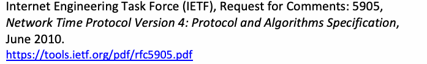
[IETF 5905] Internet Engineering Task Force（IETF）、Request for Comments：5905、『ネットワークタイムプロトコル バージョン4：プロトコル及びアルゴリズムの仕様』、2010年6月。https://tools.ietf.org/pdf/rfc5905.pdf
[LAMPSON73] B. W. Lampson, A Note on the Confinement Problem, Communications of the ACM 16, 10, pp. 613-615, October 1973.
[LAMPSON73] B. W. Lampson, A Note on the Confinement Problem, Communications of the ACM 16, 10, pp. 613-615, 1973年10月.
[NARA CUI] National Archives and Records Administration, Controlled Unclassified Information (CUI) Registry. https://www.archives.gov/cui
[NARA CUI] National Archives and Records Administration, Controlled Unclassified Information (CUI) Registry. https://www.archives.gov/cui
[NIAP CCEVS] National Information Assurance Partnership, Common Criteria Evaluation and Validation Scheme. https://www.niap-ccevs.org
[NIAP CCEVS] 国家情報保証パートナーシップ、Common Criteria Evaluation and Validation Scheme。https://www.niap-ccevs.org
[NIST CAVP] National Institute of Standards and Technology (2020) Cryptographic Algorithm Validation Program. Available at https://csrc.nist.gov/projects/cryptographic-algorithm-validation-program
[NIST CAVP] 米国国立標準技術研究所 (2020) Cryptographic Algorithm Validation Program。入手先：https://csrc.nist.gov/projects/cryptographic-algorithm-validation-program
[NIST CMVP] National Institute of Standards and Technology (2020) Cryptographic Module Validation Program. Available at https://csrc.nist.gov/projects/cryptographic-module-validation-program
[NIST CMVP] 米国国立標準技術研究所 (2020) Cryptographic Module Validation Program。入手先：https://csrc.nist.gov/projects/cryptographic-module-validation-program
[NIST CSF] National Institute of Standards and Technology (2018) Framework for Improving Critical Infrastructure Cybersecurity, Version 1.1. (National Institute of Standards and Technology, Gaithersburg, MD). https://doi.org/10.6028/NIST.CSWP.04162018
[NIST CSF] 米国国立標準技術研究所 (2018) Framework for Improving Critical Infrastructure Cybersecurity, Version 1.1。（米国国立標準技術研究所、メリーランド州ゲイサーズバーグ）。https://doi.org/10.6028/NIST.CSWP.04162018
[NIST PF] National Institute of Standards and Technology (2020) Privacy Framework: A Tool for Improving Privacy through Enterprise Risk Management, Version 1.0. (National Institute of Standards and Technology, Gaithersburg, MD). https://doi.org/10.6028/NIST.CSWP.01162020
[NIST PF] National Institute of Standards and Technology (2020) Privacy Framework: A Tool for Improving Privacy through Enterprise Risk Management, Version 1.0. (National Institute of Standards and Technology, Gaithersburg, MD). https://doi.org/10.6028/NIST.CSWP.01162020
[NCPR] National Institute of Standards and Technology (2020) National Checklist Program Repository. Available at https://nvd.nist.gov/ncp/repository
[NCPR] National Institute of Standards and Technology (2020) National Checklist Program Repository. 入手先：https://nvd.nist.gov/ncp/repository
[NVD 800-53] National Institute of Standards and Technology (2020) National Vulnerability Database: NIST Special Publication 800-53 [database of controls]. Available at https://nvd.nist.gov/800-53
[NVD 800-53] National Institute of Standards and Technology (2020) National Vulnerability Database: NIST Special Publication 800-53 [管理策のデータベース]. 入手先：https://nvd.nist.gov/800-53
[NEUM04] Principled Assuredly Trustworthy Composable Architectures, P. Neumann, CDRL A001 Final Report, SRI International, December 2004. http://www.csl.sri.com/users/neumann/chats4.pdf
[NEUM04] Principled Assuredly Trustworthy Composable Architectures, P. Neumann, CDRL A001 Final Report, SRI International, 2004年12月. http://www.csl.sri.com/users/neumann/chats4.pdf
[NSA CSFC] National Security Agency, Commercial Solutions for Classified Program (CSfC). https://www.nsa.gov/resources/everyone/csfc
[NSA CSFC] National Security Agency, Commercial Solutions for Classified Program (CSfC). https://www.nsa.gov/resources/everyone/csfc
[NSA MEDIA] National Security Agency, Media Destruction Guidance. https://www.nsa.gov/resources/everyone/media-destruction
[NSA MEDIA] National Security Agency, Media Destruction Guidance. https://www.nsa.gov/resources/everyone/media-destruction
[ODNI CTF] Office of the Director of National Intelligence (ODNI) Cyber Threat Framework. https://www.dni.gov/index.php/cyber-threat-framework
[ODNI CTF] 国家情報長官室（ODNI）Cyber Threat Framework。https://www.dni.gov/index.php/cyber-threat-framework
[POPEK74] G. Popek, The Principle of Kernel Design, in 1974 NCC, AFIPS Cong. Proc., Vol. 43, pp. 977-978.
[POPEK74] G. Popek、The Principle of Kernel Design、1974 NCC, AFIPS Cong. Proc. 所収、第43巻、977-978頁。
[SALTZER75] J. Saltzer and M. Schroeder, The Protection of Information in Computer Systems, in Proceedings of the IEEE 63(9), September 1975, pp. 1278-1308.
[SALTZER75] J. Saltzer及びM. Schroeder、The Protection of Information in Computer Systems、Proceedings of the IEEE 63(9) 所収、1975年9月、1278-1308頁。
[SP 800-53 RES] NIST Special Publication 800-53, Revision 5 Resource Center. https://csrc.nist.gov/publications/detail/sp/800-53/rev-5/final
[SP 800-53 RES] NIST Special Publication 800-53, Revision 5 Resource Center. https://csrc.nist.gov/publications/detail/sp/800-53/rev-5/final
[USGCB] National Institute of Standards and Technology (2020) United States Government Configuration Baseline. Available at https://csrc.nist.gov/projects/united-states-government-configuration-baseline
[USGCB] National Institute of Standards and Technology (2020) United States Government Configuration Baseline. 入手先：https://csrc.nist.gov/projects/united-states-government-configuration-baseline
APPENDIX A
付録A
GLOSSARY
用語集
COMMON TERMS AND DEFINITIONS
共通用語と定義
Appendix A provides definitions for terminology used in NIST Special Publication 800-53. Sources for terms used in this publication are cited as applicable. Where no citation is noted, the source of the definition is Special Publication 800-53.
附録Aは、NIST Special Publication 800-53で使用する用語の定義を示す。本刊行物で使用する用語の出典は、該当する場合に引用している。引用が記されていない定義の出典は、Special Publication 800-53である。
access control [FIPS 201-2] — The process of granting or denying specific requests for obtaining and using information and related information processing services; and to enter specific physical facilities (e.g., Federal buildings, military establishments, and border crossing entrances).
access control [FIPS 201-2] — 情報および関連する情報処理サービスの取得・利用、ならびに特定の物理施設（連邦政府の建物、軍事施設、国境通過地点の入口など）への立入りに関する個別の要求を許可または拒否するプロセス。
adequate security [OMB A-130] — Security protections commensurate with the risk resulting from the unauthorized access, use, disclosure, disruption, modification, or destruction of information. This includes ensuring that information hosted on behalf of an agency and information systems and applications used by the agency operate effectively and provide appropriate confidentiality, integrity, and availability protections through the application of cost-effective security controls.
adequate security [OMB A-130] — 情報の不正なアクセス、使用、開示、妨害、改変、または破壊から生じるリスクに見合ったセキュリティ保護。これには、機関に代わってホストされる情報、ならびに機関が使用する情報システムおよびアプリケーションが、費用対効果の高いセキュリティ管理策の適用を通じて、効果的に運用され、適切な機密性、完全性、可用性の保護を提供することを確保することが含まれる。
advanced persistent threat [SP 800-39] — An adversary that possesses sophisticated levels of expertise and significant resources which allow it to create opportunities to achieve its objectives by using multiple attack vectors, including cyber, physical, and deception. These objectives typically include establishing and extending footholds within the IT infrastructure of the targeted organizations for purposes of exfiltrating information, undermining or impeding critical aspects of a mission, program, or organization; or positioning itself to carry out these objectives in the future. The advanced persistent threat pursues its objectives repeatedly over an extended period; adapts to defenders’ efforts to resist it; and is determined to maintain the level of interaction needed to execute its objectives.
advanced persistent threat [SP 800-39] — 高度な専門知識と豊富な資源を持ち、サイバー、物理、欺瞞を含む複数の攻撃経路を用いて、目的達成の機会を作り出せる攻撃者。典型的な目的には、情報の流出、任務・プログラム・組織の重要な側面の弱体化や妨害、または将来これらを実行するための準備として、標的組織のIT基盤内に足場を築き、拡大することが含まれる。この攻撃者は、長期間にわたり繰り返し目的の達成を試み、防御側の抵抗に適応し、目的の遂行に必要な相互作用の水準を維持しようとする強い意志を持つ。
agency [OMB A-130] — Any executive agency or department, military department, Federal Government corporation, Federal Government-controlled corporation, or other establishment in the Executive Branch of the Federal Government, or any independent regulatory agency. See executive agency.
agency [OMB A-130] — あらゆる行政機関もしくは省、軍事省、連邦政府法人、連邦政府管理法人、連邦政府の行政部門におけるその他の機関、またはあらゆる独立規制機関。executive agency を参照。
all-source intelligence [DODTERMS] — Intelligence products and/or organizations and activities that incorporate all sources of information, most frequently including human resources intelligence, imagery intelligence, measurement and signature intelligence, signals intelligence, and open-source data in the production of finished intelligence.
all-source intelligence [DODTERMS] — 完成したインテリジェンスの作成にあたり、あらゆる情報源を取り入れるインテリジェンス成果物、および／またはそのような組織や活動。特に多く用いられるものには、人的情報、画像情報、計測・特徴情報、信号情報、公開情報がある。
application [SP 800-37] — A software program hosted by an information system.
application [SP 800-37] — 情報システム上に配置され、そこで動作するソフトウェアプログラム。
assessment — See control assessment or risk assessment.
assessment — control assessmentまたはrisk assessmentを参照。
assessment plan — The objectives for the security and privacy control assessments and a detailed roadmap of how to conduct such assessments.
assessment plan — セキュリティおよびプライバシー管理策の評価の目的と、その評価を実施する方法を詳しく示す工程表。
assessor — The individual, group, or organization responsible for conducting a security or privacy control assessment.
assessor — セキュリティまたはプライバシー管理策の評価を実施する責任を持つ、個人、集団、組織。
assignment operation — A control parameter that allows an organization to assign a specific, organization-defined value to the control or control enhancement (e.g., assigning a list of roles to be notified or a value for the frequency of testing).
assignment operation — 組織が定義する具体的な値を、管理策または管理策の拡張に割り当てられるようにする管理策パラメーター。たとえば、通知先の役割の一覧や、テスト頻度の値を割り当てる。
See organization-defined control parameters and selection operation.
organization-defined control parametersおよびselection operationを参照。
assurance [ISO/IEC 15026, Adapted] — Grounds for justified confidence that a [security or privacy] claim has been or will be achieved.
assurance [ISO/IEC 15026, Adapted] — ［セキュリティまたはプライバシーに関する］主張が達成された、または将来達成されるという正当な確信を持つための根拠。
Note 1: Assurance is typically obtained relative to a set of specific claims. The scope and focus of such claims may vary (e.g., security claims, safety claims) and the claims themselves may be interrelated.
注記1：保証は、通常、一連の特定の主張に関して得られる。主張の範囲や重点は異なる場合があり（セキュリティに関する主張、安全性に関する主張など）、主張自体が相互に関係している場合もある。
Note 2: Assurance is obtained through techniques and methods that generate credible evidence to substantiate claims.
注記2：保証は、主張を裏付ける信頼できる証拠を生み出す技法や方法によって得られる。
attack surface — The set of points on the boundary of a system, a system component, or an environment where an attacker can try to enter, cause an effect on, or extract data from, that system, component, or environment.
attack surface — システム、システム構成要素、環境の境界上にある地点の集合で、攻撃者がそこから侵入を試み、そのシステム、構成要素、環境に影響を及ぼそうとし、またはデータを取り出そうとできるもの。
audit [CNSSI 4009] — Independent review and examination of records and activities to assess the adequacy of system controls, to ensure compliance with established policies and operational procedures.
audit [CNSSI 4009] — システムの管理策の適切性を評価し、確立された方針や運用手順への適合を確保するために、記録と活動を独立してレビュー・検査すること。
audit log [CNSSI 4009] — A chronological record of system activities, including records of system accesses and operations performed in a given period.
audit log [CNSSI 4009] — 特定の期間内のシステムへのアクセスと実行された操作の記録を含む、システムの活動の時系列の記録。
audit record — An individual entry in an audit log related to an audited event.
audit record — 監査されたイベントに関係する、監査ログ内の個別の項目。
audit record reduction — A process that manipulates collected audit information and organizes it into a summary format that is more meaningful to analysts.
audit record reduction — 収集した監査情報を処理し、分析者にとってより意味のある要約形式に整理するプロセス。
audit trail — A chronological record that reconstructs and examines the sequence of activities surrounding or leading to a specific operation, procedure, or event in a security-relevant transaction from inception to result.
audit trail — セキュリティに関係するトランザクションの開始から結果に至るまで、特定の操作、手順、イベントの周辺で発生した、またはそれらにつながった一連の活動を再構成・検査する、時系列の記録。
authentication [FIPS 200] — Verifying the identity of a user, process, or device, often as a prerequisite to allowing access to resources in a system.
authentication [FIPS 200] — 利用者、プロセス、デバイスの識別情報を検証すること。多くの場合、システム内の資源へのアクセスを許可するための前提となる。
authenticator — Something that the claimant possesses and controls (typically a cryptographic module or password) that is used to authenticate the claimant’s identity. This was previously referred to as a token.
authenticator — 認証を要求する者が所有・管理し、その者の識別情報を認証するために使用するもの（典型的には暗号モジュールまたはパスワード）。以前はトークンと呼ばれていた。
authenticity — The property of being genuine and being able to be verified and trusted; confidence in the validity of a transmission, message, or message originator. See authentication.
authenticity — 真正であり、検証して信頼できるという性質。送信、メッセージ、またはメッセージ発信者の正当性に対する確信。authenticationを参照。
authorization [CNSSI 4009] — Access privileges granted to a user, program, or process or the act of granting those privileges.
authorization [CNSSI 4009] — ユーザ、プログラム、もしくはプロセスに付与されるアクセス特権、またはそれらの特権を付与する行為。
authorization boundary [OMB A-130] — All components of an information system to be authorized for operation by an authorizing official. This excludes separately authorized systems to which the information system is connected.
authorization boundary [OMB A-130] — 認可権限者によって運用が認可される情報システムのすべての構成要素。その情報システムに接続されていても、別途認可されるシステムは含まれない。
authorization to operate [OMB A-130] — The official management decision given by a senior Federal official or officials to authorize operation of an information system and to explicitly accept the risk to agency operations (including mission, functions, image, or reputation), agency assets, individuals, other organizations, and the Nation based on the implementation of an agreed-upon set of security and privacy controls. Authorization also applies to common controls inherited by agency information systems.
authorization to operate [OMB A-130] — 上級の連邦政府職員が、合意された一連のセキュリティおよびプライバシー管理策の実装に基づき、情報システムの運用を認可するとともに、機関の業務（任務、機能、イメージ、評判を含む）、機関の資産、個人、他の組織、および国家へのリスクを明示的に受容する、管理上の正式な判断。認可は、機関の情報システムが継承する共通管理策にも適用される。
authorizing official [OMB A-130] — A senior Federal official or executive with the authority to authorize (i.e., assume responsibility for) the operation of an information system or the use of a designated set of common controls at an acceptable level of risk to agency operations (including mission, functions, image, or reputation), agency assets, individuals, other organizations, and the Nation.
authorizing official [OMB A-130] — 機関の業務（ミッション、機能、イメージ、または評判を含む）、機関の資産、個人、他の組織、および国家に対するリスクが受容可能な水準にある状態で、情報システムの運用または指定された共通管理策の集合の使用を認可する（すなわち、その責任を引き受ける）権限を持つ連邦政府の上級職員または幹部。
availability [FISMA] — Ensuring timely and reliable access to and use of information.
availability [FISMA] — 情報への適時かつ確実なアクセスおよび情報の利用を確保すること。
baseline — See control baseline.
baseline — control baseline を参照。
baseline configuration [SP 800-128, Adapted] — A documented set of specifications for a system, or a configuration item within a system, that has been formally reviewed and agreed on at a given point in time, and which can be changed only through change control procedures.
baseline configuration [SP 800-128, Adapted] — ある時点で正式にレビュー・合意され、変更管理手順を通じてのみ変更できる、システムまたはシステム内の構成品目に関する、文書化された一連の仕様。
boundary [CNSSI 4009] — Physical or logical perimeter of a system. See also authorization boundary and interface.
boundary [CNSSI 4009] — システムの物理的または論理的な境界。authorization boundary および interface も参照。
boundary protection — Monitoring and control of communications at the external interface to a system to prevent and detect malicious and other unauthorized communications using boundary protection devices.
boundary protection — 境界保護装置を用いて悪意のある通信やその他の不正な通信を防止・検出するため、システムの外部インターフェースで通信を監視・制御すること。
boundary protection device — A device (e.g., gateway, router, firewall, guard, or encrypted tunnel) that facilitates the adjudication of different system security policies for connected systems or provides boundary protection. The boundary may be the authorization boundary for a system, the organizational network boundary, or a logical boundary defined by the organization.
boundary protection device — 接続されたシステム間で異なるシステムセキュリティ方針を調整できるようにする、または境界保護を提供する装置（ゲートウェイ、ルーター、ファイアウォール、ガード、暗号化トンネルなど）。その境界は、システムの認可境界、組織のネットワーク境界、または組織が定義した論理境界の場合がある。
breach [OMB M-17-12] — The loss of control, compromise, unauthorized disclosure, unauthorized acquisition, or any similar occurrence where: a person other than an authorized user accesses or potentially accesses personally identifiable information; or an authorized user accesses personally identifiable information for another than authorized purpose.
breach [OMB M-17-12] — 管理の喪失、侵害、不正な開示、不正な取得、またはこれらに類する事象であって、認可されたユーザ以外の者が個人識別情報にアクセスする、もしくはアクセスする可能性がある場合、または認可されたユーザが認可された目的以外の目的で個人識別情報にアクセスする場合をいう。
breadth [SP 800-53A] — An attribute associated with an assessment method that addresses the scope or coverage of the assessment objects included with the assessment.
breadth [SP 800-53A] — 評価方法に関連する属性で、評価に含まれる評価対象の範囲または網羅範囲に関するもの。
capability — A combination of mutually reinforcing security and/or privacy controls implemented by technical, physical, and procedural means. Such controls are typically selected to achieve a common information security- or privacy-related purpose.
capability — 技術的、物理的、および手続的な手段によって実装される、相互に補強し合うセキュリティ管理策および／またはプライバシー管理策の組合せ。こうした管理策は通常、情報セキュリティまたはプライバシーに関する共通の目的を達成するために選定される。
central management — The organization-wide management and implementation of selected security and privacy controls and related processes. Central management includes planning, implementing, assessing, authorizing, and monitoring the organization-defined, centrally managed security and privacy controls and processes.
central management — 選択したセキュリティおよびプライバシー管理策と関連プロセスを、組織全体で管理・実装すること。これには、組織が定義する一元管理されたセキュリティおよびプライバシー管理策とプロセスの計画、実装、評価、認可、モニタリングが含まれる。
checksum [IETF 4949] — A value that (a) is computed by a function that is dependent on the contents of a data object and (b) is stored or transmitted together with the object, for detecting changes in the data.
checksum [IETF 4949] — データの変更を検出するため、(a)データオブジェクトの内容に依存する関数によって計算され、(b)そのオブジェクトとともに保存または送信される値。
chief information officer [OMB A-130] — The senior official that provides advice and other assistance to the head of the agency and other senior management personnel of the agency to ensure that IT is acquired and information resources are managed for the agency in a manner that achieves the agency’s strategic goals and information resources management goals; and is responsible for ensuring agency compliance with, and prompt, efficient, and effective implementation of, the information policies and information resources management responsibilities, including the reduction of information collection burdens on the public.
chief information officer [OMB A-130] — 機関の長およびその他の上級管理職に助言その他の支援を提供し、機関の戦略目標および情報資源管理目標を達成する方法でITが調達され、情報資源が管理されることを確保する上級職員。また、国民に対する情報収集の負担の軽減を含め、情報ポリシーおよび情報資源管理の責任について、機関の遵守と、迅速、効率的かつ効果的な実施を確保する責任を負う。
chief information security officer — See senior agency information security officer.
chief information security officer — senior agency information security officer を参照。
classified information — See classified national security information.
classified information — classified national security informationを参照。
classified national security information [EO 13526] — Information that has been determined pursuant to Executive Order (E.O.) 13526 or any predecessor order to require protection against unauthorized disclosure and is marked to indicate its classified status when in documentary form.
classified national security information [EO 13526] — 大統領令（E.O.）13526またはそれ以前の大統領令に従って、不正な開示から保護する必要があると判断され、文書の形態では機密指定の状態を示す表示が付された情報。
commodity service — A system service provided by a commercial service provider to a large and diverse set of consumers. The organization acquiring or receiving the commodity service possesses limited visibility into the management structure and operations of the provider, and while the organization may be able to negotiate service-level agreements, the organization is typically not able to require that the provider implement specific security or privacy controls.
commodity service — 商用のサービス提供者が、多数の多様な利用者に提供するシステムサービス。このサービスを取得または受領する組織は、提供者の管理構造や業務を把握できる範囲が限られる。組織はサービスレベル合意を交渉できる場合があるものの、通常、提供者に特定のセキュリティまたはプライバシー管理策の実装を要求することはできない。
common carrier — A telecommunications company that holds itself out to the public for hire to provide communications transmission services.
common carrier — 通信伝送サービスを有償で提供することを、公衆に対して表明している電気通信会社。
common control [OMB A-130] — A security or privacy control that is inherited by multiple information systems or programs.
common control [OMB A-130] — 複数の情報システムまたはプログラムによって継承されるセキュリティ管理策またはプライバシー管理策。
common control provider [SP 800-37] — An organizational official responsible for the development, implementation, assessment, and monitoring of common controls (i.e., security or privacy controls inheritable by systems).
common control provider [SP 800-37] — 共通管理策（すなわち、システムが継承可能なセキュリティ管理策またはプライバシー管理策）の開発、実装、評価、および監視に責任を負う組織の責任者。
common criteria [CNSSI 4009] — Governing document that provides a comprehensive, rigorous method for specifying security function and assurance requirements for products and systems.
common criteria [CNSSI 4009] — 製品およびシステムのセキュリティ機能要件と保証要件を規定するための、包括的で厳密な方法を示す準拠文書。
common secure configuration [SP 800-128] — A recognized standardized and established benchmark that stipulates specific secure configuration settings for a given information technology platform.
common secure configuration [SP 800-128] — 特定の情報技術プラットフォームに対して、安全な構成設定を具体的に規定する、認知され、標準化・確立されたベンチマーク。
compensating controls — The security and privacy controls employed in lieu of the controls in the baselines described in NIST Special Publication 800-53B that provide equivalent or comparable protection for a system or organization.
compensating controls — NIST Special Publication 800-53Bに記載されたベースライン内の管理策の代わりに用いられるセキュリティ管理策およびプライバシー管理策であって、システムまたは組織に対して同等または同程度の保護を提供するもの。
component — See system component.
component — system component を参照。
confidentiality [FISMA] — Preserving authorized restrictions on information access and disclosure, including means for protecting personal privacy and proprietary information.
confidentiality [FISMA] — 個人のプライバシーや専有情報を保護する手段を含め、情報へのアクセスと開示に関する認可された制限を維持すること。
configuration control [SP 800-128] — Process for controlling modifications to hardware, firmware, software, and documentation to protect the system against improper modifications before, during, and after system implementation.
configuration control [SP 800-128] — システムの実装前、実装中、実装後に、不適切な変更からシステムを保護するため、ハードウェア、ファームウェア、ソフトウェア、文書への変更を管理するプロセス。
configuration item [SP 800-128] — An aggregation of system components that is designated for configuration management and treated as a single entity in the configuration management process.
configuration item [SP 800-128] — 構成管理の対象として指定され、構成管理プロセスで単一の実体として扱われる、システム構成要素の集合。
configuration management [SP 800-128] — A collection of activities focused on establishing and maintaining the integrity of information technology products and systems, through control of processes for initializing, changing, and monitoring the configurations of those products and systems throughout the system development life cycle.
configuration management [SP 800-128] — システム開発ライフサイクル全体を通じて、情報技術製品およびシステムの構成を初期化、変更、監視するプロセスを管理し、それらの製品およびシステムの完全性を確立・維持することに重点を置く一連の活動。
configuration settings [SP 800-128] — The set of parameters that can be changed in hardware, software, or firmware that affect the security posture and/or functionality of the system.
configuration settings [SP 800-128] — ハードウェア、ソフトウェア、ファームウェアで変更でき、システムのセキュリティ態勢および／または機能に影響するパラメーターの集合。
continuous monitoring [SP 800-137] — Maintaining ongoing awareness to support organizational risk decisions.
continuous monitoring [SP 800-137] — 組織のリスクに関する判断を支援するため、継続的に状況を把握し続けること。
control — See security control or privacy control.
control — security controlまたはprivacy controlを参照。
control assessment [SP 800-37] — The testing or evaluation of the controls in an information system or an organization to determine the extent to which the controls are implemented correctly, operating as intended, and producing the desired outcome with respect to meeting the security or privacy requirements for the system or the organization.
control assessment [SP 800-37] — 情報システムまたは組織の管理策をテストまたは評価し、それらが正しく実装され、意図どおりに動作し、システムまたは組織のセキュリティ要件やプライバシー要件の充足に関して、望ましい結果を生み出している程度を判断すること。
control assessor — See assessor.
control assessor — assessorを参照。
control baseline [SP 800-53B] — Predefined sets of controls specifically assembled to address the protection needs of groups, organizations, or communities of interest. See privacy control baseline or security control baseline.
control baseline [SP 800-53B] — 集団、組織、関心を共有するコミュニティーの保護ニーズに対応するため、特に組み合わせてあらかじめ定めた管理策の集合。privacy control baselineまたはsecurity control baselineを参照。
control effectiveness — A measure of whether a security or privacy control contributes to the reduction of information security or privacy risk.
control effectiveness — セキュリティまたはプライバシー管理策が、情報セキュリティリスクやプライバシーリスクの低減に寄与するかを示す尺度。
control enhancement — Augmentation of a security or privacy control to build in additional but related functionality to the control, increase the strength of the control, or add assurance to the control.
control enhancement — 関連する追加機能を組み込む、管理策の強度を高める、または管理策に保証を追加するために、セキュリティまたはプライバシー管理策を補強すること。
control inheritance — A situation in which a system or application receives protection from security or privacy controls (or portions of controls) that are developed, implemented, assessed, authorized, and monitored by entities other than those responsible for the system or application; entities either internal or external to the organization where the system or application resides. See common control.
control inheritance — システムまたはアプリケーションの責任主体とは別の実体が、策定、実装、評価、認可、モニタリングを行うセキュリティまたはプライバシー管理策（あるいは管理策の一部）によって、そのシステムやアプリケーションが保護される状況。別の実体は、システムやアプリケーションが属する組織の内部にも外部にも存在し得る。common controlを参照。
control parameter — See organization-defined control parameter.
control parameter — organization-defined control parameterを参照。
controlled area — Any area or space for which an organization has confidence that the physical and procedural protections provided are sufficient to meet the requirements established for protecting the information and/or information system.
controlled area — 情報および／または情報システムを保護するために定められた要件を満たすうえで、備えられた物理的・手続き上の保護が十分であると、組織が確信している区域や空間。
controlled interface — An interface to a system with a set of mechanisms that enforces the security policies and controls the flow of information between connected systems.
controlled interface — セキュリティ方針を強制し、接続されたシステム間の情報の流れを制御する一連の仕組みを備えた、システムへのインターフェース。
controlled unclassified information [32 CFR 2002] — Information that the Government creates or possesses, or that an entity creates or possesses for or on behalf of the Government, that a law, regulation, or Government-wide policy requires or permits an agency to handle using safeguarding or dissemination controls. However, CUI does not include classified information or information a non-executive branch entity possesses and maintains in its own systems that did not come from, or was not created or possessed by or for, an executive branch agency or an entity acting for an agency.
controlled unclassified information [32 CFR 2002] — 政府が作成・保有する情報、または実体が政府のために、もしくは政府に代わって作成・保有する情報のうち、法律、規則、政府全体の方針によって、機関が保護や配布の管理策を用いて取り扱うことを要求または許可されているもの。ただし、CUIには機密情報は含まれない。また、行政部門以外の実体が自らのシステムで保有・維持する情報で、行政部門の機関または機関に代わって行動する実体に由来せず、それらによって、またはそれらのために作成・保有されたものでもない情報も含まれない。
counterfeit [SP 800-161] — An unauthorized copy or substitute that has been identified, marked, and/or altered by a source other than the item's legally authorized source and has been misrepresented to be an authorized item of the legally authorized source.
counterfeit [SP 800-161] — 当該品の法的に認められた供給元以外の者が識別、表示、および／または改変を行い、その正規の供給元による認可された品であると偽って示した、不正な複製品または代替品。
countermeasures [FIPS 200] — Actions, devices, procedures, techniques, or other measures that reduce the vulnerability of a system. Synonymous with security controls and safeguards.
countermeasures [FIPS 200] — システムの脆弱性を低減する、行為、装置、手順、技法、その他の措置。security controlsおよびsafeguardsと同義。
covert channel [CNSSI 4009] — An unintended or unauthorized intra-system channel that enables two cooperating entities to transfer information in a way that violates the system's security policy but does not exceed the entities' access authorizations.
covert channel [CNSSI 4009] — 協調する2つの実体が、それぞれのアクセス認可の範囲を超えることなく、システムのセキュリティ方針に違反する方法で情報を転送できるようにする、意図されていない、または認可されていないシステム内の通信路。
covert channel analysis [CNSSI 4009] — Determination of the extent to which the security policy model and subsequent lower-level program descriptions may allow unauthorized access to information.
covert channel analysis [CNSSI 4009] — セキュリティ方針モデルと、その後の下位レベルのプログラム記述が、情報への不正なアクセスを許す可能性がある程度を判断すること。
covert storage channel [CNSSI 4009] — A system feature that enables one system entity to signal information to another entity by directly or indirectly writing to a storage location that is later directly or indirectly read by the second entity.
covert storage channel [CNSSI 4009] — あるシステム実体が記憶場所に直接または間接に書き込み、その後、別の実体がそこを直接または間接に読み取ることで、前者が後者に情報を伝達できるようにするシステム機能。
covert timing channel [CNSSI 4009, Adapted] — A system feature that enables one system entity to signal information to another by modulating its own use of a system resource in such a way as to affect system response time observed by the second entity.
covert timing channel [CNSSI 4009, Adapted] — あるシステム実体が、別の実体によって観測されるシステム応答時間に影響を及ぼすように、自らのシステム資源の使用を変化させ、他方の実体へ情報を伝達できるようにするシステム機能。
credential [SP 800-63-3] — An object or data structure that authoritatively binds an identity, via an identifier or identifiers, and (optionally) additional attributes, to at least one authenticator possessed and controlled by a subscriber.
credential [SP 800-63-3] — 識別子を介して、識別情報と、任意で追加の属性を、加入者が所有・管理する少なくとも1つの認証器に、権威ある形で結び付けるオブジェクトまたはデータ構造。
critical infrastructure [USA PATRIOT] — Systems and assets, whether physical or virtual, so vital to the United States that the incapacity or destruction of such systems and assets would have a debilitating impact on security, national economic security, national public health or safety, or any combination of those matters.
critical infrastructure [USA PATRIOT] — 物理的であるか仮想的であるかを問わず、その機能停止や破壊が、セキュリティ、国家の経済安全保障、国家の公衆衛生または安全、あるいはそれらの組み合わせに重大な悪影響を及ぼすほど、米国にとって不可欠なシステムと資産。
cross domain solution [CNSSI 1253] — A form of controlled interface that provides the ability to manually and/or automatically access and/or transfer information between different security domains.
cross domain solution [CNSSI 1253] — 異なるセキュリティドメイン間で、手動および／または自動で、情報にアクセスし、および／または情報を転送する能力を提供する、制御されたインターフェースの一形態。
cryptographic module [FIPS 140-3] — The set of hardware, software, and/or firmware that implements Approved security functions (including cryptographic algorithms and key generation) and is contained within the cryptographic boundary.
cryptographic module [FIPS 140-3] — 承認されたセキュリティ機能（暗号アルゴリズムと鍵生成を含む）を実装し、暗号境界内に含まれるハードウェア、ソフトウェア、および／またはファームウェアの集合。
cybersecurity [OMB A-130] — Prevention of damage to, protection of, and restoration of computers, electronic communications systems, electronic communications services, wire communication, and electronic communication, including information contained therein, to ensure its availability, integrity, authentication, confidentiality, and nonrepudiation.
cybersecurity [OMB A-130] — コンピューター、電子通信システム、電子通信サービス、有線通信、電子通信、およびそれらに含まれる情報について、可用性、完全性、認証、機密性、否認防止を確保するため、損傷を防止し、保護し、復旧すること。
cyberspace [CNSSI 4009] — The interdependent network of information technology infrastructures that includes the Internet, telecommunications networks, computer systems, and embedded processors and controllers in critical industries.
cyberspace [CNSSI 4009] — インターネット、電気通信ネットワーク、コンピューターシステム、および重要産業の組込みプロセッサーや制御装置を含む、相互依存した情報技術基盤のネットワーク。
data action [IR 8062] — A system operation that processes personally identifiable information.
data action [IR 8062] — 個人識別可能情報を処理するシステム操作。
data mining — An analytical process that attempts to find correlations or patterns in large data sets for the purpose of data or knowledge discovery.
data mining — データや知識の発見を目的として、大規模なデータ集合から相関やパターンを見つけようとする分析プロセス。
de-identification [ISO 25237] — General term for any process of removing the association between a set of identifying data and the data subject.
de-identification [ISO 25237] — 一連の識別用データとデータ主体の関連付けを除去する、あらゆるプロセスの総称。
defense in breadth [CNSSI 4009] — A planned, systematic set of multidisciplinary activities that seek to identify, manage, and reduce risk of exploitable vulnerabilities at every stage of the system, network, or subcomponent life cycle, including system, network, or product design and development; manufacturing; packaging; assembly; system integration; distribution; operations; maintenance; and retirement.
defense in breadth [CNSSI 4009] — システム、ネットワーク、下位構成要素のライフサイクルの各段階で、悪用可能な脆弱性のリスクを特定、管理、低減することを目指す、計画的・体系的な複数分野にわたる活動の集合。システム、ネットワーク、製品の設計と開発、製造、梱包、組立て、システム統合、流通、運用、保守、退役を含む。
defense in depth — An information security strategy that integrates people, technology, and operations capabilities to establish variable barriers across multiple layers and missions of the organization.
defense in depth — 人、技術、運用の能力を統合し、組織の複数の層と任務にまたがって多様な防壁を設ける、情報セキュリティ戦略。
depth [SP 800-53A] — An attribute associated with an assessment method that addresses the rigor and level of detail associated with the application of the method.
depth [SP 800-53A] — 評価方法に関連する属性で、その方法の適用に伴う厳密さと詳細度に関するもの。
developer — A general term that includes developers or manufacturers of systems, system components, or system services; systems integrators; vendors; and product resellers. The development of systems, components, or services can occur internally within organizations or through external entities.
developer — システム、システム構成要素、システムサービスの開発者や製造者、システムインテグレーター、販売者、製品の再販売者を含む総称。システム、構成要素、サービスの開発は、組織内部でも外部の実体を通じても行われる場合がある。
digital media — A form of electronic media where data is stored in digital (as opposed to analog) form.
digital media — データをアナログ形式ではなくデジタル形式で保存する、電子媒体の一形態。
discretionary access control — An access control policy that is enforced over all subjects and objects in a system where the policy specifies that a subject that has been granted access to information can do one or more of the following: pass the information to other subjects or objects; grant its privileges to other subjects; change the security attributes of subjects, objects, systems, or system components; choose the security attributes to be associated with newly-created or revised objects; or change the rules governing access control. Mandatory access controls restrict this capability.
discretionary access control — システム内のすべての主体と客体に適用されるアクセス制御方針で、情報へのアクセスを許可された主体が、次のうち1つ以上を行えることを規定するもの。情報を他の主体や客体に渡すこと、自らの権限を他の主体に付与すること、主体・客体・システム・システム構成要素のセキュリティ属性を変更すること、新規作成または改訂された客体に関連付けるセキュリティ属性を選ぶこと、またはアクセス制御を規定する規則を変更すること。強制アクセス制御は、この能力を制限する。
disassociability [IR 8062] — Enabling the processing of personally identifiable information or events without association to individuals or devices beyond the operational requirements of the system.
disassociability [IR 8062] — システムの運用上の要件を超えて個人またはデバイスと関連付けることなく、個人識別可能情報やイベントを処理できるようにすること。
domain — An environment or context that includes a set of system resources and a set of system entities that have the right to access the resources as defined by a common security policy, security model, or security architecture. See security domain.
domain — 共通のセキュリティ方針、セキュリティモデル、またはセキュリティアーキテクチャによって定義されたアクセス権を持つシステム実体の集合と、システム資源の集合を含む環境または文脈。security domainを参照。
enterprise [CNSSI 4009] — An organization with a defined mission/goal and a defined boundary, using systems to execute that mission, and with responsibility for managing its own risks and performance. An enterprise may consist of all or some of the following business aspects: acquisition, program management, human resources, financial management, security, and systems, information and mission management. See organization.
enterprise [CNSSI 4009] — 明確な任務／目標と境界を持ち、システムを用いてその任務を遂行し、自らのリスクと業績を管理する責任を持つ組織。取得、プログラム管理、人事、財務管理、セキュリティ、ならびにシステム・情報・任務の管理という業務上の側面の全部または一部から構成される場合がある。organizationを参照。
enterprise architecture [OMB A-130] — A strategic information asset base, which defines the mission; the information necessary to perform the mission; the technologies necessary to perform the mission; and the transitional processes for implementing new technologies in response to changing mission needs; and includes a baseline architecture; a target architecture; and a sequencing plan.
enterprise architecture [OMB A-130] — 任務、任務遂行に必要な情報、任務遂行に必要な技術、および変化する任務上のニーズに応じて新技術を実装するための移行プロセスを定義する、戦略的な情報資産基盤。ベースラインアーキテクチャ、目標アーキテクチャ、および実施順序の計画を含む。
environment of operation [OMB A-130] — The physical surroundings in which an information system processes, stores, and transmits information.
environment of operation [OMB A-130] — 情報システムが情報を処理、保存、送信する物理的な周囲の環境。
event [SP 800-61, Adapted] — Any observable occurrence in a system.
event [SP 800-61, Adapted] — システム内で観測可能なあらゆる出来事。
executive agency [OMB A-130] — An executive department specified in 5 U.S.C., Sec. 101; a military department specified in 5 U.S.C., Sec. 102; an independent establishment as defined in 5 U.S.C., Sec. 104(1); and a wholly owned Government corporation fully subject to the provisions of 31 U.S.C., Chapter 91.
executive agency [OMB A-130] — 5 U.S.C., Sec. 101 に規定される行政省、5 U.S.C., Sec. 102 に規定される軍事省、5 U.S.C., Sec. 104(1) に定義される独立機関、および 31 U.S.C., Chapter 91 の規定が全面的に適用される完全政府所有法人。
exfiltration — The unauthorized transfer of information from a system.
exfiltration — システムから情報を不正に転送すること。
external system (or component) — A system or component of a system that is used by but is not a part of an organizational system and for which the organization has no direct control over the implementation of required security and privacy controls or the assessment of control effectiveness.
external system (or component) — 組織のシステムによって使用されるものの、その一部ではなく、必要なセキュリティおよびプライバシー管理策の実装や管理策の有効性評価を組織が直接管理できない、システムまたはシステムの構成要素。
external system service — A system service that is provided by an external service provider and for which the organization has no direct control over the implementation of required security and privacy controls or the assessment of control effectiveness.
external system service — 外部サービス提供者が提供するシステムサービスで、必要なセキュリティおよびプライバシー管理策の実装や管理策の有効性評価を組織が直接管理できないもの。
external system service provider — A provider of external system services to an organization through a variety of consumer-producer relationships, including joint ventures, business partnerships, outsourcing arrangements (i.e., through contracts, interagency agreements, lines of business arrangements), licensing agreements, and/or supply chain exchanges.
external system service provider — 合弁事業、事業提携、外部委託の取決め（契約、機関間合意、業務分野別の取決めによるもの）、ライセンス契約、および／またはサプライチェーン上のやり取りを含む、さまざまな利用者・提供者間の関係を通じて、組織に外部システムサービスを提供する者。
external network — A network not controlled by the organization.
external network — 組織が管理していないネットワーク。
failover — The capability to switch over automatically (typically without human intervention or warning) to a redundant or standby system upon the failure or abnormal termination of the previously active system.
failover — それまで稼働していたシステムが故障または異常終了した際に、冗長システムまたは待機システムへ自動的に切り替える能力。通常、人の介入や警告を伴わない。
federal information system [OMB A-130] — An information system used or operated by an executive agency, by a contractor of an executive agency, or by another organization on behalf of an executive agency.
federal information system [OMB A-130] — 行政機関、行政機関の請負業者、または行政機関に代わって他の組織が使用または運用する情報システム。
FIPS-validated cryptography — A cryptographic module validated by the Cryptographic Module Validation Program (CMVP) to meet requirements specified in FIPS Publication 140-3 (as amended). As a prerequisite to CMVP validation, the cryptographic module is required to employ a cryptographic algorithm implementation that has successfully passed validation testing by the Cryptographic Algorithm Validation Program (CAVP). See NSA-approved cryptography.
FIPS-validated cryptography — 暗号モジュール検証プログラム（CMVP）により、FIPS Publication 140-3（改訂を含む）に規定された要件を満たすと検証された暗号モジュール。CMVPによる検証の前提として、暗号モジュールは、暗号アルゴリズム検証プログラム（CAVP）による検証試験に合格した暗号アルゴリズムの実装を使用する必要がある。NSA-approved cryptographyを参照。
firmware [CNSSI 4009] — Computer programs and data stored in hardware - typically in read-only memory (ROM) or programmable read-only memory (PROM) - such that the programs and data cannot be dynamically written or modified during execution of the programs. See hardware and software.
firmware [CNSSI 4009] — ハードウェア（通常は読出し専用メモリー（ROM）またはプログラマブル読出し専用メモリー（PROM））に保存され、プログラム実行中に動的に書き込んだり変更したりできないコンピュータープログラムおよびデータ。hardwareおよびsoftwareを参照。
hardware [CNSSI 4009] — The material physical components of a system. See software and firmware.
hardware [CNSSI 4009] — システムを構成する物理的な構成要素。software および firmware を参照。
high-impact system [FIPS 200] — A system in which at least one security objective (i.e., confidentiality, integrity, or availability) is assigned a FIPS Publication 199 potential impact value of high.
high-impact system [FIPS 200] — 3つのセキュリティ目標（機密性、完全性、可用性）のうち、少なくとも1つに対して、FIPS Publication 199の潜在的影響の値として高が割り当てられているシステム。
hybrid control [OMB A-130] — A security or privacy control that is implemented for an information system in part as a common control and in part as a system-specific control.
hybrid control [OMB A-130] — 情報システムに対して、一部は共通管理策として、一部はシステム固有管理策として実装されるセキュリティ管理策またはプライバシー管理策。
identifier [FIPS 201-2] — Unique data used to represent a person’s identity and associated attributes. A name or a card number are examples of identifiers. A unique label used by a system to indicate a specific entity, object, or group.
identifier [FIPS 201-2] — 人の識別情報と関連する属性を表すために使用する一意なデータ。氏名やカード番号は、識別子の例である。また、特定の実体、客体、グループを示すためにシステムが使用する一意なラベル。
impact — The effect on organizational operations, organizational assets, individuals, other organizations, or the Nation (including the national security interests of the United States) of a loss of confidentiality, integrity, or availability of information or a system.
impact — 情報またはシステムの機密性、完全性、または可用性の喪失が、組織の業務、組織の資産、個人、他の組織、または国家（米国の国家安全保障上の利益を含む）に及ぼす影響。
impact value [FIPS 199] — The assessed worst-case potential impact that could result from a compromise of the confidentiality, integrity, or availability of information expressed as a value of low, moderate or high.
impact value [FIPS 199] — 情報の機密性、完全性、可用性が損なわれた場合に生じ得る最悪の場合の潜在的影響を評価し、低、中、高のいずれかの値で表したもの。
incident [FISMA] — An occurrence that actually or imminently jeopardizes, without lawful authority, the confidentiality, integrity, or availability of information or an information system; or constitutes a violation or imminent threat of violation of law, security policies, security procedures, or acceptable use policies.
incident [FISMA] — 法的な権限なしに、情報または情報システムの機密性、完全性、可用性を現実に危険にさらす、または差し迫って危険にさらそうとする事象。または、法律、セキュリティ方針、セキュリティ手順、利用規約に違反する事象、もしくはそれらへの違反の差し迫ったおそれとなる事象。
industrial control system [SP 800-82] — General term that encompasses several types of control systems, including supervisory control and data acquisition (SCADA) systems, distributed control systems (DCS), and other control system configurations such as programmable logic controllers (PLC) found in the industrial sectors and critical infrastructures. An industrial control system consists of combinations of control components (e.g., electrical, mechanical, hydraulic, pneumatic) that act together to achieve an industrial objective (e.g., manufacturing, transportation of matter or energy).
industrial control system [SP 800-82] — 監視制御・データ収集（SCADA）システム、分散制御システム（DCS）、産業分野や重要インフラに見られるプログラマブルロジックコントローラー（PLC）などの他の制御システム構成を含む、複数の種類の制御システムの総称。産業用制御システムは、産業上の目的（製造、物質やエネルギーの輸送など）を達成するために連携して動作する制御構成要素（電気、機械、油圧、空圧など）の組み合わせからなる。
information [OMB A-130] — Any communication or representation of knowledge such as facts, data, or opinions in any medium or form, including textual, numerical, graphic, cartographic, narrative, electronic, or audiovisual forms.
information [OMB A-130] — 事実、データ、意見などの知識を、あらゆる媒体や形式で伝達または表現したもの。形式には、文字、数値、図、地図、叙述、電子形式、視聴覚形式が含まれる。
information flow control — Controls to ensure that information transfers within a system or organization are not made in violation of the security policy.
information flow control — システム内または組織内の情報転送がセキュリティ方針に違反しないようにするための管理策。
information leakage — The intentional or unintentional release of information to an untrusted environment.
information leakage — 信頼できない環境へ、意図的または意図せずに情報を開示すること。
information owner [SP 800-37] — Official with statutory or operational authority for specified information and responsibility for establishing the controls for its generation, collection, processing, dissemination, and disposal.
information owner [SP 800-37] — 特定の情報について法定または運用上の権限を持ち、その生成、収集、処理、配布、廃棄のための管理策を確立する責任を負う職員。
information resources [OMB A-130] — Information and related resources, such as personnel, equipment, funds, and information technology.
information resources [OMB A-130] — 情報、および人員、機器、資金、情報技術などの関連資源。
information security [OMB A-130] — The protection of information and systems from unauthorized access, use, disclosure, disruption, modification, or destruction in order to provide confidentiality, integrity, and availability.
information security [OMB A-130] — 機密性、完全性、可用性を提供するため、情報およびシステムを、不正なアクセス、使用、開示、中断、変更、破壊から保護すること。
information security architecture [OMB A-130] — An embedded, integral part of the enterprise architecture that describes the structure and behavior of the enterprise security processes, security systems, personnel and organizational subunits, showing their alignment with the enterprise’s mission and strategic plans.
information security architecture [OMB A-130] — エンタープライズアーキテクチャに組み込まれた不可欠な部分であり、組織のセキュリティプロセス、セキュリティシステム、人員、組織の下位単位の構造と振る舞いを記述し、それらが組織のミッションおよび戦略計画と整合していることを示すもの。
information security policy [CNSSI 4009] — Aggregate of directives, regulations, rules, and practices that prescribes how an organization manages, protects, and distributes information.
information security policy [CNSSI 4009] — 組織が情報をどのように管理、保護、配布するかを規定する指令、規制、規則、慣行の総体。
information security program plan [OMB A-130] — Formal document that provides an overview of the security requirements for an organization-wide information security program and describes the program management controls and common controls in place or planned for meeting those requirements.
information security program plan [OMB A-130] — 組織全体の情報セキュリティプログラムのセキュリティ要件の概要を示し、それらの要件を満たすために実施済みまたは計画中のプログラム管理の管理策および共通管理策を記述する正式な文書。
information security risk [SP 800-30] — The risk to organizational operations (including mission, functions, image, reputation), organizational assets, individuals, other organizations, and the Nation due to the potential for unauthorized access, use, disclosure, disruption, modification, or destruction of information and/or systems.
information security risk [SP 800-30] — 情報および／またはシステムへの認可されていないアクセス、使用、開示、妨害、改変、または破壊の可能性に起因する、組織の業務（ミッション、機能、イメージ、評判を含む）、組織の資産、個人、他の組織、および国家に対するリスク。
information steward [SP 800-37] — An agency official with statutory or operational authority for specified information and responsibility for establishing the controls for its generation, collection, processing, dissemination, and disposal.
information steward [SP 800-37] — 特定の情報について法令上または業務上の権限を持ち、その生成、収集、処理、配布、廃棄に関する管理策を確立する責任を負う機関の職員。
information system [USC 3502] — A discrete set of information resources organized for the collection, processing, maintenance, use, sharing, dissemination, or disposition of information.
information system [USC 3502] — 情報の収集、処理、維持、使用、共有、配布、または処分のために編成された、個別の情報資源の集合。
information technology [USC 11101] — Any services, equipment, or interconnected system(s) or subsystem(s) of equipment, that are used in the automatic acquisition, storage, analysis, evaluation, manipulation, management, movement, control, display, switching, interchange, transmission, or reception of data or information by the agency. For purposes of this definition, such services or equipment if used by the agency directly or is used by a contractor under a contract with the agency that requires its use; or to a significant extent, its use in the performance of a service or the furnishing of a product. Information technology includes computers, ancillary equipment (including imaging peripherals, input, output, and storage devices necessary for security and surveillance), peripheral equipment designed to be controlled by the central processing unit of a computer, software, firmware and similar procedures, services (including cloud computing and help-desk services or other professional services which support any point of the life cycle of the equipment or service), and related resources. Information technology does not include any equipment that is acquired by a contractor incidental to a contract which does not require its use.
information technology [USC 11101] — 機関によるデータまたは情報の自動的な取得、保存、分析、評価、操作、管理、移動、制御、表示、交換、相互交換、送信、または受信に使用されるサービス、設備、または相互接続された設備のシステムもしくはサブシステム。この定義の目的上、そのようなサービスまたは設備とは、機関が直接使用するもの、または機関との契約の下で請負業者が使用するものであって、当該契約がその使用を要求するもの、あるいはサービスの遂行または製品の提供においてその使用を相当程度要求するものをいう。情報技術には、コンピュータ、補助設備（セキュリティおよび監視に必要な画像周辺機器、入力装置、出力装置、記憶装置を含む）、コンピュータの中央処理装置によって制御されるよう設計された周辺機器、ソフトウェア、ファームウェアおよび類似の手順、サービス（クラウドコンピューティングおよびヘルプデスクサービス、または設備やサービスのライフサイクルのあらゆる時点を支援するその他の専門サービスを含む）、および関連する資源が含まれる。情報技術には、その使用を要求しない契約に付随して請負業者が取得する設備は含まれない。
information technology product — See system component.
information technology product — system componentを参照。
information type [FIPS 199] — A specific category of information (e.g., privacy, medical, proprietary, financial, investigative, contractor-sensitive, security management) defined by an organization or in some instances, by a specific law, Executive Order, directive, policy, or regulation.
information type [FIPS 199] — 組織によって、または場合によっては特定の法律、大統領令、指令、ポリシー、もしくは規制によって定義される、情報の特定のカテゴリ（例：プライバシー、医療、専有、財務、調査、請負業者に関する機微情報、セキュリティ管理）。
insider [CNSSI 4009, Adapted] — Any person with authorized access to any organizational resource, to include personnel, facilities, information, equipment, networks, or systems.
insider [CNSSI 4009, Adapted] — 人員、施設、情報、機器、ネットワーク、システムを含む、組織の資源へのアクセスを認可されたすべての者。
insider threat [CNSSI 4009, Adapted] — The threat that an insider will use her/his authorized access, wittingly or unwittingly, to do harm to the security of organizational operations and assets, individuals, other organizations, and the Nation. This threat can include damage through espionage, terrorism, unauthorized disclosure of national security information, or through the loss or degradation of organizational resources or capabilities.
insider threat [CNSSI 4009, Adapted] — 内部者が、故意または無意識に、認可されたアクセスを利用して、組織の業務・資産、個人、他の組織、および国家のセキュリティを害するという脅威。これには、スパイ行為、テロ行為、国家安全保障情報の不正な開示、または組織の資源や能力の喪失・低下による損害が含まれる場合がある。
insider threat program [CNSSI 4009, Adapted] — A coordinated collection of capabilities authorized by the organization and used to deter, detect, and mitigate the unauthorized disclosure of information.
insider threat program [CNSSI 4009, Adapted] — 組織によって認可され、情報の不正な開示を抑止、検出、軽減するために使用する、連携した一連の能力。
interface [CNSSI 4009] — Common boundary between independent systems or modules where interactions take place.
interface [CNSSI 4009] — 相互作用が行われる、独立したシステムまたはモジュール間の共通の境界。
integrity [FISMA] — Guarding against improper information modification or destruction, and includes ensuring information non-repudiation and authenticity.
integrity [FISMA] — 情報の不適切な変更や破壊から保護すること。情報の否認防止と真正性を確保することも含む。
internal network — A network where the establishment, maintenance, and provisioning of security controls are under the direct control of organizational employees or contractors. Cryptographic encapsulation or similar security technology implemented between organization-controlled endpoints provides the same effect (at least regarding confidentiality and integrity). An internal network is typically organization-owned yet may be organization-controlled while not being organization-owned.
internal network — セキュリティ管理策の確立、維持、提供が、組織の従業員または契約者の直接管理下にあるネットワーク。組織が管理するエンドポイント間で実装された暗号学的カプセル化や同様のセキュリティ技術は、少なくとも機密性と完全性に関して同じ効果をもたらす。内部ネットワークは通常、組織が所有するが、組織が所有せず管理だけを行う場合もある。
label — See security label.
label — security labelを参照。
least privilege [CNSSI 4009] — The principle that a security architecture is designed so that each entity is granted the minimum system resources and authorizations that the entity needs to perform its function.
least privilege [CNSSI 4009] — 各実体に、その機能を実行するために必要な最小限のシステム資源と認可だけを付与するよう、セキュリティアーキテクチャを設計するという原則。
local access — Access to an organizational system by a user (or process acting on behalf of a user) communicating through a direct connection without the use of a network.
local access — ネットワークを使用せず直接接続で通信する利用者（または利用者の代理として動作するプロセス）による、組織のシステムへのアクセス。
logical access control system — An automated system that controls an individual’s ability to access one or more computer system resources, such as a workstation, network, application, or database. A logical access control system requires the validation of an individual’s identity through some mechanism, such as a PIN, card, biometric, or other token. It has the capability to assign different access privileges to different individuals depending on their roles and responsibilities in an organization.
logical access control system — ワークステーション、ネットワーク、アプリケーション、データベースなど、1つ以上のコンピューターシステム資源に個人がアクセスできるかを制御する自動化されたシステム。PIN、カード、生体情報、その他のトークンなどの仕組みを通じて、個人の識別情報を検証する必要がある。組織内の役割と責任に応じて、個人ごとに異なるアクセス権限を割り当てる能力を持つ。
low-impact system [FIPS 200] — A system in which all three security objectives (i.e., confidentiality, integrity, and availability) are assigned a FIPS Publication 199 potential impact value of low.
low-impact system [FIPS 200] — 3つのセキュリティ目標（機密性、完全性、可用性）のすべてに対して、FIPS Publication 199の潜在的影響の値として低が割り当てられているシステム。
malicious code — Software or firmware intended to perform an unauthorized process that will have adverse impacts on the confidentiality, integrity, or availability of a system. A virus, worm, Trojan horse, or other code-based entity that infects a host. Spyware and some forms of adware are also examples of malicious code.
malicious code — システムの機密性、完全性、可用性に悪影響を及ぼす不正な処理を行うことを意図した、ソフトウェアまたはファームウェア。ホストに感染するウイルス、ワーム、トロイの木馬、その他のコードによる実体。スパイウェアや一部のアドウェアも、悪意のあるコードの例である。
managed interface — An interface within a system that provides boundary protection capabilities using automated mechanisms or devices.
managed interface — 自動化された仕組みや装置を用いて境界保護機能を提供する、システム内のインターフェース。
mandatory access control — An access control policy that is uniformly enforced across all subjects and objects within a system. A subject that has been granted access to information is constrained from: passing the information to unauthorized subjects or objects; granting its privileges to other subjects; changing one or more security attributes on subjects, objects, the system, or system components; choosing the security attributes to be associated with newly created or modified objects; or changing the rules for governing access control. Organization-defined subjects may explicitly be granted organization-defined privileges (i.e., they are trusted subjects) such that they are not limited by some or all of the above constraints. Mandatory access control is considered a type of nondiscretionary access control.
mandatory access control — システム内のすべての主体と客体に一律に適用されるアクセス制御方針。情報へのアクセスを許可された主体は、次の行為を制限される。情報を認可されていない主体や客体へ渡すこと、自らの権限を他の主体に付与すること、主体・客体・システム・システム構成要素の1つ以上のセキュリティ属性を変更すること、新規作成または変更された客体に関連付けるセキュリティ属性を選ぶこと、またはアクセス制御を規定する規則を変更すること。組織が定義する主体に対しては、組織が定義する権限を明示的に付与し（すなわち、信頼された主体とし）、上記の制約の一部または全部を受けないようにすることができる。強制アクセス制御は、非裁量アクセス制御の一種とみなされる。
marking — See security marking.
marking — security markingを参照。
matching agreement [OMB A-108] — A written agreement between a recipient agency and a source agency (or a non-Federal agency) that is required by the Privacy Act for parties engaging in a matching program.
matching agreement [OMB A-108] — 照合プログラムに従事する当事者に対してプライバシー法が要求する、情報を受領する機関と情報源となる機関（または連邦政府機関以外の機関）の間の書面による合意。
media [FIPS 200] — Physical devices or writing surfaces including magnetic tapes, optical disks, magnetic disks, Large-Scale Integration memory chips, and printouts (but excluding display media) onto which information is recorded, stored, or printed within a system.
media [FIPS 200] — システム内で情報を記録、保存、印刷する物理的な装置または書込み面。磁気テープ、光ディスク、磁気ディスク、大規模集積回路メモリーチップ、印刷物を含むが、表示媒体は含まない。
metadata — Information that describes the characteristics of data, including structural metadata that describes data structures (i.e., data format, syntax, semantics) and descriptive metadata that describes data contents (i.e., security labels).
metadata — データの特性を記述する情報。データ構造（データ形式、構文、意味）を記述する構造メタデータと、データの内容（セキュリティラベル）を記述する記述メタデータを含む。
mobile code — Software programs or parts of programs obtained from remote systems, transmitted across a network, and executed on a local system without explicit installation or execution by the recipient.
mobile code — 遠隔のシステムから取得し、ネットワークを通じて伝送され、受領者が明示的にインストールまたは実行しなくてもローカルシステム上で実行される、ソフトウェアプログラムまたはプログラムの一部。
mobile code technologies — Software technologies that provide the mechanisms for the production and use of mobile code.
mobile code technologies — モバイルコードを作成・使用するための仕組みを提供するソフトウェア技術。
mobile device — A portable computing device that has a small form factor such that it can easily be carried by a single individual; is designed to operate without a physical connection (e.g., wirelessly transmit or receive information); possesses local, non-removable data storage; and is powered on for extended periods of time with a self-contained power source. Mobile devices may also include voice communication capabilities, on-board sensors that allow the device to capture (e.g., photograph, video, record, or determine location) information, and/or built-in features for synchronizing local data with remote locations. Examples include smart phones, tablets, and e-readers.
mobile device — 1人で容易に持ち運べる小型の形状を持ち、物理的な接続なしで動作するよう設計され（無線による情報の送受信など）、取り外しできないローカルのデータストレージを備え、内蔵の電源で長時間稼働する携帯型のコンピューティングデバイス。音声通信機能、情報の取得（写真撮影、動画撮影、録音、位置特定など）を可能にする内蔵センサー、および／またはローカルデータを遠隔の場所と同期する内蔵機能を備える場合もある。例として、スマートフォン、タブレット、電子書籍リーダーがある。
moderate-impact system [FIPS 200] — A system in which at least one security objective (i.e., confidentiality, integrity, or availability) is assigned a FIPS Publication 199 potential impact value of moderate and no security objective is assigned a potential impact value of high.
moderate-impact system [FIPS 200] — 3つのセキュリティ目標（機密性、完全性、可用性）の少なくとも1つにFIPS Publication 199の潜在的影響の値として中が割り当てられ、いずれの目標にも高が割り当てられていないシステム。
multi-factor authentication [SP 800-63-3] — An authentication system or an authenticator that requires more than one authentication factor for successful authentication. Multi-factor authentication can be performed using a single authenticator that provides more than one factor or by a combination of authenticators that provide different factors. The three authentication factors are something you know, something you have, and something you are. See authenticator.
multi-factor authentication [SP 800-63-3] — 認証を成功させるために複数の認証要素を必要とする、認証システムまたは認証器。多要素認証は、複数の要素を提供する単一の認証器を使うか、異なる要素を提供する複数の認証器を組み合わせて実行できる。3つの認証要素は、本人が知っているもの、本人が持っているもの、本人自身の特性である。authenticatorを参照。
multilevel security [CNSSI 4009] — Concept of processing information with different classifications and categories that simultaneously permits access by users with different security clearances and denies access to users who lack authorization.
multilevel security [CNSSI 4009] — 異なる機密区分とカテゴリーの情報を処理する際に、異なる機密取扱資格を持つ利用者のアクセスを同時に許可し、認可されていない利用者のアクセスを拒否するという概念。
multiple security levels [CNSSI 4009] — Capability of a system that is trusted to contain, and maintain separation between, resources (particularly stored data) of different security domains.
multiple security levels [CNSSI 4009] — 異なるセキュリティドメインの資源（特に保存データ）を格納し、それらの分離を維持できると信頼されたシステムの能力。
national security system [OMB A-130] — Any system (including any telecommunications system) used or operated by an agency or by a contractor of an agency, or other organization on behalf of an agency—(i) the function, operation, or use of which involves intelligence activities; involves cryptologic activities related to national security; involves command and control of military forces; involves equipment that is an integral part of a weapon or weapons system; or is critical to the direct fulfillment of military or intelligence missions (excluding a system that is to be used for routine administrative and business applications, for example, payroll, finance, logistics, and personnel management applications); or (ii) is protected at all times by procedures established for information that have been specifically authorized under criteria established by an Executive Order or an Act of Congress to be kept classified in the interest of national defense or foreign policy.
national security system [OMB A-130] — 機関、機関の契約者、または機関に代わる他の組織が使用・運用する、電気通信システムを含むあらゆるシステムのうち、次のいずれかに該当するもの。(i)その機能、運用、使用に、情報活動、国家安全保障に関する暗号活動、軍の指揮統制、兵器または兵器システムの不可欠な部分をなす装備が関係するもの、または軍事任務や情報任務の直接の遂行に不可欠なもの（給与計算、財務、物流、人事管理など、日常的な管理・業務アプリケーションに使用するシステムを除く）。(ii)国防または外交政策上の利益のために機密として保持することが、大統領令または議会制定法の基準に基づいて特に認められた情報について定められた手順によって、常時保護されるもの。
network — A system implemented with a collection of connected components. Such components may include routers, hubs, cabling, telecommunications controllers, key distribution centers, and technical control devices.
network — 接続された構成要素の集合によって実装されるシステム。構成要素には、ルーター、ハブ、ケーブル、電気通信制御装置、鍵配布センター、技術的制御装置などが含まれる場合がある。
network access — Access to a system by a user (or a process acting on behalf of a user) communicating through a network, including a local area network, a wide area network, and the Internet.
network access — ローカルエリアネットワーク、広域ネットワーク、インターネットを含むネットワークを通じて通信する利用者（または利用者の代理として動作するプロセス）による、システムへのアクセス。
nonce [SP 800-63-3] — A value used in security protocols that is never repeated with the same key. For example, nonces used as challenges in challenge-response authentication protocols are not repeated until the authentication keys are changed. Otherwise, there is a possibility of a replay attack.
nonce [SP 800-63-3] — セキュリティプロトコルで使用する、同じ鍵では決して繰り返さない値。たとえば、チャレンジレスポンス認証プロトコルのチャレンジとして使うノンスは、認証鍵を変更するまで再使用しない。再使用するとリプレイ攻撃の可能性が生じる。
nondiscretionary access control — See mandatory access control.
nondiscretionary access control — mandatory access controlを参照。
nonlocal maintenance — Maintenance activities conducted by individuals who communicate through either an internal or external network.
nonlocal maintenance — 内部または外部のネットワークを通じて通信する者が実施する保守活動。
non-organizational user — A user who is not an organizational user (including public users).
non-organizational user — 組織の利用者に該当しない利用者。一般公衆の利用者も含む。
non-repudiation — Protection against an individual who falsely denies having performed a certain action and provides the capability to determine whether an individual took a certain action, such as creating information, sending a message, approving information, or receiving a message.
non-repudiation — 特定の行為を実行したことを個人が虚偽に否認することから保護し、その個人が特定の行為を行ったかを判断する能力を提供すること。行為の例には、情報の作成、メッセージの送信、情報の承認、メッセージの受信がある。
NSA-approved cryptography — Cryptography that consists of an approved algorithm, an implementation that has been approved for the protection of classified information and/or controlled unclassified information in a specific environment, and a supporting key management infrastructure.
NSA-approved cryptography — 承認されたアルゴリズム、特定の環境で機密情報および／または管理対象非機密情報を保護するために承認された実装、およびそれを支える鍵管理基盤からなる暗号。
object — Passive system-related entity, including devices, files, records, tables, processes, programs, and domains that contain or receive information. Access to an object (by a subject) implies access to the information it contains. See subject.
object — 情報を格納または受領する、システムに関係する受動的な実体。デバイス、ファイル、記録、テーブル、プロセス、プログラム、ドメインを含む。主体による客体へのアクセスは、その客体に含まれる情報へのアクセスを意味する。subjectを参照。
operations security [CNSSI 4009] — Systematic and proven process by which potential adversaries can be denied information about capabilities and intentions by identifying, controlling, and protecting generally unclassified evidence of the planning and execution of sensitive activities. The process involves five steps: identification of critical information, analysis of threats, analysis of vulnerabilities, assessment of risks, and application of appropriate countermeasures.
operations security [CNSSI 4009] — 機微な活動の計画と実行に関する、通常は非機密の証拠を特定、管理、保護し、能力や意図に関する情報を潜在的な敵対者に与えないようにする、体系的で実証済みのプロセス。重要情報の特定、脅威の分析、脆弱性の分析、リスクの評価、適切な対策の適用という5段階からなる。
organization [FIPS 200, Adapted] — An entity of any size, complexity, or positioning within an organizational structure, including federal agencies, private enterprises, academic institutions, state, local, or tribal governments, or as appropriate, any of their operational elements.
organization [FIPS 200, Adapted] — 組織構造内での規模、複雑さ、位置付けを問わない実体。連邦政府機関、民間企業、教育研究機関、州政府、地方政府、部族政府、または該当する場合はそれらの運用部門を含む。
organization-defined control parameter — The variable part of a control or control enhancement that is instantiated by an organization during the tailoring process by either assigning an organization-defined value or selecting a value from a predefined list provided as part of the control or control enhancement. See assignment operation and selection operation.
organization-defined control parameter — 管理策または管理策拡張の可変部分であって、テーラリングプロセスにおいて、組織が定める値を割り当てるか、管理策または管理策拡張の一部として提供される事前定義のリストから値を選択することによって、組織が具体化するもの。assignment operationおよびselection operationを参照。
organizational user — An organizational employee or an individual whom the organization deems to have equivalent status of an employee, including a contractor, guest researcher, or individual detailed from another organization. Policies and procedures for granting the equivalent status of employees to individuals may include need-to-know, relationship to the organization, and citizenship.
organizational user — 組織の従業員、または組織が従業員と同等の地位にあるとみなす者。契約者、客員研究員、他の組織からの派遣者を含む。個人に従業員と同等の地位を与える方針と手順では、知る必要性、組織との関係、国籍を考慮する場合がある。
overlay [OMB A-130] — A specification of security or privacy controls, control enhancements, supplemental guidance, and other supporting information employed during the tailoring process, that is intended to complement (and further refine) security control baselines. The overlay specification may be more stringent or less stringent than the original security control baseline specification and can be applied to multiple information systems. See tailoring.
overlay [OMB A-130] — テーラリングプロセスにおいて用いられる、セキュリティ管理策またはプライバシー管理策、管理策拡張、補足ガイダンス、およびその他の支援情報の仕様であって、セキュリティ管理策ベースラインを補完する（さらに洗練する）ことを意図したもの。オーバーレイの仕様は、元のセキュリティ管理策ベースラインの仕様より厳格な場合も緩やかな場合もあり、複数の情報システムに適用できる。tailoringを参照。
parameter — See organization-defined control parameter.
parameter — organization-defined control parameterを参照。
penetration testing — A test methodology in which assessors, typically working under specific constraints, attempt to circumvent or defeat the security features of a system.
penetration testing — アセスメント実施者が、通常は特定の制約の下で作業しながら、システムのセキュリティ機能の回避または無効化を試みるテスト手法。
periods processing — A mode of system operation in which information of different sensitivities is processed at distinctly different times by the same system with the system being properly purged or sanitized between periods.
periods processing — 同一のシステムで、機微度の異なる情報を明確に異なる時間帯に処理し、時間帯の間にそのシステムを適切にパージまたはサニタイズする、システム運用の方式。
personally identifiable information [OMB A-130] — Information that can be used to distinguish or trace an individual’s identity, either alone or when combined with other information that is linked or linkable to a specific individual.
personally identifiable information [OMB A-130] — 単独で、または特定の個人に結び付いているか結び付けられる他の情報と組み合わせることで、その個人の識別情報を区別または追跡するために使用できる情報。
personally identifiable information processing [ISO/IEC 29100, Adapted] — An operation or set of operations performed upon personally identifiable information that can include, but is not limited to, the collection, retention, logging, generation, transformation, use, disclosure, transfer, and disposal of personally identifiable information.
personally identifiable information processing [ISO/IEC 29100, Adapted] — 個人識別可能情報に対して行う操作または一連の操作。個人識別可能情報の収集、保持、記録、生成、変換、使用、開示、転送、廃棄を含むが、これらに限定されない。
personally identifiable information processing permissions — The requirements for how personally identifiable information can be processed or the conditions under which personally identifiable information can be processed.
personally identifiable information processing permissions — 個人識別情報をどのように処理できるかについての要件、または個人識別情報を処理できる条件。
personnel security — The discipline of assessing the conduct, integrity, judgment, loyalty, reliability, and stability of individuals for duties and responsibilities that require trustworthiness.
personnel security — 信頼性が必要な職務と責任に関して、個人の行動、誠実性、判断力、忠誠心、信頼性、安定性を評価する分野。
physical access control system [SP 800-116] — An electronic system that controls the ability of people or vehicles to enter a protected area by means of authentication and authorization at access control points.
physical access control system [SP 800-116] — アクセス制御地点での認証と認可によって、人や車両が保護区域に入ることを制御する電子システム。
plan of action and milestones — A document that identifies tasks that need to be accomplished. It details resources required to accomplish the elements of the plan, milestones for meeting the tasks, and the scheduled completion dates for the milestones.
plan of action and milestones — 達成すべきタスクを特定する文書。計画の要素を達成するために必要な資源、タスクを遂行するためのマイルストーン、およびマイルストーンの完了予定日を詳述する。
portable storage device — A system component that can communicate with and be added to or removed from a system or network and that is limited to data storage—including text, video, audio or image data—as its primary function (e.g., optical discs, external or removable hard drives, external or removable solid-state disk drives, magnetic or optical tapes, flash memory devices, flash memory cards, and other external or removable disks).
portable storage device — システムまたはネットワークと通信し、追加・取外しが可能で、主な機能がテキスト、動画、音声、画像などのデータ保存に限定されたシステム構成要素。例として、光ディスク、外付けまたは取外し可能なハードドライブ、外付けまたは取外し可能なソリッドステートディスクドライブ、磁気テープまたは光テープ、フラッシュメモリーデバイス、フラッシュメモリーカード、その他の外付けまたは取外し可能なディスクがある。
potential impact [FIPS 199] — The loss of confidentiality, integrity, or availability could be expected to have a limited adverse effect (FIPS Publication 199 low); a serious adverse effect (FIPS Publication 199 moderate); or a severe or catastrophic adverse effect (FIPS Publication 199 high) on organizational operations, organizational assets, or individuals.
potential impact [FIPS 199] — 機密性、完全性、または可用性の喪失が、組織の業務、組織の資産、または個人に対して、限定的な悪影響（FIPS Publication 199 の「低」）、重大な悪影響（FIPS Publication 199 の「中」）、または深刻もしくは壊滅的な悪影響（FIPS Publication 199 の「高」）を及ぼすと予想されること。
privacy architecture [SP 800-37] — An embedded, integral part of the enterprise architecture that describes the structure and behavior for an enterprise’s privacy protection processes, technical measures, personnel and organizational sub-units, showing their alignment with the enterprise’s mission and strategic plans.
privacy architecture [SP 800-37] — エンタープライズアーキテクチャに組み込まれた不可欠な部分であり、組織のプライバシー保護プロセス、技術的措置、人員、組織の下位単位の構造と振る舞いを記述し、それらが組織のミッションおよび戦略計画と整合していることを示すもの。
privacy control [OMB A-130] — The administrative, technical, and physical safeguards employed within an agency to ensure compliance with applicable privacy requirements and manage privacy risks.
privacy control [OMB A-130] — 適用されるプライバシー要件への適合を確保し、プライバシーリスクを管理するため、機関内で用いる管理面、技術面、物理面の保護措置。
privacy control baseline — The set of privacy controls selected based on the privacy selection criteria that provide a starting point for the tailoring process.
privacy control baseline — プライバシー選択基準に基づいて選択されるプライバシー管理策の集合であり、テーラリングプロセスの出発点となるもの。
privacy domain — A domain that implements a privacy policy.
privacy domain — プライバシー方針を実装するドメイン。
privacy impact assessment [OMB A-130] — An analysis of how information is handled to ensure handling conforms to applicable legal, regulatory, and policy requirements regarding privacy; to determine the risks and effects of creating, collecting, using, processing, storing, maintaining, disseminating, disclosing, and disposing of information in identifiable form in an electronic information system; and to examine and evaluate protections and alternate processes for handling information to mitigate potential privacy concerns. A privacy impact assessment is both an analysis and a formal document detailing the process and the outcome of the analysis.
privacy impact assessment [OMB A-130] — 情報の取扱いを分析し、プライバシーに関して適用される法的要件、規制上の要件、方針上の要件への適合を確保すること。電子情報システムで、識別可能な形の情報を作成、収集、使用、処理、保存、維持、配布、開示、廃棄することのリスクと影響を明らかにし、潜在的なプライバシー上の懸念を軽減するための保護策と情報取扱いの代替プロセスを検討・評価する。プライバシー影響評価は、分析そのものと、そのプロセスおよび分析結果を詳述する正式な文書の両方を指す。
privacy plan [OMB A-130] — A formal document that details the privacy controls selected for an information system or environment of operation that are in place or planned for meeting applicable privacy requirements and managing privacy risks, details how the controls have been implemented, and describes the methodologies and metrics that will be used to assess the controls.
privacy plan [OMB A-130] — 情報システムまたは運用環境について、適用されるプライバシー要件を満たし、プライバシーリスクを管理するために、選択された、実装済みまたは計画中のプライバシー管理策を詳述する正式な文書。管理策の実装方法と、その評価に用いる方法論および評価指標を記述する。
privacy program plan [OMB A-130] — A formal document that provides an overview of an agency’s privacy program, including a description of the structure of the privacy program, the resources dedicated to the privacy program, the role of the Senior Agency Official for Privacy and other privacy officials and staff, the strategic goals and objectives of the privacy program, and the program management controls and common controls in place or planned for meeting applicable privacy requirements and managing privacy risks.
privacy program plan [OMB A-130] — 機関のプライバシープログラムの概要を示す正式な文書。プログラムの構造、投入する資源、機関のプライバシー担当上級職員およびその他のプライバシー担当官・職員の役割、プログラムの戦略的な目標と目的、ならびに適用されるプライバシー要件を満たしてリスクを管理するために実装済みまたは計画中のプログラム管理上の管理策と共通管理策の説明を含む。
privileged account — A system account with the authorizations of a privileged user.
privileged account — 特権利用者に認められた権限を持つシステムアカウント。
privileged command — A human-initiated command executed on a system that involves the control, monitoring, or administration of the system, including security functions and associated security-relevant information.
privileged command — 人が開始し、システム上で実行されるコマンドで、セキュリティ機能および関連するセキュリティ上重要な情報を含め、システムの制御、監視、管理に関係するもの。
privileged user [CNSSI 4009] — A user that is authorized (and therefore, trusted) to perform security-relevant functions that ordinary users are not authorized to perform.
privileged user [CNSSI 4009] — 通常の利用者には認可されていない、セキュリティに関係する機能の実行を認可され、そのため信頼されている利用者。
protected distribution system [CNSSI 4009] — Wire line or fiber optic system that includes adequate safeguards and/or countermeasures (e.g., acoustic, electric, electromagnetic, and physical) to permit its use for the transmission of unencrypted information through an area of lesser classification or control.
protected distribution system [CNSSI 4009] — 音響、電気、電磁、物理面などの十分な保護措置および／または対策を備え、機密区分または管理の水準が低い区域を通じて、暗号化されていない情報を伝送できるようにする有線または光ファイバーのシステム。
provenance — The chronology of the origin, development, ownership, location, and changes to a system or system component and associated data. It may also include the personnel and processes used to interact with or make modifications to the system, component, or associated data.
provenance — システムまたはシステム構成要素、および関連データの起源、開発、所有、所在、変更の時系列の記録。システム、構成要素、関連データとのやり取りや変更に用いられた人員とプロセスを含む場合もある。
public key infrastructure [CNSSI 4009] — The architecture, organization, techniques, practices, and procedures that collectively support the implementation and operation of a certificate-based public key cryptographic system. Framework established to issue, maintain, and revoke public key certificates.
public key infrastructure [CNSSI 4009] — 証明書に基づく公開鍵暗号システムの実装・運用を全体として支援する、アーキテクチャ、組織、技法、実践、手順。公開鍵証明書を発行、維持、失効させるために確立された枠組み。
purge [SP 800-88] — A method of sanitization that applies physical or logical techniques that render target data recovery infeasible using state of the art laboratory techniques.
purge [SP 800-88] — 最先端の実験室技術を用いても対象データの復元が現実的に不可能となるよう、物理的または論理的な技法を適用するサニタイズの方法。
reciprocity [SP 800-37] — Agreement among participating organizations to accept each other’s security assessments to reuse system resources and/or to accept each other’s assessed security posture to share information.
reciprocity [SP 800-37] — システム資源を再利用するために互いのセキュリティアセスメントを受け入れること、および／または情報を共有するために互いのアセスメント済みのセキュリティ態勢を受け入れることについての、参加組織間の合意。
records [OMB A-130] — All recorded information, regardless of form or characteristics, made or received by a Federal agency under Federal law or in connection with the transaction of public business and preserved or appropriate for preservation by that agency or its legitimate successor as evidence of the organization, functions, policies, decisions, procedures, operations, or other activities of the United States Government or because of the informational value of data in them.
records [OMB A-130] — 形式や特性を問わず、連邦法に基づいて、または公的業務の遂行に関連して連邦政府機関が作成・受領した、記録されたすべての情報のうち、米国政府の組織、機能、方針、判断、手順、業務、その他の活動の証拠として、または含まれるデータの情報価値のために、その機関または正当な承継機関が保存するか、保存に適しているもの。
red team exercise — An exercise, reflecting real-world conditions that is conducted as a simulated adversarial attempt to compromise organizational missions or business processes and to provide a comprehensive assessment of the security capabilities of an organization and its systems.
red team exercise — 実際の状況を反映し、組織の任務や業務プロセスを侵害する敵対的な試みを模擬する演習。組織とそのシステムのセキュリティ能力を包括的に評価するために実施する。
reference monitor — A set of design requirements on a reference validation mechanism that, as a key component of an operating system, enforces an access control policy over all subjects and objects. A reference validation mechanism is always invoked (i.e., complete mediation), tamperproof, and small enough to be subject to analysis and tests, the completeness of which can be assured (i.e., verifiable).
reference monitor — オペレーティングシステムの主要構成要素として、すべての主体と客体に対してアクセス制御方針を強制する、参照検証機構に関する一連の設計要件。参照検証機構は常に呼び出され（完全仲介）、改ざんから保護され、網羅性を保証できる解析とテストの対象となるほど十分に小さくなければならない（検証可能）。
regrader [CNSSI 4009] — A trusted process explicitly authorized to re-classify and re-label data in accordance with a defined policy exception. Untrusted or unauthorized processes are such actions by the security policy.
regrader [CNSSI 4009] — 定義された方針上の例外に従ってデータを再分類し、再ラベル付けすることを明示的に認可された、信頼されたプロセス。信頼されていない、または認可されていないプロセスは、セキュリティ方針によってそのような行為を行えないようにされている。
remote access — Access to an organizational system by a user (or a process acting on behalf of a user) communicating through an external network.
remote access — 外部ネットワークを通じて通信する利用者（または利用者の代理として動作するプロセス）による、組織のシステムへのアクセス。
remote maintenance — Maintenance activities conducted by individuals communicating through an external network.
remote maintenance — 外部ネットワークを通じて通信する者が実施する保守活動。
replay attack [SP 800-63-3] — An attack in which the Attacker is able to replay previously captured messages (between a legitimate Claimant and a Verifier) to masquerade as that Claimant to the Verifier or vice versa.
replay attack [SP 800-63-3] — 攻撃者が、正当な認証要求者と検証者の間で以前に捕捉したメッセージを再送し、検証者に対してその認証要求者になりすます、または逆に認証要求者に対して検証者になりすます攻撃。
replay resistance — Protection against the capture of transmitted authentication or access control information and its subsequent retransmission with the intent of producing an unauthorized effect or gaining unauthorized access.
replay resistance — 不正な効果を生じさせるか、不正なアクセスを得る目的で、送信された認証情報またはアクセス制御情報を捕捉し、その後再送することに対する保護。
resilience [OMB A-130] — The ability of an information system to operate under adverse conditions or stress, even if in a degraded or debilitated state, while maintaining essential operational capabilities, and to recover to an effective operational posture in a time frame consistent with mission needs.
resilience [OMB A-130] — 情報システムが、機能の低下や弱体化した状態であっても、不可欠な運用能力を維持しながら悪条件や負荷の下で稼働し、任務上のニーズに整合した時間内に有効な運用態勢へ回復する能力。
restricted data [ATOM54] — All data concerning (i) design, manufacture, or utilization of atomic weapons; (ii) the production of special nuclear material; or (iii) the use of special nuclear material in the production of energy, but shall not include data declassified or removed from the Restricted Data category pursuant to Section 142 [of the Atomic Energy Act of 1954].
restricted data [ATOM54] — (i)核兵器の設計、製造、使用、(ii)特殊核物質の生産、または(iii)エネルギー生産における特殊核物質の使用に関するすべてのデータ。ただし、［1954年原子力法の］第142条に従って機密指定が解除されたデータ、またはRestricted Dataの区分から除外されたデータは含まれない。
risk [OMB A-130] — A measure of the extent to which an entity is threatened by a potential circumstance or event, and typically is a function of: (i) the adverse impact, or magnitude of harm, that would arise if the circumstance or event occurs; and (ii) the likelihood of occurrence.
risk [OMB A-130] — 潜在的な状況や事象によって実体が脅かされる程度を表す尺度。通常、(i)その状況や事象が発生した場合の悪影響または被害の大きさと、(ii)発生する可能性の関数である。
risk assessment [SP 800-39] [IR 8062, adapted] — The process of identifying risks to organizational operations (including mission, functions, image, reputation), organizational assets, individuals, other organizations, and the Nation, resulting from the operation of a system. Risk management includes threat and vulnerability analyses as well as analyses of adverse effects on individuals arising from information processing and considers mitigations provided by security and privacy controls planned or in place. Synonymous with risk analysis.
risk assessment [SP 800-39] [IR 8062, adapted] — システムの運用によって生じる、組織の業務（任務、機能、イメージ、評判を含む）、組織の資産、個人、他の組織、および国家へのリスクを特定するプロセス。リスク管理には、脅威と脆弱性の分析に加え、情報処理によって個人に生じる悪影響の分析が含まれ、計画中または実装済みのセキュリティおよびプライバシー管理策が提供する軽減策を考慮する。risk analysisと同義。
risk executive (function) [SP 800-37] — An individual or group within an organization that helps to ensure that security risk-related considerations for individual systems, to include the authorization decisions for those systems, are viewed from an organization-wide perspective with regard to the overall strategic goals and objectives of the organization in carrying out its mission and business functions; and managing risk from individual systems is consistent across the organization, reflects organizational risk tolerance, and is considered along with other organizational risks affecting mission or business success.
risk executive (function) [SP 800-37] — 組織内の個人または集団で、次のことを確保するのを支援するもの。個々のシステムの認可判断を含むセキュリティリスク上の考慮事項を、組織の任務と業務機能の遂行に関する全体的な戦略目標と目的に照らし、組織全体の視点から検討すること。また、個々のシステムのリスク管理が組織全体で一貫し、組織のリスク許容度を反映し、任務または業務の成功に影響する他の組織リスクとともに考慮されること。
risk management [OMB A-130] — The program and supporting processes to manage risk to agency operations (including mission, functions, image, reputation), agency assets, individuals, other organizations, and the Nation, and includes: establishing the context for risk-related activities; assessing risk; responding to risk once determined; and monitoring risk over time.
risk management [OMB A-130] — 機関の業務（ミッション、機能、イメージ、評判を含む）、機関の資産、個人、他の組織、および国家に対するリスクを管理するためのプログラムとそれを支えるプロセス。リスク関連活動の前提・背景の明確化、リスクのアセスメント、判明したリスクへの対応、継続的なリスクの監視を含む。
risk mitigation [CNSSI 4009] — Prioritizing, evaluating, and implementing the appropriate risk-reducing controls/countermeasures recommended from the risk management process.
risk mitigation [CNSSI 4009] — リスク管理プロセスで推奨された適切なリスク低減の管理策／対策について、優先順位を付け、評価し、実装すること。
risk response [OMB A-130] — Accepting, avoiding, mitigating, sharing, or transferring risk to agency operations, agency assets, individuals, other organizations, or the Nation.
risk response [OMB A-130] — 機関の業務、機関の資産、個人、他の組織、または国家に対するリスクを、受容、回避、軽減、共有、移転すること。
risk tolerance [SP 800-39] — The level of risk or the degree of uncertainty that is acceptable to an organization.
risk tolerance [SP 800-39] — 組織にとって受容可能なリスクのレベルまたは不確実性の程度。
role-based access control — Access control based on user roles (i.e., a collection of access authorizations that a user receives based on an explicit or implicit assumption of a given role). Role permissions may be inherited through a role hierarchy and typically reflect the permissions needed to perform defined functions within an organization. A given role may apply to a single individual or to several individuals.
role-based access control — 利用者の役割に基づくアクセス制御。すなわち、特定の役割を明示的または暗黙に担うことで利用者が得るアクセス権限の集合に基づく。役割の権限は役割階層を通じて継承される場合があり、通常、組織内で定義された機能を遂行するために必要な権限を反映する。特定の役割は、1人にも複数人にも適用され得る。
runtime — The period during which a computer program is executing.
runtime — コンピュータープログラムが実行されている期間。
sanitization [SP 800-88] — A process to render access to target data on the media infeasible for a given level of effort. Clear, purge, and destroy are actions that can be taken to sanitize media.
sanitization [SP 800-88] — 所定の労力を費やしても、媒体上の対象データへのアクセスが現実的に不可能となるようにするプロセス。媒体をサニタイズするための行為には、Clear、Purge、Destroyがある。
scoping considerations — A part of tailoring guidance that provides organizations with specific considerations on the applicability and implementation of security and privacy controls in the control baselines. Considerations include policy or regulatory, technology, physical infrastructure, system component allocation, public access, scalability, common control, operational or environmental, and security objective.
scoping considerations — テーラリングのガイダンスの一部であり、管理策ベースラインにおけるセキュリティ管理策およびプライバシー管理策の適用性と実装について、組織に具体的な考慮事項を提供するもの。考慮事項には、ポリシーまたは規制、技術、物理的インフラストラクチャ、システム構成要素の割り当て、パブリックアクセス、スケーラビリティ、共通管理策、運用または環境、およびセキュリティ目的が含まれる。
security [CNSSI 4009] — A condition that results from the establishment and maintenance of protective measures that enable an organization to perform its mission or critical functions despite risks posed by threats to its use of systems. Protective measures may involve a combination of deterrence, avoidance, prevention, detection, recovery, and correction that should form part of the organization’s risk management approach.
security [CNSSI 4009] — 保護措置の確立と維持によって生じる状態であり、組織がシステムの使用に対する脅威によってもたらされるリスクにもかかわらず、ミッションまたは重要な機能を遂行できるようにするもの。保護措置には、抑止、回避、防止、検知、回復、是正の組み合わせが含まれうるが、これらは組織のリスク管理アプローチの一部を構成すべきものである。
security attribute — An abstraction that represents the basic properties or characteristics of an entity with respect to safeguarding information. Typically associated with internal data structures—including records, buffers, and files within the system—and used to enable the implementation of access control and flow control policies; reflect special dissemination, handling or distribution instructions; or support other aspects of the information security policy.
security attribute — 情報の保護に関する、実体の基本的な性質や特性を表す抽象化。通常、システム内の記録、バッファー、ファイルを含む内部データ構造に関連付けられる。アクセス制御方針やフロー制御方針の実装を可能にし、特別な配布・取扱い・頒布の指示を反映し、または情報セキュリティ方針の他の側面を支援するために使用する。
security categorization — The process of determining the security category for information or a system. Security categorization methodologies are described in CNSS Instruction 1253 for national security systems and in FIPS Publication 199 for other than national security systems. See security category.
security categorization — 情報またはシステムのセキュリティカテゴリを判定するプロセス。セキュリティ分類の方法論は、国家安全保障システムについては CNSS Instruction 1253 に、国家安全保障システム以外については FIPS Publication 199 に記述されている。security category を参照。
security category [OMB A-130] — The characterization of information or an information system based on an assessment of the potential impact that a loss of confidentiality, integrity, or availability of such information or information system would have on agency operations, agency assets, individuals, other organizations, and the Nation.
security category [OMB A-130] — 情報または情報システムの特性付けであり、当該情報または情報システムの機密性、完全性、または可用性の喪失が、機関の業務、機関の資産、個人、他の組織、および国家に及ぼしうる潜在的影響のアセスメントに基づくもの。
security control [OMB A-130] — The safeguards or countermeasures prescribed for an information system or an organization to protect the confidentiality, integrity, and availability of the system and its information.
security control [OMB A-130] — システムとその情報の機密性、完全性、可用性を保護するため、情報システムまたは組織に対して規定された保護措置または対策。
security control baseline [OMB A-130] — The set of minimum security controls defined for a low-impact, moderate-impact, or high-impact information system.
security control baseline [OMB A-130] — 低影響、中影響、または高影響の情報システムに対して定義される最低限のセキュリティ管理策の集合。
security domain [CNSSI 4009] — A domain that implements a security policy and is administered by a single authority.
security domain [CNSSI 4009] — セキュリティ方針を実装し、単一の権限主体によって管理されるドメイン。
security functionality — The security-related features, functions, mechanisms, services, procedures, and architectures implemented within organizational information systems or the environments in which those systems operate.
security functionality — 組織の情報システム、またはそれらのシステムが運用される環境内に実装される、セキュリティ関連の特徴、機能、メカニズム、サービス、手順、アーキテクチャ。
security functions — The hardware, software, or firmware of the system responsible for enforcing the system security policy and supporting the isolation of code and data on which the protection is based.
security functions — システムのセキュリティ方針を強制し、保護の基盤となるコードとデータの分離を支援する役割を担う、システムのハードウェア、ソフトウェア、ファームウェア。
security impact analysis [SP 800-128] — The analysis conducted by qualified staff within an organization to determine the extent to which changes to the system affect the security posture of the system.
security impact analysis [SP 800-128] — システムの変更がそのセキュリティ態勢に及ぼす影響の程度を判断するため、組織内の適格な職員が実施する分析。
security kernel [CNSSI 4009] — Hardware, firmware, and software elements of a trusted computing base implementing the reference monitor concept. Security kernel must mediate all accesses, be protected from modification, and be verifiable as correct.
security kernel [CNSSI 4009] — 参照モニターの概念を実装する、信頼されたコンピューティング基盤のハードウェア、ファームウェア、ソフトウェアの要素。セキュリティカーネルは、すべてのアクセスを仲介し、変更から保護され、正しく動作することを検証可能でなければならない。
security label — The means used to associate a set of security attributes with a specific information object as part of the data structure for that object.
security label — 情報オブジェクトのデータ構造の一部として、一連のセキュリティ属性をその特定のオブジェクトに関連付けるために使用する手段。
security marking — The means used to associate a set of security attributes with objects in a human-readable form in order to enable organizational, process-based enforcement of information security policies.
security marking — 情報セキュリティ方針を、組織のプロセスに基づいて実施できるよう、一連のセキュリティ属性を、人が読める形式で客体に関連付けるために使用する手段。
security objective [FIPS 199] — Confidentiality, integrity, or availability.
security objective [FIPS 199] — 機密性、完全性、または可用性。
security plan — A formal document that provides an overview of the security requirements for an information system or an information security program and describes the security controls in place or planned for meeting those requirements. The system security plan describes the system components that are included within the system, the environment in which the system operates, how the security requirements are implemented, and the relationships with or connections to other systems.
security plan — 情報システムまたは情報セキュリティプログラムのセキュリティ要件の概要を示し、その要件を満たすために実装済みまたは計画中のセキュリティ管理策を記述する正式な文書。システムセキュリティ計画は、システム内に含まれる構成要素、運用環境、セキュリティ要件の実装方法、および他のシステムとの関係や接続を記述する。
See system security plan.
system security planを参照。
security policy — A set of criteria for the provision of security services. [SP 800-160-1 adapted] A set of rules that governs all aspects of security-relevant system and system component behavior.
security policy — セキュリティサービスを提供するための一連の基準。[SP 800-160-1 adapted] システムおよびシステム構成要素の、セキュリティに関係する挙動のあらゆる側面を規定する一連の規則。
security policy filter — A hardware and/or software component that performs one or more of the following functions: content verification to ensure the data type of the submitted content; content inspection to analyze the submitted content and verify that complies with a defined policy; malicious content checker that evaluates the content for malicious code; suspicious activity checker that evaluates or executes the content in a safe manner, such as in a sandbox or detonation chamber and monitors for suspicious activity; or content sanitization, cleansing, and transformation, which modifies the submitted content to comply with a defined policy.
security policy filter — 次の機能のうち1つ以上を実行するハードウェアおよび／またはソフトウェアの構成要素。提出されたコンテンツのデータ型を確かめるコンテンツ検証、コンテンツを分析して定義された方針への適合を検証するコンテンツ検査、悪意のあるコードを調べる悪意のあるコンテンツのチェッカー、サンドボックスやデトネーションチャンバーなどで安全にコンテンツを評価または実行し、不審な活動を監視するチェッカー、または定義された方針に適合させるためにコンテンツを変更するサニタイズ、クレンジング、変換。
security requirement [FIPS 200, Adapted] — A requirement levied on an information system or an organization that is derived from applicable laws, executive orders, directives, regulations, policies, standards, procedures, or mission/business needs to ensure the confidentiality, integrity, and availability of information that is being processed, stored, or transmitted.
security requirement [FIPS 200, Adapted] — 処理、保存、または伝送される情報の機密性、完全性、および可用性を確保するために、適用される法律、大統領令、指令、規則、ポリシー、標準、手順、またはミッション／ビジネス上のニーズから導かれ、情報システムまたは組織に課される要件。
Note: Security requirements can be used in a variety of contexts from high-level policy-related activities to low-level implementation-related activities in system development and engineering disciplines.
注：セキュリティ要件は、高水準のポリシー関連の活動から、システム開発およびエンジニアリング分野における低水準の実装関連の活動まで、さまざまな文脈で使用できる。
security service [SP 800-160-1] — A security capability or function provided by an entity that supports one or more security objectives.
security service [SP 800-160-1] — 実体が提供する、1つ以上のセキュリティ目標を支援するセキュリティの能力または機能。
security-relevant information — Information within the system that can potentially impact the operation of security functions or the provision of security services in a manner that could result in failure to enforce the system security policy or maintain isolation of code and data.
security-relevant information — システム内の情報で、システムのセキュリティ方針の強制や、コードとデータの分離の維持に失敗するおそれがあるような形で、セキュリティ機能の動作やセキュリティサービスの提供に影響する可能性のあるもの。
selection operation — A control parameter that allows an organization to select a value from a list of predefined values provided as part of the control or control enhancement (e.g., selecting to either restrict an action or prohibit an action).
selection operation — 管理策または管理策の拡張の一部として示された、あらかじめ定義された値の一覧から、組織が値を選択できるようにする管理策パラメーター。たとえば、行為を制限するか禁止するかの選択がある。
See assignment operation and organization-defined control parameter.
assignment operationおよびorganization-defined control parameterを参照。
senior agency information security officer — Official responsible for carrying out the Chief Information Officer responsibilities under FISMA and serving as the Chief Information Officer’s primary liaison to the agency’s authorizing officials, information system owners, and information system security officers.
senior agency information security officer — FISMA に基づく最高情報責任者（Chief Information Officer）の責務を遂行し、機関の認可権限者、情報システムオーナー、および情報システムセキュリティ責任者に対する最高情報責任者の主要な連絡窓口を務める責任を負う職員。
Note: Organizations subordinate to federal agencies may use the term senior information security officer or chief information security officer to denote individuals who fill positions with similar responsibilities to senior agency information security officers.
注：連邦機関の下位組織は、上級機関情報セキュリティ責任者と同様の責務を担う職位に就く者を表すために、senior information security officer または chief information security officer という用語を使用してよい。
senior agency official for privacy [OMB A-130] — Senior official, designated by the head of each agency, who has agency-wide responsibility for privacy, including implementation of privacy protections; compliance with Federal laws, regulations, and policies relating to privacy; management of privacy risks at the agency; and a central policy-making role in the agency’s development and evaluation of legislative, regulatory, and other policy proposals.
senior agency official for privacy [OMB A-130] — 各機関の長により指名され、プライバシーに関して機関全体の責任を負う上級職員。その責任には、プライバシー保護の実施、プライバシーに関する連邦の法律、規則、およびポリシーの遵守、機関におけるプライバシーリスクの管理、ならびに立法、規制、その他の政策提案に関する機関の策定および評価において中心的な政策決定の役割を担うことが含まれる。
senior information security officer — See senior agency information security officer.
senior information security officer — senior agency information security officer を参照。
sensitive compartmented information [CNSSI 4009] — Classified information concerning or derived from intelligence sources, methods, or analytical processes, which is required to be handled within formal access control systems established by the Director of National Intelligence.
sensitive compartmented information [CNSSI 4009] — 情報源、情報収集の方法、分析プロセスに関する、またはそれらに由来する機密情報で、国家情報長官が確立した正式なアクセス制御システム内で取り扱う必要があるもの。
service-oriented architecture — A set of principles and methodologies for designing and developing software in the form of interoperable services. These services are well-defined business functions that are built as software components (i.e., discrete pieces of code and/or data structures) that can be reused for different purposes.
service-oriented architecture — 相互運用可能なサービスという形式でソフトウェアを設計・開発するための、一連の原則と方法論。サービスは明確に定義された業務機能であり、異なる目的で再利用できるソフトウェア構成要素（コードおよび／またはデータ構造の独立した部分）として構築される。
shared control — A security or privacy control that is implemented for an information system in part as a common control and in part as a system-specific control. See hybrid control.
shared control — 情報システムについて、一部を共通管理策として、一部をシステム固有の管理策として実装するセキュリティまたはプライバシー管理策。hybrid controlを参照。
software [CNSSI 4009] — Computer programs and associated data that may be dynamically written or modified during execution.
software [CNSSI 4009] — コンピュータプログラムおよび関連データであって、実行中に動的に書き込まれ、または変更されることがあるもの。
spam — The abuse of electronic messaging systems to indiscriminately send unsolicited bulk messages.
spam — 未承諾のメッセージを大量かつ無差別に送信する、電子メッセージングシステムの不正利用。
special access program [CNSSI 4009] — A program established for a specific class of classified information that imposes safeguarding and access requirements that exceed those normally required for information at the same classification level.
special access program [CNSSI 4009] — 特定の種類の機密情報に対して設けられ、同じ機密区分の情報に通常必要とされる水準を超える保護要件とアクセス要件を課すプログラム。
split tunneling — The process of allowing a remote user or device to establish a non-remote connection with a system and simultaneously communicate via some other connection to a resource in an external network. This method of network access enables a user to access remote devices, and simultaneously, access uncontrolled networks.
split tunneling — リモートの利用者またはデバイスが、あるシステムとの非リモート接続を確立すると同時に、別の接続を通じて外部ネットワーク内の資源と通信できるようにするプロセス。このネットワークアクセスの方法により、利用者はリモートデバイスにアクセスすると同時に、管理されていないネットワークにもアクセスできる。
spyware — Software that is secretly or surreptitiously installed into an information system to gather information on individuals or organizations without their knowledge; a type of malicious code.
spyware — 個人や組織が知らないうちに、それらに関する情報を収集するため、情報システムに秘密裏にインストールされるソフトウェア。悪意のあるコードの一種。
subject — An individual, process, or device that causes information to flow among objects or change to the system state. Also see object.
subject — 客体間で情報を流したり、システム状態を変更したりする、個人、プロセス、デバイス。objectも参照。
subsystem — A major subdivision or component of an information system consisting of information, information technology, and personnel that performs one or more specific functions.
subsystem — 1つ以上の特定の機能を実行する、情報、情報技術、人員からなる、情報システムの主要な下位区分または構成要素。
supplier — Organization or individual that enters into an agreement with the acquirer or integrator for the supply of a product or service. This includes all suppliers in the supply chain, developers or manufacturers of systems, system components, or system services; systems integrators; vendors; product resellers; and third party partners.
supplier — 製品またはサービスの供給について、取得者または統合者と合意を結ぶ組織または個人。サプライチェーン内のすべての供給者、システム・システム構成要素・システムサービスの開発者または製造者、システムインテグレーター、販売者、製品の再販売者、第三者の提携先を含む。
supply chain — Linked set of resources and processes between and among multiple tiers of organizations, each of which is an acquirer, that begins with the sourcing of products and services and extends through their life cycle.
supply chain — それぞれが取得者となる複数階層の組織間を結ぶ、相互に連携した資源とプロセスの集合。製品やサービスの調達から始まり、それらのライフサイクル全体に及ぶ。
supply chain element — Organizations, entities, or tools employed for the research and development, design, manufacturing, acquisition, delivery, integration, operations and maintenance, and disposal of systems and system components.
supply chain element — システムおよびシステム構成要素の研究開発、設計、製造、取得、納入、統合、運用・保守、廃棄に使用する、組織、実体、ツール。
supply chain risk — The potential for harm or compromise that arises as a result of security risks from suppliers, their supply chains, and their products or services. Supply chain risks include exposures, threats, and vulnerabilities associated with the products and services traversing the supply chain as well as the exposures, threats, and vulnerabilities to the supply chain.
supply chain risk — 供給者、そのサプライチェーン、その製品やサービスに関するセキュリティリスクから生じる、被害または侵害の可能性。サプライチェーンリスクには、サプライチェーンを通る製品・サービスに伴うリスクへのさらされやすさ、脅威、脆弱性と、サプライチェーンそのものに対するリスクへのさらされやすさ、脅威、脆弱性の両方が含まれる。
supply chain risk assessment — A systematic examination of supply chain risks, likelihoods of their occurrence, and potential impacts.
supply chain risk assessment — サプライチェーンのリスク、その発生の可能性、および潜在的影響を体系的に調べること。
supply chain risk management — A systematic process for managing cyber supply chain risk exposures, threats, and vulnerabilities throughout the supply chain and developing risk response strategies to the risks presented by the supplier, the supplied products and services, or the supply chain.
supply chain risk management — サプライチェーン全体で、サイバーサプライチェーンのリスクへのさらされやすさ、脅威、脆弱性を管理し、供給者、供給された製品やサービス、またはサプライチェーンがもたらすリスクへの対応戦略を策定する、体系的なプロセス。
system [CNSSI 4009] — Any organized assembly of resources and procedures united and regulated by interaction or interdependence to accomplish a set of specific functions.
system [CNSSI 4009] — 一連の特定の機能を遂行するため、相互作用または相互依存によって統合・調整された、資源と手順からなる組織的な集合。
Note: Systems also include specialized systems such as industrial control systems, telephone switching and private branch exchange (PBX) systems, and environmental control systems.
注記：システムには、産業用制御システム、電話交換システムおよび構内交換機（PBX）システム、環境制御システムなどの専用システムも含まれる。
[ISO 15288] — Combination of interacting elements organized to achieve one or more stated purposes.
[ISO 15288] — 明示された1つ以上の目的を達成するために組織化された、相互に作用する要素の組み合わせ。
Note 1: There are many types of systems. Examples include: general and special-purpose information systems; command, control, and communication systems; crypto modules; central processing unit and graphics processor boards; industrial control systems; flight control systems; weapons, targeting, and fire control systems; medical devices and treatment systems; financial, banking, and merchandising transaction systems; and social networking systems.
注記1：システムには多くの種類がある。例として、汎用および専用の情報システム、指揮・統制・通信システム、暗号モジュール、中央処理装置およびグラフィックスプロセッサーの基板、産業用制御システム、飛行制御システム、兵器・照準・射撃管制システム、医療機器および治療システム、金融・銀行・商品取引のシステム、ソーシャルネットワーキングシステムがある。
Note 2: The interacting elements in the definition of system include hardware, software, data, humans, processes, facilities, materials, and naturally occurring physical entities.
注 2：システムの定義における相互に作用する要素には、ハードウェア、ソフトウェア、データ、人間、プロセス、施設、材料、および自然に存在する物理的実体が含まれる。
Note 3: System-of-systems is included in the definition of system.
注 3：システムの定義には、システムオブシステムズも含まれる。
system component [SP 800-128] — A discrete identifiable information technology asset that represents a building block of a system and may include hardware, software, and firmware.
system component [SP 800-128] — システムを構成する基本単位となる、独立して識別可能な情報技術資産。ハードウェア、ソフトウェア、ファームウェアを含む場合がある。
system of records [USC 552] — A group of any records under the control of any agency from which information is retrieved by the name of the individual or by some identifying number, symbol, or other identifying particular assigned to the individual.
system of records [USC 552] — いずれかの機関の管理下にあり、個人の氏名、または個人に割り当てた識別番号、記号、その他の識別事項によって情報を検索する、あらゆる記録の集合。
system of records notice [OMB A-108] — The notice(s) published by an agency in the Federal Register upon the establishment and/or modification of a system of records describing the existence and character of the system.
system of records notice [OMB A-108] — 記録システムの設置および／または変更に際し、その存在と特性を記述するために、機関が連邦官報に掲載する告示。
system owner (or program manager) — Official responsible for the overall procurement, development, integration, modification, operation, and maintenance of a system.
system owner (or program manager) — システムの調達、開発、統合、変更、運用、および保守の全体に責任を負う職員。
system security officer [SP 800-37] — Individual with assigned responsibility for maintaining the appropriate operational security posture for a system or program.
system security officer [SP 800-37] — システムまたはプログラムについて、適切な運用上のセキュリティ態勢を維持する責任を割り当てられた個人。
system security plan — See security plan.
system security plan — security plan を参照。
system service — A capability provided by a system that facilitates information processing, storage, or transmission.
system service — 情報の処理、保存、伝送を促進する、システムが提供する能力。
system-related security risk [SP 800-30] — Risk that arises through the loss of confidentiality, integrity, or availability of information or systems and that considers impacts to the organization (including assets, mission, functions, image, or reputation), individuals, other organizations, and the Nation. See risk.
system-related security risk [SP 800-30] — 情報またはシステムの機密性、完全性、または可用性の喪失によって生じるリスクであって、組織（資産、ミッション、機能、イメージ、または評判を含む）、個人、他の組織、および国家への影響を考慮するもの。risk を参照。
system-specific control [OMB A-130] — A security or privacy control for an information system that is implemented at the system level and is not inherited by any other information system.
system-specific control [OMB A-130] — 情報システムについて、システムレベルで実装され、他のいかなる情報システムにも継承されないセキュリティまたはプライバシー管理策。
systems engineering [SP 800-160-1] — An engineering discipline whose responsibility is creating and executing an interdisciplinary process to ensure that the customer and all other stakeholder needs are satisfied in a high-quality, trustworthy, cost-efficient, and schedule-compliant manner throughout a system’s entire life cycle.
systems engineering [SP 800-160-1] — システムのライフサイクル全体を通じて、顧客およびその他すべての利害関係者のニーズが、高品質で、信頼でき、費用効率が高く、日程に適合した形で満たされるよう、学際的なプロセスを策定・実行する責任を持つ工学分野。
systems security engineering [SP 800-160-1] — A specialty engineering field strongly related to systems engineering. It applies scientific, engineering, and information assurance principles to deliver trustworthy systems that satisfy stakeholder requirements within their established risk tolerance.
systems security engineering [SP 800-160-1] — システムズエンジニアリングと密接に関係する専門的な工学分野。科学、工学、情報保証の原則を適用し、利害関係者の定めたリスク許容度の範囲内で、その要件を満たす信頼できるシステムを提供する。
tailored control baseline — A set of controls that result from the application of tailoring guidance to a control baseline. See tailoring.
tailored control baseline — 管理策ベースラインにテーラリングのガイダンスを適用した結果として得られる一連の管理策。tailoring を参照。
tailoring — The process by which security control baselines are modified by: identifying and designating common controls, applying scoping considerations on the applicability and implementation of baseline controls, selecting compensating security controls, assigning specific values to organization-defined security control parameters, supplementing baselines with additional security controls or control enhancements, and providing additional specification information for control implementation.
tailoring — 次の方法によってセキュリティ管理策のベースラインを変更するプロセス。共通管理策の特定と指定、ベースライン管理策の適用可能性と実装に関する適用範囲上の考慮事項の適用、代替セキュリティ管理策の選択、組織が定義するセキュリティ管理策パラメーターへの具体的な値の割当て、追加のセキュリティ管理策または管理策の拡張によるベースラインの補完、および管理策の実装に関する追加の仕様情報の提供を行う。
tampering [CNSSI 4009] — An intentional but unauthorized act resulting in the modification of a system, components of systems, its intended behavior, or data.
tampering [CNSSI 4009] — システム、その構成要素、意図された挙動、またはデータを変更する結果となる、意図的だが認可されていない行為。
threat [SP 800-30] — Any circumstance or event with the potential to adversely impact organizational operations, organizational assets, individuals, other organizations, or the Nation through a system via unauthorized access, destruction, disclosure, modification of information, and/or denial of service.
threat [SP 800-30] — 不正アクセス、破壊、開示、情報の改ざん、および／またはサービス妨害を通じ、システムを介して組織の業務、組織の資産、個人、他の組織、または国家に悪影響を及ぼす可能性のあるあらゆる状況または事象。
threat assessment [CNSSI 4009] — Formal description and evaluation of threat to an information system.
threat assessment [CNSSI 4009] — 情報システムに対する脅威の正式な記述および評価。
threat modeling [SP 800-154] — A form of risk assessment that models aspects of the attack and defense sides of a logical entity, such as a piece of data, an application, a host, a system, or an environment.
threat modeling [SP 800-154] — データ、アプリケーション、ホスト、システム、環境などの論理的実体について、攻撃側と防御側の側面をモデル化する、リスク評価の一形態。
threat source [FIPS 200] — The intent and method targeted at the intentional exploitation of a vulnerability or a situation and method that may accidentally trigger a vulnerability. See threat agent.
threat source [FIPS 200] — 脆弱性の意図的な悪用を目的とする意図および手法、または偶発的に脆弱性を引き起こしうる状況および手法。threat agent を参照。
transmission [CNSSI 4009] — The state that exists when information is being electronically sent from one location to one or more other locations.
transmission [CNSSI 4009] — 情報が、ある場所から1つ以上の他の場所へ電子的に送られている状態。
trusted path — A mechanism by which a user (through an input device) can communicate directly with the security functions of the system with the necessary confidence to support the system security policy. This mechanism can only be activated by the user or the security functions of the system and cannot be imitated by untrusted software.
trusted path — 利用者が入力装置を通じて、システムのセキュリティ方針を支えるために必要な確信を持って、システムのセキュリティ機能と直接通信できるようにする仕組み。この仕組みを起動できるのは、利用者またはシステムのセキュリティ機能だけであり、信頼されていないソフトウェアが模倣することはできない。
trustworthiness [CNSSI 4009] — The attribute of a person or enterprise that provides confidence to others of the qualifications, capabilities, and reliability of that entity to perform specific tasks and fulfill assigned responsibilities.
trustworthiness [CNSSI 4009] — 特定の業務を遂行し、割り当てられた責務を果たすための、ある個人または組織の資格、能力、および信頼性について、他者に確信を与える属性。
trustworthiness (system) — The degree to which an information system (including the information technology components that are used to build the system) can be expected to preserve the confidentiality, integrity, and availability of the information being processed, stored, or transmitted by the system across the full range of threats. A trustworthy information system is believed to operate within defined levels of risk despite the environmental disruptions, human errors, structural failures, and purposeful attacks that are expected to occur in its environment of operation.
trustworthiness (system) — 情報システム（システムの構築に使用される情報技術コンポーネントを含む）が、あらゆる範囲の脅威にわたって、システムが処理、保存、または伝送する情報の機密性、完全性、および可用性を維持すると期待できる度合い。信頼に足る情報システムは、その運用環境で発生が予想される環境上の障害、人為的ミス、構造上の故障、および意図的な攻撃にもかかわらず、定められたリスクレベルの範囲内で運用されると考えられる。
user — Individual, or (system) process acting on behalf of an individual, authorized to access a system. See organizational user and non-organizational user.
user — システムへのアクセスを認可された個人、または個人に代わって動作する（システムの）プロセス。organizational user および non-organizational user を参照。
virtual private network [CNSSI 4009] — Protected information system link utilizing tunneling, security controls, and endpoint address translation giving the impression of a dedicated line.
virtual private network [CNSSI 4009] — トンネリング、セキュリティ管理策、エンドポイントのアドレス変換を利用し、専用回線のように見せる、保護された情報システム間のリンク。
vulnerability [SP 800-30] — Weakness in an information system, system security procedures, internal controls, or implementation that could be exploited or triggered by a threat source.
vulnerability [SP 800-30] — 情報システム、システムのセキュリティ手順、内部統制、または実装における弱点であって、脅威源によって悪用または誘発されうるもの。
vulnerability analysis — See vulnerability assessment.
vulnerability analysis — vulnerability assessment を参照。
vulnerability assessment [CNSSI 4009] — Systematic examination of an information system or product to determine the adequacy of security measures, identify security deficiencies, provide data from which to predict the effectiveness of proposed security measures, and confirm the adequacy of such measures after implementation.
vulnerability assessment [CNSSI 4009] — セキュリティ対策の妥当性を判断し、セキュリティ上の欠陥を特定し、提案されたセキュリティ対策の有効性を予測するためのデータを提供し、実装後にそれらの対策の妥当性を確認するための、情報システムまたは製品の体系的な調査。
APPENDIX B
付録B
ACRONYMS
頭字語
COMMON ABBREVIATIONS
一般的な略語
ABAC Attribute-Based Access Control
ABAC 属性ベースのアクセス制御
API — Application Programming Interface
API — アプリケーションプログラミングインタフェース（Application Programming Interface）
APT — Advanced Persistent Threat
APT — 高度で持続的な脅威（Advanced Persistent Threat）
BGP — Border Gateway Protocol
BGP — ボーダーゲートウェイプロトコル（Border Gateway Protocol）
BIOS — Basic Input/Output System
BIOS — 基本入出力システム（Basic Input/Output System）
CA — Certificate Authority/Certificate Authorities
CA — 認証局（Certificate Authority/Certificate Authorities）
CAC — Common Access Card
CAC — 共通アクセスカード（Common Access Card）
CAVP Cryptographic Algorithm Validation Program
CAVP 暗号アルゴリズム検証プログラム
CD — Compact Disc
CD — コンパクトディスク（Compact Disc）
CD-R — Compact Disc-Recordable
CD-R — 記録可能コンパクトディスク（Compact Disc-Recordable）
CIPSEA — Confidential Information Protection and Statistical Efficiency Act
CIPSEA — Confidential Information Protection and Statistical Efficiency Act
CIRT Computer Incident Response Team
CIRT コンピュータインシデント対応チーム
CISA Cybersecurity and Infrastructure Security Agency CMVP Cryptographic Module Validation Program
CISA サイバーセキュリティ・インフラセキュリティ庁 CMVP 暗号モジュール検証プログラム
CNSSD Committee on National Security Systems Directive CNSSI Committee on National Security Systems Instruction
CNSSD 国家安全保障システム委員会指令 CNSSI 国家安全保障システム委員会指示
CNSSP — Committee on National Security Systems Policy
CNSSP — Committee on National Security Systems Policy
CONOPS — Concept of Operations
CONOPS — 運用構想（Concept of Operations）
CUI — Controlled Unclassified Information
CUI — 管理対象非機密情報（Controlled Unclassified Information）
CVE — Common Vulnerabilities and Exposures
CVE — 共通脆弱性識別子（Common Vulnerabilities and Exposures）
CVSS — Common Vulnerability Scoring System
CVSS — 共通脆弱性評価システム（Common Vulnerability Scoring System）
CWE Common Weakness Enumeration DHCP Dynamic Host Configuration Protocol
CWE 共通脆弱性タイプ一覧 DHCP 動的ホスト構成プロトコル
DMZ Demilitarized Zone
DMZ 非武装地帯
DNS — Domain Name System
DNS — ドメインネームシステム（Domain Name System）
DNSSEC — Domain Name System Security Extensions
DNSSEC — DNSセキュリティ拡張（Domain Name System Security Extensions）
DoD — Department of Defense
DoD — 国防総省（Department of Defense）
DSB — Defense Science Board
DSB — 国防科学委員会（Defense Science Board）
DVD Digital Versatile Disc
DVD デジタル多用途ディスク
DVD-R — Digital Versatile Disc-Recordable
DVD-R — 記録可能デジタル多用途ディスク（Digital Versatile Disc-Recordable）
EAP — Extensible Authentication Protocol
EAP — 拡張認証プロトコル（Extensible Authentication Protocol）
EMP — Electromagnetic Pulse
EMP — 電磁パルス（Electromagnetic Pulse）
EMSEC — Emissions Security
EMSEC — エミッションセキュリティ（Emissions Security）
FASC — Federal Acquisition Security Council
FASC — 連邦調達セキュリティ評議会（Federal Acquisition Security Council）
FBCA Federal Bridge Certification Authority
FBCA 連邦ブリッジ認証局
FCC — Federal Communications Commission
FCC — 連邦通信委員会（Federal Communications Commission）
FICAM — Federal Indentity, Credential, and Access Management
FICAM — 連邦アイデンティティ・クレデンシャル・アクセス管理（Federal Indentity, Credential, and Access Management）
FIPPs — Fair Information Practice Principles
FIPPs — 公正情報取扱原則（Fair Information Practice Principles）
FIPS — Federal Information Processing Standards
FIPS — 連邦情報処理標準（Federal Information Processing Standards）
FISMA Federal Information Security Modernization Act FOCI Foreign Ownership, Control, or Influence
FISMA 連邦情報セキュリティ近代化法 FOCI 外国による所有、支配、または影響
FOIA — Freedom of Information Act
FOIA — 情報自由法（Freedom of Information Act）
FTP — File Transfer Protocol
FTP — ファイル転送プロトコル（File Transfer Protocol）
GMT — Greenwich Mean Time
GMT — グリニッジ標準時（Greenwich Mean Time）
GPS — Global Positioning System
GPS — 全地球測位システム（Global Positioning System）
GSA — General Services Administration
GSA — 一般調達局（General Services Administration）
HSPD Homeland Security Presidential Directive HTTP Hypertext Transfer Protocol
HSPD 国土安全保障大統領指令 HTTP ハイパーテキスト転送プロトコル
ICS — Industrial Control System
ICS — 産業用制御システム（Industrial Control System）
IEEE — Institute of Electrical and Electronics Engineers
IEEE — Institute of Electrical and Electronics Engineers
I/O — Input/Output
I/O — 入出力（Input/Output）
IOC — Indicators of Compromise
IOC — 侵害指標（Indicators of Compromise）
IoT — Internet of Things
IoT — モノのインターネット（Internet of Things）
IP — Internet Protocol
IP — インターネットプロトコル（Internet Protocol）
IR — Interagency Report or Internal Report
IR — Interagency Report 又は Internal Report
ISAC Information Sharing and Analysis Centers ISAO Information Sharing and Analysis Organizations
ISAC 情報共有・分析センター ISAO 情報共有・分析組織
IT — Information Technology
IT — 情報技術（Information Technology）
ITL — Information Technology Laboratory
ITL — 情報技術研究所（Information Technology Laboratory）
MAC — Media Access Control
MAC — メディアアクセス制御（Media Access Control）
MLS — Multilevel Secure
MLS — マルチレベルセキュア（Multilevel Secure）
MTTF — Mean Time To Failure
MTTF — 平均故障時間（Mean Time To Failure）
NARA — National Archives and Records Administration
NARA — 国立公文書記録管理局（National Archives and Records Administration）
NATO North Atlantic Treaty Organization NDA Non-Disclosure Agreement NIAP National Information Assurance Partnership NICE National Initiative for Cybersecurity Education
NATO 北大西洋条約機構 NDA 秘密保持契約 NIAP 国家情報保証パートナーシップ NICE サイバーセキュリティ教育国家イニシアチブ
NIST — National Institute of Standards and Technology
NIST — 米国国立標準技術研究所（National Institute of Standards and Technology）
NOFORN — Not Releasable to Foreign Nationals
NOFORN — 外国籍の者への開示不可（Not Releasable to Foreign Nationals）
NSA — National Security Agency
NSA — 国家安全保障局（National Security Agency）
NVD — National Vulnerability Database
NVD — 脆弱性情報データベース（National Vulnerability Database）
ODNI — Office of the Director of National Intelligence
ODNI — 国家情報長官室（Office of the Director of National Intelligence）
OMB Office of Management and Budget OPM Office of Personnel Management
OMB 行政管理予算局 OPM 人事管理局
OPSEC Operation Security OVAL Open Vulnerability and Assessment Language
OPSEC 運用保全 OVAL オープン脆弱性評価言語
PDF — Portable Document Format
PDF — Portable Document Format
PDS — Position Designation System
PDS — 職位指定システム（Position Designation System）
PII — Personally Identifiable Information
PII — 個人識別可能情報（Personally Identifiable Information）
PIN — Personal Identification Number
PIN — 個人識別番号（Personal Identification Number）
PIV — Personal Identity Verification
PIV — 個人識別情報の検証（Personal Identity Verification）
PIV-I — Personal Identity Verification-Interoperable
PIV-I — 相互運用可能な個人識別情報の検証（Personal Identity Verification-Interoperable）
PKI — Public Key Infrastructure
PKI — 公開鍵基盤（Public Key Infrastructure）
RBAC Role-Based Access Control
RBAC ロールベースアクセス制御
RD — Restricted Data
RD — 制限データ（Restricted Data）
RFID — Radio-Frequency Identification
RFID — 無線周波数識別（Radio-Frequency Identification）
RFP — Request For Proposal
RFP — 提案依頼書（Request For Proposal）
RPKI — Resource Public Key Infrastructure
RPKI — リソース公開鍵基盤（Resource Public Key Infrastructure）
SAP — Special Access Program
SAP — 特別アクセスプログラム（Special Access Program）
SCAP — Security Content Automation Protocol
SCAP — セキュリティ設定共通化手順（Security Content Automation Protocol）
SCI — Sensitive Compartmented Information
SCI — 機微区画情報（Sensitive Compartmented Information）
SCIF — Sensitive Compartmented Information Facility
SCIF — 機微区画情報施設（Sensitive Compartmented Information Facility）
SCRM Supply Chain Risk Management
SCRM サプライチェーンリスク管理
SDLC System Development Life Cycle SIEM Security Information and Event Management
SDLC システム開発ライフサイクル SIEM セキュリティ情報・イベント管理
SME — Subject Matter Expert
SME — 対象分野の専門家（Subject Matter Expert）
SMTP — Simple Mail Transfer Protocol
SMTP — 簡易メール転送プロトコル（Simple Mail Transfer Protocol）
SOC — Security Operations Center
SOC — セキュリティオペレーションセンター（Security Operations Center）
SP — Special Publication
SP — 特別刊行物（Special Publication）
STIG — Security Technical Implementation Guide
STIG — セキュリティ技術実装ガイド（Security Technical Implementation Guide）
SWID Software Identification
SWID ソフトウェア識別
TCP — Transmission Control Protocol
TCP — 伝送制御プロトコル（Transmission Control Protocol）
TCP/IP — Transmission Control Protocol/Internet Protocol
TCP/IP — 伝送制御プロトコル／インターネットプロトコル（Transmission Control Protocol/Internet Protocol）
TIC — Trusted Internet Connections
TIC — 信頼できるインターネット接続（Trusted Internet Connections）
TLS — Transport Layer Security
TLS — トランスポート層セキュリティ（Transport Layer Security）
TPM Trusted Platform Module
TPM トラステッドプラットフォームモジュール
TSP — Telecommunications Service Priority
TSP — 電気通信サービス優先制度（Telecommunications Service Priority）
UEFI — Unified Extensible Firmware Interface
UEFI — 統一拡張ファームウェアインタフェース（Unified Extensible Firmware Interface）
UPS — Uninterruptible Power Supply
UPS — 無停電電源装置（Uninterruptible Power Supply）
USGCB United States Government Configuration Baseline
USGCB 米国政府構成ベースライン
USB — Universal Serial Bus
USB — ユニバーサルシリアルバス（Universal Serial Bus）
UTC — Coordinated Universal Time
UTC — 協定世界時（Coordinated Universal Time）
VoIP Voice over Internet Protocol VPN Virtual Private Network
VoIP インターネットプロトコル音声 VPN 仮想プライベートネットワーク
WORM Write-Once, Read-Many XML Extensible Markup Language
WORM 一度書き込み・多数回読み取り XML 拡張可能マークアップ言語
APPENDIX C
付録 C
CONTROL SUMMARIES
管理策の概要
IMPLEMENTATION, WITHDRAWAL, AND ASSURANCE DESIGNATIONS
実装、撤回、および保証の指定
Tables C-1 through C-20 provide a summary of the security and privacy controls and control enhancements in Chapter Three. Each table focuses on a different control family.
表 C-1からC-20は、第3章のセキュリティ管理策、プライバシー管理策、および管理策拡張の概要を示す。各表は異なる管理策ファミリーを扱う。
•A control or control enhancement that has been withdrawn from the control catalog is indicated by a “W” and an explanation of the control or control enhancement disposition in light gray text.
•管理策カタログから撤回された管理策または管理策拡張は「W」で示し、当該管理策または管理策拡張の処置に関する説明を薄い灰色の文字で示す。
•A control or control enhancement that is typically implemented by an information system through technical means is indicated by an “S” in the implemented by column.
•技術的手段によって情報システムが通常実装する管理策または管理策拡張は、「実装主体」列に「S」と示す。
•A control or control enhancement that is typically implemented by an organization (i.e., by an individual through nontechnical means) is indicated by an “O” in the implemented by column.35
•組織が（すなわち、個人が非技術的な手段によって）実装するのが通例である管理策又は管理策強化は、「実装主体」の列に「O」で示す。35
•A control or control enhancement that can be implemented by an organization, a system, or a combination of the two is indicated by an “O/S.”
•組織、システム、またはその両方の組み合わせで実装できる管理策または管理策拡張は、「O/S」と示す。
•A control or control enhancement marked with a “√” in the assurance column indicates the control or control enhancement contributes to the grounds for confidence that a security or privacy claim has been or will be achieved.36
•「保証」の列に「√」が付された管理策又は管理策強化は、セキュリティ又はプライバシーに関する主張が達成されている、又は達成されるという確信の根拠に寄与するものであることを示す。36
Each control and control enhancement in Tables C-1 through C-20 is hyperlinked to the text for that control and control enhancement in Chapter Three.
表C-1からC-20の各管理策および管理策拡張は、第3章の該当する管理策および管理策拡張の本文にハイパーリンクされている。
Families of controls contain base controls and control enhancements, which are directly related to their base controls. Control enhancements either add functionality or specificity to a base control or increase the strength of a base control. In both cases, control enhancements are used in systems and environments of operation that require greater protection than provided by the base control. This increased protection is required due to the potential adverse organizational or individual impacts or when organizations require additions to the base control functionality or assurance based on organizational assessments of risk. The use of control enhancements always requires the use of the base control.
管理策ファミリーには、ベース管理策と、そのベース管理策に直接関連する管理策拡張が含まれる。管理策拡張は、ベース管理策に機能または具体性を追加するか、その強度を高める。いずれの場合も、ベース管理策より高い保護を必要とするシステムおよび運用環境で用いられる。この追加的な保護は、組織または個人に悪影響を及ぼす可能性がある場合、あるいは組織のリスク評価に基づいてベース管理策の機能または保証を追加する必要がある場合に求められる。管理策拡張を使用する場合は、必ずベース管理策も使用する。
The families are arranged in alphabetical order, while the controls and control enhancements within each family are arranged in numerical order. The alphabetical or numerical order of the families, controls, and control enhancements does not imply any type of prioritization, level of importance, or order in which the controls or control enhancements are to be implemented.
管理策ファミリーはアルファベット順に並び、各ファミリー内の管理策および管理策拡張は番号順に並ぶ。ファミリー、管理策、および管理策拡張のアルファベット順または番号順は、優先順位、重要度、または実装順序を示すものではない。
TABLE C-1: ACCESS CONTROL FAMILY
表 C-1：アクセス制御ファミリー
| CONTROL NUMBER | CONTROL NAME CONTROL ENHANCEMENT NAME | IMPLEMENTED BY | ASSURANCE |
|---|---|---|---|
| AC-1 | Policy and Procedures | O | √ |
| AC-2 | Account Management | O | |
| AC-2(1) | AUTOMATED SYSTEM ACCOUNT MANAGEMENT | O | |
| AC-2(2) | AUTOMATED TEMPORARY AND EMERGENCY ACCOUNT MANAGEMENT | S | |
| AC-2(3) | DISABLE ACCOUNTS | S | |
| AC-2(4) | AUTOMATED AUDIT ACTIONS | S | |
| AC-2(5) | INACTIVITY LOGOUT | O/S | |
| AC-2(6) | DYNAMIC PRIVILEGE MANAGEMENT | S | |
| AC-2(7) | PRIVILEGED USER ACCOUNTS | O | |
| AC-2(8) | DYNAMIC ACCOUNT MANAGEMENT | S | |
| AC-2(9) | RESTRICTIONS ON USE OF SHARED AND GROUP ACCOUNTS | O | |
| AC-2(10) | SHARED AND GROUP ACCOUNT CREDENTIAL CHANGE | W: Incorporated into AC-2k. | |
| AC-2(11) | USAGE CONDITIONS | S | |
| AC-2(12) | ACCOUNT MONITORING FOR ATYPICAL USAGE | O/S | |
| AC-2(13) | DISABLE ACCOUNTS FOR HIGH-RISK INDIVIDUALS | O | |
| AC-3 | Access Enforcement | S | |
| AC-3(1) | RESTRICTED ACCESS TO PRIVILEGED FUNCTIONS | W: Incorporated into AC-6. | |
| AC-3(2) | DUAL AUTHORIZATION | S | |
| AC-3(3) | MANDATORY ACCESS CONTROL | S | |
| AC-3(4) | DISCRETIONARY ACCESS CONTROL | S | |
| AC-3(5) | SECURITY-RELEVANT INFORMATION | S | |
| AC-3(6) | PROTECTION OF USER AND SYSTEM INFORMATION | W: Incorporated into MP-4 and SC-28. | |
| AC-3(7) | ROLE-BASED ACCESS CONTROL | O/S | |
| AC-3(8) | REVOCATION OF ACCESS AUTHORIZATIONS | O/S | |
| AC-3(9) | CONTROLLED RELEASE | O/S | |
| AC-3(10) | AUDITED OVERRIDE OF ACCESS CONTROL MECHANISMS | O | |
| AC-3(11) | RESTRICT ACCESS TO SPECIFIC INFORMATION TYPES | S | |
| AC-3(12) | ASSERT AND ENFORCE APPLICATION ACCESS | S | |
| AC-3(13) | ATTRIBUTE-BASED ACCESS CONTROL | S | |
| AC-3(14) | INDIVIDUAL ACCESS | S | |
| AC-3(15) | DISCRETIONARY AND MANDATORY ACCESS CONTROL | S | |
| AC-4 | Information Flow Enforcement | S | |
| AC-4(1) | OBJECT SECURITY AND PRIVACY ATTRIBUTES | S | |
| AC-4(2) | PROCESSING DOMAINS | S | |
| AC-4(3) | DYNAMIC INFORMATION FLOW CONTROL | S | |
| AC-4(4) | FLOW CONTROL OF ENCRYPTED INFORMATION | S | |
| AC-4(5) | EMBEDDED DATA TYPES | S | |
| AC-4(6) | METADATA | S | |
| AC-4(7) | ONE-WAY FLOW MECHANISMS | S | |
| AC-4(8) | SECURITY AND PRIVACY POLICY FILTERS | S | |
| AC-4(9) | HUMAN REVIEWS | O/S | |
| AC-4(10) | ENABLE AND DISABLE SECURITY OR PRIVACY POLICY FILTERS | S | |
| AC-4(11) | CONFIGURATION OF SECURITY OR PRIVACY POLICY FILTERS | S | |
| AC-4(12) | DATA TYPE IDENTIFIERS | S | |
| AC-4(13) | DECOMPOSITION INTO POLICY-RELEVANT SUBCOMPONENTS | S | |
| AC-4(14) | SECURITY OR PRIVACY POLICY FILTER CONSTRAINTS | S | |
| AC-4(15) | DETECTION OF UNSANCTIONED INFORMATION | S | |
| AC-4(16) | INFORMATION TRANSFERS ON INTERCONNECTED SYSTEMS | W: Incorporated into AC-4. | |
| AC-4(17) | DOMAIN AUTHENTICATION | S | |
| AC-4(18) | SECURITY ATTRIBUTE BINDING | W: Incorporated into AC-16. | |
| AC-4(19) | VALIDATION OF METADATA | S | |
| AC-4(20) | APPROVED SOLUTIONS | O | |
| AC-4(21) | PHYSICAL OR LOGICAL SEPARATION OF INFORMATION FLOWS | O/S | |
| AC-4(22) | ACCESS ONLY | S | |
| AC-4(23) | MODIFY NON-RELEASABLE INFORMATION | O/S | |
| AC-4(24) | INTERNAL NORMALIZED FORMAT | S | |
| AC-4(25) | DATA SANITIZATION | S | |
| AC-4(26) | AUDIT FILTERING ACTIONS | O/S | |
| AC-4(27) | REDUNDANT/INDEPENDENT FILTERING MECHANISMS | S | |
| AC-4(28) | LINEAR FILTER PIPELINES | S | |
| AC-4(29) | FILTER ORCHESTRATION ENGINES | O/S | |
| AC-4(30) | FILTER MECHANISMS USING MULTIPLE PROCESSES | S | |
| AC-4(31) | FAILED CONTENT TRANSFER PREVENTION | S | |
| AC-4(32) | PROCESS REQUIREMENTS FOR INFORMATION TRANSFER | S | |
| AC-5 | Separation of Duties | O | |
| AC-6 | Least Privilege | O | |
| AC-6(1) | AUTHORIZE ACCESS TO SECURITY FUNCTIONS | O | |
| AC-6(2) | NON-PRIVILEGED ACCESS FOR NONSECURITY FUNCTIONS | O | |
| AC-6(3) | NETWORK ACCESS TO PRIVILEGED COMMANDS | O | |
| AC-6(4) | SEPARATE PROCESSING DOMAINS | O/S | |
| AC-6(5) | PRIVILEGED ACCOUNTS | O | |
| AC-6(6) | PRIVILEGED ACCESS BY NON-ORGANIZATIONAL USERS | O | |
| AC-6(7) | REVIEW OF USER PRIVILEGES | O | |
| AC-6(8) | PRIVILEGE LEVELS FOR CODE EXECUTION | S | |
| AC-6(9) | LOG USE OF PRIVILEGED FUNCTIONS | S | |
| AC-6(10) | PROHIBIT NON-PRIVILEGED USERS FROM EXECUTING PRIVILEGED FUNCTIONS | S | |
| AC-7 | Unsuccessful Logon Attempts | S | |
| AC-7(1) | AUTOMATIC ACCOUNT LOCK | W: Incorporated into AC-7. | |
| AC-7(2) | PURGE OR WIPE MOBILE DEVICE | S | |
| AC-7(3) | BIOMETRIC ATTEMPT LIMITING | O | |
| AC-7(4) | USE OF ALTERNATE AUTHENTICATION FACTOR | O/S | |
| AC-8 | System Use Notification | O/S | |
| AC-9 | Previous Logon Notification | S | |
| AC-9(1) | UNSUCCESSFUL LOGONS | S | |
| AC-9(2) | SUCCESSFUL AND UNSUCCESSFUL LOGONS | S | |
| AC-9(3) | NOTIFICATION OF ACCOUNT CHANGES | S | |
| AC-9(4) | ADDITIONAL LOGON INFORMATION | S | |
| AC-10 | Concurrent Session Control | S | |
| AC-11 | Device Lock | S | |
| AC-11(1) | PATTERN-HIDING DISPLAYS | S | |
| AC-12 | Session Termination | S | |
| AC-12(1) | USER-INITIATED LOGOUTS | O/S | |
| AC-12(2) | TERMINATION MESSAGE | S | |
| AC-12(3) | TIMEOUT WARNING MESSAGE | S | |
| AC-13 | Supervision and Review-Access Control | W: Incorporated into AC-2 and AU-6. | |
| AC-14 | Permitted Actions without Identification or Authentication | O | |
| AC-14(1) | NECESSARY USES | W: Incorporated into AC-14. | |
| AC-15 | Automated Marking | W: Incorporated into MP-3. | |
| AC-16 | Security and Privacy Attributes | O | |
| AC-16(1) | DYNAMIC ATTRIBUTE ASSOCIATION | S | |
| AC-16(2) | ATTRIBUTE VALUE CHANGES BY AUTHORIZED INDIVIDUALS | S | |
| AC-16(3) | MAINTENANCE OF ATTRIBUTE ASSOCIATIONS BY SYSTEM | S | |
| AC-16(4) | ASSOCIATION OF ATTRIBUTES BY AUTHORIZED INDIVIDUALS | S | |
| AC-16(5) | ATTRIBUTE DISPLAYS ON OBJECTS TO BE OUTPUT | S | |
| AC-16(6) | MAINTENANCE OF ATTRIBUTE ASSOCIATION | O | |
| AC-16(7) | CONSISTENT ATTRIBUTE INTERPRETATION | O | |
| AC-16(8) | ASSOCIATION TECHNIQUES AND TECHNOLOGIES | S | |
| AC-16(9) | ATTRIBUTE REASSIGNMENT – REGRADING MECHANISMS | O | |
| AC-16(10) | ATTRIBUTE CONFIGURATION BY AUTHORIZED INDIVIDUALS | O | |
| AC-17 | Remote Access | O | |
| AC-17(1) | MONITORING AND CONTROL | O/S | |
| AC-17(2) | PROTECTION OF CONFIDENTIALITY AND INTEGRITY USING ENCRYPTION | S | |
| AC-17(3) | MANAGED ACCESS CONTROL POINTS | S | |
| AC-17(4) | PRIVILEGED COMMANDS AND ACCESS | O | |
| AC-17(5) | MONITORING FOR UNAUTHORIZED CONNECTIONS | W: Incorporated into SI-4. | |
| AC-17(6) | PROTECTION OF MECHANISM INFORMATION | O | |
| AC-17(7) | ADDITIONAL PROTECTION FOR SECURITY FUNCTION ACCESS | W: Incorporated into AC-3(10). | |
| AC-17(8) | DISABLE NONSECURE NETWORK PROTOCOLS | W: Incorporated into CM-7. | |
| AC-17(9) | DISCONNECT OR DISABLE ACCESS | O | |
| AC-17(10) | AUTHENTICATE REMOTE COMMANDS | S | |
| AC-18 | Wireless Access | O | |
| AC-18(1) | AUTHENTICATION AND ENCRYPTION | S | |
| AC-18(2) | MONITORING UNAUTHORIZED CONNECTIONS | W: Incorporated into SI-4. | |
| AC-18(3) | DISABLE WIRELESS NETWORKING | O/S | |
| AC-18(4) | RESTRICT CONFIGURATIONS BY USERS | O | |
| AC-18(5) | ANTENNAS AND TRANSMISSION POWER LEVELS | O | |
| AC-19 | Access Control for Mobile Devices | O | |
| AC-19(1) | USE OF WRITABLE AND PORTABLE STORAGE DEVICES | W: Incorporated into MP-7. | |
| AC-19(2) | USE OF PERSONALLY OWNED PORTABLE STORAGE DEVICES | W: Incorporated into MP-7. | |
| AC-19(3) | USE OF PORTABLE STORAGE DEVICES WITH NO IDENTIFIABLE OWNER | W: Incorporated into MP-7. | |
| AC-19(4) | RESTRICTIONS FOR CLASSIFIED INFORMATION | O | |
| AC-19(5) | FULL DEVICE OR CONTAINER-BASED ENCRYPTION | O | |
| AC-20 | Use of External Systems | O | |
| AC-20(1) | LIMITS ON AUTHORIZED USE | O | |
| AC-20(2) | PORTABLE STORAGE DEVICES — RESTRICTED USE | O | |
| AC-20(3) | NON-ORGANIZATIONALLY OWNED SYSTEMS — RESTRICTED USE | O | |
| AC-20(4) | NETWORK ACCESSIBLE STORAGE DEVICES — PROHIBITED USE | O | |
| AC-20(5) | PORTABLE STORAGE DEVICES — PROHIBITED USE | O | |
| AC-21 | Information Sharing | O | |
| AC-21(1) | AUTOMATED DECISION SUPPORT | S | |
| AC-21(2) | INFORMATION SEARCH AND RETRIEVAL | S | |
| AC-22 | Publicly Accessible Content | O | |
| AC-23 | Data Mining Protection | O | |
| AC-24 | Access Control Decisions | O | |
| AC-24(1) | TRANSMIT ACCESS AUTHORIZATION INFORMATION | S | |
| AC-24(2) | NO USER OR PROCESS IDENTITY | S | |
| AC-25 | Reference Monitor | S | √ |
原本PDFの抜粋画像
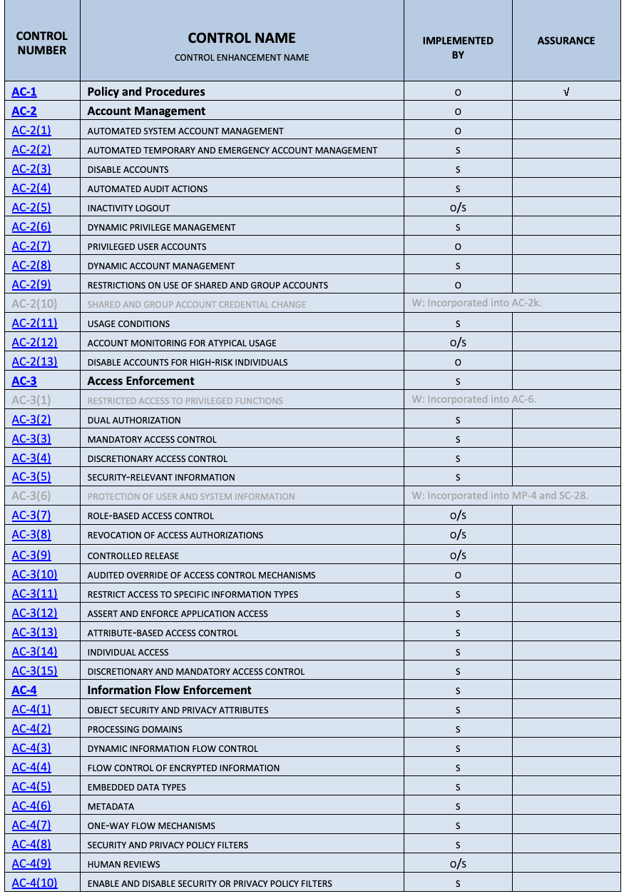
| 管理策番号 | 管理策名 管理策拡張名 | 実装主体 | 保証 |
|---|---|---|---|
| AC-1 | 方針及び手順 | O | √ |
| AC-2 | アカウント管理 | O | |
| AC-2(1) | システムアカウント管理の自動化 | O | |
| AC-2(2) | 一時アカウント及び緊急アカウント管理の自動化 | S | |
| AC-2(3) | アカウントの無効化 | S | |
| AC-2(4) | 監査措置の自動化 | S | |
| AC-2(5) | 非活動時のログアウト | O/S | |
| AC-2(6) | 動的な特権管理 | S | |
| AC-2(7) | 特権ユーザーアカウント | O | |
| AC-2(8) | 動的なアカウント管理 | S | |
| AC-2(9) | 共有アカウント及びグループアカウントの使用制限 | O | |
| AC-2(10) | 共有アカウント及びグループアカウントの認証情報の変更 | W：AC-2kに統合。 | |
| AC-2(11) | 使用条件 | S | |
| AC-2(12) | 通常とは異なる使用に対するアカウント監視 | O/S | |
| AC-2(13) | 高リスクの個人に対するアカウントの無効化 | O | |
| AC-3 | アクセスの強制 | S | |
| AC-3(1) | 特権機能へのアクセス制限 | W：AC-6に統合。 | |
| AC-3(2) | 二重認可 | S | |
| AC-3(3) | 強制アクセス制御 | S | |
| AC-3(4) | 任意アクセス制御 | S | |
| AC-3(5) | セキュリティに関連する情報 | S | |
| AC-3(6) | ユーザー情報及びシステム情報の保護 | W：MP-4及びSC-28に統合。 | |
| AC-3(7) | 役割に基づくアクセス制御 | O/S | |
| AC-3(8) | アクセス認可の取消し | O/S | |
| AC-3(9) | 制御された情報リリース | O/S | |
| AC-3(10) | 監査対象のアクセス制御メカニズムのオーバーライド | O | |
| AC-3(11) | 特定の情報種別へのアクセス制限 | S | |
| AC-3(12) | アプリケーションアクセスの申告及び強制 | S | |
| AC-3(13) | 属性に基づくアクセス制御 | S | |
| AC-3(14) | 個人によるアクセス | S | |
| AC-3(15) | 任意アクセス制御及び強制アクセス制御 | S | |
| AC-4 | 情報フローの強制 | S | |
| AC-4(1) | オブジェクトのセキュリティ属性及びプライバシー属性 | S | |
| AC-4(2) | 処理ドメイン | S | |
| AC-4(3) | 動的な情報フロー制御 | S | |
| AC-4(4) | 暗号化された情報のフロー制御 | S | |
| AC-4(5) | 埋め込まれたデータ型 | S | |
| AC-4(6) | メタデータ | S | |
| AC-4(7) | 一方向のフローメカニズム | S | |
| AC-4(8) | セキュリティ方針及びプライバシー方針のフィルタ | S | |
| AC-4(9) | 人によるレビュー | O/S | |
| AC-4(10) | セキュリティ方針又はプライバシー方針のフィルタの有効化及び無効化 | S | |
| AC-4(11) | セキュリティ方針又はプライバシー方針のフィルタの設定 | S | |
| AC-4(12) | データ型識別子 | S | |
| AC-4(13) | 方針に関連する下位構成要素への分解 | S | |
| AC-4(14) | セキュリティ方針又はプライバシー方針のフィルタの制約 | S | |
| AC-4(15) | 許可されていない情報の検出 | S | |
| AC-4(16) | 相互接続されたシステム上の情報転送 | W：AC-4に統合。 | |
| AC-4(17) | ドメイン認証 | S | |
| AC-4(18) | セキュリティ属性の結合 | W：AC-16に統合。 | |
| AC-4(19) | メタデータの妥当性検証 | S | |
| AC-4(20) | 承認されたソリューション | O | |
| AC-4(21) | 情報フローの物理的又は論理的分離 | O/S | |
| AC-4(22) | アクセスのみ | S | |
| AC-4(23) | リリース不可情報の変更 | O/S | |
| AC-4(24) | 内部正規化形式 | S | |
| AC-4(25) | データのサニタイズ | S | |
| AC-4(26) | フィルタリング措置の監査 | O/S | |
| AC-4(27) | 冗長かつ独立したフィルタリングメカニズム | S | |
| AC-4(28) | 直列のフィルタパイプライン | S | |
| AC-4(29) | フィルタオーケストレーションエンジン | O/S | |
| AC-4(30) | 複数のプロセスを使用するフィルタメカニズム | S | |
| AC-4(31) | 不合格コンテンツの転送防止 | S | |
| AC-4(32) | 情報転送に関するプロセス要件 | S | |
| AC-5 | 職務の分離 | O | |
| AC-6 | 最小特権 | O | |
| AC-6(1) | セキュリティ機能へのアクセスの認可 | O | |
| AC-6(2) | セキュリティ以外の機能への非特権アクセス | O | |
| AC-6(3) | 特権コマンドへのネットワークアクセス | O | |
| AC-6(4) | 処理ドメインの分離 | O/S | |
| AC-6(5) | 特権アカウント | O | |
| AC-6(6) | 組織外ユーザーによる特権アクセス | O | |
| AC-6(7) | ユーザー特権のレビュー | O | |
| AC-6(8) | コード実行の特権レベル | S | |
| AC-6(9) | 特権機能の使用の記録 | S | |
| AC-6(10) | 非特権ユーザーによる特権機能の実行の禁止 | S | |
| AC-7 | ログオン試行の失敗 | S | |
| AC-7(1) | アカウントの自動ロック | W：AC-7に統合。 | |
| AC-7(2) | モバイルデバイスのパージ又はワイプ | S | |
| AC-7(3) | 生体認証の試行回数の制限 | O | |
| AC-7(4) | 代替認証要素の使用 | O/S | |
| AC-8 | システム使用の通知 | O/S | |
| AC-9 | 前回のログオンの通知 | S | |
| AC-9(1) | 失敗したログオン | S | |
| AC-9(2) | 成功したログオン及び失敗したログオン | S | |
| AC-9(3) | アカウント変更の通知 | S | |
| AC-9(4) | 追加のログオン情報 | S | |
| AC-10 | 同時セッション制御 | S | |
| AC-11 | デバイスロック | S | |
| AC-11(1) | パターンを隠す表示 | S | |
| AC-12 | セッションの終了 | S | |
| AC-12(1) | ユーザーが開始するログアウト | O/S | |
| AC-12(2) | 終了メッセージ | S | |
| AC-12(3) | タイムアウト警告メッセージ | S | |
| AC-13 | 監督及びレビューによるアクセス制御 | W：AC-2及びAU-6に統合。 | |
| AC-14 | 識別又は認証なしで許可される行為 | O | |
| AC-14(1) | 必要な用途 | W：AC-14に統合。 | |
| AC-15 | マーキングの自動化 | W：MP-3に統合。 | |
| AC-16 | セキュリティ属性及びプライバシー属性 | O | |
| AC-16(1) | 属性の動的な関連付け | S | |
| AC-16(2) | 認可された個人による属性値の変更 | S | |
| AC-16(3) | システムによる属性の関連付けの維持 | S | |
| AC-16(4) | 認可された個人による属性の関連付け | S | |
| AC-16(5) | 出力対象のオブジェクト上の属性表示 | S | |
| AC-16(6) | 属性の関連付けの維持 | O | |
| AC-16(7) | 一貫した属性の解釈 | O | |
| AC-16(8) | 関連付けの技法及び技術 | S | |
| AC-16(9) | 属性の再割当て — 再格付けメカニズム | O | |
| AC-16(10) | 認可された個人による属性の設定 | O | |
| AC-17 | リモートアクセス | O | |
| AC-17(1) | 監視及び制御 | O/S | |
| AC-17(2) | 暗号化による機密性及び完全性の保護 | S | |
| AC-17(3) | 管理されたアクセス制御点 | S | |
| AC-17(4) | 特権コマンド及び特権アクセス | O | |
| AC-17(5) | 認可されていない接続の監視 | W：SI-4に統合。 | |
| AC-17(6) | メカニズムに関する情報の保護 | O | |
| AC-17(7) | セキュリティ機能へのアクセスに対する追加の保護 | W：AC-3(10)に統合。 | |
| AC-17(8) | 安全でないネットワークプロトコルの無効化 | W：CM-7に統合。 | |
| AC-17(9) | アクセスの切断又は無効化 | O | |
| AC-17(10) | リモートコマンドの認証 | S | |
| AC-18 | 無線アクセス | O | |
| AC-18(1) | 認証及び暗号化 | S | |
| AC-18(2) | 認可されていない接続の監視 | W：SI-4に統合。 | |
| AC-18(3) | 無線ネットワーク機能の無効化 | O/S | |
| AC-18(4) | ユーザーによる設定の制限 | O | |
| AC-18(5) | アンテナ及び送信電力レベル | O | |
| AC-19 | モバイルデバイスのアクセス制御 | O | |
| AC-19(1) | 書込み可能な可搬型記憶装置の使用 | W：MP-7に統合。 | |
| AC-19(2) | 個人所有の可搬型記憶装置の使用 | W：MP-7に統合。 | |
| AC-19(3) | 所有者を識別できない可搬型記憶装置の使用 | W：MP-7に統合。 | |
| AC-19(4) | 機密指定情報に対する制限 | O | |
| AC-19(5) | デバイス全体又はコンテナ単位の暗号化 | O | |
| AC-20 | 外部システムの使用 | O | |
| AC-20(1) | 認可された使用の制限 | O | |
| AC-20(2) | 可搬型記憶装置 — 使用の制限 | O | |
| AC-20(3) | 組織が所有しないシステム — 使用の制限 | O | |
| AC-20(4) | ネットワークからアクセス可能な記憶装置 — 使用の禁止 | O | |
| AC-20(5) | 可搬型記憶装置 — 使用の禁止 | O | |
| AC-21 | 情報共有 | O | |
| AC-21(1) | 意思決定支援の自動化 | S | |
| AC-21(2) | 情報の検索及び取得 | S | |
| AC-22 | 一般にアクセス可能なコンテンツ | O | |
| AC-23 | データマイニングからの保護 | O | |
| AC-24 | アクセス制御の判断 | O | |
| AC-24(1) | アクセス認可情報の伝送 | S | |
| AC-24(2) | ユーザー又はプロセスの識別情報なし | S | |
| AC-25 | 参照モニタ | S | √ |
TABLE C-2: AWARENESS AND TRAINING FAMILY
表C-2：意識向上及び訓練ファミリー
| CONTROL NUMBER | CONTROL NAME CONTROL ENHANCEMENT NAME | IMPLEMENTED BY | ASSURANCE |
|---|---|---|---|
| AT-1 | Policy and Procedures | O | √ |
| AT-2 | Literacy Training and Awareness | O | √ |
| AT-2(1) | PRACTICAL EXERCISES | O | √ |
| AT-2(2) | INSIDER THREAT | O | √ |
| AT-2(3) | SOCIAL ENGINEERING AND MINING | O | √ |
| AT-2(4) | SUSPICIOUS COMMUNICATIONS AND ANOMALOUS SYSTEM BEHAVIOR | O | √ |
| AT-2(5) | ADVANCED PERSISTENT THREAT | O | √ |
| AT-2(6) | CYBER THREAT ENVIRONMENT | O | √ |
| AT-3 | Role-Based Training | O | √ |
| AT-3(1) | ENVIRONMENTAL CONTROLS | O | √ |
| AT-3(2) | PHYSICAL SECURITY CONTROLS | O | √ |
| AT-3(3) | PRACTICAL EXERCISES | O | √ |
| AT-3(4) | SUSPICIOUS COMMUNICATIONS AND ANOMALOUS SYSTEM BEHAVIOR | W: Incorporated into AT-2(4). | |
| AT-3(5) | PROCESSING PERSONALLY IDENTIFIABLE INFORMATION | O | √ |
| AT-4 | Training Records | O | √ |
| AT-5 | Contacts with Security Groups and Associations | W: Incorporated into PM-15. | |
| AT-6 | Training Feedback | O | √ |
原本PDFの抜粋画像
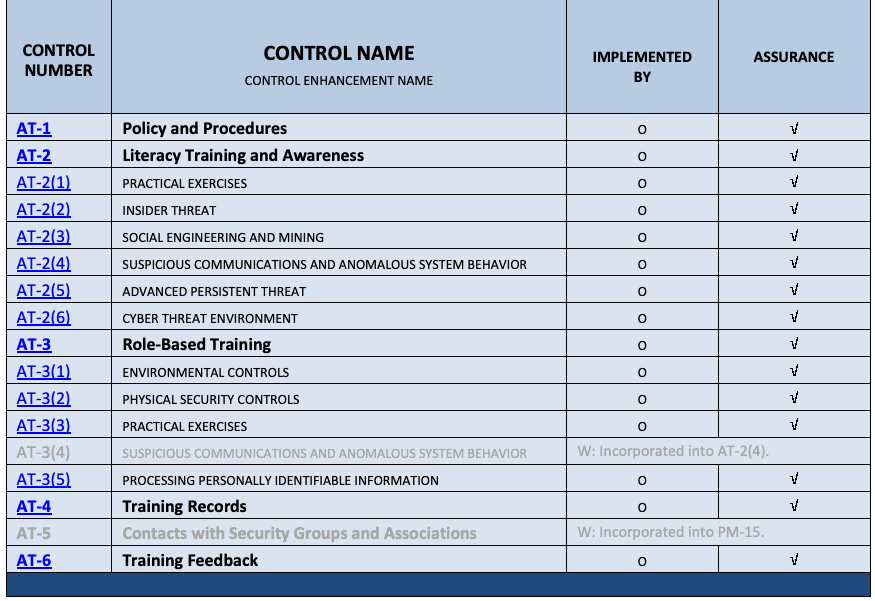
| 管理策番号 | 管理策名 管理策拡張名 | 実装主体 | 保証 |
|---|---|---|---|
| AT-1 | 方針および手順 | O | √ |
| AT-2 | リテラシー教育および意識向上 | O | √ |
| AT-2(1) | 実践演習 | O | √ |
| AT-2(2) | 内部脅威 | O | √ |
| AT-2(3) | ソーシャルエンジニアリングおよびマイニング | O | √ |
| AT-2(4) | 不審な通信および異常なシステム動作 | O | √ |
| AT-2(5) | 高度で持続的な脅威 | O | √ |
| AT-2(6) | サイバー脅威環境 | O | √ |
| AT-3 | 役割別訓練 | O | √ |
| AT-3(1) | 環境管理策 | O | √ |
| AT-3(2) | 物理的セキュリティ管理策 | O | √ |
| AT-3(3) | 実践演習 | O | √ |
| AT-3(4) | 不審な通信および異常なシステム動作 | W：AT-2(4)に統合。 | |
| AT-3(5) | 個人を識別できる情報の処理 | O | √ |
| AT-4 | 訓練記録 | O | √ |
| AT-5 | セキュリティグループおよび協会との連絡 | W：PM-15に統合。 | |
| AT-6 | 訓練に関するフィードバック | O | √ |
TABLE C-3: AUDIT AND ACCOUNTABILITY FAMILY
表C-3：監査及び責任追跡性ファミリー
| CONTROL NUMBER | CONTROL NAME CONTROL ENHANCEMENT NAME | IMPLEMENTED BY | ASSURANCE |
|---|---|---|---|
| AU-1 | Policy and Procedures | O | √ |
| AU-2 | Event Logging | O | |
| AU-2(1) | COMPILATION OF AUDIT RECORDS FROM MULTIPLE SOURCES | W: Incorporated into AU-12. | |
| AU-2(2) | SELECTION OF AUDIT EVENTS BY COMPONENT | W: Incorporated into AU-12. | |
| AU-2(3) | REVIEWS AND UPDATES | W: Incorporated into AU-2. | |
| AU-2(4) | PRIVILEGED FUNCTIONS | W: Incorporated into AC-6(9). | |
| AU-3 | Content of Audit Records | S | |
| AU-3(1) | ADDITIONAL AUDIT INFORMATION | S | |
| AU-3(2) | CENTRALIZED MANAGEMENT OF PLANNED AUDIT RECORD CONTENT | W: Incorporated into PL-9. | |
| AU-3(3) | LIMIT PERSONALLY IDENTIFIABLE INFORMATION ELEMENTS | O | |
| AU-4 | Audit Log Storage Capacity | O/S | |
| AU-4(1) | TRANSFER TO ALTERNATE STORAGE | O/S | |
| AU-5 | Response to Audit Logging Process Failures | S | |
| AU-5(1) | STORAGE CAPACITY WARNING | S | |
| AU-5(2) | REAL-TIME ALERTS | S | |
| AU-5(3) | CONFIGURABLE TRAFFIC VOLUME THRESHOLDS | S | |
| AU-5(4) | SHUTDOWN ON FAILURE | S | |
| AU-5(5) | ALTERNATE AUDIT LOGGING CAPABILITY | O | |
| AU-6 | Audit Record Review, Analysis, and Reporting | O | √ |
| AU-6(1) | AUTOMATED PROCESS INTEGRATION | O | √ |
| AU-6(2) | AUTOMATED SECURITY ALERTS | W: Incorporated into SI-4. | |
| AU-6(3) | CORRELATE AUDIT RECORD REPOSITORIES | O | √ |
| AU-6(4) | CENTRAL REVIEW AND ANALYSIS | S | √ |
| AU-6(5) | INTEGRATED ANALYSIS OF AUDIT RECORDS | O | √ |
| AU-6(6) | CORRELATION WITH PHYSICAL MONITORING | O | √ |
| AU-6(7) | PERMITTED ACTIONS | O | √ |
| AU-6(8) | FULL TEXT ANALYSIS OF PRIVILEGED COMMANDS | O | √ |
| AU-6(9) | CORRELATION WITH INFORMATION FROM NONTECHNICAL SOURCES | O | √ |
| AU-6(10) | AUDIT LEVEL ADJUSTMENT | W: Incorporated into AU-6. | |
| AU-7 | Audit Record Reduction and Report Generation | S | √ |
| AU-7(1) | AUTOMATIC PROCESSING | S | √ |
| AU-7(2) | AUTOMATIC SORT AND SEARCH | W: Incorporated into AU-7(1). | |
| AU-8 | Time Stamps | S | |
| AU-8(1) | SYNCHRONIZATION WITH AUTHORITATIVE TIME SOURCE | W: Moved to SC-45(1). | |
| AU-8(2) | SECONDARY AUTHORITATIVE TIME SOURCE | W: Moved to SC-45(2). | |
| AU-9 | Protection of Audit Information | S | |
| AU-9(1) | HARDWARE WRITE-ONCE MEDIA | S | |
| AU-9(2) | STORE ON SEPARATE PHYSICAL SYSTEMS OR COMPONENTS | S | |
| AU-9(3) | CRYPTOGRAPHIC PROTECTION | S | |
| AU-9(4) | ACCESS BY SUBSET OF PRIVILEGED USERS | O | |
| AU-9(5) | DUAL AUTHORIZATION | O/S | |
| AU-9(6) | READ-ONLY ACCESS | O/S | |
| AU-9(7) | STORE ON COMPONENT WITH DIFFERENT OPERATING SYSTEM | O | |
| AU-10 | Non-repudiation | S | √ |
| AU-10(1) | ASSOCIATION OF IDENTITIES | S | √ |
| AU-10(2) | VALIDATE BINDING OF INFORMATION PRODUCER IDENTITY | S | √ |
| AU-10(3) | CHAIN OF CUSTODY | O/S | √ |
| AU-10(4) | VALIDATE BINDING OF INFORMATION REVIEWER IDENTITY | S | √ |
| AU-10(5) | DIGITAL SIGNATURES | W: Incorporated into SI-7. | |
| AU-11 | Audit Record Retention | O | |
| AU-11(1) | LONG-TERM RETRIEVAL CAPABILITY | O | √ |
| AU-12 | Audit Record Generation | S | |
| AU-12(1) | SYSTEM-WIDE AND TIME-CORRELATED AUDIT TRAIL | S | |
| AU-12(2) | STANDARDIZED FORMATS | S | |
| AU-12(3) | CHANGES BY AUTHORIZED INDIVIDUALS | S | |
| AU-12(4) | QUERY PARAMETER AUDITS OF PERSONALLY IDENTIFIABLE INFORMATION | S | |
| AU-13 | Monitoring for Information Disclosure | O | √ |
| AU-13(1) | USE OF AUTOMATED TOOLS | O/S | √ |
| AU-13(2) | REVIEW OF MONITORED SITES | O | √ |
| AU-13(3) | UNAUTHORIZED REPLICATION OF INFORMATION | O/S | √ |
| AU-14 | Session Audit | S | √ |
| AU-14(1) | SYSTEM START-UP | S | √ |
| AU-14(2) | CAPTURE AND RECORD CONTENT | W: Incorporated into AU-14. | |
| AU-14(3) | REMOTE VIEWING AND LISTENING | S | √ |
| AU-15 | Alternate Audit Logging Capability | W: Moved to AU-5(5). | |
| AU-16 | Cross-Organizational Audit Logging | O | |
| AU-16(1) | IDENTITY PRESERVATION | O | |
| AU-16(2) | SHARING OF AUDIT INFORMATION | O | |
| AU-16(3) | DISASSOCIABILITY | O | |
原本PDFの抜粋画像
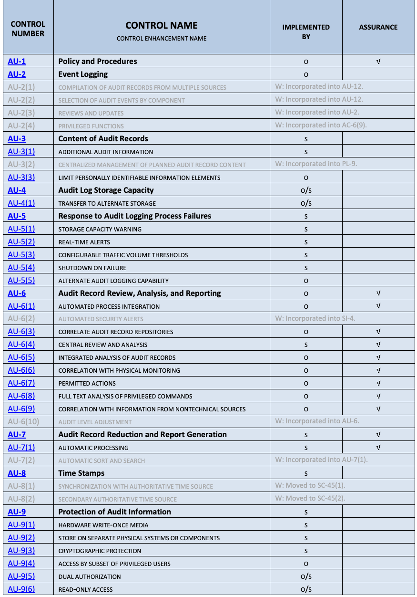
| 管理策番号 | 管理策名 管理策拡張名 | 実装主体 | 保証 |
|---|---|---|---|
| AU-1 | 方針及び手順 | O | √ |
| AU-2 | イベントの記録 | O | |
| AU-2(1) | 複数の情報源からの監査記録の集約 | W：AU-12に統合。 | |
| AU-2(2) | 構成要素ごとの監査イベントの選択 | W：AU-12に統合。 | |
| AU-2(3) | レビュー及び更新 | W：AU-2に統合。 | |
| AU-2(4) | 特権機能 | W：AC-6(9)に統合。 | |
| AU-3 | 監査記録の内容 | S | |
| AU-3(1) | 追加の監査情報 | S | |
| AU-3(2) | 予定する監査記録内容の一元管理 | W：PL-9に統合。 | |
| AU-3(3) | 個人を識別できる情報の要素の制限 | O | |
| AU-4 | 監査ログのストレージ容量 | O/S | |
| AU-4(1) | 代替ストレージへの転送 | O/S | |
| AU-5 | 監査ログ記録処理の障害への対応 | S | |
| AU-5(1) | ストレージ容量の警告 | S | |
| AU-5(2) | リアルタイムのアラート | S | |
| AU-5(3) | 設定可能なトラフィック量のしきい値 | S | |
| AU-5(4) | 障害時の停止 | S | |
| AU-5(5) | 代替の監査ログ記録機能 | O | |
| AU-6 | 監査記録のレビュー、分析及び報告 | O | √ |
| AU-6(1) | 自動化された処理の統合 | O | √ |
| AU-6(2) | 自動化されたセキュリティアラート | W：SI-4に統合。 | |
| AU-6(3) | 監査記録リポジトリ間の相関付け | O | √ |
| AU-6(4) | 一元的なレビュー及び分析 | S | √ |
| AU-6(5) | 監査記録の統合分析 | O | √ |
| AU-6(6) | 物理的監視との相関付け | O | √ |
| AU-6(7) | 許可される操作 | O | √ |
| AU-6(8) | 特権コマンドの全文分析 | O | √ |
| AU-6(9) | 技術以外の情報源から得た情報との相関付け | O | √ |
| AU-6(10) | 監査レベルの調整 | W：AU-6に統合。 | |
| AU-7 | 監査記録の削減及び報告書の生成 | S | √ |
| AU-7(1) | 自動処理 | S | √ |
| AU-7(2) | 自動的な並べ替え及び検索 | W：AU-7(1)に統合。 | |
| AU-8 | タイムスタンプ | S | |
| AU-8(1) | 基準となる時刻源との同期 | W：SC-45(1)へ移動。 | |
| AU-8(2) | 第2の基準となる時刻源 | W：SC-45(2)へ移動。 | |
| AU-9 | 監査情報の保護 | S | |
| AU-9(1) | 一度だけ書き込めるハードウェアメディア | S | |
| AU-9(2) | 別の物理システム又は構成要素への保存 | S | |
| AU-9(3) | 暗号による保護 | S | |
| AU-9(4) | 特権ユーザーの一部によるアクセス | O | |
| AU-9(5) | 二者による認可 | O/S | |
| AU-9(6) | 読み取り専用アクセス | O/S | |
| AU-9(7) | 異なるオペレーティングシステムを使用する構成要素への保存 | O | |
| AU-10 | 否認防止 | S | √ |
| AU-10(1) | 識別情報の関連付け | S | √ |
| AU-10(2) | 情報作成者の識別情報との結び付けの検証 | S | √ |
| AU-10(3) | 保管・引渡しの連鎖（チェーン・オブ・カストディ） | O/S | √ |
| AU-10(4) | 情報レビュー者の識別情報との結び付けの検証 | S | √ |
| AU-10(5) | デジタル署名 | W：SI-7に統合。 | |
| AU-11 | 監査記録の保持 | O | |
| AU-11(1) | 長期間にわたる検索・取得機能 | O | √ |
| AU-12 | 監査記録の生成 | S | |
| AU-12(1) | システム全体で時刻による相関付けが行われる監査証跡 | S | |
| AU-12(2) | 標準化された形式 | S | |
| AU-12(3) | 認可された者による変更 | S | |
| AU-12(4) | 個人を識別できる情報に関するクエリーパラメーターの監査 | S | |
| AU-13 | 情報開示の監視 | O | √ |
| AU-13(1) | 自動化ツールの使用 | O/S | √ |
| AU-13(2) | 監視対象サイトのレビュー | O | √ |
| AU-13(3) | 情報の無許可の複製 | O/S | √ |
| AU-14 | セッションの監査 | S | √ |
| AU-14(1) | システムの起動 | S | √ |
| AU-14(2) | 内容の取得及び記録 | W：AU-14に統合。 | |
| AU-14(3) | 遠隔での視聴 | S | √ |
| AU-15 | 代替の監査ログ記録機能 | W：AU-5(5)へ移動。 | |
| AU-16 | 組織間の監査ログ記録 | O | |
| AU-16(1) | 識別情報の保持 | O | |
| AU-16(2) | 監査情報の共有 | O | |
| AU-16(3) | 非関連付け性 | O | |
TABLE C-4: ASSESSMENT, AUTHORIZATION, AND MONITORING FAMILY
表C-4：評価、認可及び監視ファミリー
| CONTROL NUMBER | CONTROL NAME CONTROL ENHANCEMENT NAME | IMPLEMENTED BY | ASSURANCE |
|---|---|---|---|
| CA-1 | Policy and Procedures | O | √ |
| CA-2 | Control Assessments | O | √ |
| CA-2(1) | INDEPENDENT ASSESSORS | O | √ |
| CA-2(2) | SPECIALIZED ASSESSMENTS | O | √ |
| CA-2(3) | LEVERAGING RESULTS FROM EXTERNAL ORGANIZATIONS | O | √ |
| CA-3 | Information Exchange | O | √ |
| CA-3(1) | UNCLASSIFIED NATIONAL SECURITY SYSTEM CONNECTIONS | W: Moved to SC-7(25). | |
| CA-3(2) | CLASSIFIED NATIONAL SECURITY SYSTEM CONNECTIONS | W: Moved to SC-7(26). | |
| CA-3(3) | UNCLASSIFIED NON-NATIONAL SECURITY SYSTEM CONNECTIONS | W: Moved to SC-7(27). | |
| CA-3(4) | CONNECTIONS TO PUBLIC NETWORKS | W: Moved to SC-7(28). | |
| CA-3(5) | RESTRICTIONS ON EXTERNAL SYSTEM CONNECTIONS | W: Incorporated into SC-7(5). | |
| CA-3(6) | TRANSFER AUTHORIZATIONS | O/S | √ |
| CA-3(7) | TRANSITIVE INFORMATION EXCHANGES | O/S | √ |
| CA-4 | Security Certification | W: Incorporated into CA-2. | |
| CA-5 | Plan of Action and Milestones | O | √ |
| CA-5(1) | AUTOMATION SUPPORT FOR ACCURACY AND CURRENCY | O | √ |
| CA-6 | Authorization | O | √ |
| CA-6(1) | JOINT AUTHORIZATION — INTRA-ORGANIZATION | O | √ |
| CA-6(2) | JOINT AUTHORIZATION — INTER-ORGANIZATION | O | √ |
| CA-7 | Continuous Monitoring | O | √ |
| CA-7(1) | INDEPENDENT ASSESSMENT | O | √ |
| CA-7(2) | TYPES OF ASSESSMENTS | W: Incorporated into CA-2. | |
| CA-7(3) | TREND ANALYSES | O | √ |
| CA-7(4) | RISK MONITORING | O/S | √ |
| CA-7(5) | CONSISTENCY ANALYSIS | O | √ |
| CA-7(6) | AUTOMATION SUPPORT FOR MONITORING | O/S | √ |
| CA-8 | Penetration Testing | O | √ |
| CA-8(1) | INDEPENDENT PENETRATION TESTING AGENT OR TEAM | O | √ |
| CA-8(2) | RED TEAM EXERCISES | O | √ |
| CA-8(3) | FACILITY PENETRATION TESTING | O | √ |
| CA-9 | Internal System Connections | O | √ |
| CA-9(1) | COMPLIANCE CHECKS | O/S | √ |
原本PDFの抜粋画像
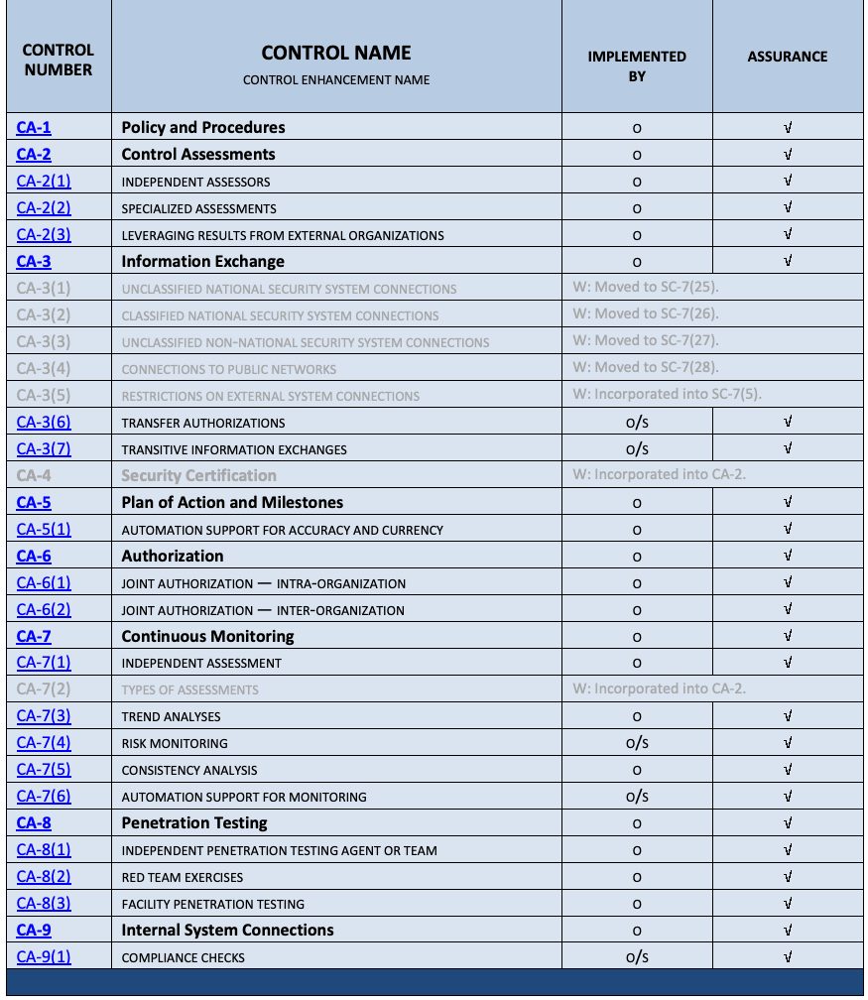
| 管理策番号 | 管理策名 管理策拡張名 | 実装主体 | 保証 |
|---|---|---|---|
| CA-1 | 方針及び手順 | O | √ |
| CA-2 | 管理策の評価 | O | √ |
| CA-2(1) | 独立した評価者 | O | √ |
| CA-2(2) | 専門的な評価 | O | √ |
| CA-2(3) | 外部組織の結果の活用 | O | √ |
| CA-3 | 情報交換 | O | √ |
| CA-3(1) | 非機密の国家安全保障システムとの接続 | W：SC-7(25)へ移動。 | |
| CA-3(2) | 機密の国家安全保障システムとの接続 | W：SC-7(26)へ移動。 | |
| CA-3(3) | 国家安全保障システム以外の非機密システムとの接続 | W：SC-7(27)へ移動。 | |
| CA-3(4) | 公衆ネットワークとの接続 | W：SC-7(28)へ移動。 | |
| CA-3(5) | 外部システムとの接続の制限 | W：SC-7(5)に統合。 | |
| CA-3(6) | 転送の認可 | O/S | √ |
| CA-3(7) | 推移的な情報交換 | O/S | √ |
| CA-4 | セキュリティ認証 | W：CA-2に統合。 | |
| CA-5 | 行動計画及びマイルストーン | O | √ |
| CA-5(1) | 正確性及び最新性を確保するための自動化支援 | O | √ |
| CA-6 | 認可 | O | √ |
| CA-6(1) | 共同認可：組織内 | O | √ |
| CA-6(2) | 共同認可：組織間 | O | √ |
| CA-7 | 継続的監視 | O | √ |
| CA-7(1) | 独立した評価 | O | √ |
| CA-7(2) | 評価の種類 | W：CA-2に統合。 | |
| CA-7(3) | 傾向分析 | O | √ |
| CA-7(4) | リスクの監視 | O/S | √ |
| CA-7(5) | 一貫性の分析 | O | √ |
| CA-7(6) | 監視のための自動化支援 | O/S | √ |
| CA-8 | 侵入テスト | O | √ |
| CA-8(1) | 独立した侵入テストの実施者又はチーム | O | √ |
| CA-8(2) | レッドチーム演習 | O | √ |
| CA-8(3) | 施設への侵入テスト | O | √ |
| CA-9 | 内部システムの接続 | O | √ |
| CA-9(1) | 適合性の確認 | O/S | √ |
TABLE C-5: CONFIGURATION MANAGEMENT FAMILY
表C-5：構成管理ファミリー
| CONTROL NUMBER | CONTROL NAME CONTROL ENHANCEMENT NAME | IMPLEMENTED BY | ASSURANCE |
|---|---|---|---|
| CM-1 | Policy and Procedures | O | √ |
| CM-2 | Baseline Configuration | O | √ |
| CM-2(1) | REVIEWS AND UPDATES | W: Incorporated into CM-2. | |
| CM-2(2) | AUTOMATION SUPPORT FOR ACCURACY AND CURRENCY | O | √ |
| CM-2(3) | RETENTION OF PREVIOUS CONFIGURATIONS | O | √ |
| CM-2(4) | UNAUTHORIZED SOFTWARE | W: Incorporated into CM-7. | |
| CM-2(5) | AUTHORIZED SOFTWARE | W: Incorporated into CM-7. | |
| CM-2(6) | DEVELOPMENT AND TEST ENVIRONMENTS | O | √ |
| CM-2(7) | CONFIGURE SYSTEMS AND COMPONENTS FOR HIGH-RISK AREAS | O | √ |
| CM-3 | Configuration Change Control | O | √ |
| CM-3(1) | AUTOMATED DOCUMENTATION, NOTIFICATION, AND PROHIBITION OF CHANGES | O | √ |
| CM-3(2) | TESTING, VALIDATION, AND DOCUMENTATION OF CHANGES | O | √ |
| CM-3(3) | AUTOMATED CHANGE IMPLEMENTATION | O | |
| CM-3(4) | SECURITY AND PRIVACY REPRESENTATIVES | O | |
| CM-3(5) | AUTOMATED SECURITY RESPONSE | S | |
| CM-3(6) | CRYPTOGRAPHY MANAGEMENT | O | |
| CM-3(7) | REVIEW SYSTEM CHANGES | O | |
| CM-3(8) | PREVENT OR RESTRICT CONFIGURATION CHANGES | S | |
| CM-4 | Impact Analyses | O | √ |
| CM-4(1) | SEPARATE TEST ENVIRONMENTS | O | √ |
| CM-4(2) | VERIFICATION OF CONTROLS | O | √ |
| CM-5 | Access Restrictions for Change | O | |
| CM-5(1) | AUTOMATED ACCESS ENFORCEMENT AND AUDIT RECORDS | S | |
| CM-5(2) | REVIEW SYSTEM CHANGES | W: Incorporated into CM-3(7). | |
| CM-5(3) | SIGNED COMPONENTS | W: Moved to CM-14. | |
| CM-5(4) | DUAL AUTHORIZATION | O/S | |
| CM-5(5) | PRIVILEGE LIMITATION FOR PRODUCTION AND OPERATION | O | |
| CM-5(6) | LIMIT LIBRARY PRIVILEGES | O/S | |
| CM-5(7) | AUTOMATIC IMPLEMENTATION OF SECURITY SAFEGUARDS | W: Incorporated into SI-7. | |
| CM-6 | Configuration Settings | O/S | |
| CM-6(1) | AUTOMATED MANAGEMENT, APPLICATION, AND VERIFICATION | O | |
| CM-6(2) | RESPOND TO UNAUTHORIZED CHANGES | O | |
| CM-6(3) | UNAUTHORIZED CHANGE DETECTION | W: Incorporated into SI-7. | |
| CM-6(4) | CONFORMANCE DEMONSTRATION | W: Incorporated into CM-4. | |
| CM-7 | Least Functionality | O/S | |
| CM-7(1) | PERIODIC REVIEW | O/S | |
| CM-7(2) | PREVENT PROGRAM EXECUTION | S | |
| CM-7(3) | REGISTRATION COMPLIANCE | O | |
| CM-7(4) | UNAUTHORIZED SOFTWARE — DENY-BY-EXCEPTION | O/S | |
| CM-7(5) | AUTHORIZED SOFTWARE — ALLOW-BY-EXCEPTION | O/S | |
| CM-7(6) | CONFINED ENVIRONMENTS WITH LIMITED PRIVILEGES | O | √ |
| CM-7(7) | CODE EXECUTION IN PROTECTED ENVIRONMENTS | O/S | √ |
| CM-7(8) | BINARY OR MACHINE EXECUTABLE CODE | O/S | √ |
| CM-7(9) | PROHIBITING THE USE OF UNAUTHORIZED HARDWARE | O/S | √ |
| CM-8 | System Component Inventory | O | √ |
| CM-8(1) | UPDATES DURING INSTALLATION AND REMOVAL | O | √ |
| CM-8(2) | AUTOMATED MAINTENANCE | O | √ |
| CM-8(3) | AUTOMATED UNAUTHORIZED COMPONENT DETECTION | O | √ |
| CM-8(4) | ACCOUNTABILITY INFORMATION | O | √ |
| CM-8(5) | NO DUPLICATE ACCOUNTING OF COMPONENTS | W: Incorporated into CM-8. | |
| CM-8(6) | ASSESSED CONFIGURATIONS AND APPROVED DEVIATIONS | O | √ |
| CM-8(7) | CENTRALIZED REPOSITORY | O | √ |
| CM-8(8) | AUTOMATED LOCATION TRACKING | O | √ |
| CM-8(9) | ASSIGNMENT OF COMPONENTS TO SYSTEMS | O | √ |
| CM-9 | Configuration Management Plan | O | |
| CM-9(1) | ASSIGNMENT OF RESPONSIBILITY | O | |
| CM-10 | Software Usage Restrictions | O | |
| CM-10(1) | OPEN-SOURCE SOFTWARE | O | |
| CM-11 | User-Installed Software | O | |
| CM-11(1) | ALERTS FOR UNAUTHORIZED INSTALLATIONS | W: Incorporated into CM-8(3). | |
| CM-11(2) | SOFTWARE INSTALLATION WITH PRIVILEGED STATUS | S | |
| CM-11(3) | AUTOMATED ENFORCEMENT AND MONITORING | S | √ |
| CM-12 | Information Location | O | √ |
| CM-12(1) | AUTOMATED TOOLS TO SUPPORT INFORMATION LOCATION | O | √ |
| CM-13 | Data Action Mapping | O | |
| CM-14 | Signed Components | O/S | √ |
原本PDFの抜粋画像
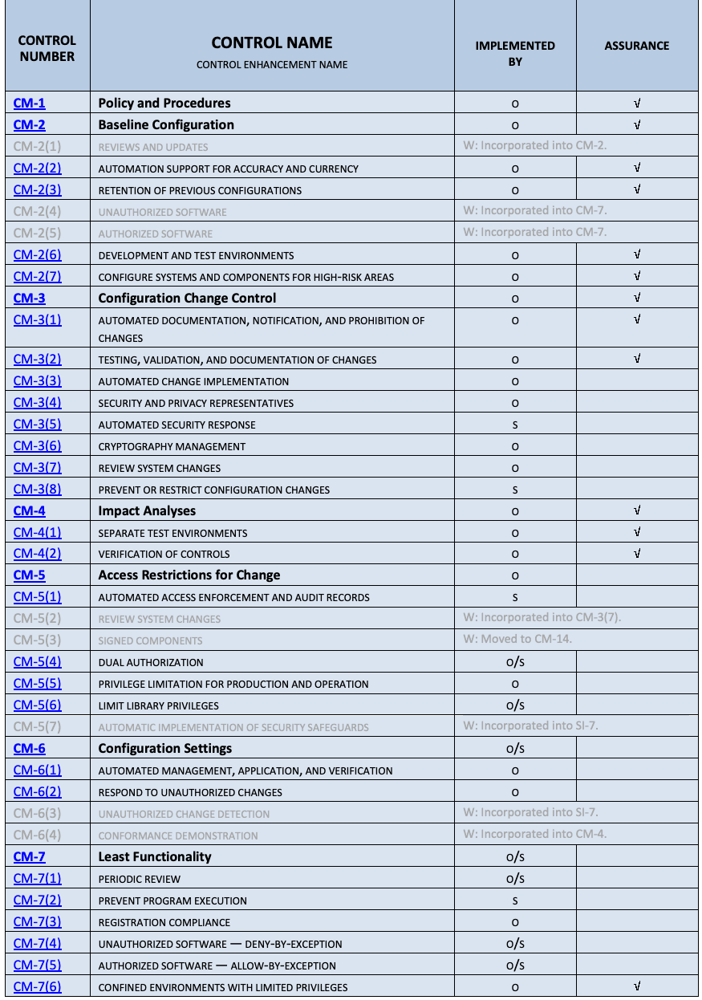
| 管理策番号 | 管理策名 管理策拡張名 | 実装主体 | 保証 |
|---|---|---|---|
| CM-1 | 方針及び手順 | O | √ |
| CM-2 | ベースライン構成 | O | √ |
| CM-2(1) | レビュー及び更新 | W：CM-2に統合。 | |
| CM-2(2) | 正確性及び最新性を確保するための自動化支援 | O | √ |
| CM-2(3) | 以前の構成の保持 | O | √ |
| CM-2(4) | 認可されていないソフトウェア | W：CM-7に統合。 | |
| CM-2(5) | 認可されたソフトウェア | W：CM-7に統合。 | |
| CM-2(6) | 開発環境及びテスト環境 | O | √ |
| CM-2(7) | 高リスク地域向けのシステム及び構成要素の構成 | O | √ |
| CM-3 | 構成変更の管理 | O | √ |
| CM-3(1) | 変更の文書化、通知及び禁止の自動化 | O | √ |
| CM-3(2) | 変更のテスト、妥当性確認及び文書化 | O | √ |
| CM-3(3) | 変更の自動適用 | O | |
| CM-3(4) | セキュリティ及びプライバシーの担当者 | O | |
| CM-3(5) | 自動化されたセキュリティ対応 | S | |
| CM-3(6) | 暗号の管理 | O | |
| CM-3(7) | システム変更のレビュー | O | |
| CM-3(8) | 構成変更の防止又は制限 | S | |
| CM-4 | 影響分析 | O | √ |
| CM-4(1) | 分離したテスト環境 | O | √ |
| CM-4(2) | 管理策の検証 | O | √ |
| CM-5 | 変更に関するアクセス制限 | O | |
| CM-5(1) | アクセス制御の強制適用及び監査記録の自動化 | S | |
| CM-5(2) | システム変更のレビュー | W：CM-3(7)に統合。 | |
| CM-5(3) | 署名された構成要素 | W：CM-14へ移動。 | |
| CM-5(4) | 二者による認可 | O/S | |
| CM-5(5) | 本番環境及び運用における権限の制限 | O | |
| CM-5(6) | ライブラリーに対する権限の制限 | O/S | |
| CM-5(7) | セキュリティ保護措置の自動実施 | W：SI-7に統合。 | |
| CM-6 | 構成設定 | O/S | |
| CM-6(1) | 管理、適用及び検証の自動化 | O | |
| CM-6(2) | 無許可の変更への対応 | O | |
| CM-6(3) | 無許可の変更の検出 | W：SI-7に統合。 | |
| CM-6(4) | 適合性の実証 | W：CM-4に統合。 | |
| CM-7 | 最小限の機能 | O/S | |
| CM-7(1) | 定期的なレビュー | O/S | |
| CM-7(2) | プログラム実行の防止 | S | |
| CM-7(3) | 登録要件の遵守 | O | |
| CM-7(4) | 認可されていないソフトウェア：例外として指定したものを拒否 | O/S | |
| CM-7(5) | 認可されたソフトウェア：例外として指定したものを許可 | O/S | |
| CM-7(6) | 権限を制限した隔離環境 | O | √ |
| CM-7(7) | 保護された環境でのコード実行 | O/S | √ |
| CM-7(8) | バイナリー又は機械実行可能コード | O/S | √ |
| CM-7(9) | 認可されていないハードウェアの使用禁止 | O/S | √ |
| CM-8 | システム構成要素のインベントリー | O | √ |
| CM-8(1) | 導入及び除去時の更新 | O | √ |
| CM-8(2) | 維持管理の自動化 | O | √ |
| CM-8(3) | 認可されていない構成要素の自動検出 | O | √ |
| CM-8(4) | 説明責任に関する情報 | O | √ |
| CM-8(5) | 構成要素の重複計上の防止 | W：CM-8に統合。 | |
| CM-8(6) | 評価済みの構成及び承認された逸脱 | O | √ |
| CM-8(7) | 一元的なリポジトリ | O | √ |
| CM-8(8) | 所在の自動追跡 | O | √ |
| CM-8(9) | システムへの構成要素の割当て | O | √ |
| CM-9 | 構成管理計画 | O | |
| CM-9(1) | 責任の割当て | O | |
| CM-10 | ソフトウェアの使用制限 | O | |
| CM-10(1) | オープンソースソフトウェア | O | |
| CM-11 | ユーザーがインストールしたソフトウェア | O | |
| CM-11(1) | 無許可のインストールに関するアラート | W：CM-8(3)に統合。 | |
| CM-11(2) | 特権を用いたソフトウェアのインストール | S | |
| CM-11(3) | 強制適用及び監視の自動化 | S | √ |
| CM-12 | 情報の所在 | O | √ |
| CM-12(1) | 情報の所在の把握を支援する自動化ツール | O | √ |
| CM-13 | データ操作の対応付け | O | |
| CM-14 | 署名された構成要素 | O/S | √ |
TABLE C-6: CONTINGENCY PLANNING FAMILY
表C-6：緊急時対応計画ファミリー
| CONTROL NUMBER | CONTROL NAME CONTROL ENHANCEMENT NAME | IMPLEMENTED BY | ASSURANCE |
|---|---|---|---|
| CP-1 | Policy and Procedures | O | √ |
| CP-2 | Contingency Plan | O | |
| CP-2(1) | COORDINATE WITH RELATED PLANS | O | |
| CP-2(2) | CAPACITY PLANNING | O | |
| CP-2(3) | RESUME MISSION AND BUSINESS FUNCTIONS | O | |
| CP-2(4) | RESUME ALL MISSION AND BUSINESS FUNCTIONS | W: Incorporated into CP-2(3). | |
| CP-2(5) | CONTINUE MISSION AND BUSINESS FUNCTIONS | O | |
| CP-2(6) | ALTERNATE PROCESSING AND STORAGE SITES | O | |
| CP-2(7) | COORDINATE WITH EXTERNAL SERVICE PROVIDERS | O | |
| CP-2(8) | IDENTIFY CRITICAL ASSETS | O | |
| CP-3 | Contingency Training | O | √ |
| CP-3(1) | SIMULATED EVENTS | O | √ |
| CP-3(2) | MECHANISMS USED IN TRAINING ENVIRONMENTS | O | √ |
| CP-4 | Contingency Plan Testing | O | √ |
| CP-4(1) | COORDINATE WITH RELATED PLANS | O | √ |
| CP-4(2) | ALTERNATE PROCESSING SITE | O | √ |
| CP-4(3) | AUTOMATED TESTING | O | √ |
| CP-4(4) | FULL RECOVERY AND RECONSTITUTION | O | √ |
| CP-4(5) | SELF-CHALLENGE | O/S | √ |
| CP-5 | Contingency Plan Update | W: Incorporated into CP-2. | |
| CP-6 | Alternate Storage Site | O | |
| CP-6(1) | SEPARATION FROM PRIMARY SITE | O | |
| CP-6(2) | RECOVERY TIME AND RECOVERY POINT OBJECTIVES | O | |
| CP-6(3) | ACCESSIBILITY | O | |
| CP-7 | Alternate Processing Site | O | |
| CP-7(1) | SEPARATION FROM PRIMARY SITE | O | |
| CP-7(2) | ACCESSIBILITY | O | |
| CP-7(3) | PRIORITY OF SERVICE | O | |
| CP-7(4) | PREPARATION FOR USE | O | |
| CP-7(5) | EQUIVALENT INFORMATION SECURITY SAFEGUARDS | W: Incorporated into CP-7. | |
| CP-7(6) | INABILITY TO RETURN TO PRIMARY SITE | O | |
| CP-8 | Telecommunications Services | O | |
| CP-8(1) | PRIORITY OF SERVICE PROVISIONS | O | |
| CP-8(2) | SINGLE POINTS OF FAILURE | O | |
| CP-8(3) | SEPARATION OF PRIMARY AND ALTERNATE PROVIDERS | O | |
| CP-8(4) | PROVIDER CONTINGENCY PLAN | O | |
| CP-8(5) | ALTERNATE TELECOMMUNICATION SERVICE TESTING | O | |
| CP-9 | System Backup | O | |
| CP-9(1) | TESTING FOR RELIABILITY AND INTEGRITY | O | |
| CP-9(2) | TEST RESTORATION USING SAMPLING | O | |
| CP-9(3) | SEPARATE STORAGE FOR CRITICAL INFORMATION | O | |
| CP-9(4) | PROTECTION FROM UNAUTHORIZED MODIFICATION | W: Incorporated into CP-9. | |
| CP-9(5) | TRANSFER TO ALTERNATE STORAGE SITE | O | |
| CP-9(6) | REDUNDANT SECONDARY SYSTEM | O | |
| CP-9(7) | DUAL AUTHORIZATION FOR DELETION OR DESTRUCTION | O | |
| CP-9(8) | CRYPTOGRAPHIC PROTECTION | O | |
| CP-10 | System Recovery and Reconstitution | O | |
| CP-10(1) | CONTINGENCY PLAN TESTING | W: Incorporated into CP-4. | |
| CP-10(2) | TRANSACTION RECOVERY | O | |
| CP-10(3) | COMPENSATING SECURITY CONTROLS | W: Addressed through tailoring. | |
| CP-10(4) | RESTORE WITHIN TIME PERIOD | O | |
| CP-10(5) | FAILOVER CAPABILITY | W: Incorporated into SI-13. | |
| CP-10(6) | COMPONENT PROTECTION | O | |
| CP-11 | Alternate Communications Protocols | O | |
| CP-12 | Safe Mode | S | √ |
| CP-13 | Alternative Security Mechanisms | O/S | |
原本PDFの抜粋画像
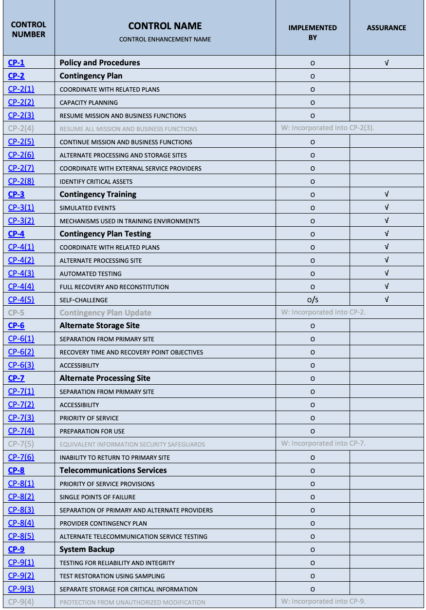
| 管理策番号 | 管理策名 管理策拡張名 | 実装主体 | 保証 |
|---|---|---|---|
| CP-1 | 方針及び手順 | O | √ |
| CP-2 | 緊急時対応計画 | O | |
| CP-2(1) | 関連する計画との調整 | O | |
| CP-2(2) | 容量計画 | O | |
| CP-2(3) | 使命及び業務の機能の再開 | O | |
| CP-2(4) | 使命及び業務の全機能の再開 | W：CP-2(3)に統合。 | |
| CP-2(5) | 使命及び業務の機能の継続 | O | |
| CP-2(6) | 代替の処理施設及び保管施設 | O | |
| CP-2(7) | 外部サービス提供者との調整 | O | |
| CP-2(8) | 重要な資産の特定 | O | |
| CP-3 | 緊急時対応訓練 | O | √ |
| CP-3(1) | 模擬事象 | O | √ |
| CP-3(2) | 訓練環境で使用する仕組み | O | √ |
| CP-4 | 緊急時対応計画のテスト | O | √ |
| CP-4(1) | 関連する計画との調整 | O | √ |
| CP-4(2) | 代替処理施設 | O | √ |
| CP-4(3) | テストの自動化 | O | √ |
| CP-4(4) | 完全な復旧及び再構成 | O | √ |
| CP-4(5) | 自ら障害を発生させる試験（セルフチャレンジ） | O/S | √ |
| CP-5 | 緊急時対応計画の更新 | W：CP-2に統合。 | |
| CP-6 | 代替保管施設 | O | |
| CP-6(1) | 主施設からの分離 | O | |
| CP-6(2) | 目標復旧時間及び目標復旧時点 | O | |
| CP-6(3) | アクセス可能性 | O | |
| CP-7 | 代替処理施設 | O | |
| CP-7(1) | 主施設からの分離 | O | |
| CP-7(2) | アクセス可能性 | O | |
| CP-7(3) | サービスの優先順位 | O | |
| CP-7(4) | 使用の準備 | O | |
| CP-7(5) | 同等の情報セキュリティ保護措置 | W：CP-7に統合。 | |
| CP-7(6) | 主施設へ戻れない場合 | O | |
| CP-8 | 電気通信サービス | O | |
| CP-8(1) | サービスの優先順位に関する規定 | O | |
| CP-8(2) | 単一障害点 | O | |
| CP-8(3) | 主提供者と代替提供者の分離 | O | |
| CP-8(4) | 提供者の緊急時対応計画 | O | |
| CP-8(5) | 代替電気通信サービスのテスト | O | |
| CP-9 | システムのバックアップ | O | |
| CP-9(1) | 信頼性及び完全性のテスト | O | |
| CP-9(2) | サンプリングによる復元テスト | O | |
| CP-9(3) | 重要な情報の分離保管 | O | |
| CP-9(4) | 無許可の変更からの保護 | W：CP-9に統合。 | |
| CP-9(5) | 代替保管施設への転送 | O | |
| CP-9(6) | 冗長な副システム | O | |
| CP-9(7) | 削除又は破壊に対する二者による認可 | O | |
| CP-9(8) | 暗号による保護 | O | |
| CP-10 | システムの復旧及び再構成 | O | |
| CP-10(1) | 緊急時対応計画のテスト | W：CP-4に統合。 | |
| CP-10(2) | トランザクションの復旧 | O | |
| CP-10(3) | 代替のセキュリティ管理策 | W：テーラリングにより対応。 | |
| CP-10(4) | 所定の期間内の復元 | O | |
| CP-10(5) | フェイルオーバー機能 | W：SI-13に統合。 | |
| CP-10(6) | 構成要素の保護 | O | |
| CP-11 | 代替通信プロトコル | O | |
| CP-12 | 安全モード | S | √ |
| CP-13 | 代替のセキュリティの仕組み | O/S | |
TABLE C-7: IDENTIFICATION AND AUTHENTICATION FAMILY
表C-7：識別及び認証ファミリー
| CONTROL NUMBER | CONTROL NAME CONTROL ENHANCEMENT NAME | IMPLEMENTED BY | ASSURANCE |
|---|---|---|---|
| IA-1 | Policy and Procedures | O | √ |
| IA-2 | Identification and Authentication (Organizational Users) | O/S | |
| IA-2(1) | MULTI-FACTOR AUTHENTICATION TO PRIVILEGED ACCOUNTS | S | |
| IA-2(2) | MULTI-FACTOR AUTHENTICATION TO NON-PRIVILEGED ACCOUNTS | S | |
| IA-2(3) | LOCAL ACCESS TO PRIVILEGED ACCOUNTS | W: Incorporated into IA-2(1). | |
| IA-2(4) | LOCAL ACCESS TO NON-PRIVILEGED ACCOUNTS | W: Incorporated into IA-2(2). | |
| IA-2(5) | INDIVIDUAL AUTHENTICATION WITH GROUP AUTHENTICATION | O/S | |
| IA-2(6) | ACCESS TO ACCOUNTS — SEPARATE DEVICE | S | |
| IA-2(7) | NETWORK ACCESS TO NON-PRIVILEGED ACCOUNTS — SEPARATE DEVICE | W: Incorporated into IA-2(6). | |
| IA-2(8) | ACCESS TO ACCOUNTS — REPLAY RESISTANT | S | |
| IA-2(9) | NETWORK ACCESS TO NON-PRIVILEGED ACCOUNTS — REPLAY RESISTANT | W: Incorporated into IA-2(8). | |
| IA-2(10) | SINGLE SIGN-ON | S | |
| IA-2(11) | REMOTE ACCESS — SEPARATE DEVICE | W: Incorporated into IA-2(6). | |
| IA-2(12) | ACCEPTANCE OF PIV CREDENTIALS | S | |
| IA-2(13) | OUT-OF-BAND AUTHENTICATION | S | |
| IA-3 | Device Identification and Authentication | S | |
| IA-3(1) | CRYPTOGRAPHIC BIDIRECTIONAL AUTHENTICATION | S | |
| IA-3(2) | CRYPTOGRAPHIC BIDIRECTIONAL NETWORK AUTHENTICATION | W: Incorporated into IA-3(1). | |
| IA-3(3) | DYNAMIC ADDRESS ALLOCATION | O | |
| IA-3(4) | DEVICE ATTESTATION | O | |
| IA-4 | Identifier Management | O | |
| IA-4(1) | PROHIBIT ACCOUNT IDENTIFIERS AS PUBLIC IDENTIFIERS | O | |
| IA-4(2) | SUPERVISOR AUTHORIZATION | W: Incorporated into IA-12(1). | |
| IA-4(3) | MULTIPLE FORMS OF CERTIFICATION | W: Incorporated into IA-12(2). | |
| IA-4(4) | IDENTIFY USER STATUS | O | |
| IA-4(5) | DYNAMIC MANAGEMENT | S | |
| IA-4(6) | CROSS-ORGANIZATION MANAGEMENT | O | |
| IA-4(7) | IN-PERSON REGISTRATION | W: Incorporated into IA-12(4). | |
| IA-4(8) | PAIRWISE PSEUDONYMOUS IDENTIFIERS | O | |
| IA-4(9) | ATTRIBUTE MAINTENANCE AND PROTECTION | O/S | |
| IA-5 | Authenticator Management | O/S | |
| IA-5(1) | PASSWORD-BASED AUTHENTICATION | O/S | |
| IA-5(2) | PUBLIC KEY-BASED AUTHENTICATION | S | |
| IA-5(3) | IN-PERSON OR TRUSTED EXTERNAL PARTY REGISTRATION | W: Incorporated into IA-12(4). | |
| IA-5(4) | AUTOMATED SUPPORT FOR PASSWORD STRENGTH DETERMINATION | W: Incorporated into IA-5(1). | |
| IA-5(5) | CHANGE AUTHENTICATORS PRIOR TO DELIVERY | O | |
| IA-5(6) | PROTECTION OF AUTHENTICATORS | O | |
| IA-5(7) | NO EMBEDDED UNENCRYPTED STATIC AUTHENTICATORS | O | |
| IA-5(8) | MULTIPLE SYSTEM ACCOUNTS | O | |
| IA-5(9) | FEDERATED CREDENTIAL MANAGEMENT | O | |
| IA-5(10) | DYNAMIC CREDENTIAL BINDING | S | |
| IA-5(11) | HARDWARE TOKEN-BASED AUTHENTICATION | W: Incorporated into IA-2(1) and IA-2(2). | |
| IA-5(12) | BIOMETRIC AUTHENTICATION PERFORMANCE | S | |
| IA-5(13) | EXPIRATION OF CACHED AUTHENTICATORS | S | |
| IA-5(14) | MANAGING CONTENT OF PKI TRUST STORES | O | |
| IA-5(15) | GSA-APPROVED PRODUCTS AND SERVICES | O | |
| IA-5(16) | IN-PERSON OR TRUSTED EXTERNAL PARTY AUTHENTICATOR ISSUANCE | O | |
| IA-5(17) | PRESENTATION ATTACK DETECTION FOR BIOMETRIC AUTHENTICATORS | S | |
| IA-5(18) | PASSWORD MANAGERS | S | |
| IA-6 | Authentication Feedback | S | |
| IA-7 | Cryptographic Module Authentication | S | |
| IA-8 | Identification and Authentication (Non-Organizational Users) | S | |
| IA-8(1) | ACCEPTANCE OF PIV CREDENTIALS FROM OTHER AGENCIES | S | |
| IA-8(2) | ACCEPTANCE OF EXTERNAL AUTHENTICATORS | S | |
| IA-8(3) | USE OF FICAM-APPROVED PRODUCTS | W: Incorporated into IA-8(2). | |
| IA-8(4) | USE OF DEFINED PROFILES | S | |
| IA-8(5) | ACCEPTANCE OF PIV-I CREDENTIALS | S | |
| IA-8(6) | DISASSOCIABILITY | O | |
| IA-9 | Service Identification and Authentication | O/S | |
| IA-9(1) | INFORMATION EXCHANGE | W: Incorporated into IA-9. | |
| IA-9(2) | TRANSMISSION OF DECISIONS | W: Incorporated into IA-9. | |
| IA-10 | Adaptive Authentication | O | |
| IA-11 | Re-authentication | O/S | |
| IA-12 | Identity Proofing | O | |
| IA-12(1) | SUPERVISOR AUTHORIZATION | O | |
| IA-12(2) | IDENTITY EVIDENCE | O | |
| IA-12(3) | IDENTITY EVIDENCE VALIDATION AND VERIFICATION | O | |
| IA-12(4) | IN-PERSON VALIDATION AND VERIFICATION | O | |
| IA-12(5) | ADDRESS CONFIRMATION | O | |
| IA-12(6) | ACCEPT EXTERNALLY-PROOFED IDENTITIES | O | |
原本PDFの抜粋画像
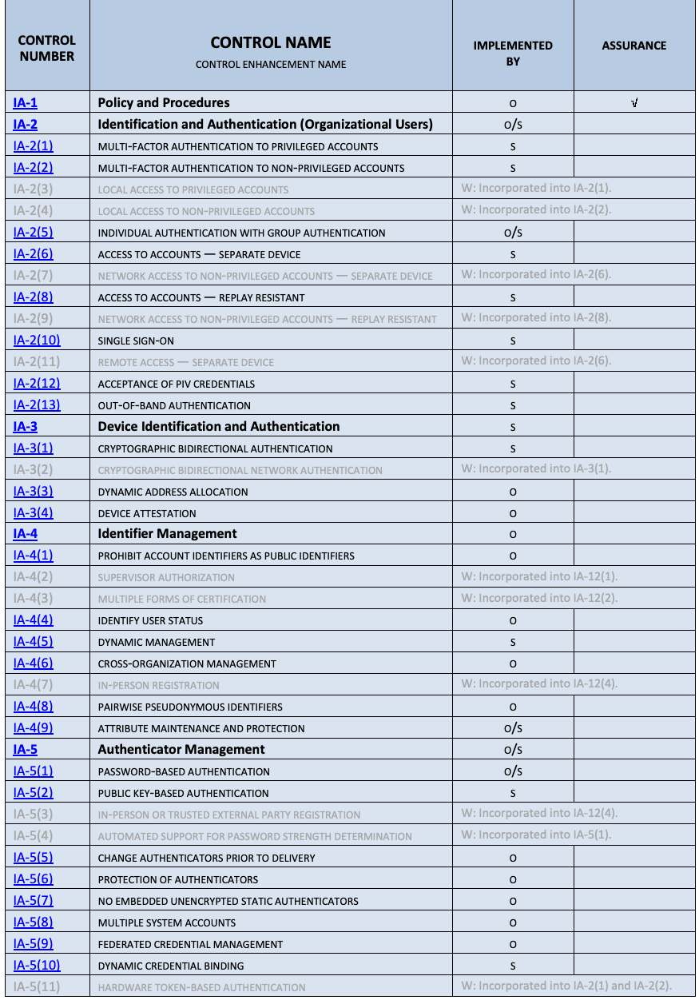
| 管理策番号 | 管理策名 管理策拡張名 | 実装主体 | 保証 |
|---|---|---|---|
| IA-1 | 方針及び手順 | O | √ |
| IA-2 | 識別及び認証（組織のユーザー） | O/S | |
| IA-2(1) | 特権アカウントへの多要素認証 | S | |
| IA-2(2) | 非特権アカウントへの多要素認証 | S | |
| IA-2(3) | 特権アカウントへのローカルアクセス | W：IA-2(1)に統合。 | |
| IA-2(4) | 非特権アカウントへのローカルアクセス | W：IA-2(2)に統合。 | |
| IA-2(5) | グループ認証に伴う個別認証 | O/S | |
| IA-2(6) | アカウントへのアクセス：別のデバイス | S | |
| IA-2(7) | 非特権アカウントへのネットワークアクセス：別のデバイス | W：IA-2(6)に統合。 | |
| IA-2(8) | アカウントへのアクセス：リプレイ耐性 | S | |
| IA-2(9) | 非特権アカウントへのネットワークアクセス：リプレイ耐性 | W：IA-2(8)に統合。 | |
| IA-2(10) | シングルサインオン | S | |
| IA-2(11) | リモートアクセス：別のデバイス | W：IA-2(6)に統合。 | |
| IA-2(12) | PIVクレデンシャルの受入れ | S | |
| IA-2(13) | 帯域外認証 | S | |
| IA-3 | デバイスの識別及び認証 | S | |
| IA-3(1) | 暗号による双方向認証 | S | |
| IA-3(2) | 暗号による双方向のネットワーク認証 | W：IA-3(1)に統合。 | |
| IA-3(3) | 動的なアドレス割当て | O | |
| IA-3(4) | デバイスのアテステーション | O | |
| IA-4 | 識別子の管理 | O | |
| IA-4(1) | アカウント識別子を公開識別子として使用することの禁止 | O | |
| IA-4(2) | 上司による認可 | W：IA-12(1)に統合。 | |
| IA-4(3) | 複数の形式の証明 | W：IA-12(2)に統合。 | |
| IA-4(4) | ユーザーの身分の識別 | O | |
| IA-4(5) | 動的な管理 | S | |
| IA-4(6) | 組織間の管理 | O | |
| IA-4(7) | 対面での登録 | W：IA-12(4)に統合。 | |
| IA-4(8) | ペアワイズ仮名識別子 | O | |
| IA-4(9) | 属性の維持及び保護 | O/S | |
| IA-5 | 認証器の管理 | O/S | |
| IA-5(1) | パスワードに基づく認証 | O/S | |
| IA-5(2) | 公開鍵に基づく認証 | S | |
| IA-5(3) | 対面又は信頼できる外部関係者による登録 | W：IA-12(4)に統合。 | |
| IA-5(4) | パスワード強度の判定の自動化支援 | W：IA-5(1)に統合。 | |
| IA-5(5) | 引渡し前の認証器の変更 | O | |
| IA-5(6) | 認証器の保護 | O | |
| IA-5(7) | 暗号化していない固定の認証器の埋め込み禁止 | O | |
| IA-5(8) | 複数システムのアカウント | O | |
| IA-5(9) | フェデレーションによるクレデンシャル管理 | O | |
| IA-5(10) | クレデンシャルの動的な結び付け | S | |
| IA-5(11) | ハードウェアトークンに基づく認証 | W：IA-2(1)及びIA-2(2)に統合。 | |
| IA-5(12) | 生体認証の性能 | S | |
| IA-5(13) | キャッシュされた認証器の有効期限 | S | |
| IA-5(14) | PKIトラストストアの内容の管理 | O | |
| IA-5(15) | GSAが承認した製品及びサービス | O | |
| IA-5(16) | 対面又は信頼できる外部関係者による認証器の発行 | O | |
| IA-5(17) | 生体認証器に対する提示攻撃の検出 | S | |
| IA-5(18) | パスワードマネージャー | S | |
| IA-6 | 認証のフィードバック | S | |
| IA-7 | 暗号モジュールの認証 | S | |
| IA-8 | 識別及び認証（組織外のユーザー） | S | |
| IA-8(1) | 他の機関からのPIVクレデンシャルの受入れ | S | |
| IA-8(2) | 外部の認証器の受入れ | S | |
| IA-8(3) | FICAMが承認した製品の使用 | W：IA-8(2)に統合。 | |
| IA-8(4) | 定義されたプロファイルの使用 | S | |
| IA-8(5) | PIV-Iクレデンシャルの受入れ | S | |
| IA-8(6) | 非関連付け性 | O | |
| IA-9 | サービスの識別及び認証 | O/S | |
| IA-9(1) | 情報交換 | W：IA-9に統合。 | |
| IA-9(2) | 判断結果の伝達 | W：IA-9に統合。 | |
| IA-10 | 適応的認証 | O | |
| IA-11 | 再認証 | O/S | |
| IA-12 | 身元確認 | O | |
| IA-12(1) | 上司による認可 | O | |
| IA-12(2) | 身元の証拠 | O | |
| IA-12(3) | 身元の証拠の妥当性確認及び検証 | O | |
| IA-12(4) | 対面での妥当性確認及び検証 | O | |
| IA-12(5) | 住所の確認 | O | |
| IA-12(6) | 外部で身元確認された識別情報の受入れ | O | |
TABLE C-8: INCIDENT RESPONSE FAMILY
表C-8：インシデント対応ファミリー
| CONTROL NUMBER | CONTROL NAME CONTROL ENHANCEMENT NAME | IMPLEMENTED BY | ASSURANCE |
|---|---|---|---|
| IR-1 | Policy and Procedures | O | √ |
| IR-2 | Incident Response Training | O | √ |
| IR-2(1) | SIMULATED EVENTS | O | √ |
| IR-2(2) | AUTOMATED TRAINING ENVIRONMENTS | O | √ |
| IR-2(3) | BREACH | O | √ |
| IR-3 | Incident Response Testing | O | √ |
| IR-3(1) | AUTOMATED TESTING | O | √ |
| IR-3(2) | COORDINATION WITH RELATED PLANS | O | √ |
| IR-3(3) | CONTINUOUS IMPROVEMENT | O | √ |
| IR-4 | Incident Handling | O | |
| IR-4(1) | AUTOMATED INCIDENT HANDLING PROCESSES | O | |
| IR-4(2) | DYNAMIC RECONFIGURATION | O | |
| IR-4(3) | CONTINUITY OF OPERATIONS | O | |
| IR-4(4) | INFORMATION CORRELATION | O | |
| IR-4(5) | AUTOMATIC DISABLING OF SYSTEM | O/S | |
| IR-4(6) | INSIDER THREATS | O | |
| IR-4(7) | INSIDER THREATS — INTRA-ORGANIZATION COORDINATION | O | |
| IR-4(8) | CORRELATION WITH EXTERNAL ORGANIZATIONS | O | |
| IR-4(9) | DYNAMIC RESPONSE CAPABILITY | O | |
| IR-4(10) | SUPPLY CHAIN COORDINATION | O | |
| IR-4(11) | INTEGRATED INCIDENT RESPONSE TEAM | O | |
| IR-4(12) | MALICIOUS CODE AND FORENSIC ANALYSIS | O | |
| IR-4(13) | BEHAVIOR ANALYSIS | O | |
| IR-4(14) | SECURITY OPERATIONS CENTER | O/S | |
| IR-4(15) | PUBLIC RELATIONS AND REPUTATION REPAIR | O | |
| IR-5 | Incident Monitoring | O | √ |
| IR-5(1) | AUTOMATED TRACKING, DATA COLLECTION, AND ANALYSIS | O | √ |
| IR-6 | Incident Reporting | O | |
| IR-6(1) | AUTOMATED REPORTING | O | |
| IR-6(2) | VULNERABILITIES RELATED TO INCIDENTS | O | |
| IR-6(3) | SUPPLY CHAIN COORDINATION | O | |
| IR-7 | Incident Response Assistance | O | |
| IR-7(1) | AUTOMATION SUPPORT FOR AVAILABILITY OF INFORMATION AND SUPPORT | O | |
| IR-7(2) | COORDINATION WITH EXTERNAL PROVIDERS | O | |
| IR-8 | Incident Response Plan | O | |
| IR-8(1) | BREACHES | O | |
| IR-9 | Information Spillage Response | O | |
| IR-9(1) | RESPONSIBLE PERSONNEL | W: Incorporated into IR-9. | |
| IR-9(2) | TRAINING | O | |
| IR-9(3) | POST-SPILL OPERATIONS | O | |
| IR-9(4) | EXPOSURE TO UNAUTHORIZED PERSONNEL | O | |
| IR-10 | Integrated Information Security Analysis Team | W: Moved to IR-4(11). | |
原本PDFの抜粋画像
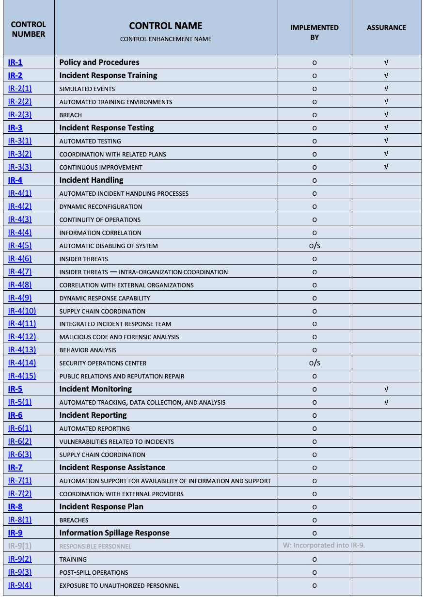
| 管理策番号 | 管理策名 管理策拡張名 | 実装主体 | 保証 |
|---|---|---|---|
| IR-1 | 方針及び手順 | O | √ |
| IR-2 | インシデント対応訓練 | O | √ |
| IR-2(1) | 模擬事象 | O | √ |
| IR-2(2) | 自動化された訓練環境 | O | √ |
| IR-2(3) | 情報の侵害 | O | √ |
| IR-3 | インシデント対応のテスト | O | √ |
| IR-3(1) | テストの自動化 | O | √ |
| IR-3(2) | 関連する計画との調整 | O | √ |
| IR-3(3) | 継続的な改善 | O | √ |
| IR-4 | インシデントの処理 | O | |
| IR-4(1) | インシデント処理手順の自動化 | O | |
| IR-4(2) | 動的な再構成 | O | |
| IR-4(3) | 業務の継続 | O | |
| IR-4(4) | 情報の相関付け | O | |
| IR-4(5) | システムの自動無効化 | O/S | |
| IR-4(6) | 内部脅威 | O | |
| IR-4(7) | 内部脅威：組織内の調整 | O | |
| IR-4(8) | 外部組織との相関付け | O | |
| IR-4(9) | 動的な対応能力 | O | |
| IR-4(10) | サプライチェーンの調整 | O | |
| IR-4(11) | 統合されたインシデント対応チーム | O | |
| IR-4(12) | 悪意のあるコードの分析及びフォレンジック分析 | O | |
| IR-4(13) | 行動分析 | O | |
| IR-4(14) | セキュリティ運用センター | O/S | |
| IR-4(15) | 広報及び評判の回復 | O | |
| IR-5 | インシデントの監視 | O | √ |
| IR-5(1) | 追跡、データ収集及び分析の自動化 | O | √ |
| IR-6 | インシデントの報告 | O | |
| IR-6(1) | 報告の自動化 | O | |
| IR-6(2) | インシデントに関連する脆弱性 | O | |
| IR-6(3) | サプライチェーンの調整 | O | |
| IR-7 | インシデント対応の支援 | O | |
| IR-7(1) | 情報及び支援を利用可能にするための自動化支援 | O | |
| IR-7(2) | 外部提供者との調整 | O | |
| IR-8 | インシデント対応計画 | O | |
| IR-8(1) | 情報の侵害 | O | |
| IR-9 | 情報流出への対応 | O | |
| IR-9(1) | 責任を負う要員 | W：IR-9に統合。 | |
| IR-9(2) | 訓練 | O | |
| IR-9(3) | 情報流出後の運用 | O | |
| IR-9(4) | 権限のない要員が情報に接した場合 | O | |
| IR-10 | 統合された情報セキュリティ分析チーム | W：IR-4(11)へ移動。 | |
TABLE C-9: MAINTENANCE FAMILY
表C-9：保守ファミリー
| CONTROL NUMBER | CONTROL NAME CONTROL ENHANCEMENT NAME | IMPLEMENTED BY | ASSURANCE |
|---|---|---|---|
| MA-1 | Policy and Procedures | O | √ |
| MA-2 | Controlled Maintenance | O | |
| MA-2(1) | RECORD CONTENT | W: Incorporated into MA-2. | |
| MA-2(2) | AUTOMATED MAINTENANCE ACTIVITIES | O | |
| MA-3 | Maintenance Tools | O | |
| MA-3(1) | INSPECT TOOLS | O | |
| MA-3(2) | INSPECT MEDIA | O | |
| MA-3(3) | PREVENT UNAUTHORIZED REMOVAL | O | |
| MA-3(4) | RESTRICTED TOOL USE | O/S | |
| MA-3(5) | EXECUTION WITH PRIVILEGE | O/S | |
| MA-3(6) | SOFTWARE UPDATES AND PATCHES | O/S | |
| MA-4 | Nonlocal Maintenance | O | |
| MA-4(1) | LOGGING AND REVIEW | O | |
| MA-4(2) | DOCUMENT NONLOCAL MAINTENANCE | W: Incorporated into MA-1 and MA-4. | |
| MA-4(3) | COMPARABLE SECURITY AND SANITIZATION | O | |
| MA-4(4) | AUTHENTICATION AND SEPARATION OF MAINTENANCE SESSIONS | O | |
| MA-4(5) | APPROVALS AND NOTIFICATIONS | O | |
| MA-4(6) | CRYPTOGRAPHIC PROTECTION | O/S | |
| MA-4(7) | DISCONNECT VERIFICATION | S | |
| MA-5 | Maintenance Personnel | O | |
| MA-5(1) | INDIVIDUALS WITHOUT APPROPRIATE ACCESS | O | |
| MA-5(2) | SECURITY CLEARANCES FOR CLASSIFIED SYSTEMS | O | |
| MA-5(3) | CITIZENSHIP REQUIREMENTS FOR CLASSIFIED SYSTEMS | O | |
| MA-5(4) | FOREIGN NATIONALS | O | |
| MA-5(5) | NON-SYSTEM MAINTENANCE | O | |
| MA-6 | Timely Maintenance | O | |
| MA-6(1) | PREVENTIVE MAINTENANCE | O | |
| MA-6(2) | PREDICTIVE MAINTENANCE | O | |
| MA-6(3) | AUTOMATED SUPPORT FOR PREDICTIVE MAINTENANCE | O | |
| MA-7 | Field Maintenance | O | |
原本PDFの抜粋画像
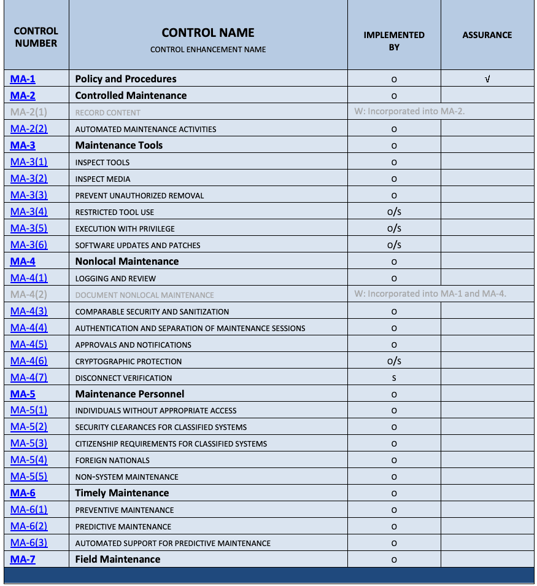
| 管理策番号 | 管理策名 管理策拡張名 | 実装主体 | 保証 |
|---|---|---|---|
| MA-1 | 方針及び手順 | O | √ |
| MA-2 | 管理された保守 | O | |
| MA-2(1) | 記録の内容 | W：MA-2に統合。 | |
| MA-2(2) | 保守作業の自動化 | O | |
| MA-3 | 保守ツール | O | |
| MA-3(1) | ツールの検査 | O | |
| MA-3(2) | 媒体の検査 | O | |
| MA-3(3) | 無許可の持出しの防止 | O | |
| MA-3(4) | ツールの使用制限 | O/S | |
| MA-3(5) | 特権を用いた実行 | O/S | |
| MA-3(6) | ソフトウェアの更新及びパッチ | O/S | |
| MA-4 | 非ローカル保守 | O | |
| MA-4(1) | ログの記録及びレビュー | O | |
| MA-4(2) | 非ローカル保守の文書化 | W：MA-1及びMA-4に統合。 | |
| MA-4(3) | 同等のセキュリティ及びサニタイズ | O | |
| MA-4(4) | 保守セッションの認証及び分離 | O | |
| MA-4(5) | 承認及び通知 | O | |
| MA-4(6) | 暗号による保護 | O/S | |
| MA-4(7) | 切断の検証 | S | |
| MA-5 | 保守要員 | O | |
| MA-5(1) | 適切なアクセス権を持たない者 | O | |
| MA-5(2) | 機密システムに関するセキュリティクリアランス | O | |
| MA-5(3) | 機密システムに関する国籍要件 | O | |
| MA-5(4) | 外国籍の者 | O | |
| MA-5(5) | システム以外の保守 | O | |
| MA-6 | 適時の保守 | O | |
| MA-6(1) | 予防保守 | O | |
| MA-6(2) | 予知保守 | O | |
| MA-6(3) | 予知保守の自動化支援 | O | |
| MA-7 | 現地保守 | O | |
TABLE C-10: MEDIA PROTECTION FAMILY
表C-10：媒体保護ファミリー
| CONTROL NUMBER | CONTROL NAME CONTROL ENHANCEMENT NAME | IMPLEMENTED BY | ASSURANCE |
|---|---|---|---|
| MP-1 | Policy and Procedures | O | √ |
| MP-2 | Media Access | O | |
| MP-2(1) | AUTOMATED RESTRICTED ACCESS | W: Incorporated into MP-4(2). | |
| MP-2(2) | CRYPTOGRAPHIC PROTECTION | W: Incorporated into SC-28(1). | |
| MP-3 | Media Marking | O | |
| MP-4 | Media Storage | O | |
| MP-4(1) | CRYPTOGRAPHIC PROTECTION | W: Incorporated into SC-28(1). | |
| MP-4(2) | AUTOMATED RESTRICTED ACCESS | O | |
| MP-5 | Media Transport | O | |
| MP-5(1) | PROTECTION OUTSIDE OF CONTROLLED AREAS | W: Incorporated into MP-5. | |
| MP-5(2) | DOCUMENTATION OF ACTIVITIES | W: Incorporated into MP-5. | |
| MP-5(3) | CUSTODIANS | O | |
| MP-5(4) | CRYPTOGRAPHIC PROTECTION | W: Incorporated into SC-28(1). | |
| MP-6 | Media Sanitization | O | |
| MP-6(1) | REVIEW, APPROVE, TRACK, DOCUMENT, AND VERIFY | O | |
| MP-6(2) | EQUIPMENT TESTING | O | |
| MP-6(3) | NONDESTRUCTIVE TECHNIQUES | O | |
| MP-6(4) | CONTROLLED UNCLASSIFIED INFORMATION | W: Incorporated into MP-6. | |
| MP-6(5) | CLASSIFIED INFORMATION | W: Incorporated into MP-6. | |
| MP-6(6) | MEDIA DESTRUCTION | W: Incorporated into MP-6. | |
| MP-6(7) | DUAL AUTHORIZATION | O | |
| MP-6(8) | REMOTE PURGING OR WIPING OF INFORMATION | O | |
| MP-7 | Media Use | O | |
| MP-7(1) | PROHIBIT USE WITHOUT OWNER | W: Incorporated into MP-7. | |
| MP-7(2) | PROHIBIT USE OF SANITIZATION-RESISTANT MEDIA | O | |
| MP-8 | Media Downgrading | O | |
| MP-8(1) | DOCUMENTATION OF PROCESS | O | |
| MP-8(2) | EQUIPMENT TESTING | O | |
| MP-8(3) | CONTROLLED UNCLASSIFIED INFORMATION | O | |
| MP-8(4) | CLASSIFIED INFORMATION | O | |
原本PDFの抜粋画像
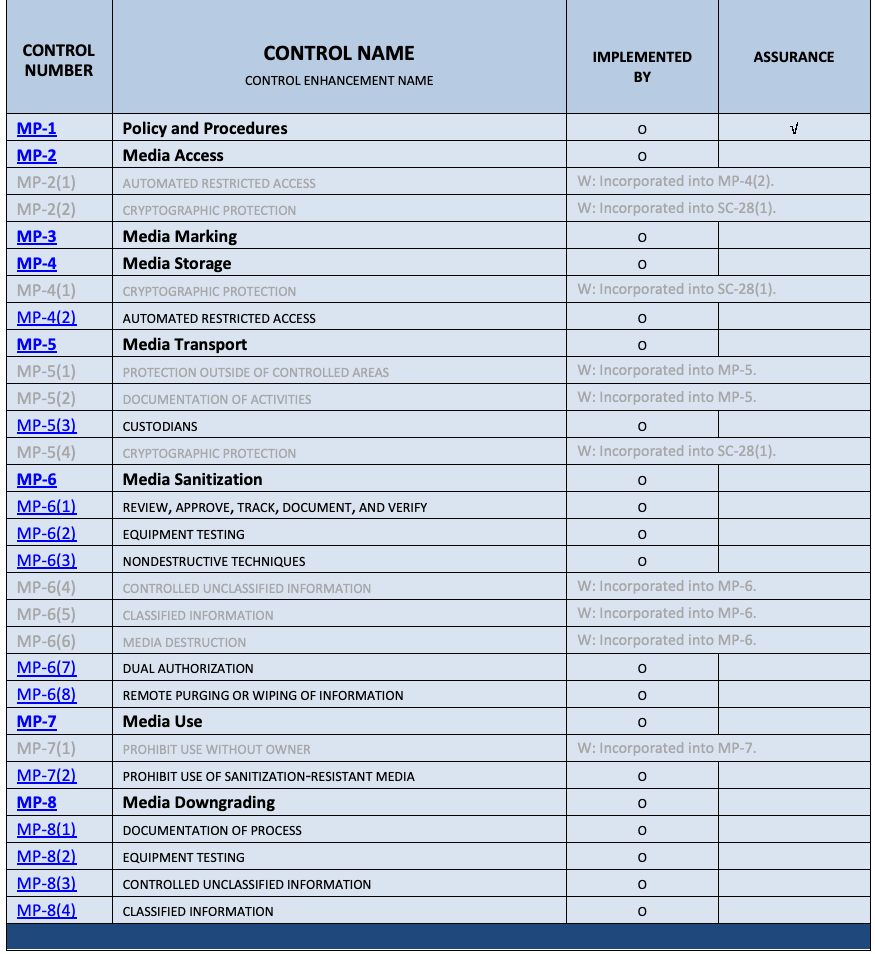
| 管理策番号 | 管理策名 管理策拡張名 | 実装主体 | 保証 |
|---|---|---|---|
| MP-1 | 方針及び手順 | O | √ |
| MP-2 | 媒体へのアクセス | O | |
| MP-2(1) | アクセス制限の自動化 | W：MP-4(2)に統合。 | |
| MP-2(2) | 暗号による保護 | W：SC-28(1)に統合。 | |
| MP-3 | 媒体への表示 | O | |
| MP-4 | 媒体の保管 | O | |
| MP-4(1) | 暗号による保護 | W：SC-28(1)に統合。 | |
| MP-4(2) | アクセス制限の自動化 | O | |
| MP-5 | 媒体の輸送 | O | |
| MP-5(1) | 管理区域外での保護 | W：MP-5に統合。 | |
| MP-5(2) | 作業の文書化 | W：MP-5に統合。 | |
| MP-5(3) | 保管管理者 | O | |
| MP-5(4) | 暗号による保護 | W：SC-28(1)に統合。 | |
| MP-6 | 媒体のサニタイズ | O | |
| MP-6(1) | レビュー、承認、追跡、文書化及び検証 | O | |
| MP-6(2) | 機器のテスト | O | |
| MP-6(3) | 非破壊的な技法 | O | |
| MP-6(4) | 管理対象非機密情報 | W：MP-6に統合。 | |
| MP-6(5) | 機密情報 | W：MP-6に統合。 | |
| MP-6(6) | 媒体の破壊 | W：MP-6に統合。 | |
| MP-6(7) | 二者による認可 | O | |
| MP-6(8) | 遠隔での情報のパージ又はワイプ | O | |
| MP-7 | 媒体の使用 | O | |
| MP-7(1) | 所有者が不明な媒体の使用禁止 | W：MP-7に統合。 | |
| MP-7(2) | サニタイズに耐性のある媒体の使用禁止 | O | |
| MP-8 | 媒体の格付けの引下げ | O | |
| MP-8(1) | 手順の文書化 | O | |
| MP-8(2) | 機器のテスト | O | |
| MP-8(3) | 管理対象非機密情報 | O | |
| MP-8(4) | 機密情報 | O | |
TABLE C-11: PHYSICAL AND ENVIRONMENTAL PROTECTION FAMILY
表C-11：物理的及び環境的保護ファミリー
| CONTROL NUMBER | CONTROL NAME CONTROL ENHANCEMENT NAME | IMPLEMENTED BY | ASSURANCE |
|---|---|---|---|
| PE-1 | Policy and Procedures | O | √ |
| PE-2 | Physical Access Authorizations | O | |
| PE-2(1) | ACCESS BY POSITION AND ROLE | O | |
| PE-2(2) | TWO FORMS OF IDENTIFICATION | O | |
| PE-2(3) | RESTRICT UNESCORTED ACCESS | O | |
| PE-3 | Physical Access Control | O | |
| PE-3(1) | SYSTEM ACCESS | O | |
| PE-3(2) | FACILITY AND SYSTEMS | O | |
| PE-3(3) | CONTINUOUS GUARDS | O | |
| PE-3(4) | LOCKABLE CASINGS | O | |
| PE-3(5) | TAMPER PROTECTION | O | |
| PE-3(6) | FACILITY PENETRATION TESTING | W: Incorporated into CA-8. | |
| PE-3(7) | PHYSICAL BARRIERS | O | |
| PE-3(8) | ACCESS CONTROL VESTIBULES | O | |
| PE-4 | Access Control for Transmission | O | |
| PE-5 | Access Control for Output Devices | O | |
| PE-5(1) | ACCESS TO OUTPUT BY AUTHORIZED INDIVIDUALS | W: Incorporated into PE-5. | |
| PE-5(2) | LINK TO INDIVIDUAL IDENTITY | S | |
| PE-5(3) | MARKING OUTPUT DEVICES | W: Incorporated into PE-22. | |
| PE-6 | Monitoring Physical Access | O | √ |
| PE-6(1) | INTRUSION ALARMS AND SURVEILLANCE EQUIPMENT | O | √ |
| PE-6(2) | AUTOMATED INTRUSION RECOGNITION AND RESPONSES | O | √ |
| PE-6(3) | VIDEO SURVEILLANCE | O | √ |
| PE-6(4) | MONITORING PHYSICAL ACCESS TO SYSTEMS | O | √ |
| PE-7 | Visitor Control | W: Incorporated into PE-2 and PE-3. | |
| PE-8 | Visitor Access Records | O | √ |
| PE-8(1) | AUTOMATED RECORDS MAINTENANCE AND REVIEW | O | |
| PE-8(2) | PHYSICAL ACCESS RECORDS | W: Incorporated into PE-2. | |
| PE-8(3) | LIMIT PERSONALLY IDENTIFIABLE INFORMATION ELEMENTS | O | |
| PE-9 | Power Equipment and Cabling | O | |
| PE-9(1) | REDUNDANT CABLING | O | |
| PE-9(2) | AUTOMATIC VOLTAGE CONTROLS | O | |
| PE-10 | Emergency Shutoff | O | |
| PE-10(1) | ACCIDENTAL AND UNAUTHORIZED ACTIVATION | W: Incorporated into PE-10. | |
| PE-11 | Emergency Power | O | |
| PE-11(1) | ALTERNATE POWER SUPPLY — MINIMAL OPERATIONAL CAPABILITY | O | |
| PE-11(2) | ALTERNATE POWER SUPPLY — SELF-CONTAINED | O | |
| PE-12 | Emergency Lighting | O | |
| PE-12(1) | ESSENTIAL MISSION AND BUSINESS FUNCTIONS | O | |
| PE-13 | Fire Protection | O | |
| PE-13(1) | DETECTION SYSTEMS — AUTOMATIC ACTIVATION AND NOTIFICATION | O | |
| PE-13(2) | SUPPRESSION SYSTEMS — AUTOMATIC ACTIVATION AND NOTIFICATION | O | |
| PE-13(3) | AUTOMATIC FIRE SUPPRESSION | W: Incorporated into PE-13(2). | |
| PE-13(4) | INSPECTIONS | O | |
| PE-14 | Environmental Controls | O | |
| PE-14(1) | AUTOMATIC CONTROLS | O | |
| PE-14(2) | MONITORING WITH ALARMS AND NOTIFICATIONS | O | |
| PE-15 | Water Damage Protection | O | |
| PE-15(1) | AUTOMATION SUPPORT | O | |
| PE-16 | Delivery and Removal | O | |
| PE-17 | Alternate Work Site | O | |
| PE-18 | Location of System Components | O | |
| PE-18(1) | FACILITY SITE | W: Moved to PE-23. | |
| PE-19 | Information Leakage | O | |
| PE-19(1) | NATIONAL EMISSIONS POLICIES AND PROCEDURES | O | |
| PE-20 | Asset Monitoring and Tracking | O | |
| PE-21 | Electromagnetic Pulse Protection | O | |
| PE-22 | Component Marking | O | |
| PE-23 | Facility Location | O | |
原本PDFの抜粋画像
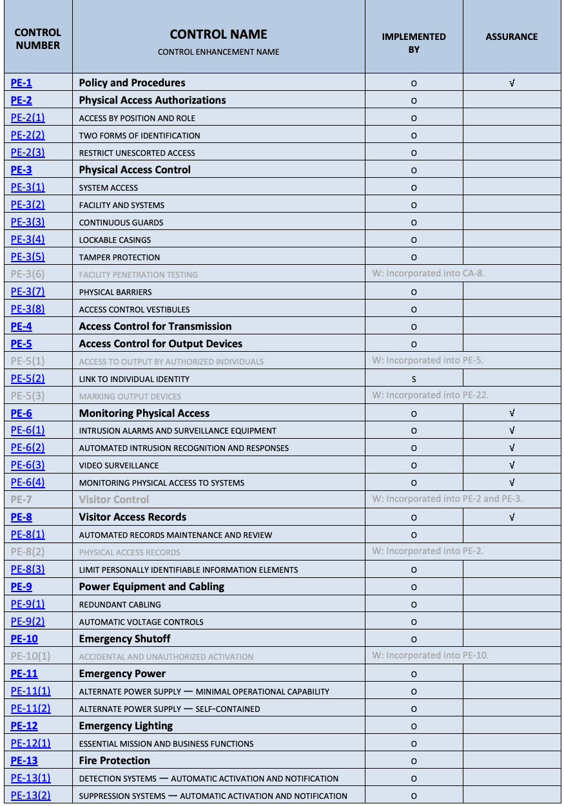
| 管理策番号 | 管理策名 管理策拡張名 | 実装主体 | 保証 |
|---|---|---|---|
| PE-1 | 方針及び手順 | O | √ |
| PE-2 | 物理的アクセスの認可 | O | |
| PE-2(1) | 職位及び役割に応じたアクセス | O | |
| PE-2(2) | 2種類の身分証明 | O | |
| PE-2(3) | 付き添いなしのアクセスの制限 | O | |
| PE-3 | 物理的アクセス制御 | O | |
| PE-3(1) | システムへのアクセス | O | |
| PE-3(2) | 施設及びシステム | O | |
| PE-3(3) | 常時の警備 | O | |
| PE-3(4) | 施錠可能な筐体 | O | |
| PE-3(5) | 不正な改変からの保護 | O | |
| PE-3(6) | 施設への侵入テスト | W：CA-8に統合。 | |
| PE-3(7) | 物理的な障壁 | O | |
| PE-3(8) | 入退室管理用の前室 | O | |
| PE-4 | 伝送に関するアクセス制御 | O | |
| PE-5 | 出力装置へのアクセス制御 | O | |
| PE-5(1) | 認可された者による出力へのアクセス | W：PE-5に統合。 | |
| PE-5(2) | 個人の識別情報との関連付け | S | |
| PE-5(3) | 出力装置への表示 | W：PE-22に統合。 | |
| PE-6 | 物理的アクセスの監視 | O | √ |
| PE-6(1) | 侵入警報及び監視機器 | O | √ |
| PE-6(2) | 侵入の自動認識及び対応 | O | √ |
| PE-6(3) | 映像による監視 | O | √ |
| PE-6(4) | システムへの物理的アクセスの監視 | O | √ |
| PE-7 | 訪問者の管理 | W：PE-2及びPE-3に統合。 | |
| PE-8 | 訪問者のアクセス記録 | O | √ |
| PE-8(1) | 記録の維持及びレビューの自動化 | O | |
| PE-8(2) | 物理的アクセスの記録 | W：PE-2に統合。 | |
| PE-8(3) | 個人を識別できる情報の要素の制限 | O | |
| PE-9 | 電源装置及び配線 | O | |
| PE-9(1) | 冗長な配線 | O | |
| PE-9(2) | 自動電圧制御 | O | |
| PE-10 | 緊急遮断 | O | |
| PE-10(1) | 偶発的又は無許可の作動 | W：PE-10に統合。 | |
| PE-11 | 非常用電源 | O | |
| PE-11(1) | 代替電源：最小限の運用能力 | O | |
| PE-11(2) | 代替電源：独立型 | O | |
| PE-12 | 非常用照明 | O | |
| PE-12(1) | 使命及び業務に不可欠な機能 | O | |
| PE-13 | 火災からの保護 | O | |
| PE-13(1) | 検知システム：自動作動及び通知 | O | |
| PE-13(2) | 消火システム：自動作動及び通知 | O | |
| PE-13(3) | 自動消火 | W：PE-13(2)に統合。 | |
| PE-13(4) | 検査 | O | |
| PE-14 | 環境制御 | O | |
| PE-14(1) | 自動制御 | O | |
| PE-14(2) | 警報及び通知を伴う監視 | O | |
| PE-15 | 水損からの保護 | O | |
| PE-15(1) | 自動化支援 | O | |
| PE-16 | 搬入及び搬出 | O | |
| PE-17 | 代替勤務場所 | O | |
| PE-18 | システム構成要素の配置 | O | |
| PE-18(1) | 施設の敷地 | W：PE-23へ移動。 | |
| PE-19 | 情報漏えい | O | |
| PE-19(1) | 国の電磁放射に関する方針及び手順 | O | |
| PE-20 | 資産の監視及び追跡 | O | |
| PE-21 | 電磁パルスからの保護 | O | |
| PE-22 | 構成要素への表示 | O | |
| PE-23 | 施設の立地 | O | |
TABLE C-12: PLANNING FAMILY
表C-12：計画ファミリー
| CONTROL NUMBER | CONTROL NAME CONTROL ENHANCEMENT NAME | IMPLEMENTED BY | ASSURANCE |
|---|---|---|---|
| PL-1 | Policy and Procedures | O | √ |
| PL-2 | System Security and Privacy Plans | O | √ |
| PL-2(1) | CONCEPT OF OPERATIONS | W: Incorporated into PL-7. | |
| PL-2(2) | FUNCTIONAL ARCHITECTURE | W: Incorporated into PL-8. | |
| PL-2(3) | PLAN AND COORDINATE WITH OTHER ORGANIZATIONAL ENTITIES | W: Incorporated into PL-2. | |
| PL-3 | System Security Plan Update | W: Incorporated into PL-2. | |
| PL-4 | Rules of Behavior | O | √ |
| PL-4(1) | SOCIAL MEDIA AND EXTERNAL SITE/APPLICATION USAGE RESTRICTIONS | O | √ |
| PL-5 | Privacy Impact Assessment | W: Incorporated into RA-8. | |
| PL-6 | Security-Related Activity Planning | W: Incorporated into PL-2. | |
| PL-7 | Concept of Operations | O | |
| PL-8 | Security and Privacy Architectures | O | √ |
| PL-8(1) | DEFENSE IN DEPTH | O | √ |
| PL-8(2) | SUPPLIER DIVERSITY | O | √ |
| PL-9 | Central Management | O | √ |
| PL-10 | Baseline Selection | O | |
| PL-11 | Baseline Tailoring | O | |
原本PDFの抜粋画像
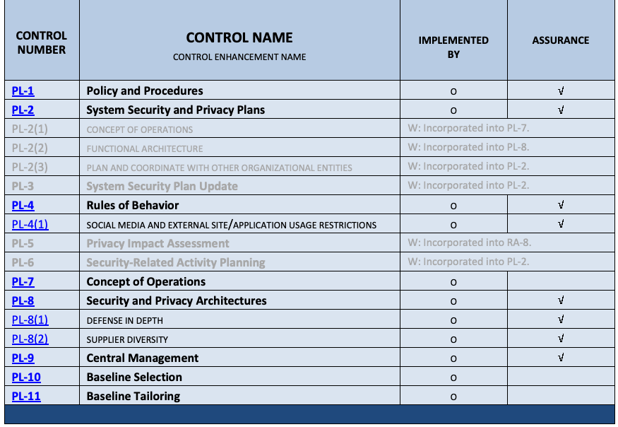
| 管理策番号 | 管理策名 管理策拡張名 | 実装主体 | 保証 |
|---|---|---|---|
| PL-1 | 方針及び手順 | O | √ |
| PL-2 | システムのセキュリティ計画及びプライバシー計画 | O | √ |
| PL-2(1) | 運用概念 | W：PL-7に統合。 | |
| PL-2(2) | 機能アーキテクチャ | W：PL-8に統合。 | |
| PL-2(3) | 組織内の他の組織単位との計画及び調整 | W：PL-2に統合。 | |
| PL-3 | システムセキュリティ計画の更新 | W：PL-2に統合。 | |
| PL-4 | 行動規則 | O | √ |
| PL-4(1) | ソーシャルメディア及び外部サイト・アプリケーションの使用制限 | O | √ |
| PL-5 | プライバシー影響評価 | W：RA-8に統合。 | |
| PL-6 | セキュリティ関連作業の計画 | W：PL-2に統合。 | |
| PL-7 | 運用概念 | O | |
| PL-8 | セキュリティ及びプライバシーのアーキテクチャ | O | √ |
| PL-8(1) | 縦深防御 | O | √ |
| PL-8(2) | 供給者の多様性 | O | √ |
| PL-9 | 一元管理 | O | √ |
| PL-10 | ベースラインの選択 | O | |
| PL-11 | ベースラインのテーラリング | O | |
TABLE C-13: PROGRAM MANAGEMENT FAMILY
表C-13：プログラム管理ファミリー
| CONTROL NUMBER | CONTROL NAME CONTROL ENHANCEMENT NAME | IMPLEMENTED BY | ASSURANCE |
|---|---|---|---|
| PM-1 | Information Security Program Plan | O | |
| PM-2 | Information Security Program Leadership Role | O | |
| PM-3 | Information Security and Privacy Resources | O | |
| PM-4 | Plan of Action and Milestones Process | O | |
| PM-5 | System Inventory | O | |
| PM-5(1) | INVENTORY OF PERSONALLY IDENTIFIABLE INFORMATION | O | |
| PM-6 | Measures of Performance | O | √ |
| PM-7 | Enterprise Architecture | O | |
| PM-7(1) | OFFLOADING | O | |
| PM-8 | Critical Infrastructure Plan | O | |
| PM-9 | Risk Management Strategy | O | √ |
| PM-10 | Authorization Process | O | √ |
| PM-11 | Mission and Business Process Definition | O | |
| PM-12 | Insider Threat Program | O | √ |
| PM-13 | Security and Privacy Workforce | O | |
| PM-14 | Testing, Training, and Monitoring | O | √ |
| PM-15 | Security and Privacy Groups and Associations | O | |
| PM-16 | Threat Awareness Program | O | √ |
| PM-16(1) | AUTOMATED MEANS FOR SHARING THREAT INTELLIGENCE | O | √ |
| PM-17 | Protecting Controlled Unclassified Information on External Systems | O | √ |
| PM-18 | Privacy Program Plan | O | |
| PM-19 | Privacy Program Leadership Role | O | |
| PM-20 | Dissemination of Privacy Program Information | O | |
| PM-20(1) | PRIVACY POLICIES ON WEBSITES, APPLICATIONS, AND DIGITAL SERVICES | O | √ |
| PM-21 | Accounting of Disclosures | O | |
| PM-22 | Personally Identifiable Information Quality Management | O | √ |
| PM-23 | Data Governance Body | O | √ |
| PM-24 | Data Integrity Board | O | √ |
| PM-25 | Minimization of Personally Identifiable Information Used in Testing, Training, and Research | O | |
| PM-26 | Complaint Management | O | |
| PM-27 | Privacy Reporting | O | |
| PM-28 | Risk Framing | O | √ |
| PM-29 | Risk Management Program Leadership Roles | O | |
| PM-30 | Supply Chain Risk Management Strategy | O | √ |
| PM-30(1) | SUPPLIERS OF CRITICAL OR MISSION-ESSENTIAL ITEMS | O | √ |
| PM-31 | Continuous Monitoring Strategy | O | |
| PM-32 | Purposing | O | √ |
原本PDFの抜粋画像
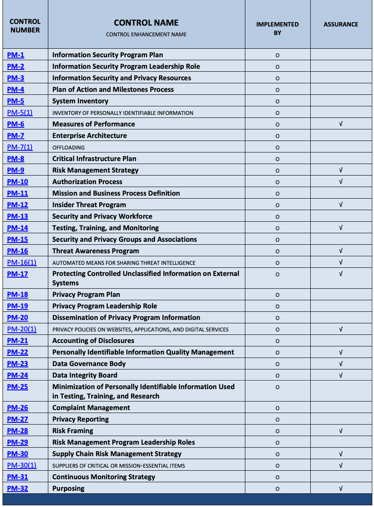
| 管理策番号 | 管理策名 管理策拡張名 | 実装主体 | 保証 |
|---|---|---|---|
| PM-1 | 情報セキュリティプログラム計画 | O | |
| PM-2 | 情報セキュリティプログラムを主導する役割 | O | |
| PM-3 | 情報セキュリティ及びプライバシーの資源 | O | |
| PM-4 | 行動計画及びマイルストーンのプロセス | O | |
| PM-5 | システムのインベントリー | O | |
| PM-5(1) | 個人を識別できる情報のインベントリー | O | |
| PM-6 | 実績の測定指標 | O | √ |
| PM-7 | エンタープライズアーキテクチャ | O | |
| PM-7(1) | 機能・サービスの他システム等への移管（オフロード） | O | |
| PM-8 | 重要インフラ計画 | O | |
| PM-9 | リスク管理戦略 | O | √ |
| PM-10 | 認可プロセス | O | √ |
| PM-11 | 使命及び業務のプロセスの定義 | O | |
| PM-12 | 内部脅威対策プログラム | O | √ |
| PM-13 | セキュリティ及びプライバシーの人材 | O | |
| PM-14 | テスト、訓練及び監視 | O | √ |
| PM-15 | セキュリティ及びプライバシーの団体・協会 | O | |
| PM-16 | 脅威認識プログラム | O | √ |
| PM-16(1) | 脅威インテリジェンスを共有するための自動化手段 | O | √ |
| PM-17 | 外部システム上の管理対象非機密情報の保護 | O | √ |
| PM-18 | プライバシープログラム計画 | O | |
| PM-19 | プライバシープログラムを主導する役割 | O | |
| PM-20 | プライバシープログラムに関する情報の周知 | O | |
| PM-20(1) | ウェブサイト、アプリケーション及びデジタルサービスにおけるプライバシー方針 | O | √ |
| PM-21 | 開示の記録 | O | |
| PM-22 | 個人を識別できる情報の品質管理 | O | √ |
| PM-23 | データガバナンス機関 | O | √ |
| PM-24 | データ完全性委員会 | O | √ |
| PM-25 | テスト、訓練及び研究に使用する個人を識別できる情報の最小化 | O | |
| PM-26 | 苦情の管理 | O | |
| PM-27 | プライバシーに関する報告 | O | |
| PM-28 | リスクの枠組み設定 | O | √ |
| PM-29 | リスク管理プログラムを主導する役割 | O | |
| PM-30 | サプライチェーンリスク管理戦略 | O | √ |
| PM-30(1) | 重要な品目又は使命に不可欠な品目の供給者 | O | √ |
| PM-31 | 継続的監視戦略 | O | |
| PM-32 | 目的適合性 | O | √ |
TABLE C-14: PERSONNEL SECURITY FAMILY
表C-14：人的セキュリティファミリー
| CONTROL NUMBER | CONTROL NAME CONTROL ENHANCEMENT NAME | IMPLEMENTED BY | ASSURANCE |
|---|---|---|---|
| PS-1 | Policy and Procedures | O | √ |
| PS-2 | Position Risk Designation | O | |
| PS-3 | Personnel Screening | O | |
| PS-3(1) | CLASSIFIED INFORMATION | O | |
| PS-3(2) | FORMAL INDOCTRINATION | O | |
| PS-3(3) | INFORMATION REQUIRING SPECIAL PROTECTION MEASURES | O | |
| PS-3(4) | CITIZENSHIP REQUIREMENTS | O | |
| PS-4 | Personnel Termination | O | |
| PS-4(1) | POST-EMPLOYMENT REQUIREMENTS | O | |
| PS-4(2) | AUTOMATED ACTIONS | O | |
| PS-5 | Personnel Transfer | O | |
| PS-6 | Access Agreements | O | √ |
| PS-6(1) | INFORMATION REQUIRING SPECIAL PROTECTION | W: Incorporated into PS-3. | |
| PS-6(2) | CLASSIFIED INFORMATION REQUIRING SPECIAL PROTECTION | O | √ |
| PS-6(3) | POST-EMPLOYMENT REQUIREMENTS | O | √ |
| PS-7 | External Personnel Security | O | √ |
| PS-8 | Personnel Sanctions | O | |
| PS-9 | Position Descriptions | O | |
原本PDFの抜粋画像
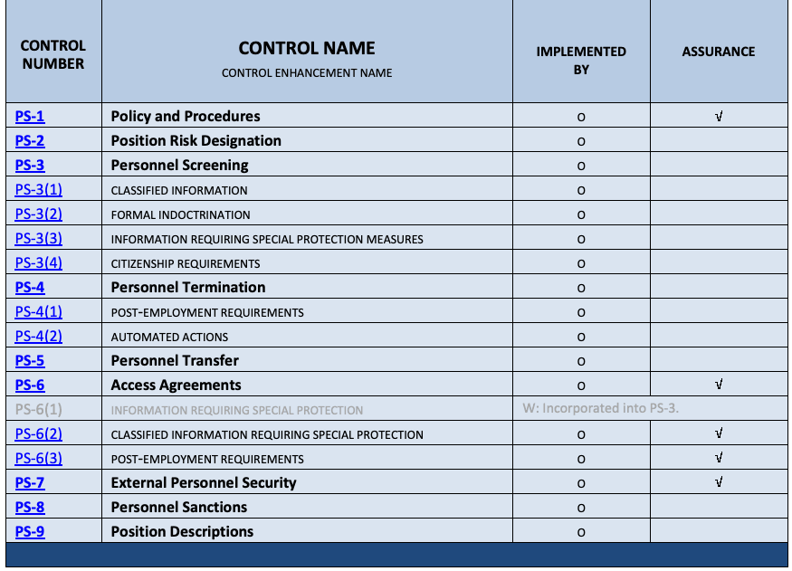
| 管理策番号 | 管理策名 管理策拡張名 | 実装主体 | 保証 |
|---|---|---|---|
| PS-1 | 方針及び手順 | O | √ |
| PS-2 | 職位のリスク区分の指定 | O | |
| PS-3 | 人員審査 | O | |
| PS-3(1) | 機密情報 | O | |
| PS-3(2) | 正式な取扱い教育 | O | |
| PS-3(3) | 特別な保護措置を必要とする情報 | O | |
| PS-3(4) | 国籍要件 | O | |
| PS-4 | 雇用の終了 | O | |
| PS-4(1) | 雇用終了後の要件 | O | |
| PS-4(2) | 自動化された措置 | O | |
| PS-5 | 人員の異動 | O | |
| PS-6 | アクセス合意書 | O | √ |
| PS-6(1) | 特別な保護を必要とする情報 | W：PS-3に統合。 | |
| PS-6(2) | 特別な保護を必要とする機密情報 | O | √ |
| PS-6(3) | 雇用終了後の要件 | O | √ |
| PS-7 | 外部要員のセキュリティ | O | √ |
| PS-8 | 人員に対する制裁 | O | |
| PS-9 | 職務記述書 | O | |
TABLE C-15: PERSONALLY IDENTIFIABLE INFORMATION PROCESSING AND TRANSPARENCY FAMILY
表C-15：個人識別可能情報の処理及び透明性ファミリー
| CONTROL NUMBER | CONTROL NAME CONTROL ENHANCEMENT NAME | IMPLEMENTED BY | ASSURANCE |
|---|---|---|---|
| PT-1 | Policy and Procedures | O | √ |
| PT-2 | Authority to Process Personally Identifiable Information | O | √ |
| PT-2(1) | DATA TAGGING | S | √ |
| PT-2(2) | AUTOMATION | O | √ |
| PT-3 | Personally Identifiable Information Processing Purposes | O | |
| PT-3(1) | DATA TAGGING | S | √ |
| PT-3(2) | AUTOMATION | O | √ |
| PT-4 | Consent | O | |
| PT-4(1) | TAILORED CONSENT | O | |
| PT-4(2) | JUST-IN-TIME CONSENT | O | |
| PT-4(3) | REVOCATION | O | |
| PT-5 | Privacy Notice | O | |
| PT-5(1) | JUST-IN-TIME NOTICE | O | |
| PT-5(2) | PRIVACY ACT STATEMENTS | O | |
| PT-6 | System of Records Notice | O | |
| PT-6(1) | ROUTINE USES | O | |
| PT-6(2) | EXEMPTION RULES | O | |
| PT-7 | Specific Categories of Personally Identifiable Information | O | |
| PT-7(1) | SOCIAL SECURITY NUMBERS | O | |
| PT-7(2) | FIRST AMENDMENT INFORMATION | O | |
| PT-8 | Computer Matching Requirements | O |
原本PDFの抜粋画像
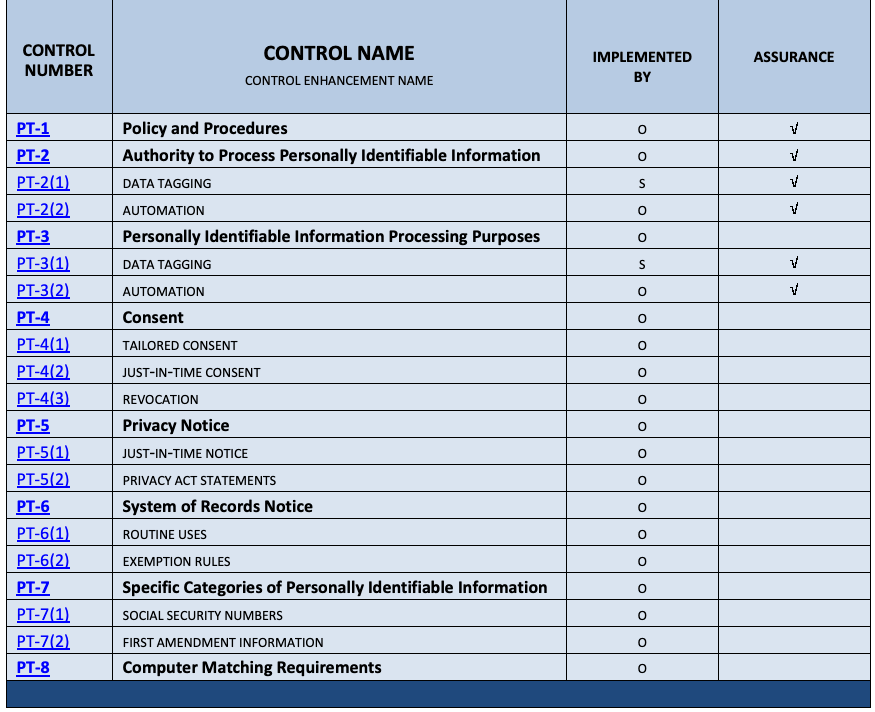
| 管理策番号 | 管理策名 管理策拡張名 | 実装主体 | 保証 |
|---|---|---|---|
| PT-1 | 方針及び手順 | O | √ |
| PT-2 | 個人を識別できる情報を処理する権限 | O | √ |
| PT-2(1) | データへのタグ付け | S | √ |
| PT-2(2) | 自動化 | O | √ |
| PT-3 | 個人を識別できる情報の処理目的 | O | |
| PT-3(1) | データへのタグ付け | S | √ |
| PT-3(2) | 自動化 | O | √ |
| PT-4 | 同意 | O | |
| PT-4(1) | 処理の許可を調整できる同意 | O | |
| PT-4(2) | 必要な時点での同意 | O | |
| PT-4(3) | 同意の撤回 | O | |
| PT-5 | プライバシー通知 | O | |
| PT-5(1) | 必要な時点での通知 | O | |
| PT-5(2) | プライバシー法に基づく告知 | O | |
| PT-6 | 記録システムの通知 | O | |
| PT-6(1) | 通常の利用 | O | |
| PT-6(2) | 適用除外規則 | O | |
| PT-7 | 個人を識別できる情報の特定のカテゴリー | O | |
| PT-7(1) | 社会保障番号 | O | |
| PT-7(2) | 合衆国憲法修正第1条の権利行使に関する情報 | O | |
| PT-8 | コンピューター照合の要件 | O |
TABLE C-16: RISK ASSESSMENT FAMILY
表C-16：リスク評価ファミリー
| CONTROL NUMBER | CONTROL NAME CONTROL ENHANCEMENT NAME | IMPLEMENTED BY | ASSURANCE |
|---|---|---|---|
| RA-1 | Policy and Procedures | O | √ |
| RA-2 | Security Categorization | O | |
| RA-2(1) | IMPACT-LEVEL PRIORITIZATION | O | |
| RA-3 | Risk Assessment | O | √ |
| RA-3(1) | SUPPLY CHAIN RISK ASSESSMENT | O | √ |
| RA-3(2) | USE OF ALL-SOURCE INTELLIGENCE | O | √ |
| RA-3(3) | DYNAMIC THREAT AWARENESS | O | √ |
| RA-3(4) | PREDICTIVE CYBER ANALYTICS | O | √ |
| RA-4 | Risk Assessment Update | W: Incorporated into RA-3. | |
| RA-5 | Vulnerability Monitoring and Scanning | O | √ |
| RA-5(1) | UPDATE TOOL CAPABILITY | W: Incorporated into RA-5. | |
| RA-5(2) | UPDATE VULNERABILITIES TO BE SCANNED | O | √ |
| RA-5(3) | BREADTH AND DEPTH OF COVERAGE | O | √ |
| RA-5(4) | DISCOVERABLE INFORMATION | O | √ |
| RA-5(5) | PRIVILEGED ACCESS | O | √ |
| RA-5(6) | AUTOMATED TREND ANALYSES | O | √ |
| RA-5(7) | AUTOMATED DETECTION AND NOTIFICATION OF UNAUTHORIZED COMPONENTS | W: Incorporated into CM-8. | |
| RA-5(8) | REVIEW HISTORIC AUDIT LOGS | O | √ |
| RA-5(9) | PENETRATION TESTING AND ANALYSES | W: Incorporated into CA-8. | |
| RA-5(10) | CORRELATE SCANNING INFORMATION | O | √ |
| RA-5(11) | PUBLIC DISCLOSURE PROGRAM | O | √ |
| RA-6 | Technical Surveillance Countermeasures Survey | O | √ |
| RA-7 | Risk Response | O | √ |
| RA-8 | Privacy Impact Assessments | O | √ |
| RA-9 | Criticality Analysis | O | |
| RA-10 | Threat Hunting | O/S | √ |
原本PDFの抜粋画像
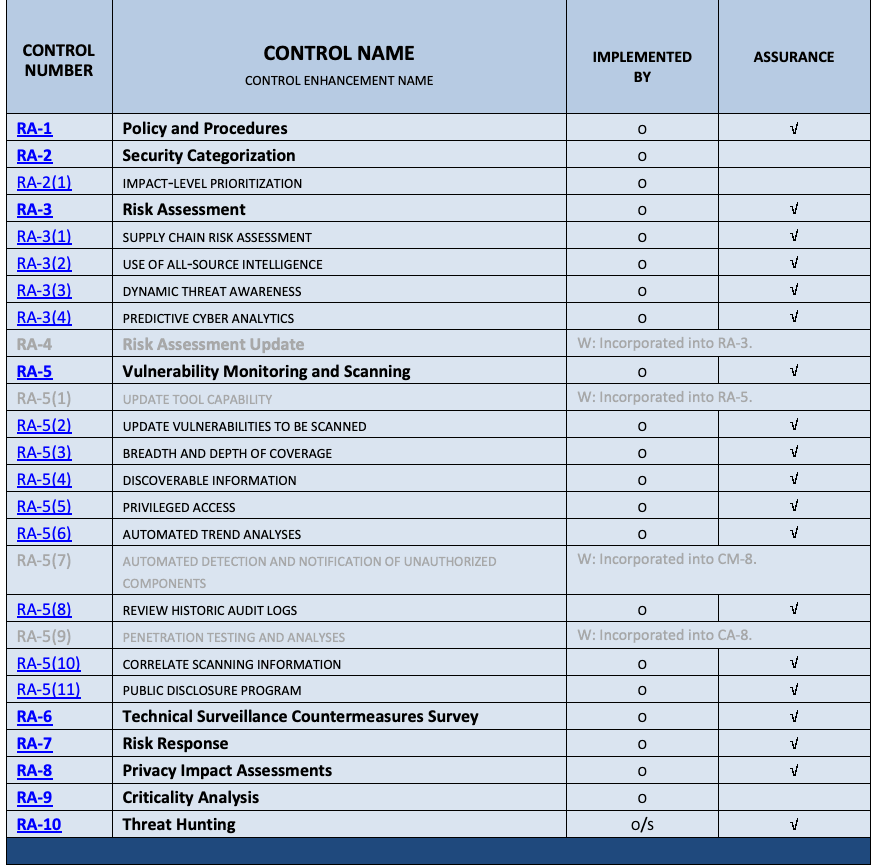
| 管理策番号 | 管理策名 管理策拡張名 | 実装主体 | 保証 |
|---|---|---|---|
| RA-1 | 方針及び手順 | O | √ |
| RA-2 | セキュリティの分類 | O | |
| RA-2(1) | 影響レベルに応じた優先順位付け | O | |
| RA-3 | リスク評価 | O | √ |
| RA-3(1) | サプライチェーンリスクの評価 | O | √ |
| RA-3(2) | 全情報源のインテリジェンスの利用 | O | √ |
| RA-3(3) | 動的な脅威認識 | O | √ |
| RA-3(4) | 予測型サイバー分析 | O | √ |
| RA-4 | リスク評価の更新 | W：RA-3に統合。 | |
| RA-5 | 脆弱性の監視及びスキャン | O | √ |
| RA-5(1) | ツールの機能の更新 | W：RA-5に統合。 | |
| RA-5(2) | スキャン対象の脆弱性の更新 | O | √ |
| RA-5(3) | 対象範囲の広さ及び深さ | O | √ |
| RA-5(4) | 発見可能な情報 | O | √ |
| RA-5(5) | 特権アクセス | O | √ |
| RA-5(6) | 傾向分析の自動化 | O | √ |
| RA-5(7) | 認可されていない構成要素の自動検出及び通知 | W：CM-8に統合。 | |
| RA-5(8) | 過去の監査ログのレビュー | O | √ |
| RA-5(9) | 侵入テスト及び分析 | W：CA-8に統合。 | |
| RA-5(10) | スキャン情報の相関付け | O | √ |
| RA-5(11) | 脆弱性開示プログラム | O | √ |
| RA-6 | 技術的監視対抗策調査 | O | √ |
| RA-7 | リスク対応 | O | √ |
| RA-8 | プライバシー影響評価 | O | √ |
| RA-9 | 重要度分析 | O | |
| RA-10 | 脅威ハンティング | O/S | √ |
TABLE C-17: SYSTEM AND SERVICES ACQUISITION FAMILY
表C-17：システム及びサービスの取得ファミリー
| CONTROL NUMBER | CONTROL NAME CONTROL ENHANCEMENT NAME | IMPLEMENTED BY | ASSURANCE |
|---|---|---|---|
| SA-1 | Policy and Procedures | O | √ |
| SA-2 | Allocation of Resources | O | √ |
| SA-3 | System Development Life Cycle | O | √ |
| SA-3(1) | MANAGE PREPRODUCTION ENVIRONMENT | O | √ |
| SA-3(2) | USE OF LIVE OR OPERATIONAL DATA | O | √ |
| SA-3(3) | TECHNOLOGY REFRESH | O | √ |
| SA-4 | Acquisition Process | O | √ |
| SA-4(1) | FUNCTIONAL PROPERTIES OF CONTROLS | O | √ |
| SA-4(2) | DESIGN AND IMPLEMENTATION INFORMATION FOR CONTROLS | O | √ |
| SA-4(3) | DEVELOPMENT METHODS, TECHNIQUES, AND PRACTICES | O | √ |
| SA-4(4) | ASSIGNMENT OF COMPONENTS TO SYSTEMS | W: Incorporated into CM-8(9). | |
| SA-4(5) | SYSTEM, COMPONENT, AND SERVICE CONFIGURATIONS | O | √ |
| SA-4(6) | USE OF INFORMATION ASSURANCE PRODUCTS | O | √ |
| SA-4(7) | NIAP-APPROVED PROTECTION PROFILES | O | √ |
| SA-4(8) | CONTINUOUS MONITORING PLAN FOR CONTROLS | O | √ |
| SA-4(9) | FUNCTIONS, PORTS, PROTOCOLS, AND SERVICES IN USE | O | √ |
| SA-4(10) | USE OF APPROVED PIV PRODUCTS | O | √ |
| SA-4(11) | SYSTEM OF RECORDS | O | √ |
| SA-4(12) | DATA OWNERSHIP | O | √ |
| SA-5 | System Documentation | O | √ |
| SA-5(1) | FUNCTIONAL PROPERTIES OF SECURITY CONTROLS | W: Incorporated into SA-4(1). | |
| SA-5(2) | SECURITY-RELEVANT EXTERNAL SYSTEM INTERFACES | W: Incorporated into SA-4(2). | |
| SA-5(3) | HIGH-LEVEL DESIGN | W: Incorporated into SA-4(2). | |
| SA-5(4) | LOW-LEVEL DESIGN | W: Incorporated into SA-4(2). | |
| SA-5(5) | SOURCE CODE | W: Incorporated into SA-4(2). | |
| SA-6 | Software Usage Restrictions | W: Incorporated into CM-10 and SI-7. | |
| SA-7 | User-Installed Software | W: Incorporated into CM-11 and SI-7. | |
| SA-8 | Security and Privacy Engineering Principles | O | √ |
| SA-8(1) | CLEAR ABSTRACTIONS | O/S | √ |
| SA-8(2) | LEAST COMMON MECHANISM | O/S | √ |
| SA-8(3) | MODULARITY AND LAYERING | O/S | √ |
| SA-8(4) | PARTIALLY ORDERED DEPENDENCIES | O/S | √ |
| SA-8(5) | EFFICIENTLY MEDIATED ACCESS | O/S | √ |
| SA-8(6) | MINIMIZED SHARING | O/S | √ |
| SA-8(7) | REDUCED COMPLEXITY | O/S | √ |
| SA-8(8) | SECURE EVOLVABILITY | O/S | √ |
| SA-8(9) | TRUSTED COMPONENTS | O/S | √ |
| SA-8(10) | HIERARCHICAL TRUST | O/S | √ |
| SA-8(11) | INVERSE MODIFICATION THRESHOLD | O/S | √ |
| SA-8(12) | HIERARCHICAL PROTECTION | O/S | √ |
| SA-8(13) | MINIMIZED SECURITY ELEMENTS | O/S | √ |
| SA-8(14) | LEAST PRIVILEGE | O/S | √ |
| SA-8(15) | PREDICATE PERMISSION | O/S | √ |
| SA-8(16) | SELF-RELIANT TRUSTWORTHINESS | O/S | √ |
| SA-8(17) | SECURE DISTRIBUTED COMPOSITION | O/S | √ |
| SA-8(18) | TRUSTED COMMUNICATIONS CHANNELS | O/S | √ |
| SA-8(19) | CONTINUOUS PROTECTION | O/S | √ |
| SA-8(20) | SECURE METADATA MANAGEMENT | O/S | √ |
| SA-8(21) | SELF-ANALYSIS | O/S | √ |
| SA-8(22) | ACCOUNTABILITY AND TRACEABILITY | O/S | √ |
| SA-8(23) | SECURE DEFAULTS | O/S | √ |
| SA-8(24) | SECURE FAILURE AND RECOVERY | O/S | √ |
| SA-8(25) | ECONOMIC SECURITY | O/S | √ |
| SA-8(26) | PERFORMANCE SECURITY | O/S | √ |
| SA-8(27) | HUMAN FACTORED SECURITY | O/S | √ |
| SA-8(28) | ACCEPTABLE SECURITY | O/S | √ |
| SA-8(29) | REPEATABLE AND DOCUMENTED PROCEDURES | O/S | √ |
| SA-8(30) | PROCEDURAL RIGOR | O/S | √ |
| SA-8(31) | SECURE SYSTEM MODIFICATION | O/S | √ |
| SA-8(32) | SUFFICIENT DOCUMENTATION | O/S | √ |
| SA-8(33) | MINIMIZATION | O/S | √ |
| SA-9 | External System Services | O | √ |
| SA-9(1) | RISK ASSESSMENTS AND ORGANIZATIONAL APPROVALS | O | √ |
| SA-9(2) | IDENTIFICATION OF FUNCTIONS, PORTS, PROTOCOLS, AND SERVICES | O | √ |
| SA-9(3) | ESTABLISH AND MAINTAIN TRUST RELATIONSHIP WITH PROVIDERS | O | √ |
| SA-9(4) | CONSISTENT INTERESTS OF CONSUMERS AND PROVIDERS | O | √ |
| SA-9(5) | PROCESSING, STORAGE, AND SERVICE LOCATION | O | √ |
| SA-9(6) | ORGANIZATION-CONTROLLED CRYPTOGRAPHIC KEYS | O | √ |
| SA-9(7) | ORGANIZATION-CONTROLLED INTEGRITY CHECKING | O | √ |
| SA-9(8) | PROCESSING AND STORAGE LOCATION — U.S. JURISDICTION | O | √ |
| SA-10 | Developer Configuration Management | O | √ |
| SA-10(1) | SOFTWARE AND FIRMWARE INTEGRITY VERIFICATION | O | √ |
| SA-10(2) | ALTERNATIVE CONFIGURATION MANAGEMENT PROCESSES | O | √ |
| SA-10(3) | HARDWARE INTEGRITY VERIFICATION | O | √ |
| SA-10(4) | TRUSTED GENERATION | O | √ |
| SA-10(5) | MAPPING INTEGRITY FOR VERSION CONTROL | O | √ |
| SA-10(6) | TRUSTED DISTRIBUTION | O | √ |
| SA-10(7) | SECURITY AND PRIVACY REPRESENTATIVES | O | √ |
| SA-11 | Developer Testing and Evaluation | O | √ |
| SA-11(1) | STATIC CODE ANALYSIS | O | √ |
| SA-11(2) | THREAT MODELING AND VULNERABILITY ANALYSES | O | √ |
| SA-11(3) | INDEPENDENT VERIFICATION OF ASSESSMENT PLANS AND EVIDENCE | O | √ |
| SA-11(4) | MANUAL CODE REVIEWS | O | √ |
| SA-11(5) | PENETRATION TESTING | O | √ |
| SA-11(6) | ATTACK SURFACE REVIEWS | O | √ |
| SA-11(7) | VERIFY SCOPE OF TESTING AND EVALUATION | O | √ |
| SA-11(8) | DYNAMIC CODE ANALYSIS | O | √ |
| SA-11(9) | INTERACTIVE APPLICATION SECURITY TESTING | O | √ |
| SA-12 | Supply Chain Protection | W: Moved to SR Family. | |
| SA-12(1) | ACQUISITION STRATEGIES, TOOLS, AND METHODS | W: Moved to SR-5. | |
| SA-12(2) | SUPPLIER REVIEWS | W: Moved to SR-6. | |
| SA-12(3) | TRUSTED SHIPPING AND WAREHOUSING | W: Incorporated into SR-3. | |
| SA-12(4) | DIVERSITY OF SUPPLIERS | W: Moved to SR-3(1). | |
| SA-12(5) | LIMITATION OF HARM | W: Moved to SR-3(2). | |
| SA-12(6) | MINIMIZING PROCUREMENT TIME | W: Incorporated into SR-5(1). | |
| SA-12(7) | ASSESSMENTS PRIOR TO SELECTION / ACCEPTANCE / UPDATE | W: Moved to SR-5(2). | |
| SA-12(8) | USE OF ALL-SOURCE INTELLIGENCE | W: Incorporated into RA-3(2). | |
| SA-12(9) | OPERATIONS SECURITY | W: Moved to SR-7. | |
| SA-12(10) | VALIDATE AS GENUINE AND NOT ALTERED | W: Moved to SR-4(3). | |
| SA-12(11) | PENETRATION TESTING / ANALYSIS OF ELEMENTS, PROCESSES, AND ACTORS | W: Moved to SR-6(1). | |
| SA-12(12) | INTER-ORGANIZATIONAL AGREEMENTS | W: Moved to SR-8. | |
| SA-12(13) | CRITICAL INFORMATION SYSTEM COMPONENTS | W: Incorporated into MA-6 and RA-9. | |
| SA-12(14) | IDENTITY AND TRACEABILITY | W: Moved to SR-4(1) and SR-4(2). | |
| SA-12(15) | PROCESSES TO ADDRESS WEAKNESSES OR DEFICIENCIES | W: Incorporated into SR-3. | |
| SA-13 | Trustworthiness | W: Incorporated into SA-8. | |
| SA-14 | Criticality Analysis | W: Incorporated into RA-9. | |
| SA-14(1) | CRITICAL COMPONENTS WITH NO VIABLE ALTERNATIVE SOURCING | W: Incorporated into SA-20. | |
| SA-15 | Development Process, Standards, and Tools | O | √ |
| SA-15(1) | QUALITY METRICS | O | √ |
| SA-15(2) | SECURITY AND PRIVACY TRACKING TOOLS | O | √ |
| SA-15(3) | CRITICALITY ANALYSIS | O | √ |
| SA-15(4) | THREAT MODELING AND VULNERABILITY ANALYSIS | W: Incorporated into SA-11(2). | |
| SA-15(5) | ATTACK SURFACE REDUCTION | O | √ |
| SA-15(6) | CONTINUOUS IMPROVEMENT | O | √ |
| SA-15(7) | AUTOMATED VULNERABILITY ANALYSIS | O | √ |
| SA-15(8) | REUSE OF THREAT AND VULNERABILITY INFORMATION | O | √ |
| SA-15(9) | USE OF LIVE DATA | W: Incorporated into SA-3(2). | |
| SA-15(10) | INCIDENT RESPONSE PLAN | O | √ |
| SA-15(11) | ARCHIVE SYSTEM OR COMPONENT | O | √ |
| SA-15(12) | MINIMIZE PERSONALLY IDENTIFIABLE INFORMATION | O | √ |
| SA-16 | Developer-Provided Training | O | √ |
| SA-17 | Developer Security and Privacy Architecture and Design | O | √ |
| SA-17(1) | FORMAL POLICY MODEL | O | √ |
| SA-17(2) | SECURITY-RELEVANT COMPONENTS | O | √ |
| SA-17(3) | FORMAL CORRESPONDENCE | O | √ |
| SA-17(4) | INFORMAL CORRESPONDENCE | O | √ |
| SA-17(5) | CONCEPTUALLY SIMPLE DESIGN | O | √ |
| SA-17(6) | STRUCTURE FOR TESTING | O | √ |
| SA-17(7) | STRUCTURE FOR LEAST PRIVILEGE | O | √ |
| SA-17(8) | ORCHESTRATION | O | √ |
| SA-17(9) | DESIGN DIVERSITY | O | √ |
| SA-18 | Tamper Resistance and Detection | W: Moved to SR-9. | |
| SA-18(1) | MULTIPLE PHASES OF SYSTEM DEVELOPMENT LIFE CYCLE | W: Moved to SR-9(1). | |
| SA-18(2) | INSPECTION OF SYSTEMS OR COMPONENTS | W: Moved to SR-10. | |
| SA-19 | Component Authenticity | W: Moved to SR-11. | |
| SA-19(1) | ANTI-COUNTERFEIT TRAINING | W: Moved to SR-11(1). | |
| SA-19(2) | CONFIGURATION CONTROL FOR COMPONENT SERVICE AND REPAIR | W: Moved to SR-11(2). | |
| SA-19(3) | COMPONENT DISPOSAL | W: Moved to SR-12. | |
| SA-19(4) | ANTI-COUNTERFEIT SCANNING | W: Moved to SR-11(3). | |
| SA-20 | Customized Development of Critical Components | O | √ |
| SA-21 | Developer Screening | O | √ |
| SA-21(1) | VALIDATION OF SCREENING | W: Incorporated into SA-21. | |
| SA-22 | Unsupported System Components | O | √ |
| SA-22(1) | ALTERNATIVE SOURCES FOR CONTINUED SUPPORT | W: Incorporated into SA-22. | |
| SA-23 | Specialization | O | √ |
原本PDFの抜粋画像
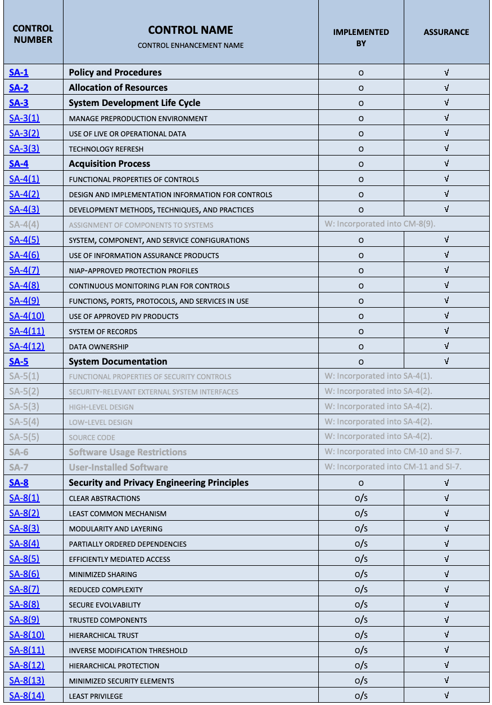
| 管理策番号 | 管理策名 管理策拡張名 | 実装主体 | 保証 |
|---|---|---|---|
| SA-1 | 方針及び手順 | O | √ |
| SA-2 | 資源の配分 | O | √ |
| SA-3 | システム開発ライフサイクル | O | √ |
| SA-3(1) | 本番移行前の環境の管理 | O | √ |
| SA-3(2) | 実データ又は運用データの使用 | O | √ |
| SA-3(3) | 技術の更新 | O | √ |
| SA-4 | 取得プロセス | O | √ |
| SA-4(1) | 管理策の機能特性 | O | √ |
| SA-4(2) | 管理策の設計及び実装に関する情報 | O | √ |
| SA-4(3) | 開発の方法、技法及び実践 | O | √ |
| SA-4(4) | システムへの構成要素の割当て | W：CM-8(9)に統合。 | |
| SA-4(5) | システム、構成要素及びサービスの構成 | O | √ |
| SA-4(6) | 情報保証製品の使用 | O | √ |
| SA-4(7) | NIAPが承認したプロテクションプロファイル | O | √ |
| SA-4(8) | 管理策の継続的監視計画 | O | √ |
| SA-4(9) | 使用中の機能、ポート、プロトコル及びサービス | O | √ |
| SA-4(10) | 承認されたPIV製品の使用 | O | √ |
| SA-4(11) | 記録システム | O | √ |
| SA-4(12) | データの所有権 | O | √ |
| SA-5 | システムの文書 | O | √ |
| SA-5(1) | セキュリティ管理策の機能特性 | W：SA-4(1)に統合。 | |
| SA-5(2) | セキュリティに関連する外部システムインターフェース | W：SA-4(2)に統合。 | |
| SA-5(3) | 上位レベルの設計 | W：SA-4(2)に統合。 | |
| SA-5(4) | 下位レベルの設計 | W：SA-4(2)に統合。 | |
| SA-5(5) | ソースコード | W：SA-4(2)に統合。 | |
| SA-6 | ソフトウェアの使用制限 | W：CM-10及びSI-7に統合。 | |
| SA-7 | ユーザーがインストールしたソフトウェア | W：CM-11及びSI-7に統合。 | |
| SA-8 | セキュリティ及びプライバシーの工学原則 | O | √ |
| SA-8(1) | 明確な抽象化 | O/S | √ |
| SA-8(2) | 最小共通メカニズム | O/S | √ |
| SA-8(3) | モジュール性及び階層化 | O/S | √ |
| SA-8(4) | 半順序の依存関係 | O/S | √ |
| SA-8(5) | 効率的に仲介されるアクセス | O/S | √ |
| SA-8(6) | 共有の最小化 | O/S | √ |
| SA-8(7) | 複雑さの低減 | O/S | √ |
| SA-8(8) | 安全な進化可能性 | O/S | √ |
| SA-8(9) | 信頼できる構成要素 | O/S | √ |
| SA-8(10) | 階層的信頼 | O/S | √ |
| SA-8(11) | 逆修正しきい値 | O/S | √ |
| SA-8(12) | 階層的保護 | O/S | √ |
| SA-8(13) | セキュリティ要素の最小化 | O/S | √ |
| SA-8(14) | 最小権限 | O/S | √ |
| SA-8(15) | 条件付き許可 | O/S | √ |
| SA-8(16) | 自己依存型の信頼性 | O/S | √ |
| SA-8(17) | 安全な分散合成 | O/S | √ |
| SA-8(18) | 信頼できる通信チャネル | O/S | √ |
| SA-8(19) | 継続的な保護 | O/S | √ |
| SA-8(20) | 安全なメタデータ管理 | O/S | √ |
| SA-8(21) | 自己分析 | O/S | √ |
| SA-8(22) | 説明責任及び追跡可能性 | O/S | √ |
| SA-8(23) | 安全な既定値 | O/S | √ |
| SA-8(24) | 障害発生・復旧時の安全性 | O/S | √ |
| SA-8(25) | 費用対効果を考慮したセキュリティ | O/S | √ |
| SA-8(26) | 性能に配慮したセキュリティ | O/S | √ |
| SA-8(27) | 人的要因を考慮したセキュリティ | O/S | √ |
| SA-8(28) | 許容可能なセキュリティ | O/S | √ |
| SA-8(29) | 再現可能で文書化された手順 | O/S | √ |
| SA-8(30) | 手続きの厳格さ | O/S | √ |
| SA-8(31) | 安全なシステム変更 | O/S | √ |
| SA-8(32) | 十分な文書化 | O/S | √ |
| SA-8(33) | 最小化 | O/S | √ |
| SA-9 | 外部システムサービス | O | √ |
| SA-9(1) | リスク評価及び組織による承認 | O | √ |
| SA-9(2) | 機能、ポート、プロトコル及びサービスの特定 | O | √ |
| SA-9(3) | 提供者との信頼関係の確立及び維持 | O | √ |
| SA-9(4) | 利用者と提供者の利害の一致 | O | √ |
| SA-9(5) | 処理、保管及びサービスの場所 | O | √ |
| SA-9(6) | 組織が管理する暗号鍵 | O | √ |
| SA-9(7) | 組織が管理する完全性検査 | O | √ |
| SA-9(8) | 処理及び保管の場所：米国の管轄下 | O | √ |
| SA-10 | 開発者の構成管理 | O | √ |
| SA-10(1) | ソフトウェア及びファームウェアの完全性の検証 | O | √ |
| SA-10(2) | 代替の構成管理プロセス | O | √ |
| SA-10(3) | ハードウェアの完全性の検証 | O | √ |
| SA-10(4) | 信頼できる生成 | O | √ |
| SA-10(5) | バージョン管理の対応付けの完全性 | O | √ |
| SA-10(6) | 信頼できる配布 | O | √ |
| SA-10(7) | セキュリティ及びプライバシーの担当者 | O | √ |
| SA-11 | 開発者によるテスト及び評価 | O | √ |
| SA-11(1) | 静的コード分析 | O | √ |
| SA-11(2) | 脅威モデリング及び脆弱性分析 | O | √ |
| SA-11(3) | 評価計画及び証拠の独立した検証 | O | √ |
| SA-11(4) | 手作業によるコードレビュー | O | √ |
| SA-11(5) | 侵入テスト | O | √ |
| SA-11(6) | 攻撃対象領域のレビュー | O | √ |
| SA-11(7) | テスト及び評価の範囲の検証 | O | √ |
| SA-11(8) | 動的コード分析 | O | √ |
| SA-11(9) | 対話型アプリケーションセキュリティテスト | O | √ |
| SA-12 | サプライチェーンの保護 | W：SRファミリーへ移動。 | |
| SA-12(1) | 取得の戦略、ツール及び方法 | W：SR-5へ移動。 | |
| SA-12(2) | 供給者のレビュー | W：SR-6へ移動。 | |
| SA-12(3) | 信頼できる輸送及び保管 | W：SR-3に統合。 | |
| SA-12(4) | 供給者の多様性 | W：SR-3(1)へ移動。 | |
| SA-12(5) | 被害の制限 | W：SR-3(2)へ移動。 | |
| SA-12(6) | 調達時間の最小化 | W：SR-5(1)に統合。 | |
| SA-12(7) | 選定・受入れ・更新前の評価 | W：SR-5(2)へ移動。 | |
| SA-12(8) | 全情報源のインテリジェンスの利用 | W：RA-3(2)に統合。 | |
| SA-12(9) | 運用セキュリティ | W：SR-7へ移動。 | |
| SA-12(10) | 真正であり変更されていないことの妥当性確認 | W：SR-4(3)へ移動。 | |
| SA-12(11) | 要素、プロセス及び関係者の侵入テスト・分析 | W：SR-6(1)へ移動。 | |
| SA-12(12) | 組織間の合意 | W：SR-8へ移動。 | |
| SA-12(13) | 重要な情報システム構成要素 | W：MA-6及びRA-9に統合。 | |
| SA-12(14) | 識別情報及び追跡可能性 | W：SR-4(1)及びSR-4(2)へ移動。 | |
| SA-12(15) | 弱点又は不備に対処するプロセス | W：SR-3に統合。 | |
| SA-13 | 信頼性 | W：SA-8に統合。 | |
| SA-14 | 重要度分析 | W：RA-9に統合。 | |
| SA-14(1) | 実行可能な代替調達先がない重要な構成要素 | W：SA-20に統合。 | |
| SA-15 | 開発のプロセス、標準及びツール | O | √ |
| SA-15(1) | 品質指標 | O | √ |
| SA-15(2) | セキュリティ及びプライバシーの追跡ツール | O | √ |
| SA-15(3) | 重要度分析 | O | √ |
| SA-15(4) | 脅威モデリング及び脆弱性分析 | W：SA-11(2)に統合。 | |
| SA-15(5) | 攻撃対象領域の削減 | O | √ |
| SA-15(6) | 継続的な改善 | O | √ |
| SA-15(7) | 脆弱性分析の自動化 | O | √ |
| SA-15(8) | 脅威及び脆弱性情報の再利用 | O | √ |
| SA-15(9) | 実データの使用 | W：SA-3(2)に統合。 | |
| SA-15(10) | インシデント対応計画 | O | √ |
| SA-15(11) | システム又は構成要素のアーカイブ | O | √ |
| SA-15(12) | 個人を識別できる情報の最小化 | O | √ |
| SA-16 | 開発者が提供する訓練 | O | √ |
| SA-17 | 開発者のセキュリティ・プライバシーのアーキテクチャ及び設計 | O | √ |
| SA-17(1) | 形式的な方針モデル | O | √ |
| SA-17(2) | セキュリティに関連する構成要素 | O | √ |
| SA-17(3) | 形式的な対応関係 | O | √ |
| SA-17(4) | 非形式的な対応関係 | O | √ |
| SA-17(5) | 概念的に単純な設計 | O | √ |
| SA-17(6) | テストのための構造 | O | √ |
| SA-17(7) | 最小権限のための構造 | O | √ |
| SA-17(8) | オーケストレーション | O | √ |
| SA-17(9) | 設計の多様性 | O | √ |
| SA-18 | 不正な改変への耐性及び検出 | W：SR-9へ移動。 | |
| SA-18(1) | システム開発ライフサイクルの複数の段階 | W：SR-9(1)へ移動。 | |
| SA-18(2) | システム又は構成要素の検査 | W：SR-10へ移動。 | |
| SA-19 | 構成要素の真正性 | W：SR-11へ移動。 | |
| SA-19(1) | 偽造品対策の訓練 | W：SR-11(1)へ移動。 | |
| SA-19(2) | 構成要素の整備及び修理に関する構成管理 | W：SR-11(2)へ移動。 | |
| SA-19(3) | 構成要素の廃棄 | W：SR-12へ移動。 | |
| SA-19(4) | 偽造品検出のスキャン | W：SR-11(3)へ移動。 | |
| SA-20 | 重要な構成要素の個別開発 | O | √ |
| SA-21 | 開発者の審査 | O | √ |
| SA-21(1) | 審査の妥当性確認 | W：SA-21に統合。 | |
| SA-22 | サポートされていないシステム構成要素 | O | √ |
| SA-22(1) | サポート継続のための代替提供元 | W：SA-22に統合。 | |
| SA-23 | 特化 | O | √ |
TABLE C-18: SYSTEM AND COMMUNICATIONS PROTECTION FAMILY
表C-18：システム及び通信の保護ファミリー
| CONTROL NUMBER | CONTROL NAME CONTROL ENHANCEMENT NAME | IMPLEMENTED BY | ASSURANCE |
|---|---|---|---|
| SC-1 | Policy and Procedures | O | √ |
| SC-2 | Separation of System and User Functionality | S | √ |
| SC-2(1) | INTERFACES FOR NON-PRIVILEGED USERS | S | √ |
| SC-2(2) | DISASSOCIABILITY | S | √ |
| SC-3 | Security Function Isolation | S | √ |
| SC-3(1) | HARDWARE SEPARATION | S | √ |
| SC-3(2) | ACCESS AND FLOW CONTROL FUNCTIONS | S | √ |
| SC-3(3) | MINIMIZE NONSECURITY FUNCTIONALITY | O/S | √ |
| SC-3(4) | MODULE COUPLING AND COHESIVENESS | O/S | √ |
| SC-3(5) | LAYERED STRUCTURES | O/S | √ |
| SC-4 | Information in Shared System Resources | S | |
| SC-4(1) | SECURITY LEVELS | W: Incorporated into SC-4. | |
| SC-4(2) | MULTILEVEL OR PERIODS PROCESSING | S | |
| SC-5 | Denial-of-Service Protection | S | |
| SC-5(1) | RESTRICT ABILITY TO ATTACK OTHER SYSTEMS | S | |
| SC-5(2) | CAPACITY, BANDWIDTH, AND REDUNDANCY | S | |
| SC-5(3) | DETECTION AND MONITORING | S | |
| SC-6 | Resource Availability | S | √ |
| SC-7 | Boundary Protection | S | |
| SC-7(1) | PHYSICALLY SEPARATED SUBNETWORKS | W: Incorporated into SC-7. | |
| SC-7(2) | PUBLIC ACCESS | W: Incorporated into SC-7. | |
| SC-7(3) | ACCESS POINTS | S | |
| SC-7(4) | EXTERNAL TELECOMMUNICATIONS SERVICES | O | |
| SC-7(5) | DENY BY DEFAULT — ALLOW BY EXCEPTION | S | |
| SC-7(6) | RESPONSE TO RECOGNIZED FAILURES | W: Incorporated into SC-7(18). | |
| SC-7(7) | SPLIT TUNNELING FOR REMOTE DEVICES | S | |
| SC-7(8) | ROUTE TRAFFIC TO AUTHENTICATED PROXY SERVERS | S | |
| SC-7(9) | RESTRICT THREATENING OUTGOING COMMUNICATIONS TRAFFIC | S | |
| SC-7(10) | PREVENT EXFILTRATION | S | |
| SC-7(11) | RESTRICT INCOMING COMMUNICATIONS TRAFFIC | S | |
| SC-7(12) | HOST-BASED PROTECTION | S | |
| SC-7(13) | ISOLATION OF SECURITY TOOLS, MECHANISMS, AND SUPPORT COMPONENTS | S | |
| SC-7(14) | PROTECT AGAINST UNAUTHORIZED PHYSICAL CONNECTIONS | S | |
| SC-7(15) | NETWORKED PRIVILEGED ACCESSES | S | |
| SC-7(16) | PREVENT DISCOVERY OF SYSTEM COMPONENTS | S | |
| SC-7(17) | AUTOMATED ENFORCEMENT OF PROTOCOL FORMATS | S | |
| SC-7(18) | FAIL SECURE | S | √ |
| SC-7(19) | BLOCK COMMUNICATION FROM NON-ORGANIZATIONALLY CONFIGURED HOSTS | S | |
| SC-7(20) | DYNAMIC ISOLATION AND SEGREGATION | S | |
| SC-7(21) | ISOLATION OF SYSTEM COMPONENTS | O/S | √ |
| SC-7(22) | SEPARATE SUBNETS FOR CONNECTING TO DIFFERENT SECURITY DOMAINS | S | √ |
| SC-7(23) | DISABLE SENDER FEEDBACK ON PROTOCOL VALIDATION FAILURE | S | |
| SC-7(24) | PERSONALLY IDENTIFIABLE INFORMATION | O/S | |
| SC-7(25) | UNCLASSIFIED NATIONAL SECURITY SYSTEM CONNECTIONS | O | |
| SC-7(26) | CLASSIFIED NATIONAL SECURITY SYSTEM CONNECTIONS | O | |
| SC-7(27) | UNCLASSIFIED NON-NATIONAL SECURITY SYSTEM CONNECTIONS | O | |
| SC-7(28) | CONNECTIONS TO PUBLIC NETWORKS | O | |
| SC-7(29) | SEPARATE SUBNETS TO ISOLATE FUNCTIONS | S | |
| SC-8 | Transmission Confidentiality and Integrity | S | |
| SC-8(1) | CRYPTOGRAPHIC PROTECTION | S | |
| SC-8(2) | PRE- AND POST-TRANSMISSION HANDLING | S | |
| SC-8(3) | CRYPTOGRAPHIC PROTECTION FOR MESSAGE EXTERNALS | S | |
| SC-8(4) | CONCEAL OR RANDOMIZE COMMUNICATIONS | S | |
| SC-8(5) | PROTECTED DISTRIBUTION SYSTEM | S | |
| SC-9 | Transmission Confidentiality | W: Incorporated into SC-8. | |
| SC-10 | Network Disconnect | S | |
| SC-11 | Trusted Path | S | √ |
| SC-11(1) | IRREFUTABLE COMMUNICATIONS PATH | S | √ |
| SC-12 | Cryptographic Key Establishment and Management | O/S | |
| SC-12(1) | AVAILABILITY | O/S | |
| SC-12(2) | SYMMETRIC KEYS | O/S | |
| SC-12(3) | ASYMMETRIC KEYS | O/S | |
| SC-12(4) | PKI CERTIFICATES | W: Incorporated into SC-12(3). | |
| SC-12(5) | PKI CERTIFICATES / HARDWARE TOKENS | W: Incorporated into SC-12(3). | |
| SC-12(6) | PHYSICAL CONTROL OF KEYS | O/S | |
| SC-13 | Cryptographic Protection | S | |
| SC-13(1) | FIPS-VALIDATED CRYPTOGRAPHY | W: Incorporated into SC-13. | |
| SC-13(2) | NSA-APPROVED CRYPTOGRAPHY | W: Incorporated into SC-13. | |
| SC-13(3) | INDIVIDUALS WITHOUT FORMAL ACCESS APPROVALS | W: Incorporated into SC-13. | |
| SC-13(4) | DIGITAL SIGNATURES | W: Incorporated into SC-13. | |
| SC-14 | Public Access Protections | W: Incorporated into AC-2, AC-3, AC-5, SI-3, SI-4, SI-5, SI-7, and SI-10. | |
| SC-15 | Collaborative Computing Devices and Applications | S | |
| SC-15(1) | PHYSICAL OR LOGICAL DISCONNECT | S | |
| SC-15(2) | BLOCKING INBOUND AND OUTBOUND COMMUNICATIONS TRAFFIC | W: Incorporated into SC-7. | |
| SC-15(3) | DISABLING AND REMOVAL IN SECURE WORK AREAS | O | |
| SC-15(4) | EXPLICITLY INDICATE CURRENT PARTICIPANTS | S | |
| SC-16 | Transmission of Security and Privacy Attributes | S | |
| SC-16(1) | INTEGRITY VERIFICATION | S | |
| SC-16(2) | ANTI-SPOOFING MECHANISMS | S | |
| SC-16(3) | CRYPTOGRAPHIC BINDING | S | |
| SC-17 | Public Key Infrastructure Certificates | O/S | |
| SC-18 | Mobile Code | O | |
| SC-18(1) | IDENTIFY UNACCEPTABLE CODE AND TAKE CORRECTIVE ACTIONS | S | |
| SC-18(2) | ACQUISITION, DEVELOPMENT, AND USE | O | |
| SC-18(3) | PREVENT DOWNLOADING AND EXECUTION | S | |
| SC-18(4) | PREVENT AUTOMATIC EXECUTION | S | |
| SC-18(5) | ALLOW EXECUTION ONLY IN CONFINED ENVIRONMENTS | S | |
| SC-19 | Voice over Internet Protocol | W: Technology-specific; addressed as any other technology or protocol. | |
| SC-20 | Secure Name/Address Resolution Service (Authoritative Source) | S | |
| SC-20(1) | CHILD SUBSPACES | W: Incorporated into SC-20. | |
| SC-20(2) | DATA ORIGIN AND INTEGRITY | S | |
| SC-21 | Secure Name/Address Resolution Service (Recursive or Caching Resolver) | S | |
| SC-21(1) | DATA ORIGIN AND INTEGRITY | W: Incorporated into SC-21. | |
| SC-22 | Architecture and Provisioning for Name/Address Resolution Service | S | |
| SC-23 | Session Authenticity | S | |
| SC-23(1) | INVALIDATE SESSION IDENTIFIERS AT LOGOUT | S | |
| SC-23(2) | USER-INITIATED LOGOUTS AND MESSAGE DISPLAYS | W: Incorporated into AC-12(1). | |
| SC-23(3) | UNIQUE SYSTEM-GENERATED SESSION IDENTIFIERS | S | |
| SC-23(4) | UNIQUE SESSION IDENTIFIERS WITH RANDOMIZATION | W: Incorporated into SC-23(3). | |
| SC-23(5) | ALLOWED CERTIFICATE AUTHORITIES | S | |
| SC-24 | Fail in Known State | S | √ |
| SC-25 | Thin Nodes | S | |
| SC-26 | Decoys | S | |
| SC-26(1) | DETECTION OF MALICIOUS CODE | W: Incorporated into SC-35. | |
| SC-27 | Platform-Independent Applications | S | |
| SC-28 | Protection of Information at Rest | S | |
| SC-28(1) | CRYPTOGRAPHIC PROTECTION | S | |
| SC-28(2) | OFFLINE STORAGE | O | |
| SC-28(3) | CRYPTOGRAPHIC KEYS | O/S | |
| SC-29 | Heterogeneity | O | √ |
| SC-29(1) | VIRTUALIZATION TECHNIQUES | O | √ |
| SC-30 | Concealment and Misdirection | O | √ |
| SC-30(1) | VIRTUALIZATION TECHNIQUES | W: Incorporated into SC-29(1). | |
| SC-30(2) | RANDOMNESS | O | √ |
| SC-30(3) | CHANGE PROCESSING AND STORAGE LOCATIONS | O | √ |
| SC-30(4) | MISLEADING INFORMATION | O | √ |
| SC-30(5) | CONCEALMENT OF SYSTEM COMPONENTS | O | √ |
| SC-31 | Covert Channel Analysis | O | √ |
| SC-31(1) | TEST COVERT CHANNELS FOR EXPLOITABILITY | O | √ |
| SC-31(2) | MAXIMUM BANDWIDTH | O | √ |
| SC-31(3) | MEASURE BANDWIDTH IN OPERATIONAL ENVIRONMENTS | O | √ |
| SC-32 | System Partitioning | O/S | √ |
| SC-32(1) | SEPARATE PHYSICAL DOMAINS FOR PRIVILEGED FUNCTIONS | O/S | √ |
| SC-33 | Transmission Preparation Integrity | W: Incorporated into SC-8. | |
| SC-34 | Non-Modifiable Executable Programs | S | √ |
| SC-34(1) | NO WRITABLE STORAGE | O | √ |
| SC-34(2) | INTEGRITY PROTECTION AND READ-ONLY MEDIA | O | √ |
| SC-34(3) | HARDWARE-BASED PROTECTION | W: Moved to SC-51. | |
| SC-35 | External Malicious Code Identification | S | |
| SC-36 | Distributed Processing and Storage | O | √ |
| SC-36(1) | POLLING TECHNIQUES | O | √ |
| SC-36(2) | SYNCHRONIZATION | O | √ |
| SC-37 | Out-of-Band Channels | O | √ |
| SC-37(1) | ENSURE DELIVERY AND TRANSMISSION | O | √ |
| SC-38 | Operations Security | O | √ |
| SC-39 | Process Isolation | S | √ |
| SC-39(1) | HARDWARE SEPARATION | S | √ |
| SC-39(2) | SEPARATE EXECUTION DOMAIN PER THREAD | S | √ |
| SC-40 | Wireless Link Protection | S | |
| SC-40(1) | ELECTROMAGNETIC INTERFERENCE | S | |
| SC-40(2) | REDUCE DETECTION POTENTIAL | S | |
| SC-40(3) | IMITATIVE OR MANIPULATIVE COMMUNICATIONS DECEPTION | S | |
| SC-40(4) | SIGNAL PARAMETER IDENTIFICATION | S | |
| SC-41 | Port and I/O Device Access | O/S | |
| SC-42 | Sensor Capability and Data | S | |
| SC-42(1) | REPORTING TO AUTHORIZED INDIVIDUALS OR ROLES | O | |
| SC-42(2) | AUTHORIZED USE | O | |
| SC-42(3) | PROHIBIT USE OF DEVICES | W: Incorporated into SC-42. | |
| SC-42(4) | NOTICE OF COLLECTION | O | |
| SC-42(5) | COLLECTION MINIMIZATION | O | |
| SC-43 | Usage Restrictions | O/S | |
| SC-44 | Detonation Chambers | S | |
| SC-45 | System Time Synchronization | S | |
| SC-45(1) | SYNCHRONIZATION WITH AUTHORITATIVE TIME SOURCE | S | |
| SC-45(2) | SECONDARY AUTHORITATIVE TIME SOURCE | S | |
| SC-46 | Cross Domain Policy Enforcement | S | |
| SC-47 | Alternate Communications Paths | O/S | |
| SC-48 | Sensor Relocation | O/S | |
| SC-48(1) | DYNAMIC RELOCATION OF SENSORS OR MONITORING CAPABILITIES | O/S | |
| SC-49 | Hardware-Enforced Separation and Policy Enforcement | O/S | √ |
| SC-50 | Software-Enforced Separation and Policy Enforcement | O/S | √ |
| SC-51 | Hardware-Based Protection | O/S | √ |
原本PDFの抜粋画像
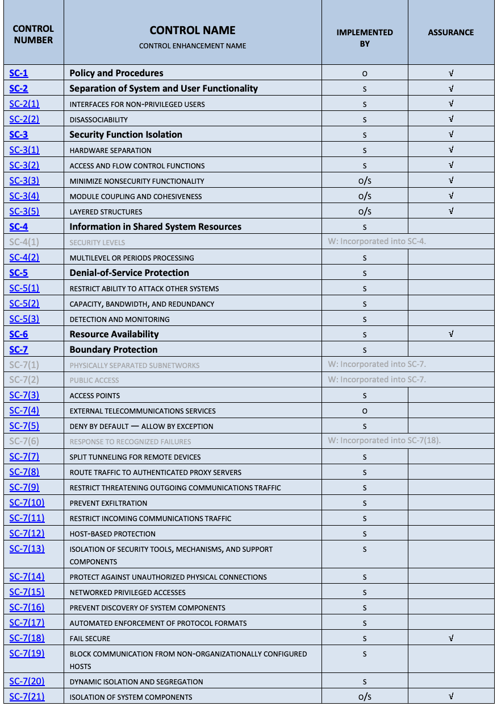
| 管理策番号 | 管理策名 管理策拡張名 | 実装主体 | 保証 |
|---|---|---|---|
| SC-1 | 方針及び手順 | O | √ |
| SC-2 | システム機能とユーザー機能の分離 | S | √ |
| SC-2(1) | 非特権ユーザー向けのインターフェース | S | √ |
| SC-2(2) | 非関連付け性 | S | √ |
| SC-3 | セキュリティ機能の隔離 | S | √ |
| SC-3(1) | ハードウェアによる分離 | S | √ |
| SC-3(2) | アクセス制御機能及びフロー制御機能 | S | √ |
| SC-3(3) | セキュリティ以外の機能の最小化 | O/S | √ |
| SC-3(4) | モジュールの結合度及び凝集度 | O/S | √ |
| SC-3(5) | 階層構造 | O/S | √ |
| SC-4 | 共有システム資源内の情報 | S | |
| SC-4(1) | セキュリティレベル | W：SC-4に統合。 | |
| SC-4(2) | マルチレベル処理又は期間別処理 | S | |
| SC-5 | サービス拒否からの保護 | S | |
| SC-5(1) | 他のシステムを攻撃する能力の制限 | S | |
| SC-5(2) | 容量、帯域幅及び冗長性 | S | |
| SC-5(3) | 検出及び監視 | S | |
| SC-6 | 資源の可用性 | S | √ |
| SC-7 | 境界保護 | S | |
| SC-7(1) | 物理的に分離したサブネットワーク | W：SC-7に統合。 | |
| SC-7(2) | 公開アクセス | W：SC-7に統合。 | |
| SC-7(3) | アクセスポイント | S | |
| SC-7(4) | 外部の電気通信サービス | O | |
| SC-7(5) | 原則拒否：例外として許可 | S | |
| SC-7(6) | 認識された障害への対応 | W：SC-7(18)に統合。 | |
| SC-7(7) | リモートデバイスのスプリットトンネリング | S | |
| SC-7(8) | 認証されたプロキシサーバーへのトラフィックの経路指定 | S | |
| SC-7(9) | 脅威となる外向き通信トラフィックの制限 | S | |
| SC-7(10) | データの不正持出しの防止 | S | |
| SC-7(11) | 内向き通信トラフィックの制限 | S | |
| SC-7(12) | ホストに基づく保護 | S | |
| SC-7(13) | セキュリティツール、仕組み及び支援構成要素の隔離 | S | |
| SC-7(14) | 無許可の物理的接続からの保護 | S | |
| SC-7(15) | ネットワーク経由の特権アクセス | S | |
| SC-7(16) | システム構成要素の発見の防止 | S | |
| SC-7(17) | プロトコル形式の強制適用の自動化 | S | |
| SC-7(18) | 障害時の安全性の維持 | S | √ |
| SC-7(19) | 組織が構成していないホストからの通信の遮断 | S | |
| SC-7(20) | 動的な隔離及び分離 | S | |
| SC-7(21) | システム構成要素の隔離 | O/S | √ |
| SC-7(22) | 異なるセキュリティドメインへ接続するためのサブネットの分離 | S | √ |
| SC-7(23) | プロトコルの妥当性確認に失敗した場合の送信者へのフィードバックの無効化 | S | |
| SC-7(24) | 個人を識別できる情報 | O/S | |
| SC-7(25) | 非機密の国家安全保障システムとの接続 | O | |
| SC-7(26) | 機密の国家安全保障システムとの接続 | O | |
| SC-7(27) | 国家安全保障システム以外の非機密システムとの接続 | O | |
| SC-7(28) | 公衆ネットワークとの接続 | O | |
| SC-7(29) | 機能を隔離するためのサブネットの分離 | S | |
| SC-8 | 伝送の機密性及び完全性 | S | |
| SC-8(1) | 暗号による保護 | S | |
| SC-8(2) | 伝送前及び伝送後の取扱い | S | |
| SC-8(3) | メッセージ外部情報の暗号による保護 | S | |
| SC-8(4) | 通信の隠蔽又はランダム化 | S | |
| SC-8(5) | 保護された配信システム | S | |
| SC-9 | 伝送の機密性 | W：SC-8に統合。 | |
| SC-10 | ネットワークの切断 | S | |
| SC-11 | 信頼された経路 | S | √ |
| SC-11(1) | 確実に識別できる通信経路 | S | √ |
| SC-12 | 暗号鍵の確立及び管理 | O/S | |
| SC-12(1) | 可用性 | O/S | |
| SC-12(2) | 共通鍵 | O/S | |
| SC-12(3) | 非対称鍵 | O/S | |
| SC-12(4) | PKI証明書 | W：SC-12(3)に統合。 | |
| SC-12(5) | PKI証明書・ハードウェアトークン | W：SC-12(3)に統合。 | |
| SC-12(6) | 鍵の物理的管理 | O/S | |
| SC-13 | 暗号による保護 | S | |
| SC-13(1) | FIPS検証済み暗号技術 | W：SC-13に統合。 | |
| SC-13(2) | NSAが承認した暗号技術 | W：SC-13に統合。 | |
| SC-13(3) | 正式なアクセス承認を受けていない者 | W：SC-13に統合。 | |
| SC-13(4) | デジタル署名 | W：SC-13に統合。 | |
| SC-14 | 公開アクセスの保護 | W：AC-2、AC-3、AC-5、SI-3、SI-4、SI-5、SI-7及びSI-10に統合。 | |
| SC-15 | 共同作業用のコンピューティング機器及びアプリケーション | S | |
| SC-15(1) | 物理的又は論理的な切断 | S | |
| SC-15(2) | 内向き及び外向き通信トラフィックの遮断 | W：SC-7に統合。 | |
| SC-15(3) | 安全な作業区域での無効化及び撤去 | O | |
| SC-15(4) | 現在の参加者の明示 | S | |
| SC-16 | セキュリティ属性及びプライバシー属性の伝送 | S | |
| SC-16(1) | 完全性の検証 | S | |
| SC-16(2) | なりすまし防止の仕組み | S | |
| SC-16(3) | 暗号による結び付け | S | |
| SC-17 | 公開鍵基盤の証明書 | O/S | |
| SC-18 | モバイルコード | O | |
| SC-18(1) | 許容できないコードの特定及び是正措置の実施 | S | |
| SC-18(2) | 取得、開発及び使用 | O | |
| SC-18(3) | ダウンロード及び実行の防止 | S | |
| SC-18(4) | 自動実行の防止 | S | |
| SC-18(5) | 隔離環境内だけでの実行の許可 | S | |
| SC-19 | インターネットプロトコル上の音声通信（VoIP） | W：技術固有のものであり、他の技術又はプロトコルと同様に扱う。 | |
| SC-20 | 安全な名前・アドレス解決サービス（権威情報源） | S | |
| SC-20(1) | 下位の名前空間 | W：SC-20に統合。 | |
| SC-20(2) | データの出所及び完全性 | S | |
| SC-21 | 安全な名前・アドレス解決サービス（再帰リゾルバー又はキャッシュリゾルバー） | S | |
| SC-21(1) | データの出所及び完全性 | W：SC-21に統合。 | |
| SC-22 | 名前・アドレス解決サービスのアーキテクチャ及びプロビジョニング | S | |
| SC-23 | セッションの真正性 | S | |
| SC-23(1) | ログアウト時のセッション識別子の無効化 | S | |
| SC-23(2) | ユーザーによるログアウト及びメッセージ表示 | W：AC-12(1)に統合。 | |
| SC-23(3) | システムが生成する一意のセッション識別子 | S | |
| SC-23(4) | ランダム化された一意のセッション識別子 | W：SC-23(3)に統合。 | |
| SC-23(5) | 許可された認証局 | S | |
| SC-24 | 障害時の既知の状態への移行 | S | √ |
| SC-25 | シンノード | S | |
| SC-26 | おとり | S | |
| SC-26(1) | 悪意のあるコードの検出 | W：SC-35に統合。 | |
| SC-27 | プラットフォームに依存しないアプリケーション | S | |
| SC-28 | 保存情報の保護 | S | |
| SC-28(1) | 暗号による保護 | S | |
| SC-28(2) | オフライン保管 | O | |
| SC-28(3) | 暗号鍵 | O/S | |
| SC-29 | 異種構成 | O | √ |
| SC-29(1) | 仮想化技法 | O | √ |
| SC-30 | 隠蔽及び誤誘導 | O | √ |
| SC-30(1) | 仮想化技法 | W：SC-29(1)に統合。 | |
| SC-30(2) | ランダム性 | O | √ |
| SC-30(3) | 処理及び保管場所の変更 | O | √ |
| SC-30(4) | 誤誘導情報 | O | √ |
| SC-30(5) | システム構成要素の隠蔽 | O | √ |
| SC-31 | 隠れ通信路分析 | O | √ |
| SC-31(1) | 隠れ通信路の悪用可能性のテスト | O | √ |
| SC-31(2) | 最大帯域幅 | O | √ |
| SC-31(3) | 運用環境での帯域幅の測定 | O | √ |
| SC-32 | システムの分割 | O/S | √ |
| SC-32(1) | 特権機能用の物理ドメインの分離 | O/S | √ |
| SC-33 | 伝送準備の完全性 | W：SC-8に統合。 | |
| SC-34 | 変更不可能な実行プログラム | S | √ |
| SC-34(1) | 書込み可能なストレージを持たないこと | O | √ |
| SC-34(2) | 完全性の保護及び読取り専用媒体 | O | √ |
| SC-34(3) | ハードウェアに基づく保護 | W：SC-51へ移動。 | |
| SC-35 | 外部の悪意のあるコードの識別 | S | |
| SC-36 | 分散処理及び保管 | O | √ |
| SC-36(1) | ポーリング技法 | O | √ |
| SC-36(2) | 同期 | O | √ |
| SC-37 | 帯域外チャネル | O | √ |
| SC-37(1) | 配信及び伝送の確保 | O | √ |
| SC-38 | 運用セキュリティ | O | √ |
| SC-39 | プロセスの隔離 | S | √ |
| SC-39(1) | ハードウェアによる分離 | S | √ |
| SC-39(2) | スレッドごとの実行ドメインの分離 | S | √ |
| SC-40 | 無線リンクの保護 | S | |
| SC-40(1) | 電磁干渉 | S | |
| SC-40(2) | 検出される可能性の低減 | S | |
| SC-40(3) | 模倣又は操作による通信欺瞞 | S | |
| SC-40(4) | 信号パラメーターの特定 | S | |
| SC-41 | ポート及び入出力デバイスへのアクセス | O/S | |
| SC-42 | センサーの機能及びデータ | S | |
| SC-42(1) | 認可された者又は役割への報告 | O | |
| SC-42(2) | 認可された使用 | O | |
| SC-42(3) | デバイスの使用禁止 | W：SC-42に統合。 | |
| SC-42(4) | 収集の通知 | O | |
| SC-42(5) | 収集の最小化 | O | |
| SC-43 | 使用制限 | O/S | |
| SC-44 | 隔離実行環境（デトネーションチャンバー） | S | |
| SC-45 | システム時刻の同期 | S | |
| SC-45(1) | 基準となる時刻源との同期 | S | |
| SC-45(2) | 第2の基準となる時刻源 | S | |
| SC-46 | ドメイン間の方針の強制適用 | S | |
| SC-47 | 代替通信経路 | O/S | |
| SC-48 | センサーの再配置 | O/S | |
| SC-48(1) | センサー又は監視機能の動的な再配置 | O/S | |
| SC-49 | ハードウェアによる分離及び方針の強制適用 | O/S | √ |
| SC-50 | ソフトウェアによる分離及び方針の強制適用 | O/S | √ |
| SC-51 | ハードウェアに基づく保護 | O/S | √ |
TABLE C-19: SYSTEM AND INFORMATION INTEGRITY FAMILY
表C-19：システム及び情報の完全性ファミリー
| CONTROL NUMBER | CONTROL NAME CONTROL ENHANCEMENT NAME | IMPLEMENTED BY | ASSURANCE |
|---|---|---|---|
| SI-1 | Policy and Procedures | O | √ |
| SI-2 | Flaw Remediation | O | |
| SI-2(1) | CENTRAL MANAGEMENT | W: Incorporated into PL-9. | |
| SI-2(2) | AUTOMATED FLAW REMEDIATION STATUS | O | |
| SI-2(3) | TIME TO REMEDIATE FLAWS AND BENCHMARKS FOR CORRECTIVE ACTIONS | O | |
| SI-2(4) | AUTOMATED PATCH MANAGEMENT TOOLS | O/S | |
| SI-2(5) | AUTOMATIC SOFTWARE AND FIRMWARE UPDATES | O/S | |
| SI-2(6) | REMOVAL OF PREVIOUS VERSIONS OF SOFTWARE AND FIRMWARE | O/S | |
| SI-3 | Malicious Code Protection | O/S | |
| SI-3(1) | CENTRAL MANAGEMENT | W: Incorporated into PL-9. | |
| SI-3(2) | AUTOMATIC UPDATES | W: Incorporated into SI-3. | |
| SI-3(3) | NON-PRIVILEGED USERS | W: Incorporated into AC-6(10). | |
| SI-3(4) | UPDATES ONLY BY PRIVILEGED USERS | O/S | |
| SI-3(5) | PORTABLE STORAGE DEVICES | W: Incorporated into MP-7. | |
| SI-3(6) | TESTING AND VERIFICATION | O | |
| SI-3(7) | NONSIGNATURE-BASED DETECTION | W: Incorporated into SI-3. | |
| SI-3(8) | DETECT UNAUTHORIZED COMMANDS | S | |
| SI-3(9) | AUTHENTICATE REMOTE COMMANDS | W: Moved to AC-17(10). | |
| SI-3(10) | MALICIOUS CODE ANALYSIS | O | |
| SI-4 | System Monitoring | O/S | √ |
| SI-4(1) | SYSTEM-WIDE INTRUSION DETECTION SYSTEM | O/S | √ |
| SI-4(2) | AUTOMATED TOOLS AND MECHANISMS FOR REAL-TIME ANALYSIS | S | √ |
| SI-4(3) | AUTOMATED TOOL AND MECHANISM INTEGRATION | S | √ |
| SI-4(4) | INBOUND AND OUTBOUND COMMUNICATIONS TRAFFIC | S | √ |
| SI-4(5) | SYSTEM-GENERATED ALERTS | S | √ |
| SI-4(6) | RESTRICT NON-PRIVILEGED USERS | W: Incorporated into AC-6(10). | |
| SI-4(7) | AUTOMATED RESPONSE TO SUSPICIOUS EVENTS | S | √ |
| SI-4(8) | PROTECTION OF MONITORING INFORMATION | W: Incorporated into SI-4. | |
| SI-4(9) | TESTING OF MONITORING TOOLS AND MECHANISMS | O | √ |
| SI-4(10) | VISIBILITY OF ENCRYPTED COMMUNICATIONS | O | √ |
| SI-4(11) | ANALYZE COMMUNICATIONS TRAFFIC ANOMALIES | O/S | √ |
| SI-4(12) | AUTOMATED ORGANIZATION-GENERATED ALERTS | O/S | √ |
| SI-4(13) | ANALYZE TRAFFIC AND EVENT PATTERNS | O/S | √ |
| SI-4(14) | WIRELESS INTRUSION DETECTION | S | √ |
| SI-4(15) | WIRELESS TO WIRELINE COMMUNICATIONS | S | √ |
| SI-4(16) | CORRELATE MONITORING INFORMATION | O/S | √ |
| SI-4(17) | INTEGRATED SITUATIONAL AWARENESS | O | √ |
| SI-4(18) | ANALYZE TRAFFIC AND COVERT EXFILTRATION | O/S | √ |
| SI-4(19) | RISK FOR INDIVIDUALS | O | √ |
| SI-4(20) | PRIVILEGED USERS | S | √ |
| SI-4(21) | PROBATIONARY PERIODS | O | √ |
| SI-4(22) | UNAUTHORIZED NETWORK SERVICES | S | √ |
| SI-4(23) | HOST-BASED DEVICES | O | √ |
| SI-4(24) | INDICATORS OF COMPROMISE | S | √ |
| SI-4(25) | OPTIMIZE NETWORK TRAFFIC ANALYSIS | S | √ |
| SI-5 | Security Alerts, Advisories, and Directives | O | √ |
| SI-5(1) | AUTOMATED ALERTS AND ADVISORIES | O | √ |
| SI-6 | Security and Privacy Function Verification | S | √ |
| SI-6(1) | NOTIFICATION OF FAILED SECURITY TESTS | W: Incorporated into SI-6. | |
| SI-6(2) | AUTOMATION SUPPORT FOR DISTRIBUTED TESTING | S | |
| SI-6(3) | REPORT VERIFICATION RESULTS | O | |
| SI-7 | Software, Firmware, and Information Integrity | O/S | √ |
| SI-7(1) | INTEGRITY CHECKS | S | √ |
| SI-7(2) | AUTOMATED NOTIFICATIONS OF INTEGRITY VIOLATIONS | S | √ |
| SI-7(3) | CENTRALLY MANAGED INTEGRITY TOOLS | O | √ |
| SI-7(4) | TAMPER-EVIDENT PACKAGING | W: Incorporated into SR-9. | |
| SI-7(5) | AUTOMATED RESPONSE TO INTEGRITY VIOLATIONS | S | √ |
| SI-7(6) | CRYPTOGRAPHIC PROTECTION | S | √ |
| SI-7(7) | INTEGRATION OF DETECTION AND RESPONSE | O | √ |
| SI-7(8) | AUDITING CAPABILITY FOR SIGNIFICANT EVENTS | S | √ |
| SI-7(9) | VERIFY BOOT PROCESS | S | √ |
| SI-7(10) | PROTECTION OF BOOT FIRMWARE | S | √ |
| SI-7(11) | CONFINED ENVIRONMENTS WITH LIMITED PRIVILEGES | W: Moved to CM-7(6). | |
| SI-7(12) | INTEGRITY VERIFICATION | O/S | √ |
| SI-7(13) | CODE EXECUTION IN PROTECTED ENVIRONMENTS | W: Moved to CM-7(7). | |
| SI-7(14) | BINARY OR MACHINE EXECUTABLE CODE | W: Moved to CM-7(8). | |
| SI-7(15) | CODE AUTHENTICATION | S | √ |
| SI-7(16) | TIME LIMIT ON PROCESS EXECUTION WITHOUT SUPERVISION | O | √ |
| SI-7(17) | RUNTIME APPLICATION SELF-PROTECTION | O/S | √ |
| SI-8 | Spam Protection | O | |
| SI-8(1) | CENTRAL MANAGEMENT | W: Incorporated into PL-9. | |
| SI-8(2) | AUTOMATIC UPDATES | S | |
| SI-8(3) | CONTINUOUS LEARNING CAPABILITY | S | |
| SI-9 | Information Input Restrictions | W: Incorporated into AC-2, AC-3, AC-5, and AC-6. | |
| SI-10 | Information Input Validation | S | √ |
| SI-10(1) | MANUAL OVERRIDE CAPABILITY | O/S | √ |
| SI-10(2) | REVIEW AND RESOLVE ERRORS | O | √ |
| SI-10(3) | PREDICTABLE BEHAVIOR | O/S | √ |
| SI-10(4) | TIMING INTERACTIONS | S | √ |
| SI-10(5) | RESTRICT INPUTS TO TRUSTED SOURCES AND APPROVED FORMATS | S | √ |
| SI-10(6) | INJECTION PREVENTION | S | √ |
| SI-11 | Error Handling | S | |
| SI-12 | Information Management and Retention | O | |
| SI-12(1) | LIMIT PERSONALLY IDENTIFIABLE INFORMATION ELEMENTS | O | |
| SI-12(2) | MINIMIZE PERSONALLY IDENTIFIABLE INFORMATION IN TESTING, TRAINING, AND RESEARCH | O | |
| SI-12(3) | INFORMATION DISPOSAL | O | |
| SI-13 | Predictable Failure Prevention | O | √ |
| SI-13(1) | TRANSFERRING COMPONENT RESPONSIBILITIES | O | √ |
| SI-13(2) | TIME LIMIT ON PROCESS EXECUTION WITHOUT SUPERVISION | W: Incorporated into SI-7(16). | |
| SI-13(3) | MANUAL TRANSFER BETWEEN COMPONENTS | O | √ |
| SI-13(4) | STANDBY COMPONENT INSTALLATION AND NOTIFICATION | O/S | √ |
| SI-13(5) | FAILOVER CAPABILITY | O | √ |
| SI-14 | Non-Persistence | O | √ |
| SI-14(1) | REFRESH FROM TRUSTED SOURCES | O | √ |
| SI-14(2) | NON-PERSISTENT INFORMATION | O | √ |
| SI-14(3) | NON-PERSISTENT CONNECTIVITY | O | √ |
| SI-15 | Information Output Filtering | S | √ |
| SI-16 | Memory Protection | S | √ |
| SI-17 | Fail-Safe Procedures | S | √ |
| SI-18 | Personally Identifiable Information Quality Operations | O/S | |
| SI-18(1) | AUTOMATION SUPPORT | O/S | |
| SI-18(2) | DATA TAGS | O/S | |
| SI-18(3) | COLLECTION | O/S | |
| SI-18(4) | INDIVIDUAL REQUESTS | O/S | |
| SI-18(5) | NOTICE OF CORRECTION OR DELETION | O/S | |
| SI-19 | De-Identification | O/S | |
| SI-19(1) | COLLECTION | O/S | |
| SI-19(2) | ARCHIVING | O/S | |
| SI-19(3) | RELEASE | O/S | |
| SI-19(4) | REMOVAL, MASKING, ENCRYPTION, HASHING, OR REPLACEMENT OF DIRECT IDENTIFIERS | S | |
| SI-19(5) | STATISTICAL DISCLOSURE CONTROL | O/S | |
| SI-19(6) | DIFFERENTIAL PRIVACY | O/S | |
| SI-19(7) | VALIDATED ALGORITHMS AND SOFTWARE | O | |
| SI-19(8) | MOTIVATED INTRUDER | O/S | |
| SI-20 | Tainting | O/S | √ |
| SI-21 | Information Refresh | O/S | √ |
| SI-22 | Information Diversity | O/S | √ |
| SI-23 | Information Fragmentation | O/S | √ |
原本PDFの抜粋画像
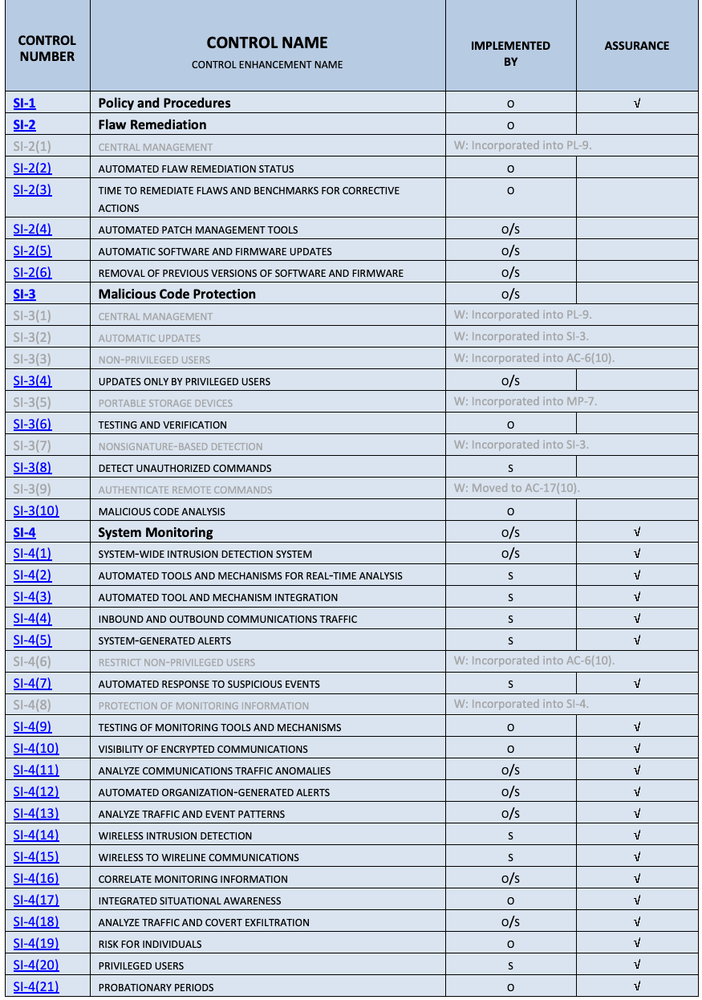
| 管理策番号 | 管理策名 管理策拡張名 | 実装主体 | 保証 |
|---|---|---|---|
| SI-1 | 方針及び手順 | O | √ |
| SI-2 | 欠陥の修正 | O | |
| SI-2(1) | 一元管理 | W：PL-9に統合。 | |
| SI-2(2) | 欠陥修正状況の把握の自動化 | O | |
| SI-2(3) | 欠陥の修正時間及び是正措置のベンチマーク | O | |
| SI-2(4) | 自動化されたパッチ管理ツール | O/S | |
| SI-2(5) | ソフトウェア及びファームウェアの自動更新 | O/S | |
| SI-2(6) | ソフトウェア及びファームウェアの旧版の削除 | O/S | |
| SI-3 | 悪意のあるコードからの保護 | O/S | |
| SI-3(1) | 一元管理 | W：PL-9に統合。 | |
| SI-3(2) | 自動更新 | W：SI-3に統合。 | |
| SI-3(3) | 非特権ユーザー | W：AC-6(10)に統合。 | |
| SI-3(4) | 特権ユーザーだけによる更新 | O/S | |
| SI-3(5) | 可搬型ストレージデバイス | W：MP-7に統合。 | |
| SI-3(6) | テスト及び検証 | O | |
| SI-3(7) | シグネチャに基づかない検出 | W：SI-3に統合。 | |
| SI-3(8) | 無許可のコマンドの検出 | S | |
| SI-3(9) | リモートコマンドの認証 | W：AC-17(10)へ移動。 | |
| SI-3(10) | 悪意のあるコードの分析 | O | |
| SI-4 | システムの監視 | O/S | √ |
| SI-4(1) | システム全体の侵入検知システム | O/S | √ |
| SI-4(2) | リアルタイム分析用の自動化ツール及び仕組み | S | √ |
| SI-4(3) | 自動化ツール及び仕組みの統合 | S | √ |
| SI-4(4) | 内向き及び外向き通信トラフィック | S | √ |
| SI-4(5) | システムが生成するアラート | S | √ |
| SI-4(6) | 非特権ユーザーの制限 | W：AC-6(10)に統合。 | |
| SI-4(7) | 疑わしい事象への対応の自動化 | S | √ |
| SI-4(8) | 監視情報の保護 | W：SI-4に統合。 | |
| SI-4(9) | 監視ツール及び仕組みのテスト | O | √ |
| SI-4(10) | 暗号化通信の可視性 | O | √ |
| SI-4(11) | 通信トラフィックの異常の分析 | O/S | √ |
| SI-4(12) | 組織が生成するアラートの自動化 | O/S | √ |
| SI-4(13) | トラフィック及び事象のパターンの分析 | O/S | √ |
| SI-4(14) | 無線の侵入検知 | S | √ |
| SI-4(15) | 無線から有線への通信 | S | √ |
| SI-4(16) | 監視情報の相関付け | O/S | √ |
| SI-4(17) | 統合的な状況認識 | O | √ |
| SI-4(18) | トラフィック及び隠れたデータ持出しの分析 | O/S | √ |
| SI-4(19) | 個人へのリスク | O | √ |
| SI-4(20) | 特権ユーザー | S | √ |
| SI-4(21) | 試用期間 | O | √ |
| SI-4(22) | 無許可のネットワークサービス | S | √ |
| SI-4(23) | ホストに基づくデバイス | O | √ |
| SI-4(24) | 侵害の兆候 | S | √ |
| SI-4(25) | ネットワークトラフィック分析の最適化 | S | √ |
| SI-5 | セキュリティの警報、勧告及び指令 | O | √ |
| SI-5(1) | 警報及び勧告の自動化 | O | √ |
| SI-6 | セキュリティ機能及びプライバシー機能の検証 | S | √ |
| SI-6(1) | セキュリティテストの失敗の通知 | W：SI-6に統合。 | |
| SI-6(2) | 分散テストの自動化支援 | S | |
| SI-6(3) | 検証結果の報告 | O | |
| SI-7 | ソフトウェア、ファームウェア及び情報の完全性 | O/S | √ |
| SI-7(1) | 完全性検査 | S | √ |
| SI-7(2) | 完全性違反の自動通知 | S | √ |
| SI-7(3) | 一元管理された完全性検査ツール | O | √ |
| SI-7(4) | 不正な開封・改変の痕跡が残る包装 | W：SR-9に統合。 | |
| SI-7(5) | 完全性違反への対応の自動化 | S | √ |
| SI-7(6) | 暗号による保護 | S | √ |
| SI-7(7) | 検出及び対応の統合 | O | √ |
| SI-7(8) | 重大な事象の監査機能 | S | √ |
| SI-7(9) | ブートプロセスの検証 | S | √ |
| SI-7(10) | ブートファームウェアの保護 | S | √ |
| SI-7(11) | 権限を制限した隔離環境 | W：CM-7(6)へ移動。 | |
| SI-7(12) | 完全性の検証 | O/S | √ |
| SI-7(13) | 保護された環境でのコード実行 | W：CM-7(7)へ移動。 | |
| SI-7(14) | バイナリー又は機械実行可能コード | W：CM-7(8)へ移動。 | |
| SI-7(15) | コードの認証 | S | √ |
| SI-7(16) | 監督なしのプロセス実行の時間制限 | O | √ |
| SI-7(17) | 実行時アプリケーション自己防御 | O/S | √ |
| SI-8 | スパムからの保護 | O | |
| SI-8(1) | 一元管理 | W：PL-9に統合。 | |
| SI-8(2) | 自動更新 | S | |
| SI-8(3) | 継続的な学習機能 | S | |
| SI-9 | 情報入力の制限 | W：AC-2、AC-3、AC-5及びAC-6に統合。 | |
| SI-10 | 情報入力の妥当性確認 | S | √ |
| SI-10(1) | 手動による上書き機能 | O/S | √ |
| SI-10(2) | エラーのレビュー及び解決 | O | √ |
| SI-10(3) | 予測可能な動作 | O/S | √ |
| SI-10(4) | タイミングの相互作用 | S | √ |
| SI-10(5) | 入力の信頼できる情報源及び承認された形式への制限 | S | √ |
| SI-10(6) | インジェクションの防止 | S | √ |
| SI-11 | エラー処理 | S | |
| SI-12 | 情報の管理及び保持 | O | |
| SI-12(1) | 個人を識別できる情報の要素の制限 | O | |
| SI-12(2) | テスト、訓練及び研究における個人を識別できる情報の最小化 | O | |
| SI-12(3) | 情報の廃棄 | O | |
| SI-13 | 予測可能な障害の防止 | O | √ |
| SI-13(1) | 構成要素の役割の移管 | O | √ |
| SI-13(2) | 監督なしのプロセス実行の時間制限 | W：SI-7(16)に統合。 | |
| SI-13(3) | 構成要素間の手動移管 | O | √ |
| SI-13(4) | 待機構成要素の設置及び通知 | O/S | √ |
| SI-13(5) | フェイルオーバー機能 | O | √ |
| SI-14 | 非永続性 | O | √ |
| SI-14(1) | 信頼できる情報源からの更新 | O | √ |
| SI-14(2) | 非永続的な情報 | O | √ |
| SI-14(3) | 非永続的な接続 | O | √ |
| SI-15 | 情報出力のフィルタリング | S | √ |
| SI-16 | メモリーの保護 | S | √ |
| SI-17 | フェイルセーフ手順 | S | √ |
| SI-18 | 個人を識別できる情報の品質に関する運用 | O/S | |
| SI-18(1) | 自動化支援 | O/S | |
| SI-18(2) | データタグ | O/S | |
| SI-18(3) | 収集 | O/S | |
| SI-18(4) | 本人からの要求 | O/S | |
| SI-18(5) | 訂正又は削除の通知 | O/S | |
| SI-19 | 非識別化 | O/S | |
| SI-19(1) | 収集 | O/S | |
| SI-19(2) | アーカイブ | O/S | |
| SI-19(3) | 公開 | O/S | |
| SI-19(4) | 直接識別子の削除、マスキング、暗号化、ハッシュ化又は置換 | S | |
| SI-19(5) | 統計的開示制御 | O/S | |
| SI-19(6) | 差分プライバシー | O/S | |
| SI-19(7) | 妥当性が確認されたアルゴリズム及びソフトウェア | O | |
| SI-19(8) | 動機を持つ侵入者 | O/S | |
| SI-20 | 流出検知用の埋込み（テインティング） | O/S | √ |
| SI-21 | 情報の更新 | O/S | √ |
| SI-22 | 情報の多様性 | O/S | √ |
| SI-23 | 情報の断片化 | O/S | √ |
TABLE C-20: SUPPLY CHAIN RISK MANAGEMENT FAMILY
表C-20：サプライチェーンリスク管理ファミリー
| CONTROL NUMBER | CONTROL NAME CONTROL ENHANCEMENT NAME | IMPLEMENTED BY | ASSURANCE |
|---|---|---|---|
| SR-1 | Policy and Procedures | O | √ |
| SR-2 | Supply Chain Risk Management Plan | O | √ |
| SR-2(1) | ESTABLISH SCRM TEAM | O | √ |
| SR-3 | Supply Chain Controls and Processes | O/S | √ |
| SR-3(1) | DIVERSE SUPPLY BASE | O | √ |
| SR-3(2) | LIMITATION OF HARM | O | √ |
| SR-3(3) | SUB-TIER FLOW DOWN | O | √ |
| SR-4 | Provenance | O | √ |
| SR-4(1) | IDENTITY | O | √ |
| SR-4(2) | TRACK AND TRACE | O | √ |
| SR-4(3) | VALIDATE AS GENUINE AND NOT ALTERED | O | √ |
| SR-4(4) | SUPPLY CHAIN INTEGRITY — PEDIGREE | O | √ |
| SR-5 | Acquisition Strategies, Tools, and Methods | O | √ |
| SR-5(1) | ADEQUATE SUPPLY | O | √ |
| SR-5(2) | ASSESSMENTS PRIOR TO SELECTION, ACCEPTANCE, MODIFICATION, OR UPDATE | O | √ |
| SR-6 | Supplier Assessments and Reviews | O | √ |
| SR-6(1) | TESTING AND ANALYSIS | O | √ |
| SR-7 | Supply Chain Operations Security | O | √ |
| SR-8 | Notification Agreements | O | √ |
| SR-9 | Tamper Resistance and Detection | O | √ |
| SR-9(1) | MULTIPLE STAGES OF SYSTEM DEVELOPMENT LIFE CYCLE | O | √ |
| SR-10 | Inspection of Systems or Components | O | √ |
| SR-11 | Component Authenticity | O | √ |
| SR-11(1) | ANTI-COUNTERFEIT TRAINING | O | √ |
| SR-11(2) | CONFIGURATION CONTROL FOR COMPONENT SERVICE AND REPAIR | O | √ |
| SR-11(3) | ANTI-COUNTERFEIT SCANNING | O | √ |
| SR-12 | Component Disposal | O | √ |
原本PDFの抜粋画像
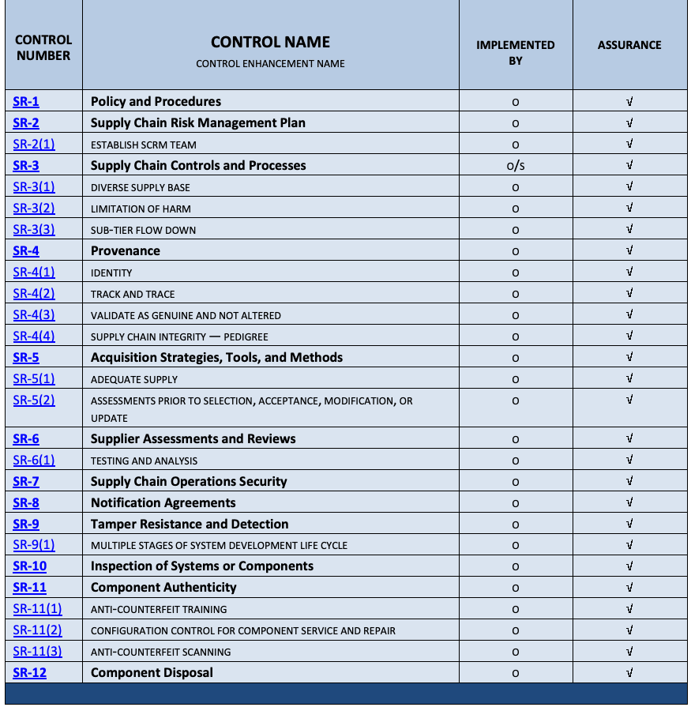
| 管理策番号 | 管理策名 管理策拡張名 | 実装主体 | 保証 |
|---|---|---|---|
| SR-1 | 方針及び手順 | O | √ |
| SR-2 | サプライチェーンリスク管理計画 | O | √ |
| SR-2(1) | SCRMチームの設置 | O | √ |
| SR-3 | サプライチェーンの管理策及びプロセス | O/S | √ |
| SR-3(1) | 多様な供給基盤 | O | √ |
| SR-3(2) | 被害の制限 | O | √ |
| SR-3(3) | 下位階層への適用 | O | √ |
| SR-4 | 来歴 | O | √ |
| SR-4(1) | 識別情報 | O | √ |
| SR-4(2) | 追跡及びトレース | O | √ |
| SR-4(3) | 真正で改変されていないことの検証 | O | √ |
| SR-4(4) | サプライチェーンの完全性 — ペディグリー | O | √ |
| SR-5 | 取得の戦略、ツール及び方法 | O | √ |
| SR-5(1) | 十分な供給 | O | √ |
| SR-5(2) | 選定、受入れ、変更又は更新の前の評価 | O | √ |
| SR-6 | サプライヤーの評価及びレビュー | O | √ |
| SR-6(1) | テスト及び分析 | O | √ |
| SR-7 | サプライチェーン運用セキュリティ | O | √ |
| SR-8 | 通知に関する合意 | O | √ |
| SR-9 | 不正な改変への耐性及び検出 | O | √ |
| SR-9(1) | システム開発ライフサイクルの複数段階 | O | √ |
| SR-10 | システム又は構成要素の検査 | O | √ |
| SR-11 | 構成要素の真正性 | O | √ |
| SR-11(1) | 偽造品対策の訓練 | O | √ |
| SR-11(2) | 構成要素の整備及び修理に関する構成管理 | O | √ |
| SR-11(3) | 偽造品検出のスキャン | O | √ |
| SR-12 | 構成要素の廃棄 | O | √ |